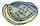

English - Kannada Dictionary
ಇಂಗ್ಲಿಷ್ - ಕನ್ನಡ ನಿಘಂಟು
(ಬಹುವಚನ As, A’s, Aes).
- ಇಂಗ್ಲಿಷ್ ವರ್ಣಮಾಲೆಯ ಅಕ್ಷರ.
- (ಸಂಗೀತ)ದ-ಧೈವತ; ಪಾಶ್ಚಾತ್ಯ ಸಂಗೀತದ ಸ್ವರಸಪ್ತಕದಲ್ಲಿ ಆರನೆಯ ಸ್ವರ.
- ಮೊದಲನೆಯ ಕಲ್ಪಿತ ವ್ಯಕ್ತಿ ಯಾ ಉದಾಹರಣೆ.
- (ರಸ್ತೆ, ಪರೀಕ್ಷೆಯ ಅಂಕಗಳು, ಐಶ್ವರ್ಯ, ಮೊದಲಾದವುಗಳ ದೃಷ್ಟಿಯಿಂದ ಜನ ಮೊದಲಾದವುಗಳ ವಿಷಯದಲ್ಲಿ) ಮೊದಲ ದರ್ಜೆ; ಪ್ರಥಮ ದರ್ಜೆ.
- (ಬೀಜಗಣಿತ, ಸಾಮಾನ್ಯವಾಗಿ a) ಗೊತ್ತಾದ ಪರಿಮಾಣವನ್ನು ಸೂಚಿಸುವ ಸಂಕೇತ.
- A1 (ಉಚ್ಚಾರಣೆ ಏವನ್)
- ಶ್ರೇಷ್ಠ ಹಡಗು; ಲಾಯ್ಡ್ ಸಂಸ್ಥೆಯ ದಾಖಲೆಯಲ್ಲಿ ಪರಮ ಶ್ರೇಷ್ಠವೆಂದು ಎಣಿಸಿರುವ ಹಡಗು.
- (ಆಡುಮಾತು) ಮೊದಲ ದರ್ಜೆಯದು; ಅತ್ಯುತ್ತಮ; ಪ್ರಪ್ರಥಮ; ಸರ್ವಶ್ರೇಷ್ಠ.
- A1, A2, ಮೊದಲಾದ ನಿರ್ದಿಷ್ಟ ಮುದ್ರಣ ಕಾಗದದ ಅಳತೆ: ${\rm A}4=297\times 210$ ಮಿಲಿಮೀಟರ್. ${\rm A}5=210\times 148$ ಮಿಲಿಮೀಟರ್.
- from A to B ಯಾವುದೇ ಸ್ಥಳದಿಂದ ಮತ್ತೊಂದು ಸ್ಥಳಕ್ಕೆ: use one’s car simply as a means of getting from A to B ಯಾವುದೇ ಒಂದು ಸ್ಥಳದಿಂದ ಮತ್ತೊಂದು ಸ್ಥಳಕ್ಕೆ ಹೋಗಲು ಕೇವಲ ಒಂದು ಸಾಧನವನ್ನಾಗಿ ಕಾರನ್ನು ಬಳಸು.
- from A to Z ಸಂಪೂರ್ಣವಾಗಿ; ಆದ್ಯಂತ.
(ಅನಿರ್ದೇಶವಾಚಕ)
- ಒಂದು; ಒಬ್ಬ; ಯಾವುದಾದರೂ.
- ಒಂದಾನೊಂದು; ಒಬ್ಬಾನೊಬ್ಬ: once upon a time there lived a king ಒಂದಾನೊಂದು ಕಾಲದಲ್ಲಿ ಒಬ್ಬಾನೊಬ್ಬ ದೊರೆ ಇದ್ದ.
- ಅಂಥ; ಅವನಂಥ; ಅದರಂಥ; ಆ ತರಹದ: a Daniel ಒಬ್ಬ ಡೇನಿಯಲ್; ಡೇನಿಯಲ್ನಂಥವನು.
- ಒಂದೇ ಒಂದು; ಒಂದು ಸಹ: could not see a thing ಒಂದೇ ಒಂದು ವಸ್ತುವನ್ನೂ ನೋಡಲಾಗಲಿಲ್ಲ. to reduce unemployment at a stroke ಒಂದೇ ಏಟಿನಲ್ಲಿ ನಿರುದ್ೋಗವನ್ನು ತಗ್ಗಿಸಲು.
- ಜಾತ್ಯೇಕವಚನವನ್ನು ಸೂಚಿಸುವಾಗ: a cow is an animal (= cows are animals) ಹಸು ಒಂದು ಪ್ರಾಣಿ.
- ಯಾವುದಾದರೂ ಒಂದರ ಅಂಶವನ್ನು ಸೂಚಿಸುವಾಗ: half a rupee ಅರ್ಧ ರೂಪಾಯಿ. half an hour ಅರ್ಧ ಘಂಟೆ.
- how, so, as, too ಇವುಗಳಲ್ಲಿ ಒಂದರ ಬಳಿಕ ಗುಣವಾಚಕ ಬಂದಾಗ: how good a man ಎಂಥ ಒಳ್ಳೆಯ ಮನುಷ್ಯ. so pretty a girl ಎಂಥ ಚಂದದ ಹುಡುಗಿ. as efficient a secretary as you desire ನೀವು ಬಯಸುವಷ್ಟು ದಕ್ಷನಾದ ಕಾರ್ಯದರ್ಶಿ. it is too difficult a task ಅದು ಅತಿ ಕಷ್ಟದ ಕೆಲಸ.
- ಒಂದೇ ತರಹದ, ಮಟ್ಟದ: all of a size ಎಲ್ಲ ಒಂದೇ ಗಾತ್ರದ.
- ಪ್ರತಿಯೊಂದಕ್ಕೂ; ಪ್ರತಿಯೊಂದರಲ್ಲಿಯೂ: at three miles an hour ಗಂಟೆಗೆ ಮೂರು ಮೈಲಿಗಳಂತೆ. Rs.40 a year ವರ್ಷಕ್ಕೆ ೪೦ ರೂ.ಗಳು twice a day ದಿನಕ್ಕೆ ಯಾ ದಿನದಲ್ಲಿ ಎರಡು ಬಾರಿ.
- ಯಾರೋ ಒಬ್ಬರು: a Mr. Brown ಯಾರೋ ಒಬ್ಬ ಬ್ರೌನ್.
(ಸಾಮಾನ್ಯವಾಗಿ ಪೂರ್ವಪ್ರತ್ಯಯವಾಗಿ)
- ಮೇಲೆ. abed ಹಾಸಿಗೆಯ ಮೇಲೆ. afire ಉರಿ ಹತ್ತಿ. afoot ಕಾಲಮೇಲೆ; ನಡೆದುಕೊಂಡು.
- -ಕ್ಕೆ: ashore ದಡಕ್ಕೆ
- -ಅಲ್ಲಿ: nowadays ಇಂದು; ಈಚಿನ ದಿನಗಳಲ್ಲಿ
- -ಕಡೆಗೆ; -ಅತ್ತ: aback ಹಿಂದುಗಡೆಗೆ. aside ಪಕ್ಕಕ್ಕೆ; ಪಕ್ಕದ ಕಡೆಗೆ.
- ಆ ಸ್ಥಿತಿಯಲ್ಲಿ: asleep ನಿದ್ದೆಯಲ್ಲಿ. alive ಬದುಕಿರುವ. a-blaze ಉರಿಯುತ್ತ, ಧಗಧಗಿಸುತ್ತ. a-float ತೇಲುತ್ತ. abuzz ಮೊರೆಯುತ್ತ. aflutter ರಪರಪನೆ ಬಡಿಯತ್ತ.
- -ಆಗುತ್ತ; ಆ ಕ್ರಿಯೆಯಲ್ಲಿ ಇದ್ದು ಯಾ ತೊಡಗಿ: a-building ಕಟ್ಟಲ್ಪಡುತ್ತ. the house was a-building ಮನೆಯನ್ನು ಕಟ್ಟಲಾಗುತ್ತಿತ್ತು. papers will be a-reading ಲೇಖನಗಳನ್ನು ಓದಲಾಗುತ್ತದೆ.
- ಒತ್ತಿ ಹೇಳುವಾಗ; ಅತಿಶಯಾರ್ಥಕ: arise ಎದ್ದೇಳು.
- ನಿಷೇಧಾರ್ಥಕ; ಅಭಾವ ಸೂಚಕ: atheist ನಾಸ್ತಿಕ.
- ಬೇರೆ ಕಡೆಗೆ: avert ಬೇರೆ ಕಡೆಗೆ ತಿರುಗಿಸು; ತಪ್ಪಿಸು.
- ಸ್ತ್ರೀವಾಚಕ: donna (ಇಟಲಿ, ಸ್ಪೇನ್ ಮತ್ತು ಪೋರ್ಚುಗಲ್ ದೇಶಗಳಲ್ಲಿ) ಮಹಿಳೆ.
- (ಜೀವವಿಜ್ಞಾನ) ಕೆಲವು ನಾಮವಾಚಕಗಳಲ್ಲಿ: hyena, dahlia.
- ಭೌಗೋಳಿಕ ನಾಮವಾಚಕಗಳಲ್ಲಿ: Africa.
- ನಪುಂಸಕ ಬಹುವಚನ ಸೂಚಕ: data, phenomena.
- (ರಸಾಯನವಿಜ್ಞಾನ) ಕೆಲವು ಆಕ್ಸೈಡುಗಳಲ್ಲಿ: alumina
- (ಪ್ರಾಣಿವಿಜ್ಞಾನ) ಕೆಲವು ವರ್ಗಗಳ ಹೆಸರುಗಳಲ್ಲಿ: Carnivora.
- ಪ್ರಾಚೀನ ಯಾ ಲಾಟಿನ್ ಭಾಷೆಯನ್ನು ಅನುಕರಿಸಿದ ಆಧುನಿಕ ಸ್ತ್ರೀನಾಮಗಳಲ್ಲಿ: Lydia, Hilda.
- (ಆಡುಮಾತು ಯಾ ಅಶಿಷ್ಟ) of ಎನ್ನುವುದಕ್ಕೆ ಬದಲಾಗಿ: kinda, pinta.
- (ಆಡುಮಾತು ಯಾ ಅಶಿಷ್ಟ) have ಎಂಬುದಕ್ಕೆ ಬದಲಾಗಿ: mighta.
- (ಬ್ರಿಟಿಷ್ ಪ್ರಯೋಗ) (ಚಲನಚಿತ್ರಗಳ ವಿಷಯದಲ್ಲಿ) ವಯಸ್ಕರಿಗೆ ಮಾತ್ರ ಪ್ರದರ್ಶಿಸಬೇಕೆಂದೂ ಮಕ್ಕಳಿಗೆ ಪ್ರದರ್ಶಿಸಬಾರದೆಂದೂ ಪ್ರಮಾಣಪತ್ರ ನೀಡಿರುವ.
- ampere(s).
- angstrom(s).
- answer.
- Associate of.
- atomic (energy ಮೊದಲಾದವು).
atto-.
- (ಅಮೆರಿಕನ್ ಪ್ರಯೋಗ) Alcoholics Anonymous.
- anti-aircraft.
- (ಬ್ರಿಟಿಷ್ ಪ್ರಯೋಗ) Automobile Association.
- (ಬ್ರಿಟಿಷ್ ಪ್ರಯೋಗ) (ಚಲನಚಿತ್ರಗಳ ವಿಷಯದಲ್ಲಿ) 14 ವರ್ಷ ಮೀರಿದವರು ಮಾತ್ರ ನೋಡಬೇಕಾದ.
- (ಬ್ರಿಟಿಷ್ ಪ್ರಯೋಗ) Amateur Athletic Association.
- (ಅಮೆರಿಕನ್ ಪ್ರಯೋಗ) Automobile Association of America.
(Hymns) Ancient and Modern.
arists and recording(or repertoire).
(ಬಹುವಚನ aardwolves). ನೆಲತೋಳ; ಇಳಾವೃಕ್ಷ; ಕತ್ತೆಕಿರುಬಕ್ಕೂ ಪುನುಗು ಬೆಕ್ಕಿಗೂ ನಡುವಣ ಜಾತಿಯ, ದಕ್ಷಿಣ ಆಹ್ರಿಕದ ಮಾಂಸಾಹಾರಿ ಹಾಗೂ ಕೀಟಾಹಾರಿ ಪ್ರಾಣಿ.
(ಸಸ್ಯವಿಜ್ಞಾನ) ದಾಡಿಗಿಡ; ದೀರ್ಘ ಕೇಸರವುಳ್ಳ ಹೂ ಬಿಡುವ ಹಲವು ಬಗೆಯ ಗಿಡಗಳು.
- (ಸಸ್ಯವಿಜ್ಞಾನ) ಏರನ್’ ದಂಡ; ಹಲವು ಬಗೆಯ ನೀಳ ಹೂದಂಟುಳ್ಳ ಕಾಡುಹೊಗೆಸೊಪ್ಪು ಗಿಡದ ಜಾತಿಯ ಸಸ್ಯಗಳು.
- (ಬೈಬ್ಲ್) ಮಾಯದಂಡ: ಎದುರಾಳಿಯನ್ನು ದಂಗುಬಡಿಸುವ ಮಾಟದ ಕೋಲು.
Australasia.
ಹಪ್ಪುಕಳ; ದಕ್ಷಿಣ ಆಹ್ರಿಕದ ರಣಹದ್ದು.
(ಅಮೆರಿಕನ್ ಪ್ರಯೋಗ) Amateur Athletic Union.
-ಇಂದ ಆಚೆಗೆ:-ಇಂದ ದೂರಕ್ಕೆ(ಸಂಸ್ಕೃತದ ‘ಅಪ’,‘ಅವ’ ಎಂಬ ಪ್ರತ್ಯಗಳಂತೆ): abduct ಅಪಹರಿಸು; ಒಂದು ಸ್ಥಳದಿಂದ ದೂರಕ್ಕೆ ಹಾರಿಸಿಕೊಂಡು ಹೋಗು.
- Able-bodied rating or seaman.
- (ಅಮೆರಿಕನ್ ಪ್ರಯೋಗ) Bachelor of Arts.
ಎಬಿ; ಎ ಮತ್ತು ಬಿ ಎರಡೂ ಅಂಟಿಜನ್ಗಳನ್ನೊಳಗೊಂಡ (ಎಬಿಓ ವ್ಯವಸ್ಥೆಗೆ ಸೇರಿದ) ಮಾನವ ರಕ್ತದ ಒಂದು ಗುಂಪು.
- ಆಬ; ಒಂಟೆ ಯಾ ಮೇಕೆಯ ಉಣ್ಣೆಯಿಂದ ಮಾಡಿದ ಬಟ್ಟೆ.
- ಆಬ: ಜೋಂಗಿ; ಅರಬ್ಬರು ತೊಡುವ ತೋಳಿಲ್ಲದ ನಿಲುವಂಗಿ.
- ಆಬಕ; ಮನಿಲ ನಾರು; ಹಿಲಿಪೀನಿನ ಭೂತಾಳೆ ನಾರು.
- ಮನಿಲನಾರಿನ ಗಿಡ.
abacusನ ಬಹುವಚನ.
- ಹಿಂದಕ್ಕೆ; ಹಿಂದುಗಡೆಗೆ; ಹಿಮ್ಮೊಗವಾಗಿ.
- (ಹಡಗಿನ ಚೌಕಹಾಯಿಗಳ ವಿಷಯದಲ್ಲಿ) ಇದುರುಗಾಳಿಯಿಂದ ಹಾಯಿಗಂಬಕ್ಕೆ ಒತ್ತಿ, ಅದುಮಿ, ನೂಕಿ.
taken aback
- (ಹಡಗಿನ ವಿಷಯದಲ್ಲಿ) ಎದುರುಗಾಳಿಯು ಹಾಯಿಪಟಗಳನ್ನು ಹಾಯಿಗಂಬಕ್ಕೆ ನೂಕಿದ ಸ್ಥಿತಿಯಲ್ಲಿರುವ.
- (ರೂಪಕವಾಗಿವಾಗಿ) ಬೆಚ್ಚಿಬಿದ್ದು; ಬೆರಗಾಗಿ; ಚಕಿತಗೊಂಡು; ತಬ್ಬಿಬ್ಬಾಗಿ.
(ನಕ್ಷತ್ರ ಮೀನಿನಂಥ ತ್ರಿಜ್ಯೀಯ ಪ್ರಾಣಿಗಳ ವಿಷಯದಲ್ಲಿ) ಬೆಂಗಡೆಯ; ಬೆನ್ನು ಭಾಗದಲ್ಲಿರುವ; ಬಾಯಿಗೆ ವಿರುದ್ಧ ದಿಕ್ಕಿನಲ್ಲಿರುವ.
- ನರಕ.
- ಸೈತಾನ.
(ನೌಕಾಯಾನ) (ಹಡಗಿನ) ಹಿಂಗೋಟಿನ ಕಡೆಗೆ; ಹಿಂಭಾಗದ ಕಡೆ.
(ಅಮೆರಿಕನ್ ಪ್ರಯೋಗ) ಆಬಲೋನಿ; ಕಡಲ್ಗಿವಿ; ಹಾಲಿಯೋಟಸ್ ಕುಲಕ್ಕೆ ಸೇರಿದ, ಕಿವಿಯಾಕಾರದ ಚಿಪ್ಪುಳ್ಳ, ತಿನ್ನಲು ಬರುವ ಒಂದು ಜಾತಿಯ ಮೃದ್ವಂಗಿ. 
- (ಬೇರೊಬ್ಬನ ಅಧೀನಕ್ಕೆ, ವಶಕ್ಕೆ, ದಯದಾಕ್ಷಿಣ್ಯಗಳಿಗೆ) ಬಿಟ್ಟುಬಿಡು; ಒಪ್ಪಿಸಿಬಿಡು.
- (ಕಾಮಕ್ರೋಧಾದಿಗಳಿಗೆ ಸಂಪೂವಾಗಿ) ವಶವಾಗು.
- (ಸ್ವಾಧೀನದಲ್ಲಿರುವುದನ್ನು, ಅಭ್ಯಾಸ, ಆಟಗಳನ್ನು) ತೊರೆ; ಬಿಟ್ಟುಬಿಡು; ಪರಿತ್ಯಜಿಸು.
- (ವ್ಯಕ್ತಿ, ಹುದ್ದೆ, ಹಡಗನ್ನು) ಕೈಬಿಡು; ತ್ಯಜಿಸು.
ಸ್ವೇಚ್ಛಾವರ್ತನೆ; ಸ್ವಚ್ಛಂದ–ವರ್ತನೆ, ನಡವಳಿಕೆ; ಯಾವುದೇ ಕಟ್ಟು ಕಟ್ಟಳೆಗೆ ಒಳಪಡದೆ ನಿರಾತಂಕವಾಗಿ, ಲಹರಿ ತಿರುಗಿದಂತೆ ವರ್ತಿಸುವುದು.
- ತೊರೆದ; ಬಿಟ್ಟುಬಿಟ್ಟ; ತ್ಯಕ್ತ; ಪರಿತ್ಯಕ್ತ.
- ನಡತೆಗೆಟ್ಟ: ದಾರಿತಪ್ಪಿದ; ಭ್ರಷ್ಟ; ಸ್ವೈರಿಯಾದ; ದುರ್ಮಾರ್ಗಿಯಾದ.
(ನ್ಯಾಯಶಾಸ್ತ್ರ)
- ತ್ಯಕ್ತಗ್ರಾಹಿ; ವಿಧಿವತ್ತಾಗಿ ಯಾ ಕಾನೂನುರೀತ್ಯಾ ಪರಿತ್ಯಜಿಸಿದುದನ್ನು ಪಡೆದುಕೊಳ್ಳುವವನು.
- ತ್ಯಕ್ತಗ್ರಾಹಿ; ಮುಖ್ಯವಾಗಿ ಮುಳುಗಿಹೋದ ಹಡಗನ್ನು ಎತ್ತಿ ಅದರಲ್ಲಿರುವುದನ್ನು ಕೊಳ್ಳಲು ಒಟ್ಟು ಒಪ್ಪಂದ ಮಾಡಿಕೊಳ್ಳುವವನು.
(ನ್ಯಾಯಶಾಸ್ತ್ರ) ಪರಿತ್ಯಾಗಿ; ಬಿಟ್ಟುಕೊಟ್ಟವನು; ಬಿಟ್ಟುಹೋಗುವವನು.
- ಬಿಡುವಿಕೆ; ತೊರೆತ; ಪರಿತ್ಯಜನ; ಪರಿತ್ಯಾಗ; ತ್ಯಜಿಸುವಿಕೆ.
- ತೊರೆಹಕ್ಕೊಳಗಾಗುವಿಕೆ; ಪರಿತ್ಯಕ್ತತೆ.
- ಶರಣಾಗತಿ; ಮೊರೆಹೋಗುವಿಕೆ.
- ಸ್ವಚ್ಛಂದ ನಡವಳಿಕೆ; ಸ್ವೇಚ್ಛಾವರ್ತನೆ; ನಿರಾತಂಕ, ನಿಶ್ಚಿಂತ–ವರ್ತನೆ.
ಕೀಳೈಸು; ಕೀಳುಮಾಡು; ಹೀನೈಸು; ತುಚ್ಛೀಕರಿಸು: he abased himself ಆತ ತನ್ನನ್ನು ತಾನೇ ಹೀನೈಸಿಕೊಂಡನು.
- ಕೀಳುಮಾಡುವಿಕೆ; ಹೀನೈಸುವಿಕೆ.
- ಹೀನಾಯ; ಹೀನಸ್ಥಿತಿ; ಕೀಳುದೆಸೆಯಲ್ಲಿರುವುದು.
(ಸಾಮಾನ್ಯವಾಗಿ ಕರ್ಮಣಿಪ್ರಯೋಗದಲ್ಲಿ)
- ಮುಖ ಮುರಿ; ಮುಖ ಕೆಡಿಸು; ಕಂಗೆಡಿಸು; ನಾಚಿಸು; ಮುಖಭಂಗ ಮಾಡು; ತೇಜೋವಧೆ ಮಾಡು.
- ಕಕ್ಕಾವಿಕ್ಕಿ ಮಾಡು; ತಬ್ಬಿಬ್ಬು ಮಾಡು.
- ನಾಚಿಕೆ; ಮುಖಭಂಗ.
- ಕಕ್ಕಾವಿಕ್ಕಿ; ತಬ್ಬಿಬ್ಬು.
(ವೈದ್ಯಶಾಸ್ತ್ರ) ನಡೆಯುಡುಗು; ಗತಿಭ್ರಂಶ; ಸ್ನಾಯುಗಳ ಹೊಂದಾಣಿಕೆಯಿಲ್ಲದೆ ನಡೆ, ಚಲನೆ ಸಾಧ್ಯವಾಗದಿರುವಿಕೆ.
ಬಿಸಿಲು ಕಾಯಿಸಿಕೊಳ್ಳುತ್ತ; ಬಿಸಿಲಿಗೊಡ್ಡಿ.
- (ನ್ಯಾಯಶಾಸ್ತ್ರ) (ಆಜ್ಞೆ ಯಾ ಕೋರ್ಟು ಕ್ರಮವನ್ನು) ರದ್ದು ಮಾಡು; ರದ್ದುಗೊಳಿಸು; ವಜಾ ಮಾಡು.
- (ತೀವ್ರತೆಯನ್ನು) ತಗ್ಗಿಸು; ಇಳಿಸು; ಕಡಮೆ ಮಾಡು.
- (ನೋವನ್ನು) ಕಡಮೆ ಮಾಡು; ಶಮನಗೊಳಿಸು.
- (ಬೆಲೆ) ಇಳಿಸು; ತಗ್ಗಿಸು.
- (ಬೆಲೆಯ ನಿರ್ದಿಷ್ಟ ಯಾ ಅನಿರ್ದಿಷ್ಟ ಭಾಗವನ್ನು) ಕಳೆ; ತಗ್ಗಿಸು; ಬಿಟ್ಟುಬಿಡು.
- (ಉಪದ್ರವ, ಪೀಡೆ, ಕಾಟ, ತೊಂದರೆಯನ್ನು) ಮುಗಿಸು; ಕೊನೆಗೊಳಿಸು; ಅಂತ್ಯಗೊಳಿಸು: we must abate the smoke nuisance in our cities ನಾವು ನಮ್ಮ ನಗರಗಳಲ್ಲಿಯ ಹೊಗೆಕಾಟವನ್ನು ಕೊನೆಗೊಳಿಸಬೇಕು.
- (ಗತಪ್ರಯೋಗ) (ಮೊನೆಯನ್ನು, ಅಲಗನ್ನು) ಮೊಂಡು ಮಾಡು: abate the edge of the sword ಕತ್ತಿಯ ಅಲಗನ್ನು ಮೊಂಡು ಮಾಡು.
- (ಬಲವನ್ನು, ಶಕ್ತಿಯನ್ನು) ಕುಂದಿಸು; ಕುಗ್ಗಿಸು; ಹ್ರಾಸಗೊಳಿಸು.
(ತೀವ್ರತೆ, ಬೆಲೆ, ಪ್ರವಾಹ, ಅಂಟುರೋಗ, ಮೊದಲಾದವುಗಳ ವಿಷಯದಲ್ಲಿ) ಕುಗ್ಗು; ತಗ್ಗು; ಇಳಿ; ಕಡಮೆಯಾಗು.
- ಇಳಿಕೆ; ಇಳಿಸುವುದು; ತಗ್ಗಿಸುವುದು; ಕಡಮೆ ಮಾಡುವುದು.
- (ನ್ಯಾಯಶಾಸ್ತ್ರ) (ಆಜ್ಞೆ, ಕ್ರಮ, ಮೊದಲಾದವುಗಳ) ರದ್ದತಿ; ವಜಾ (ಮಾಡುವುದು).
- (ನೋವಿನ ವಿಷಯದಲ್ಲಿ) ಉಪಶಮನ; ಕಡಮೆಗೊಳಿಸು; ಕಡಮೆಯಾಗಿರುವುದು.
- (ಉಪದ್ರವ ಮೊದಲಾದವುಗಳ) ಕೊನೆ; ಅಂತ್ಯ; ಮುಗಿದಿರುವ ಸ್ಥಿತಿ.
(ಬಹುವಚನ ಅದೇ ಯಾ abatises).
ಮರಕಾಪು; ಕೊಂಬೆಗಳು ಹೊರಚಾಚಿರುವಂತೆ ಮರಗಳನ್ನು ಕೆಡವಿ ಕಟ್ಟಿಕೊಂಡಿರುವ ತಡೆ, ರಕ್ಷಣೆ.
ಮರಕಾಪು–ಕಟ್ಟಿರುವ, ಒದಗಿಸಿರುವ.

ಕಸಾಯಿಖಾನೆ; ಮಾಂಸಕ್ಕಾಗಿ ದನ, ಕುರಿ, ಮೊದಲಾದವನ್ನು ಕಡಿಯುವ ಮನೆ.
(ಸಸ್ಯವಿಜ್ಞಾನ) ಅಪಾಕ್ಷ: ಅವಾಕ್ಷ; ಅಕ್ಷಕ್ಕೆ ವಿಮುಖವಾದ.
(ನೇಯ್ಗೆಯಲ್ಲಿ) ಹೊಕ್ಕು; ಅಡ್ಡೆಳೆ; ಪ್ರೋತ.
- (ಕ್ರೈಸ್ತರ ದೈವ ಸಂಬೋಧನೆ) ಅಪ್ಪ; ತಂದೆ.
- ಆಬ; ಕೆಲವು ಕ್ರೈಸ್ತ ಮಠಾ ಧಿಪತಿಗಳ, ಯೆಹೂದಿ ಪಂಡಿತರ ಬಿರುದು.

ಆಬಸಿ; ಆಬಟ್ ಪದವಿಯುಳ್ಳ ಕ್ರೈಸ್ತ ಮಠಾಧಿಪತಿಯ ಉದ್ಯೋಗ, ಅಧಿಕಾರಕ್ಷೇತ್ರ, ಅಧಿಕಾರಾವಧಿ.
ಅಬ್ಬಾಸ್ ವಂಶದ; ಕ್ರಿಸ್ತಶಕ 750 ರಿಂದ 1258ರ ವರೆಗೆ ಬಾಗ್ದಾದಿನಲ್ಲಿ ಆಳಿದ, ಮಹಮ್ಮದ್ ಪೈಗಂಬರನ ಸೋದರಮಾವನಾದ ಅಬ್ಬಾಸ್ನ ವಂಶಸ್ಥರೆಂದು ಹೇಳಿಕೊಳ್ಳುವ, ಖಲೀಫರ ವಂಶಕ್ಕೆ ಸೇರಿದ.
ಅಬ್ಬಾಸ್ ವಂಶದವ; ಬಾಗ್ದಾದಿನಲ್ಲಿ ಆಳಿದ ಖಲೀಫರ ವಂಶಕ್ಕೆ ಸೇರಿದವನು.
ಆಬಿ, ಆಬಟ್, ಆಬೆಸ್–ಇವರಿಗೆ ಸಂಬಂಧಿಸಿದ.
ಆಬೆಸ್; ಕ್ರೈಸ್ತ ಸಂನ್ಯಾಸಿನಿ ಮಠದ ಮುಖ್ಯಸ್ಥೆ.
ಆಬೆಸ್; ಕ್ರೈಸ್ತ ಸಂನ್ಯಾಸಿನಿ ಮಠದ ಮುಖ್ಯಸ್ಥೆ.
ಆಬ್ವಿಲಿಯನ್; ಯೂರೋಪಿನ ಪ್ರಪ್ರಾಚೀನ ಶಿಲಾಯುಗದ ಸಂಸ್ಕೃತಿ.

(ಬಹುವಚನ abbeys).
- ಆಬಿ:
- ಆಬಟ್ ಯಾ ಆಬೆಸ್ಳ ಅಧಿಕಾರಕ್ಕೆ ಒಳಪಟ್ಟ ಕ್ರೈಸ್ತ ಸಂನ್ಯಾಸಿನಿಯರ ಮಠ.
- ಅಂಥ ಮಠಗಳಲ್ಲಿರುವ ಪಾದ್ರಿಗಳ ಯಾ ಸಂನ್ಯಾಸಿನಿಯರ ಸಮೂಹ.
- ಚರ್ಚು; ಇಗರ್ಜಿ; ಕ್ರೈಸ್ತ ಮಠದ ಕ್ರಿಸ್ತದೇವಾಲಯ.
the Abbey (ಬ್ರಿಟಿಷ್ ಪ್ರಯೋಗ)
- ಲಂಡನ್ನಿನಲ್ಲಿರುವ ಗಾಥಿಕ್ ಚರ್ಚ್. (Westminster Abbey ಎಂದೂ ಪ್ರಯೋಗ)
- (ರೂಪಕವಾಗಿ) (ಈ ಚರ್ಚಿನ ಆವರಣದಲ್ಲಿ ಸಮಾಧಿಯಾಗಿರುವ ಮಹಾಪುರುಷರ ಜೊತೆ ಸಮಾಧಿಯಾಗಲು ಅರ್ಹವಾದ) ಶ್ರೇಷ್ಠ ಮರಣ; ಶ್ಲಾಘನೀಯ ಸಾವು.
ಆಬಟ್; ಕ್ರೈಸ್ತ ಮಠಾಧಿಪತಿ; ಕ್ರೈಸ್ತ ಸಂನ್ಯಾಸಿಗಳ ಮಠದ ಮುಖ್ಯಸ್ಥ.
- Abbot of Misrule ಮಧ್ಯಯುಗದ ಪ್ರಹಸನಗಳಲ್ಲಿ ಬರುವ ನಾಯಕ.
- Abbot of Unreason= ನುಡಿಗಟ್ಟು \((1)\).
(ಮುಖ್ಯವಾಗಿ ಜೀವವಿಜ್ಞಾನ) ಚಿಕ್ಕದಾದ; ಮೋಟಾದ; ಮೊಟಕಾದ; ಹ್ರಸ್ವವಾದ.
(ಪುಸ್ತಕ, ಪ್ರವಾಸ, ಕಥೆ, ಪದ, ಭೇಟಿ, ಮೊದಲಾದವನ್ನು) ಮೊಟಕು ಮಾಡು; ಸಂಗ್ರಹ ಮಾಡು; ಸಂಕ್ಷೇಪಿಸು; ಹ್ರಸ್ವಗೊಳಿಸು: an abbreviated version ಸಂಗ್ರಹ ಮಾಡಿದ ಪಾಠ. abbreviate January to Jan. ಜನವರಿಯನ್ನು ಜನ್ಗೆ ಹ್ರಸ್ವಗೊಳಿಸು.
- ಸಂಕ್ಷೇಪಣ; ಸಂಕ್ಷೇಪ ಮಾಡುವುದು.
- ಸಂಕ್ಷೇಪ; ಸಂಕ್ಷಿಪ್ತ–ಪದ, ರೂಪ; ಹ್ರಸ್ವ–ಪದ, ರೂಪ: Master–Mr., Authorised Version A.V.
- ಅ ಆ ಇ ಈ; ಅಕ್ಷರಮಾಲೆ; ವರ್ಣಮಾಲೆ: as easy as ABC ಅ ಆ ಇ ಈ ಅಷ್ಟು ಸುಲಭ.
- ಅಕ್ಷರಾನುಕ್ರಮದಲ್ಲಿ ಬರೆದ ಯಾವುದೇ ಕೈಪಿಡಿ.
- ಬಾಲಬೋಧೆ; ವರ್ಣಮಾಲೆಯ ಪುಸ್ತಕ.
- ಓನಾಮ; ಅ ಆ ಇ ಈ; ಮೊದಲಪಾಠ; ಮೂಲತತ್ತ್ವ: he does not know the ABC of it ಅವನಿಗೆ ಅದರ ಓನಾಮವೂ ತಿಳಿಯದು.
- Australian Broadcasting Commission.
- (ಅಮೆರಿಕನ್ ಪ್ರಯೋಗ) American Broadcasting Company.
- ಆಬ್ಡರದವನು; ಗ್ರೀಸ್ ದೇಶದ ಆಬ್ಡರ ನಗರದ ನಿವಾಸಿ ಯಾ ಪ್ರಜೆ.
- ದಡ್ಡ; ಗಾಂಪ.
the Abderite(ಆಬ್ಡರದಲ್ಲಿ ಹುಟ್ಟಿದ, ಕ್ರಿಸ್ತಪೂರ್ವ 4ನೇ ಶತಮಾನದ ಗ್ರೀಕ್ ತತ್ತ್ವಶಾಸ್ತ್ರಜ್ಞನೂ ವಾಗ್ಮಿಯೂ ಆದ) ಡಿಮಾಕ್ರಿಟಸ್.
(ರಾಜ್ಯ, ಅಧಿಕಾರ, ಪದವಿ, ಹಕ್ಕು, ಮೊದಲಾದವನ್ನು ವಿಧಿವತ್ತಾಗಿ ಯಾ ಕರ್ತವ್ಯಲೋಪದ ಕಾರಣದಿಂದ) ತೊರೆದು ಬಿಡು; ಬಿಟ್ಟುಬಿಡು; ತ್ಯಜಿಸು; ಪರಿತ್ಯಜಿಸು.
(ಮುಖ್ಯವಾಗಿ ಸಿಂಹಾಸನವನ್ನು) ತೊರೆ; ಪರಿತ್ಯಜಿಸು.
ಪದಚ್ಯುತ; ಪದತ್ಯಕ್ತ; ಅಧಿಕಾರ ಕಳೆದುಕೊಂಡ; ವಿಧಿವತ್ತಾಗಿ ತೊರೆದ.
- ಪದತ್ಯಾಗ ಯಾ ಪದಚ್ಯುತಿ.
- ಸಿಂಹಾಸನತ್ಯಾಗ ಯಾ ಸಿಂಹಾಸನ ಚ್ಯುತಿ.
- (ಅಂಗರಚನಾಶಾಸ್ತ್ರ) ಹೊಟ್ಟೆ; ವಸ್ತಿ; ಕಿಬೊಟ್ಟೆ; ಉದರ; ಜೀರ್ಣಾಂಗಗಳಿರುವ ಮುಂಡದ ಕೆಳಭಾಗ.
- (ಜೀವವಿಜ್ಞಾನ) (ಕೀಟ, ಜೇಡ, ಮೊದಲಾದವುಗಳ) ಮುಂಡದ ಹಿಂಭಾಗ.
- (ಅಂಗರಚನಾಶಾಸ್ತ್ರ) ಹೊಟ್ಟೆಯ; ಕಿಬ್ಬೊಟ್ಟೆಯ; ಉದರದ.
- (ಜೀವವಿಜ್ಞಾನ) (ಕೀಟ, ಜೇಡ, ಮೊ.ವುಗಳ) ಮುಂಡದ ಹಿಂಭಾಗದ.
- (ಮೀನಿನ ವಿಷಯದಲ್ಲಿ) ಹೊಟ್ಟೆ ಕೆಳಗೆ ಈಜುರೆಕ್ಕೆಯುಳ್ಳ.
ಡೊಳ್ಳು ಹೊಟ್ಟೆಯ; ಬೊಜ್ಜು ಹೊಟ್ಟೆಯ; ಸ್ಥೂಲೋದರದ.
(ಅಂಗರಚನಾಶಾಸ್ತ್ರ) ಅಪಚಾಲಕ; ಅಪವರ್ತಕ; ಅಪಕರ್ಷಕ; (ಒಂದು ಅಂಗವನ್ನು ಅದರ ನಿಯತ ಅಕ್ಷಸ್ಥಾನದಿಂದ) ಆಚೆಗೆ ಸೆಳೆಯುವ.
- (ಮುಖ್ಯವಾಗಿ ಮಗು ಯಾ ಹೆಂಗಸನ್ನು) ಹಾರಿಸು; ಎಗರಿಸು; ಅಪಹರಿಸು; ಎತ್ತಿಕೊಂಡು ಹೋಗು; ಮೋಸದಿಂದಾಗಲಿ ಬಲಾತ್ಕಾರದಿಂದಾಗಲಿ ಹಾರಿಸಿಕೊಂಡು ಹೋಗು.
- (ಶರೀರ ವಿಜ್ಞಾನ) ಅಪಚಾಲಿಸು; ಒಂದು ಅಂಗವನ್ನು ಅದರ ನಿಯತ ಅಕ್ಷಸ್ಥಾನದಿಂದ ಆಚೆಗೆ ಎಳೆ, ಸೆಳೆ.
- ಅಪಹರಣ; ಹರಣ; (ಮಗು, ಹೆಂಗಸು, ಮತದಾರ, ಕಾವಲುಗಾರ, ಮೊದಲಾದ ಯಾರನ್ನೇ) ನ್ಯಾಯ ವಿರುದ್ಧವಾಗಿ ಎತ್ತಿಕೊಂಡು ಹೋಗುವುದು, ಬಲಾತ್ಕಾರವಾಗಿ ಅಪಹರಿಸುವುದು.
- (ತತ್ತ್ವಶಾಸ್ತ್ರ) ಸಂಭವಪಕ್ಷನ್ಯಾಯ; ಸಾಧ್ಯವಾಕ್ಯವು ಸ್ವಯಂ ಸಿದ್ಧವಾಗಿದ್ದು, ಪಕ್ಷವಾಕ್ಯವು ಕೇವಲ ಸಂಭವನೀಯವಾಗಿರುವ ತ್ರಯಾವಯವಿ ಪ್ರಕರಣ.
- (ಶರೀರ ವಿಜ್ಞಾನ) ಅಪಚಾಲನ; ಅಪಕರ್ಷಣ; ಅಪವರ್ತನ; ಒಂದು ಅಂಗವನ್ನು ಮುಖ್ಯವಾಗಿ ಕೈ, ಕಾಲು, ಬೆರಳು, ಮೊದಲಾದವನ್ನು ಅದರ ನಿಯತಸ್ಥಾನದಿಂದ ಆಚೆಗೆ ಸೆಳೆದುಕೊಳ್ಳುವಿಕೆ.
- (ರೋಗಶಾಸ್ತ್ರ) ಹುಣ್ಣಿನ ಬುಡ ಕುಗ್ಗಿ ಬಾಯಿ ತೆರೆದುಕೊಳ್ಳುವುದು.
- ಅಪಹಾರಿ; ಅಪಹಾರಕ.
- (ಅಂಗರಚನಾಶಾಸ್ತ್ರ) ಅಪಚಾಲಕ; ಅಪಕರ್ಷಕ; ಅಪವರ್ತಕ ಸ್ನಾಯು.
ಹಡಗಿನ, ವಿಮಾನದ ಮಧ್ಯಕ್ಕೆದುರಾಗಿ ಯಾ ಉದ್ದಕ್ಕೆ ಸಮಕೋನದಲ್ಲಿ: the lighthouse was abeam of the ship ದೀಪಗೃಹ ಹಡಗಿಗೆ ಸಮಕೋನದಲ್ಲಿತ್ತು.
- ಅಕ್ಷರಮಾಲೆಗೆ ಸಂಬಂಧಿಸಿದ.
- ಅಕಾರಾನುಕ್ರಮದ; ಅಕಾರಾದಿ ಜೋಡಿಸಿದ.
- ಆರಂಭದೆಸೆಯ; ಪ್ರಾರಂಭಿಕ; ಪ್ರಾಥಮಿಕ; ಓನಾಮದ.
- ಓನಾಮಿ; ಅಕ್ಷರಾಭ್ಯಾಸಿ; ಅಕ್ಷರ ಕಲಿಯುತ್ತಿರುವವನು.
- ಓನಾಮಿ; ಯಾವುದೇ ವಿಷಯದ ಯಾ ಕೆಲಸದ ಪ್ರಥಮ ಪಾಠಗಳನ್ನು ಯಾ ಮೊದಲ ಹಂತಗಳನ್ನು ಕಲಿಯುತ್ತಿರುವವನು.
- ಹಾಸಿಗೆಯಲ್ಲಿ.
- ರೋಗದಿಂದ ಹಾಸಿಗೆ ಹಿಡಿದು: he is abed with fever ಆತ ಜ್ವರದಿಂದ ಹಾಸಿಗೆ ಹಿಡಿದಿದ್ದಾನೆ.
to bring abed ಮಗುವನ್ನು ಹೆರು.
ಏಬಲ್; ಪಾಪಲಸ್ ಆಲ್ಬ ಕುಲದ, ಬಿಳಿಯ ಪಾಪ್ಲರ್ ಮರ.
ಕಸ್ತೂರಿ ಗಿಡ; ಗಂಧಮೂಲ ಗಿಡ; ಏಷ್ಯಾ ಮತ್ತು ದಕ್ಷಿಣ ಆಹ್ರಿಕದ ಉಷ್ಣವಲಯಗಳಲ್ಲಿ ಬೆಳೆಯುವ ಕಸ್ತೂರಿ ವಾಸನೆಯಿರುವ ಬೀಜಗಳುಳ್ಳ ಗಿಡ.
ಆಬರ್ಡೀನ್:
- ಸ್ಕಾಟ್ಲೆಂಡಿನ ಈಶಾನ್ಯದಲ್ಲಿರುವ ಒಂದು ನಗರ.
- = ಪದಗುಚ್ಛ \((1)\).
- = ಪದಗುಚ್ಛ \((2)\).
- Aberdeen Angus ಆಂಗಸ್ ದನ; ಸ್ಕಾಟ್ಲೆಂಡಿನ ಕೊಂಬಿಲ್ಲದ, ಮಾಂಸಕ್ಕಾಗಿ ಸಾಕುವ, ಕಪ್ಪು ದನದ ತಳಿ.
- Aberdeen terrier ಆಬರ್ಡೀನ್ ನಾಯಿ; ಸ್ಕಾಟ್ಲೆಂಡಿನ ಒರಟು ಕೂದಲಿನ ಟೆರಿಯರ್ ನಾಯಿ.

ಆಬರ್ಡವೈನ್; ಕಂದು ಹಳದಿ ಬಣ್ಣದ ಒಂದು ಬಗೆಯ ಚಿಕ್ಕ ಹಾಡುಹಕ್ಕಿ.
German
ಅತಿ ನಂಬಿಕೆ; ಕುರುಡು ನಂಬಿಕೆ; ಅಂಧಶ್ರದ್ಧೆ.
ಜೀರಿಗೆ ಬಿಸ್ಕತ್ತು; ಸೋಂಪು ಬಿಸ್ಕತ್ತು.
- ದಾರಿಬಿಟ್ಟು ಹೋಗುವಿಕೆ; ಮಾರ್ಗಚ್ಯುತಿ.
- ಅಪವಾದ(ವಾಗಿರುವಿಕೆ).
- ದಾರಿ ತಪ್ಪಿದ; ದಾರಿಗೆಟ್ಟ; ದಾರಿ ಬಿಟ್ಟ; ಅಡ್ಡದಾರಿ ಹಿಡಿದ; ನಡತೆಗೆಟ್ಟ; ಋಜುಮಾರ್ಗ ತಪ್ಪಿದ (ನೀತಿ, ನಡತೆಗಳ ವಿಷಯದಲ್ಲಿ ರೂಪಕವಾಗಿ ಸಹ)
- (ಮುಖ್ಯವಾಗಿ ಜೀವವಿಜ್ಞಾನ) ಅಪವಾದ ರೂಪದ; ಅಸ್ವಾಭಾವಿಕ.
- (ನೀತಿ, ನಡತೆಗಳ ವಿಷಯದಲ್ಲಿ ರೂಪಕವಾಗಿ ಸಹ) ದಾರಿಬಿಟ್ಟವನು; ಅಡ್ಡದಾರಿ ಹಿಡಿದವನು; ದಾರಿ ತಪ್ಪಿದವನು.
- (ಮುಖ್ಯವಾಗಿ ಜೀವವಿಜ್ಞಾನ) ಅಪವಾದ; ಅಸಹಜ ಸ್ವಭಾವದ್ದು; ಸಾಮಾನ್ಯ ಸ್ವಭಾವಕ್ಕೆ ಹೊರತಾದುದು.
- ದಾರಿ ತಪ್ಪುವಿಕೆ; ಮಾರ್ಗಚ್ಯುತಿ; ಪಥಭ್ರಂಶ (ರೂಪಕವಾಗಿ ಸಹ).
- ನಿಯಮಭಂಗ; ನಿಯಮೋಲ್ಲಂಘನ.
- ನೀತಿಗೆಡುವಿಕೆ; ನೀತಿಭ್ರಂಶ.
- ಬುದ್ಧಿಭ್ರಮಣೆ; ಬುದ್ಧಿವಿಕಲ್ಪ.
- ಕ್ಷಣಿಕ–ಮರವೆ, ವಿಸ್ಮೃತಿ; ತಾತ್ಕಾಲಿಕ ಮರೆವು.
- ಅಪವಾದ(ವಾಗಿರುವಿಕೆ); ಸಾಮಾನ್ಯ ಮಾದರಿಗಿಂತ ಬೇರೆಯಾಗಿರುವಿಕೆ.
- (ಭೌತವಿಜ್ಞಾನ) ವಿಪಥನ; ಬಿಂಬ ಪ್ರತಿಬಿಂಬ ನಿರ್ಮಾಣದಲ್ಲಿ ಬಿಂದುವಿಗೆ ಬಿಂದು ಹೊಂದದಿರುವುದು: spherical aberration ಗೋಳವಿಪಥನ. chromatic aberration ವರ್ಣವಿಪಥನ.
- (ಖಗೋಳ ವಿಜ್ಞಾನ) ದಿಗ್ಭ್ರಂಶ; ದಿಕ್ಚ್ಯುತಿ; ಸ್ಥಾನಭ್ರಮೆ; ಭೂಮಿಯ ಚಲನೆಯ ಕಾರಣವಾಗಿ ವೀಕ್ಷಕನ ಸ್ಥಾನ ಬದಲಾಯಿಸುವುದರಿಂದಲೂ ಬೆಳಕಿನ ಕಿರಣಗಳು ಭೂಮಿಯನ್ನು ತಲುಪಲು ಕಾಲ ಬೇಕಾಗಿರುವುದರಿಂದಲೂ ಯಾವುದಾದರೂ ಒಂದು ಆಕಾಶಕಾಯ ತಾನಿದ್ದ ಸ್ಥಳದಲ್ಲಿ ಕಾಣದೆ ಬೇರೆ ಕಡೆಯಲ್ಲಿ ಕಾಣುವುದು.
(ಸಾಮಾನ್ಯವಾಗಿ ದುಷ್ಕೃತ್ಯಕ್ಕೆ ಯಾ ದುಷ್ಕರ್ಮಿಗೆ) ಕುಮ್ಮಕ್ಕು ಕೊಡು; ಒತ್ತಾಸೆ ಕೊಡು; ಮದ್ದತು ಮಾಡು; ನೆರವಾಗು; ಸಹಾಯ ಮಾಡು; ಪ್ರೋತ್ಸಾಹಿಸು.
aid and abet (ದುಷ್ಕೃತ್ಯಕ್ಕೆ ಯಾ ದುಷ್ಕರ್ಮಿಗೆ) ನೆರವು ನೀಡು; ಪ್ರೋತ್ಸಾಹ ಕೊಡು.
ಕುಮ್ಮಕ್ಕು; ಒತ್ತಾಸೆ; ಮದ್ದತು; ಪ್ರೋತ್ಸಾಹ; ಕೇಡಿಗನಿಗೋ ಕೆಟ್ಟ ಕೆಲಸಕ್ಕೋ ಕೊಡುವ ಕುಮ್ಮಕ್ಕು, ದುಷ್ಪ್ರೇರಣೆ.
(ಮುಖ್ಯವಾಗಿ ನ್ಯಾಯಶಾಸ್ತ್ರ) (ಕೆಟ್ಟ ಕೆಲಸಕ್ಕೆ ಯಾ ಕೆಟ್ಟ ಕೆಲಸ ಮಾಡುವವನಿಗೆ) ಕುಮ್ಮಕ್ಕುಗಾರ; ಮದ್ದತುಗಾರ; ದುಷ್ಪ್ರೇರಕ.
ಹೊರಗಿನಿಂದ.
- (ಪುನಃ ಸಿಕ್ಕಬಹುದಾದ ಹಕ್ಕು ಮೊದಲಾದವನ್ನು) ತಡೆದಿಡುವಿಕೆ; ಸ್ಥಗನ; ಸ್ಥಗಿತಗೊಳಿಸುವಿಕೆ.
- ತಡೆಗಡೆ; ತಡೆ ಹಿಡಿದ ಸ್ಥಿತಿ; ಸ್ಥಾಗಿತ್ಯ; ಸ್ಥಗಿತ ಸ್ಥಿತಿ.
- be in abeyance (ಕಾರ್ಯ, ಹಕ್ಕು, ಮೊದಲಾದವುಗಳ ವಿಷಯದಲ್ಲಿ) ತಡೆಹಿಡಿದ ಯಾ ಸ್ಥಗಿತವಾದ ಸ್ಥಿತಿಯಲ್ಲಿರು.
- fall into abeyance = ಪದಗುಚ್ಛ\((1)\).
ತಡೆಹಿಡಿದಿರುವ; ಸ್ಥಗಿತಗೊಂಡಿರುವ.
(ಭೂತರೂಪ ಮತ್ತು ಭೂತಕೃದಂತ abhorred, ವರ್ತಮಾನ ಕೃದಂತ abhorring)
ಕಡುಹೇಸು; ತುಂಬ ಅಸಹ್ಯಪಡು; ಸಹಿಸದಿರು: Nature abhors a vacuum ನಿಸರ್ಗ ಶೂನ್ಯವನ್ನು ಸಹಿಸದು.
- ಹೇಸುವಿಕೆ; ಹೇಸಿಕೆ; ಜುಗುಪ್ಸೆ.
- ಹೇಸಿಗೆ; ಹೇಯವಾದುದು; ಅಸಹ್ಯ; ಅಸಹನೀಯ (ವಸ್ತು, ವಿಷಯ, ಮೊದಲಾದವು): flattery is my abhorrence ಹೊಗಳಿಕೆಯೆಂದರೆ ನನಗೆ ಅಸಹ್ಯ.
- (ನಡವಳಿಕೆ ಮೊದಲಾದವುಗಳ ವಿಷಯದಲ್ಲಿ) ಹೇಯ; ಅಸಹ್ಯಕರ: ಜುಗುಪ್ಸೆ ಹುಟ್ಟಿಸುವ: it is abhorrent to me ಅದು ನನಗೆ ಅಸಹ್ಯ ಹುಟ್ಟಿಸುತ್ತದೆ.
- ಸರಿಹೊಂದದ; ಅನುಸಾರವಾಗಿರದ; ವಿರುದ್ಧವಾಗಿರುವ: abhorrent to the principles of law ನ್ಯಾಯದ ತತ್ತ್ವಗಳಿಗೆ ವಿರುದ್ಧವಾಗಿರುವ.
- (ಪ್ರಾಚೀನ ಪ್ರಯೋಗ) (ಯಾವುದೇ ವಿಷಯದಲ್ಲಿ) ಜುಗುಪ್ಸೆಪಡುವ: the Greeks were abhorrent of excess ಗ್ರೀಕರು ಅತಿರೇಕದ ಬಗ್ಗೆ ಜುಗುಪ್ಸೆ ಪಡುವವರಾಗಿದ್ದರು.
abhorrent from ದೂರವಾಗಿರುವ; ಅಸಂಗತವಾಗಿರುವ; ಅಸಮಂಜಸವಾಗಿರುವ: abhorrent from the principles of law ಕಾನೂನಿನ ತತ್ತ್ವಗಳಿಗೆ ದೂರವಾಗಿರುವ, ಅಸಮಂಜಸವಾಗಿರುವ.
- ಹೇಸಿಗೆಪಡುವವನು; ಜುಗುಪ್ಸೆಪಡುವವನು.
- (ಚರಿತ್ರೆ) 1680ರಲ್ಲಿ ಇಂಗ್ಲಂಡಿನ ಎರಡನೆಯ ಚಾರ್ಲ್ಸ್ ಸಲ್ಲಿಸಿದ ಮನವಿಪತ್ರಕ್ಕೆ ಸಹಿ ಹಾಕಿದವರ ಅಡ್ಡಹೆಸರು.
- ಇರುವುದು; ನೆಲೆಸಿರುವುದು; ವಾಸವಾಗಿರುವುದು.
- (ನಿಯಮ ಮೊದಲಾದವುಗಳ) ಪಾಲನೆ; ಅನುಕರಣೆ: abidance by rules ನಿಯಮಗಳ ಪಾಲನೆ.
(ಭೂತರೂಪ ಮತ್ತು ಭೂತಕೃದಂತ abode ಉಚ್ಚಾರಣೆ ಅಬೋಡ್, ಯಾ abided)
- ಎದುರಿಸು; ತಡೆ; ಪ್ರತಿರೋಧಿಸು: abide the onrush of the foe ಶತ್ರುವಿನ ದಾಳಿಯನ್ನು ಎದುರಿಸು.
- ಒಳಗಾಗಿರು; ಬದ್ಧವಾಗಿರು; ವಿಧೇಯನಾಗಿರು; ವಿರೋಧಿಸದೆ ಯಾ ಎದುರಾಡದೆ ಸಮ್ಮತಿಸು, ಒಪ್ಪಿಕೊ: abide the court’s judgement on it ಅದರ ಬಗ್ಗೆ ನ್ಯಾಯಾಲಯದ ತೀರ್ಪಿಗೆ ಬದ್ಧನಾಗಿರು.
- (ಮುಖ್ಯವಾಗಿ ನಿಷೇಧಾರ್ಥಕ ಯಾ ಪ್ರಶ್ನಾರ್ಥಕ ವಾಕ್ಯಗಳಲ್ಲಿ) ತಾಳು; ಸಹಿಸು: I cannot abide ನಾನು ತಾಳಲಾರೆ. who can abide? ಯಾರು ತಾನೇ ಸಹಿಸುತ್ತಾರೆ?
- (ಪ್ರಾಚೀನ ಪ್ರಯೋಗ) ಕಾಯು; ಸಿದ್ಧವಾಗಿರು; ನಿರೀಕ್ಷಿಸು: abide the coming of the Lord ಭಗವಂತನ ಬರವಿಗಾಗಿ ಕಾಯು.
- ಉಳಿ; ಇರು; ಸ್ಥಿರವಾಗಿರು: the earth abides for ever ಭೂಮಿ ಶಾಶ್ವತವಾಗಿರುವುದು. though much is taken much abides ಎಷ್ಟೋ ಹೋದರೂ ಇನ್ನೂ ಎಷ್ಟೋ ಉಳಿದಿದೆ.
- (ಪ್ರಾಚೀನ ಪ್ರಯೋಗ) ವಾಸಿಸು; ವಾಸವಾಗಿರು; ನೆಲೆಯಾಗಿರು; ನೆಲೆಸಿರು.
abide by (ಭೂತರೂಪ ಮತ್ತು ಭೂತಕೃದಂತ ಸಾಮಾನ್ಯವಾಗಿ abided ಎಂದೇ ಪ್ರಯೋಗ)
- ಪಾಲಿಸು; ಅನುಸಾರವಾಗಿ ನಡೆದುಕೊ.
- ಒಪ್ಪಿರು; ಸಮ್ಮತಿಸಿರು; ವಿಧೇಯನಾಗಿರು; ಬದ್ಧನಾಗಿರು.
- (ಒಬ್ಬನಿಗೆ, ಒಂದಕ್ಕೆ, ನಿಯಮ, ವಾಗ್ದಾನ, ಮೊದಲಾದವುಗಳಿಗೆ) ನಿಷ್ಠೆಯಿಂದಿರು; ದೃಢವಾಗಿ ಅಂಟಿಕೊಂಡಿರು.
ನೆಲೆಯಾದ; ಸ್ಥಿರವಾದ; ಶಾಶ್ವತವಾದ.
ಸ್ಥಿರವಾಗಿ; ನೆಲೆಯಾಗಿ; ಶಾಶ್ವತವಾಗಿ.
(ಮನಶ್ಶಾಸ್ತ್ರ) ಹಿಂಜರಿಕೆ; ಹಿಂದೆಗೆಯುವಿಕೆ; ಪರಾಙ್ಮುಖತೆ; ವಿಮುಖತೆ; ಪ್ರಚೋದಕ ವಸ್ತು ಯಾ ಪರಿಸ್ಥಿತಿಯಿಂದ ಹಿಂದೆಗೆಯುವ ಪ್ರವೃತ್ತಿ.
ಚೇಟಿ; ದಾಸಿ.
- (ಯಾವುದೇ ಕೆಲಸ ಮಾಡಲು ಸಾಕಷ್ಟು ದೈಹಿಕ, ನೈತಿಕ, ಆರ್ಥಿಕ, ಮೊದಲಾದ) ಶಕ್ತಿ; ಅಳವು; ಆಪು; ಸಾಮರ್ಥ್ಯ.
- (ಕಾನೂನುರೀತ್ಯಾ ಕ್ರಮ ಜರುಗಿಸಲು ಬೇಕಾಗಿರುವ) ಅರ್ಹತೆ; ಯೋಗ್ಯತೆ.
- (ಸಹಜವಾಗಿ ಯಾ ಅಭ್ಯಾಸದಿಂದ ಬಂದ) ಶಕ್ತಿ; ಸಾಮರ್ಥ್ಯ.
- ಜಾಣ್ಮೆ; ಜಾಣತನ; ಬುದ್ಧಿವಂತಿಕೆ: a man of great ability ಬಹಳ ಬುದ್ಧಿಶಾಲಿ (ವ್ಯಕ್ತಿ).
- (ಬಹುವಚನ) ಬುದ್ಧಿಶಕ್ತಿ: a man of great abilities ಬಹಳ ಬುದ್ಧಿಶಕ್ತಿಯುಳ್ಳ ವ್ಯಕ್ತಿ.
- (ಬಹುವಚನ) ಕೌಶಲ; ಚಾತುರ್ಯ; ವಿಶೇಷವಾದ ನೈಪುಣ್ಯ ಯಾ ಸಾಮರ್ಥ್ಯ: his manifold abilities ಅವನ ಬಹುವಿಧ ನೈಪುಣ್ಯಗಳು.
-able ಅಂತ್ಯವಿರುವ ಗುಣವಾಚಕಗಳಿಂದ ನಾಮವಾಚಕಗಳನ್ನು ರಚಿಸಲು ಬಳಸುವ ಉತ್ತರಪ್ರತ್ಯಯ: capability.
ಮೊದಲಿನಿಂದ; ಆದಿಯಿಂದ; ಪ್ರಾರಂಭದಿಂದ.
(ಜೀವವಿಜ್ಞಾನ) ಅಜೀವಜನ್ಯತೆ; ಅಜೀವ ವಸ್ತುಗಳಿಂದ ಸಜೀವ ವಸ್ತುಗಳ ಉತ್ಪತ್ತಿ.
(ಜೀವವಿಜ್ಞಾನ)
- ಅಜೀವಜನ್ಯ.
- ಅಜೀವಜನ್ಯತಾವಾದದ.
(ಜೀವವಿಜ್ಞಾನ)
- ಅಜೀವಜನ್ಯವಾಗಿ.
- ಅಜೀವ ಜನ್ಯತಾವಾದಕ್ಕನುಸಾರವಾಗಿ.
ಅಜೀವಜನ್ಯತೆಯ ಯಾ ಅದಕ್ಕೆ ಸಂಬಂಧಿಸಿದ.
(ಜೀವವಿಜ್ಞಾನ) ಅಜೀವಜನ್ಯತಾ–ವಾದಿ, ಸಿದ್ಧಾಂತಿ.
(ಜೀವವಿಜ್ಞಾನ) ಅಜೀವಜನ್ಯ ರೀತಿಯಲ್ಲಿ ಹುಟ್ಟಿದ.

(ಜೀವವಿಜ್ಞಾನ) ಅಜೀವಕ; ಅಜೀವ ಲಕ್ಷಣಗಳುಳ್ಳ.
- ತೀರ ಹೀನದೆಸೆಯ; ನೀಚದೆಸೆಯ; ತುಂಬ ಕೀಳ್ದೆಸೆಯ; ಅತಿ ದುಃಸ್ಥಿತಿಯ; ಅತಿ ದೀನಾವಸ್ಥೆಯ: abject poverty ಅತಿದೀನಾವಸ್ಥೆಯ ಬಡತನ.
- ನೀಚ; ತುಚ್ಛ ಮನೋವೃತ್ತಿಯ: abject coward ನೀಚ ಹೇಡಿ.
- ಗುಲಾಮೀ ಮನೋಭಾವದ; ದಾಸ್ಯ ಮನೋಭಾವದ; ದೈನ್ಯ ಪ್ರವೃತ್ತಿಯ.
ಕೀಳುದೆಸೆ; ಹೀನಸ್ಥಿತಿ; ದೀನಾವಸ್ಥೆ; ಅಧೋಗತಿ; ದುರ್ದಶೆ.
- ಕಡುಹೀನವಾಗಿ; ನೀಚತನದಿಂದ; ತುಚ್ಛವಾಗಿ.
- ಅತಿ ದೈನ್ಯದಿಂದ; ಗುಲಾಮೀ ಮನೋಭಾವದಿಂದ.
- ಅತಿ ಹೀನ ಸ್ಥಿತಿ; ನೀಚಸ್ಥಿತಿ.
- ಗುಲಾಮೀ ಮನೋಭಾವ; ದಾಸ್ಯ, ದೈನ್ಯ–ಮನೋಭಾವ.
ನ್ಯಾಯಾಲಯದ ತೀರ್ಮಾನದಂತೆ ಹಿಂದಕ್ಕೆ ತೆಗೆದುಕೊಂಡುಬಿಡು.
- ಪರಿತ್ಯಾಗ; ಯಾವುದನ್ನೇ ತ್ಯಜಿಸುವುದು.
- ಪರಿತ್ಯಾಗ–ಶಪಥ, ವಚನ ಪರಿತ್ಯಾಗ ಮಾಡುವಾಗ ತೆಗೆದುಕೊಳ್ಳುವ ಪ್ರಮಾಣವಚನ.
- (ಅಭಿಪ್ರಾಯ, ನಂಬಿಕೆ, ಧ್ಯೇಯ, ಬಾಧ್ಯತೆ, ಹಕ್ಕು, ಮೊದಲಾದವನ್ನು) ಪ್ರಮಾಣಪೂರ್ವಕ ಯಾ ಆಣೆಯಿಟ್ಟು ತ್ಯಜಿಸು.
- (ಸ್ವದೇಶ ಮೊದಲಾದವನ್ನು) ಎಂದೆಂದಿಗೂ ಯಾ ಶಾಶ್ವತವಾಗಿ ತ್ಯಜಿಸುವುದಾಗಿ–ಆಣೆ ಇಡು, ಪ್ರಮಾಣ ಮಾಡು, ಶಪಥಮಾಡು.
- (ಯಾವುದನ್ನೇ) ತೊರೆ; ಬಿಡು; ತ್ಯಜಿಸು.
- ಮಾದಕದ್ರವ್ಯಗಳ ತಯಾರಿಕೆ ಯಾ ಮಾರಾಟ.
- ಅಬ್ಕಾರಿ ಸುಂಕ.
(ಮಗುವಿಗೆ ಯಾ ಕರುವಿಗೆ) ಮೊಲೆ ಬಿಡಿಸುವಿಕೆ; ಮೊಲೆ ತಪ್ಪಿಸುವಿಕೆ; ಸ್ತನ್ಯತ್ಯಾಗ; ಮೊಲೆಹಾಲು ಬಿಡಿಸುವಿಕೆ.
(ಶಸ್ತ್ರವೈದ್ಯ) ಕತ್ತರಿಸಿ ಹಾಕು; ವಿಚ್ಛೇದಿಸು; ಶಸ್ತ್ರಚಿಕಿತ್ಸೆಯಿಂದ ಅಂಗವನ್ನೋ ಅಂಗಭಾಗವನ್ನೋ ತೆಗೆದುಹಾಕು.
- (ಶಸ್ತ್ರವೈದ್ಯ) ವಿಚ್ಛೇದನ; ಅಂಗಚ್ಛೇದನ; ಶಸ್ತ್ರಕ್ರಿಯೆಯಿಂದ ಅಂಗವನ್ನೋ ಅಂಗಭಾಗವನ್ನೋ ಕತ್ತರಿಸಿ ತೆಗೆದು ಹಾಕುವುದು.
- (ಭೂವಿಜ್ಞಾನ) ಸವೆತ; ಕ್ಷಯಿಸುವಿಕೆ; ನೀರಿನ ಪ್ರಭಾವದಿಂದ ಯಾ ಕರಗುವುದರಿಂದ, ಕಲ್ಲು ಬಂಡೆಯ ಯಾ ಹಿಮನದಿಯ ಯಾ ನೀರ್ಗಲ್ಲಿನ ಹೊರಮೈ ಸವೆಯುವುದು.
- (ಆಕಾಶಯಾನ) ಹೆರೆತ; ಅಪಕ್ಷರಣ; ಘರ್ಷಣೆಯಿಂದ ಆಕಾಶನೌಕೆ ಮೊದಲಾದವುಗಳ ಹೊರಮೈ ಸವೆತ.
(ವ್ಯಾಕರಣ) (ಮುಖ್ಯವಾಗಿ ಲಾಟಿನ್ ಭಾಷೆಯ) ಪಂಚಮೀ ವಿಭಕ್ತಿ ಯಾ ಅದರ ಪ್ರತ್ಯಯ.
(ಲಾಟಿನ್ ವ್ಯಾಕರಣ) ನಿರುಪಾಧಿಕ ಪಂಚಮೀ ವಿಭಕ್ತಿ; ಘಟನೆಯ ಕಾಲ ಯಾ ಸಂದರ್ಭಗಳನ್ನು ಸೂಚಿಸುವ ಪಂಚಮೀ ವಿಭಕ್ತಿ.
(ಭಾಷಾಶಾಸ್ತ್ರ) ಸ್ವರವ್ಯತ್ಯಯ; ಮುಖ್ಯವಾಗಿ ಇಂಡೋ-ಯೂರೋಪಿಯನ್ ಭಾಷೆಗಳ ಪರಸ್ಪರ ಸಂಬಂದ್ಧ ಪದಗಳ ನಿಷ್ಪತ್ತಿಗೆ ಕಾರಣವಾಗಿ ಮೂಲಪದದಲ್ಲಿ ಆಗಿರುವ ಸ್ವರವ್ಯತ್ಯಾಸ: sing, sang, sung.
- ಉರಿಯೆದ್ದು; ಧಗಧಗಿಸುತ್ತ; ಪ್ರಜ್ವಲಿಸುತ್ತ: set it ablaze ಧಗಧಗಿಸುವಂತೆ ಮಾಡು.
- ಉದ್ರೇಕಗೊಂಡು; ಉತ್ಸಾಹ ತುಂಬಿ; ಆವೇಶ ಹತ್ತಿ.
- (ಕೋಪದಿಂದ) ಉರಿಯುತ್ತ; ಕಿಡಿಕಿಡಿಯಾಗಿ; ಕೆಂಡ ಕಾರುತ್ತ: her face was ablaze with anger ಅವಳ ಮುಖ ಕೋಪದಿಂದ ಉರಿಯುತ್ತಿತ್ತು. her eyes were ablaze with fury ಅವಳ ಕಣ್ಣುಗಳು ಕ್ರೋಧದಿಂದ ಕಿಡಿಕಿಡಿಯಾಗಿದ್ದವು.
- ಬೆಳೆಗುತ್ತ; ಹೊಳೆಯುತ್ತ; ಥಳಥಳಿಸುತ್ತ; ಉಜ್ಜ್ವಲವಾಗಿ; ಪ್ರಕಾಶಮಾನವಾಗಿ: ablaze with lights ದೀಪಗಳಿಂದ ಹೊಳೆಯುತ್ತ.
- ಉರಿಯುತ್ತಿರುವ; ಧಗಧಗಿಸುವ; ಪ್ರಜ್ವಲಿಸುವ.
- ಉದ್ರಿಕ್ತನಾದ; ಆವೇಶ ತುಂಬಿದ.
- (ಕೋಪದಿಂದ) ಕಿಡಿಕಿಡಿಯಾದ; ಉರಿಯುತ್ತಿರುವ.
- ಕುಶಲ; ಚತುರ; ಬುದ್ಧಿವಂತ.
- ಶಕ್ತ; ಆಳವುಳ್ಳ; ಬಲಿಷ್ಠ; ಸಾಮರ್ಥ್ಯವುಳ್ಳ.
- ದಕ್ಷ; ಗಟ್ಟಿಗ; ಸಮರ್ಥ.
- (ಕಾನೂನಿನ ಪ್ರಕಾರ) ಅರ್ಹ; ಹಕ್ಕು ಯಾ ಅರ್ಹತೆಯುಳ್ಳ: able to inherit property ಆಸ್ತಿಯನ್ನು ಪಡೆಯುವ ಅರ್ಹತೆಯುಳ್ಳ.
ತಕ್ಕ, ಅರ್ಹ, ಯೋಗ್ಯ, ಸಾಧ್ಯ, ಆಗುವಂಥ, ಆಗಿರುವ ಎಂಬರ್ಥಗಳ ಗುಣವಾಚಕಗಳನ್ನು ರಚಿಸುವ ಉತ್ತರಪ್ರತ್ಯಯ: eatable ಖಾದ್ಯ; ತಿನ್ನಲು ಯೋಗ್ಯವಾದ. bearable ಸಹ್ಯ; ಸಹನಸಾಧ್ಯವಾದ. suitable ಯೋಗ್ಯವಾದ. clubbable ಸಂಘಕ್ಕೆ ಅರ್ಹನಾದ. perishable ಕೆಡುವಂಥ.
ಗಟ್ಟಿಮುಟ್ಟಾದ; ದೇಹದಾರ್ಢ್ಯವುಳ್ಳ; ದೃಢಕಾಯ; ಶಕ್ತ.
ದಕ್ಷನಾಮಿಕ; ನಾವೆಯ ಎಲ್ಲ ಕೆಲಸಗಳನ್ನೂ ಬಲ್ಲವನು.
ಸಿಹಿನೀರಿನ ಬ್ಲೀಕ್ ಮೀನು.
(ವೈದ್ಯಶಾಸ್ತ್ರ) ಕುರುಡು; ಅಂಧತೆ.
ಬಹುಶಃ ಪ್ರಾಯಶಃ; ಒಂದು ಪಕ್ಷ; ಒಂದು ವೇಳೆ.
- ಅರಳಿ; ಪ್ರಫುಲ್ಲಿತವಾಗಿ.
- ಹೂತು; ಹೂಬಿಟ್ಟು; ಪ್ರಫುಲ್ಲಿತವಾಗಿ: spring set the garden abloom ವಸಂತದಲ್ಲಿ ತೋಟ ಹೂಬಿಟ್ಟಿತು.
(ನಾಚಿಕೆ ಮೊದಲಾದವುಗಳಿಂದ) ಮುಖ–ಕೆಂಪಡರಿ, ಕೆಂಪೇರಿ.
(ಸಾಮಾನ್ಯವಾಗಿ ಬಹುವಚನ)
- ಶಾಸ್ತ್ರೋಕ್ತಸ್ನಾನ; ಶುದ್ಧಿಸ್ನಾನ; ಸಂಪ್ರೋಕ್ಷಣೆ; ಸಮ್ಮಾರ್ಜನೆ; ದೇಹ, ಕೈಗಳು, ಪವಿತ್ರ ಪಾತ್ರೆಗಳನ್ನು ವಿಧ್ಯುಕ್ತವಾಗಿ ತೊಳೆಯುವುದು.
- (ಮುಖ್ಯವಾಗಿ ರೋಮನ್ ಕ್ಯಾಥೊಲಿಕ್ರಲ್ಲಿ) ಸ್ನಾನ, ಮಾರ್ಜನ–ಜಲ; ವಿಧ್ಯುಕ್ತ ಸ್ನಾನಕ್ಕಾಗಿ ಯಾ ಮಾರ್ಜನಕ್ಕಾಗಿ ಬಳಸಿದ ನೀರು.
- (ಹಾಸ್ಯ ಪ್ರಯೋಗ) ಸಾಮಾನ್ಯ ಸ್ನಾನ; ಮಜ್ಜನ; ಮೀಹ; ಮೈತೊಳೆಯುವುದು.
- (ಬಿಡಾರ, ಹಡಗು, ಮೊದಲಾದವುಗಳಲ್ಲಿಯ) ಸ್ನಾನದ ಮನೆ.
ಸ್ನಾನದ; ಮಜ್ಜನದ; ಮೀಹದ.
ಶಕ್ತಿಯಿಂದ; ಸಮರ್ಥವಾಗಿ; ದಕ್ಷತೆಯಿಂದ; ಕೌಶಲದಿಂದ; ಬುದ್ಧಿವಂತಿಕೆಯಿಂದ.
-able ಅಂತ್ಯದ ಗುಣವಾಚಕಗಳಿಂದ ಕ್ರಿಯಾವಿಶೇಷಣಗಳನ್ನು ರಚಿಸಲು ಬಳಸುವ ಉತ್ತರಪ್ರತ್ಯಯ: probably.
anti-ballistic missile.
- (ತನಗೆ ಬೇಕಾದ ಯಾವುದನ್ನೇ) ತೊರೆ; ಬಿಟ್ಟುಬಿಡು; ತ್ಯಜಿಸು; ಪರಿತ್ಯಜಿಸು.
- (ಹಕ್ಕು ಯಾ ನಂಬಿಕೆಯನ್ನು) ತೊರೆ; ಬಿಡು; ತ್ಯಜಿಸು.
- ತೊರೆಹ; ತ್ಯಾಗ; ಪರಿತ್ಯಾಗ.
- (ಹಕ್ಕು, ಸಿದ್ಧಾಂತ, ಮೊದಲಾದವುಗಳನ್ನು) ಬಿಟ್ಟುಬಿಡುವಿಕೆ; ಪರಿತ್ಯಾಗ.
- ಸ್ವಾರ್ಥತ್ಯಾಗ; ಸ್ವಹಿತತ್ಯಾಗ.
self-abnegation = abnegation(3).
- ಅಪಸಾಮಾನ್ಯ; ಅಸಾಮಾನ್ಯ; ಅಸಾಧಾರಣ; abnormal pshychology ಅಪಸಾಮಾನ್ಯ ಮನೋವಿಜ್ಞಾನ.
- ವಿಪರೀತ; ಅತಿರೇಕ.
- ಅತಿಹೆಚ್ಚಿನ; ಅತ್ಯಧಿಕ: abnormal profits ಅತ್ಯಧಿಕ ಲಾಭ.
- ಅಪಸಾಮಾನ್ಯತೆ; ಅಸಾಧಾರಣತೆ; ಅಸಾಧಾರಣ ಗುಣ ಯಾ ಸ್ಥಿತಿ.
- ಅಪಸಾಮಾನ್ಯವಾಗಿರುವ ವಸ್ತು ಯಾ ಘಟನೆ.
- ಅತಿರೇಕ; ವೈಪರೀತ್ಯ; ಅತಿರೇಕದ ಗುಣ ಯಾ ಸ್ಥಿತಿ.
- ಅತಿರೇಕ; ವೈಪರೀತ್ಯ; ಅತಿರೇಕವಾಗಿರುವ ವಸ್ತು ಯಾ ಘಟನೆ.
- ಅಪಸಾಮಾನ್ಯವಾಗಿ.
- ಅತಿರೇಕವಾಗಿ.
- ಬಹಳ ಹೆಚ್ಚಾಗಿ.
- ಅಪಸಾಮಾನ್ಯತೆ.
- ವೈಪರೀತ್ಯ.
- ವಿಕಟತೆ; ವಿಕಾರ ರೂಪು.
(ಬಹುವಚನ Abos) (abos ಸಹ).
(ಆಸ್ಟ್ರೇಲಿಯ ಅಶಿಷ್ಟ ಕೆಲವೊಮ್ಮೆ ಹೀನಾರ್ಥಕ ಪ್ರಯೋಗ) ಆದಿವಾಸಿ; ಮೂಲನಿವಾಸಿ.
(abo ಸಹ) (ಆಸ್ಟ್ರೇಲಿಯ ಅಶಿಷ್ಟ) ಆದಿವಾಸಿಯ; ಮೂಲನಿವಾಸಿಗೆ ಸಂಬಂಧಿಸಿದ.
- (ಹಡಗು, ರೈಲು, ವಿಮಾನ, ಬಸ್ಸುಗಳಲ್ಲಿ) ಮೇಲೆ ಯಾ ಒಳಗೆ.
- ಪಕ್ಕಕ್ಕೆ; ಪಕ್ಕದಲ್ಲಿ; ಪಕ್ಕಪಕ್ಕದಲ್ಲಿ; ಹತ್ತಿರ; ಸಮೀಪದಲ್ಲಿ.
- all aboard! ಎಲ್ಲರೂ ಏರಿ! ಎಲ್ಲರೂ ಹತ್ತಿ! ಹಡಗು ಯಾ ವಿಮಾನ ಹೊರಡಲಿದೆ ಎಂಬ ಸೂಚನೆ ಕೊಡುವ ಕೂಗು.
- close aboard ತುಂಬ ಹತ್ತಿರದಲ್ಲಿ; ಬಲು ಸಮೀಪದಲ್ಲಿ; ಪಕ್ಕಪಕ್ಕದಲ್ಲಿ.
- hard aboard = ಪದಗುಚ್ಛ \((2)\).
- lay aboard ತನ್ನ ಹಡಗನ್ನು ಇನ್ನೊಂದರ ಪಕ್ಕದಲ್ಲಿ ಕದನಕ್ಕಾಗಿ ನಿಲ್ಲಿಸು.
- welcome aboard! ಪ್ರವೇಶಕ್ಕೆ ಸ್ವಾಗತ! (ವಿಮಾನದಲ್ಲಿಯ ಗಗನ ಸಖಿಯರು ಕೋರುವ ಸ್ವಾಗತ).
ಮೇಲೆ; ಒಳಕ್ಕೆ: aboard a horse ಕುದುರೆಯ ಮೇಲೆ. aboard a ship ಹಡಗಿನ ಒಳಗೆ.
fall aboard (ಇನ್ನೊಂದು ಹಡಗಿಗೆ) ಡಿಕ್ಕಿ ಹೊಡೆ.
- ಬೀಡು; ಮನೆ; ನೆಲೆ; ವಸತಿ; ನಿವಾಸ.
- ಇರುವುದು; ವಾಸ; ಮೊಕ್ಕಾಮು; ನಿವಾಸಸ್ಥಾನ.
make one’s abode ತನ್ನ ನಿವಾಸಸ್ಥಾನವನ್ನಾಗಿ ಮಾಡಿಕೊ.
(ಪದ್ಧತಿ, ಸಂಪ್ರದಾಯ, ಮೊದಲಾದವನ್ನು) ತೆಗೆದುಹಾಕು; ರದ್ದು ಮಾಡು; ನಿಲ್ಲಿಸು; ಅಂತ್ಯಗೊಳಿಸು; ಕೊನೆಗಾಣಿಸು; ಅಳಿಸು; ನಾಶಮಾಡು.
ರದ್ದು ಮಾಡಬಹುದಾದ; ಕೊನೆಗಾಣಿಸಬಹುದಾದ.
ರದ್ದುಗಾರ; ಕೊನೆಗಾಣಿಸುವವ; ನಾಶಕ.
- ರದ್ದತಿ; ರದ್ದಿಯಾತಿ; ನಿರ್ಮೂಲನ; ತೊಡೆದುಹಾಕುವಿಕೆ.
- ರದ್ದತಿ; ರದ್ದಿಯಾತಿ; (ಮುಖ್ಯವಾಗಿ ಗಲ್ಲುಶಿಕ್ಷೆಗೆ ಸಂಬಂಧಿಸಿದಂತೆ) ರದ್ದು ಮಾಡಿದ್ದು; ಕೊನೆಗೊಳಿಸಿದ್ದು.
- (ಚರಿತ್ರೆ) ಗುಲಾಮಗಿರಿ ರದ್ದತಿ; 18 ಮತ್ತು 19ನೇ ಶತಮಾನಗಳಲ್ಲಿ ನೀಗ್ರೋ ಗುಲಾಮಗಿರಿ ಪದ್ಧತಿಯನ್ನು ರದ್ದು ಮಾಡಿದ ಚಳವಳಿ.
- ರದ್ದತಿಯನ್ನು ಸಮರ್ಥಿಸುವ.
- ರದ್ದತಿಗೆ ಸಂಬಂಧಪಟ್ಟ.
- ನಾಶಕರವಾದ; ನಿರ್ಮೂಲನಕರ.
(ಗುಲಾಮಗಿರಿ) ರದ್ದತಿ ವಾದ; ನಿರ್ಮೂಲನ ವಾದ.
(ಗುಲಾಮಗಿರಿ) ರದ್ದತಿವಾದಿ; ನಿರ್ಮೂಲನವಾದಿ.
(ಬಹುವಚನ abomasa)
(ಜೀವವಿಜ್ಞಾನ) ಚತುರ್ಥ ಜಠರ; ಚತುರ್ಥಾಮಾಶಯ; ರೋಮಂಥಗಳ (ಮೆಲಕು ಹಾಕುವ ಪ್ರಾಣಿಗಳ) ನಾಲ್ಕನೆಯ ಹೊಟ್ಟೆ.
ಆಟಂಬಾಂಬು; ಪರಮಾಣು ಬಾಂಬು.
- (ಭೌತಿಕವಾಗಿ ಯಾ ನೈತಿಕವಾಗಿ) ಓಕರಿಕೆ ತರುವ; ಅಸಹ್ಯಕರ; ಜುಗುಪ್ಸೆ ಹುಟ್ಟಿಸುವ; ಹೇಸಿಕೆಯಾದ.
- (ಅತಿಶಯೋಕ್ತಿ) ಹಿತವಾಗಿರದ; ಕೆಟ್ಟ; ಅಸಹನೀಯ: abominable weather ಹಿತವಾಗಿರದ ಹವಾ. abominable food ಕೆಟ್ಟ ಆಹಾರ.
ಓಕರಿಕೆ, ಜುಗುಪ್ಸೆ–ಹುಟ್ಟಿಸುವಿಕೆ; ಜುಗುಪ್ಸೆ ತರುವಿಕೆ; ಜುಗುಪ್ಸಾಕಾರಿತ್ವ.
ಯೇತಿ; ಹಿಮಮಾನವ; ಮಾನವನ ಪೂರ್ವಜನೆಂದು ನಂಬಲಾಗಿರುವ, ಇನ್ನೂ ಗುರುತಿಸಲಾಗದ, ಹಿಮಾಲಯದಲ್ಲಿನ ಒಂದು ಪ್ರಾಣಿ.
ಜುಗುಪ್ಸೆ ಹುಟ್ಟಿಸುವಂತೆ; ಅಸಹ್ಯಕರವಾಗಿ.
- ಅಸಹ್ಯ ಪಡು; ಬಹುವಾಗಿ ಹೇಸು.
- (ಅತಿಶಯೋಕ್ತಿ) ಇಷ್ಟಪಡದಿರು; ದ್ವೇಷಿಸು.
- ಜುಗುಪ್ಸೆ; ಹೇವರಿಕೆ; ಅಸಹ್ಯತೆ.
- ಅಸಹ್ಯ; ಅಸಹ್ಯಕರ ಯಾ ಹೇಸಿಗೆಯ–ಪದ್ಧತಿ, ನಡತೆ, ಕೆಲಸ, ವ್ಯಕ್ತಿ, ವಸ್ತು, ಮೊದಲಾದವು.
(ಅಂಗರಚನಾಶಾಸ್ತ್ರ, ಪ್ರಾಣಿವಿಜ್ಞಾನ) ಅಪಮುಖ; ಬಾಯಿಗೆ ವಿಮುಖವಾಗಿಯೋ ದೂರವಾಗಿಯೋ ಇರುವ.
- (ಜನಾಂಗಗಳ ಮತ್ತು ನಿಸರ್ಗದ ವಸ್ತುಗಳ ವಿಷಯದಲ್ಲಿ) ಸ್ಥಳೀಕ; ಇತಿಹಾಸದ ಮೊದಲಲ್ಲಿ ಯಾ ಹೊರ ನೆಲಸಿಗರು ಅಲ್ಲಿಗೆ ಬರುವುದಕ್ಕೂ ಮುಂಚೆ ಇದ್ದ, ವಾಸಿಸುತ್ತಿದ್ದ.
- Aboriginalc ಆಸ್ಟ್ರೇಲಿಯದ ಮೂಲನಿವಾಸಿಯ.
(ಸಾಮಾನ್ಯವಾಗಿ Aboriginal)(ಮುಖ್ಯವಾಗಿ ಆಸ್ಟ್ರೇಲಿಯದ) ಮೂಲನಿವಾಸಿ; ಆದಿವಾಸಿ; ಸ್ಥಳೀಕ; ಆದಿಯಿಂದಲೂ ವಾಸವಾಗಿರುವ ಬುಡಕಟ್ಟಿನವನು.
ಮೂಲ ನಿವಾಸಿತ್ವ; ಆದಿವಾಸಿತ್ವ; ಸ್ಥಳೀಕತೆ.
ಮುಮ್ಮೊದಲಿನಿಂದ; ಆದಿಕಾಲದಿಂದ; ಪ್ರಾರಂಭಕಾಲದಿಂದ; ಪ್ರಪ್ರಾಚೀನ ಕಾಲದಿಂದ.
(ಸಾಮಾನ್ಯವಾಗಿ ಬಹುವಚನದಲ್ಲಿ ಉಚ್ಚಾರಣೆ ಆಬರಿಜಿನಿ()ಸ್)
- = $^2$aboriginal.
- ಸ್ಥಳೀಯ ಸಸ್ಯಗಳು ಯಾ ಪ್ರಾಣಿಗಳು; ಒಂದು ಸ್ಥಳದಲ್ಲಿ ಯಾ ದೇಶದಲ್ಲಿ ಮೊದಲಿನಿಂದಲೂ ಇದ್ದ ಯಾ ಇರುವ ಸಸ್ಯಗಳು ಯಾ ಪ್ರಾಣಿಗಳು.
(ಅಮೆರಿಕನ್ ಪ್ರಯೋಗ) ಹುಟ್ಟುತ್ತಾ; ಉತ್ಪತ್ತಿಯಾಗುತ್ತಾ.
(ಅಮೆರಿಕನ್ ಪ್ರಯೋಗ) ಹುಟ್ಟುತ್ತಿರುವ; ಉತ್ಪತ್ತಿಯಾಗುತ್ತಿರುವ.
- ಮೈಯಿಳಿ; ಗರ್ಭಪಾತವಾಗು; ಗರ್ಭಸ್ರಾವವಾಗು: she aborted ಅವಳಿಗೆ ಮೈಯಿಳಿಯಿತು.
- (ಜೀವವಿಜ್ಞಾನ) ಗೊಡ್ಡಾಗು; ಬರಡಾಗು.
- (ಜೀವವಿಜ್ಞಾನ) (ಸಸ್ಯಗಳು, ಪ್ರಾಣಿಗಳು, ಅವುಗಳ ಅಂಗಗಳು, ಜಾತಿಗಳ ವಿಷಯದಲ್ಲಿ) ಮುರುಟಿಕೊ; ಕುರುಟುಬೀಳು; ಚಿರುಟಿಹೋಗು; ಸ್ವಭಾವಿಕ ಬೆಳವಣಿಗೆ–ಕುಂಠಿತವಾಗು, ತಡೆ ಹೊಂದು.
- (ರೂಪಕವಾಗಿ) (ಯೋಜನೆ, ಹಂಚಿಕೆ, ಪ್ರಯತ್ನ, ಮೊದಲಾದವು) ಕೆಟ್ಟುಹೋಗು; ವ್ಯರ್ಥವಾಗು; ವಿಫಲವಾಗು; ಎಣಿಸಿದಂತೆ ನಡೆಯದೆ ಹೋಗು.
- (ವಿಮಾನ, ಕ್ಷಿಪಣಿ, ಮೊದಲಾದವುಗಳ ವಿಷಯದಲ್ಲಿ) ವಿಫಲಗೊಳ್ಳು; ಅಯಶಸ್ವಿಯಾಗು; ಉದ್ದಿಷ್ಟಯಾನವನ್ನು ಯಾ ಕಾರ್ಯವನ್ನು ಮಾಡದೆ ಹೋಗು.
- ಬಸಿರು ತೆಗೆ; ಮೈಯಿಳಿಸು; ಗರ್ಭಪಾತಗೊಳಿಸು; ಗರ್ಭಸ್ರಾವ ಮಾಡಿಸು.
- (ರೂಪಕವಾಗಿ) ನಿಷ್ಫಲಗೊಳಿಸು; ವಿಫಲಗೊಳಿಸು; ವ್ಯರ್ಥಗೊಳಿಸು.
- (ರೂಪಕವಾಗಿ) ಮುರುಟಿಸು; ಬೆಳೆವಣಿಗೆ ಕುಂದಿಸು.
- (ರೋಗಿ ಮೊದಲಾದವನ್ನು) ಆರಂಭದಲ್ಲಿಯೇ ತಡೆ.
- (ವಿಮಾನಯಾನ, ಆಕಾಶಯಾನ, ಮೊದಲಾದವುಗಳನ್ನು ಅವುಗಳ ಕೆಲಸ ಪೂರೈಸುವುದಕ್ಕೆ ಮುಂಚೆಯೇ) ರದ್ದುಗೊಳಿಸು; ನಿಲ್ಲಿಸಿಬಿಡು.
- (ಕ್ಷಿಪಣಿ ಮೊದಲಾದವನ್ನು ಅವು ನಿರ್ದಿಷ್ಟವಾದ ಕೆಲಸವನ್ನು ಪೂರೈಸುವುದಕ್ಕೆ ಮುಂಚೆಯೇ) ನಾಶ ಮಾಡು; ಧ್ವಂಸ ಮಾಡು.
- (ವಿಮಾನಯಾನ, ಕ್ಷಿಪಣಿ ಉಡಾವಣೆ, ಮೊದಲಾದವುಗಳ) ವೈಫಲ್ಯ; ಕಾರ್ಯ ನಡೆಸದೆ ಯಾ ನಡೆಸುವುದರೊಳಗೆ ಅಯಶಸ್ವಿಯಾಗುವುದು.
- (ಅಂಥ ಯಾನಗಳ) ರದ್ದತಿ; ಅಂತ್ಯಗೊಳಿಕೆ.
- ಅಕಾಲಪ್ರಸೂತ; ಅಕಾಲಜನಿತ.
- ಸಾಕಷ್ಟು ಬೆಳೆಯದ; ಪೀಚಾದ; ಬೆಳವಣಿಗೆ ಮಟ್ಟಾದ.
- (ಜೀವವಿಜ್ಞಾನ) ಪೂರ್ಣಗೊಳ್ಳದ; ಅಂಕುರಾವಸ್ಥೆಯ: thorns are aborted branches ಮುಳ್ಳುಗಳು ಪೂರ್ಣಗೊಳ್ಳದ ರೆಂಬೆಗಳು.
ಗರ್ಭಸ್ರಾವಕ; ಮೈಯಿಳಿಸುವ ಔಷಧ ಮೊದಲಾದವು.
(ಔಷಧಿ ಮೊದಲಾದವುಗಳ ವಿಷಯದಲ್ಲಿ) ಗರ್ಭಸ್ರಾವಕ; ಗರ್ಭಸ್ರಾವಗೊಳಿಸುವ.
- (ಮುಖ್ಯವಾಗಿ ಉದ್ದೇಶಪೂರ್ವಕವಾಗಿ ಹಾಗೂ ಕಾನೂನುಬಾಹಿರವಾಗಿ ಮಾಡಿಸಿದ) ಮೈಯಿಳಿತ; ಗರ್ಭಪಾತ; ಅಕಾಲ ಜನನ.
- (ವೈದ್ಯಶಾಸ್ತ್ರ) ಗರ್ಭಸ್ರಾವ; ಗರ್ಭಪಾತ; ಇಪ್ಪತ್ತೆಂಟು ವಾರಗಳ ಒಳಗಿರುವ ಪ್ರಾಯಶಃ ಬದುಕಲಾರದ ಪಿಂಡದ ಯಾ ಭ್ರೂಣದ ಹೆರಿಗೆ.
- (ಜೀವವಿಜ್ಞಾನ) ಯಾವುದೇ ಅಂಗದ ಕುಂಠಿತ ಬೆಳವಣಿಗೆ.
- ಕುಬ್ಜ, ಅಂಗಹೀನ, ವಿಕೃತ–ಪ್ರಾಣಿ ಯಾ ವ್ಯಕ್ತಿ.
- (ಯೋಜನೆ, ಕಾರ್ಯ, ಉದ್ದೇಶ, ಮೊದಲಾದವುಗಳ) ವಿಫಲತೆ; ನಿಷ್ಫಲತೆ; ವ್ಯರ್ಥವಾಗುವಿಕೆ; ಅಯಶಸ್ವಿಯಾಗುವಿಕೆ.
ಗರ್ಭಸ್ರಾವಕ; ಗರ್ಭಸ್ರಾವಿಕೆ; ಕಾನೂನುಬಾಹಿರವಾಗಿ ಬಸಿರು ತೆಗೆಯುವ, ಗರ್ಭಪಾತ ಮಾಡಿಸುವ ವ್ಯಕ್ತಿ.
- (ವೈದ್ಯಶಾಸ್ತ್ರ) ಮೈಯಿಳಿಸುವ; ಗರ್ಭಪಾತ ಮಾಡಿಸುವ.
- ಅಕಾಲಿಕ; ಕಾಲಕ್ಕೆ ಮುಂಚೆ ಹುಟ್ಟುವ, ಸಂಭವಿಸುವ.
- (ಜೀವವಿಜ್ಞಾನ) (ಅಂಗಾಂಗ ಮೊದಲಾದವುಗಳ ವಿಷಯದಲ್ಲಿ) ಅಪೂರ್ಣಾವಸ್ಥೆಯ; ಅಂಕುರಾವಸ್ಥೆಯ; ಕುಂಠಿತ ಬೆಳವಣಿಗೆಯ.
- (ಕಾರ್ಯ, ಯೋಜನೆ, ಮೊದಲಾದವುಗಳ ವಿಷಯದಲ್ಲಿ) ಕೈಗೂಡದ; ವಿಫಲ; ವ್ಯರ್ಥ; ಅಯಶಸ್ವಿ.
- ಮೈಯಿಳಿಸುವಂತೆ; ಗರ್ಭಪಾತವಾಗುವಂತೆ.
- ಅಕಾಲಿಕವಾಗಿ.
- ಬೆಳೆವಣಿಗೆ ಕುಂಠಿತವಾಗಿ.
- (ಕಾರ್ಯ ಮೊದಲಾದವು) ಕೈಗೂಡದೆ; ವಿಫಲಗೊಂಡು.
- (ಜನನ ಮೊದಲಾದವುಗಳ) ಅಕಾಲಿಕತೆ; ಸರಿಯಾದ ಕಾಲಕ್ಕೆ ಮುಂಚೆಯೇ ಆಗುವಿಕೆ.
- (ಉದ್ದೇಶ, ಯೋಜನೆ, ಮೊದಲಾದವುಗಳ) ಕೈಗೂಡದಿರುವಿಕೆ; ವಿಫಲತೆ; ವೈಫಲ್ಯ; ನಿಷ್ಫಲತೆ; ವ್ಯರ್ಥವಾಗುವಿಕೆ.
(ಮನಶ್ಶಾಸ್ತ್ರ) ಸಂಕಲ್ಪಾಭಾವ; ಸಂಕಲ್ಪನಾಶ; ಸಂಕಲ್ಪಶಕ್ತಿನಾಶ; ಕೆಲವು ಮನೋರೋಗಗಳ ಯಾ ನರವ್ಯಾಧಿಗಳ ಪರಿಣಾಮವಾಗಿ, ಯಾವುದೇ ಕೆಲಸ ಮಾಡುವುದರಲ್ಲಿ ಯಾ ನಿರ್ಣಯ ತೆಗೆದುಕೊಳ್ಳುವುದರಲ್ಲಿ ಕಂಡುಬರುವ ಅಸಾಮರ್ಥ್ಯ.
- ತುಂಬಿ ತುಳುಕು.
- ತುಂಬಿರು; ಸಮೃದ್ಧಿಯಾಗಿರು; ಯಥೇಚ್ಛವಾಗಿರು.
- ಕಿಕ್ಕಿರಿದಿರು; ಇಡಿಕಿರಿದಿರು; ನಿಬಿಡವಾಗಿರು: the sky abounds in stars ಆಕಾಶವು ನಕ್ಷತ್ರಗಳಿಂದ ನಿಬಿಡವಾಗಿದೆ.
- ಹೊರಗೆ; ಸುತ್ತ: ಸುತ್ತಲೂ: compass it about ಅದರ ಸುತ್ತ ಸುತ್ತುವರಿ.
- (ಒಂದು ಕೇಂದ್ರದ) ಸುತ್ತಲೂ; ಸುತ್ತಮುತ್ತ: ಎಲ್ಲ–ಕಡೆಗೂ, ದಿಕ್ಕಿಗೂ: look about ಸುತ್ತಲೂ ಯಾ ಸುತ್ತಮುತ್ತ ನೋಡು. he was taking her about a lot these days ಅವಳನ್ನು ಎಲ್ಲ ಕಡೆಗೂ (ಅಂದರೆ ಹೋಟೆಲು, ಸಿನಿಮಾ, ಔತಣ, ಮೊದಲಾದವುಗಳಿಗೆ) ಬಹಳ ಕರೆದುಕೊಂಡು ಹೋಗುತ್ತಿದ್ದ.
- ಹತ್ತಿರದಲ್ಲಿ; ಸಮೀಪದಲ್ಲಿ: hang about ಹತ್ತಿರದಲ್ಲಿಯೇ ಸುಳಿದಾಡುತ್ತಿರು.
- (ಸಂಖ್ಯೆ, ಪ್ರಮಾಣ, ಗುಣ, ಮೊದಲಾದವುಗಳ ವಿಷಯದಲ್ಲಿ) ಹತ್ತಿರ ಹತ್ತಿರ; ಸರಿಸುಮಾರು; ಹೆಚ್ಚುಕಡಮೆ: about half ಹೆಚ್ಚುಕಡಮೆ ಅರ್ಧದಷ್ಟು. about fifty ಸುಮಾರು ಐವತ್ತು. about right ಹೆಚ್ಚುಕಡಮೆ ಸರಿ. much about ಹತ್ತಿರ ಹತ್ತಿರ. I’m about tired of this ನನಗೆ ಇದರ ಬಗ್ಗೆ ಹೆಚ್ಚುಕಡಮೆ ಬೇಸರ ಹತ್ತಿದೆ.
- ಸರದಿಯಲ್ಲಿ; ಪಾಳಿಯಲ್ಲಿ: take turns about ಸರದಿಯಂತೆ ಕೆಲಸದಲ್ಲಿರು. on duty (week and) week about ಕೆಲಸದ ಸರದಿ ವಾರದಲ್ಲಿ.
- ಹಿಂದುಮುಂದಾಗಿ; ವಿರುದ್ಧ ದಿಕ್ಕಿಗೆ ತಿರುಗಿ: right about turn ಬಲಕ್ಕೆ ತಿರುಗಿ ಹಿಂದು ಮುಂದಾಗು. right about face = right about turn. about turn (ಸೈನ್ಯ ಮೊದಲಾದವುಗಳ ಕವಾಯತ್ತಿನಲ್ಲಿ ಒಂದು ಆಜ್ಞೆ) ಹಿಂದು ಮುಂದಾಗು. about face (ಅಮೆರಿಕನ್ ಪ್ರಯೋಗ) = about turn. the wrong way about ವಿರುದ್ಧ ದಿಕ್ಕಿನಲ್ಲಿ.
- (ಒಂದರಲ್ಲಿ) ತೊಡಗಿ; ಮಾಡುತ್ತ; ನಿರತನಾಗಿ; ಉದ್ಯುಕ್ತನಾಗಿ: the building which is now about ಈಗ ಕಟ್ಟಲಾಗುತ್ತಿರುವ ಕಟ್ಟಡ.
- ಅಲ್ಲಿ ಇಲ್ಲಿ; ಅಲ್ಲಲ್ಲಿ; ಚೆಲ್ಲಾಪಿಲ್ಲಿಯಾಗಿ; ಅಸ್ತವ್ಯಸ್ತವಾಗಿ: tools lying about ಚೆಲ್ಲಾಪಿಲ್ಲಿಯಾಗಿ ಬಿದ್ದಿರುವ ಉಪಕರಣಗಳು. measles is about ದಡಾರ ಅಲ್ಲಲ್ಲಿ ಕಾಣಿಸಿಕೊಳ್ಳುತ್ತಿದೆ. move about ಅಲ್ಲಿಂದಿಲ್ಲಿಗೆ ಸುತ್ತಾಡು.
- ಕಾರ್ಯಗತಿಯಲ್ಲಿ; ಘಟನಾವಳಿಯ ಗತಿಯಲ್ಲಿ: brought it about (ಕಾರ್ಯಗತಿಯಲ್ಲಿ) ಅದನ್ನು ಮಾಡಿದೆ; ಅದು ಆಗುವಂತೆ ಮಾಡಿದೆ. it came about(ಘಟನೆಗಳ ಅನುಕ್ರಮದಂತೆ) ಅದು ಸಂಭವಿಸಿತು.
- come about
- (ಕಾಲದ ವಿಷಯದಲ್ಲಿ) ಒಂದು ಸುತ್ತು ಬರು, ಸುತ್ತು.
- ಆಗು; ಸಂಭವಿಸು
- go about (ಕೆಲಸಕ್ಕೆ) ತೊಡಗು; ಆರಂಭಿಸು.
- put about (ಹೋಗುತ್ತಿರುವ ಹಡಗನ್ನು) ಬೇರೆ ದಿಕ್ಕಿಗೆ ತಿರುಗಿಸು.
- see about = ಪದಗುಚ್ಛ \((2)\).
- am about to do ಇನ್ನೇನು ಮಾಡುವುದರಲ್ಲಿದ್ದೇನೆ.
- go a long way about ಕೊಂಕಣ ಸುತ್ತಿ ಮೈಲಾರಕ್ಕೆ ಹೋಗು; ಬಳಸು ದಾರಿ ಹಿಡಿ.
- out and about (ಮುಖ್ಯವಾಗಿ ಕಾಯಿಲೆ ಬಿದ್ದು ಚೇತರಿಸಿಕೊಂಡ ಮೇಲೆ) ಹಾಸಿಗೆಯಿಂದ ಎದ್ದು ಓಡಾಡುತ್ತ; ಎಂದಿನಂತೆ ಕೆಲಸ ಕಾರ್ಯಗಳಲ್ಲಿ ತೊಡಗಿ.
- the other way about ತದ್ವಿರುದ್ಧವಾಗಿ; ತಿರುಗುಮುರುಗಾಗಿ.
- to bring about
- ಆಗಮಾಡಿಸು; ನೆರವೇರಿಸು; ಜಾರಿಗೆ ತರು.
- (ಒಂದು ಸುತ್ತು) ಸುತ್ತಿಸು; ತಿರುಗಿಸು.
- up and about (ನಿದ್ದೆ ಯಾ ಕಾಯಿಲೆಯಿಂದ) ಎದ್ದು; ಚೇತರಿಸಿಕೊಂಡು.
- ಹೊರಗೆ; ಸುತ್ತಲೂ: the fields about Mysore ಮೈಸೂರಿನ ಸುತ್ತಲೂ ಇರುವ ಜಮೀನು.
- ಅಲ್ಲಿ; ಸ್ಥಳದಲ್ಲಿ; ಜಾಗದಲ್ಲಿ: about street corners ರಸ್ತೆಯ ಮೂಲೆಗಳಲ್ಲಿ. he is about my path ಅವನು ನನ್ನ ದಾರಿಯಲ್ಲಿದ್ದಾನೆ.
- (ಒಂದು ಕೇಂದ್ರದಿಂದ) ಸುತ್ತುಮುತ್ತ; ಸುತ್ತಲೂ; ಎಲ್ಲ-ಕಡೆಯಲ್ಲಿಯೂ, ದಿಕ್ಕಿನಲ್ಲಿಯೂ: look about you ನಿನ್ನ ಸುತ್ತಲೂ ನೋಡು. traveling about the world ಪ್ರಪಂಚದ ಎಲ್ಲ ಕಡೆಗೂ ಹೋಗುತ್ತ.
- ಹತ್ತಿರ; ಸಮೀಪದಲ್ಲಿ: people about us ನಮ್ಮ ಹತ್ತಿರದಲ್ಲಿರುವ ಜನ. objects about us ನಮ್ಮ ಸುತ್ತಮುತ್ತಲ ವಸ್ತುಗಳು.
- ಒಯ್ದ; ಹತ್ತಿರ ಇಟ್ಟುಕೊಂಡ: I have no money about me ನನ್ನ ಹತ್ತಿರ (ಯಾ ನನ್ನ ಜೇಬಿನಲ್ಲಿ) ಸ್ವಲ್ಪವೂ ಹಣವಿಲ್ಲ.
- ಅಲ್ಲಿ ಇಲ್ಲಿ; ಚೆಲ್ಲಾಪಿಲ್ಲಿಯಾಗಿ; ಅಸ್ತವ್ಯಸ್ತವಾಗಿ: dotted about the fields ಚುಕ್ಕೆ ಹೊಯ್ದಂತೆ ಜಮೀನಿನಲ್ಲಿ ಚೆಲ್ಲಿರುವ.
- ಹತ್ತಿರ ಹತ್ತಿರ; ಹೆಚ್ಚುಕಡಮೆ ನನ್ನ ಗಾತ್ರ.
- ತೊಡಗಿ; ನಿರತನಾಗಿ; ಉದ್ಯುಕ್ತನಾಗಿ: about my father’s business ನನ್ನ ತಂದೆಯ ವ್ಯಾಪಾರದಲ್ಲಿ ತೊಡಗಿ. send him about his business ಅವನ ಕೆಲಸದಲ್ಲಿ ತೊಡಗಿರುವಂತೆ, ಅವನ ಕೆಲಸ ನೋಡಿಕೊಳ್ಳುವಂತೆ–ಕಳುಹಿಸು. what are you about? ನೀನು ಯಾವುದರಲ್ಲಿ ತೊಡಗಿದ್ದೀಯೆ? ನೀನು ಏನು ಮಾಡಲು ಹೊರಟಿದ್ದೀಯೆ? while you are about it ನೀನು ಅದನ್ನು ಮಾಡುತ್ತಿರುವಾಗ; ನೀನು ಅದರಲ್ಲಿ ತೊಡಗಿರುವಾಗ.
- ಒಂದನ್ನು ಕುರಿತು; ಒಂದರ–ಬಗ್ಗೆ, ವಿಷಯವಾಗಿ; ಒಂದಕ್ಕೆ ಸಂಬಂಧಿಸಿದಂತೆ: quarrels about money ಹಣದ ವಿಷಯವಾಗಿ ಜಗಳಗಳು. have read about it ಅದನ್ನು ಕುರಿತು ಓದಿದ್ದೇವೆ. symmetry about a line ರೇಖೆಗೆ ಸಂಬಂಧಿಸಿದಂತೆ ಸಮಸೂತ್ರತೆ ಯಾ ಸಮಪಾರ್ಶ್ವತೆ.
- how about ಯಾ what about ಆ ಬಗ್ಗೆ; ಆ ವಿಷಯವಾಗಿ: what about his qualifications for the post? ಈ ಹುದ್ದೆಗೆ ಅವನಿಗಿರುವ ಯೋಗ್ಯತೆಗಳ ಬಗ್ಗೆ ಏನು (ಹೇಳುತ್ತೀಯೆ, ಅಭಿಪ್ರಾಯ ಪಡುತ್ತೀಯೆ)? how about going to Bangalore tomorrow? ನಾಳೆ ಬೆಂಗಳೂರಿಗೆ ಹೋಗುವ ವಿಷಯವಾಗಿ ಏನು?
- man about town (ಮುಖ್ಯವಾಗಿ ಲಂಡನ್ ನಗರದ) ಷೋಕಿ ನಗರವಾಲ; ಷೋಕಿದಾರ ಪಟ್ಟಣಿಗ.
(ಹಡಗಿನ) ದಿಕ್ಕು ಬದಲಾಯಿಸು: (ಹಡಗನ್ನು) ವಿರುದ್ಧ ದಿಕ್ಕಿಗೆ ತಿರುಗಿಸು.
(ದಿಕ್ಕು, ಅಭಿಪ್ರಾಯ, ಧೋರಣೆ ಯಾ ನಡತೆಯ) ತಿರುಗುಮುರುಗು; ವಿರುದ್ಧಮುಖವಾಗುವುದು; ಪೂರ್ಣ ವ್ಯತ್ಯಾಸ.
(ದಿಕ್ಕು, ಅಭಿಪ್ರಾಯ, ಧೋರಣೆ ಯಾ ನಡತೆಯ ವಿಷಯದಲ್ಲಿ) ತಿರುಗುಮುರುಗಾಗು; ವಿರುದ್ಧಮುಖವಾಗು; ಪೂರ್ತಿವ್ಯತ್ಯಾಸವಾಗು.
ದೊಡ್ಡ ಚಮ್ಮಟಿಗೆ; ಕಮ್ಮಾರನು ಬಳಸುವ ದೊಡ್ಡ ಸುತ್ತಿಗೆ.
- ಮೇಲೆ; ಮೇಲಕ್ಕೆ; ಮೇಲುಗಡೆ.
- ತಲೆಯ ಮೇಲುಗಡೆ; ಆಕಾಶದಲ್ಲಿ; ಎತ್ತರದಲ್ಲಿ: a flock of birds circled above ಹಕ್ಕಿಗಳ ಗುಂಪು ಆಕಾಶದಲ್ಲಿ ಸುತ್ತುತ್ತಿತ್ತು. seen from above ಎತ್ತರದಿಂದ ನೋಡಿದಾಗ.
- ಹೊಳೆಯ–ಮೇಲುಗಡೆಗೆ, ಮೇಲ್ಭಾಗದಲ್ಲಿ.
- ಮಹಡಿಯಲ್ಲಿ; ಉಪ್ಪರಿಗೆಯಲ್ಲಿ: my room is just above ನನ್ನ ಕೋಣೆ ಮಹಡಿಯಲ್ಲಿದೆ.
- ಮೇಲ್ಭಾಗದಲ್ಲಿ.
- (ಪುಸ್ತಕ, ಲೇಖನ, ಮೊದಲಾದವುಗಳಲ್ಲಿ) ಹಿಂದೆ; ಮೊದಲಲ್ಲಿ; ಮೇಲೆ: as was remarked above ಹಿಂದೆ ಹೇಳಿದಂತೆ. the above-cited passages ಮೇಲೆ ಹೇಳಿದ ಭಾಗಗಳು. the above-mentioned facts ಮೊದಲಲ್ಲಿ ತಿಳಿಸಿದ ಸಂಗತಿಗಳು.
- ಸ್ವರ್ಗದಲ್ಲಿ; ದೇವಲೋಕದಲ್ಲಿ: the Powers above ಸ್ವರ್ಗದ ಶಕ್ತಿಗಳು; ದೇವತೆಗಳು; ದೇವಲೋಕದವರು. to eternal rest above ಸ್ವರ್ಗದಲ್ಲಿ ಶಾಶ್ವತ ವಿಶ್ರಾಂತಿಗೆ.
- ಜೊತೆಗೆ; ಕೂಡ; ಸಹ; ಇನ್ನೂ: over and above ಇದರ ಜೊತೆಗೆ; ಅಷ್ಟೇ ಅಲ್ಲದೆ; ಇದಕ್ಕೂ ಮೀರಿ.
- (ದರ್ಜೆ, ಅಧಿಕಾರ, ಮೊದಲಾದವುಗಳಲ್ಲಿ) ಮೇಲೆ; ಉನ್ನತವಾಗಿ: appeal to the courts above ಮೇಲಿನ ಕೋರ್ಟ್ಗಳಿಗೆ ಮನವಿ ಮಾಡು.
- (ಸಂಖ್ಯೆಯಲ್ಲಿ) ಹೆಚ್ಚಾಗಿ; ಮೀರಿ; ಅಧಿಕವಾಗಿ: books with 100 pages and above ನೂರು ಮತ್ತು ಅದಕ್ಕೂ ಹೆಚ್ಚಿನ ಪುಟಗಳ ಪುಸ್ತಕಗಳು.
- ಮೇಲೆ; ಮೇಲಕ್ಕೆ; ಮೇಲುಗಡೆ; ಮೀರಿ: fly above the horizon ದಿಗಂತದ ಮೇಲೆ. above average ಸಾಮಾನ್ಯ ಮಟ್ಟಕ್ಕಿಂತ ಮೇಲೆ. above par = above average. heard above the din ಗದ್ದಲವನ್ನು ಮೀರಿ ಕೇಳಿ ಬಂದ. head above water (ರೂಪಕವಾಗಿ) ಸಾಲದಿಂದ ಮೇಲೆ; ಸಾಲವಿಲ್ಲದೆ; ಸಾಲಕ್ಕೊಳಗಾಗದೆ.
- -ಕ್ಕಿಂತ ಹೆಚ್ಚಾಗಿ, ಜಾಸ್ತಿಯಾಗಿ, ಅಧಿಕವಾಗಿ: above a hundred ನೂರಕ್ಕಿಂತ ಹೆಚ್ಚಾಗಿ.
- (ನದಿಯ) ಮೇಲುಗಡೆ; ಮೇಲುಪಾತ್ರದಲ್ಲಿ.
- (ಒಂದಕ್ಕಿಂತ) ಇನ್ನೂ ಉತ್ತರಕ್ಕೆ; ಉತ್ತರ ದಿಕ್ಕಿನಲ್ಲಿ: six miles above Mysore ಮೈಸೂರಿಗೆ ಆರು ಮೈಲಿ ಉತ್ತರದಲ್ಲಿ.
- (ಪ್ರಾಚೀನ ಪ್ರಯೋಗ) ಇನ್ನೂ ಪೂರ್ವದ; ಇನ್ನೂ–ಮುಂಚಿನ, ಹಿಂದಿನ; ಮೊದಲ ಕಾಲದ: not traced above the third contury ಮೂರನೆಯ ಶತಮಾನಕ್ಕೆ ಪೂರ್ವದಲ್ಲಿ ಗುರುತಿಸಲಾಗದ.
- ಎಟುಕದ; ಒಳಗಾಗದ; ದೂರವಾದ; ಸಿಗದ; ಮೀರಿದ; ಅತೀತ: above criticism ಟೀಕೆಗೆ ಸಿಗದ; ನಿರಾಕ್ಷೇಪವಾದ. above suspicion ಸಂಶಯಾತೀತವಾದ. above my understanding ನನ್ನ ತಿಳಿವಳಿಕೆಗೆ ಎಟುಕದ.
- (ದೊಡ್ಡತನ, ಒಳ್ಳೆಯತನ, ಯೋಗ್ಯತೆಗಳಿಂದ) ಮೇಲಿನ; ಮೇಲ್ಮಟ್ಟದ; ಮೀರಿದ; ಉನ್ನತವಾದ: above meanness ಸಣ್ಣತನವನ್ನು ಮೀರಿದ; ಸಣ್ಣತನವಿಲ್ಲದ. ideas above one’s station ಅಂತಸ್ತಿಗಿಂತ ಮೇಲ್ಮಟ್ಟದ ಭಾವನೆಗಳು.
- ಎಲ್ಲಕ್ಕಿಂತ–ಮಿಗಿಲಾಗಿ, ಮುಖ್ಯವಾಗಿ: should value honour above life ಪ್ರಾಣಕ್ಕಿಂತ ಮಿಗಿಲಾಗಿ ಮರ್ಯಾದೆಗೆ ಬೆಲೆ ಕೊಡಬೇಕು.
- (ಒಂದಕ್ಕಿಂತ) ಮೇಲಿನ ದರ್ಜೆಯ; ಉನ್ನತ ಪದವಿಯ: a professor is above a reader ಪ್ರೊಹೆಸರು ರೀಡರಿಗಿಂತ ಮೇಲಿನ ಪದವಿಯವನು.
- (ನಾಟಕ) ರಂಗದ ಮೇಲುಭಾಗದಲ್ಲಿ.
- above all ಎಲ್ಲಕ್ಕಿಂತ ಮಿಗಿಲಾಗಿ; ಎಲ್ಲಕ್ಕೂ ಮೀರಿ.
- above ground ನೆಲದ ಮೇಲೆ.
- above ground ಬದುಕಿರುವ; ಜೀವಂತವಾಗಿ; ಪ್ರಾಣಸಹಿತವಾಗಿ.
- above one’s head
- (ಮುಖ್ಯವಾಗಿ ಒದಗಲಿರುವ ಅಪಾಯದ ವಿಷಯದಲ್ಲಿ) ತಲೆಯ ಮೇಲೆ ತೂಗುತ್ತಿರುವ; ನೆತ್ತಿಯ ಮೇಲಿರುವ.
- ಬುದ್ಧಿಗೆ ಎಟುಕದ; ಗ್ರಹಿಕೆಗೆ ಮೀರಿದ:
- above one’s means ಆದಾಯಕ್ಕೆ ಮೀರಿದ: live above one’s means ಆದಾಯಕ್ಕೆ ಮೀರಿದ ಖರ್ಚಿನ ಜೀವನ ನಡಸು.
- be above oneself ಮೈಮರೆತಿರು; ಪರವಶನಾಗಿರು; ಉಲ್ಲಾಸದಿಂದಿರು: men above themselves with drink ಕುಡಿತದಿಂದ ಮೈಮರೆತಿದ್ದ ಜನ.
- get above oneself ಜಂಬಪಡು; ಗರ್ವದಿಂದ ವರ್ತಿಸು; ದುರಹಂಕಾರಪಡು; ಸ್ವಪ್ರತಿಷ್ಠೆ ತೋರು.
ಹಿಂದಿನ; ಮೇಲೆ ಹೇಳಿದ; ಮೇಲೆ ಉದ್ಧರಿಸಿದ; ಪೂರ್ವೋಕ್ತ: the above statements ಪೂರ್ವೋಕ್ತ ಹೇಳಿಕೆಗಳು.
- ಮೇಲಿರುವುದು; ಮೇಲಿನದು; ಹಿಂದೆ ಹೇಳಿದ್ದು; ಹಿಂದೆ ಹೇಳಿದವರು; ಪೂರ್ವೋಕ್ತ: diagram like the above ಮೇಲಿನಂಥ ನಕ್ಷೆ. refer to the above ಹಿಂದೆ ಹೇಳಿದ್ದನ್ನು ನೋಡು. the above is the owner ಮೇಲೆ ಹೇಳಿದವನು ಇದರ ಒಡೆಯ.
- (ಮುಖ್ಯವಾಗಿ ಅಧಿಕಾರದ ವಿಷಯದಲ್ಲಿ) ಮೇಲಿನದು: imposed from above ಮೇಲಿನಿಂದ (ಮೇಲಿನ ಅಧಿಕಾರಿಯಿಂದ) ವಿಧಿಸಿದ್ದು.
- ದೇವಲೋಕ: a gift from above ದೇವಲೋಕದ ವರ.
ಮುಚ್ಚುಮರೆಯಿಲ್ಲದೆ; ವಂಚನೆಯಿಲ್ಲದೆ; ಪ್ರಾಮಾಣಿಕವಾಗಿ; ಸಂಶಯಾಸ್ಪದವಲ್ಲದೆ; ಬಹಿರಂಗವಾಗಿ; ಋಜುವಾಗಿ.
ಮುಚ್ಚುಮರೆಯಿಲ್ಲದ; ವಂಚನೆಯಿಲ್ಲದ; ಪ್ರಾಮಾಣಿಕವಾದ; ಸಂಶಯಾಸ್ಪದವಲ್ಲದ; ಋಜುವಾದ.
ಮುಮ್ಮೊದಲಿನಿಂದ; ಆರಂಭದಿಂದ; ಆದಿಯಿಂದ.
Archbishop.
- ಉಜ್ಜಿಹಾಕು; ತೇದುಬಿಡು; ಉಜ್ಜಿ, ತೇದು, ತೀಡಿ–ತೆಗೆದು ಹಾಕು, ಸವೆಯಿಸು.
- ಉಜ್ಜುಗಾಯ ಮಾಡು.
- (ಬಂಡೆ, ಬಟ್ಟೆ, ಮೊದಲಾದವನ್ನು ಉಜ್ಜಿ) ಸವೆಯಿಸು: waves abrade rocks ಅಲೆಗಳು ಬಂಡೆಗಳನ್ನು ಸವೆಯಿಸುತ್ತವೆ.
(ಬಹುವಚನ Abraham-men).
(ಚರಿತ್ರೆ) 16ನೇ ಶತಮಾನದಲ್ಲಿ ಇಂಗ್ಲೆಂಡಿನಲ್ಲಿ, ಹುಚ್ಚನಂತೆ ನಟಿಸುತ್ತ ಅಲೆಯುತ್ತಿದ್ದ ಭಿಕ್ಷುಕ, ತಿರುಕ.
to sham Abraham ರೋಗದ ಸೋಗುಹಾಕು; ಹುಚ್ಚನಂತೆ ನಟಿಸು.
(ಧರ್ಮಿಷ್ಠರಿಗೆ ಫಲವಾಗಿ ದೊರೆಯುವುದೆಂದು ಭಾವಿಸಿದ) ಸ್ವರ್ಗ; ದೇವಲೋಕ.

(ಪ್ರಾಣಿವಿಜ್ಞಾನ) ಕಿವಿರಿಲ್ಲದ; ಟೊಳ್ಳೆಯಿಲ್ಲದ.
- (ಚರ್ಮ, ಬಂಡೆ, ಮೊದಲಾದವುಗಳ) ಸವೆತ; ತೇದುಹೋಗುವಿಕೆ; ಉಜ್ಜಿಹೋಗುವಿಕೆ.
- ಉಜ್ಜುಗಾಯ; ತರಚುಗಾಯ: a bedsore is a mere abrasion ಹಾಸಿಗೆ ಹುಣ್ಣು ಬರಿ ಉಜ್ಜುಗಾಯ.
ಅಪಘರ್ಷಕ; ಉಜ್ಜಿ ಸವೆಸಬಲ್ಲ, ಅರೆದುಹಾಕಬಲ್ಲ ಸಾಣೆಕಲ್ಲು, ರುಬ್ಬುಗುಂಡು, ಮೊದಲಾದ ವಸ್ತು.
- ಅಪಘರ್ಷಕ; (ಚರ್ಮ ಮೊದಲಾದವನ್ನು) ತರಚುವ; ಉಜ್ಜಿಹಾಕುವ.
- (ರೂಪಕವಾಗಿ) ವ್ಯಕ್ತಿಯ ಮನಸ್ಸನ್ನು ನೋಯಿಸುವಂಥ.
(ಮನಶ್ಶಾಸ್ತ್ರ) ಭಾವ ವಿರೇಚನ ಮಾಡು; ಸುಪ್ತ ಯಾ ಅದುಮಿಟ್ಟ ಭಾವ ಯಾ ಭಾವನೆಯನ್ನು ಪ್ರಕಟಗೊಳಿಸುವ ಮೂಲಕ ಮಾನಸಿಕ ದುಗುಡವನ್ನು ಪರಿಹರಿಸು.
(ಮನಶ್ಶಾಸ್ತ್ರ) ಭಾವವಿರೇಚನ; ಭಾವಶಮನ; ಭಾವಶೋಧನ; ಭಾವ ಯಾ ಭಾವನೆಯನ್ನು ಮುಖ್ಯವಾಗಿ ಚಿಕಿತ್ಸಕನೆದುರಿನಲ್ಲಿ ಪ್ರಕಟವಾಗಿ ಹೇಳಿಸುವುದರ ಮೂಲಕ ಮಾನಸಿಕ ದುಗುಡವನ್ನು ಪರಿಹರಿಸುವುದು.
- ಭಾವವಿರೇಚಕ: ಸುಪ್ತಭಾವಗಳನ್ನು ಪ್ರಕಟಪಡಿಸಿ ಮಾನಸಿಕ ದುಗುಡ ಪರಿಹರಿಸುವ.
- ಭಾವವಿರೇಚನೆಗೆ ಸಂಬಂಧಿಸಿದ.
- ಎದೆಸಮನಾಗಿ; ಪಕ್ಕಪಕ್ಕದಲ್ಲಿ; ಸರಿಯೆದೆಯಾಗಿ; ಜೊತೆಜೊತೆಯಲ್ಲಿ; ಒಂದೇ ಕಡೆಗೆ ಮುಖ ತಿರುಗಿಸಿಕೊಂಡು: walked two abrest ಇಬ್ಬರಿಬ್ಬರು ಜೊತೆಜೊತೆಯಾಗಿ ನಡೆದರು.
- (ಅಭಿವೃದ್ಧಿಯಲ್ಲಿ, ಜ್ಞಾನಾಭಿವೃದ್ಧಿಯಲ್ಲಿ) ಹಿಂದುಳಿಯದೆ; ಹಿಂದೆ ಬೀಳದೆ; ಸರಿಸಮನಾಗಿ: abreast of the times ಕಾಲಕ್ಕೆ ಹಿಂದೆ ಬೀಳದೆ; ಕಾಲಗತಿಗೆ ಸಮನಾಗಿ.
- (ಪುಸ್ತಕ ಮೊದಲಾದವನ್ನು) ಸಂಕ್ಷೇಪಗೊಳಿಸು; ಸಂಗ್ರಹಿಸು.
- (ಸ್ವಾತಂತ್ರ್ಯ ಮೊದಲಾದವನ್ನು) ಕುಗ್ಗಿಸು; ಸಂಕುಚಿಸು; ಕಡಮೆ ಮಾಡು.
- (ಭೇಟಿ ಮೊದಲಾದವನ್ನು) ಮೊಟಕಿಸು; ಹ್ರಸ್ವಗೊಳಿಸು.
- (ಪ್ರಾಚೀನ ಪ್ರಯೋಗ) (ವ್ಯಕ್ತಿಗೆ ಅನ್ವಯಿಸಿ) ತಪ್ಪಿಸು; ಕಸಿದುಕೊ: abridge a person of his rights ವ್ಯಕ್ತಿಯ ಹಕ್ಕುಗಳನ್ನು ಕಸಿದುಕೊ.
- (ಪುಸ್ತಕ ಮೊದಲಾದವುಗಳ) ಸಂಗ್ರಹ; ಸಂಕ್ಷೇಪಗೊಳಿಸುವುದು.
- (ಹಕ್ಕು ಮೊದಲಾದವುಗಳ) ಖೋತ; ಕಡಮೆಗೊಳಿಸುವುದು.
- (ವಿಷಯ ಮೊದಲಾದವುಗಳ) ಸಾರಾಂಶ; ಗೋಷ್ವಾರೆ; ಸಂಕ್ಷೇಪ.
- (ಕಾಲ, ದುಡಿಮೆ, ಮೊದಲಾದವುಗಳನ್ನು) ಮೊಟಕುಗೊಳಿಸುವಿಕೆ; ಕಡಮೆ ಮಾಡುವುದು.
- (ಸಾರಾಯಿ ಮೊದಲಾದವು ಹರಿಯುವಂತೆ ಮಾಡಲು ಮರದ ಪೀಪಾಯಿಯನ್ನು) ತೂತುಕೊರೆದು; ರಂಧ್ರ ಮಾಡಿ.
- ಚಾಲ್ತಿಯಲ್ಲಿ; ಚಲಾವಣೆಯಲ್ಲಿ; ಪ್ರಚಲಿತವಾಗಿ.
- (ಮರದ ಪೀಪಾಯಿಯ ವಿಷಯದಲ್ಲಿ ಸಾರಾಯಿ ಮೊದಲಾದವು ಹರಿಯುವಂತೆ) ತೂತು ಕೊರೆದ; ರಂಧ್ರ ಮಾಡಿದ.
- ಚಾಲ್ತಿಯಲ್ಲಿರುವ; ಚಲಾವಣೆಯಲ್ಲಿರುವ; ಪ್ರಚಲಿತ.
- ವಿದೇಶದಲ್ಲಿ; ಹೊರದೇಶದಲ್ಲಿ; ವಿದೇಶಕ್ಕೆ; ಹೊರದೇಶಕ್ಕೆ: go abroad ವಿದೇಶಕ್ಕೆ ಹೋಗು.
- (ಸರಿಯಾದುದನ್ನು ಬಿಟ್ಟು) ದಾರಿತಪ್ಪಿ; ಗುರಿತಪ್ಪಿ: all abroad ಎಲ್ಲರೂ ದಾರಿತಪ್ಪಿದವರೇ.
- (ಪ್ರಾಚೀನ ಪ್ರಯೋಗ) ಮನೆಯಾಚೆ; ಮನೆಯಿಂದ ಹೊರಗೆ: you were abroad early this morning ನೀವು ಇವತ್ತು ಬೆಳಿಗ್ಗೆ ಮುಂಚೆಯೇ ಮನೆಯಿಂದ ಹೊರಗೆ ಹೋಗಿದ್ದಿರಿ.
- ಎಲ್ಲ ಕಡೆಗೂ; ವಿಸ್ತಾರವಾಗಿ; ವ್ಯಾಪಕವಾಗಿ; ವಿಶಾಲವಾಗಿ: scattered abroad ಎಲ್ಲ ಕಡೆಯಲ್ಲೂ ಹಂಚಿಹೋಗಿ.
- ಹಬ್ಬುತ್ತಾ; ಹರಡುತ್ತಾ; ವ್ಯಾಪಿಸುತ್ತಾ; ಪ್ರಚಲಿತವಾಗಿ: there is a rumour abroad ಒಂದು ವದಂತಿ ಹರಡುತ್ತದೆ.
ವಿದೇಶ(ಗಳು); ಹೊರದೇಶ(ಗಳು): from abroad ವಿದೇಶದಿಂದ; ಇನ್ನೊಂದು ದೇಶದಿಂದ.
- (ಕಾನೂನು, ಪದ್ಧತಿ, ಮೊದಲಾದವುಗಳನ್ನು) ರದ್ದುಗೊಳಿಸು; ವಜಾಮಾಡು.
- ತಳ್ಳಿಹಾಕು; ಕೊನೆಗೊಳಿಸು; ನಿರಾಕರಿಸು; ನಾಶಮಾಡು: abrogate the values that are fixed ಸ್ಥಾಪಿತವಾದ ಮೌಲ್ಯಗಳನ್ನು ನಿರಾಕರಿಸು.

- ರದ್ದಿಯಾತಿ; ವಜಾ ಮಾಡುವಿಕೆ.
- ತಳ್ಳಿ ಹಾಕುವಿಕೆ; ನಿರಾಕರಣ.
- ಥಟ್ಟನೆಯ; ಹಠಾತ್ತಾದ; ಏಕಾಏಕಿಯಾದ; ಸಹಸಾ ಆದ.
- (ಮಾತು, ಬರಹಗಳ ವಿಷಯದಲ್ಲಿ) ಹೊಂದಾವಣೆಯಿಲ್ಲದ; ಅಸಂಬದ್ಧ; ಅಸಂಗತ; ಪರಸ್ಪರ ಸಂಬಂಧವಿಲ್ಲದ: abrupt manner of speaking ಪರಸ್ಪರ ಸಂಬಂಧವಿಲ್ಲದ ಮಾತಿನ ರೀತಿ. abrupt style ಹೊಂದಾವಣೆಯಿಲ್ಲದ, ಅಸಂಗತ–ಶೈಲಿ, ರೀತಿ.
- (ನಡವಳಿಕೆ, ವ್ಯವಹಾರಗಳ ವಿಷಯದಲ್ಲಿ) ಒರಟಾದ; ನಯವಿಲ್ಲದ; ಮರ್ಯಾದೆಯಿಲ್ಲದ: a man with an abrupt manner ಒರಟು ನಡತೆಯ ಮನುಷ್ಯ.
- ಕಡಿದಾದ: an abrupt peak rising from the ocean ಸಾಗರದಿಂದ ಎದ್ದ ಕಡಿದಾದ ಶಿಖರ.
- (ಸಸ್ಯವಿಜ್ಞಾನ) (ಎಲೆ ಮೊದಲಾದವುಗಳ ವಿಷಯದಲ್ಲಿ) ತಲೆ ಕಡಿದ; ಛಿನ್ನಾಗ್ರ; ತುದಿ ಕತ್ತರಿಸಿದಂತಿರುವ.
- (ಭೂವಿಜ್ಞಾನ) (ಒಳ ಸ್ತರ ಮೊದಲಾದವುಗಳ ವಿಷಯದಲ್ಲಿ) ಹಠಾತ್ತನೆ ಹೊರಗೆ–ಎದ್ದ, ಕಾಣಿಸಿಕೊಂಡ, ಪ್ರಕಟವಾದ.
ಥಟ್ಟನೆಯ ತ್ರುಟಿ; ಚಟ್ಟನೆ ಮುರಿದುಹೋಗುವಿಕೆ; ಯಾವುದೇ ಅಂಗಭಾಗ ಏಕಾಏಕಿ ಮುರಿದು ಬಿದ್ದು ಹೋಗುವಿಕೆ ಯಾ ಒಡೆದು ಬೇರ್ಪಡುವಿಕೆ.
- ಥಟ್ಟನೆ; ಏಕಾಏಕಿ; ಒಮ್ಮಿಂದೊಮ್ಮೆಗೆ; ಹಠಾತ್ತಾಗಿ; ಇದಕ್ಕಿದ್ದಂತೆ.
- (ಮಾತು ಮೊದಲಾದವುಗಳ ವಿಷಯದಲ್ಲಿ) ಅಸಂಬದ್ಧವಾಗಿ.
- (ನಡವಳಿಕೆ ವಿಷಯದಲ್ಲಿ) ಒರಟಾಗಿ; ಮರ್ಯಾದೆಯಿಲ್ಲದೆ.
- ಕಡಿದಾಗಿ.
- (ಸಸ್ಯವಿಜ್ಞಾನ) (ಎಲೆ ಮೊದಲಾದವುಗಳ ವಿಷಯದಲ್ಲಿ) ತಲೆ ಕಡಿದಂತೆ; ಛಿನ್ನಾಗ್ರವಾಗಿ.
- (ಭೂವಿಜ್ಞಾನ) (ಸ್ತರ ಮೊದಲಾದವುಗಳಲ್ಲಿ) ಥಟ್ಟನೆ–ಮೇಲೆದ್ದು, ಹೊರಗೆ ಕಾಣಿಸಿಕೊಂಡು.
- ಥಟ್ಟನೆ–ಆಗುವಿಕೆ, ಆಗುವುದು, ಮಾಡುವುದು.
- (ಮಾತು ಮೊದಲಾದವುಗಳ ವಿಷಯದಲ್ಲಿ) ಅಸಂಬದ್ಧತೆ.
- (ನಡವಳಿಕೆಯ ವಿಷಯದಲ್ಲಿ) ಒರಟುತನ.
- ಕಡಿದು; ಕಡಿದಾಗಿರುವಿಕೆ.
- (ಸಸ್ಯವಿಜ್ಞಾನ) (ಎಲೆ ಮೊದಲಾದವುಗಳ ವಿಷಯದಲ್ಲಿ) ಛಿನ್ನಾಗ್ರತೆ.
- (ಭೂವಿಜ್ಞಾನ) (ಸ್ತರ ಮೊದಲಾದವುಗಳ ವಿಷಯದಲ್ಲಿ) ಥಟ್ಟನೆ ಹೊರಗೆ ಕಾಣಿಸಿಕೊಳ್ಳುವಿಕೆ.
ab-ಎಂಬ ಪೂರ್ವಪ್ರತ್ಯಯದ ಪರ್ಯಾಯ ರೂಪ.
(ರೋಗಶಾಸ್ತ್ರ) ಕುರು; ಬಾವು; ಕೀವು ತುಂಬಿದ ಗಾಯ.
ಕತ್ತರಿಸಿ ತೆಗೆ: ಛೇದಿಸಿ ತೆಗೆ.
- (ಶಸ್ತ್ರವೈದ್ಯ) ಛೇದನ; ಕತ್ತರಿಸಿ ತೆಗೆದುಹಾಕುವುದು.
- (ಸಸ್ಯವಿಜ್ಞಾನ) (ಗಿಡದಿಂದ ಹೂವು, ಹಣ್ಣು, ಎಲೆಗಳ) ಸಹಜ ವಿಯೋಗ; ಸ್ವಾಭಾವಿಕ ವಿಚ್ಛೇದ; ಸಹಜವಾದ ಬೇರ್ಪಡಿಕೆ.
- ತಲೆ ತಪ್ಪಿಸಿಕೊಂಡು, ತಲೆ ಮರೆಸಿಕೊಂಡು–ಹೋಗು; ಗುಟ್ಟಾಗಿ ಪರಾರಿಯಾಗು; ರಹಸ್ಯವಾಗಿ ಪಲಾಯನ ಮಾಡು.
- ಕಾನೂನಿಗೆ ಸಿಕ್ಕದಂತೆ ಓಡಿಹೋಗು.
ಪಲಾಯನ: ಪರಾರಿ.
ಪರಾರಿಗ: ಪಲಾಯನಗಾರ: ತಲೆಮರೆಸಿಕೊಂಡು ಓಡಿ ಹೋದವನು.
ಹಗ್ಗದ ಜಾರುವಿಕೆ; ಕಡಿದಾದ ಬೆಟ್ಟಗುಡ್ಡ ಮೊದಲಾದವುಗಳಿಂದ ಕೆಳಗಿಳಿಯಲು, ಹಗ್ಗವನ್ನು ಯಾವುದಾದರೂ ಕವೆಯಂಥ ವಸ್ತುವಿನ ಎರಡೂ ಕಡೆ ಇಳಿಬಿಟ್ಟು, ಎರಡು ಹಗ್ಗಗಳನ್ನೂ ಹಿಡಿದುಕೊಂಡು ಕೆಳಗಿಳಿಯುವ ವಿಧಾನ.
ಹಗ್ಗವನ್ನು ಇಳಿಬಿಟ್ಟು ಅದನ್ನು ಹಿಡಿದು ಜಾರಿಕೊಂಡು ಇಳಿ; ಈ ವಿಧಾನ ಬಳಸು.
- (ಒಂದು ಸ್ಥಳದಲ್ಲಿ) ಇಲ್ಲದಿರುವುದು; ಗೈರುಹಾಜರಿ; ಅನುಪಸ್ಥಿತಿ.
- (ಒಬ್ಬ ವ್ಯಕ್ತಿಯಿಂದ) ದೂರವಿರುವುದು; ಬೇರೆ ಸ್ಥಳದಲ್ಲಿರುವುದು.
- ಗೈರುಹಾಜರಿ(ಯ)–ಅವಧಿ, ಕಾಲ.
- ಇಲ್ಲಮೆ; ಅಭಾವ.
- ಅಡ್ಡಜ್ಞಾನ; ಅನ್ಯಮನಸ್ಕತೆ; ಮನಸ್ಸು ಎಲ್ಲೋ ಹೋಗಿರುವುದು.
absence of mind = absence(5).
- ಗೈರುಹಾಜರಾದ; ಅನುಪಸ್ಥಿತ.
- ಇಲ್ಲದಿರುವ; ಅಸ್ತಿತ್ವದಲ್ಲಿರದ.
- ಅಡ್ಡಜ್ಞಾನದ; ಅನ್ಯಮನಸ್ಕ: ಮನಸ್ಸು ಎಲ್ಲೋ ಹೋಗಿರುವ.
absent from ಬೇರೆ ಸ್ಥಳದಲ್ಲಿರುವ; ಇರಬೇಕಾದ ಸ್ಥಳದಲ್ಲಿ ಇರದ.
(ಆತ್ಮಾರ್ಥಕ) ಬಾರದಿರು; ಹೋಗದಿರು; ತಪ್ಪಿಸಿಕೊ; ಗೈರುಹಾಜರಾಗು.
- ಇಲ್ಲದವ; ಗೈರುಹಾಜರಾದವ; ಅನುಪಸ್ಥಿತ.
- = absent voter.
- ಅನುಪಸ್ಥಿತ ಮಾಲಿಕ; ಸ್ವಂತ ಸ್ಥಳದಲ್ಲಿ, ಊರಿನಲ್ಲಿ ವಾಸವಿರದೆ ಬೇರೆಡೆ ಇರುವ ವ್ಯಕ್ತಿ ಮುಖ್ಯವಾಗಿ ಜಮೀನುದಾರ.
- ಗೈರುಹಾಜರಿಕೆ; ಗೈರುಹಾಜರಿ–ಪ್ರವೃತ್ತಿ, ಅಭ್ಯಾಸ.
- ಗೈರುಹಾಜರಿಕೆ; ಆಗಾಗ ವಿನಾಕಾರಣ ಕೆಲಸಗಾರರು, ವಿದ್ಯಾರ್ಥಿಗಳು, ಮೊದಲಾದವರು ಕೆಲಸಕ್ಕೆ ತಪ್ಪಿಸಿಕೊಳ್ಳುವುದು.
ಅಡ್ಡಜ್ಞಾನದಲ್ಲಿ; ಅನ್ಯಮನಸ್ಕನಾಗಿ.
ಅಡ್ಡಜ್ಞಾನದ; ಅನ್ಯಮನಸ್ಕನಾದ.
ಅಡ್ಡಜ್ಞಾನ; ಅನ್ಯಮನಸ್ಕತೆಯಿಂದ.
ಅಡ್ಡಜ್ಞಾನ; ಅನ್ಯಮನಸ್ಕತೆ.
ಗೈರುಹಾಜರು ಮತದಾರ; ಮತದಾನದ ಸ್ಥಳದಲ್ಲಿ ಇರಲಿಲ್ಲವಾದುದರಿಂದ ಅಂಚೆ ಮೂಲಕ ಮತ ಚಲಾಯಿಸುವವ(ಳು).
- (ಸಸ್ಯವಿಜ್ಞಾನ) ಮಂಚಿಪತ್ರೆ: ಔಷಧಕ್ಕೊದಗುವ ಒಂದು ಬಗೆಯ ಕಹಿಗಿಡ.
- ಮಂಚಿಪತ್ರೆಯ ಸಾರ.
- ಆಬ್ಸಿನ್ತ್; ಮಂಚಿಪತ್ರೆಯ ಸಾರ ಸೇರಿಸಿದ ದ್ರಾಕ್ಷಾ ಮದ್ಯ.
ಬಿಡತು: ಆಗದಿರಲಿ: ಶಾಂತಂ ಪಾಪಂ; ಬಾಯಿ ತಪ್ಪಿ ಹೇಳಿದ ಮಾತಿನಿಂದ ಕೇಡು ಒದಗದಿರಲಿ.
- ಸಂಪೂರ್ಣ; ಸಮಗ್ರ; ಪರಿಪೂರ್ಣ; ದೋಷರಹಿತ: tell the absolute truth ಸಂಪೂರ್ಣ ಸತ್ಯವನ್ನು ಹೇಳು.
- ತಾಜಾ; ಅಪ್ಪಟ; ಕೇವಲ; ಬರಿ; ಶುದ್ಧ; ಬೆರಕೆಯಿಲ್ಲದ; absolute alcohol ಅಪ್ಪಟ ಯಾ ಶುದ್ಧ ಆಲ್ಕಹಾಲ್; ನೀರು ಮೊದಲಾದವನ್ನು ಬೆರಸದ ಆಲ್ಕಹಾಲ್.
- ಅಬಾಧಿತ; ನಿರ್ಭಂಧರಹಿತ: absolute ownership ಅಬಾಧಿತ ಸ್ವಾಮ್ಯ.
- ಅಂಕೆಯಿಲ್ಲದ; ನಿರಂಕುಶ; ಸರ್ವತಂತ್ರ ಸ್ವತಂತ್ರ; ಸ್ವೇಚ್ಛಾನುಸಾರಿ: absolure monarchy ನಿರಂಕುಶ ಪ್ರಭುತ್ವ. God’s absolute power ದೇವರ ಸರ್ವತಂತ್ರ ಸ್ವತಂತ್ರಾಧಿಕಾರ.
- (ವ್ಯಾಕರಣ) ಅನನ್ವಿತ; ಸ್ವತಂತ್ರ; ವಾಕ್ಯದ ಕ್ರಿಯೆಯಿಂದ ಬದ್ಧವಾಗಿಲ್ಲದ.
- ನಿರಪೇಕ್ಷ; ಸಾಪೇಕ್ಷವಲ್ಲದ; ಸಜಾತೀಯವಾದ ಇತರ ವಸ್ತುಗಳೊಡನೆ ಹೋಲಿಸದೆ ಸ್ವತಃ ವಸ್ತುಭೂತವಾಗಿರುವ: absolute scale of temperature ನಿರಪೇಕ್ಷ ತಾಪಮಾನ.
- ನಿರುಪಾಧಿಕ; ಉಪಾಧಿರಹಿತ: an absolute proposition ನಿರುಪಾಧಿಕ ಯಾ ಅನವಚ್ಛಿನ್ನ ಪ್ರತಿಜ್ಞೆ.
- (ತತ್ತ್ವಶಾಸ್ತ್ರ) ಸ್ವತಂತ್ರಸತ್ತೆಯ; ಸ್ವಯಂಭು; ಸ್ವಯಂಪೂರ್ಣ; ಪರಮ; ತನ್ನದೇ ಅಸ್ತಿತ್ವವನ್ನು ಹೊಂದಿದ್ದು, ಅದನ್ನು ಅರಿಯಲು ಇತರ ವಸ್ತುಗಳೊಡನೆ ಹೋಲಿಕೆ ಯಾ ಸಂಬಂಧ ಬೇಕಿಲ್ಲದ: absolute value ಸ್ವತಂತ್ರಮೌಲ್ಯ. absolute knowledge ಪರಮಜ್ಞಾನ.
- ನಿಜವಾದ; ವಾಸ್ತವಿಕವಾದ; ಸತ್ಯವಾದ; ನಿಸ್ಸಂದಿಗ್ಧವಾದ: an absolute fact ನಿಜವಾದ ಸಂಗತಿ. absolute proof ನಿಸ್ಸಂದಿಗ್ಧವಾದ ಪ್ರಮಾಣ.
- ablative absolute (ಲಾಟಿನ್ ಭಾಷೆಯಲ್ಲಿ) ಸ್ವತಂತ್ರ ಪಂಚಮೀ ವಿಭಕ್ತಿ.
- accusative absolute (ಜರ್ಮನ್ ಭಾಷೆಯಲ್ಲಿ) ಸ್ವತಂತ್ರ ದ್ವಿತೀಯಾ ವಿಭಕ್ತಿ.
- genitive absolute (ಗ್ರೀಕ್ ಭಾಷೆಯಲ್ಲಿ) ಸ್ವತಂತ್ರ ಷಷ್ಠೀ ವಿಭಕ್ತಿ.
- nominative absolute = absolute construction.
- the absolute ಪರತತ್ತ್ವ; ಬ್ರಹ್ಮ; ಪರಿಪೂರ್ಣವಾದ, ನಿರುಪಾಧಿಕವಾದ, ಸ್ವಯಂ ಸತ್ತಾತ್ಮಕವಾದ–ವಸ್ತು, ತತ್ತ್ವ.
(ಇಂಗ್ಲಿಷ್ ಭಾಷೆಯಲ್ಲಿ) ಸ್ವತಂತ್ರ ವಾಕ್ಯಭಾಗ; ಕ್ರಿಯಾವಿಶೇಷಣವಾಗಿ ಉಪಯೋಗಿಸಲ್ಪಡುವ ನಾಮವಾಚಕ ಮತ್ತು ಕೃದಂತ ಯಾ ಇಂಗ್ಲಿಷ್ ಧಾತ್ವರ್ಥವಾಚಿಗಳಿಂದ ಕೂಡಿದ ವಾಕ್ಯಭಾಗ: dinner being over, we left the table. let us toss for it, loser to pay.
- ತನಗೆ ತಾನೆ; ಸ್ವತಃ; ಸ್ವತಂತ್ರವಾಗಿ; ಪ್ರತ್ಯೇಕವಾಗಿ.
- ನಿರಂಕುಶವಾಗಿ; ಬಾಹ್ಯನಿಯಂತ್ರಣವಿಲ್ಲದೆ.
- (ವ್ಯಾಕರಣ) ಅನನ್ವಿತವಾಗಿ; ಕರ್ಮಪದವನ್ನು ಬಳಸದೆ: transitive verb used absolutely ಅನನ್ವಿತವಾಗಿ ಯಾ ಕರ್ಮಪದ ಹೇಳದೆ ಬಳಸಿದ ಸಕರ್ಮಕ ಕ್ರಿಯಾಪದ.
- ನಿರುಪಾಧಿಕವಾಗಿ. ಉ೫ ನಿರಪೇಕ್ಷವಾಗಿ.
- ನಿಜವಾಗಿ; ಖಂಡಿತವಾಗಿ; ವಾಸ್ತವವಾಗಿ; ನಿಶ್ಚಯವಾಗಿ: it absolutely exploded ಅದು ನಿಜವಾಗಿ ಸಿಡಿಯಿತು.
- ಪೂರ್ತಿ; ಶುದ್ಧಾಂಗವಾಗಿ; ಪೂರ್ಣವಾಗಿ; ಸಂಪೂರ್ಣವಾಗಿ: absolutely wrong ಪೂರ್ತಿ ತಪ್ಪು.
- (ನಿಷೇಧಾರ್ಥಕಗಳೊಡನೆ) ಸ್ವಲ್ಪವೂ; ಇನಿತೂ; ಏನೂ; ಕಿಂಚಿತ್ತೂ: had absolutely no claim to it ಅದಕ್ಕೆ ಸ್ವಲ್ಪವೂ ಹಕ್ಕಿಲ್ಲ. could do absolutely nothing ಏನೂ ಮಾಡಲಾಗಲಿಲ್ಲ.
(ಖಗೋಳ ವಿಜ್ಞಾನ) ನಿರಪೇಕ್ಷ–ಕಾಂತಿಮಾನ, ದೀಪ್ತಿ, ಪ್ರಕಾಶ; 10 ಪಾರ್ಸೆಕ್ಗಳ ಯಾ $32.6$ ಬೆಳಗಿನ ವರ್ಷಗಳಷ್ಟು ದೂರವಿರುವ ಕಾಲ್ಪನಿಕ ವೀಕ್ಷಕನಿಗೆ ಕಾಣುವ ಆಕಾಶಕಾಯದ ಪ್ರಕಾಶ.
ಅಬಾಧಿತ, ನಿರುಪಾಧಿಕ–ಬಹುಮತ; ಅರ್ಧಕ್ಕಿಂತಲೂ ಹೆಚ್ಚು ಯಾ ಪ್ರತಿಪಕ್ಷಗಳೆಲ್ಲವುಗಳ ಒಟ್ಟು ಮೊತ್ತಕ್ಕಿಂತ ಹೆಚ್ಚು ಮತಗಳನ್ನು ಪಡೆದಿರುವುದು.
ಶುದ್ಧ ಸಂಗೀತ; ಸ್ವರವಾದನ; ಸಾಹಿತ್ಯವಿಲ್ಲದೆ ಯಾ ಯಾವುದೇ ಸಾಹಿತ್ಯವನ್ನು ಸೂಚಿಸದೆ, ಕೇವಲ ಸ್ವರಗಳ ವಾದನದಿಂದ ಕೂಡಿದ ವಾದ್ಯ ಸಂಗೀತ.
- ನಿರಂಕುಶತ್ವ.
- ನಿರುಪಾಧಿಕತೆ.
- ಸ್ವತಂತ್ರ–ಸತ್ತೆ, ಅಸ್ತಿತ್ವ, ಸ್ಥಿತಿ.
- ಖಚಿತತೆ; ನಿಷ್ಕೃಷ್ಟತೆ.
- ಪರಮಸ್ಥಿತಿ: ಮೂಲತತ್ತ್ವ.
- (ಸಂಗೀತ) ಸ್ವರಜ್ಞಾನ; ಸ್ವರಸ್ಥಾಯಿಯನ್ನು ಗುರುತಿಸುವ ಯಾ ಉಂಟು ಮಾಡುವ ಸಾಮರ್ಥ್ಯ.
- (ಸಂಗೀತ) ನಿಶ್ಚಿತ ಸ್ವರಸ್ಥಾಯಿ; ಸ್ಪಂದನದ ವೇಗದ ಆಧಾರದ ಮೇಲೆ ನಿರ್ಧರಿಸಿದ ಸ್ವರಸ್ಥಾಯಿ.
ನಿರಪೇಕ್ಷತಾಪ; ನಿರಪೇಕ್ಷ ಸೊನ್ನೆ ಡಿಗ್ರಿಯಿಂದ ಅಳೆದ ತಾಪ.
(ಭೌತವಿಜ್ಞಾನ) ನಿರಪೇಕ್ಷಶೂನ್ಯ; ನಿರಪೇಕ್ಷ ತಾಪಮಾನ ಪದ್ಧತಿಯಲ್ಲಿ ಸೊನ್ನೆ ಡಿಗ್ರಿ; ತಾಪಕ್ಕೆ ಕಾರಣವಾದ ಅಣುಚಲನೆ ಸಂಪೂರ್ಣವಾಗಿ ಇಲ್ಲದಿರುವ ಕಾಲ್ಪನಿಕ ತಾಪ, $-273.16^\circ{\rm C}$.
- ನಿಷ್ಕೃತಿ; ತಪ್ಪಿತ, ದಂಡನೆ, ಕರ್ತವ್ಯ, ಮೊದಲಾದವುಗಳಿಂದ–ವಿಮೋಚನೆ, ವಿಧ್ಯುಕ್ತವಾದ ಬಿಡುಗಡೆ.
- ಪ್ರಾಯಶ್ಚಿತ್ತ(ದಿಂದ) ವಿನಾಯತಿ.
- ಪಾಪ ವಿಮೋಚನೆಯಾಯಿತೆಂದು ಚರ್ಚಿನ ಘೋಷಣೆ ಯಾ ಪಾಪವಿಮೋಚನೆಯನ್ನು ಘೋಷಿಸುವ ಸೂತ್ರ.
- (ಅಪರಾಧಗಳ) ಕ್ಷಮೆ; ಶಿಕ್ಷೆಯಿಂದ ವಿನಾಯತಿ.
- (ದೇವತಾಶಾಸ್ತ್ರ) ಪಾರಮ್ಯ ಸಿದ್ಧಾಂತ: ಮುಕ್ತಿಯ ವಿಷಯದಲ್ಲಿ ಭಗವಂತನು ಸರ್ವತಂತ್ರ ಸ್ವತಂತ್ರನೆಂಬ ವಾದ.
- (ರಾಜನೀತಿಶಾಸ್ತ್ರ) ನಿರಂಕುಶಾಧಿಕಾರತತ್ತ್ವ; ನಿರಂಕುಶತ್ವ ಸಿದ್ಧಾಂತ: ನಿರಂಕುಶ ಪ್ರಭುತ್ವದ ತತ್ತ್ವ.
- (ತತ್ತ್ವಶಾಸ್ತ್ರ) ನಿರಪೇಕ್ಷತಾ ವಾದ; ಏಕತಾ ವಾದ; ಅಭೇದ ವಾದ.
- ನಿರಂಕುಶತಾವಾದಿ; ನಿರಂಕುಶ ಪ್ರಭುತ್ವದ ತತ್ತ್ವವನ್ನು ಪ್ರತಿಪಾದಿಸುವವನು ಯಾ ಸಮರ್ಥಿಸುವವನು.
- ಏಕತಾವಾದಿ; ಅಭೇದವಾದಿ; ವಿಷಯಿ ಮತ್ತು ವಿಷಯಗಳಿಗೆ ಭೇದವಿಲ್ಲವೆನ್ನುವ ವಾದಿ.
- ನಿರಂಕುಶ: absolutist principles ನಿರಂಕುಶತಾ ತತ್ತ್ವಗಳು.
- ಅಭೇದ ಸಿದ್ಧಾಂತದ: ಏಕತ್ವವಾದದ.
- (ತಪ್ಪಿತ, ದಂಡನೆ, ಪಾಪ, ಋಣ, ಆರೋಪ, ಕರ್ತವ್ಯ, ಮೊದಲಾದವುಗಳಿಂದ) ಬಿಡಿಸು; ವಿಮೋಚಿಸು; ಮುಕ್ತಗೊಳಿಸು.
- ನಿರಪರಾಧಿಯೆಂದು ಘೋಷಿಸು.
- (ತಪ್ಪಿತ, ಪಾಪ, ಋಣ, ಮೊದಲಾದವನ್ನು) ಮನ್ನಿಸು; ಕ್ಷಮಿಸು.
- ಅಪಸ್ವನದ; ಅಪಸ್ವರದ; ದುಶ್ಶ್ರಾವ್ಯ.
- ಹೊಂದಿಕೊಳ್ಳದ; ಅಸಂಗತ; ಅಸಂಬದ್ಧ.
- (ದ್ರವ ಮೊದಲಾದವನ್ನು) ಹೀರು; ಹೀರಿಕೊ; ಕುಡಿ.
- ಕಬಳಿಸು; ಒಳಗೊಳ್ಳು; ಲೀನವಾಗಿಸು.
- (ಆಹಾರ, ಜ್ಞಾನ, ಮೊದಲಾದವನ್ನು) ಒಳಕ್ಕೆ ತೆಗೆದುಕೊ; ಒಳಕ್ಕೆಳೆದುಕೊ.
- (ಗಮನವನ್ನು) ಪೂರ್ತಿ-ಮಗ್ನವಾಗಿಸು, ಮಗ್ನಗೊಳಿಸು.
- ಅರಗಿಸಿಕೊ; ಮೈಗೂಡಿಸಿಕೊ; ಐಕ್ಯಮಾಡಿಕೊ; ಅಂತರ್ಗತ ಮಾಡಿಕೊ: capacity of Hinduism to absorb new ideas ಹೊಸ ಭಾವನೆಗಳನ್ನು ಮೈಗೂಡಿಸಿಕೊಳ್ಳಲು ಹಿಂದೂ ಧರ್ಮಕ್ಕಿರುವ ಸಾಮರ್ಥ್ಯ.
- (ಶಾಖ, ಬೆಳಕು, ಶಬ್ದ, ಒತ್ತಡ, ಮೊದಲಾದವನ್ನು) ಹೀರು; ಹೀರಿಕೊ; ಭೌತಿಕ ಯಾ ರಾಸಾಯನಿಕ ಕ್ರಿಯೆಯ ಮೂಲಕ (ಶಾಖ, ಬೆಳಕು, ಮೊದಲಾದವುಗಳ) ತೀವ್ರತೆಯನ್ನು ತಗ್ಗಿಸು, ಕಡಮೆಮಾಡು.
- (ಆದಾಯ, ಶ್ರಮ, ಬಲ, ಮೊದಲಾದವನ್ನು) ತಿಂದುಹಾಕು; ತೆಗೆದುಕೊಂಡು ಬಿಡು; ಮುಗಿಸಿಬಿಡು; ಉಪಯೋಗಿಸಿಬಿಡು: my job absorbs all my time ನನ್ನ ಕೆಲಸ ನನ್ನ ಕಾಲವನ್ನೆಲ್ಲ ತೆಗೆದುಕೊಂಡು ಬಿಡುತ್ತದೆ.
- be absorbed by (ಒಂದರಲ್ಲಿ) ಮುಳುಗಿ ಹೋಗು; ಮೈಮರೆ; ಮಗ್ನವಾಗು; ತಲ್ಲೀನವಾಗು.
- be absorbed in = ಪದಗುಚ್ಛ\((1)\).
ಹೀರುವ ಗುಣ; ಚೂಷಣೀಯತೆ; ಅವಶೋಷ್ಯತೆ.
ಹೀರಲಾಗುವ; ಚೂಷಣೀಯ; ಅವಶೋಷ್ಯ; ಸುಲಭವಾಗಿ ಹೀರಲು ಸಾಧ್ಯವಾದ.
- ಹೀರಿಕೊಂಡ; ಹೀರಿಕೊಳ್ಳಲಾದ; ಚೂಷಿತ; ಅವಶೋಷಿತ.
- ಮುಳುಗಿಹೋದ; ಮಗ್ನ; ತಲ್ಲೀನ.
ಮಗ್ನವಾಗಿ; ತಲ್ಲೀನವಾಗಿ.
ಇಂಗಿಸುವ; ಇಮರಿಸುವ; ಶೋಷಕ; ಅವಶೋಷಕ; ಶೋಷಣಕಾರಕ; ಗೆಡ್ಡೆ, ದುರ್ಮಾಂಸ, ಮೊದಲಾದವನ್ನು ಒಣಗಿಹೋಗುವ ಹಾಗೆ ಯಾ ಇಂಗಿಹೋಗುವ ಹಾಗೆ ಮಾಡುವ.
(ಗೆಡ್ಡೆ, ದುರ್ಮಾಂಸ, ಮೊದಲಾದವುಗಳ) ಶೋಷಕ; ಅವಶೋಷಕ; ಶೋಷಣಕಾರಿ.
ಚೂಷಕತೆ; ಹೀರಿಕೊಳ್ಳುವ ಗುಣ.
ಹೀರಿಕೊಳ್ಳುವ; ಚೂಷಕ; ಹೀರಿಕೊಳ್ಳುವ ಗುಣವುಳ್ಳ.
- ಚೂಷಕ; ಹೀರಿಕೊಳ್ಳುವಂಥ ಪದಾರ್ಥ.
- ಚೂಷಕ; ಸಸ್ಯಗಳಲ್ಲಿ ಯಾ ಪ್ರಾಣಿಗಳಲ್ಲಿ ಆಹಾರ ಸತ್ತ್ವವನ್ನು ಹೀರಿಕೊಳ್ಳುವ ನಾಳ ಯಾ ಅಂಗ, ಉದಾಹರಣೆಗೆ ಬೇರಿನ ತುದಿ.
(ಅಮೆರಿಕನ್ ಪ್ರಯೋಗ) ಹೀರುಹತ್ತಿ; ಶುದ್ಧಿಗೊಳಿಸಿದ ಗಾಯಕ್ಕೆ ಹಾಕುವ ಶುದ್ಧಿಗೊಳಿಸಿದ ಹತ್ತಿ; ಚೂಷಕ ಹತ್ತಿ.
ಅವಶೋಷಕ; ಹೀರಿಕೊಳ್ಳುವಂಥ ವಸ್ತು.
- ಹೀರುವ; ಹೀರಿಕೊಳ್ಳುವ; ಚೂಷಕ.
- ಮೈಗೂಡಿಸಿಕೊಳ್ಳುವ.
- ಮಗ್ನಗೊಳಿಸುವ; ತಲ್ಲೀನಗೊಳಿಸುವ; ಗಮನವನ್ನು ಹೀರುವ, ಸೆಳೆಯುವ.
ತಲ್ಲೀನವಾಗಿ; ಮಗ್ನವಾಗಿ.
- (ಭೌತವಿಜ್ಞಾನ) (ದ್ರವ, ಬೆಳಕು, ಮೊದಲಾದವುಗಳ) ಹೀರಿಕೆ; ಚೂಷಣ; ಅವಶೋಷಣ.
- (ಇನ್ನೊಂದರಲ್ಲಿ) ಸೇರಿಹೋಗುವಿಕೆ; ಲೀನವಾಗುವಿಕೆ.
- ಮಗ್ನತೆ; ತಲ್ಲೀನತೆ; ತನ್ಮಯತೆ.
(ಭೌತವಿಜ್ಞಾನ) ಹೀರುಗುಣವುಳ್ಳ; ಹೀರುಗುಣದ; ಚೂಷಕ; ಅವಶೋಷಕ: absorptive index ಹೀರಿಕೆ ಸೂಚಿ; ಚೂಷಕಾಂಕ.
(ಭೌತವಿಜ್ಞಾನ) ಹೀರುವ ಗುಣ; ಚೂಷಕತೆ; ಅವಶೋಷಕತೆ.
(ಹಾಸ್ಯ ಪ್ರಯೋಗ) ಪರಾರಿಯಾಗು; ಓಡಿಹೋಗು; ಕಂಬಿಕೀಳು; ತಪ್ಪಿಸಿಕೊಂಡು ಹೋಗು; ಕಾಲಿಗೆ ಬುದ್ಧಿ ಹೇಳು.
- ಬಿಟ್ಟುಬಿಡು; ವರ್ಜಿಸು; ತ್ಯಜಿಸು; ಬಳಸದಿರು ಯಾ ದೂರವಿರು: to abstain from meat ಮಾಂಸವನ್ನು ವರ್ಜಿಸು.
- (ಮದ್ಯ) ಕುಡಿಯದಿರು; ಸೇವಿಸದಿರು; ವರ್ಜಿಸು.
- ಓಟು ಮಾಡದಿರು; ಮತ ಚಲಾಯಿಸಲು ನಿರಾಕರಿಸು.
ವರ್ಜಕ; ಕೆಲವು ಪದಾರ್ಥಗಳನ್ನು ತಿನ್ನದವ ಯಾ ಕುಡಿಯದವ, ಮುಖ್ಯವಾಗಿ ಪಾನವರ್ಜಕ.
total abstainer ಮದ್ಯವರ್ಜಕ; ಎಂದೂ ಮದ್ಯ ಕುಡಿಯದವ.
- (ಭೋಗಗಳಲ್ಲಿ, ಅನ್ನಪಾನಾದಿಗಳಲ್ಲಿ) ಸಂಯಮವನ್ನು ಆಚರಿಸುವ.
- (ಭೋಗ ಮೊದಲಾದವನ್ನು) ವರ್ಜಿಸುವ.
(ವ್ಯಕ್ತಿಗಳ, ನಡೆನುಡಿಗಳ ವಿಷಯದಲ್ಲಿ ಮುಖ್ಯವಾಗಿ ಅನ್ನಪಾನಾದಿಗಳಲ್ಲಿ) ಮಿತವಾಗಿರುವ; ಹಿಡಿತವುಳ್ಳ; ಮಿತಾಹಾರಿಯಾದ; ಸಂಯಮದಿಂದ ಕೂಡಿದ.
ಹಿಡಿತದಿಂದ; ಮಿತವಾಗಿ; ಸಂಯಮದಿಂದ.
ಹಿಡಿತ; ಮಿತತ್ತ್ವ; ಸಂಯಮ.
- (ಭೋಗಗಳ ವಿಷಯದಲ್ಲಿ) ವರ್ಜನೆ; ನಿವೃತ್ತಿ; ವಿಮುಖತೆ.
- ತಟಸ್ಥತೆ; ತಟಸ್ಥವಾಗಿರುವುದು; ಮುಖ್ಯವಾಗಿ ಮತಚಲಾಯಿಸದಿರುವುದು, ಓಟು ಕೊಡದಿರುವುದು.

- (ಒರಸಿ, ಉಜ್ಜಿ, ತಿಕ್ಕಿ) ಚೊಕ್ಕಟಗೊಳಿಸು; ಶುಚಿಗೊಳಿಸು; ಶುಭ್ರಮಾಡು.
- (ವೈದ್ಯಶಾಸ್ತ್ರ) ವಿರೇಚಿಸು.
- ಶುಚಿಕಾರಕ; ಮಲಾಪಹಾರಿ; ಕಶ್ಮಲಹಾರಿ; ಅಪಮಾರ್ಜಕ.
- ವಿರೇಚಕ; ಭೇದಿಮಾಡಿಸುವ ಔಷಧ ಯಾ ವಸ್ತುವಿಗೆ ಸಂಬಂಧಿಸಿದ.
- ಶುಚಿಕಾರಕ; ಮಲಾಪಹಾರಿ; ಕಶ್ಮಲಹಾರಿ; ಅಪಮಾರ್ಜಕ; ಕೊಳೆ ತೆಗೆಯುವ ವಸ್ತು.
- ವಿರೇಚಕ; ಭೇದಿ ಮಾಡಿಸುವ ಔಷಧ ಯಾ ವಸ್ತು.
- ಶುಚೀಕರಣ; ಕೊಳೆ ತೆಗೆಯುವಿಕೆ.
- ವಿರೇಚನ; ಭೇದಿಮಾಡಿಸುವಿಕೆ.
- (ಅನ್ನ, ಪಾನ, ಭೋಗ, ಮೊದಲಾದವುಗಳ) ವರ್ಜನೆ: total abstinence ಮದ್ಯದ ಪೂರ್ಣವರ್ಜನೆ.
- ಸಂಯಮ; ಇಂದ್ರಿಯನಿಗ್ರಹ.
- ಆಂಶಿಕ ಉಪವಾಸ; ಖಂಡೋಪವಾಸ; ಚರ್ಚಿನ ನಿಯಮಕ್ಕನುಸಾರವಾಗಿ ಕೆಲವು ದಿನಗಳಲ್ಲಿ ಕೆಲವು ಪದಾರ್ಥಗಳನ್ನು (ಉದಾಹರಣೆಗೆ ಶುಕ್ರವಾರಗಳಲ್ಲಿ ಮಾಂಸವನ್ನು)ತಿನ್ನದಿರುವುದು.
(ಮುಖ್ಯವಾಗಿ ಆಹಾರದ ವಿಷಯದಲ್ಲಿ) ವರ್ಜನಶೀಲತೆ.
- ವರ್ಜನಶೀಲ.
- ಮಿತವಾಗಿರುವ; ಸಂಯಮದಿಂದ ಕೂಡಿದ; ಸಂಯಮವನ್ನು ಪಾಲಿಸುವ.
- ವರ್ಜನಶೀಲವಾಗಿ.
- ಮಿತವಾಗಿ; ಸಂಯಮದಿಂದ.
- ಅಮೂರ್ತ; ಚಿತ್ತಗ್ರಾಹ್ಯ; ಭಾವನಾ ಗೋಚರವಾದ; ಇಂದ್ರಿಯಗಳಿಗೆ ಅಗೋಚರವಾದ; ಭೌತದ್ರವ್ಯ, ಭೌತರೂಪ, ವ್ಯವಹಾರ ಯಾ ನಿರ್ದಿಷ್ಟ ದೃಷ್ಟಾಂತಗಳಿಂದ ಭಿನ್ನವಾದ ಯಾ ಬೇರ್ಪಡಿಸಿದ: a flower is beautiful, but beauty itself is abstract ಹೂವು ಸುಂದರವಾಗಿದೆ, ಆದರೆ ಸೌಂದರ್ಯ ಎಂಬುದು ಅಮೂರ್ತ. an abstract idea ಒಂದು ಅಮೂರ್ತ ಕಲ್ಪನೆ.
- ಕೇವಲ ಭಾವನಾತ್ಮಕವಾದ; ಸೈದ್ಧಾಂತಿಕ; ಪ್ರಾಯೋಗಿಕವಲ್ಲದ; ವ್ಯಾವಹಾರಿಕವಲ್ಲದ.
- ದುರ್ಬೋಧ: ದುರವಗಾಹ್ಯ; ದುಜ್ಞೇಯ; ಅರಿಯಲು ಕಷ್ಟವಾದ.
- (ಕಲೆ ಮೊದಲಾದವುಗಳ ವಿಷಯದಲ್ಲಿ) ಅಮೂರ್ತ; ಅನುಕರಿಸದ; ವಸ್ತುಗಳ ರೂಪ, ಗುಣ, ಆಕೃತಿ, ಮೊದಲಾದವುಗಳನ್ನು ಅನುಕರಿಸದ, ಪ್ರತಿಬಿಂಬಿಸದ.
- in the abstract ಭಾವನೆಯಾಗಿ; ತತ್ತ್ವ ಸ್ವರೂಪದಲ್ಲಿ: she has no idea of poverty but in the abstract ಕೇವಲ ಭಾವನೆಯ ರೂಪದಲ್ಲಲ್ಲದೆ ಬಡತನದ ವಿಷಯ ಅವಳಿಗೆ ಏನೂ ತಿಳಿಯದು.
- the abstract ಕೇವಲ ಭಾವನೆಯ ರೂಪದಲ್ಲಿರುವುದು.

- (ಪುಸ್ತಕ ಮೊದಲಾದವುಗಳಲ್ಲಿಯ ವಿಷಯಗಳ) ತಿರುಳು; ಸಾರಾಂಶ; ಸಂಗ್ರಹ; ಗೋಷ್ವಾರೆ: make an abstract of it ಅದನ್ನು ಸಂಗ್ರಹ ಮಾಡು, ಸಂಗ್ರಹಿಸು.
- ಭಾವ(ನಾ)ವಾಚಿ; ಭಾವವನ್ನು, ತತ್ತ್ವವನ್ನು ನಿರೂಪಿಸುವ ಪದ.
- ಬೇರ್ಪಡಿಸು; ತೆಗೆ; ಪ್ರತ್ಯೇಕಿಸು; ಅಪಕರ್ಷಿಸು: abstract metal from ore ಅದಿರಿನಿಂದ ಲೋಹವನ್ನು–ಬೇರ್ಪಡಿಸು, ತೆಗೆ.
- (ಸೌಮ್ಯೋಕ್ತಿ) ಕದಿ; ಅಪಹರಿಸು: abstracted a purse frome his pocket ಅವನ ಜೇಬಿನಿಂದ ಹಣದ ಚೀಲವನ್ನು ಕದ್ದನು.
- ಅನ್ಯಮನಸ್ಕನಾಗಿಸು; ಗಮನವನ್ನು ಬೇರೆಡೆಗೆ ಸೆಳೆ; ಮನಸ್ಸನ್ನು ಎಲ್ಲಿಗೋ ಒಯ್ಯು: day-dreaming abstracted him ಹಗಲುಗನಸು ಅವನ ಮನಸ್ಸನ್ನು ಎಲ್ಲಿಗೋ ಒಯ್ದಿತು.
- ಭಾವರೂಪದಲ್ಲಿ ಗ್ರಹಿಸು; ಮೂರ್ತವಸ್ತುಗಳಿಂದ ಪ್ರತ್ಯೇಕವಾಗಿ ಭಾವಿಸು; ಗುಣ, ಸ್ಥಿತಿ, ಕ್ರಿಯೆ, ಮೊದಲಾದವುಗಳನ್ನು ಭಾವನೆಯ ರೂಪದಲ್ಲಿ ವಸ್ತುಗಳಿಂದ ಪ್ರತ್ಯೇಕಿಸಿ ಗ್ರಹಿಸು: we abstract greenness from green things ಹಸುರು ವಸ್ತುಗಳಿಂದ ಹಸುರನ್ನು ಪ್ರತ್ಯೇಕಿಸಿ ಗ್ರಹಿಸುತ್ತೇವೆ.
- ಸಂಕ್ಷೇಪಿಸು; ಸಂಗ್ರಹಿಸು.
- (ಮಾನಸಿಕವಾಗಿ ಗುಣ, ಸ್ಥಿತಿ, ಕ್ರಿಯೆ, ಮೊದಲಾದವುಗಳ ವಿಷಯದಲ್ಲಿ) ಬೇರ್ಪಡಿಸಿದ; ಪ್ರತ್ಯೇಕಿಸಿದ; ಪೃಥಕ್ಕರಿಸಿದ.
- ಅಡ್ಡಜ್ಞಾನದ; ಅನ್ಯಮನಸ್ಕ; ಮನಸ್ಸು ಎಲ್ಲೋ ಹೋಗಿರುವ.
- (ಮಾನಸಿಕವಾಗಿ ಗುಣ, ಸ್ಥಿತಿ, ಕ್ರಿಯೆ, ಮೊದಲಾದವುಗಳ ವಿಷಯದಲ್ಲಿ) ಬೇರ್ಪಡಿಸಿದಂತೆ; ಪೃಥಕ್ಕರಿಸಿದಂತೆ; ಬೇರೆಯಾಗಿ ತೆಗೆದಂತೆ.
- ಅಡ್ಡಜ್ಞಾನದಲ್ಲಿ; ಅನ್ಯಮನಸ್ಕನಾಗಿ; ಅನವಧಾನವಾಗಿ.
- ಭಾವನಾ ರೂಪದಲ್ಲಿ; ತಾತ್ತ್ವಿಕವಾಗಿ.

- (ಮಾನಸಿಕವಾಗಿ, ಗುಣ, ಸ್ಥಿತಿ, ಕ್ರಿಯೆ, ಮೊದಲಾದವುಗಳ ವಿಷಯದಲ್ಲಿ) ಬೇರ್ಪಡಿಸಿರುವಿಕೆ; ಪೃಥಕ್ಕರಿಸಿದ ಸ್ಥಿತಿ.
- ಅನ್ಯಮನಸ್ಕತೆ.
- ಭಾವನಾತ್ಮಕತೆ; ತಾತ್ತ್ವಿಕತೆ.
- (ಮಾನಸಿಕವಾಗಿ) ಬೇರ್ಪಡಿಸುವಿಕೆ; ಪೃಥಕ್ಕರಣ; ಪ್ರತ್ಯೇಕಿಸುವಿಕೆ; ಅಪಕರ್ಷಣ.
- (ಸೌಮ್ಯೋಕ್ತಿ) ಕದಿಯುವುದು; ಅಪಹರಣ.
- ಅಮೂರ್ತೀಕರಣ; ಭಾವನೆಯೊಂದನ್ನು ಅದರ ಮೂರ್ತರೂಪ, ಗುಣ, ಲಕ್ಷಣಗಳಿಂದ ಬೇರ್ಪಡಿಸುವುದು.
- (ಅಮೂರ್ತ) ಭಾವನೆ; ಕಲ್ಪನೆ; ಕೇವಲ ಭಾವನೆಯ ರೂಪದಲ್ಲಿರುವ ವಿಷಯ ಯಾ ಅದನ್ನು ಸೂಚಿಸುವ ಪದ: death is an abstraction like space or time ದೇಶ ಯಾ ಕಾಲಗಳಂತೆಯೇ ಮೃತ್ಯುವೂ ಒಂದು (ಅಮೂರ್ತ) ಭಾವನೆ.
- ಕೇವಲ ಕಲ್ಪನೆ; ಕಾಲ್ಪನಿಕ ಭಾವನೆ; ಕಾರ್ಯಸಾಧ್ಯವಲ್ಲದ, ಅವಾಸ್ತವಿಕವಾದ ಯಾ ಯಾವುದೇ ಪ್ರಾಯೋಗಿಕ ಪ್ರಯೋಜನಕ್ಕೆ ಒಯ್ಯದ ಭಾವನೆ: don’t lose yourself in abstractions ಬರಿ ಕಲ್ಪನೆಗಳಲ್ಲಿ ಮುಳುಗಿಹೋಗಬೇಡ (ವಾಸ್ತವಿಕ ಪರಿಸ್ಥಿತಿಗಳನ್ನು ಗವನದಲ್ಲಿಟ್ಟುಕೊ)
- ಅಡ್ಡಜ್ಞಾನ; ಅನ್ಯಮನಸ್ಕತೆ.
- ಅಮೂರ್ತ ಕಲಾಕೃತಿ; ವಸ್ತುಗಳನ್ನು ಅನುಕರಿಸದ, ಅವುಗಳ ಪ್ರತಿಕೃತಿಗಳನ್ನು ರಚಿಸದ ಕಲಾಕೃತಿ.
- ಅಮೂರ್ತವಾದ; ಮುಖ್ಯವಾಗಿ ಕಲೆಯಲ್ಲಿ ಅಮೂರ್ತಗಳ ಸೃಷ್ಟಿ ಯಾ ರಚನೆ.
- ಅಮೂರ್ತವಾದ; ಅಮೂರ್ತಕಲೆಯ ತತ್ತ್ವಗಳು ಯಾ ಧ್ಯೇಯಗಳು.
- ಕಲ್ಪನಾವಾದಿ; ವಸ್ತುಭೂತ ವಿಷಯಗಳಿಗಿಂತ ಹೆಚ್ಚಾಗಿ ಕಲ್ಪನೆಗಳಲ್ಲಿ, ಭಾವನೆಗಳಲ್ಲಿ ನಿರತನಾಗಿರುವವನು.
- ಅಮೂರ್ತ ಕಲಾಕಾರ.
- ಅಮೂರ್ತ ಕಲೆಯ ಪ್ರತಿಪಾದಕ ಯಾ ಸಮರ್ಥಕ.
- ಸಂಗ್ರಹವಾಗಿ; ಸಂಕ್ಷೇಪವಾಗಿ.
- (ವಸ್ತುಗಳಿಂದ ಅವುಗಳ ಲಕ್ಷಣಗಳನ್ನು ಭಾವನೆಯಲ್ಲಿ) ಪ್ರತ್ಯೇಕಿಸಿ.
- ಅಮೂರ್ತತೆ; ವಾಸ್ತವಿಕವಾಗಿ ಯಾ ಮೂರ್ತವಾಗಿ ಯಾ ಸಾಮಾನ್ಯವಾಗಿ ಇರುವುದರಿಂದ ಭಿನ್ನವಾಗಿರುವಿಕೆ.
- ದುರವಗಾಹ್ಯತೆ; ಸುಸೂಕ್ಷ್ಮತೆ.
ಭಾವನಾಮ; ಗುಣವನ್ನು ಯಾ ಸ್ಥಿತಿಯನ್ನು ತಿಳಿಸುವ ನಾಮಪದ: length, goodness, virtue.
ಸಂಕ್ಷೇಪಕ; ಸಂಗ್ರಹಕಾರ; ದಾಖಲೆಗಳು, ಲೇಖನಗಳು, ಲೆಕ್ಕಪತ್ರಗಳು, ಮೊದಲಾದವುಗಳ ಸಾರಾಂಶವನ್ನು ತಯಾರಿಸಿಡುವವನು.
(ಸಸ್ಯವಿಜ್ಞಾನ) ಬೀಜಕಣ ಸಿಡಿತ; ಬೀಜಕಣ ಪ್ರಕ್ಷೇಪಣ; ಶಿಲೀಂಧ್ರಗಳಲ್ಲಿ ಬೀಜಕಣದಾನಿಯ ತುದಿಯು ಗುಂಡಾಗಿ ರೂಪುಗೊಂಡು ಸಿಡಿದು ಜೀವಕಣವಾಗಿ ಚದುರುತ್ತಾ ಹೋಗುವುದು.
ಅತಿ ಗಹನ; ಅತಿ ಕ್ಲಿಷ್ಟ; ದುರ್ಬೋಧ; ದುಜ್ಞೇಯ; ತಿಳಿಯಲು ಕಷ್ಟವಾದ.
ಅತಿ ಗಹನವಾಗಿ; ಅತಿ ಕ್ಲಿಷ್ಟವಾಗಿ; ದುರ್ಬೋಧವಾಗಿ; ದುಜ್ಞೇಯವಾಗಿ; ತಿಳಿಯಲು ಕಷ್ಟವಾದ ರೀತಿಯಲ್ಲಿ.
ಗಹನತೆ; ದುಜ್ಞೇಯತೆ.
- ಅಸಂಬದ್ಧ; ಅಸಂಗತ; ಪರಸ್ಪರ ಹೊಂದಿಕೆಯಿಲ್ಲದ.
- ಅವಿವೇಕದ; ವಿವೇಚನಾಶೂನ್ಯ; ವಿವೇಚನೆ ಇಲ್ಲದ.
- ನಗೆಗೀಡಾದ; ಹಾಸ್ಯಾಸ್ಪದವಾದ.
- ಅರ್ಥಶೂನ್ಯ; ಅರ್ಥವಿಲ್ಲದ.
- ಅಸಂಬದ್ಧತೆ; ಅಸಂಗತತೆ.
- ಅವಿವೇಕ; ವಿವೇಚನಾಶೂನ್ಯತೆ.
- ನಗೆಗೇಡುತನ; ಹಾಸ್ಯಾಸ್ಪದವಾಗಿರುವಿಕೆ.
- ಅಸಂಬದ್ಧ ಪ್ರಲಾಪ; ಅಸಂಗತ ವರ್ತನೆ; ಅವಿವೇಕದ ಯಾ ಅಸಂಗತವಾದ–ಹೇಳಿಕೆ, ಕಾರ್ಯ.
- ಅಸಂಗತವಾಗಿ; ಅಸಂಬದ್ಧವಾಗಿ.
- ಅವಿವೇಕದಿಂದ; ವಿವೇಚನೆಯಿಲ್ಲದೆ.
- ನಗೆಪಾಟಲಾಗಿ; ಹಾಸ್ಯಾಸ್ಪದವಾಗಿ.
- ಅರ್ಥಶೂನ್ಯವಾಗಿ.
- ಆಧಿಕ್ಯ; ಬಾಹುಳ್ಯ; ಭಾರಿ ಪ್ರಮಾಣ ಯಾ ಸಂಖ್ಯೆ.
- ಬೇಕಾದಷ್ಟು; ಹೇರಳ; ಸಮೃದ್ಧಿ; ಪುಷ್ಕಳತೆ; ಯಥೇಷ್ಟತೆ.
- (ರೂಪಕವಾಗಿ) (ಸಂತೋಷ, ಔದಾರ್ಯ, ಮೊದಲಾದವುಗಳ ವಿಷಯದಲ್ಲಿ) ತುಂಬಿ ಹರಿಯುವಿಕೆ: abundance of heart ತುಂಬು ಹೃದಯ; ಹೃದಯ ತುಂಬಿ ಹರಿಯುವ ಸ್ಥಿತಿ.
- ಸಿರಿ; ಐಶ್ವರ್ಯ; ಸಂಪತ್ತು.
- (ಬೆಳೆ ಮತ್ತು ವಸ್ತುಗಳ ವಿಷಯದಲ್ಲಿ) ಹುಲುಸು; ಸೊಂಪು.
- (ವಿಸ್ಟ್ ಇಸ್ಟೀಟಾಟದಲ್ಲಿ) ಒಂಬತ್ತು ಪಟ್ಟುಗಳನ್ನು ತೆಗೆದುಕೊಳ್ಳುತ್ತೇನೆಂಬ ಘೋಷಣೆ.
ತುಂಬ; ಹೇರಳ; ತುಂಬಿ ತುಳುಕುವ; ಬೇಕಾದಷ್ಟು; ಸಮೃದ್ಧ; ಶ್ರೀಮಂತ; ಯಥೇಷ್ಟ; abundant reason to quarrel ಜಗಳವಾಡಲು ಬೇಕಾದಷ್ಟು ಕಾರಣ. a land abundant in minerals ಖನಿಜಗಳಿಂದ ಸಮೃದ್ಧವಾದ ನಾಡು.
ಹೇರಳವಾಗಿ; ಧಾರಾಳವಾಗಿ; ಸಮೃದ್ಧವಾಗಿ; ಯಥೇಷ್ಟವಾಗಿ.
(ತಾರೀಖಿನ ವಿಷಯದಲ್ಲಿ) ರೋಮ್ ನಗರದ ಸ್ಥಾಪನೆಯಿಂದ (ಕ್ರಿಸ್ತಪೂರ್ವ 753) ಎಣಿಕೆ ಮಾಡಲಾಗುವ (ಸಂಕ್ಷಿಪ್ತ A.U.C.).
(ಪದಗಳ ವಿಷಯದಲ್ಲಿ) ಅಪಪ್ರಯೋಗ.
- ದುರುಪಯೋಗಪಡಿಸು; ದುರುಪಯೋಗ ಮಾಡು; ದುರುಪಯೋಗಪಡಿಸಿಕೊ: abuse one’s authority ಅಧಿಕಾರವನ್ನು ದುರುಪಯೋಗಪಡಿಸಿಕೊ.
- (ಪ್ರಾಚೀನ ಪ್ರಯೋಗ) (ಈಗ ಮುಖ್ಯವಾಗಿ ಕರ್ಮಣಿಪ್ರಯೋಗದಲ್ಲಿ ಮಾತ್ರ) ಮೋಸಗೊಳಿಸು; ವಂಚಿಸು: I did not know that I had been abused ನಾನು ವಂಚಿತನಾದೆನೆಂದು ನನಗೆ ತಿಳಿಯಲಿಲ್ಲ.
- (ಕೆಟ್ಟದಾಗಿ, ಅಪಶಬ್ದದಿಂದ) ಬಯ್ಯು; ತೆಗಳು; ದೂಷಿಸು; ನಿಂದಿಸು.
- ನೋಯಿಸು; ನೋವುಂಟುಮಾಡು; ನೋವಾಗುವಂತೆ, ಹಾನಿಯಾಗುವಂತೆ–ವರ್ತಿಸು: to abuse a horse by overworking ಮಿತಿಮೀರಿ ದುಡಿಸಿ ಕುದುರೆಗೆ ನೋವಾಗುವಂತೆ ಮಾಡು. abuse one’s eye sight by reading in dim light ಮಂದ ಬೆಳಕಿನಲ್ಲಿ ಓದುವುದರ ಮೂಲಕ ದೃಷ್ಟಿಗೆ ಹಾನಿಮಾಡಿಕೊ.
abuse oneself ಮುಷ್ಟಿಮೈಥುನ ಮಾಡಿಕೊ.
- ದುರುಪಯೋಗ: an abuse of authority ಅಧಿಕಾರದ ದುರುಪಯೋಗ.
- ಅನ್ಯಾಯ; ಕೆಟ್ಟ ಪದ್ಧತಿ; ದುರಾಚಾರ: the buying of votes and other abuses ಓಟುಗಳನ್ನು ಕೊಳ್ಳುವುದು ಮೊದಲಾದ (ಚುನಾವಣೆಯ) ದುರಾಚಾರಗಳು.
- ಬೈಗುಳು; ದೂಷಣೆ; ನಿಂದೆ.
- ಅಪಪ್ರಯೋಗ: to call it a democracy is an abuse of the term ಅದನ್ನು ಪ್ರಜಾಪ್ರಭುತ್ವವೆಂದು ಕರೆಯುವುದು ಆ ಶಬ್ದದ ಅಪಪ್ರಯೋಗ.
- (ಅಪಶಬ್ದಗಳಲ್ಲಿ) ಬೈಯುವ; ನಿಂದಿಸುವ.
- ದುರುಪಯೋಗದ.
- ನಿಂದಾತ್ಮಕವಾಗಿ.
- ದುರುಪಯೋಗದಿಂದ.
ಬೈಗುಳತನ; ನಿಂದಕತೆ.
- ತಗುಲಿಕೊಂಡಿರು; ಅಂಟಿಕೊಂಡಿರು: two plots that abut each other ಒಂದಕ್ಕೊಂದು ತಗುಲಿಕೊಂಡಿರುವ ಎರಡು ನಿವೇಶನಗಳು.
- ಒರಗಿಸು; ಆನಿಸು; ಒರಗಿರುವಂತೆ ಮಾಡು: abut timber against a post ಮರವನ್ನು ಕಂಬಕ್ಕೆ ಒರಗಿಸು.
- (ಇನ್ನೊಂದರ ಎಲ್ಲೆಗೆ) ತಾಗಿರು; ತಗುಲಿಕೊಂಡಿರು; ಸೇರಿಕೊಂಡಿರು; ಹೊಂದಿಕೊಂಡಿರು; ಎಲ್ಲೆಗೂಡಿರು: his land abuts on the road ಅವನ ಜಮೀನು ರಸ್ತೆಗೆ ತಗುಲಿಕೊಂಡಿದೆ.
- (ಕಟ್ಟಡ ಮೊದಲಾದವುಗಳು) ಒರಗಿರು; ಆನಿಕೊಂಡಿರು.
(ನ್ಯಾಯಶಾಸ್ತ್ರ) ನೆರೆಮಾಲೀಕ; ಪಕ್ಕದ ಜಮೀನು, ಮನೆ ಮೊದಲಾದ ಸ್ವತ್ತಿನ ಮಾಲೀಕ, ಒಡೆಯ.
- (ಪ್ರಾಚೀನ ಪ್ರಯೋಗ) (ತಪ್ಪಿತಕ್ಕೆ) ದಂಡ ತೆರು.
- ಪ್ರಾಯಶ್ಚಿತ್ತ ಮಾಡಿಕೊ.
abyss ಎಂಬುದರ ಪ್ರಾಚೀನ ಪ್ರಯೋಗ ಯಾ ಕಾವ್ಯಪ್ರಯೋಗ.
- (ಮುಖ್ಯವಾಗಿ ರೂಪಕವಾಗಿ) ತಳವಿಲ್ಲದ; ತುಂಬಾ ಆಳವಾದ; ಅಗಾಧ: abysmal ignorance ಅಗಾಧವಾದ ಅಜ್ಞಾನ.
- (ಆಡುಮಾತು) ತುಂಬಾ ಕೆಟ್ಟ; ತೀರ ಕೆಟ್ಟುಹೋದ: his taste is abysmal ಅವನದು ತುಂಬಾ ಕೆಟ್ಟ ಅಭಿರುಚಿ.
- ಅಗಾಧವಾಗಿ.
- ಬಹಳ ಕೆಟ್ಟದಾಗಿ.
- ಸೃಷ್ಟಿಪೂರ್ವ ಕೂಪ; ವಿಪ್ಲವಕೂಪ; ಸೃಷ್ಟಿಗೆ ಪೂರ್ವದಲ್ಲಿ ಎಲ್ಲವೂ ಅಸ್ತವ್ಯಸ್ತವಾಗಿದ್ದ ಅಗಾಧ ಕೂಪ.
- ಭೂಗರ್ಭ ಕುಹರ.
- ಪಾತಾಳ; ಅಧೋಲೋಕ; ನರಕ ಕೂಪ.
- ಅಗಾಧವಾದ ಕಮರಿ.
- ಸಮುದ್ರದ ತಲದ ಜಲರಾಶಿ.
- (ರೂಪಕವಾಗಿ) ಅಗಾಧ ಕೂಪ; ಅಗಾಧವಾದ ಆಳ: abyss of despair ನಿರಾಶೆಯ ಅಗಾಧ ಕೂಪ.
- ಅಗಾಧವಾದ.
- ಸಮುದ್ರತಳದ; ಸಮುದ್ರತಳ ನೆಲದ; ಮುಖ್ಯವಾಗಿ ಸಮುದ್ರದ ಅತ್ಯಂತ ತಳಭಾಗದಲ್ಲಿಯ ಜಲರಾಶಿಯ ಸ್ತರದ.
- (ಭೂವಿಜ್ಞಾನ) = \(^1\)plutonic.
- c, k, g ಗಳಿಂದ ಪ್ರಾರಂಭವಾಗುವ ಶಬ್ದಗಳ ಹಿಂದೆ ಬರುವ ad- ಪ್ರತ್ಯಯದ ಆದೇಶರೂಪ.
- a-ಗೆ ಬದಲು ತಪ್ಪಾಗಿ ಬಳಸಿದ ಪೂರ್ವಪ್ರತ್ಯಯ: acknowledge.
- ad-(2) ನೋಡಿ.
ಗುಣವಾಚಕಗಳನ್ನು ರೂಪಿಸಲು ಉಪಯೋಗಿಸುವ ಉತ್ತರಪ್ರತ್ಯಯ ಈ ಗುಣವಾಚಕಗಳನ್ನು ನಾಮವಾಚಕವಾಗಿಯೂ ಉಪಯೋಗಿಸುವುದುಂಟು: maniac ಉನ್ಮತ್ತ. cardiac ಹೃದಯದ ಯಾ ಹೃದಯ ರೋಗವುಳ್ಳವ.
- (ಬ್ರಿಟಿಷ್ ಪ್ರಯೋಗ) Aircraftman.
- (ಯಾ a.c.) alternating current.
- before Christ (Latin ante christum ಇಂದ).
- Companion of the Order of Australia.
account (account current ಇಂದ).
actinium.
- ಅಕೇಷ; ಜಾಲಿ ಕುಲದ, ಗೋಂದು ಸ್ರವಿಸುವ ಕೆಲವು ಜಾತಿ ಗೊಬ್ಬಳಿ ಮರಗಳು.
- ಲೋಕಸ್ಟ್ ಮರ; ಇಂಗ್ಲೆಂಡಿನಲ್ಲಿ ಅಲಂಕಾರಕ್ಕಾಗಿ ಬೆಳೆಸುವ ಒಂದು ಮರ.
- ಅಕೇಷ (ಬಣ್ಣ); ತಿಳಿ ಹಸುರು ಹಳದಿ.
false acacia = acacia(2)
(ಗ್ರಾಂಥಿಕ ಪ್ರಯೋಗ) ಶಿಕ್ಷಣ ಸಂಸ್ಥೆ; ಕಾಲೇಜು ಯಾ ವಿಶ್ವವಿದ್ಯಾನಿಲಯ.
grove(s) of Academe ವಿಶ್ವವಿದ್ಯಾನಿಲಯದ – ಪ್ರದೇಶ, ಪರಿಸರ.
- ಪ್ಲೇಟೋವಿನ ತಾತ್ತ್ವಿಕ ಪಂಥಕ್ಕೆ ಸೇರಿದ.
- ಸಂದೇಹ ದೃಷ್ಟಿಯ; ಸಂಶಯದೃಷ್ಟಿಯಿಂದ ಕೂಡಿದ.
- ವಿದ್ವತ್ಪೂರ್ಣ; ಪಾಂಡಿತ್ಯವುಳ್ಳ; ಪ್ರೌಢ.
- ಶೈಕ್ಷಣಿಕ; ವ್ಯಾಸಂಗಕ್ಕೆ, ಅಧ್ಯಯನಕ್ಕೆ–ಸಂಬಂಧಿಸಿದ.
- ಅವ್ಯಾವಹಾರಿಕ; ಕ್ರಿಯಾತ್ಮಕವಲ್ಲದ; ಕಾರ್ಯಕಾರಿಯಲ್ಲದ; (ಕೇವಲ ಪಾಂಡಿತ್ಯದ ಫಲವಾಗಿ) ಕಾರ್ಯಕ್ಕೆ ಒದಗದ: an academic discussion ಅವ್ಯಾವಹಾರಿಕ ಯಾ ನಿಷ್ಫಲ ಚರ್ಚೆ.
- ಒಣ ತರ್ಕದ; ಶುಷ್ಕತರ್ಕದ.
- ಒಣ ವಿದ್ವತ್ತಿನ; ಶುಷ್ಕಪಾಂಡಿತ್ಯದ.
- ವಿಶ್ವವಿದ್ಯಾನಿಲಯ, ಕಾಲೇಜು, ಮೊದಲಾದವಕ್ಕೆ ಸಂಬಂಧಿಸಿದ: academic costume = academicals.
- (ಕಲೆ) ಸಾಂಪ್ರದಾಯಿಕ; ಸಂಪ್ರದಾಯಶರಣ; ರೂಢಿಯಲ್ಲಿರುವ ಸಂಪ್ರದಾಯ, ಸಂಸ್ಥೆ, ಮೊದಲಾದವುಗಳ ತತ್ತ್ವ, ಸೂತ್ರಗಳಿಗೆ ಕಟ್ಟುಬಿದ್ದಿರುವ.
- (ಅಮೆರಿಕನ್ ಪ್ರಯೋಗ) ತಾಂತ್ರಿಕವಲ್ಲದ ಯಾ ಆನ್ವಯಿಕವಲ್ಲದ (ಉದಾಹರಣೆಗೆ ಶುದ್ಧ ಗಣಿತ, ಸಾಹಿತ್ಯ, ಪ್ರಾಚೀನ ಭಾಷೆಗಳು) ವಿಷಯಗಳ ಅಧ್ಯಯನಕ್ಕೆ ಸಂಬಂಧಿಸಿದ: academic subjects ತಾಂತ್ರಿಕವಲ್ಲದ ಯಾ ಆನ್ವಯಿಕವಲ್ಲದ ಪಠ್ಯ ವಿಷಯಗಳು.
- ಪ್ರಾಚೀನ ಪ್ಲೇಟೋಪಂಥಿ; ಪ್ಲೇಟೋ ಮತಾನುಯಾಯಿಗಳಲ್ಲಿ ಪ್ರಾಚೀನ ಸಂಪ್ರದಾಯದವನು.
- ಕಾಲೇಜು ಯಾ ವಿಶ್ವವಿದ್ಯಾನಿಲಯದ ವಿದ್ಯಾರ್ಥಿ ಯಾ ಅಧ್ಯಾಪಕ.
- ವಿದ್ವತ್ಪೂರ್ಣವಾಗಿ; ಪಾಂಡಿತ್ಯಪೂರ್ಣವಾಗಿ.
- ಅವ್ಯಾವಹಾರಿಕವಾಗಿ.
ವಿಶ್ವವಿದ್ಯಾನಿಲಯದ ಸಮವಸ್ತ್ರ; ವಿಶ್ವವಿದ್ಯಾನಿಲಯದ (ಲಾಂಛನವಾದ) ಉಡುಪು. 
ಶಾಲೆ ಉಡುಪು; ಶಾಲೆ ಸಮವಸ್ತ್ರ; ವಿದ್ಯಾಸಂಸ್ಥೆಯ ಲಾಂಛನವಾದ ಉಡುಪು.
- ಅಧ್ಯಾಪನ ಸ್ವಾತಂತ್ರ್ಯ; ಬೋಧನ ಸ್ವಾತಂತ್ರ್ಯ; ಸತ್ಯವೆಂದು ಕಂಡದ್ದನ್ನು ಯಾವುದೇ ರೀತಿಯ ಅಡ್ಡಿ, ಸ್ಥಾನ ಹಾನಿ ಯಾ ವಿರುದ್ಧ ಕ್ರಮಗಳ ಹೆದರಿಕೆಯಿಲ್ಲದೆ ಅಧ್ಯಾಪಕರು ಬೋಧಿಸುವ ಸ್ವಾತಂತ್ರ್ಯ.
- ಶಿಕ್ಷಣ ಸ್ವಾತಂತ್ರ್ಯ; ಅಧ್ಯಯನ ಸ್ವಾತಂತ್ರ್ಯ; ಯಾವುದೇ ರೀತಿಯ ಅಡ್ಡಿ ಅಡಚಣೆಗಳಿಲ್ಲದೆ ತನಗೆ ಬೇಕಾದ ವಿಷಯವನ್ನು ಕಲಿಯಲು ವಿದ್ಯಾರ್ಥಿಗೆ ಇರುವ ಸ್ವಾತಂತ್ರ್ಯ.
- ಅಕಾಡೆಮಿ ಸದಸ್ಯ; ವಿದ್ವನ್ಮಂಡಲದ ಯಾ ಕಲಾಸಂಸ್ಥೆಯ ಸದಸ್ಯ.
- ಸಂಪ್ರದಾಯವಾದಿ: ತತ್ತ್ವಶಾಸ್ತ್ರ, ಕಲೆ ಯಾ ಸಾಹಿತ್ಯದಲ್ಲಿ ಸಂಪ್ರದಾಯವನ್ನು ಪಾಲಿಸುವವನು ಯಾ ಸಮರ್ಥಿಸುವವನು.
(ಕಲೆ, ಸಾಹಿತ್ಯ, ಮೊದಲಾದವುಗಳಲ್ಲಿ) ಸಾಂಪ್ರದಾಯಿಕತೆ.
ಶೈಕ್ಷಣಿಕ–ತರಬೇತು, ತಯಾರಿ; ಮುಖ್ಯವಾಗಿ ಕಾಲೇಜು ಯಾ ವಿಶ್ವವಿದ್ಯಾನಿಲಯದಲ್ಲಿ ಸಾಂಪ್ರದಾಯಿಕ ರೀತಿಯಲ್ಲಿ ಪಡೆದ ಶಿಕ್ಷಣ, ತರಬೇತು, ಸಿದ್ಧತೆ.
ಶೈಕ್ಷಣಿಕ ವರ್ಷ; ಶಾಲೆ ಯಾ ಶಿಕ್ಷಣ ಸಂಸ್ಥೆಗಳ ವರ್ಷ ಯಾವುದೇ ಶಿಕ್ಷಣ ಸಂಸ್ಥೆಯು ಒಂದು ವರ್ಷದಲ್ಲಿ ಕೆಲಸ ಮಾಡುವ ಅವಧಿ.
- = academicism.
- (ತತ್ತ್ವಶಾಸ್ತ್ರ)ಪ್ಲೇಟೋ ಪಂಥದ ಸಿದ್ಧಾಂತ; ಪ್ಲೇಟೋ ಸ್ಥಾಪಿಸಿದ ವಿದ್ಯಾ ಸಂಸ್ಥೆಯ ದಾರ್ಶನಿಕ ಸಿದ್ಧಾಂತ.
- ಅಕಾದಮಿ; ಪ್ಲೇಟೋ ಎಂಬಾತನು ಅಥೆನ್ಸ್ ಪಟ್ಟಣದ ಸಮೀಪದಲ್ಲಿ ಬೋಧಿಸುತ್ತಿದ್ದ ತೋಟ.
- ಪ್ಲೇಟೋ ಸಿದ್ಧಾಂತ.
- ಪ್ಲೇಟೋವಿನ ಅನುಯಾಯಿಗಳು.
- (ಮುಖ್ಯವಾಗಿ ಸ್ಕಾಟ್ಲಂಡಿನ) ಪ್ರೌಢಶಾಲೆ; (ಅಮೆರಿಕನ್ ಪ್ರಯೋಗ) ಮಾಧ್ಯಮಿಕ ಯಾ ಪ್ರೌಢ ಶಾಲೆ: ಪ್ರಾಥಮಿಕ ಶಾಲೆಗೂ, ವಿಶ್ವವಿದ್ಯಾನಿಲಯಕ್ಕೂ ನಡುವೆ ಇರುವ ಶಿಕ್ಷಣ ಯಾ ತರಪೇತಿನ ವಿದ್ಯಾಸಂಸ್ಥೆ: Royal Military Academy ರಾಯಲ್ ಮಿಲಿಟರಿ ಅಕಾಡೆಮಿ; ಇಂಗ್ಲೆಂಡಿನ ವಿಶೇಷ ಸೈನಿಕ ಶಿಕ್ಷಣಶಾಲೆ.
- ಅಕಾಡೆಮಿ; ಪಂಡಿತ ಪರಿಷತ್ತು; ವಿದ್ವನ್ಮಂಡಲ; ಸಾಹಿತ್ಯ, ವಿಜ್ಞಾನ, ಶಾಸ್ತ್ರ ಯಾ ಕಲೆಗಳ ಅಭಿವೃದ್ಧಿ ಪ್ರೋತ್ಸಾಹಗಳಿಗಾಗಿ ಏರ್ಪಟ್ಟಿರುವ ಪರಿಣತರ ಒಂದು ಸಂಸ್ಥೆ.
- (a Academy) ಅಕಾದಮಿ; ಅಧ್ಯಯನ–ಕೇಂದ್ರ, ಸ್ಥಳ.
ಅಕೇಡಿಯದ ಯಾ ಅಕೇಡಿಯಕ್ಕೆ ಸಂಬಂಧಿಸಿದ.
- ಅಕೇಡಿಯನ್; ಕೆನಡದ ಈಶಾನ್ಯ ಭಾಗದಲ್ಲಿರುವ ನೋವ ಸ್ಕೋಷಿಯದ ನಿವಾಸಿ.
- ಅಕೇಡಿಯದಲ್ಲಿ ಆಡುವ ಹ್ರೆಂಚಿನ ಒಂದು ಉಪಭಾಷೆ.
- ಅಕೇಡಿಯನ್; ಲೂಯಿಸಿಯಾನದಲ್ಲಿರುವ ನೋವ ಸ್ಕೋಷಿಯದ ವಲಸೆಗಾರರ ವಂಶಜ.
- ಗೇರುಬೀಜ; ಗೋಡಂಬಿ; ಗೇರುಬೀಜದ ಮರ.
- ಮಹಾಗನಿ ಮರ.
ಗುಣವಾಚಕಗಳನ್ನು ರೂಪಿಸುವ ಉತ್ತರಪ್ರತ್ಯಯ: heliacal. ಅನೇಕ ಸಲ -ic ಅಂತ್ಯದ ನಾಮವಾಚಕಗಳಿಂದ ಅದೇ ಗುಣವಾಚಕಗಳನ್ನು ಪ್ರತ್ಯೇಕಿಸಲು ಬಳಸುವ ಉತ್ತರಪ್ರತ್ಯಯ: maniac, maniacal.
ಮುಳ್ಳು-, ಕಂಟಕ- ಎಂಬರ್ಥದ ಪೂರ್ವಪ್ರತ್ಯಯ: acanthocarpous ಮುಳ್ಳು ಹಣ್ಣಿನ.
(ಸಸ್ಯವಿಜ್ಞಾನ) ತುಷರಹಿತ; ಹೊದಿಕೆ, ಹೊಟ್ಟು, ಪೊರೆ–ಇಲ್ಲದ.
(ಶರೀರ ವಿಜ್ಞಾನ) ಹೃದಯಾಭಾವ; ಹುಟ್ಟುವಾಗಲೇ ಹೃದಯವಿಲ್ಲದಿರುವಿಕೆ.
(ಶರೀರ ವಿಜ್ಞಾನ) ಹೃದಯರಹಿತ; ಹೃದಯಾಂಗವಿಲ್ಲದ.
(ಪ್ರಾಣಿವಿಜ್ಞಾನ) ಆಕರೀನ; ಅರ್ಕನೀಡ ವರ್ಗದ ಹುಳುಗಳ ಒಂದು ಗಣ.
(ಸಸ್ಯವಿಜ್ಞಾನ) ಶಲಾಕ ಕೋಶರಹಿತ.
(ಸಸ್ಯವಿಜ್ಞಾನ) ಅಹಲಿ; ಹಣ್ಣುಬಿಡದ.
(ಬ್ರಿಟಿಷ್ ಪ್ರಯೋಗ) Advisory, Conciliation, and Arbitration Service.
(ಛಂದಸ್ಸು) ಅನ್ಯೂನಪಾದದ; ಒಂದು ಮಾತ್ರೆಯೂ ಲೋಪವಿಲ್ಲದ ಪಾದದ.
(ತರ್ಕಶಾಸ್ತ್ರ) (ವಸ್ತುಗಳ ವಿಷಯದಲ್ಲಿ) ಅಜ್ಞೇಯತೆ; ವಸ್ತುಗಳ ಅರಿಯಲಾಗದ ಗುಣ, ಲಕ್ಷಣ.
- (ತರ್ಕಶಾಸ್ತ್ರ) ಅಜ್ಞೇಯತೆಯ; ಅಜ್ಞೇಯತೆಗೆ ಸಂಬಂಧಪಟ್ಟ.
- ನಿಷ್ಕೃಷ್ಟವಾಗಿ ಅರಿಯಲಾಗದ.
(ತರ್ಕಶಾಸ್ತ್ರ) ಅಜ್ಞೇಯತ್ವವಾದಿ; ನಿಷ್ಕೃಷ್ಟವಾಗಿ ಯಾವುದನ್ನೇ ಅರಿಯಲು ಸಾಧ್ಯವಿಲ್ಲ ಎಂಬ ನಂಬಿಕೆಯಿಂದ ಯಾವುದರ ಬಗ್ಗೆಯೂ ನಿರ್ಧಾರ ತೆಗೆದುಕೊಳ್ಳಲು ತತ್ತ್ವಶಃ ನಿರಾಕರಿಸುವ ವ್ಯಕ್ತಿ.
(ಸಸ್ಯವಿಜ್ಞಾನ) ಅಸ್ಪಷ್ಟಕಾಂಡದ; ತಾಳು ಸ್ಪಷ್ಟವಾಗಿ ಕಾಣಿಸದ.
- ಅಧಿಕಾರಕ್ಕೆ ಬರು; ಅಧಿಕಾರ ವಹಿಸಿಕೊ: he acceded to the governorship ಆತನು ಗವರ್ನರ್ ಪದವಿ ವಹಿಸಿಕೊಂಡನು. acceded to the throne ಸಿಂಹಾಸನಕ್ಕೆ ಬಂದ; ಸಿಂಹಾಸನವನ್ನು ಏರಿದ.
- ರಾಜನಾಗು; ದೊರೆಯಾಗು: the king acceded in 1918 ಅವನು 1918ರಲ್ಲಿ ರಾಜನಾದ.
- (ಒಂದು ಪಕ್ಷಕ್ಕೆ) ಸೇರು; ಸೇರಿಕೊ.
- (ಅಭಿಪ್ರಾಯ, ನೀತಿ, ಮೊದಲಾದವನ್ನು) ಒಪ್ಪು; ಒಪ್ಪಿಕೊ; ಅಂಗೀಕರಿಸು: he acceded to my request ಅವನು ನನ್ನ ಕೋರಿಕೆಗೆ ಒಪ್ಪಿದನು.
- (ನ್ಯಾಯಶಾಸ್ತ್ರ) (ಒಂದು ಜನಾಂಗ ಯಾ ಭೂಭಾಗವು ರಾಜಕೀಯವಾಗಿ) ಸೇರಿಕೊಳ್ಳು: Kashmir acceded to India ಕಾಶ್ಮೀರವು ಭಾರತಕ್ಕೆ ಸೇರಿಕೊಂಡಿತು.
- (ವಿಧ್ಯುಕ್ತವಾಗಿ ಕೌಲು, ಕರಾರು, ಒಪ್ಪಂದ, ಮೊದಲಾದವಕ್ಕೆ) ಒಪ್ಪಿಗೆ ಕೊಡು; ಸಮ್ಮತಿಸು.
(ಸಂಗೀತ ನಿರ್ದೇಶನವಾಗಿ) ಕ್ರಮೇಣ ದ್ರುತಗೊಳಿಸಿ; ಕ್ರಮೇಣ ಗತಿಯನ್ನು ತೀವ್ರಗೊಳಿಸಿ.
(ಸಂಗೀತ) ಕ್ರಮೇಣದ್ರುತಿ; ಕ್ರಮೇಣವಾಗಿ ದ್ರುತಗೊಳಿಸುವಿಕೆ.

Italian (ಸಂಗೀತ) ಕ್ರಮೇಣ ದ್ರುತವಾಗುವ, ದ್ರುತಗೊಳ್ಳುವ.
- ವೇಗಹೆಚ್ಚಿಸು; ತ್ವರೆಗೊಳಿಸು.
- (ಬೆಳವಣಿಗೆ, ಪ್ರಗತಿ, ಕೆಲಸ, ಪ್ರಕ್ರಿಯೆ, ಮೊದಲಾದವುಗಳನ್ನು) ಚುರುಕುಗೊಳಿಸು; ತ್ವರಿತಗೊಳಿಸು; ಬೇಗ ಆಗುವಂತೆ ಮಾಡು: the course of lectures was accelerated ಉಪನ್ಯಾಸ ಮಾಲೆಯನ್ನು ತ್ವರಿತಗೊಳಿಸಲಾಯಿತು.
- (ಭೌತವಿಜ್ಞಾನ) ವೇಗೋತ್ಕರ್ಷಿಸು; ಒಂದು ಕಾಯದ ವೇಗವನ್ನು ಅಧಿಕಗೊಳಿಸು.
- (ಚಲನೆಯ ಯಾ ಪ್ರಕ್ರಿಯೆಯ ವಿಷಯದಲ್ಲಿ) ತ್ವರೆಗೊಳ್ಳು; ಚುರುಕುಗೊಳ್ಳು; ವೇಗವೃದ್ಧಿಹೊಂದು.
- ಬೇಗ ಆಗಲು ಯಾ ಚಲಿಸಲು ಪ್ರಾರಂಭಿಸು.
- ವೇಗ ಹೆಚ್ಚುತ್ತಾ ಹೋದ.
- ತ್ವರಿತಗೊಳಿಸಿದ.
- (ಭೌತವಿಜ್ಞಾನ) ವೇಗೋತ್ಕರ್ಷಕ್ಕೊಳಪಟ್ಟ.
- ವೇಗವರ್ಧಕ; ವೇಗ ಹೆಚ್ಚಿಸುವ.
- ಚುರುಕುಗೊಳಿಸುವ; ತ್ವರಿತಗೊಳಿಸುವ.
- (ಭೌತವಿಜ್ಞಾನ) ವೇಗೋತ್ಕರ್ಷಕ; ವೇಗವೃದ್ಧಿಯುಂಟುಮಾಡುವ.
- ವೇಗವರ್ಧನ; ಗತಿವೃದ್ಧಿ; ತ್ವರಣ; ವೇಗ ಹೆಚ್ಚಿಸುವ, ತ್ವರಿತಗೊಳಿಸುವ ಕ್ರಿಯೆ ಯಾ ಪ್ರಕ್ರಿಯೆ.
- ತ್ವರಿತ ಸ್ಥಿತಿ; ವೇಗ ಹೆಚ್ಚಿಸಿದ ಸ್ಥಿತಿ.
- (ವಾಹನದ ವಿಷಯದಲ್ಲಿ) ವೇಗಸಾಮರ್ಥ್ಯ; ವೇಗವನ್ನು ಹೆಚ್ಚಿಸಿಕೊಳ್ಳುವ ಶಕ್ತಿ.
- (ಭೌತವಿಜ್ಞಾನ) ವೇಗೋತ್ಕರ್ಷ; ವೇಗವು ವ್ಯತ್ಯಾಸಹೊಂದುವ ದರ.
- (ಅರ್ಥಶಾಸ್ತ್ರ) ಬಂಡವಾಳ ಸರಕು ಬೇಡಿಕೆ ಉತ್ಕರ್ಷ; ಕೈಗಾರಿಕೆಗಳ ಯಾವುದೇ ಉತ್ಪನ್ನಕ್ಕೆ ಬೇಡಿಕೆ ಹೆಚ್ಚಾದರೆ ಅದರ ಉತ್ಪಾದನೆಗೆ ಬೇಕಾಗುವ ಬಂಡವಾಳ ಸರಕುಗಳಿಗೆ ಬೇಡಿಕೆ ಅದಕ್ಕೆ ಅನುಗುಣವಾಗಿ ಹೆಚ್ಚುತ್ತದೆ ಎಂಬ ಅರ್ಥಶಾಸ್ತ್ರೀಯ ತತ್ತ್ವ.
angular acceleration ಕೋನ ವೇಗೋತ್ಕರ್ಷ; ಕೋನವೇಗವು ವ್ಯತ್ಯಾಸವಾಗುವ ದರ.
(ಭೌತವಿಜ್ಞಾನ) ಗುರುತ್ವದ ವೇಗೋತ್ಕರ್ಷ; ಶೂನ್ಯದಲ್ಲಿ ಒಂದು ಕಾಯವು ಗುರುತ್ವದ ಪ್ರಭಾವಕ್ಕೊಳಗಾಗಿ ಬೀಳುವಾಗ ಅದು ಹೊಂದುವ ವೇಗೋತ್ಕರ್ಷ (ಸಂಕ್ಷಿಪ್ತ g.)
ಉಬ್ಬರ ತ್ವರಿತ; ಸಮುದ್ರದ ಏರಿಳಿತದಲ್ಲಿ ಯಾವುದಾದರೂ ಒಂದು ಸ್ಥಳದಲ್ಲಿ ಲೆಕ್ಕಹಾಕಿದ ಕಾಲಕ್ಕಿಂತ ಎಷ್ಟು ಮುಂಚೆ ಉಬ್ಬರ ಉಂಟಾಗುವುದೋ ಆ ಕಾಲ ಪರಿಮಿತಿ.
(ಅರ್ಥಶಾಸ್ತ್ರ) ಉತ್ಕರ್ಷಾಪಕರ್ಷ ತತ್ತ್ವ; ವರಮಾನವು ಹೆಚ್ಚು ಯಾ ಕಡಮೆಯಾದಂತೆ ಬಂಡವಾಳ ಹೂಡಿಕೆಯೂ ಹೆಚ್ಚು ಯಾ ಕಡಮೆಯಾಗುವುದೆಂಬ ತತ್ತ್ವ.
- ವೇಗವರ್ಧಕ:
- (ರಸಾಯನವಿಜ್ಞಾನ) ಯಾವುದಾದರೂ ಪ್ರಕ್ರಿಯೆಯನ್ನು ತ್ವರಿತಗೊಳಿಸುವ ಕರ್ತೃ, ಉದಾಹರಣೆಗೆ ಛಾಯಾ ಚಿತ್ರ ಸ್ಫುಟೀಕರಣವನ್ನು ತ್ವರಿತಗೊಳಿಸಬಲ್ಲ ರಾಸಾಯನಿಕ.
- ದೇಹಕ್ರಿಯೆಗಳನ್ನು ತ್ವರಿತಗೊಳಿಸುವ ನರಗಳು ಯಾ ಸ್ನಾಯು.
- (ಮುಖ್ಯವಾಗಿ) ಮೋಟಾರು ವಾಹನದ ವೇಗವನ್ನು ಹೆಚ್ಚಿಸಲು ಬಳಸುವ ಸಾಧನ.
- (ಭೌತವಿಜ್ಞಾನ) ವೇಗೋತ್ಕರ್ಷಕ; (ಇಲೆಕ್ಟ್ರಾನ್, ಪ್ರೋಟಾನ್, ಮೊದಲಾದ) ವಿದ್ಯುದಾವಿಷ್ಟ ಕಣಗಳನ್ನು ಉತ್ಪತ್ತಿ ಮಾಡಿ ಅವುಗಳನ್ನು ನಿಯಂತ್ರಿತ ಪಥದಲ್ಲಿ ವೇಗೋತ್ಕರ್ಷಕ್ಕೊಳಪಡಿಸಿ ಅವು ಅತ್ಯಧಿಕ ವೇಗಪೂರಿತ ಕ್ಷೇಪಕಗಳಾಗಿ ಹೊರಡುವಂತೆ ಮಾಡುವ ಸಾಧನ.
- ವೇಗೋತ್ಕರ್ಷಮಾಪಕ; ಚಲಿಸುತ್ತಿರುವ ವಾಹನದ ವೇಗದ ವರ್ಧನೆಯನ್ನು ಅಳೆಯುವ ಸಾಧನ.
- ಕಂಪನಮಾಪಕ; ಯಂತ್ರದ ಕಂಪನವನ್ನು ಅಳೆಯುವ ಸಾಧನ.

- ಒತ್ತು; ಬಲ; ಘಾತ; ಪದೋಚ್ಚಾರಣೆಯಲ್ಲಿ ಒಂದು ವರ್ಣಕ್ಕೆ ಕೊಡುವ ಪ್ರಾಧಾನ್ಯ.
- (ಛಂದಸ್ಸು) ಒತ್ತು ಚಿಹ್ನೆ; ಘಾತಚಿಹ್ನೆ; ($’$).
- (ವ್ಯಕ್ತಿಯ, ಪ್ರದೇಶದ ಯಾ ರಾಷ್ಟ್ರದ) ಉಚ್ಚಾರಣಾ–ರೀತಿ, ಶೈಲಿ.
- ವಿವಿಧ ಭಾವಗಳನ್ನು ಪ್ರಕಟಪಡಿಸಲು ಉಚ್ಚಾರಣೆಯಲ್ಲಿ ಮಾಡುವ ಏರಿಳಿತ.
- (ಬಹುವಚನ) (ಕಾವ್ಯಪ್ರಯೋಗ) ಭಾಷೆ : accents yet unknown ಇನ್ನೂ ಹುಟ್ಟಿಲ್ಲದ ಭಾಷೆಗಳು; ಮುಂದೆ ಹುಟ್ಟುವ ಭಾಷೆಗಳು.
- (ಬಹುವಚನ) ಮಾತು; ನುಡಿ; ಮಾತಿನ ರೀತಿ: in the tender accents of lover ಪ್ರೇಮದ ಮೃದುನುಡಿಗಳಲ್ಲಿ.
- (ಲಯಾನುಸಾರವಾಗಿ ಪದ್ಯದಲ್ಲಿ ಯಾ ಗದ್ಯದಲ್ಲಿ ಉಚ್ಚಾರಾಂಶಗಳ ಮೇಲೆ ಹಾಕುವ) ಒತ್ತು; ಘಾತ.
- (ಸಂಗೀತ) (ನಿಯತವೋ ಅನಿಯತವೋ ಆದ ಅವಧಿಗಳಲ್ಲಿ ಆವರ್ತನವಾಗುವ) ಒತ್ತು; ಘಾತ.
- ತೀವ್ರತೆ; ತೀಕ್ಷ್ಣತೆ: the accent of the blow ಏಟಿನ ತೀವ್ರತೆ.
- ವೈಶಿಷ್ಟ್ಯ; ವಿಶಿಷ್ಟತೆ: these are the accents of honour in the German services ಜರ್ಮನಿಯ ಸೇನಾ ಖಾತೆಗಳಲ್ಲಿ ಇವು ಗೌರವದ ವೈಶಿಷ್ಟ್ಯಗಳು.
- ಪ್ರಾಧಾನ್ಯ; ಪ್ರಾಮುಖ್ಯ; ಮಹತ್ವ: the accent of practical work in teaching science ವಿಜ್ಞಾನದ ಬೋಧನೆಯಲ್ಲಿ ಪ್ರಯೋಗಕ್ಕೆ ಕೊಡುವ ಪ್ರಾಮುಖ್ಯ.
- (ಕಲೆ) ವೈದೃಶ್ಯ; ವಿಲಕ್ಷಣಾಂಶ; ವೈಲಕ್ಷಣ್ಯ; ಹೋಲಿಕೆಯಿಲ್ಲದಿರುವ ವಿವರ; ಒಂದು ರಚನೆಯ ಆಕಾರ ವಿಶೇಷಗಳನ್ನು ಎತ್ತಿ ತೋರಿಸುವ ಯಾ ವರ್ಣ ವಿನ್ಯಾಸವೊಂದರಲ್ಲಿ ಭೇದ ತೋರಿಸುವ ಬಣ್ಣದ ಯಾ ಬೆಳಕಿನ ಅಂಶ: an accent of light on the neck ಕತ್ತಿನ ಮೇಲೆ ಎದ್ದು ಕಾಣುವ ಬೆಳಕಿನ ವಿವರ. an eye which discerns at a glance where the accents of a building lie ಕಟ್ಟಡದ ವಿಲಕ್ಷಣಾಂಶಗಳು ಎಲ್ಲಿವೆ ಎಂಬುದನ್ನು ಒಂದು ನೋಟದಲ್ಲಿ ಗ್ರಹಿಸುವ ಕಣ್ಣು.
- (ರೂಪಕವಾಗಿ) ಛಾಯೆ; ರುಚಿ; ವಾಸನೆ; ಎಲೆ; ಸ್ಪಷ್ಟವಾಗಿ ಗೋಚರಿಸುವ ಆದರೆ ಗೌಣವಾಗಿರುವ ವಿನ್ಯಾಸ, ಬಣ್ಣ, ರುಚಿ, ಮೊದಲಾದವು: the salad dressing had an accent of garlic ಕೋಸಂಬರಿಯಲ್ಲಿ ಬೆಳ್ಳುಳ್ಳಿಯ ವಾಸನೆ ಇತ್ತು.

- (ಪದವನ್ನು ಉಚ್ಚಾರಾಂಶವನ್ನು) ಎತ್ತರಿಸು; ಒತ್ತಿ ಉಚ್ಚರಿಸು.
- ಒತ್ತು ಚಿಹ್ನೆ ಹಾಕು; ಘಾತಚಿಹ್ನೆ ಹಾಕು.
- (ರೂಪಕವಾಗಿ) ಎದ್ದು ಕಾಣುವಂತೆ ಮಾಡು; ಸ್ಫುಟಗೊಳಿಸು: the brown colour accents mountains on the map ಕಂದು ಬಣ್ಣವು ನಕ್ಷೆಯಲ್ಲಿ ಪರ್ವತಗಳನ್ನು ಎದ್ದು ಕಾಣುವಂತೆ ಮಾಡಿದೆ.
- ಹೆಚ್ಚಿಸು; ತೀವ್ರಗೊಳಿಸು; ಅಧಿಕಗೊಳಿಸು: the incident accented the antagonism between the two countries ಆ ಘಟನೆ ಎರಡು ದೇಶಗಳ ನಡುವಣ ವೈಷಮ್ಯವನ್ನು ತೀವ್ರಗೊಳಿಸಿತು.
- ಪ್ರಾಮುಖ್ಯ ನೀಡು; ಮಹತ್ವ ಕೊಡು: the development programme accents rural electrification ಅಭಿವೃದ್ಧಿ ಯೋಜನೆಯು ಗ್ರಾಮಾಂತರ ಪ್ರದೇಶಗಳ ವಿದ್ಯುದೀಕರಣಕ್ಕೆ ಮಹತ್ವಕೊಡುತ್ತದೆ.

ಬೇಲಿಗುಬ್ಬಿ; ಪ್ರೊನೆಲಾ ಕುಲಕ್ಕೆ ಸೇರಿದ, ಮುಖ್ಯವಾಗಿ ಯುರೋಪಿನ ಪಕ್ಷಿಜಾತಿ.
(ಛಂದಸ್ಸು) (ಉಚ್ಚಾರಣೆಯ) ಸ್ವರಘಾತೀಯ; ಸ್ವರಕ್ಕೆ ಸಂಬಂಧಪಟ್ಟ.

(ಛಂದಸ್ಸು) ಸ್ವರಘಾತೀಯವಾಗಿ.
ಸ್ವರಾಘಾತೀಯ ಛಂದಸ್ಸು.
- ಸ್ವರ ಹಾಕು; ಒತ್ತಿ ಉಚ್ಚರಿಸು.
- ಒತ್ತಿಹೇಳು; ಒತ್ತುಕೊಡು; ಪ್ರಾಧಾನ್ಯ ನೀಡು; ಹೆಚ್ಚು ಮಹತ್ತ್ವ ಕೊಡು.
- ಎದ್ದು ಕಾಣುವಂತೆ ಮಾಡು; ಸ್ಪಷ್ಟವಾಗಿ ಗೋಚರಿಸುವಂತೆ ಮಾಡು; ಸ್ಫುಟಗೊಳಿಸು.
- (ಛಂದಸ್ಸು) ಸ್ವರಘಾತ; ಉಚ್ಚಾರಾಂಶವನ್ನು ಒತ್ತಿ ಉಚ್ಚರಿಸುವುದು.
- (ಛಂದಸ್ಸು) ಒತ್ತು ಚಿಹ್ನೆ; ಸ್ವರಾಂಕ; ಸ್ವರಘಾತಸೂಚಿ.
- ಉಚ್ಚಾರಣೆ; ಉಚ್ಚರಿಸುವ–ರೀತಿ, ವಿಧಾನ.
- ಪ್ರಾಮುಖ್ಯ; ಪ್ರಾಮುಖ್ಯ ಕೊಡುವಿಕೆ; ಹೆಚ್ಚು ಮಾಡುವಿಕೆ.
- (ಅಂಗೀಕರಿಸಲು, ಸ್ವೀಕರಿಸಲು, ತೆಗೆದುಕೊಳ್ಳಲು) ಒಪ್ಪು; ಒಪ್ಪಿಕೊ; ಸಮ್ಮತಿಸು: accept an apology ಕ್ಷಮಾಪಣೆಯನ್ನು ಅಂಗೀಕರಿಸು. accepted lower wages ಕಡಮೆ ಕೂಲಿಯನ್ನು ಒಪ್ಪಿಕೊಂಡ.
- (ಒಪ್ಪಿಗೆಯಿಂದ) ತೆಗೆದುಕೊ; ಸ್ವೀಕರಿಸು: accept a gift ಉಡುಗೊರೆಯನ್ನು ತೆಗೆದುಕೊ.
- (ಆಮಂತ್ರಣವನ್ನು, ಮದುವೆಯಾಗಲು ವರನನ್ನು) ಅಂಗೀಕರಿಸು; ಸ್ವೀಕರಿಸು; ಆಗಲಿ ಎನ್ನು; ಒಪ್ಪು: when he asked her to marry him, she accepted him ತನ್ನನ್ನು ಮದುವೆಯಾಗೆಂದು ಅವನು ಕೇಳಿದಾಗ ಅವಳು ಆಗಲಿ ಎಂದಳು (ಅವನನ್ನು ಒಪ್ಪಿದಳು). please accept my invitation ದಯವಿಟ್ಟು ನನ್ನ ಆಹ್ವಾನವನ್ನು ಅಂಗೀಕರಿಸು.
- (ತಾಳ್ಮೆಯಿಂದ ವಿರೋಧಿಸದೆ) ಸಹಿಸಿಕೊ; ತಾಳಿಕೊ; ಒಪ್ಪಿಕೊ: accept the umpire’s decision ಅಂಪೈರ್ನ ತೀರ್ಮಾನಕ್ಕೆ ಬದ್ಧನಾಗು.
- (ಸಮರ್ಪಕವೆಂದು, ನ್ಯಾಯವಾಗಿದೆಯೆಂದು, ಸರಿಯೆಂದು) ಒಪ್ಪು; ಅಂಗೀಕರಿಸು; ಸ್ವೀಕರಿಸು: will accept your explanation ನಿನ್ನ ವಿವರಣೆಯನ್ನು ಒಪ್ಪಿಕೊಳ್ಳುತ್ತೇನೆ. slot machine accepts only coins ಸ್ಲಾಟ್ ಯಂತ್ರವು ನಾಣ್ಯಗಳನ್ನು ಮಾತ್ರ ಸ್ವೀಕರಿಸುತ್ತದೆ. accept service of writ ಕೋರ್ಟಿನ ಖಟ್ಲೆಯನ್ನು ನ್ಯಾಯವೆಂದು ಅಂಗೀಕರಿಸು.
- ನಿಜವೆಂದು ಒಪ್ಪಿಕೊ; ಸತ್ಯವೆಂದು–ಗ್ರಹಿಸು, ಅಂಗೀಕರಿಸು, ನಂಬು: accepted opinion ಅಂಗೀಕೃತಾಭಿಪ್ರಾಯ; ಸರ್ವಸಮ್ಮತಾಭಿಪ್ರಾಯ; ಸಾರ್ವತ್ರಿಕಾಭಿಪ್ರಾಯ; ಸರಿಯೆಂದು ಎಲ್ಲರೂ ಭಾವಿಸಿರುವ ಅಭಿಪ್ರಾಯ.
- (ಹುದ್ದೆಯನ್ನು, ಅಧಿಕಾರವನ್ನು) ಅಂಗೀಕರಿಸು; ವಹಿಸಿಕೊ; ಒಪ್ಪಿಕೊ.
- ಹೊಣೆ ಹೊತ್ತುಕೊ; ಜವಾಬ್ದಾರಿ ವಹಿಸಿಕೊ; ಒಪ್ಪಿಕೊ : accept bill of exchange ಹುಂಡಿಯನ್ನು ಒಪ್ಪಿಕೊ; ಹುಂಡಿಯ ಹಣವನ್ನು ತೆರುವ ಹೊಣೆ ಹೊತ್ತುಕೊ.
- (ಪದ, ವಾಕ್ಯ, ಹೇಳಿಕೆ, ಸಂದರ್ಭ, ಮೊದಲಾದವುಗಳ ವಿಷಯದಲ್ಲಿ ಅವುಗಳ) ಅರ್ಥ ಗ್ರಹಿಸು; ಸೂಚನೆಯನ್ನು ಅರ್ಥ ಮಾಡಿಕೊ.
- (ಮುಖ್ಯವಾಗಿ ಸಾಕಿದ ಹೆಣ್ಣು ಪ್ರಾಣಿಯ ವಿಷಯದಲ್ಲಿ) ಕೂಡಗೊಡು; ಮೈಥುನಕ್ಕೆ ಆಸ್ಪದ ಕೊಡು.
- ಒಪ್ಪಿಕೊ; ಸಮ್ಮತಿಸು.
- ಅಂಗೀಕರಿಸು; ತೆಗೆದುಕೊ.
ಗ್ರಾಹ್ಯತೆ; ಅಂಗೀಕಾರಾರ್ಹತೆ; ಸ್ವೀಕಾರಾರ್ಹತೆ.
- ಒಪ್ಪಬಹುದಾದ; ಒಪ್ಪತಕ್ಕ; ಗ್ರಾಹ್ಯ; ಸ್ವೀಕಾರ್ಯ; ಸ್ವೀಕಾರಯೋಗ್ಯ; ಅಂಗೀಕಾರಾರ್ಹ: no compromise could ever be acceptable ಯಾವ ರಾಜಿಯೂ ಅಂಗೀಕಾರಾರ್ಹವಲ್ಲ.
- ಹಿತವಾದ; ಇಷ್ಟವಾದ; ಪ್ರಿಯವಾದ; ತೃಪ್ತಿಕರವಾದ.
- ಸಹಿಸಬಲ್ಲ; ತೆಗೆದುಕೊಳ್ಳಬಲ್ಲ; ತಾಳಿಕೊಳ್ಳಬಲ್ಲ: acceptable risk ಸಹಿಸಿಕೊಳ್ಳಬಲ್ಲ–ನಷ್ಟ, ಅಪಾಯ.
- ಕೇವಲ ತೃಪ್ತಿಕರ ಎನ್ನಬಹುದಾದ; ಪರವಾಗಿಲ್ಲವೆನ್ನಬಹುದಾದ: the paintings varied from excellent to acceptable ಆ ವರ್ಣಚಿತ್ರಗಳ ವೈವಿಧ್ಯ ಅತ್ಯುತ್ತಮ ಮಟ್ಟದಿಂದ ಕೇವಲ ತೃಪ್ತಿಕರವೆಂಬಷ್ಟರವರೆಗೂ ಇತ್ತು.
- ಅಂಗೀಕಾರಾರ್ಹವಾಗಿ; ಸ್ವೀಕಾರಾರ್ಹವಾಗಿ; ಸ್ವೀಕಾರ ಯೋಗ್ಯವಾಗಿ; ಗ್ರಾಹ್ಯವಾಗಿ; ಗ್ರಾಹ್ಯವಾಗುವಂತೆ.
- ಹಿತವಾಗುವಂತೆ; ತೃಪ್ತಿಕರವಾಗುವಂತೆ.
- (ವ್ಯಕ್ತಿ, ವಸ್ತು, ಮೊದಲಾದವುಗಳ ವಿಷಯದಲ್ಲಿ) ಸ್ವೀಕಾರ; ಅಂಗೀಕಾರ; ಒಳ್ಳೆಯ ಅಭಿಪ್ರಾಯದಿಂದ–ತೆಗೆದುಕೊಳ್ಳುವುದು, ಒಪ್ಪುವದು.
- (ಕೊಡುಗೆ, ಹಣದ ಪಾವತಿ, ಕರ್ತವ್ಯ, ಆಮಂತ್ರಣ, ಮೊದಲಾದವುಗಳನ್ನು ಅಂಗೀಕರಿಸಲು) ಒಪ್ಪಿಗೆ; ಸಮ್ಮತಿ.
- ಹುಂಡಿಗೆ ಹಣ ಕೊಡಲು, ಸಲ್ಲಿಸಲು ಒಪ್ಪಿಗೆ.
- (ಹಣಕೊಡಲು, ಸಲ್ಲಿಸಲು) ಒಪ್ಪಿದ ಹುಂಡಿ; ಅಂಗೀಕರಿಸಿದ ಹುಂಡಿ.
- ಮೆಚ್ಚಿಕೆ; ಅನುಮೋದನೆ; ಅಂಗೀಕಾರ: the theory found wide acceptance ಆ ಸಿದ್ಧಾಂತಕ್ಕೆ ವ್ಯಾಪಕವಾದ ಅನುಮೋದನೆ ದೊರೆಯಿತು.
- ಸಹಿಸಿಕೊಳ್ಳುವಿಕೆ; ತಾಳಿಕೊಳ್ಳುವುದು.
- (ಬಹುವಚನದಲ್ಲಿ) (ಬ್ರಿಟಿಷ್ ಪ್ರಯೋಗ) (ಕುದುರೆ ಪಂದ್ಯದಲ್ಲಿ ಕುದುರೆಗಳ ಬಲಾಬಲಗಳನ್ನು ಸಮಗೊಳಿಸಲು ಬಲಿಷ್ಠ ಕುದುರೆಗಳ ಮೇಲೆ ಹೆಚ್ಚು ಭಾರ ಹೊರಿಸುವುದಕ್ಕಾಗಿ ಮಾಲೀಕರಿಂದ ಯಾ ಅವರ ಏಜಂಟರಿಂದ ಪಡೆದ) ಲಿಖಿತ ಒಪ್ಪಿಗೆಗಳು; ಒಪ್ಪಿಗೆ ಕರಾರುಗಳು.
acceptance of persons (ಗತಪ್ರಯೋಗ) ಪಕ್ಷಪಾತ.
(ಕೊಟ್ಟದ್ದನ್ನು) ಮನಃಪೂರ್ವಕವಾಗಿ, ಒಪ್ಪಿಗೆಯಿಂದ–ತೆಗೆದುಕೊಳ್ಳುವ, ಸ್ವೀಕರಿಸುವ.
acceptant of = acceptant.
- ಒಪ್ಪಿದ; ಸ್ವೀಕೃತ; ಅಂಗೀಕೃತ.
- ಬಳಕೆಯ; ಅಂಗೀಕೃತ; ರೂಢ: the accepted pronunciation ಅಂಗೀಕೃತ ಉಚ್ಚಾರಣೆ.
- ಅಂಗೀಕರಿಸಿದಂತೆ.
- ರೂಢವಾಗಿ.
ಪಡೆಯುವಾತ; ಅಂಗೀಕರ್ತ; ಸ್ವೀಕರ್ತ.
- ಪರಿಗ್ರಾಹಕ; ಹುಂಡಿಗ್ರಾಹಕ; ಹುಂಡಿಗೆ ಹಣ ಕೊಡಲು ಒಪ್ಪಿಕೊಂಡವನು.
- (ರಸಾಯನವಿಜ್ಞಾನ) ಆದಾತ; ಒಂದು ಪದಾರ್ಥದೊಡನೆ ಯಾ ಒಂದು ಕಣದೊಡನೆ–ಮುಖ್ಯವಾಗಿ ಒಂದು ಉಪಪರವಾಣು ಕಣದೊಡನೆ–ಸಂಯೋಗವಾಗಬಲ್ಲ ಪದಾರ್ಥ ಯಾ ಕಣ: wool is a dye acceptor ಉಣ್ಣೆಯು ವರ್ಣದ್ರವ್ಯದ ಆದಾತ. ammonia is a proton acceptor ಅಮೋನಿಯವು ಪ್ರೊಟಾನ್ ಆದಾತ.
- (ದೂರ ಸಂಪರ್ಕ) ಪರಿಗ್ರಾಹಕ; ನಿರ್ದಿಷ್ಟ ಆವರ್ತನದ ಸಂಜ್ಞೆಯನ್ನು ಗ್ರಹಿಸುವ ಸಾಮರ್ಥ್ಯವುಳ್ಳ ಮಂಡಲ.
- (ಪ್ರವೇಶಕ್ಕೆ, ತಲಪುವುದಕ್ಕೆ) ಹಾದಿ; ದಾರಿ; ಮಾರ್ಗ; ಬಾಟೆ: the new road gives access to the sea ಹೊಸ ರಸ್ತೆಯು ಸಮುದ್ರಕ್ಕೆ ಪ್ರವೇಶಮಾರ್ಗ ಒದಗಿಸುತ್ತದೆ.
- ಸೇರಿಕೆ; ಕೂಡಿಕೆ; ಸಂಕಲನ: sudden access of wealth ಇದ್ದಕ್ಕಿದ್ದಂತೆ ಆದ ಐಶ್ವರ್ಯದ ಸೇರಿಕೆ.
- ಪ್ರವೇಶದ–ಅಧಿಕಾರ, ಹಕ್ಕು, ಅವಕಾಶ, ಅಪ್ಪಣೆ, ಅನುಮತಿ: access to the prime minister ಪ್ರಧಾನಿಯವರ ಬಳಿಗೆ ಹೋಗಲು ಅನುಮತಿ. access to good books ಒಳ್ಳೆಯ ಪುಸ್ತಕಗಳನ್ನು ಓದಲು ಅವಕಾಶ.
- ಸುಲಭಗಮ್ಯತೆ; ಸರ್ವಸುಲಭವಾಗಿರುವಿಕೆ; ಯಾರು ಬೇಕಾದರೂ ಹತ್ತಿರ ಬರಲು, ಸಮೀಪಿಸಲು ಅವಕಾಶ ಕೊಡುವ ಗುಣ ಯಾ ಅವಕಾಶ ಕೊಡುವಿಕೆ.
- (ಯಾವುದನ್ನೇ ಸಮೀಪಿಸಲು, ತಲಪಲು) ಹಾದಿ; ಮಾರ್ಗ; ದ್ವಾರ; ಬಾಗಿಲು.
- (ವ್ಯಾಧಿ, ಕೋಪ, ಭಾವ, ಮೊದಲಾದವುಗಳ) ಕೆರಳುವಿಕೆ; ಉಲ್ಬಣ; ಆವೇಗ; ಉದ್ವೇಗ; ಉದ್ರೇಕ.
- access and recess ಮುನ್ನಡೆ, ಹಿನ್ನಡೆ; ಸಮೀಪಗವನ, ದೂರಗಮನ.
- easy of access ಸರ್ವಸುಲಭವಾಗಿ; ಸುಲಭಗಮ್ಯವಾಗಿ; ಸುಲಭವಾಗಿ ಭೇಟಿಮಾಡಬಹುದಾದ, ಸಮೀಪಿಸಬಹುದಾದ.

(ನ್ಯಾಯಶಾಸ್ತ್ರ) ಶಾಮೀಲುದಾರ; ಕುಮ್ಮಕ್ಕುದಾರ; ಶರೀಕುದಾರ; ತಪ್ಪಿತಕ್ಕೆ, ಅಪರಾಧಕ್ಕೆ ಸಹಾಯ ಮಾಡುವವ.
- accessary after the fact ಅಪರಾಧಾನಂತರದ ಶಾಮೀಲುದಾರ; (ಎಸಗಿದ) ಅಪರಾಧವನ್ನು ಮುಚ್ಚಿಡಲು ನೆರವಾದ ಶಾಮೀಲುದಾರ.
- accessary before the fact ಅಪರಾಧಪೂರ್ವದ ಶಾಮೀಲುದಾರ; ಅಪರಾಧ ಎಸಗಲು ನೆರವಾದ ಶಾಮೀಲುದಾರ.
(ನ್ಯಾಯಶಾಸ್ತ್ರ) ಶಾಮೀಲಾದ; ಕುಮ್ಮಕ್ಕಾಗಿರುವ; ಶರೀಕಾದ; ಅಪರಾಧಕ್ಕೆ ನೆರವಾದ.

- ಪ್ರವೇಶ್ಯತೆ; ಗಮ್ಯತೆ; ಹೋಗಲು, ಪ್ರವೇಶಿಸಲು, ನೋಡಲು–ಸಾಧ್ಯವಾಗುವಿಕೆ.
- ಸುಲಭಲಭ್ಯತೆ; ಸುಲಭವಾಗಿ ಸಿಗುವಂತಿರುವಿಕೆ.
- ಪ್ರಭಾವವಶ್ಯತೆ; ಪ್ರಭಾವಕ್ಕೆ ಒಳಗಾಗುವಿಕೆ.
- ಗ್ರಾಹ್ಯತೆ; ಅರ್ಥವಾಗುವಂತಿರುವಿಕೆ.
- ಸುಗಮ್ಯ; ಪ್ರವೇಶಸಾಧ್ಯ.
- ಸುಲಭಲಭ್ಯ; ಸುಲಭವಾಗಿ–ಪಡೆಯಬಲ್ಲ, ನೋಡಬಲ್ಲ, ಸಂಧಿಸಬಲ್ಲ, ದೊರೆಯುವ, ಸಿಗುವ: accessible to everyone ಎಲ್ಲರಿಗೂ ಸುಲಭವಾಗಿ ಸಿಗುವ. accessible evidence ಸುಲಭವಾಗಿ ದೊರೆಯುವ ಪುರಾವೆ.
- ಸುಲಭವಶ್ಯ; ಪ್ರಭಾವವಶ್ಯ; ಪ್ರಭಾವಕ್ಕೆ–ಒಳಗಾಗುವ, ಮಣಿಯುವ, ಬಗ್ಗುವ: accessible to flattery ಮುಖಸ್ತುತಿಗೆ ವಶವಾಗುವ.
- ಗ್ರಾಹ್ಯ; ಅರ್ಥವಾಗಬಲ್ಲ; ತಿಳಿಯಬಹುದಾದ.
- ಸುಲಭವಾಗಿ ಪ್ರವೇಶ ದೊರಕುವಂತೆ.
- ಸುಲಭಲಭ್ಯವಾಗಿ; ಸುಲಭವಾಗಿ ದೊರೆಯುವಂತೆ.
- ಪ್ರಭಾವವಶ್ಯವಾಗಿ.
- ಸುಲಭಗ್ರಾಹ್ಯವಾಗಿ; (ಸುಲಭವಾಗಿ) ತಿಳಿಯಬಹುದಾದ ರೀತಿಯಲ್ಲಿ.
- ಪ್ರವೇಶ; ಸನ್ನಿಧಿಗೆ, ಸಮ್ಮುಖಕ್ಕೆ, ಹತ್ತಿರಕ್ಕೆ–ಬರುವುದು.
- ಪ್ರಾಪ್ತಿ; ಸ್ಥಿತಿಗೆ, ಅಧಿಕಾರಕ್ಕೆ, ಹಕ್ಕುದಾರಿಕೆಗೆ, ಪದವಿಗೆ, ಪಟ್ಟಕ್ಕೆ–ಬರುವುದು.
- ವಯಸ್ಸಿಗೆ ಬರುವುದು; ಪ್ರಾಪ್ತ ವಯಸ್ಕನಾ(ಳಾ)ಗುವುದು: accession to womanhood ಪ್ರಾಪ್ತವಯಸ್ಕಳಾಗುವುದು. on his accession to the estate ಅವನು ವಯಸ್ಸಿಗೆ ಬರುತ್ತಲೇ.
- ಕೂಡಿಕೆ; ಸೇರ್ಪಡೆ; ಸೇರಿಕೆ; ದಾಖಲಾತಿ: accession of native states to the Indian Government ಭಾರತ ಸರ್ಕಾರಕ್ಕೆ ದೇಶೀಯ ಸಂಸ್ಥಾನಗಳ ಸೇರ್ಪಡೆ.
- (ಒಪ್ಪಂದ ಮೊದಲಾದವುಗಳಿಗೆ ವಿಧಿವತ್ತಾದ) ಒಪ್ಪಿಗೆ; ಸಮ್ಮತಿ; ಅಂಗೀಕಾರ; ಅನುಮೋದನೆ: accession to a demand ಬೇಡಿಕೆಗೆ ಒಪ್ಪಿಗೆ.
- ಸೇರಿಸಿದ್ದು; ದಾಖಲಾದದ್ದು: an accession to the library ಗಂಥಾಲಯಕ್ಕೆ ಸೇರಿಸಿದ್ದು (ಪುಸ್ತಕ).
- (ನ್ಯಾಯಶಾಸ್ತ್ರ) ಆಸ್ತಿಯ ವೃದ್ಧಿ ಯಾ ಬೆಳೆವಣಿಗೆ; ಸ್ವತ್ತನ್ನು ರೂಢಿಸಿಕೊಳ್ಳುವುದು ಯಾ ಅದರ ಸ್ವಾಭಾವಿಕ ಅಭಿವೃದ್ಧಿ.
(ಗ್ರಂಥಾಲಯಕ್ಕೆ ಹೊಸ ಪುಸ್ತಕಗಳನ್ನು) ಸೇರಿಸು; ದಾಖಲು ಮಾಡು; ಗ್ರಂಥಾಲಯಕ್ಕೆ ಬಂದ ಹೊಸ ಪುಸ್ತಕಗಳನ್ನು ದಾಖಲಾತಿ ಪುಸ್ತಕದಲ್ಲಿ ನಮೂದಿಸು.
ಸೇರಿಕೆ ಕ್ರಮಾಂಕ; ಪ್ರಾಪ್ತ ಕ್ರಮಾಂಕ; ದಾಖಲೆ ಸಂಖ್ಯೆ; (ಗ್ರಂಥಾಲಯ ಮೊದಲಾದವುಗಳಲ್ಲಿ) ಹೊಸದಾಗಿ ಸೇರಿಸಿದ ಪುಸ್ತಕ ಮೊದಲಾದವುಗಳ ಮೇಲೆ ಹಾಕುವ ಕ್ರಮಾಂಕ.
(ಆನುಷಂಗಿಕ ಸಾಮಗ್ರಿಗಳನ್ನು) ಜೋಡಿಸು; ಸೇರಿಸು; ಒದಗಿಸು: a hanky to accessorize a costume ಉಡುಪಿಗೆ ಆನುಷಂಗಿಕವಾಗಿರಲು ಒಂದು ಕರವಸ್ತ್ರ.

- ಸೇರಿಸಿದ; ಅಧಿಕವಾದ; ಅನುಬಂಧವಾದ; ಮಿಗಿಲಾದ.
- (ವಸ್ತು, ಉಪಕರಣ, ಮೊದಲಾದವುಗಳ ವಿಷಯದಲ್ಲಿ) ಗೌಣ; ಅಪ್ರಧಾನ; ಉಪ; ಮುಖ್ಯವಲ್ಲದ; ಆನುಷಂಗಿಕ: accessory buildings ಉಪ ಕಟ್ಟಡಗಳು; ಪ್ರಧಾನ ಕಟ್ಟಡಕ್ಕೆ ಸಂಬಂಧಿಸಿದ ಚಿಕ್ಕ ಕಟ್ಟಡಗಳು.
- ಪರಿಕರಗಳು; ಉಪಸಾಮಗ್ರಿ; ಗೌಣ ಸಾಮಗ್ರಿ; ಸಹಕಾರಿಗಳು: accessories of a bicycle ಸೈಕಲ್ಲಿನ ಪರಿಕರಗಳು, ಉದಾಹರಣೆಗೆ ಪಂಪು, ದೀಪ, ಮೊದಲಾದವು.
- ಅನುಬಂಧ; ಸಣ್ಣಪುಟ್ಟ ಜೋಡಣೆಗಳು: the accessories of a house ಮನೆಯ ಸಣ್ಣಪುಟ್ಟ ಜೋಡಣೆಗಳು (ಉದಾಹರಣೆಗೆ ರೇಡಿಯೊ, ಹಾನು, ಮೊದಲಾದವು)
- (ಮುಖ್ಯವಾಗಿ ಹೆಂಗಸಿನ) ಉಡುಗೆಯ ಪರಿಕರಗಳು (ಕೈಚೀಲ, ಕರವಸ್ತ್ರ, ಮೊದಲಾದವು)
- = \(^1\)accessary.
- accessory after the fact ಅಪರಾಧೋತ್ತರ ಸಹಾಪರಾಧಿ; ಅಪರಾಧದ ಅನಂತರ ನೆರವಾಗುವವನು.
- accessory before the fact ಅಪರಾಧಪೂರ್ವ ಸಹಾಪರಾಧಿ; ಅಪರಾಧಕ್ಕೆ ಮುಂಚೆ ಪ್ರಧಾನ ಅಪರಾಧಿಗೆ ನೆರವಾದವನು.
(ಗಣಕಯಂತ್ರಗಳ ವಿಷಯದಲ್ಲಿ) ಗ್ರಾಹಕಾಲ; ಶೇಖರಿಸಿದ ಸಂಗ್ರಹದಿಂದ ವಿಷಯವೊಂದನ್ನು ಕೇಳಿದ ಸಮಯಕ್ಕೂ ಆ ವಿಷಯವನ್ನು ಒದಗಿಸಿದ ಸಮಯಕ್ಕೂ ನಡುವೆ ತೆಗೆದುಕೊಂಡ ಕಾಲ.
(ಸಂಗೀತ) (ಎತ್ತುಗಡೆಯ) ಹುಸಿ ಸ್ವರ; ಗೀತದ ಎತ್ತುಗಡೆಗಿಂತ ಮುಂಚೆ ಹಾಡುವ ಯಾ ನುಡಿಸುವ, ತಾಳದ ಲೆಕ್ಕಕ್ಕೆ ಸೇರಿಸದ ಸ್ವರ.

- ವಿಭಕ್ತಿ ಪ್ರಕರಣ; ವಿಭಕ್ತಿ ಪ್ರತ್ಯಯಗಳನ್ನೂ ಆಖ್ಯಾತ ಪ್ರತ್ಯಯಗಳನ್ನೂ ವಿವರಿಸುವ ವ್ಯಾಕರಣ ಭಾಗ.
- (ಯಾವುದೇ ವಿಷಯದ) ಮೂಲಾಂಶಗಳು; ಮೂಲಸೂತ್ರಗಳು.
- ಆಕಸ್ಮಿಕ; ಅನಿರೀಕ್ಷಿತ ಘಟನೆ; ಯಾದೃಚ್ಛಿಕ ಘಟನೆ.
- ಅಪಘಾತ; ವಿಪತ್ತು; ಪ್ರಮಾದ.
- ಅದೃಷ್ಟ; ದೈವಯೋಗ.
- (ಭೂದೃಶ್ಯ ಮೊದಲಾದವುಗಳ ಮೇಲ್ಮೈ ವಿಷಯದಲ್ಲಿ) ಕ್ರಮರಹಿತ–ವಿನ್ಯಾಸ, ರಚನೆ; ಉಬ್ಬು ತಗ್ಗು: accidents of the moon ಚಂದ್ರನ ಮೇಲ್ಮೈಯ ಉಬ್ಬು ತಗ್ಗು.
- ಆಗಂತುಕ ಲಕ್ಷಣ; ಪದಾರ್ಥವೊಂದರ ಸ್ವರೂಪದ ಭಾಗವಲ್ಲವೆಂದು ಭಾವಿತವಾಗಿರುವ ಅಂಶ ಯಾ ಗುಣ, ಉದಾಹರಣೆಗೆ ಪ್ರಭುಭೋಜನ ಕೂಟದಲ್ಲಿ ಪ್ರಸಾದವಾಗಿ ನೀಡುವ ಬ್ರೆಡ್ಡು ಮತ್ತು ಮದ್ಯ ಏಸುಕ್ರಿಸ್ತನ ದೇಹ ಮತ್ತು ರಕ್ತವಾಗಿ ರೂಪಾಂತರಗೊಂಡಾಗ ಅವುಗಳಲ್ಲಿ ಉಳಿದುಕೊಂಡಿರುವ ಭೌತಿಕದ್ರವ್ಯದ ಅಂಶಗಳು ಯಾ ಲಕ್ಷಣಗಳು.
- ಗೌಣಾಂಶ; ಅಮುಖ್ಯಾಂಶ; ಅಪ್ರಧಾನಾಂಶ.
- ದುರದೃಷ್ಟಕರ ಘಟನೆ; ದುರ್ಘಟನೆ; ಮುಖ್ಯವಾಗಿ ಹಾನಿಯನ್ನು ಯಾ ನಷ್ಟವನ್ನು ಉಂಟುಮಾಡುವ ಘಟನೆ.
- by accident
- ಅಕಸ್ಮಾತ್ತಾಗಿ; ಆಕಸ್ಮಿಕವಾಗಿ.
- ಅದೃಷ್ಟವಶಾತ್.
- by accident or design ಅಕಸ್ಮಾತ್ತಾಗಿಯೋ ಉದ್ದೇಶಪೂರ್ವಕವಾಗಿಯೋ.
- accident insurance ಅಪಘಾತ ವಿಮೆ; ಅಪಘಾತಗಳಿಂದೊದಗುವ ಹಾನಿ, ನಷ್ಟ, ಮೊದಲಾದವುಗಳಿಂದ ರಕ್ಷಿಸಿಕೊಳ್ಳಲು ಮಾಡಿಕೊಳ್ಳುವ ವಿಮೆ.
- chapter of accidents ಅನಿರೀಕ್ಷಿತ ಘಟನಾವಳಿ; ಅನಿರೀಕ್ಷಿತ ಘಟನೆಗಳ ಪರಂಪರೆ.
- ಅಕಸ್ಮಾತ್ತಾದ; ಆಕಸ್ಮಿಕ(ವಾದ); ಅನಿರೀಕ್ಷಿತವಾದ.
- ಪ್ರಾಸಂಗಿಕ; ಆನುಷಂಗಿಕ; ಸಾಂದರ್ಭಿಕ: accidental benefits ಆನುಷಂಗಿಕ–ಪ್ರಯೋಜನಗಳು, ಫಲಗಳು.
- (ವಸ್ತುವಿನ ವಿಷಯದಲ್ಲಿ) ಅಮುಖ್ಯ; ಗೌಣ; ಆಗಂತುಕ; ಆನುಷಂಗಿಕ.
- (ಸಂಗೀತ) ಸ್ವರ ನಕ್ಷೆಯಲ್ಲಿ ಮಂದ್ರ, ಮಧ್ಯಮ, ತಾರಸ್ಥಾಯಿಗಳ ಭೇದವನ್ನು ಸೂಚಿಸುವ ಯಾ ಸೂಚಿಸಲು ಹಾಕುವ ಚಿಹ್ನೆಯ: accidental sharp ತಾರಚಿಹ್ನೆ. accidental flat ಮಂದ್ರಚಿಹ್ನೆ. accidental natural ಮಧ್ಯಮ ಚಿಹ್ನೆ.
- (ತರ್ಕಶಾಸ್ತ್ರ) ಗೌಣವಾದುದು; ಆಗಂತುಕ ಅಂಶ; ಆನುಷಂಗಿಕ ಗುಣ.
- (ಸಂಗೀತ) ತಾರ, ಮಧ್ಯಮ, ಮಂದ್ರ ಸ್ಥಾಯಿಗಳ ಭೇದವನ್ನು ಸೂಚಿಸಲು ಒಂದು ಸ್ವರದ ಹಿಂದೆ ಸ್ವರನಕ್ಷೆಯಲ್ಲಿ ರೇಖಿಸುವ ಒಂದು ಬಗೆಯ ಚಿಹ್ನೆ.
- (ಬಹುವಚನದಲ್ಲಿ) ಸೂರ್ಯನ ಬೆಳಕಲ್ಲದೆ ಬೇರೆ ಬಗೆಯ (ಉದಾಹರಣೆಗೆ ದೀಪ, ಬೆಂಕಿ ಮೊದಲಾದವುಗಳ) ಬೆಳಕಿನ ಪರಿಣಾಮಗಳನ್ನು ತೋರಿಸುವ ಚಿತ್ರಣ.
- ಗೌಣವಾದುದು; ಅಮುಖ್ಯವಾದುದು; ಅಪ್ರಧಾನವಾದುದು.
ಆಕಸ್ಮಿಕವಾಗಿ; ಅಕಸ್ಮಾತ್; ಅನಿರೀಕ್ಷಿತವಾಗಿ.
ಅಪಘಾತ ಪ್ರವೃತ್ತಿಯ; ಸಮಾನವಾದ ಪರಿಸ್ಥಿತಿಗಳಲ್ಲಿ, ಸಾಧಾರಣ ವ್ಯಕ್ತಿಯು ಮಾಡುವುದಕ್ಕಿಂತ ಹೆಚ್ಚು ಅಪಘಾತ ಯಾ ಆಕಸ್ಮಿಕಗಳನ್ನು ಮಾಡುವ ಯಾ ಮಾಡುವ ಪ್ರವೃತ್ತಿಯಿರುವ.
ಜಡತ್ವ; ಸೋಮಾರಿತನ; ಆಲಸ್ಯ; ತಂದ್ರತೆ.
- ಗಿಡುಗಗಳ ಒಂದು ಕುಲ.
- (ಶಸ್ತ್ರವೈದ್ಯ) ಗಿಡುಗಕಟ್ಟು; ಗಿಡುಗಪಟ್ಟಿ; ಗಿಡುಗದ ಪಂಜವನ್ನು ಹೋಲುವ ಮೂಗುಪಟ್ಟಿ, ಮೂಗಿಗೆ ಹಾಕುವ ಬ್ಯಾಂಡೇಜು.
- ಗಿಡುಗನಂಥ; ಗಿಡುಗದ ಸ್ವಭಾವದ.
- ಗಿಡುಗಗಣ್ಣಿನ; ತೀಕ್ಷ್ಣ ದೃಷ್ಟಿಯ; ಚುರುಕುಗಣ್ಣಿನ.
- ದೋಚುವ; ಅತ್ಯಾಸೆಯ.
- ಉಗ್ಗಡಿಸು; ಉದ್ಘೋಷಿಸು; ‘ಭಲಾ’, ‘ಭೇಷ್’, ‘ಉಘೇ’ ಎನ್ನು.
- (ರಾಜ, ಜಯಶಾಲಿ, ಉದ್ಧಾರಕ ಎಂದು) ಘೋಷಿಸು: acclaimed him king ಅವನನ್ನು ರಾಜನೊಂದು ಘೋಷಿಸಿದರು.
- ಹೊಗಳು; ಪ್ರಶಂಸಿಸು: the book has been widely acclaimed by critics ಪುಸ್ತಕವು ವ್ಯಾಪಕವಾಗಿ ವಿಮರ್ಶಕರ ಪ್ರಶಂಸೆಗಳಿಸಿದೆ.
- ಉಗ್ಗಡಣೆ; ಜಯಘೋಷ; ಪ್ರಶಂಸಾಘೋಷ.
- ಹೊಗಳಿಕೆ; ಪ್ರಶಂಸೆ.
- ಒಕ್ಕೊರಲಿನ ಅನುಮೋದನೆ: voted by acclamation ಒಕ್ಕೊರಲಿನಿಂದ ಅನುಮೋದಿತವಾಯಿತು.
- ಉಗ್ಗಡಣೆ; ಉದ್ಘೋಷ; ಜಯಘೋಷ; ಪ್ರಶಂಸಾಘೋಷ.
- ಹೊಂದಿಸುವಿಕೆ; ಒಗ್ಗಿಸುವಿಕೆ; ಹೊಸ ವಾತಾವರಣಕ್ಕೆ ಯಾ ಸನ್ನಿವೇಶಕ್ಕೆ ಒಗ್ಗಿಸುವುದು.
- ಹೊಂದಾಣಿಕೆ; ಒಗ್ಗಿಕೊಳ್ಳುವಿಕೆ; ಹೊಸ ವಾತಾವರಣಕ್ಕೆ ಯಾ ಸನ್ನಿವೇಶಕ್ಕೆ ಹೊಂದಿಕೊಳ್ಳುವುದು.
- (ಸಸ್ಯವಿಜ್ಞಾನ) ಸನ್ನಿವೇಶಾನುಕೂಲನ; ಒಂದು ಸಸ್ಯಜಾತಿ ಬೇರೆ ವಾಯುಗುಣಕ್ಕೆ ಹೊಂದಿಕೊಳ್ಳಲು ಹಲವಾರು ತಲೆಮಾರುಗಳಲ್ಲಿ ಮಾರ್ಪಾಟು ಹೊಂದುವುದು.
- ಹೊಂದಿಸು; ಒಗ್ಗಿಸು; ಪಳಗಿಸು; ಹೊಸ ಸನ್ನಿವೇಶಕ್ಕೆ ಯಾ ವಾಯುಗುಣಕ್ಕೆ ಹೊಂದಿಕೊಳ್ಳುವಂತೆ ಮಾಡು.
- (ರಸಾಯನವಿಜ್ಞಾನ) ಕಲಿಲ (ಕಲಾಯ್ಡ್) ದ್ರಾವಣಕ್ಕೆ ಒಂದು ಗರಣೆಕಾರಿಯನ್ನು ಸ್ವಲ್ಪ ಸ್ವಲ್ಪವಾಗಿ ಹಾಕುತ್ತಾ ಹೋಗುವುದರ ಮೂಲಕ ಆ ದ್ರಾವಣದ ಸ್ಥಿರತೆಯನ್ನು ಹೆಚ್ಚಿಸು.
(ಹೊಸ ವಾಯುಗುಣಕ್ಕೆ ಯಾ ಸನ್ನಿವೇಶಕ್ಕೆ) ಒಗ್ಗಿಕೊ; ಹೊಂದಿಕೊ.
(ಗುಡ್ಡ, ಬೆಟ್ಟ, ನೆಲದ ವಿಷಯದಲ್ಲಿ) ಚಡಾವಿನ; ಏರುವೋರೆಯ.
(ಗುಡ್ಡ, ಬೆಟ್ಟ, ನೆಲದ) ಚಡಾವು; ಏರುವೋರೆ; ದಿಬ್ಬ; ದಿಣ್ಣೆ; ಬೋರೆ; ತಿಟ್ಟು.
- ಪ್ರಶಸ್ತಿ ದಾನವಿಧಿ; ‘ನೈಟ್’ ಪದವಿಯ ಪ್ರದಾನ ಸಮಾರಂಭದಲ್ಲಿ ಭುಜದ ಮೇಲೆ ಮಾಡುವ ಖಡ್ಗ ಸ್ಪರ್ಶದ ಕ್ರಿಯೆ, ಸನ್ನೆ.
- (ರೂಪಕವಾಗಿ) ಪ್ರಶಸ್ತಿ; ಗೌರವ; ಪುರಸ್ಕಾರ: highest national accolade ರಾಷ್ಟ್ರದ ಅತ್ಯುನ್ನತ ಪ್ರಶಸ್ತಿ.
- ಬಾಗಿಲು ಯಾ ಕಿಟಕಿ ಮೇಲಿನ ಸರ್ಪಾಕಾರದ (S) ಯಾ ಕಮಾನಿನಾಕಾರದ ಅಲಂಕಾರ.
- (ಸಂಗೀತ) (ಕೃತಿಯ ಲಿಪಿಯಲ್ಲಿ) ವಿವಿಧ ಸ್ಥಾಯಿಗಳ ಸ್ತರಗಳನ್ನು ಒಟ್ಟುಗೂಡಿಸುವ ಲಂಬರೇಖೆ.
- (ಒಂದು ವಸ್ತುವನ್ನಾಗಲಿ, ವ್ಯಕ್ತಿಯನ್ನಾಗಲಿ ಮತ್ತೊಂದಕ್ಕೆ) ಸರಿಹೊಂದಿಸು; ಹೊಂದಿಕೆ ಮಾಡು.
- (ಹೇಳಿಕೆ, ವಾದ, ಮೊದಲಾದವುಗಳನ್ನು) ಸಮನ್ವಯ ಮಾಡು.
- (ವ್ಯಕ್ತಿಗಳ ನಡುವೆ) ಸಾಮರಸ್ಯ ಏರ್ಪಡಿಸು; ಭಿನ್ನಾಭಿಪ್ರಾಯ ಪರಿಹರಿಸು.
- ದೊರಕಿಸಿ ಕೊಡು; ಒದಗಿಸಿಕೊಡು; ಹವಣಿಸಿಕೊಡು: the bank will accommodate him with a loan ಬ್ಯಾಂಕು ಅವನಿಗೆ ಸಾಲವನ್ನು ಒದಗಿಸಿಕೊಡುತ್ತದೆ.
- (ಮುಖ್ಯವಾಗಿ ಯಾವುದೇ ಆಧಾರ ಯಾ ಜಾಮೀನು ಇಲ್ಲದೆ) ಸಾಲ ಕೊಡು.
- ಉಪಕರಿಸು; ಸಹಾಯ ಮಾಡು.
- ಸ್ಥಳ ಕೊಡು; ಅವಕಾಶ ಒದಗಿಸು; ವಸತಿ ಕಲ್ಪಿಸು; ತಾವು ಕೊಡು; ಎಡೆ ಮಾಡಿಕೊಡು.
- ಉಪಕಾರಶೀಲ; ಸಹಾಯಮಾಡುವ–ಪ್ರವೃತ್ತಿಯ, ಸ್ವಭಾವದ.
- ವ್ಯವಹರಿಸಲು ಸುಲಭವಾದ.
- ಸುಲಭವಾಗಿ ಹೊಂದಿಕೊಂಡು ಹೋಗುವ.
- (ಭ್ರಷ್ಟಾಚಾರ ಮೊದಲಾದವುಗಳಿಗೆ) ಸುಲಭವಾಗಿ–ಬಗ್ಗುವ, ವಶವಾಗುವ, ಬೀಳುವ.
ಸೌಕರ್ಯವಾಗುವಂತೆ; ಸಹಾಯಕವಾಗಿ; ಅನುಕೂಲವಾಗುವ ರೀತಿಯಲ್ಲಿ.
- ಹೊಂದಿಕೆ; ಹೊಂದಾಣಿಕೆ; ಸರಿಹೊಂದಿಸಿಕೊಳ್ಳುವುದು: the accommodation of the eye to the distinct vision of distant objects ದೂರದ ವಸ್ತುಗಳನ್ನು ಸ್ಪಷ್ಟವಾಗಿ ನೋಡಲು ಕಣ್ಣನ್ನು ಸರಿಹೊಂದಿಸಿಕೊಳ್ಳುವುದು.
- (ಯಾವುದೇ ವಸ್ತುವನ್ನು ಮೂಲಕ್ಕಿಂತ ಭಿನ್ನವಾದ ಒಂದು ಉದ್ದೇಶಕ್ಕೆ ಹಾಗೂ ಪದ, ವಾಕ್ಯ, ಮೊದಲಾದವುಗಳನ್ನು ಮೂಲಕ್ಕಿಂತ ಭಿನ್ನವಾದ ಒಂದು ಅರ್ಥಕ್ಕೆ) ಹೊಂದಿಸಿಕೊಳ್ಳುವುದು.
- ಹೊಂದಿಕೊಳ್ಳುವುದು.
- ರಾಜಿ; ಒಪ್ಪಂದ: the question of reaching an accommodation with Japan ಜಪಾನಿನೊಡನೆ ರಾಜಿಗೆ ಬರುವ ಪ್ರಶ್ನೆ.
- ಆನುಕೂಲ್ಯ; ಸೌಕರ್ಯ: providing fans for the accommodation of passengers ಪ್ರಯಾಣಿಕರ ಸೌಕರ್ಯಕ್ಕಾಗಿ ಹಾನುಗಳನ್ನು ಒದಗಿಸುವುದು.
- (ಹಣದ) ಸಾಲ.
- ತಾವು; ಎಡೆ; ಅವಕಾಶ; ವಸತಿ; ಸ್ಥಳ; ಜಾಗ.
- (ಅಮೆರಿಕನ್ ಪ್ರಯೋಗ, ಬಹುವಚನದಲ್ಲಿ)
- ವಸತಿ.
- ಊಟ ಮತ್ತು ವಸತಿ.
- (ವಾಹನ ಮೊದಲಾದವುಗಳಲ್ಲಿ) ಆಸನ; ಜಾಗ.
accommodation unit ಮನೆ; ವಸತಿ.
ಸೌಕರ್ಯದ ವಿಳಾಸ; ಅನುಕೂಲ ವಿಳಾಸ; ವಿಳಾಸವನ್ನು ತಿಳಿಸಲು ಆಗದ ಯಾ ಇಚ್ಛಿಸದ ವ್ಯಕ್ತಿಗೆ ಬರೆಯುವ ಕಾಗದಗಳ ಮೇಲೆ ನಮೂದಿಸುವ ವಿಳಾಸ.
ಉಪಕಾರದ ಹುಂಡಿ; ಇನ್ನೊಬ್ಬರ ಸಹಾಯಕ್ಕಾಗಿ ಕೊಟ್ಟ ಚೆಕ್ಕು, ಡ್ರಾಹು, ಮೊದಲಾದ ಹುಂಡಿ.
ಸೌಕರ್ಯದ ಏಣಿ; ದೋಣಿ ಮೊದಲಾದವುಗಳಿಂದ ಹಡಗನ್ನು ಏರಲು ಬಳಸುವ, ಒಯ್ಯಬಹುದಾದ ಏಣಿ.
ಸಹಾಯಕ ರಸ್ತೆ; ಸಾರ್ವಜನಿಕ ರಸ್ತೆಯ ಪಕ್ಕದಲ್ಲಿರದ ಖಾಸಗಿ ಜಮೀನು, ಮನೆ, ಮೊದಲಾದ ಸ್ಥಳಗಳಿಗೆ ಸಂಪರ್ಕ ಕಲ್ಪಿಸುವ ರಸ್ತೆ.
- ಸ್ಥಳವಿರುವ; ಅವಕಾಶವಿರುವ.
- ಅನುಕೂಲತೆ, ಸೌಲಭ್ಯಗಳಿರುವ; ಸೌಕರ್ಯವಿರುವ.
- ಹೊಂದಿಕೊಳ್ಳುವ; ಹೊಂದಿಕೆಯ; ಹೊಂದಾಣಿಕೆಯ.
- ರಾಜಿಗೆ ಸಿದ್ಧವಿರುವ.
- ಜೊತೆ; ಪರಿವಾರ; ಪರಿಕರ; ಅನುಬಂಧ; ಜೊತೆಯಲ್ಲಿರುವ ವಸ್ತು: epidemics are an accompaniment of famine ಸಾಂಕ್ರಾಮಿಕ ಜಾಡ್ಯಗಳು ಕ್ಷಾಮದ ಪರಿವಾರವಾಗಿಯೇ ಬರುತ್ತವೆ.
- (ಸಂಗೀತ) ಹಿಮ್ಮೇಳ ಯಾ ಪಕ್ಕವಾದ್ಯ.
- ಜೊತೆ; ಜೊತೆಯಲ್ಲಿರುವ ವ್ಯಕ್ತಿ ಯಾ ವಸ್ತು.
- ಹಿಮ್ಮೇಳದವನು ಯಾ ಪಕ್ಕವಾದ್ಯದವನು; ಉಪಗಾಯಕ ಯಾ ಉಪವಾದಕ.
- (ಯಾವುದೇ ಒಂದಕ್ಕೆ) ಹೆಚ್ಚಿಗೆ ಸೇರಿಸು; ಜೊತೆಗೆ ಸೇರಿಸು; ಜೊತೆಗೂಡಿಸು: accompany the word with a blow ಮಾತಿನ ಜೊತೆಗೆ ಏಟು ಸೇರಿಸು.
- (ವಸ್ತುಗಳ ವಿಷಯದಲ್ಲಿ) ಒಂದಿಗಿರು; ಜೊತೆಯಲ್ಲಿರು; ಒಡಗೂಡಿರು; ಜೊತೆಯಲ್ಲಿ ಸಿಗು ಯಾ ದೊರಕು.
- ಜೊತೆಗೆ ಹೋಗು.
- ಪಕ್ಕವಾದ್ಯ ನುಡಿಸು ಯಾ ದನಿಗೂಡಿಸಿ ಹಾಡು.
- (ಮರ್ಯಾದೆಗಾಗಿ ಯಾ ರಕ್ಷಣೆಗಾಗಿ) ಬೆಂಗಾವಲಾಗಿರು.
ಶಾಮೀಲುದಾರ; ಶರೀಕುದಾರ; ಸಹಾಪರಾಧಿ; ಅಪರಾಧಕ್ಕೆ ನೆರವಾದವನು, ಸಹಾಯಕ.
- ಈಡೇರಿಸು; ನೆರವೇರಿಸು; ನಿರ್ವಹಿಸು; ಸಾಧಿಸು.
- ಮುಗಿಸು; ಪೂರಯಿಸು; ಪೂರ್ಣಗೊಳಿಸು; ಸಾಂಗಗೊಳಿಸು: accomplish a task ಕೆಲಸವನ್ನು ಪೂರಯಿಸು.
- ಸುಶಿಕ್ಷಿತನನ್ನಾಗಿ ಮಾಡು; ಸುಸಂಸ್ಕೃತನನ್ನಾಗಿ ಮಾಡು: qualities accomplishing a proper lady ಸುಶಿಕ್ಷಿತಳನ್ನಾಗಿ ಮಾಡಲು ಆವಶ್ಯಕವಾದ ಗುಣಗಳು.
- ಈಡೇರಿಸಿದ; ನೆರವೇರಿಸಿದ; ಸಾಧಿಸಿದ; ನಿರ್ವಹಿಸಿದ: an accomplished fact ನಿರ್ವಹಿಸಿದ ಸಂಗತಿ.
- ಮುಗಿಸಿದ; ಪೂರಯಿಸಿದ.
- ನಿಪುಣ; ನೈಪುಣ್ಯ ಪಡೆದ; ಕುಶಲ; ತಜ್ಞ; ಚತುರ: an accomplished dancer ನಿಪುಣ ನರ್ತಕ.
- ಸುಶಿಕ್ಷಿತ; ಸುಸಂಸ್ಕೃತ; ಸಂಭಾಷಣೆ, ಕಲೆ, ಸಂಗೀತ, ಸಭ್ಯ ಸಮಾಜದ ರೀತಿನೀತಿಗಳು, ಮೊದಲಾದವುಗಳಲ್ಲಿ ಶಿಕ್ಷಣ ಪಡೆದ.
- ನೆರವೇರಿಕೆ; ಈಡೇರಿಕೆ; ನಿರ್ವಹಣ; ಸಾಧನೆ.
- ಮುಗಿವು; ಪೂರಯಿಕೆ; ಪೂರ್ಣಗೊಳಿಕೆ.
- ಸಾಧನೆ; ಮಾಡಿದ್ದು; ಪಡೆದದ್ದು; ಸಾಧಿಸಿದ್ದು.
- ಸಂಸ್ಕೃತಿ; ಸುಶಿಕ್ಷಣ; ಮುಖ್ಯವಾಗಿ ಸಮಾಜದಲ್ಲಿ ಸುಸಂಸ್ಕೃತನೆನಿಸಲು ಪಡೆದಿರಬೇಕಾದ ಶಿಕ್ಷಣ, ಸಂಸ್ಕಾರ.
- (ಹೀನಾರ್ಥಕ ಪ್ರಯೋಗ) ಥಳಕು; (ಮೇಲು ಮೇಲಿನ) ಮೆರಗು; ಬೆಡಗು ಬಿನ್ನಾಣ.
- (ಯಾವುದೇ ವಿದ್ಯೆ ಯಾ ಕಲೆಯಲ್ಲಿ) ಕೌಶಲ; ಕುಶಲತೆ; ನೈಪುಣ್ಯ; ಸಂಪನ್ನತೆ: painting is one of her accomplishments ಅವಳ ಕುಶಲತೆಗಳಲ್ಲಿ ಚಿತ್ರಕಲೆಯೂ ಒಂದು.
accountant ಪದದ ಪ್ರಾಚೀನ ರೂಪಾಂತರ.
- (ಸ್ವಾಗತ ಮೊದಲಾದವನ್ನು) ನೀಡು; ಕೊಡು: to accord welcome ಸ್ವಾಗತ ನೀಡು.
- (ಪ್ರಶಸ್ತಿ ಮೊದಲಾದವನ್ನು) ಪ್ರದಾನ ಮಾಡು, ನೀಡು: the President accorded him an honorary title ಅಧ್ಯಕ್ಷರು ಆತನಿಗೆ ಗೌರವ ಬಿರುದನ್ನು ನೀಡಿದರು.
- ಸರಿಹೊಂದಿಸು; ಅನುರೂಪಗೊಳಿಸು; ಸಂಗತಗೊಳಿಸು; ಸಮನ್ವಯಗೊಳಿಸು: the various conclusions can be accorded by calm reasoning ಶಾಂತವಾಗಿ ವಿವೇಚಿಸಿದರೆ ಆ ವಿವಿಧ ನಿರ್ಣಯಗಳನ್ನು ಸಮನ್ವಯಗೊಳಿಸಬಹುದು.
(ಮುಖ್ಯವಾಗಿ ವಸ್ತುಗಳ ವಿಷಯದಲ್ಲಿ) ಹೊಂದಿಕೊಂಡಿರು; ಸಮರಸವಾಗಿರು; ಅನುಗುಣವಾಗಿರು: his behaviour does not accord with his principles ಅವನ ನಡವಳಿಕೆ ಅವನ ತತ್ತ್ವಗಳಿಗೆ ಅನುಗುಣವಾಗಿಲ್ಲ.
- ಒಮ್ಮನಸ್ಸು; (ಪರಸ್ಪರ) ಒಪ್ಪಿಗೆ; ಸಮ್ಮತಿ; ಅನುಮತಿ; ಏಕಾಭಿಪ್ರಾಯ: with one accord ಎಲ್ಲರ ಒಪ್ಪಿಗೆಯಿಂದ; ಏಕಮತದಿಂದ; ಒಮ್ಮತದಿಂದ.
- (ಶಾಂತಿಯ) ಸಂಧಿ; ಕೌಲು; ಕರಾರು; ಒಡಂಬಡಿಕೆ.
- (ಬಣ್ಣ, ರಾಗ, ಸ್ವರ–ಇವುಗಳ) ಹೊಂದಿಕೆ; ಹೊಂದಾಣಿಕೆ; ಮೇಳ; ಸಾಮರಸ್ಯ.
- ಇಷ್ಟ; ಇಚ್ಛೆ; ಪ್ರೇರಣೆ: he came of his own accord ಅವನು ಸ್ವಯಂ ಪ್ರೇರಣೆಯಿಂದ, ಸ್ವಂತ ಇಚ್ಛೆಯಿಂದ–ಬಂದ.
with one accord ಏಕಾಭಿಪ್ರಾಯದಿಂದ; ಸರ್ವಸಮ್ಮತಿಯಿಂದ; ಯಾರೂ ವಿರೋಧಿಸದೆ.
- ಹೊಂದಿಕೆ; ಅನುಗುಣವಾಗಿರುವಿಕೆ; ಆನುಗುಣ್ಯ; ಅನುರೂಪತೆ; ಆನುರೂಪ್ಯ.
- ಕೊಡುಗೆ; ನೀಡಿಕೆ; ಪ್ರದಾನ: accordance of this right is not a mistake ಈ ಹಕ್ಕು ಕೊಟ್ಟದ್ದು ತಪ್ಪಲ್ಲ.
in accordance with ಅನುಗುಣವಾಗಿ; ಪ್ರಕಾರ; ಅನುಸಾರವಾಗಿ; ಮೇರೆಗೆ: in accordance with custom ಸಂಪ್ರದಾಯಕ್ಕೆ ಅನುಸಾರವಾಗಿ.
ಹೊಂದಿಕೊಳ್ಳುವ; ಒಪ್ಪುವ; ಅನುಗುಣವಾದ: a place perfectly accordant with man’s nature ಮಾನವನ ಸ್ವಭಾವಕ್ಕೆ ಅಚ್ಚುಕಟ್ಟಾಗಿ ಹೊಂದಿಕೊಳ್ಳುವ ಸ್ಥಳ.
ಹೊಂದಿಕೊಳ್ಳುವಂತೆ; ಒಪ್ಪುವಂತೆ; ಅನುಗುಣವಾಗಿ.
= accordingly.
- according as
- (ಇನ್ನೊಂದನ್ನು ಅನುಸರಿಸಿ ವ್ಯತ್ಯಾಸವಾಗುವ ಪ್ರಕ್ರಿಯೆಯ ವಿಷಯದಲ್ಲಿ) ಆ ಪ್ರಮಾಣದಲ್ಲಿ; (ಅದಕ್ಕೆ) ತಕ್ಕ ಪ್ರಮಾಣದಲ್ಲಿ; ಅಷ್ಟು ಪ್ರಮಾಣದಲ್ಲಿ; ತಕ್ಕಂತೆ: you will get according as you give ನೀನು ಕೊಟ್ಟ ಪ್ರಮಾಣದಲ್ಲಿ ನಿನಗೆ ಸಿಕ್ಕುತ್ತದೆ.
- ತಕ್ಕಂತೆ; ಅನುಗುಣವಾಗಿ; ಅನುಸಾರವಾಗಿ; ಅವಲಂಬಿಸಿ; ನಿರ್ದಿಷ್ಟ ವಿಕಲ್ಪಗಳಲ್ಲಿ ಯಾವುದು ಸರಿ ಎಂಬುದನ್ನು ಅವಲಂಬಿಸಿರುವ ರೀತಿಯಲ್ಲಿ.
- according to
- ಅಂತೆ; ಅನುಗುಣವಾಗಿ; ಅನುಸಾರವಾಗಿ; ಅದರಂತೆ; ಅದರ ಹಾಗೆ: according to the time-table ವೇಳಾಪಟ್ಟಿಯಂತೆ; ವೇಳಾಪಟ್ಟಿಗೆ ಅನುಸಾರವಾಗಿ.
- ತಿಳಿಸಲಾಗಿರುವಂತೆ; ಹೇಳಿರುವಂತೆ; ನಿರೂಪಿಸಿರುವಂತೆ.
- (ಹೇಳಿದ) ಸಂದರ್ಭಕ್ಕೆ ಅನುಸಾರವಾಗಿ; ಅದರಂತೆ; ಅಂತೆಯೇ: act accordingly ಅದರಂತೆ ನಡೆದುಕೊ.
- ಆದುದರಿಂದ; ಅದರಿಂದಾಗಿ; ತತ್ಪರಿಣಾಮವಾಗಿ; ಅದರ ಫಲವಾಗಿ: the club admitted even amateurs and accordingly changed its name ಆ ಸಂಘ ಹವ್ಯಾಸಿ ಕಲಾವಿದರಿಗೂ ಪ್ರವೇಶಕೊಟ್ಟಿತು, ತತ್ಫಲವಾಗಿ ತನ್ನ ಹೆಸರನ್ನು ಬದಲಾಯಿಸಿಕೊಂಡಿತು.
accordingly as = according ಪದಗುಚ್ಛ \((1)\)
- accordion pleat ಅಕಾರ್ಡಿಯನ್ (ವಾದ್ಯದ ತಿದಿಯಂಥ) ಮಡಿಕೆ.
- accordion skirt ಅಕಾರ್ಡಿಯನ್ (ತಿದಿಯಂಥ ಮಡಿಕೆಗಳುಳ್ಳ) ತುಂಡು ಲಂಗ.
- accordion wall ಅಕಾರ್ಡಿಯನ್ (ತಿದಿಯಂಥ ಮಡಿಕೆಗಳುಳ್ಳ) ಗೋಡೆ.
ಅಕಾರ್ಡಿಯನ್ ವಾದಕ; ಅಕಾರ್ಡಿಯನ್ ವಾದ್ಯವನ್ನು ವಾದನ ಮಾಡುವವ(ಳು).
- (ಮುಖ್ಯವಾಗಿ ಧೈರ್ಯದಿಂದ) ಹತ್ತಿರ ಬಂದು ಮಾತನಾಡಿಸು.
- ಮೊದಲು ಮಾತನಾಡಿಸು; ಮಾತುಕತೆ–ಶುರುಮಾಡು, ಪ್ರಾರಂಭಿಸು; ಸಂಭಾಷಣೆಗೆ ತೊಡಗು; ಕರೆದು ಮಾತನಾಡಿಸು; ಗುರುತಿಸಿ ಮಾತನಾಡು.
- (ಸೂಳೆಯ ವಿಷಯದಲ್ಲಿ) ಕಾಮಚೇಷ್ಟೆ ಮಾಡಿ ಕರೆ.
ಹೆರಿಸು; ಹೆರಿಗೆ ಮಾಡಿಸು.
ಹೆರಿಗೆ; ಬೆಸಲು; ಪ್ರಸವ.
ಹೆರಿಗೆಕಾರ; ಸೂಲಗಾರ; ಹೆರಿಗೆ ಮಾಡಿಸುವವನು.
ಸೂಲಗಿತ್ತಿ; ಹೆರಿಗೆ ಮಾಡಿಸುವವಳು.
- (ಗತಪ್ರಯೋಗ) ಲೆಕ್ಕಿಸು; ಗಣಿಸು.
- ಎಣಿಸು; ಪರಿಗಣಿಸು: account a hero, wise, to be guilty ಅವನನ್ನು ಶೂರ, ವಿವೇಕಿ, ಅಪರಾಧಿ ಎಂದು ಪರಿಗಣಿಸು.
- ಲೆಕ್ಕಿಸು; ಲೆಕ್ಕಮಾಡು; ಗಣಿಸು.
- (ಹಣದ) ಲೆಕ್ಕ ಕೊಡು; ಲೆಕ್ಕ ಒಪ್ಪಿಸು: the broker accounted satisfactorily for his expenditures ಆ ದಳ್ಳಾಳಿ ತನ್ನ ಖರ್ಚುವೆಚ್ಚಗಳಿಗೆ ತೃಪ್ತಿಕರವಾಗಿ ಲೆಕ್ಕ ಒಪ್ಪಿಸಿದ.
- ಕಾರಣ ಕೊಡು; ಕಾರಣ ವಿವರಿಸು; ವಿವರಣೆ ನೀಡು; ಸಮಜಾಯಿಷಿ ನೀಡು; ಸಮಾಧಾನ ಕೊಡು: account for the accident ಆ ಆಕಸ್ಮಿಕಕ್ಕೆ ಕಾರಣ ಕೊಡು. that accounts for it ಅದಕ್ಕೆ ಸಮಜಾಯಿಷಿ ಅದು.
- (ಸಾವು, ಸೋಲು, ವಜಾ, ಮೊದಲಾದವುಗಳಿಗೆ) ಕಾರಣವಾಗು; ಕಾರಣವಾಗಿರು: his rash driving accounted for the accident ಅವನು ದುಡುಕಿನಿಂದ ವಾಹನ ನಡೆಸಿದ್ದು ಅಪಘಾತಕ್ಕೆ ಕಾರಣವಾಯಿತು.
- ಕೊಂದು ಹಾಕು; ಮುಗಿಸಿ ಬಿಡು; ಪೂರೈಸಿಬಿಡು; ತೀರಿಸಿಬಿಡು: his dog accounted for two of the rabbits ಅವನ ನಾಯಿಯು ಮೊಲಗಳ ಪೈಕಿ ಎರಡನ್ನು ತೀರಿಸಿ ಬಿಟ್ಟಿತು.
- ಲೆಕ್ಕಾಚಾರ; ಎಣಿಕೆ;
- ಜಮಾಖರ್ಚಿನ ಲೆಕ್ಕ, ಲೆಕ್ಕಾಚಾರ.
- (ಜಮಾಖರ್ಚಿನ) ಖಾತೆ; ವರದಿ; ವಿವರಣೆ.
- ಎಣಿಕೆ; ಪರಿಗಣನೆ: he stands high in their account ಅವರ ಎಣಿಕೆಯಲ್ಲಿ ಅವನ ಸ್ಥಾನ ಉನ್ನತವಾದದ್ದು.
- ಬ್ಯಾಂಕು ಮೊದಲಾದವುಗಳ ಲೆಕ್ಕ, ಖಾತೆ.
- ಸಮಜಾಯಿಷಿ; ಸಮಾಧಾನ; ತೃಪ್ತಿಕರ ವಿವರಣೆ: his account for his conduct was not satisfactory ಅವನ ನಡತೆಯ ಬಗ್ಗೆ ಕೊಟ್ಟ ಸಮಾಧಾನ ತೃಪ್ತಿಕರವಾಗಿರಲಿಲ್ಲ.
- ಪ್ರಾಮುಖ್ಯ; ಗಣ್ಯತೆ: a man of account ಗಣ್ಯವ್ಯಕ್ತಿ.
- (ವ್ಯಕ್ತಿ, ಘಟನೆ, ಮೊದಲಾದವುಗಳ ಬಗೆಗೆ) ವರದಿ; ಕಥನ; ವಿವರಣೆ.
- ಲಾಭ; ಪ್ರಯೋಜನ; ಉಪಯೋಗ: invest one’s money to good account ಹಣವನ್ನು ಒಳ್ಳೆಯ ಲಾಭಕ್ಕಾಗಿ ಹೂಡು.
- ಸ್ಟಾಕ್ ಎಕ್ಸ್ಚೇಂಜ್ನಲ್ಲಿ ನಿಯತಕಾಲಿಕವಾಗಿ ಲೆಕ್ಕಗಳನ್ನು ಫೈಸಲು ಮಾಡುವುದು.
- (ಸಂಗೀತ ಕೃತಿ ಮೊದಲಾದವುಗಳ) ಗಾಯನ ಯಾ ವಾದನ.
- ask an account
- ಲೆಕ್ಕಾಚಾರ ಕೇಳು.
- ವಿವರಣೆ ಯಾ ಸಮಜಾಯಿಷಿ ಕೇಳು.
- cast accounts ಲೆಕ್ಕಾಚಾರ ಮಾಡು; ಲೆಕ್ಕ ಹಾಕು.
- close an account with ಶಿಲ್ಕು ತೋರಿಸಿ ಲೆಕ್ಕದ ಖಾತೆ ಮುಗಿಸು.
- current account ಕರಂಟ್ ಅಕೌಂಟ್; ಚಾಲ್ತಿ ಅಕೌಂಟು.
- demand an account = ಪದಗುಚ್ಛ\((1)\).
- for the account of ಒಬ್ಬನ ಲೆಕ್ಕಕ್ಕೆ.
- in account with (ಒಬ್ಬರೊಡನೆ) ಹಣದ ವ್ಯವಹಾರ ಇಟ್ಟುಕೊಂಡಿರು.
- joint account ಜಾಯಿಂಟ್ ಅಕೌಂಟು; ಜಂಟಿ ಲೆಕ್ಕ ಖಾತೆ; ಇಬ್ಬರ ಯಾ ಅದಕ್ಕಿಂತ ಹೆಚ್ಚು ಮಂದಿಯ ಹೆಸರಿನಲ್ಲಿ ತೆರೆಯುವ ಲೆಕ್ಕದ ಖಾತೆ.
- keep accounts ಖರ್ಚಿನ ಲೆಕ್ಕ ಇಡು; (ಆದಾಯದೊಡನೆ ಹೋಲಿಕೆಗೋಸ್ಕರ) ಎಲ್ಲ ಖರ್ಚುಗಳ ಲೆಕ್ಕ–ಇಡು, ಬರೆ.
- money of account ಸಾಕ್ಷಾತ್ತಾಗಿ ನಾಣ್ಯ ಮೊದಲಾದ ರೂಪದಲ್ಲಿಲ್ಲದ ಹಣದ ಮೊತ್ತ; ಲೆಕ್ಕದಲ್ಲಿರುವ ಯಾ ಖಾತೆಯಲ್ಲಿರುವ ಹಣ; ಖಾತೆ ಹಣ.
- open an account with (ಹಣದ ಲೆಕ್ಕದ) ಖಾತೆ ಆರಂಭಿಸು, ತೆರೆ.
- profit and loss account ಲಾಭ ನಷ್ಟದ ಖಾತೆ.
- sale for the account ಸ್ಟಾಕ್ ಎಕ್ಸ್ಚೇಂಜ್ನಲ್ಲಿ ನಗದಿಗಲ್ಲದೆ ಮುಂದಿನ ವಾಯಿದೆಗೆ ಬೆಲೆ ಸಲ್ಲಿಸುವಂತಹ ಮಾರಾಟ.
- account to settle ತೀರಿಸಲಿರುವ ಮುಯ್ಯಿ.
- balance accounts with (person) ಒಬ್ಬನೊಡನೆ ಲೆಕ್ಕಾಚಾರ ಪೂರೈಸಿಕೊ, ಪೂರೈಸು; ಲೆಕ್ಕಾಚಾರದ ವರದಿಯಲ್ಲಿ ತೋರಿಸಿರುವ ಉಳಿಕೆಯನ್ನು ಕೊಡು ಯಾ ತೆಗೆದುಕೊ.
- bring to account (ನಡವಳಿಕೆಗೆ, ವರ್ತನೆಗೆ) ಕಾರಣ ಕೇಳು; ವಿವರಣೆ ಕೊಡುವಂತೆ ಮಾಡು.
- by all accounts ಪ್ರತಿಯೊಬ್ಬರ ಯಾ ಎಲ್ಲರ ಅಭಿಪ್ರಾಯದಲ್ಲಿ.
- call to account = ನುಡಿಗಟ್ಟು\((3)\).
- give account of ಕಾರಣ ವಿವರಿಸು; ವಿವರಣೆ ಕೊಡು.
- give a good account of oneself
- ಜಯಶೀಲನಾಗು; ಯಶಸ್ವಿಯಾಗು.
- ಸಮರ್ಥಿಸಿಕೊ; ಒಳ್ಳೆಯ ಅಭಿಪ್ರಾಯ ಮೂಡಿಸು.
- gone to his account ಲೆಕ್ಕ ಒಪ್ಪಿಸಿಬಿಟ್ಟ; ಸತ್ತ.
- lay one’s account with (ಯಾವುದನ್ನೇ) ಲೆಕ್ಕಾಚಾರದಲ್ಲಿ ಸೇರಿಸಿಕೊ.
- leave out of account ಎಣಿಸದಿರು; ಲೆಕ್ಕಕ್ಕೆ ಯಾ ಗಣನೆಗೆ ತೆಗೆದುಕೊಳ್ಳದೆ ಬಿಟ್ಟುಬಿಡು; ಪರಿಗಣಿಸದಿರು.
- make little account of (ವ್ಯಕ್ತಿಗೆ, ವಸ್ತುವಿಗೆ, ವಿಷಯಕ್ಕೆ) ಬೆಲೆ ಕೊಡದೆ ಇರು; ಉಪೇಕ್ಷಿಸು; ಗಮನ ಕೊಡದಿರು.
- on account ತಾತ್ಕಾಲಿಕ ಸಲುವಳಿ; ಒಂದು ವ್ಯವಹಾರದಲ್ಲಿ ಸದ್ಯಕ್ಕೆ ಅಂದಾಜಿನ ಮೇಲೆ ಕೊಟ್ಟ ಹಣ.
- on account of ಈ ಕಾರಣದಿಂದ; ಅದರಿಂದ.
- on no account ಸುತಾರಾಂ, ಬಿಲ್ಕುಲ್, ಯಾವುದೇ ಕಾರಣಕ್ಕಾಗಲಿ, ಸರ್ವಥಾ, ಖಂಡಿತ–ಇಲ್ಲ.
- on one’s account ಸ್ವಂತಕ್ಕಾಗಿ; ಒಬ್ಬನಿಗಾಗಿ; ಒಬ್ಬನಿಗೋಸ್ಕರ; ಒಬ್ಬನ ಉಪಕಾರಕ್ಕಾಗಿ.
- on one’s own account
- ತನಗಾಗಿ; ತನಗೋಸ್ಕರ.
- ಸ್ವಂತ ಜವಾಬ್ದಾರಿಯ ಮೇಲೆ.
- render an account ಲೆಕ್ಕಾಚಾರ ಒಪ್ಪಿಸು.
- settle accounts with (person)
- = ನುಡಿಗಟ್ಟು\((2)\).
- (ರೂಪಕವಾಗಿ) ಮುಯ್ಯಿ ತೀರಿಸಿಕೊ; ಸೇಡು ತೀರಿಸಿಕೊ.
- square accounts with (person)= ನುಡಿಗಟ್ಟು\((2)\).
- take account of ಲೆಕ್ಕಕ್ಕೆ, ಗಮನಕ್ಕೆ, ಗಣನೆಗೆ–ತೆಗೆದುಕೊ.
- the great account (ಯೆಹೂದ್ಯ, ಕ್ರೈಸ್ತ, ಇಸ್ಲಾಂಗಳಲ್ಲಿ) ಅಂತಿಮ ವಿಚಾರಣೆಯ ದಿನ.
- turn to (good) account ಲಾಭ–ಪಡೆದುಕೊ, ಗಳಿಸಿಕೊ; ಲಾಭದಾಯಕವಾಗಿಸಿಕೊ.
- yield an account = ನುಡಿಗಟ್ಟು\((17)\).
ಹೊಣೆಗಾರಿಕೆ; ಜವಾಬ್ದಾರಿ; ಉತ್ತರವಾದಿತ್ವ.
- ಹೊಣೆಗಾರನಾದ; ಉತ್ತರವಾದಿಯಾದ; ಜವಾಬ್ದಾರನಾದ: I am account to only my conscience ನಾನು ನನ್ನ ಅಂತಸ್ಸಾಕ್ಷಿಗೆ ಮಾತ್ರ ಹೊಣೆಗಾರ.
- ಕಾರಣ ಕೊಡಬಹುದಾದ; ವಿವರಿಸಬಹುದಾದ: these apparent contradictions are now accountable ಈ ತೋರಿಕೆಯ ವಿರೋಧಗಳಿಗೆ ಈಗ ಕಾರಣ ಕೊಡಬಹುದು.
- ಲೆಕ್ಕಕೊಡುವಂತೆ.
- ಕಾರಣ ಕೊಡುವ ರೀತಿಯಲ್ಲಿ.
- ಅಕೌಂಟೆನ್ಸಿ; ಲೆಕ್ಕಶಾಸ್ತ್ರ; ಕರಣಿಕಶಾಸ್ತ್ರ; ಕರಣಿಕ ವೃತ್ತಿಯ ಅಭ್ಯಾಸ ಯಾ ಕರಣಿಕನ ಕೆಲಸ.
- ಕರಣಿಕ ವೃತ್ತಿ.
ಅಕೌಂಟೆಂಟು; ಲೆಕ್ಕಿಗ; ಕರಣಿಕ; ಲೆಕ್ಕಗಳನ್ನಿಟ್ಟು, ಅವನ್ನು ಪರೀಕ್ಷಿಸಿ ತಾಳೆ ನೋಡಬೇಕಾದವನು.
ಅಕೌಂಟೆಂಟ್ ಜನರಲ್; ಸರ್ಕಾರ ಯಾ ಸಾರ್ವಜನಿಕ ಕಚೇರಿಗಳ ಪ್ರಧಾನ ಕರಣಿಕ.
ಲೆಕ್ಕಾಚಾರದ ದಿನ; ಲಂಡನ್ ಸ್ಟಾಕ್ ಎಕ್ಸ್ಚೇಂಜಿನಲ್ಲಿ ಸ್ಟಾಕುಗಳ ಲೆಕ್ಕ ಚುಕ್ತಾ ಮಾಡುವ ದಿನ.
ಕರಣಿಕವಿದ್ಯೆ; ಕರಣಿಕಶಾಸ್ತ್ರ; ಲೆಕ್ಕವನ್ನಿಡುವ ವಿಧಾನ ಯಾ ಕಲೆ.
(ಬ್ರಿಟಿಷ್ ಪ್ರಯೋಗ) (ಸಾಮಾನ್ಯವಾಗಿ ಭೂತಕೃದಂತದಲ್ಲಿ ಪ್ರಯೋಗ) ಪೋಷಾಕು ತೊಡಿಸು: accoutred for battle ಕದನದ ಪೋಷಾಕು–ತೊಡಿಸಿ, ತೊಟ್ಟು, ಧರಿಸಿ.
- ಪೋಷಾಕುಧಾರಣೆ.
- (ಬಹುವಚನದಲ್ಲಿ) ಪೋಷಾಕು; ದಿರಿಸು.
- (ಬಹುವಚನದಲ್ಲಿ) (ಸೈನ್ಯ) (ಸಾಮಾನ್ಯವಾಗಿ ಆಯುಧಗಳು, ಉಡುಪು–ಇವುಗಳನ್ನು ಬಿಟ್ಟು) ಸನ್ನಾಹ; ಸೈನಿಕನ ಸಜ್ಜು.
- (ಸಮಾಲೋಚಕನಲ್ಲಿ ಯಾ ಸಮಾಲೋಚನೆಯಲ್ಲಿ) ನಂಬಿಕೆ ಹುಟ್ಟಿಸು.
- (ರಾಯಭಾರಿ ಮೊದಲಾದವರನ್ನು) ನಿಯೋಗಿಸು; ಪ್ರಮಾಣಪತ್ರದೊಡನೆ ನಿಯೋಗಿಯಾಗಿ ಕಳುಹಿಸು; ಅಧಿಕಾರ ಕೊಟ್ಟು ಕಳುಹಿಸು: our ambassador accredited to France ಹ್ರಾನ್ಸಿಗೆ ನಿಯೋಗಿಸಲಾದ ನಮ್ಮ ರಾಯಭಾರಿ.
- (ಹೇಳಿಕೆಯನ್ನು, ನೀತಿಯನ್ನು) ಆರೋಪಿಸು.
- (ಗುಣ ಮೊದಲಾದವು ಒಬ್ಬನಲ್ಲಿದೆಯೆಂದು) ಎಣಿಸು; ಭಾವಿಸು: he is accredited with magical powers ಆತನಲ್ಲಿ ಮಾಂತ್ರಿಕ ಶಕ್ತಿಯಿದೆಯೆಂದು ಎಣಿಸಲಾಗಿದೆ.
- (ಕಾಲೇಜು, ಶಾಲೆ, ಮೊದಲಾದವು ನಿರ್ದಿಷ್ಟ ವಿದ್ಯಾಭ್ಯಾಸದ ಮಟ್ಟ, ಪ್ರಯೋಗಾಲಯ, ಮೊದಲಾದ ಆವಶ್ಯಕತೆಗಳನ್ನು ಹೊಂದಿವೆಯೆಂದು) ದೃಢೀಕರಿಸು; ಅಧಿಕಾರಪೂರ್ವಕವಾಗಿ ಹೇಳು.
- (ವ್ಯಕ್ತಿ ಯಾ ಸಂಸ್ಥೆಯ ವಿಷಯದಲ್ಲಿ) ಅಧಿಕೃತ; ಅಧಿಕೃತವಾಗಿ ಮನ್ನಣೆ ಪಡೆದಿರುವ: accredited representative of the UNO ವಿಶ್ವಸಂಸ್ಥೆಯ ಅಧಿಕೃತ ಪ್ರತಿನಿಧಿ.
- (ನಂಬಿಕೆ, ಅಭಿಪ್ರಾಯ, ಮೊದಲಾದವುಗಳ ವಿಷಯದಲ್ಲಿ) ಸರ್ವಸಮ್ಮತವಾದ; ಎಲ್ಲರೂ ಒಪ್ಪಿರುವ; ಸಾಂಪ್ರದಾಯಿಕ: accredited custom ಸರ್ವಸಮ್ಮತವಾದ ಪದ್ಧತಿ.
- (ಹಸು, ಹಾಲು, ಮೊದಲಾದವುಗಳ ವಿಷಯದಲ್ಲಿ) ಗ್ಯಾರಂಟಿ–ಗುಣದ, ಮಟ್ಟದ, ದರ್ಜೆಯ; ಖಾತರಿಪಡಿಸಿದ ಗುಣಮಟ್ಟದ.
ಒಂದಾಗಿಸು; ಕೂಡಿಸು; ತನ್ನ ಸುತ್ತ ಸೇರಿಕೊಳ್ಳುವಂತೆ ಆಕರ್ಷಿಸು.
- ಒಟ್ಟುಗೂಡಿ ಬೆಳೆ.
- (ಕೇಂದ್ರವೊಂದರ ಸುತ್ತಲೂ ಆಗುವಂತೆ) ಸೇರಿಕೊ; ಕೂಡಿಕೊ.
- ನಿರಂತರ ವಿಕಾಸ; ನಿರಂತರವಾದ ಆಂತರಿಕ ಬೆಳೆವಣಿಗೆ.
- ಒಂದುಗೂಡಿಕೆ; ಸಂಚಯನ; ಪ್ರತ್ಯೇಕವಾದ ಕಣಗಳು ಮೊದಲಾದವು ಸೇರಿಕೊಂಡು ದೊಡ್ಡದಾಗುವಿಕೆ.
- ಸಂಚಯ; ಉಪಚಯ; ವೃದ್ಧಿ; ಪ್ರತ್ಯೇಕವಾದ ಕಣಗಳು ಮೊದಲಾದವು ಒಂದುಗೂಡುವುದರಿಂದ ಆದದ್ದು.
- ಕೂಡಿಕೆ; ಸೇರಿಕೆ; ಪ್ರಕ್ಷೇಪ(ಣ); ಹೊರತಾದ್ದನ್ನು ವಸ್ತುವಿಗೆ ಸೇರಿಸಿದ ಅನ್ಯ ವಸ್ತು.
- ಸೇರ್ಪಡೆ; ಒಂದು ರಾಷ್ಟ್ರಕ್ಕೆ ಒಂದು ಪ್ರದೇಶ ಸೇರುವುದು.
- (ನ್ಯಾಯಶಾಸ್ತ್ರ) = accession(7).
- (ನ್ಯಾಯಶಾಸ್ತ್ರ) (ಬೇರೆ ವಾರಸುದಾರರ ಅಭಾವದಿಂದ) ಒಬ್ಬನಿಗೆ ಆಸ್ತಿ ಪಾಸ್ತಿ ಸೇರುವುದು; ಆಸ್ತಿವೃದ್ಧಿ.
- (ತೆರಿಗೆ, ಬಡ್ಡಿ, ಮೊದಲಾದವುಗಳ) ಸೇರಿಕೊಳ್ಳುವಿಕೆ; ಸಂಚಯ; ವೃದ್ಧಿ.
- ಕೂಡಿದ್ದು; ಸೇರಿದ್ದು; ಕೂಡಿಕೆ; ಸೇರಿಕೆ; ಸಂಚಯ.
- (ಸ್ವಾಭಾವಿಕವಾಗಿ ಯಾ ಅನುಕೂಲ ಪರಿಸ್ಥಿತಿಯಿಂದ) ಕೂಡಿಬರು; ಒದಗಿ ಬರು: many advantages accrue to you on account of your status ನಿನ್ನ ಅಂತಸ್ತಿನಿಂದ ನಿನಗೆ ಅನೇಕ ಅನುಕೂಲಗಳು ಒದಗಿಬರುತ್ತವೆ.
- (ಮುಖ್ಯವಾಗಿ ಠೇವಣಿ ಇಟ್ಟ ಹಣದ ಮೇಲೆ ಸೇರಿಕೊಳ್ಳುವ ಬಡ್ಡಿಯ ವಿಷಯದಲ್ಲಿ) ಸೇರು; ಕೂಡು; ಸೇರಿಕೊ; ಕೂಡಿಕೊ: interest accrues on this sum ಈ ಹಣದ ಮೇಲೆ ಬಡ್ಡಿಯು ಕೂಡಿಕೊಳ್ಳುತ್ತದೆ.
- ಕೂಡಿಬಂದ; ಒದಗಿ ಬಂದ.
- ಕೂಡಿಕೊಂಡ; ಸಂಚಿತ.
ಸಂಸ್ಕೃತಿ ಗ್ರಹಣದ ಮೂಲಕ ವ್ಯತ್ಯಾಸಗೊಳಿಸು ಯಾ ವ್ಯತ್ಯಾಸಗೊಳ್ಳುವಂತೆ ಮಾಡು.
ಸಂಸ್ಕೃತಿಗ್ರಹಣದ ಮೂಲಕ ವ್ಯತ್ಯಾಸವಾಗು, ಬದಲಾಯಿಸು.
(ಸಮಾಜಶಾಸ್ತ್ರ) ಸಂಸ್ಕೃತಿ ಗ್ರಹಣ; ಪರಸ್ಪರ ಸಂಪರ್ಕದ ಮೂಲಕ ಅನ್ಯ ಸಂಸ್ಕೃತಿಯ ಅಂಶಗಳನ್ನು ಸ್ವೀಕರಿಸುವುದು ಯಾ ಮೈಗೂಡಿಸಿಕೊಳ್ಳುವುದು.
(ಸಮಾಜಶಾಸ್ತ್ರ) ಸಂಸ್ಕೃತಿಗ್ರಹಣದ, ಅದಕ್ಕೆ ಸೇರಿದ ಯಾ ಅದನ್ನು ಉಂಟುಮಾಡುವ.
- (ಐಶ್ವರ್ಯ, ದ್ವೇಷ, ಮೊದಲಾದವುಗಳ ವಿಷಯದಲ್ಲಿ, ರೂಪಕವಾಗಿ ಸಹ) ಕೂಡಹಾಕು; ಒಟ್ಟುಗೂಡಿಸು; ಶೇಖರಿಸು; ಸಂಗ್ರಹಿಸು.
- ಶೇಖರಿಸಿ–ಪಡೆ, ಗಳಿಸು.
- (ಬ್ರಿಟಿಷ್ ವಿಶ್ವವಿದ್ಯಾನಿಲಯಗಳಲ್ಲಿ ಮೇಲಿನ ಪದವಿಯನ್ನು) ಕೆಳಗಿನ ಪದವಿಯೊಡನೆಯೇ ಯಾ ಕಾಲಾವಧಿಗೆ ಮುಂಚೆಯೇ ಪಡೆ.
ಒಟ್ಟಿಲಾಗು; ರಾಶಿಯಾಗು; ಶೇಖರವಾಗು; ಹೆಚ್ಚಾಗುತ್ತಾ ಯಾ ಬೆಳೆಯುತ್ತಾ ಹೋಗು (ರೂಪಕವಾಗಿ ಸಹ): disasters had accumulated ಆಪತ್ತುಗಳು ಶೇಖರವಾದವು.
ರಾಶಿಗೂಡಿದ; ಶೇಖರವಾದ; ಸಂಚಿತ; ಸಂಚಯಿಸಿದ.
- (ಐಶ್ವರ್ಯ, ಹಣ, ಮೊದಲಾದವುಗಳ ವಿಷಯದಲ್ಲಿ ರೂಪಕವಾಗಿ ಸಹ) ಒಟ್ಟಿಲು; ಒಡ್ಡು; ಸಂಚಯ; ಶೇಖರಣೆ; ಸಂಗ್ರಹಣೆ; ಕೂಡಹಾಕುವಿಕೆ; ರಾಶಿಗೂಡುವಿಕೆ.
- (ಬಡ್ಡಿ ಸೇರುವುದರಿಂದ ಆದ) ಬಂಡವಾಳ ಕೂಡಿಕೆ, ಶೇಖರಣೆ.
- (ಇಂಗ್ಲಿಷ್ ವಿಶ್ವವಿದ್ಯಾನಿಲಯದ ಬೇರೆ ಬೇರೆ ಪದವೀಸ್ವೀಕಾರ, ಚರ್ಚಿನ ಬೇರೆ ಬೇರೆ ಸೇವಾಕಾರ್ಯಗಳು, ಮೊದಲಾದವುಗಳ ವಿಷಯದಲ್ಲಿ) ವಿಭಿನ್ನ ಕ್ರಿಯೆಗಳನ್ನು ಒಟ್ಟಿಗೆ ಮಾಡುವುದು.
- (ಕ್ರಮೇಣ ಶೇಖರವಾದ ಕಾಗದ, ಹಿಮ, ಆಸ್ತಿ, ಮೊದಲಾದವುಗಳ) ಒಟ್ಟಿಲು; ಒಡ್ಡು; ಸಂಚಯ.
- ಶೇಖರಿಸಿದ; ಕೂಡಹಾಕಿದ; ಸಂಚಿತ: accumulative proof, evidence ಸಂಚಿತ ಸಾಕ್ಷ್ಯ.
- ಶೇಖರವಾಗುವಂತೆ–ಏರ್ಪಾಟು ಮಾಡಿದ, ಯೋಜಿಸಿದ.
- ಶೇಖರಿಸುವ, ಕೂಡುಹಾಕುವ, ಸಂಚಯಿಸುವ–ಮನೋಭಾವವುಳ್ಳ, ಪ್ರವೃತ್ತಿಯುಳ್ಳ, ಸಮಭಾವವುಳ್ಳ.
- ರಾಶಿಗೂಡುವ; ಶೇಖರವಾಗುವ; ಸಂಚಯವಾಗುವ.
- ಒಟ್ಟಿಲಾಗುವಂತೆ; ಶೇಖರಿಸುವ ರೀತಿಯಲ್ಲಿ.
- ರಾಶಿಯಾಗಿ; ಒಟ್ಟಿಲಾಗಿ; ಸಮೂಹವಾಗಿ.
ಕೂಡಹಾಕುವಿಕೆ; ಶೇಖರಿಸುವಿಕೆ; ಕೂಡಹಾಕುವ ಸ್ವಭಾವ; ಸಂಚಯ ಪ್ರವೃತ್ತಿ.
- ಕೂಡಿಡುವವ; ಕೂಡ ಹಾಕುವವ; ಶೇಖರಿಸುವವ; ಸಂಗ್ರಾಹಕ; ಸಂಚಾಯಕ.
- ಸಂಚಾಯಕ:
- (ಇಂಗ್ಲಿಷ್ ವಿಶ್ವವಿದ್ಯಾನಿಲಯಗಳಲ್ಲಿ ಉನ್ನತ ಪದವಿಯನ್ನು) ಕಡಮೆ ಪದವಿಯೊಡನೆ ಯಾ ಕಾಲಾವಧಿಗೆ ಮುಂಚೆ ಪಡೆಯುವವ.
- (ಬ್ರಿಟಿಷ್ ಪ್ರಯೋಗ) ಸಂಚಾಯಕ ಕೋಶ; ವಿದ್ಯುತ್ತನ್ನು ಶೇಖರಿಸಿಟ್ಟುಕೊಳ್ಳಬಲ್ಲ ವಿದ್ಯುತ್ಕೋಶ ಯಾ ಬ್ಯಾಟರಿ.
- ಸಂಚಾಯಕ ಪಣ; ಪಂದ್ಯಗಳ ಒಂದು ಸರಣಿಯಲ್ಲಿ ಪ್ರತಿಯೊಂದರಲ್ಲಿ ಗೆದ್ದ ಹಣವನ್ನು ಅದರ ಮುಂದಿನ ಪಂದ್ಯದ ಮೇಲೆ ಬಾಜಿ ಕಟ್ಟುವ ವ್ಯವಸ್ಥೆ ಇರುವ ಪಂದ್ಯ ಸರಣಿಯ ಮೇಲೆ ಕಟ್ಟಿದ ಹಣ.
- ಕಂಪ್ಯೂಟರ್ ಯಂತ್ರದಲ್ಲಿನ ಸಂಚಾಯಕ ಸಲಕರಣೆ.
- ನಿಖರತೆ; ಕರಾರುವಾಕು; ನಿಷ್ಕೃಷ್ಟತೆ.
- ಯಥಾರ್ಥತೆ; ಯಥಾವತ್ತಾಗಿರುವಿಕೆ.
- (ಲೆಕ್ಕ, ಭಾಷೆ, ಮೊದಲಾದವುಗಳ ವಿಷಯದಲ್ಲಿ) ನಿಖರವಾದ; ಕರಾರುವಾಕ್ಕಾದ; ನಿಷ್ಕೃಷ್ಟವಾದ.
- ಯಥಾರ್ಥವಾದ; ಒಂದು ಸತ್ಯ, ಮಾನ, ಆದರ್ಶ ಯಾ ಮಾದರಿಗೆ ಸರಿಯಾದ.
ನಿಖರವಾಗಿ; ಕರಾರುವಾಕ್ಕಾಗಿ; ನಿಷ್ಕೃಷ್ಟತೆಯಿಂದ.
- ಶಾಪಗ್ರಸ್ತ; ಶಾಪಕ್ಕೆ ತುತ್ತಾದ.
- ದುರದೃಷ್ಟದ; ನತದೃಷ್ಟ; ನಿರ್ಭಾಗ್ಯ.
- (ಆಡುಮಾತು) ಹಾಳು; ಹಾಳಾದ; ಅನಿಷ್ಟ: this accursed system of slavery ಈ ಹಾಳು ದಾಸ್ಯಪದ್ಧತಿ.
- ಕ್ಲೇಶಕರ; ದುಃಖಕರ.
ಆಪಾದನೀಯ; ದೂಷಣೀಯ; ನಿಂದನೀಯ; ತೆಗಳಿಕೆಗೆ ಒಳಗಾಗುವಂಥ.
- ತಪ್ಪು ಹೊರಿಸುವಿಕೆ; ಆಪಾದನೆಗೊಳಪಡಿಸುವಿಕೆ; ದೂರು ಹೊರಿಸುವಿಕೆ.
- ಆಪಾದಿಸಲ್ಪಡುವುದು; ಆರೋಪಿಸಲ್ಪಡುವುದು; ದೂರು ಹೊರಿಸಲ್ಪಡುವುದು.
- (ಅಪರಾಧ ಮಾಡಿರುವನೆಂಬ) ದೂರು; ಆಪಾದನೆ; ಆರೋಪಣೆ; ಹಿರ್ಯಾದು.
(ವ್ಯಾಕರಣ) ದ್ವಿತೀಯಾ ವಿಭಕ್ತಿಯ ಯಾ ಅದಕ್ಕೆ ಸಂಬಂಧಿಸಿದ.
accusative absolute.
- ದ್ವಿತೀಯಾ ವಿಭಕ್ತಿ.
- ದ್ವಿತೀಯಾ ವಿಭಕ್ತಿಯಲ್ಲಿರುವ ಪದ.

(ವ್ಯಾಕರಣ) ದ್ವಿತೀಯಾ ವಿಭಕ್ತಿಯಂತೆ.
(ನ್ಯಾಯಶಾಸ್ತ್ರ) ಹಿರ್ಯಾದಿಯ; ಆಪಾದಕನ; ಹಿರ್ಯಾದಿಗೆ ಸಂಬಂಧಿಸಿದ.
accusatorial procedure ಹಿರ್ಯಾದಿ ಕ್ರಮ; ಪ್ರಾಸಿಕ್ಯೂಟರ್ ಹಾಗೂ ನ್ಯಾಯಾಧೀಶರು ಬೇರೆ ಬೇರೆ ಇರುವ ಕಾನೂನು ಕ್ರಮ.
(ಭಾಷೆ, ವರ್ತನೆ, ಮೊದಲಾದವುಗಳ ವಿಷಯದಲ್ಲಿ) ದೂರುವ; ಆಪಾದಿಸುವ; ಅಭಿಯೋಗಾತ್ಮಕ; ತಪ್ಪು ಹೊರಿಸುವ ಭಾವವುಳ್ಳ: accusatory language ಅಭಿಯೋಗಾತ್ಮಕ ಭಾಷೆ.
- (ವ್ಯಕ್ತಿಯ ಮೇಲೆ ಅಪರಾಧವನ್ನು) ಆರೋಪಿಸು; ಆಪಾದಿಸು.
- ತಪ್ಪು ಹೊರಿಸು; ದೂರು; ತೆಗಳು; ದೂಷಿಸು.
- (ಪ್ರಾಚೀನ ಪ್ರಯೋಗ) ಸೂಚಿಸು; ತೋರಿಸು: it accuses an absence of motive ಅದು ಉದ್ದೇಶವಿಲ್ಲದಿರುವುದನ್ನು ತೋರಿಸುತ್ತದೆ.
the accused ಆಪಾದಿತ; ಆರೋಪಿ; ಮುಖ್ಯವಾಗಿ ಅಪರಾಧಿಯೆಂದು ಆಪಾದಿತನಾದವನು.
- (ಮುಖ್ಯವಾಗಿ ಕ್ರಿವಿನಲ್) ಆರೋಪಿ(ಯಾದ); ಆಪಾದಿತ.
- ತಪ್ಪು ಹೊರಿಸಲ್ಪಟ್ಟ; ಆರೋಪಕ್ಕೊಳಗಾದ; ದೂಷಣೆಗೆ ಗುರಿಯಾದ.
ಹಿರ್ಯಾದಿ; ಆಪಾದಕ; ಅಭಿಯೋಕ್ತ; ತಪ್ಪು ಹೊರಿಸುವವನು; ಆಪಾದನೆ ಮಾಡುವವನು.
ಆಪಾದಿಸುವಂತೆ; ಆರೋಪಿಸುವಂತೆ; ತಪ್ಪನ್ನು ಹೊರಿಸುತ್ತ, ದೂಷಿಸುತ್ತ.
- ರೂಢಿ ಮಾಡಿಕೊ; ಅಭ್ಯಾಸ ಮಾಡಿಕೊ; ಒಗ್ಗಿಸಿಕೊ; ಒಗ್ಗಿಕೊ: accustom yourself to the food available ದೊರೆಯುವ ಆಹಾರಕ್ಕೆ ಒಗ್ಗಿಕೊ.
- (ವ್ಯಕ್ತಿಯನ್ನು ಯಾ ವಸ್ತುವನ್ನು) ರೂಢಿಮಾಡಿಸು; ಒಗ್ಗಿಸು: accustom him to high altitudes ಅವನನ್ನು ಉನ್ನತ ಪ್ರದೇಶಗಳಿಗೆ ಒಗ್ಗಿಸು.
- ಒಗ್ಗಿದ; ಪಳಗಿದ; ರೂಢಿಯಾದ; ಅಭ್ಯಾಸವಾದ: eyes accustomed to darkness ಕತ್ತಲೆಗೆ ಒಗ್ಗಿದ ಕಣ್ಣುಗಳು.
- ವಾಡಿಕೆಯ; ಬಳಕೆಯ; ಪದ್ಧತಿಯ.
- ಪಗಡೆ; (ಪಗಡೆ ದಾಳದ) ಒಂದು.
- (ಇಸ್ಟೀಟಾಟಗಳಲ್ಲಿ) ಹಾಸು; ಎಕ್ಕ; ಒಂದಂಕದ ಎಲೆ.
- ಏಸ್:
- ಟೆನಿಸ್ ಮೊದಲಾದ ಆಟಗಳಲ್ಲಿ ಒಂದು ಪಾಯಿಂಟು.
- (ಟೆನಿಸ್ನಲ್ಲಿ) ಎದುರಾಳಿಯು ತೆಗೆದುಕೊಳ್ಳಲಾಗದ ಸರ್ವಿಸ್.
- ಗಾಲ್ನಲ್ಲಿ ಒಂದೇ ಏಟಿಗೆ ಪಡೆದ ಅಂಕ.
- ನಿಪುಣ ವೈಮಾನಿಕ; ಯುದ್ಧದಲ್ಲಿ ಅನೇಕ ವಿಮಾನಗಳನ್ನು ಉರುಳಿಸಿದ ವಿಮಾನಚಾಲಕ.
- (ಯಾವುದೇ ಕ್ಷೇತ್ರದಲ್ಲಿ) ನಿಪುಣ; ಪ್ರವೀಣ; ಶ್ರೇಷ್ಠ: a hockey ace ಹಾಕಿ ನಿಪುಣ.
- ಕೂದಲೆಳೆಯಷ್ಟು; ಅಣು; ಲವ; ಅತ್ಯಂತ ಸ್ವಲ್ಪ; ಅಲ್ಪ: it was withing an ace of collapse ಅದು ಸ್ವಲ್ಪದರಲ್ಲಿ, ಕೂದಲೆಳೆಯಷ್ಟರಲ್ಲಿ ಕುಸಿಯುವುದರಲ್ಲಿತ್ತು.
- ace in the hole (ಅಮೆರಿಕನ್ ಪ್ರಯೋಗ) = ನುಡಿಗಟ್ಟು\((2)\).
- ace up one’s sleeve (ಬ್ರಿಟಿಷ್ ಪ್ರಯೋಗ) ಪರಿಣಾಮಕಾರಿಯಾದುದನ್ನು ಬೇಕಾದಾಗ ಬಳಸುವಂತೆ ಗುಪ್ತವಾಗಿಟ್ಟುಕೊಂಡಿರುವ; ಕೈಗಾವಲಾಗಿ ಇಟ್ಟುಕೊಂಡಿರುವ.
- play one’s ace ತನ್ನ ಜಾಣತನವನ್ನೆಲ್ಲ ತೋರಿಸು; ತನ್ನ ಉಪಾಯಗಳನ್ನೆಲ್ಲ ಪ್ರಯೋಗಿಸು; ತನ್ನ ಶಕ್ತಿಸಾಮರ್ಥ್ಯಗಳನ್ನೆಲ್ಲ ವಿನಿಯೋಗಿಸು.
- within an ace of ಇನ್ನೇನು ಆಯಿತು; ಹತ್ತಿರ ಹತ್ತಿರ: I was within an ace of being trampled to death ತುಳಿತಕ್ಕೆ ಸಿಕ್ಕಿ ಇನ್ನೇನು (ಹತ್ತಿರ ಹತ್ತಿರ) ಸಾಯುವುದರಲ್ಲಿದ್ದೆ.
ಉತ್ಕೃಷ್ಟ; ಉನ್ನತ ಮಟ್ಟದ; ಅತ್ಯುತ್ತಮ; ಶ್ರೇಷ್ಠ: an ace player ಅತ್ಯುತ್ತಮ ಆಟಗಾರ.
ಪ್ರಾಣಿಗಳ ಗಣ ಮತ್ತು ವರ್ಗಗಳ ಬಹುವಚನಗಳನ್ನು ರೂಪಿಸಲು ಸೇರಿಸುವ, ನಿರ್ದಿಷ್ಟ ಸ್ವರೂಪದ ಸಸ್ಯ ಎಂಬರ್ಥದಲ್ಲಿ ಬಳಸುವ ಪೂರ್ವಪ್ರತ್ಯಯ: crustacea.
ಸಸ್ಯಗಳ ವರ್ಗೀಕರಣದಲ್ಲಿ ವಂಶಗಳ ಬಹುವಚನಗಳನ್ನು ರೂಪಿಸಲು ಸೇರಿಸುವ, ನಿರ್ದಿಷ್ಟ ಸ್ವರೂಪದ ಸಸ್ಯ ಎಂಬರ್ಥದ ಉತ್ತರಪ್ರತ್ಯಯ: Acanthaceae, Rosaceae.
ಗುಣವಾಚಕ ರೂಪಗಳನ್ನು ಮಾಡುವಾಗ ಬಳಸುವ ಉತ್ತರಪ್ರತ್ಯಯ: rosacean.
-acea, -aceae ಎಂಬ ಉತ್ತರಪ್ರತ್ಯಯಗಳ ಏಕವಚನಗಳನ್ನು ರೂಪಿಸುವಾಗ ಬಳಸುವ, ನಿರ್ದಿಷ್ಟ ಲಕ್ಷಣವುಳ್ಳ ಜೀವಿ ಎಂಬರ್ಥದ ಉತ್ತರಪ್ರತ್ಯಯ: crustacean.
ಅಸೀಡಿಯ; ವೆಸ್ಟ್ ಇಂಡೀಸ್ ಮತ್ತು ದಕ್ಷಿಣ ಅಟ್ಲಾಂಟಿಕ್ ತೀರದಲ್ಲಿ ದೊರೆಯುವ ಒಂದು ಬಗೆಯ ಚಪ್ಪಟೆ ಮೀನು, ಚಟ್ಟೆಮೀನು.
- ಏಸುವನ್ನು ಹಿಡಿದು ಕೊಡಲು ಜೂಡಸ್ಗೆ ಕೊಟ್ಟ ಹಣದಿಂದ ಜೆರುಸಲೆಂ ಬಳಿ ಕೊಂಡ ಜಾಗ.
- (ರೂಪಕವಾಗಿ) ನೆತ್ತರಕಣ; ಕೊಲೆ ಜಾಗ; ಹತ್ಯೆ ಸ್ಥಳ; ವಧಸ್ಥಾನ.
ಅಕೇಂದ್ರಿಯ; ಕೇಂದ್ರರಹಿತ; ಕೇಂದ್ರವಿಲ್ಲದ.
ಮುಖ್ಯವಾಗಿ -acea, -aceae ಅಂತ್ಯದಲ್ಲಿರುವ ಜೀವವಿಜ್ಞಾನದ ನಾಮವಾಚಕಗಳಿಂದ ಗುಣವಾಚಕಗಳನ್ನು ರೂಪಿಸುವಾಗ ಬಳಸುವ ಉತ್ತರಪ್ರತ್ಯಯ: rosaceous.
- ತಲೆಯಿಲ್ಲದ; ಅಶಿರ; ಶಿರೋರಹಿತ.
- ಮುಖಂಡನಿಲ್ಲದ; ನಾಯಕರಹಿತ; ನಾಯಕನನ್ನು ಅಂಗೀಕರಿಸದ.
- (ಪ್ರಾಣಿವಿಜ್ಞಾನ) ಅಶಿರ; ಶಿರೋರಹಿತ; ತಲೆಯು ಎದೆಯೊಡನೆ ಸೇರಿಕೊಂಡಿರುವ; ದೇಹದಲ್ಲಿ ತಲೆಯ ಭಾಗವಿಲ್ಲದ.
- (ಸಸ್ಯವಿಜ್ಞಾನ) ಛಿನ್ನಾಗ್ರ; ತಲೆ ಕತ್ತರಿಸಿದ; ತಲೆ ಮೊಟಕಾದ.
- (ಹಸ್ತಪ್ರತಿ, ಪದ್ಯ, ಮೊದಲಾದವುಗಳ ವಿಷಯದಲ್ಲಿ) ಛಿನ್ನಾದಿ; ಪ್ರತಿಯ ಮೊದಲ ಭಾಗ ಯಾ ಪಂಕ್ತಿಯ ಮೊದಲ ಗಣ ಇಲ್ಲದ.
- (ನಾಲಗೆಗೆ) ಹುಳಿಯೊಗಚಿನ; ಹುಳಿಯೊಗರಿನ.
- (ಮಾತು, ಮನೋಧರ್ಮ, ವರ್ತನೆ, ಮೊದಲಾದವುಗಳ ವಿಷಯದಲ್ಲಿ) ಕಹಿಯಾದ; ಕಟುವಾದ; ಚುಚ್ಚುವ; ನಿಷ್ಠುರವಾದ.
- ಕಹಿಗೊಳಿಸು; ಹುಳಿಯಾಗಿಸು.
- ರೇಗಿಸು; ಕೆರಳಿಸು.
- (ರುಚಿಯಲ್ಲಿ) ಹುಳಿಯೊಗಚು; ಹುಳಿಯೊಗರು; ಹುಳುಚೊಗರು.
- (ನಡೆ ನುಡಿ, ಮಾತು, ಮನೋಧರ್ಮ, ಮೊದಲಾದವುಗಳಲ್ಲಿ) ಕಟುತ್ವ; ಕಹಿ; ನಿಷ್ಠುರತೆ.
(ಸಸ್ಯವಿಜ್ಞಾನ) ರಾಶಿಗೂಡಿದ; ಗೊಂಚಲುಗೊಂಚಲಾಗಿ ಯಾ ಗುಂಪುಗುಂಪಾಗಿ ಬೆಳೆಯುವ.
(ಸಸ್ಯವಿಜ್ಞಾನ) ರಾಶಿಗೂಡಿಕೆ; ಗುಂಪುಗೂಡಿಕೆ; ಗೊಂಚಲು ಗೊಂಚಲಾಗಿ ಯಾ ಗುಂಪುಗುಂಪಾಗಿ ಬೆಳೆಯುವಿಕೆ.
ಹುಳಿತ; ಹುಳಿಯುವಿಕೆ; ಹುಳಿ ತಿರುಗುವಿಕೆ.
- ಹುಳಿಯುವ; ಹುಳಿಗೂಡುವ; ಹುಳಿ ತಿರುಗುವ.
- ಹುಳಿ ಹುಳಿಯಾದ; ಹುಳ್ಳನೆಯ; ಸ್ವಲ್ಪ ಹುಳಿಯಾದ (ರೂಪಕವಾಗಿ ಸಹ).
- (ಪ್ರಾಚೀನ ರೋಮನರು ಬಳಸುತ್ತಿದ್ದ) ಚುಕ್ರಪಾತ್ರೆ; ಸಿರ್ಕಪಾತ್ರೆ; ಊಟದ ಮೇಜಿನ ಮೇಲೆ ಬಳಸುವ ವಿನಿಗರ್ ಮೊದಲಾದ ಪಾನೀಯಗಳ ಪುಟ್ಟ ಬಟ್ಟಲು.
- (ಕಟಲ್ ಮೀನು ಮೊದಲಾದವುಗಳ) ಆಸಿಟಾಬ್ಯುಲಮ್; ಬಟ್ಟಲಿನಾಕಾರದ, ಆಹಾರ ಹೀರುವ ಅಂಗ.
- (ಅಂಗರಚನಾಶಾಸ್ತ್ರ) ಕುದುರು; ತೊಡೆಯ ಕೀಲು ಆಡುವ ಎಲುಬಿನ ಕುಳಿ.
- (ಅಂಗರಚನಾಶಾಸ್ತ್ರ) ಕೀಟಗಳ ಕಾಲಿನ ಸಂದುಕುಳಿ.
(ರಸಾಯನವಿಜ್ಞಾನ) ಆಸಿಟಾಲ್ಡಿಹೈಡು; ತೆರೆದ ಸರಣಿ ಆಲ್ಡಿಹೈಡುಗಳಲ್ಲಿ ಎರಡನೆಯದು; ಈಥೈಲ್ ಆಲ್ಕಹಾಲಿನ ಉತ್ಕರ್ಷಣದಿಂದ ಉತ್ಪತ್ತಿಯಾಗುವ, ಬಣ್ಣವಿಲ್ಲದ, ನೀರಿನಲ್ಲಿ ಕರಗುವ, ಕಟುವಾದ ಹಣ್ಣಿನಂಥ ವಾಸನೆಯುಳ್ಳ ಸುಲಭವಾಗಿ ಬಾಷ್ಪವಾಗುವ, ಕನ್ನಡಿಗಳಿಗೆ ಲೇಪ ಹಾಕುವಲ್ಲಿ ಹಾಗೂ ಕಾರ್ಬನಿಕ ಸಂಯುಕ್ತಗಳ ಸಂಶ್ಲೇಷಣೆಯಲ್ಲಿ ಬಳಸುವ ಆಲ್ಡಿಹೈಡು, ${\rm CH}_3{\rm CHO}$.
(ರಸಾಯನವಿಜ್ಞಾನ) ಆಸಿಟೇಟ್; ಅಸಿಟಿಕಾಮ್ಲದ ಲವಣ ಯಾ ಎಸ್ಟರು, ಮುಖ್ಯವಾಗಿ ಬಟ್ಟೆಗಳು, ಗ್ರಾಮಹೋನ್ ರೆಕಾರ್ಡು, ಮೊದಲಾದವುಗಳನ್ನು ತಯಾರಿಸಲು ಬಳಸುವ ಸೆಲ್ಯುಲೋಸ್ ಎಸ್ಟರು.
ಆಸಿಟೇಟ್ ನೂಲು; ಸೆಲ್ಯುಲೋಸ್ ಆಸಿಟೇಟ್ನಿಂದ ಕೃತಕವಾಗಿ ತಯಾರಿಸುವ ದಾರ, ನೂಲು.
(ಆಸಿಟೇಟ್) ರೇಷ್ಮೆ; ಸೆಲ್ಯುಲೋಸ್ ಆಸಿಟೇಟ್ನಿಂದ ಕೃತಕವಾಗಿ ತಯಾರಿಸುವ ರೇಷ್ಮೆ ಬಟ್ಟೆ.
(ರಸಾಯನವಿಜ್ಞಾನ) ಅಸೀಟಿಕ್; ಅಸೀಟಿಕಾಮ್ಲ ಯಾ ಹುಳಿರಸಕ್ಕೆ ಸಂಬಂಧಿಸಿದ; ಸಿರ್ಕಕ್ಕೆ ಯಾ ವಿನಿಗರ್ಗೆ ಸಂಬಂಧಿಸಿದ.
(ರಸಾಯನವಿಜ್ಞಾನ) ಅಸೀಟಿಕಾಮ್ಲ; ವಿನಿಗರ್ಗೆ ಘಾಟಿನ ರುಚಿಯನ್ನು ಕೊಡುವ, ನೀರಿನಲ್ಲಿ ಮಿಶ್ರವಾಗಲ್ಲ ಆಮ್ಲ, ತೆರೆದ ಸರಣಿ ಆಮ್ಲಗಳಲ್ಲಿ ಎರಡನೆಯದು, ${\rm CH}_3{\rm COOH}$.
ಅಸೆಟೀಕರಣ:
- ಹುಳಿಯಿಸುವಿಕೆ; ಬಾಕ್ಟೀರಿಯಾಗಳ ಕ್ರಿಯೆಯಿಂದ ಹುಳಿ ಯಾ ವಿನಿಗರ್ ಆಗಿ ಮಾರ್ಪಡಿಸುವುದು.
- (ರಸಾಯನವಿಜ್ಞಾನ) ಅಸೀಟಿಕ್ ಕಿಣ್ವದಿಂದ ಅಸೀಟಿಕ್ ಆಮ್ಲ ಉತ್ಪತ್ತಿ ಮಾಡುವಿಕೆ.
ಅಸೆಟೀಕಾರಿ; ವಿನಿಗರ್ ತಯಾರಿಸುವ ಉಪಕರಣ.
- ಅಸೆಟೀಕರಿಸು; ಅಸೀಟಿಕಾಮ್ಲ ಯಾ ವಿನಿಗರ್ ಆಗಿ ಮಾರ್ಪಡಿಸು.
- ಹುಳಿಸು; ಹುಳಿಯಾಗುವಂತೆ ಮಾಡು; ಹುಳಿಯೂರಿಸು.
ಹುಳಿಯಾಗು; ಹುಳಿಯೂರು.
(ರಸಾಯನವಿಜ್ಞಾನ) acetic, acetyl ಎಂಬರ್ಥಗಳಲ್ಲಿ ಬಳಸುವ ಸಮಾಸ ಪೂರ್ವಪದ: acetonitrile.
(ರಸಾಯನವಿಜ್ಞಾನ) ಆಸಿಟೋನ್; ತೆರೆದ ಸರಣಿ ಕೀಟೋನುಗಳಲ್ಲಿ ಮೊದಲನೆಯದು; ಸೆಲ್ಯುಲೋಸ್ ಆಸಿಟೇಟ್ ಮೊದಲಾದ ಜೀವಸಂಯುಕ್ತಗಳನ್ನು ಕರಗಿಸಲು ಬಳಸುವ ಬಣ್ಣವಿಲ್ಲದ, ಬೇಗನೆ ಬಾಷ್ಪವಾಗುವ, ನೀರಿನಲ್ಲಿ ಕರಗುವ, ದ್ರವರೂಪದ ಡೈಮೀಥೈಲ್ ಕೀಟೋನು, ${\rm CH}_3{\rm COCH}_3$.
- ಚುಕ್ರೀಯ; ಸಿರ್ಕದ ಗುಣಗಳುಳ್ಳ; ವಿನಿಗರ್ನಂಥ.
- ಸಿರ್ಕಕಾರಕ; ಚುಕ್ರದ ತಯಾರಿಕೆಗೆ ಬರುವ; ವಿನಿಗರನ್ನು ತಯಾರಿಸುವ.
- ಹುಳಿಯಾದ.
(ರಸಾಯನವಿಜ್ಞಾನ) ಆಸಿಟಿಲ್; ಅಸೀಟಿಕಾಮ್ಲದ ಅಣ್ವಂಗ, ${\rm CH}_3{\rm CO}$.
(ಜೀವರಸಾಯನ ವಿಜ್ಞಾನ) ಸ್ವತಂತ್ರ ನರಗಳ ತುದಿಗಳಲ್ಲಿ ಬಿಡುಗಡೆಯಾಗುವ, ನರಗಳ ತಂತುಗಳಿಂದ ಪ್ರೇರಣೆಗಳನ್ನು ವರ್ಗಾಯಿಸುವ ಕೋಲೀನಿನ ಅಸೀಟಿಕ್ ಆಮ್ಲದ ಎಸ್ಟರು, $({\rm CH}_3)_3{\rm N}({\rm CH}_2 {\rm OOCCH}_3){\rm OH}$.
(ರಸಾಯನವಿಜ್ಞಾನ) ಅಸೆಟಲೀನ್; ಲೋಹಗಳನ್ನು ಕತ್ತರಿಸುವುದು, ಬೆಸೆಯುವುದು, ಮೊದಲಾದವುಗಳಲ್ಲಿ ಬಳಸುವ, ಈಥರ್ನಂಥ ವಾಸನೆಯಿರುವ, ಬಣ್ಣವಿಲ್ಲದ, ತ್ರಿಬಂಧವುಳ್ಳ ತೆರೆಸರಣಿ ಹೈಡ್ರೊಕಾರ್ಬನ್ಗಳಲ್ಲಿ ಅತ್ಯಂತ ಸರಳವಾದ ಅನಿಲ, ${\rm HC} = {\rm CH}$.
- ಪ್ರಾಚೀನ ಗ್ರೀಸ್ ದೇಶದ ಅಕೀಯ ಪ್ರಾಂತದ, ಅದಕ್ಕೆ ಸಂಬಂಧಿಸಿದ.
- (ಹೋಮರ್ನಲ್ಲಿ ಯಾ ಸ್ಥೂಲವಾಗಿ) ಗ್ರೀಸಿನ; ಗ್ರೀಸಿಗೆ ಸಂಬಂಧಿಸಿದ.
ಅಕೀಮನಿಡ್; ಅಕೀಮನೀಸ್ ರಾಜನ ವಂಶಕ್ಕೆ ಸೇರಿದವನ.
ಅಕೀಮನಿಡ್; ಅಕೀಮನೀಸ್ ವಂಶಜ; ಕ್ರಿಸ್ತಪೂರ್ವ 553 ರಿಂದ 330ರವರೆಗೆ ಪರ್ಷಿಯವನ್ನು ಆಳಿದ ರಾಜರ ವಂಶಕ್ಕೆ ಸೇರಿದವನು.
- ಕ್ರೌರ್ಯ; ರಕ್ತದಾಹ.
- ಹುಮ್ಮಸ್ಸು; ಹುರುಪು.
- ಅಕೇಟೀಸ್; ವರ್ಜಿಲ್ನ ಈನಿಯಡ್ ಕಾವ್ಯದ ನಾಯಕ ಈನಿಯಸ್ನ ಗೆಳೆಯನ ಹೆಸರು.
- ಗೆಳೆಯ; ಸಂಗಾತಿ; ಆಪ್ತಮಿತ್ರ.
- ನೋಯಿ; ನೋಯು.
- ನೋವುಪಡು; ನರಳು; ಯಾತನೆಪಡು; ವೇದನೆಗೊಳ್ಳು.
- ಕನಿಕರಪಡು; ಮರುಗು: her heart ached for the orphans ಆಕೆಯ ಹೃದಯ ತಬ್ಬಲಿ ಮಕ್ಕಳಿಗಾಗಿ ಮರುಗಿತು.
- (ಆಡುಮಾತು) ಹಾತೊರೆ; ಹಂಬಲಿಸು: I am aching to see you ನಿನ್ನನ್ನು ನೋಡಲು ನಾನು ಹಂಬಲಿಸುತ್ತಿದ್ದೇನೆ.
(ಬಹುದಿನಗಳಿಂದ ಇರುವ, ತೀವ್ರವಲ್ಲದ) ನೋವು; ಬೇನೆ ಶೂಲೆ; ವೇದನೆ; ಯಾತನೆ.
ಅಷೂಲಿಯನ್; ಅಬ್ವಿಲಿಯನ್ ಯುಗದ ನಂತರದ, ಮೂಸ್ಟರಿಯನ್ ಯುಗಕ್ಕೆ ಮೊದಲಿನ, ಯುರೋಪ್ ಮೊದಲಾದ ಕಡೆಗಳಲ್ಲಿದ್ದ, ಎರಡು ಯಾ ಅನೇಕ ಮುಖಗಳ ಆಯುಧಗಳನ್ನು ಬಳಸುತ್ತಿದ್ದ, ಪೂರ್ವಶಿಲಾ ಯುಗದ ಸಂಸ್ಕೃತಿ.
ಅಷೂಲಿಯದ; ಹ್ರಾನ್ಸಿನ ಸೆಯಿಂಟ್ ಅಷೂಲ್ ಎಂಬಲ್ಲಿಯ ಪೂರ್ವ ಶಿಲಾಯುಗದ ಅವಶೇಷಗಳ ಕಾಲದ, ಆ ಕಾಲಕ್ಕೆ ಸಂಬಂಧಿಸಿದ.
- (ಕುದುರೆ ಮೊದಲಾದವುಗಳ ಮೇಲೆ) ಅಡ್ಡಗಾಲು, ಕಿಸುಗಾಲು–ಹಾಕಿ.
- (ಜೂಜಿನ ಪಣದ ವಿಷಯದಲ್ಲಿ) ಎರಡು ಕಡೆಗೂ ಸಮವಾಗಿ ಪಣ ಯಾ ಬಾಜಿ ಕಟ್ಟಿ.
ಕಾರ್ಯಸಾಧ್ಯ; ಸಾಧಿಸಬಹುದಾದ.
- ಮುಗಿಸು; ಪೂರಯಿಸು; ನೆರೆವೇರಿಸು; ಸಾಧಿಸು: to achieve his purpose ಅವನ ಉದ್ದೇಶವನ್ನು ಸಾಧಿಸಲು.
- ಗಳಿಸು; ಪಡೆ; ಹೊಂದು; ಸಂಪಾದಿಸು: he achieved fame ಅವನು ಖ್ಯಾತಿ ಪಡೆದ.
- (ಯಶಸ್ಸು, ಪ್ರಸಿದ್ಧಿ, ಧ್ಯೇಯ, ಮೊದಲಾದವನ್ನು) ಮುಟ್ಟು; ತಲುಪು: he achieved his goal ಅವನು ತನ್ನ ಧ್ಯೇಯವನ್ನು ಮುಟ್ಟಿದ.
(ನಿರ್ದಿಷ್ಟ ಮಟ್ಟದ ಸಾಧನೆ, ಯಶಸ್ಸು, ಮೊದಲಾದವನ್ನು) ಮುಟ್ಟು; ತಲುಪು; ಪಡೆ; ಗಳಿಸು.
- ಸಾಧಿಸುವಿಕೆ; ನೆರವೇರಿಸುವಿಕೆ; ಮುಗಿಸುವಿಕೆ; ಪೂರೈಕೆ; ಸಾಧನೆ; ನಿರ್ವಹಣ.
- ಮಹತ್ಸಾಧನೆ; ಮಹಾಕಾರ್ಯಸಿದ್ಧಿ: the achievement of Columbus ಕೊಲಂಬಸನ ಮಹತ್ಸಾಧನೆ.
- (ವಂಶಲಾಂಛನ ವಿದ್ಯೆ) ದೊಡ್ಡ ಕೆಲಸಕ್ಕಾಗಿ, ಸಾಧನೆಗಾಗಿ ಕೊಟ್ಟ ಲಾಂಛನ.
- (ಮನಶ್ಶಾಸ್ತ್ರ) ಪರೀಕ್ಷಾ ಸಾಧನೆ; ಪರೀಕ್ಷಾ ನಿರ್ವಹಣೆ; ಪರೀಕ್ಷೆಯಲ್ಲಿ ಯಾ ಪರೀಕ್ಷಾ ಪ್ರಯೋಗದಲ್ಲಿ ಮಾಡಿದುದು.
(ಯಾವುದೇ ಕಾರ್ಯವನ್ನು) ಸಾಧಿಸುವವನು; ನಿರ್ವಹಿಸುವವನು; ಜಯಶಾಲಿ; ಸಾಧಕ.

(ಸಸ್ಯವಿಜ್ಞಾನ) (ಕೆಲವು ಸೀತಾಳ ಹೂಗಳಲ್ಲಿರುವಂತೆ) ತುಟಿಯಿಲ್ಲದ; ಅಧರಹೀನ; ನಿರೋಷ್ಠ; ತುಟಿಯು ಇಲ್ಲದಿರುವ ಯಾ ಸರಿಯಾಗಿ ಬೆಳೆದಿಲ್ಲದ.
- (ಹೋಮರನ ಇಲಿಯಡ್ ಕಾವ್ಯದ ನಾಯಕ) ಅಕಿಲೀಸ್ನಂತಹ.
- ಸೋಲದ; ಅಜೇಯ.
(ಗ್ರೀಕ್ ಪುರಾಣ) ಅಕಿಲೀಸ್; ಟ್ರೋಜನ್ ಯುದ್ಧದಲ್ಲಿ ಗ್ರೀಕರ ಮಹಾಯೋಧ ಹಾಗೂ ಹೋಮರನ ಇಲಿಯಡ್ ಮಹಾಕಾವ್ಯದ ನಾಯಕ (ಪ್ಯಾರಿಸನು ಅವನ ಮರ್ಮಸ್ಥಾನವಾದ ಹಿಮ್ಮಡಿಯನ್ನು ಗಾಯಗೊಳಿಸಿ ಅವನನ್ನು ಸಾಯಿಸಿದನು).
ಅಕಿಲೀಸ್ ಹಿಮ್ಮಡಿ; ಮರ್ಮಸ್ಥಾನ; ವ್ಯಕ್ತಿಯ, ಸಂಸ್ಥೆಯ ಅತ್ಯಂತ ದುರ್ಬಲಸ್ಥಾನ.
(ಅಂಗರಚನಾಶಾಸ್ತ್ರ) ಅಕಿಲೀಸ್ ಸ್ನಾಯುರಜ್ಜು; ಹಿಮ್ಮಡಿ ಸ್ನಾಯುರಜ್ಜು; ಹಿಮ್ಮಡಿಯ ಮೂಳೆಗೆ ಮೀನಖಂಡದ ಸ್ನಾಯುಗಳನ್ನು ಸೇರಿಸುವ ಬಲವಾದ ಸ್ನಾಯುರಜ್ಜು.
(ಶಾರೀರಕವಾಗಿ ಯಾ ಮಾನಸಿಕವಾಗಿ) ನೋಯುವ; ನೋವುಂಟು ಮಾಡುವ; ಯಾತನೆಯ.
(ಸಸ್ಯವಿಜ್ಞಾನ) (ಹೂಗಳ ವಿಷಯದಲ್ಲಿ) ಪುಷ್ಪಪಾತ್ರ ಮತ್ತು ಪುಷ್ಪದಳ ಇಲ್ಲದ.
- (ದೃಗ್ವಿಜ್ಞಾನ) ಅವರ್ಣಕ; ಬಣ್ಣ ಒಡೆಯದ; ಬೆಳಕಿನ ಕಿರಣವನ್ನು ಅದರ ಘಟಕಗಳಾದ ಬಣ್ಣಗಳಾಗಿ ವಿಭಜಿಸದೆ ಹಾಗೆಯೇ ವಕ್ರೀಕರಿಸುವ.
- (ಜೀವವಿಜ್ಞಾನ) ಅವರ್ಣಕ; ಬಣ್ಣ ತೆಗೆದುಕೊಳ್ಳದ; ರಂಗು ತಗುಲದ: achromatic part of a cell ಜೀವಕೋಶದಲ್ಲಿ ಬಣ್ಣ ತೆಗೆದುಕೊಳ್ಳದ ಭಾಗ.
- (ಸಂಗೀತ) ಅನ್ಯಸ್ವರರಹಿತ.
- ಬಣ್ಣವಿಲ್ಲದ; ವರ್ಣರಹಿತ.
- ಅವರ್ಣಕವಾಗಿ; ಬಣ್ಣ ಒಡೆಯದಂತೆ; ಬೆಳಕಿನ ಕಿರಣವನ್ನು ಅದರ ಘಟಕ ಬಣ್ಣಗಳಾಗಿ ವಿಭಜಿಸದಂತೆ.
- ಬಣ್ಣವಿಲ್ಲದಂತೆ.
ಅವರ್ಣಕ–ಲೆನ್ಸು, ಮಸೂರ, ಯವ; ಹಾದುಹೋಗುವ ಬೆಳಕು ರೋಹಿತದ ಬಣ್ಣಗಳಿಂದ ಮುಕ್ತವಾದ ಬಿಂಬವನ್ನುಂಟು ಮಾಡುವಂತೆ, ಬೇರೆ ಬೇರೆ ಗಾಜಿನ, ವಿವಿಧ ನಾಭಿದೂರಗಳ ಲೆನ್ಸುಗಳನ್ನು ಒಟ್ಟುಗೂಡಿಸಿ ಮಾಡಿರುವ ಲೆನ್ಸು (ಜೋಡಣೆ).
ಅವರ್ಣಕ–ಪ್ರಿಸಮ್, ಅಶ್ರಗ, ಪಟ್ಟಕ; ಬೆಳಕಿನ ಕಿರಣವು ಹಾದು ಹೋದಾಗ ರೋಹಿತದ ವರ್ಣಗಳಾಗಿ ವಿಭಜಿಸದೆ, ಅದನ್ನು ದಿಕ್ಚ್ಯುತಿಗೊಳಿಸುವಂತೆ ರೂಪಿಸಲ್ಪಟ್ಟಿರುವ, ವಿವಿಧ ವಕ್ರೀಭವನಾಂಕಗಳುಳ್ಳ ಬೇರೆ ಬೇರೆ ಗಾಜಿನ, ಎರಡು ಯಾ ಹೆಚ್ಚು ಪ್ರಿಸಮ್ಗಳನ್ನು ಒಟ್ಟುಗೂಡಿಸಿ ಮಾಡಿರುವ ಪ್ರಿಸಮ್.
ಅವರ್ಣಕತೆ; ವರ್ಣರಾಹಿತ್ಯ.
ಅವರ್ಣೀಕರಿಸು; ಅವರ್ಣಕವಾಗಿಸು.
ಬಣ್ಣಗುರುಡು; ವರ್ಣಾಂಧತೆ.
ನೋವಿನಿಂದ, ಬೇನೆಯಿಂದ–ನರಳುತ್ತಿರುವ; ನೋವು, ಬೇನೆ–ತಟ್ಟಿದ.
- ಸೂಜಿಯಾಕಾರದ.
- ಸೂಜಿ ಮೊನೆಯ; ಸೂಚ್ಯಗ್ರ.
- ಹುಳಿಯಾದ.
- (ನಡೆ ನುಡಿಗೆ ಸಂಬಂಧಿಸಿದಂತೆ) ಕಟುವಾದ; ತೀಕ್ಷ್ಣವಾದ; ನಿಷ್ಠುರವಾದ: his acid way of dealing with people ಜನರೊಡನೆ ಆತನ ಕಟು ವರ್ತನೆ.
- (ರಸಾಯನವಿಜ್ಞಾನ) ಆಮ್ೀಯ; ಆಮ್ಲ ಗುಣದ ಅಂಶ ಹೆಚ್ಚಾಗಿರುವ.
- (ಭೂವಿಜ್ಞಾನ) ಆಮ್ಲ-; ಆಮ್ೀಯ; ಸಿಲಿಕಭರಿತವಾದ; ಸಿಲಿಕಭೂಯಿಷ್ಠ: acid rock ಆಮ್ಲಶಿಲೆ.
- ಹುಳಿ ಪದಾರ್ಥ.
- (ರಸಾಯನವಿಜ್ಞಾನ) ಆಮ್ಲ:
- ಲೋಹದ ಪರಮಾಣುಗಳಿಂದ ಸ್ಥಳಾಂತರಿಸಬಹುದಾದ ಹೈಡ್ರೊಜನ್ ಪರಮಾಣುಗಳುಳ್ಳ ಮತ್ತು ನೀರಿನಲ್ಲಿ ಕರಗಿದಾಗ ಹೈಡ್ರೊಜನ್ ಅಯಾನುಗಳನ್ನು ಕೊಡಬಲ್ಲ ಸಂಯುಕ್ತ.
- (ಲೌರಿ ಮತ್ತು ಬ್ರಾನ್ಸ್ಟೆಡ್ ಅವರ ಪ್ರಕಾರ) ಪ್ರೋಟಾನುದಾನಿ.
- (ಲೂಯಿಸ್ ಪ್ರಕಾರ) ಇಲೆಕ್ಟ್ರಾನು ಜೋಡಿಯನ್ನು ಸ್ವೀಕರಿಸುವಂಥದು.
- ತೀಕ್ಷ್ಣ ಯಾ ಕಟು ನುಡಿ, ಬರಹ ಇತ್ಯಾದಿ: he has nothing but acid to offer as criticism ಕಟುನುಡಿ ವಿನಾ ಅವನ ವಿಮರ್ಶೆಯಲ್ಲಿ ಇನ್ನೇನೂ ಇಲ್ಲ.
- (ಅಶಿಷ್ಟ) ಲೈಸರ್ಜಿಕ್ ಆಸಿಡ್ ಡೈತೆಲಮೈಡ್ (LSD) ಮಾದಕ ವಸ್ತು.
put the acid on (ಆಸ್ಟ್ರೇಲಿಯ, ಅಶಿಷ್ಟ) (ಯಾರಿಂದಲೇ ಸಾಲ, ಅನುಗ್ರಹ, ಮೊದಲಾದವನ್ನು ಬಲವಂತವಾಗಿ) ಪೀಕು; ಕೀಳು; ಸೆಳೆ.
(ಬ್ರಿಟಿಷ್ ಪ್ರಯೋಗ) ಆಮ್ಲದಂಥ ರುಚಿಯಿರುವ ಒಂದು ಬಗೆಯ ಸಿಹಿ ಮಿಠಾಯಿ.
(ಅಶಿಷ್ಟ) LSDಯನ್ನು ಉಪಯೋಗಿಸುವವನು.
- ಆಮ್ೀಯ:
- (ರಸಾಯನವಿಜ್ಞಾನ) ಆಮ್ಲದ ಗುಣವಿರುವ.
- (ಭೂವಿಜ್ಞಾನ) ಸಿಲಿಕಭರಿತ; ಸಿಲಿಕಭೂಯಿಷ್ಠ.
- (ರೂಪಕವಾಗಿ) ತೀಕ್ಷ; ಕಟು.
(ರಸಾಯನವಿಜ್ಞಾನ ಮತ್ತು ಭೂವಿಜ್ಞಾನ) ಆಮ್ೀಕರಿಸಬಹುದಾದ; ಆಮ್ೀಯವಾಗಬಲ್ಲ.
(ರಸಾಯನವಿಜ್ಞಾನ) ಆಮ್ೀಕರಣ; ಆಮ್ೀಯವಾಗುವಿಕೆ.
(ರಸಾಯನವಿಜ್ಞಾನ) ಆಮ್ೀಕಾರಕ; ಆಮ್ಲಕ; ಆಮ್ಲಕಾರಕ.
- ಹುಳಿಸು; ಹುಳಿಯಾಗಿಸು.
- (ರಸಾಯನವಿಜ್ಞಾನ) ಆಮ್ೀಕರಿಸು:
- ದ್ರಾವಣಕ್ಕೆ ಆಮ್ಲವನ್ನು ಸೇರಿಸಿ ಆಮ್ೀಯವಾಗಿ ಮಾಡು.
- ಆಮ್ಲವಾಗಿ ಪರಿವರ್ತಿಸು.
- ಹುಳಿಯಾಗು.
- ಆಮ್ೀಯವಾಗು.
(ರಸಾಯನವಿಜ್ಞಾನ) ಆಮ್ಲತಾಮಾಪಕ; ಯಾವುದೇ ದ್ರಾವಣದಲ್ಲಿ ಆಮ್ಲದ ಪರಿಮಾಣವನ್ನು ಯಾ ಸಾಂದ್ರತೆಯನ್ನು ಅಳೆಯುವ ಉಪಕರಣ.
(ರಸಾಯನವಿಜ್ಞಾನ) ಆಮ್ಲತಾಮಾಪನ.
- (ರುಚಿಯ ವಿಷಯದಲ್ಲಿ) ಹುಳಿ.
- (ನಡೆ ನುಡಿಗಳಿಗೆ ಅನ್ವಯಿಸಿದಂತೆ) ಕಟುತ್ವ; ತೀಕ್ಷ್ಣತೆ.
- (ರಸಾಯನವಿಜ್ಞಾನ) (ಒಂದು ದ್ರಾವಣದ ಯಾ ಪದಾರ್ಥದ) ಆಮ್ಲತೆ; ಆಮ್ಲದ ಪ್ರಮಾಣ.
- (ರಸಾಯನವಿಜ್ಞಾನ) ಆಮ್ೀಯತೆ; ಆಮ್ಲಗುಣ.
(ನಡೆನುಡಿಗಳಿಗೆ ಸಂಬಂಧಿಸಿದಂತೆ) ಕಟುವಾಗಿ; ತೀಕ್ಷ್ಣವಾಗಿ.
(ಜೀವವಿಜ್ಞಾನ) ಆಮ್ಲಪ್ರಿಯ (ವಸ್ತು, ಊತಕ, ಜೀವಿ).
- ಆಮ್ಲಪ್ರಿಯ; ಆಮ್ೀಯ ವರ್ಣದ್ರವ್ಯಗಳನ್ನು ಕೂಡಿಸಿಕೊಳ್ಳುವ.
- ಆಮ್ಲಸಹಿಷ್ಣು; ಆಮ್ೀಯ ಪರಿಸರದಲ್ಲಿ ಅಭಿವೃದ್ಧಿ ಹೊಂದುವ.
(ರೋಗಶಾಸ್ತ್ರ) ಆಮ್ಲವ್ಯಾಧಿ; ರಕ್ತ ಹಾಗೂ ದೇಹದ ಊತಕಗಳು ಆಮ್ೀಯವಾಗುವ ಒಂದು ವ್ಯಾಧಿ.
ಆಮ್ಲದ ರಾಡಿಕಲ್; ಆಮ್ಲದಲ್ಲಿರುವ ಹೈಡ್ರೊಜನ್ ಯಾ ಹೈಡ್ರಾಕ್ಸಿಲ್ ಗುಂಪುಗಳನ್ನು ತೆಗೆದುಹಾಕುವುದರಿಂದ ರೂಪುಗೊಳ್ಳುವ ರಾಡಿಕಲ್.
- ಆಮ್ಲಪರೀಕ್ಷೆ; ಚಿನ್ನ ಮೊದಲಾದವನ್ನು ಪರೀಕ್ಷಿಸಲು ಆಮ್ಲವನ್ನು ಬಳಸುವ ಪರೀಕ್ಷೆ.
- (ರೂಪಕವಾಗಿ) ಅಗ್ನಿಪರೀಕ್ಷೆ; ಸತ್ತ್ವಪರೀಕ್ಷೆ; ನಿರ್ಣಾಯಕ ಪರೀಕ್ಷೆ.
ತುಸು ಹುಳಿಯಾಗಿಸು; ಅಲ್ಪಾಮ್ೀಕರಿಸು; ತುಸು ಆಮ್ೀಕರಿಸು.
ತುಸು ಹುಳಿಯಾಗಿಸಿದ; ಅಲ್ಪಾಮ್ೀಕೃತ; ಅಲ್ಪಾಮ್ೀಕರಿಸಿದ; ನಸು ಆಮ್ೀಕರಿಸಿದ.
- ಅಲ್ಪಾಮ್ೀಯ.
- (ನಡೆ ನುಡಿ ಮೊದಲಾದವುಗಳಲ್ಲಿ) ಕಟುವಾದ.
ಕಬ್ಬಿಣಲೇಪ; ಅಯೋಲೇಪ; ಲೋಹದ ಹಲಗೆಯ ಮೇಲ್ಮೈ ಮೇಲೆ ವಿದ್ಯುದ್ವಿಚ್ಛೇದನ ವಿಧಾನದಿಂದ ಒಂದು ತೆಳುವಾದ ಕಬ್ಬಿಣದ ಲೇಪವನ್ನು ಬಳಿಯುವಿಕೆ (ಆಗ ಕಬ್ಬಿಣವು ಉಕ್ಕಿನಂತೆ ಗಟ್ಟಿಯಾಗುತ್ತದೆ).
(ದ್ರಾಕ್ಷಿಯಂತೆ) ಗೊಂಚಲು ಗೊಂಚಲಾಗಿರುವ.
- ತೊಳೆ; ಹಲಸು ಮುಂತಾದ ಸಂಯುಕ್ತ ಫಲಗಳ ಒಂದು ಬಿಡಿತೊಳೆ.
- ಸಂಯುಕ್ತಫಲ.
- ಸಂಯುಕ್ತಫಲಬೀಜ.
- (ಅಂಗರಚನಾಶಾಸ್ತ್ರ) ಗೊಂಚಲು ಗ್ರಂಥಿ; ಗೊಂಚಲಿನಂತಿರುವ ಗ್ರಂಥಿ.
ಪ್ರವೃತ್ತಿಯ, ಸಮೃದ್ಧ ಎಂಬರ್ಥಗಳ ಗುಣವಾಚಕಗಳನ್ನು ರಚಿಸಲು ಬಳಸುವ ಉತ್ತರಪ್ರತ್ಯಯ: voracious, capacious.
-acious ಎಂಬ ಪ್ರತ್ಯಯದಿಂದ ಕೊನೆಗೊಳ್ಳುವ ಗುಣವಾಚಕಗಳ ಭಾವನಾಮ ರೂಪದಲ್ಲಿ ಬಳಸುವ ಉತ್ತರಪ್ರತ್ಯಯ.
(ಆಡುಮಾತು) (ಫಿರಂಗಿ ಮೊದಲಾದವುಗಳ ವಿಷಯದಲ್ಲಿ) ವಿಮಾನ ನಿರೋಧಕ.
- ಬ್ಲಿಗಿಯ ಸಪಿಡಕುಲದ ಉಷ್ಣವಲಯದ ಮರ.
- ಬೇಯಿಸಿದಾಗ ತಿನ್ನಬಹುದಾದ ಅದರ ಹಣ್ಣು.
(ಬ್ರಿಟಿಷ್ ಪ್ರಯೋಗ) (ಆಡುಮಾತು) ಬೆಳಗ್ಗೆಯಲ್ಲಿ; ಸೂರ್ಯೋದಯದಿಂದ ಮಧ್ಯಾಹ್ನ ಹನ್ನೆರಡರವರೆಗಿನ ಕಾಲದಲ್ಲಿ.
(ಬ್ರಿಟಿಷ್ ಪ್ರಯೋಗ) (ಆಡುಮಾತು) ಬೆಳಗ್ಗೆ; ಸೂರ್ಯೋದಯದಿಂದ ಮಧ್ಯಾಹ್ನ ಹನ್ನೆರಡು ಘಂಟೆಯವರೆಗಿನ ಕಾಲ.
- (ವ್ಯಕ್ತಿಯ ವಿಷಯದಲ್ಲಿ) ಸರಿಯೆಂದು, ನಿಜವೆಂದು–ಒಪ್ಪಿಕೊ: he acknowledged his defeat ಅವನು ಸೋಲನ್ನು ಒಪ್ಪಿಕೊಂಡನು.
- (ತನ್ನದೆಂದು ಯಾ ತನಗೆ ತಿಳಿಯದೆಂದು) ಒಪ್ಪಿಕೊ; ಅಂಗೀಕರಿಸು: does he acknowledge the signature? ರುಜು ತನ್ನದೆಂದು ಒಪ್ಪಿಕೊಳ್ಳುತ್ತಾನೆಯೆ?
- ಗಣಿಸು; ಪರಿಗಣಿಸು; ಮಾನ್ಯಮಾಡು: they acknowledged him their leader ಅವರು ಅವನನ್ನು ನಾಯಕನೆಂದು ಪರಿಗಣಿಸಿದರು.
- ಸಂದಿತೆಂದು ತಿಳಿಸು; ಸಲ್ಲಿಕೆ ಕೊಡು: he acknowledged the gift ಉಡುಗೊರೆ ಸಂದಿತೆಂದು ಅವನು ತಿಳಿಸಿದನು.
- ಉಪಕಾರ ಸ್ಮರಿಸು; ಕೃತಜ್ಞತೆ ಸೂಚಿಸು: they acknowledged his services ಅವರು ಅವನ ಸೇವೆಗಾಗಿ ಕೃತಜ್ಞತೆ ಸೂಚಿಸಿದರು.
- ಗುರುತಿಸು: he did not even acknowledge me ಅವನು ನನ್ನನ್ನು ಗುರುತಿಸಲೂ ಇಲ್ಲ.
- (ಕಾನೂನುರೀತ್ಯಾ) ಮಾನ್ಯತೆ ಯಾ ಮನ್ನಣೆ ನೀಡು; ಅಂಗೀಕರಿಸು; ಒಪ್ಪಿಗೆ ಕೊಡು.
- ಅಧಿಕಾರ ಯಾ ಹಕ್ಕನ್ನು ಮಾನ್ಯ ಮಾಡು.
- (ಸೇವೆಗಾಗಿ) ಬಹುಮಾನಿಸು.
- ಒಪ್ಪಿಗೆ; ಒಪ್ಪಿಗೆ ಕೊಡುವುದು; ಅಂಗೀಕಾರ; ಸಮ್ಮತಿ.
- (ಸೇವೆ, ಸುದ್ದಿ, ಮೊದಲಾದವುಗಳಿಗೆ ಬದಲಾಗಿ ಕೊಡುವ) ಸಲ್ಲಿಕೆ; ರಸೀದಿ; ಪಾವತಿ.
- (ಮುಖ್ಯವಾಗಿ ಬಹುವಚನದಲ್ಲಿ) (ಲೇಖಕನ) ಉಪಕಾರ ಸ್ಮರಣೆ; ಕೃತಜ್ಞತೆ.
- (ಕಾನೂನುಬದ್ಧವಾಗಿ) ಪರಿಗಣಿಸುವಿಕೆ; ಮಾನ್ಯತೆ; ಮನ್ನಣೆ.
ಬಾಗಿರದ; ಓಲಿರದ; ಅನಮ್ಯ.
ಅನಮ್ಯರೇಖೆ; ಕಾಂತೀಯ ಅಕ್ಷರೇಖೆ; ಭೂತಲದಲ್ಲಿ ಯಾವ ಯಾವ ಸ್ಥಳಗಳಲ್ಲಿ ಕಾಂತಸೂಚಿಯು ಕೆಳಕ್ಕೆ ಬಾಗದೆ ಹಾರಿಜವಾಗಿ ತೂಗಾಡುವುದೋ ಅಂತಹ ಸ್ಥಳಗಳನ್ನೆಲ್ಲಾ ಸೇರಿಸುವ ಕಾಲ್ಪನಿಕ ರೇಖೆ.
- ತುತ್ತತುದಿ; ಶಿಖರ; ಶೃಂಗ; ಅಗ್ರ.
- (ಪ್ರಗತಿ, ಬೆಳವಣಿಗೆ, ಮೊದಲಾದವುಗಳ) ತುತ್ತತುದಿ; ಪರಾಕಾಷ್ಠೆ: the acme of perfection ಪರಿಪೂರ್ಣತೆಯ ಪರಾಕಾಷ್ಠೆ.
- (ಜೀವವಿಜ್ಞಾನ) ವಿಕಾಸೋತ್ಕರ್ಷ (ಅವಧಿ); ಒಂದು ಜೀವಿ ಜಾತಿಯ ವಿಕಾಸದಲ್ಲಿ ವಿಕಸನ ಕ್ರಿಯೆ ಅತ್ಯಂತ ಚುರುಕಾಗಿರುವುದೆಂದು ಭಾವಿಸಲಾಗುವ ಅವಧಿ.
(ಲೋಹವಿದ್ಯೆ) ಆಕ್ಮೈಟ್; ಪೈರಾಕ್ಸಿನ್ ವರ್ಗದ ಒಂದು ಖನಿಜ.
- ಮೊಡವೆ; ಮುದ್ದಣ; ಮಡಿಬೊಕ್ಕೆ.
- ಮೊಡವೆ ರೋಗ.
(ಸಾಮಾನ್ಯವಾಗಿ ಪರಂಗಿ ಟೋಪಿಗೆ ಸಂಬಂಧಿಸಿದಂತೆ) ಸೊಟ್ಟಗೆ ಮೇಲೆತ್ತಿ.
- ಆಕಲೈಟ್; ಚರ್ಚುಗಳಲ್ಲಿ ಪಾದ್ರಿಯ ಪರಿಚಾರಕನಾದ ಅಧಿಕಾರಿ.
- ತೈನಾತಿ; ಅನುಚರ; ಸಹಾಯಕ.
(ಸಸ್ಯವಿಜ್ಞಾನ) ಗೆಣ್ಣಿಲ್ಲದ; ಪರ್ವರಹಿತ.
- ಆಕನೈಟ್; ವತ್ಸನಾಭಿ; ಒಂದು ಬಗೆಯ ವಿಷಸಸ್ಯ.
- ವತ್ಸನಾಭಿ ಬೇರು.
- (ಔಷಧವಾಗಿ ಯಾ ವಿಷವಾಗಿ ಬಳಸುವ) ವತ್ಸನಾಭಿ ಸಾರ.
- (ಕಾವ್ಯಪ್ರಯೋಗ) ಘೋರ ವಿಷ.
- ವತ್ಸನಾಭಿ ಸಸ್ಯದಿಂದ ತಯಾರಿಸಿದ ಔಷಧ.
winter aconite ಎರಾಂತಿಸ್ ಕುಲದ, ಹಳದಿ ಹೂ ಬಿಡುವ ಚಳಿಗಾಲದ ಸಸ್ಯ.
ಆಕನೈಟ್ನಂಥ ಯಾ ಆಕನೈಟ್ನ; ವತ್ಸನಾಭಿಯ ಯಾ ವತ್ಸನಾಭಿಗೆ ಸಂಬಂಧಿಸಿದ.
(ರಸಾಯನವಿಜ್ಞಾನ) ಅಕಾನಿಟೈನ್; ಆಕನೈಟ್ ಸಸ್ಯದ ಎಲೆ ಮತ್ತು ಬೇರುಗಳಿಂದ ಪಡೆಯಬಹುದಾದ ಬಿಳಿ ಬಣ್ಣದ, ಅತ್ಯಂತ ವಿಷಪೂರಿತವಾದ ಆಲ್ಕಲಾಯ್ಡ್, ${\rm C}_{34}{\rm H}_{47}{\rm NO}_{11}$.
ಅಕಾರ್ನ್ ಚಿಪ್ಪು; ಸಮುದ್ರ ತೀರದ ಬಂಡೆ ಮೊದಲಾದವುಗಳ ಮೇಲೆ ಅಂಟಿಕೊಂಡಿರುವ ಒಂದು ಜಾತಿ ಚಿಪ್ಪಿನ ಪ್ರಾಣಿ.
(ಪ್ರಾಣಿವಿಜ್ಞಾನ) ಅಕಾರ್ನ್ ಹುಳು; ಓಕ್ ಹಣ್ಣಿನ ಆಕಾರದ, ನಿಡು ಮೂತಿಯುಳ್ಳ ಬಿಲ ಕೊರೆಯುವ ಒಂದು ಹುಳು.
(ತತ್ತ್ವಶಾಸ್ತ್ರ) ಜಗನ್ಮಿಥ್ಯಾವಾದ; ಅವಿಶ್ವವಾದ; ಮಾಯಾವಾದ: ದೇವರನ್ನು ಬಿಟ್ಟು ವಿಶ್ವವಿಲ್ಲವೆಂಬ ವಾದ, ಸಿದ್ಧಾಂತ.
(ಸಸ್ಯವಿಜ್ಞಾನ) ಜೀಜದಳರಹಿತ ಸಸ್ಯ.
(ಸಸ್ಯವಿಜ್ಞಾನ) ಬೀಜದಳರಹಿತ.
ಗಿನಿಪಿಗ್ನಂತಹ ಸಣ್ಣದಂಶಕ (ಪ್ರಾಣಿ).
ಶ್ರವಣಶಕ್ತಿ ಮಾಪಕ; ಬೇರೆಬೇರೆ ಆವರ್ತನದ ನಾದಗಳನ್ನು ಗ್ರಹಿಸುವುದರಲ್ಲಿ ಕಿವಿಗೆ ಇರುವ ಸಾಮರ್ಥ್ಯವನ್ನು ಅಳೆಯುವ ಉಪಕರಣ.
ಶ್ರವಣಶಕ್ತಿಮಾಪನ.
- ಶ್ರವಣದ; ಶ್ರಾವ; ಶ್ರವಣೇಂದ್ರಿಯದ ಯಾ ಧ್ವನಿವಿಜ್ಞಾನದ ಯಾ ಧ್ವನಿ ತರಂಗಗಳ.
- (ಕಟ್ಟಡಕ್ಕೆ ಬಳಸುವ ವಸ್ತುಗಳ ವಿಷಯದಲ್ಲಿ) ಶಬ್ದನಿಯಂತ್ರಕ; ಶಬ್ದವನ್ನು ನಿರೋಧಿಸಲು ಬಳಸುವ; ಧ್ವನಿಯನ್ನು ನಿಯಂತ್ರಸುವಂತೆ ರಚಿಸಲಾದ.
- (ಸಿಡಿಮದ್ದಿನ ವಿಷಯದಲ್ಲಿ) ಶಬ್ದಸ್ಫೋಟಕ; ನೀರಿನ ಒಳಗೆ ಪ್ರಸಾರವಾಗುವ ಧ್ವನಿಯ ಅಲೆಗಳಿಂದ ಸ್ಫೋಟಗೊಳಿಸುವಂಥ, ಸ್ಫೋಟಗೊಳಿಸಬಹುದಾದ.
- (ಸಂಗೀತ ಮೊದಲಾದವು) (ವಾದ್ಯದ ಯಾ ಧ್ವನಿಮುದ್ರಣದ ವಿಷಯದಲ್ಲಿ) ವಿದ್ಯುತ್ತಿಲ್ಲದೆ (ಧ್ವನಿಯ ತರಂಗಗಳಿಂದಲೇ) ಆಗುವ.
- ಧ್ವನಿ ವಿಜ್ಞಾನದ ಪ್ರಕಾರ.
- ಶ್ರಾವ್ಯ ಗುಣದ ದೃಷ್ಟಿಯಲ್ಲಿ; ಶ್ರವಣದ ದೃಷ್ಟಿಯಿಂದ.
ಧ್ವನಿಛಾವಣಿ; ಧ್ವನಿಯನ್ನು ನಿಯಂತ್ರಿಸುವ ಯಾ ಹೀರುವ ಛಾವಣಿ.
ಧ್ವನಿ ವಾಸ್ತುವಿಜ್ಞಾನ; ಧ್ವನಿ ವಾಸ್ತುಶಿಲ್ಪ; ಭಾಷಣ, ನಾಟಕ, ಮೊದಲಾದವುಗಳಿಗೆ ಬಳಸುವ ಕಟ್ಟಡಗಳಲ್ಲಿ ಎಲ್ಲ ಕಡೆಯೂ ಧ್ವನಿಯು ಸ್ಪಷ್ಟವಾಗಿ ಮತ್ತು ಯಥಾವತ್ತಾಗಿ ಕೇಳಿಸುವಂತೆ ಕಟ್ಟಡಗಳನ್ನು ರೂಪಿಸುವುದಕ್ಕೆ ಸಂಬಂಧಿಸಿದ ವಾಸ್ತುಶಿಲ್ಪ.
- ಧ್ವನಿ ವಿಜ್ಞಾನಿ.
- ಧ್ವನಿವಾಸ್ತುಶಿಲ್ಪಿ; ಶ್ರವಣಕ್ಕೆ ಸಂಬಂಧಿಸಿದ ಸಾಧನ ಸಲಕರಣೆಗಳನ್ನು ತಯಾರಿಸುವವನು ಯಾ ರಿಪೇರಿ ಮಾಡುವವನು.
(ಅಂಗರಚನಾಶಾಸ್ತ್ರ) ಶ್ರವಣನರ; ಶ್ರವಣೇಂದ್ರಿಯಗಳಿಂದ ಮತ್ತು ಅರ್ಧವೃತ್ತಾಕಾರದ ನಾಳಗಳಿಂದ ಮಿದುಳಿಗೆ ಪ್ರಚೋದನೆಗಳನ್ನು ಒಯ್ಯುವ ಹಾಗೂ ಸಂವೇದನವಾಹಕ ತಂತುಗಳನ್ನು ಹೊಂದಿರುವ ಮಿದುಳು ಕೋಶದ ನರಗಳ ಎಂಟು ಜೊತೆಗಳಲ್ಲೊಂದು.
ಶ್ರವಣಾತ್ಮಕ ಧ್ವನಿವಿಜ್ಞಾನ; ಭಾಷೆಯ ಧ್ವನಿಗಳ ಶ್ರವ್ಯಗುಣದ ಅಧ್ಯಯನ.
- (ಸಾಮಾನ್ಯವಾಗಿ ಏಕವಚನದಂತೆ ಪ್ರಯೋಗ) ಧ್ವನಿವಿಜ್ಞಾನ; ಶ್ರವಣ(ಗುಣ)ವಿಜ್ಞಾನ.
- ಶ್ರವಣಗುಣ; ಯಾವುದೇ ಆವರಣದಲ್ಲಿ ಎಲ್ಲ ಕಡೆಯೂ ಸ್ಪಷ್ಟವಾಗಿ ಮತ್ತು ಯಥಾವತ್ತಾಗಿ ಕೇಳಿಸುವಂತಾಗಲು ಕಟ್ಟಡಕ್ಕಿರಬೇಕಾದ ಗುಣಗಳು.
- (ವ್ಯಕ್ತಿಗೆ, ಪರಿಸ್ಥಿತಿ ಮೊದಲಾದವುಗಳನ್ನು) ತಿಳಿಸು; ಶ್ರುತಪಡಿಸು: acquaint him with his duties ಅವನ ಕರ್ತವ್ಯಗಳನ್ನು ಅವನಿಗೆ ತಿಳಿಸು.
- (ವ್ಯಕ್ತಿಯ ವಿಷಯದಲ್ಲಿ) (ಸತ್ಯಾಂಶ ಮೊದಲಾದವನ್ನು) ತಿಳಿದುಕೊಂಡಿರು; ಪರಿಚಯ ಮಾಡಿಕೊ: he wants to acquaint himself with all the facts ಅವನು ನಿಜಾಂಶಗಳೆಲ್ಲವನ್ನೂ ತಿಳಿದುಕೊಳ್ಳಲು ಇಚ್ಛಿಸುತ್ತಾನೆ.
- (ಕರ್ಮಣಿಪ್ರಯೋಗ) (ವಸ್ತು, ವ್ಯಕ್ತಿಗಳ ವಿಷಯದಲ್ಲಿ) ಸ್ವತಃ, ನೇರವಾಗಿ–ಪರಿಚಯ ಇರು, ಗುರುತಿರು, ತಿಳಿದಿರು: I am acquainted with him ನನಗೆ ಅವರ ನೇರ ಪರಿಚಯವಿದೆ (ನಾನು ಅವನನ್ನು ಸ್ವಂತವಾಗಿ ಬಲ್ಲೆ).
- acquaint with = acquaint\((2)\).
- be acquainted = acquaint\((3)\).
- be acquainted with = acquaint\((3)\).
- (ವಸ್ತು, ವ್ಯಕ್ತಿಗಳ) ಗುರುತು; ಪರಿಚಯ.
- ಗುರುತಿನವ; ಪರಿಚಿತ; ಪರಿಚಯಸ್ಥ.
- (ಪ್ರಾಚೀನ ಪ್ರಯೋಗ) ಪರಿಚಿತರು.
- have a nodding acquaintance of ಅಲ್ಪ ಪರಿಚಯ ಹೊಂದಿರು; ದೂರದ ಪರಿಚಯವಿರು.
- make the acquaintance of ಪರಿಚಯ ಪಡೆ; ತಿಳಿದುಕೊ; ತಿಳಿಯುವಂತಾಗು.
- ಗಳಿಕೆ; ಅರ್ಜನೆ; ಗಳಿಸಿದುದು.
- (ನ್ಯಾಯಶಾಸ್ತ್ರ) ಸ್ವಯಾರ್ಜಿತ ಆಸ್ತಿ; ಪಿತ್ರಾರ್ಜಿತವಲ್ಲದ ಸ್ವತ್ತು.
- ಮೂಗೊಪ್ಪಿಗೆ ಕೊಡು; ಮಾತಾಡದೆ ಸಮ್ಮತಿಸು; ಮೌನವಾಗಿ ಅನುಮತಿ ಕೊಡು.
- ಆಕ್ಷೇಪಗಳನ್ನು ಎತ್ತದಿರು.
acquiesce in (ಏರ್ಪಾಡುಗಳು, ತೀರ್ಮಾನಗಳು, ಮೊದಲಾದವನ್ನು) ಒಪ್ಪಿಕೊ; ಅಂಗೀಕರಿಸು.
ಮೂಗೊಪ್ಪಿಗೆ; ಮೌನಸಮ್ಮತಿ.
ಮೂಗೊಪ್ಪಿಗೆ ಕೊಡುವ ಯಾ ಮಾತನಾಡದೆ ಅಂಗೀಕರಿಸುವ (ಮನೋಭಾವದ ಯಾ ಪ್ರವೃತ್ತಿಯ).
- (ಆಸ್ತಿ ಮೊದಲಾದವನ್ನು ಸ್ವಂತ ಪ್ರಯತ್ನದಿಂದ ಯಾ ಸ್ವಂತಕ್ಕೆ) ಗಳಿಸು; ಅರ್ಜಿಸು; ಸಂಪಾದಿಸು.
- (ತನ್ನದಾಗಿ) ಪಡೆ; ಹೊಂದು (ರೂಪಕವಾಗಿ ಸಹ).
- (ಆಸ್ತಿ ಮೊದಲಾದವುಗಳ ವಿಷಯದಲ್ಲಿ) ಗಳಿಸಿದ; ಅರ್ಜಿಸಿದ; ಸಂಪಾದಿಸಿದ.
- (ತನ್ನದಾಗಿ) ಪಡೆದ; ಹೊಂದಿದ (ರೂಪಕವಾಗಿ ಸಹ).
(ಜೀವವಿಜ್ಞಾನ) ಕಲಿತ ಲಕ್ಷಣ; ಅರ್ಜಿತ ಗುಣ; ಹುಟ್ಟಿನಿಂದ ಪಡೆಯದೆ, ಸುತ್ತಲಿನ ಪರಿಸರದಿಂದ ಜೀವಿಯು ಪಡೆಯುವ ಲಕ್ಷಣ.
ಕಲಿತ ಅಭಿರುಚಿ; ಅರ್ಜಿತ ರುಚಿ; ಸ್ವಾಭಾವಿಕವಾಗಿ ಬಂದಿಲ್ಲದೆ, ಅಭ್ಯಾಸದಿಂದ ಯಾ ಅನುಭವದಿಂದ ಪಡೆದ ಅಭಿರುಚಿ, ವಿಷಯ.
- ಗಳಿಕೆ; ಅರ್ಜನೆ; ಸಂಪಾದನೆ.
- ಕಲಿತ–ಗುಣ, ಗುಣ ಸಂಪತ್ತಿ; ಸಾಧಿಸಿದ ಕೌಶಲ; ಸಂಪಾದಿಸಿದ–ವಿದ್ವತ್ತು, ಪಾಂಡಿತ್ಯ; ಸಾಮಾನ್ಯವಾಗಿ ಭೌತಿಕವಾದ ಯಾ ಬಾಹ್ಯ ವಸ್ತುಗಳ ಗಳಿಕೆಯಾಗಿರದೆ, ಸಹಜಶಕ್ತಿ ಯಾ ಕೌಶಲಕ್ಕೆ ವಿರುದ್ಧವಾದ, ಸ್ವಪ್ರಯತ್ನದಿಂದ ವೈಯಕ್ತಿಕವಾಗಿ ಪಡೆದದ್ದು, ಗಳಿಸಿದ್ದು.
ಗಳಿಕೆ; ಅರ್ಜನೆ; ಸಂಗ್ರಹಣೆ; ಸಂಪಾದನೆ; ಗಳಿಸುವುದು; ಸಂಪಾದಿಸುವುದು; ಗಳಿಸಿದ್ದು ಯಾ ಸಂಪಾದಿಸಿದ್ದು.
ಸಂಗ್ರಹಶೀಲ; ಅರ್ಜನಶೀಲ; ಸಂಗ್ರಾಹಕ; ಸಂಪಾದಿಸುವ; ಕೂಡಿಹಾಕುವ ಬುದ್ಧಿಯ ಯಾ ಪ್ರವೃತ್ತಿಯ.
ಸಂಗ್ರಹಶೀಲತೆ; ಅರ್ಜನಶೀಲತೆ; ಸಂಪಾದಿಸುವುದು; ಕೂಡಿಹಾಕುವ ಬುದ್ಧಿ ಯಾ ಪ್ರವೃತ್ತಿ.
- (ಪ್ರಾಚೀನ ಪ್ರಯೋಗ) (ಸಾಲ) ತೀರಿಸು.
- (ಆಪಾದನೆಯಿಂದ ಯಾ ಆರೋಪದಿಂದ ವ್ಯಕ್ತಿಯನ್ನು) ಬಿಡುಗಡೆ ಮಾಡು; ಖುಲಾಸೆ ಮಾಡು; ವಿಮೋಚಿಸು; ವಿಮುಕ್ತಗೊಳಿಸು; ನಿರಪರಾಧಿಯೆಂದು ಘೋಷಿಸು.
- ಹೊರೆಯನ್ನು ಯಾ ಕರ್ತವ್ಯ ಭಾರವನ್ನು ಇಳಿಸಿಕೊ; ಹೊಣೆ ತೀರಿಸು; ಜವಾಬ್ದಾರಿ ನಿರ್ವಹಿಸು.
- ನಡೆದುಕೊ; ವರ್ತಿಸು: he acquitted himself well like a hero ಅವನು ಒಬ್ಬ ವೀರನಂತೆ ಸರಿಯಾಗಿ ನಡೆದುಕೊಂಡ.
- acquit oneself ill ಕಾರ್ಯವನ್ನು ಅಸಮರ್ಪಕವಾಗಿ–ಮಾಡು, ನಿರ್ವಹಿಸು.
- acquit oneself of (ಕರ್ತವ್ಯ, ಹೊಣೆಗಾರಿಕೆಗಳನ್ನು) ನಿರ್ವಹಿಸು; ನಡಸು; ನೆರವೇರಿಸು.
- acquit oneself well ಕಾರ್ಯವನ್ನು ಸಮರ್ಪಕವಾಗಿ–ಮಾಡು, ನಿಭಾಯಿಸು, ನಿರ್ವಹಿಸು.
- (ಪ್ರಾಚೀನ ಪ್ರಯೋಗ) ಸಾಲ ತೀರಿಸುವಿಕೆ; ಋಣ ಸಂದಾಯ; ಪಾವತಿ.
- (ನ್ಯಾಯಶಾಸ್ತ್ರ) ಬಿಡುಗಡೆ; ಖುಲಾಸೆ.
- (ಕರ್ತವ್ಯ ಮೊದಲಾದವುಗಳ) ನಿರ್ವಹಣೆ; ನೆರವೇರಿಸುವಿಕೆ.
- = acquittal(1).
- (ಸಾಲ ಮೊದಲಾದವನ್ನು ಪೂರ್ತಿಯಾಗಿ ಕೊಟ್ಟದ್ದಕ್ಕೆ ಕೊಡುವ) ಸಲ್ಲಿಕೆ ಚೀಟಿ; ಸಲುವಳಿ ಚೀಟಿ; ರಸೀತಿ.
- (ಸಾಲದಿಂದ) ಬಿಡುಗಡೆ; ಮುಕ್ತಿ; ಋಣಮುಕ್ತಿ.
(ಬ್ರಿಟಿಷ್ ಪ್ರಯೋಗ, ಸೈನ್ಯ) ಸಲುವಳಿ ಖಾತೆ; ಪ್ರತಿಯೊಂದು ದಳದ ಸೈನಿಕರ ಹೆಸರು, ಅವರಿಗೆ ಸಂದಾಯವಾದ ಹಣ, ಮೊದಲಾದವನ್ನು ಬರೆದಿಡುವ ದಹ್ತರ.
- ಎಕರೆ; ಭೂಮಿಯ ವಿಸ್ತೀರ್ಣವನ್ನು ಅಳೆಯುವ ಮಾನ (4840 ಚದರಗಜ ಯಾ ಸುಮಾರು 4050 ಚದರ ಮೀಟರ್).
- (ಬಹುವಚನ) ಜಮೀನು: ancestral acres ಪಿತ್ರಾರ್ಜಿತ ಜಮೀನು.
- (ಬಹುವಚನ) ವಿಸ್ತಾರವಾದ ಭೂಮಿ: the desert has been converted into acres of garden ಮರುಭೂಮಿಯನ್ನು ವಿಸ್ತಾರವಾದ ತೋಟಗಳನ್ನಾಗಿ ಪರಿವರ್ತಿಸಲಾಗಿದೆ.
- (ಪ್ರಾಚೀನ ಪ್ರಯೋಗ) (ಉತ್ತ ಯಾ ಸುತ್ತಲೂ ಬೇಲಿ ಹಾಕಿದ) ಭೂಮಿ; ಜಮೀನು.
- broad acres ವಿಸ್ತಾರವಾದ ಭೂಮಿ.
- God’s acres (ಆಡುಮಾತು) ಸುಡುಗಾಡು; ಶ್ಮಶಾನ; ರುದ್ರಭೂಮಿ.
- land of broad acres ಇಂಗ್ಲಂಡಿನ ಯಾರ್ಕ್ಷೈರ್ ವಿಭಾಗ.
- long acres = ನುಡಿಗಟ್ಟು\((2)\).
- ಎಕರೆ – ವಿಸ್ತಾರ, ವಿಸ್ತೀರ್ಣ; ಎಕರೆ ಪ್ರದೇಶ.
- (ಸಮುದಾಯದಲ್ಲಿ) ಒಟ್ಟು ಎಕರೆಗಳು; ಎಕರೆ ಲೆಕ್ಕ.
ಎಕರೆಗಳುಳ್ಳ; ಜಮೀನು ಹೊಂದಿರುವ.
ಎಕರೆಯ; (ಎಕರೆ) ಜಮೀನುಳ್ಳ: large-acred ವಿಸ್ತಾರವಾದ ಜಮೀನುಳ್ಳ.
- (ರುಚಿ, ವಾಸನೆ, ಮೊದಲಾದವುಗಳ ವಿಷಯದಲ್ಲಿ) ಅತಿ ಕಾರದ: ತೀಕ್ಷ್ಣ; ಕ್ಷಾರಕ; ಸುಡುವ.
- (ಟೀಕೆ ಮೊದಲಾದವುಗಳ ವಿಷಯದಲ್ಲಿ) ಉಗ್ರ; ಕಟು; ಕಠಿಣ; ನಿಷ್ಠುರ; ಪರುಷ.
(ರಸಾಯನವಿಜ್ಞಾನ) ಆಕ್ರಿಡೀನ್; ಕಲ್ಲಿದ್ದಲ ಟಾರಿನಿಂದ ತಯಾರಿಸುವ ರಂಗು ಹಾಗೂ ಔಷಧಗಳ ಮುಖ್ಯ ಘಟಕವಾಗಿರುವ, ಬಣ್ಣವಿಲ್ಲದ, ಸ್ಫಟಿಕಸಂಯುಕ್ತ.
- (ರುಚಿ ಮೊದಲಾದವುಗಳ ವಿಷಯದಲ್ಲಿ) ಅತಿ ಕಾರ; ತೀಕ್ಷ್ಣತೆ; ಕ್ಷಾರತ್ವ.
- (ಟೀಕೆ ಮೊದಲಾದವುಗಳ ವಿಷಯದಲ್ಲಿ) ಕಟುತ್ವ; ಉಗ್ರತೆ; ನಿಷ್ಠುರತೆ; ಕಾಠಿಣ್ಯ.
(ರಸಾಯನವಿಜ್ಞಾನ) ಆಕ್ರಿಹ್ಲೇವಿನ್; ರೋಗಾಣು ನಿರೋಧ ಕವಾಗಿ ಬಳಸುವ ನಸುಗೆಂಪು ಪುಡಿ.
(ನಡೆ ನುಡಿ, ಮನೋಭಾವಗಳಲ್ಲಿ) ಕಹಿ; ಕಟು; ಉಗ್ರ; ತೀಕ್ಷ್ಣ; ನಿಷ್ಠುರ.
(ನಡೆ ನುಡಿಗಳಲ್ಲಿ) ಕಹಿಯಾಗಿ; ಕಟುವಾಗಿ; ಉಗ್ರವಾಗಿ; ತೀಕ್ಷ್ಣವಾಗಿ; ನಿಷ್ಠುರವಾಗಿ.
(ನಡೆ, ನುಡಿ, ಮನೋಭಾವಗಳಲ್ಲಿ) ಕಹಿ; ಕಟುತ್ವ; ಉಗ್ರತೆ; ತೀಕ್ಷ್ಣತೆ.
(ಪ್ರಾಣಿವಿಜ್ಞಾನ) (ಬಹುವಚನ) ಆಕ್ರಿಟ; ಸ್ಪಷ್ಟವಾದ ನರವ್ಯೂಹವಿಲ್ಲದ ಒಂದು ಪ್ರಾಣಿ ವರ್ಗ.
ಬಣ್ಣಗುರುಡು; ವರ್ಣಾಂಧತೆ; ಬಣ್ಣಗಳನ್ನು ಬೇರೆ ಬೇರೆಯಾಗಿ ಗುರುತಿಸಲಾಗದಿರುವುದು.
ತುತ್ತ ತುದಿಯ, ಅಗ್ರ, ಅತ್ಯುನ್ನತ ಎಂಬ ಅರ್ಥಗಳಲ್ಲಿ ಬಳಸುವ ಸಮಾಸ ಪೂರ್ವಪದ: acrophobia.
ದೊಂಬರಾಟದ; ದೊಂಬರಾಟದಂತಹ; ದೊಂಬನಿಗೆ ಯಾ ದೊಂಬರಾಟಕ್ಕೆ ಸಂಬಂಧಿಸಿದ.
ದೊಂಬರಂತೆ; ದೊಂಬರಾಟದಂತೆ.
- ದೊಂಬರಾಟ; ಕೊಲ್ಲಾಟ; ದೊಂಬನ ಚಮತ್ಕಾರಗಳು.
- (ರೂಪಕವಾಗಿ) ದೊಂಬರಾಟ; ಯಾವುದೇ ಕಾರ್ಯದಲ್ಲಿ ತೋರಿಸುವ ಚಳಕ ಯಾ ಚಮತ್ಕಾರ.
- = aerobatics.
ಅಗ್ರಫಲಿ; ಪಾಚಿಯಂತೆ, ಕಾಂಡದ ತುದಿಯಲ್ಲಿ ಹಣ್ಣು ಬಿಡುವ.

(ಪ್ರಾಣಿವಿಜ್ಞಾನ) ಅಗ್ರದಂತಿ; ಹಲ್ಲುಗಳು ಒಸಡಿನ ಗೂಡುಗಳೊಳಕ್ಕೆ ಸೇರಿಕೊಂಡಿರದೆ ಹಲ್ಲಿಗಳಲ್ಲಿರುವಂತೆ ನೇರವಾಗಿ ದಿಂಡಿಗೆ ಸೇರಿಕೊಂಡಿರುವ ಪ್ರಾಣಿ.
(ಸಸ್ಯವಿಜ್ಞಾನ) ಅಗ್ರವರ್ಧಿ; ಶೀರ್ಷವರ್ಧಿ; ಕಾಂಡದ ತುದಿಯಲ್ಲಿ ಬೆಳೆಯುವ ಬಿಂದುವನ್ನುಳ್ಳ, ಬಹುಕಾಲ ಬಾಳುವಂಥ ಕಾಂಡವುಳ್ಳ, ಹೂಗಳಿಲ್ಲದ ಯಾ ಗುಪ್ತಪುಷ್ಪಿಯಾದ ಗಿಡ, ಉದಾಹರಣೆಗೆ ಜರಿಗಳು ಯಾ ಪಾಚಿಗಳು.
ಅಗ್ರವರ್ಧಿ; ಶೀರ್ಷವರ್ಧಿ; ಕಾಂಡದ ತುದಿಯಿಂದ ಬೆಳೆಯುವ.
(ಮನಶ್ಶಾಸ್ತ್ರ) ರೌದ್ರೋನ್ಮಾದ; ಗುಣಪಡಿಸಲಾಗದ ಮತ್ತು ಹಿಂಸಾಪ್ರವೃತ್ತಿಯ ಹುಚ್ಚು.
(ರೋಗಶಾಸ್ತ್ರ) ದೈತ್ಯಾಂಗತೆ; ಅಂಗಾತಿವೃದ್ಧಿ; ಪಿಟ್ಯುಟರಿ ಗ್ರಂಥಿಯ ಅವ್ಯವಸ್ಥೆಯಿಂದ ವಯಸ್ಕರ ಕೈಕಾಲು, ಮುಖ, ಮೊದಲಾದ ಅಂಗಗಳು, ಮೂಳೆಗಳು ಅತಿಯಾಗಿ ಬೆಳೆಯುವ ಒಂದು ವ್ಯಾಧಿ.
(ವಸ್ತುಗಳ ವಿಷಯದಲ್ಲಿ) ಸಂಮಾದಕ; ಕಟುವಾಗಿಯೂ ಮತ್ತು ಬರಿಸುವಂತೆಯೂ ಇರುವ ಗುಣವುಳ್ಳ.
(ಮುಖ್ಯವಾಗಿ ನಕ್ಷತ್ರಗಳ ಉದಯ ಯಾ ಅಸ್ತಗಳ ವಿಷಯದಲ್ಲಿ) ಸಾಯಂಕಾಲಿಕ; ಸಂಜೆಯಲ್ಲಿ ಆಗುವ.
ಸಾಯಂಕಾಲಿಕವಾಗಿ.
ಮೊದಲಕ್ಕರಿ; ಪ್ರಥಮಾಕ್ಷರಿ; ಪ್ರಥಮಾಕ್ಷರಕ; ಪದಗಳ ಪ್ರಥಮ ಅಕ್ಷರಗಳನ್ನು ಸೇರಿಸಿ ಮಾಡಿದ ಒಂದು ಪದ, ಉದಾಹರಣೆಗೆ UNESCO (United Nations Educational Scientific and Cultural Organisation).
ಓರೆಯಾಗಿ; ಸೊಟ್ಟಗೆ; ವಕ್ರವಾಗಿ.
(ಸಸ್ಯವಿಜ್ಞಾನ) ಊರ್ಧ್ವ ಪ್ರಸರಿ; ಊರ್ಧ್ವವರ್ಧಿ; ಕೆಳಗಿನಿಂದ ಮೇಲ್ಗಡೆಗೆ–ಹರಡುವ, ಹಬ್ಬುವ, ಬೆಳೆಯುವ: acropetal spread of a virus ವೈರಸ್ಸಿನ ಊರ್ಧ್ವಾಭಿಮುಖ ಪ್ರಸರಣ.
(ಸಸ್ಯವಿಜ್ಞಾನ) ಊರ್ಧ್ವಪ್ರಸರವಾಗಿ; ಊರ್ಧ್ವವರ್ಧಿಯಾಗಿ; ಊರ್ಧ್ವಾಭಿಮುಖವಾಗಿ ವರ್ಧಿಸುವಂತೆ.
(ಮನಶ್ಶಾಸ್ತ್ರ) ಎತ್ತರದ ಭಯ; ಔನ್ನತ್ಯಭೀತಿ; ಎತ್ತರದಲ್ಲಿರುವುದರಿಂದ ಬರುವ ಭಯವಿಕಾರ.
- ಅಕ್ರಾಪಲಿಸ್; ಪ್ರಾಚೀನ ಗ್ರೀಕ್ ಪಟ್ಟಣದ (ಮುಖ್ಯವಾಗಿ ಅಥೆನ್ಸಿನ) ಉನ್ನತ ಪ್ರದೇಶ ಯಾ ದುರ್ಗ.
- ನಗರದುರ್ಗ.
(ಜೀವವಿಜ್ಞಾನ) ಅಗ್ರಪಿಂಡಕ; ಶುಕ್ರಾಗ್ರ; ಶುಕ್ರಾಣುವಿನ ಮುಂಭಾಗದಲ್ಲಿರುವ ಕೊಂಡಿಯಾಕಾರದ ಚಾಚಿಕೆ.
(ಸಸ್ಯವಿಜ್ಞಾನ) ತುದಿಮೊಳಕೆ; ಅಗ್ರಾಂಕುರ; ಮೊಳಕೆ ಒಡೆದ ಕಾಳಿನಲ್ಲಿರುವ ಸುರುಳಿಯಾಕಾರದ ಅಂಕುರ.
(ಸಸ್ಯವಿಜ್ಞಾನ) ಅಗ್ರಬೀಜಾಣು; ಬೀಜಾಣುದಾನಿಯ ತುದಿಯಲ್ಲಿರುವ ಬೀಜಾಣು.
- ಶಿಲುಬೆಯಾಕಾರದಲ್ಲಿ; ಅಡ್ಡಲಾಗಿ; ಅಡ್ಡಹಾಯುತ್ತ; ಪರಸ್ಪರ ಛೇದಿಸುವಂತೆ; ಒಂದರ ಮೇಲೆ ಇನ್ನೊಂದು ಹಾಯುವಂತೆ: a line drawn across ಅಡ್ಡಲಾಗಿ ಎಳೆದ ಗೆರೆ.
- ಒಂದು ಕಡೆಯಿಂದ ಇನ್ನೊಂದು ಕಡೆಗೆ; ಒಂದು ಪಕ್ಕದಿಂದ ಇನ್ನೊಂದು ಪಕ್ಕಕ್ಕೆ; ಅಡ್ಡಡ್ಡಲಾಗಿ: run across ಈ ಕಡೆಯಿಂದ ಆ ಕಡೆಗೆ (ಅಡ್ಡಡ್ಡಲಾಗಿ) ಓಡು. stretched across ಅಡ್ಡಡ್ಡಲಾಗಿ ಎಳೆದು ಕಟ್ಟಿದ. half a mile across ಒಂದು ಕಡೆಯಿಂದ ಇನ್ನೊಂದು ಕಡೆಗೆ ಅರ್ಧ ಮೈಲಿ.
- ಆ ಕಡೆಯಲ್ಲಿ; ಆ ಬದಿಯಲ್ಲಿ; ಆಚೆ ಕಡೆಗೆ; ಆ ಪಕ್ಕಕ್ಕೆ: by this time he is across ಇಷ್ಟುಹೊತ್ತಿಗೆ ಅವನು ಆಚೆ ದಡ ತಲುಪಿದ್ದಾನೆ.
- across from ಎದುರಿನಲ್ಲಿ; ಎದುರುಗಡೆ: the bank is just across from the school ಬ್ಯಾಂಕು ಸ್ಕೂಲಿನ ನೇರ ಎದುರಿನಲ್ಲಿದೆ.
- come across.
- $^1$get across.
- put it across
- (ಯಾವುದನ್ನೇ) ಅರ್ಥವಾಗುವಂತೆ–ತಿಳಿಸು, ಹೇಳು, ವಿವರಿಸು.
- (ಅಶಿಷ್ಟ) ಮೋಸ ಮಾಡು; ವಂಚಿಸು.
- (ಅಶಿಷ್ಟ) ಪೀಟಿ ಮಾಡು; (ಒಬ್ಬನು ಮಾಡಿದ ಮೋಸ, ಅಪಕಾರ, ದ್ರೋಹ, ಮೊದಲಾದವಕ್ಕೆ) ಪ್ರತಿ ಮೋಸ, ಅಪಕಾರ, ದ್ರೋಹ, ಮೊದಲಾದವನ್ನು ಮಾಡು; ಸೇಡು, ಮುಯ್ಯಿ–ತೀರಿಸಿಕೊ.
- $^1$run across.
- ಅಡ್ಡಲಾಗಿ; ಅಡ್ಡಹಾಯುವಂತೆ: keep this board across the other ಈ ಹಲಗೆಯನ್ನು ಇನ್ನೊಂದಕ್ಕೆ ಅಡ್ಡಲಾಗಿ ಇಡು.
- ಅಡ್ಡಡ್ಡಲಾಗಿ; ಒಂದು ಕಡೆಯಿಂದ ಇನ್ನೊಂದು ಕಡೆಗೆ: swim across the lake ಸರೋವರದ ಒಂದು ಕಡೆಯಿಂದ ಇನ್ನೊಂದು ಕಡೆಗೆ ಈಜಿಹೋಗು.
- ಸಂಧಿಸುವಂತೆ; ಸೇರುವಂತೆ; ಸಂಪರ್ಕದಲ್ಲಿ; ಸಂಪರ್ಕಕ್ಕೆ; ಕಾಣುವಂತೆ: came across a blind man ಒಬ್ಬ ಕುರುಡನನ್ನು ಕಂಡ, ಸಂಧಿಸಿದ.
- ಆ ಬದಿ; ಆ ಪಕ್ಕ; ಆಚೆ ಕಡೆ; ಆ ಕಡೆ: the shop is across the street ಅಂಗಡಿಯು ರಸ್ತೆಯ ಆ ಕಡೆ ಇದೆ. by this time he is across the channel ಇಷ್ಟು ಹೊತ್ತಿಗೆ ಅವನು ಕಾಲುವೆಯ ಆ ದಡ ಮುಟ್ಟಿದ್ದಾನೆ.
- across the board (ಅಮೆರಿಕನ್ ಪ್ರಯೋಗ) ಎಲ್ಲರಿಗೂ ಅನ್ವಯಿಸುವಂತೆ; ಸಾರ್ವಜನಿಕವಾಗಿ: the company raised wages across the board ಆ ಕಂಪನಿಯು ಎಲ್ಲರಿಗೂ ಅನ್ವಯಿಸುವಂತೆ (ಸಾರ್ವಜನಿಕವಾಗಿ) ವೇತನವನ್ನು ಹೆಚ್ಚಿಸಿತು.
- king across the water
- ಸಮುದ್ರದ ಆಚೆ ಹೋಗಿರುವ ರಾಜ.
- (ರೂಪಕವಾಗಿ) ರಾಜ್ಯಭ್ರಷ್ಟ ದೊರೆ; ದೇಶಾಂತರ ಹೋಗಿರುವ ರಾಜ.
- $^1$put (it) across.
(ಅಮೆರಿಕನ್ ಪ್ರಯೋಗ) ಸಾರ್ವಜನಿಕವಾದ; ಎಲ್ಲರಿಗೂ ಅನ್ವಯಿಸುವ: an across pay increase ಎಲ್ಲರಿಗೂ ಅನ್ವಯಿಸುವ ವೇತನ ಹೆಚ್ಚಳ.
ಸಾರ್ವಜನಿಕವಾಗಿ; ಎಲ್ಲರಿಗೂ ಅನ್ವಯಿಸುವಂತೆ.
- ಪದ್ಯಬಂಧ; ಚಕ್ರಬಂಧ; ಕವನದ ಯಾ ಇತರ ಸಾಹಿತ್ಯಕೃತಿಯ ಪ್ರತಿ ಪಂಕ್ತಿಯ ಪ್ರಥಮ ಅಕ್ಷರಗಳನ್ನು ಯಾ ಪ್ರಥಮ ಅಂತಿಮ ಅಕ್ಷರಗಳನ್ನು, ಯಾ ಪ್ರಥಮ ಮಧ್ಯಮ ಅಂತಿಮ ಅಕ್ಷರಗಳನ್ನು ಯಾವುದಾದರೂ ಒಂದು ಕ್ರಮದಲ್ಲಿ ತೆಗೆದುಕೊಂಡರೆ ಒಂದು ಪದವೋ ವಾಕ್ಯವೋ ಆಗುವಂತೆ ಚಮತ್ಕಾರವಾಗಿ ಹೆಣೆದ ಪದ್ಯ.
- ವರ್ಣಮಾಲಿಕೆ ಯಾ ಅಕ್ಷರ ಮಾಲಿಕೆ; ಪಾದಗಳ ಪ್ರಥಮಾಕ್ಷರಗಳು ವರ್ಣಮಾಲಾನುಕ್ರಮದಲ್ಲಿರುವ (ಮುಖ್ಯವಾಗಿ ಹೀಬ್ರೂ) ಪದ್ಯ.
- = acronym.
- ಚಿತ್ರಾಕ್ಷರಿ; ಸಮ ಉದ್ದದ ಹಲವಾರು ಪದಗಳನ್ನು ಒಂದರ ಕೆಳಗೊಂದು ಬರೆದು, ಮೇಲಿನಿಂದ ಕೆಳಕ್ಕೆ ಓದಿದರೂ ಅದೇ ಪದಗಳಾಗುವಂತಹ ಒಂದು ರಚನೆ.
- double acrostic ಆದ್ಯಂತ್ಯಾಕ್ಷರಿ; ಮೊದಲ ಮತ್ತು ಕೊನೆಯ ಅಕ್ಷರಗಳ ಬಂಧ.
- single acrostic ಆದ್ಯಕ್ಷರಿ; ಮೊದಲಕ್ಷರ ಬಂಧ.
- triple acrostic ಆದಿಮಧ್ಯಾಂತ್ಯಾಕ್ಷರಿ; ಮೊದಲ, ಮಧ್ಯದ ಮತ್ತು ಕೊನೆಯ ಅಕ್ಷರಗಳ ಬಂಧ.
ಪದ್ಯಬಂಧ ಯಾ ಪ್ರಥಮಾಕ್ಷರಿ ಯಾ ಚಿತ್ರಾಕ್ಷರಿ; ಇವುಗಳಿಗೆ ಸಂಬಂಧಿಸಿದ ಯಾ ಇವುಗಳನ್ನುಳ್ಳ ಯಾ ಇವುಗಳಂತಿರುವ.
ಪದ್ಯಬಂಧದಲ್ಲಿ ಯಾ ಪ್ರಥಮಾಕ್ಷರಿಯಲ್ಲಿ ಯಾ ಚಿತ್ರಾಕ್ಷರಿಯಲ್ಲಿ; ಇವುಗಳಂತೆ; ಇವುಗಳ ರೀತಿಯಲ್ಲಿ.
(ರಸಾಯನವಿಜ್ಞಾನ) ಅಕ್ರಿಲಿಕ್; ಅಕ್ರಿಲಿಕ್ ಆಮ್ಲಕ್ಕೆ ಯಾ ಅದರ ನಿಷ್ಪನ್ನ ವಸ್ತುಗಳಿಗೆ ಸಂಬಂಧಿಸಿದ.
(ರಸಾಯನವಿಜ್ಞಾನ) ಅಕ್ರಿಲಿಕ್ ಆಮ್ಲ; ಪಾಲಿಮರೀಕರಣದಿಂದ ಅಕ್ರಿಲಿಕ್ ನೂಲು ಮೊದಲಾದ ಕೃತಕ ವಸ್ತುಗಳ ತಯಾರಿಕೆಯಲ್ಲಿ ಬಳಸುವ ಕಾರ್ಬನಿಕ ಆಮ್ಲ, ${\rm CH}_2 = {\rm CHCOOH}$.
(ರಸಾಯನವಿಜ್ಞಾನ) ಅಕ್ರಿಲಿಕ್ ನೂಲು; ಅಕ್ರಿಲೊನೈಟ್ರೈಲ್ನ ಪಾಲಿಮರೀಕರಣದಿಂದ ತಯಾರಿಸುವ ಆರ್ಲಾನ್ ಮೊದಲಾದ ಕೃತಕ ಬಟ್ಟೆಯ ನೂಲು.
(ರಸಾಯನವಿಜ್ಞಾನ) ಅಕ್ರಿಲಿಕ್ ರಾಳ; ಅಕ್ರಿಲಿಕ್ ಯಾ ಮೆಥಕ್ರಿಲಿಕ್ ಆಮ್ಲ ಯಾ ಅವುಗಳ ಜನ್ಯಗಳ ಪಾಲಿಮರೀಕರಣದಿಂದ ತಯಾರಿಸುವ ಗಾಜಿನಂಥ ಒಂದು ಬಗೆಯ ರಾಳ.
- ಕೆಲಸ; ಎಸಕ; ಕಾರ್ಯ; ಕ್ರಿಯೆ; ಕರ್ಮ; ಕೃತ್ಯ: a generous act ಉದಾರ ಕಾರ್ಯ. act of faith ನಂಬಿಕೆಯ ಕೆಲಸ.
- ಗೆಯ್ಮೆ; (ಕೆಲಸ, ಕಾರ್ಯ) ಮಾಡುವಿಕೆ; ಮಾಡುವುದು: in word a wise man, in act a fool ಆಡುವುದರಲ್ಲಿ ಜಾಣ, ಮಾಡುವುದರಲ್ಲಿ ಕೋಣ.
- (ನ್ಯಾಯಶಾಸ್ತ್ರ) ಕಾಯಿದೆ; ಕಾನೂನು; ಶಾಸನ; ಅಧಿನಿಯಮ; ವಿಧಿ; ನಿಬಂಧನೆ: Defence of India Act ಭಾರತದ ರಕ್ಷಣಾ ಕಾಯಿದೆ.
- (ಕಾನೂನುಬದ್ಧ) ಪ್ರಮಾಣಪತ್ರ; ಕಾಯಿದೆ ಪತ್ರ.
- (ನಾಟಕದ) ಅಂಕ; ದೃಶ್ಯ.
- ದೃಶ್ಯ; ಪ್ರದರ್ಶನ; ಸರ್ಕಸ್ಸಿನ ಯಾ ವಿವಿಧ ವಿನೋದಾವಳಿಯ ಹಲವಾರು ಚಿಕ್ಕಚಿಕ್ಕ ಪ್ರದರ್ಶನಗಳಲ್ಲಿ ಒಂದು.
- (ಈ ಪ್ರದರ್ಶನಗಳನ್ನು ಕೊಡುವ) ನಟ(ರು); ಪ್ರದರ್ಶನಕಾರ(ರು).
- (ಚರಿತ್ರೆ) ವಿಶ್ವವಿದ್ಯಾನಿಲಯದ ಪದವಿಗಾಗಿ ಅಭ್ಯರ್ಥಿಯು ಸಮರ್ಥಿಸಿಕೊಳ್ಳುವ ಮಹಾಪ್ರಬಂಧ.
- ನಟನೆ; ಸೋಗು; ಆಟ.
- act and deed ಖುದ್ದು ರಾಜಿಯಿಂದ ಬರೆದುಕೊಟ್ಟ ಪತ್ರ.
- act of contrition ಪಶ್ಚಾತ್ತಾಪ ಪ್ರಾರ್ಥನೆ; ಪಶ್ಚಾತ್ತಾಪದಿಂದ ಹಾಡುವ ಪ್ರಾರ್ಥನಾಗೀತೆ.
- act of $^1$grace.
- Acts (of the Apostles)ಬೈಬಲ್ಲಿನ ಹೊಸ ಒಡಂಬಡಿಕೆಯ ಒಂದು ಅಧ್ಯಾಯ.
- act of god.
- get into the act (ಅಶಿಷ್ಟ) (ಮುಖ್ಯವಾಗಿ ಲಾಭಕ್ಕಾಗಿ) ಭಾಗವಹಿಸು.
- put on an act (ಆಡುಮಾತು) ನಟಿಸು; ಸೋಗು ಹಾಕು.

- (ಘಟನೆ ಯಾ ಕಥೆಯನ್ನು) ಅಭಿನಯಿಸು.
- (ನಾಟಕ, ಸಿನಿಮಾಗಳಲ್ಲಿ ವ್ಯಕ್ತಿಯೊಬ್ಬನ) ವೇಷಹಾಕು; ಪಾತ್ರವಹಿಸು: he acted Macbeth ಅವನು ಮಾಕ್ಬೆತ್ ಪಾತ್ರ ವಹಿಸಿದ.
- ನಟಿಸು; ಸೋಗು ಹಾಕು; ನಟನೆ ಮಾಡು: she acted outraged virtue ಶೀಲಕ್ಕೆ ಅಪಚಾರವಾದಂತೆ ನಟಿಸಿದಳು.
- ವರ್ತಿಸು; (ನಿರ್ದಿಷ್ಟ ರೀತಿಯಲ್ಲಿ) ನಡೆದುಕೊ: he acted a fool ಅವನು ಮೂರ್ಖನಂತೆ ವರ್ತಿಸಿದ.
- (ನಾಟಕ, ಸಿನಿಮಾಗಳಲ್ಲಿ) ಅಭಿನಯಿಸು; ನಟಿಸು.
- ಸೋಗುಹಾಕು; ನಟಿಸು.
- ಕೆಲಸ ಮಾಡು; ಕ್ರಿಯಾಶೀಲನಾಗು: you must act quickly ನೀನು ಬೇಗ ಕೆಲಸ ಮಾಡಬೇಕು.
- ನಡೆದುಕೊ; ವರ್ತಿಸು; ವ್ಯವಹರಿಸು: he acted like a fool ಅವನು ಮೂರ್ಖನಂತೆ ವರ್ತಿಸಿದ.
- (ಒಬ್ಬ ಅಧಿಕಾರಿಯ) ಕೆಲಸ ನಿರ್ವಹಿಸು; ಕೆಲಸ ಮಾಡು: he acted as Governor for two months ಅವನು ಎರಡು ತಿಂಗಳು ರಾಜ್ಯಪಾಲನಾಗಿ ಕೆಲಸ ಮಾಡಿದ.
- ಕಾರ್ಯಕಾರಿಯಾಗು; ಕೆಲಸ ಮಾಡು: ಪರಿಣಾಮಕಾರಿಯಾಗು; ನಿರ್ದಿಷ್ಟ ಕೆಲಸ ನಿರ್ವಹಿಸು: the brake refused to act ಬ್ರೇಕು ಕೆಲಸ ಮಾಡಲಿಲ್ಲ. the drug did not act ಮದ್ದು ಪರಿಣಾಮಕಾರಿಯಾಗಲಿಲ್ಲ. the policeman declined to act ಪೊಲೀಸಿನವನು ಮಾಡಬೇಕಾದ ಕೆಲಸ ಮಾಡಲು ನಿರಾಕರಿಸಿದ.
- ಅಭಿನಯಯೋಗ್ಯವಾಗು; ರಂಗಯೋಗ್ಯವಾಗು: this play acts as it reads ಈ ನಾಟಕವು ಓದಲು ಯೋಗ್ಯವಾಗಿರುವಂತೆ ಅಭಿನಯಯೋಗ್ಯವಾಗಿಯೂ ಇದೆ.
- ನಾಟಕವನ್ನು–ಆಡು, ಅಭಿನಯಿಸು.
- (ನಾಟಕದಲ್ಲಿ) ಪಾತ್ರವಹಿಸು; ವೇಷಹಾಕು.
- (ನಾಟಕ ಮೊದಲಾದವುಗಳಲ್ಲಿ) ನಟನಾಗು ಯಾ ನಟಿಯಾಗು.
- (ಯಾವುದೇ ಒಂದರ ಮೇಲೆ) ಶಕ್ತಿ ತೋರಿಸು; ಕಾರ್ಯ ಮಾಡು; ಪ್ರಭಾವ ಬೀರು: alcohol acts on the brain ಮದ್ಯ ಮಿದುಳಿನ ಮೇಲೆ ಪ್ರಭಾವ ಬೀರುತ್ತದೆ.
- act as interpreter ದುಭಾಷಿಯಾಗು; ಭಾಷಾಂತರಕಾರನಾಗಿ ವರ್ತಿಸು.
- act for (ಒಬ್ಬನ, ಒಂದರ) ಪರವಾಗಿ ಕೆಲಸ ಮಾಡು; ಪ್ರತಿನಿಧಿಸು; ಪ್ರತಿನಿಧಿಯಾಗು; ಪ್ರತಿನಿಧಿಯಂತೆ ವರ್ತಿಸು.
- act out (ಭಾವನೆ, ಕಲ್ಪನೆ, ಮೊದಲಾದವುಗಳನ್ನು) ಕಾರ್ಯಕ್ಕಿಳಿಸು; ಕಾರ್ಯಗತ ಮಾಡು.
- act the part ತಕ್ಕಂತೆ, ಅನುಗುಣವಾಗಿ–ವರ್ತಿಸು, ನಡೆದುಕೊ.
- act up
- (ಆಡುಮಾತು) ಅಯೋಗ್ಯವಾಗಿ ವರ್ತಿಸು; ಕೆಟ್ಟ ರೀತಿಯಲ್ಲಿ ನಡೆದುಕೊ.
- = ಪದಗುಚ್ಛ\((6)\).
- act (up)on ಅನುಸಾರ ಕೆಲಸ ಮಾಡು; ಕಾರ್ಯ–ನಿರ್ವಹಿಸು, ಸಾಧಿಸು: act (up)on a suggestion ಸೂಚನೆಯಂತೆ ನಡೆದುಕೊ.
- act up to ಅಂತೆ ಅನುಗುಣವಾಗಿ, ಅನುಸಾರವಾಗಿ–ನಡೆದುಕೊ, ಪಾಲಿಸು, ಅನುಸರಿಸು: act upto a principle ತತ್ತ್ವಕ್ಕನುಗುಣವಾಗಿ ನಡೆದುಕೊ.
Australian Capital Territory.
adrenocorticotrophic hormone.
- ಹಂಗಾಮಿ; ಬದಲಿ; ತಾತ್ಕಾಲಿಕವಾಗಿ ಕೆಲಸ ಮಾಡುತ್ತಿರುವ: Acting Captian ಹಂಗಾಮಿ ಕಾಪ್ಟನ್.
- ಕಾರ್ಯನಿರತ; ಕಾರ್ಯನಿರ್ವಾಹಕ; ಕಾರ್ಯಕಾರಿ; ಕೆಲಸ ಮಾಡುವ: Acting Partner of the firm (ಹೆಸರಿಗೆ ಬೇರೆಯವರು ಪಾಲುದಾರರಾಗಿದ್ದರೂ, ನಿಜದಲ್ಲಿ) ಸಂಸ್ಥೆಯ ಕಾರ್ಯನಿರತ ಪಾಲುದಾರ. Acting Manager ಕಾರ್ಯನಿರ್ವಾಹಕ ಮಾನೇಜರ್.
- ರಂಗಭೂಮಿಗಾಗಿ–ರಚಿಸಿದ, ಅಳವಡಿಸಿದ, ಯೋಗ್ಯವಾದ, ನಿಯೋಜಿತವಾದ: acting play ರಂಗಭೂಮಿಗಾಗಿ ರಚಿಸಿದ ನಾಟಕ.
- (ನಾಟಕ, ಸಿನೆಮಾ, ಮೊದಲಾದವುಗಳಲ್ಲಿನ) ಅಭಿನಯ, ಪಾತ್ರ ಯಾ ವೇಷ ಹಾಕುವುದು.
- ಸೋಗು; ನಟನೆ.
- ಕಾರ್ಯಾಚರಣೆ; ಮಾಡುವುದು; ಮಾಡುವಿಕೆ: difference between thinking and acting ಯೋಚಿಸುವುದಕ್ಕೂ ಮಾಡುವುದಕ್ಕೂ ಇರುವ ಅಂತರ.
- ನಟನ ಕಸಬು; ಅಭಿನಯ ವೃತ್ತಿ.
ಅಭಿನಯದ ಪ್ರತಿ; ನಾಟಕದ ಅಭಿನಯಿಸುವ ಭಾಗಗಳನ್ನು ಮತ್ತು ರಂಗಭೂಮಿಗೆ ಸಂಬಂಧಪಟ್ಟ ಸೂಚನೆಗಳನ್ನು ಒಳಗೊಂಡಿರುವ, ನಟರ ಉಪಯೋಗಕ್ಕಾಗಿ ಕೊಡುವ ಪುಸ್ತಕ.
- ಆಕ್ಟಿನಿಯ; ಅಕ್ಟಿನಿಡೇ ವಂಶಕ್ಕೆ ಸೇರಿದ, ಸಮುದ್ರದ ಅನಿಮನಿಗಳ ಪ್ರಾಣಿಕುಲ.
- ಈ ಕುಲಕ್ಕೆ ಸೇರಿದ ಸಮುದ್ರದ ಅನಿಮನಿ.
(ಭೌತವಿಜ್ಞಾನ) ಕಿರಣ ಕ್ರಿಯಾತ್ಮಕ; (ಕಿರಣಗಳ ಸಹಾಯದಿಂದ) ರಾಸಾಯನಿಕ ಪರಿವರ್ತನೆ ಉಂಟುಮಾಡುವ.
(ರಸಾಯನವಿಜ್ಞಾನ) ಆಕ್ಟಿನೈಡ್; ಆಕ್ಟಿನಿಯಮ್ನಿಂದ ಪ್ರಾರಂಭವಾಗುವ 15 ಧಾತುಗಳ ಶ್ರೇಣಿಯಲ್ಲಿಯ ಯಾವುದೇ ಧಾತು.
(ಭೌತವಿಜ್ಞಾನ) ಕಿರಣ ಕ್ರಿಯೆ; ರಾಸಾಯನಿಕ ಪರಿವರ್ತನೆ ಉಂಟು ಮಾಡುವ (ಕೆಲವು ಬಗೆಯ ಕಿರಣಗಳ) ಗುಣ.
(ರಸಾಯನವಿಜ್ಞಾನ) ಆಕ್ಟಿನಿಯಮ್; ಮುಖ್ಯವಾಗಿ ಪಿಚ್ಬ್ಲೆಂಡ್ ಅದುರಿನಲ್ಲಿರುವ, ವಿಕಿರಣಶೀಲ, ತ್ರಿವೇಲೆನ್ಸೀಯ ಧಾತು, ಸಂಕ್ಷಿಪ್ತ Ac.
ಆಕ್ಟಿನಿಕ್ (ವಿ)ಕಿರಣ ಎಂಬರ್ಥದ ಸಮಾಸ ಪೂರ್ವಪದ: actino therapy.
ಕಿರಣ ಜೀವಶಾಸ್ತ್ರ; ಜೀವಿಗಳ ಮೇಲೆ ಕಿರಣಗಳ ಪರಿಣಾಮಗಳನ್ನು ಅಧ್ಯಯನ ಮಾಡುವ ವಿಜ್ಞಾನ ವಿಭಾಗ.
ಕಿರಣಮಾಪಕ:
- (ರಸಾಯನವಿಜ್ಞಾನ) ವಿವಿಧ ವಿಕಿರಣಗಳ ತೀವ್ರತೆಯನ್ನು (ಮುಖ್ಯವಾಗಿ ಹೋಟೋಕೆಮಿಕಲ್ ಪರಿಣಾಮವನ್ನುಪಯೋಗಿಸಿಕೊಂಡು) ಅಳೆಯುವ ಉಪಕರಣ.
- (ಭೌತವಿಜ್ಞಾನ) ಸೂರ್ಯನ ಕಿರಣಗಳ ನೇರವಾದ ಉಷ್ಣತೆಯ ಸಾಮರ್ಥ್ಯವನ್ನು ಅಳೆಯುವ ಉಪಕರಣ.

(ಜೀವವಿಜ್ಞಾನ) ಸಮಾನ ವಿಭಾಜ್ಯ; ಅರೀಯ ಯಾ ತ್ರಿಜ್ಯ ಸಮರೂಪದ; (ಜೀವಿ, ಹೂವು, ಅಂಗ, ಭಾಗ, ಮೊದಲಾದವುಗಳ ವಿಷಯದಲ್ಲಿ) ಉದ್ದುದ್ದವಾಗಿ ಕತ್ತರಿಸಿದಾಗ, ಒಂದೇ ರೀತಿಯಲ್ಲಿರುವ ಎರಡು ಭಾಗಗಳಾಗಿ ವಿಭಾಗವಾಗಬಲ್ಲ.
ಕಿರಣ ಶಿಲೀಂಧ್ರ; ಆಕ್ಟಿನೋಮೈಸೀಸ್; ಆಕ್ಟಿನಾಮೈಸಿಟೇಸಿ ವಂಶಕ್ಕೆ ಸೇರಿದ, ದಾರದಂತಿರುವ ಬಾಕ್ಟೀರಿಯಗಳ ಒಂದು ಕುಲ.
(ಜೀವವಿಜ್ಞಾನ) ಆಕ್ಟಿನಮೈಸೀಟೀಸ್; ದಾರದಂತಿರುವ ಬ್ಯಾಕ್ಟೀರಿಯಗಳೆಂದು ನಂಬಲಾದ ಸೂಕ್ಷಜೀವಿಗಳ ವರ್ಗ.
ಆಕ್ಟಿನೋಮೈಸಿನ್; ಕಿರಣಶಿಲೀಂಧ್ರಿ; ಹಲವು ಜಾತಿಯ ಮಣ್ಣು ಬಾಕ್ಟೀರಿಯಗಳಿಂದ ತೆಗೆದ ಹಲವಾರು ಬಗೆಯ ಪ್ರತಿಜೀವಿಕಗಳು.
(ರೋಗಶಾಸ್ತ್ರ) ಆಕ್ಟಿನಮೈಕೋಸಿಸ್; ಮರನಾಲಗೆ; ಕಿರಣಶಿಲೀಂಧ್ರರೋಗ; ಆಕ್ಟಿನಮೈಸೀಸ್ ಬ್ಯಾಕ್ಟೀರಿಯದ ಸೋಂಕಿನಿಂದ ಉಂಟಾಗುವ (ಸಾಮಾನ್ಯವಾಗಿ ದನಗಳಲ್ಲಿ ಮತ್ತು ಅಪರೂಪವಾಗಿ ಮನುಷ್ಯರಲ್ಲಿ ಕಾಣಿಸಿಕೊಳ್ಳುವ) ನಾಲಗೆ, ದವಡೆ ಮತ್ತು ಜಠರಗಳ ಊತ ರೋಗ.
(ವೈದ್ಯಶಾಸ್ತ್ರ) ಕಿರಣಚಿಕಿತ್ಸೆ; ಕಿರಣಗಳನ್ನುಪಯೋಗಿಸಿ ರೋಗವನ್ನು ಗುಣಪಡಿಸುವ ವಿಧಾನ.
- ಕೆಲಸ; ಎಸಕ; ಗೆಯ್ಮೆ; ಕ್ರಿಯೆ; ಕೃತ್ಯ; ಕಾರ್ಯ: men of action ಕಾರ್ಯನಿಷ್ಠ ವ್ಯಕ್ತಿಗಳು. put into action ಕೆಲಸಕ್ಕೆ ಹಚ್ಚು; ಕಾರ್ಯಗತ ಮಾಡು.
- (ನಾಟಕ, ಸಿನಿಮಾಗಳಲ್ಲಿ) ಅಭಿನಯ; ಅಂಗ ವಿಕ್ಷೇಪ.
- (ನಾಟಕ, ಸಿನಿಮಾಗಳ) ಕಥಾವಸ್ತು; ಕಥೆ; ಘಟನಾವಳಿ.
- (ಪಿಯಾನೊ ಯಾ ಬೇರೆ ಯಂತ್ರದ ಯಾ ಯಂತ್ರಭಾಗದ) ಚಲನೆ; ಚಲನ-ರೀತಿ, ಕಾರ್ಯವಿಧಾನ.
- ಕಾಳಗ; ಕದನ; ಸೈನಿಕ ಕಾರ್ಯಾಚರಣೆ: killed in action ಕದನದಲ್ಲಿ ಮಡಿದ.
- (ನ್ಯಾಯಶಾಸ್ತ್ರ) ದಾವಾ; ಖಟ್ಲೆ; ಮೊಕದ್ದಮೆ; ವ್ಯವಹಾರ; ವ್ಯಾಜ್ಯ.
- ಪ್ರಭಾವ; ಪರಿಣಾಮ: action of an acid on metal ಲೋಹದ ಮೇಲೆ ಒಂದು ಆಮ್ಲದ ಪರಿಣಾಮ.
- ಮಾಡಿ ಮುಗಿಸಿದ–ಕೆಲಸ, ಕಾರ್ಯ.
- (ಅಶಿಷ್ಟ) ಮುಖ್ಯವಾದ ಕಾರ್ಯ ಯಾ ಕೆಲಸ.
- (ಆಟಗಾರ, ಕುದುರೆ, ಮೊದಲಾದವುಗಳ) ಶೈಲಿ; ಚಲನ ರೀತಿ; ನಡಗೆಯ ಯಾ ಚಲನೆಯ ರೀತಿ: action of a player ಆಟಗಾರನ ಶೈಲಿ.
- out of action ಕೆಲಸ ಮಾಡದೆ; ಕೆಟ್ಟು ಹೋಗಿ.
- take action ಕೆಲಸ ಮಾಡಲು ಶುರುಮಾಡು, ಪ್ರಾರಂಭಿಸು.
go into action ಕೆಲಸ ಪ್ರಾರಂಭಿಸು; ಕಾರ್ಯವನ್ನು ಆರಂಭಿಸು.
(ಕೋರ್ಟಿನಲ್ಲಿ) ವ್ಯವಹಾರ್ಯ; ವ್ಯಾಜ್ಯಯೋಗ್ಯ.
ವ್ಯಾಜ್ಯಯೋಗ್ಯವಾಗಿ.
ಕ್ರಿಯಾ–ಸಮಿತಿ, ಮಂಡಲಿ; (ಮುಖ್ಯವಾಗಿ ರಾಜಕೀಯದಲ್ಲಿ) ಧೋರಣೆಗಳನ್ನು ಕಾರ್ಯಗತಮಾಡಲು ರಚಿಸಿದ ಮಂಡಲಿ.
ಕ್ರಿಯಾಚಿತ್ರಣ; ಕಲಾವಿದನು ಲಹರಿ ಬಂದಂತೆ ಯಾವ ಗುರಿಯೂ ಇಲ್ಲದೆ ಯಾ ಸ್ವಾಭಾವಿಕ ಕ್ರಿಯೆಯ ಪರಿಣಾಮವಾಗಿ ಬಣ್ಣವನ್ನು ಲೇಪಿಸಿ ರಚಿಸುವ ಚಿತ್ರಕಲಾ ವಿಧಾನ.
(ಸೈನ್ಯ) (ಯುದ್ಧದಲ್ಲಿ ಪಾತ್ರವಹಿಸುವ ಮೊದಲು ಪಡೆಗಳು ಸ್ಥಾಪಿಸಿಕೊಳ್ಳುವ ಕದನಾನುಕೂಲಿಯಾದ) ಕ್ರಿಯಾಸ್ಥಾನಗಳು; ಕಾರ್ಯದ ನೆಲೆಗಳು.
- ಚುರುಕುಗೊಳಿಸು; ತೀವ್ರಗೊಳಿಸು; ಪಟುಗೊಳಿಸು; ಸಕ್ರಿಯಗೊಳಿಸು.
- (ಭೌತವಿಜ್ಞಾನ) ವಿಕಿರಣಪಟುಗೊಳಿಸು.
ಸಕ್ರಿಯ(ಕೃತ) ಕಾರ್ಬನ್; ಪಟುಗೊಳಿಸಿದ ಕಾರ್ಬನ್; ಸೂಕ್ತ ವಿಧಾನಗಳಿಂದ ಹೀರುವ ಸಾಮರ್ಥ್ಯ ಹೆಚ್ಚಿಸಿರುವ ಕಾರ್ಬನ್.
ಸಕ್ರಿಯ ಕೊಚ್ಚೆ; ವಾಯುಜೀವಿ ಬಾಕ್ಟೀರಿಯಗಳನ್ನೊಳಗೊಂಡ, ಗಾಳಿ ತುಂಬಿದ ರೊಚ್ಚು.
- ಸಕ್ರಿಯಕರಣ; (ಯಾವುದೇ ಕಾರ್ಯವನ್ನು) ತೀವ್ರಗೊಳಿಸುವಿಕೆ; ಚುರುಕುಗೊಳಿಸುವಿಕೆ; ಪಟುಗೊಳಿಸುವಿಕೆ.
- (ಭೌತವಿಜ್ಞಾನ) ವಿಕಿರಣಪಟುಗೊಳಿಸುವಿಕೆ.
- ಕ್ರಿಯಾಶೀಲ; ಉದ್ಯೋಗಶೀಲ; ಕ್ರಿಯೆ ನಡೆಸಲು ಸಮರ್ಥವಾದ.
- ಚುರುಕಾದ; ಚೂಟಿಯಾದ; ಚಟುವಟಿಕೆಯಾದ; ಸುಟಿಯಾದ.
- ಕ್ರಿಯಾಶಕ್ತ; ಪರಿಣಾಮಕಾರಿ.
- ಉದ್ಯುಕ್ತ; ಕಾರ್ಯೋನ್ಮುಖ; ಸಕ್ರಿಯ; ಕ್ರಿಯೆಯಲ್ಲಿ ತೊಡಗಿರುವ.
- ವ್ಯವಹಾರಕುಶಲ; ವ್ಯವಹಾರ–ಪಟು, ನಿಪುಣ, ಚತುರ.
- (ವ್ಯಾಕರಣ) (ಕ್ರಿಯಾಪದದ ವಿಷಯದಲ್ಲಿ) ಕರ್ತರಿ ಪ್ರಯೋಗದ.
- (ಭೌತವಿಜ್ಞಾನ) = radioactive.
- (ರೋಗದ ವಿಷಯದಲ್ಲಿ) ಗತಿಶೀಲ; ರೋಗವು ಉಲ್ಬಣವಾಗುತ್ತಿರುವ ಯಾ ಇಳಿಮುಖವಾಗುತ್ತಿರುವ.
- (ರಸಾಯನವಿಜ್ಞಾನ) ಧ್ರುವೀಕೃತ ಬೆಳಕಿನ ಕಂಪನ ಸಮತಲವನ್ನು ತಿರುಗಿಸಬಲ್ಲ, ತಿರುಗಿಸಲು ಸಮರ್ಥವಾಗಿರುವ.
- (ವ್ಯಾಕರಣ) = active voice.
- ಕ್ರಿಯಾಪದದ ಕರ್ತರಿ (ಪ್ರಯೋಗದ) ರೂಪ.
ಕಾರ್ಯಸಮರ್ಥರ ಪಟ್ಟಿ; ಅಗತ್ಯ ಒದಗಿದಾಗ ಯುದ್ಧಕ್ಕೆ ಕರೆಯಬಹುದಾದ ಅಧಿಕಾರಿಗಳ ಪಟ್ಟಿ.
- ಕಾರ್ಯತಃ; ಕಾರ್ಯತತ್ಪರವಾಗಿ; ಕಾರ್ಯದಲ್ಲಿ ತೊಡಗಿ.
- ಸಕ್ರಿಯವಾಗಿ; ಕ್ರಿಯಾಶೀಲವಾಗಿ.
- ಕಾರ್ಯಪರತೆ; ಕಾರ್ಯನಿರತತೆ.
- ಕಾರ್ಯಪಟುತ್ವ.
- ಸಕ್ರಿಯತೆ; ಸಕ್ರಿಯವಾಗಿ ಯಾವುದೇ ಕೆಲಸ ಮಾಡುವುದು.
- (ಕೆಲಸದಲ್ಲಿ) ಚುರುಕಾಗಿರುವಿಕೆ; ಚೂಟಿಯಾಗಿರುವಿಕೆ; ಚಟುವಟಿಕೆಯಿಂದಿರುವಿಕೆ.
(ವೈದ್ಯಶಾಸ್ತ್ರ) (ಔಷಧದ ವಿಷಯದಲ್ಲಿ) ಸತ್ತ್ವಾಂಶ; ಕಾರಕಾಂಶ; ನೈಸರ್ಗಿಕ ಪದಾರ್ಥವೊಂದರಿಂದ ಆಗುವ ಶಾರೀರಕ ಕ್ರಿಯೆಗೆ ಕಾರಣವಾಗಿರುವ ಮತ್ತು ಅದರಲ್ಲಿರುವ ನಿರ್ದಿಷ್ಟ ರಾಸಾಯನಿಕ ಸಂಯುಕ್ತ: the active principle of tobacco is nicotine ತಂಬಾಕಿನ ಸತ್ತ್ವಾಂಶ ನಿಕೊಟೀನ್.
ಯುದ್ಧಸೇವೆ:
- ರಣರಂಗದಲ್ಲಿ ಹೋರಾಡುವುದು.
- (ಶಾಂತಿ ಕಾಲದಲ್ಲಿಯೂ ಸೇರಿದಂತೆ) ಪೂರ್ಣಕಾಲ ಸೈನ್ಯದಲ್ಲಿ ಉದ್ಯೋಗ ಮಾಡುವುದು.
(ವ್ಯಾಕರಣ) ( ಕ್ರಿಯಾಪದದ) ಕರ್ತರಿ ಪ್ರಯೋಗ.
ಜೀವಂತ ಅಗ್ನಿಪರ್ವತ; ಜಾಗೃತ ಅಗ್ನಿಪರ್ವತ; ಆಗಾಗ್ಗೆ ಸ್ಫೋಟಿಸುವ ಅಗ್ನಿಪರ್ವತ.
ಕ್ರಿಯಾವಾದ:
- ರಾಜಕೀಯ ಉದ್ದೇಶಗಳನ್ನು ಸಾಧಿಸಲು ಸಶಕ್ತ ಕಾರ್ಯಾಚರಣೆ ಮುಖ್ಯವೆನ್ನುವ ವಾದ.
- ಸತ್ಯದ ಮೂಲ ಸ್ವರೂಪವು ಶುದ್ಧಕ್ರಿಯೆ–ಅಂದರೆ ಆಧ್ಯಾತ್ಮಿಕ ಕ್ರಿಯೆ–ಎನ್ನುವ ತತ್ತ್ವ, ಸಿದ್ಧಾಂತ.
- ಮನಸ್ಸು ಮತ್ತು ಬಾಹ್ಯ ಪದಾರ್ಥಗಳ ಪರಸ್ಪರ ಸಂಬಂಧವು ಮನಸ್ಸಿನ ಕ್ರಿಯೆಯನ್ನು ಅವಲಂಬಿಸಿದೆ ಎನ್ನುವ ಸಿದ್ಧಾಂತ.
- (ರಾಜಕೀಯ ಮೊದಲಾದ ಕ್ಷೇತ್ರಗಳಲ್ಲಿ) ಕ್ರಿಯಾವಾದಿ; ಕ್ರಿಯಾ ಸಿದ್ಧಾಂತಿ; ಕ್ರಿಯಾವಾದದ ಅನುಯಾಯಿ.
- (ತತ್ತ್ವಶಾಸ್ತ್ರ) ತೀವ್ರವಾದಿ; ಯಾವುದೇ ವಾದ ಯಾ ಪಕ್ಷವನ್ನು ಶಕ್ತವಾಗಿ ಯಾ ಉಗ್ರವಾಗಿ ಪ್ರತಿಪಾದಿಸುವವನು.
- ಕ್ರಿಯಾಶೀಲತೆ; ಉದ್ಯೋಗಶೀಲತೆ.
- ಚುರುಕು; ಚಟುವಟಿಕೆ; ಚೂಟಿ.
- ಕ್ರಿಯಾಶಕ್ತಿ.
- (ಭೌತವಿಜ್ಞಾನ) = radioactivity.
- (ರಸಾಯನವಿಜ್ಞಾನ) = optical activity.
- (ಬಹುವಚನ) ಕಾರ್ಯಕಲಾಪಗಳು; ಕಾರ್ಯ ಚಟುವಟಿಕೆಗಳು.
- ಒಳಮೆತ್ತೆ ಅಂಗಿ; ಉಕ್ಕಿನ ಕವಚದ ಒಳಗೆ ಧರಿಸುವ ಮೆತ್ತೆ ಅಂಗಿ.
- ಚರ್ಮದ ಕವಚ; ಉಕ್ಕಿನ ಅಸ್ತರಿಯನ್ನು ಹಾಕಿ ಹೊಲಿದಿರುವ ತೊಗಲಂಗಿ.
- (ನಾಟಕ, ಸಿನೆಮಾ, ಮೊದಲಾದವುಗಳಲ್ಲಿ) ನಟ; ಅಭಿನಯಕಾರ.
- (ವಿರಳ ಪ್ರಯೋಗ) ಕಾರ್ಯಕರ್ತ; ಕಾರ್ಯಭಾಗಿ.
ನಟಿ; ಅಭಿನಯಗಾರ್ತಿ; ಅಭಿನೇತ್ರಿ.

ನಟಿಯಂಥ; ವೃತ್ತಿನಿರತ ನಟಿಯ ಯಾ ನಟಿಯನ್ನು ಹೋಲುವ.
Australian Council of Trade Unions.
- ವಾಸ್ತವಿಕ; ಯಥಾರ್ಥ; ನಿಜವಾದ; ಪ್ರತ್ಯಕ್ಷವಾದ.
- ಪ್ರಸ್ತುತ; ಈಗಿನ; ನಡೆಯುತ್ತಿರುವ; ಸದ್ಯದ; ಚಾಲ್ತಿಯ.
- ಸಚೇತನವಾದ; ಜಗತ್ತು ಜಡವಲ್ಲ, ಚೇತನಾತ್ಮಕವಾದುದು ಯಾ ಕ್ರಿಯಾತ್ಮಕವಾದುದು ಎಂಬ ವಾದ.
- ವೇದನಾಸಂಘಾತವಾದ; ಆತ್ಮವೆಂಬುದು ಸಂವೇದನ ಪರಂಪರೆಗಳ ಮೊತ್ತವೇ ವಿನಾ ಬೇರೊಂದು ಸ್ವತಂತ್ರ ವಸ್ತುವಲ್ಲ ಎಂಬ ವಾದ.
- ವಾಸ್ತವತೆ; ಯಥಾರ್ಥತೆ.
- (ಬಹುವಚನ) ವಸ್ತುಸ್ಥಿತಿಗಳು; ವಿದ್ಯಮಾನಗಳು.
- (ವರ್ಣನೆ ಯಾ ಚಿತ್ರಣಗಳ ವಿಷಯದಲ್ಲಿ) ವಾಸ್ತವಿಕತೆ; ಯಥಾರ್ಥತೆ.
- ಯಥಾರ್ಥೀಕರಣ; ವಾಸ್ತವೀಕರಣ; ವಾಸ್ತವವನ್ನಾಗಿ ಮಾಡುವುದು.
- ಕಾರ್ಯತಃ ಸಾಧಿಸುವಿಕೆ; ವಾಸ್ತವವಾಗಿ ಉಂಟು ಮಾಡುವುದು.
- ವಾಸ್ತವೀಕರಿಸು; ಯಥಾರ್ಥಗೊಳಿಸು.
- ಕಾರ್ಯತಃ ಸಾಧಿಸು.
- ಕಣ್ಣಿಗೆ ಕಟ್ಟುವಂತೆ ವರ್ಣಿಸು ಯಾ ನಿರೂಪಿಸು.
- ವಾಸ್ತವವಾಗಿ; ಯಥಾರ್ಥವಾಗಿ.
- ಪ್ರಸ್ತುತದಲ್ಲಿ; ಸದ್ಯದಲ್ಲಿ.
- ನಿಜಕ್ಕೂ; ನಿಜವಾಗಿಯೂ: she actually spoke Latin ಅವಳು ನಿಜವಾಗಿಯೂ ಲಾಟಿನ್ನಲ್ಲಿ ಮಾತನಾಡಿದಳು.
ವಿಮಾ ಗಣಿತದ.
ವಿಮಾಗಣಿತಜ್ಞ; ವಿಮಾಗಣಕ; ಮರಣ, ಅಸ್ವಸ್ಥತೆ, ನಿವೃತ್ತಿ, ನಿರುದ್ಯೋಗ, ಮೊದಲಾದ ವಿಮೆಗೆ ಸಂಬಂಧಿಸಿದ ಅಂಕಿಅಂಶಗಳ ಲೆಕ್ಕದಲ್ಲಿ ಪ್ರವೀಣ.

- (ಯಂತ್ರ ಮೊದಲಾದವನ್ನು) ನಡೆಯಿಸು; ಚಾಲನ ಮಾಡು.
- (ವ್ಯಕ್ತಿ ಮೊದಲಾದವನ್ನು) ಪ್ರೇರಿಸು; ಪ್ರಚೋದಿಸು; ಚೋದಿಸು.
- (ವಿದ್ಯುತ್ ಯಾ ಇಲೆಕ್ಟ್ರಾನಿಕ್ ಸಲಕರಣೆ ಮೊದಲಾದವನ್ನು) ಚಾಲನಗೊಳಿಸು; ಕೆಲಸ ಮಾಡುವಂತೆ ಮಾಡು.
- (ಯಂತ್ರ, ವಿದ್ಯುತ್ ಸಲಕರಣೆಗಳ) ನಡೆಸುವಿಕೆ; ಚಾಲನ.
- ಪ್ರೇರಣ; ಪ್ರಚೋದನ; (ವ್ಯಕ್ತಿ ಮೊದಲಾದವರನ್ನು) ಪ್ರೇರಿಸುವುದು.
- (ಯಂತ್ರಗಳ ವಿಷಯದಲ್ಲಿ) ಚಾಲಕ; ಚಾಲನಗೊಳಿಸುವವನು ಯಾ ಚಾಲನಗೊಳಿಸುವುದು.
- (ವ್ಯಕ್ತಿಯ ವಿಷಯದಲ್ಲಿ) ಪ್ರೇರಕ; ಪ್ರಚೋದಕ.

ಹರಿತ ಮಾಡುವುದು.
- (ಸೂಜಿ ಮೊದಲಾದವುಗಳ ವಿಷಯದಲ್ಲಿ) ಮೊನಚು; ಚೂಪು; ತೀಕ್ಷ್ಣತೆ.
- (ಇಂದ್ರಿಯಗಳು, ಗ್ರಹಣಶಕ್ತಿ, ಮೊದಲಾದವುಗಳ ವಿಷಯದಲ್ಲಿ) ಚುರುಕು; ತೀಕ್ಷ್ಣತೆ; ಕುಶಾಗ್ರತೆ.
- ಮೊನಚಾದ; ಚೂಪಾದ; ಚುಚ್ಚುವ; ಕುಟುಕುವ; ಮರ್ಮಭೇದಕ.
- (ಪ್ರಾಣಿವಿಜ್ಞಾನ) ಚುಚ್ಚುಕೊಂಡಿಯುಳ್ಳ; ಕುಟುಕು ಮುಳ್ಳಿನ.
- (ಸಸ್ಯವಿಜ್ಞಾನ) ಮುಳ್ಳಿರುವ; ಸಕಂಟಕ; ಸೂಚ್ಯಾವೃತ.
aculeate language ಮೊನಚಾದ ಮಾತು, ಭಾಷೆ.
ಮೊನಚಾಗಿರುವುದು.
- (ಪ್ರಾಣಿವಿಜ್ಞಾನ) ಚುಚ್ಚುಕೊಂಡಿ.
- (ಸಸ್ಯವಿಜ್ಞಾನ) ಮುಳ್ಳು.
- ತೀಕ್ಷ್ಣ ಬುದ್ಧಿ; ತೀವ್ರ ವಿವೇಚನಾ ಶಕ್ತಿ; ಸೂಕ್ಷ್ಮದೃಷ್ಟಿ; ಕುಶಾಗ್ರಮತಿ.
- (ಪ್ರಾಣಿವಿಜ್ಞಾನ) (ಕೆಲವು ಜಾತಿಯ ಚಿಪ್ಪಿನ ಪ್ರಾಣಿಗಳ ಮೇಲಿರುವ) ಮುಳ್ಳು.
- (ಸಸ್ಯವಿಜ್ಞಾನ) (ಎಲೆ ಮೊದಲಾದವುಗಳ) ಮೊನಚಾದ ತುದಿ; ಸೂಚ್ಯಗ್ರ.
- ಮೊನಚು ಮಾಡು; ಚೂಪುಗೊಳಿಸು; ಮೊನೆಯಾಗಿಸು.
- (ರೂಪಕವಾಗಿ) (ದುಃಖ ಮೊದಲಾದವುಗಳನ್ನು) ತೀವ್ರಗೊಳಿಸು; ತೀಕ್ಷ್ಣಗೊಳಿಸು.
- ಮೊನಚು ಮಾಡುವಿಕೆ; ಚೂಪುಗೊಳಿಸುವಿಕೆ; ಮೊನೆಗೊಳಿಸುವಿಕೆ.
- ಚೂಪಾದುದು; ಮೊನೆ.
- (ರೂಪಕವಾಗಿ) (ದುಃಖ ಮೊದಲಾದವನ್ನು) ತೀವ್ರಗೊಳಿಸುವಿಕೆ; ತೀಕ್ಷ್ಣಗೊಳಿಸುವಿಕೆ.
- ಸೂಜಿ ಚಿಕಿತ್ಸೆ; ದೇಹದ ಬೇರೆ ಬೇರೆ ಭಾಗಗಳಿಗೆ ಸೂಜಿಗಳನ್ನು ಚುಚ್ಚಿ ರೋಗಗಳನ್ನು ಗುಣಪಡಿಸುವ, ಚೀನ ದೇಶದ ಒಂದು ಚಿಕಿತ್ಸಾ ವಿಧಾನ.
- ಸೂಚೀರಂಧ್ರಣ; ದ್ರವಗಳನ್ನು ತೆಗೆಯಲು ಯಾ ನೋವು ಕಳೆಯಲು ಚರ್ಮವನ್ನು ಸೂಜಿಗಳಿಂದ ಚುಚ್ಚಿ ರಂಧ್ರಮಾಡುವುದು.
(ಐರ್ಲಂಡ್ನಲ್ಲಿ ಪ್ರಯೋಗ) ಅಚ್ಚುಮೆಚ್ಚಿನವ(ಳು); ಪ್ರಿಯತಮ(ಮೆ).
- ಮೊನೆಯಾದ; ಮೊನಚಾದ; ಚೂಪಾದ; ಕೂರಾದ.
- (ಬುದ್ಧಿಶಕ್ತಿ, ವಿವೇಚನೆ, ದೃಷ್ಟಿ, ತಾರ್ಕಿಕ ಸಾಮರ್ಥ್ಯ, ಮೊದಲಾದವುಗಳ ವಿಷಯದಲ್ಲಿ) ಚುರುಕಾದ; ತೀಕ್ಷ್ಣವಾದ.
- (ನೋವು, ರೋಗಗಳ ವಿಷಯದಲ್ಲಿ) ತೀವ್ರವಾದ; ಉತ್ಕಟವಾದ; ಉಲ್ಬಣಗೊಂಡ.
- (ವಿವಾದ, ಕಷ್ಟ, ಕೊರತೆ, ಬಡತನಗಳ ವಿಷಯದಲ್ಲಿ) ತೀವ್ರ; ಉಗ್ರ; ಉತ್ಕಟ.
- (ಧ್ವನಿಗಳ ವಿಷಯದಲ್ಲಿ) ಕೀರಲು; ತೀಕ್ಷ್ಣ.
- ಒಳಹೊಕ್ಕು ನೋಡುವ; ತೀಕ್ಷ್ಣ; ಮಾರ್ಮಿಕ; ಮರ್ಮ ಭೇದಕ; ಮರ್ಮಜ್ಞ: an acute critic ಮರ್ಮಜ್ಞ ವಿಮರ್ಶಕ.
ಉದಾತ್ತ ಚಿಹ್ನೆ; ಸ್ವರಾಘಾತ ಚಿಹ್ನೆ; (ಕೆಲವು ಭಾಷೆಗಳಲ್ಲಿ ಧ್ವನಿಯ ಸ್ವರೂಪ, ಗುಣ, ದೀರ್ಘತೆ, ಉಚ್ಚಾರಣೆ, ಮೊದಲಾದವನ್ನು ಸೂಚಿಸಲು ಯಾವುದೇ ಅಕ್ಷರದ ಮೇಲೆ ಹಾಕುವ) ಓರೆಯಾದ ರೇಖೆ($’$).
(ಬುದ್ಧಿ, ವಿವೇಚನೆ, ದೃಷ್ಟಿ, ಮೊದಲಾದವುಗಳ ವಿಷಯದಲ್ಲಿ) ಚುರುಕಾಗಿ; ತೀಕ್ಷ್ಣವಾಗಿ; ಸೂಕ್ಷ್ಮವಾಗಿ.
- ಚೂಪಾಗಿರುವಿಕೆ; ಮೊನಚಾಗಿರುವಿಕೆ.
- (ರೋಗ, ನೋವು, ಮೊದಲಾದವುಗಳ ವಿಷಯದಲ್ಲಿ) ತೀವ್ರತೆ; ತೀಕ್ಷ್ಣತೆ; ಉತ್ಕಟತೆ.
- (ವಿಮರ್ಶೆಯ ವಿಷಯದಲ್ಲಿ) ತೀಕ್ಷ್ಣತೆ; ಮಾರ್ಮಿಕತೆ.
- (ಧ್ವನಿಗಳ ವಿಷಯದಲ್ಲಿ) ಕೀರಲು; ಉದಾತ್ತ.
- (ಸಂವೇದನೆ, ಬುದ್ಧಿ, ಮೊದಲಾದವುಗಳ) ಚುರುಕು; ಸೂಕ್ಷ್ಮಗ್ರಾಹಿತ್ವ; ತೀಕ್ಷ್ಣತೆ.
ಚೂಪಾದ-: acutifoliate ಚೂಪೆಲೆಯ; ಮೊನಚಾದ ಎಲೆಯ.
(ಬ್ರಿಟಿಷ್ ಪ್ರಯೋಗ) Aircraftwoman.
ಲಾಟಿನ್ ಯಾ ಗ್ರೀಕ್ನಿಂದ ನಿಷ್ಪನ್ನವಾಗಿ ಇಂಗ್ಲಿಷ್ನಲ್ಲಿ ಸ್ಥಿತಿ, ಕ್ರಿಯೆ ಯಾ ಗುಣಸೂಚಕ ಭಾವನಾಮಗಳನ್ನು ರೂಪಿಸಲು ಸೇರಿಸುವ ಉತ್ತರಪ್ರತ್ಯಯ: fallacy, primacy, supremacy, advocacy, curacy, piracy.
ಅಚಕ್ರೀಯ; ಚಕ್ರೀಯವಲ್ಲದ; ಚಕ್ರದಂತೆ ದುಂಡಾಗಿರದ ಯಾ ಆವರ್ತವಾಗಿ ಒದಗದ.
(ರಸಾಯನವಿಜ್ಞಾನ) ಆಸಿಲ್; ಆಮ್ೀಯ ರಾಡಿಕಲ್; ಕಾರ್ಬಾಕ್ಸಿಲಿಕ್ ಆಮ್ಲದಲ್ಲಿರುವ ಕಾರ್ಬಾಕ್ಸಿಲ್ ಗುಂಪಿನಿಂದ ತೆಗೆದರೆ ಉಳಿಯುವ ರಾಡಿಕಲ್.
- (ಆಡುಮಾತು) ಪ್ರಚಾರ; ಜಾಹೀರಾತು.
- ಜಾಹೀರಾತು ಮಾಡುವುದು; ಪ್ರಚಾರ ಮಾಡುವುದು.
- ಲಾಟಿನ್ನಿಂದ ನಿಷ್ಪನ್ನವಾಗಿರುವ, ಚಲನ, ದಿಕ್ಕು ಬದಲಾಯಿಸುವಿಕೆ, ಸೇರಿಸುವಿಕೆ, ಅಂಟಿಕೆ, ಹೆಚ್ಚಳ, ತೀವ್ರತೆ, ಮೊದಲಾದ ಅರ್ಥಗಳಲ್ಲಿ ಇಂಗ್ಲಿಷ್ನಲ್ಲಿ ಬಳಸಲಾಗುವ ಪೂರ್ವಪ್ರತ್ಯಯ.
- ಕೆಲವು ಸಂದರ್ಭಗಳಲ್ಲಿ a- ಬದಲು ad- ಅದೇ ಅರ್ಥದಲ್ಲಿ ಪ್ರಯೋಗವಾಗುತ್ತದೆ: advance, admiral.
- ನಾಮವಾಚಕಗಳನ್ನು ರಚಿಸಲು ಬಳಸುವ ಉತ್ತರಪ್ರತ್ಯಯ:
- ಸಮುದಾಯ (ಸಂಖ್ಯಾ)ವಾಚಕಗಳಲ್ಲಿ (ಹೆಸರಿಸಿದ) ಸಂಖ್ಯೆಯ ಅಂಶಗಳನ್ನುಳ್ಳ, ಅಂಶಗಳು ಸೇರಿ ಆದ ಎಂಬ ಅರ್ಥದಲ್ಲಿ: monad, dyad, triad, myriad
- ಸ್ತ್ರೀಯರ ನಾಮಗಳಲ್ಲಿ ಇಂಥ ತಂದೆಯ ಮಗಳು ಯಾ ಕುಟುಂಬದವಳು ಎಂಬ ಅರ್ಥದಲ್ಲಿ: Dryad, Naiad
- (ಕಾವ್ಯನಾಮಗಳಲ್ಲಿ) ಆ ವಿಷಯವನ್ನು ಕುರಿತ ಎಂಬ ಅರ್ಥದಲ್ಲಿ: Ilaid, Dunciad, Rosciad.
- (ಸಸ್ಯತಳಿಗಳಲ್ಲಿ) ಇಂಥ ವಂಶಕ್ಕೆ ಸೇರಿದ, ವಂಶೀಯ ಎಂಬರ್ಥದಲ್ಲಿ: liliad.
- (ಸಸ್ಯವಿಜ್ಞಾನ) ಗುಣವಾಚಕ ಮತ್ತು ಕ್ರಿಯಾವಿಶೇಷಣಗಳನ್ನು ರಚಿಸಲು ಬಳಸುವ ಉತ್ತರಪ್ರತ್ಯಯ (ಪದದ ಮೂಲಭಾಗ ಸೂಚಿಸಿದ) ಅವಯವಗಳ ಕಡೆ, ಕಡೆಗಿರುವ ಎಂಬರ್ಥಗಳಲ್ಲಿ: caudad ಬಾಲದ ಕಡೆ.
of the Christian era (Anno Domini ಇಂದ).
ಗಾದೆ; ಪಳ ನುಡಿ; ನಾಣ್ನುಡಿ; ಲೋಕೋಕ್ತಿ; ಸಾಮತಿ.
Italian ವಿಲಂಬಗತಿಯ; ವಿಲಂಬಕಾಲದ; ವಿಲಂಬಿತ; ಮೆಲುನಡೆಯ.
(ಗಾಯನ, ನರ್ತನಗಳಲ್ಲಿ) ವಿಲಂಬಗತಿಯಲ್ಲಿ; ವಿಲಂಬಕಾಲದಲ್ಲಿ; ಮೆಲುನಡೆಯಲ್ಲಿ.
ವಿಲಂಬ–ಗತಿ, ಕಾಲ.
ಮೆಲುನಡೆ ಕುಣಿತ; ವಿಲಂಬಗತಿಯ ನರ್ತನ.
(ಬೈಬ್ಲ್) ಆಡಮ್; ಆದಿಮಾನವ; ಪ್ರಥಮ ಮಾನವ; ಆದಿಯಲ್ಲಿ ಸೃಷ್ಟಿಯಾದ ಮನುಷ್ಯ; ಮನುಷ್ಯವರ್ಗದ ಆದಿಪುರುಷ.
- I do not know him from Adam ನನಗೆ ಅವನ ಗುರುತೇ ಇಲ್ಲ; ಅವನು ಹೇಗಿದ್ದಾನೆಂಬುದೇ ನನಗೆ ತಿಳಿಯದು.
- old Adam
- ಮನುಷ್ಯನಲ್ಲಿ ಸಹಜವಾಗಿರುವ ಪಾಪ–ಪ್ರವೃತ್ತಿ, ಬುದ್ಧಿ, ಸ್ವಭಾವ.
- ಪ್ರಾಕೃತ ಬುದ್ಧಿ; ಅನಾಗರಿಕ ಬುದ್ಧಿ: the old Adam in him ಅವನಲ್ಲಿಯ ಪಾಪಪ್ರವೃತ್ತಿ ಯಾ ಪ್ರಾಕೃತ ಬುದ್ಧಿ.
- Adam’s ale or wine (ಕುಡಿಯುವ) ನೀರು.
(ಹಿಂದೆ ಬಹುವಚನ) (ವಾಸ್ತುಶಿಲ್ಪ) ಆಡಮೀಯ; 18ನೆಯ ಶತಮಾನದ ರಾಬರ್ಟ್ ಮತ್ತು ಜೇಮ್ಸ್ ಆಡಂ ಎಂಬ ಸ್ಕಾಟ್ ಸಹೋದರರು ಸೃಷ್ಟಿಸಿದ ಅಲಂಕಾರ ಶೈಲಿಯ.
- ಯಾವುದೇ ಪರುಷ ಯಾ ಕಠಿನ ವಸ್ತು.
- (ಪ್ರಾಚೀನ ಪ್ರಯೋಗ) ಸೂಜಿಗಲ್ಲು.
- (ಪ್ರಾಚೀನ ಪ್ರಯೋಗ) ವಜ್ರ; ಹೀರ.
be adamant (ಅಭಿಪ್ರಾಯ, ನಿಷ್ಠೆ, ಮೊದಲಾದವುಗಳಲ್ಲಿ) ಕದಲದಿರು; ಅಚಲನಾಗಿರು; ದೃಢವಾಗಿರು; ವಿಚಲಿತನಾಗದಿರು.
- ವಜ್ರದಿಂದ ಮಾಡಿದ; ವಜ್ರದಂಥ.
- ವಜ್ರಪ್ರಾಯ; ಕಠಿಣ.
- ಅಭೇದ್ಯ; ದುರ್ಭೇದ್ಯ: adamantine gates ಅಭೇದ್ಯ ಮಹಾದ್ವಾರಗಳು.
- ಕದಲದ; ಕಲ್ಲು ಮನಸ್ಸಿನ; ಜಗ್ಗದ; (ಪ್ರಾರ್ಥನೆ ಮೊದಲಾದವುಗಳಿಂದ) ಅಚಲಿತ.
- ಆಡಂನ ಸಂತಾನ; ಮನುಷ್ಯ.
- ಬತ್ತಲೆ ಮನುಷ್ಯ; ನಗ್ನ; ಆಡಂನಂತೆ ಬತ್ತಲೆಯಾಗಿ ವಾಸಿಸುವ ಪಂಥದವನು.
- (ಬಹುವಚನ) ಆಡಂ ವಂಶಗಳು; ತಾವು ಮಾತ್ರ ಆಡಂನ ವಂಶೀಕರೆನ್ನುವ ಜನ.
(ಮುಖ್ಯವಾಗಿ ಗಂಡಸರಲ್ಲಿ ಎದ್ದು ಕಾಣುವ) ಗಂಟಲ ಮಣಿ; ಗೋಮಾಳೆ; ಗಂಟಲಿನ ಮುಂದುಗಡೆ ಕಾಣುವ ‘ಥೈರಾಯ್ಡ್ ಕಾರ್ಟಿಲಿಜ್’ ಎಂಬ ಮೃದ್ವಸ್ಥಿ.

- (ಒಂದು ವಸ್ತುವನ್ನು ಮತ್ತೊಂದಕ್ಕೆ) ಹೊಂದಿಸು; ಸರಿಹೊಂದಿಸು.
- (ಯಾವುದಾದರೂ ಉದ್ದೇಶಕ್ಕಾಗಿ) ಸರಿ ಹೊಂದಿಸು; ಅನುಗೊಳಿಸು.
- (ಯಾವುದೇ ಉದ್ದೇಶಕ್ಕಾಗಿ, ಉದ್ದೇಶಕ್ಕೆ ತಕ್ಕಂತೆ) ಬದಲಾಯಿಸು; ಪರಿವರ್ತನ ಮಾಡು; ಮಾರ್ಪಡಿಸು; ರೂಪಿಸು: the play is adapted for broadcasting ಆಕಾಶವಾಣಿಯ ಪ್ರಸಾರಕ್ಕೆ ತಕ್ಕಂತೆ ಆ ನಾಟಕವನ್ನು ಬದಲಾಯಿಸಲಾಗಿದೆ.
(ಪರಿಸ್ಥಿತಿಗಳಿಗೆ) ಹೊಂದಿಕೊ; ಹೊಂದಿಸಿಕೊ.
ಹೊಂದಾಣಿಕೆ; ಒಗ್ಗಿಕೊಳ್ಳುವ ಗುಣ; ಹೊಂದಿಕೊಳ್ಳುವ ಗುಣ.
- ಹೊಂದಿಕೊಳ್ಳಬಲ್ಲ.
- ಹೊಂದಿಸಬಲ್ಲ.

- (ಯಾವುದೇ ವಸ್ತುವನ್ನು, ಕೃತಿಯನ್ನು ಯಾವುದೇ ಉದ್ದೇಶಕ್ಕಾಗಿ) ಹೊಂದಿಸುವಿಕೆ; ಹೊಂದಾವಣೆ.
- (ಯಾವುದೇ ಉದ್ದೇಶಕ್ಕಾಗಿ) ಬದಲಾಯಿಸುವಿಕೆ; ಪರಿವರ್ತನ; ಮಾರ್ಪಾಡು.
- (ಮುಖ್ಯವಾಗಿ ಜೀವವಿಜ್ಞಾನ) ಅನುವರ್ತನ; ಅನುರೂಪಣೀಯತೆ; ಹೊಂದಿಕೊಳ್ಳುವಿಕೆ; ಯಾವುದೇ ಜೀವಿ ಯಾ ಜೀವಿಜಾತಿ ಪರಿಸರಕ್ಕೆ ಹೊಂದಿಕೊಳ್ಳುವ ಪ್ರಕ್ರಿಯೆ.
- ರೂಪಾಂತರ; ಬದಲಾಯಿಸಿದ್ದು.
ಸಂಯೋಜಕ:
- ಹೊಂದಾವಣೆಗಾರ; ಸರಿಹೊಂದಿಸುವ ಯಾ ಮಾರ್ಪಾಡು ಮಾಡುವ ವ್ಯಕ್ತಿ.
- ಅಡಾಪ್ಟರ್; ಯಾವುದೇ ಉಪಕರಣದ ಎರಡು ಅಂಗಗಳನ್ನು ಜೋಡಿಸುವ ಸಲಕರಣೆ.
(ಅಂದಚಂದವಾದ ಸಣ್ಣಪುಟ್ಟ ವಸ್ತುಗಳ ವಿಷಯದಲ್ಲಿ) ಸಾಮಾನ್ಯ ಜನತೆಯ ಕಣ್ಮನಗಳನ್ನು ಸೆಳೆಯುವಂತೆ; ಸಾಮಾನ್ಯ ಜನತೆಗೆ ಇಷ್ಟವಾಗುವಂತೆ; ಪಾಮರರಿಗೆ ರಂಜಕವಾಗುವಂತೆ.
(ಅಂದಚಂದವಾದ ಸಣ್ಣಪುಟ್ಟ ವಸ್ತುಗಳ ವಿಷಯದಲ್ಲಿ) ಸಾಮಾನ್ಯ ಜನತೆಯ ಕಣ್ಮನಗಳನ್ನು ಸೆಳೆಯುವ; ಸಾಮಾನ್ಯ ಜನತೆಗೆ–ಇಷ್ಟವಾಗುವ, ಹಿಡಿಸುವ; ಸಾಮಾನ್ಯ ಜನತೆಯು ಮೆಚ್ಚುವ; ಪಾಮರರಂಜನೆಯ; ಪಾಮರರಂಜಕ.
- (ಒಂದನ್ನು ಮತ್ತೊಂದಕ್ಕೆ) ಸೇರಿಸು; ಕೂಡಿಸು: add your efforts to mine ನನ್ನ ಪ್ರಯತ್ನಗಳೊಡನೆ ನಿನ್ನದನ್ನೂ ಸೇರಿಸು.
- ಹೆಚ್ಚಿಸು; ಅಧಿಕಗೊಳಿಸಿ; ವೃದ್ಧಿಗೊಳಿಸು: this adds to our difficulties ಇದು ನಮ್ಮ ಕಷ್ಟಗಳನ್ನು ಹೆಚ್ಚಿಸುತ್ತದೆ.
- (ಹೇಳಿಕೆಯನ್ನು ಮಾತಿನಲ್ಲಿ ಯಾ ಬರಹದಲ್ಲಿ) ಮುಂದುವರಿಸು: to his previous statement he added this remark ಅವನು ಮುಂಚೆ ಹೇಳಿದ್ದಕ್ಕೆ ಈ ಟೀಕೆಯನ್ನು ಸೇರಿಸಿದ.
- (ಗಣಿತ) (ಎರಡು ಯಾ ಹೆಚ್ಚಿನ ಸಂಖ್ಯೆ ಯಾ ಪರಿಮಾಣಗಳನ್ನು) ಕೂಡು; ಸಂಕಲನ ಮಾಡು.
(ಎರಡು ಯಾ ಹೆಚ್ಚಿನ ಸಂಖ್ಯೆ ಯಾ ಪರಿಮಾಣಗಳನ್ನು) ಕೂಡು; ಸಂಕಲನ ಮಾಡು.
- add in (ಒಂದು ಸಂಸ್ಥೆ, ಸಂಘ, ಗುಂಪು, ಹಿಂಡು, ಮೊದಲಾದವಕ್ಕೆ) ಸೇರಿಸಿಕೊ.
- add together = add(4).
- add up
- ಮೊತ್ತ ಕಂಡು ಹಿಡಿ; ಒಟ್ಟು ಎಷ್ಟಾಯಿತು ಎನ್ನುವುದನ್ನು ಕಂಡುಹಿಡಿ: add up ten numbers ಹತ್ತು ಅಂಕೆಗಳ ಮೊತ್ತ ಕಂಡುಹಿಡಿ.
- (ಆಡುಮಾತು) ಹೊಂದಿಕೆಯಾಗಿರು; ಸಮಂಜಸವಾಗಿರು; ಯುಕ್ತವಾಗಿರು; ಮನಸ್ಸಿಗೆ ಒಪ್ಪಿಗೆಯಾಗುವಂತಿರು: there were aspects of the story that did not add up ಆ ಕಥೆಯಲ್ಲಿ ಕೆಲವು ಅಂಶಗಳು ಹೊಂದಿಕೆಯಾಗುತ್ತಿರಲಿಲ್ಲ.
- add up (to)
- ಕೂಡಿದಾಗ ಅಷ್ಟಾಗು; ಮೊತ್ತವಾಗು: the figures add up to 365 ಅಂಕಿಗಳನ್ನು ಕೂಡಿದರೆ 365 ಆಗುತ್ತದೆ.
- ಸೇರಿ ಅರ್ಥವಾಗು; ಒಟ್ಟಿನಲ್ಲಿ ಸೂಚಿಸು: all that you are saying adds up to this, doesn’t it? ನೀನು ಹೇಳುವ ಎಲ್ಲದರ ಅರ್ಥ ಇಷ್ಟೇ, ಅಲ್ಲವೆ?
add insult to injury ಹುಣ್ಣಿನ ಮೇಲೆ ಬರೆ ಹಾಕು; ಗಾಯದ ಮೇಲೆ ಉಪ್ಪು ಸುರಿ; ಒಬ್ಬನಿಗೆ ಉಂಟು ಮಾಡಿರುವ ನೋವು, ಗಾಯ, ಅನ್ಯಾಯ, ಹಾನಿ, ಮೊದಲಾದವು ಸಾಲದೆಂದು ಅದಕ್ಕೆ ಅಪಮಾನವನ್ನೂ ಸೇರಿಸು.
ಹೆಚ್ಚಿದ; ಅಧಿಕಗೊಂಡ; ವೃದ್ಧಿಯಾದ: added expenditure ಹೆಚ್ಚಿದ ಖರ್ಚು.
- ಪರಿಶಿಷ್ಟ; ಅನುಬಂಧ; ಸೇರ್ಪಡೆ.
- (ಬಹುವಚನದಲ್ಲಿ) ಮುಖ್ಯವಾಗಿ ಗ್ರಂಥ ಮೊದಲಾದವುಗಳ ಕೊನೆಯಲ್ಲಿ ಸೇರಿಸಿದ ಟಿಪ್ಪಣಿ ಮೊದಲಾದವು.
- (ಮುಖ್ಯವಾಗಿ ಬಿಟ್ಟುಹೋದದ್ದು ಆದರೆ) ಸೇರಿಸಬೇಕಾದ ವಸ್ತು.
ಆಡರ್; ಒಂದು ಜಾತಿಯ ಸಣ್ಣ ವಿಷಸರ್ಪ, ಮುಖ್ಯವಾಗಿ ಮಂಡಲದ ಹಾವು ಯಾ ಸಾಮಾನ್ಯ ವೈಪರ್.
- flying adder ಕೊಡತಿ ಹುಳು; ತೂಕದ ಹುಳು.
- puff, death, horned adder ನಾನಾ ಜಾತಿಯ ಮಂಡಲದ ಹಾವುಗಳು.
deaf as an adder ಸಂಪೂರ್ಣ ಕಿವುಡು.
ಕೂಡುವವನು; ಕೂಡುವುದು; ಸಂಕಲನಕಾರ; ಮುಖ್ಯವಾಗಿ ಸಂಕಲನ ಯಂತ್ರ ಯಾ ಗಣಕಯಂತ್ರ.
ಅಹಿಯೊಗ್ಲಾಸಮ್ ವಂಶಕ್ಕೆ ಸೇರಿದ, ಒಂದು ಜಾತಿಯ ಜರೀಗಿಡ (ಹರ್ನ್).
- (ವಿಶೇಷವಾಗಿ ಕರ್ಮಣಿಪ್ರಯೋಗ) ಕೆಟ್ಟಚಾಳಿ ಹಿಡಿಸು; ಚಟ ಹಿಡಿಸು; ದುರಭ್ಯಾಸಕ್ಕೆ ಬಲಿಬೀಳಿಸು; ವ್ಯಸನಿಯಾಗಿಸು: he is addicted to drink ಆತ ಕುಡಿತದ ಚಟಕ್ಕೆ ಬಿದ್ದಿದ್ದಾನೆ.
- (ನ್ಯಾಯಶಾಸ್ತ್ರ) ದಾಸ್ಯವಿಮೋಚನ ಮಾಡು; (ನ್ಯಾಯಾಧಿಪತಿಯ ತೀರ್ಪಿನಂತೆ) ಮಾಲೀಕನ ವಶದಿಂದ ಗುಲಾಮನನ್ನು ಬಿಟ್ಟುಕೊಡು; ಜೀತದಿಂದ ಬಿಡುಗಡೆ ಮಾಡು.
- (ಯಾವುದೇ ಕೆಟ್ಟ ಅಭ್ಯಾಸದ, ಮುಖ್ಯವಾಗಿ ಅಹೀಮು, ಗಾಂಜಾ, ಮೊದಲಾದ ಮಾದಕ ದ್ರವ್ಯಗಳ) ಚಟ, ಗೀಳು-ಹಿಡಿದವನು; ವ್ಯಸನಿ: morphine addict ಮಾರ್ಹೀನ್–ವ್ಯಸನಿ, ಚಟದವನು.
- (ಆಡುಮಾತು) (ಆಟಗಳ ಯಾ ಗತಕಾಲದ ಬಗ್ಗೆ) ಅತ್ಯಾಸಕ್ತಿಯುಳ್ಳವನು; ಅತ್ಯುತ್ಸಾಹಿ; ಪ್ರೇಮಿ: film addict ಚಿತ್ರಪ್ರೇಮಿ.
- (ಸಾಮಾನ್ಯವಾಗಿ ಕೆಟ್ಟ) ಚಟ; ಗೀಳು; ಚಾಳಿ; ವ್ಯಸನ; ದುರಭ್ಯಾಸ; ದುಶ್ಚಟ; ಮುಖ್ಯವಾಗಿ ಅಹೀಮು ಮೊದಲಾದ ಮಾದಕ ವಸ್ತುವಿನ ಅತಿ ಸೇವನೆಯ ಪರಿಣಾಮವಾಗಿ, ಯಾವ ದುಷ್ಪರಿಣಾಮವೂ ಆಗದೆ ಚಟವನ್ನು ಬಿಡಲಾರದ ಸ್ಥಿತಿ.
- (ನ್ಯಾಯಶಾಸ್ತ್ರ) ದಾಸ್ಯ ವಿಮೋಚನ; ಜೀತದಿಂದ ಬಿಡುಗಡೆ ಮಾಡುವಿಕೆ.
ಚಟ ಹಿಡಿದಿರುವ; ಗೀಳಿನ; ವ್ಯಸನಿಯಾದ.
ರಕ್ತಹೀನತೆ; ಅಧಿಕ ಸುಸ್ತು; ಚರ್ಮ ಕಂದುಬಣ್ಣಕ್ಕೆ ತಿರುಗುವುದು ಮೊದಲಾದ ಲಕ್ಷಣಗಳುಳ್ಳ ಅಡ್ರಿನಲ್ ಹಾರ್ಮೋನುಗಳ ಕೊರತೆಯಿಂದುಂಟಾಗುವ ವ್ಯಾಧಿ.
ಸೇರಿಸಿದುದು; ಕೂಡಿಸಿದುದು.
- ಕೂಡುವಿಕೆ; ಸಂಕಲನ.
- ಸೇರಿಸಿದುದು; ಸೇರಿಸಿದ, –ವಸ್ತು, ವಿಷಯ; ಸೇರಿಕೆ: a useful addition ಉಪಯುಕ್ತ ಸೇರಿಕೆ.
- ಹೆಚ್ಚಳ; ವೃದ್ಧಿ.
- (ಗ್ರಂಥಗಳ ಕೊನೆಯ) ಅನುಬಂಧ; ಪರಿಶಿಷ್ಟ; ಸೇರ್ಪಡೆ.
- (ರಸಾಯನವಿಜ್ಞಾನ) ಸಂಕಲನ ಕ್ರಿಯೆ; ಎರಡು ಯಾ ಹೆಚ್ಚಿನ ದ್ರವ್ಯಗಳು ಸೇರಿ ಒಂದೇ ಸಂಯುಕ್ತವಾಗುವ ರಾಸಾಯನಿಕ ಕ್ರಿಯೆ.
in addition to ಅದರ ಜತೆಗೆ; ಇದೂ ಅಲ್ಲದೆ; ಮೇಲಾಗಿ.
ಸೇರಿಸಿದ; ಅಧಿಕ; ಹೆಚ್ಚಿನ: additional information ಹೆಚ್ಚಿನ ಸಮಾಚಾರ.
ಹೆಚ್ಚಿನದ್ದಾಗಿ; ಅಧಿಕವಾದದ್ದಾಗಿ.
- ಸೇರಿಸಬೇಕಾದ; ಸೇರಿಸಲಿರುವ; ಸಂಯೋಜನೀಯ.
- (ರಸಾಯನವಿಜ್ಞಾನ) ಸೇರಿ(ಸಿ)ಕೊಳ್ಳುವ; ಸೇರಿ(ಸಿ)ಕೊಳ್ಳುತ್ತಾ ಹೋಗುವ; ಸಂಕಲನವಾಗುವ; ಸಂಕಲಿತವಾಗುವ: additive process ಸಂಕಲನ ಪ್ರಕ್ರಿಯೆ.
- (ವಸ್ತು ಯಾ ವಿಷಯದಲ್ಲಿ) ಸೇರಿಸಬೇಕಾದುದು; ಸೇರ್ಪಡೆಯಾಗಬೇಕಾದುದು; ಸಂಯೋಜನೀಯ.
- ಆಹಾರ ವಸ್ತುಗಳಿಗೆ ಬಣ್ಣ, ವಾಸನೆ, ರುಚಿ, ಮೊದಲಾದ ವಿಶಿಷ್ಟ ಗುಣಗಳನ್ನು ಕೊಡಲು ಅಲ್ಪ ಪ್ರಮಾಣದಲ್ಲಿ ಸೇರಿಸುವ ದ್ರವ.
- (ಮೊಟ್ಟೆಯ ವಿಷಯದಲ್ಲಿ) ಕೆಟ್ಟುಹೋದ; ಕೊಳೆತ ಯಾ ಗೊಡ್ಡಾದ: addle egg ಕೊಳೆತ, ಕೆಟ್ಟುಹೋದ ಯಾ ಮರಿಯಾಗದ ಮೊಟ್ಟೆ.
- ಬರಡಾದ; ನಿರರ್ಥಕವಾದ; ಉಪಯುಕ್ತವಾಗದ; ವ್ಯರ್ಥವಾದ: addled parliament ವ್ಯರ್ಥವಾದ ಪಾರ್ಲಿಮೆಂಟ್.
- (ಮನಸ್ಸಿನ ವಿಷಯದಲ್ಲಿ) ಅಸ್ತವ್ಯಸ್ತ; ಗೊಂದಲದಿಂದ ಕೂಡಿದ; ಸಂದೇಹಗಳಿಂದ ಏನೂ ತೋಚದಂತಾದ.
(ಮನಸ್ಸಿನ ವಿಷಯದಲ್ಲಿ) ಗೊಂದಲಗೊಳಿಸು; ತಲೆಕೆಡಿಸು.
(ಮೊಟ್ಟೆಗಳ ವಿಷಯದಲ್ಲಿ) ಕೊಳೆ; ಕೆಡು; ಗೊಡ್ಡಾಗು.
ಅಸ್ತವ್ಯಸ್ತ ಬುದ್ಧಿಯ; ಗೊಂದಲಮಯ ಬುದ್ಧಿಯ; ತಲೆ ಕೆಟ್ಟ; ಬುದ್ಧಿಕೆಟ್ಟ.
ತಲೆಕೆಟ್ಟವನು; ಗೊಂದಲದ ತಲೆಯವನು.
ಗೊಂದಲ ತುಂಬಿದ ತಲೆಯ; ಅಸ್ತವ್ಯಸ್ತ ಬುದ್ಧಿಯ.
- (ಅರ್ಜಿ, ಅಭಿಪ್ರಾಯ, ಟೀಕೆ, ಪ್ರತಿಭಟನೆ, ಮೊದಲಾದವನ್ನು ಮುಖತಃ ಯಾ ಲಿಖಿತವಾಗಿ ಸಂಬಂಧಪಟ್ಟ ವ್ಯಕ್ತಿಗೆ) ತಿಳಿಸು; ಹೇಳು: address remarks to ಟೀಕೆಗಳನ್ನು (ಸಂಬಂಧಪಟ್ಟ ವ್ಯಕ್ತಿಗೆ ನೇರವಾಗಿ ಯಾ ಪತ್ರದಲ್ಲಿ) ತಿಳಿಸು. address your complaint to him ನಿನ್ನ ದೂರನ್ನು ಅವನಿಗೆ ಹೇಳು.
- (ಪತ್ರ, ಪಾರ್ಸಲ್, ಮೊದಲಾದವುಗಳ ಮೇಲೆ) ವಿಳಾಸ ಬರೆ.
- (ವ್ಯಕ್ತಿಯನ್ನು, ಸಭೆಯನ್ನು ಉದ್ದೇಶಿಸಿ) ಹೇಳು; ಮಾತನಾಡು; (ಮುಖ್ಯವಾಗಿ) ಭಾಷಣ ಮಾಡು.
- (ವ್ಯಕ್ತಿಯನ್ನು, ಸಭೆಯನ್ನು ಉದ್ದೇಶಿಸಿ) ಬರೆ.
- (ಹೆಸರು, ಅಧಿಕಾರನಾಮ, ಬಿರುದು, ಮೊದಲಾದವುಗಳಿಂದ ವ್ಯಕ್ತಿಯನ್ನು) ಸಂಬೋಧಿಸು; ಕರೆ.
- (ಅಮೆರಿಕನ್ ಪ್ರಯೋಗ) ಪ್ರಣಯ ಯಾಚಿಸು; ಒಲವು ಬೇಡು: she accepted him when he addressed her ಆತನು ಪ್ರಣಯ ಯಾಚಿಸಿದಾಗ ಆಕೆ ಆತನನ್ನು ವರಿಸಿದಳು.
- (ಗಾಲ್ ಆಟದಲ್ಲಿ ಚೆಂಡಿನ ಬೆನ್ನಿಗೆ ಕ್ಲಬ್ಬನ್ನು ಸರಿಯಾಗಿ ಹೊಂದಿಸಿ) ಗುರಿಯಿಟ್ಟು ಹೊಡೆಯಲು ಸಿದ್ಧನಾಗು.
- address oneself to ಸಂಬೋಧಿಸು; (ಸಂಬಂಧಿಸಿದ ವ್ಯಕ್ತಿಗೆ) ಹೇಳು ಯಾ (ಪತ್ರ) ಬರೆ.
- address oneself to a task ಕೈಗೊಂಡ ಕಾರ್ಯಕ್ಕೆ ತನ್ನ ಸಕಲ ಶಕ್ತಿಯನ್ನೂ ಹೂಡು, ಪ್ರಯೋಗಿಸು.
- (ಕಾಗದದ ಮೇಲೆ ಬರೆದ) ವಿಳಾಸ; ಪತ್ತೆ; ಅಡ್ರೆಸ್ಸು:
- ವ್ಯಕ್ತಿ ಯಾ ಸಂಸ್ಥೆಗೆ ಕಾಗದ ಮೊದಲಾದವನ್ನು ಕಳುಹಿಸಬೇಕಾದ ಸ್ಥಳದ ಹೆಸರು.
- (ವ್ಯಕ್ತಿ) ವಾಸ ಮಾಡುವ ಸ್ಥಳ; ನಿವಾಸ.
- (ಸಭೆಯನ್ನು ಉದ್ದೇಶಿಸಿ ಮಾಡಿದ) ಭಾಷಣ; ಉಪನ್ಯಾಸ.
- (ಪ್ರಾಚೀನ ಪ್ರಯೋಗ) ಮಾತುಗಾರಿಕೆ; ಮಾತಿನ ರೀತಿ: a man of pleasing address ಸಂತೋಷವನ್ನುಂಟುಮಾಡುವ ಮಾತುಗಾರಿಕೆಯವ.
- ಚಾಕಚಕ್ಯತೆ; ಜಾಣ್ಮೆ; ಸಿದ್ಧತೆ; ಕೌಶಲ; ಚಾತುರ್ಯ: handle a task with address ಯಾವುದೇ ಕೆಲಸವನ್ನು ಚಾಕಚಕ್ಯತೆಯಿಂದ ನಿರ್ವಹಿಸು.
- ಬಿನ್ನವತ್ತಳೆ; ಬಿನ್ನಹ.
- ಮಾನಪತ್ರ; ಅಭಿನಂದನ ಪತ್ರ.
- (ಬಹುವಚನ) ಪ್ರಣಯ ಯಾಚನೆ; ಒಲವು ಬೇಡಿಕೆ; ಅನುನಯ: pay one’s address to (ಒಬ್ಬಳ) ಪ್ರಣಯ ಯಾಚಿಸು.
- ಗಣಕಯಂತ್ರದ ವಿಳಾಸ; ಗಣಕಯಂತ್ರದಲ್ಲಿ ಮಾಹಿತಿಯಿರುವ ಸ್ಥಾನವನ್ನು ಸೂಚಿಸುವ ಸಂಖ್ಯೆ, ಸಂಕೇತ, ಮೊದಲಾದವು.
- ಸಂಬೋಧನೆ: form of address ಸಂಬೋಧನ ಕ್ರಮ, ಒಕ್ಕಣೆ.
ವಿಳಾಸದಾರ.
(a Addressograph) ವಿಳಾಸಲೇಖ; ವಿಳಾಸಮುದ್ರಣಯಂತ್ರ; ಲಕೋಟೆಗಳ ಮೇಲೆ ವಿಳಾಸವನ್ನು ಮುದ್ರಿಸುವ ಯಂತ್ರ.
(ದೃಷ್ಟಾಂತ, ಸಾಕ್ಷ್ಯ, ಕಾರಣ, ಮೊದಲಾದವನ್ನು) ಮುಂದಿಡು; ಮಂಡಿಸು.
(ದೃಷ್ಟಾಂತ, ಸಾಕ್ಷವಾಗಿ) ಮುಂದಿಡಬಹುದಾದ; ಮಂಡಿಸಬಹುದಾದ.
(ಶರೀರ ವಿಜ್ಞಾನ) ಅಭಿಕರ್ಷಕ; (ಸ್ನಾಯುಗಳ ವಿಷಯದಲ್ಲಿ) ತನ್ನೆಡೆಗೆ ಸೆಳೆಯುವ; ನಿಯತ ಅಕ್ಷದ ಕಡೆಗೆ ಎಳೆಯುತ್ತಿರುವ.
(ಶರೀರ ವಿಜ್ಞಾನ) ಅಭಿಕರ್ಷಿಸು; ನಿಯತ ಅಕ್ಷದ ಕಡೆ ಎಳೆ.
- (ದೃಷ್ಟಾಂತ ಮೊದಲಾದವುಗಳ) ಮಂಡನ; (ದೃಷ್ಟಾಂತ ಮೊದಲಾದವನ್ನು) ಮುಂದಿಡುವಿಕೆ; ಮಂಡಿಸುವಿಕೆ.
- (ಶರೀರ ವಿಜ್ಞಾನ) ಅಭಿಕರ್ಷಣ.
(ಶರೀರ ವಿಜ್ಞಾನ) ಅಭಿಕರ್ಷಕ (ಸ್ನಾಯು).
- ನಡೆದಿರುವ ಕ್ರಿಯೆಯನ್ನು ಸೂಚಿಸಲು: blockade ದಿಗ್ಬಂಧನ. tirade ತೀವ್ರದೂಷಣೆ.
- ಕ್ರಿಯೆಯಲ್ಲಿ ಯಾ ಪ್ರಕ್ರಿಯೆಯಲ್ಲಿ ತೊಡಗಿರುವ ಗುಂಪು ಯಾ ವ್ಯಕ್ತಿಯನ್ನು ಸೂಚಿಸಲು: cavalcade ಕುದುರೆ ಸವಾರರ ತಂಡ. ambuscade ಹೊಂಚು ಪಡೆ. comrade ಸಂಗಾತಿ. renegade ಸ್ವಧರ್ಮ ತ್ಯಾಗಿ.
- ಇಂಥ ಕ್ರಿಯೆಯಿಂದ, ವಿಧಾನದಿಂದ ಯಾ ಪದಾರ್ಥದಿಂದ ಆದುದು ಎಂಬುದನ್ನು ಸೂಚಿಸಲು: masquerade ಮುಸುಕಿನ ನೃತ್ಯ ಗೋಷ್ಠಿ. arcade ಕಂಬಸಾಲು ದಾರಿ. brocade ಜರತಾರಿ ಬಟ್ಟೆ.
(ರಸಾಯನವಿಜ್ಞಾನ) ಆಡನೀನ್; ನ್ಯೂಕ್ಲೀಯಿಕ್ ಆಮ್ಲಗಳ ರಚನೆಯಲ್ಲಿ ಪಾಲ್ಗೊಳ್ಳುವ ನಾಲ್ಕು ನೈಟ್ರೊಜನ್ಯುಕ್ತ ಪ್ರತ್ಯಾಮ್ಲಗಳಲ್ಲಿ ಒಂದಾದ, ಕೆಲವು ಎಂಜೈಮುಗಳಲ್ಲಿಯೂ ಕಂಡು ಬರುವ, ಪ್ಯುರೀನ್ ಬಳಗದ ಪ್ರತ್ಯಾಮ್ಲ, ${\rm C}_5{\rm H}_5{\rm N}_5$.
ಆಡಿನಾಯ್ಡಿಗೆ ಸಂಬಂಧಿಸಿದ.
(ರೋಗಶಾಸ್ತ್ರ) ಆಡಿನೋಮ:
- ಸ್ರಾವಕ ಗ್ರಂಥಿಯಲ್ಲಿ ಹುಟ್ಟುವ ಅಪಾಯಕಾರಿಯಲ್ಲದ ಗೆಡ್ಡೆ.
- ಗ್ರಂಥಿಯಂಥ ರಚನೆಯುಳ್ಳ ಅಪಾಯಕಾರಿಯಲ್ಲದ ಗೆಡ್ಡೆ.
(ರಸಾಯನವಿಜ್ಞಾನ) ಅಡೆನಸಿನ್; ಆರ್ಎನ್ಎಯಲ್ಲಿ (ರೈಬೊನ್ಯೂಕ್ಲೀಯಿಕ್ ಆಮ್ಲದಲ್ಲಿ) ಕಂಡುಬರುವ, ಅಡೆಸೀನ್ ಮತ್ತು ರೈಬೋಸ್ಗಳ ಸಂಯೋಗದಿಂದ ಉಂಟಾಗುವ ನ್ಯೂಕ್ಲಿಯೊಸೈಡ್, ${\rm C}_{10}{\rm H}_{13}{\rm N}_5{\rm O}_4$.
- (ಯಾವುದೇ ವಿಷಯದಲ್ಲಿ) ನಿಪುಣ; ಪಟು; ಸಮರ್ಥ; ಕುಶಲ; ಪ್ರವೀಣ.
- (ರಸಾಯನವಿಜ್ಞಾನ) ರಸವಿದ್ಯಾನಿಪುಣ.
- (ಆವಶ್ಯಕತೆಗಳಿಗೆ) ತಕ್ಕಷ್ಟು; ಬೇಕಾದಷ್ಟು; ಸಾಕಾದಷ್ಟು (ಇರುವುದು); ಪರ್ಯಾಪ್ತಿ.
- ಸಮರ್ಪಕತೆ.
- (ಆವಶ್ಯಕತೆಗಳಿಗೆ) ತಕ್ಕಷ್ಟು; ಬೇಕಾದಷ್ಟು; ಸಾಕಾದಷ್ಟು; ಪರ್ಯಾಪ್ತ.
- ಸಮರ್ಪಕವಾದ; ಯಥಾಯೋಗ್ಯ: adequate proof ಸಮರ್ಪಕವಾದ–ಸಾಕ್ಷ್ಯ, ರುಜುವಾತು.
- ಬೇಕಾದಷ್ಟು, ಸಾಕಾಗುವಷ್ಟು–ಮಾತ್ರದ: the violinist gave only an adequate performance ಪಿಟೀಲು ವಾದಕ ಸಾಕಾಗುವಷ್ಟು ಮಾತ್ರ ನುಡಿಸಿದ.
- (ನ್ಯಾಯಶಾಸ್ತ್ರ) (ಕೋರ್ಟಿನಲ್ಲಿ ಕ್ರಮಜರುಗಿಸಲು) ಸಾಕಾದಷ್ಟು: adequate grounds ಸಾಕಾದಷ್ಟು ಆಧಾರಗಳು.
- (ಆವಶ್ಯಕತೆಗಳಿಗೆ) ತಕ್ಕಷ್ಟು; ಬೇಕಾದಷ್ಟು; ಸಾಕಾದಷ್ಟು; ಪರ್ಯಾಪ್ತವಾಗಿ.
- ಸಮರ್ಪಕವಾಗಿ.
(ಬಹುವಚನ) ಅನಾಮಕ ಸಾಹಿತ್ಯ ಗ್ರಂಥಗಳು; ಅಜ್ಞಾತಕರ್ತೃಕಗಳು; ಲೇಖಕನು ಯಾರೆಂದು ತಿಳಿಯದ ಯಾ ಯಾರೂ ತಮ್ಮದೆಂದು ಹೇಳದಿರುವ ಗ್ರಂಥಗಳು.
(ಬೇರೆ ವಿಶ್ವವಿದ್ಯಾನಿಲಯ ಯಾ ಸಂಸ್ಥೆಯಲ್ಲಿ) ಅದೇ ಪದವಿಗೆ; ಅದೇ ಪದವಿಗಾಗಿ.
ಅದೇ ಪದವಿಗೆ–ಸೇರಿಸಿಕೊಳ್ಳಲಾಗಿ, ಸೇರಿಸಿಕೊಳ್ಳುವ ರೀತಿಯಲ್ಲಿ: he was admitted ad eundem gradum by the Bangalore University ಅವನು ಬೆಂಗಳೂರು ವಿಶ್ವವಿದ್ಯಾನಿಲಯದಿಂದ ಅದೇ ಪದವಿಗೆ ಅಂಗೀಕರಿಸಲ್ಪಟ್ಟ.
- ಇಬ್ಬರಿಗಾಗಿ.
- ಇಬ್ಬರೊಳಗೆ; ಇಬ್ಬರಲ್ಲಿ; ಇಬ್ಬರ ನಡುವೆ.
- ಇಬ್ಬರಿಗೆ ಸಂಬಂಧಿಸಿದ.
- ಇಬ್ಬರೊಳಗಣ; ಉಭಯತ್ರ; ಇಬ್ಬರ ನಡುವಿನ.
ಅದೇವತಾವಾದ; ಪುರಾಣ ದೇವತೆಗಳ ನಿರಾಕರಣೆ.
at or near the end (ಕೊನೆಯಲ್ಲಿ; ಕೊನೆ ಹತ್ತಿರವಾದಂತೆ) (Latinನ ad finem ಇಂದ).
- (ಯಾವುದೇ ವಸ್ತುವಿಗೆ) ಅಂಟಿಕೊ; ಹತ್ತಿಕೊ; ಕಚ್ಚಿಕೊ; ಸಂಸಕ್ತವಾಗು.
- (ರೂಪಕವಾಗಿ) (ವ್ಯಕ್ತಿಗೆ, ಸಂಸ್ಥೆಗೆ, ತತ್ತ್ವ, ಮೊದಲಾದವಕ್ಕೆ) ಅಂಟಿಕೊಂಡಿರು; ನಿಷ್ಠನಾಗಿರು.
- (ನಿಯಮಕ್ಕೆ ಅನುಗುಣವಾಗಿ) ವರ್ತಿಸು; ಸರಿಯಾಗಿ ನಡೆದುಕೊ; (ನಿಯಮವನ್ನು) ಪಾಲಿಸು.
- (ಭೌತವಿಜ್ಞಾನ) ಸಂಸಕ್ತವಾಗು; (ಎರಡು ಕಾಯಗಳ ವಿಷಯದಲ್ಲಿ) ಸಂಧಿಸುವ ಪ್ರದೇಶದಲ್ಲಿ ಅಣುಗಳ ಪರಸ್ಪರ ಆಕರ್ಷಣೆಯಿಂದಾಗಿ ಅಂಟಿಕೊ.
- ಅಂಟಿಕೆ; ಅಂಟಿಕೊಳ್ಳುವಿಕೆ; ಹತ್ತಿಕೊಳ್ಳುವಿಕೆ; ಸಂಸಕ್ತಿ.
- (ರೂಪಕವಾಗಿ) (ವ್ಯಕ್ತಿ, ಸಂಸ್ಥೆ, ಮೊದಲಾದವಕ್ಕೆ) ಅಂಟಿಕೊಂಡಿರುವಿಕೆ; ನಿಷ್ಠೆ.
- (ಆಚಾರ, ತತ್ತ್ವ, ಮೊದಲಾದವುಗಳ) ದೃಢವಾದ ಪಾಲನೆ; ನಿಷ್ಠಾವಂತ ಅನುಸರಣೆ: an uncompromising adherence to what is right ಸರಿಯಾಗಿರುವುದರ ದೃಢವಾದ ಪಾಲನೆ.
- (ಯಾವುದೇ ವಸ್ತುವಿಗೆ) ಅಂಟಿಕೊಳ್ಳುವ; ಕಚ್ಚಿಕೊಳ್ಳುವ; ಸಂಸಕ್ತ.
- (ರೂಪಕವಾಗಿ) (ವ್ಯಕ್ತಿ, ಸಂಸ್ಥೆ, ಮೊದಲಾದವಕ್ಕೆ) ಅಂಟಿಕೊಂಡಿರುವ; ನಿಷ್ಠನಾದ.
(ವ್ಯಕ್ತಿ, ಪಕ್ಷ, ತತ್ತ್ವ, ಮೊದಲಾದವಕ್ಕೆ) ನಿಷ್ಠ(ನಾಗಿರುವವ); (ಬಿಡದೆ) ಅಂಟಿಕೊಂಡಿರುವವ; ಅನುಯಾಯಿ; ಬೆಂಬಲಿಗ; ಪಕ್ಷವರ್ತಿ.
- ಅಂಟಿಕೊಳ್ಳುವಿಕೆ; ಹತ್ತಿಕೊಳ್ಳುವಿಕೆ (ರೂಪಕವಾಗಿ ಸಹ).
- ಆಸಂಜನ; ಸಂಸಕ್ತಿ:
- (ಭೌತವಿಜ್ಞಾನ) ಎರಡು ಕಾಯಗಳ ತಲಗಳು ಸಂಧಿಸುವಾಗ ಅವುಗಳು ಅಂಟಿಕೊಳ್ಳಲು ಕಾರಣವಾದ ಅಣುಗಳ ಪರಸ್ಪರ ಆಕರ್ಷಣೆ.
- (ರೋಗಶಾಸ್ತ್ರ) ಊತದಿಂದ ಎರಡು ಮೈಗಳು ಅಂಟಿಕೊಳ್ಳುವುದು.
- ಚಕ್ರಗಳು ಮತ್ತು ರಸ್ತೆ ಯಾ ರೈಲುಕಂಬಿಗಳ ನಡುವೆ ಸಂಪರ್ಕವಿರುವುದು.
give one’s adhesion to
- ಬೆಂಬಲಿಗನೆಂದು ಹೇಳಿಕೊ; ಅನುಯಾಯಿ ಆಗಿ ಸೇರಿಕೊ.
- ಬೆಂಬಲಿಸು.
- (ವಸ್ತುವಿನ ವಿಷಯದಲ್ಲಿ) ಅಂಟುಗುಣದ; ಅಂಟುವ.
- ಅಂಟಂಟಾದ; ಅಂಟು, ಗೋಂದು–ಹಾಕಿದ, ಹಚ್ಚಿದ.
- ಅಂಟು; ಸರಿ; ಗೋಂದು.
- ಅಂಟಿಕೊಳ್ಳುವ–ವಸ್ತು, ಪದಾರ್ಥ.
- ಅಂಟು (ಬೆನ್ನಿನ) ಅಂಚೆ ಚೀಟಿ.
ಅಂಟಿಕೊಳ್ಳುವಂತೆ.
- ಅಂಟಿಕೊಳ್ಳುವ ಗುಣ; ಅಂಟಿಕೆ; ಅಂಟುತನ.
- (ವ್ಯಕ್ತಿಗಳ ವಿಷಯದಲ್ಲಿ) ಅಂಟುಗುಳಿತನ.
ಅಂಟುಪಟ್ಟಿ; ಗಾಯ ಮೊದಲಾದವುಗಳ ಮೇಲಿನ ಪಟ್ಟಿಯನ್ನು ಸರಿಯದಂತೆ ಅದರ ಜಾಗದಲ್ಲಿ ಹಿಡಿದಿಡುವ, ಸಾಮಾನುಗಳ ಕಟ್ಟು ಮೊದಲಾದವನ್ನು ಬಿಗಿಸಲು ಬಳಸುವ, ಒಂದು ಪಕ್ಕದಲ್ಲಿ ಅಂಟು ಸವರಿದ ಹತ್ತಿ, ಕಾಗದ, ಪ್ಲಾಸ್ಟಿಕ್, ಮೊದಲಾದವುಗಳ ಉದ್ದನೆಯ ಪಟ್ಟಿ.
- ಹಚ್ಚು; ಅಂಟಿಸು: adhibit label ಹೆಸರು ಪಟ್ಟಿಯನ್ನು ಅಂಟಿಸು.
- ಔಷಧ ಸೇವನೆ ಮಾಡಿಸು; ಚಿಕಿತ್ಸೆಯಾಗಿ–ಪ್ರಯೋಗಿಸು, ನೀಡು.
- (ವ್ಯಕ್ತಿ ಮೊದಲಾದವರನ್ನು) ಒಳಕ್ಕೆ–ಹೋಗಗೊಡು, ಬರಮಾಡಿಕೊ.
- ಹಚ್ಚುವಿಕೆ; ಅಂಟಿಸುವಿಕೆ.
- (ಔಷಧವನ್ನು) ಸೇವನೆ ಮಾಡಿಸುವುದು; ಚಿಕಿತ್ಸೆಯಾಗಿ ನೀಡುವುದು.
- (ವ್ಯಕ್ತಿ ಮೊದಲಾದವರನ್ನು) ಒಳಕ್ಕೆ ಬಿಡುವುದು; ಪ್ರವೇಶ ಮಾಡಿಸುವುದು.
ಆಡ್ಹಾಕ್; ತತ್ಪೂರ್ತ; ಪ್ರಕೃತ ಉದ್ದೇಶಕ್ಕಾಗಿ-ಏರ್ಪಡಿಸಿದ, ವ್ಯವಸ್ಥೆ ಮಾಡಿದ, ನೇಮಿಸಿದ: an ad hoc commission of inquiry ಆಡ್ಹಾಕ್ ವಿಚಾರಣಾ ಆಯೋಗ.
ಆಡ್ಹಾಕ್; ತಾತ್ಪೂರ್ತಿಕವಾಗಿ; ಪ್ರಕೃತ ಉದ್ದೇಶಕ್ಕಾಗಿ.
ವೈಯಕ್ತಿಕವಾಗಿ; (ವಾದದ ಬದಲು) ವ್ಯಕ್ತಿಯನ್ನು ಆಧಾರವಾಗಿಟ್ಟುಕೊಂಡು ಯಾ ಅವಲಂಬಿಸಿ.
(ಯಾವುದೇ ವಾದ, ಅಭಿರುಚಿ, ಮೊದಲಾದವುಗಳ ವಿಷಯದಲ್ಲಿ) ವೈಯಕ್ತಿಕವಾದ; ವಿಷಯದ ಸತ್ಯತೆ ಯಾ ತರ್ಕಬದ್ಧತೆಯನ್ನು ಪರಿಗಣಿಸುವ ಬದಲು ಒಬ್ಬ ವ್ಯಕ್ತಿಯ ಗುಣಾವಗುಣಗಳನ್ನು ಆಧಾರವಾಗಿ ಉಳ್ಳ ಯಾ ಅವಲಂಬಿಸಿರುವ.
(ಭೌತವಿಜ್ಞಾನ) ರುದ್ಧೋಷ್ಮ; ಸ್ಥಿರೋಷ್ಣ; ಸ್ಥಿರಶಾಖ; ಶಾಖ ಹೊರಕ್ಕಾಗಲಿ ಒಳಕ್ಕಾಗಲಿ ಹರಿಯದಿರುವ: adiabatic expansion ರುದ್ಧೋಷ್ಮ, ಸ್ಥಿರೋಷ್ಣ–ವಿಸ್ತರಣೆ.
ರುದ್ಧೋಷ್ಮ ರೇಖೆ ಯಾ ಸೂತ್ರ; ರುದ್ಧೋಷ್ಮ ಪ್ರಕ್ರಿಯೆಯಲ್ಲಿ ಗಾತ್ರ, ಒತ್ತಡ, ತಾಪ, ಮೊದಲಾದವುಗಳಲ್ಲಿ ಯಾವುದಾದರು ಎರಡು ಅಂಶಗಳ ಪರಸ್ಪರ ಸಂಬಂಧವನ್ನು ಸೂಚಿಸುವ ರೇಖೆ ಯಾ ಸೂತ್ರ.

ರುದ್ಧೋಷ್ಮ ರೀತಿಯಲ್ಲಿ; ಸ್ಥಿರಶಾಖವಿರುವಂತೆ.
(ರಸಾಯನವಿಜ್ಞಾನ) (ಮಾಧ್ಯಮದ ವಿಷಯದಲ್ಲಿ) ಕ್ರಿಯಾಕರಣ ನಿರೋಧಕ(ವಾದ).
- ಹಲಸರಾಜ ಕುಲದ ಜರಿಗಿಡ.
- ಅಸ್ಪೆಲೆನಿಯಮ್ ಕುಲಕ್ಕೆ ಸೇರಿದ ಜರಿಗಿಡ.
ಧರ್ಮೋಪೇಕ್ಷೆ; ಧರ್ಮ, ಮತಾಚರಣೆಗಳ ವಿಷಯದಲ್ಲಿ ಔದಾಸೀನ್ಯ, ಅನಾಸಕ್ತಿ.
ಧರ್ಮೋಪೇಕ್ಷೆ; ದೈವಾಸಕ್ತಿರಹಿತ.
ಉಷ್ಣಾಭೇದ್ಯ; ಉಷ್ಣತರಂಗಗಳು ತೂರಿಹೋಗದಂತೆ ತಡೆಯುವ.
(ಬೀಳ್ಕೊಡುವಲ್ಲಿ ಹಾರೈಕೆಯಾಗಿ ಹೇಳುವ ಮಾತು) ದೇವರು ರಕ್ಷಿಸಲಿ, ಕಾಪಾಡಲಿ!
(ಬೀಳ್ಕೊಡುವಲ್ಲಿ, ಬೀಳ್ಕೊಳ್ಳುವಲ್ಲಿ) ದೇವರು ರಕ್ಷಿಸಲಿ, ಕಾಪಾಡಲಿ ಎಂಬ ಹರಕೆ.
ಅನಂತವಾಗಿ; ಅನಂತಾನಂತವಾಗಿ; ಕೊನೆಯೇ ಇಲ್ಲದಂತೆ: the series continues ad infinitum ಈ ಶ್ರೇಣಿಯು ಕೊನೆಯೇ ಇಲ್ಲದಂತೆ ಮುಂದುವರಿಯುತ್ತಾ ಹೋಗುತ್ತದೆ.
ತಾತ್ಕಾಲಿಕ; ಏತನ್ಮಧ್ಯದ; ಈ ಮಧ್ಯದ; ಹಂಗಾಮಿ: ad interim committee for research ಸಂಶೋಧನೆಗಾಗಿ ನಿಯಮಿಸಿರುವ ತಾತ್ಕಾಲಿಕ, ಹಂಗಾಮಿ ಸಮಿತಿ.
ಹೆಣದ ನೆಣ; ತೇವದಿಂದ ಹೆಣದಲ್ಲಿ ಉತ್ಪನ್ನವಾಗುವ ಕಂದು ಬಣ್ಣದ ಕೊಬ್ಬಿನಂಥ ಯಾ ಸೋಪಿನಂಥ ವಸ್ತು.
ಕೊಬ್ಬುಳ್ಳ, ಮೇದಸ್ಸುಳ್ಳ–ಊತಕ; ಪ್ರಾಣಿಗಳಲ್ಲಿ ಕೊಬ್ಬನ್ನು ಹೊಂದಿರುವ ಸಂಯೋಜಕ ಊತಕ.
ಬೊಜ್ಜು; ಸ್ಥೂಲತೆ; ಸ್ಥೂಲಕಾಯತ್ವ.
(ವೈದ್ಯಶಾಸ್ತ್ರ) ನಿರ್ದಾಹ; ದಾಹಾಭಾವ; ಅತೃಷ್ಣೆ; ಬಾಯಾರದಿರುವುದು.
(ವೈದ್ಯಶಾಸ್ತ್ರ) ಬಾಯಾರಿಕೆ ತಣಿಸುವ; ನೀರಡಿಕೆ ತೀರಿಸುವ; ದಾಹಶಾಮಕ.
Adjutant.
- ಪಾರ್ಶ್ವಸ್ಥತೆ; ಮಗ್ಗುಲಲ್ಲಿರುವಿಕೆ; ಪಕ್ಕದಲ್ಲಿರುವಿಕೆ.
- ಪಕ್ಕ; ನೆರೆಹೊರೆ; ಅಕ್ಕಪಕ್ಕದಲ್ಲಿರುವುದು.
ಮಗ್ಗುಲಲ್ಲಿ; ಪಕ್ಕದಲ್ಲಿ.
- ಗುಣವಾಚಕದ; ಗುಣವಾಚಕ ಸಂಬಂಧಿ.
- ವಿಶೇಷಣವಾಗಿರುವ.
- ಗೌಣವಾಗಿರುವ.
- ಗುಣವಾಚಕವಾಗಿ.
- ವಿಶೇಷಣವಾಗಿ.
- (ವ್ಯಾಕರಣ) ವಿಶೇಷಣ; ಗುಣವಾಚಕ: those European adjectives not able to subsist without USA ಅಮೆರಿಕದ ಸಹಾಯವಿಲ್ಲದೆ ಬದುಕಲಾರದ ಯೂರೋಪಿನ ಆ ಪರಾವಲಂಬಿಗಳು.
- ಗೌಣ; ಅಪ್ರಧಾನವಾದುದು.
- ಪ್ರತ್ಯೇಕವಾಗಿ ಇರಲಾರದ; ಪರಾವಲಂಬಿಯಾದ.
- (ವ್ಯಾಕರಣ) ಗುಣವಾಚಕವಾಗಿರುವ.
- ವಿಶೇಷಣವಾಗಿರುವ.
- ಗೌಣವಾಗಿರುವ; ಅಪ್ರಧಾನವಾದ.
- (ನ್ಯಾಯಶಾಸ್ತ್ರ.) ಕಾನೂನಿನ ಕ್ರಮಕ್ಕೆ, ವಿಧಾನಕ್ಕೆ–ಸಂಬಂಧಿಸಿದ; ಕಾನೂನಿನ ತಾತ್ತ್ವಿಕ ಅಂಶಕ್ಕೆ ಸಂಬಂಧಿಸಿರದೆ; ಅದರ ಅನ್ವಯ ಕ್ರಮ, ವಾದ ವಿಧಾನ, ನಿರ್ಣಯ, ಮೊದಲಾದವುಗಳಿಗೆ ಸಂಬಂಧಿಸಿದ: adjective law ಕ್ರಮಸಂಬಂಧಿ ಕಾನೂನು.
ಅವಲಂಬಿ ರಂಗುಗಳು; ಬಂಧಕ ದ್ರವ್ಯಗಳ ಸಹಾಯವಿಲ್ಲದೆ (ಸ್ಥಾಯಿಯಾಗಿ) ಉಳಿಯಲಾರದ ರಂಗುಗಳು.
- (ಪ್ರಾಚೀನ ಪ್ರಯೋಗ) = add(1).
- (ಯಾವುದೇ ಒಂದರ) ಮಗ್ಗುಲಲ್ಲಿರು; ಪಕ್ಕದಲ್ಲಿರು; (ಒಂದಕ್ಕೆ) ತಗುಲಿಕೊಂಡಿರು; ಸೇರಿಕೊಂಡಿರು; ಅಂಟಿಕೊಂಡಿರು: his land adjoins the sea ಅವನ ಜಮೀನು ಸಮುದ್ರದ ಪಕ್ಕದಲ್ಲಿದೆ.
- ಮಗ್ಗುಲಲ್ಲಿರುವ; ಪಕ್ಕದಲ್ಲಿರುವ; ತಗುಲಿಕೊಂಡಿರುವ; ಸೇರಿಕೊಂಡಿರುವ.
- (ರೂಪಕವಾಗಿ) ಸಂಬಂಧಿಸಿದ; ಸಂಬಂಧಪಟ್ಟ: adjoining science ಸಂಬಂಧಪಟ್ಟ ವಿಜ್ಞಾನ.
- (ಸಭೆ, ವಿಚಾರಣೆ, ಮೊದಲಾದವನ್ನು) ಮುಂದೆ ಹಾಕು; ಮುಂದೂಡು; ಮುಂತಳ್ಳು.
- (ಮಾಡುತ್ತಿರುವ ಕಾರ್ಯವನ್ನು ಮತ್ತೆ ಮುಂದುವರಿಸಲು) ಸದ್ಯಕ್ಕೆ ನಿಲ್ಲಿಸು; ಅಲ್ಪಕಾಲ ನಿಲ್ಲಿಸು; ಸ್ಥಗಿತಗೊಳಿಸು.
- (ಸಭೆಯ ಸದಸ್ಯರ ವಿಷಯದಲ್ಲಿ) ಜಂಟಿಕಾರ್ಯ ಕಲಾಪಗಳನ್ನು ನಿಲ್ಲಿಸಿ–ಚೆದರು, ಹೊರಟುಹೋಗು.
- ಸಭೆಯ ಜಾಗ–ಬದಲಾಯಿಸು, ವರ್ಗಾಯಿಸು; ಕೂಟದ ಸ್ಥಳವನ್ನು ಬದಲಾಯಿಸಿ–ಬೇರೊಂದೆಡೆಗೆ ಹೋಗು, ಬೇರೊಂದೆಡೆಯಲ್ಲಿ ಸೇರು.
- ಮುಂದೂಡಿಕೆ; ಮುಂದೂಡುವಿಕೆ; ಸಭೆ ಮೊದಲಾದವನ್ನು ಗೊತ್ತಾದ ದಿನಕ್ಕೆ ಯಾ ಅನಿರ್ದಿಷ್ಟವಾಗಿ ಮುಂದಕ್ಕೆ ಹಾಕುವುದು.
- (ಮಾಡುತ್ತಿರುವ ಕಾರ್ಯ ಮೊದಲಾದವನ್ನು ಮತ್ತೆ ಮುಂದುವರೆಸಲು) ಸದ್ಯಕ್ಕೆ, ಸ್ವಲ್ಪಕಾಲ–ನಿಲ್ಲಿಸುವುದು; ಸ್ಥಗನ; ನಿಲುಗಡೆ; ನಿಲುವಳಿ.
- (ಸಭೆ, ವಿಚಾರಣೆ, ಮೊದಲಾದವನ್ನು ಪುನಃ ನಡೆಸುವವರೆಗೂ) ಮುಂದೂಡಿದ ಅವಧಿ; ನಿಲುವಳಿ ಕಾಲ; ಸ್ಥಗನ, ಸ್ಥಗಿತ–ಅವಧಿ.
- (ಯಾವುದೇ ವಿಷಯವನ್ನು) ವಿಚಾರಣೆ ಮಾಡು.
- ನ್ಯಾಯಸಲ್ಲಿಸು; ನ್ಯಾಯತಃ ತೀರ್ಮಾನಿಸು; ಕಾನೂನಿನಂತೆ ನಿರ್ಣಯಿಸು; (ವ್ಯಕ್ತಿ ಯಾ ಸರ್ಕಾರ ಯಾ ಇತರ ಸಂಸ್ಥೆಯು ನಡೆಸಿದ ಕಾರ್ಯ ಮೊದಲಾದವುಗಳ ವಿಷಯದಲ್ಲಿ) ಶಾಸನರೀತ್ಯಾ ಅದು ನ್ಯಾಯ ಇಲ್ಲವೇ ಅನ್ಯಾಯ, ಉಚಿತ ಇಲ್ಲವೇ ಅನುಚಿತ ಎಂಬ ತೀರ್ಪುಕೊಡು.
- (ಕಕ್ಷಿಗೋ ಪ್ರತಿಕಕ್ಷಿಗೋ ಸಲ್ಲುವ ಹಕ್ಕು, ದಂಡ, ಮೊದಲಾದವನ್ನು) ಶಾಸನರೀತ್ಯಾ ವಿಧಿಸು; ಕಾನೂನಿನಂತೆ ನೀಡು.
- (ಶಾಸನರೀತ್ಯಾ) ತೀರ್ಮಾನಿಸುವುದು; ತೀರ್ಪುಕೊಡುವುದು.
- (ಶಾಸನರೀತ್ಯಾ ಕೊಡುವ) ತೀರ್ಪು; ತೀರ್ಮಾನ; ನಿರ್ಣಯ.
- (ಹಕ್ಕು ಮೊದಲಾದವುಗಳ ವಿಷಯದಲ್ಲಿ) ನ್ಯಾಯ ನಿರ್ಣಯ ಮಾಡು; ಶಾಸನರೀತ್ಯಾ ತೀರ್ಮಾನಿಸು; ಕಾನೂನಿನ ಪ್ರಕಾರ ತೀರ್ಪು ಕೊಡು.
- (ನ್ಯಾಯಾಲಯದ ತೀರ್ಮಾನದ ಮೂಲಕ ವ್ಯಕ್ತಿಯನ್ನು ದಿವಾಳಿ ಮೊದಲಾದವನನ್ನಾಗಿ) ಘೋಷಿಸು; ಹೇಳು.
(ನ್ಯಾಯಾಲಯ, ನ್ಯಾಯಮಂಡಲಿ, ಸ್ಪರ್ಧೆ, ಮೊದಲಾದವುಗಳಲ್ಲಿ) ತೀರ್ಪುಗಾರನಾಗು; ನಿರ್ಣಾಯಕನಾಗು: he ought not to adjudicate as to his own fees ತನ್ನ ರುಸುಮಿನ ಬಗೆಗೆ ತಾನೇ ತೀರ್ಪುಗಾರನಾಗಕೂಡದು.
- (ಶಾಸನರೀತ್ಯಾ ಕೊಡುವ) ತೀರ್ಪು; ತೀರ್ಮಾನ; ನಿರ್ಣಯ.
- (ಶಾಸನರೀತ್ಯಾ) ನ್ಯಾಯ ನಿರ್ಣಯಿಸುವುದು; ತೀರ್ಪುಕೊಡುವುದು.
(ಶಾಸನರೀತ್ಯಾ) ತೀರ್ಮಾನ ಮಾಡುವ ಯಾ ಹೇಳುವ; ತೀರ್ಪಿಗೆ ಸಂಬಂಧಿಸಿದ; ನಿರ್ಣಾಯಕ.
(ನ್ಯಾಯಾಲಯ, ಸ್ಪರ್ಧೆ, ಮೊದಲಾದವುಗಳಲ್ಲಿ) ತೀರ್ಪುಗಾರ; ತೀರ್ಮಾನಿಸುವವನು.
- ಗೌಣ; ಅನುಷಂಗ; ಅನುಬಂಧ; ಅಪ್ರಧಾನ; ಪ್ರಧಾನವಾದದ್ದಕ್ಕೆ ಅಧೀನವಾದ ವಸ್ತು, ವಿಷಯ, ಗುಣ.
- (ಮುಖ್ಯವಾಗಿ ಹಂಗಾಮಿಯಾಗಿರುವ) ಅಧೀನ ನೌಕರ ಯಾ ಸಹಾಯಕ.
- (ವ್ಯಾಕರಣ) ವಿಶೇಷಣ; ವಾಕ್ಯದ ಮುಖ್ಯ ಭಾಗಗಳನ್ನು ವಿಸ್ತರಿಸಲು ಬಳಸಿದ ಪದ ಯಾ ಪದಗಳು.
- (ತತ್ತ್ವಶಾಸ್ತ್ರ) ಅಮುಖ್ಯ ವಿಶೇಷಣ; ಆನುಷಂಗಿಕ ಲಕ್ಷಣ; ವಿಷಯದ ಸ್ವರೂಪಕ್ಕೆ ಮುಖ್ಯವಲ್ಲದ ಗುಣ, ಲಕ್ಷಣ.
- ಗೌಣವಾಗಿರುವ; ಅಪ್ರಧಾನವಾದ.
- ಆನುಷಂಗಿಕ ಲಕ್ಷಣಗಳುಳ್ಳ.
- ಗೌಣವಾಗಿ; ಅಪ್ರಧಾನವಾಗಿ; ಆನುಷಂಗಿಕವಾಗಿ.
- ಅಧೀನವಾಗಿ.
- (ವ್ಯಾಕರಣ) ವಿಶೇಷಣವಾಗಿ.
- (ತತ್ತ್ವಶಾಸ್ತ್ರ) ಅಮುಖ್ಯ ಲಕ್ಷಣವಾಗಿ.
- ಆಣೆ; ಭಾಷೆ; ಪ್ರಮಾಣ; ಆಣೆಯಿಡಿಸುವಿಕೆ.
- ಮೊರೆ;
- ಆವೇಶಪೂರ್ಣವಾಗಿ ಆಜ್ಞಾಪಿಸುವುದು ಯಾ ಆಣೆಯಿಟ್ಟು ಬೇಡಿಕೊಳ್ಳುವುದು ಯಾ ಶಾಪದ ಹೆದರಿಕೆಯಿಟ್ಟು ಕೇಳುವುದು.
- (ವ್ಯಕ್ತಿಗೆ) ಶಾಪದ ಭಯವಿಟ್ಟು–ಹೇಳು, ವಿಧಿಸು, ಆಜ್ಞಾಪಿಸು.
- ಬೇಡು; ಮೊರೆಯಿಡು; ಶ್ರದ್ಧೆಯಿಂದ ಕೇಳಿಕೊ; ಕಳಕಳಿಯಿಂದ ಪ್ರಾರ್ಥಿಸಿಕೊ.
- ಸರಿಹೊಂದಿಸು; ಅಳವಡಿಸು: adjust the telescope for clear vision ಸ್ಪಷ್ಟವಾಗಿ ಕಾಣುವಂತೆ ದೂರದರ್ಶಕವನ್ನು ಅಳವಡಿಸು.
- (ಮುಖ್ಯವಾಗಿ ಸ್ವಲ್ಪಸ್ವಲ್ಪವಾಗಿ) ಕ್ರಮಗೊಳಿಸು; ಸರಿಪಡಿಸು; ವ್ಯವಸ್ಥೆಗೊಳಿಸು.
- (ನಷ್ಟವನ್ನು) ತೀರ್ಮಾನಿಸು; ನಿರ್ಣಯಿಸು; ಲೆಕ್ಕಹಾಕು; ಗೊತ್ತುಮಾಡು.
- (ವ್ಯತ್ಯಾಸಗಳನ್ನು) ಸರಿಪಡಿಸು; ಸಮನ್ವಯಗೊಳಿಸು; ಹೊಂದಿಸು; ಸರಿಹೊಂದಿಸು; ಒಗ್ಗಿಸು.
ಹೊಂದಿಕೊ; ಒಗ್ಗಿಕೊ; (ಯಾವುದೇ ಪರಿಸರ ಮೊದಲಾದವಕ್ಕೆ ತನ್ನನ್ನು) ಹೊಂದಿಸಿಕೊ: adjusted herself to the cold ಆಕೆ ಚಳಿಗೆ ಹೊಂದಿಕೊಂಡಳು.
- ಸರಿಹೊಂದಿಸಲಾಗುವ.
- ಸರಿಪಡಿಸಲಾಗುವ; ಕ್ರಮಗೊಳಿಸಲಾಗುವ.
- (ನಷ್ಟವನ್ನು) ತೀರ್ಮಾನಿಸಲಾಗುವ; ಲೆಕ್ಕ ಹಾಕಲು ಸಾಧ್ಯವಾದ.
- (ವ್ಯತ್ಯಾಸಗಳನ್ನು) ಸಮನ್ವಯಗೊಳಿಸಲಾಗುವ.
- ಹೊಂದಿಕೊಳ್ಳಬಲ್ಲ; ಒಗ್ಗಿಕೊಳ್ಳುವ.
(ಸರಿ) ಹೊಂದಿಸುವವನು; ಕ್ರಮಗೊಳಿಸುವವನು.
- ಸರಿಪಡಿಸುವಿಕೆ; ಸರಿಯಾದ ಸ್ಥಿತಿಗೆ ತರುವುದು.
- (ಭಿನ್ನತೆಗಳು, ಭಿನ್ನಾಭಿಪ್ರಾಯಗಳ) ಸಮನ್ವಯ; ಸರಿಪಡಿಸುವಿಕೆ.
- (ಬೇರೆ ಬೇರೆ ಭಾಗಗಳ ಯಾ ಘಟಕಗಳ) ವ್ಯವಸ್ಥೆಗೊಳಿಸುವಿಕೆ.
- (ಯಾವುದೇ ಉದ್ದೇಶಕ್ಕೆ) ಹೊಂದಿಕೊಳ್ಳುವಿಕೆ; ಒಗ್ಗಿಕೊಳ್ಳುವಿಕೆ.
- ಹೊಂದಾಣಿಕೆ ಸಾಧನ; ಹೊಂದಿಸುವ ಸಾಧನ: wheels, verniers and other delicate adjustments ಚಕ್ರಗಳು, ವರ್ನಿಯರುಗಳು, ಮೊದಲಾದ ಸೂಕ್ಷ್ಮವಾದ ಹೊಂದಾಣಿಕೆ ಸಾಧನಗಳು.
- ಹೊಂದಿಕೆ; ಹೊಂದಾಣಿಕೆ; ಸಮನ್ವಯ; ವ್ಯವಸ್ಥೆ; ಸರಿಹೊಂದಿಸಿದ, ಕ್ರಮಗೊಳಿಸಿದ–ಸ್ಥಿತಿ.
ಕೃತಕ ಕಾರಂಜಿಯ ಮೂತಿ.
(ಸೈನ್ಯ) ಆಜುಟಂಟಿನ ಹುದ್ದೆ ಯಾ ದರ್ಜೆ.
ಸೈನ್ಯದ ಮೇಲ್ವಿಚಾರಣೆಯನ್ನು ನೊಡಿಕೊಳ್ಳುವ, ಮೇಲಿನ ದರ್ಜೆಯ ಅಧಿಕಾರಿ.
(ವ್ಯಕ್ತಿ ಯಾ ವಸ್ತುವಿನ ವಿಷಯದಲ್ಲಿ) ನೆರವಾಗುವ; ಸಹಕಾರಿ; ಸಹಾಯಕ.
- ಸಹಕಾರಿ; ನೆರವಾಗುವ ವ್ಯಕ್ತಿ ಯಾ ವಸ್ತು.
- ಜತೆ ಮದ್ದು; ಸಹೌಷಧ; ರೋಗವನ್ನು ಗುಣಪಡಿಸುವಲ್ಲಿ ಯಾ ತಡೆಗಟ್ಟುವಲ್ಲಿ ನೆರವಾಗುವ ಯಾವುದೇ ವಸ್ತು, ಮುಖ್ಯವಾಗಿ ಔಷಧದಲ್ಲಿರುವ ಪ್ರಧಾನ ದ್ರವ್ಯದ ಪರಿಣಾಮವನ್ನು ಹೆಚ್ಚಿಸಲು ಅದಕ್ಕೆ ಸೇರಿಸುವ ವಸ್ತು.
ಮನೋವಿಜ್ಞಾನಿ ಆಲ್ಹ್ರೆಡ್ ಆಡ್ಲರನ ಶಿಷ್ಯ, ಅನುಯಾಯಿ ಯಾ ಅವನ ಮನೋವಿಜ್ಞಾನ ತತ್ತ್ವಗಳ ಪ್ರತಿಪಾದಕ.
ಇಷ್ಟಬಂದಂತೆ; ಇಚ್ಛಾನುಸಾರ: the animals in the park roamed about ad lib ಆ ಪ್ರಾಣಿಗಳು ಉದ್ಯಾನವನದಲ್ಲಿ ಇಷ್ಟಬಂದಂತೆ ಓಡಾಡುತ್ತಿದ್ದವು.
- ಆಶು; ಪೂರ್ವ ಸಿದ್ಧತೆಯಿಲ್ಲದೆ ಮಾಡಿದ: ad lib speech ಆಶುಭಾಷಣ.
- ಪೂರ್ವಾಲೋಚನೆಯಿಲ್ಲದೆ ಯಾ ತತ್ಕಾಲದಲ್ಲಿ ಮಾಡಿದ: they filed ad lib statement in the court ನ್ಯಾಯಾಲಯದಲ್ಲಿ ಅವರು ತತ್ಕಾಲದಲ್ಲಿ ಕೈಫಿಯತ್ತನ್ನು ಹಾಜರುಪಡಿಸಿದರು.
- ಆಶು ಭಾಷಣ ಮಾಡು; ಆಶುಲೇಖನ ಬರೆ; ಪೂರ್ವ ಸಿದ್ಧತೆಯಿಲ್ಲದೆ ಭಾಷಣ ಮಾಡು ಯಾ ಬರೆ.
- ಯಾವುದನ್ನೇ ತತ್ಕಾಲದಲ್ಲಿ ಸಿದ್ಧಪಡಿಸು.
(ಪೋಷಕ ಮೊದಲಾದವರ ವಿಷಯದಲ್ಲಿ) ಮೊಕದ್ದಮೆಗಾಗಿ ನೇಮಿಸಿದ.
Admiral.
ಜಾಹೀರಾತುಗಾರ; ಸರಕುಗಳನ್ನು ಜಾಹೀರಾತುಗೊಳಿಸುವವನು ಯಾ ಜಾಹೀರಾತನ್ನು ಬರೆಯುವವನು.
(ಬ್ರಿಟಿಷ್ ಪ್ರಯೋಗ) ಮರುಳು ಮಂದಿ; ಹುಂಬ ಜನ; ಜಾಹೀರಾತು ಮೊದಲಾದವುಗಳಿಂದ ಸುಲಭವಾಗಿ ಪ್ರಭಾವಿತರಾಗುವ ಜನ.
- (ಸರಿಯಾಗಿ) ಹಿಸ್ಸೆ, ಪಾಲು–ಮಾಡು, ಕೊಡು; ವಿಭಾಗ ಮಾಡು.
- ಅಳತೆ ಮಾಡಿಕೊಡು; ಅಳೆದುಕೊಡು.
- (ಜಮೀನು, ಆಸ್ತಿ, ಮೊದಲಾದವುಗಳ) ಹಂಚಿಕೆ; ವಿಭಾಗ; ಪಾಲು, ಹಿಸ್ಸೆ–ಮಾಡುವುದು.
- ಅಳತೆ; ಯಾವುದೇ ನಿರ್ದಿಷ್ಟ ಮಾನದಿಂದ ಅಳೆಯುವಿಕೆ.
- ಆಯ ಅಳತೆ; ವಿಮಿತಿ; ಪರಿಮಾಣ; ಗಾತ್ರ.
- ಸಹಾಯಕ(ವಾದುದು); ಪೋಷಕ; ನೆರವು ನೀಡುವುದು.
- (ನ್ಯಾಯಶಾಸ್ತ್ರ) ಸಹಾಯಕ ಸಾಕ್ಷ್ಯ; ಪೋಷಕ ಪುರಾವೆ; ವಾದ ಮೊದಲಾದವನ್ನು ಬಲಪಡಿಸುವ ರುಜುವಾತು.
- ಸಹಾಯಕವಾದ; ನೆರವಿನ.
- (ನ್ಯಾಯಶಾಸ್ತ್ರ) (ಮುಖ್ಯವಾಗಿ ಸಾಕ್ಷ್ಯದ ವಿಷಯದಲ್ಲಿ) ಪೋಷಕ; ಸಹಾಯಕ.
- (ಸರ್ಕಾರ, ಗೃಹಕೃತ್ಯ, ಮೊದಲಾದ ವ್ಯವಹಾರಗಳನ್ನು) ನಡಸು; ನೋಡಿಕೊ; ಆಡಳಿತ ನಿರ್ವಹಿಸು.
- (ಪ್ರಮಾಣ ವಚನವನ್ನು) ವಿಧಿವತ್ತಾಗಿ ಮಾಡಿಸು; ತೆಗೆದುಕೊಳ್ಳುವಂತೆ ಮಾಡು: administer an oath ಪ್ರಮಾಣ ಮಾಡಿಸು.
- (ಮತಸಂಸ್ಕಾರವನ್ನು, ನ್ಯಾಯವನ್ನು) ವಿಧಿವತ್ತಾಗಿ ನೀಡು; ವಿಧಿಸು: administer punishment ಶಿಕ್ಷೆ ನೀಡು. administer justice ನ್ಯಾಯ ನೀಡು; ನ್ಯಾಯಾಧಿಪತಿಯ ಕೆಲಸ ನಿರ್ವಹಿಸು.
- ಅನ್ವಯಿಸು; ಜಾರಿಗೆ ತರು: administer the law ಕಾನೂನನ್ನು ಜಾರಿಗೆತರು.
- ದೊರಕಿಸು; ಒದಗಿಸು; ಕೊಡು; ನೀಡು: administer relief ಪರಿಹಾರವನ್ನು ಒದಗಿಸು.
- (ಔಷಧ, ಮುಲಾಮು, ಮೊದಲಾದವನ್ನು) ಕೊಡು; ಹಚ್ಚು; ಲೇಪಿಸು; ಪ್ರಾಶನ ಮಾಡಿಸು; ಕುಡಿಸು.
- (ನ್ಯಾಯಶಾಸ್ತ್ರ) ಉಯಿಲು ಯಾ ಕಾನೂನಿನಂತೆ ಆಡಳಿತ ನಿರ್ವಹಿಸು.
- ಆಡಳಿತ–ನಡಸು, ನಿರ್ವಹಿಸು: government administers ಸರಕಾರ ಆಡಳಿತ ನಡೆಸುತ್ತದೆ.
- (ಸೌಕರ್ಯ) ಒದಗಿಸಿಕೊಡು; ಏರ್ಪಾಡು ಮಾಡು: administer to the needs of the poor ಬಡವರ ಅಗತ್ಯಗಳನ್ನು ಒದಗಿಸಿಕೊಡು. administer to one’s comfort ತನ್ನ ಸೌಕರ್ಯ ನೋಡಿಕೊ.
- ನಿರ್ವಹಣೆಯ.
- (ಆಸ್ತಿ ಮೊದಲಾದವುಗಳ ವಿಷಯದಲ್ಲಿ) ಕಾನೂನಿನ ಅಧಿಕಾರಕ್ಕೊಳಪಟ್ಟ; ನ್ಯಾಯಬದ್ಧ ನಿರ್ವಹಣೆಗೊಳಪಟ್ಟ.
- (ಔಷಧ ಮೊದಲಾದವುಗಳ ವಿಷಯದಲ್ಲಿ) ಪ್ರದೇಯ; ಕೊಡಲು ಯೋಗ್ಯವಾದ.
- ಆಡಳಿತ; ಕಾರ್ಯ ನಿರ್ವಹಣ; ಕಾರ್ಯಭಾರ; ಕಾರುಬಾರು.
- ರಾಜ್ಯಭಾರ; ರಾಜ್ಯಾಡಳಿತ.
- ಮಂತ್ರಿಮಂಡಲ; ಆಡಳಿತಾಂಗ; ಕಾರ್ಯಾಂಗ; ಸರ್ಕಾರ.
- (ನ್ಯಾಯಶಾಸ್ತ್ರ) ಉಯಿಲು ಯಾ ಕಾನೂನಿನಂತೆ ಸತ್ತ ವ್ಯಕ್ತಿಯ ಆಸ್ತಿಯ ಆಡಳಿತ, ನಿರ್ವಹಣೆ.
- (ಪ್ರಮಾಣವಚನವನ್ನು) ವಿಧಿಸುವಿಕೆ; ತೆಗೆದುಕೊಳ್ಳುವಂತೆ ಮಾಡುವುದು.
- (ಮತಸಂಸ್ಕಾರ, ನ್ಯಾಯ, ಮೊದಲಾದವುಗಳ) ಪ್ರಧಾನ; ಒದಗಿಸುವಿಕೆ; ಕೊಡುವಿಕೆ; ದೊರಕಿಸುವಿಕೆ; ನೀಡಿಕೆ.
- (ಔಷಧ, ಮುಲಾಮು, ಮೊದಲಾದವನ್ನು) ಕೊಡುವಿಕೆ; ಹಚ್ಚುವಿಕೆ; ಲೇಪನ; ಪ್ರಾಶನ ಮಾಡಿಸುವಿಕೆ; ಕುಡಿಸುವಿಕೆ.
- (ಅಮೆರಿಕನ್ ಪ್ರಯೋಗ) ರಾಷ್ಟ್ರಾಧ್ಯಕ್ಷನ ಆಡಳಿತಾವಧಿ.
letters of administration ನಿರ್ವಹಣ ಪತ್ರಗಳು; ಉಯಿಲು ಬರೆಯದೆ ಸತ್ತವನ ಆಸ್ತಿಯ ಆಡಳಿತ ನಡೆಸಲು ಕೊಟ್ಟ ಅಧಿಕಾರ ಪತ್ರಗಳು.
ಆಡಳಿತದ; ಆಡಳಿತಕ್ಕೆ ಸಂಬಂಧಪಟ್ಟ; ಕಾರ್ಯನಿರ್ವಾಹಕ; ಆಡಳಿತಾತ್ಮಕ.
ಆಡಳಿತದ ದೃಷ್ಟಿಯಿಂದ; ಆಡಳಿತಕ್ಕೆ ಸಂಬಂಧಿಸಿದಂತೆ; ಆಡಳಿತಾತ್ಮಕವಾಗಿ.
- ಆಡಳಿತಗಾರ; ಕಾರ್ಯನಿರ್ವಾಹಕ; ಕಾರಬಾರಿ; ಆಡಳಿತವನ್ನು ನಡಸುವ ಯಾ ವ್ಯವಸ್ಥೆ ಮಾಡಬಲ್ಲ ವ್ಯಕ್ತಿ.
- (ನ್ಯಾಯ, ಮತಸಂಸ್ಕಾರ, ಮೊದಲಾದವನ್ನು) ವಿಧಿಸುವವ.
- (ಔಷಧ ಮೊದಲಾದವನ್ನು) ಕೊಡುವಾತ; ಕುಡಿಸುವಾತ.
- (ನ್ಯಾಯಶಾಸ್ತ್ರ) ಆಸ್ತಿನಿರ್ವಾಹಕ; ಹಕ್ಕುದಾರನ ಆಸ್ತಿನಿರ್ವಾಹಕ; ಹಕ್ಕುದಾರನ ಆಸ್ತಿಯನ್ನು ಅವನು ಪ್ರಾಪ್ತವಯಸ್ಕನಾಗುವವರೆಗೆ ನೋಡಿಕೊಳ್ಳಲು ಯಾ ತಕ್ಕ ಅಧಿಕಾರಿಗಳನ್ನು ನೇಮಕ ಮಾಡದೆ ಸತ್ತವನ ಆಸ್ತಿಯನ್ನು ನೋಡಿಕೊಳ್ಳಲು ಅಧಿಕಾರ ಪಡೆದವನು.
- ಕಾರುಬಾರಿಕೆ; ಆಡಳಿತಗಾರಿಕೆ; ಕಾರ್ಯನಿರ್ವಾಹಕತ್ವ.
- (ನ್ಯಾಯಶಾಸ್ತ್ರ) ಆಸ್ತಿ ನಿರ್ವಹಣ.
ಮುಖ್ಯವಾಗಿ ಆಸ್ತಿಯ ಆಡಳಿತಗಾರ್ತಿ; (ಕಾರ್ಯ)ನಿರ್ವಾಹಕಿ.
ಸ್ತುತ್ಯ ಶ್ಲಾಘ್ಯ; ಮೆಚ್ಚತಕ್ಕ; ಪ್ರಶಂಸನೀಯ; ಉತ್ಕೃಷ್ಟ; ಶ್ರೇಷ್ಠ.
ಪ್ರಚಂಡ ಮೇಧಾವಿ; ಸರ್ವಪ್ರವೀಣ; ಬಹುಮುಖವಾದ ಪ್ರತಿಭೆ ಮತ್ತು ಪ್ರಾವೀಣ್ಯ ಉಳ್ಳವನು.
ಮೆಚ್ಚುವಂತೆ; ಶ್ಲಾಘ್ಯವಾಗಿ.
- ಆಡ್ಮರಲ್:
- ಪ್ರಧಾನ ನೌಕಾ(ಬಲಾ)ಧಿಪತಿ.
- ಉನ್ನತ ದರ್ಜೆಯ ನೌಕಾಧಿಕಾರಿ.
- ಹಡಗುಗಳ ಪಡೆಯೊಂದರ ಯಾ ತಂಡವೊಂದರ ಅಧಿಪತಿ.
- ವ್ಯಾಪಾರದ ಯಾ ಮೀನುಗಾರಿಕೆಯ ಹಡಗುಗಳ ತಂಡದ ಪ್ರಧಾನ ನೌಕೆ.
- ನಿಶಾನೆ–ಹಡಗು, ನೌಕೆ; ಪ್ರಧಾನ ನೌಕಾಧಿಪತಿ (ಇರುವ) ಹಡಗು.
- ನಿಂಫಾಲಿಡೆ ವಂಶದ ಉಜ್ಜ್ವಲ ವರ್ಣಗಳಿಂದ ಕೂಡಿದ ಪತಂಗದ ಹುಳು, ಚಿಟ್ಟೆ, ಪಾತರಗಿತ್ತಿ: red admiral ಕೆಂಪು–ಪತಂಗ, ಚಿಟ್ಟೆ. white admiral ಬಿಳಿ–ಪತಂಗ, ಚಿಟ್ಟೆ.
- Admiral of the Fleet ಆಡ್ಮರಲ್ ಆಹ್ ದಿ ಹ್ಲೀಟ್; ನೌಕಾದಳಾಧಿಪತಿ; ಬ್ರಿಟನ್ನಿನ ಭೂ ಸೈನ್ಯದ ಹೀಲ್ಡ್ ಮಾರ್ಷಲ್ ದರ್ಜೆಗೆ ಸಮಾನವಾದ ದರ್ಜೆಯ ನೌಕಾಧಿಕಾರಿ.
- Fleet Admiral (ಅಮೆರಿಕನ್ ಪ್ರಯೋಗ) = ಪದಗುಚ್ಛ\((1)\).
- Lord High Admiral (ಬ್ರಿಟಿಷ್ ಪ್ರಯೋಗ) ಲಾರ್ಡ್ ಹೈ ಆಡ್ಮರಲ್; ಬ್ರಿಟನ್ನಿನ ದೊರೆಯ ಬಿರುದು.
- rear-admiral (ಬ್ರಿಟಿಷ್ ಪ್ರಯೋಗ) ರೇರ್ ಆಡ್ಮರಲ್; ವೈಸ್ ಆಡ್ಮರಲ್ಗಿಂತ ಕೆಳದರ್ಜೆಯ, ಭೂಸೈನ್ಯದ ಮೇಜರ್ ಜನರಲ್ ದರ್ಜೆಗೆ ಸಮಾನವಾದ ದರ್ಜೆಯ ನೌಕಾಧಿಕಾರಿ.
- vice-admiral (ಬ್ರಿಟಿಷ್ ಪ್ರಯೋಗ) ಆಡ್ಮರಲ್ಗಿಂತ ಕೆಳದರ್ಜೆಯ, ಭೂಸೈನ್ಯದ ಲೆಹ್ಟನಂಟ್ ಜನರಲ್ ದರ್ಜೆಗೆ ಸಮಾನವಾದ ದರ್ಜೆಯ ನೌಕಾಧಿಕಾರಿ.
ಆಡ್ಮರಲ್ ಹುದ್ದೆ; (ರಾಷ್ಟ್ರದ) ನೌಕಾ(ಬಲ) ಪ್ರಧಾನಾಧಿಪತ್ಯ; ನೌಕಾಬಲದ ಪ್ರಧಾನಾಧಿಪತಿಯ ಪದವಿ.
- ಆಡ್ಮರಲ್–ಪದವಿ, ಹುದ್ದೆ; ನೌಕಾ(ಬಲಾ)ಧಿಪತ್ಯ.
- (Admiralty) (ಬ್ರಿಟಿಷ್ ಪ್ರಯೋಗ, ಚರಿತ್ರೆ) ನೌಕಾಶಾಖೆ ಯಾ ನೌಕಾಧಿಪತ್ಯ ಕಚೇರಿ; ನೌಕಾಬಲದ ಆಡಳಿತ ನಿರ್ವಹಿಸುವ ಇಲಾಖೆ ಯಾ ಕಚೇರಿ.
- (ರೂಪಕವಾಗಿ) ಸಾಗರಾಧಿಪತ್ಯ; ಕಡಲುಗಳ ಯಾ ಸಮುದ್ರಗಳ ಮೇಲಿನ–ಯಾಜಮಾನ್ಯ, ಪ್ರಭುತ್ವ: the price of admiralty ಸಾಗರಾಧಿಪತ್ಯಕ್ಕೆ ತೆರಬೇಕಾದ ಬೆಲೆ.
- (ನ್ಯಾಯಶಾಸ್ತ್ರ) ಕಡಲಕೋರ್ಟು; ಸಮುದ್ರ ನ್ಯಾಯಾಲಯ; ಸಮುದ್ರ ಸಂಚಾರಕ್ಕೆ ಸಂಬಂಧಿಸಿದ ವಿಷಯ, ವಿವಾದ, ಅಪರಾಧಗಳನ್ನು ವಿಚಾರಮಾಡಿ ತೀರ್ಪುಕೊಡಲು ರಚಿಸಿದ ನೌಕಾಶಾಖೆಯ ನ್ಯಾಯಸ್ಥಾನ.
- Admiralty Board = admiralty(2).
- Court of Admiralty = admiralty(4).
- Lords Commissioners of Admiralty = admiralty(2).
- the Admiralty = admiralty(2).
- the price of admiralty = admiralty(3).
- ಮೆಚ್ಚಿಗೆ; ಮೆಚ್ಚುಗೆ.
- (ಪ್ರಾಚೀನ ಪ್ರಯೋಗ) ಸೋಜಿಗ; ಬೆರಗು; ವಿಸ್ಮಯ; ಅದ್ಭುತವೆನಿಸುವ ವ್ಯಕ್ತಿ ಯಾ ವಸ್ತು.
- (ಆದರಪೂರ್ವಕವಾದ) ಗೌರವ; ಭಕ್ತಿ.
- note of admiration ಆಶ್ಚರ್ಯ(ಸೂಚಕ) ಚಿಹ್ನೆ (!)
- to admiration ಮೆಚ್ಚುಗೆಯನ್ನು–ಹುಟ್ಟಿಸುವಷ್ಟು, ಹುಟ್ಟಿಸುವಂತೆ; ಉತ್ಕೃಷ್ಟವಾದ ರೀತಿಯಲ್ಲಿ.
- ಮೆಚ್ಚು; ಮೆಚ್ಚಿಕೊ; ಸಂತೋಷ, ಆಶ್ಚರ್ಯ, ಗೌರವ ಯಾ ಒಪ್ಪಿಗೆಯಿಂದ ನೋಡು, ಕಾಣು.
- (ಪ್ರಾಚೀನ ಪ್ರಯೋಗ) ಸೋಜಿಗ ಪಡು; ವಿಸ್ಮಯ ತೋರು.
- (ಆಡುಮಾತು) ಮೆಚ್ಚಿಕೆ–ತೋರು, ವ್ಯಕ್ತಪಡಿಸು: I forgot to admire her cat ಅವಳ ಬೆಕ್ಕಿನ ಬಗ್ಗೆ ಮೆಚ್ಚಿಕೆ ವ್ಯಕ್ತಪಡಿಸುವುದನ್ನು ಮರೆತೆ.
- ಮೆಚ್ಚುಗ; ಮೆಚ್ಚುವವ; ಅಭಿಮಾನಿ.
- ನಲ್ಲ; ಕಾದಲ; ಪ್ರಣಯಿ; ಅನುರಕ್ತ; ಅನುರಾಗಿ; ಪ್ರೇಮಿ.
ಮೆಚ್ಚುಗೆ ತೋರುವ; ಮೆಚ್ಚಿಕೆ ಸೂಚಿಸುವ; ಮೆಚ್ಚಿಕೆಯಿಂದ ತುಂಬಿದ.
ಗ್ರಾಹ್ಯತೆ; ಅಂಗೀಕಾರಾರ್ಹತೆ: the admissibility of evidence is a matter of law ರುಜುವಾತನ್ನು ಅಂಗೀಕರಿಸುವುದು ಕಾನೂನಿಗೆ ಒಳಪಟ್ಟ ವಿಷಯ.
- (ಅಭಿಪ್ರಾಯ ಯಾ ಯೋಜನೆಗಳ ವಿಷಯದಲ್ಲಿ) ಅಂಗೀಕರಿಸಬಹುದಾದ; ಒಪ್ಪಿಕೊಳ್ಳಬಹುದಾದ; ಗ್ರಾಹ್ಯ; ಸ್ವೀಕಾರಾರ್ಹ; ಅಂಗೀಕಾರಾರ್ಹ.
- (ನ್ಯಾಯಶಾಸ್ತ್ರ) ಸಾಕ್ಷ್ಯವೆಂದು ಅಂಗೀಕರಿಸಬಹುದಾದ; ರುಜುವಾತಾಗಿ ಒಪ್ಪಬಹುದಾದ.
- (ಅಧಿಕಾರ ಯಾ ಸ್ಥಾನಕ್ಕೆ) ಸೇರಿಸಿಕೊಳ್ಳಲು–ಯೋಗ್ಯವಾದ, ಅರ್ಹವಾದ.
- (ಶಾಲೆ, ಸ್ಥಳ, ಸದಸ್ಯತ್ವ, ಮೊದಲಾದವುಗಳಿಗೆ) ಸೇರಿಸಿಕೊಳ್ಳುವುದು; ಪ್ರವೇಶ.
- ಪ್ರವೇಶ ಶುಲ್ಕ.
- (ತಪ್ಪು, ಅಪರಾಧ, ಮೊದಲಾದವನ್ನು) ಒಪ್ಪಿಕೊಳ್ಳುವುದು; ಅಂಗೀಕರಿಸುವಿಕೆ; ಅಂಗೀಕಾರ; ಒಪ್ಪಿಗೆ.
- ಸೇರಿಸಿಕೊಳ್ಳುವ; ಪ್ರವೇಶ ಕೊಡುವ; ಅವಕಾಶವಿರುವ.
- ಒಪ್ಪಿಕೊಳ್ಳುವ; ಅಂಗೀಕರಿಸುವ.
- (ಸ್ಥಳ, ವರ್ಗ, ಸವಲತ್ತು, ಸದಸ್ಯತ್ವ, ಮೊದಲಾದವುಗಳಿಗೆ ವ್ಯಕ್ತಿ ಮೊದಲಾದವರನ್ನು) ಸೇರಿಸು; ಸೇರಿಸಿಕೊ; ಸೇರಲು ಅನುಮತಿ, ಅವಕಾಶ ನೀಡು; ಒಳಕ್ಕೆ ಬಿಡು; ಪ್ರವೇಶ ಮಾಡಿಸು; ಪ್ರವೇಶ–ಕೊಡು, ದೊರಕಿಸು: this ticket admits one person ಈ ಟಿಕೆಟ್ಟು ಒಬ್ಬನಿಗೆ ಪ್ರವೇಶ ಕೊಡುತ್ತದೆ. admit a student to college ವಿದ್ಯಾರ್ಥಿಯನ್ನು ಕಾಲೇಜಿಗೆ ಸೇರಿಸು.
- (ನಿಜವೆಂದು ಯಾ ಸಮಂಜಸವೆಂದು ಯಾ ಅಂತೆಂದು ಯಾ ಅಂತಿದೆಯೆಂದು) ಒಪ್ಪು; ಅಂಗೀಕರಿಸು: admit failure ಸೋಲನ್ನು ಒಪ್ಪಿಕೊ. admit admitted his guilt ತನ್ನ ಅಪರಾಧವನ್ನು ಒಪ್ಪಿಕೊಂಡ.
- (ಆವೃತ ಪ್ರದೇಶದ ವಿಷಯದಲ್ಲಿ) ಸ್ಥಳವಿರು; ಸ್ಥಳಾವಕಾಶ ಹೊಂದಿರು: the passage admits two abreast ಇಬ್ಬರು ಜೊತೆಯಾಗಿ ಹೋಗಲು ಆ ದಾರಿಯಲ್ಲಿ ಸ್ಥಳಾವಕಾಶವಿದೆ.
ಎಡೆಗೊಡು; ಆಸ್ಪದ ಕೊಡು; ಅವಕಾಶ ನೀಡು.
admit of (ಸಂದೇಹ, ಸುಧಾರಣೆ, ಮೊದಲಾದವುಗಳಿಗೆ) ಎಡೆಗೊಡು; ಅವಕಾಶ ಕೊಡು.
- (ವ್ಯಕ್ತಿ ಮೊದಲಾದವರ ವಿಷಯದಲ್ಲಿ) (ಸ್ಥಳ, ವರ್ಗ, ಸದಸ್ಯತ್ವ, ವಿಶೇಷ ವಿನಾಯಿತಿ, ಮೊದಲಾದವಕ್ಕೆ) ಪ್ರವೇಶಾರ್ಹ; ಸೇರಿಸಲು ಯಾ ಸೇರಿಸಿಕೊಳ್ಳಲು ಯೋಗ್ಯವಾದ.
- (ವಸ್ತುಸ್ಥಿತಿಯ ವಿಷಯದಲ್ಲಿ) ಒಪ್ಪಿಕೊಳ್ಳಬಹುದಾದ; ಅಂಗೀಕಾರಾರ್ಹ.
- (ಸಾಮಾನ್ಯವಾಗಿ ಒಂದು ಸ್ಥಳಕ್ಕೆ) ಪ್ರವೇಶ; ಪ್ರವೇಶಾವಕಾಶ: no admittance except on business ಕೆಲಸವಿಲ್ಲದೆ ಪ್ರವೇಶವಿಲ್ಲ.
- (ವಿದ್ಯುದ್ವಿಜ್ಞಾನ) ಪ್ರವೇಶ್ಯತೆ; ಆವರ್ತವಿದ್ಯುತ್ಪ್ರವಾಹವನ್ನು ವಿದ್ಯುಚ್ಚಾಲಕ ಬಲದಿಂದ ಭಾಗಿಸಿದರೆ ಬರುವ ಸಂಖ್ಯೆ.
ಒಪ್ಪಿಕೊಂಡಿರುವಂತೆ; ಅಂಗೀಕರಿಸಿರುವಂತೆ; ಸರ್ವಸಮ್ಮತವಾಗಿರುವಂತೆ: he is admittedly an atheist ಎಲ್ಲರು ಒಪ್ಪಿರುವಂತೆ ಅವನೊಬ್ಬ ನಾಸ್ತಿಕ.
ಬೆರಸು; ಬೆರಕೆಮಾಡು; ಮಿಶ್ರಮಾಡು.
ಬೆರೆ; ಬೆರಕೆಯಾಗು; ಮಿಶ್ರವಾಗು.
- ಬೆರಕೆ; ಬೆರೆಸುವಿಕೆ; (ಸಂ) ಮಿಶ್ರಣ; ಸಂಕರ; ಕಲಬೆರಕೆ.
- ಮಿಶ್ರಣ; ಮಿಶ್ರಿತವಸ್ತು; ಮುಖ್ಯವಾಗಿ ಸ್ವಲ್ಪ ಪ್ರಮಾಣದಲ್ಲಿ ಬೆರೆಸಿದ ವಸ್ತು.
- (ಯಾವುದನ್ನೇ ಮಾಡುವಂತೆ ಯಾ ಮಾಡಲು ವ್ಯಕ್ತಿಗೆ) ಒತ್ತಿ ಹೇಳು; ಅಧಿಕಾರಯುತವಾಗಿ ತಿಳಿಸು.
- ಬುದ್ಧಿ ಹೇಳು; ಕರ್ತವ್ಯ ತಿಳಿಸು; ಹೊಣೆಗಾರಿಕೆ–ತಿಳಿಸು, ತಿಳಿಯ ಹೇಳು.
- (ಮುಖ್ಯವಾಗಿ ಸೌಮ್ಯೋಕ್ತಿಯಾಗಿ) ಛೀಮಾರಿ ಹಾಕು; ವಾಗ್ದಂಡನೆ ಮಾಡು.
- (ಲೋಪದೋಷಗಳು ಮೊದಲಾದವುಗಳ ವಿಷಯದಲ್ಲಿ) ಎಚ್ಚರಿಸು; ಎಚ್ಚರಿಕೆ ನೀಡು.
- (ಯಾವುದನ್ನೇ ಮಾಡಲು) ಒತ್ತಿಹೇಳುವುದು.
- ಬುದ್ಧಿವಾದ; ಕರ್ತವ್ಯ ಬೋಧನೆ.
- (ಲೋಪದೋಷ ಮೊದಲಾದವುಗಳ ವಿಷಯದಲ್ಲಿ) ಎಚ್ಚರಿಕೆ (ಕೊಡುವುದು); ಎಚ್ಚರಿಸುವುದು.
- (ಮುಖ್ಯವಾಗಿ ಸೌಮ್ಯೋಕ್ತಿಯಾಗಿ) ಛೀಮಾರಿ; ವಾಗ್ದಂಡನೆ.
ಎಚ್ಚರಿಕೆಯ; ಎಚ್ಚರಿಕೆ ಕೊಡುವ; ಎಚ್ಚರಿಸುವ: the admonitory growl of the dog ನಾಯಿಯ ಎಚ್ಚರಿಕೆ (ಕೊಡುವ) ಬೊಗಳು.

(ಜೀವವಿಜ್ಞಾನ) (ಮುಖ್ಯವಾಗಿ ಅಸದೃಶ ಭಾಗಗಳ ವಿಷಯದಲ್ಲಿ) ಸಂಲಗ್ನತೆ; ಹುಟ್ಟಿನಿಂದಲೂ ಅಂಟಿಕೊಂಡು ಬೆಳೆಯುವುದು.
ಅಸಹ್ಯ ಹುಟ್ಟಿಸುವ ತನಕ; ಹೇವರಿಕೆ ಬರಿಸುವವರೆಗೆ; ಜುಗುಪ್ಸೆ ತರುವಷ್ಟು.
(ವ್ಯಾಕರಣ) ಗುಣವಾಚಕದ; ನಾಮವಿಶೇಷಣಕ್ಕೆ ಸಂಬಂಧಿಸಿದ; ನಾಮಪದಕ್ಕೆ ಸೇರಿಸಿದ.
(ವ್ಯಾಕರಣ) ನಾಮವಿಶೇಷಣ; ಗುಣವಾಚಕ; ಮುಖ್ಯವಾಗಿ ನಾಮವಾಚಿಯಾಗಿ ಬಳಸುವ ಗುಣವಾಚಕ: blessed are the meek ಎಂಬಲ್ಲಿ meek.
- ಸಡಗರ; ಸಂಭ್ರಮ; ಗಡಿಬಿಡಿ.
- ರಂಪ; ರಗಳೆ; ಕೋಲಾಹಲ; ಅವಾಂತರ; ಗೊಂದಲ; ಗಲಾಟೆ: much ado about nothing ಏನೂ ಇಲ್ಲದೆ ಬರಿ ಗಡಿಬಿಡಿ; ಶುದ್ಧ ಗೊಂದಲ; ನಿಷ್ಕಾರಣವಾದ–ಅವಾಂತರ, ಕೋಲಾಹಲ.
- ತ್ರಾಸ; ಕ್ಲೇಶ: ಪ್ರಯಾಸ; ಶ್ರಮ: without much ado, he won the race ಏನೇನೂ ಪ್ರಯಾಸವಿಲ್ಲದೆ ಆತ ಪಂದ್ಯವನ್ನು ಗೆದ್ದ.
without more ado ಕೂಡಲೆ; ತತ್ಕ್ಷಣ.
- ನಾಮವಾಚಕಗಳನ್ನು ರಚಿಸುವ ಉತ್ತರಪ್ರತ್ಯಯ: desperado.
- ಕೆಲವು ಸಲ -ade ಬದಲಿಗೆ ತಪ್ಪಾಗಿ ಬಳಸುವ ಪ್ರತ್ಯಯ: crusado, scalado.
- ಗಾರಿಟ್ಟಿಗೆ; (ಬಿಸಿಲಿನಲ್ಲಿ ಒಣಗಿಸಿದ ಸುಟ್ಟಿಲ್ಲದ) ಹಸಿ ಇಟ್ಟಿಗೆ.
- ಗಾರಿಟ್ಟಿಗೆ ಮಣ್ಣು; ಹಸಿ ಇಟ್ಟಿಗೆ ತಯಾರಿಸಲು ಬಳಸುವ ಜೇಡಿಮಣ್ಣು.
- ಜೇಡಿನೆಲ; ಜೇಡಿ ಮಣ್ಣಿರುವ ಕಪ್ಪುಭೂಮಿ.
- ಗಾರಿಟ್ಟಿಗೆ ಮನೆ; ಗಾರಿಟ್ಟಿಗೆಗಳಿಂದ ಕಟ್ಟಿದ ಕಟ್ಟಡ.
ಹರೆಯ; ಪ್ರಾಯ; ತಾರುಣ್ಯ; ಯೌವನ; ಬಾಲ್ಯದಿಂದ ಪ್ರೌಢಾವಸ್ಥೆಯವರೆಗಿನ (ಗಂಡಸರಿಗೆ ಸುಮಾರು 14 ರಿಂದ 25, ಹೆಂಗಸರಿಗೆ ಸುಮಾರು 12 ರಿಂದ 21 ವರ್ಷಗಳವರೆಗಿನ) ಕಾಲ (ರೂಪಕವಾಗಿ ಸಹ).
- ಹರೆಯದ; ತಾರುಣ್ಯದ; ಯೌವನದಲ್ಲಿರುವ.
- ತಾರುಣ್ಯದ ಲಕ್ಷಣಗಳುಳ್ಳ ಯಾ ತಾರುಣ್ಯಕ್ಕೆ ಸಂಬಂಧಿಸಿದ.
- (ಗ್ರೀಕ್ ಪುರಾಣ, ರೋಮನ್ ಪುರಾಣ) ಅಡೋನಿಸ್; ಸೌಂದರ್ಯದೇವತೆ ವೀನಸ್ಳ ನಲ್ಲನಾದ ಸುಂದರ ತರುಣ.
- ಮನ್ಮಥ; ಬಹಳ ಸುಂದರನಾದ ಯುವಕ.
- (ಸಸ್ಯವಿಜ್ಞಾನ) ಅಡೋನಿಸ್ ಹೆಸರಿನ ಸಸ್ಯಕುಲ ಯಾ ಅದರ ಸೊಪ್ಪು.
- (ಕೀಟವಿಜ್ಞಾನ) ಅಡೋನಿಸ್ ಒಂದು ಬಗೆಯ ಚಿಟ್ಟೆ ಜಾತಿ.
(ಕೀಟವಿಜ್ಞಾನ) ಅಡೊನಿಸ್ ನೀಲಿ (ಚಿಟ್ಟೆ); ಚಿಟ್ಟೆಯ ಒಂದು ಜಾತಿ.
(ಸಾಮಾನ್ಯವಾಗಿ ಪುರುಷನ ವಿಷಯದಲ್ಲಿ) ಸಿಂಗರಿಸಿಕೊ; ಶೃಂಗಾರ, ಅಲಂಕಾರ–ಮಾಡಿಕೊ; ಅಲಂಕೃತನಾಗು ( ಸಕರ್ಮಕ ಕ್ರಿಯಾಪದ ಸಹ).
- ಹೊಸ ನೆಂಟು ಕಲ್ಪಿಸಿಕೊ; (ಮುಖ್ಯವಾಗಿ) ದತ್ತು ತೆಗೆದುಕೊ.
- (ಇತರರಿಂದ ಅಭಿಪ್ರಾಯ ಮೊದಲಾದವನ್ನು) ಸ್ವೀಕರಿಸು; ತೆಗೆದುಕೊ; ಪರಿಗ್ರಹಿಸು; ಗ್ರಹಿಸಿ ತನ್ನದಾಗಿಸಿಕೊ.
- ಆಯು; ಆರಿಸಿಕೊ; ಆಯ್ದುಕೊ: they adopted Kannada as their medium ಅವರು ಕನ್ನಡವನ್ನು ತಮ್ಮ ಮಾಧ್ಯಮವನ್ನಾಗಿ ಆರಿಸಿಕೊಂಡರು.
- (ಬ್ರಿಟಿಷ್ ಪ್ರಯೋಗ) (ಸ್ಥಳೀಯ ಸಂಸ್ಥೆಯ ಆಡಳಿತದ ವಿಷಯದಲ್ಲಿ) (ರಸ್ತೆ ಮೊದಲಾದವುಗಳ) ದುರಸ್ತಿಯ ಜವಾಬ್ದಾರಿ ವಹಿಸಿಕೊ, ಹೊಣೆ ಹೊತ್ತುಕೊ.
- ಸಮ್ಮತಿಸು; ಒಪ್ಪಿಕೊ; ಅನುಮೋದಿಸು; ಅಂಗೀಕರಿಸು: the report was adopted ಆ ವರದಿ ಅಂಗೀಕೃತವಾಯಿತು.
- ಸ್ವೀಕರಣೀಯತೆ; ಅಂಗೀಕಾರಾರ್ಹತೆ.
- ಅನುಮೋದನೀಯತೆ.
- ಬಳಸಿಕೊಳ್ಳಬಹುದಾದ.
- ಅಂಗೀಕರಣೀಯ; ಸ್ವೀಕರಣೀಯ; ಸ್ವೀಕಾರಯೋಗ್ಯ; ಅಂಗೀಕಾರಾರ್ಹ.
- ಅನುಮೋದಿಸಬಹುದಾದ; ಅನುಮೋದನೀಯ.
(ಮುಖ್ಯವಾಗಿ ಮಗುವಿನ ವಿಷಯದಲ್ಲಿ) ದತ್ತು ತೆಗೆದುಕೊಂಡ; ದತ್ತಕ; ಸ್ವೀಕೃತ: adopted child ದತ್ತು ಮಗು.
- ದತ್ತು ತಂದೆ.
- ಯಾವನೇ ವ್ಯಕ್ತಿಯನ್ನು ಆಶ್ರಿತನನ್ನಾಗಿ ಯಾ ಸೇವಕನನ್ನಾಗಿ ತೆಗೆದುಕೊಳ್ಳುವವನು(ಳು).
- (ಅಭಿಪ್ರಾಯ ಮೊದಲಾದವುಗಳ) ಸ್ವೀಕರ್ತ; ತೆಗೆದುಕೊಳ್ಳುವವನು; ಪರಿಗ್ರಾಹಕ.
- (ಯಾವುದನ್ನೇ ತನ್ನದನ್ನಾಗಿ) ತೆಗೆದುಕೊಳ್ಳುವುದು; ಬಳಸಿಕೊಳ್ಳುವುದು; ಸ್ವೀಕಾರ; ಅಂಗೀಕಾರ; ಸ್ವೀಕರಿಸುವುದು.
- ದತ್ತು ಸ್ವೀಕಾರ; ಪರಿಗ್ರಹ.
- ಸ್ವೀಕೃತವಾಗುವುದು.
- ಸ್ವೀಕರಣದ; ಸ್ವೀಕಾರ ಸಂಬಂಧದ; ದತ್ತು ಸಂಬಂಧದ: adoptive son ದತ್ತು ಮಗ.
- ಸ್ವೀಕರಣಶೀಲ; ಸ್ವೀಕರಣ ಪ್ರವೃತ್ತಿಯ; ಸ್ವೀಕರಿಸುವ ಸ್ವಭಾವವುಳ್ಳ: an adoptive mind ಸ್ವೀಕರಣಶೀಲ ಮನಸ್ಸು.
- ದತ್ತು ತೆಗೆದುಕೊಂಡಂತೆ; ಸ್ವೀಕರಿಸಿದಂತೆ.
- ಸ್ವೀಕರಣೀಯವಾಗಿ.
- ಆರಾಧ್ಯ; ಆರಾಧನೀಯ; ಪೂಜ್ಯ; ಪೂಜನೀಯ.
- ಭಕ್ತಿ ವಿಶ್ವಾಸಗಳಿಗೆ, ಪ್ರೀತ್ಯಾದರಗಳಿಗೆ–ಪಾತ್ರವಾದ.
- ಅತ್ಯಂತ ಪ್ರಿಯ(ವಾದ); ಪರಮಪ್ರಿಯ(ವಾದ).
- ಪೂಜನೀಯವಾಗಿ; ಆರಾಧನೀಯವಾಗಿ.
- ಪ್ರೀತಿಗೌರವಗಳಿಗೆ ಪಾತ್ರವಾಗುವಂತೆ.
- ಅತ್ಯಂತ ಪ್ರಿಯವಾಗಿ.
ಬಾಯೊತ್ತಿನ; ಬಾಯಿಯ–ಬಳಿಯ; ಹತ್ತಿರದ.
- ಪೂಜೆ; ಆರಾಧನೆ.
- ಭಕ್ತಿ; ಗೌರವ; ಮನ್ನಣೆ; ಪೂಜ್ಯಭಾವ; ಮರ್ಯಾದೆ; ಪ್ರೀತ್ಯಾದರ.
- ಕಡುಕೂರ್ಮೆ; ಪ್ರೇಮಾತಿಶಯ; ನಿಷ್ಠೆಯಿಂದ ಕೂಡಿದ ಪ್ರೇಮ, ಪ್ರೀತಿ.
- ಭಕ್ತಿವಿಶ್ವಾಸಗಳಿಂದ; ಪ್ರೀತ್ಯಾದರಗಳಿಂದ–ಕಾಣು, ನೋಡು.
- (ದೇವರಂತೆ) ಪೂಜಿಸು; ಆರಾಧಿಸು.
- (ರೋಮನ್ ಕ್ಯಾಥೊಲಿಕ್ರಲ್ಲಿ) (ಪವಿತ್ರೀಕೃತ ಬ್ರೆಡ್ಡು ಮೊದಲಾದವನ್ನು) ಉಚಿತ ಮರ್ಯಾದೆಗಳೊಡನೆ ಗೌರವಿಸು.
- (ಆಡುಮಾತು) ಅತಿಶಯವಾಗಿ ಪ್ರೀತಿಸು; ಬಹಳವಾಗಿ, ತುಂಬಾ ಇಷ್ಟಪಡು.
- ಪೂಜಕ; ಆರಾಧಕ; ಭಕ್ತ.
- ಕಟ್ಟಾ ಅಭಿಮಾನಿ; ಉತ್ಕಟ ಪ್ರೇಮಿ.
- ಚೆಲುವಾಗಿಸು; ಸುಂದರಗೊಳಿಸು; ಅಂದಗೊಳಿಸು; ಸೌಂದರ್ಯವನ್ನು, ಸೊಬಗನ್ನು, ಕಾಂತಿಯನ್ನು–ನೀಡು: lovely flowers have adorned her tresses ಸುಂದರವಾದ ಹೂಗಳು ಅವಳ ಕೇಶರಾಶಿಯನ್ನು ಸುಂದರಗೊಳಿಸಿವೆ.
- (ತಳಿರು ತೋರಣ, ಒಡವೆ, ಆಭರಣ, ಮೊದಲಾದವುಗಳಿಂದ) ಅಲಂಕರಿಸು; ಶೃಂಗಾರ ಮಾಡು; ಸಿಂಗರಿಸು.
- (ರೂಪಕವಾಗಿ) (ಸುಗುಣ, ಪಾಂಡಿತ್ಯ, ಮೊದಲಾದವುಗಳಿಂದ) ಅಲಂಕರಿಸು; ಭೂಷಣಪ್ರಾಯವಾಗು; ಶೋಭಾಯಮಾನ ಮಾಡು: with his vast learning the professor adorned the chair ಆ ಪೀಠವನ್ನು ಅಲಂಕರಿಸಿದ್ದರು (ಆ ಪೀಠಕ್ಕೆ ಭೂಷಣಪ್ರಾಯವಾಗಿದ್ದರು).
- ಅಂದಗೊಳಿಸಿದ; ಅಲಂಕೃತ; ಸಿಂಗರಿಸಿದ.
- (ರೂಪಕವಾಗಿ) ಶೋಭಿತ; ಭೂಷಿತ: adorned with ornaments ಒಡವೆಗಳಿಂದ ಅಲಂಕೃತಳಾಗಿ.
- ಅಲಂಕರಣ; ಅಲಂಕಾರ; ಶೃಂಗಾರ; ಸಿಂಗಾರ.
- ಒಡವೆ; ಭೂಷಣ; ಆಭರಣ; ತೊಡಹು.
ಅಮೈಥುನ ಗರ್ಭೋತ್ಪತ್ತಿ; ಕೇವಲ ಬಾಹ್ಯ ಸಂಪರ್ಕದಿಂದ ಗರ್ಭೋತ್ಪತ್ತಿ.
- adenosine diphosphate.
- automatic data processing.
ಸ್ವಂತದ; ಖುದ್ದಾದ; ವೈಯಕ್ತಿಕ; ಹುದ್ದೆಗಲ್ಲದೆ ವ್ಯಕ್ತಿಗೆ ಸಂಬಂಧಿಸಿದ: ad persanam letter ಸ್ವಂತದ–ಕಾಗದ, ಪತ್ರ.
ಸ್ವಂತಕ್ಕೆ; ಖುದ್ದಾಗಿ; ವೈಯಕ್ತಿಕವಾಗಿ; ವ್ಯಕ್ತಿಗೆ ಸಂಬಂಧಿಸಿದಂತೆ: the letter was written to him ad personam ಆ ಪತ್ರ ಅವನ ಸ್ವಂತ ಹೆಸರಿಗೆ, ಸ್ವಂತಕ್ಕೆ ಬರೆಯಲ್ಪಟ್ಟಿತು.
ಸೇರಿಸಿ ಅಂಟಿಸು; ಒಟ್ಟಿಗೆ ಅಂಟಿಸು; ಹೊತ್ತಿ ಅಂಟಿಸು.
(ಅಂತರಾಷ್ಟ್ರೀಯ ವ್ಯವಹಾರದಲ್ಲಿ ತಮ್ಮ ಮೇಲಧಿಕಾರಿಗಳ ಅನುಮೋದನೆಗೆ ಒಳಪಟ್ಟು) ತಾತ್ಕಾಲಿಕವಾಗಿ ಅಂಗೀಕರಿಸಿದ; ಹಂಗಾಮಿಯಾಗಿ ಒಪ್ಪಿದ.
ಸಂದರ್ಭಕ್ಕೆ ತಕ್ಕಷ್ಟು; ಸಂದರ್ಭೋಚಿತವಾಗಿ; ಪ್ರಸಕ್ತವಾದಷ್ಟು; (ವಿಷಯ ಉದ್ದೇಶಗಳನ್ನು) ಬಿಟ್ಟುಹೋಗದೆ; ಸಂಗತವಾದಷ್ಟು; ಎಷ್ಟು ಬೇಕೊ ಅಷ್ಟು: incapable of speaking ad rem ಸಂದರ್ಭಕ್ಕೆ ತಕ್ಕಷ್ಟು ಮಾತನಾಡಲು ಸಾಧ್ಯವಿಲ್ಲ.
ಸಂದರ್ಭೋಚಿತ; ಸಂದರ್ಭಕ್ಕೆ ತಕ್ಕಷ್ಟಿರುವ; ಪ್ರಸಕ್ತವಾದಷ್ಟಿರುವ; (ವಿಷಯ, ಉದ್ದೇಶಗಳನ್ನು) ಬಿಟ್ಟುಹೋಗದ.
- ಕಲಿಜೊತ್ತಿನ; ಕಲಿಜಕ್ಕೆ ಒತ್ತಿಕೊಂಡ; ಮೂತ್ರಜನಕಾಂಗಗಳ ಮೇಲೆ ಅಂಟಿಕೊಂಡಿರುವ.
- ಅಡ್ರೀನಲ್ ಗ್ರಂಥಿಗಳ ಯಾ ಅವುಗಳಿಂದ ಉತ್ಪತ್ತಿಯಾದ.
ಅಡ್ರೀನಲ್ ಗ್ರಂಥಿ; ಕಲಿಜೊತ್ತು ಗ್ರಂಥಿ; ಮೂತ್ರಜನಕಾಂಗಗಳ ಮೇಲೆ ಇರುವ, ಅಡ್ರೆನಲಿನ್ ಹಾರ್ಮೋನನ್ನು ಸ್ರವಿಸುವ ಎರಡು ನಿರ್ನಾಳ ಗ್ರಂಥಿಗಳಲ್ಲಿ ಒಂದು.
ಅಡ್ರೆನಲಿನ್:
- ಅಡ್ರೀನಲ್ ಗ್ರಂಥಿಗಳಲ್ಲಿ ಉತ್ಪತ್ತಿಯಾಗುವ ಹೃದಯೋತ್ತೇಜಕವೋ ರಕ್ತನಾಳ ಸಂಕೋಚಕವೂ ಆದ ಹಾರ್ಮೋನ್.
- ಪ್ರಾಣಿಗಳಿಂದ ಯಾ ಕೃತಕ ರೀತಿಯಿಂದ ಉತ್ಪಾದಿಸುವ, ಉತ್ತೇಜಕವಾಗಿ ಬಳಸುವ ಇದೇ ಹಾರ್ಮೋನ್.
(ಜೀವರಸಾಯನ ವಿಜ್ಞಾನ). ಅಡ್ರೀನಲ್ ಗ್ರಂಥಿಯ ಹೊರ ಹೊದಿಕೆಯನ್ನು ಉತ್ತೇಜಿಸುವ.
(ಜೀವರಸಾಯನ ವಿಜ್ಞಾನ) ಅಡ್ರೀನೋಕಾರ್ಟಿಕೋಟ್ರಾಪಿ(ಹಿ)ಕ್ ಹಾರ್ಮೋನ್; ಪಿಟ್ಯೂಟರಿ ಗ್ರಂಥಿಯು ಸ್ರವಿಸುವ, ಅಡ್ರೀನಲ್ ಗ್ರಂಥಿಯ ಹೊರ ಹೊದಿಕೆಯನ್ನು ಉತ್ತೇಜಿಸುವ ಹಾರ್ಮೋನ್.
(ಜೀವರಸಾಯನ ವಿಜ್ಞಾನ) = adrenocorticotrop(h)ic hormone.
- ನೆಲೆ ತಪ್ಪಿ ಅಲೆಯುತ್ತ; ಗೊತ್ತುಗುರಿಯಿಲ್ಲದೆ ಚಲಿಸುತ್ತ.
- (ಹಡಗು, ದೋಣಿಗಳ ವಿಷಯದಲ್ಲಿ) (ಗಾಳಿ, ಅಲೆ, ಪ್ರವಾಹಗಳ ಹೊಡೆತಕ್ಕೆ ಸಿಕ್ಕಿ) ಕೊಚ್ಚಿಕೊಂಡು ಹೋಗುತ್ತ.
- (ರೂಪಕವಾಗಿ) (ಪರಿಸ್ಥಿತಿಗಳ ಪ್ರಭಾವಕ್ಕೆ ಸಿಕ್ಕಿ) ಕೊಚ್ಚಿಹೋಗುತ್ತ.
- (ಆಡುಮಾತು) (ಹಡಗು, ದೋಣಿಗಳ, ವಿಷಯದಲ್ಲಿ) ಕಟ್ಟಿಹಾಕದೆ; ಲಂಗರು–ತಪ್ಪಿ, ಕಡಿದು; ಕಟ್ಟು ತಪ್ಪಿ; ನಿಯಂತ್ರಣದಲ್ಲಿಲ್ಲದೆ.
- (ಆಡುಮಾತು) ಸಂಪರ್ಕ ಕಡಿದು; ಸಂಬಂಧ ತಪ್ಪಿ: cut oneself adrift from one’s relatives ಸಂಬಂಧಿಗಳ ಸಂಪರ್ಕ ಕಡಿದುಕೊ.
- (ಆಡುಮಾತು) ಜಾಡುತಪ್ಪಿ; ಕ್ರಮತಪ್ಪಿ.
- ರಕ್ಷಣೆಯಿಲ್ಲದೆ; ಅನಾಥರಾಗಿ; ದಿಕ್ಕಿಲ್ಲದೆ; ದಿಕ್ಕುಕೆಟ್ಟು; ಹೇಳುವವರು ಕೇಳುವವರು ಇಲ್ಲದೆ; ಸಮಾಜದಲ್ಲಿ ನಿರ್ದಿಷ್ಟ ಸ್ಥಾನಮಾನವಿಲ್ಲದೆ.
- ನೆಲೆ ತಪ್ಪಿ ಅಲೆಯುತ್ತಿರುವ; ಗೊತ್ತುಗುರಿಯಿಲ್ಲದೆ ಚಲಿಸುತ್ತಿರುವ.
- (ಹಡಗು, ದೋಣಿಗಳ ವಿಷಯದಲ್ಲಿ) (ಗಾಳಿ, ಅಲೆ, ಪ್ರವಾಹಗಳ ಹೊಡೆತಕ್ಕೆ ಸಿಕ್ಕಿ) ಕೊಚ್ಚಿಕೊಂಡು ಹೋಗುತ್ತಿರುವ; ದಿಕ್ಕು ತಪ್ಪಿ ತೇಲಿ ಹೋಗುತ್ತಿರುವ.
- (ರೂಪಕವಾಗಿ) (ಪರಿಸ್ಥಿತಿಗಳ ಪ್ರಭಾವಕ್ಕೆ ಸಿಕ್ಕಿ) ಕೊಚ್ಚಿಕೊಂಡು ಹೋಗುತ್ತಿರುವ.
- (ಹಡಗು ದೋಣಿಗಳ ವಿಷಯದಲ್ಲಿ) ಲಂಗರು–ಕಡಿದ, ತಪ್ಪಿದ; ಕಟ್ಟಿಹಾಕಿದ; ನಿಯಂತ್ರಣದಲ್ಲಿಲ್ಲದ.
- (ಆಡುಮಾತು) ಸಂಪರ್ಕ ಕಡಿದುಕೊಂಡ; ಸಂಬಂಧ ವಿಚ್ಛೇದಿಸಿಕೊಂಡ.
- (ಆಡುಮಾತು) ಜಾಡು ತಪ್ಪಿದ; ಕ್ರಮ ತಪ್ಪಿದ.
- ರಕ್ಷಣೆಯಿಲ್ಲದ ಅನಾಥರಾದ; ದಿಕ್ಕುಗೆಟ್ಟ: young people adrift in a lawless society ಕಾನೂನುರಹಿತ ಸಮಾಜದಲ್ಲಿಯ ಅನಾಥ ಯುವಕರು.
turn somebody adrift ಹಣ, ಸಹಾಯ ಯಾ ಉದ್ಯೋಗ ಯಾವುದನ್ನೂ ನೀಡದೆ ಒಬ್ಬನನ್ನು (ಮನೆ ಮೊದಲಾದವುಗಳಿಂದ) ಕಳುಹಿಸಿಬಿಡು, ಓಡಿಸಿಬಿಡು.
- ಕೈಚಳಕದ; ಕರಕುಶಲದ.
- ಚಮತ್ಕಾರವುಳ್ಳ; ಚಾಕಚಕ್ಯದಿಂದ ಕೂಡಿದ; ಚಾಲೂಕಾದ; ನಿಪುಣನಾದ; ಚತುರನಾದ.
ಚಾಕಚಕ್ಯತೆಯಿಂದ; ನಿಪುಣತೆಯಿಂದ; ಚಾತುರ್ಯದಿಂದ.
ಚಾಕಚಕ್ಯತೆ; ನೈಪುಣ್ಯ; ಚಾತುರ್ಯ; ಚಾಲೂಕು ಆಗಿರುವಿಕೆ.
- (ಪ್ರಾಚೀನ ಪ್ರಯೋಗ) ಗಾರಾಗಿ; ಒಣಗಿ.
- (ಪ್ರಾಚೀನ ಪ್ರಯೋಗ) ಬಾಯಾರಿ.
- ಹೊರಗಿನಿಂದ ತೆಗೆದುಕೊಂಡ; ಪರಭಾರೆಯಾಗಿ ಪಡೆದ.
- ಸೇರಿಸಿದ; ಹೆಚ್ಚಿನ; ಅಧಿಕ: adscititious remarks ಹೆಚ್ಚಿನ ಟೀಕೆಗಳು.
- ಪಕ್ಕದಲ್ಲಿ ಬರೆದ ಯಾ ಮುದ್ರಿಸಿದ.
- (ಜೀತದಾಳಿನ ವಿಷಯದಲ್ಲಿ) ಜಮೀನಿನೊಂದಿಗೆ ಸೇರಿರುವ.

(ಜೀತದಾಳಿನ ವಿಷಯದಲ್ಲಿ) ಜಮೀನಿನೊಂದಿಗೆ ಸೇರಿದ.
ಜಮೀನಿನೊಂದಿಗೆ ಸೇರಿದ ಜೀತದಾಳು; ಗುಲಾಮ.
(ಸಾಮಾನ್ಯವಾಗಿ ಘನವಸ್ತುವಿನ ವಿಷಯದಲ್ಲಿ) ಹೊರಹೀರು; ಅಧಿಚೂಷಿಸು; ತನ್ನ ಹೊರಮೈಗೆ ಸೆಳೆ; ಒಂದು ಘನವಸ್ತು ಯಾ ದ್ರವವು ತನ್ನ ಸಂಪರ್ಕದ ಅನಿಲದಲ್ಲಿ ಯಾ ದ್ರವದಲ್ಲಿ ಯಾ ಕರಗಿದ ವಸ್ತುಗಳಲ್ಲಿ ಇರುವ ಅಣುಗಳನ್ನು ತನ್ನ ಹೊರ ಮೈಗೆ ಸೆಳೆದಿಟ್ಟುಕೊ.
(ರಸಾಯನವಿಜ್ಞಾನ) ಅಧಿಚೂಷಣೀಯತೆ; ಹೊರಹೀರಿಕೆಗೆ ಪಕ್ಕಾಗುವಿಕೆ.
(ರಸಾಯನವಿಜ್ಞಾನ) ಹೊರಹೀರಿಕೆಗೆ ಪಕ್ಕಾಗುವ; ಅಧಿಚೂಷಣೀಯ.
(ರಸಾಯನವಿಜ್ಞಾನ) ಅಧಿಚೂಷಿತ; ಹೊರಹೀರಿಕೆಗೆ ಒಳಗಾದ ದ್ರವ್ಯ.
(ರಸಾಯನವಿಜ್ಞಾನ) ಹೊರಹೀರುಗ; ಅಧಿಚೂಷಕ (ಘನವಸ್ತು ಯಾ ದ್ರವ).
(ರಸಾಯನವಿಜ್ಞಾನ) ಹೊರಹೀರುವಿಕೆ; ಅಧಿಚೂಷಣ.
ಇದ್ದೇನೆ; ಹಾಜರಿದ್ದೇನೆ (ಹಾಜರಿ ಮೊದಲಾದವುಗಳ ಉತ್ತರವಾಗಿ ಹೇಳುವ ಮಾತು).
(ಲೋಹವಿದ್ಯೆ) ಆಜಲೇರಿಯ; ಹೆಲ್ಸ್ಪಾರ್ ವರ್ಗದ ಒಂದು ಖನಿಜ.
ಅತಿ ಸ್ತುತಿ, ಅತಿ ಪ್ರಶಂಸೆ–ಮಾಡು; ಮರ್ಯಾದೆ ಮೀರಿ ಹೊಗಳು; ಮಿತಿಮೀರಿ, ಸಿಕ್ಕಾಪಟ್ಟೆ–ಹೊಗಳು.
ಬಲು ಹೊಗಳಿಕೆ; ಅತಿ ಪ್ರಶಂಸೆ; ಅತಿಸ್ತುತಿ; ಭಟ್ಟಂಗಿತನ.
ಹೊಗಳುಭಟ್ಟ; ಹೊಗಳುಬಂಟ; ಭಟ್ಟಂಗಿ.
ಬಲು ಹೊಗಳಿಕೆಯ; ಅತಿಸ್ತುತಿಯ; ಅತಿ ಪ್ರಶಂಸೆಯ.
- ಅಡಲಮೈಟ್; 1866ರಲ್ಲಿ ಲಿಬರಲ್ ಪಕ್ಷವನ್ನು ಬಿಟ್ಟುಹೋದ ಪಾರ್ಲಿಮೆಂಟ್ ಸದಸ್ಯರಿಗೆ ಜಾನ್ ಬ್ರೈಟ್ ಕೊಟ್ಟ ಹೆಸರು.
- (ರೂಪಕವಾಗಿ) ಪಕ್ಷಭ್ರಷ್ಟ; ಪಕ್ಷಾಂತರಿ; ಪಕ್ಷಬಿಟ್ಟವನು.
- (ಗಾತ್ರ, ಬಲ, ಬುದ್ಧಿಶಕ್ತಿ, ಮೊದಲಾದವುಗಳ ವಿಷಯದಲ್ಲಿ) ಬೆಳೆದ; ವಯಸ್ಸಿಗೆ, ಪ್ರಾಯಕ್ಕೆ–ಬಂದ: an adult plant ಬೆಳೆದ ಗಿಡ.
- ವಯಸ್ಕರ; ವಯಸ್ಕರಿಗೆ ತಕ್ಕುದಾದ ಯಾ ಸಂಬಂಧಿಸಿದ: adult world ವಯಸ್ಕರ ಪ್ರಪಂಚ.
- (ನ್ಯಾಯಶಾಸ್ತ್ರ) ಪ್ರಾಪ್ತವಯಸ್ಕನ.
- (ರೂಪಕವಾಗಿ) ಪ್ರೌಢ; ಪೂರ್ತಿ ಬೆಳೆದ; ಸಂಪೂರ್ಣವಾಗಿ ವಿಕಾಸಗೊಂಡ: an adult approch to the problem ಸಮಸ್ಯೆಯ ಬಗೆಗೆ ಒಂದು ಪ್ರೌಢ ದೃಷ್ಟಿ.
- (ಗಾತ್ರ, ಬಲ, ಬುದ್ಧಿಶಕ್ತಿ, ಮೊದಲಾದವುಗಳಲ್ಲಿ) ಪೂರ್ತಿ ಬೆಳೆದವನು; ಪ್ರಾಯಸ್ಥ; ವಯಸ್ಕ; ಪ್ರೌಢ.
- ಪೂರ್ಣವಾಗಿ ಬೆಳೆದ ಪ್ರಾಣಿ ಯಾ ಮರ.
- (ನ್ಯಾಯಶಾಸ್ತ್ರ) ಪ್ರಾಪ್ತವಯಸ್ಕ; ಕಾನೂನುರೀತ್ಯಾ ನಿಗದಿಯಾದ ವಯಸ್ಸಿಗೆ ಬಂದ ವ್ಯಕ್ತಿ.
ವಯಸ್ಕ ಶಿಕ್ಷಣ; ಆಯಾ ವಯಸ್ಸಿನಲ್ಲಿ ಶಾಲಾ, ಕಾಲೇಜು ಶಿಕ್ಷಣವನ್ನು ಮುಗಿಸದಿರುವವರಿಗಾಗಿ ಕೊಡುವ ವಿಶೇಷ ಶಿಕ್ಷಣ.
ಕಲಬೆರಕೆಯ; ಕಲಬೆರಕೆ ಮಾಡಲು ಉಪಯೋಗಿಸುವ; ಅಶುದ್ಧಗೊಳಿಸುವ.
(ಮುಖ್ಯವಾಗಿ ಆಹಾರ ಪದಾರ್ಥಗಳಿಗೆ ಕೀಳು ಪದಾರ್ಥಗಳನ್ನು) ಬೆರಕೆಮಾಡು; ಬೆರೆಸಿ ಅಶುದ್ಧ ಮಾಡು; ಕಲಬೆರಕೆ ಮಾಡು.
- ವ್ಯಭಿಚಾರಿಯಾದ; ವ್ಯಭಿಚಾರದ ಕಳಂಕವುಳ್ಳ.
- (ವಸ್ತುಗಳ ವಿಷಯದಲ್ಲಿ) ಕಲಬೆರಕೆಯ; ಅಶುದ್ಧ; ಕಳಪೆ ಪದಾರ್ಥಗಳನ್ನು ಬೆರೆಸಿದ.
- ಕಲಬೆರಕೆ; ಬೆರಸುವಿಕೆ.
- ಕಲಬೆರಕೆ ಮಾಡಿದ ಪದಾರ್ಥ.
- ಕಲಬೆರಕೆಗಾರ; ಬೆರಕೆ ಮಾಡುವವನು; ಬೆರಕೆಕೋರ; ಬೆರಕೆಖೋರ.
- (ನ್ಯಾಯಶಾಸ್ತ್ರ) ಖೋಟಾ ನಾಣ್ಯ ತಯಾರಕ.
ವ್ಯಭಿಚಾರಿ; ಜಾರ; ಹಾದರ ಮಾಡುವವನು.
ಹಾದರಗಿತ್ತಿ; ವ್ಯಭಿಚಾರಿಣಿ; ಜಾರೆ.
- ಹಾದರದ, ಹಾದರಕ್ಕೆ ಸಂಬಂಧಿಸಿದ; ವ್ಯಭಿಚಾರದ.
- ಹಾದರಕ್ಕೆ ಹುಟ್ಟಿದ; ಜಾರಜ: adulterine child ಜಾರಜ ಶಿಶು.
- ಕಲಬೆರಕೆಯ; ಕಲಬೆರಕೆಯಾದ; ಅಶುದ್ಧ; ಕೀಳ್ಬೆರೆಕೆ ಮಾಡಿದ: adulterine drugs ಕಲಬೆರಕೆ ಔಷಧಗಳು.
- ನ್ಯಾಯಸಮ್ಮತವಲ್ಲದ; ಕಾನೂನುಬಾಹಿರ; ಅನುಜ್ಞೆಯಿಲ್ಲದ.
- ಹಾದರದ; ಜಾರತನದ; ವ್ಯಭಿಚಾರದ.
- (ಪ್ರಾಚೀನ ಪ್ರಯೋಗ) ಕಲಬೆರಕೆಯ.
- ಹಾದರ ಮಾಡುವಂತೆ; ವ್ಯಭಿಚಾರ ಮಾಡುವಂತೆ.
- (ಪ್ರಾಚೀನ ಪ್ರಯೋಗ) ಕಲಬೆರಕೆಯದ್ದಾಗಿ.
ವ್ಯಭಿಚಾರ; ಹಾದರ; ಪರಸ್ತ್ರೀಗಮನ ಯಾ ಪರಪುರುಷ ಸಂಗ.
ಪ್ರೌಢವಯಸ್ಸು; ಪ್ರಾಪ್ತವಯಸ್ಕತೆ; ವಯಸ್ಸಿಗೆ ಬಂದಿರುವುದು.
ವಯಸ್ಕನಂತೆ; ವಯಸ್ಕನ ರೀತಿಯಲ್ಲಿ; ಪ್ರೌಢನಂತೆ; ಬೆಳೆದವನಂತೆ.
ನೆರಳು ಕೊಡುವ; ನೆರಳುಗವಿಸುವ; ಛಾಯೆ ನೀಡುವ.
- (ಯಾವುದೇ ವಿಷಯದಲ್ಲಿ) ಸ್ಥೂಲಚಿತ್ರಣ ಕೊಡು; ರೂಪುರೇಖೆಗಳನ್ನು–ತೋರಿಸು, ಸೂಚಿಸು.
- ಸ್ಥೂಲವಾಗಿ (ವಿವರಗಳಿಲ್ಲದೆ) ಸೂಚಿಸು: he just adumbrated his theory without giving details ಅವನು ತನ್ನ ಸಿದ್ಧಾಂತವನ್ನು ವಿವರಗಳನ್ನು ಕೊಡದೆ ಸ್ಥೂಲವಾಗಿ ಸೂಚಿಸಿದನು.
- ಸ್ಥೂಲ ಸಂಕೇತವಾಗಿರು; ಪ್ರತಿನಿಧಿಸು: social unrest adumbrated the French revolution ಸಾಮಾಜಿಕ ಕ್ಷೋಭೆಯು ಹ್ರಾನ್ಸಿನ ಮಹಾಕ್ರಾಂತಿಯನ್ನು ಸ್ಥೂಲವಾಗಿ ಸಂಕೇತಿಸಿದ್ದಿತು.
- (ಮುಂದೆ ಬರುವುದರ, ಭವಿಷ್ಯದ) ಸುಳುಹು ಕೊಡು; ಮುನ್ಸೂಚಿಸು.
- ನೆರಳಿನಿಂದ–ಮರೆಸು, ಮರೆಮಾಡು, ಮುಚ್ಚು: his shadow adumbrated my pillow ಅವನ ನೆರಳು ನನ್ನ ತಲೆದಿಂಬನ್ನು ಮರೆಸಿತು.
- (ರೂಪಕವಾಗಿ) ಮರೆ ಮಾಡು; ಮುಚ್ಚು; ಮಸುಕುಮಾಡು: defects adumbrate good qualities ದೋಷಗಳು ಗುಣಗಳನ್ನು ಮರೆ ಮಾಡಿಬಿಡುತ್ತವೆ.
- ಸ್ಥೂಲವಾದ–ನಿರೂಪಣೆ, ಸೂಚನೆ, ಚಿತ್ರಣ; ಯಾವುದೇ ವಿಷಯದ ರೂಪುರೇಖೆಗಳನ್ನು ಮಾತ್ರ ಹೇಳುವುದು.
- ಮರೆ ಮಾಡುವಿಕೆ; ಮುಚ್ಚುವಿಕೆ.
- ಸಾಂಕೇತಿಕ–ಚಿತ್ರಣ, ನಿರೂಪಣೆ.
- ಸುಳುಹು; ಮುನ್ಸೂಚನೆ.
ಸ್ಥೂಲವಾಗಿ–ಸೂಚಿಸುವ, ನಿರೂಪಿಸುವ, ಚಿತ್ರಿಸುವ; ಸಂಕೇತಿಸುವ.
(ಚಿತ್ರಣ, ಶಿಲ್ಪ, ಮೊದಲಾದವುಗಳ ವಿಷಯದಲ್ಲಿ) ಅತ್ಯಂತ ಪರಿಷ್ಕೃತವಾದ; ಬಹಳ ಒಪ್ಪವಾದ; ಉತ್ಕೃಷ್ಟವಾಗಿ ತಿದ್ದಿ ನಯಗೊಳಿಸಿದ.
- (ಪ್ರಾಚೀನ ಪ್ರಯೋಗ) ಒಣಗಿಹೋದ; ತರಗಾದ; ಬೆಂದು ಕಂದಿದ, ಸುಟ್ಟುಹೋದ, ಕಪ್ಪಿಟ್ಟ.
- ಖಿನ್ನ; ವಿಷಣ್ಣ; ಬಾಡಿದ; ಕಂದಿದ; ಮಂಕುಹಿಡಿದ; ಕಳೆಗುಂದಿದ.
- (ಸರಕುಗಳ ಮೇಲಿನ ತೆರಿಗೆಯ ವಿಷಯದಲ್ಲಿ) ಬೆಲೆಗೆ ತಕ್ಕಂತೆ; ಕ್ರಯಾನುಸಾರವಾಗಿ; ನಮೂದು ಪಟ್ಟಿಯಲ್ಲಿ ನಮೂದಿಸಿದ ಮೌಲ್ಯದ ಮೇಲೆ ಶೇಕಡವಾರು ದರದಲ್ಲಿ.
- (ಆಸ್ತಿಯ ಮೇಲಿನ ತೆರಿಗೆಯ ವಿಷಯದಲ್ಲಿ) ಅಂದಾಜು–ಬೆಲೆಯ ಮೇಲೆ, ಬೆಲೆಗೆ ತಕ್ಕಂತೆ.
- (ಸರಕುಗಳ ಮೇಲಿನ ತೆರಿಗೆಯ ವಿಷಯದಲ್ಲಿ) ಬೆಲೆಗೆ ತಕ್ಕ; ಕ್ರಯಾನುಸಾರವಾದ.
- (ಆಸ್ತಿಯ ಮೇಲಿನ ತೆರಿಗೆಯ ವಿಷಯದಲ್ಲಿ) ಅಂದಾಜು ಬೆಲೆಯ ಮೇಲಿನ.
- ಮುಂಬರಿಸು; ಮುಂದಕ್ಕೆ ತರು; ಮುಂದಕ್ಕೆ ಹೋಗುವಂತೆ ಮಾಡು.
- (ಯಾವುದೇ ವಿಷಯ, ಮಸೂದೆ, ಮೊದಲಾದವನ್ನು) ಮುಂದಿಡು; ಮಂಡಿಸು: he advanced his new theory before the scientists assembled ನೆರೆದಿದ್ದ ವಿಜ್ಞಾನಿಗಳ ಮುಂದೆ ಆತ ತನ್ನ ಹೊಸ ಸಿದ್ಧಾಂತವನ್ನು ಮಂಡಿಸಿದ.
- (ವ್ಯಕ್ತಿ, ಯೋಜನೆ, ಮೊದಲಾದವನ್ನು) ಮುಂತರು; ಮುಂದಕ್ಕೆ ತರು; ಏಳಿಗೆಗೆ, ಅಭಿವೃದ್ಧಿಗೆ ತರು.
- (ಹಕ್ಕುಗಳು, ಸಲಹೆಗಳು, ಮೊದಲಾದವನ್ನು) ಮುಂದಿಡು; ಮಂಡಿಸು.
- ಮುಂಚಿತಗೊಳಿಸು; ತ್ವರೆಪಡಿಸು; ಕ್ಷಿಪ್ರಗೊಳಿಸು; ಅನಂತರ ನಡೆಯಬೇಕಾದ ಕಾರ್ಯಕ್ರಮಗಳನ್ನು ಮುಂಚಿತವಾದ ತಾರೀಖಿಗೆ ಹಾಕು.
- (ಹಣ ಮೊದಲಾದವನ್ನು) ಮುಂಗಡವಾಗಿ ಕೊಡು.
- (ಹಣ ಮೊದಲಾದವನ್ನು) ಸಾಲವಾಗಿ ಕೊಡು.
- (ಬೆಲೆ, ದರವನ್ನು) ಹೆಚ್ಚಿಸು; ಏರಿಸು.
- ಮುಂದುವರಿ; ಮುಂದೆ ಸಾಗು.
- ಏಳಿಗೆ ಹೊಂದು; ಅಭಿವೃದ್ಧಿ ಹೊಂದು; ಉತ್ಕರ್ಷ ಹೊಂದು; ಪ್ರವರ್ಧಮಾನಕ್ಕೆ, ಉತ್ತಮಸ್ಥಿತಿಗೆ–ಬರು.
- (ಬೆಲೆ ದರ, ಮೊದಲಾದವುಗಳ ವಿಷಯದಲ್ಲಿ) ಏರು; ಹೆಚ್ಚು; ಹೆಚ್ಚಾಗು.
- ಮುಂದುವರಿಯುವಿಕೆ; ಮುಂದುವರಿಯುವುದು; ಮುಂದೆ ಸಾಗುವುದು.
- ಮುಂದಿರುವುದು; ಮುಂಚೆ ಯಾ ಮುಂದೆ ಇರುವ ಸ್ಥಿತಿ.
- ಮುಂದುವರಿಯುವಿಕೆ; ಪ್ರಗತಿ; ಉನ್ನತಿ; ಅಭಿವೃದ್ಧಿ; ಏಳಿಗೆ; ಉತ್ಕರ್ಷ.
- (ಸಾಮಾನ್ಯವಾಗಿ ಬಹುವಚನದಲ್ಲಿ) ಅನುನಯ; ಸ್ನೇಹಸಂಧಾನ; ಒಲಿಸಿಕೊಳ್ಳುವ ಪ್ರಯತ್ನ; ಪರಿಚಯ ಯಾ ಸ್ನೇಹ ಗಳಿಸಿಕೊಳ್ಳಲು, ಒಪ್ಪಂದ ಮೊದಲಾದವನ್ನು ಮಾಡಿಕೊಳ್ಳಲು, ನಡೆಸುವ ಪ್ರಯತ್ನ.
- (ಸಾಮಾನ್ಯವಾಗಿ ಬಹುವಚನದಲ್ಲಿ) ಪ್ರಣಯ; ಪ್ರೇಮ ಸಂಧಾನ; ಅನುರಾಗವನ್ನು ಪಡೆದುಕೊಳ್ಳುವ ಪ್ರಯತ್ನ.
- (ಬೆಲೆಯ ವಿಷಯದಲ್ಲಿ) ಏರಿಕೆ; ಹೆಚ್ಚಳ; ವೃದ್ಧಿ.
- ಮುಂಗಡ; ಅಗಾವು; ಸಂಚಕಾರ; ಪೂರ್ವಭಾವಿಯಾಗಿಕೊಟ್ಟ ಹಣ ಮೊದಲಾದವು.
- ಕಡ; ಸಾಲ; ದೇಣಿ; ಉದ್ದರಿ.
in advance
- (ಕಾಲದ ವಿಷಯದಲ್ಲಿ) ಮುಂಚಿನ; ಮೊದಲಿನ; ಪೂರ್ವಭಾವಿಯಾಗಿ.
- (ಸ್ಥಳದ ವಿಷಯದಲ್ಲಿ) ಮುಂದಿನ; ಮುಂದಿರುವ; ಅಗ್ರದಲ್ಲಿರುವ.
ಮುಂಚಿನ; ಮುನ್ನ; ಪೂರ್ವಭಾವಿಯಾದ; ಮುಂಚಿತವಾಗಿ–ಬಂದ, ಕೊಟ್ಟ, ಪ್ರಾಪ್ತವಾದ, ತಲುಪಿದ: advance messenger ಮುಂದೂತ; ಮುಂಚಿತವಾಗಿ ಬಂದ ಯಾ ಕಳುಹಿಸಿದ ದೂತ.
ಮುಂವ್ಯವಸ್ಥೆ; ಮುನ್ನೇರ್ಪಾಡು; ಮುಂಬುಕಿಂಗು; ಪ್ರಯಾಣ, ಕಾರ್ಯಕ್ರಮ, ಮೊದಲಾದವುಗಳಿಗಾಗಿ ಮುಂಚಿತವಾಗಿ ಮಾಡಿಕೊಂಡ ಗೊತ್ತುಪಾಡು, ಏರ್ಪಾಡು, ವ್ಯವಸ್ಥೆ.
ಮುಂಪ್ರತಿ; ಪುಸ್ತಕ ಮೊದಲಾದವನ್ನು ಪ್ರಕಟಿಸುವ ಮುಂಚೆ ಕೊಟ್ಟ ಯಾ ಪಡೆದ ಪ್ರತಿ.
- ಮುಂದುವರಿದ; ಮುಂಬರಿದ; ಮುಂದೆ ಸಾಗಿದ: the work is well advanced ಆ ಕೆಲಸ ಯಾ ಕೃತಿಯು ಸಾಕಷ್ಟು ಮುಂದುವರಿದಿದೆ.
- (ವರ್ತಮಾನ ಕಾಲಕ್ಕಿಂತ) ಮುಂದಾಗಿರುವ; ಮುಂದುವರಿದಿರುವ; ಪ್ರಗತಿಪರ: advanced ideas ಪ್ರಗತಿಪರ ಭಾವನೆಗಳು.
- (ಬೆಲೆ, ವೇತನ, ಮೊದಲಾದವುಗಳ ವಿಷಯದಲ್ಲಿ) ಏರಿಸಿದ; ಹೆಚ್ಚಿಸಿದ.
- ಮುಂಬರಿದ; ಹೆಚ್ಚಿನ; ಉನ್ನತ; ಪ್ರೌಢ: advanced education ಉನ್ನತ ಶಿಕ್ಷಣ.
advanced in years ವಯಸ್ಸಾದ; ಮುಪ್ಪಾದ; ಮುಪ್ಪಿನ; ವೃದ್ಧಾಪ್ಯ ಬಂದಿರುವ.
(ಬ್ರಿಟಿಷ್ ಪ್ರಯೋಗ) ಉನ್ನತ–ದರ್ಜೆ, ಮಟ್ಟ; ವಿಶ್ವವಿದ್ಯಾನಿಲಯಕ್ಕೆ ಪ್ರವೇಶಿಸುವ ಅರ್ಹತೆ ಪಡೆಯಲು ತೇರ್ಗಡೆಯಾಗಬೇಕಾದ ಜಿ.ಸಿ.ಇ. ಪರೀಕ್ಷೆ.
ಉನ್ನತ ವ್ಯಾಸಂಗ; ಪ್ರೌಢವ್ಯಾಸಂಗ; ಯಾವುದೇ ವಿಜ್ಞಾನ, ಶಾಸ್ತ್ರ, ಕಲೆ, ಮೊದಲಾದವುಗಳಲ್ಲಿ ಹೆಚ್ಚಿನ ಮಟ್ಟದ ವ್ಯಾಸಂಗ, ಅಧ್ಯಯನ.
ಮುಂಗಾವಲು ಪಡೆ; ಹಿಂದೆ ಬರುತ್ತಿರುವ ಪಡೆಗಳ ಕಾವಲಿಗಾಗಿ ಅಗ್ರಗಾಮಿಯಾಗಿ ಬರುವ ಪಡೆ.
- ಪ್ರಗತಿ; ಏಳಿಗೆ; ಅಭಿವೃದ್ಧಿ; ಉತ್ಕರ್ಷ.
- ಅಗಾವು; ಸಂಚಕಾರ; ಕೊಟ್ಟ ಮುಂಗಡ.
- ಬಡ್ತಿ; ಮೇಲಿನ ದರ್ಜೆಗೆ ಯಾ ಸ್ಥಾನಕ್ಕೆ ಯಾ ಹುದ್ದೆಗೆ ಏರಿಸುವುದು.
- (ಅನ್ಯವ್ಯಕ್ತಿಗಿಂತ, ವಿಶೇಷವಾಗಿ ಎದುರಾಳಿಗಿಂತ) ಮೇಲ್ಮೆ; ಮೇಲ್ಗೈಯಾಗಿರುವಿಕೆ; ಮೇಲಾದ ಸ್ಥಿತಿ; ಪ್ರಾಧಾನ್ಯ; ಉತ್ತಮ ಸ್ಥಿತಿ; ಅನುಕೂಲ ಸ್ಥಿತಿ: the wrestler gained an advantage over his opponent ಜಟ್ಟಿಯ ತನ್ನ ಎದುರಾಳಿಗಿಂತ ಮೇಲ್ಗೈ ಪಡೆದನು.
- ಪ್ರಯೋಜನ; ಉಪಯೋಗ; (ಯಾವುದರಿಂದಲೇ ದೊರೆಯುವ) ಅನುಕೂಲ; ಲಾಭ.
- (ಟೆನಿಸ್) ಯಾವುದೇ ಆಟಗಾರ ಡ್ಯೂಸ್ ಯಾ ಸಮಸ್ಥಿತಿ ತಲುಪಿದ ತರುವಾಯ ಗಳಿಸುವ ಮೊದಲ ಪಾಯಿಂಟು; ಅನುಕೂಲಾಂಕ.
- advantage in (ಟೆನಿಸ್) ಡ್ಯೂಸ್ ಆದ ಮೇಲೆ ಸರ್ವರ್ ಯಾ ಚೆಂಡು ಹೊಡೆಯುವವನು ಗಳಿಸಿದ ಮೊದಲ ಪಾಯಿಂಟ್.
- advantage out (ಟೆನಿಸ್) ಡ್ಯೂಸ್ ಆದ ಮೇಲೆ ರಿಸೀವರ್ ಯಾ ಚೆಂಡನ್ನು ಪಡೆಯುವವನು ಗಳಿಸಿದ ಮೊದಲ ಪಾಯಿಂಟ್.
- have the advantage of (ಬೇರೊಬ್ಬನಿಗಿಂತ) ಮೇಲುಗೈಯಾಗು; ಅನುಕೂಲ ಸ್ಥಿತಿ ಪಡೆ, ಹೊಂದು: he has the advantage of all other merchants ಅವನು ಉಳಿದೆಲ್ಲ ವರ್ತಕರಿಗಿಂತ ಅನುಕೂಲ ಸ್ಥಿತಿ ಪಡೆದಿದ್ದಾನೆ, ಮೇಲುಗೈಯಾಗಿದ್ದಾನೆ.
- take advantage of
- (ಒಳ್ಳೆಯ) ಅವಕಾಶವನ್ನು-ಬಳಸಿಕೊ, ಉಪಯೋಗಿಸಿಕೊ; ಸಂದರ್ಭದ, ಸುಯೋಗದ ಪ್ರಯೋಜನವನ್ನು ಪಡೆ.
- ಇತರರ ಗುಣದೋಷಗಳನ್ನು ಸ್ವಾರ್ಥಕ್ಕಾಗಿ ಬಳಸಿಕೊ; ಇತರರ ಗುಣದೋಷಗಳಿಂದ (ಮುಖ್ಯವಾಗಿ ಅನ್ಯಾಯವಾಗಿ) ಸ್ವಪ್ರಯೋಜನ ಪಡೆ.
- (ಸೌಮ್ಯೋಕ್ತಿ) ಪರಸ್ತ್ರೀ ಯಾ ಪರಪುರುಷನನ್ನು ಕಾಮತೃಪ್ತಿಗಾಗಿ ದುರುಪಯೋಗ ಮಾಡಿಕೊ, ಕೆಡಿಸು.
- take (a person) at advantage ಅನಿರೀಕ್ಷಿತವಾಗಿ, ಹಠಾತ್ತಾಗಿ–ಹಿಡಿ; ಮೈಮರೆ ತಿರುವುದರ, ಅಜಾಗರೂಕನಾಗಿರುವುದರ, ಸಿದ್ಧನಾಗಿಲ್ಲದಿರುವುದರ–ಪ್ರಯೋಜನ ಪಡೆ.
- to advantage (ಸೌಂದರ್ಯ, ಶ್ರೇಷ್ಠತೆ, ಮೊದಲಾದವು) ಎದ್ದು ಕಾಣುವಂತೆ; ಚೆನ್ನಾಗಿ ಕಾಣುವಂಥ: in the beauty contest each competitor revealed herself to advantage ಸೌಂದರ್ಯ ಸ್ಪರ್ಧೆಯಲ್ಲಿ ಪ್ರತಿಯೊಬ್ಬ ಸ್ಪರ್ಧಿ ಪ್ರದರ್ಶಿಸಿಕೊಂಡಳು.
- turn to advantage ಸಾಧಕವಾಗಿ, ಲಾಭದಾಯಕವಾಗಿ–ಮಾಡಿಕೊ; ಪ್ರಯೋಜನ ಪಡೆ; ಯಾವುದನ್ನೇ ಸ್ವಪ್ರಯೋಜನಕ್ಕಾಗಿ, ಸ್ವಹಿತಕ್ಕಾಗಿ–ಬಳಸಿಕೊ; ಕುಂದು ಕೊರತೆಗಳು, ವಿಫಲತೆಗಳು, ಮೊದಲಾದವನ್ನು ಸ್ವಹಿತಕ್ಕೆ ಸಾಧಕವಾಗಿ ತಿರುಗಿಸಿಕೊ: he turned even failures to his advantage ಅವನು ತನ್ನ ಸೋಲುಗಳನ್ನೂ ಸಹ ಲಾಭದಾಯಕವನ್ನಾಗಿ ತಿರುಗಿಸಿಕೊಂಡನು.
- you have the advantage of me (ಮುಖ್ಯವಾಗಿ ಪರಸ್ಪರ ಪರಿಚಯದ ವಿಷಯದಲ್ಲಿ) ನೀವು ನನ್ನನ್ನು ಬಲ್ಲಿರಿ, ಆದರೆ ನಾನು ನಿಮ್ಮನ್ನರಿಯೆ; ನಿಮಗೆ ನನ್ನ ಪರಿಚಯ ಇದೆ, ಆದರೆ ನನಗೆ ನಿಮ್ಮ ಪರಿಚಯ ಇಲ್ಲ.
- ಅನುಕೂಲವನ್ನುಂಟು ಮಾಡು; ಪ್ರಯೋಜನಕಾರಿಯಾಗು; ಲಾಭದಾಯಕವಾಗು; ಸಾಧಿಸಿಕೊಡು: this law advantages him ಈ ಕಾನೂನು ಅವನಿಗೆ ಅನುಕೂಲವನ್ನುಂಟು ಮಾಡಿಕೊಡುತ್ತದೆ.
- ಮುಂದಕ್ಕೆ ತರು; ಮುಂದಕ್ಕೆ ಬರುವ ಹಾಗೆ ಮಾಡು; ಅಭಿವೃದ್ಧಿಗೊಳಿಸು; ಏಳಿಗೆಗೊಳಿಸು; ಊರ್ಜಿತಗೊಳಿಸು: such an action advantages our cause ಇಂತಹ ಕಾರ್ಯಕ್ರಮ ನಮ್ಮ ಉದ್ದೇಶವನ್ನು ಊರ್ಜಿತಗೊಳಿಸುತ್ತದೆ.
ಪ್ರಯೋಜನಕಾರಿ(ಯಾದ); ಅನುಕೂಲಕರ; ಅನುಕೂಲವಾದ; ಲಾಭದಾಯಕವಾದ.
ಪ್ರಯೋಜನಕಾರಿಯಾಗಿ; ಅನುಕೂಲಕರವಾಗಿ; ಲಾಭದಾಯಕವಾಗಿ.
ಹಾರಿಜ ವಹನ; ವಾಯುಮಂಡಲದಲ್ಲಿ ಗಾಳಿಯ ಅಡ್ಡ ಚಲನೆಯಿಂದ ತಾಪ, ಒತ್ತಡ, ಮೊದಲಾದವುಗಳ ಸಾಗಣೆ.
ಹಾರಿಜ ವಹನದ.
- (ಪ್ರಮುಖ ವ್ಯಕ್ತಿ, ಋತು, ಕಾಲ, ಸಂಗತಿ, ಮೊದಲಾದವುಗಳ) ಬರವು; ಬರುವಿಕೆ; ಆಗಮನ; ಉದಯ: advent of freedom ಸ್ವಾತಂತ್ರೋದಯ.
- (Advent) ಕ್ರಿಸ್ಮಸ್ ದಿನದ ಹಿಂದಿನ ನಾಲ್ಕು ವಾರಗಳು.
- (Advent) ಕ್ರಿಸ್ತಾವತಾರ; ಕ್ರಿಸ್ತಾಗಮನ.
- (Advent) ಕ್ರಿಸ್ತನ ಪುನರಾಗಮನ.
(ಕ್ರಿಸ್ತನ) ಪುನರಾಗಮನವಾದ; ಪ್ರಳಯ ಮತ್ತು ಕ್ರಿಸ್ತನ ಪುನರಾಗಮನ ಸನ್ನಿಹಿತವಾಗಿದೆ ಎಂಬ ವಾದ.

(ಕ್ರಿಸ್ತನ) ಪುನರಾಗಮನವಾದಿ; ಪುನರಾಗಮನದಲ್ಲಿ ನಂಬಿಕೆಯುಳ್ಳ ಪಂಥಕ್ಕೆ ಸೇರಿದವನು.
- ಹೊರಗಿನಿಂದ ಬಂದ; ಹೊರಗಿನಿಂದ ತಂದು ಸೇರಿಸಿದ; ಬಾಹ್ಯಸ್ವರೂಪಕ್ಕೆ ಸಂಬಂಧಿಸಿದ; ಆನುಷಂಗಿಕ.
- ಆಕಸ್ಮಿಕ; ಅನಿರೀಕ್ಷಿತ: adventitious aid ಆಕಸ್ಮಿಕ ಸಹಾಯ.
- (ನ್ಯಾಯಶಾಸ್ತ್ರ) (ಆಸ್ತಿಯ ವಿಷಯದಲ್ಲಿ) ಯಾದೃಚ್ಛಿಕ; ಅದೃಷ್ಟವಶದಿಂದ, ಅಪರಿಚಿತನಿಂದ ಯಾ ದೂರದ ಸಂಬಂಧಿಯಿಂದ–ಬಂದ.
- (ಜೀವವಿಜ್ಞಾನ) ಅಸ್ಥಾನಿಕ; ಅಪಸ್ಥಾನಿಕ; ಅನಿಯತ; ಅನಿಯತವಾಗಿ ಯಾ ಅಸಾಧಾರಣ ಸ್ಥಳಗಳಲ್ಲಿ ಕಾಣಿಸಿಕೊಳ್ಳುವ: adventitious root ಅಸ್ಥಾನಿಕ ಬೇರು.
- ಬಾಹ್ಯವಾಗಿ; ಆನುಷಂಗಿಕವಾಗಿ.
- ಅಕಸ್ಮಾತ್ತಾಗಿ; ಅನಿಯತವಾಗಿ.
- ಸಾಹಸ; ಸಾಹಸಕಾರ್ಯ; ಅಸಾಧಾರಣ ಶೌರ್ಯ ಧೈರ್ಯಗಳು ಅಗತ್ಯವಾದ, ಭಯಂಕರವೋ ಅಪಾಯಕರವೋ ಆದ ಕಾರ್ಯ.
- ಅನಿರೀಕ್ಷಿತ ಯಾ ನವಿರೇಳಿಸುವ ಘಟನೆ; ರೋಮಾಂಚಕಾರಿಯಾದ ಪ್ರಸಂಗ.
- ವಾಣಿಜ್ಯ ಸಾಹಸ; ಸಟ್ಟಾ (ವ್ಯಾಪಾರ); ಏನನ್ನೂ ಲೆಕ್ಕಿಸದೆ, ಸಂಪೂರ್ಣ ನಷ್ಟವನ್ನೂ ಲೆಕ್ಕಿಸದೆ ಮಾಡುವ ಸಾಹಸೋದ್ಯಮ.
- ಹುಚ್ಚು ಸಾಹಸ; ಅಪಾಯಕರ ಕಾರ್ಯ.
- (ಪ್ರಾಚೀನ ಪ್ರಯೋಗ) ಅಪಾಯ; ವಿಪತ್ತು.
(ಪ್ರಾಚೀನ ಪ್ರಯೋಗ) ಅಪಾಯವನ್ನು ಲೆಕ್ಕಿಸದೆ ಪ್ರವರ್ತಿಸು; (ತನ್ನನ್ನೋ ಯಾ ಯಾವುದನ್ನೋ) ಅಪಾಯಕ್ಕೆ ಒಡ್ಡು; ವಿಪತ್ತಿಗೆ–ಗುರಿಮಾಡು, ಈಡುಮಾಡು.
- ಅಪಾಯಕ್ಕೀಡಾಗು; ಅಪಾಯಕ್ಕೊಳಗಾಗು.
- (ಭಯಂಕರವಾದ, ಅಪಾಯಕರವಾದ ಸ್ಥಳಕ್ಕೆ ಯಾ ಕಾರ್ಯಕ್ಕೆ) ಧೈರ್ಯದಿಂದ ಮುನ್ನುಗ್ಗು; ನುಗ್ಗಿ ಬರು.
- ಸಾಹಸೋದ್ಯಮಕ್ಕೆ ಕೈಹಚ್ಚು; ಸಾಹಸಕಾರ್ಯದಲ್ಲಿ ತೊಡಗು.
ಸಾಹಸದ ಬಯಲು; ಸಾಹಸದ–ಕ್ರೀಡಾಂಗಣ, ಆಟದ ಮೈದಾನ; ಮಕ್ಕಳಿಗೆ ಬಗೆಬಗೆಯ ಆಟದ ಸಾಮಾನುಗಳನ್ನೂ, ಕೆಲವೊಮ್ಮೆ ಉಪಯೋಗವಿಲ್ಲದ ವಸ್ತುಗಳನ್ನೂ ಕೊಟ್ಟು ಸಿಕ್ಕಿದುದನ್ನು ಆರಿಸಿಕೊಂಡು ತಮಗೆ ಬೇಕಾದ ಆಟ ಕಲ್ಪಿಸಿಕೊಂಡು ಆಡುವಂತೆ ಮಾಡಿದ ವ್ಯವಸ್ಥೆ, ಏರ್ಪಾಡು.
- ಸಾಹಸಿಗ; ಸಾಹಸಗಾರ; ಎದೆಗಾರ; ಸಾಹಸಗಳನ್ನು ಹುಡುಕಿಕೊಂಡು ಹೋಗುವವನು.
- ಕೂಲಿಯೋಧ: ಕೂಲಿ ಸೈನಿಕ; ಬೆಲೆಯೋಧ; ಹಣಕ್ಕಾಗಿ ಯಾವುದೇ ದೇಶದ ಸೈನ್ಯಕ್ಕೆ ಸೇರುವವನು ಯಾ ಸೇರಲು ಸಿದ್ಧನಾಗಿರುವವನು.
- ವಾಣಿಜ್ಯ ಸಾಹಸಿ; ಸಟ್ಟಾ ವ್ಯಾಪಾರಿ; ಎಂತಹ ನಷ್ಟವನ್ನೂ ಲೆಕ್ಕಿಸದ ಸಾಹಸೋದ್ಯಮಿ.
- ಕುಟಿಲ ಜೀವಿ; ಕುಟಿಲೋಪಾಯದಿಂದ–ಬದುಕುವವನು, ಹಣ ಮತ್ತು ಅಧಿಕಾರವನ್ನು ಪಡೆಯಲು ಹವಣಿಸುವವನು.
(ಕಾರ್ಯ, ಸ್ಥಳ, ಮೊದಲಾದವುಗಳ ವಿಷಯದಲ್ಲಿ) ಸಾಹಸದ; ಸಾಹಸಿಕೆಯ; ಸಾಹಸಪ್ರಿಯ; ಭಯಂಕರವೂ ಅಪಾಯಕರವೂ ಆಗಿ ಅಸಾಧಾರಣ ಶೌರ್ಯ ಧೈರ್ಯಗಳನ್ನು ಬಯಸುವ.
- ಸಾಹಸಿ(ಯಾದ) ಹೆಂಗಸು.
- ಕುಟಿಲೆ; ಕುಟಿ ಲೋಪಾಯಗಳಿಂದ ಜೀವಿಸುವವಳು.
ಸಾಹಸತನ; ಸಾಹಸಿಗತನ; ಸಾಹಸಿಯ ಮನೋವೃತ್ತಿ ಯಾ ಕಾರ್ಯಗಳು.
- ಸಾಹಸತನದ ಪ್ರತಿಪಾದಕ.
- ಸಾಹಸಿಗ.
- ಅಪಾಯದ; ಅಪಾಯಕರ; ವಿಪತ್ತಿಗೆ ಈಡು ಮಾಡುವ: an adventurous undertaking ಅಪಾಯಕರ–ಉದ್ಯಮ, ಕಾರ್ಯ.
- ಹುಚ್ಚು–ಸಾಹಸದ, ಧೈರ್ಯದ; ದುಡುಕಿನ.
- ಸಾಹಸಗಳಿಂದ ಕೂಡಿದ.
- ಮುನ್ನುಗ್ಗುವ; ಧೈರ್ಯದಿಂದ ಕೈಗೊಳ್ಳುವ.
- ಅಪಾಯಕರವಾಗಿ.
- ಸಾಹಸದಿಂದ.
ಕ್ರಿಯಾವಿಶೇಷಣ; ಮುಖ್ಯವಾಗಿ ಗುಣವಾಚಕ, ಕ್ರಿಯಾಪದ, ಉಪಸರ್ಗ ಯಾ ಇನ್ನೊಂದು ಕ್ರಿಯಾವಿಶೇಷಣವನ್ನು ವಿಶೇಷಿಸುವ–ಸ್ಥಳ (here), ಕಾಲ (now), ದರ್ಜೆ (too), ರೀತಿ ಯಾ ಗುಣ (well, surprisingly), ಕಾರಣ (therefore), ತರತಮಭಾವ (soon, sooner, soonest), ಸಂಖ್ಯೆ (triply), ವಿರೋಧ (however) ಅಸ್ತ್ಯರ್ಥ (certainly), ನಾಸ್ತ್ಯರ್ಥ (not), ಮೊದಲಾದವುಗಳ ಸಂಬಂಧವನ್ನು ತೋರಿಸುವ ಪದಗುಚ್ಛ, ನುಡಿಗಟ್ಟು ಯಾ ವಾಕ್ಯವನ್ನು ವಿಶೇಷಿಸುವ ಪದ, ಶಬ್ದ.
ಕ್ರಿಯಾವಿಶೇಷಣ ಸಂಬಂಧಿ; ಕ್ರಿಯಾವಿಶೇಷಣಾತ್ಮಕ.
ಕ್ರಿಯಾವಿಶೇಷಣವಾಗಿ; ಕ್ರಿಯಾವಿಶೇಷಣಾತ್ಮಕವಾಗಿ.
ಮಾತಿಗೆ ಮಾತಿಟ್ಟು; ಪದಶಃ; ಶಬ್ದಶಃ, ಅಕ್ಷರಶಃ; ಪದಕ್ಕೆ ಪದ ಇರುವಂತೆ; ಚಾಚೂ ತಪ್ಪದಂತೆ; ಮಕ್ಕಿಕಾ ಮಕ್ಕಿ; ನಕಲು ಮಾಡುವುದು ಮೊದಲಾದವುಗಳಲ್ಲಿ ಮೂಲ ಹೇಗಿದೆಯೋ ಹಾಗೆಯೇ ಇರುವಂತೆ.
- (ಸ್ಪರ್ಧೆ ಮೊದಲಾದವುಗಳಲ್ಲಿ) ಎದುರಾಳು; ಎದುರಾಳಿ; ಮಾರಾಳು; ಪ್ರತಿಕಕ್ಷಿ; ಪ್ರತಿಸ್ಪರ್ಧಿ.
- ಹಗೆ; ವಿರೋಧಿ; ವೈರಿ; ಶತ್ರು.
the Adversary ಸೈತಾನ.
(ಪದ ಮೊದಲಾದವುಗಳ ವಿಷಯದಲ್ಲಿ) ವಿರುದ್ಧಾರ್ಥ ಸೂಚಕವಾಗಿ.
- (ಟೀಕೆ, ಅಭಿಪ್ರಾಯ, ಗಾಳಿ, ಮೊದಲಾದವುಗಳ ವಿಷಯದಲ್ಲಿ) ವ್ಯತಿರಿಕ್ತ; ಪ್ರತಿಕೂಲ; ವಿರುದ್ಧ.
- (ಪರಿಸ್ಥಿತಿ, ಅದೃಷ್ಟ, ಮೊದಲಾದವುಗಳ ವಿಷಯದಲ್ಲಿ) ಬಾಧಕ; ಅನನುಕೂಲ; ವಿರುದ್ಧ; ಪ್ರತಿಕೂಲ; ಹಾನಿಕರ.
- (ಪ್ರಾಚೀನ ಪ್ರಯೋಗ) ಎದುರು; ಎದುರಿನಲ್ಲಿರುವ; ಎದುರಾದ: adverse page ಎದುರು ಪುಟ.
- (ಸಸ್ಯವಿಜ್ಞಾನ) (ಎಲೆಯ ವಿಷಯದಲ್ಲಿ) ಕಾಂಡಕ್ಕೆ ಯಾ ಅಕ್ಷಕ್ಕೆ ಅಭಿಮುಖವಾಗಿರುವ, ಎದುರಾಗಿರುವ.
- ವ್ಯತಿರಿಕ್ತವಾಗಿ; ಪ್ರತಿಕೂಲವಾಗಿ; ವಿರುದ್ಧವಾಗಿ.
- ಬಾಧಕವಾಗಿ; ಅನನುಕೂಲವಾಗಿ.
(ಸಸ್ಯವಿಜ್ಞಾನ) (ಕಾಂಡ ಯಾ ಅಕ್ಷದ ವಿಷಯದಲ್ಲಿ) ಇದಿರಿದಿರೆಲೆಯ; ಎದುರುಬದುರೆಲೆಯ; ಅಭಿಮುಖಪರ್ಣಿ.
- ದುಃಸ್ಥಿತಿ; ದುರದೃಷ್ಟದ ಸಮಯ; ಕೇಡುಗಾಲ; ವಿಪತ್ಕಾಲ; ಪರಿಸ್ಥಿತಿ.
- ಕೇಡು; ಅಪತ್ತು; ವಿಪತ್ತು; ಎಡರು; ತೊಡರು; ದುರದೃಷ್ಟ; ಸಂಕಷ್ಟ.
(ಬ್ರಿಟಿಷ್ ಪ್ರಯೋಗ) (ಆಡುಮಾತು) ಜಾಹೀರಾತು (advertisementನ ಸಂಕ್ಷಿ).
- (ಮಾತಿನಲ್ಲಾಗಲಿ ಬರಹದಲ್ಲಾಗಲಿ) ಪ್ರಸ್ತಾಪಿಸು; ನಿರ್ದೇಶಿಸು: he adverted to the subject ಅವನು ಆ ವಿಷಯವನ್ನು ಪ್ರಸ್ತಾಪಿಸಿದ.
- (ಯಾವುದೇ ವಿಷಯಕ್ಕೆ) ಮನಸ್ಸು ಕೊಡು; ಗಮನ ಕೊಡು; ಲಕ್ಷ್ಯ ಕೊಡು; ಕಿವಿಗೊಡು.
ಲಕ್ಷ್ಯಗೊಡುವಿಕೆ; ಗಮನ ಕೊಡುವಿಕೆ.
ಗಮನ ಕೊಡುವ; ಲಕ್ಷ್ಯವಿಡುವ; ಕಿವಿಗೊಡುವ.
- (ವಸ್ತು, ವ್ಯಕ್ತಿ, ಮೊದಲಾದವನ್ನು) ಜಾಹೀರುಪಡಿಸು; ಪ್ರಚಾರ ಮಾಡು; ಪ್ರಚುರಪಡಿಸು; ಪ್ರಕಟಪಡಿಸು.
- ಜಾಹೀರಾತು ಮಾಡು; ಜಾಹೀರುಪಡಿಸು; ಪ್ರಚಾರಮಾಡು; (ಮುಖ್ಯವಾಗಿ) ಸರಕುಗಳ ಮಾರಾಟವನ್ನು ಹೆಚ್ಚಿಸಲು ಅವುಗಳ ಗುಣಗಳನ್ನು ವರ್ಣಿಸಿ ಪ್ರಚುರಪಡಿಸು.
- (ವಸ್ತು, ವಿಷಯ, ಮೊದಲಾದವುಗಳ ಬಗ್ಗೆ ವ್ಯಕ್ತಿಗೆ) ತಿಳಿವಳಿಕೆ ಕೊಡು; ತಿಳಿಯಪಡಿಸು; ಶ್ರುತಪಡಿಸು.
(ಪತ್ರಿಕೆ, ರೇಡಿಯೋ, ಮೊದಲಾದವುಗಳಲ್ಲಿ) ಜಾಹೀರಾತಿನ ಮೂಲಕ–ಹೇಳು, ತಿಳಿಸು; ಜಾಹೀರಾತು–ಮಾಡು, ಕೊಡು; advertise for a clerk ಗುಮಾಸ್ತನಿಗಾಗಿ ಜಾಹೀರಾತು ಕೊಡು.
- (ಮುಖ್ಯವಾಗಿ ವೃತ್ತಪತ್ರಿಕೆಗಳು, ರೇಡಿಯೋ, ದೂರದರ್ಶನ, ಪೋಸ್ಟರ್, ಮೊದಲಾದವುಗಳಲ್ಲಿ ಕೊಡುವ) ಜಾಹೀರಾತು; ಪ್ರಚಾರ; ಪ್ರಕಟಣೆ.
- ಜಾಹೀರಾತು ಮಾಡುವುದು; ಪ್ರಚಾರಪಡಿಸುವಿಕೆ.
- (ಪ್ರಾಚೀನ ಪ್ರಯೋಗ) (ಪುಸ್ತಕ ಮೊದಲಾದವುಗಳಲ್ಲಿ ಪ್ರಕಾಶಕ ಮೊದಲಾದವರು ಓದುಗರಿಗಾಗಿ ಕೊಡುವ) ಪ್ರಕಟಣೆ; ಹೇಳಿಕೆ.

(ಪತ್ರಿಕೆ, ರೇಡಿಯೋ, ಮೊದಲಾದವುಗಳಲ್ಲಿ) ಜಾಹೀರಾತು (ಕೊಡುವುದು); ಪ್ರಚಾರ (ಮಾಡುವುದು); ಪ್ರಕಟಣೆ (ನೀಡುವುದು).
- (ಮುಖ್ಯವಾಗಿ ವಕೀಲ, ವೈದ್ಯ, ಮೊದಲಾದವರ) ಸಲಹೆ; ಸೂಚನೆ; ಬುದ್ಧಿವಾದ; (ಮಾಡಬೇಕಾದುದರ ಬಗ್ಗೆ ನೀಡಿದ ಅಭಿಪ್ರಾಯ)
- ಸುದ್ದಿ; ಸಮಾಚಾರ; ವಾರ್ತೆ; ವರ್ತಮಾನ.
- (ಬಹುವಚನ) (ದೂರದಿಂದ ಕಳಿಸಿದ) ವರ್ತಮಾನ; ಸುದ್ದಿ; ಸಮಾಚಾರ.
- (ವಾಣಿಜ್ಯ) (ಅಧಿಕೃತ) ಸೂಚನಾಪತ್ರ; ವ್ಯವಹಾರ ಮಾಡುವ ಮುನ್ನ ಕಳುಹಿಸುವ ಸೂಚನಾಪತ್ರ.
take advice (ಮುಖ್ಯವಾಗಿ ಕಾನೂನು ಮೊದಲಾದ ಪರಿಣತರಿಂದ) ಸಲಹೆ ಪಡೆ, ತೆಗೆದುಕೊ ಯಾ ಅದರಂತೆ ನಡೆದುಕೊ.

(ವಸ್ತುಗಳ ವಿಷಯದಲ್ಲಿ) ಸೂಕ್ತತೆ; ಯುಕ್ತತೆ; ಉಚಿತತೆ; ಅರ್ಹವಾಗಿರುವಿಕೆ.
- (ವಸ್ತುಗಳ ವಿಷಯದಲ್ಲಿ); ಯೋಗ್ಯ(ವಾದ); ಯುಕ್ತ(ವಾದ); ಅರ್ಹ(ವಾದ); ಸೂಕ್ತ; ಉಚಿತ.
- (ವ್ಯಕ್ತಿಗಳ ವಿಷಯದಲ್ಲಿ) ಬುದ್ಧಿವಾದವನ್ನು ಸ್ವೀಕರಿಸುವಂಥ; ಸಲಹೆಯನ್ನು ಪಡೆಯಬಲ್ಲ.
ಸೂಕ್ತವಾಗಿ; ಯುಕ್ತವಾಗಿ.
- ಬುದ್ಧಿ ಹೇಳು; ಅಭಿಪ್ರಾಯ ನೀಡು; ಸಲಹೆ ಕೊಡು: doctor advised me to rest ವೈದ್ಯನು ನನಗೆ ವಿಶ್ರಾಂತಿ ಪಡೆಯಬೇಕೆಂದು ಸಲಹೆ ಕೊಟ್ಟನು.
- ಸುದ್ದಿ ಹೇಳು; ಸಮಾಚಾರ ತಿಳಿಸು; ವರ್ತಮಾನ ಕೊಡು.
- (ವಾಣಿಜ್ಯ) ಮುನ್ಸೂಚನೆ ಕೊಡು; ತಿಳಿವಳಿಕೆ ಕೊಡು: he advised the investors of the risk ಅವನು ಬಂಡವಾಳಗಾರರಿಗೆ ಅಪಾಯದ ಮುನ್ಸೂಚನೆ ಕೊಟ್ಟನು.
ಬುದ್ಧಿವಾದ ಹೇಳು; ಸಲಹೆ ಕೊಡು: an article written to advise ಸಲಹೆ ಕೊಡಲು ಬರೆದ ಲೇಖನ.
- ವಿವೇಚಿತ; ವಿಚಾರ ಮಾಡಿ ನಿರ್ಧರಿಸಿದ; ಬುದ್ಧಿಪೂರ್ವಕವಾದ: well-advised conduct ಸುವಿವೇಚಿತ ನಡತೆ. ill advised ವಿವೇಚನೆಯಿಲ್ಲದ; ವಿವೇಚಿತವಲ್ಲದ; ಅವಿವೇಚಿತ.
- (ವ್ಯಕ್ತಿಗೆ ಅನ್ವಯಿಸುವಂತೆ) ಸಲಹೆ ಪಡೆದ; ತಿಳಿವಳಿಕೆ ಪಡೆದ.

ವಿಚಾರಪೂರ್ವಕವಾಗಿ; ಬುದ್ಧಿಪೂರ್ವಕವಾಗಿ; ವಿವೇಚಿಸಿ ನಿರ್ಧರಿಸಿದಂತೆ.
- ಸಲಹೆಗಾರ: legal adviser ಕಾನೂನು ಸಲಹೆಗಾರ.
- (ಅಮೆರಿಕನ್ ಪ್ರಯೋಗ) ವಿದ್ಯಾರ್ಥಿ ಸಲಹೆಗಾರ; ವಿದ್ಯಾರ್ಥಿಗಳಿಗೆ ಪಠ್ಯ ವಿಷಯ, ಸಂಶೋಧನೆ ವಿಷಯ, ಮೊದಲಾದವುಗಳನ್ನು ಆರಿಸಿಕೊಳ್ಳುವ ಬಗ್ಗೆ ತಿಳಿವಳಿಕೆ ಕೊಡುವ, ವೃತ್ತಿ ಮೊದಲಾದವುಗಳ ವಿಷಯದಲ್ಲಿ ಮಾರ್ಗದರ್ಶನ ಮಾಡುವ ಸಲಹೆಗಾರ.
- ಸಲಹೆಯ; ಸಲಹೆ ಕೊಡುವ ಯಾ ನೀಡುವ; ಸಲಹೆಯುಳ್ಳ: an advisory letter ಸಲಹೆ ಕೊಡುವ ಅಧಿಕಾರವುಳ್ಳ: an advisory council ಸಲಹಾ ಸಮಿತಿ; ಸಲಹೆ ಕೊಡುವ ಅಧಿಕಾರವನ್ನು ಪಡೆದಿರುವ ಸಮಿತಿ.
- (ಮೊದಲಿಗೆ ಊಳಿಗಮಾನ್ಯದ ಹಕ್ಕಿನ, ನಂತರ ನೌಕರಿಯ ವಿಷಯದಲ್ಲಿ) ಬದುಕಿರುವವರೆಗೆ; ಜೀವವಿರುವವರೆಗೆ; ಜೀವಮಾನವೆಲ್ಲಾ; ಜೀವಮಾನಪೂರ್ತಿ.
- ಒಳ್ಳೆಯ ನಡತೆಯಿರುವವರೆಗೆ; ಸಚ್ಚಾರಿತ್ರ್ಯ ಇರುವವರೆಗೆ; ನಡತೆ ಸರಿಯಾಗಿರುವವರೆಗೆ.
ಆಡ್ವಕಾಟ್ (ಮದ್ಯ); ಮೊಟ್ಟೆ, ಸಕ್ಕರೆ ಮತ್ತು ಬ್ರಾಂದಿ ಸೇರಿಸಿದ, ವೆನಿಲ ಯಾ ಕಾಫಿಯ ರುಚಿಯುಳ್ಳ ಹಾಲೆಂಡಿನ ಒಂದು ಮದ್ಯ.
- ವಕೀಲಿ; ವಕೀಲತನ.
- ಪಕ್ಷ (ಹಿಡಿದು) ವಾದ ಮಾಡುವುದು; ಸಮರ್ಥನೆ.
- ಪಕ್ಷವಾದಿ; (ಯಾವನೇ ವ್ಯಕ್ತಿಯ ಪರವಾಗಿ) ವಾದಿಸುವವನು.
- (ನ್ಯಾಯಾಲಯದ ವೃತ್ತಿನಿರತ) ನ್ಯಾಯವಾದಿ; ವಕೀಲ; ಅಡ್ವೊಕೇಟ್.
- ಸಮರ್ಥಕ; (ಯಾವುದೇ ಯೋಜನೆ ಮೊದಲಾದವುಗಳ ಪರವಾಗಿ) ವಾದಿಸುವವನು; ಎತ್ತಿಹಿಡಿಯುವವನು; ಸಮರ್ಥಿಸುವವನು.
- devil’s advocate
- ಸೈತಾನನ ವಕೀಲ; ರೋಮನ್ ಕ್ಯಾಥೊಲಿಕ್ರಲ್ಲಿ ಸಂತನೆಂದು ಯಾರನ್ನೇ ಘೋಷಿಸುವಾಗಿ ಅದನ್ನು ವಿರೋಧಿಸಿ ವಾದಿಸುವವನು.
- ದೋಷೋದ್ಘಾಟಕ; ಪೂರ್ಣ ಸತ್ಯವನ್ನು ಬೆಳಕಿಗೆ ತರಲು ಯಾ ಚರ್ಚೆಗೆ ಅವಕಾಶ ಕೊಡಲು ದೋಷಗಳನ್ನು ಎತ್ತಿ ತೋರಿಸುವವ.
- ವಿತಂಡವಾದಿ; ವಾದಕ್ಕಾಗಿಯೇ ವಾದಿಸುವವ.
- Faculty of Advocates (ಸ್ಕಾಟ್ಲಂಡಿನ) ವಕೀಲ–ಸಂಘ. ಮಂಡಳಿ; ಅಡ್ವೊಕೇಟ್ ವರ್ಗ.
- Lord Advocate ಲಾರ್ಡ್ ಅಡ್ವೊಕೇಟ್; ಸ್ಕಾಟ್ಲಂಡಿನ ಅರಸೊತ್ತಿಗೆಯ ಪ್ರಧಾನ ನ್ಯಾಯಾಧಿಕಾರಿ.
- (ಒಬ್ಬನ ಪರವಾಗಿ) ವಾದಿಸು; ಪಕ್ಷ ಹಿಡಿದು ಮಾತನಾಡು; ಸಮರ್ಥಿಸು.
- (ಯೋಜನೆ, ನೀತಿ, ಮೊದಲಾದವನ್ನು) ಶಿಫಾರಸು ಮಾಡು; ಎತ್ತಿ ಹಿಡಿ; ಸಮರ್ಥಿಸು.
- (ನ್ಯಾಯಾಲಯದಲ್ಲಿ) ವಕೀಲಿ ವಹಿಸು; ವಕೀಲಿ ಮಾಡು.
ವಕೀಲಿ; ವಕೀಲತನ; ವಕೀಲ ಹುದ್ದೆ.
ವಕೀಲಿಯ; ವಕೀಲಿಗೆ ಯಾ ವಕೀಲನಿಗೆ ಸಂಬಂಧಿಸಿದ.
(ಬ್ರಿಟಿಷ್ ಪ್ರಯೋಗ) (ನ್ಯಾಯಶಾಸ್ತ್ರ) ಚರ್ಚ್ ಹುದ್ದೆಗೆ ಹೆಸರಿಸುವ ಹಕ್ಕು.
advertisement.
(ರೋಗಶಾಸ್ತ್ರ) (ರೋಗದಿಂದ ಉಂಟಾಗುವ) ಸತ್ವಹೀನತೆ; ಬಲಗುಂದಿಕೆ; ನಿತ್ರಾಣ; ದುರ್ಬಲತೆ; ನಿಶ್ಯಕ್ತಿ.
- (ರೋಗಶಾಸ್ತ್ರ) ನಿತ್ರಾಣದ; ಸತ್ವಹೀನತೆಗೆ ಸಂಬಂಧಿಸಿದ ಯಾ ಸತ್ವಹೀನತೆಗೆ ಯಾ ಸತ್ವಹೀನತೆಯ ಲಕ್ಷಣವುಳ್ಳ.
- (ಭೌತವಿಜ್ಞಾನ) ಬಲರಹಿತ.
- (ಪ್ರಾಚೀನ ದೇವಾಲಯಗಳಲ್ಲಿರುತ್ತಿದ್ದ) ಗರ್ಭಗುಡಿ; ಗರ್ಭಗೃಹ.
- ಏಕಾಂತ ಗೃಹ; ಏಕಾಂತದ ಕೊಠಡಿ.
ಕೆತ್ತು; ಚಕ್ಕೆ ಎಬ್ಬಿಸು; ಬಾಚಿಯಿಂದ ರೂಪ ಕೊಡು.
- (ಮುಖ್ಯವಾಗಿ ಬ್ರಿಟಿಷ್ ಪ್ರಯೋಗ) ಲಾಟಿನ್ ಯಾ ಗ್ರೀಕ್ನಿಂದ ವ್ಯುತ್ಪನ್ನವಾದ ನಾಮವಾಚಕಗಳ ಯಾ ಅಪರಿಚಿತ ನಾಮವಾಚಕಗಳ ಬಹುವಚನಗಳಲ್ಲಿ -asಗೆ ಬದಲಾಗಿ ಬಳಸುವ ಉತ್ತರಪ್ರತ್ಯಯ: formulae, larvae.
- ಪ್ರಾಣಿ ಮತ್ತು ಗಿಡಗಳ ಜಾತಿಗಳ ಹೆಸರುಗಳಲ್ಲಿ ಬಳಸುವ ಉತ್ತರಪ್ರತ್ಯಯ: Felidae.
(ಸಸ್ಯವಿಜ್ಞಾನ) ಈಸಿಡಿಯಮ್; ಕಂದು(ಬಣ್ಣದ) ಬೂಷ್ಟು ರೋಗ ತರುವ ಶಿಲೀಂಧ್ರಕುಲ.
(ಸಸ್ಯವಿಜ್ಞಾನ) ಈಸಿಯಮ್; ತುಕ್ಕು ರೋಗದ ಶಿಲೀಂಧ್ರಗಳ ಬೀಜಾಣುಗುಚ್ಛ.
- ಸಣ್ಣಮನೆ; ಕಿರುಮನೆ.
- (ಗೋಡೆಯಲ್ಲಿಯ) ಗೂಡು; ಮಾಡ.
(ರೋಮನ್ ಚರಿತ್ರೆ) ನಗರಾಧಿಕಾರಿ; ಪ್ರಾಚೀನ ರೋಮನರಲ್ಲಿ ಕಟ್ಟಡ, ಕಾಮಗಾರಿ, ಜನರಂಜನೆ, ಧಾನ್ಯ ಸರಬರಾಜು, ಮೊದಲಾದವುಗಳ ಮೇಲ್ವಿಚಾರಣೆ ನೋಡಿಕೊಳ್ಳುತ್ತಿದ್ದ ಅಧಿಕಾರಿ.
(ರೋಮನ್ ಚರಿತ್ರೆ) ನಗರಾಧಿಪತ್ಯ.
(ಇಂಗ್ಲಂಡಿನ ವಿಶ್ವವಿದ್ಯಾನಿಲಯಗಳಲ್ಲಿ ವಿದ್ಯಾರ್ಥಿಯ) ಕಾಯಿಲೆ ಚೀಟಿ; ವಿದ್ಯಾರ್ಥಿಯ ಕಾಯಿಲೆಯನ್ನು ಪ್ರಮಾಣೀಕರಿಸುವ ಚೀಟಿ.
- ತೀವ್ರ ಕಾಯಿಲೆ ಚೀಟಿ; ವಿದ್ಯಾರ್ಥಿಯು ತರಗತಿಗಳಿಗಾಗಲಿ ಪರೀಕ್ಷೆಗಾಗಲಿ ಹಾಜರಾಗದಷ್ಟು ವ್ಯಾಧಿಗ್ರಸ್ತನೆಂದು ಪ್ರಮಾಣೀಕರಿಸುವ ಚೀಟಿ.
- ವಿನಾಯಿತಿ ಡಿಗ್ರಿ; ಕಾಯಿಲೆ ಪಾಸು; ಡಿಗ್ರಿ ಪಡೆಯಲು ಎಲ್ಲ ಅರ್ಹತೆಗಳಿರುವ, ತೀವ್ರ ಕಾಯಿಲೆಯಿಂದ ಪರೀಕ್ಷೆಗೆ ಕುಳಿತುಕೊಳ್ಳಲಾಗದ ವಿದ್ಯಾರ್ಥಿಗೆ ದರ್ಜೆ ಸೂಚಿಸದೆ ಕೊಡುವ ಪದವಿ, ಡಿಗ್ರಿ.
ಮೊಂಡುರೋಗ; ಜಗ್ಗದ ಬೇನೆ; ಪಟ್ಟು ರೋಗ; ಅಸ್ಥಿಗತ ವ್ಯಾಧಿ.
-ಆಧಿಕ್ಯ; ಯಾವುದೋ ಒಂದು ದ್ರವ್ಯ ರಕ್ತದಲ್ಲಿ ಯಥೇಚ್ಛವಾಗಿದೆ ಎಂಬರ್ಥ ಕೊಡುವ ನಾಮವಾಚಕಗಳನ್ನು ರೂಪಿಸಲು ಬಳಸುವ ಉತ್ತರಪ್ರತ್ಯಯ: pyaemia.
- ಈಯೋಲಿಯನ್; ಪ್ರಾಚೀನ ಕಾಲದಲ್ಲಿ ಗ್ರೀಕರು ವಲಸೆ ಹೋಗಿ ನೆಲಸಿದ ಏಷ್ಯಾ ಮೈನರ್ನಲ್ಲಿರುವ ‘ಈಯಲಿಸ್’ ಎಂಬ ಪ್ರದೇಶಕ್ಕೆ ಸಂಬಂಧಪಟ್ಟ.
- ವಾಯು ದೇವತೆಯಾದ ಈಯಲಿಸ್ಗೆ ಸಂಬಂಧಿಸಿದ.
- ವಾಯು ಸಂಬಂಧಕ; ಗಾಳಿಗೆ ಸಂಬಂಧಿಸಿದ.
- (ಭೂವಿಜ್ಞಾನ) ವಾಯುಹೃತ; ವಾಯುವಾಹಿತ; ವಾಯೂಢ; ಗಾಳಿ-ಒಯ್ದ, ಸಾಗಿಸಿದ, ಹೊತ್ತು ತಂದ.
ಗಾಳಿಬಜಂತ್ರಿ; ವಾಯುವೀಣೆ; ಗಾಳಿಗೊಡ್ಡಿದರೆ ನಾದ ಹೊಮ್ಮಿಸುವ ಒಂದು ತೆರನ ತಂತಿ ವಾದ್ಯ.
- ಈಯೋಲೀಯ (ಸಂಗೀತದ) ಬಾನಿ, ಧಾಟಿ, ಶೈಲಿ; ಪ್ರಾಚೀನ ಗ್ರೀಕರ ಸಂಗೀತ ಶೈಲಿಗಳಲ್ಲೊಂದು.
- (ಚರ್ಚ್ ಗೀತೆಗಳಲ್ಲಿ A ಯು ಅಂತಿಮಸ್ವರವಾಗಿಯೂ E ಯು ಜೀವಾಳ ಸ್ವರವಾಗಿಯೂ ಇರುವ) ನವಮ ಸ್ವರಾಷ್ಟಕ.
ಈಯಲಿಸ್ ಪ್ರದೇಶದ ಪ್ರಾಚೀನ ಗ್ರೀಕ್ ಭಾಷೆಯ ಉಪ ಭಾಷೆಗಳ ವರ್ಗ.
ಉಗಿ ಬುಗರಿ; ಹಬೆಬುಗರಿ; ಗೋಳಾಕಾರದ ಪಾತ್ರೆಯೊಳಗಿಂದ ಅದರ ಎರಡು ಬದಿಯಲ್ಲಿರುವ ಚಿಕ್ಕರಂಧ್ರಗಳ ಮೂಲಕ ಹೊರಹೊರಡುವ ಹಬೆಯು ಗೋಳಕ್ಕೆ ಸ್ಪರ್ಶವಾಗಿ, ಆದರೆ ಪರಸ್ಪರ ವಿರುದ್ಧ ದಿಕ್ಕುಗಳಲ್ಲಿ ಚಿಮ್ಮುವ ಪರಿಣಾಮವಾಗಿ, ಒಟ್ಟು ಗೋಳವೇ ಸುತ್ತುವಂತೆ ಏರ್ಪಡಿಸಿರುವ ಯಂತ್ರ; ಆಧುನಿಕ ಜೆಟ್ ಚಾಲನ ತತ್ತ್ವದ ಪ್ರಾಕೃತ ರೂಪ (ಕ್ರಿಸ್ತಪೂರ್ವ ೨ನೇ ಶತಮಾನದಲ್ಲಿ ಹೀರೋ ನಿರ್ಮಿಸಿದ ಯಂತ್ರ).
ದೈವಸ್ಫೂರ್ತಿ ತನಗುಂಟೆಂದು ಹೇಳಿಕೊಳ್ಳುವ ಠಕ್ಕ.
ಮಾತಾಳಿಯಾದ; ಅತಿ ವಾಚಾಳಿ; ವಿಪರೀತ ಮಾತನಾಡುವ.
(ಭೌತವಿಜ್ಞಾನ) ಅಸಮದಿಕ್; ವಿಷಮದಿಕ್; ಅಸಮದಿಶೀಯ; ವಿಷಮದಿಶೀಯ.
(ಭೌತವಿಜ್ಞಾನ) ಅಸಮದಿಕ್ತ್ವ; ವಿಷಮದಿಕ್ತ್ವ; ಅಸಮದಿಶೀಯತೆ; ವಿಷಮದಿಶೀಯತೆ; ಒಂದು ಕಾಯದ ಭೌತಗುಣಗಳು ಆ ಕಾಯದಲ್ಲಿ ಎಲ್ಲ ದಿಕ್ಕುಗಳಲ್ಲೂ ಒಂದೇ ಸಮನಾಗಿಲ್ಲದಿರುವಿಕೆ.
- ಅಮೇಯ ಕಾಲ; ಅಳತೆಗೆ ಮೀರಿದ ಕಾಲ; ಗಣನಾತೀತ ಕಾಲ.
- ಅನಂತಕಾಲ.
- (ಭೂವಿಜ್ಞಾನ) ಮಹಾಕಲ್ಪ; ಮಹಾಯುಗ; ಭೂಮಿಯ ಆಯುರ್ಮಾನದಲ್ಲಿ ಒಂದು ದೀರ್ಘಾವಧಿ.
- (ಪ್ಲೇಟೋವಿನ ಮತ್ತು ಗ್ನಾಸ್ಟಿಕ್ ಪಂಥದ ದಾರ್ಶನಿಕರ ಚಿಂತನೆಯಲ್ಲಿ) ಅನಾದಿಶಕ್ತಿ (ವಿಶೇಷ ಬ್ರಹ್ಮಾಂಡದ ಸೃಷ್ಟಿಸ್ಥಿತಿಗಳಲ್ಲಿ ಭಾಗವಹಿಸುವ ಭಗವಂತನ ಒಂದು ಶಕ್ತಿವಿಶೇಷ ಯಾ ಅವಸ್ಥೆ).
ಅಮೇಯ ಕಾಲದ; ಅನಂತಕಾಲದ; ಗಣನಾತೀತ ಕಾಲದ: the aeonial ages of our present universe ನಮ್ಮ ಇಂದಿನ ವಿಶ್ವದ ಅನಂತ ಯುಗಗಳು.
(ಜೀವವಿಜ್ಞಾನ) ಈಪಿಯಾರ್ನಿಸ್ ಕುಲದ, ಈಗ ನಿರ್ನಾಮವಾಗಿರುವ, ಮೋವ ಪಕ್ಷಿಯಂಥ ಹಾರಲಾರದ ದೊಡ್ಡ ಹಕ್ಕಿ.
- ಗಾಳಿಗೊಡ್ಡು; ಗಾಳಿಯ ಯಾಂತ್ರಿಕ ಯಾ ರಾಸಾಯನಿಕ ಕ್ರಿಯೆಗೆ ಒಳಪಡಿಸು.
- ಅನಿಲ ಕುಡಿಸು; ಅನಿಲಗೂಡಿಸು; ಗಾಳಿ ಕುಡಿಸು; ಗಾಳಿ ಉಣಿಸು; ಗಾಳಿಯನ್ನು ಯಾ ಯಾವುದೇ ಅನಿಲವನ್ನು (ಮುಖ್ಯವಾಗಿ ಕಾರ್ಬನ್ ಡೈಆಕ್ಸೈಡನ್ನು) ತುಂಬು.
- (ಶುದ್ಧವಾದ) ಗಾಳಿ ಹರಿಸು; ಗಾಳಿಗೊಡ್ಡು: a well aerated room ಚೆನ್ನಾಗಿ ಗಾಳಿಯಾಡುವ, ಗಾಳಿ ಬೀಸುವ ಕೊಠಡಿ.
- (ಉಸಿರಾಟದಿಂದ ಆಗುವಂತೆ) ರಕ್ತಕ್ಕೆ ಆಮ್ಲಜನಕ-ಒದಗಿಸು, ದೊರಕಿಸು, ನೀಡು, ತುಂಬು.
(ಬ್ರಿಟಿಷ್ ಪ್ರಯೋಗ) ಸೋಡ, ಲೆಮನೆಡ್, ಮೊದಲಾದ ಅನಿಲಗೂಡಿಸಿದ ಪಾನೀಯ.
- ವಾತನ; (ಯಾವುದನ್ನೇ) ಗಾಳಿಗೊಡ್ಡುವಿಕೆ.
- ಅನಿಲಗೂಡಿಸುವಿಕೆ; ಅನಿಲ ತುಂಬುವುದು; ಅನಿಲಪೂರಣ.
- ಶುದ್ಧವಾದ ಗಾಳಿಯನ್ನು ತುಂಬುವುದು.
- ವಾಯುಪೂರಕ; ನೀರು ಮೊದಲಾದ ದ್ರವಗಳಿಗೆ ಗಾಳಿಯನ್ನು ಒದಗಿಸುವ ಸಲಕರಣೆ.
- ವಾತಕ; ಗೋಧಿ ಮೊದಲಾದ ಧಾನ್ಯಗಳು ಬೂಷ್ಟು ಯಾ ಹುಳು ಹಿಡಿಯುವುದನ್ನು ತಪ್ಪಿಸಲು ಧಾನ್ಯಗಳಿಗೆ ಗಾಳಿಯೊದಗಿಸುವ ಸಲಕರಣೆ.
- ಗಾಳಿಯ; ವಾಯುವಿನ; ಅನಿಲದ; ವಾಯವೀಯ.
- ಗಾಳಿಯಂತೆ–ಸೂಕ್ಷ್ಮವಾದ, ಹಗುರವಾದ.
- ಗಾಳಿಯಂತಿರುವ; ಅಶರೀರ; ಕಾಲ್ಪನಿಕ; ಭಾವನಾಮಾತ್ರದ: aerial architecture ಗಾಳಿ ಮಹಲು; ಕಾಲ್ಪನಿಕ ಭವನ.
- ವಾಯುಮಂಡಲದ; ವಾತಾವರಣದ; ವಾಯುಮಂಡಲದಲ್ಲಿರುವ.
- ಆಕಾಶದಲ್ಲಿರುವ; ಅಂತರಿಕ್ಷದಲ್ಲಿರುವ; ಅಂತರಿಕ್ಷದಲ್ಲಿ–ಇರುವ, ಚಲಿಸುವ ಯಾ ಸಂಭವಿಸುವ: aerial railway ಏರಿಯಲ್ ರೈಲು; ತೂಗು ರೈಲು; ಬಾನರೈಲು ರಸ್ತೆ; ಆಕಾಶದ ರೈಲುಹಾದಿ; ರೈಲುಗಾಡಿಗಳನ್ನು ನೆಲದಿಂದ ಮೇಲೆ ಎತ್ತರದಲ್ಲಿ ತೂಗಾಡುವ ಹಳಿಗಳ ಮೂಲಕ ಸಾಗಿಸುವ ವ್ಯವಸ್ಥೆ ಯಾ ಏರ್ಪಾಟು: aerial ropeway ತೂಗುಹಾದಿ; ಬಾನ ಹಗ್ಗದ ಹಾದಿ; ಆಕಾಶ ರಜ್ಜುಪಥ; ಪೆಟ್ಟಿಗೆ ಮೊದಲಾದವುಗಳನ್ನು ಸಾಗಿಸಲು ಎತ್ತರದಲ್ಲಿ ತೂಗುಹಾಕಿದ ತಂತಿ ಹೊರಜಿಗಳಿಂದ ಮಾಡಿದ ಏರ್ಪಾಟು.
- ವಿಮಾನದ ಯಾ ವಿಮಾನಕ್ಕೆ ಸಂಬಂಧಿಸಿದ ಯಾ ವಿಮಾನದಿಂದ ಮಾಡಿದ: aerial navigation ವಿಮಾನಯಾನ; ವಾಯುಯಾನ. aerial bombardment ವಿಮಾನ(ದಿಂದ ಮಾಡಿದ) ಬಾಂಬುದಾಳಿ. aerial photography ವಿಮಾನ ಛಾಯಾಗ್ರಹಣ; ವಿಮಾನದಿಂದ ಹೋಟೋಗಳನ್ನು ತೆಗೆಯುವುದು.
- (ಸಸ್ಯವಿಜ್ಞಾನ) (ನೆಲದಲ್ಲೋ, ನೀರಿನಲ್ಲೋ ಆಗಿರದೆ) ಗಾಳಿಯಲ್ಲಿ ಬೆಳೆದ.
ಏರಿಯಲ್; ವಿದ್ಯುತ್ ಗ್ರಾಹಕ; ವಿಸರಣ ತಂತಿ ಯಾ ದಂಡ; ರೇಡಿಯೋ ಅಲೆಗಳ ಪ್ರಸಾರಕ್ಕೂ ಸ್ವೀಕಾರಕ್ಕೂ ಉಪಯೋಗಿಸುವ ಲೋಹದ ತಂತಿ, ದಂಡ, ಮೊದಲಾದವು.
(ಬ್ರಿಟಿಷ್ ಪ್ರಯೋಗ) ವಾರ್ಷಿಕ ವಿಮಾನ ಪಂದ್ಯ.
ಆಕಾಶಸಾಹಸಿ; ನೆಲದಿಂದ ಮೇಲೆ ಬಹಳ ಎತ್ತರದಲ್ಲಿ ಸಾಹಸಕೃತ್ಯಗಳನ್ನು ಮಾಡುವವನು; ಮುಖ್ಯವಾಗಿ ಎತ್ತರದಲ್ಲಿ ತೂಗಾಡುತ್ತಿರುವ ತಂತಿ ಯಾ ಉಯ್ಯಾಲೆ ದಂಡದ ಮೇಲೆ ಸಾಹಸದ ಆಟಗಳನ್ನು ತೋರಿಸುವ ಕ್ರೀಡಾಪಟು.
ಅವಾಸ್ತವಿಕತೆ; ಕಾಲ್ಪನಿಕತೆ; ಹುರುಳಿಲ್ಲದಿರುವಿಕೆ.
ಆಕಾಶದಿಂದ; ಅಂತರಿಕ್ಷದಿಂದ.
- ಗಾಳಿಯುಳ್ಳ; ವಾಯುಪೂರಿತ.
- ವಾಯುವಾಹಕ; ಗಾಳಿಯನ್ನು ಸಾಗಿಸುವ.
- ಗಾಳಿಯಂಥ; ಅನಿಲರೂಪದ; ವಾಯುರೂಪದ.
- ತಿರುಳಿಲ್ಲದ; ಹುರುಳಿಲ್ಲದ; ಅವಾಸ್ತವಿಕ.
- ವಾಯು-, ವಾತಾವರಣ-, ವಾಯುಮಂಡಲದ-, ವಾಯುಮಂಡಲಕ್ಕೆ ಸಂಬಂಧಿಸಿದ- ಎಂಬರ್ಥಗಳಲ್ಲಿ ಬಳಸುವ ಸಮಾಸ ಪೂರ್ವಪದ.
- ವಾಯು-, ವಾಯುಯಾನದ-, ಉಡ್ಡಾಣದ-, ವಾಯುಯಾನಕ್ಕೆ ಸಂಬಂಧಿಸಿದ- ಎಂಬರ್ಥಗಳಲ್ಲಿ ಬಳಸುವ ಸಮಾಸ ಪೂರ್ವಪದ.
(ಬಹುವಚನ) (ಏಕವಚನವಾಗಿ ಪ್ರಯೋಗ) ವಿಮಾನ ಕಸರತ್ತು; ಉಡ್ಡಾಣ ಕೌಶಲ; ಪರಿಣತನು ವಿಮಾನ ಕಸರತ್ತಿನಲ್ಲಿ ತೋರಿಸುವ ಚಾತುರ್ಯ.
ಏರೋಬ್; ಗಾಳಿಜಂತು; ವಾಯುಜೀವಿ; ಆಕ್ಸಿಜನ್ ವಿನಾ ಬದುಕಲಾರದ ಸೂಕ್ಷ್ಮಜೀವಿ.
- (ಜೀವಿಯ ವಿಷಯದಲ್ಲಿ) ಆಕ್ಸಿಜನ್ ಇದ್ದಲ್ಲಿ ಮಾತ್ರ ಜೀವಿಸುವ.
- ಆಕ್ಸಿಜನ್ ನೆರವಿನಿಂದ ನಡೆಯುವ.
- ವಾಯು ಜೀವಿಗಳಿಗೆ ಸಂಬಂಧಿಸಿದ ಯಾ ವಾಯುಜೀವಿಗಳಿಂದಾದ.
ವಾಯುಜೀವ–ವಿಜ್ಞಾನ, ಶಾಸ್ತ್ರ; (ಮುಖ್ಯವಾಗಿ ಸೋಂಕಿನ ವಾಹಕಗಳಾಗಿ) ಗಾಳಿಯಲ್ಲಿರುವ ಸೂಕ್ಷ್ಮ ಜೀವಿ, ಪರಾಗ, ಬೀಜಕಣ, ಮೊದಲಾದವುಗಳ ಅಧ್ಯಯನವನ್ನೊಳಗೊಂಡ ಜೀವಶಾಸ್ತ್ರದ ಶಾಖೆ.
ವಿಮಾನ ನಿಲ್ದಾಣ; ವಿಮಾನಗಳು ನಿಲ್ಲುವುದಕ್ಕೂ ಹಾರುವುದಕ್ಕೂ ಇಳಿಯುವುದಕ್ಕೂ ಇರುವ ಪ್ರದೇಶ.
(ಭೌತವಿಜ್ಞಾನ) ಚಲನೆಯಲ್ಲಿರುವ ಅನಿಲ ಬಲಗಳಿಗೆ ಸಂಬಂಧಿಸಿದ.
(ಭೌತವಿಜ್ಞಾನ) ವಾಯುಬಲವಿಜ್ಞಾನಿ; ಅನಿಲಬಲವಿಜ್ಞಾನಿ; ವಾಯುಬಲವಿಜ್ಞಾನವನ್ನು ಅಧ್ಯಯನ ಮಾಡಿರುವವನು.
ವಾಯುಬಲಶಾಸ್ತ್ರ; ಅನಿಲಬಲಶಾಸ್ತ್ರ; ವಾಯುವಿನ ಚಲನೆ ಮತ್ತು ಘನಕಾಯಗಳ ಮೇಲೆ ಅದರ ಪರಿಣಾಮವನ್ನು ಕುರಿತ ಬಲವಿಜ್ಞಾನದ ವಿಭಾಗ.
ವಿಮಾನದ ಎಂಜಿನ್ನು; ವಿಮಾನವನ್ನು ಮುಂದಕ್ಕೆ ತಳ್ಳುವ ಯಂತ್ರ.
ವಾಯುಫಲಕ; ಹಾರುವ ಯಂತ್ರದ ರೆಕ್ಕೆ, ಚಾಲಕ ಫಲಕ, ಬಾಲದ ಫಲಕ, ಮೊದಲಾದವು.
- ವಾಯು ಸಂದೇಶ; ವೈರ್ಲೆಸ್, ವಿಮಾನ ಯಾ ರೇಡಿಯೋ ಮೂಲಕ ಕಳುಹಿಸುವ ಸಂದೇಶ.
- ವಿಮಾನ ಪತ್ರ; ವಿಮಾನದಲ್ಲಿ ಸಾಗುವ ಪತ್ರ; ವಿಮಾನದ ಅಂಚೆ ಪತ್ರ.
ಪವನಶಾಸ್ತ್ರ; ಹವಾ ವಿಜ್ಞಾನ; ಗಾಳಿಯ ಯಾ ವಾಯು ಮಂಡಲದ ವಿವರಣೆ.
ಶಿಲಾಉಲ್ಕೆ; ಕಲ್ಲುಉಲ್ಕೆ; ಕಲ್ಲುಗಳನ್ನೊಳಗೊಂಡ ಉಲ್ಕೆ.
ವಾಯುವಿಜ್ಞಾನದ ಯಾ ವಾಯುವಿಜ್ಞಾನಕ್ಕೆ ಸಂಬಂಧಿಸಿದ.
- = meteorology.
- ವಾಯುವಿಜ್ಞಾನ; ಬಲೂನ್, ವಿಮಾನ, ಮೋಡಗಳು, ಮೊದಲಾದವುಗಳಿಗೆ ಸಂಬಂಧಿಸಿದಂತೆ ಗಾಳಿಯ ವಿದ್ಯಮಾನವನ್ನು ವಿವರಿಸುವ ಪವನಶಾಸ್ತ್ರದ ಶಾಖೆ.
- ಪವನಕಾಲಜ್ಞಾನ; ವಾಯುವಿನ ಸ್ಥಿತಿಗಳಿಂದ ಭವಿಷ್ಯ ನುಡಿಯುವುದು.
- ಹವಾ ಮುನ್ಸೂಚನೆ.
ವಾಯುಮಾಪಕ; ಗಾಳಿ ಯಾ ಅನಿಲಗಳ ಸಾಂದ್ರತೆ, ತೂಕ, ಮೊದಲಾದವನ್ನು ಅಳೆಯುವ ಉಪಕರಣ.
- ವೈಮಾನಿಕ; ವಿಮಾನ ಚಾಲಕ; ಬಲೂನು ಯಾ ವಾಯು ಲಘು ವಿಮಾನದ ಚಾಲಕ.
- ವಾಯುಪಯಣಿಗ; ವಿಮಾನದಲ್ಲಿ ಯಾ ಬಲೂನುಗಳಲ್ಲಿ ಪ್ರಯಾಣ ಮಾಡುವವನು.
ವಾಯುಯಾನ ವಿಜ್ಞಾನದ; ಉಡ್ಯಾಣ ಶಾಸ್ತ್ರದ; ವಾಯುಯಾನ ಕಲೆಯ, ತಂತ್ರದ; ವೈಮಾನಿಕೀಯ.
ವಾಯುಯಾನ ವಿಜ್ಞಾನ; ಉಡ್ಯಾಣ ಶಾಸ್ತ್ರ; ವೈಮಾನಿಕ ವಿಜ್ಞಾನ; ವಾಯುಯಾನ–ಕಲೆ, ತಂತ್ರ.
(ಮನಶ್ಶಾಸ್ತ್ರ) ವಿಮಾನ (ನರ)ವ್ಯಾಧಿ; ಸಾಮಾನ್ಯವಾಗಿ ವೈಮಾನಿಕರಿಗೆ ಬರುವ, ಕಳವಳ, ವಿಷಣ್ಣತೆ, ಮೊದಲಾದವುಗಳಿಂದ ಕೂಡಿದ ಒಂದು ನರವ್ಯಾಧಿ.
ಊರ್ಧ ವಾಯುಮಂಡಲ ವಿಜ್ಞಾನ; ಮೇಲ್ವಾಯುಮಂಡಲದ ರಾಸಾಯನಿಕ ಸಂಯೋಜನೆ, ಭೌತಿಕ ಗುಣಗಳು, ಮೊದಲಾದವನ್ನು ಕುರಿತ ವಿಜ್ಞಾನ ವಿಭಾಗ.
(ಮನಶ್ಶಾಸ್ತ್ರ) (ಮುಖ್ಯವಾಗಿ ಹೆಂಗಸರಿಗೆ ಬರುವ ಒಂದು ಬಗೆಯ ಉನ್ಮಾದ ರೋಗದಲ್ಲಿ ಕಾಣಿಸಿಕೊಳ್ಳುವ) ಗಾಳಿನುಂಗಣೆ; ವಾಯುಭಕ್ಷಣೆ; ಒಂದು ಬಗೆಯ ಗಾಳಿ ಕುಡಿಯುವ ವ್ಯಾಧಿ.
(ಮನಶ್ಶಾಸ್ತ್ರ) ಗಾಳಿದಿಗಿಲು; ಗಾಳಿಭಯ; ವಾಯುಭೀತಿ; ಶುದ್ಧಗಾಳಿಯ ಬಗೆಗೆ ಭೀತಿ.
ವಿಮಾನ; ಏರೋಪ್ಲೇನು.
ವಾಯುಪ್ಲವಕ; ವಾಯುಜೀವಿ ಸಂಕುಲ; ಗಾಳಿಯಲ್ಲಿ ತೇಲಾಡುತ್ತಿರುವ ಎಲ್ಲ ಸೂಕ್ಷ್ಮ ಜೀವಿಗಳ ಸಮುದಾಯ.
ವಾಯುಸೂಕ್ಷ್ಮತೆ; ವಾಯು ಸಂವೇದನೆ; ಕೆಲವು ಪ್ರಾಣಿಗಳಿಗಿರುವ (ತಮ್ಮ ಅಂಗವಿಶೇಷದಿಂದ ವಾಯುಲಕ್ಷಣಗಳನ್ನು ಗುರುತಿಸಬಲ್ಲ) ಸೂಕ್ಷ್ಮಸಂವೇದನೆ.
(ರಸಾಯನವಿಜ್ಞಾನ)
- ವಾಯುಕಲಿಲ; ಗಾಳಿ ಯಾ ಅನಿಲದಲ್ಲಿ ಹರಡಿರುವ ಹೊಗೆ, ಮಂಜು, ಮೊದಲಾದ ಅತ್ಯಂತ ಸೂಕ್ಷ್ಮವಾದ ಘನ ಯಾ ದ್ರವಕಲಿಲ ಕಣಗಳು.
- ಏರೊಸಾಲ್:
- ವಾಯುದ್ರವ; ಸೀಸೆ, ಟ್ಯೂಬು, ಮೊದಲಾದವುಗಳಲ್ಲಿ ಒತ್ತಿ ತುಂಬಿ, ತುಂತುರುತುಂತುರಾಗಿ ಹೊರಬಿಡಲು ಏರ್ಪಾಟು ಮಾಡಿರುವ ಕ್ರಿಮಿನಾಶಕ ಸುಗಂಧದ್ರವ್ಯ ಮೊದಲಾದ ದ್ರವ.
- ವಾಯುದ್ರವ ಪದಾರ್ಥವನ್ನು ತುಂಬಿರುವ ಸೀಸೆ ಮೊದಲಾದವು.
- ಆಕಾಶ; ಅಂತರಿಕ್ಷ; ಭೂಮಿಯ ವಾಯುಮಂಡಲ ಮತ್ತು ಅನಂತರದ ಆಕಾಶ.
- ಆಕಾಶ ಯಾ ಅಂತರಿಕ್ಷಯಾನ ವಿಜ್ಞಾನ; ಆಕಾಶದಲ್ಲಿ ವಾಯುಯಾನಕ್ಕೆ ಸಂಬಂಧಪಟ್ಟ ತಂತ್ರವಿಜ್ಞಾನ.
- (ಬಲೂನು, ವಾಯುನಾವೆ, ಮೊದಲಾದ) ಹಗುರ ವಿಮಾನ; ಗಾಳಿಗಿಂತ ಹಗುರವಾದ ಅನಿಲ ತುಂಬಿದ ಕೋಶಗಳನ್ನು ಹೊಂದಿದ್ದು, ಸುತ್ತ ಇರುವ ವಾಯುವಿನ ತೇಲಿಸುವ ಶಕ್ತಿಯನ್ನು ಆಧರಿಸಿದ ಹಗುರ ವಿಮಾನ.
- ವೈಮಾನಿಕ; ವಾಯುಗಾಮಿ.
ವಾಯುಸಂಸ್ಥಿತಿ ವಿಜ್ಞಾನದ; ವಾಯುಸಂಸ್ಥಿತಿ ವಿಜ್ಞಾನಕ್ಕೆ ಸಂಬಂಧಪಟ್ಟ.
ವಾಯುಸಂಸ್ಥಿತಿ–ಶಾಸ್ತ್ರ, ವಿಜ್ಞಾನ; ವಾಯುಸ್ಥಿತಿಗಳ ಶಾಸ್ತ್ರ; ಅನಿಲಗಳ ಮತ್ತು ಅವುಗಳಲ್ಲಿನ ಘನಕಾಯಗಳ ಸಮತೋಲನವನ್ನು ಕುರಿತ ಸಂಸ್ಥಿತಿಶಾಸ್ತ್ರದ ಶಾಖೆ.
(ತಾಮ್ರದ) ಕಿಲುಬು ಬಣ್ಣದ ಯಾ ಕಿಲುಬು ಗುಣದ.
(ಮುಖ್ಯವಾಗಿ ತಾಮ್ರ ಯಾ ಹಿತ್ತಾಳೆಯ) ಕಿಲುಬು.
- ವೈದ್ಯದ; ವೈದ್ಯಕೀಯ; ವೈದ್ಯ ವಿಷಯಕ.
- ವೈದ್ಯರ.
- (ಪುರಾತನ ಗ್ರೀಕ್ ಮತ್ತು ರೋಮನರ) ವೈದ್ಯದೇವತೆಯಾದ ಈಸ್ಕ್ಯುಲೇಪಿಯಸ್ಸಿಗೆ ಸಂಬಂಧಿಸಿದ ಯಾ ಸೇರಿದ.
- ಈಸ್ಕ್ಯುಲೇಪಿಯಸ್; (ಪ್ರಾಚೀನ ಗ್ರೀಕ್ ಮತ್ತು ರೋಮನರ) ವೈದ್ಯದೇವತೆ.
- ವೈದ್ಯ; ಡಾಕ್ಟರು.
ಸಂವೇದನಾ ಶಕ್ತಿ; ಐಂದ್ರಿಯಕ ಸಂವೇದನೆ.
- ಕಲಾರಾಧಕ; ಸೌಂದರ್ಯೋಪಾಸಕ; ರಸಾಭಿಜ್ಞ; ಕಲೋಪಾಸಕ; ಮುಖ್ಯವಾಗಿ ಕಲೆ, ಸಂಗೀತ, ಕಾವ್ಯ, ಮೊದಲಾದವುಗಳಲ್ಲಿನ ಸೌಂದರ್ಯದ ವಿಷಯದಲ್ಲಿ ಸೂಕ್ಷ್ಮ ಸಂವೇದನೆ ಇರುವವನು ಯಾ ಇದೆಯೆಂದು ಹೇಳಿಕೊಳ್ಳುವವನು.
- ಕಲಾವ್ಯಸನಿ; ಕಲೆಯ ಗೀಳು ಹಚ್ಚಿಕೊಂಡಿರುವವನು.
- (ಬ್ರಿಟಿಷ್ ಪ್ರಯೋಗ) (ವಿಶ್ವವಿದ್ಯಾನಿಲಯದಲ್ಲಿ) ವ್ಯಾಸಂಗನಿಷ್ಠ; ಅಭ್ಯಾಸನಿರತ ವ್ಯಕ್ತಿ.
- ಸೌಂದರ್ಯಾಸ್ವಾದಕ್ಕೆ ಸೇರಿದ ಯಾ ಸಂಬಂಧಿಸಿದ.
- ಸೌಂದರ್ಯ ಪ್ರಜ್ಞೆಯುಳ್ಳ; ಸೌಂದರ್ಯಾಸ್ವಾದ ಶಕ್ತಿಯುಳ್ಳ; ರಸಾಭಿಜ್ಞತೆಯುಳ್ಳ.
- ಸದಭಿರುಚಿಯ ಸೂತ್ರಗಳಿಗೆ ಅನುಗುಣವಾಗಿರುವ.
- ಸೌಂದರ್ಯಮೀಮಾಂಸೆಯ; ಸೌಂದರ್ಯ ಶಾಸ್ತ್ರದ; ಸೌಂದರ್ಯ ಶಾಸ್ತ್ರಕ್ಕೆ ಸಂಬಂಧಿಸಿದ.
- (ರಂಜನೆ, ನೀತಿ, ಮುಖ್ಯವಾಗಿ ಪ್ರಯೋಜನ ಇವುಗಳಿಗೆ ವಿರುದ್ಧವಾಗಿ) ಕೇವಲ ಸೌಂದರ್ಯಕ್ಕೆ ಸಂಬಂಧಿಸಿದ ಯಾ ಸೌಂದರ್ಯದೃಷ್ಟಿಯ.
- (ಬುದ್ಧಿಗೆ ಯಾ ತರ್ಕಕ್ಕೆ ವ್ಯತಿರಿಕ್ತವಾಗಿ) ಭಾವಿಕವಾದ, ಭಾವಕ್ಕೆ, ರಸಕ್ಕೆ–ಸಂಬಂಧಿಸಿದ: aesthetic component of knowledge ಜ್ಞಾನದ ಭಾವಾಂಶ.
- ಕಲಾತ್ಮಕವಾದ; ಸುಂದರವಾದ.
- ಸೌಂದರ್ಯಮೀಮಾಂಸೆಯ ಪ್ರಕಾರ; ಸೌಂದರ್ಯ ಶಾಸ್ತ್ರದ ದೃಷ್ಟಿಯಿಂದ.
- ಸುಂದರವಾಗಿ; ಕಲಾತ್ಮಕವಾಗಿ.
- ಸದಭಿರುಚಿಗೆ–ಅನುಗುಣವಾಗಿ, ಅನುಸಾರವಾಗಿ.
- ಸೌಂದರ್ಯವಾದ; ಸೌಂದರ್ಯಾದ್ವೈತ; ಚೆಲುವೇ ಎಲ್ಲವೂ ಎಂಬ ವಾದ; ಸೌಂದರ್ಯತತ್ತ್ವವೇ ಮೊದಲನೆಯದು, ನೀತಿ ಮೊದಲಾದ ತತ್ತ್ವಗಳೆಲ್ಲಾ ಸೌಂದರ್ಯತತ್ತ್ವದಿಂದ ಬಂದವು ಎನ್ನುವ ಸಿದ್ಧಾಂತ.
- ಕಲಾ ಸ್ವಾತಂತ್ರ್ಯವಾದ; ಕಲೆಯು ರಾಜಕೀಯ, ಧರ್ಮ, ನೀತಿ, ಮೊದಲಾದವುಗಳಿಗೆ ಅಧೀನವಲ್ಲ ಎಂಬ ವಾದ.
- ಕಲಾವ್ಯಸನ; ಲಲಿತಕಲೆಗಳನ್ನು ಕುರಿತ ಅತಿಶಯ ವ್ಯಾಮೋಹ.
- (ತತ್ತ್ವಶಾಸ್ತ್ರ) ಸೌಂದರ್ಯಮೀಮಾಂಸೆ; ಸೌಂದರ್ಯಶಾಸ್ತ್ರ; ಸುರೂಪ, ಕುರೂಪ, ಸದಭಿರುಚಿ, ಮೊದಲಾದವುಗಳನ್ನು ಕುರಿತ ಜಿಜ್ಞಾಸೆ ಯಾ ತತ್ತ್ವಗಳು, ಸೂತ್ರಗಳು.
- ಕಲಾಮೀಮಾಂಸೆ; ಕಲಾಸಿದ್ಧಾಂತ; ಕಲೆಗಳ, ಕಲಾಸೃಷ್ಟಿಯ, ಕಲಾನುಭವದ ಹಾಗೂ ಕಲೆಗಳ ಮನಃಶಾಸ್ತ್ರೀಯ, ಸಾಮಾಜಿಕ, ಜನಾಂಗೀಯ ಐತಿಹಾಸಿಕ ಮತ್ತು ಇತರ ವಿಷಯಗಳನ್ನು ನಿರೂಪಿಸುವ ಶಾಸ್ತ್ರ.
- ಬೇಸಿಗೆಯ; ಗ್ರೀಷ್ಮದ.
- ಬೇಸಿಗೆಯಲ್ಲಿ ಕಾಣಿಸಿಕೊಳ್ಳುವ.
- ಬೇಸಿಗೆಯನ್ನು ಕಳೆ; ಬೇಸಗೆಯನ್ನು ಹಾಯಾಗಿ ಕಳೆ.
- (ಪ್ರಾಣಿವಿಜ್ಞಾನ) ಬೇಸಿಗೆ ಪೂರ್ತಿ–ಸುಷುಪ್ತಿಯಲ್ಲಿರು, ನಿಶ್ಚೇಷ್ಟವಾಗಿರು.
- (ಪ್ರಾಣಿವಿಜ್ಞಾನ) ಬೇಸಿಗೆ ನಿದ್ದೆ; ಗ್ರೀಷ್ಮಸುಪ್ತಿ; ಗ್ರೀಷ್ಮ ನಿಶ್ಚೇಷ್ಟತೆ.
- (ಸಸ್ಯವಿಜ್ಞಾನ) ಮುಕುಳದಳ ವಿನ್ಯಾಸ; ಮೊಗ್ಗು ಅರಳುವ ಮುಂಚೆ ಅದರ ಎಸಳುಗಳ ಜೋಡಣೆ.
aetatis.
aetatis.
(ಒಂದು ಗೊತ್ತಾದ) ವಯಸ್ಸಿನ; ಪ್ರಾಯದ: aetatis 17 ಹದಿನೇಳರ ಪ್ರಾಯದ.
- ಕಾರ್ಯಕಾರಣ ಶಾಸ್ತ್ರಕ್ಕೆ ಸಂಬಂಧಿಸಿದ; ಕಾರ್ಯಕಾರಣವಾದದ.
- ಕಾರಣನಿರ್ದೇಶಕವಾದ; ಕಾರಣವನ್ನು ನೀಡುವ.
ಕಾರಣ ನಿರ್ದೇಶಿಸುವಂತೆ; ಕಾರಣ ನಿರ್ದೇಶದ ರೀತಿಯಲ್ಲಿ.
- ಕಾರ್ಯಕಾರಣ ವಾದ; ಯಾವುದೇ ವಿದ್ಯಮಾನದ ಕಾರಣಗಳನ್ನು ಅಧ್ಯಯನ ಮಾಡುವ–ವಿಜ್ಞಾನ, ಶಾಸ್ತ್ರ.
- ಕಾರಣ ನಿರ್ದೇಶ(ನ); ಕಾರಣವನ್ನು ಕೊಡುವುದು.
- (ರೋಗಶಾಸ್ತ್ರ) ರೋಗನಿದಾನ (ಶಾಸ್ತ್ರ); ವ್ಯಾಧಿಕಾರಣ ವಿಜ್ಞಾನ.
ad- ಪ್ರತ್ಯಯದ ಮುಂದೆ f ಬಂದಾಗ, ad- ಉತ್ತರಪ್ರತ್ಯಯ ತಾಳುವ ರೂಪ.
audio frequency.
ಬಲು ದೂರದಲ್ಲಿ; ಬಲು ದೂರವಾಗಿ; ದೂರಕ್ಕೆ; ಬಲು ದೂರದಿಂದ: I saw him afar off ಬಹು ದೂರದಿಂದಲೇ ನಾನು ಅವನನ್ನು ನೋಡಿದೆನು.
- afar off = afar.
- from afar ಬಹು ದೂರದಿಂದ.
- Air Force Cross.
- Association Football Club.
ಜ್ವರ ಬಿಟ್ಟ; ಜ್ವರ ಇಳಿದ; ಜ್ವರವಿಲ್ಲದ; ಜ್ವರರಹಿತ.
- ಸಭ್ಯತೆ; ವಿನಯ; ಸೌಜನ್ಯ; ಸ್ನೇಹಪರತೆ.
- (ವ್ಯಕ್ತಿಯ ವಿಷಯದಲ್ಲಿ) ಸುಲಭತೆ; ಕಷ್ಟವಿಲ್ಲದೆ ಸಮೀಪಿಸಿ ಮಾತುಕತೆ ಆಡಬಹುದಾಗಿರುವಿಕೆ.
- (ಮುಖ್ಯವಾಗಿ ತನಗಿಂತ ಕೆಳಗಿನವರ ವಿಷಯದಲ್ಲಿ) ಸೌಜನ್ಯವುಳ್ಳ; ವಿನಯಶೀಲ; ಸಭ್ಯ.
- (ವ್ಯಕ್ತಿಯ ವಿಷಯದಲ್ಲಿ) ಬಿಗುಮಾನವಿಲ್ಲದ; ಕಷ್ಟವಿಲ್ಲದೆ ಸಮೀಪಿಸಿ ಮಾತುಕತೆ ನಡೆಸಬಹುದಾದ.
- ಸೌಜನ್ಯದಿಂದ; ಸಭ್ಯತೆಯಿಂದ.
- ಸುಲಭವಾಗಿ.
- (ಮಾಡಬೇಕಾದ) ಕೆಲಸ; (ಒದಗಿಬಂದಿರುವ) ಕಜ್ಜ; ಕಾರ್ಯ: it is a laborious affair ಅದೊಂದು ಪ್ರಯಾಸದ ಕೆಲಸ.
- (ಸಂಬಂಧಪಟ್ಟ) ವಿಚಾರ; ವಿಷಯ; ಪ್ರಸಂಗ; ಪ್ರಕರಣ; ಸಂಗತಿ: that is my affair ಅದು ನನಗೆ ಸಂಬಂಧಿಸಿದ ವಿಷಯ.
- (ಆಡುಮಾತು) ವಸ್ತು; ಪದಾರ್ಥ; ಖಚಿತವಾಗಿ ವರ್ಣಿಸದ ಯಾವುದೇ ವಸ್ತು, ಕ್ರಿಯೆ, ಮೊದಲಾದವು: this machine is a complicated affair ಈ ಯಂತ್ರ ಒಂದು ಜಟಿಲವಾದ ವಸ್ತು.
- (ಆಡುಮಾತು) ಘಟನೆ; ಪ್ರಸಂಗ; ಪ್ರಕರಣ: the railway accident was a terrible affair ಆ ರೈಲ್ವೆ ಅಪಘಾತ ಒಂದು ಭಯಂಕರ ಘಟನೆ. what a shameful affair! ಎಂಥ ನಾಚಿಕೆಗೇಡು ಪ್ರಸಂಗ!
- ಪ್ರಣಯ ಸಂಗತಿ; ಪ್ರಣಯ ಪ್ರಸಂಗ.
- (ಬಹುವಚನ) ಜೀವನದ ದೈನಂದಿನ ವ್ಯವಹಾರಗಳು; ಬದುಕಿನ ಸಾಮಾನ್ಯ ಕೆಲಸಕಾರ್ಯಗಳು: domestic affairs ಗೃಹಕೃತ್ಯದ ವ್ಯವಹಾರಗಳು.
- (ಬಹುವಚನ) ವಾಣಿಜ್ಯ ವ್ಯವಹಾರಗಳು.
- (ಬಹುವಚನ) ಸಾರ್ವಜನಿಕ ವಿಷಯಗಳು; ರಾಜ್ಯಕ್ಕೆ, ಸಮಾಜಕ್ಕೆ, ಸಾರ್ವಜನಿಕರಿಗೆ ಸಂಬಂಧಿಸಿದ–ವಿಷಯಗಳು, ವಿಚಾರಗಳು, ಸಂಗತಿಗಳು: current affairs ಸದ್ಯದ ಸಂಗತಿಗಳು. world affairs ಪ್ರಪಂಚದ ವಿಚಾರಗಳು.
affair of honour (ಮಾನವನ್ನು ಉಳಿಸಿಕೊಳ್ಳಲು ಹೂಡುವ) ದ್ವಂದ್ವ ಕಾಳಗ.
(ಕೆಲಸ ಮೊದಲಾದವುಗಳಲ್ಲಿ) ತೊಡಗಿರುವ; ನಿರತನಾಗಿರುವ; ಉದ್ಯುಕ್ತ; ಮಗ್ನನಾಗಿರುವ; ಮುಳುಗಿರುವ.
ಪ್ರಣಯ ಪ್ರಸಂಗ; ಪ್ರಣಯ ಸಂಗತಿ.
- (ಅಸಹಜವಾದ, ಕೃತಕವಾದ ನಡೆನುಡಿ, ಪ್ರಾಚೀನವಾದ ಪ್ರಯೋಗ ಶೈಲಿ, ಮೊದಲಾದವನ್ನು) ಆಡಂಬರದಿಂದ ಯಾ ಠೀವಿಯಿಂದ ಬಳಸು; ಅನುಸರಿಸು: Spenser himself affects the obsolete ಸ್ಪೆನ್ಸರ್ನಂಥ ಕವಿಯೇ ಗತಪ್ರಯೋಗಗಳನ್ನು (ಠೀವಿಯಿಂದ) ಬಳಸುತ್ತಾನೆ.
- (ವಸ್ತುಗಳ ವಿಷಯದಲ್ಲಿ) (ಯಾವುದೇ ರೂಪ, ಆಕಾರ, ಮೊದಲಾದವನ್ನು) ತಾಳು; ತಳೆ: it affects now one shape and now another ಅದು ಈಗೊಂದು ಆಕಾರ ಆಗೊಂದು ಆಕಾರವನ್ನು ತಾಳುತ್ತದೆ.
- (ಯಾವುದೇ ಪಾತ್ರದ) ವೇಷ–ಹಾಕು, ತಾಳು; ಸೋಗು ಹಾಕು; (ಯಾವುದೇ ಪಾತ್ರದಂತೆ) ನಟಿಸು: affect a free thinker ಸ್ವತಂತ್ರ ಚಿಂತಕನ ವೇಷ ಹಾಕು.
- (ಸಂತೋಷ, ದುಃಖ, ಸ್ನೇಹ, ಪ್ರೀತಿ, ಅನಾದರ, ಕೋಪತಾಪ, ಮೊದಲಾದವನ್ನು) ನಟಿಸು; ಪ್ರದರ್ಶಿಸು; (ಹೊರ) ತೋರಿಸು: affect anger ಕೋಪ ನಟಿಸು.
- (ಯಾವುದೇ ಕಾರ್ಯದಲ್ಲಿ ನಿರತನಾಗಿರುವಂತೆ, ಮಗ್ನನಾಗಿರುವಂತೆ) ನಟಿಸು: he affected being extremely busy ಅವನು ಬಹಳ ಕೆಲಸದಲ್ಲಿ ಮುಳುಗಿರುವಂತೆ ನಟಿಸಿದನು.
- (ಯಾವುದನ್ನೇ ಅದರ ಮೇಲಣ ಷೋಕಿ, ಮೋಹ, ರುಚಿ, ಮೊದಲಾದ ಕಾರಣಗಳಿಂದ) ಬಳಸು: unlike the present day youths, this young man affects sober costume ಇಂದಿನ ಯುವಕರಂತಲ್ಲದೆ ಈ ತರುಣನು ಗಂಭೀರವಾದ ಉಡುಪನ್ನು ಬಳಸುತ್ತಾನೆ, ಹಾಕುತ್ತಾನೆ.
- (ಪ್ರಾಚೀನ ಪ್ರಯೋಗ) ಬಯಸು; ಆಸೆಪಡು; ಇಷ್ಟಪಡು; ಮೆಚ್ಚು: he affected blue colour ಅವನು ನೀಲಿ ಬಣ್ಣವನ್ನು ಇಷ್ಟಪಟ್ಟನು.
- (ಸಸ್ಯಗಳ ವಿಷಯದಲ್ಲಿ) (ಯಾವುದೇ ಪ್ರದೇಶದಲ್ಲಿ ಸಮೃದ್ಧಿಯಾಗಿ) ಇರು; ಬೆಳೆ.
- (ಪ್ರಾಣಿಗಳ ವಿಷಯದಲ್ಲಿ) (ಯಾವುದೇ ಪ್ರದೇಶದಲ್ಲಿ) ನೆಲಸು; ವಾಸಿಸು; ಜೀವಿಸು: zebras affect Africa ಜೀಬ್ರಾಗಳು ಆಹ್ರಿಕಾದಲ್ಲಿ ವಾಸಿಸುತ್ತವೆ.
- (ರೋಗದ ವಿಷಯದಲ್ಲಿ) ತಗುಲು; ಹತ್ತು; ಸೋಂಕು; ತಾಕು: cholera affected the whole village ಇಡೀ ಹಳ್ಳಿಗೇ ಕಾಲರ ತಗುಲಿತು.
- ಮನಸ್ಸನ್ನು–ಕಲಕು, ಕರಗಿಸು: the story affected her ಕಥೆ ಅವಳ ಮನಸ್ಸನ್ನು ಕಲಕಿತು.
- (ಯಾವುದೇ ಪರಿಣಾಮವನ್ನು) ಉಂಟು ಮಾಡು: the music affected me ಸಂಗೀತವು ನನ್ನ ಮೇಲೆ ಆಹ್ಲಾದಕರ ಪರಿಣಾಮವನ್ನುಂಟುಮಾಡಿತು. the cold affects the body ಶೀತ ದೇಹಕ್ಕೆ ಬಾಧೆ ಉಂಟು ಮಾಡುತ್ತದೆ.
(ಮನಶ್ಶಾಸ್ತ್ರ) ಪ್ರೇರಕಭಾವ; (ಮುಖ್ಯವಾಗಿ ಯಾವುದೇ ಕಾರ್ಯಕ್ಕೆ ಪ್ರೇರಿಸುವ) ಪ್ರವೃತ್ತಿ; ಸಂಕಲ್ಪ; ಇಚ್ಛೆ; ಭಾವ.
- ಆಡಂಬರ; ಡೌಲು.
- ಕೃತಕತೆ; ಅಸ್ವಾಭಾವಿಕತೆ; ಅಸಹಜವರ್ತನೆ; ಕೃತಕ ನಡೆವಳಿಕೆ.
- ನಟನೆ; ವೇಷ; ಸೋಗು; ಬೇರೊಬ್ಬರ ಯಾ ಬೇರೊಂದು ಸ್ಥಿತಿಯ ಸೋಗು ಹಾಕುವಿಕೆ.
- ವೇಷ ಹಾಕಿದ; ಸೋಗು ಹಾಕಿದ; ನಟಿಸಿದ; ಕಪಟರೂಪ ತಾಳಿದ.
- (ವ್ಯಕ್ತಿಯ ವಿಷಯದಲ್ಲಿ) ಅಸಹಜ ವರ್ತನೆಯುಳ್ಳ; ಕೃತಕ ನಡೆನುಡಿಯುಳ್ಳ; ಅಸ್ವಾಭಾವಿಕ ವರ್ತನೆಯ.
- (ವಸ್ತುವಿನ ಯಾ ಕಾರ್ಯದ ವಿಷಯದಲ್ಲಿ) ಒಲವುಳ್ಳ; ಇಷ್ಟವುಳ್ಳ; ಪ್ರೀತಿಯುಳ್ಳ.
- (ರೋಗ ಮೊದಲಾದವುಗಳಿಂದ) ಪೀಡಿತ; ಬಾಧಿತ: affected with fear ಭಯಪೀಡಿತ.
- ಮನ ಕರಗಿದ; ಹೃದಯ ಕಲಕಿದ.
- ಪ್ರಭಾವಿತ; ಪರಿಣಾಮಕ್ಕೊಳಗಾದ: affected with love ಪ್ರೇಮಕ್ಕೆ ಸಿಲುಕಿದ.
- (ಪ್ರಾಚೀನ ಪ್ರಯೋಗ) (ಯಾವುದೇ ಕಾರ್ಯ, ಉದ್ದೇಶ, ಮೊದಲಾದವಕ್ಕಾಗಿ) ಗೊತ್ತುಮಾಡಿದ; ಏರ್ಪಾಡಾದ; ವಿಧಾಯಕ ಮಾಡಿದ: the fund affected to the promotion of science ವಿಜ್ಞಾನದ ಅಭಿವೃದ್ಧಿಗೆ ಏರ್ಪಡಿಸಿದ ನಿಧಿ.
- ಕಪಟವಾಗಿ; ಕಪಟ ರೀತಿಯಲ್ಲಿ.
- (ವ್ಯಕ್ತಿಯ ವಿಷಯದಲ್ಲಿ) ಕೃತಕವಾಗಿ; ಅಸಹಜವಾಗಿ.
- ಕಪಟ; ಸೋಗು; ವೇಷ.
- ಕೃತಕತೆ; ಅಸಹಜತೆ.
- ಆಡಂಬರ; ಡೌಲು.
ಮನಮುಟ್ಟುವ; ಮನ–ಕಲಕುವ, ಕರಗಿಸುವ; ಹೃದಯಸ್ಪರ್ಶಿ(ಯಾದ); (ಮನಸ್ಸಿನಲ್ಲಿ ಸಂತೋಷ, ದುಃಖ, ಕನಿಕರ, ಆಶ್ಚರ್ಯ, ವಿಸ್ಮಯ, ಕೋಪತಾಪ, ಮೊದಲಾದವು) ಪರಿಣಾಮ, ಪ್ರಭಾವ ಉಂಟು ಮಾಡುವ.
ಮನತಾಗುವಂತೆ; ಹೃದಯಸ್ಪರ್ಶಿಯಾಗಿ; ಮನಸ್ಸಿನ ಮೇಲೆ ಪ್ರಭಾವ, ಪರಿಣಾಮ ಬೀರುವಂತೆ.
- ಮನಮುಟ್ಟುವಿಕೆ; ಮನಸ್ಸಿನ ಮೇಲೆ ಪರಿಣಾಮ, ಪ್ರಭಾವ–ಬೀರುವಿಕೆ; ಮನಸ್ಸಿನಲ್ಲಿ ಸಂತೋಷ, ದುಃಖ, ಕನಿಕರ, ಆಶ್ಚರ್ಯ, ವಿಸ್ಮಯ, ಕೋಪತಾಪ, ಮೊದಲಾದವನ್ನುಂಟುಮಾಡುವಿಕೆ.
- ಪರಿಣಾಮಕ್ಕೆ ಒಳಗಾಗುವಿಕೆ; ಪ್ರಭಾವಿತನಾಗುವಿಕೆ.
- ಭಾವ; ಮನಃಸ್ಥಿತಿ.
- ಒಲವು; ಮನೋಭಾವ; ಮನಃಪ್ರವೃತ್ತಿ; ಚಿತ್ತವೃತ್ತಿ.
- ಸ್ನೇಹ; ವಿಶ್ವಾಸ; ಸೌಹಾರ್ದ; ಅಕ್ಕರೆ; ಪ್ರೀತಿ; ಪ್ರೇಮ; ವಾತ್ಸಲ್ಯ; ಮಮತೆ (ಮೊದಲಾದವು).
- (ಯಾವುದೇ ಪರಿಣಾಮದಿಂದ ಉಂಟಾದ) ದೇಹ ಸ್ಥಿತಿ; ಶರೀರ ಸ್ಥಿತಿ.
- (ಮುಖ್ಯವಾಗಿ ದೈಹಿಕ ಯಾ ಮಾನಸಿಕ) ಬೇನೆ; ಜಾಡ್ಯ; ರೋಗ; ವ್ಯಾಧಿ.
- (ಮನಶ್ಶಾಸ್ತ್ರ) ಭಾವ; ಅನುಭವದಲ್ಲಿ ಜ್ಞಾನದ ಮತ್ತು ಸಂವೇದನೆಯ ಅಂಶಗಳಿಗೆ ಭಿನ್ನವಾದ ಸುಖ, ದುಃಖ, ಮೊದಲಾದ ಭಾವಗಳ ಅಂಶ.
- ಭಾವಾತ್ಮಕ; ಭಾವಗಳಿಗೆ ಸಂಬಂಧಿಸಿದ.
- ಭಾವಯುಕ್ತ; ಭಾವಪೂರ್ಣ; ಭಾವಗಳುಳ್ಳ; ಭಾವ ತುಂಬಿದ.
- ಅಕ್ಕರೆಯ; ಪ್ರೀತಿಯ; ಮಮತೆಯ; ವಾತ್ಸಲ್ಯದ; ವಿಶ್ವಾಸದ.
- ಸೌಹಾರ್ದವುಳ್ಳ; ಸ್ನೇಹಪೂರ್ಣ.
- (ವಸ್ತು, ವರ್ತನೆ, ಮೊದಲಾದವುಗಳ ವಿಷಯದಲ್ಲಿ) ಒಲವಿನ; ಸದ್ಭಾವದಿಂದ ಕೂಡಿದ; ಸೌಹಾರ್ದಯುಕ್ತ; ಸ್ನೇಹಪೂರ್ವಕ; ಪ್ರೀತಿಪುರಸ್ಸರ: affectionate manner ಸ್ನೇಹಪೂರ್ವಕ ರೀತಿ. affectionate treatment ಪ್ರೀತಿ ಪುರಸ್ಸರವಾದ ನಡೆವಳಿಕೆ.
ಅಕ್ಕರೆಯಿಂದ; ಪ್ರೀತಿ ತುಂಬಿದಂತೆ; ಮಮತೆಯಿಂದ; ವಾತ್ಸಲ್ಯದಿಂದ; ಸ್ನೇಹಪೂರ್ಣವಾಗಿ.
ಅಕ್ಕರೆ; ಸ್ನೇಹಪೂರ್ಣತೆ; ಪ್ರೀತಿಪೂರ್ವಕತೆ; ಸದ್ಭಾವ, ಸ್ನೇಹ, ಸೌಹಾರ್ದ, ಪ್ರೇಮ, ಪ್ರೀತಿ, ಅಕ್ಕರೆ, ವಾತ್ಸಲ್ಯ, ಮಮತೆ, ಮೊದಲಾದ ಗುಣಗಳಿಂದ ತುಂಬಿರುವಿಕೆ.
- ಭಾವಾತ್ಮಕ; ಭಾವಗಳಿಗೆ ಸಂಬಂಧಿಸಿದ.
- ಭಾವುಕ; ಭಾವಿಕ; ಭಾವಭರಿತ; ಭಾವಪೂರ್ಣ; ಭಾವಗಳಿಂದ ತುಂಬಿದ.
- (ಮನಶ್ಶಾಸ್ತ್ರ) ಭಾವಸಂಬಂಧಿ; ಯಾವುದೇ ಕಾರ್ಯಕ್ಕೆ ಪ್ರೇರಿಸುವ ಪ್ರವೃತ್ತಿ, ಸಂಕಲ್ಪ, ಇಚ್ಛೆ ಇವುಗಳಿಗೆ ಸಂಬಂಧಿಸಿದ.
- ಭಾವಾಭಿವ್ಯಂಜಕ; ಭಾವಸೂಚಕ: affective language ಭಾವಾಭಿವ್ಯಂಜಕ ಭಾಷೆ.
(ಮನಶ್ಶಾಸ್ತ್ರ)
- ಭಾವಗ್ರಾಹಕತೆ; ಭಾವಗ್ರಹಣ ಸಾಮರ್ಥ್ಯ.
- ಭಾವಾತ್ಮಕ ಯಾ ಭಾವಪೂರ್ಣ ಪ್ರತಿಕ್ರಿಯೆ.
(ಪ್ರಾಣಿವಿಜ್ಞಾನ) ಆಹನ್ಪಿನ್ಷರ್:
- ಕೆಂಪು, ಕಂದು ಯಾ ಕಪ್ಪುಬಣ್ಣದ, ಗಟ್ಟಿ ಮೈ, ಪೊದೆ ಹುಬ್ಬು, ಚೂಪು ಕಿವಿ, ಕುಚ್ಚಿನಂತಿರುವ ಗಡ್ಡ ಇರುವ, ಬ್ರಸಲ್ಸ್ಗ್ರೀಫನ್ ತಳಿಗೆ ಸಂಬಂಧಿಸಿದ, ಪುಟ್ಟ ನಾಯಿಯ ತಳಿ.
- ಈ ತಳಿಯ ನಾಯಿ.
(ಶರೀರ ವಿಜ್ಞಾನ) (ಯಾವುದೇ ಅಂಗ ಯಾ ಭಾಗದ ಕಡೆಗೆ) ಒಳತರುವ; ಒಳಸಾಗಿಸುವ; ಅಭಿವಾಹಕ; ಅಭಿವಾಹೀ: afferent nerves ಅಭಿವಾಹೀ ನರಗಳು.
ಭಾವಪೂರ್ಣವಾಗಿ.
- (ಪ್ರಾಚೀನ ಪ್ರಯೋಗ) ನಂಬಿಕೆ; ವಿಶ್ವಾಸ.
- (ಮದುವೆಯ) ಒಪ್ಪಂದ; ನಿಶ್ಚಿತಾರ್ಥ.
(ಸಾಮಾನ್ಯವಾಗಿ ಕರ್ಮಣಿಪ್ರಯೋಗ) (ಮದುವೆಗೆ) ವಾಗ್ದಾನ ಮಾಡು; ವಿಧಿವತ್ತಾಗಿ ಮಾತುಕೊಡು; ನಿಶ್ಚಿತಾರ್ಥ ಮಾಡು.
(ಅಮೆರಿಕನ್ ಪ್ರಯೋಗ) (ನ್ಯಾಯಶಾಸ್ತ್ರ) ಪ್ರಮಾಣಪತ್ರಕಾರ; ಅಹಿದಾವಿತು ಒಪ್ಪಿಸುವವ.
(ಸಾರ್ವಜನಿಕ ಸ್ಥಳಗಳಲ್ಲಿ ಅಂಟಿಸಿರುವ) ಭಿತ್ತಿ ಪತ್ರ; ಪೋಸ್ಟರು; ಗೋಡೆಯ ಮೇಲೆ ಅಂಟಿಸುವ ಜಾಹೀರಾತು, ಚಿತ್ರ, ಸಿನೆಮಾ ಚಿತ್ರವುಳ್ಳ ಹಾಳೆ, ಮೊದಲಾದವು.
(ನ್ಯಾಯಶಾಸ್ತ್ರ) ಅಹಿಡವಿಟ್; ಅಹಿದಾವಿತು; ಪ್ರಮಾಣಪತ್ರ; ಶಪಥಪತ್ರ; ನ್ಯಾಯಾಧೀಶ ಮೊದಲಾದ ಅಧಿಕಾರಿಗಳ ಸಮ್ಮುಖದಲ್ಲಿ ಪ್ರಮಾಣ ಮಾಡಿಸಿಕೊಂಡು ಕೊಟ್ಟ ಪ್ರಮಾಣಪತ್ರ.
- ಸಂಯೋಗಾರ್ಹ; ಅಂಗವಾಗಿ–ಮಾಡಿಕೊಳ್ಳಬಹುದಾದ, ಸೇರಿಸಿಕೊಳ್ಳಬಹುದಾದ, ಸಂಯೋಜಿಸಬಹುದಾದ; ಅಂಗೀಕಾರಾರ್ಹ.
- ಕಾರಣವೆಂದು, ಮೂಲವೆಂದು–ಪತ್ತೆಮಾಡಬಹುದಾದ, ಗೊತ್ತು ಹಚ್ಚಬಹುದಾದ.
- (ಸಂಸ್ಥೆಯ ವಿಷಯದಲ್ಲಿ) (ವ್ಯಕ್ತಿಗಳನ್ನು ಸದಸ್ಯರನ್ನಾಗಿ, ಸಂಘಗಳನ್ನು ಶಾಖೆ ಯಾ ಅಂಗಗಳನ್ನಾಗಿ) ಸ್ವೀಕರಿಸು; ಸೇರಿಸಿಕೊ; ತೆಗೆದುಕೊ.
- (ವ್ಯಕ್ತಿಗಳನ್ನು, ಸಂಘಗಳನ್ನು ಸಂಸ್ಥೆ ಮೊದಲಾದವಕ್ಕೆ) ಸೇರಿಸು.
- (ವ್ಯಕ್ತಿಗಳನ್ನು, ಸಂಘಗಳನ್ನು ಬೇರೊಂದು ಸಂಸ್ಥೆಯೊಡನೆ) ಸಂಯೋಜಿಸು; ಸಂಬಂಧ ಕಲ್ಪಿಸು.
- (ನ್ಯಾಯಶಾಸ್ತ್ರ) ಪಿತೃತ್ವ–ಹೊರಿಸು, ಆರೋಪಿಸು; ವ್ಯಭಿಚಾರದಿಂದ ಹುಟ್ಟಿದ ಮಗುವಿನ ರಕ್ಷಣೆ ಪೋಷಣೆಗಳಿಗಾಗಿ ಯಾರು ಅದರ ತಂದೆಯೆಂದು ಪ್ರತೀತಿಯಿದೆಯೋ ಯಾ ಊಹಿಸಲಾಗಿದೆಯೋ ಅವನನ್ನು ಅದರ ತಂದೆಯೆಂದು ನಿರ್ಧರಿಸು.
- ಮೂಲವನ್ನು, ಉಗಮವನ್ನು–ಗೊತ್ತುಮಾಡು, ಕಂಡುಹಿಡಿ, ಪತ್ತೆಹಚ್ಚು, ನಿರ್ಣಯಿಸು: affiliate Shakespeare’s Hamlet to earlier plays ಶೇಕ್ಸ್ಪಿಯರನ ಹ್ಯಾಮ್ಲೆಟ್ ನಾಟಕದ ಮೂಲವನ್ನು ಅದರ ಹಿಂದಿನ ನಾಟಕಗಳಲ್ಲಿ ಕಾಣು.
ನಿಕಟವಾಗಿ–ಸಂಬಂಧಿಸಿರು, ಸಂಬಂಧ ಪಡೆದಿರು.
- ಅಂಗಸಂಸ್ಥೆ; ದೊಡ್ಡಸಂಸ್ಥೆಯ ಅಂಗ ಯಾ ಶಾಖೆ.
- ಸದಸ್ಯ; ಯಾವುದೇ ಸಂಸ್ಥೆಗೆ ಸೇರಿದ ವ್ಯಕ್ತಿ.
(ಯಾವುದೇ ಸಂಸ್ಥೆ ಮೊದಲಾದವುಗಳಿಗೆ) ಅಂಗವಾದ; ಅಂಗೀಕೃತ; ಅಂಗೀಭೂತ; ಒಳಪಟ್ಟ; ಸೇರಿದ.
- ಅಂಗವನ್ನಾಗಿ ಯಾ ಸದಸ್ಯನನ್ನಾಗಿ–ಮಾಡಿಕೊಳ್ಳುವಿಕೆ, ಸೇರಿಸಿಕೊಳ್ಳುವಿಕೆ.
- ಅಂಗವಾಗಿ ಯಾ ಸದಸ್ಯನಾಗಿ ಆಗುವಿಕೆ, ಆಗಿರುವಿಕೆ; ಅಂಗದ ಸದಸ್ಯತ್ವ.
- (ನ್ಯಾಯಶಾಸ್ತ್ರ) (ಮಗುವಿನ) ಪಿತೃತ್ವ ನಿರ್ಣಯ.
- (ರೂಪಕವಾಗಿ) ಕಾರಣತ್ವಾರೋಪ; ಮೂಲ ಮೊದಲಾದವನ್ನು–ಶೋಧಿಸುವುದು, ಕಂಡುಹಿಡಿಯುವುದು.
(ಬ್ರಿಟಿಷ್ ಪ್ರಯೋಗ) (ನ್ಯಾಯಶಾಸ್ತ್ರ) ಪಿತೃತ್ವದ ಆಜ್ಞೆ; ವ್ಯಭಿಚಾರದ ಮಗುವಿನ ಪೋಷಣೆಗೆ ಅದರ ಊಹಿತ ತಂದೆ ಸಹಾಯ ಮಾಡಬೇಕೆಂಬ ಕಾನೂನಿನ ಯಾ ನ್ಯಾಯಾಲಯದ ಆಜ್ಞೆ.
- ವೈವಾಹಿಕ; ವಿವಾಹದಿಂದ ಸಂಬಂಧವೇರ್ಪಟ್ಟ ಯಾ ಮದುವೆಯನ್ನು ಅವಲಂಬಿಸಿದ: affinal relatives ವಿವಾಹ ಸಂಬಂಧಿಗಳು.
- ಏಕಮೂಲೀಯ; ಒಂದೇ ಮೂಲ ಮೊದಲಾದವುಗಳಿಂದ ಬಂದ.
- ಸಂಬಂಧಿಸಿದ; ಸಂಬಂಧವುಳ್ಳ.
- ಉಪಕೃತ; ನೆರವು ಪಡೆದ; ಋಣ, ಹಂಗು, ಮೊದಲಾದವುಗಳಿಗೆ–ಒಳಗಾದ, ಬದ್ಧನಾದ.
- ಮದುವೆ ನಂಟು; ವಿವಾಹಸಂಬಂಧ; ನೆಂಟಸ್ತಿಕೆ; ನೆಂಟಸ್ತನ.
- ವಿವಾಹ ಸಂಬಂಧಿಗಳು; ಮದುವೆಯಿಂದಾದ ಬಳಗ, ನೆಂಟರು.
- (ಭಾಷೆ, ಪ್ರಾಣ, ಸಸ್ಯಗಳಲ್ಲಿರುವ) ರೂಪದ ಹೋಲಿಕೆ; ರಚನಾಸಾದೃಶ್ಯ.
- (ರೂಪಕವಾಗಿ) (ಸಂಬಂಧವನ್ನು, ಕುಟುಂಬದ ಹೋಲಿಕೆಯನ್ನು ಸೂಚಿಸುವ) ರೂಪಸಾಮ್ಯ ಯಾ ಗುಣಸಾದೃಶ್ಯ; ಕುಟುಂಬದ ಹೋಲಿಕೆ; ಮನೆ(ತನದ) ಹೋಲಿಕೆ. ಉ೫ (ಮನುಷ್ಯ, ಪ್ರಾಣಿ, ವಸ್ತುಗಳಲ್ಲಿರುವ ಸ್ವಾಭಾವಿಕ) ಒಲವು; ಆಕರ್ಷಣೆ; ಮೈತ್ರಿ.
- ಆಕರ್ಷಣೀಯ, ಆಕರ್ಷಕ–ವ್ಯಕ್ತಿ, ವಸ್ತು.
- (ರಸಾಯನವಿಜ್ಞಾನ) ಮೈತ್ರಿ; ಆಕರ್ಷಣ ಬಲ; ನಿರ್ದಿಷ್ಟ ದ್ರವ್ಯ, ಕಣ, ಯಾ ಧಾತುವಿನೊಡನೆ ಸಂಯೋಗವಾಗಲು ಯಾವುದೇ ದ್ರವ್ಯ, ಕಣ ಯಾ ಧಾತುವಿಗಿರಬಹುದಾದ ಪ್ರವೃತ್ತಿ.
- ದೃಢವಾಗಿ ಹೇಳು; ಒತ್ತಿಹೇಳು; ನಿಜವೆನ್ನು.
- ದೃಢೀಕರಿಸು; ಸಮರ್ಥಿಸು; he was affirmd as a candidate ಅವನನ್ನು ಅಭ್ಯರ್ಥಿ ಎಂದು ದೃಢೀಕರಿಸಲಾಯಿತು.
- (ನ್ಯಾಯಶಾಸ್ತ್ರ) (ತೀರ್ಪನ್ನು) ಎತ್ತಿಹಿಡಿ; ದೃಢೀಕರಿಸು; ಸ್ಥಿರಪಡಿಸು.
- (ತರ್ಕಶಾಸ್ತ್ರ, ವ್ಯಾಕರಣ) ( ಅಕರ್ಮಕ ಕ್ರಿಯಾಪದ ಸಹ) ಅಸ್ತ್ಯರ್ಥದಲ್ಲಿ ಹೇಳು; ಅನ್ವಯ ರೂಪದಲ್ಲಿ (ನಿಷೇಧರೂಪದಲ್ಲಿ ಯಾ ವ್ಯತಿರೇಕವಾಗಿ ಅಲ್ಲದೆ) ಹೇಳು.
ದೃಢವಾಗಿ ಹೇಳಬಹುದಾದ; ದೃಢೀಕರಿಸಬಹುದಾದ; ಸಮರ್ಥಿಸಬಹುದಾದ.
- (ಮುಖ್ಯವಾಗಿ ನ್ಯಾಯಶಾಸ್ತ್ರ) ದೃಢೀಕರಣ; ಸ್ಥಿರೀಕರಣ.
- (ನ್ಯಾಯಶಾಸ್ತ್ರ) (ಮುಖ್ಯವಾಗಿ ಪ್ರಮಾಣ ಮಾಡುವುದು ಅಂತಸ್ಸಾಕ್ಷಿಗೆ ವಿರೋಧವೆಂಬುವವನ) ಸತ್ಯವಾಕ್ಯ; ಸತ್ಯವಾದ ಹೇಳಿಕೆ; ಸತ್ಯವಚನ.
- (ತರ್ಕಶಾಸ್ತ್ರ) ಅಸ್ತ್ಯರ್ಥಕ ವಾಕ್ಯ; ಅಸ್ತಿವಾಚಕ ವಾಕ್ಯ; ಅನ್ವಯಾರ್ಥಕ ವಾಕ್ಯ.
- (ಮುಖ್ಯವಾಗಿ ಅಸ್ತ್ಯರ್ಥದಲ್ಲಿ) ನಿಜವೆಂದು, ಸತ್ಯವೆಂದು–ಹೇಳುವುದು.
- ದೃಢವಾದ ನಿಶ್ಚಯವಾದ–ಹೇಳಿಕೆ.
- ಅಹುದೆನ್ನುವುದು; ಹೌದೆನ್ನುವುದು.
- (ತರ್ಕಶಾಸ್ತ್ರ) ಅನ್ವಯಾರ್ಥಕ ವಾಕ್ಯ; ಅಸ್ತ್ಯರ್ಥಕ ವಾಕ್ಯ; (ತಾರ್ಕಿಕ ವಾಕ್ಯದ ಕರ್ತೃಪದದ ವಿಷಯದಲ್ಲಿ) ವಿಧೇಯ ಪದವು ಸೂಚಿಸುವ ವಿಷಯ ನಿಜವೆನ್ನುವ ವಾಕ್ಯ.
- ಸಮರ್ಥಕ ಪಕ್ಷ; ಪರಪಕ್ಷ; ಚರ್ಚೆಯಲ್ಲಿ ವಿಷಯದ ಪರವಾಗಿ ವಾದಿಸುವ ಪಕ್ಷ.
answer in the affirmative ಸರಿ ಎನ್ನು; ಹೌದೆನ್ನು.
- ಸಮರ್ಥಿಸುವ; ದೃಢಪಡಿಸುವ; ಸ್ಥಾಪಿಸುವ.
- (ಯಾವುದೇ ಒಂದರ ಸತ್ಯಾಂಶ, ನಿಜಸ್ಥಿತಿ, ಪ್ರಮಾಣವನ್ನು) ಅಹುದೆನ್ನುವ; ಸರಿಯೆನ್ನುವ: an affirmative reply ಅಹುದೆನ್ನುವ ಉತ್ತರ.
- (ತರ್ಕಶಾಸ್ತ್ರ) ಅನ್ವಯಾರ್ಥಕ; ಅಸ್ತ್ಯರ್ಥಕ.
- ಹೌದೆನ್ನುವಂತೆ; ಅಹುದೆನ್ನುವಂತೆ.
- (ತರ್ಕಶಾಸ್ತ್ರ) ಅನ್ವಯಾತ್ಮಕವಾಗಿ; ಅಸ್ತ್ಯರ್ಥಕವಾಗಿ.
- ಸಮರ್ಥಿಸುವ ರೀತಿಯಲ್ಲಿ; ದೃಢಪಡಿಸುವಂತೆ.
- ಸರಿಯೆನ್ನುವ; ಹೌದೆನ್ನುವ.
- ದೃಢೀಕರಿಸುವ; ಸ್ಥಿರೀಕರಿಸುವ.
- (ತರ್ಕಶಾಸ್ತ್ರ) ಅನ್ವಯಾರ್ಥಕ.
- (ಯಾವುದೇ ವಸ್ತುವನ್ನು ಇನ್ನೊಂದಕ್ಕೆ ಮೊಳೆ, ದಾರ, ಮೊದಲಾದವುಗಳಿಂದ) ಅಂಟಿಸು; ಕೂಡಿಸು; ಹಚ್ಚು; ಬಿಗಿಸು; ಕಟ್ಟು; ಸೇರಿಸಿ ಭದ್ರಪಡಿಸು.
- (ಹೆಬ್ಬೆಟ್ಟು, ಮುದ್ರೆ) ಒತ್ತು.
- (ಸಹಿ, ಟಿಪ್ಪಣಿ, ಅನುಬಂಧ, ಮೊದಲಾದವನ್ನು) ಬರೆದು ಸೇರಿಸು; ಅನುಬಂಧಿಸು.
- ಸೇರಿಕೆ; ಅನುಬಂಧ.
- (ವ್ಯಾಕರಣ) (ಧಾತು, ಪದ, ಮೊದಲಾದವುಗಳಿಗೆ ಆದಿ, ಅಂತ್ಯ ಯಾ ಮಧ್ಯದಲ್ಲಿ ಸೇರಿಸಿದ) ಪ್ರತ್ಯಯ ಯಾ ಉಪಸರ್ಗ.
- ಅಂಟಿಸುವಿಕೆ; ಸೇರಿಸುವಿಕೆ.
- ಸೇರ್ಪಡೆ; ಸೇರಿಸಿದ್ದು; ಜೋಡಣೆ; ಅನುಬಂಧ.
- ದೈವೀ ಪ್ರೇರಣೆ; ದಿವ್ಯ ಯಾ ಅಲೌಕಿಕ ಬೋಧೆ ಯಾ ಶಕ್ತಿ.
- ಸ್ಫೂರ್ತಿ; ಕವಿತಾವೇಶ.
- (ವೈದ್ಯಶಾಸ್ತ್ರ) ಹಠಾತ್ತಾಗಿ ತಟ್ಟುವ ಒಂದು ದದ್ದು ರೋಗ.
(ಶಾರೀರಕವಾಗಿ ಯಾ ಮಾನಸಿಕವಾಗಿ) ನೋಯಿಸು; ಸಂಕಟಗೊಳಿಸು; ಪೀಡಿಸು; ದುಃಖಕ್ಕೀಡು ಮಾಡು; ಕ್ಲೇಶಗೊಳಿಸು; ವ್ಯಥೆಯುಂಟು ಮಾಡು; ವೇದನೆಗೊಳಪಡಿಸು.
afflicted with (ದುಃಖ, ವೇದನೆ, ರೋಗ, ಮೊದಲಾದವುಗಳಿಂದ) ಪೀಡಿತವಾಗಿರುವ; ನರಳುತ್ತಿರುವ.
- ಕಡುಸಂಕಟ; ವೇದನೆ; ಸಹಿಸಲಾರದ ಕ್ಲೇಶ; ಬೇಗುದಿ; ಹಿಂಸೆ; ವ್ಯಥೆ; ದುಃಖ; ಯಾತನೆ; ತೀವ್ರಬಾಧೆ; ಸಂತಾಪ.
- (ಕ್ಷಾಮ, ಪಿಡುಗು, ಮೊದಲಾದ) ವಿಪತ್ತು; ಆಪತ್ತು; ಸಂಕಟ; ಅನರ್ಥ.
- ಅನರ್ಥಕಾರಿ; ಕ್ಲೇಶಕಾರಿ; ಕ್ಲೇಶವನ್ನು ಯಾ ವಿಪತ್ತನ್ನು ಉಂಟು ಮಾಡುವಂಥದ್ದು: the afflictions of old age ಮುಪ್ಪಿನ ಕ್ಲೇಶಗಳು (ಕಿವುಡು ಮೊದಲಾದವು).
ನೋಯಿಸುವ; ಸಂಕಟದಾಯಕ; ಕ್ಲೇಶಕರ; ಸಂತಾಪಕರ; ವೇದನಾಮಯ.
ನೋಯಿಸುವಂತೆ; ಸಂಕಟಗೊಳಿಸುವಂತೆ; ವೇದನಾಮಯವಾಗಿ; ಕ್ಲೇಶಕರವಾಗಿ.
- ಹರಿವು; ಪ್ರವಾಹ; ಹರಿಯುವುದು: the constant affluence of newcomers ಹೊಸಬರ ನಿರಂತರ ಪ್ರವಾಹ.
- (ಭಾವನೆ, ಪದಗಳು, ಮೊದಲಾದವುಗಳ) ಮಹಾಪೂರ; ಪೂರ್ಣಪ್ರವಾಹ.
- ಹೇರಳತೆ; ಹೆಚ್ಚಳ; ಸಮೃದ್ಧಿ.
- ಸಿರಿ; ಸಂಪತ್ತು; ಐಶ್ವರ್ಯ.
- (ನದಿ ಮೊದಲಾದವುಗಳ ವಿಷಯದಲ್ಲಿ) ತುಂಬಿ ಹರಿಯುವ; ನಿರರ್ಗಳವಾಗಿ ಹರಿಯುವ.
- (ಅದೃಷ್ಟ, ಐಶ್ವರ್ಯ, ಮೊದಲಾದವುಗಳ ವಿಷಯದಲ್ಲಿ) ಹೇರಳ; ಸಮೃದ್ಧ; ವಿಪುಲ; ಪುಷ್ಕಳ.
- ಸಂಪದ್ಭರಿತ; ಸಿರಿವಂತ; ಶ್ರೀಮಂತ.
- ಹೇರಳವಾಗಿ; ವಿಪುಲವಾಗಿ; ಸಮೃದ್ಧವಾಗಿ.
- ಶ್ರೀಮಂತವಾಗಿ; ಐಶ್ವರ್ಯ ತುಂಬಿ.
ಶ್ರೀಮಂತ ಸಮಾಜ; ಸಿರಿವಂತ ಸಮಾಜ; ಸಮೃದ್ಧ ಸಮಾಜ; ಐಶ್ವರ್ಯವು ವ್ಯಾಪಕವಾಗಿ ಹಂಚಿಕೊಂಡಿರುವ ಸಮಾಜ.
- (ಒಂದು ಸ್ಥಾನದ ಕಡೆಗೆ) ಹರಿಯುವಿಕೆ; ಅಭಿಗಮನ.
- (ಯಾವುದೇ ಕಡೆಗೆ ಜನಗಳ, ವಸ್ತುಗಳ) ಹರಿವು; ಪ್ರವಾಹ; ಆಗಮನ: afflux of visitors ದರ್ಶಕರ ಪ್ರವಾಹ.
(ನ್ಯಾಯಾಲಯ, ನ್ಯಾಯದರ್ಶಿಗಳ ಮಂಡಲಿ, ಮೊದಲಾದವುಗಳಿಗೆ ಪರಿಣತರನ್ನು ಸೇರಿಸುವುದರ ಮೂಲಕ) ಬಲಪಡಿಸು; ಬಲಗೊಳಿಸು.
- (ಯಾವುದನ್ನೇ ಮಾಡಲು, ನಿರ್ವಹಿಸಲು, ಕೊಡಲು) ಸಮರ್ಥನಾಗು; ಶಕ್ತನಾಗು.
- (ವಸ್ತುವಿನ ವಿಷಯದಲ್ಲಿ ಸಹ) ಕೊಡು; ನೀಡು; ಒದಗಿಸು; ಹವಣಿಸು; ದೊರಕಿಸು; ಪೂರೈಸು: this tree affords a pleasant shade ಈ ಮರ ಹಿತಕರವಾದ ನೆರಳು ಕೊಡುತ್ತದೆ.
can afford
- (ಮಾಡಲು, ನಿರ್ವಹಿಸಲು, ನೀಡಲು, ಕೊಡಲು) ಶಕ್ತನಾಗಿರು; ಸಮರ್ಥನಾಗಿರು: can’t afford to let him think so ಅವನನ್ನು ಆ ರೀತಿ ಯೋಚಿಸಲು ಬಿಡಲಾರೆ.
- (ಮಾಡಲು, ನಿರ್ವಹಿಸಲು, ಹೊತ್ತುಕೊಳ್ಳಲು) ಅನುಕೂಲ ಪಡೆದಿರು; ಸೌಕರ್ಯ ಪಡೆದಿರು; ಐಶ್ವರ್ಯ, ಹಣ–ಹೊಂದಿರು: can’t afford college ಕಾಲೇಜು ಸೇರಲು ಅನುಕೂಲವಿಲ್ಲ; ಕಾಲೇಜಿನ ಖರ್ಚನ್ನು ನಿರ್ವಹಿಸಲು ಹಣವಿಲ್ಲ. can afford to be generous ಉದಾರಿಯಾಗಿರಬಹುದಾದಷ್ಟು ಐಶ್ವರ್ಯವಿದೆ, ಸೌಕರ್ಯವಿದೆ.
- ಕಾನಾಗಿಸು; ಕಾಡಾಗಿ ಪರಿವರ್ತಿಸು; ವನೀಕರಿಸು; ಅರಣ್ಯ ಮಾಡು.
- ಕಾಡು ಬೆಳೆಸು; ಕಾನು, ಅರಣ್ಯ–ಬೆಳೆಸು.
ವನೀಕರಣ; ವನ ನಿರ್ಮಾಣ; ಅರಣ್ಯೀಕರಣ; ಅರಣ್ಯ ನಿರ್ಮಾಣ; ಕಾನಿಕೆ; ಕಾಡು ಬೆಳೆಸಿಕೆ.
(ದಾಸ್ಯದಿಂದ, ಋಣದಿಂದ ಯಾ ಒಪ್ಪಂದದಿಂದ) ಬಿಡುಗಡೆ ಮಾಡು; ಪಾರುಮಾಡು; ಬಿಡಿಸು; ಜೀತ ವಿಮುಕ್ತಿಗೊಳಿಸು; ಋಣವಿಮೋಚನೆಮಾಡು.
- (ಸಾರ್ವಜನಿಕ ಸ್ಥಳದಲ್ಲಿ ಶಾಂತಿಭಂಗವನ್ನುಂಟು ಮಾಡುವ) ದೊಂಬಿ; ಜಗಳ; ಕಲಹ; ದಾಂದಲೆ.
- (ನ್ಯಾಯಶಾಸ್ತ್ರ) ಬೀದಿ ಜಗಳ; ಬೀದಿ ಕಲಹ; ಬೀದಿ ದೊಂಬಿ; ಇಬ್ಬರು ಯಾ ಹೆಚ್ಚು ಜನರು ಸಾರ್ವಜನಿಕ ಸ್ಥಳದಲ್ಲಿ ಮಾಡುವ–ಹೊಡೆದಾಟ, ದೊಂಬಿ, ಜಗಳ.
ಸರಕುಗಳ ಸಾಗಣೆಗೆ (ಹಡಗನ್ನು) ಬಾಡಿಗೆಗೆ ತೆಗೆದುಕೊ.
- (ಹಡಗಿನ) ಸಾಗಣೆ (ಗುತ್ತಿಗೆ) ಕರಾರು; ಸರಕನ್ನು ಸಾಗಿಸಲು ಹಡಗನ್ನು ಬಾಡಿಗೆಗೆ ತೆಗೆದುಕೊಳ್ಳುವ–ಒಪ್ಪಂದ, ಕರಾರು.
- ಹಡಗು ಗುತ್ತಿಗೆ; ಸರಕು ಸಾಗಿಸಲು ಹಡಗನ್ನು ಬಾಡಿಗೆಗೆ ತೆಗೆದುಕೊಳ್ಳುವುದು.
(ಧ್ವನಿವಿಜ್ಞಾನ) ಘೃಷ್ಟಧ್ವನಿ; ಸ್ಫೋಟಧ್ವನಿಯಾಗಿ ಪ್ರಾರಂಭಿಸಿ ಸ್ಪರ್ಶಧ್ವನಿಯಾಗಿ ಅಂತ್ಯವಾಗುವ ಧ್ವನಿ: church ಎಂಬಲ್ಲಿಯ ಎರಡೂ ch ಧ್ವನಿಗಳು, judge ಎಂಬಲ್ಲಿಯ j, dg ಗಳು.
(ಪ್ರಾಚೀನ ಪ್ರಯೋಗ) ದಿಗಿಲು ಬೀಳಿಸು; ಗಾಬರಿಗೊಳಿಸು; ಹೆದರಿಸು; ರಾವು ಹಿಡಿಸು.
- (ಎದುರೆದುರಿಗೆ ಯಾ ಬಹಿರಂಗವಾಗಿ) ಮುಖಭಂಗಮಾಡು; ಅಪಮಾನಗೊಳಿಸು; ಮಾನ ಕಳೆ; ಮರ್ಯಾದೆ ತೆಗೆ; ತೇಜೋವಧೆಗೊಳಿಸು.
- (ಗೌರವ ತೋರಿಸದೆ) ಆತ್ಮಗೌರವಕ್ಕೆ ಕುಂದುಂಟು ಮಾಡು; ಮನ ನೋಯಿಸು.
- (ಮುಖಾಮುಖಿಯಾಗಿ) ಎದುರಿಸು; ಪ್ರತಿಭಟಿಸು; ಎದುರುಬೀಳು; ವಿರುದ್ಧವಾಗಿ ನಿಲ್ಲು.
- ಪ್ರತ್ಯಕ್ಷ ಅಪಮಾನ; ಮುಖಭಂಗ; ತೇಜೋಭಂಗ; ತೇಜೋವಧೆ: I felt it an affront ಯಾ I took it as an affront ಅದನ್ನು ನಾನು ಪ್ರತ್ಯಕ್ಷ ಅಪಮಾನವೆಂದು ಭಾವಿಸಿದೆ. he offered an affront to his own parents ಅವನು ತನ್ನ ತಂದೆ ತಾಯಿಯರಿಗೇ ಪ್ರತ್ಯಕ್ಷವಾಗಿ ಅಪಮಾನ ಮಾಡಿದ.
- ಅಗೌರವ; ಅವಮರ್ಯಾದೆ; ಪ್ರತಿಷ್ಠೆಗೆ ಯಾ ಆತ್ಮಗೌರವಕ್ಕೆ ಕುಂದು.
- (ಕ್ರೈಸ್ತ ಸಂಸ್ಕಾರದಲ್ಲಿ ನಡೆಸುವ ನೀರಿನ) ಸೇಚನ; ಎರೆತ; ಸಂಪ್ರೋಕ್ಷಣೆ.
- (ವೈದ್ಯಶಾಸ್ತ್ರ) ಸೇಚನ; ನೀರೆರೆತ; ಜ್ವರವನ್ನು ಇಳಿಸಲು ರೋಗಿಯ ಸ್ಥಿತಿಗನುಗುಣವಾಗಿ ವಿವಿಧ ತಾಪದ ನೀರನ್ನು ಅವನ ಮೇಲೆ ಸುರಿಯುವುದು.
ಆಹ್ಘಾನಿಸ್ಥಾನದ ಯಾ ಅದರ ಜನರ ಯಾ ಭಾಷೆಯ; ಆಹ್ಘಾನಿಸ್ಥಾನದ ಜನರ ಯಾ ಭಾಷೆಗೆ ಸಂಬಂಧಿಸಿದ.

- ಉಣ್ಣೆಕವುದಿ; ಹೆಣೆದು ಹೊಲಿದ ಉಣ್ಣೆಯ ಕಂಬಳಿ ಯಾ ಶಾಲು.
- (ತುರ್ಕಿಯ) ರತ್ನಗಂಬಳಿ; ಚಿತ್ತಾರದ ಹಾಸುಗಂಬಳಿ.
ಆಹ್ಘನ್ ಬೇಟೆ ನಾಯಿ; ರೇಷ್ಮೆಯಂತಹ ನೀಳ ಕೂದಲಿನ ಮೈ ಮತ್ತು ಕಿರಿದಾಗಿ ಉದ್ದನಾದ ತಲೆ ಇರುವ ಒಂದು ಬೇಟೆ ನಾಯಿ (ತಳಿ).
ನಾಮವಾಚಕ
- ಗೂಳಿಕಾಳಗಪ್ರೇಮಿ; ಗೂಳಿಗಳ ಕಾಳಗದಲ್ಲಿ ಆಸಕ್ತಿಯುಳ್ಳವನು.
- (ಯಾವುದೇ) ಕ್ರೀಡಾ ಪ್ರೇಮಿ; ಕ್ರೀಡಾಸಕ್ತ; ಕ್ರೀಡಾಭಿಮಾನಿ.
- ಅಭಿಮಾನಿ; ಆಸಕ್ತ.
- ರಣಾಂಗಣಕ್ಕೆ; ರಣರಂಗದಲ್ಲಿ.
- ಹೊಲಕ್ಕೆ; ಹೊಲದಲ್ಲಿ; ಬಯಲಿನಲ್ಲಿ.
- ಮನೆಯಾಚೆ; ಊರಾಚೆ; ದೇಶದಿಂದಾಚೆ.
- ದೂರವಾಗಿ; ದೂರಕ್ಕೆ; ದೂರದಲ್ಲಿ.
- ಜಾಡುಬಿಟ್ಟು; ಹಾದಿಬಿಟ್ಟು; ವಾಡಿಕೆ ಬಿಟ್ಟು; ಕಟ್ಟಳೆ ಬಿಟ್ಟು.
- ವಿಷಯ ಬಿಟ್ಟು; ಪ್ರಕೃತ ವಿಷಯ, ವಾದ, ಮೊದಲಾದವುಗಳಿಂದ ದೂರವಾಗಿ.
- ಹೊತ್ತಿ ಉರಿಯುತ್ತಾ; ಬೆಂಕಿ ಹೊತ್ತಿಕೊಂಡು.
- (ರೂಪಕವಾಗಿ) ಉದ್ರೇಕಗೊಂಡು; ಅವೇಶಗೊಂಡು; ಕೆರಳಿ ಉರಿಯುತ್ತಾ.
- ಹೊತ್ತಿ ಉರಿಯುತ್ತಾ:
- (ರೂಪಕವಾಗಿ) (ಉದ್ರೇಕ, ಕಾತರ, ಕುತೂಹಲ, ಮೊದಲಾದವುಗಳಿಂದ) ಉದ್ದೀಪ್ತವಾಗಿ: all aflame with curiosity ಎಲ್ಲರೂ ಕುತೂಹಲದಿಂದ ಉದ್ದೀಪ್ತರಾಗಿ.
- ಬೆಳಗುತ್ತಾ; ಜ್ವಲಿಸುತ್ತಾ; ಪ್ರಜ್ವಲಿಸುತ್ತಾ: the city is aflame with lamps ನಗರವು ದೀಪಗಳಿಂದ ಪ್ರಜ್ವಲಿಸುತ್ತಿದೆ.
- ಹೊತ್ತಿ ಉರಿಯುತ್ತಿರುವ.
- (ಉದ್ರೇಕ, ಕಾತರ, ಕುತೂಹಲ, ಮೊದಲಾದವುಗಳಿಂದ) ಉದ್ದೀಪ್ತವಾಗಿರುವ.
(ರೋಗಶಾಸ್ತ್ರ) ಆಹ್ಲಟಾಕ್ಸಿನ್; ಅಸೆರ್ಗಿಲಸ್ ಫ್ಲೇವಸ್ ಎಂಬ ಬೂಷ್ಟಿನಿಂದ ಉತ್ಪನ್ನವಾಗುವ ಕ್ಯಾನ್ಸರ್ ಜನಕ ವಸ್ತು.
(ಅಮೆರಿಕನ್ ಪ್ರಯೋಗ) American Federation of Labor and Congress of Industrial Organizations.
- (ನೀರಿನ ಮೇಲೆ ಯಾ ಗಾಳಿಯಲ್ಲಿ) ತೇಲಿ ಹೋಗುತ್ತಿರುವ; ತೇಲುತ್ತಿರುವ; ಹಾರಾಡುತ್ತಿರುವ: tha boat remained afloat ದೋಣಿಯು ತೇಲುತ್ತಿತ್ತು. her hair is afloat in the summer breeze ಗ್ರೀಷ್ಮದ ಮಂದಮಾರುತದಲ್ಲಿ ಅವಳ ಕೇಶರಾಶಿ ಹಾರಾಡುತ್ತಿದೆ.
- (ವ್ಯಕ್ತಿಗಳ, ಸರಕುಗಳ ವಿಷಯದಲ್ಲಿ) (ಸಮುದ್ರದಲ್ಲಿನ) ನಾವೆಯಲ್ಲಿರುವ; ಹಡಗಿನಲ್ಲಿರುವ: a large quantity of wheat is still afloat ಹೆಚ್ಚು ಪ್ರಮಾಣದ ಗೋಧಿ ಇನ್ನೂ ನೌಕೆಯಲ್ಲೇ ಇದೆ.
- ನೀರಿನಲ್ಲಿ ಮುಳುಗಿರುವ; ನೀರಿನಿಂದ ತುಂಬಿರುವ: the ship’s deck was afloat ಹಡಗಿನ ದಕ್ಕೆ ನೀರಿನಲ್ಲಿ ಮುಳುಗಿತ್ತು.
- (ಆರ್ಥಿಕ ತೊಂದರೆಗಳಿಂದ) ದೂರವಾಗಿರುವ: ಮುಕ್ತವಾಗಿರುವ: the inheritance kept them afloat for years ಪಿತ್ರಾರ್ಜಿತವಾಗಿ ಬಂದದ್ದು ವರ್ಷಗಳವರೆಗೆ ಅವರನ್ನು ಅರ್ಥಿಕ ತೊಂದರೆಗಳಿಂದ ದೂರವಾಗಿಟ್ಟಿತ್ತು.
- (ಪೂರ್ಣ) ಚಟುವಟಿಕೆಯಿಂದ; ಚುರುಕಿನಿಂದ; ಬಿರುಸಾಗಿ ಕೆಲಸ ಮಾಡುತ್ತಿರುವ: publishing venture is afloat at the tight time ಪ್ರಕಟಣೋದ್ಯಮ ಸಕಾಲದಲ್ಲಿ ಪೂರ್ಣ ಚಟುವಟಿಕೆಯಿಂದ ಕೆಲಸ ಮಾಡುತ್ತಿದೆ.
- ಚಲಾವಣೆಯಲ್ಲಿರುವ; ಪ್ರಚಾರದಲ್ಲಿರುವ; ಪ್ರಚಲಿತ: a rumour is afloat ಗಾಳಿ ಸುದ್ದಿ ಪ್ರಚಾರದಲ್ಲಿದೆ.
- ಕೊಚ್ಚಿಕೊಂಡು, ಹೊಡೆದುಕೊಂಡು–ಹೋಗುತ್ತಿರುವ; ಗೊತ್ತುಗುರಿಯಿಲ್ಲದೆ–ಅಲೆದಾಡುತ್ತಿರುವ, ಚಲಿಸುತ್ತಿರುವ: afloat from place to place ಸ್ಥಳದಿಂದ ಸ್ಥಳಕ್ಕೆ ಗೊತ್ತು ಗುರಿಯಿಲ್ಲದೆ ಅಲೆಯುತ್ತಿರುವ.
- (ನೀರಿನ ಮೇಲೆ ಯಾ ಗಾಳಿಯಲ್ಲಿ) ತೇಲುತ್ತ; ತೇಲಿಹೋಗುತ್ತಾ.
- ಹಡಗಿನ ಮೇಲೆ; ಹಡಗಿನಲ್ಲಿ; ನಾವೆಯಲ್ಲಿ.
- ಹಣದ ತೊಂದರೆಯಿಲ್ಲದೆ; ಸಾಲವಿಲ್ಲದೆ; ಸಾಲಕ್ಕೆ ಸಿಕ್ಕದೆ; ಆರ್ಥಿಕವಾಗಿ ಸುಭದ್ರಸ್ಥಿತಿಯಲ್ಲಿ.
- ಚಲಾವಣೆಯಲ್ಲಿ; ಪ್ರಚಾರದಲ್ಲಿ; ಸುತ್ತಲೂ ಹಬ್ಬಿ: rumours were afloat ವದಂತಿಗಳು ಸುತ್ತಲೂ ಹಬ್ಬಿದ್ದವು.
- ಹೊಡೆದುಕೊಂಡು, ಕೊಚ್ಚಿಕೊಂಡು–ಹೋಗುತ್ತಾ; ದಿಕ್ಕಾಪಾಲಾಗಿ, ಗೊತ್ತುಗುರಿಯಿಲ್ಲದೆ–ಚಲಿಸುತ್ತಾ.
- ನೀರು ತುಂಬಿ; ನೀರಿನಲ್ಲಿ ಮುಳುಗಿ: the ship’s deck was afloat ಹಡಗಿನ ಮೇಲೆಲ್ಲ ನೀರು ತುಂಬಿತ್ತು.
- ಪೂರ್ಣ ಚಟುವಟಿಕೆಯಿಂದ ಕೆಲಸ–ನಡೆಸುತ್ತಾ, ಮಾಡುತ್ತಾ.
ಹೂತು; ಹೂವು ಬಿಟ್ಟು; ಹೂವಿಡಿದು; ಪುಷ್ಪಭರಿತವಾಗಿ.
ಹೂತ; ಹೂವು ಬಿಟ್ಟಿರುವ; ಕುಸುಮಿತ; ಪುಷ್ಪಭರಿತವಾಗಿರುವ.
- (ರೆಕ್ಕೆ, ರೆಪ್ಪೆ, ಮೊದಲಾದವು) ಪಟಪಟಿಸುತ್ತಿರುವ; ಪಟಪಟನೆ ಬಡಿಯುತ್ತಿರುವ.
- ಚಡಪಡಿಸುವ; ಸಡಗರದಿಂದ, ಸಂಭ್ರಮದಿಂದ, ಕಾತರದಿಂದ–ಕೂಡಿದ.
(ಬ್ರಿಟಿಷ್ ಪ್ರಯೋಗ) Air Force Medal.
ಬುಡಮಟ್ಟ; ತಲಮಟ್ಟ; ಸಂಪೂರ್ಣವಾಗಿ; ಸಮಗ್ರವಾಗಿ; ಆಮೂಲಾಗ್ರವಾಗಿ: he knows the subject a fond ಅವನಿಗೆ ಅ ವಿಷಯ ಬುಡಮಟ್ಟ ಗೊತ್ತು.
- (ಪ್ರಾಚೀನ ಪ್ರಯೋಗ) ಕಾಲ್ನಡಿಗೆಯಲ್ಲಿ; ನಡೆಯುತ್ತ; ನಡೆದುಕೊಂಡು: he came afoot ಅವನು ನಡೆದುಕೊಂಡು ಬಂದನು.
- (ಕುಳಿತಿರದೆ ಯಾ ಮಲಗಿರದೆ) ಎದ್ದು ಓಡಾಡುತ್ತ.
- ಆಗುತ್ತ; ಸಾಗುತ್ತ; ಇರುತ್ತ; ಜರುಗುತ್ತ; ನಡೆಯುತ್ತ; ಸಂಭವಿಸುತ್ತ: was there any disturbance afoot? ಅಲ್ಲೇನಾದರೂ ಗಲಭೆಯಾಗುತ್ತಿತ್ತೆ?
- (ಪ್ರಾಚೀನ ಪ್ರಯೋಗ) ಕಾಲ್ನಡಗೆಯಲ್ಲಿ ಸಂಚರಿಸುವ.
- (ಕುಳಿತಿರದೆ ಯಾ ಮಲಗಿರದೆ) ಎದ್ದು ಓಡಾಡುತ್ತಿರುವ.
- ಆಗುತ್ತಿರುವ; ಸಾಗುತ್ತಿರುವ; ಜರುಗುತ್ತಿರುವ.
- (ನೌಕಾಭಾಷೆ ಮತ್ತು ಪ್ರಾಂತೀಯ ಪ್ರಯೋಗಗಳಲ್ಲಿ) (ಸ್ಥಳಕ್ಕೆ ಸಂಬಂಧಿಸಿದಂತೆ) ಎದುರಿಗೆ; ಎದುರಿನಲ್ಲಿ: look out afore ಎದುರಿಗೆ ನೋಡು.
- (ಪ್ರಾಚೀನ ಪ್ರಯೋಗ) (ಕಾಲಕ್ಕೆ ಸಂಬಂಧಿಸಿದಂತೆ) ಮುಂಚೆ; ಪೂರ್ವದಲ್ಲಿ; ಮೊದಲು: had I known that afore ಮುಂಚೆಯೇ ಅದು ನನಗೆ ಗೊತ್ತಿದ್ದಿದ್ದರೆ.
- (ಸ್ಥಳದ ವಿಷಯದಲ್ಲಿ) ಎದುರಿಗೆ; ಎದುರಿನಲ್ಲಿ: afore the mast ಕೂವೆ ಮರದ ಎದುರಿಗೆ.
- (ಪ್ರಾಚೀನ ಪ್ರಯೋಗ) ಮುಂಚೆ.
ಹಿಂದೆ-, ಈ ಮುಂಚೆ-, ಪೂರ್ವದಲ್ಲಿ-ಎಂಬರ್ಥದ ಪೂರ್ವಪ್ರತ್ಯಯ: aforecited, aforementioned, aforesaid ಸದರಿ; ಮೇಲೆ–ನಮೂದಿಸಿದ, ಹೇಳಿದ; ಪೂರ್ವೋಕ್ತ; ಮೇಲ್ಕಂಡ; ಹಿಂದೆ ಉದ್ಧರಿಸಿದ. aforenamed ಸದರಿ ಹೆಸರಿನ; ಮೇಲ್ಕಂಡ ಹೆಸರಿನ. aforetime ಹಿಂದೆಯೇ; (ಪ್ರಸ್ತುತ ಕಾಲಕ್ಕೆ) ಮುಂಚೆ; ಪೂರ್ವದಲ್ಲಿ.
(ಕೆಲಸ ಮೊದಲಾದವುಗಳ ವಿಷಯದಲ್ಲಿ) (ಸಾಮಾನ್ಯವಾಗಿ ಆಖ್ಯಾತವಾಗಿ ಪ್ರಯೋಗ) ಮೊದಲೇ–ಎಣಿಸಿದ, ಯೋಜಿಸಿದ; ಪೂರ್ವನಿಯೋಜಿತ; ಪೂರ್ವಾಲೋಚಿತ; ಪೂರ್ವಚಿಂತಿತ: malice aforethought ಪೂರ್ವಾಲೋಚಿತ ದ್ವೇಷ (ಸಾಧನೆ).
ಬಲವತ್ತರ ಕಾರಣದಿಂದ; ದೃಢತರವಾಗಿ; ಮತ್ತಷ್ಟು ನಿಶ್ಚಯವಾಗಿ; ಇನ್ನೂ ನಿರ್ಣಾಯಕವಾಗಿ.
ದೃಢತರದ; ಮತ್ತಷ್ಟು ನಿಶ್ಚಯವಾದ; ಇನ್ನೂ ನಿರ್ಣಾಯಕವಾದ; ಬಲವತ್ತರವಾದ: a fortiori proof ದೃಢತರವಾದ ಪ್ರಮಾಣ.
(ಅಮೆರಿಕನ್ ಪ್ರಯೋಗ) = $^3$foul.
- fall afoul of ವಿರುದ್ಧವಾಗಿರು; ಎದುರಾಗಿರು; ಘರ್ಷಣೆಗೆ ಬರು: he fell afoul of the law ಅವನು ಕಾನೂನಿನೊಡನೆ ಘರ್ಷಣೆಗೆ ಬಂದ.
- run afoul of
- ಸಂಘರ್ಷಕ್ಕೆ ಬರು; ಡಿಕ್ಕಿ ಹೊಡೆ; ಸಂಘಟ್ಟಿಸು.
- ತೊಡರಿಗೆ ಸಿಕ್ಕಿಕೊ; ಗೋಜಲಿಗೆ ಸಿಕ್ಕಿಬೀಳು: the ship ran afoul of the floating seaweed ಹಡಗು ತೇಲುತ್ತಿರುವ ಸಮುದ್ರದ ಕಳೆಯಲ್ಲಿ ಸಿಕ್ಕಿಹಾಕಿಕೊಂಡಿತು.
- (ಯಾವುದೇ ವಿಷಯದಲ್ಲಿ) ಹೆದರಿದ; ಅಂಜಿದ; ದಿಗಿಲುಬಿದ್ದ; ಭಯಗೊಂಡ; ಭೀತ.
- (ಪರಿಣಾಮಗಳಿಗೆ ಹೆದರಿ, ಯಾವುದೇ ಕೆಲಸವನ್ನು ಮಾಡಲು) ಹಿಂಜರಿಯುವ; ಅಂಜುವ; ಇಷ್ಟಪಡದ: afraid to shoulder even that responsibility ಅಷ್ಟು ಜವಾಬ್ದಾರಿಯನ್ನು ಹೊರಲೂ ಇಷ್ಟವಿಲ್ಲ.
I’m afraid etc. (ಆಡುಮಾತು) (ತಪ್ಪಿಗಾಗಿ) ವಿಷಾದಿಸುತ್ತೇನೆ; ತಪ್ಪಿಗಾಗಿ ಕ್ಷಮಿಸಿ: I’m afraid I’m late ತಡ ಮಾಡಿದುದಕ್ಕೆ ವಿಷಾದಿಸುತ್ತೇನೆ ಯಾ ಕ್ಷಮೆ ಕೋರುತ್ತೇನೆ.
ಆಹ್ರೇಷ್ಯಾದ: ಆಹ್ರಿಕಾ, ಏಷ್ಯಾಗಳೆರಡಕ್ಕೂ–ಸಂಬಂಧಪಟ್ಟ, ಸೇರಿದ.
‘ಜಿನ್ನಿ’; ‘ಇಫ್ರೀತ್’; (ಅರೇಬಿಯಾದ ಪುರಾಣ ಮತ್ತು ದಂತಕತೆಗಳಲ್ಲಿ ಬರುವ ಕೆಡುಕನ್ನುಂಟುಮಾಡುವ) ಬೇತಾಳ; ಪಿಶಾಚಿ.
ಹೊಸದಾಗಿ; ಮರಳಿ; ಮತ್ತೊಮ್ಮೆ; ಇನ್ನೊಮ್ಮೆ; ಪುನಃ: it has to be translated afresh ಅದು ಪುನಃ ತರ್ಜುಮೆಯಾಗಬೇಕು.
ಆಹ್ರಿಕದ; ಆಹ್ರಿಕೀಯ; ಆಹ್ರಿಕ ಖಂಡದ ಯಾ ಅದರ ನಿವಾಸಿಗಳಿಗೆ–ಸಂಬಂಧಪಟ್ಟ, ಸೇರಿದ.
- (ಮುಖ್ಯವಾಗಿ ಕಪ್ಪು ಚರ್ಮದ) ಆಹ್ರಿಕಾ ನಿವಾಸಿ; ಆಹ್ರಿಕದವನು.
- ಹೆಬ್ಬಾತು; ವರಟೆ; ಉಬ್ಬಿರುವ ಕರಿಯ ಕೊಕ್ಕೂ ಕಿತ್ತಳೆ ಬಣ್ಣದ ಪಾದಗಳೂ ಇರುವ ಮಧ್ಯಮ ಗಾತ್ರದ, ಬೂದುಕಂದು ಬಣ್ಣದ ಬಾತುಕೋಳಿ.
- (ಅಮೆರಿಕನ್ ಪ್ರಯೋಗ) ನೀಗ್ರೊ.
ಆಹ್ರಿಕೀಯತೆ:
- ಆಹ್ರಿಕದ, ಆಹ್ರಿಕನ್ನರ ವೈಶಿಷ್ಟ್ಯ.
- ಉತ್ತರ ಆಹ್ರಿಕದ ಆದ್ಯ ಕ್ರೈಸ್ತ ತತ್ತ್ವಜ್ಞರು ಬಳಸುತ್ತಿದ್ದ ಲಾಟಿನ್ ಭಾಷೆಯ ವಿಶಿಷ್ಟ ರೂಪ ಯಾ ಅವರ ತತ್ತ್ವಗಳ ವೈಶಿಷ್ಟ್ಯ.
- ಆಹ್ರಿಕೇತರರ ಭಾಷೆಗಳಲ್ಲಿ ಕಂಡು ಬರುವ ಆಹ್ರಿಕನ್ ಭಾಷೆಗಳ ವೈಶಿಷ್ಟ್ಯ ಯಾ ಗುಣ.

ಆಹ್ರಿಕಜ್ಞ; ಅಹ್ರಿಕಾತಜ್ಞ; ಆಹ್ರಿಕಾ ಭಾಷೆಗಳಲ್ಲಿ ಯಾ ಸಂಸ್ಕೃತಿಗಳಲ್ಲಿ ಪರಿಣತ.
ಆಹ್ರಿಕೀಕರಿಸು:
- ನೀಗ್ರೋ ಸಂಸ್ಕೃತಿಯನ್ನು ತಳೆಯುವಂತೆ ಮಾಡು.
- ಆಹ್ರಿಕನ್ನರ, ಮುಖ್ಯವಾಗಿ ನೀಗ್ರೋಗಳ, ಸಂಸ್ಕೃತಿಯ ಪ್ರಭಾವಕ್ಕೆ ಯಾ ರಾಜಕೀಯ ಅಧಿಕಾರಕ್ಕೆ ಒಳಗಾಗಿಸು.
(ಸಸ್ಯವಿಜ್ಞಾನ) ಆಫ್ರಿಕನ್ ವಯಲೆಟ್; ಉದ್ದವಾದ ತೊಟ್ಟುಳ್ಳ, ಮಾಂಸಲವಾದ ಎಲೆಗಳೂ ಆಧಾರಗುಚ್ಛವೂ ಇರುವ ನೇರಳೆ, ಗುಲಾಬಿ ಯಾ ಬಿಳಿಯ ಬಣ್ಣದ ಹೂಗಳನ್ನು ಬಿಡುವ, ಕೈದೋಟಗಳಲ್ಲಿ ಬೆಳೆಸುವ ಆಹ್ರಿಕದ ಉಷ್ಣವಲಯದ ಗಿಡ.
ಆಹ್ರಿಕಾನ್ಸ್; 17ನೇ ಶತಮಾನದ ಡಚ್ ಭಾಷೆಯಿಂದ ಬೆಳೆದು ಬಂದಿರುವ, ಬಹುವಾಗಿ ಡಚ್ಚನ್ನೇ ಹೋಲುವ, ದಕ್ಷಿಣ ಆಹ್ರಿಕದ ಅಧಿಕೃತ ಭಾಷೆಗಳಲ್ಲೊಂದು (‘ಕೇಪ್’, ‘ಡಚ್’, ‘ಟಾಲ್’ ಎಂಬ ಹೆಸರುಗಳೂ ಇದಕ್ಕೆ ಉಂಟು).
- ದಕ್ಷಿಣ ಆಹ್ರಿಕದ ದನದ ಯಾ ಕುರಿಯ ಒಂದು ತಳಿ.
- ದಕ್ಷಿಣ ಆಹ್ರಿಕದ ಗ್ಲಾಡಿಯೊಲಸ್ ಸಸ್ಯ.
(ಕೇಶವಿನ್ಯಾಸದ ವಿಷಯದಲ್ಲಿ) (ಕೆಲವು ನೀಗ್ರೋಗಳಿಗೆ ಸ್ವಾಭಾವಿಕವಾಗಿಯೇ ಇರುವಂತೆ) ಉದ್ದವಾಗಿ ಪೊದೆಯಂತಿರುವ.

ಆಹ್ರಿಕದ, ಆಹ್ರಿಕೀಯ ಎಂಬರ್ಥದ ಪೂರ್ವಪ್ರತ್ಯಯ: Afro-European ಆಹ್ರಿಕ ಹಾಗೂ ಯೂರೋಪುಗಳಿಗೆ ಸೇರಿದ.
ಆಹ್ರೋ ಅಮೆರಿಕನ; ಅಮೆರಿಕದ ನೀಗ್ರೋಗಳ ಯಾ ಅವರಿಗೆ ಸೇರಿದ.
ಆಹ್ರೋಏಷ್ಯನ್; ಆಹ್ರಿಕ ಮತ್ತು ಏಷ್ಯ ಎರಡಕ್ಕೂ ಸಂಬಂಧಿಸಿದ.
ಆಹ್ರೋ ಏಷ್ಯಾ–ಭಾಷೆಗಳು, ಭಾಷಾವರ್ಗ; ನೈಋತ್ಯ ಏಷ್ಯಾ ಮತ್ತು ಉತ್ತರ ಆಹ್ರಿಕಗಳ ಉದ್ದಕ್ಕೂ ಹರಡಿರುವ, ಸೆಮಿಟಿಕ್, ಈಜಿಪ್ಷಿಯನ್, ಬರ್ಬರ್, ಕುಷಿಟಿಕ್ ಮತ್ತು ಚಾಡ್ ಉಪವರ್ಗಗಳನ್ನೊಳಗೊಂಡ ಭಾಷೆಗಳ ವರ್ಗ.
(ಸಸ್ಯವಿಜ್ಞಾನ) ಅಹ್ರೋರ್ಮೋಸಿಯ:
- ತೇಗ ದಂತಿರುವ ಚೌಬೀನೆಯುಳ್ಳ, ಪೀಠೋಪಕರಣಗಳನ್ನು ಮಾಡಲು ಬಳಸುವ, ಅಹ್ರೋರ್ಮೋಸಿಯ ಕುಲಕ್ಕೆ ಸೇರಿದ, ಆಹ್ರಿಕದ ಒಂದು ಮರ.
- ಆ ಮರದ-ದಾರು, ಚೌಬೀನೆ.
- (ಹಡಗಿನ, ವಿಮಾನದ) ಹಿಂಭಾಗದಲ್ಲಿ; ಹಿಂಭಾಗದ ಹತ್ತಿರ; ಹಿಂಗೋಟಿಗೆ ಸಮೀಪದಲ್ಲಿ: all hands were called aft ಹಡಗಿನ ಹಿಂಭಾಗದಲ್ಲಿ ಸೇರಬೇಕೆಂದು ನಾವಿಕರೆಲ್ಲರಿಗೂ ಕರೆ ಬಂತು.
- (ಹಡಗಿನ, ವಿಮಾನದ) ಹಿಂಗೋಟಿನ ಕಡೆಗೆ; ಹಿಂಭಾಗಕ್ಕೆ; ಹಿಂದುಗಡೆಗೆ.
fore and aft (ಹಡಗಿನ) ಮುಂಗೋಟಿನಿಂದ ಹಿಂಗೋಟಿನವರೆಗೆ; (ಹಡಗಿನ) ಉದ್ದಕ್ಕೂ.
ಹಿಂಬದಿಯ; ಹಿಂಗಡೆಯ; ಹಿಂದುಗಡೆಯ; ಹಿಂಭಾಗದ: assemble on the aft deck ಹಿಂದಿನ ದಕ್ಕೆಯ ಮೇಲೆ (ಗುಂಪು) ಸೇರಿರಿ.
- (ಸ್ಥಾನದ ವಿಷಯದಲ್ಲಿ) ಹಿಂದೆ; ಹಿಂದುಗಡೆ; ಹಿಂಭಾಗದಲ್ಲಿ: Jill tumbled after ಜಿಲ್ (ಅವನ) ಹಿಂದೆ ಉರುಳಿಕೊಂಡು ಬಂದಳು. look before and after
- ಹಿಂದೆ ಮುಂದೆ ನೋಡು; ಹಿಂದಿರುವುದನ್ನೂ ಮುಂದಿರುವುದನ್ನೂ ಗಮನಿಸು.
- ಪೂರ್ವೋತ್ತರಗಳನ್ನು ಗಮನಿಸು; ಹಿಂದೆ ಆದುದನ್ನೂ, ಮುಂದೆ ಆಗುವುದನ್ನೂ ಚಿಂತಿಸು.
- (ಕಾಲದ ವಿಷಯದಲ್ಲಿ) ಬಳಿಕ; ತರುವಾಯ; ಆಮೇಲೆ; ಅನಂತರ: a week after ಒಂದು ವಾರದ ಬಳಿಕ.
- (ವ್ಯಕ್ತಿಯನ್ನು, ಪ್ರಾಣಿಯನ್ನು) ಬೆನ್ನಟ್ಟಿ; ಅಟ್ಟಿಸಿಕೊಂಡು; ಅನುಸರಿಸಿ: run after the criminal ಅಪರಾಧಿಯನ್ನು ಬೆನ್ನಟ್ಟಿ ಓಡು.
- (ವ್ಯಕ್ತಿ, ವಸ್ತು, ಜ್ಞಾನ, ಮೊದಲಾದವನ್ನು) ಅರಸಿಕೊಂಡು; ಹುಡುಕಿಕೊಂಡು; ಅನ್ವೇಷಿಸಿಕೊಂಡು: scientists go seeking after truth ವಿಜ್ಞಾನಿಗಳು ಸತ್ಯವನ್ನು ಅರಸಿಕೊಂಡು, ಹುಡುಕಿಕೊಂಡು–ಹೋಗುತ್ತಾರೆ.
- ಹಿಂದೆ: please shut the door after you ದಯಮಾಡಿ ನಿನ್ನ ಹಿಂದೆ ಬಾಗಿಲನ್ನು ಹಾಕಿಕೊಂಡು ಹೋಗು. man after man ಒಬ್ಬ ವ್ಯಕ್ತಿಯ ಹಿಂದೆ ಇನ್ನೊಬ್ಬ ವ್ಯಕ್ತಿ.
- (ವ್ಯಕ್ತಿ ಯಾ ವಸ್ತುವಿನ) ಬಗೆಗೆ; ವಿಚಾರವಾಗಿ: ask after her ಅವಳ ಯೋಗ ಕ್ಷೇಮವನ್ನು ವಿಚಾರಿಸು.
- (ಕಾಲದ ವಿಷಯದಲ್ಲಿ) ಬಳಿಕ; ತರುವಾಯ; ಅನಂತರ; ಆದ ಮೇಲೆ; ತದನಂತರ: his family came after him ಅವನ ಕುಟುಂಬದವರು ಅವನು ಬಂದ ಬಳಿಕ ಬಂದರು. a quarter after ten o’clock (ಅಮೆರಿಕನ್ ಪ್ರಯೋಗ) ಹತ್ತಾದ ಮೇಲೆ ಕಾಲುಗಂಟೆ; ಹತ್ತುಕಾಲು ಗಂಟೆ.
- (ಹಿಂದೆ ಯಾ ಮುಂದೆ, ಹೇಳಿರುವುದನ್ನು, ಬರೆದಿರುವುದನ್ನು ಯಾ ಮೇಲ್ಕಂಡ ಯಾ ಕೆಳಕಂಡ ವಿಷಯಗಳನ್ನು) ಗಣನೆಗೆ ತೆಗೆದುಕೊಂಡು; ಪರ್ಯಾಲೋಚಿಸಿ.
- (ಸ್ಥಾನಮಾನ, ಪ್ರಾಮುಖ್ಯ, ಕ್ರಮ, ಮೊದಲಾದವುಗಳಲ್ಲಿ) ಆಮೇಲಿನವನಾಗಿ ಯಾ ಆಮೇಲಿನದ್ದಾಗಿ; ಅನಂತರದವನಾಗಿ ಯಾ ಅನಂತರದ್ದಾಗಿ; ಎರಡನೆಯ ಯಾ ಕೆಳದರ್ಜೆಯವನಾಗಿ ಯಾ ಕೆಳದರ್ಜೆಯದ್ದಾಗಿ: all the MP’s come after the speaker ಪಾರ್ಲಿಮೆಂಟಿನ ಸದಸ್ಯರೆಲ್ಲ ಸಭಾಪತಿಯವರ ಅನಂತರದವರು.
- ಅನುಸಾರ(ವಾಗಿ); ಅನುಗುಣವಾಗಿ; -ಅಂತೆ; -ಪ್ರಕಾರ: make me after thy will ನಿನ್ನ ಇಚ್ಛೆಗನುಸಾರವಾಗಿ ನನ್ನನ್ನು ರೂಪಿಸು. exactly after one’s expectations ತನ್ನ ನಿರೀಕ್ಷಣೆಗಳಂತೆಯೇ, ನಿರೀಕ್ಷಣೆಗಳ ಪ್ರಕಾರವೇ.
- (ಆದರ್ಶವೆಂದು ಭಾವಿಸಿದ ವ್ಯಕ್ತಿ, ಶೈಲಿ, ಪದ, ಮೊದಲಾದವನ್ನು) ಅನುಕರಿಸಿ; (ಆದರ್ಶವೆಂದು ಭಾವಿಸಿದ ಪದ ಮೊದಲಾದವುಗಳ) ಮೇಲ್ಪಂಕ್ತಿಯನ್ನನುಸರಿಸಿ; ಮಾದರಿಯಂತೆ; ಮಾದರಿಯ–ಮೇರೆಗೆ, ಪ್ರಕಾರ: painting after da Vinci ಡ ವಿಂಚಿಯನ್ನು, ಡ ವಿಂಚಿಯ ಕಲಾಶೈಲಿಯನ್ನು ಅನುಕರಿಸಿ ಬರೆದ ವರ್ಣಚಿತ್ರ. ‘aesthete’ is formed after ‘athlete’–aesthete ಎಂಬ ಪದವು athlete ಪದದ ಮಾದರಿಯ ಮೇಲೆ ರೂಪಿತವಾದದ್ದು.
- (ಯಾವುದೇ ಐತಿಹಾಸಿಕ ಯಾ ಬೇರೆ ಬಗೆಯ ಪ್ರಸಿದ್ಧ ಘಟನೆ ಮೊದಲಾದವುಗಳಿಗೆ) ಸಂಬಂಧಪಟ್ಟಂತೆ; ಸಂಬಂಧಿಸಿದಂತೆ; ಸೂಚಕವಾಗಿ: the martyrs monument is named after the heroes who died in the war ಹುತಾತ್ಮರ ಸ್ಮಾರಕ ಎಂಬ ಹೆಸರು ಯುದ್ಧದಲ್ಲಿ ಮಡಿದ ವೀರರ ಸೂಚಕವಾದದ್ದು.
- ಬಯಸಿ; ಉದ್ದೇಶಿಸಿ: I am after a good job ಒಳ್ಳೆಯ ನೌಕರಿ ಪಡೆಯುವುದು ನನ್ನ ಉದ್ದೇಶ.
- ಆ ಕಾರಣದಿಂದ; ತತ್ಪರಿಣಾಮವಾಗಿ: after that remark there’s nothing more to say ಆ ಟೀಕೆಯ ಕಾರಣದಿಂದ, ಇನ್ನು ಹೆಚ್ಚಿಗೆ ಹೇಳುವುದೇನೂ ಇಲ್ಲ.
- after six months ಆರು ತಿಂಗಳಾದ ಮೇಲೆ; ಆರು ತಿಂಗಳು–ಕಳೆದುಹೋದ ಮೇಲೆ, ಗತಿಸಿದ ಬಳಿಕ.
- hanker after (a person or thing) (ವ್ಯಕ್ತಿಗಾಗಿ ಯಾ ವಸ್ತುವಿಗಾಗಿ ಹಾತೊರೆಯುತ್ತಾ) ಬೆನ್ನಟ್ಟು; ಅನುಸರಿಸು.
- hour after hour, day after day, month after month, year after year (ಒಂದಾದ ಮೇಲೆ ಒಂದು ಎಂಬ ಅರ್ಥದಲ್ಲಿ) ಗಂಟೆಯ ಮೇಲೆ ಗಂಟೆ, ದಿನದ ಮೇಲೆ ದಿನ, ತಿಂಗಳ ಮೇಲೆ ತಿಂಗಳು, ವರ್ಷದ ಮೇಲೆ ವರ್ಷ.
- page after page ಪುಟ ಪುಟ; ಪುಟಗಟ್ಟಲೆ; ಪುಟವಾದ ಮೇಲೆ ಪುಟ.
- after all ಅಂತೂ; ಆದರೂ; ಕಡೆಗಾದರೂ; ಕಟ್ಟಕಡೆಗೂ; ಕೊನೆಗೂ:
- (ಇಷ್ಟೆಲ್ಲ ಆದ, ಹೇಳಿದ, ಕೂಡಿದ, ಪರಿಶೀಲಿಸಿದ) ಮೇಲೂ: you have done your worst, after all what does it matter? ನಿನ್ನ ಕೈಲಾದ ಕೆಡುಕನ್ನೆಲ್ಲಾ ಮಾಡಿದ್ದೀಯೆ, ಆದರೂ ಏನಾಯ್ತು ಮಹಾ? he tried for one full hour and failed after all ಒಂದು ಇಡೀ ಗಂಟೆ ಪ್ರಯತ್ನ ಮಾಡಿದ, ಕೊನೆಗೂ ವಿಫಲನಾದ.
- (ಅಪಾರ ಪ್ರಯತ್ನ, ನಿರೀಕ್ಷಣೆ, ಮೊದಲಾದವುಗಳು) ಆದ ಮೇಲೂ; ಆದರೂ: so you have come after all (ಇಷ್ಟೆಲ್ಲ ಕಾದು ಕಾದು ಸಾಕಾದ ಮೇಲೂ) ಕಡೆಗಾದರೂ ಬಂದೆಯಲ್ಲ; ಬಂದೇಬಿಟ್ಟಿಯಲ್ಲ ಕೊನೆಗೂ!
- after a fashion ಅಸಡ್ಡೆಯಿಂದ; ಹೇಗೆ ಹೇಗೋ; ಅಡ್ಡಾದಿಡ್ಡಿಯಾಗಿ; ಕಾಟಾಚಾರಕ್ಕೆ.
- after one’s (own) heart ಮೆಚ್ಚುಗೆಗೆ, ಪ್ರೀತಿಗೆ–ಪಾತ್ರವಾದ, ಪಾತ್ರವಾಗಿ; ಇಷ್ಟವಾದ; ಇಷ್ಟವಾಗಿ.
- after you (ಬೇರೊಬ್ಬ ವ್ಯಕ್ತಿಗೆ ಮಾರ್ಯಾದೆಗಾಗಿ ಆದ್ಯತೆ ಕೊಡುವಲ್ಲಿ) ತಮ್ಮ ಅನಂತರ (ನಾನು); ತಾವಾದ ಮೇಲೆ (ನಾನು).
- after you with (something) (ಆಡುಮಾತು) ನಿಮ್ಮ ಸರದಿ ಬಳಿಕ ನನಗೆ ಸರದಿ ಸಿಗುತ್ತದೆಯೇ?
- be after ಗಮನವಿಡು; ಎಚ್ಚರ ವಹಿಸು; ಕಾಯು; ಕಣ್ಣಿಡು: you are so lazy, one must always be after you ನೀನೆಷ್ಟು ಸೋಮಾರಿ ಎಂದರೆ, ನಿನ್ನ ಮೇಲೆ ಸದಾ ಯಾರಾದರೂ ಕಣ್ಣಿಟ್ಟಿರಲೇ ಬೇಕು.
- time after time ಅನೇಕ ಸಲ; ಎಷ್ಟೋ ಸರ್ತಿ; ಹಲವಾರು ಬಾರಿ; ಹಲವೊಮ್ಮೆ; ಮೇಲಿಂದ ಮೇಲೆ: time after time I have helped him ನಾನು ಅವನಿಗೆ ಮೇಲಿಂದ ಮೇಲೆ ನೆರವಾಗಿದ್ೇನೆ
- to look after (ವ್ಯಕ್ತಿ, ವಸ್ತು, ಮೊದಲಾದವನ್ನು ಜಾಗರೂಕತೆ, ಸಾವಧಾನ, ಪ್ರೀತಿ, ಮಮತೆ, ಮೊದಲಾದವುಗಳಿಂದ) ಕಾಪಾಡು; ರಕ್ಷಿಸು; ಸಂರಕ್ಷಿಸು; ನೋಡಿಕೊ: he looked after his aged parents with tenderness ಅವನು ತನ್ನ ವೃದ್ಧ ತಂದೆ ತಾಯಿಯರನ್ನು ಮಮತೆಯಿಂದ ನೋಡಿಕೊಂಡ.
(ಉಪವಾಕ್ಯದಲ್ಲಿ ಬಳಕೆ)–ತರುವಾಯ, ಬಳಿಕ, ಅನಂತರ, ಆಮೇಲೆ: after he went ಅವನು ಹೋದ ಬಳಿಕ, ಮೇಲೆ.
- ಆ ಮೇಲಣ; ಬಳಿಕದ; ಆಮೇಲಿನ; ಮುಂದಿನ; ಅನಂತರದ; ತರುವಾಯದ; ತದನಂತರದ: after years ತರುವಾಯದ ವರ್ಷಗಳು.
- (ನೌಕಾಯಾನ) (ಹಡಗಿನ) ಹಿಂಭಾಗದ; ಹಿಂಬದಿಯ; ಹಿಂಗೋಟಿನ; ಹಿಂಭಾಗಕ್ಕೆ ಹತ್ತಿರದ: the after cabin ಹಡಗಿನ ಹಿಂಬದಿಯ ಕೋಣೆ.
(ಪ್ರಸವಾನಂತರ ಹೊರಬೀಳುವ) ಕಸ; ಮಾಸು; ಸೆತ್ತೆ; ಜರಾಯು; ಗರ್ಭಚೀಲ.
- (ಶಿಶುವಿನ ವಿಷಯದಲ್ಲಿ) ತಂದೆ ಸತ್ತ ಮೇಲೆ ಹುಟ್ಟಿದ; ಪಿತೃ ಮರಣೋತ್ತರ ಜಾತ.
- ತಂದೆಯ ಕಡೆಯ ಉಯಿಲು ಪ್ರಕಟವಾದ ಮೇಲೆ ಹುಟ್ಟಿದ.
- ಕಿರಿಯ; ಅನುಜ; ಅನುಜಾತ; ತರುವಾಯ–ಜನಿಸಿದ, ಹುಟ್ಟಿದ.
- (ವೈದ್ಯಶಾಸ್ತ್ರ) ರೋಗೋತ್ತರ ಆರೈಕೆ; ರೋಗ, ಮಗುವಿನ ಜನನ, ಶಸ್ತ್ರಚಿಕಿತ್ಸೆ ಮೊದಲಾದವುಗಳ ನಂತರ ಮಾಡುವ–ಆರೈಕೆ, ಉಪಚಾರ.
- ಅನುರಕ್ಷಣೆ; ಉತ್ತರ ಯೋಗಕ್ಷೇಮ; ಶಿಕ್ಷೆ ಮುಗಿದ ಮೇಲೆ ಅಪರಾಧಿಗಳನ್ನು ತಿದ್ದುವ ಏರ್ಪಾಟು. after-care association ಅನುರಕ್ಷಣ ಸಂಘ.
ಮರುಪೆಟ್ಟು; ಉತ್ತರಾಘಾತ; ವ್ಯವಹಾರ ಮುಗಿದ ಮೇಲೆ ಒದಗಿದ ವಿಪತ್ತು ಯಾ ಅನಿರೀಕ್ಷಿತವಾದ ಅಹಿತ ಘಟನೆ.
ಮರುಬೆಳೆ; (ಅದೇ ಭೂಮಿಯಲ್ಲಿ ಅದೇ ವರ್ಷದ) ಎರಡನೆಯ ಬೆಳೆ.
ನಂಜುಗಾಳಿ; ವಿಷಾನಿಲ; ಗಣಿಗಳಲ್ಲಿ ಮೀಥೇನ್ ಅನಿಲ ಆಸ್ಫೋಟಗೊಂಡಾದ ಮೇಲೆ ಉಳಿಯುವ, ಸಾಮಾನ್ಯವಾಗಿ ಕಾರ್ಬನ್ಡೈಆಕ್ಸೈಡ್, ಕಾರ್ಬನ್ ಮಾನಾಕ್ಸೈಡ್ ಮತ್ತು ನೈಟ್ರೋಜನ್ ಒಳಗೊಂಡ ವಿಷಾನಿಲ ಮಿಶ್ರಣ.
- ವಿಳಂಬ ಪರಿಣಾಮ; ನಿಧಾನಫಲ; ಯಾವುದೇ ಕಾಲ, ಕ್ರಿಯೆ ನಡೆದು ಸ್ವಲ್ಪ ಕಾಲ ಕಳೆದ ತರುವಾಯ ಕಾಣಿಸಿಕೊಳ್ಳುವ–ಪರಿಣಾಮ, ಫಲ.
- (ಸಾಮಾನ್ಯವಾಗಿ ಔಷಧದ ಕ್ರಿಯೆಯ ವಿಷಯದಲ್ಲಿ) ಗೌಣ ಪರಿಣಾಮ; ಆನುಷಂಗಿಕ ಪರಿಣಾಮ; ಅನುಪ್ರಭಾವ: ಮೊದಲ ಪರಿಣಾಮ ಶಮನವಾದ ತರುವಾಯ ಕಾಣಿಸಿಕೊಳ್ಳುವ ಪರಿಣಾಮ.
- ಬೈಗುಬೆಳಕು; ಸಂಜೆ ಹೊಳಪು; ಹಿಂಬೆಳಕು; ಸಂಧ್ಯಾರಾಗ; ಸಾಯಂ ಪ್ರಭೆ; ಪ್ರದೋಷ ಪ್ರಭೆ; ಸೂರ್ಯ ಮುಳುಗಿದ ಮೇಲೆ, ಮುಖ್ಯವಾಗಿ ಪಶ್ಚಿಮ ಬಾನಿನಲ್ಲಿ, ಕಾಣಬರುವ ಪ್ರಕಾಶ.
- (ಬೆಂಕಿ ಕಡ್ಡಿಯ ಉರಿ ಆರಿದ ಮೇಲೋ, ವಿರಳೀಕೃತ ಅನಿಲದಲ್ಲಿ ವಿದ್ಯುತ್ ವಿಸರ್ಜನೆ ಆದ ಮೇಲೋ ಉಳಿಯುವ) ಹೊಳಪು; ಅನುಪ್ರಭೆ; ಉತ್ತರ ದೀಪ್ತಿ.
- (ರೂಪಕವಾಗಿ) (ವೈಭವ, ವಿಜಯ, ಯಶಸ್ಸು, ಮೊದಲಾದವುಗಳ) ಸವಿನೆನಪು; ಮಧುರಸ್ಮೃತಿ; ಸಂಸ್ಮರಣೆ.
ಕೂಳೆ ಹುಲ್ಲು; ಕಟಾವಾದ ಮೇಲೆ ಬೆಳೆಯುವ ಹುಲ್ಲು.
ಅಪವೇಳೆಯ; ಅವೇಳೆಯ; ಸಮಯ ಸಂದ; ಹೊತ್ತು ಮೀರಿದ; ನಿಯಮಿತ ಅವಧಿಯ ತರುವಾಯದ: the charm of after-hours drinking ಅಪವೇಳೆಯ ಕುಡಿತದ ಮೋಜು.
(ಮನಶ್ಶಾಸ್ತ್ರ) ಅನುಬಿಂಬ; ಅನು(ಸಂ)ವೇದನೆ; ಬಾಹ್ಯಪ್ರಚೋದಕವು ತನ್ನ ಪ್ರಚೋದನ ಕ್ರಿಯೆಯನ್ನು ನಿಲ್ಲಿಸಿದ ಅನಂತರದಲ್ಲಿಯೂ ಸಂವೇದಕನಲ್ಲಿ ಸಂಭವಿಸುತ್ತಾ ಇರುವ (ಮುಖ್ಯವಾಗಿ ಚಾಕ್ಷುಷ) ಸಂವೇದನೆ.
(ಬಹುವಚನ) ಹಸು ಕರೆಯುವಾಗ ಕೊನೆಯ ಸೊರುವಿನ ಹಾಲು.
- ಮರಣೋತ್ತರ ಜೀವನ; ಪರಲೋಕ ಜೀವನ.
- (ವ್ಯಕ್ತಿಯ) ಇಳಿವಯಸ್ಸು; ಅಪರವಯಸ್ಸು; ಮುದಿತನ; ವೃದ್ಧಾಪ್ಯ; ಮುಪ್ಪು.
- = afterglow.
- ಹಿಂಗಾಣಕೆ; ಪಶ್ಚಾತ್ಜ್ಞಾನ; ಪಶ್ಚಿಮ ಬುದ್ಧಿ; ಘಟನೆಯ ಅನಂತರದ ತಿಳಿವಳಿಕೆ.
(ಹಡಗಿನ) ಹಿಂಗೂವೆ; ಅತ್ಯಂತ ಹಿಂದಿನ ಕೂವೆ.
(ನೌಕಾಯಾನ) (ಹಡಗಿನ) ಹಿಂಗೋಟಿನ; ತೀರ ಹಿಂಭಾಗದ; ಕಟ್ಟಕಡೆಯ; ಅತ್ಯಂತ ಹಿಂದಿನ.
- ಅಪರಾಹ್ನ; ನಡುಹಗಲಿನಿಂದ ಸಂಜೆಯವರೆಗಿನ ಸಮಯ.
- ಇಳಿಗಾಲ; ಇಳಿವಯಸ್ಸು; ಅಪರವಯಸ್ಸು.
- (ಗೊತ್ತಾದ ರೀತಿಯಲ್ಲಿ ಕಳೆದ) ಅಪರಾಹ್ನ.
afternoon of life = afternoon(2).
ಅಪರಾಹ್ನದ ಚಾ; ಮಧ್ಯಾಹ್ನದ ಉಪಾಹಾರ; ಅಪರಾಹ್ನದಲ್ಲಿ ಟೀಯೊಡನೆ ತೆಗೆದುಕೊಳ್ಳುವ ಉಪಾಹಾರ.
- (ವೈದ್ಯಶಾಸ್ತ್ರ) ಮರುನೋವು; ಅನುಯಾತನೆ; ನಿರ್ದಿಷ್ಟ ಸಮಯ ಕಳೆದ ಬಳಿಕ ಉಂಟಾಗುವ ನೋವು: the afterpain of a tooth extraction ಹಲ್ಲು ಕಿತ್ತ ಮೇಲೆ (ಸ್ವಲ್ಪ ಸಮಯದ ನಂತರ) ಕಾಣಿಸಿಕೊಳ್ಳುವ ನೋವು.
- (ಬಹುವಚನದಲ್ಲಿ) ಬಾಣಂತಿ ನೋವು; ಪ್ರಸವಾನಂತರದ ಬೇನೆ; ಹೆರಿಗೆಯಾದ ಮೇಲೆ ಗರ್ಭಕೋಶವು ಗರ್ಭಪೂರ್ವಸ್ಥಿತಿಯನ್ನು ಹೊಂದಲು ಸಂಕುಚಿತಗೊಳ್ಳುವಾಗ ಆಗುವ ನೋವು.
- ಅನುನಾಟಕ; ಬಾಲಂಗಚ್ಚೆ ನಾಟಕ; ಉಪನಾಟಕ; ಲಘು ಪ್ರಹಸನ; ಮುಖ್ಯ ನಾಟಕ ಮುಗಿದ ತರುವಾಯ ಪ್ರದರ್ಶಿಸುವ ಚಿಕ್ಕ ಪ್ರಹಸನ.
- ಹಡಗಿನ ಚುಕ್ಕಾಣಿಯ ಹಿಮ್ಮಡಿ.
(ಬ್ರಿಟಿಷ್ ಪ್ರಯೋಗ) (ಬಹುವಚನ) (ಆಡುಮಾತು) (ಊಟದ) ಕೊನೆಯ ವರಸೆ; ಕಡೆಯ ತಿನಿಸು; ಅಂತ್ಯ ಖಾದ್ಯ; ಊಟದ ಕಡೆಯಲ್ಲಿ ಬಡಿಸುವ ಸಿಹಿ, ಭಕ್ಷ್ಯ, ಹಣ್ಣು, ಮೊದಲಾದವು.
ಕೊಸರು ಆಟ; ಅನುದೃಶ್ಯ; ಸರ್ಕಸ್ ಮುಗಿದ ಬಳಿಕ ಪ್ರದರ್ಶಿಸುವ ಒಂದು ಚಿಕ್ಕ ಮನರಂಜನಾ ಕಾರ್ಯಕ್ರಮ.
- (ಸಾಮಾನ್ಯವಾಗಿ ಅಹಿತವಾದ ರುಚಿಗಳ ವಿಷಯದಲ್ಲಿ) (ಯಾವುದನ್ನೇ ತಿಂದ ಯಾ ಕುಡಿದ ಮೇಲೆಯೂ ಉಳಿಯುವ) ರುಚಿಯುಳಿಕೆ; ರುಚಿಶೇಷ: the madicine left an aftertaste ಮದ್ದುಕುಡಿದ ಮೇಲೆ ರುಚಿಶೇಷ ಉಳಿಯಿತು.
- ಕಹಿ; ಸಾಮಾನ್ಯವಾಗಿ ಅಹಿತಭಾವದ ಯಾ ಅನುಭವದ ಉಳಿಕೆ, ಅವಶೇಷ ಯಾ ಪುನರಾವೃತ್ತಿ: the aftertaste of burning anger ಉರಿಕೋಪದ ಕಹಿ.
- ಹಿಂದಾಲೋಚನೆ; ಅನುಚಿಂತನೆ; ಪಶ್ಚಾತ್ಯೋಚನೆ; ಯಾವುದೇ ಪ್ರಸಂಗ ಮುಗಿದುಹೋದ ಮೇಲೆ ತಡವಾಗಿ ಹೊಳೆಯುವ ಯೋಚನೆ, ಉತ್ತರ, ನಿದರ್ಶನ, ಮೊದಲಾದವು: left space on every page for afterthoughts ಪ್ರತಿಪುಟದಲ್ಲೂ ಅನುಚಿಂತನೆಗಾಗಿ ಸ್ಥಳ ಬಿಟ್ಟ.
- ಅನುಬಂಧ; ಪಶ್ಚಾತ್ರಹಿತ; ಮೂಲಯೋಜನೆ ಯಾ ನಕ್ಷೆಯಲ್ಲಿಲ್ಲದ, ಅನಂತರ ಸೇರಿಸಿದ ಭಾಗ, ವಸ್ತು, ವಿಷಯ, ಮೊದಲಾದವು: the room added as an afterthought ಪಶ್ಚಾತ್ರಚಿತವಾದ, ಅನಂತರ ಸೇರಿಸಿದ–ಕೊಠಡಿ.
- ಮರುಚಿಂತನೆ; ಮರುಯೋಚನೆ; ಪುನಶ್ಚಿಂತನೆ; ಪುನರಾಲೋಚನೆ; ಪುನರ್ಯೋಚನೆ; ಯಾವುದೇ ವಿಷಯವನ್ನು ಕುರಿತು ಮತ್ತೆ ಆಲೋಚಿಸುವುದು.
(ಕಾಲದ ವಿಷಯದಲ್ಲಿ) ಆಮೇಲೆ; ತರುವಾಯ; ಬಳಿಕ ಅನಂತರ; ತದನಂತರ.
ಹಿನ್ನುಡಿ; ಉಪಸಂಹಾರ; ಸಮಾಪನ ವಾಕ್ಯ; ಮುಖ್ಯವಾಗಿ ಲೇಖಕನಲ್ಲದೆ ಬೇರೆಯವರು ಬರೆದ, ಪುಸ್ತಕದ ಮುಕ್ತಾಯ ಟೀಕೆ.
- ಪರಲೋಕ; ಮರಣಾನಂತರದ ಲೋಕ.
- ಭವಿಷ್ಯದ ಜನಾಂಗ; ಮುಂದಿನ ತಲೆಮಾರು; ಅನಂತರದ ಪೀಳಿಗೆ.
(g ಯಿಂದ ಪ್ರಾರಂಭವಾಗುವ ಪದದ ಮುಂದೆ ad- ಬಂದರೆ ಅದು ag- ಆಗುತ್ತದೆ) ಕಡೆಗೆ; ಅಭಿಮುಖವಾಗಿ, ಉದಾಹರಣೆಗೆagglutinate.
agriculture.
silvar (Latin argentum ಇಂದ).
- ‘ಆಗ’; ಎಂಬ ವಿಶೇಷ ಬಿರುದು; ಮುಸ್ಲಿಮ್ ದೇಶಗಳಲ್ಲಿ ಮುಖ್ಯವಾಗಿ ಆಟಮನ್ ಸಾಮ್ರಾಜ್ಯದಲ್ಲಿ ಸೈನ್ಯಾಧಿಕಾರಿ ಮೊದಲಾದವರಿಗೆ ಕೊಡುತ್ತಿದ್ದ ಬಿರುದು.
- ಸೇನಾನಿ.
- ಹಿಂದಕ್ಕೆ; ಮೊದಲಿದ್ದ ಯಾ ಪೂರ್ವದ ಸ್ಥಿತಿಗೆ ಯಾ ಸ್ಥಳಕ್ಕೆ: turn again ಹಿಂದಿನ ಸ್ಥಳಕ್ಕೆ ಹೋಗು; ವಾಪಸು ಹೋಗು; ಹಿಂದಿರುಗು. you will be well again ನೀನು ಹಿಂದಿನ (ಆರೋಗ್ಯ) ಸ್ಥಿತಿಗೆ ಬರಿತ್ತೀಯೆ.
- ಮತ್ತೊಮ್ಮೆ; ಮತ್ತೆ; ಇನ್ನೊಮ್ಮೆ; ಮರಳಿ; ತಿರುಗಿ; ಪುನಃ.
- ಅಷ್ಟೇ ಅಲ್ಲದೆ; ಅದೂ ಅಲ್ಲದೆ; ಜೊತೆಗೆ; ಇನ್ನೂ: the poem is short, again it is sweet ಕವನ ಚಿಕ್ಕದು, ಅಷ್ಟೇ ಅಲ್ಲ ಮಧುರ ಕೂಡ.
- ಉತ್ತರವಾಗಿ; ಪ್ರತಿಯಾಗಿ: answer again ಪ್ರತಿಯಾಗಿ ಉತ್ತರಿಸು.
- ಇಲ್ಲವೆ; ಅಥವಾ; ಯಾ: it might happen and again it might not ಅದು ಆಗಬಹುದು, ಇಲ್ಲವೆ ಆಗದಿರಬಹುದು.
- ಅನುಗುಣವಾಗಿ; ಅನುಸಾರವಾಗಿ.
- again and again ಮತ್ತೆ ಮತ್ತೆ.
- back again, home again, quite well again ಪುನಃ ಸ್ವಸ್ಥಿತಿಗೆ; ಮೊದಲಿನ ಸ್ವಾಸ್ಥ್ಯಕ್ಕೆ; ಹಿಂದಿನ ಆರೋಗ್ಯದಲ್ಲಿ.
- ever and again ಪದೇ ಪದೇ; ಹೆಜ್ಜೆ ಹೆಜ್ಜೆಗೂ.
- now and again ಆಗಾಗ್ಗೆ.
- time and (time) again ಪುನಃ ಪುನಃ.
- as much again ಇಮ್ಮಡಿಯಾಗಿ; ಎರಡುಪಟ್ಟು; ಎರಡರಷ್ಟು.
- be oneself again (ದೈಹಿಕವಾಗಿ ಯಾ ಮಾನಸಿಕವಾಗಿ) ಮುಂಚಿನ, ಮೊದಲಿನ ಯಾ ಪೂರ್ವದ-ಸ್ಥಿತಿಗೆ ಬರು, ಆ ಸ್ಥಿತಿ ಪಡೆ.
- come again
- (ಮುಖ್ಯವಾಗಿ) ಇನ್ನೊಮ್ಮೆ ಯತ್ನಿಸು.
- (ಆಡುಮಾತು) ಏನು ಹೇಳಿದೆ? ಇನ್ನೊಮ್ಮೆ ಹೇಳು.
- half as many again (ಸಂಖ್ಯೆಯಲ್ಲಿ) ಒಂದೂವರೆಯಷ್ಟು.
- half as much again (ಪರಿಮಾಣದಲ್ಲಿ) ಒಂದೂವರೆಯಷ್ಟು.
- ವಿರುದ್ಧವಾಗಿ; ಎದುರಾಗಿ: fight against ವಿರುದ್ಧವಾಗಿ ಹೋರಾಡು. I am against reform ನಾನು ಸುಧಾರಣೆಗೆ ವಿರುದ್ಧವಾಗಿದ್ದೇನೆ. swam against the current ಪ್ರವಾಹಕ್ಕೆ ಎದುರಾಗಿ ಈಜಿದ.
- ಪ್ರತಿಕೂಲವಾಗಿ; ಅನನುಕೂಲವಾಗಿ: age is against him ವಯಸ್ಸು ಅವನಿಗೆ ಪ್ರತಿಕೂಲವಾಗಿದೆ.
- ಭೇದ ತೋರುವಂತೆ; ವ್ಯತ್ಯಾಸ ಕಾಣುವಂತೆ; ಭಿನ್ನವಾಗಿ; ಬೇರೆಯಾಗಿ: against a dark background ಕಪ್ಪು ಹಿನ್ನಲೆಯಲ್ಲಿ ಬೇರೆಯಾಗಿ ಎದ್ದು ಕಾಣುವಂತೆ.
- ನಿರೀಕ್ಷೆಯಿಂದ; ಮುಂಜಾಗ್ರತೆಯಿಂದ: save against a rainy day ಸಂಕಟಕಾಲಕ್ಕೆ ಮುಂಜಾಗ್ರತೆಯಿಂದ ಹಣ ಕೂಡಿಡು.
- ರಕ್ಷಣೆಗಾಗಿ; ಪಾರಾಗಲು: precautions against fire ಬೆಂಕಿಯಿಂದ ರಕ್ಷಿಸಿಕೊಳ್ಳಲು ಮುನ್ನೆಚ್ಚರಿಕೆಗಳು.
- ಬದಲಿಗೆ; ಪ್ರತಿಯಾಗಿ: wheat against iron ore ಕಬ್ಬಿಣದ ಅದುರಿಗೆ ಪ್ರತಿಯಾಗಿ ಗೋಧಿ.
- ಅಪ್ಪಳಿಸಿ; ಡಿಕ್ಕಿ ಹೊಡೆದು; ಬಡಿದು; ಸಂಘರ್ಷಗೊಂಡು: ran against a rock ಬಂಡೆಗೆ ಬಡಿಯಿತು.
- ತಾಗಿ; ತಗುಲಿಕೊಂಡು; ಸಂಧಿಸಿ; ಹತ್ತಿರದಲ್ಲಿ; ಸಮೀಪದಲ್ಲಿ: lean against the wall ಗೋಡೆಗೆ ಒರಗಿರು. the ships lay against the coast ಹಡಗುಗಳು ದಂಡೆಗೆ ಹತ್ತಿರ ತಂಗಿದ್ದವು.
- ಎದುರಿಗೆ; ಕಟ್ಟೆದುರಿಗೆ; ನಟ್ಟೆದುರಿಗೆ; ನೇರ ಎದುರಿಗೆ: against the fire ಬೆಂಕಿಗೆ ನೇರ ಎದುರಿಗೆ: against the fire ಬೆಂಕಿಗೆ ನೇರ ಎದುರಿಗೆ.
- ಕುರಿತಂತೆ; ಸಂಬಂಧಿಸಿದಂತೆ: the force of law against both landlord and tenant ಮಾಲಿಕ ಮತ್ತು ಬಾಡಿಗೆದಾರ ಇಬ್ಬರಿಗೂ ಸಂಬಂಧಿಸಿದಂತೆ ಕಾನೂನಿನ ಅಧಿಕಾರ.
- ಹೋಲಿಸಿದಾಗ: the importance of space as against time ಕಾಲದೊಂದಿಗೆ ಹೋಲಿಸಿದಾಗ ಅವಕಾಶದ ಪ್ರಾಧಾನ್ಯ.
- ಪ್ರತಿಭಟಿಸಿ; ವಿರೋಧಿಸುತ್ತ: raise one’s voice against a proposal ಸೂಚನೆಯನ್ನು ಪ್ರತಿಭಟಿಸಿ ಧ್ವನಿಯೆತ್ತು.
- ಸಿದ್ಧವಾಗಿ; ಸಿದ್ಧತೆಯಿಂದ: be ready against his arrival ಅವನ ಆಗಮನಕ್ಕೆ ಸಿದ್ಧವಾಗಿರು.
(ಪ್ರಾಚೀನ ಪ್ರಯೋಗ) ಆ ಮೊದಲು; ಆ ಮುಂಚೆ; ಆ ಹೊತ್ತಿಗೇ; ಆ ಹೊತ್ತಿಗೆ ಸರಿಯಾಗಿ: be dressed against he comes ಅವನು ಬರುವ ಹೊತ್ತಿಗೆ ಬಟ್ಟೆ ಹಾಕಿಕೊಂಡು ಸಿದ್ಧನಾಗು.
(ವೈದ್ಯಶಾಸ್ತ್ರ) (ಹಾಲಿರಬೇಕಾದ ಅವಧಿಯಲ್ಲಿಯೇ) ಎದೆ ಹಾಲು ಬತ್ತುವುದು; ಸ್ತನ್ಯಹೀನತೆ.
(ವೈದ್ಯಶಾಸ್ತ್ರ) ಎದೆಹಾಲಿಲ್ಲದ; ಹಾಲು ಬತ್ತಿದ; ಸ್ತನ್ಯಹೀನ.
ಅಗುರು; ಗುಗ್ಗುಳ; ಲೋಬಾನ; ಸಾಂಬ್ರಾಣಿ.
- ಆಗಮ; (ಆಹ್ರಿಕ, ಇಂಡಿಯಗಳ) ಓತಿಕ್ಯಾತದಂತ ಬಣ್ಣಬದಲಾಯಿಸುವ, ಉಜ್ಜ್ವಲ ವರ್ಣಗಳಿಂದ ಕೂಡಿದ ಒಂದು ಹಲ್ಲಿಯ ಕುಲ.
- ಆಗಮ (ಕುಲದ) ಹಲ್ಲಿ; ಉಡದಂತಹ ಪ್ರಾಚೀನ ಜಗತ್ತಿನ ಹಲ್ಲಿ.
- (ಪ್ರಾಣಿವಿಜ್ಞಾನ) ಅಲಿಂಗ; ನಿರ್ಲಿಂಗ; ಲಿಂಗರಹಿತ.
- ಅಲೈಂಗಿಕ; ಸಂಭೋಗವಿಲ್ಲದೆ, ಜೋಡಿಯಾಗದೆ–ಹುಟ್ಟುವ.
- (ಸಸ್ಯವಿಜ್ಞಾನ) = cryptogamic.
ಅಲೈಂಗಿಕವಾಗಿ.
(ಜೀವವಿಜ್ಞಾನ) ಅಲೈಂಗಿಕ ಸಂತಾನೋತ್ಪತ್ತಿ; ಗಂಡು ಹೆಣ್ಣು ಕೂಡದೆ, ಸ್ತ್ರೀಪುರುಷ ಸಂಯೋಗವಿಲ್ಲದೆ ಆಗುವ ಸಂತಾನ.
(ಜೀವವಿಜ್ಞಾನ) ಅಲೈಂಗಿಕ ಸಂತಾನೋತ್ಪತ್ತಿಯ.
(ಜೀವವಿಜ್ಞಾನ) ಅಲೈಂಗಿಕವಾಗಿ.
(ಜೀವವಿಜ್ಞಾನ) ಅಲಿಂಗ; ನಿರ್ಲಿಂಗ; ಲಿಂಗರಹಿತ; (ಗೋಚರವಾಗುವಂಥ) ಲೈಂಗಿಕ ಅಂಗಗಳಿಲ್ಲದ.
ನರಗಂಟಿಲ್ಲದ; ನರಗಳು ಗಂಟು ಕಟ್ಟಿಕೊಂಡಿಲ್ಲದ.
ಆಗಪಾಂತಸ್:
- ಬೇರಿನ ಅಕ್ಕಪಕ್ಕದಲ್ಲಿಯೇ ಎಲೆಗಳನ್ನು ಬಿಡುವ, ಛತ್ರಿಯಾಕಾರದ ಗೊಂಚಲಿನಲ್ಲಿ ನೀಲಿ ನೇರಳೆ ಯಾ ಬಿಳಿಯ ಹೂಗಳಿರುವ ದಕ್ಷಿಣ ಆಹ್ರಿಕದ ಆಲಂಕಾರಿಕ ಸಸ್ಯಕುಲ.
- ಈ ಕುಲದ ಸಸ್ಯ.
- ಕಿಸುಬಾಯಾಗಿ; ಬಾಯಿ ತೆರೆದುಕೊಂಡು.
- (ರೂಪಕವಾಗಿ) (ಅಚ್ಚರಿ, ನಿರೀಕ್ಷಣೆ, ಕಾತರ, ಮೊದಲಾದಗಳಿಂದ) ಬಿಟ್ಟ ಬಾಯಿಂದ; ಬಾಯಿ ತೆರೆದುಕೊಂಡು.
- ಕಿಸುಬಾಯುಳ್ಳ; ತೆರೆದ ಬಾಯುಳ್ಳ.
- ಅಚ್ಚರಿಯಿಂದ ಯಾ ಕಾತರದಿಂದ ಕೂಡಿದ.
- (ಹಿಂದೆ ರೋಮನ್ ಕ್ಯಾಥೊಲಿಕ್ರಲ್ಲಿ ಬಳಕೆಯಲ್ಲಿದ್ದ ಧರ್ಮಸಂಬಂಧವಾದ) ಪ್ರೇಮಭೋಜನ.
- (ಶಾರೀರಿಕ ಪ್ರೇಮಕ್ಕೆ ಮೇಲಿನದಾದ) ದಿವ್ಯ ಪ್ರೇಮ; ಪವಿತ್ರ ಪ್ರೇಮ; ನಿಷ್ಕಲ್ಮಷ ಪ್ರೀತಿ.
- ಸೋದರಪ್ರೇಮ; ಭ್ರಾತೃವಾತ್ಸಲ್ಯ.
- ಭಗವತ್ ವಾತ್ಸಲ್ಯ; ಮಾನವರ ಬಗೆಗೆ ದೇವರು ಯಾ ಕ್ರಿಸ್ತನಿಗಿರುವ ಮಮತೆ.
ಆಗಪೀಮನಿ; ಕಾಮಾಲಯ; ಸ್ವೇಚ್ಛಾಪ್ರಣಯ ಗೃಹ.
ಆಗಪೀಮನೈಟ್; 1850ರಲ್ಲಿ ಇಂಗ್ಲೆಂಡಿನ ಸಾಮರ್ ಸೆಟನಲ್ಲಿ ಸ್ಥಾಪಿತವಾದ, ಸ್ವೇಚ್ಛಾಪ್ರಣಯವನ್ನು ರೂಢಿಯಲ್ಲಿಟ್ಟುಕೊಂಡಿದ್ದರೆಂದು ನಂಬಲಾಗಿದ್ದ ಪಂಥದ ಯಾ ಸಂಘದ ಸದಸ್ಯ.
ಏಗಾರ್; ಅಗರ್:
- ಅನೇಕ ಬಗೆಯ (ಮುಖ್ಯವಾಗಿ ಸಿಲೋನಿನ) ಸಮುದ್ರ ಕಳೆ, ಸಮುದ್ರಪಾಚಿ.
- ಕೆಲವು ಸಂವರ್ಧಕ ಮಾಧ್ಯಮಗಳನ್ನು ಘನೀಕರಿಸುವುದು, ಐಸ್ಕ್ರೀಂ ಮೊದಲಾದ ಆಹಾರ ವಸ್ತುಗಳನ್ನು ಗಟ್ಟಿಯಾಗಿಸುವುದು, ಮೊದಲಾದವುಗಳಲ್ಲಿ ಬಳಸುವ ಜಿಲೆಟಿನ್ಗೆ ಬದಲಾಗಿ ಉಪಯೋಗಿಸಬಹುದಾದ, ಕೆಲವು ವಿಧದ ಸಮುದ್ರಪಾಚಿಗಳಿಂದ ತಯಾರಿಸಿದ ಜಿಲೆಟಿನ್ನಂಥ ಲೋಳೆ ದ್ರವ್ಯ.
- ಅಗರನ್ನು ಘನೀಕರಿಸುವ ಯಾವುದೇ ಸಂವರ್ಧಕ ಮಾಧ್ಯಮ.
(ಪ್ರಾಣಿವಿಜ್ಞಾನ) ಪಚನನಾಳವಿಲ್ಲದ ಯಾ ಜಠರರಹಿತ; ಜೀರ್ಣನಾಳವಿಲ್ಲದ.
ಒಳಿತು ವಾದ; ಶುಭ ವಾದ; ಶುಭಾಂತ ಸಿದ್ಧಾಂತ; ಆಗುವುದೆಲ್ಲ ಒಳ್ಳೆಯದಕ್ಕೇ ಎಂಬ ವಾದ.
ಒಳಿತುವಾದಿ; ಶುಭವಾದಿ; ಶುಭಾಂತಿ ಸಿದ್ಧಾಂತಿ; ಕಡೆಯಲ್ಲಿ ಎಲ್ಲ ಒಳಿತಾಗುವುದೆಂದು ನಂಬುವವನು.
ಒಂದು ವಿಧದ ಕತ್ತಾಳೆ; ಕಂಬದಂಥ ಕಾಂಡಗಳುಳ್ಳ ಮತ್ತು ತಾಳಿನ ತುದಿಯಲ್ಲಿ ಹಳದಿ ಹೂಗಳನ್ನು ಬಿಡುವ ಭೂತಾಳೆಯಂಥ ಕಳ್ಳಿ.
ದಿಟ್ಟಿಸಿ ನೋಡುತ್ತ; ರೆಪ್ಪೆ ಬಡಿಯದೆ ಯಾ ಎವೆಯಿಕ್ಕದೆ ನೋಡುತ್ತ.
- ವಯಸ್ಸು; ಪ್ರಾಯ; ಕಳೆದುಹೋದ ಬದುಕಿನ ಯಾ ಜೀವಿತದ ಕಾಲ ಯಾ ಅವಧಿ: his age is twenty ಅವನ ವಯಸ್ಸು ಇಪ್ಪತ್ತು.
- ವಯಸ್ಸು; ಯಾವುದೇ ಉದ್ದೇಶಕ್ಕೆ ಅಗತ್ಯವಾದ ನಿರ್ದಿಷ್ಟ ಜೀವಾವಧಿ: he was past the age for military service ಸೈನಿಕ ಸೇವೆಗೆ ಯಾ ಸೈನ್ಯಕ್ಕೆ ಸೇರುವ ವಯಸ್ಸು ಅವನಿಗೆ ಆಗಿಹೋಗಿತ್ತು.
- ಮುಪ್ಪು; ವೃದ್ಧಾಪ್ಯ; ವಾರ್ಧಕ್ಯ: the talkativeness of age ಮುಪ್ಪಿನ ಮಾತಾಳಿತನ, ವಾಚಾಳತನ.
- ತಲೆಮಾರು; ತಲೆಮೊರೆ; ಪೀಳಿಗೆ: the age before the motor car ಮೋಟಾರು ಗಾಡಿಯ ಹಿಂದಣ ಆ ತಲೆಮಾರು;
- (ಭೂವಿಜ್ಞಾನ) (ಭೂಮಿಯ ಇತಿಹಾಸದಲ್ಲಿ) ಯುಗ; ಅನೇಕಾನೇಕ ವರ್ಷಗಳ ಅವಧಿ: the ice age ಹಿಮಯುಗ.
- (ಭೂವಿಜ್ಞಾನ) ಯುಗ; ಕಾಲ; ಶಿಲಾರಚನೆಯ ಒಂದು ನಿರ್ದಿಷ್ಟ ಹಂತ ಯಾ ಸ್ಥಿತಿ ರೂಪುಗೊಳ್ಳುವ ಅವಧಿ.
- (ಆಡುಮಾತು) (ಮುಖ್ಯವಾಗಿ ಬಹುವಚನದಲ್ಲಿ) ಯುಗ; ದೀರ್ಘಕಾಲ; ಬಹಳ ಹೊತ್ತು; ಬಹುಕಾಲ: waiting for ages ಬಹಳ ಹೊತ್ತಿನಿಂದ ಕಾಯುತ್ತ. it seemed an age ಒಂದು ಯುಗವೇ ಕಳೆದಂತೆ ತೋರಿತು.
- (ಚರಿತ್ರೆ) ಯುಗ; ಇತಿಹಾಸದ ಯಾವುದೇ ಗೊತ್ತಾದ ಕಾಲ, ಅವಧಿ: Stone Age ಶಿಲಾಯುಗ. the age of atomic science ಪರಮಾಣು ವಿಜ್ಞಾನದ ಯುಗ.
- ಆಯುಷ್ಯ; ಆಯಸ್ಸು; ವಯೋಮಾನ; ಜೀವಿತಕಾಲ; ಜೀವಮಾನ; ಆಯುರ್ದಾಯ: the normal age of a dog is reckoned as twelve years ನಾಯಿಯ ಆಯುಷ್ಯ ಸಾಮಾನ್ಯವಾಗಿ ಹನ್ನೆರಡು ವರ್ಷವೆಂದು ಪರಿಗಣಿಸಲಾಗಿದೆ.
- ವಯಸ್ಸು; ಜೀವನದ ಯಾವುದೇ ಅವಸ್ಥೆ ಯಾ ಅವಧಿ: a person of middle age ಮಧ್ಯವಯಸ್ಸಿನ ವ್ಯಕ್ತಿ.
- ಪ್ರಾಯ; ವಯಸ್ಸು; ಪ್ರಾಪ್ತವಯಸ್ಸು; ಮುಖ್ಯವಾಗಿ ವ್ಯಕ್ತಿಯು ಕಾನೂನುರೀತ್ಯಾ ಹಕ್ಕುಗಳು ಹಾಗೂ ಜವಾಬ್ದಾರಿಗಳನ್ನು ಪಡೆಯುವ ಕಾಲ: he reached the age of marriage ಅವನಿಗೆ ಮದುವೆಯ ಪ್ರಾಯ ಬಂತು.
- ಸಮಕಾಲ; ತತ್ಕಾಲ; ಸಮಕಾಲೀನ ಅವಧಿ: poet of his age ಅವನ ಕಾಲದ ಕವಿ.
- ವಯಸ್ಸು; ದೈಹಿಕ, ಆನಸಿಕ ಯಾ ಭಾವುಕ ಬೆಳವಣಿಗೆಯ ಮಟ್ಟ: though he is only seven, his mental age is ten ಅವನಿಗೆ ಏಳೇ ವರ್ಷವಾಗಿದೆಯಾದರೂ ಅವನ ಮಾನಸಿಕ ವಯಸ್ಸು ಹತ್ತು.
- full age (ಇಂಗ್ಲೆಂಡಿನ ನ್ಯಾಯಶಾಸ್ತ್ರ) ಪ್ರಾಪ್ತವಯಸ್ಸು; 21 ವರ್ಷಗಳು.
- look one’s age ವಯಸ್ಸಿಗೆ ತಕ್ಕಂತೆ ಕಾಣು; ವಯಸ್ಸಿಗೆ ತಕ್ಕ ಆಕಾರ, ಗಾತ್ರ ಇರು; ಎಷ್ಟು ವಯಸ್ಸಾಗಿದೆಯೋ ಅಷ್ಟು ಕಾಣು.
- moon’s age ಶುಕ್ಲ (ಪಕ್ಷದ) ತಿಥಿ; ಅಮಾವಾಸ್ಯೆಯ ನಂತರ ಕಳೆದ ದಿನಗಳು.
- over age
- ಸಾಕಷ್ಟು ವಯಸ್ಸಾದ; ಕಾಲ ಸಂದ; ಹಳೆಯದಾದ: over age warships ಹಳೆಯ ಯುದ್ಧನೌಕೆಗಳು.
- ವಯಸ್ಸು ಮೀರಿದ; ನಿರ್ದಿಷ್ಟ ವಯೋಮಿತಿಯನ್ನು ದಾಟಿದ; ಪ್ರಾಯ ಕಳೆದ: over age students ಪ್ರಾಯಮೀರಿದ ವಿದ್ಯಾರ್ಥಿಗಳು; ವಯಸ್ಸಾದ ವಿದ್ಯಾರ್ಥಿಗಳು.
- under age ಸಾಕಷ್ಟು ವಯಸ್ಸಾಗಿರದ; ವಯಸ್ಸಿಗೆ ಬರದ; (ಮುಖ್ಯವಾಗಿ ಕಾನೂನುರೀತ್ಯಾ) ಪ್ರಾಪ್ತವಯಸ್ಕನಾಗಿರದ.
- act one’s age = ನುಡಿಗಟ್ಟು\((4)\).
- age before beauty ವಯಸ್ಸಿಗೆ ಆದ್ಯತೆ ಕೊಡಬೇಕು, ಪ್ರಾಧಾನ್ಯ ನೀಡಬೇಕು, ಪ್ರಥಮ ಸ್ಥಾನವೀಯಬೇಕು; ದೊಡ್ಡವರಾದ ಮೇಲೆ ಚಿಕ್ಕವರು ಬರಬೇಕು.
- age before honesty = ನುಡಿಗಟ್ಟು\((2)\).
- be your age (ಆಡುಮಾತು) ಯೋಗ್ಯವಾಗಿ ವರ್ತಿಸು; ಗಂಭೀರವಾಗಿ, ಜವಾಬ್ದಾರಿಯಿಂದ ವರ್ತಿಸು; ವಯಸ್ಸಿಗೆ ತಕ್ಕಂತೆ–ನಡೆದುಕೊ, ಇರು; ವಯೋಚಿತವಾಗಿ ನಡೆದುಕೊ.
- come of age (ಮುಖ್ಯವಾಗಿ ಕಾನೂನುರೀತ್ಯಾ) ಪ್ರಾಪ್ತವಯಸ್ಕನಾಗು; ವಯಸ್ಸಿಗೆ ಬರು; ಪ್ರಾಪ್ತವಯಸ್ಸೆಂದು ಕಾನೂನುರೀತ್ಯಾ ಸಿದ್ಧವಾಗಿರುವ 18 ಯಾ 20 ವರ್ಷ ತಲುಪು.
- of an age with ಸಮವಯಸ್ಕ; ಒಂದೇ ಯಾ ಅದೇ ವಯಸ್ಸಿನ; ಸಮವಯಸ್ಸಿನ.
- ಮುಪ್ಪಾಗಿಸು; ಮುಪ್ಪು ಬರಿಸು; ಮುದಿಮಾಡು: worry ages a man ಚಿಂತೆ ಮನುಷ್ಯನನ್ನು ಮುಪ್ಪಾಗಿಸುತ್ತದೆ.
- ಮಾಗಿಸು; ಹದವಾಗಿಸು; ಪಕ್ವಸ್ಥಿತಿಗೆ ತರು: tannic acid ages the brandy ಟ್ಯಾನಿಕ್ ಆಮ್ಲ ಬ್ರಾಂದಿಯನ್ನು ಮಾಗಿಸುತ್ತದೆ.
- ಬಲಗುಂದಿಸು; ಶಕ್ತಿಗುಂದಿಸು; ದುರ್ಬಲಗೊಳಿಸು: axcessive driving ages a car battery ತುಂಬಾ ಓಡಿಸುವುದು ಕಾರಿನ ಬ್ಯಾಟರಿಯನ್ನು ದುರ್ಬಲಗೊಳಿಸುತ್ತದೆ.
- ವಯಸ್ಸಾಗು; ಮುದಿಯಾಗು; ಮುಪ್ಪಾಗು; ವೃದ್ಧನಾಗು; ವಯಸ್ಸಿನ ಪರಿಣಾಮ ತೋರು: no two people age alike ಯಾವುದೇ ಇಬ್ಬರು ವ್ಯಕ್ತಿಗಳು ಒಂದೇ ರೀತಿಯಲ್ಲಿ ಮುಪ್ಪಾಗುವುದಿಲ್ಲ. his mind did not age ಅವನ ಮನಸ್ಸು ಮುಪ್ಪಾಗಲಿಲ್ಲ. (ಮುಪ್ಪಿನ ಪರಿಣಾಮ ತೋರಲಿಲ್ಲ).
- (ಮದ್ಯ, ಮರ, ಮೊದಲಾದವುಗಳ ವಿಷಯದಲ್ಲಿ) ಮಾಗು; ಹದವಾಗು; ಪಕ್ವವಾಗು: the wine has aged ಮದ್ಯ ಮಾಗಿದೆ.
- ಹೆಚ್ಚು ಮುದಿಯಾದಂತೆ ಕಾಣು: he has aged a lot recently ಇತ್ತೀಚೆಗೆ ಅವನು ಬಹಳ ಮುದಿಯಾಗಿಬಿಟ್ಟಂತೆ ಕಾಣುತ್ತಾನೆ.
- (ಹಳೆಯದಾದುದರಿಂದ) ಬಲಗುಂದು; ಶಕ್ತಿಗುಂದು; ದುರ್ಬಲವಾಗು; ಬಲಹೀನವಾಗು: a car battery ages ಕಾರಿನ ಬ್ಯಾಟರಿ (ಹಳೆಯದಾದಂತೆ) ಶಕ್ತಿಗುಂದುತ್ತದೆ.
- ಮೊತ್ತ, ಸಮಷ್ಟಿ, ಒಟ್ಟು ಎಂಬರ್ಥಗಳಲ್ಲಿ: acreage ಎಕರೆಗಳು. cordage ಮಿಣಿಗಳು; ಹಗ್ಗ, ಹುರಿ.
- ಕ್ರಿಯೆ, ಕಾರ್ಯ, ಕಾರ್ಯಗತಿ ಎಂಬರ್ಥಗಳಲ್ಲಿ: stoppage ನಿಲ್ಲಿಸುವಿಕೆ; ತಡೆಯುವಿಕೆ; ಮುಚ್ಚುವಿಕೆ. breakage ಒಡೆತ; ಚೂರಾಗುವಿಕೆ.
- ಅಳತೆ; ಮೊತ್ತ; ಲೆಕ್ಕ; ಮುಖ್ಯವಾಗಿ ಪರಿಮಾಣ, ದರ ಎಂಬರ್ಥಗಳಲ್ಲಿ: dosage ಔಷಧದ ಪರಿಮಾಣ. leakage ಸೋರಲು; ಜಿನುಗು.
- ವಸತಿ, ಗೃಹ, ಆಲಯ ಎಂಬರ್ಥಗಳಲ್ಲಿ: orphanage ಅನಾಥಾಲಯ.
- ಸ್ಥಿತಿ, ಅವಸ್ಥೆ ಎಂಬರ್ಥಗಳಲ್ಲಿ: bondage ದಾಸ್ಯ.
- (ಬಳಸಲು ತೆರಬೇಕಾದ) ರುಸುಮು, ಶುಲ್ಕ, ಫೀಜು, ಹಾಸಲು ಎಂಬರ್ಥಗಳಲ್ಲಿ: postage ಅಂಚೆ–ರುಸುಮು, ವೆಚ್ಚ; ಹಾಸಲು.
- (ಕಾರ್ಯದ) ಪರಿಣಾಮ, ಫಲ ಎಂಬರ್ಥಗಳಲ್ಲಿ: wreckage ಭಗ್ನಾವಶೇಷ; ಒಡೆದುದರ ಫಲ.
- ಮುದಿಯಾದ; ವಯಸ್ಸಾದ; ಮುಪ್ಪೇರಿದ; ವೃದ್ಧನಾದ.
- (ಉಚ್ಚಾರಣೆ ಏಜ್ಡ್) ನಿರ್ದಿಷ್ಟ–ವಯಸ್ಸಿನ, ವರ್ಷದ; ನಿರ್ದಿಷ್ಟ ವಯಸ್ಸನ್ನು ತಲುಪಿದ: aged 15 years ಹದಿನೈದು ವರ್ಷದವನು.
- ಕಳಿತ; ಮಾಗಿದ; ಹದವಾದ: aged cheese ಮಾಗಿದ ಚೀಸು, ಗಿಣ್ಣು.
- (ಕುದುರೆ ವಿಷಯದಲ್ಲಿ) ಆರು ವರ್ಷದ, ವಯಸ್ಸಿನ.
- ಮುಪ್ಪಿನ ಯಾ ವೃದ್ಧಾಪ್ಯದ ಲಕ್ಷಣಗಳುಳ್ಳ.
- ಮುಪ್ಪು; ವೃದ್ಧಾಪ್ಯ; ಮುಪ್ಪಾಗಿರುವಿಕೆ.
- ನಿರ್ದಿಷ್ಟ–ವಯಸ್ಕತೆ, ವಯಸ್ಸಾಗಿರುವಿಕೆ.
ವಯೋವರ್ಗ; ಸರಿಸುಮಾರು ಒಂದೇ ವಯಸ್ಸಿನವರಾಗಿದ್ದು, ಸಮಾಜದಲ್ಲಿ ಸರಿಸಮಾನವಾದ ಹಕ್ಕುಬಾಧ್ಯತೆಗಳನ್ನು ಪಡೆದಿರುವ ವ್ಯಕ್ತಿಗಳ ಗುಂಪು, ವರ್ಗ.
- ವಯಸ್ಸಾಗದ; ಮುಪ್ಪಾಗದ; ಮುದಿಯಾಗದ; ಅಜರ; ಮುದಿಯಾದರೂ ವೃದ್ಧಾಪ್ಯದ ಲಕ್ಷಣಗಳನ್ನು ತೋರದ.
- ಹಳತಾಗದ; ಹಳೆಯದಾಗದ; ಚಿರನೂತನ; ಸದಾ ಹೊಸತಾಗಿರುವ: Hamlet is an ageless play ಹ್ಯಾಮ್ಲೆಟ್ ನಾಟಕ ಚಿರನೂತನವಾದದ್ದು.
ಸಮಾಜಪ್ರಧಾನ–ತತ್ತ್ವ, ಸಿದ್ಧಾಂತ; ವ್ಯಕ್ತಿಯ ಭಾವ, ಭಾವನೆ, ಆಚಾರವಿಚಾರಗಳನ್ನೆಲ್ಲ ಸಂಪೂರ್ಣವಾಗಿ ಸಮಾಜವೇ ರೂಪಿಸುತ್ತದೆ ಎಂಬ ವಾದ.
- ಕರ್ತೃತ್ವ; ಕಾರ್ಯನಡೆಸುವಿಕೆ: I don’t question his free agency ಅವನ ಕರ್ತೃತ್ವಸ್ವಾತಂತ್ರವನ್ನು ನಾನು ಪ್ರಶ್ನಿಸುವುದಿಲ್ಲ.
- ಕಾರಕ; ಸಾಧನ; ಮಾಧ್ಯಮ; ಮಧ್ಯಸ್ತಿಕೆ; ಮಧ್ಯವರ್ತಿತನ: fertilized by the agency of insects ಕೀಟಗಳ ಮಧ್ಯವರ್ತಿಕೆಯಿಂದ ಫಲವಂತಗೊಳಿಸಿದ.
- ಕರ್ತೃ ಯಾ ಕಾರಣ ಯಾ ಸಾಧನ; ಮೂರ್ತೀಕರಿಸಿದ ಕರ್ತೃತ್ವ ಯಾ ಕಾರಣತ್ವ ಯಾ ಸಾಧನತೆ: an invisible agency ಅಗೋಚರ ಕರ್ತೃ ಯಾ ಕಾರಣ.
- ಏಜೆನ್ಸಿ; ದಳ್ಳಾಳಿ; ನಿಯೋಗ; ತರಫಿ; ದಳ್ಳಾಳಿ ಯಾ ಪ್ರತಿನಿಧಿಯ ಕೆಲಸ: through a friend’s agency ಸ್ನೇಹಿತನೊಬ್ಬನ ತರಫಿನಿಂದ.
- ಏಜೆನ್ಸಿ; ದಳ್ಳಾಳಿ ಸಂಸ್ಥೆ; ಸೇವಾಸಂಸ್ಥೆ; ನಿಯೋಗಿಯ ಕಾರ್ಯಾಲಯ; ಕಾರ್ಯಶಾಲೆ; ಸಾಮಾನ್ಯವಾಗಿ ದೂರದಲ್ಲಿರುವ ಬೇರೊಬ್ಬರ ಪರವಾಗಿ ಕಾರ್ಯ ನಿರ್ವಹಿಸುವ ಸಂಸ್ಥೆ: an advertising agency ಜಾಹೀರಾತು ಸಂಸ್ಥೆ. news agency ವಾರ್ತಾಸಂಸ್ಥೆ.
- ವಿಶ್ವಸಂಸ್ಥೆಯ ಯಾ ಸರ್ಕಾರದ ವಿಶೇಷ ವಿಭಾಗ, ಇಲಾಖೆ.
- ಅಜೆಂಡ; ಕಾರ್ಯಕ್ರಮ:
- ಮಾಡಬೇಕಾದ ಕೆಲಸಗಳು.
- ಕಾರ್ಯಸೂಚಿ; ಸಭೆಯಲ್ಲಿ ಮಾಡಬೇಕಾದ ಕೆಲಸಗಳ, ಚರ್ಚಿಸಬೇಕಾದ ವಿಷಯಗಳ ಪಟ್ಟಿ.
- ಸಭೆಯಲ್ಲಿ ಮಾಡಬೇಕಾದ ಕೆಲಸಗಳು, ಚರ್ಚಿಸಬೇಕಾದ ವಿಷಯಗಳು: on the agenda of the party ಪಕ್ಷದ ಕಾರ್ಯಕ್ರಮದಲ್ಲಿ.
- ಟಿಪ್ಪಣಿ ಪುಸ್ತಕ; ಜ್ಞಾಪಕ ಪುಸ್ತಕ.
(ರಸಾಯನವಿಜ್ಞಾನ) ಏಜೀನ್; ಹಿಟ್ಟನ್ನು ಬಿಳುಪುಗೊಳಿಸಲು ಮತ್ತು ಹದಗೊಳಿಸಲು ಬಳಸುವ ನೈಟ್ರೋಜನ್ ಟ್ರೈಕ್ಲೋರೈಡ್.
(ವೈದ್ಯಶಾಸ್ತ್ರ) ಅಂಗಹೀನತೆ; ಭ್ರೂಣಾವಸ್ಥೆಯಲ್ಲಿಯೇ ಆದ ನ್ಯೂನತೆಯಿಂದ ಯಾ ಅಂಗವೇ ಇಲ್ಲದಿರುವುದರಿಂದ ಉಂಟಾಗುವ ಅಂಗಹೀನತೆ ಯಾ ಅಂಗನ್ಯೂನತೆ.
- (ಜೀವವಿಜ್ಞಾನ) ಅಪೂರ್ಣ–ಬೆಳವಣಿಗೆ, ವಿಕಸನ; ದೇಹ ಯಾ ಯಾವುದೇ ಅಂಗ ಪೂರ್ಣವಾಗಿ ಬೆಳೆಯದಿರುವುದು ಯಾ ನ್ಯೂನತೆ ಹೊಂದಿರುವುದು.
- (ವೈದ್ಯಶಾಸ್ತ್ರ) ಬಂಜೆತನ; ಗೊಡ್ಡುತನ; ಬರಡುತನ.
- ಕರ್ತೃ; ಕಾರ್ಯಮಾಡುವ ಯಾ ಪ್ರಭಾವ ಬೀರುವ ಯಾ ಪರಿಣಾಮ ಉಂಟು ಮಾಡುವ ವ್ಯಕ್ತಿ ಯಾ ವಸ್ತು: free agent ಸ್ವತಂತ್ರ ಕರ್ತೃ; ಇನ್ನೊಬ್ಬನಿಗೆ ಅಧೀನನಾಗಿರದೆ ಸ್ವತಂತ್ರನಾಗಿ ಕೆಲಸ ಮಾಡುವವನು.
- ಕಾರಕ (ಶಕ್ತಿ); ನಿರ್ದಿಷ್ಟ ಪರಿಣಾಮಗಳನ್ನು ಉಂಟುಮಾಡುವ ಯಾ ಪಡೆಯಲು ಬಳಸುವ ನೈಸರ್ಗಿಕ ಶಕ್ತಿ ಯಾ ವಸ್ತು.
- ನಿಮಿತ್ತಕಾರಣ; ಕಾರ್ಯಸಾಧಕ ಕಾರಣ; ಪರಿಣಾಮಕಾರಿ ಸಾಧನ.
- ನಿಯೋಗಿ; ಪ್ರತಿನಿಧಿ; ಮುತಾಲಿಕ; ಕಾರುಬಾರಿ; ಕಾರ್ಯಭಾರಿ; ರಾಜಕೀಯ ಮೊದಲಾದವುಗಳಲ್ಲಿ ಇನ್ನೊಬ್ಬರ ಪರ ಯಾ ಇನ್ನೊಬ್ಬರಿಗಾಗಿ ಕೆಲಸಮಾಡುವವನು: political agent ರಾಜಕೀಯ ನಿಯೋಗಿ.
- ಬೇಹುಗಾರ; ಗೂಢಚಾರ; ಗುಪ್ತಚಾರ;
- ಏಜೆಂಟು; ಬಿಕರಿಗಾರ; ದಳ್ಳಾಳಿ; ಮಧ್ಯಸ್ಥಗಾರ; ವಾಣಿಜ್ಯ ವ್ಯವಹಾರ ಮತ್ತು ಇತರ ಸಂಸ್ಥೆಯ ಪ್ರತಿನಿಧಿ.
- (ರಸಾಯನವಿಜ್ಞಾನ) ಕಾರಕ; ಪ್ರತಿಕ್ರಿಯೆ ಉಂಟುಮಾಡುವ ಪದಾರ್ಥ.
- estate agent
- ಆಸ್ತಿ ದಳ್ಳಾಳಿ.
- ಆಸ್ತಿ ಮೇಲ್ವಿಚಾರಕ; ಆಸ್ತಿಯ ಉಸ್ತುವಾರಿ ನೋಡಿಕೊಳ್ಳುವವನು.
- house agent ಮನೆ ದಳ್ಳಾಳಿ.
- land agent ಜಮೀನು ದಳ್ಳಾಳಿ.
- law agent (ಸ್ಕಾಟ್ಲಂಡ್) ಲಾರ್ಡ್ ಅಡ್ವೊಕೇಟ್ ಪದವಿಯ ವಕೀಲನಿಗಿಂತ ಕೆಳ ಅಂತಸ್ತಿನ ವಕೀಲ.
ಏಜಂಟ್ ಜೆನರಲ್; ಆಸ್ಟ್ರೇಲಿಯ, ಕೆನಡ ದೇಶಗಳಲ್ಲಿ ನೇಮಕಗೊಂಡಿರುವ ಬ್ರಿಟಿಷ್ ಪ್ರಯೋಗ ಸರ್ಕಾರದ ಪ್ರತಿನಿಧಿ.
ನಿಯೋಗದ; ಪ್ರತಿನಿಧಿಯ; ಏಜೆಂಟಿನ; ನಿಯೋಗಕ್ಕೆ ಯಾ ಪ್ರತಿನಿಧಿಗೆ ಸಂಬಂಧಿಸಿದ.
ಪ್ರಚೋದಕ; ಸಂದೇಹಾಸ್ಪದ ವ್ಯಕ್ತಿಗಳನ್ನು ಶಿಕ್ಷೆಗೆ ಗುರಿಪಡಿಸುವ ಸಲುವಾಗಿ, ಅವರನ್ನು ಕಾನೂನುಬಾಹಿರ ಯಾ ಹಾನಿಕಾರಕ ಕೆಲಸಗಳಿಗೆ ಪ್ರೇರೇಪಿಸಿ ಸಿಕ್ಕಿಹಾಕಿಸಲು ನಿಯಮಿಸಿದ ಗುಪ್ತ ಪ್ರತಿನಿಧಿ, ಚಿತಾವಣೆಗಾರ.
(ಮುಖ್ಯವಾಗಿ ಹೆಂಗಸಿನ ವಿಷಯದಲ್ಲಿ) ಸಮ್ಮತಿ ವಯಸ್ಸು; ಒಪ್ಪಿಗೆ ವಯಸ್ಸು; ಮದುವೆಗೂ, ಸಂಭೋಗಕ್ಕೂ ಕಾನೂನುರೀತ್ಯಾ ಒಪ್ಪಿಗೆ ಕೊಡುವ, ಹಕ್ಕು ಪಡೆಯುವ ವಯಸ್ಸು.
(ನ್ಯಾಯಶಾಸ್ತ್ರ) ವಿವೇಕದ ವಯಸ್ಸು; ವಿವೇಚನೆ ಪ್ರಾಯ; ವ್ಯಕ್ತಿಯು ಕಾನೂನುರೀತ್ಯಾ, ಕೆಲವು ಕಾರ್ಯಗಳಿಗೆ ಜವಾಬ್ದಾರನಾಗುವ ಮತ್ತು ಕೆಲವು ಅಧಿಕಾರಗಳನ್ನು ಚಲಾಯಿಸಲು ಅರ್ಹತೆ ಪಡೆಯುವ ವಯಸ್ಸು.
(ಚರಿತ್ರೆ) ವಿವೇಚನಾಯುಗ; (ಧಾರ್ಮಿಕ, ಸಾಮಾಜಿಕ–ನಂಬಿಕೆಗಳು, ಮೊದಲಾದವುಗಳ ವಿಷಯದಲ್ಲಿ) ವಿವೇಚನೆ ಮತ್ತು ಸಾಮಾನ್ಯ ಜ್ಞಾನಗಳಿಗೆ ಪ್ರಾಧಾನ್ಯವಿದ್ದ ಕಾಲ (ಮುಖ್ಯವಾಗಿ ಇಂಗ್ಲಂಡ್ ಮತ್ತು ಹ್ರಾನ್ಸ್ಗಳಲ್ಲಿ 18ನೇ ಶತಮಾನ).
ಪ್ರಾಕ್ತನ; ಚಿರಕಾಲದಿಂದ ಬಂದ; ಬಹುಕಾಲದಿಂದ, ಪ್ರಾಚೀನ ಕಾಲದಿಂದ–ಬಂದ, ಅಸ್ತಿತ್ವದಲ್ಲಿರುವ: colour prejudice is an age-old problem ವರ್ಣದ್ವೇಷ ಬಹಳ ಹಿಂದಿನಿಂದ ಬಂದ ಸಮಸ್ಯೆ.
ಅಜರಾವಸ್ಥೆ: ಮುಪ್ಪಿನಲ್ಲಿಯೂ ಯೌವನದ ಕಳೆ, ಆರೋಗ್ಯ ಮೊದಲಾದ ಲಕ್ಷಣಗಳಿರುವಿಕೆ.
(ರೋಗಶಾಸ್ತ್ರ) ಅರುಚಿ; ರುಚಿಮಾಂದ್ಯ; ನಾಲಗೆ ರುಚಿಯನ್ನು ಕಳೆದುಕೊಳ್ಳುವಿಕೆ.
(ಮುಖ್ಯವಾಗಿ ರೋಮನ್ ಕ್ಯಾಥೊಲಿಕ್ ಚರ್ಚಿನ ಧೋರಣೆಯ ವಿಷಯದಲ್ಲಿ) ವರ್ತಮಾನೀಕರಣ: ಆಧುನೀಕರಣ; ಇಂದಿನ ಅಗತ್ಯಗಳನ್ನು ಪೂರೈಸುವುದಕ್ಕಾಗಿ ಯಾವುದನ್ನೇ (ಮುಖ್ಯವಾಗಿ ರೋಮನ್ ಕ್ಯಾಥೊಲಿಕ್ ಚರ್ಚಿನ ನೀತಿಯನ್ನು) ಆಧುನಿಕಗೊಳಿಸುವುದು, ವರ್ತಮಾನ ಕಾಲಕ್ಕೆ ತರುವಿಕೆ, ಮಾರ್ಪಡಿಸುವಿಕೆ.
ರಾಶಿಕಾರಕ; ಸಂಘಟಕ; ರಾಶಿಮಾಡಬಲ್ಲ, ಒಟ್ಟುಗೂಡಿಸಬಲ್ಲ ವಸ್ತು.
ರಾಶಿಮಾಡು; ಉಂಡೆಕಟ್ಟು; ಮುದ್ದೆಕಟ್ಟು; ಒಟ್ಟುಗೂಡಿಸು; ಒಟ್ಟಿಲು ಹಾಕು.
ಒಟ್ಟುಗೂಡು; ಮುದ್ದೆಯಾಗು; ಒಟ್ಟಿಲಾಗು; ಉಂಡೆಯಾಗು; ರಾಶಿಯಾಗು.
ಒಟ್ಟಿಲಾದ; ಮುದ್ದೆಯಾದ; ರಾಶಿಗೂಡಿಸಿದ; ಒಟ್ಟುಗೂಡಿದ.
- ಗುಡ್ಡೆ; ಗುಪ್ಪೆ; ರಾಶಿ; ಒಟ್ಟಿಲು; ಅಸ್ತವ್ಯಸ್ತವಾಗಿ ಕೂಡಿಸಿದ ವಸ್ತುಗಳ ರಾಶಿ.
- (ಭೂವಿಜ್ಞಾನ) ಕೂಡುಬಂಡೆ; ಸಂಘಟಿತ ಶಿಲೆ; ಜ್ವಾಲಾಮುಖಿ ಕಾರಿದ ಚೂರುಗಳು ಶಾಖದಿಂದ ಒಟ್ಟುಗೂಡಿ ನಿರ್ಮಿತವಾದ ಬಂಡೆ.
- ಸಂಘಟನ; ರಾಶಿಯಾಗುವಿಕೆ; ಗುಡ್ಡೆಗಟ್ಟುವಿಕೆ; ಅಸ್ತವ್ಯಸ್ತವಾಗಿ ಒಟ್ಟುಗೂಡುವುದು.
- (ಅವ್ಯವಸ್ಥಿತ) ರಾಶಿ; ಗುಡ್ಡೆ; ಒಟ್ಟಿಲು.
ರಾಶಿಗಟ್ಟುವ; ಗುಡ್ಡೆಯಾಗುವ; ಒಟ್ಟಾಗುವ; ಉಂಡೆಯಾಗುವ.
ಅಂಟು; ಅಂಟುಗ; ಸಂಶ್ಲೇಷಕ; ಅಂಟಿಸುವ ಪದಾರ್ಥ.
- (ವಜ್ರ ಹಾಕಿದಂತೆ) ಕೂಡಿಸಿದ; ಅಂಟಿಸಿದ; ಬಂಧಿಸಿದ ಯಾ ಅಂಟಬಲ್ಲ; ಕೂಡಬಲ್ಲ.
- (ಭಾಷೆಯ ವಿಷಯದಲ್ಲಿ) ಸಂಶ್ಲಿಷ್ಟ; ಮೂಲರೂಪ ಮತ್ತು ಅರ್ಥವ್ಯತ್ಯಾಸ ಹೊಂದದಂತೆ, ಸಮಾಸವಾಗಿ ಜೋಡಿಸಿದ ಪದಗಳುಳ್ಳ: arrow-head-maker.
- (ವಜ್ರ ಹಾಕಿದಂತೆ) ಅಂಟಿಸು; ಅಂಟುಗೂಡಿಸು; ಬಂಧಿಸು.
- (ಭಾಷಾಶಾಸ್ತ್ರ) ಸಂಶ್ಲೇಷಿಸು; ಪದಗಳ ಮೂಲರೂಪ ಮತ್ತು ಅರ್ಥವ್ಯತ್ಯಾಸವಾಗದಂತೆ ಅವುಗಳನ್ನು–ಸಮಾಸಗೊಳಿಸು, ಸಮಾಸವಾಗಿ ಸಂಯೋಜಿಸು, ಸಂಯುಕ್ತಾರ್ಥ ಕೊಡುವ ಸಮಸ್ತ ಪದವನ್ನಾಗಿ ಮಾಡು.
- (ಜೀವವಿಜ್ಞಾನ) (ರಕ್ತಕಣ, ವೈರಸ್, ಮೊದಲಾದವನ್ನು) ಸಮೂಹಿಸು; ಸಂಶ್ಲೇಷಿಸು; ಸಮೂಹನಗೊಳಿಸು.
- (ವಜ್ರಹಾಕಿದಂತೆ) ಅಂಟು; ಹತ್ತಿಕೊ; ಅಂಟುಗೂಡು.
- (ಜೀವವಿಜ್ಞಾನ) (ರಕ್ತಕಣ ಮೊದಲಾದವುಗಳ ವಿಷಯದಲ್ಲಿ) ಸಮೂಹನಗೊಳ್ಳು; ಸಂಶ್ಲಿಷ್ಟವಾಗು; ಸಮೂಹಗೊಳ್ಳು.
- ಅಂಟಿಕೆ; ಬಂಧನ; ಸಂಶ್ಲೇಷ; ಅಂಟುಗೂಡಿದ ಸ್ಥಿತಿ.
- ಬೇರೆ ಬೇರೆ ಪದಾರ್ಥಗಳ ಅವ್ಯವಸ್ಥಿತ ರಾಶಿ ಯಾ ಗುಂಪು: an agglutination of streets, shops and houses ಅವ್ಯವಸ್ಥಿತವಾಗಿ ಬೆಳೆದ ಮನೆ, ಮಳಿಗೆ, ಹಾದಿ ಬೀದಿಗಳ ಗುಂಪು.
- (ಭಾಷಾಶಾಸ್ತ್ರ) ಸಂಶ್ಲೇಷಣ; ನಿರ್ದಿಷ್ಟ ಅರ್ಥವನ್ನು ಕೊಡುವ ಘಟಕಗಳನ್ನು (ಪದ, ಧಾತು, ಮೊದಲಾದವನ್ನು) ಸೇರಿಸುವುದರಿಂದ, ಅವುಗಳ ರೂಪ ಮತ್ತು ಅರ್ಥಗಳಲ್ಲಿ ಬದಲಾವಣೆಯಾಗದೆ ಸಂಯುಕ್ತಾರ್ಥವನ್ನು ಕೊಡುವ ವ್ಯುತ್ಪನ್ನ ಪದಗಳು ಯಾ ಸಮಾಸಗಳು ರಚನೆಯಾಗುವುದು.
- (ಜೀವವಿಜ್ಞಾನ) ಸಮೂಹನ; ಸಂಶ್ಲೇಷಣ; ದ್ರವದಲ್ಲಿ ನಿಲಂಬಿತವಾಗಿರುವ ರಕ್ತಕಣಗಳು, ಬ್ಯಾಕ್ಟೀರಿಯಾ, ವೈರಸ್, ಮೊದಲಾದ ಕಣಗಳು ಯಾವುದೇ ಕ್ರಿಯಾಕಾರಕದ ಸಹಾಯದಿಂದ ಒಂದುಗೂಡಿ ನಿಷ್ಪಟುಗೊಳ್ಳುವುದು.
ಸಂಯೋಜಕ; ಅಂಟುಗೂಡಿಸುವ ಯಾ ಅಂಟುಗೂಡಿಸಬಲ್ಲ.
- (ವ್ಯಕ್ತಿಯ ಯಾ ರಾಜ್ಯದ ಶಕ್ತಿ, ಅಂತಸ್ತು, ಐಶ್ವರ್ಯ, ಮೊದಲಾದವನ್ನು) ಹೆಚ್ಚಿಸು; ಬೆಳೆಸು; ವೃದ್ಧಿಸು; ವರ್ಧಿಸು; ವಿಸ್ತರಿಸು; ಬಡಾಯಿಸು.
- ಅತಿಶಯಿಸು; ವಾಸ್ತವದಲ್ಲಿ ಇರುವುದಕ್ಕಿಂತ ಉತ್ತಮವಾಗಿ, ಹೆಚ್ಚಾಗಿ ಕಾಣುವಂತೆ ಮಾಡು; ಅತಿಶಯವಾಗಿ ಕಾಣುವಂತೆ ಮಾಡು; ದೊಡ್ಡದಾಗಿರುವಂತೆ ತೋರಿಸು.
- (ಅಧಿಕಾರ, ಅಂತಸ್ತು, ಐಶ್ವರ್ಯ, ಮೊದಲಾದವುಗಳಲ್ಲಿ) ಹೆಚ್ಚುವುದು; ವರ್ಧಿಸುವುದು; ಅಭಿವೃದ್ಧಿಹೊಂದುವಿಕೆ.
- (ಅಧಿಕಾರ, ಐಶ್ವರ್ಯ, ಶಕ್ತಿ, ಗಾತ್ರ, ಮೊದಲಾದವುಗಳಲ್ಲಿ ಆದ) ಹೆಚ್ಚಳ; ಏಳಿಗೆ; ವರ್ಧನೆ; ಅಭಿವೃದ್ಧಿ; ವಿಸ್ತರಣೆ.
- (ರೋಗ, ಕಷ್ಟ, ಅಪರಾಧ, ಮೊದಲಾದ ಅಹಿತಕರವಾದುದನ್ನು) ಉಲ್ಬಣಗೊಳಿಸು; ಹೆಚ್ಚಿಸು; ಅಧಿಕಗೊಳಿಸು; ತೀವ್ರಗೊಳಿಸು: war aggravates economic difficulties ಯುದ್ಧವು ಆರ್ಥಿಕ ಸಂಕಷ್ಟಗಳನ್ನು ತೀವ್ರಗೊಳಿಸುತ್ತದೆ.
- (ಆಡುಮಾತು) (ವ್ಯಕ್ತಿಯನ್ನು) ಕೆರಳಿಸು; ರೇಗಿಸು; ಉದ್ರೇಕಿಸು; ಕೋಪ ಬರಿಸು: his questions aggravated her ಅವನ ಪ್ರಶ್ನೆಗಳು ಅವಳನ್ನು ರೇಗಿಸಿದವು.
- (ಊತ, ಗಾಯ, ಮೊದಲಾದವನ್ನು) ಕೆರಳಿಸು; ಉಲ್ಬಣಗೊಳಿಸು; ವಿಕೋಪಕ್ಕೆ ತರು.
- (ರೋಗ, ಕಷ್ಟ, ಮೊದಲಾದವನ್ನು) ಹೆಚ್ಚಿಸುವ; ತೀವ್ರಗೊಳಿಸುವ; ಉಲ್ಬಣಗೊಳಿಸುವ; ವಿಕೋಪಕ್ಕೆ ತರುವ.
- (ವ್ಯಕ್ತಿ ಮೊದಲಾದವರನ್ನು) ರೇಗಿಸುವ; ಉದ್ರೇಕಿಸುವ; ಕೆರಳಿಸುವ.
- (ರೋಗ, ಕಷ್ಟ, ಮೊದಲಾದವನ್ನು) ಉಲ್ಬಣಿಸುವಂತೆ; ಹೆಚ್ಚಿಸುವಂತೆ.
- ಕೆರಳಿಸುವಂತೆ; ರೇಗಿಸುವ ರೀತಿಯಲ್ಲಿ.
- (ರೋಗ, ಕಷ್ಟ, ಅಪರಾಧ, ಮೊದಲಾದವುಗಳ ವಿಷಯದಲ್ಲಿ) ಹೆಚ್ಚಾಗುವಿಕೆ; ಹೆಚ್ಚಳ; ಆಧಿಕ್ಯ; ಉಲ್ಬಣ; ಪ್ರಕೋಪ; ತೀವ್ರತೆ: an aggravation of the problem ಸಮಸ್ಯೆಯ ಉಲ್ಬಣ.
- ಕೆರಳಿಕೆ; ವಿಕೋಪ; ಉದ್ರೇಕ: aggravation between group and group ಗುಂಪು ಗುಂಪಿನ ನಡುವಣ ವಿಕೋಪ.
- ಉದ್ರೇಕ ಕಾರಣ; ಕೋಪ, ಸಂಕಟ, ಮೊದಲಾದವನ್ನು ತೀವ್ರಗೊಳಿಸುವ ಘಟನೆ ಯಾ ಪರಿಸ್ಥಿತಿ: that he was sold by his own parents was an aggravation to him ಸ್ವಂತ ತಂದೆ ತಾಯಿಗಳೇ ತನ್ನನ್ನು ಮಾರಿದರೆಂಬುದು ಅವನ ಉದ್ರೇಕಕ್ಕೆ ಕಾರಣವಾಯಿತು.
ಕೆರಳಿಸುವಂಥ; ಕೆರಳಿಕೆಯ; ಉದ್ರೇಕಕಾರಿ; ವಿಕೋಪಕಾರಿ.
- ಒಟ್ಟು; ಮೊತ್ತ; ಜುಮ್ಲಾ: the aggregate of present knowledge ಈಗಿನ, ಇಂದಿನ-ಜ್ಞಾನದ ಮೊತ್ತ.
- (ವ್ಯಕ್ತಿ, ವಸ್ತು, ಮೊದಲಾದವುಗಳ) ಸಮುದಾಯ; ಜಮಾವಣೆ; ಸಮೂಹ; ಪುಂಜ; ಗುಂಪು; ಸಮಷ್ಟಿ; ಸಂಗ್ರಹ; ಸಮುಚ್ಚಯ; ಸಂಕುಲ: an aggregate of discontented individuals ಅತೃಪ್ತರ ಗುಂಪು, ಸಮುದಾಯ.
- ಸಿಮೆಂಟುಜಲ್ಲಿ; ಜಲ್ಲಿಗಾರೆಗೆ (ಕಾಂಕ್ರೀಟಿಗೆ) ಉಪಯೋಗಿಸುವ ಮರಳು, ಜಲ್ಲಿಕಲ್ಲು, ಮೊದಲಾದವು.
- (ಭೂವಿಜ್ಞಾನ) ಸಮುಚ್ಚಯ ಶಿಲೆ; ವಿವಿಧ ಖನಿಜಗಳು ಒಟ್ಟುಗೂಡಿ ಆದ ಶಿಲೆ.
- ಕಣರಾಶಿ; ಗಾತ್ರ ಮತ್ತು ಆಕಾರಗಳಲ್ಲಿ ವ್ಯತ್ಯಾಸವಿರುವ ಮಣ್ಣಿನ ಕಣಗಳ ರಾಶಿ.
in the aggregate ಒಟ್ಟಿನಲ್ಲಿ ; ಒಟ್ಟಾರೆ; ಎಲ್ಲಾ ಸೇರಿ.
- ಒಟ್ಟುಗೂಡಿಸು; ಸಮೂಹಿಸು; ಸೇರಿಸು; ಜಮಾಯಿಸು; ಶೇಖರಿಸು; ಸಂಗ್ರಹಿಸು: wealth aggregated by their labour ಅವರ ಶ್ರಮದಿಂದ ಸೇರಿಸಿದ ಐಶ್ವರ್ಯ.
- (ಸಂಘಕ್ಕೆ ಯಾ ಸಂಸ್ಥೆಗೆ ವ್ಯಕ್ತಿಯನ್ನು) ಸೇರಿಸು; ಸದಸ್ಯನನ್ನಾಗಿ ಮಾಡು.
- (ಆಡುಮಾತು) ಒಟ್ಟು (ಅಷ್ಟು ಯಾ ಅಷ್ಟು ಮೊತ್ತ) ಆಗು; ಒಟ್ಟು ಅಷ್ಟಾಗು: the audience aggregating a million people ಹತ್ತುಲಕ್ಷದಷ್ಟಾಗಿದ್ದ ಶ್ರೋತೃಗಳು.
ಒಟ್ಟುಗೂಡು; ಒಟ್ಟಾಗಿ ಸೇರು; ಸಂಗ್ರಹಗೊಳ್ಳು; ಒಟ್ಟಾಗು: people aggregated in predesignated places ಮೊದಲೇ ಗೊತ್ತು ಮಾಡಿದ್ದ ಜಾಗಗಳಲ್ಲಿ ಜನರು ಒಟ್ಟು ಸೇರಿದರು.
- ಒಟ್ಟುಗೂಡಿದ; ಒಗ್ಗೂಡಿದ; ಒಟ್ಟಾದ.
- ಸಮಷ್ಟಿಯಾದ; ಸಮುದಾಯವಾದ; ಸಮುಚ್ಚಯವಾದ; ಸಮಗ್ರವಾದ: the aggregate sentiments of mankind ಮಾನವಕುಲದ ಸಮಗ್ರ ರಾಗಭಾವಗಳು.
- (ಹೂವಿನ ವಿಷಯದಲ್ಲಿ) ಗುಚ್ಛವಾಗಿರುವ; ಕುಚ್ಚಾಗಿರುವ; ಮಂಜರಿಯಾಗಿರುವ; ಒತ್ತಾಗಿ ದಂಡೆಯಾಗಿರುವ ಯಾ ಗೊಂಚಲಾಗಿರುವ.
- (ಹಣ್ಣಿನ ವಿಷಯದಲ್ಲಿ) ಗೊಂಚಲಾಗಿರುವ; ಜೊಂಪೆಯಾಗಿರುವ; ಸಮುಚ್ಚಯ; ಸಮಷ್ಟಿ; ಒಂದೇ ಹೂವಿನ ಬೇರೆಬೇರೆಯಾದ ಯಾ ಒಂದುಗೂಡಿದ ಅಂಡಾಶಯಗಳಿಂದಾದ.
- (ಶಿಲೆಯ ವಿಷಯದಲ್ಲಿ) ಒಂದು ಯಾ ಹಲವು ಬಗೆಯ ಖನಿಜಗಳಿಂದಾದ; ಸಮುಚ್ಚಿತ; ಸಮುಚ್ಚಯವಾಗಿರುವ.
- (ವ್ಯಕ್ತಿ, ವಸ್ತು, ಮೊದಲಾದವುಗಳ) ಒಕ್ಕೂಟ; ಸಮುದಾಯ; ಸಮೂಹ; ಸಮಷ್ಟಿ; ಸಮುಚ್ಚಯ; ಗುಂಪು; ಸಂಗ್ರಹ.
- (ಸಂಘ, ಸಂಸ್ಥೆ, ಮೊದಲಾದವುಗಳಿಗೆ ವ್ಯಕ್ತಿಯನ್ನು) ಸೇರಿಸುವಿಕೆ; ಸದಸ್ಯನನ್ನಾಗಿ ಮಾಡುವಿಕೆ.
- ಒಗ್ಗೂಡಿಸಿದ, ಗುಂಪಾದ, ಸಮುದಾಯವಾದ–ಸ್ಥಿತಿ.
- (ಯಾವುದೇ ವ್ಯವಸ್ಥೆಯಿಲ್ಲದೆ) ಒಟ್ಟುಗೂಡಿಸುವಿಕೆ; ಗುಂಪುಗೂಡಿಸುವಿಕೆ.
- (ಜೀವವಿಜ್ಞಾನ, ಪರಿಸರವಿಜ್ಞಾನ) ಜೀವಿ ಸಮುದಾಯ; ಒಂದು ಸಮಾಜವೆನಿಸುವಷ್ಟು ನಿಕಟ ಸಂಬಂಧ ಹೊಂದಿರದ, ಆದರೆ ಒಟ್ಟಿಗೆ ವಾಸಮಾಡುವ, ಒಂದೇ ಕುಲದ ಯಾ ಬೇರೆಬೇರೆ ಕುಲಗಳ ಜೀವಿಗಳ ಗುಂಪು, ಸಮೂಹ.
- ಒಟ್ಟಾದ; ಒಗ್ಗೂಡಿದ; ಒಟ್ಟುಗೂಡಿದ; ಸಾಮುದಾಯಿಕ; ಸಾಮೂಹಿಕ.
- ಒಗ್ಗೂಡುವ, ಗುಂಪುಕೂಡುವ–ಪ್ರವೃತ್ತಿಯುಳ್ಳ.
- ಒಗ್ಗೂಡಿಸುವ; ಸಮೂಹಿಸುವ; ಬಿಡಿಬಿಡಿಯಾಗಿರುವುದನ್ನು–ಒಂದುಗೂಡಿಸುವ, ಒಂದಾಗಿ ಮಾಡುವ.
- (ವಿರಳ ಪ್ರಯೋಗ) ಮೊದಲು ಮೇಲೆ ಬೀಳು, ಆಕ್ರಮಣ ನಡಸು.
- ಜಗಳ ಹೂಡು; ಜಗಳ ತೆಗೆ; ಜಗಳ ಪ್ರಾರಂಭಿಸು.
- ಮಧ್ಯಪ್ರವೇಶ ಮಾಡು.
- ಅಪ್ರಚೋದಿತ ಆಕ್ರಮಣ; ಪ್ರಚೋದನೆಯಿಲ್ಲದೆ ಯಾ ಕಾರಣವಿಲ್ಲದೆ–ಮೇಲೆ ಬೀಳುವುದು, ಮೇಲೆರಗುವುದು.
- ಜಗಳವನ್ನು ಯಾ ಯುದ್ಧವನ್ನು ಪ್ರಾರಂಭಿಸುವುದು.
- (ಪ್ರಚೋದನೆಯಿಲ್ಲದೆ ಪ್ರಾರಂಭಿಸಿದ) ಯುದ್ಧ; ಕದನ; ಕಲಹ; ಜಗಳ: ಆಕ್ರಮಣ.
- (ಮನಶ್ಶಾಸ್ತ್ರ) ಆಕ್ರಮಣಶೀಲತೆ; ಆಕ್ರಮಣ ಪ್ರವೃತ್ತಿ; ಸ್ವಭಾವಸಿದ್ಧ ಯಾ ಭಗ್ನಮನೋರಥನಾದ್ದರಿಂದ ಉಂಟಾಗುವ ವೈರ, ಆತ್ಮವೈರ, ಹಿಂಸಾಭಾವ, ಸಾಹಸಶೀಲತೆ, ಮೊದಲಾದ ಪ್ರವೃತ್ತಿಗಳು.
- ಮೇಲೆರಗುವ; ಮೇಲೆ ಬೀಳುವ; ಆಕ್ರಮಣದ; ಆಕ್ರಮಣಕಾರಿಯಾದ.
- ಆಕ್ರಮಣಶೀಲ; ಆಕ್ರಮಣ ಮನೋಭಾವದ; ಆಕ್ರಮಣ ಪ್ರವೃತ್ತಿಯ: an aggressive nation ಆಕ್ರಮಣಶೀಲ ರಾಷ್ಟ್ರ.
- ಮುನ್ನುಗ್ಗುವ; ಕೆಚ್ಚಿನ; ಧೈರ್ಯವಂತ; ಉತ್ಸಾಹಿ; ಹುರುಪಿನಿಂದ ಕೂಡಿದ; ಸಾಹಸವಂತ: an aggressive salesman ಸಾಹಸವಂತ ಮಾರಾಟಗಾರ.
- ಆತ್ಮ ಸಮರ್ಥಕ; ತನ್ನದೇ ಸರಿಯೆಂದು ದೃಢವಾಗಿ ವಾದಿಸುವ, ಮುಂದಿಡುವ; ದೃಢವಾದ ಆತ್ಮವಿಶ್ವಾಸವುಳ್ಳ.
- ಆಕ್ರಮಣಕಾರಿಯಾಗಿ; ಮೇಲೆ–ಎರಗುವಂತೆ, ಬೀಳುವಂತೆ.
- ಆಕ್ರಮಣಶೀಲವಾಗಿ.
- ಕೆಚ್ಚಿನಿಂದ; ಹುರುಪಿನಿಂದ.
- ಆತ್ಮಸಮರ್ಥನೆಯಿಂದ; ದೃಢವಾದ ಆತ್ಮವಿಶ್ವಾಸದಿಂದ.
ಆಕ್ರಮಣಕಾರ; (ಮುಖ್ಯವಾಗಿ ಆಕ್ರಮಣಕಾರಿಯಾದ ರಾಷ್ಟ್ರ) ಮೇಲೆ ಬೀಳುವವನು; ಮೇಲೆರಗುವವನು.
- ಸಂಕಟಕೊಡು; ದುಃಖಕ್ಕೀಡು ಮಾಡು; ನೋಯಿಸು; ನೋವು, ವ್ಯಥೆ ಯಾ ಕಷ್ಟಕ್ಕೆ ಒಳಗಾಗಿಸು: I was aggrieved he was not there ಅವನು ಅಲ್ಲಿಲ್ಲದೆ, ನನಗೆ ವ್ಯಥೆಯಾಯಿತು.
- ಪೀಡಿಸು; ಹಿಂಸಿಸು; ಅನ್ಯಾಯಕ್ಕೀಡು ಮಾಡು.
- ತೊಂದರೆಗೀಡಾದ; ನೊಂದ; ವ್ಯಥೆ, ಕಷ್ಟ, ಚಿಂತೆ, ನೋವುಗಳಿಗೆ ಒಳಗಾದ.
- ಪೀಡಿತ; ಹಿಂಸೆಗೆ ಯಾ ಅನ್ಯಾಯಕ್ಕೆ ಒಳಗಾದ.
- (ನ್ಯಾಯಶಾಸ್ತ್ರ) ಅನ್ಯಾಯಕ್ಕೊಳಗಾದ; ಅನ್ಯಾಯವಾಗಿರುವ; ಕಾನೂನು ಸಮ್ಮತವಾದ ಹಕ್ಕು ಮೊದಲಾದವು–ತಪ್ಪಿರುವ, ಸಿಗದಿರುವ, ತಿರಸ್ಕೃತವಾದ: the aggrieved party ಅನ್ಯಾಯಕ್ಕೀಡಾದ ಪಕ್ಷ.
(ಅಶಿಷ್ಟ) ಉದ್ದೇಶಪೂರ್ವಕವಾಗಿ, ಬುದ್ಧಿಪೂರ್ವಕವಾಗಿ–ತೊಂದರೆ ಕೊಡುವುದು, ಕಷ್ಟಕೊಡುವುದು.
- ಗಾಬರಿಗೊಂಡ; ಭೀತ; ದಿಗಿಲುಕೊಂಡ; ದಿಗಿಲುಬಿದ್ದ: with eyes aghast ದಿಗಿಲುಗೊಂಡ ಕಣ್ಣುಗಳಿಂದ.
- ಬೆರಗಾದ; ನಿಬ್ಬೆರಗಾದ; ಬೆರಗುಬಡಿದ; ಚಕಿತನಾದ; ವಿಸ್ಮಯಗೊಂಡ; ದಿಗ್ಭ್ರಮೆಗೊಂಡ.
- (ನಡಿಗೆ ವಿಷಯದಲ್ಲಿ) ಚಟುವಟಿಕೆಯ; ಚಳಕವುಳ್ಳ; ಸುಟಿಯಾದ; ಶೀಘ್ರಗತಿಯುಳ್ಳ; ಲಗುಬಗೆಯ; ಚಾಕಚಕ್ಯತೆಯುಳ್ಳ; ಚುರುಕಾದ; ಚಾಲೂಕಿನ.
- ಚುರುಕುಬುದ್ಧಿಯ; ತೀಕ್ಷ್ಣಮತಿಯ; ಕುಶಾಗ್ರಬುದ್ಧಿಯುಳ್ಳ.
ಚಳಕದಿಂದ; ಚುರುಕಾಗಿ; ಸುಟಿಯಾಗಿ; ಚಾಲೂಕಿನಿಂದ.
- (ನಡಿಗೆಯ) ಚಳಕ; ಸುಟಿ; ಚೂಟಿ; ಶೀಘ್ರಗತಿ; ಚಟುವಟಿಕೆ; ಚುರುಕು.
- (ಬುದ್ಧಿಯ) ಚುರುಕು; ಕುಶಾಗ್ರತೆ; ತೀಕ್ಷ್ಣತೆ; ಚಾಲೂಕು.
(ಹಾಸ್ಯ ಪ್ರಯೋಗ ಯಾ ಪ್ರಾಂತೀಯ ಪ್ರಯೋಗ) = against.
agin the government ಸರಕಾರದೊಡನೆ ಸಹಕರಿಸದ.
(ಲೋಹವಿದ್ಯೆ) ಬಲವರ್ಧನೆ; ಕಠಿಣೀಕರಣ; ಕೆಲವು ಲೋಹಗಳನ್ನು ತಾಪಕ್ಕೆ ಯಾ ಶೈತ್ಯಕ್ಕೆ ಒಳಪಡಿಸಿ ಕೆಲಸ ಮಾಡಿದ ತರುವಾಯ, ಅವುಗಳಲ್ಲಿ ಕಾಠಿನ್ಯ ಮತ್ತು ಬಲವುಂಟುಮಾಡುವ, ಅವುಗಳ ಭೌತಿಕ ರಚನೆಯಲ್ಲಿ ಯಾ ಗುಣಗಳಲ್ಲಿ ಆಗುವ ಬದಲಾವಣೆ.
- ವಟ್ಟ; ಬಟ್ಟ; ಕಾಗದದ ಹಣವನ್ನು ನಾಣ್ಯಕ್ಕೆ, ಒಂದು ನಾಣ್ಯವನ್ನು ಅಧಿಕಮೌಲ್ಯದ ಇನ್ನೊಂದು ನಾಣ್ಯಕ್ಕೆ, ವಿನಿಮಯ ಮಾಡುವಾಗ ತೆರಬೇಕಾದ ಸೋಡಿ.
- (ಒಂದು ನಾಣ್ಯ ಪದ್ಧತಿಗೆ ಹೋಲಿಸಿದಂತೆ ಇನ್ನೊಂದು ನಾಣ್ಯ ಪದ್ಧತಿಯ) ಅಧಿಕ ಮೌಲ್ಯ; ಹೆಚ್ಚಿನ ಮೌಲ್ಯ.
- ವಟ್ಟದ ವ್ಯಾಪಾರ; ಹಣ ಪರಿವರ್ತನ; ಹಣ ವ್ಯಾಪಾರ; ಹಣ ವಿನಿಮಯ ವ್ಯಾಪಾರ.
- ವಟ್ಟದ ವ್ಯಾಪಾರ; ವಿದೇಶೀ ಹಣ ವಿನಿಮಯ ವ್ಯಾಪಾರ.
- (ಶೇರು, ಸ್ಟಾಕು, ಮೊದಲಾದವುಗಳಲ್ಲಿ) ಸಟ್ಟಾ ವ್ಯಾಪಾರ.
- (ಸ್ಟಾಕು ಮೊದಲಾದವುಗಳಲ್ಲಿ) ಸಟ್ಟಾ ವ್ಯಾಪಾರ ಮಾಡುವುದು.
- ದನಗಳನ್ನು ಕೂಲಿಗೆ ಮೇಯಿಸಲು ತೆಗೆದುಕೊ.
- (ಜಮೀನಿನ ಮೇಲೆ ಯಾ ಅದರ ಒಡೆಯನಿಗೆ) ತೆರಿಗೆ ವಿಧಿಸು; ಸೆಸ್ ಹಾಕು; ಸಾರ್ವಜನಿಕ ವೆಚ್ಚದ ಒಂದು ಭಾಗವಾಗಿ ಕಂದಾಯ ಹಾಕು.
- ನಿರ್ದಿಷ್ಟ ಕೂಲಿ ಪಡೆದು ದನಗಳನ್ನು ಮೇಯಿಸಲು ತೆಗೆದುಕೊಳ್ಳುವುದು; ಕೂಲಿಗೆ ದನಗಳನ್ನು ಬಿಟ್ಟು ಕೊಳ್ಳುವುದು.
- ಮೇವುದರ; ದನಗಳನ್ನು ಮೇಯಿಸಲು ಕೊಡುವ ಹಣ.
- ಮೇವುಲಾಭ; ದನಗಳನ್ನು ಮೇಯಿಸುವುದರಿಂದ ಪಡೆಯುವ ಲಾಭ.
- (ಮೇವು ಜಮೀನಿನ ಮೇಲೆ ವಿಧಿಸಿದ) ಭೂಕಂದಾಯ; ನೆಲಗಂದಾಯ.
- (ಯಾವುದನ್ನೇ ಜೋರಾಗಿ) ಅಲ್ಲಾಡಿಸು; ಅಲುಗಾಡಿಸು.
- (ವ್ಯಕ್ತಿಯನ್ನು, ಮನಸ್ಸನ್ನು, ಭಾವಗಳನ್ನು) ಕಲಕು; ಕದಡು; ಕ್ಷೋಭೆಗೊಳಿಸು; ಅಲ್ಲೋಲ ಕಲ್ಲೋಲ ಮಾಡು; ಕೆರಳಿಸು; ಉದ್ರೇಕಿಸು.
- (ವ್ಯಕ್ತಿ, ಮನಸ್ಸು, ಮೊದಲಾದವನ್ನು) ಕಳವಳಗೊಳಿಸು; ಚಿಂತೆಗೀಡುಮಾಡು; ಯೋಚನೆ ಹಿಡಿಸು: was agitated about his health ಅವನ ಆರೋಗ್ಯದ ಬಗ್ಗೆ ಚಿಂತೆಗೀಡಾಗಿದ್ದ.
- (ಯೋಜನೆ ಮೊದಲಾದವನ್ನು) ಮೆಲುಕು ಹಾಕು; ಮನಸ್ಸಿನಲ್ಲಿ ಮಥಿಸು; ಮತ್ತೆ ಮತ್ತೆ ಆಲೋಚಿಸು: statesmen agitating new plans ಹೊಸ ಯೋಜನೆಗಳನ್ನು ಆಲೋಚಿಸುತ್ತಿರುವ ರಾಜನೀತಿಜ್ಞರು.
- (ಉತ್ಸಾಹದಿಂದ, ಉದ್ರೇಕದಿಂದ) ಚರ್ಚಿಸು; ವಾದಿಸು.
(ಯಾವುದರದೇ ಪರವಾಗಿ ಯಾ ವಿರುದ್ಧವಾಗಿ) ಚಳವಳಿ–ನಡೆಸು, ಮಾಡು, ಹೂಡು: agitate for higher wages ಹೆಚ್ಚು ವೇತನಕ್ಕಾಗಿ ಚಳವಳಿ ನಡೆಸು.
- (ಯಾವುದನ್ನೇ) ಅಲುಗಾಡಿಸುವುದು; ಅಲ್ಲಾಡಿಸುವಿಕೆ.
- ಅಲುಗಾಟ; ಕ್ಷೋಭೆ.
- ವ್ಯಾಕುಲ; ತಳಮಳ; ಚಿತ್ತಕ್ಷೋಭೆ.
- ವಿಚಾರಮಥನ; ತೀವ್ರಸಮಾಲೋಚನೆ.
- ಚರ್ಚೆ; ವಾದ.
- (ರಾಜಕೀಯ ಮೊದಲಾದ) ಚಳವಳಿ.
Italian (ಸಂಗೀತ)ದ್ರುತವಾಗಿ; ರಭಸವಾಗಿ; ತೀವ್ರಗತಿಯಲ್ಲಿ; ಉತ್ತೇಜಕ ಗತಿಯಲ್ಲಿ.
- ಅಜಿಟ್ಪ್ರಾಪ್; (ಮುಖ್ಯವಾಗಿ ಕಮ್ಯೂನಿಸಂ ಪರವಾದ) ಚಳುವಳಿ ಮತ್ತು ಪ್ರಚಾರ.
- (ಮುಖ್ಯವಾಗಿ ಕಮ್ಯೂನಿಸ್ಟ್) ಚಳವಳಿ ಮತ್ತು ಪ್ರಚಾರ ಇಲಾಖೆ.
- (ಮುಖ್ಯವಾಗಿ ಕಮ್ಯೂನಿಸ್ಟ್) ಚಳವಳಿಗಾರ; ಮುಖ್ಯವಾಗಿ ಕಮ್ಯೂನಿಸ್ಟ್ ಪರವಾದ ಚಳವಳಿ ಮತ್ತು ಪ್ರಚಾರದಲ್ಲಿ ಭಾಗವಹಿಸುವವನು ಯಾ ಭಾಗವಹಿಸಲು ತರಬೇತಿ ಪಡೆದವನು.
ನಿಗಿನಿಗಿ ಹೊಳೆಯುವ; ಕಣ್ಣುಕೋರೈಸುವ; ಉಜ್ಜ್ವಲವಾಗಿ ಪ್ರಕಾಶಿಸುವ.
ಹೊಳೆಯುವ; ಮಿನುಗುವ; ಪ್ರಕಾಶಿಸುವ.
- (ಷೂ ಲೇಸು ಮೊದಲಾದ ಲೇಸುಗಳ ತುದಿಯಲ್ಲಿರುವ) ಲೋಹದ ಮೊನೆ ಕಟ್ಟು ಯಾ ಲೋಹಕಟ್ಟು.
- (ಉಡುಪಿನಲ್ಲಿ ಚಂದಕ್ಕಾಗಿ ಸಿಕ್ಕಿಸಿಕೊಳ್ಳುವ) ಲೋಹದ ಗುಂಡಿ, ಪಿನ್ನು ಯಾ ಜರತಾರಿ ಗೊಂಡೆ.
- = aiguillette.
(ಸ್ಕಾಟ್ಲಂಡ್)
- ಓರೆಯಾಗಿ; ವಕ್ರವಾಗಿ.
- (ಭರವಸೆ, ನಿರೀಕ್ಷೆ ಯಾ ಯೋಜನೆಗಳಿಗೆ) ವಿರುದ್ಧವಾಗಿ; ವ್ಯತಿರಿಕ್ತವಾಗಿ.
(ಪ್ರಾಣಿವಿಜ್ಞಾನ) ನಾಲಗೆಯಿಲ್ಲದ; ಅಜಿಹ್ವೀ.
- (ರೋಗಶಾಸ್ತ್ರ) (ಮುಖ್ಯವಾಗಿ ಹುಟ್ಟಿನಿಂದಲೇ ಇರುವ) ಅಜಿಹ್ವತೆ; ನಾಲಗೆಯಿಲ್ಲದಿರುವಿಕೆ; ಜಿಹ್ವಾಭಾವ; ಜಿಹ್ವಾರಾಹಿತ್ಯ.
- (ರೋಗಶಾಸ್ತ್ರ) ನಾಲಗೆ ಹೆಳವು; ನಾಲಗೆ ಸೆಡೆತ; ವಾಗಭಾವ; ವಾಗ್ರಾಹಿತ್ಯ; ವಾಕ್ಶಕ್ತಿ ಉಡುಗಿರುವಿಕೆ.
(ಜೀವರಸಾಯನ ವಿಜ್ಞಾನ) ಅಗ್ಲೂಕಾನ್; ಪ್ರಕೃತಿಯಲ್ಲಿ ದೊರೆಯುವ ಗ್ಲೂಕೋಸ್ ಶಾರ್ಕರಿಕ(ಗ್ಲಕೊಸೈಡ್)ಗಳಲ್ಲಿ ಗ್ಲೂಕೋಸನ್ನು ತೆಗೆದರೆ ಉಳಿಯುವ ಭಾಗ.
ಅಗ್ಲೈಕಾನ್; ಅಶರ್ಕರ: ಪ್ರಕೃತಿಯಲ್ಲಿ ದೊರಕುವ ಶಾರ್ಕರಿಕಗಳಲ್ಲಿ (ಗ್ಲೈಕೊಸೈಡ್) ಸಕ್ಕರೆಯನ್ನು ಬಿಟ್ಟರೆ ಉಳಿಯುವ ಭಾಗ.
annual general meeting.
- ಉಗುರಿನ ಬುಡದಲ್ಲಿರುವ ಹರಿದುಹೋದ ಚರ್ಮ.
- (ಇದರಿಂದ ಆಗುವ) ಉಗುರು ಸುತ್ತು; ಕಾಲು ಯಾ ಕೈಬೆರಳಿನ ಉಗುರುಕಣ್ಣಿನಲ್ಲಿ ಆಗುವ ಹುಣ್ಣು ಯಾ ಉರಿಯೂತ.
ಸಗೋತ್ರ ಸಂಬಂಧಿ; ವಂಶಾನುಕ್ರಮದಲ್ಲಿ, ಒಬ್ಬ ಪೂರ್ವಜನಿಂದ ಗಂಡು ಸಂತತಿ ಮೂಲಕವೇ ಬಂದಿರುವ ಸಂಬಂಧಿ, ಜ್ಞಾತಿ; ಪಿತೃವಂಶಜ; ಪೈತೃಕಬಂಧು; ತಂದೆಯ ಕಡೆಯ ಯಾವನೇ ನೆಂಟ.
- ತಂದೆಯ ಸಂಬಂಧದ; ಪೈತೃಕ; ಪಿತೃಬಾಂಧವ್ಯದ.
- ವಂಶಜ; ಕುಲಜ; ಏಕವಂಶಿಯ, ಒಂದೇ ಬುಡಕಟ್ಟಿನ ಮೂಲಪುರುಷನ ಯಾ ಒಂದೇ ಬುಡಕಟ್ಟಿನ ಸಂತತಿಗೆ ಸಂಬಂಧಿಸಿದ.
- ಸರಾಷ್ಟ್ರಜ; ಏಕರಾಷ್ಟ್ರಜ; ಒಂದೇ ರಾಷ್ಟ್ರದಲ್ಲಿ ಹುಟ್ಟಿದ.
- (ರೂಪಕವಾಗಿ) ಸಜಾತೀಯ; ಸಮಾನ ಸ್ವರೂಪದ; ಅದೇ ಸ್ವಭಾವ, ಗುಣ, ಮೊದಲಾದವನ್ನು ಹೊಂದಿರುವ.
(ಪ್ರಾಣಿವಿಜ್ಞಾನ) ದವಡೆಯಲ್ಲದ; ಹನೂರಹಿತ.
ಪೈತೃಕ; ಪಿತೃಸಂಬಂಧಿ; ತಂದೆಯ ಕಡೆಯ ಸಂಬಂಧದ, ಸಂಬಂಧಿಯಾದ.
- ಪಿತೃಬಾಂಧವ್ಯ; ಸಗೋತ್ರ ಸಂಬಂಧ; ಜ್ಞಾತಿಬಾಂಧವ್ಯ; ಒಬ್ಬ ಪೂರ್ವಜನಿಂದ ಗಂಡು ಸಂತತಿಯ ಮೂಲಕವೇ ಬಂದಿರುವ ಬಾಂಧವ್ಯ.
- ಏಕವಂಶೀಯತೆ; ಒಬ್ಬನೇ ಮೂಲಪುರುಷನ ಸಂತತಿಗೆ ಸೇರಿರುವಿಕೆ.
- (ರೂಪಕವಾಗಿ) ಸಾಜಾತ್ಯ; ಸಜಾತೀಯತೆ; ಒಂದೇ ಸಂತತಿಗೆ ಸೇರಿರುವುದರಿಂದ ಒದಗಿರುವ ನಂಟು, ಬಾಂಧವ್ಯ.
- (ರೋಮನ್, ಪ್ರಾಚೀನ ಚರಿತ್ರೆ) ಹೆಚ್ಚು ಹೆಸರು; ಅಧಿಕನಾಮ; ವಿಶೇಷನಾಮ; ಪ್ರಾಚೀನ ರೋಮನರು ಯಾವುದೇ ಒಂದು ಸಾಧನೆಗಾಗಿ ವ್ಯಕ್ತಿಗೆ ಬಿರುದಾಗಿ ಕೊಡುತ್ತಿದ್ದ ನಾಲ್ಕನೆಯ ಹೆಸರು: Publius Cornelius Scipio Africanus ಎಂಬುದರಲ್ಲಿ Africanus ಎಂಬುದು ವಿಶೇಷನಾಮ.
- ಅಡ್ಡಹೆಸರು; ಉಪನಾಮ.
- (ಕಾವ್ಯಪ್ರಯೋಗ) (ಅಲಂಕಾರಶಾಸ್ತ್ರ) ಶಬ್ದದ ಪ್ರತಿಧ್ವನಿ; ನಾದದ ಮರುನಾದ; ಒಂದೇ ವಾಕ್ಯದಲ್ಲಿ, ಸಾಲಿನಲ್ಲಿ ಪದವೊದರ ನಾದವನ್ನು ಇನ್ನೊಂದು ಪದ ಪ್ರತಿಧ್ವನಿಸುವುದು, ಉದಾಹರಣೆಗೆ Sartor Resartus.
- (ಅಲಂಕಾರಶಾಸ್ತ್ರ) ಏಕಾನುಪ್ರಾಸ; ಒಂದೇ ಪದವನ್ನು ಬೇರೆ ಬೇರೆ ಅರ್ಥದಲ್ಲಿ ಪುನರುಕ್ತಿ ಮಾಡುವುದು.
ಅನಭಿಜ್ಞೆ; ಗುರುತಳಿವು; ಮಿದುಳಿಗೆ ಪೆಟ್ಟಾದುದರಿಂದ ಪರಿಚಿತ ಪದಾರ್ಥಗಳನ್ನು ಗುರುತಿಸಲಾಗದಿರುವುದು ಯಾ ಆಂಶಿಕವಾಗಿಯೋ, ಪೂರ್ಣವಾಗಿಯೋ ಮರೆಯುವುದು.
ಆಜ್ಞೇಯತಾವಾದಿ; ದೇವರ ಅಸ್ತಿತ್ವವಾಗಲಿ, ಪದಾರ್ಥಗಳ ಮೂಲಸ್ವರೂಪವಾಗಲಿ, ಭೌತಿಕ ಪ್ರಪಂಚಕ್ಕೆ ಯಾ ಇಂದ್ರಿಯಗೋಚರವಾದುದಕ್ಕೆ ಹೊರತಾದ ಯಾವುದೇ ತಿಳಿವಿಗೆ ನಿಲುಕಿಲ್ಲ ಯಾ ನಿಲುಕುವುದೂ ಇಲ್ಲ ಎಂದು ವಾದಿಸುವವನು.
ಆಜ್ಞೇಯತಾ–ವಾದ, ಸಿದ್ಧಾಂತ; ಜಗತ್ತಿನ ಸ್ವರೂಪ ಯಾ ಕರ್ತೃ ತಿಳಿವಿಗೆ ನಿಲುಕಿಲ್ಲ ಮತ್ತು ಬಹುಶಃ ಅಜ್ಞಾತವಾಗಿಯೇ ಉಳಿಯುವುದು ಎಂಬ ಸಿದ್ಧಾಂತ.
(ಪವಿತ್ರ) ಶೀಲರಕ್ಷಿ (ಶೀಲವೃಕ್ಷ) ಎಂದು ಹಿಂದೆ ನಂಬಲಾಗಿದ್ದ ಉತ್ತೇಜಕ ಮತ್ತು ಜೀರ್ಣಕಾರಿ ಔಷಧವನ್ನು ಒದಗಿಸುವ ಹಣ್ಣುಗಳನ್ನು ಬಿಡುವ ಹಾಗೂ ಬಿಳಿ ನೀಲಿ ಹೂಗಳುಳ್ಳ ಅಲಂಕಾರದ ಪೊದೆ.
ಹಿಂದೆ; ಮುಂಚೆ; ಪೂರ್ವದಲ್ಲಿ: ten years ago ಹತ್ತು ವರ್ಷಗಳ ಹಿಂದೆ.
long ago ತುಂಬ ಹಿಂದೆ; ಬಹಳ ಕಾಲದ ಹಿಂದೆ; ಬಹಳ ಪೂರ್ವದಲ್ಲಿ.
(ನಿರೀಕ್ಷೆ, ಕುತೂಹಲ, ಹಂಬಲ, ಮೊದಲಾದ ಕಾರಣ) ಆತುರದಿಂದ; ತವಕದಿಂದ; ಕಾತರದಿಂದ.
all agog ಸಡಗರದಿಂದ, ಸಂಭ್ರಮದಿಂದ–ನಿರೀಕ್ಷಿಸುತ್ತ.
(ನಿರೀಕ್ಷೆ, ಕುತೂಹಲ, ಹಂಬಲ, ಮೊದಲಾದವುಗಳ ಕಾರಣ) ಆತುರವಾಗಿರುವ; ಕಾತರಪಡುತ್ತಿರುವ: always agog for news ಸುದ್ದಿಗಾಗಿ ಸದಾ ತವಕಿಸುವ.
- (ಪ್ರಾಚೀನ ಗ್ರೀಸ್ನಲ್ಲಿ ನಡೆಯುತ್ತಿದ್ದ ಅಂಗಸಾಧನೆ, ರಥ ಯಾ ಕುದುರೆ ಪಂದ್ಯ, ಸಂಗೀತ ಯಾ ಸಾಹಿತ್ಯ ಮೊದಲಾದ) ಪಂದ್ಯ; ಸ್ಪರ್ಧೆ.
- (ಯಾವುದೇ ಸಾಹಿತ್ಯ ಕೃತಿಯಲ್ಲಿ ನಾಯಕ ಪ್ರತಿನಾಯಕರ ನಡುವಣ) ಹೋರಾಟ; ಸಂಘರ್ಷ.
ಅಕೋನಕ; ಕೋನವನ್ನು–ರಚಿಸದ, ರೂಪಿಸದ.
ಅಕೋನಕ ರೇಖೆ; ಭೂಮಿಯ ಮೇಲೆ ಯಾವ ಯಾವ ಸ್ಥಳಗಳಲ್ಲಿ (ಬಿಂದುಗಳಲ್ಲಿ) ಕಾಂತಸೂಚಿಯು ಭೌಗೋಳಿಕ ಉತ್ತರ ದಕ್ಷಿಣ ಧ್ರುವಗಳನ್ನು ನೇರವಾಗಿ ತೋರಿಸುವುದೋ ಅಂತಹ ಸ್ಥಳಗಳನ್ನೆಲ್ಲ ಸೇರಿಸುವ ಕಾಲ್ಪನಿಕ ರೇಖೆ.
- ಸ್ಪರ್ಧಿ; ಹೋರಾಟಗಾರ; ಕಕ್ಷಿ; ಯಾವುದೇ ಪಂದ್ಯ ಯಾ ಯಾವುದೇ ಬೌದ್ಧಿಕ ಯಾ ಆಧ್ಯಾತ್ಮಿಕ ಸಂಘರ್ಷದಲ್ಲಿ ಭಾಗವಹಿಸುವವನು.
- (ಸಾಹಿತ್ಯ ಕೃತಿಯಲ್ಲಿ) ನಾಯಕ; ಮುಖ್ಯಪಾತ್ರ.
- (ಶರೀರ ವಿಜ್ಞಾನ) ಸಂಘರ್ಷಕ (ಸ್ನಾಯು); ತಾನು ಸಂಕೋಚನಗೊಳ್ಳುವಾಗ ತನಗೆ ಇದಿರಾಗಿರುವ ಮತ್ತೊಂದು ಸ್ನಾಯು ಅದೇ ಕಾಲದಲ್ಲಿ ಸಂಕೋಚನಗೊಳ್ಳುವುದರಿಂದ ತನ್ನ ಸಂಕೋಚನ ಕ್ರಿಯೆಗೆ ತಡೆ ಹಾಗು ನಿಯಂತ್ರಣವನ್ನು ಅನುಭವಿಸುವ ಸ್ನಾಯು.
- (ಪುರಾತನ ಗ್ರೀಸಿನ ಅಂಗಸಾಧನೆ ಮೊದಲಾದ) ಪಂದ್ಯಗಳ ಯಾ ಪಂದ್ಯಗಳಿಗೆ ಸಂಬಂಧಿಸಿದ.
- (ರೂಪಕವಾಗಿ) ಚರ್ಚಾಪ್ರಿಯ; ವಾದಶೀಲ; ವಾದಲಾಲಸೆಯ.
- ಪ್ರಯಾಸದ; ಪ್ರಭಾವವುಂಟುಮಾಡಲು ಶ್ರಮಿಸುವ; ಪರಿಣಾಮಾಕಾಂಕ್ಷೆಯ; ಪರಿಣಾಮ ಬೀರಲು ಯತ್ನಿಸುವ: agonistic humours ಪ್ರಯಾಸಕರ ಹಾಸ್ಯ.
(ರೂಪಕವಾಗಿ) ಚರ್ಚೆಯ ರೀತಿಯಲ್ಲಿ; ವಾದಿಸುವಂತೆ; ವಿವಾದ ರೂಪದಲ್ಲಿ.
ಚಿತ್ರಹಿಂಸೆ ಮಾಡು; ಪ್ರಾಣಹಿಂಡು; ಜೀವಹಿಂಡು; ಗೋಳುಗುಟ್ಟಿಸು; ದಾರುಣ ಯಾತನೆಗೆ ಯಾ ವೇದನೆಗೆ ಒಳಪಡಿಸು.
- ಚಿತ್ರಹಿಂಸೆಗೆ ಗುರಿಯಾಗು; ಸಂಕಟಪಡು; ದುಃಖದಿಂದ ಒದ್ದಾಡು; ದಾರುಣ ಯಾತನೆ ಯಾ ವೇದನೆ ಅನುಭವಿಸು.
- (ರೂಪಕವಾಗಿ ಸಹ) (ಯಾವುದನ್ನೇ ಮಾಡಲು) ತೀವ್ರವಾಗಿ ಹೋರಾಡು; ಬಲವಾಗಿ ಸ್ಪರ್ಧಿಸು.
- (ರೂಪಕವಾಗಿ) ಪರಿಣಾಮಕ್ಕಾಗಿ ಬಹಳ ಪ್ರಯಾಸ ಪಡು ಯಾ ಶ್ರಮವಹಿಸು: agonizing for originality ಸ್ವೋಪಜ್ಞವಾಗಿ ಕಾಣಲು ಪ್ರಯಾಸಪಡುತ್ತ.
- ಕಡು ದುಃಖಕ್ಕೆ ಯಾ ಸಂಕಟಕ್ಕೆ ಸಿಲುಕಿರುವ; ಅಪಾರ ಯಾತನೆಗೆ ಯಾ ವೇದನೆಗೆ ಒಳಗಾದ.
- ಯಾತನಾಮಯ; ವೇದನಾಮಯ; ಕಡು ದುಃಖ, ಸಂಕಟ ಯಾ ಬೇಗುದಿ ತುಂಬಿರುವ.
ಅಪಾರ ಯಾತನೆಯ; ತೀವ್ರ ವೇದನೆಯ; ಕಡು ಸಂಕಟ–ತರುವ, ಉಂಟು ಮಾಡುವ.
ಅಪಾರ ಯಾತನೆಯಿಂದ; ಅತಿ ಸಂಕಟದಲ್ಲಿ; ದಾರುಣ ವೇದನೆಯುಂಟು ಮಾಡುತ್ತ.

- (ಮಾನಸಿಕ ಯಾ ದೈಹಿಕ) ಕಡುದುಃಖ; ಅತಿ ಸಂಕಟ; ತೀವ್ರಯಾತನೆ; ದಾರುಣ ವೇದನೆ; ಕಡು ಬೇಗುದಿ; ಕಟ್ಟುಮ್ಮಳ.
- ಪ್ರಾಣಸಂಕಟ; ಮರಣ ಯಾತನೆ; ಸಾವಿಗೆ ಮುಂಚಿನ ಸಂಕಟ.
- ಉಗ್ರ ಹೋರಾಟ; ತೀವ್ರಸ್ಪರ್ಧೆ; ಬಲವಾದ ಸಂಘರ್ಷ.
- (ಆನಂದ, ನಗು, ಮೊದಲಾದವುಗಳ) ಸ್ಫೋಟನೆ; ವಿಸ್ಫೋಟ; ಬುಗ್ಗೆ: an agony of mirth ನಗೆಯ–ಬುಗ್ಗೆ, ಸ್ಫೋಟನೆ.
- ಏಸುವಿನ ಯಾತನೆ; (ಗೆತ್ಸಮನೀ ಉದ್ಯಾನವನದಲ್ಲಿ ಜೀಸಸ್ ಅನುಭವಿಸಿದ) ದಾರುಣ ವೇದನೆ; ಯಮಯಾತನೆ.
(ಬ್ರಿಟಿಷ್ ಪ್ರಯೋಗ) (ಆಡುಮಾತು) ಘಾಸಿ ಕಾಲಂ; ತೊಂದರೆ ಕಲಮು; ವೈಯಕ್ತಿಕ ಕಾಲಂ; ಖಾಸಗಿ ಕಾಲಂ; ತಪ್ಪಿಸಿಕೊಡಿರುವ ಬಂಧು, ಕಳೆದುಹೋದ ಸಾಮಾನು, ವಿವಾಹ ವಿಚ್ಛೇದನ, ಮೊದಲಾದ ಪ್ರಸಂಗಗಳಿಗಾಗಿ ಇಟ್ಟಿರುವ ವರ್ತಮಾನ ಪತ್ರಿಕೆಗಳ ಜಾಹೀರಾತು ವಿಭಾಗ, ಕಾಲಂ.
- (ಪ್ರಾಚೀನ ಗ್ರೀಸಿನಲ್ಲಿ) ಜನತಾ ಸಭೆ; ಜನಸಾಮಾನ್ಯರ ರಾಜಕೀಯ ಸಭೆ.
- (ಅಂಥ ಸಭೆ ಸೇರುತ್ತಿದ್ದ) ಸ್ಥಳ; ಜಾಗ; ಮುಖ್ಯವಾಗಿ ಪೇಟೆ ಯಾ ಚೌಕ.
(ಮನಶ್ಶಾಸ್ತ್ರ) ಬಯಲಂಜಿಕೆ; ಬಯಲುಭೀತಿ; ನಾಲ್ಕು ಗೋಡೆಗಳ ನಡುವೆ ಇರುವುದನ್ನು ಬಿಟ್ಟು ಸಾರ್ವಜನಿಕ ಸ್ಥಳಗಳಿಗೆ ಯಾ ಬಯಲು ಪ್ರದೇಶಕ್ಕೆ ಬಂದಾಗ ಉಂಟಾಗುವ ಅಸ್ವಾಭಾವಿಕ ಭಯ, ಭೀತಿ.
(ಮನಶ್ಶಾಸ್ತ್ರ)
- ಬಯಲು ಭೀತಿಯ ಯಾ ಅದಕ್ಕೆ ಸಂಬಂಧಿಸಿದ.
- ಬಯಲು ಭೀತಿಗೆ ಸಿಲುಕಿರುವ ಯಾ ಅದರಿಂದ ತೊಂದರೆ ಪಡುತ್ತಿರುವ.
advanced gas-cooled (nuclear) reactor.
(ರೋಗಶಾಸ್ತ್ರ) ಅವ್ಯಾಕರಣ ಜಾಡ್ಯ; ವ್ಯಾಕರಣ ಬದ್ಧ ವಾಕ್ಯಗಳನ್ನು ರಚಿಸುವುದಕ್ಕೇ ಆಗದಿರುವ ಮಿದುಳು ರೋಗ.
(ಬಹುವಚನ) ಅಲಿಖಿತ–ಸುವಾರ್ತೆ, ವಚನ; ಬೈಬಲಿನಲ್ಲಿ ಬರೆದಿಲ್ಲದ ಕ್ರಿಸ್ತನ ನುಡಿಗಳು.
(ರೋಗಶಾಸ್ತ್ರ) ಅಲೇಖ ರೋಗ; ಬರೆಯುವುದು ಸಾಧ್ಯವಾಗದಂತೆ ಮಾಡುವ ಮಿದುಳು ರೋಗ.
- ಭೂಸಂಬಂಧಿಸಿದ; ಭೂಸ್ವಾಮ್ಯದ; ಜಮೀನಿನೊಡೆತನದ; ಹಿಡುವಳಿಗೆ ಸಂಬಂಧಿಸಿದ: agrarian laws ಭೂಸಂಬಂಧಿ ಕಾನೂನುಗಳು.
- (ಜಮೀನಿನ) ಸಾಗುವಳಿಗೆ, ಆರಂಭಕ್ಕೆ, ಬೇಸಾಯಕ್ಕೆ–ಸಂಬಂಧಿಸಿದ; ಕೃಷಿಭೂಮಿಗೆ, ಜಮೀನಿಗೆ ಸಂಬಂಧಿಸಿದ.
- ರೈತಾಪಿಯ; ಜಿರಾಯ್ತಿಯ; ಒಕ್ಕಲಿನ; ರೈತನ, ಕೃಷಿಕನ; ರೈತನ ಜೀವನಕ್ಕೆ ಸಂಬಂಧಿಸಿದ.
agrarian outrage ಭೂಸಂಬಂಧಿ–ಅತ್ಯಾಚಾರ, ದೌರ್ಜನ್ಯ; ಭೂಮಾಲೀಕರು ಮತ್ತು ಗೇಣಿದಾರರ ನಡುವಣ ವ್ಯಾಜ್ಯದ ಪರಿಣಾಮವಾಗಿ ಆಗುವ ದೌರ್ಜನ್ಯ, ಹಿಂಸಾಕೃತ್ಯ.
ಭೂಸುಧಾರಣಾವಾದಿ; ಭೂಮಿಯನ್ನು ಯಾ ಭೂಸಂಪತ್ತನ್ನು ಸಮಭಾಗವಾಗಿ ಪುನರ್ವಿತರಣೆ ಮಾಡಬೇಕೆಂಬ ಸಿದ್ಧಾಂತದ ಪ್ರತಿಪಾದಕ.
- ಜಿರಾಯಿತಿ ಜೀವನ; ರೈತ ಜೀವನ; ಕೃಷಿ ಜೀವನ; ಶೇತಕಿ ಜೀವನ.
- ಭೂವಿತರಣಾವಾದ; ಭೂಸುಧಾರಣಾ ಸಿದ್ಧಾಂತ; ಜಮೀನನ್ನು ಸಮಾನವಾಗಿ ಮತ್ತು ನ್ಯಾಯಬದ್ಧವಾಗಿ ಪುನರ್ವಿತರಣೆ ಮಾಡಬೇಕೆಂಬ ಸಿದ್ಧಾಂತ.
- ಭೂ(ಸುಧಾರಣಾ) ಕ್ರಾಂತಿ; ಜಮೀನು ಯಾ ಭೂ ಚಳವಳಿ; ಭೂಸುಧಾರಣೆಗಳನ್ನು ಮಾಡುವ ಯಾ ರೈತನ ಆರ್ಥಿಕ ಸ್ಥಿತಿಯನ್ನು ಉತ್ತಮಗೊಳಿಸುವ ಸಲುವಾಗಿ ನಡೆಸುವ ಸಾಮಾಜಿಕ ಯಾ ರಾಜಕೀಯ ಚಳವಳಿ, ಕ್ರಾಂತಿ.
- (ಲೆಕ್ಕಾಚಾರ, ಜಮಾ ಖರ್ಚು, ಶಿಲ್ಕು, ಮೊದಲಾದವುಗಳನ್ನು) ಸರಿಹೊಂದಿಸು; ತಾಳೆ ಹೊಂದಿಸು: agree accounts ಲೆಕ್ಕ ತಾಳೆ–ಹೊಂದಿಸು, ಮಾಡು.
- (ಬ್ರಿಟಿಷ್ ಪ್ರಯೋಗ) (ಬೆಲೆ ಮೊದಲಾದವುಗಳ ವಿಷಯದಲ್ಲಿ ಪರಸ್ಪರ) ಒಪ್ಪಿಕೊ; ಒಪ್ಪಿಗೆಗೆ ಬರು; ಸಮ್ಮತಿಸು; ಒಡಂಬಡು: the buyer and the seller of the house finally agreed a price ಮನೆಯನ್ನು ಮಾರುವವನು ಮತ್ತು ಕೊಳ್ಳುವವನು ಕಡೆಗೆ ಒಂದು ಬೆಲೆಗೆ ಒಪ್ಪಿಕೊಂಡರು.
- (ಸಲಹೆ, ಷರತ್ತುಗಳು, ಮೊದಲಾದವುಗಳಿಗೆ) ಒಪ್ಪಿಗೆ ಕೊಡು; ಒಪ್ಪಿಕೊ; ಒಡಂಬಡು; ಸಮ್ಮತಿಸು; ಅಂಗೀಕರಿಸು.
- (ಸಲಹೆ, ಹೇಳಿಕೆ, ಮೊದಲಾದವುಗಳಿಗೆ, ಯಾ ಯಾವುದನ್ನೇ ಮಾಡಲು) ಒಪ್ಪು; ಸಮ್ಮತಿಸು; ಅಂಗೀಕಾರ ಕೊಡು; ಒಡಂಬಡು.
- ಏಕಾಭಿಪ್ರಾಯ ಹೊಂದಿರು; ಬೇರೊಬ್ಬನ ಅಭಿಪ್ರಾಯವನ್ನೇ (ನೀನೂ) ಹೊಂದಿರು, ಪಡೆದಿರು.
- (ಬೇರೊಬ್ಬನೊಡನೆ) ಒಮ್ಮತದಿಂದಿರು; ಹೊಂದಿಕೊಂಡು ಹೋಗು; ಸಾಮರಸ್ಯದಿಂದಿರು; ಒಮ್ಮನದಿಂದಿರು.
- ತಾಳೆಯಾಗು; ತಾಳೆಬೀಳು; ಸರಿಬೀಳು; ಸರಿಹೊಂದು: the two accounts of the incident do not agree ಘಟನೆಯ ಈ ಎರಡು ವರದಿಗಳು ತಾಳೆಯಾಗುವುದಿಲ್ಲ.
- (ವ್ಯಾಕರಣ) (ಕರ್ತೃಪದ-ಕ್ರಿಯಾಪದ, ವಿಶೇಷಣ-ವಿಶೇಷ್ಯ, ಸಂಬಂಧಸೂಚಕ ಸರ್ವನಾಮ-ಪೂರ್ವನಾಮ, ಮೊದಲಾದವು ವಚನ, ಪುರುಷ, ಲಿಂಗ, ವಿಭಕ್ತಿ, ಮೊದಲಾದ ಅಂಶಗಳಲ್ಲಿ) ಒಂದೇ ಆಗಿರು; ಸಮಾನವಾಗಿರು; ಅನ್ವಯವಾಗಿರು: the verb agrees with its subject in number and person ಕ್ರಿಯಾಪದವು ಕರ್ತೃಪದದೊಡನೆ ಪುರುಷ ವಚನಗಳಲ್ಲಿ ಒಂದೇ ಆಗಿರುತ್ತದೆ.
- agree on ಪರಸ್ಪರ ಒಪ್ಪಿಗೆ ಯಾ ಸಮ್ಮತಿಯಿಂದ–ನಿಶ್ಚಯಿಸು, ನಿರ್ಣಯಿಸು, ನಿರ್ಧರಿಸು.
- agree to differ or disagree (ಪರಸ್ಪರ ಮನವೊಲಿಸುವ ಪ್ರಯತ್ನವನ್ನು ಕೈಬಿಟ್ಟು) ಅಭಿಪ್ರಾಯಭೇದವನ್ನು (ಸೌಹಾರ್ದದಿಂದ) ಒಪ್ಪಿಕೊ.
- agree together (ಬಹುವಚನದಲ್ಲಿ) (ಎರಡು ಯಾ ಹೆಚ್ಚು ಜನ ಯಾ ವಸ್ತುಗಳು) ಪರಸ್ಪರ ಹೊಂದಿಕೊ; ಒಪ್ಪಿಗೆಯಾಗು: they all agreed together about the matter ಆ ವಿಷಯಕ್ಕೆ ಅವರೆಲ್ಲ ಒಟ್ಟಿಗೆ ಒಪ್ಪಿಕೊಂಡರು.
- be agreed ಸದೃಶ ಅಭಿಪ್ರಾಯಕ್ಕೆ ಬರು; ಒಮ್ಮತ ತಲುಪು.
agree with (ವ್ಯಕ್ತಿಗೆ ಯಾ ಶರೀರಕ್ಕೆ ಯಾವುದೇ ಆಹಾರ, ಹವಾ, ವಾಯುಗುಣ, ಕೆಲಸ, ಮೊದಲಾದವು) ಒಗ್ಗು; ಹೊಂದಿಕೊ; ಹಿಡಿಸು; ಹಿತವಾಗು: this climate does not agree with him ಈ ವಾಯುಗುಣ ಅವನಿಗೆ, ಅವನ ದೇಹಕ್ಕೆ ಒಗ್ಗುವುದಿಲ್ಲ.
- ಪ್ರಿಯವಾದ; ಹಿತವಾದ; ಆಹ್ಲಾದಕರ; ಸಂತೋಷಕರ: agreeable voice ಪ್ರಿಯವಾದ ಧ್ವನಿ; ಹಿತ ಶಾರೀರ.
- (ಆಡುಮಾತು) (ವ್ಯಕ್ತಿಯ ವಿಷಯದಲ್ಲಿ ಯಾವುದೇ ಕೆಲಸಕ್ಕೆ, ವಿಷಯಕ್ಕೆ ಯಾ ಯಾವುದನ್ನೇ ಮಾಡಲು) ಮನಸ್ಸುಳ್ಳ; ಮನಸಾರೆ–ಒಪ್ಪುವ, ಸಮ್ಮತಿಸುವ, ಇಷ್ಟವಿರುವ.
- (ದೇಹಕ್ಕೆ ಯಾ ಮನಸ್ಸಿಗೆ) ಒಗ್ಗುವ; ಹಿಡಿಸುವ; ಹಿತವಾದ; ಅನುಕೂಲವಾದ; ಅನುಕೂಲಕರ; ಹಿತಕರ: agreeable climate ಹಿತವಾದ ವಾತಾವರಣ.
- ಸರಿಬೀಳುವ: ಹೊಂದುವ; ತಾಳೆಯಾಗುವ: the theory was agreeable to the data ವಾದಕ್ಕೂ ವಾಸ್ತವಾಂಶಗಳಿಗೂ ಹೊಂದಿಕೆಯಾಗಿತ್ತು.
- (ಮನಸ್ಸಿಗೆ ಯಾ ದೇಹಕ್ಕೆ) ಹಿತವಾಗಿರುವಿಕೆ; ಪ್ರಿಯವಾಗಿರುವಿಕೆ; ಆಹ್ಲಾದಕರವಾಗಿರುವಿಕೆ.
- (ಯಾವುದೇ ವಿಷಯದಲ್ಲಿ) ಮನಸ್ಸಿರುವಿಕೆ; ಇಷ್ಟವಿರುವಿಕೆ.
- (ಯಾವುದೇ ವಸ್ತು ಯಾ ವಿಷಯ) ಒಪ್ಪುವಂತಿರುವಿಕೆ; ಅಂಗೀಕಾರಾರ್ಹತೆ: agreeableness of the proposal ಆ ಸಲಹೆಯ ಅಂಗೀಕಾರಾರ್ಹತೆ.
- (ಆಹಾರ, ವಾಯುಗುಣ, ಮೊದಲಾದವುಗಳ ವಿಷಯದಲ್ಲಿ) ಒಗ್ಗುವಂತಿರುವಿಕೆ; ಹಿತಕರವಾಗಿರುವಿಕೆ.
- ಪ್ರಿಯವಾಗಿ; ಸಂತೋಷಕರವಾಗಿ; ಹಿತಕರವಾಗಿ: the time passed agreeably ಕಾಲ ಸಂತೋಷಕರವಾಗಿ, ಹಿತಕರವಾಗಿ ಕಳೆಯಿತು.
- (ಯಾವುದಕ್ಕೇ) ಹೊಂದಿ ಕೊಳ್ಳುವಂತೆ; ಅನುಗುಣವಾಗಿ; ಅನುಸಾರವಾಗಿ: agreeably to the contract ಒಪ್ಪಂದದ ಅನುಸಾರವಾಗಿ; ಒಪ್ಪಂದದ ಮೇರೆಗೆ; ಕರಾರಿಗನುಸಾರವಾಗಿ.
agreeably surprised ಆಶ್ಚರ್ಯವೂ ಸಂತೋಷವೂ (ಏಕಕಾಲದಲ್ಲಿ, ಒಮ್ಮೆಲೇ) ಆದವು.
- (ಉಭಯರೂ ಯಾ ಸರ್ವರೂ) ಒಪ್ಪದ; ಸಮ್ಮತಿಸಿದ; ಸಮ್ಮತ; ಸರ್ವಸಮ್ಮತವಾದ; ಉಭಯಸಮ್ಮತವಾದ: one agreed formula ಸರ್ವಸಮ್ಮತವಾದ ಒಂದು ಸೂತ್ರ.
- (ಉತ್ತರವಾಗಿ ಹೇಳುವ ಮಾತಾಗಿ) ಸಮ್ಮತ; ಹೌದು; ಒಪ್ಪಿಗೆ ಉಂಟು; ಸರಿ; ಒಪ್ಪಿದ್ದೇವೆ.
- ಒಮ್ಮನ; ಪರಸ್ಪರ ಸಮ್ಮತಿ; ಒಪ್ಪಿಗೆ.
- (ರಾಜಕೀಯ ಮೊದಲಾದ) ಕೌಲು; ಒಡಂಬಡಿಕೆ; ಕರಾರು; ಒಪ್ಪಂದ: the Paris agreement ಪ್ಯಾರಿಸ್–ಕೌಲು, ಕರಾರು.
- (ನ್ಯಾಯಶಾಸ್ತ್ರ) (ಎರಡು ಯಾ ಹೆಚ್ಚು ಪಕ್ಷಗಳು ಕಾನೂನುಬದ್ಧವಾಗಿ ಮಾಡಿಕೊಂಡ ಯಾವುದೇ ಬಗೆಯ) ಕರಾರು; ಒಪ್ಪಂದ; ಒಡಂಬಡಿಕೆ.
- ಒಮ್ಮತ; ಏಕಾಭಿಪ್ರಾಯ.
- ಸಾಮರಸ್ಯ; ಪರಸ್ಪರ–ಹೊಂದಿಕೊಳ್ಳುವಿಕೆ, ಹೊಂದಿಕೊಂಡಿರುವಿಕೆ.
- (ವ್ಯಾಕರಣ) ಅನ್ವಯ; ಹೊಂದಿಕೆ; (ಕರ್ತೃ-ಕ್ರಿಯಾ, ವಿಶೇಷಣ-ವಿಶೇಷ್ಯ, ಸಂಬಂಧಸೂಚಕ ಸರ್ವನಾಮ-ಪೂರ್ವನಾಮ, ಮೊದಲಾದವು ವಚನ, ಪುರುಷ, ಲಿಂಗ, ವಿಭಕ್ತಿ, ಮೊದಲಾದವುಗಳಲ್ಲಿ) ಹೊಂದಿಕೊಂಡಿರುವಿಕೆ; ಸಮಾನವಾಗಿರುವಿಕೆ.
- ರಾಜತಾಂತ್ರಿಕ ಸಮ್ಮತಿ; ಅಧಿಕೃತ ಅಂಗೀಕಾರ; ಬೇರೆ ರಾಷ್ಟ್ರದಿಂದ ತನಗೆ ನಿಯುಕ್ತನಾದ ರಾಜತಾಂತ್ರಿಕ ಪ್ರತಿನಿಧಿಗೆ ಯಾ ನಿಯೋಗಿಗೆ ಸರ್ಕಾರವು ನೀಡುವ–ಒಪ್ಪಿಗೆ, ಸಮ್ಮತಿ, ಪರವಾನಗಿ.
- ಅನುಕೂಲಗಳು; ಸೌಕರ್ಯಗಳು; ಮರ್ಯಾದೆಗಳು; ಸುಖಸೌಲಭ್ಯಗಳು: the agrements of civic life ನಾಗರಿಕ ಜೀವನದ ಸೌಕರ್ಯಗಳು.
- (ಸಂಗೀತ) ಬಿರ್ಕಾಗಳು, ಉರುಟುಗಳು, ಗಮಕಗಳು, ಮೊದಲಾದ ಅಲಂಕರಣಗಳು.
- ಬಯಲಿನಲ್ಲಿ ವಾಸಿಸುವ ಯಾ ಬೆಳೆಯುವ.
- (ಸಸ್ಯವಿಜ್ಞಾನ) ಜಮೀನಿನಲ್ಲಿ ಯಾ ಕೃಷಿಮಾಡಿದ ಭೂಮಿಯಲ್ಲಿ ಕಾಡು ಬೆಳೆಯಾಗಿ ಬೆಳೆಯುವ.
- ಗ್ರಾಮೀಣ; ಹಳ್ಳಿಗಾಡಿನ; ಹಳ್ಳಿಗಾಡಿಗೆ ಸಂಬಂಧಪಟ್ಟ.
- ಗ್ರಾಮ್ಯ; ಅಸಂಸ್ಕೃತ; ಒರಟು; ನಯನಾಜೂಕಿಲ್ಲದ: agrestic behaviour ಒರಟು ನಡವಳಿಕೆ.
ಕೃಷಿ ಉದ್ಯಮ; ವ್ಯವಸಾಯದ ಮುಟ್ಟು(ಉಪಕರಣ)ಗಳನ್ನು ತಯಾರಿಸುವುದು ಮತ್ತು ವಿತರಣೆ ಮಾಡುವುದು, ಬೆಳೆಯನ್ನು ಸಂಸ್ಕರಿಸುವುದು, ಶೇಖರಿಸುವುದು, ವಿತರಣೆ ಮಾಡುವುದು, ಮೊದಲಾದವುಗಳನ್ನೊಳಗೊಂಡ ಉದ್ಯಮಗಳು.
- ವ್ಯಾವಸಾಯಿಕ; ಕೃಷಿಕ; ಬೇಸಾಯದ; ಬೇಸಾಯಕ್ಕೆ–ಸಂಬಂಧಿಸಿದ, ಬಳಸಿಕೊಳ್ಳುವ: agricultural equipment ವ್ಯವಸಾಯದ ಸಲಕರಣೆ; ಬೇಸಾಯದ ಮರಮುಟ್ಟು.
- (ಮುಖ್ಯ ವೃತ್ತಿಯಾಗಿ) ಬೇಸಾಯನಿರತ; ಕೃಷಿನಿರತ; ಕೃಷಿಕ: an agricultural community ಕೃಷಿಕರು; ಬೇಸಾಯಗಾರರು; ಶೇತಕಿಗಳು; ಜಿರಾಯ್ತಿದಾರರು.
- ವ್ಯವಸಾಯ, ಬೇಸಾಯ–ವಿದ್ಯೆಯ; ಕೃಷಿವಿದ್ಯೆಯ: agricultural university ಕೃಷಿ ವಿಶ್ವವಿದ್ಯಾನಿಲಯ.
- ರೈತನ; ಕೃಷಿಕನ; ಆರಂಬಗಾರನಂಥ; ರೈತಲಕ್ಷಣವುಳ್ಳ: the agricultural life ರೈತ ಜೀವನ; ಕೃಷಿಕ ಜೀವನ.
- ಆರಂಬ; ಬೇಸಾಯ; ಜಿರಾಯಿತಿ; ವ್ಯವಸಾಯ; ಕೃಷಿ; ಶೇತಕಿ; ಒಕ್ಕಲುತನ; ಬೆಳೆಯನ್ನು ಬೆಳೆಯುವುದು ಹಾಗು ಪ್ರಾಣಿಗಳನ್ನು ಸಾಕುವುದು.
- ಒಕ್ಕಲು ವಿದ್ಯೆ; ಜಿರಾಯಿತಿ ಕಸಬು; ಕೃಷಿವಿಜ್ಞಾನ; ವ್ಯವಸಾಯಶಾಸ್ತ್ರ.
- ಒಕ್ಕಲಿಗ; ರೈತ; ಜಿರಾಯಿತುದಾರ; ಆರಂಬಗಾರ; ಬೇಸಾಯಗಾರ; ಶೇತಕಿ.
- ಕೃಷಿತಜ್ಞ; ಕೃಷಿ ವಿಜ್ಞಾನಿ; ವ್ಯವಸಾಯ ಶಾಸ್ತ್ರಜ್ಞ; ಬೇಸಾಯ ವಿದ್ಯೆಯಲ್ಲಿ ಪರಿಣತ, ಕುಶಲಿ.
- ಆಗ್ರಿಮನಿ; ಬಾದಾಮಿ ಬಳಗದ, ಅಗ್ರಿಮೋನಿಯ ಕುಲಕ್ಕೆ, ಮುಖ್ಯವಾಗಿ ಅಗ್ರಿಮೋನಿಯ ಯೂಪಟೋರಿಯ ಕುಲಕ್ಕೆ, ಸೇರಿದ ಚಿಕ್ಕಚಿಕ್ಕ ಹಳದಿ ಹೂ ಬಿಡುವ, ಬಹು ಕಾಲ ಇರುವ ಯಾವುದೇ ಸಸ್ಯ.
- = hemp agrimony.
ಕೃಷಿ (ಮೋಟಾರು) ಟ್ಯ್ರಾಕ್ಟರು; ವ್ಯವಸಾಯದ ಯಂತ್ರಗಳನ್ನು ಎಳೆಯುವ ಮೋಟಾರು ಎಂಜಿನ್ನು.
ಮಾನವ ಶಾಸ್ತ್ರಜ್ಞ; ಅನಾಗರಿಕ ಬುಡಕಟ್ಟುಗಳ ಚರಿತ್ರೆ ಮತ್ತು ಪದ್ಧತಿಗಳನ್ನು ಅಧ್ಯಯನ ಮಾಡಿರುವವ.
ಆದಿಮ ಮಾನವಶಾಸ್ತ್ರ; ಅನಾಗರಿಕ ಬುಡಕಟ್ಟು ಸಂಪ್ರದಾಯಗಳ ಯಾ ಪದ್ಧತಿಗಳ ತುಲನಾತ್ಮಕ ಅಧ್ಯಯನ.
ಮಣ್ಣು ವಿದ್ಯೆಯ; ಕೃಷಿ ಭೂಶಾಸ್ತ್ರಜ್ಞ; ಕೃಷಿಭೂಶಾಸ್ತ್ರಕ್ಕೆ ಸಂಬಂಧಿಸಿದ.
ಮಣ್ಣುತಜ್ಞ; ಕೃಷಿಭೂಶಾಸ್ತ್ರಜ್ಞ; ವ್ಯವಸಾಯದ ಮಣ್ಣುಗಳನ್ನು ಅಧ್ಯಯನ ಮಾಡಿರುವ ವಿಜ್ಞಾನಿ.
ಮಣ್ಣುವಿದ್ಯೆ; ಕೃಷಿ ಭೂಶಾಸ್ತ್ರ; ವಿವಿಧ ಮಣ್ಣುಗಳ ಮೂಲ, ರಚನೆ, ವಿಶ್ಲೇಷಣೆ, ವರ್ಗೀಕರಣ, ಮೊದಲಾದವನ್ನು ವ್ಯವಸಾಯಕ್ಕೆ ಸಂಬಂಧಿಸಿದಂತೆ ಅಧ್ಯಯನ ಮಾಡುವ, ಕೃಷಿಶಾಸ್ತ್ರದ–ವಿಭಾಗ. ಶಾಖೆ.
ಪೈರಿಗೆ, ಫಸಲಿಗೆ–ಸಂಬಂಧಿಸಿದ.
ಪೈರುತಜ್ಞ; ಬೆಳೆವಿಜ್ಞಾನಿ.
ಪೈರುವಿದ್ಯೆ; ಬೆಳೆವಿಜ್ಞಾನ; ಬೆಳೆಗೆ ಮತ್ತು ಮಣ್ಣಿಗೆ ಸಂಬಂಧಪಟ್ಟ ವ್ಯವಸಾಯಶಾಸ್ತ್ರದ ಶಾಖೆ.
ಹುಲ್ಲಿನ ವಿವರಣೆ; ತೃಣವರ್ಣನ.
ಹುಲ್ಲುವಿದ್ಯೆ; ತೃಣಶಾಸ್ತ್ರ: ಸಸ್ಯಶಾಸ್ತ್ರದ ಒಂದು ಶಾಖೆ.
(ಸೋವಿಯತ್ ರಷ್ಯಾದ) ಕೂಡೊಕ್ಕಲು; ಕೂಡು ಹಿಡುವಳಿ.
- ಬೇಸಾಯದ ಮಣ್ಣು; ಗೋಡುಮಣ್ಣು.
- ಕೃಷಿರೂಪ; ಕೃಷಿತಳಿ; ಕೃಷಿ ಪ್ರಯೋಗಗಳಿಂದ ಮಾತ್ರವೇ ಜನಿಸಿದ–ಸಸ್ಯ; ಸಸ್ಯತಳಿ.
- (ನಾವೆ, ದೋಣಿಗಳ ವಿಷಯದಲ್ಲಿ) ನೆಲ ಕಚ್ಚಿ; ನೆಲ ಹತ್ತಿ: the ship ran aground ಹಡಗು ನೆಲ ಕಚ್ಚಿತು.
- ನೆಲದ ಮೇಲೆ.
- ನೆಲ ಕಚ್ಚಿದ; ನೆಲ ಹತ್ತಿದ.
- ನೆಲದ ಮೇಲಿರುವ.
- (ವೈದ್ಯಶಾಸ್ತ್ರ) ನಿದ್ದೆಗೇಡು; ನಿದ್ರಾರಾಹಿತ್ಯ; ನಿದ್ರೆಯಿಲ್ಲದಿರುವುದು.
- ಜಾಗರಣೆ; ನಿದ್ದೆಮಾಡದಿರುವುದು.
(ವೈದ್ಯಶಾಸ್ತ್ರ) ನಿದ್ರೆ ತಡೆಯುವ; ನಿದ್ದೆ ಕಳೆವ; ನಿದ್ರಾನಿರೋಧಿ.
(ವೈದ್ಯಶಾಸ್ತ್ರ)
- ನಿದ್ದೆಯಿಲ್ಲದ; ನಿದ್ರಾರಹಿತ; ನಿದ್ರೆ ಬರದಿರುವ, ಇಲ್ಲದಿರುವ.
- ನಿದ್ದೆಗುಂದಕ; ನಿದ್ರಾಹರ; ನಿದ್ದೆ ತಡೆಯುವ.
(ವೈದ್ಯಶಾಸ್ತ್ರ) ನಿದ್ರಾಹರ; ನಿದ್ರಾನಿರೋಧಕ; ನಿದ್ದೆಯನ್ನು ತಡೆಯುವ ಔಷಧ.
ಹೆಗ್ಗಪ್ಪೆ; ದೊಡ್ಡ ನೆಲಗಪ್ಪೆ; ಮಹಾಮಂಡೂಕ; ಮುಖ್ಯವಾಗಿ ಮಧ್ಯ ಅಮೆರಿಕ, ಅರ್ಜೆಂಟೈನ, ಹವಾಯಿ, ವೆಸ್ಟ್ಇಂಡೀಸ್ಗಳಲ್ಲಿ ಕ್ರಿಮಿಕೀಟಗಳನ್ನು ತಿಂದು ನಾಶಮಾಡುವ ಎಂಟು ಅಂಗುಲದ ಕಾಡುಕಪ್ಪೆ.
agua toad = agua.
- ಮಲೇರಿಯ (ಜ್ವರ); ವಾಯಿದೆ ಜ್ವರ; ನಡುಕದ ಜ್ವರ; ಚಳಿಜ್ವರ.
- (ಚಳಿ) ನಡುಕ: ಕಂಪನ (ರೂಪಕವಾಗಿ ಸಹ).
ಮಲೇರಿಯ ಗಡ್ಡೆ; ಜ್ವರಗಡ್ಡೆ; (ಮಲೇರಿಯದ ಪರಿಣಾಮವಾಗಿ) ಗುಲ್ಮದ ಊತ.
- ಚಳಿಜ್ವರ ತಗುಲಿರುವ.
- ಚಳಿಜ್ವರದಿಂದ ನಡುಗುತ್ತಿರುವ.
- ಚಳಿಜ್ವರದಂಥ.
- ಚಳಿಜ್ವರ ಬರಿಸುವ.
- ಚಳಿಜ್ವರಕ್ಕೆ ಈಡಾಗುವ.
- ನಡುಗುವ; ಕಂಪಿಸುವ.
- (ಜ್ವರದ ವಿಷಯದಲ್ಲಿ) ವಾಯಿದೆಯ; ಬಿಟ್ಟು ಬಿಟ್ಟು ಬರುವ.
- ಚಳಿಜ್ವರ ತಟ್ಟಿದಂತೆ.
- ನಡುಕ ಹುಟ್ಟಿದಂತೆ; ಕಂಪಿಸುವಂತೆ.
- ಬಿಟ್ಟು ಬಿಟ್ಟು ಬರುವಂತೆ.
(ಸಸ್ಯವಿಜ್ಞಾನ) (ದಳಗಳ) ಸುತ್ತಿಲ್ಲದ; ವೃತ್ತರಹಿತ.
(ವ್ಯಸನ, ಪಶ್ಚಾತ್ತಾಪ, ಆಶ್ಚರ್ಯ, ಮೆಚ್ಚುಗೆ, ಬೇಡಿಕೆ, ಆಕ್ಷೇಪಣೆ, ಒಗ್ಗದಿರುವಿಕೆ, ಅಲಕ್ಷ್ಯ, ಪರಿಹಾಸ್ಯ–ಮೊದಲಾದ ಭಾವಗಳನ್ನು ಸೂಚಿಸುವ) ಹಾ! ಆ!
- in the year of Hegira.
- of the Muslim era. (Latinನ anno Hegirae ಇಂದ).
(ಆಶ್ಚರ್ಯ, ಗೆಲುವಿನ ಉಲ್ಲಾಸ, ಹಾಸ್ಯ, ವ್ಯಂಗ್ಯ ಮೊದಲಾದ ಭಾವಗಳನ್ನು ಸೂಚಿಸುವ) ಆಹಾ! ಅಹಾ!
- (ಕಾಲ ಯಾ ಪ್ರದೇಶದ ವಿಷಯದಲ್ಲಿ) ಮುಂದಾಗಿ; ಮುಂದೆ; ಎಲ್ಲಕ್ಕಿಂತಲೂ ಯಾ ಎಲ್ಲರಿಗಿಂತಲೂ ಮುಂದೆ: look ahead ಮುಂದೆ ನೋಡು.
- ನೆಟ್ಟೆದುರಿಗೆ; ಕಟ್ಟೆದುರಿಗೆ; ಹೋಗುತ್ತಿರುವ ದಿಕ್ಕಿನಲ್ಲಿ: there is a chasm ahead ಕಟ್ಟೆದುರಿಗೆ ಒಂದು ಕಮರಿಯಿದೆ.
- ತ್ವರೆಯಿಂದ; ಲೆಕ್ಕಿಸದೆ ಮುಂದಕ್ಕೆ.
- ಮೊದಲೇ; ಮುಂಚೆಯೇ: plan ahead ಮುಂಚೆಯೇ ಯೋಜಿಸು.
- ಮೇಲೇರಿ; ಮುಂದುವರಿದು (ರೂಪಕವಾಗಿ ಸಹ): he is sure to get ahead ಅವನು ಮುಂದುವರಿಯುವುದು ಖಂಡಿತ.
ahead of
- (ಇನ್ನೊಂದಕ್ಕಿಂತ) ಮುಂದೆ ಇರುವ ಯಾ ಹೋಗಿರುವ (ರೂಪಕವಾಗಿ ಸಹ): infantry ahead of cavalry ರಾವುತರಿಗಿಂತ ಮುಂದೆ ಪದಾತಿ.
- ಮೀರಿದ; ಮೀರಿಸಿದ: demand ahead of production ಉತ್ಪಾದನೆಯನ್ನು ಮೀರಿದ ಬೇಡಿಕೆ.
go ahead
- ಮುಂದುವರಿ; ಮುಂದುವರಿಸು: things are going ahead ಕೆಲಸಗಳು ಮುಂದುವರಿಯುತ್ತಿವೆ.
- (ಆಡುಮಾತು) ಹೇಳಬೇಕೆಂದಿರುವುನ್ನು ಹೇಳು, ಮುಂದುವರಿಸು.
- (ರೂಪಕವಾಗಿ) ಲೆಕ್ಕಿಸದೆ ಮುನ್ನುಗ್ಗು; ನಿರ್ಲಕ್ಷ್ಯದಿಂದ ಮುಂದುವರಿ.
ಮುಂದಿರುವ; ನೇರಕ್ಕಿರುವ; ಕಟ್ಟೆದುರಿಗಿನ: he was unaware of the chasm ahead ಕತ್ತೆದುರಿಗಿರುವ ಕಮರಿ ಆತನಿಗೆ ಗೊತ್ತಿರಲಿಲ್ಲ.
ಒಂದು ಗುಡ್ಡೆಯಾಗಿ; ಏಕರಾಶಿಯಾಗಿ.
ಹೆಮ್; ಇತರರ ಗಮನವನ್ನು ಸೆಳೆಯುವ, ಇಲ್ಲವೆ ಹೇಳುವುದನ್ನು ತಡ ಮಾಡಲು ಮಾಡುವ ಗಂಟಲಿನ ಕೆರೆತದ ದನಿ.
ಅಹಿಂಸೆ.
ಅಚಾರಿತ್ರಿಕ:
- ಚರಿತ್ರೆಯಲ್ಲಿಲ್ಲದ; ಚರಿತ್ರೆಗೆ ಸೇರದ.
- ಚರಿತ್ರೆಗೆ ಸಂಬಂಧಿಸದ.
(ನಾವಿಕರ ಕರೆಯಾದ) ಓಹೋಯ್.
ಆರಿಮಾನ್: (ಸೊರಾಸ್ಟರ್ ಮತತತ್ತ್ವದಲ್ಲಿ) ಪಾಪದೈವ; ತಮೋದೈವ.
ಕದ ಮುಚ್ಚಿ; ಏಕಾಂತವಾಗಿ.
(ನೌಕಾಯಾನ) (ಸಾಮಾನ್ಯವಾಗಿ) ಹಾಯಿ ಕಟ್ಟಿಟ್ಟು; ನಡೆಸುವ ಚಕ್ರವನ್ನು ಗಾಳಿಗೆ ಮರೆಯಾಗಿರುವ ದಿಕ್ಕಿನತ್ತ ಎಳೆದು ಕಟ್ಟಿ.
ಆಯಿ; ದಕ್ಷಿಣ ಅಮೆರಿಕನ್ ಪ್ರಯೋಗದ ಮೂರು ಬೆರಳಿನ ಸ್ಲಾತ್ ಪ್ರಾಣಿ ಯಾ ಕಾಡುಪಾಪ.
artificial insemination.
- ನೆರವು; ಒತ್ತಾಸೆ; ಸಹಾಯ.
- (ನ್ಯಾಯಶಾಸ್ತ್ರ) ಜಂಟಿದಾರನ ಸಹಾಯ; ಪ್ರತಿವಾದಿಯು ತನ್ನ ಜಂಟಿದಾರನಿಂದ ಹಕ್ಕಾಗಿ ಪಡೆಯಬಹುದಾದ ಸಹಾಯ.
- (ಇಂಗ್ಲಿಷ್ ಚರಿತ್ರೆ) ರಾಜಸಹಾಯಧನ; ವಿಶೇಷ ಉದ್ದೇಶಕ್ಕಾಗಿ ಪಾರ್ಲಿಮೆಂಟು ದೊರೆಗೆ ಕೊಡುತ್ತಿದ್ದ ಸಹಾಯಧನ ಯಾ ನೆರವು.
- (ಇಂಗ್ಲಿಷ್ ಚರಿತ್ರೆ) (ಆರ್ಥಿಕ ಇಲಾಖೆಯು ದೊರೆಗೆ ಕೊಡುವ) ಸರ್ಕಾರಿ ಸಾಲ.
- ನೆರವಿಗ; ಬೆಂಬಲಿಗ; ಸಹಾಯಕ.
- ಸಹಾಯಕ–ವಸ್ತು, ಸಾಧನ, ಉಪಕರಣ: hearing aid ಕಿವಿ ನೆರವು; ಶ್ರವಣಸಾಧನ; ಉಪಕರ್ಣ; ಕಿವುಡನು ಕೇಳುವಂತೆ ಸಹಾಯ ಮಾಡುವ ಸಲಕರಣೆ.
- aids and appliances ಸಹಾಯಕ ಸಾಮಗ್ರಿ; ಸಹಾಯ ಸಂಪತ್ತು ಮತ್ತು ಸಾಧನಗಳು.
- in aid of ನೆರವಿಗಾಗಿ; ಸಹಾಯಾರ್ಥ.
what’s (all) this in aid of? (ಆಡುಮಾತು) ಇದರ ಉದ್ದೇಶವೇನು?
(ಒಬ್ಬ ವ್ಯಕ್ತಿಗೆ, ಯಾವುದನ್ನೇ ಮಾಡುವುದು, ಪಡೆಯುವುದು, ಮೊದಲಾದವಕ್ಕೆ) ನೆರವು ಕೊಡು; ಸಹಾಯ ಮಾಡು; ಒತ್ತಾಸೆ ಕೊಡು; ಬೆಂಬಲ ಕೊಡು.
ನೆರವಾಗು; ಸಹಾಯವಾಗು; ಒತ್ತಾಸೆಯಾಗು; ಬೆಂಬಲಿಸು: he aided in my attempt ಆತ ನನ್ನ ಪ್ರಯತ್ನಕ್ಕೆ ನೆರವಾದನು.
- (ಅಮೆರಿಕನ್ ಪ್ರಯೋಗ) Agency for International Development.
- artificial insemination by donor.
ಏಡಿಕಾಂಗ್; ಸೇನಾಪತಿಯ ಆಪ್ತ ಸಹಾಯಕ, ಬಳಿಬಂಟ; ಸೇನಾಪತಿಯ ಆಜ್ಞೆಯನ್ನು ಇತರರಿಗೆ ತಲಪಿಸುವುದೇ ಮೊದಲಾದ ಕಾರ್ಯಗಳನ್ನು ಮಾಡುವುದಕ್ಕೆ ಸಹಾಯಕನಾಗಿರುವ ಅಧಿಕಾರಿ.
- ಸ್ಮಾರಕ; ಸ್ಮೃತಿ ಸಹಾಯಕ; ನೆನಪಿಟ್ಟುಕೊಳ್ಳಲು ನೆರವಾಗುವ–ಪುಸ್ತಕ, ಪತ್ರ, ಚೀಟಿ.
- (ರಾಯಭಾರ ವ್ಯವಹಾರದಲ್ಲಿ ಸೂಚಿತ ಒಪ್ಪಂದದ ಯಾ ರಾಯಭಾರಪತ್ರದ) ಟಿಪ್ಪಣಿ; ಲಿಖಿತ ಸಾರಂಶ; ಸ್ಥೂಲವಾಗಿ ಗುರುತು ಹಾಕಿಕೊಂಡ ಮುಖ್ಯಾಂಶಗಳ ಗೋಷ್ವಾರೆ.
acquired immune deficiency syndrome.
- ಏಗ್ರೆಟ್; ಜುಟ್ಟಿನ ನಾರಾಯಣಿ; ಬಿಳಿ ಗರಿಯ ‘ಹೆರನ್’ ಜಾತಿಯ ಹಕ್ಕಿ.
- ಏಗ್ರೆಟ್ ಹಕ್ಕಿಯ–ಬಿಳಿಜುಟ್ಟು, ಶ್ವೇತಶಿಖೆ.
- ತುರಾಯಿ; ಶಿರಪೇಷ; ಗೊಂಡೆ, ಗರಿ, ಕೂದಲು, ರತ್ನ, ಮೊದಲಾದವುಗಳಿಂದ ಮಾಡಿದ ಶಿರೋಭೂಷಣ.
- (ಜೀವವಿಜ್ಞಾನ) ಕೀಟಗಳ–ಜುಟ್ಟು, ಶಿಖೆ.
- (ಖಗೋಳ ವಿಜ್ಞಾನ) ಗ್ರಹಣಶಿಖೆ; ಪೂರ್ಣ ಸೂರ್ಯಗ್ರಹಣದಲ್ಲಿ ಚಂದ್ರನ ಹಿಂಬದಿಯಿಂದ ಸೂಸುವ ಗೊಂಡೆ ಯಾ ಶಿಖೆಯ ಆಕಾರದ ಕಿರಣಗಳ ಸಮೂಹ.
(ಮುಖ್ಯವಾಗಿ ಆಲ್ಪ್ಸ್ ಪರ್ವತದಲ್ಲಿನ) ಚೂಪು ಕೋಡು; ಮೊನೆ ತುದಿಯ ಶಿಖರ.
(ಪರ್ವತದ) ಚೂಪು ಕೋಡಿನ; ಚೂಪುಕೋಡಿನಂಥ.
artificial insemination by husband.
ಬಾಧೆಗೊಳಿಸು; ಕ್ಲೇಶಗೊಳಿಸು; ಸಂಕಟಗೊಳಿಸು: what ails him? ಅವನಿಗೆ ಏನು ಬಾಧೆ ಕೊಡುತ್ತಿದೆ?
ನರಳು; ಬಾಧೆಪಡು; ಸಂಕಟಗೊಳ್ಳು; ಕ್ಲೇಶಪಡು; ಅಸ್ವಸ್ಥವಾಗಿರು: these children are always aiding ಈ ಮಕ್ಕಳು ಯಾವಾಗಲೂ ನರಳುತ್ತಿರುತ್ತವೆ.
(ವಿಮಾನದ ಹಿಂಭಾಗಕ್ಕೆ ಜೋಡಿಸಿರುವ) ಮಡಿಚುರೆಕ್ಕೆ; ಪಾರ್ಶ್ವಸಮ ತೋಲನವನ್ನು ನಿಯಂತ್ರಿಸುವ ರೆಕ್ಕೆ.
- ಹುಷಾರಿಲ್ಲದ; ಕಾಯಿಲೆಯ; ಮುಖ್ಯವಾಗಿ ಪದೇ ಪದೇ ಕಾಯಿಲೆ ಬೀಳುವ.
- (ರೂಪಕವಾಗಿ) ದುಸ್ಥಿತಿಯಲ್ಲಿರುವ.
ಬೇನೆ; ಜಡ್ಡು; ಕಾಯಿಲೆ; ಅಸ್ವಸ್ಥತೆ; ವ್ಯಾಧಿ; ಜಾಡ್ಯ.
ಬೆಕ್ಕು ಮಾರ್ಜಾಲ ಎಂಬ ಅರ್ಥದಲ್ಲಿ ಬಳಸುವ ಸಮಾಸ ಪೂರ್ವಪದ.
ಮಾರ್ಜಾಲ ಪ್ರೇಮಿ; ಬೆಕ್ಕುಪ್ರಿಯ.
- ಮಾರ್ಜಾಲ ದ್ವೇಷಿ; ಬೆಕ್ಕುದ್ವೇಷಿ; ಬೆಕ್ಕುಗಳನ್ನು ದ್ವೇಷಿಸುವವನು.
- ಬೆಕ್ಕುಪುಕ್ಕಲ; ಮಾರ್ಜಾಲ ಭೀತ: ಬೆಕ್ಕುಗಳನ್ನು ಕಂಡರೆ ಬಹಳ ಹೆದರುವವನು.
- ಮಾರ್ಜಾಲ ದ್ವೇಷ; ಬೆಕ್ಕುದ್ವೇಷ.
- ಬೆಕ್ಕುಭಯ; ಮಾರ್ಜಾಲ ಭೀತಿ.
- ಗುರಿಯಿಡು; ಗುರಿಯತ್ತ ತಿರುಗಿಸು: aimed the gun at the tiger ಆತ ಬಂದೂಕವನ್ನು ಹುಲಿಗೆ ಗುರಿಯಿಟ್ಟ.
- ಉದ್ದೇಶಿಸು: a study aimed at clarifying the issue ವಿಷಯದ ಸ್ಪಷ್ಟೀಕರಣಕ್ಕಾಗಿ ಉದ್ದೇಶಿಸಲಾದ ಅಧ್ಯಯನ.
- ಗುರಿಯಿಡು; ಗುರಿ ಹಿಡಿ.
- ಉದ್ದೇಶಿಸು ಯಾ ಪ್ರಯತ್ನಿಸು: aims at objective knowledge ವಿಜ್ಞಾನವು ವಸ್ತುನಿಷ್ಠ ಜ್ಞಾನವನ್ನು ಉದ್ದೇಶಿಸುತ್ತದೆ.
- aim at
- (ಬಂದೂಕು ಮೊದಲಾದವನ್ನು) ಒಂದರ ಕಡೆಗೆ ತಿರುಗಿಸು, ತೋರಿಸು.
- (ರೂಪಕವಾಗಿ) ಪಡೆಯಲು ಪ್ರಯತ್ನಿಸು: aim at a professorship ಪ್ರಾಧ್ಯಾಪಕ ಹುದ್ದೆಯನ್ನು ಗುರಿಯಲ್ಲಿಡು; ಪ್ರಾಧ್ಯಾಪಕ ಹುದ್ದೆ ಗಳಿಸಲು ಪ್ರಯತ್ನಿಸು.
- aim high ಮಹತ್ತ್ವಾಕಾಂಕ್ಷೆ ಹೊಂದಿರು; ದೊಡ್ಡದಕ್ಕೆ ಗುರಿಯಿಡು.
- ಗುರಿಯಿಡುವುದು; ಗುರಿ ಇಡುವಿಕೆ; ಈಡಿಡುವಿಕೆ.
- ಗುರಿ; ಈಡು; ಲಕ್ಷ್ಯ.
- ಉದ್ದೇಶ.
- ಗುರಿಯಿಲ್ಲದ.
- ಉದ್ದೇಶರಹಿತ.
- ಗುರಿಯಿಲ್ಲದೆ.
- ಉದ್ದೇಶವಿಲ್ಲದೆ.
- ಗುರಿಯಿಲ್ಲದಿರುವಿಕೆ.
- ಉದ್ದೇಶರಾಹಿತ್ಯ.
- ಗಾಳಿಯಾಡುವಂತೆ ಮಾಡು; ಗಾಳಿಯಾಡಿಸು; ಗಾಳಿಗೆ ಒಡ್ಡು; ಆರ ಹಾಕು; ಆರಿಸು.
- ಶಾಖಕ್ಕೆ ಒಡ್ಡು; ಬೆಚ್ಚಗೆ ಮಾಡು; ತೇವ ತೆಗೆ; ಹಸಿ ಆರಿಸು.
- (ಗುಣಗಳನ್ನು, ಒಳ್ಳೆಯ ಬಟ್ಟೆಗಳನ್ನು) ಪ್ರದರ್ಶಿಸು.
- (ಕುಂದುಕೊರತೆಗಳನ್ನು, ಸಿದ್ಧಾಂತಗಳನ್ನು) ಬಹಿರಂಗಪಡಿಸು; ಬಯಲು ಮಾಡು; ಪ್ರಕಟಿಸು: air one’s views ಅಭಿಪ್ರಾಯಗಳನ್ನು ಪ್ರಕಟಮಾಡು.
- ಗಾಳಿಗೆ ಹರಡು.
- ಗಾಳಿಗೊಡ್ಡಿಕೊ: the cloth is airing on the rod ಕೋಲಿನ ಮೇಲೆ ಬಟ್ಟೆ ಗಾಳಿಗೊಡ್ಡಿಕೊಂಡಿದೆ (ಒಣಗುತ್ತಿದೆ).
air oneself (ಶುದ್ಧವಾದ) ಗಾಳಿ ಸೇವನೆಗೆ ಹೊರಡು, ಹೋಗು; ವಾಯು ಸಂಚಾರ ಹೊರಡು.
- ಗಾಳಿ; ಎಲರು; ವಾಯು.
- ವಾಯುಮಂಡಲ; ವಿಮಾನ ಮೊದಲಾದವುಗಳಿಂದ (ಮುಖ್ಯವಾಗಿ ಯುದ್ಧ ರೀತಿಯ) ಕಾರ್ಯಾಚರಣೆ ನಡೆಸುವ ವಾಯು ಪ್ರದೇಶ.
- ವಾತಾವರಣ (ರೂಪಕವಾಗಿ ಸಹ).
- ಆಕಾಶ; ಬಾನು: birds of the air ಆಕಾಶದ ಹಕ್ಕಿಗಳು.
- ಮೆಲುಗಾಳಿ; ಮಂದಮಾರುತ.
- ರೇಡಿಯೋ, ಆಕಾಶವಾಣಿ ಯಾ ಟೆಲಿವಿಷನ್.
- ತೋರಿಕೆ; ಭಾವ; ಲಕ್ಷಣ: an air of absurdity ಅಸಂಗತತೆಯ ಭಾವ.
- ನಡೆವಳಿ; ನಡತೆ; ವರ್ತನೆ; ಠೀವಿ; ರೀತಿ: triumphant air ವಿಜಯದ ಠೀವಿ.
- ಆತ್ಮವಿಶ್ವಾಸ; ಧೈರ್ಯ: does things with an air ಧೈರ್ಯವಾಗಿ ಕೆಲಸಗಳನ್ನು ಮಾಡುತ್ತಾನೆ.
- (ಬಹುವಚನದಲ್ಲಿ) ಪ್ರತಿಷ್ಠೆ; ಜಂಬ; ಗಮ್ಮತ್ತು; ಠೀವಿ; (ತೋರ್ಕೆಯ) ದೊಡ್ಡಸ್ತಿಕೆ: gave himself air ಇಲ್ಲದ ದೊಡ್ಡಸ್ತಿಕೆ ತೋರಿಸಿದ.
- (ಸಂಗೀತ) ರಾಗ; ಧಾಟಿ; ಮಟ್ಟು; ಮುಖ್ಯವಾಗಿ ಪಾಶ್ಚಾತ್ಯ ಸಂಗೀತ ಪದ್ಧತಿಯಲ್ಲಿ ತಾರಸ್ವರದ ಹಾಡಿನ ಮಟ್ಟು.
- beat the air ಗಾಳಿ ಗುದ್ದು; ವ್ಯರ್ಥಪ್ರಯತ್ನ ಮಾಡು.
- by air ವಿಮಾನದಲ್ಲಿ; ವಿಮಾನದ ಮೂಲಕ.
- castles in the air ಗಾಳಿ ಗೋಪುರಗಳು; ಕಾರ್ಯಸಾಧ್ಯವಲ್ಲದ ಕಲ್ಪನೆಗಳು.
- $^3$clear the air.
- give (person) the air (ಅಮೆರಿಕನ್ ಪ್ರಯೋಗ) (ಅಶಿಷ್ಟ) ವಜಾಮಾಡು.
- hot air ಜಂಬ; ಬಡಾಯಿ.
- in the air.
- (ಅಭಿಪ್ರಾಯ, ಭಾವನೆ, ಮೊದಲಾದವುಗಳ ವಿಷಯದಲ್ಲಿ) ಹರಡಿರುವ; ಹಬ್ಬಿರುವ.
- (ಯೋಜನೆ ಮೊದಲಾದವುಗಳ ವಿಷಯದಲ್ಲಿ) ಗಾಳಿಸುದ್ದಿಯಾಗಿ; ಅನಿಶ್ಚಿತವಾಗಿ; ಸಂದಿಗ್ಧವಾಗಿ.
- into thin air ಸಂಪೂರ್ಣ ಕಣ್ಮರೆಯಾಗಿ; ಅದೃಶ್ಯವಾಗಿ.
- on the air ಆಕಾಶವಾಣಿಯಲ್ಲಿ ಯಾ ರೇಡಿಯೋದಲ್ಲಿ ಪ್ರಸಾರವಾಗುತ್ತ.
- open air ಬಯಲು; ಬಟ್ಟಬಯಲು.
- take the air ಹೊರಕ್ಕೆ ಹೊರಡು; ಗಾಳಿಸೇವನೆಗೆ ಹೊರಡು.
- tread up(on) air ಮೈಯುಬ್ಬಿರು; ಆನಂದಪರವಶನಾಗಿರು.
ಗಾಳಿಚೀಲ; ವಾಯುಕೋಶ; ಮೋಟಾರು ವಾಹನದಲ್ಲಿ, ಡಿಕ್ಕಿಯಾದೊಡನೆ ತಾನಾಗಿಯೇ ಗಾಳಿ ತುಂಬಿಕೊಂಡು ಪ್ರಯಾಣಿಕರನ್ನು ರಕ್ಷಿಸುವಂತೆ ಅಳವಡಿಸಿರುವ ಚೀಲ.
ಗಾಳಿಬುರುಡೆ; ಗಾಳಿಚೆಂಡು; ಆಟದ ಬಲೂನು.
ಗಾಳಿಮೆತ್ತೆ; ಗಾಳಿ ತುಂಬಿದ ಹಾಸಿಗೆ.
ಗಾಳಿಚೀಲ; ವಾಯುಕೋಶ; ಸಸ್ಯಗಳಲ್ಲಾಗಲಿ ಪ್ರಾಣಿಗಳಲ್ಲಾಗಲಿ ಗಾಳಿ ತುಂಬಿರುವ ಕೋಶ.
- ವಾಯುಗಾಮಿ; ವಿಮಾನದ ಮೂಲಕ ಸಾಗಿಸಲ್ಪಡುವ: airborne division ವಾಯುಗಾಮಿ ಸೇನಾಪಡೆ.
- (ವಿಮಾನದ ವಿಷಯದಲ್ಲಿ) ಮೇಲಕ್ಕೇರಿದ; (ಆಕಾಶದಲ್ಲಿ) ಹಾರುತ್ತಿರುವ; ಚಲಿಸುತ್ತಿರುವ: the plane was airborne by six o’clock ಆರು ಗಂಟೆಯ ಹೊತ್ತಿಗೆ ವಿಮಾನ ಆಕಾಶದಲ್ಲಿ ಹಾರುತ್ತಿತ್ತು.
- (ಅಂಟುರೋಗದ ವಿಷಯದಲ್ಲಿ) ವಾಯುವಾಹಿತ; ಗಾಳಿಯ ಮೂಲಕ ಹರಡುವ.
ಏರ್ ಬ್ರೇಕು; ಗಾಳಿ ಬ್ರೇಕು:
- ಗಾಳಿಬಿರಿ; ಗಾಳಿಯ ಒತ್ತಡದಿಂದ ಕೆಲಸ ಮಾಡುವ ಬ್ರೇಕು.
- ತಡೆರೆಕ್ಕೆ; ವಿಮಾನದ ವೇಗವನ್ನು ತಗ್ಗಿಸಲು ಬಳಸುವ, ಚಲಿಸುವ ರೆಕ್ಕೆ.
ಗಾಳಿಯಿಟ್ಟಿಗೆ; ಜಾಲರಿ ಇಟ್ಟಿಗೆ; ಗಾಳಿಯಾಡುವಂತೆ ರಂಧ್ರಗಳನ್ನು ಮಾಡಿರುವ ಇಟ್ಟಿಗೆ.
ಗಾಳಿಸೇತುವೆ; ವಿಮಾನ ಸೇತುವೆ; ವಿಮಾನ ಸಂಪರ್ಕವುಳ್ಳ ಎರಡು ಸ್ಥಳಗಳ ನಡುವೆ ಕಲ್ಪಿಸಲಾಗಿರುವ ಸಂಪರ್ಕ.
ಪ್ರಯಾಣಿಕರ ಭಾರಿ ವಿಮಾನ.
(ಜೀವಿಗಳ ದೇಹದಲ್ಲಿರುವ) ಗಾಳಿಗುಳಿ; ಗಾಳಿಗೂಡು; ವಾಯುಕುಹರ.
ಗಾಳಿಕೋಣೆ; ವಾಯುಕೋಷ್ಠ; ವಾತಾಂಕಣ; ಪಂಪುಗಳಲ್ಲಿ ಮತ್ತಿತರ ಜಲಯಂತ್ರಗಳಲ್ಲಿ ದ್ರವಗಳ ಒತ್ತಡಗಳನ್ನೂ ಅವುಗಳ ಹರಿವನ್ನೂ ಸಮಗೊಳಿಸುವುದಕ್ಕಾಗಿ ಒದಗಿಸಲಾಗುವ ಗಾಳಿ ತುಂಬಿದ ಕೋಣೆ.
(ಕೋಣೆ, ಕಟ್ಟಡ, ಮೊದಲಾದವುಗಳ ವಿಷಯದಲ್ಲಿ) ಹವಾನಿಯಂತ್ರಿತ; ವಾಯುನಿಯಂತ್ರಿತ; ಗಾಳಿಯನ್ನು ಶುದ್ಧಿಗೊಳಿಸಿ ಅದರ ತಾಪ ಮತ್ತು ತೇವವನ್ನು ಅನುಕೂಲ ಮಟ್ಟಕ್ಕೆ ತಂದಿರುವ.
ಹವಾನಿಯಂತ್ರಕ; ವಾಯುನಿಯಂತ್ರಕ.
ಹವಾನಿಯಂತ್ರಣ; ವಾಯುನಿಯಂತ್ರಣ; ಗಾಳಿಯನ್ನು ಶುದ್ಧೀಕರಿಸಿ ಅದರ ತಾಪ ಮತ್ತು ತೇವವನ್ನು ಅನುಕೂಲಮಟ್ಟಕ್ಕೆ ತಂದಿಡುವ ಏರ್ಪಾಡು.
ಗಾಳಿತಂಪಿನ; ವಾಯುಶಮಿತ; ಗಾಳಿಯಿಂದ–ತಂಪಿಸಿದ, ತಂಪು ಮಾಡಿದ.
ವಿಮಾನರಕ್ಷೆ; ಭೂಸೇನೆಯ ಯಾ ನೌಕಾಬಲದ (ಮುಖ್ಯವಾಗಿ ಆಕ್ರಮಣದ) ಕಾರ್ಯಾಚರಣೆಗೆ ರಕ್ಷಣೆ ಕೊಡಲು ಬಳಸುವ ವಿಮಾನ ಪಡೆ.
- ವಿಮಾನ.
- (ವಿರಳ ಪ್ರಯೋಗ) ಬಲೂನು; ಆಕಾಶಬುಟ್ಟಿ.
- (ವಿರಳ ಪ್ರಯೋಗ) ಹವಾಯಿ ಜಹಜು; ವಾಯುನೌಕೆ.
ವಿಮಾನದಳದ ಕೆಳವರ್ಗದ ಒಬ್ಬ ಅಧಿಕಾರಿ.
ವಿಮಾನದಳದ ಕೆಳವರ್ಗದ ಒಬ್ಬ ಅಧಿಕಾರಿಣಿ.
ವಿಮಾನದ ಚಾಲಕವರ್ಗ ಯಾ ಸಿಬ್ಬಂದಿ.
- ಗಾಳಿದಿಂಬು; ಗಾಳಿ ತುಂಬಿರುವ ದಿಂಬು.
- ಗಾಳಿಮೆತ್ತೆ; ಹಾರುತ್ತಿರುವ ಹೋವರ್ ಕ್ರಾಹ್ಟ್ ಮಾದರಿಯ ವಿಮಾನವನ್ನು ಹೊತ್ತಿರುವ ಗಾಳಿಯ ಸ್ತರ.
ವಿಮಾನದಿಂದ–ಕೆಳಕ್ಕೆ ಹಾಕು, ಬೀಳಿಸು, ಕೆಡವು, ಬಿಸಾಡು; ಹಾರುತ್ತಿರುವ ವಿಮಾನದಿಂದ ಪ್ಯಾರಚೂಟ್ನ ಮೂಲಕ (ವ್ಯಕ್ತಿ, ಪದಾರ್ಥ, ಮೊದಲಾದವನ್ನು) ಕೆಳಕ್ಕೆ ಎಸೆ.
(ತಂತ್ರ ವಿಜ್ಞಾನ) ವಾಯುನಾಳ; ಗಾಳಿಸಾಗುವ ನಳಿಕೆ; ಗಾಳಿ ಕೊಳವೆ.
(ತಂತ್ರ ವಿಜ್ಞಾನ) ಗಾಳಿ ಎಂಜಿನ್ನು; ವಾಯುಯಂತ್ರ; ಸಂಪೀಡಿತ ಗಾಳಿಯ ಬಲದಿಂದ ಯಾ ಬಿಸಿಗಾಳಿಯಿಂದ ಚಲಿಸುವ ಎಂಜಿನ್ನು.
- ಗಾಳಿ ಚೌಕಟ್ಟು; (ಮುಖ್ಯವಾಗಿ ಬಟ್ಟೆಗಳನ್ನು) ಗಾಳಿಗೆ ಒಡ್ಡುವ ಚೌಕಟ್ಟು.
- ಪ್ರಕಟಿಸುವವ: he is an airer of most absurd opinions ಅವನು ಅತ್ಯಂತ ಅಸಂಗತ ಅಭಿಪ್ರಾಯಗಳನ್ನು ಪ್ರಕಟಿಸುವವ.
ವಿಮಾನ ಸಾಗಣೆ; ವಿಮಾನದಿಂದ ನೀರಿನ ಪ್ರದೇಶಗಳ ಆಚೆಗೆ ವಾಹನ ಮೊದಲಾದವುಗಳ ಸಾಗಣೆ.
(ಎಂಜಿನ್ನನ್ನು ಬಿಟ್ಟು) ವಿಮಾನದ–ಶರೀರ, ಒಡಲು, ದೇಹ.
ವಾಯುಮಂಡಲ ಪ್ರಭೆ; ಮೇಲಣ ವಾಯುಮಂಡಲದಿಂದ ಬರುವ, ರಾತ್ರಿಯಲ್ಲಿ ಕಾಣುವ–ಬೆಳಕು, ಪ್ರಕಾಶ.
- ವಾಯುಲೇಖ; ವಿಮಾನದ ಮೂಲಕ ರವಾನಿಸಲು ಕಾಗದ ಪತ್ರಗಳನ್ನು ಚಿಕ್ಕ ಹಿಲ್ಮುಗಳ ರೂಪಕ್ಕಿಳಿಸುವ ವಿಧಾನ.
- ಹೀಗೆ ಚಿಕ್ಕ ಹಿಲ್ಮಿನ ರೂಪಕ್ಕಿಳಿಸಿದ ಕಾಗದ, ಪತ್ರ, ಮೊದಲಾದವು.
ಗಾಳಿಗೋವಿ; ಗಾಳಿಬಂದೂಕ; ಅದುಮಿದ ಗಾಳಿಯಿಂದ ಗೋಲಿಯನ್ನು ಚಿಮ್ಮಿಸುವ ಕೋವಿ.
ಗಾಳಿಗಂಡಿ; ವಾಯುರಂಧ್ರ; ಗಾಳಿಯಾಡಲು ಮಾಡಿರುವ ಕಿಂಡಿ, ತೂತು.
ಗಗನಸಖಿ; ವಿಮಾನ ಪರಿಚಾರಿಕೆ.
- ಹುಡುಗಾಟಿಕೆಯಿಂದ; ಲಘು ಮನೋಭಾವದಿಂದ.
- ಕೋಮಲವಾಗಿ; ಸುಕುಮಾರವಾಗಿ; ಲಘುವಾಗಿ.
- ಹುಡುಗಾಟಿಕೆ; ಲಘುಮನೋಭಾವ.
- ವಾಯುತ್ವ; ಗಾಳಿಯ ಸ್ವರೂಪವಾಗಿರುವಿಕೆ.
- ಗಾಳಿಯಂತಿರುವಿಕೆ; ಅವಸ್ತು ಯಾ ಅಮೂರ್ತವಾಗಿರುವಿಕೆ.
- ಗಾಳಿಗೆ ತೆರೆದಿರುವಿಕೆ; ಸರಾಗವಾಗಿ ಗಾಳಿ ಆಡುವಂತಿರುವಿಕೆ.
- ತೆಳುವಾಗಿರುವಿಕೆ; ಹಗುರವಾಗಿರುವಿಕೆ.
- ಖುಷಿಯಾಗಿರುವಿಕೆ; ಉಲ್ಲಾಸದಿಂದಿರುವಿಕೆ.
- ಸತ್ತ್ವವಿಲ್ಲದಿರುವಿಕೆ; ಹುರುಳಿಲ್ಲದಿರುವಿಕೆ.
- (ಶೈಲಿ, ರೀತಿಯ ವಿಷಯದಲ್ಲಿ) ಸೂಕ್ಷ್ಮತೆ; ಕೋಮಲತೆ; ಸುಕುಮಾರತೆ.
- (ಒಣಗಿಸುವುದಕ್ಕಾಗಿ) ಗಾಳಿಗೊಡ್ಡುವುದು.
- ಗಾಳಿಸವಾರಿ; ವಾಯುಸಂಚಾರ; ವಾಯುಸೇವನೆಗಾಗಿ (ನಡೆದುಕೊಂಡೋ ವಾಹನದ ಮೇಲೋ) ಹೋಗುವುದು.
- ಕುದುರೆಗಳನ್ನು ವ್ಯಾಯಾಮಕ್ಕಾಗಿ ಬಯಲಿನಲ್ಲಿ ಓಡಾಡಿಸುವುದು.
ಶಾಖದ ಗೂಡು; ಬಟ್ಟೆಗಳನ್ನು ಒಣಗಿಸಲು ಇಡುವ ಶಾಖದ ಗೂಡು, ಮಾಡ, ಅಲಮಾರು.
ಗಾಳಿಯಂಗಿ; ವಾಯುಕವಚ; ನೀರಿನಲ್ಲಿ ತೇಲುವುದಕ್ಕೆ, ಶಾಖದ ಸಾಗಣೆಗೆ ಬಳಸುವ ಗಾಳಿ ತುಂಬಿದ ಕವಚ.
ಗಾಳಿಯಾಡದ; ಉಸಿರು ಕಟ್ಟುವ; ನಿರ್ವಾಯು; ನಿರ್ವಾತ.
- ವಾಯುಯಾನ ಪತ್ರ; ವಿಮಾನ ಅಂಚೆ ಪತ್ರ.
- ಹಗುರ ಕಾಗದ; ವಿಮಾನದ ಮೂಲಕ ಕಡಮೆ ದರದಲ್ಲಿ ಕಳುಹಿಸಲು ಬಳಸುವ ಹಗುರವಾದ ಕಾಗದದ ಹಾಳೆ.
ವಾಯುಸಾಗಣೆ; ವಿಮಾನ ಸಾಗಣೆ; ವಿಮಾನದ ಮೂಲಕ, ಮುಖ್ಯವಾಗಿ ಸೈನ್ಯದಳ ಮತ್ತು ಅದರ ಸಾಮಾನು ಸರಂಜಾಮುಗಳ, ಸಾಗಣೆ.
(ಸೈನ್ಯ, ಸರಬರಾಜು ಸಾಮಾನು, ಮೊದಲಾದವುಗಳನ್ನು) ವಿಮಾನದಲ್ಲಿ ಸಾಗಿಸು.
- ಎರಡು ಬಿಂದುಗಳ ನಡುವಣ ಅಂತರಿಕ್ಷ ರೇಖೆ.
- (ಗಾಳಿ ಹಾಯಿಸುವ) ಗಾಳಿನಳಿಗೆ; ವಾಯುನಾಳ.
- ವಿಮಾನ (ಯಾನ ಯಾ ಸಾರಿಗೆ) ವ್ಯವಸ್ಥೆ.
- ಸಾರ್ವಜನಿಕ (ಉಪಯೋಗಕ್ಕಾಗಿ ಬಳಸುವ) ವಿಮಾನ(ಗಳು).
- (ಬಹುವಚನದಲ್ಲಿ) ವಿಮಾನ ಸಂಸ್ಥೆ; ವಿಮಾನದ ಮೂಲಕ ಯಾನ, ಸಾಗಣೆಗಳನ್ನು ಏರ್ಪಡಿಸುವ ಯಾ ಹಾಗೆ ಮಾಡುವ ವಿಮಾನಗಳನ್ನು ಹೊಂದಿರುವ ಸಂಸ್ಥೆ.
ಯಾನ ವಿಮಾನ; ಪ್ರಯಾಣದ ವಿಮಾನ; ಪ್ರಯಾಣಿಕರ ದೊಡ್ಡ ವಿಮಾನ.
- (ತಂತ್ರ ವಿಜ್ಞಾನ) ಗಾಳಿತಡೆ; ವಾಯುಬಂಧ; ಪಂಪು ಮೊದಲಾದವುಗಳಲ್ಲಿ ಗಾಳಿ ಸೇರಿಕೊಳ್ಳುವುದರಿಂದ ಉಂಟಾಗಿರುವ ತಡೆ.
- ವಾಯುಸ್ತಂಭಕ–ಕೋಣೆ, ವಿಭಾಗ; ವಾಯುವನ್ನು ಒತ್ತಡದಲ್ಲಿ ಹಿಡಿದಿಟ್ಟಿರುವ ನೌಕೆಯ ಒಳಭಾಗದಿಂದ ಯಾ ಅಂಥ ಇತರ ಪ್ರದೇಶಗಳಿಂದ ಹೊರಕ್ಕೆ ಬರಲು ಯಾ ಅವುಗಳ ಒಳಕ್ಕೆ ಹೋಗಲು ಹಾಯಬೇಕಾಗಿರುವ ಗಾಳಿ ತೂರದ ಕೋಣೆ, ವಿಭಾಗ.
ಗಾಳಿಯಂಚೆ; ಏರ್ಮೇಲ್; ವಾಯು ಟಪಾಲು; ವಿಮಾನಗಳ ಮೂಲಕ ಸಾಗಿಸುವ ಟಪಾಲು.
- ವೈಮಾನಿಕ; ಚಾಲಕನಾಗಿ ಯಾ ಚಾಲಕಸಿಬ್ಬಂದಿಯಲ್ಲಿ ಒಬ್ಬನಾಗಿ ವಿಮಾನದಲ್ಲಿ ಸಂಚರಿಸುವವನು.
- ವಿಮಾನಯೋಧ.
ಏರ್ ಮಾರ್ಷಲ್; ವಾಯುದಳದ ಉನ್ನತಾಧಿಕಾರಿಗಳಲ್ಲಿ ಒಬ್ಬ.
- ವಿಮಾನಯಂತ್ರಜ್ಞ; ವಿಮಾನವು ಭೂಮಿಯ ಮೇಲಿದ್ದಾಗ ಅದಕ್ಕೆ ಸಂಬಂಧಿಸಿದ ಕೆಲಸ ಮಾಡುವ ಯಂತ್ರಜ್ಞ.
- (ಬ್ರಿಟಿಷ್ ಪ್ರಯೋಗ) ಏರ್ಮೆಕಾನಿಕ್; ರಾಯಲ್ ಏರ್ಹೋರ್ಸ್ನಲ್ಲಿ ಒಂದು ಹುದ್ದೆಯ ಹೆಸರು.
ವಿಮಾನಾಸಕ್ತ; ವಿಮಾನ ಸಂಚಾರದಲ್ಲಿ ಯಾ ವಿಮಾನಗಳನ್ನು ಹೆಚ್ಚಾಗಿ ಬಳಸುವುದರಲ್ಲಿ ಆಸಕ್ತಿಯುಳ್ಳ.
ವಾಯುಡಿಕ್ಕಿ ತಪ್ಪಿಕೆ; ವಿಮಾನಡಿಕ್ಕಿ ತಪ್ಪಿಕೆ; ವಿಮಾನಗಳು ಪರಸ್ಪರ ಡಿಕ್ಕಿ ಹೊಡೆಯುವುದರಿಂದ ಸ್ವಲ್ಪದರಲ್ಲಿ ಪಾರಾಗುವುದು.
ಏರ್ ಆಫೀಸರ್; ಗ್ರೂಪ್ಕಾಪ್ಟನ್ಗಿಂತ ಮೇಲಿನ, ವಾಯುಬಲದ ಒಬ್ಬ ಅಧಿಕಾರಿ.
(ವಾಯುಯಾನ) ಗಾಳಿಕುಳಿ; ವಾಯುಕೂಪ; ವಿಮಾನವು ಥಟಕ್ಕನೆ ಸ್ವಲ್ಪದೂರ ಕೆಳಕ್ಕೆ ಇಳಿಯುವಂತೆ ಮಾಡುವ ಕಡಮೆ ಗಾಳಿ ಒತ್ತಡದ ಪ್ರದೇಶ.
- ಹವಾ ಬಂದರು; ವಿಮಾನ ನಿಲ್ದಾಣ.
- (ಹೊರಮುಖವಾಗಿ ತೆರೆಯುವ) ಹಡಗಿನ ಗಾಳಿಗಂಡಿ, ಗವಾಕ್ಷ, ಕಿಟಕಿ.
ವಾಯುಬಲ; ವಿಮಾನ, ಕ್ಷಿಪಣಿ, ಮೊದಲಾದವುಗಳ ಮೂಲಕ ಆಕ್ರಮಣ ಮಾಡುವ ಮತ್ತು ರಕ್ಷಿಸಿಕೊಳ್ಳುವ ಸಾಮರ್ಥ್ಯ.
(ತಂತ್ರ ವಿಜ್ಞಾನ) ಗಾಳಿ ಪಂಪು; ಗಾಳಿಯನ್ನು ತಳ್ಳುವ, ಹೀರುವ, ಅದುಮುವ ಪಂಪು.
ವಿಮಾನದಾಳಿ.
ಗಾಳಿ ರೈಹಲ್; ಸಂಮರ್ದಿತ ಗಾಳಿಯಿಂದ ಕೆಲಸ ಮಾಡುವ ರೈಹಲ್.
(ಬ್ರಿಟಿಷ್ ಪ್ರಯೋಗ) ವಿಮಾನ ನೋದಕ; ವಿಮಾನದ ಪ್ರೊಪೆಲರ್.
ವಿಮಾನರಕ್ಷಣೆ; ವಿಮಾನದ ಮೂಲಕ ಸಮುದ್ರದಿಂದ ರಕ್ಷಿಸುವುದು, ಪಾರುಮಾಡುವುದು.
ಗಾಳಿತೊಟ್ಟಿ; ಗಾಳಿ ಬರುವುದಕ್ಕಾಗಿ ತೆರೆದಿರುವ ಅಂಗಳ.
ವಿಮಾನ ಬೇನೆ; ವಿಮಾನದ ಚಲನೆಯಿಂದ ಬರುವ ತಲೆಸುತ್ತು, ವಾಂತಿ.
ವಾಯುಪ್ರದೇಶ; ಒಂದು ದೇಶದ ಅಧಿಕಾರವ್ಯಾಪ್ತಿಗೆ ಒಳಪಟ್ಟಿದೆಯೆಂದು ಹೇಳಲಾಗುವ ಆ ದೇಶದ ಮೇಲಿನ ವಾಯುಮಂಡಲದ ಭಾಗ.
(ವಾಯುಯಾನ) ವಿಮಾನವೇಗ; ವಿಮಾನವು ಚಲಿಸುತ್ತಿರುವ ಪ್ರದೇಶದ ಗಾಳಿಗೆ ಸಾಪೇಕ್ಷವಾಗಿ ಆ ವಿಮಾನದ ವೇಗ.
ವಿಮಾನ-ಹಾದಿ, ರಸ್ತೆ; ವಿಮಾನ ಇಳಿಯುವುದಕ್ಕೂ ಮೇಲೇರುವುದಕ್ಕೂ ಅನುವಾಗಿರುವ ಹಾದಿ.
ವಿಮಾನ ಕಚೇರಿ; ವಿಮಾನ ನಿಲ್ದಾಣಕ್ಕೆ ಮತ್ತು ನಿಲ್ದಾಣದಿಂದ ವಾಹನ ಸೌಕರ್ಯವನ್ನು ಏರ್ಪಡಿಸಿರುವ, ಊರೊಳಗಿನ ಒಂದು ಸ್ಥಳ.
(ಭೌತವಿಜ್ಞಾನ) ವಾಯು ತಾಪಮಾಪಕ; ವಾಯು ಉಷ್ಣಮಾಪಕ; ಪಾದರಸಕ್ಕೆ ಬದಲಾಗಿ ವಾಯುವಿರುವ ಉಷ್ಣಮಾಪಕ.
ವಾಯು ತಂತುಗಳು; ಜೇಡನ ಬಲೆ; ಹಗುರವಾಗಿ ಗಾಳಿಯಲ್ಲಿ ತೇಲಾಡುವ ದಾರದಂಥ ಪದಾರ್ಥ ಯಾ ಜೇಡನ ಬಲೆಯ ಎಳೆಗಳು.
ಗಾಳಿ ಹೊಗದ; ವಾಯುಭದ್ರ; ವಾಯುರುದ್ಧ; ಗಾಳಿ ತೂರದ.
(ಹಾರುತ್ತಿರುವ) ವಿಮಾನದಿಂದ (ಹಾರುತ್ತಿರುವ) ವಿಮಾನಕ್ಕೆ.
(ಹಾರುತ್ತಿರುವ) ವಿಮಾನದಿಂದ ಭೂಮಿಗೆ.
ವಿಮಾನ ನಿಯಂತ್ರಕ; ವಿಮಾನವನ್ನು ಹಾರಿಸಲು ಯಾ ಇಳಿಸಲು ಇಚ್ಛಿಸುವ ವಿಮಾನ ಚಾಲಕರಿಗೆ ರೇಡಿಯೋ ಮೂಲಕ ಸೂಚನೆಗಳನ್ನು ಕೊಡುವುದಕ್ಕಾಗಿ ವಿಮಾನ ನಿಲ್ದಾಣದಲ್ಲಿ ನಿಯಮಿತನಾಗಿರುವ ವ್ಯಕ್ತಿ.
ಗಾಳಿಬೋನು; ಚರಂಡಿ ಮೊದಲಾದವುಗಳಿಂದ ಕೆಟ್ಟ ಗಾಳಿ ಹೊರಕ್ಕೆ ಹೋಗದಂತೆ ತಡೆಯುವ ಸಲಕರಣೆ.
ಏರ್ ವೈಸ್.ಮಾರ್ಷಲ್; ಸೈನ್ಯದ ಮೇಜರ್ ಜನರಲ್ ದರ್ಜೆಗೆ ಸಮನಾದ ಬ್ರಿಟಿಷ್ ರಾಯಲ್ ಏರ್ಹೋರ್ಸ್ನ ಅಧಿಕಾರಿ.
- ಗಾಳಿದಾರಿ; ವಾತಾಯನ; ಗಣಿಗಳಲ್ಲಿ ವಾಯುಸಂಚಾರಕ್ಕೆಂದು ಮಾಡಿದ ಮಾರ್ಗ.
- (ನಿಯತವಾದ) ವಿಮಾನ ಮಾರ್ಗ; ವಾಯುಮಾರ್ಗ.
- (ಬಹುವಚನದಲ್ಲಿ) ವಿಮಾನಸಂಸ್ಥೆ; ವಿಮಾನ ಸಾರಿಗೆ ನಡೆಸುವ ಸಂಸ್ಥೆ: British Airways ಬ್ರಿಟಿಷ್ ವಿಮಾನ ಸಂಸ್ಥೆ.
ವೈಮಾನಿಕೆ; ವಿಮಾನ ಚಾಲಕಿ ಯಾ ಚಾಲಕವರ್ಗದಲ್ಲಿ ಒಬ್ಬಳು.
(ವಿಮಾನದ ವಿಷಯದಲ್ಲಿ) ಉಡ್ಡಾಣ ಯೋಗ್ಯತೆ; ಉಡ್ಡಯನ ಯೋಗ್ಯತೆ; ವಾಯುಯಾನ ಯೋಗ್ಯತೆ; ಪ್ಲವನಾರ್ಹತೆ; ವಾಯುಮಾರ್ಗ ಯೋಗ್ಯತೆ.
(ವಿಮಾನದ ವಿಷಯದಲ್ಲಿ) ಹಾರಬಲ್ಲ; ಹಾರಲು ತಕ್ಕುದಾದ; ಉಡ್ಡಾಣ ಯೋಗ್ಯ; ಉಡ್ಡಯನ ಯೋಗ್ಯ; ಪ್ಲವನಾರ್ಹ.
- ಗಾಳಿಗೆ ಸಂಬಂಧಪಟ್ಟ; ವಾತಾವರಣಕ್ಕೆ ಸಂಬಂಧಿಸಿದ.
- ಮುಗಿಲೆತ್ತರದ.
- ಗಾಳಿಯಾಡುವ; ಗಾಳಿ ಬೀಸುವ.
- ರೂಪವಿಲ್ಲದ; ಅಮೂರ್ತ; ಅಭೌತಿಕ.
- ತೆಳುವಾದ; ನಾಜೂಕಾದ; ನವಿರಾದ; ಹಗುರಾದ; ಸೂಕ್ಷ್ಮವಾದ.
- ಹುಡುಗಾಟಿಕೆಯ; ಗಾಂಭೀರ್ಯವಿಲ್ಲದ; ಲಘು ಮನೋಭಾವದ.
- ಖುಷಿಯ; ಉಲ್ಲಾಸಭರಿತ: airy songs ಉಲ್ಲಾಸಭರಿತ ಹಾಡುಗಳು.
- ಹುರುಳಿಲ್ಲದ; ತಿರುಳಿಲ್ಲದ; ಸತ್ತ್ವವಿಲ್ಲದ; ಸಾರವಿಲ್ಲದ; ಜೊಳ್ಳು; ಪೊಳ್ಳು.
- ಜರ್ಬಿನ; ಡೌಲಿನ; ಠೀವಿಯ: airy condescension ಠೀವಿಯಿಂದ ತೋರುವ ಕೃಪೆ.
- (ಆಡುಮಾತು) (ಪುಟ್ಟ ಯಕ್ಷಿಣಿಯರಂತೆ) ಸುಕುಮಾರ; ಕೋಮಲ; ಸೂಕ್ಷ್ಮ; ನಾಜೂಕಿನ; ಹಗುರಾದ.
- (ಹೀನಾರ್ಥಕ ಪ್ರಯೋಗ) ಕಾಲ್ಪನಿಕ; ಕೇವಲ ಊಹನೆಯ; ಭಾವನಾರಾಜ್ಯದ; ಕಲ್ಪನಾಮಯ.
- (ಚರ್ಚಿನ ವಿಷಯದಲ್ಲಿ, ಇಕ್ಕೆಲದ) ಪಡಸಾಲೆಯಿರುವ; ಹಜಾರಗಳಿರುವ.
- (ಆಸನಗಳ ಸಾಲುಗಳ ನಡುವೆ ಬಾಗಿಲ ಕಡೆಯಿಂದ ಹೋಗುವ) ದಾರಿಯಿರುವ; ನಡವೆಯಿರುವ.
- (ಚರ್ಚಿನ ವಿಷಯದಲ್ಲಿ ಇಕ್ಕೆಲದ) ಪಡಸಾಲೆಯಿಲ್ಲದ; ಹಜಾರಗಳಿಲ್ಲದ.
- (ಆಸನಗಳ ಸಾಲುಗಳ ನಡುವೆ ಬಾಗಿಲು ಕಡೆಯಿಂದ ಹೋಗುವ) ದಾರಿಯಿಲ್ಲದ; ನಡವೆಯಿಲ್ಲದ.
(ಬ್ರಿಟಿಷ್ ಪ್ರಯೋಗ) (ಮುಖ್ಯವಾಗಿ ನದಿಗಳಲ್ಲಿನ) ಕುದುರು; ನಡುಗಡ್ಡೆ; ಸಣ್ಣದ್ವೀಪ.
ಇಂಗ್ಲಿಷ್ ಭಾಷೆಯ H ಎಂಬ ಅಕ್ಷರದ ಹೆಸರು.
drop one’s aitches ಪದಗಳಲ್ಲಿ ಪ್ರಥಮಾಕ್ಷರವಾಗಿ ಬರುವ ಹಕಾರದ ಉಚ್ಚಾರ ಬಿಡು.
(ಬ್ರಿಟಿಷ್ ಪ್ರಯೋಗ)
- (ದನದ) ರೊಂಡಿ ಎಲುಬು; ಶ್ರೋಣ್ಯಸ್ಥಿ.
- (ದನದ) ರೊಂಡಿ ಎಲುಬುಳ್ಳ ಮಾಂಸ.
(ಬಾಗಿಲು) ಅರೆತೆರೆದು; ತುಸು ತೆರೆದು; ಸ್ವಲ್ಪ ತೆರೆದು; ಅರೆಗದವಾಗಿ; ಅರೆಬಾಗಿಲಾಗಿ.
(ಬಾಗಿಲಿನ ವಿಷಯದಲ್ಲಿ) ಅರೆತೆರೆದ; ತುಸು ತೆರೆದ.
ಹೊಂದಿಕೆಯಿಲ್ಲದೆ; ಸಾಮರಸ್ಯವಿಲ್ಲದೆ; ವಿಸಂಗತವಾಗಿ: he is ajar with the world ಆತ ಈ ಲೋಕದೊಡನೆ ಹೊಂದಿಕೊಂಡಿಲ್ಲ.
Australian Jockey Club.
ಅಮೆರಿಕನ್ ಪ್ರಯೋಗ also known as.
Associate of King’s College, London.
ಟೊಂಕಕ್ಕೆ ಕೈಯಿಟ್ಟು; ಮೊಣಕೈ ಹೊರಕ್ಕೆ ಚಾಚಿ ಸೊಂಟದ ಮೇಲೆ ಕೈ ಇಟ್ಟುಕೊಂಡು. 
- ರಕ್ತಸಂಬಂಧವುಳ್ಳ; ನೆತ್ತರು ನೆಂಟಿನ.
- (ರೂಪಕವಾಗಿ) ಸಮಾನ; ಸದೃಶ; ಸಮಾನ ಧರ್ಮವುಳ್ಳ: pity is often akin to love ದಯೆ ಅನೇಕವೇಳೆ ಪ್ರೀತಿಗೆ ಸಮಾನವಾಗಿರುತ್ತದೆ.
ಆಕಾಡ್; ಪ್ರಾಚೀನ ಬ್ಯಾಬಿಲೋನಿಯಾದ ಒಂದು ಸೆಮಿಟಿಕ್ ಭಾಷೆ.
ಪ್ರಾಚೀನ ಆಕಾಡ್ ಭಾಷೆಯ ಯಾ ಆ ಭಾಷೆಗೆ ಸಂಬಂಧಿಸಿದ.
ಗುಣವಾಚಕ ಮತ್ತು ನಾಮವಾಚಕಗಳನ್ನು ರೂಪಿಸಲು ಹಚ್ಚುವ ಉತ್ತರಪ್ರತ್ಯಯ: ಗುಣವಾಚಕಕ್ಕೆ ಉದಾಹರಣೆಗೆ: comical, tidal. ನಾಮವಾಚಕಕ್ಕೆ ಉದಾಹರಣೆಗೆ: animal, rehearsal.
Alabama.
aluminium.
French ಅಂತೆ; ಆ ರೀತಿಯಲ್ಲಿ; ಆ ನಮೂನೆಯಾಗಿ: a la russe ರಷ್ಯನ್ ಶೈಲಿಯಲ್ಲಿ; ರಷ್ಯದ ಮಾದರಿಯಲ್ಲಿ.
Alabama.
- ಅಲಬಾಸ್ಟರ್; ಹಾಲುಗಲ್ಲು:
- (ಆಭರಣಗಳಿಗೆ ಬಳಸುವ) ಅತಿ ಪಾರದರ್ಶಕವಾದ, ಸಾಮಾನ್ಯವಾಗಿ ಬಿಳಿ ಬಣ್ಣದ ಜಿಪ್ಸಂ ಶಿಲೆ.
- ಪ್ರಕೃತಿಯಲ್ಲಿ ದೊರೆಯುವ ಹಲವು ಬಗೆಯ ಕಾಲ್ಸಿಯಂ ಕಾರ್ಬೊನೇಟ್ ಯಾ ಸಲೆಟುಗಳು.
- ಸೂಕ್ಷ್ಮ ಕಣರಚನೆಯ ಕಾಲ್ಸಿಯಂ ಸಲೆಟಿನ ಭಾರವಾದ ಒಂದು ಖನಿಜ.
- ಹಾಲುಗಲ್ಲು ಪೆಟ್ಟಿಗೆ; ಹಾಲುಗಲ್ಲಿನಿಂದ ಮಾಡಿದ ಪೆಟ್ಟಿಗೆ.
- ಅಲಬಾಸ್ಟರ್ನ; ಹಾಲುಗಲ್ಲಿನ.
- ಹಾಲುಗಲ್ಲಿನಂಥ ಬಿಳಿಬಣ್ಣದ ಯಾ ನುಣುಪಿನ.
(ಖಾದ್ಯ) ಪಟ್ಟಿಯ ಪ್ರಕಾರದಂತೆ; ನಿಗದಿಯಾದ ಬೆಲೆಯ ಒಟ್ಟು ಊಟವನ್ನು ತರಿಸಿಕೊಳ್ಳದೆ, ತಿನಿಸುಗಳ ಪಟ್ಟಿಯನ್ನು ನೋಡಿ ಬೇಕಾದ ಪದಾರ್ಥಗಳನ್ನು ಒಂದೊಂದಾಗಿ ತರಿಸಿಕೊಳ್ಳುತ್ತ.
(ಖಾದ್ಯ, ತಿಂಡಿ) ಪಟ್ಟಿಯ ಪ್ರಕಾರದ; ಒಟ್ಟು ಊಟವನ್ನು ತರಿಸಿಕೊಳ್ಳದೆ, ತಿಂಡಿ ಪಟ್ಟಿಯಲ್ಲಿರುವ ಬೆಲೆಯಂತೆ ಒಂದೊಂದಾಗಿ ತರಿಸಿಕೊಳ್ಳುವ.
(ಪ್ರಾಚೀನ ಪ್ರಯೋಗ) ಅಯ್ಯೋ! ಅರೆ! (ಶೋಕ ಯಾ ಆಶ್ಚರ್ಯಸೂಚಕ ಪದ).
alack -a-day ಅಕಟಾ! ಅಯ್ಯಯ್ಯೋ! ಅರೆರೆ! (ಶೋಕ ಯಾ ಆಶ್ಚರ್ಯಸೂಚಕ ಉದ್ಗಾರ).
- ಚುರುಕು(ತನ); ಚಟುವಟಿಕೆ(ಯಿಂದ ತುಂಬಿರುವಿಕೆ).
- ಹುರುಪು; ಉತ್ಸಾಹದಿಂದ ಯಾ ಉಲ್ಲಾಸದಿಂದ ಕೂಡಿದ ಸಿದ್ಧತೆ.
ಅಲ್ಲಾವುದ್ದೀನನ ಗುಹೆ; ಸಿರಿಯ ನೆಲೆ; ಮಹದೈಶ್ವರ್ಯದ ಸ್ಥಳ; ದೊಡ್ಡ ಸಿರಿ, ಸಂಪತ್ತು ಇರುವ ಜಾಗ.
ಅಲ್ಲಾವುದ್ದೀನನ ದೀಪ; ಕಲ್ಪದೀಪ; ಇಷ್ಟದಾಯಿ; ಕಾಮಿತಾರ್ಥ ಪ್ರದಾಯಿ; ಹಿಡಿದವರಿಗೆ ಕೋರಿದ್ದನ್ನು ಕೊಡುವ ವಸ್ತು.
- (ಒಬ್ಬನ, ಒಂದರ, ಒಂದು ಕಾಲದ) ಶೈಲಿಯಲ್ಲಿನ; ರೀತಿಗನುಗುಣವಾದ; ರೀತಿನೀತಿಗಳನ್ನು ಅನುಸರಿಸುವ.
- ನಯನಾಜೂಕಿನ; ನವನಾಗರಿಕವಾಗಿರುವ; ಅಲಂಪುಗಾರಿಕೆಯಿಂದ ಕೂಡಿದ.
- (ಆಹಾರದ ವಿಷಯದಲ್ಲಿ) ಐಸ್ಕ್ರೀಂ ಹಾಕಿದ; ಐಸ್ಕ್ರೀಂ ಹಾಕಿ ಬಡಿಸಿದ.
- (ದನದ ಮಾಂಸದ ವಿಷಯದಲ್ಲಿ) ವೈನ್ ಮದ್ಯದಲ್ಲಿ ಬೇಯಿಸಿದ.
- (ಒಬ್ಬನ, ಒಂದರ, ಒಂದು ಕಾಲದ) ಶೈಲಿಯಲ್ಲಿ; ರೀತಿಯಂತೆ; ರೀತಿನೀತಿಗಳಿಗನುಗುಣವಾಗಿ.
- ನಯನಾಜೂಕಾಗಿ.
- (ಆಹಾರದ ವಿಷಯದಲ್ಲಿ) ಐಸ್ಕ್ರೀಂ–ಹಾಕಿ, ಸೇರಿಸಿ.
- (ದನದ ಮಾಂಸದ ವಿಷಯದಲ್ಲಿ) ವೈನ್ ಮದ್ಯದಲ್ಲಿ ಬೇಯಿಸಿ.
- ಸತ್ತರೂ ಸರಿಯೆ; ಆಮರಣಾಂತ; ಸತ್ತುಹೋಗುವವರೆಗೂ.
- ಮೃತ್ಯುಮುಖದಲ್ಲಿ; ಸಾವು ಸನಿಹವಾಗಿರುವಾಗ.
- ಮರಣಾಂತಿಕ ಕಾಯಿಲೆಯ; ಸಾಯುವಷ್ಟು ಅಸ್ವಸ್ಥತೆ ಹೊಂದಿದ.
- ಧೈರ್ಯಗುಂದಿದ; ನಿರುತ್ಸಾಹದಲ್ಲಿ ಬಿದ್ದ ; ಸಾಯುವಷ್ಟು ಬೇಸರ ಹಿಡಿದ.
(ಐರಲಂಡ್) ಕಂದ! ಕಂದಮ್ಮ! (ಮಗುವನ್ನು ಕರೆಯುವ ಯಾ ಕುರಿತ ಮುದ್ದಿನ ಮಾತು).
ಇಂದಿನದಾಗಿ; ಅದ್ಯತನವಾಗಿ; ಸಮಕಾಲೀನವಾಗಿ; ಸದ್ಯದ ಶೈಲಿಯಲ್ಲಿ; ಇತ್ತೀಚಿನ ರೀತಿಯಲ್ಲಿ.
- ರೆಕ್ಕೆಯ; ರೆಕ್ಕೆಗೆ ಸಂಬಂಧಿಸಿದ.
- ರೆಕ್ಕೆಯ ಆಕಾರದ; ರೆಕ್ಕೆಯಂತಿರುವ.
- (ಶರೀರ ವಿಜ್ಞಾನ) ಕಂಕುಳಿನ; ಕಕ್ಷದ; ಕಕ್ಷೀಯ; ಕಂಕುಳಿಗೆ ಸಂಬಂಧಿಸಿದ.
- (ಸಸ್ಯವಿಜ್ಞಾನ) ಕಕ್ಷದ; ಎಲೆ ಮತ್ತು ಕಾಂಡಗಳ, ತಾಳು ಮತ್ತು ಕೊಂಬೆಯ–ನಡುವಣ, ಮೂಲೆಯ, ಕವಲಿನ.
- ಕಾಳಗದ ಕರೆ; ಕರೆಗೊಂಬು; ಸನ್ನಾಹಭೇರಿ; ರಣಭೇರಿ.
- ಅಪಾಯ ಸೂಚಕ ಧ್ವನಿ.
- ಅಪಾಯಸೂಚನೆ; ಅಪಾಯದ ಎಚ್ಚರಿಕೆ: give the alarm ಅಪಾಯದ ಸೂಚನೆ ಕೊಡು.
- ದಿಗಿಲು; ಅಪಾಯದ ಭೀತಿ; ಗಾಬರಿ.
- (ಕತ್ತಿವರಸೆ)ಕಾಲು ಮುಂದಕ್ಕೆತ್ತಿ ನೆಲಕ್ಕೆ ಅಪ್ಪಳಿಸುವುದು.
- ಎಚ್ಚರಕ; ಅಲಾರಮ್:
- ಅಪಾಯವನ್ನು ಸೂಚಿಸುವ ಯಂತ್ರ ವ್ಯವಸ್ಥೆ.
- ನಿಗದಿಯಾದ ಕಾಲಕ್ಕೆ ಗಂಟೆ ಬಾರಿಸುವ ಯಂತ್ರ.
- ಎಚ್ಚರಿಸು; ಅಪಾಯಸೂಚಿಸು.
- ಗಾಬರಿಗೊಳಿಸು; ಭಯಪಡಿಸು; ದಿಗಿಲು ಬೀಳಿಸು; ಭೀತಿಯುಂಟು ಮಾಡು.
ಅಲಾರಂ ಗಡಿಯಾರ; ಎಚ್ಚರಿಸಲು ಗಂಟೆ ಬಾರಿಸುವ ಗಡಿಯಾರ.
ಗಾಬರಿಗೊಳಿಸುವ; ದಿಗಿಲೆಬ್ಬಿಸುವ; ಭಯ ಹುಟ್ಟಿಸುವ.
ಗಾಬರಿಯಾಗುವಂತೆ; ದಿಗಿಲಾಗುವಂತೆ.
ಗಾಬರಿಕೋರ ಚಾಳಿ; ಅನವಶ್ಯಕವಾಗಿ ಗಾಬರಿ ಹುಟ್ಟಿಸುವ ಅಭ್ಯಾಸ.
ಗಾಬರಿಕೋರ; ಅನವಶ್ಯಕವಾಗಿ ಗಾಬರಿ ಹುಟ್ಟಿಸುವವ.
ಜಾಗರದಾಣ; ಎಚ್ಚರದಾಣ: ಕಾಳಗದ ಕರೆಯನ್ನು ಕೇಳಿ ದಂಡು ನೆರೆಯುವ ಜಾಗ.
= $^1$alarm.
alarums and excursions.
- (ಹಿಂದಿನ ಇಂಗ್ಲಿಷ್ ನಾಟಕಗಳಲ್ಲಿ ಕೊಂಬು ಕಹಳೆ, ಆಯುಧಗಳ ಪರಸ್ಪರ ಹೊಡೆತ, ಮೊದಲಾದ ಶಬ್ದಗಳ ಮೂಲಕ ಸೂಚಿಸುತ್ತಿದ್ದ)
- ಯುದ್ಧ; ಕಾಳಗ; ಸೈನಿಕ ಕಾರ್ಯಾಚರಣೆ.
- ಅವುಗಳ–ಸೂಚನೆ, ನಿರ್ದೇಶನ.
- (ಹಾಸ್ಯ ಪ್ರಯೋಗ) ಗದ್ದಲ; ಗಲಿಬಿಲಿ; ಅವಾಂತರ; ಗೊಂದಲ; ಗಡಿಬಿಡಿ.
- ರೆಕ್ಕೆಯ; ರೆಕ್ಕೆಗೆ ಸಂಬಂಧಿಸಿದ.
- ರೆಕ್ಕೆಯಂಥ; ಪಕ್ಷಾಭ.
ಅಯ್ಯೋ! ಹಾಯ್! ಅಕಟಾ! (ವ್ಯಸನ, ಕನಿಕರ, ಚಿಂತೆ ಮೊದಲಾದ ಭಾವಗಳನ್ನು ಸೂಚಿಸುವ ಪದ).
Alaska.
- ಅಲಾಸ್ಟರ್; (ಗ್ರೀಕರ) ಸೇಡು ದೇವತೆ; ಪ್ರತೀಕಾರ ದೇವತೆ.
- ಪ್ರತೀಕಾರ; ದುಷ್ಕರ್ಮ ಫಲ; ತಕ್ಕಶಾಸ್ತಿ; ಯೋಗ್ಯ ಶಿಕ್ಷೆ.
(ಸಸ್ಯವಿಜ್ಞಾನ, ಪ್ರಾಣಿವಿಜ್ಞಾನ) ರೆಕ್ಕೆಯುಳ್ಳ ಯಾ ರೆಕ್ಕೆಯಂಥ ಅಂಗ ಭಾಗವುಳ್ಳ.
(ಸಸ್ಯವಿಜ್ಞಾನ, ಪ್ರಾಣಿವಿಜ್ಞಾನ) ಸಪಕ್ಷ ಸ್ಥಿತಿ; ಪಕ್ಷವಿನ್ಯಾಸ; ರೆಕ್ಕೆಯುಳ್ಳ ಯಾ ರೆಕ್ಕೆಯಂಥ ಬೆಳವಣಿಗೆಗಳುಳ್ಳ ಸ್ಥಿತಿ.
ಆಲ್ಬಕೋರ್:
- ಟ್ಯೂನ ಜಾತಿಯ ಮೀನು.
- ಆ ಜಾತಿಗೆ ಸಂಬಂಧಪಟ್ಟ ಇತರ ಯಾವುದೇ ಮೀನು.
ಅಲ್ಬೇಟ; ಜರ್ಮನ್ ಸಿಲ್ವರ್; ಮನೆ ಬಳಕೆಯ ಪಾತ್ರೆಗಳಿಗೆ ಬಳಸುವ, ತಾಮ್ರ, ಸತು ಮತ್ತು ನಿಕಲ್ಗಳ ಮಿಶ್ರಣದಿಂದ ಮಾಡಿದ ಬಿಳಿ ಲೋಹ.
- (ಭೌತವಿಜ್ಞಾನ) ಪ್ರತಿಫಲನಾಂಕ; ಒಂದು ಮೈಯಿಂದ ಪ್ರತಿಫಲಿಸುವ ಕಾಂತಿ, ನ್ಯೂಟ್ರಾನುಗಳು ಮೊದಲಾದವುಗಳ ಮೊತ್ತಕ್ಕೂ ಆ ಮೈಮೇಲೆ ಬೀಳುವ ಅವುಗಳ ಮೊತ್ತಕ್ಕೂ ಇರುವ ಪ್ರಮಾಣ.
- ಜಂಬೀರ (ಸಿಟ್ರಸ್) ಜಾತಿಯ ಹಣ್ಣುಗಳ ಒಳಗಿನ ಬಿಳಿಯ ಸಿಗುರು.
(ಗ್ರಾಂಥಿಕ ಪ್ರಯೋಗ) ಆದರೂ; ಆದಾಗ್ಯೂ; ಹಾಗಿದ್ದರೂ ಕೂಡ: he tried, albeit without success ಯಶಸ್ಸು ಗಳಿಸದಿದ್ದರೂ ಅವನು ಪ್ರಯತ್ನ ಮಾಡಿದ.
ಆಲ್ಬರ್ಟ್ಹಾಲ್; ಲಂಡನ್ನಿನ ಒಂದು ಪ್ರಸಿದ್ಧ ಸಭಾಂಗಣ, ಸಭಾಮಂದಿರ.
ಬಿಳಿದಾಗುತ್ತಿರುವ; ಬಿಳುಪೇರುತ್ತಿರುವ; ಬಿಳಿಚಿಕೊಳ್ಳುತ್ತಿರುವ; ಬಿಳುಪು ಛಾಯೆಗೆ ತಿರುಗುತ್ತಿರುವ.
(ಬಹುವಚನ) ಆಲ್ಬಿಜೆನ್ಸರು; ದಕ್ಷಿಣ ಹ್ರಾನ್ಸಿನಲ್ಲಿ 11–13ನೆಯ ಶತಮಾನಗಳಲ್ಲಿದ್ದು, ಪೋಪ್ ಇನೊಸಂಟ್ III ಎಂಬಾತನ ಪ್ರೇರಣೆಯಿಂದ ಪಾಷಂಡಿಗಳೆಂದು ಹತರಾದ ಮಾನಿಕೀಯನ್ ಪಂಥದವರು.
ಆಲ್ಬಿಜೆನ್ಸರ.
ಬಿಳಿಚಿ; ಚರ್ಮದಲ್ಲಿ ಸಹಜವಾಗಿರಬೇಕಾದ ವರ್ಣದ್ರವ್ಯವಿಲ್ಲದಿರುವುದರಿಂದ ಬಿಳಿಚಿಕೊಂಡಿರುವ ಹೆಂಗಸು.
(ವೈದ್ಯಶಾಸ್ತ್ರ) ಬಿಳಿಚು ಚರ್ಮದ; ಸಹಜ ವರ್ಣದ್ರವ್ಯವಿಲ್ಲದ; ಬಿಳಿಚಿಕೆಯ; ಬಿಳಿಚಿಗೆ ಸಂಬಂಧಿಸಿದ.
(ವೈದ್ಯಶಾಸ್ತ್ರ) (ಚರ್ಮದಲ್ಲಿ ಸಹಜ ವರ್ಣದ್ರವ್ಯವಿಲ್ಲದಿರುವುದರಿಂದ ಆಗುವ) ಬಿಳಿಚಿಕೆ.
(ಬಹುವಚನ albinos).
- (ವೈದ್ಯಶಾಸ್ತ್ರ) ಬಿಳಿಚ; ವರ್ಣದ್ರವ್ಯವಿಲ್ಲದೆ ಹುಟ್ಟಿದ್ದರಿಂದ ಬಿಳಿಚಿದ ಚರ್ಮ ಮತ್ತು ಕೂದಲುಗಳನ್ನೂ, ಬೆಳಕು ಸಹಿಸದ ಕೆಂಚು ಪಾಪೆಗಳನ್ನೂ ಉಳ್ಳ ಮನುಷ್ಯ ಯಾ ಪ್ರಾಣಿ.
- (ಸಸ್ಯವಿಜ್ಞಾನ) (ಹಸಿರು ದ್ರವ್ಯವಿಲ್ಲದ್ದರಿಂದ) ಬಿಳಿಚಿಕೊಂಡ ಸಸ್ಯ.

ಬಿಳಿಚಾಗಿರುವಂಥ; ಬಿಳಿಚು ತಿರುಗುತ್ತಿರುವ.
(ಕಾವ್ಯಪ್ರಯೋಗ ಯಾ ಅಲಂಕಾರಶಾಸ್ತ್ರ) ಆಲ್ಬಿಯನ್; ಶ್ವೇತದ್ವೀಪ; ಗ್ರೀಕರೂ ರೋಮನ್ನರೂ ಬ್ರಿಟನ್ನಿಗೆ ಇಟ್ಟ ಹೆಸರು.
perfidious Albion (ದ್ರೋಹಿ) ಇಂಗ್ಲಂಡ್.
(ಖನಿಜಶಾಸ್ತ್ರ) ಆಲ್ಬೈಟ್; ಬಿಳಿಯ ಹೆಲ್ಸ್ಪಾರ್.
ಆಲ್ಬಂ; ಇಡುವಹಿ; ಸಂಪುಟ:
- ಕೈಬರಹ, ತಸ್ವೀರು, ಹೆಸರು, ಚಿತ್ರ, ಮೊದಲಾದವನ್ನು ಸೇರಿಸಿ ಇಟ್ಟುಕೊಳ್ಳುವ ಖಾಲಿ ಪುಸ್ತಕ.
- ಗ್ರಾಮಹೋನ್ ಸಂಪುಟ; ಗ್ರಾಮಹೋನ್ ತಟ್ಟೆಗಳನ್ನು ಜೋಡಿಸಿಡುವ ಸಂಪುಟ.
- ಗ್ರಾಮಹೋನ್ ರೆಕಾರ್ಡುಗಳ ಒಂದು ತಂಡ, ಸೆಟ್ಟು.
- ಅನೇಕ ಸಂಗೀತ ಕೃತಿಗಳು ಮೊದಲಾದವನ್ನು ಒಳಗೊಂಡ ಒಂದು ಗ್ರಾಮಹೋನ್ ತಟ್ಟೆ.
ಆಲ್ಬುಮಿನ್:
- (ಜೀವರಸಾಯನ ವಿಜ್ಞಾನ) ಅಂಡಶ್ವೇತ; ತತ್ತಿಬಿಳುಪು; ಬಿಳಿಯ ಲೋಳೆ.
- (ಸಸ್ಯವಿಜ್ಞಾನ) ಭ್ರೂಣಪೋಷಕ; ಅನೇಕ ಬೀಜಗಳಲ್ಲಿ ಹೊಟ್ಟಿಗೂ ಅಂಕುರಕ್ಕೂ ನಡುವೆ ಇರುವ (ಸಾಮಾನ್ಯವಾಗಿ ಆಹಾರೋಪಯೋಗಿಯಾದ) ಪ್ರೋಟೀನು ಅಂಶ.
(ಜೀವರಸಾಯನ ವಿಜ್ಞಾನ) ಆಲ್ಬುಮಿನ್; ಮೊಟ್ಟೆಯ ಬಿಳಿಲೋಳೆ, ಹಾಲು, ರಕ್ತ, ಮೊದಲಾದವುಗಳಲ್ಲಿರುವ, ನೀರಿನಲ್ಲಿ ಕರಗುವ, ಒಂದು ಬಗೆಯ ಸರಳ ಪ್ರೋಟೀನು: egg albumin ಮೊಟ್ಟೆಯ ಆಲ್ಬುಮಿನ್. lactalbumin ಹಾಲಿನ ಆಲ್ಬುಮಿನ್.
(ಜೀವರಸಾಯನ ವಿಜ್ಞಾನ) ಆಲ್ಬುಮಿನಿಸು; (ಛಾಯಾಚಿತ್ರದಲ್ಲಿ) ಆಲ್ಬುಮಿನ್ ಕರಗಿರುವ ದ್ರಾವಕವನ್ನು (ಕಾಗದದ ಮೇಲೆ) ಬಳಿ.
(ಜೀವರಸಾಯನ ವಿಜ್ಞಾನ) ಆಲ್ಬುಮಿನಾಯ್ಡ್; ಪ್ರಾಣಿಗಳು ಮತ್ತು ಸಸ್ಯಗಳ ಅಂಗಗಳು ಮತ್ತು ಊತಕಗಳಿಗೆ ಆಧಾರವಾಗಿರುವ, ನೀರಿನಲ್ಲಿ ಕರಗದ, ಒಂದು ವಿಧವಾದ ಪ್ರೋಟೀನು.
(ಜೀವರಸಾಯನ ವಿಜ್ಞಾನ) ಆಲ್ಬುಮಿನ್ನ; ಆಲ್ಬುಮಿನ್ನಿನಂಥ; ಆಲ್ಬುಮಿನ್ಗೆ ಸಂಬಂಧಿಸಿದ.
(ವೈದ್ಯಶಾಸ್ತ್ರ) (ಸಾಮಾನ್ಯವಾಗಿ ರೋಗಸೂಚಕವಾಗಿ) ಬಿಳಿ ಮೂತ್ರ; ಮೂತ್ರದಲ್ಲಿ ಆಲ್ಬುಮಿನ್ ಇರುವಿಕೆ.
ಬಿಳಿಮರದಂಥ.
ಬಿಳಿಮರ; ಉಳಂಬು; ತೊಗಟೆ ಮತ್ತು ತಿರುಳಿನ ನಡುವಣ ಜೀವಂತ ಮಿದುಭಾಗ.
ಆಲ್ಕೇಯಿಕ್ ಛಂದಸ್ಸಿನ; ಆಲ್ಸೇಯಸ್ ಎಂಬ ಕವಿಯು ರಚಿಸಿದ ಛಂದಸ್ಸಿಗೆ ಸಂಬಂಧಿಸಿದ.
ಆಲ್ಕಾಲ್ಡೇ; ಸ್ಪೇಯ್ನ್, ಪೋರ್ಚುಗಲ್, ಲಾಟಿನ್ ಅಮೆರಿಕದ ದಕ್ಷಿಣ ಪ್ರದೇಶಗಳಲ್ಲಿ ನ್ಯಾಯಾಧಿಕಾರವುಳ್ಳ ನಗರಾಧ್ಯಕ್ಷ.
ಮಣ್ಣಿನ ಹೂಜಿ.
ರಸವಿದ್ಯೆಯ; ರಸವಿದ್ಯೆಗೆ ಸಂಬಂಧಪಟ್ಟ.
ರಸವಿದ್ಯಾವಿಧಾನದಿಂದ; ರಸವಿದ್ಯೆಯ ಪ್ರಕಾರ.
ರಸವಾದಿ; ರಸವಿದ್ಯಾತಜ್ಞ.
ರೂಪಾಂತರಿಸು; ಪರಿವರ್ತಿಸು; ರಸವಿದ್ಯೆಯಿಂದ ಮಾಡುವಂತೆ ಮಾರ್ಪಡಿಸು.
- ರಸವಿದ್ಯೆ; ಕೀಳುಲೋಹಗಳನ್ನು ಚಿನ್ನಕ್ಕೆ ಪರಿವರ್ತಿಸುವ, ಸಕಲ ರೋಗಗಳಿಗೂ ಸಂಜೀವಿನಿಯನ್ನು ಕಂಡುಹಿಡಿಯುವ ಮತ್ತು ಮನುಷ್ಯನ ಆಯುಷ್ಯವನ್ನು ವರ್ಧಿಸುವ ಸಾಧ್ಯತೆಯಲ್ಲಿ ನಂಬಿಕೆಯಿಟ್ಟು ಅದನ್ನು ಸಾಧಿಸುವುದರಲ್ಲಿ ಆಸಕ್ತವಾಗಿದ್ದ ಪ್ರಾಚೀನ ವಿದ್ಯೆ.
- (ರೂಪಕವಾಗಿ) (ರಸವಿದ್ಯೆ ಮಾಡುವಂಥ) ರೂಪಾಂತರ; ಪರಿವರ್ತನ; ವ್ಯಾಕೃತಿ; ಬದಲಾವಣೆ; ವ್ಯತ್ಯಾಸ.
ಆಸ್ಟ್ರೇಲಿಯದ ಕೆಲವು ಆದಿವಾಸಿಗಳ ಪುರಾಣದಲ್ಲಿ ವರ್ಣಿಸಿರುವ ಸುವರ್ಣಯುಗ.
- (ರಸಾಯನವಿಜ್ಞಾನ) ಆಲ್ಕಹಾಲ್; -OH ಪರಮಾಣುಗುಚ್ಛವಿರುವ ಕಾರ್ಬನಿಕ ರಾಸಾಯನಿಕ ಸಂಯುಕ್ತಗಳ ಒಂದು ವರ್ಗ.
- (ಸಾಮಾನ್ಯವಾಗಿ ಈ ಆಲ್ಕಹಾಲ್ಗಳಲ್ಲಿ ಒಂದಾದ) ಈಥೈಲ್ ಆಲ್ಕಹಾಲ್; ಮದ್ಯಸಾರ.
- ಮದ್ಯಸಾರ ಪಾನೀಯ.
- (ರಸಾಯನವಿಜ್ಞಾನ) ಆಲ್ಕಹಾಲೇಟ್; ಯಾವುದಾದರೂ ಲೋಹದ ಪರಮಾಣು ಆಲ್ಕಹಾಲಿನ ಹೈಡ್ರೊಜನ್ ಪರಮಾಣುವನ್ನು ಸ್ಥಳಾಂತರಿಸಿದಾಗ ಉಂಟಾಗುವ ಸಂಯುಕ್ತ.
- ಆಲ್ಕಹಾಲನ್ನೊಳಗೊಂಡ ಅಣು ಸಂಯುಕ್ತ.
- ‘ಸ್ಪಿರಿಟ್’ ದ್ರಾವಕ.
(ರಸಾಯನವಿಜ್ಞಾನ) ಆಲ್ಕಹಾಲಿಕ; ಆಲ್ಕಹಾಲಿನ; ಆಲ್ಕಹಾಲ್ ಬಳಸಿದ ಯಾ ಆಲ್ಕಹಾಲಿನಿಂದ ಆದ.
- ಅತಿಯಾದ ಕುಡಿತದಿಂದ ಉಂಟಾಗುವ ರೋಗಾವಸ್ಥೆ.
- ಕುಡಿತದ ಚಟ; ಮದ್ಯದ ಗೀಳು; ಪಾನಲಂಪಟತೆ.
(ರಸಾಯನವಿಜ್ಞಾನ)
- ಆಲ್ಕಹಾಲಿನಿಂದ ಪರ್ಯಾಪ್ತಗೊಳಿಸುವಿಕೆ.
- ಆಲ್ಕಹಾಲಿನ ಪ್ರಭಾವಕ್ಕೊಳಪಡಿಸುವಿಕೆ.
(ರಸಾಯನವಿಜ್ಞಾನ)
- ಆಲ್ಕಹಾಲಿಸು; ಆಲ್ಕಹಾಲ್ ತುಂಬು; ಆಲ್ಕಹಾಲಿನಿಂದ ಪರ್ಯಾಪ್ತಗೊಳಿಸು.
- ಆಲ್ಕಹಾಲಿನ ಪ್ರಭಾವಕ್ಕೆ–ಒಳಗಾಗಿಸು, ಈಡುಮಾಡು.
(ರಸಾಯನವಿಜ್ಞಾನ) ಆಲ್ಕಹಾಲ್ ಮಾಪಕ; ದ್ರವವೊಂದರಲ್ಲಿ ಆಲ್ಕಹಾಲಿನ ಅಂಶವನ್ನು ಅಳೆಯುವ ಸಲಕರಣೆ.
(ರಸಾಯನವಿಜ್ಞಾನ) ಆಲ್ಕಹಾಲ್ ಮಾಪನ.
(ಪ್ರಾಚೀನ ಪ್ರಯೋಗ) ಕುರಾನು; ಮುಸಲ್ಮಾನರ ಪವಿತ್ರಗ್ರಂಥ.
- (ರಸಾಯನವಿಜ್ಞಾನ) ಆಲ್ಡಿಹೈಡು; ಸಾವಯವ ಸಂಯುಕ್ತಗಳ ಒಂದು ವರ್ಗ; ಆಲ್ಕಹಾಲ್ ಅಣುವಿನಿಂದ ಎರಡು ಹೈಡ್ರೊಜನ್ ಪರಮಾಣುಗಳನ್ನು ತೆಗೆಯುವುದರಿಂದ ಆಗುವ ಸಂಯುಕ್ತ.
- ಮದ್ಯಸಾರದಿಂದ ಬರುವ ಅಸಿಟಾಲ್ಡಿಹೈಡು.
(ರಸಾಯನವಿಜ್ಞಾನ) ಆಲ್ಡಿಹೈಡಿನ; ಆಲ್ಡಿಹೈಡ್ ಗುಣದ.
ಕಟುಕಲಾದ; ಅಗಿದರೆ ಇನ್ನೂ ಗಟ್ಟಿಯಾಗಿರುವಂತೆ ಬೇಯಿಸಿದ.
- ಆಲ್ಡರ್; ಭೂರ್ಜದಂಥ ಮರ; ಆಲ್ನಸ್ ಎಂಬ ಕುಲಕ್ಕೆ ಸೇರಿದ ಒಂದು ಜಾತಿಯ ಮರ ಯಾ ಗಿಡ.
- ಆಲ್ಡರನ್ನು ಹೋಲುವ ಇತರ ಗಿಡಮರಗಳು.
ರಾಮ್ನಸ್ ಕುಲಕ್ಕೆ ಸೇರಿದ ಒಂದು ಕುರುಚಲು ಗಿಡ.
- (ಮುಖ್ಯವಾಗಿ ಚರಿತ್ರೆ) ಆಲ್ಡರ್ಮನ್; ಪುರಪ್ರಮುಖ; ಊರಿನ ಹಿರಿಯ; ಇಂಗ್ಲಂಡ್ ಮತ್ತು ಐರ್ಲಂಡ್ ಪಟ್ಟಣಗಳಲ್ಲಿ ‘ಮೇಯರ್’ ಎಂಬ ಪೌರಸಭಾಧ್ಯಕ್ಷನಿಗಿಂತ ಕೆಳಗಿನ, ಚುನಾಯಿತ ನ್ಯಾಯಾಧಿಕಾರಿ.
- (ಅಮೆರಿಕ ಮತ್ತು ಆಸ್ಟ್ರೇಲಿಯಗಳಲ್ಲಿ) ನಗರಸಭೆಯ ಸದಸ್ಯ; ಮುನಿಸಿಪಲ್ ಕೌನ್ಸಿಲರು.
ಆಲ್ಡರ್ಮನ್ನಂಥ.
- ಆಲ್ಡರ್ಮನ್–ಪದವಿ, ಅಧಿಕಾರ.
- (ಪ್ರಾಚೀನ ಪ್ರಯೋಗ) (ತನ್ನದೇ ಆದ) ಆಲ್ಡರ್ಮನ್ ಅನ್ನು ಹೊಂದಿರುವ ಜಿಲ್ಲೆ.
- ಅಲ್ಡರ್ನಿ ದ್ವೀಪದ.
- ಇಂಗ್ಲಿಷ್ ಚಾನಲ್ ದ್ವೀಪಗಳಲ್ಲಿ ಒಂದಾದ ಆಲ್ಡರ್ನಿ ದ್ವೀಪದ ದನಗಳ ತಳಿಯ.
- ಒಂದು ರೀತಿಯ ಕಂದುಬಣ್ಣದ; ಕಪಿಲವರ್ಣದ.
- ಆಲ್ಡರ್ನಿ ದ್ವೀಪ.
- ಆಲ್ಡರ್ನಿ ದನ.
- ಕಂದುಬಣ್ಣ; ಕಪಿಲವರ್ಣ.
ಆಲ್ಡರ್ಷಾಟ್; ಹಾಂಪ್ಷೈರ್ನ ಆಲ್ಡರ್ಷಾಟ್ನಲ್ಲಿರುವ ಕಾಯಂ ಸೈನಿಕ ಶಿಬಿರ.
ಆಲ್ಡೈನ್
- ಕ್ರಿಸ್ತಶಕ 16ನೇ ಶತಮಾನದಲ್ಲಿ ವೆನಿಸ್ ನಗರದ ಆಲ್ಡಸ್ ಮನೂಷಿಯಸ್ ಯಾ ಅವನ ಕುಟುಂಬದವರಿಂದ ಅಚ್ಚಾದ, ಪ್ರಕಟವಾದ.
- (ಅಚ್ಚುಮೊಳೆಯ ವಿಷಯದಲ್ಲಿ) ಆ ಶೈಲಿಯ, ಮುಖ್ಯವಾಗಿ ಇಟಾಲಿಕ್ ಮಾದರಿಯ.
- ಆಲ್ಡೈನ್; ಆಲ್ಡಸ್ನಿಂದ ಯಾ ಆಲ್ಡೈನ್ ಮುದ್ರಣಲಿಪಿಯಲ್ಲಿ ಅಚ್ಚಾದ ಪುಸ್ತಕ.
- ಆಲ್ಡೈನ್–ಮುದ್ರಣಾಕ್ಷರ, ಅಚ್ಚಕ್ಷರ.
(ವಿಮಾನ ಮತ್ತು ಹಡಗಿನಲ್ಲಿ ಬಳಸುವ ಸಿಗ್ನಲ್ ಸಾಧನಗಳ ವಿಷಯದಲ್ಲಿ) ಆಲ್ಡಸ್ ನಿರ್ಮಿತ; ಆಲ್ಡಸ್ ಛಾಪಿನ ಯಾ ಗುರುತಿನ.
ಆಲ್ಡಿಸ್ ದೀಪ; ಮುಖ್ಯವಾಗಿ ಹಡಗುಗಳಿಂದಲೂ ವಿಮಾನಗಳಿಂದಲೂ ಮೋರ್ಸ್ ಸಂಕೇತಗಳ ಮೂಲಕ ಸಂದೇಶಗಳನ್ನು ಕಳಿಸಲು ಬಳಸುವ ಕೈದೀಪ.
ಆಲ್ಡ್ರಿನ್; ಕೀಟನಾಶಕವಾಗಿ ಬಳಸುವ, ಕ್ಲೋರೀನ್ ಸೇರಿಸಿದ, ಬಿಳಿಯ ಸ್ಫಟಿಕಾಕಾರದ ಹೈಡ್ರೊಕಾರ್ಬನ್.
- ಏಲ್; ಮೊಳೆತ ಬಾರ್ಲಿಯ ಕಿಣ್ವನದಿಂದ (ಹುಳಿಯಿಸಿ) ಮಾಡಿದ ಸೌಮ್ಯವಾದ ಮದ್ಯ.
- (ಅಮೆರಿಕನ್ ಪ್ರಯೋಗ) ಏಲ್ಕೂಟ; ಏಲ್ಮದ್ಯ ಕುಡಿಯುವ ಸಂತೋಷಕೂಟ.
- = alecost.
- ದಾಳದ ಗರವನ್ನವಲಂಬಿಸಿದ; ನೆತ್ತದ ಗರವನ್ನವಲಂಬಿಸಿದ.
- ದೈವಾಯತ್ತ; ಅದೃಷ್ಟವಶವಾದ.
- (ಸಂಗೀತ ಮತ್ತು ಕಲೆ) (ಸಂಗೀತಗಾರನ ಯಾ ಕಲೆಗಾರನ) ಲಹರಿಯನ್ನವಲಂಬಿಸಿದ; ಆಕಸ್ಮಿಕ ಮನೋಧರ್ಮ ಯಾ ಭಾವನೆಯನ್ನು ಅವಲಂಬಿಸಿದ.
- (ನ್ಯಾಯಶಾಸ್ತ್ರ) (ಕರಾರಿನ ವಿಷಯದಲ್ಲಿ) ದೈವಾಯತ್ತವಾದ; ಅದೃಷ್ಟವಶದಿಂದ ಯಾ ಅಕಸ್ಮಾತ್ತಾಗಿ ಸಂಭವಿಸುವ ಘಟನೆಯನ್ನು–ಅವಲಂಬಿಸಿರುವ, ಆಧರಿಸಿರುವ.
ಮದ್ಯಪರೀಕ್ಷಕ.
(ಏಲ್ ಮದ್ಯವನ್ನು ಪರಿಮಳಗೊಳಿಸಲು ಬಳಸುವ) ಕಾಸ್ಟ್ಮರಿ ಎಂಬ ಸೇವಂತಿಗೆ ತರದ ಸುಗಂಧದ ಗಿಡ.
(ಹಡಗಿನ ವಿಷಯದಲ್ಲಿ) ಗಾಳಿಮರೆಯ; ಗಾಳಿಗೆ ಎದುರಾಗಿರದ ಕಡೆಯ.
ಹುಳಿ ಏಲ್ ಮದ್ಯ; ಹುಳಿಮದ್ಯ.
(ಚರಿತ್ರೆ) ಮದ್ಯದಂಗಡಿ; ಪಡಖಾನೆ; ಕಳ್ಳು ಅಂಗಡಿ.
(ಸಾಹಿತ್ಯ ಶೈಲಿಯ ವಿಷಯದಲ್ಲಿ) ಬಟ್ಟಿಯಿಳಿಸಿದ; (ಬಟ್ಟಿಯಿಳಿಸಿದಂತೆ) ತೀರ ಸೂಕ್ಷ್ಮವಾದ; ಅತಿ ಪರಿಷ್ಕಾರದ; ವಿಪರೀತ ನಾಜೂಕಾಗಿ ಮಾಡಿದ.
(ಸಾಹಿತ್ಯ ಶೈಲಿಯ ವಿಷಯದಲ್ಲಿ) ಬಟ್ಟಿಯಿಳಿಸುವುದು; ಅತಿ ಪರಿಷ್ಕರಣ; ತೀರ ಸೂಕ್ಷ್ಮವಾಗಿರುವಂತೆ ಯಾ ವಿಪರೀತ ನಾಜೂಕಾಗಿರುವಂತೆ ಮಾಡುವುದು.
ಹೀಬ್ರೂ ವರ್ಣಮಾಲೆಯ ಮೊದಲನೆಯ ಅಕ್ಷರ.
- ಎಚ್ಚರಿಕೆಯುಳ್ಳ; ಜಾಗರೂಕ: alert mind ಜಾಗರೂಕ ಬುದ್ಧಿ.
- ಚಟುವಟಿಕೆಯುಳ್ಳ; ಚುರುಕಾದ: alert movements ಚುರುಕಾದ ಓಡಾಟ.
- ಹುಷಾರಿ; ಎಚ್ಚರಿಕೆ; ಅಪಾಯಸೂಚಕ ಧ್ವನಿ.
- (ವಿಮಾನದಾಳಿ, ಬಿರುಗಾಳಿ, ಮೊದಲಾದವುಗಳ) ಅಪಾಯಸೂಚನೆ; ಎಚ್ಚರಿಕೆ.
- (ವಿಮಾನದಾಳಿ, ಬಿರುಗಾಳಿ, ಮೊದಲಾದವುಗಳ) ಅಪಾಯಸೂಚನೆಯ ಅವಧಿ; ಹುಷಾರಿ ಅವಧಿ; ಎಚ್ಚರಿಕೆಯ ಅವಧಿ.
- ಜಾಗರೂಕ ಸ್ಥಿತಿ; ಸಿದ್ಧತೆ; ತಯಾರಿ.
on the alert ಜಾಗರೂಕನಾಗಿ; ಎಚ್ಚರಿಕೆಯಿಂದ.
ಎಚ್ಚರಿಕೆ ಕೊಡು; ಎಚ್ಚರಿಸು; ಜಾಗರೂಕಗೊಳಿಸು.
(ಮುಖ್ಯವಾಗಿ ನಾಯಿಗಳ ವಿಷಯದಲ್ಲಿ) ಅಪಾಯಸೂಚನೆ ಕೊಡು: after proceeding several hundred yards the patrol dogs alerted ನೂರಾರು ಗಜ ಹೋದಮೇಲೆ ಕಾವಲು ನಾಯಿಗಳು ಅಪಾಯದ ಸೂಚನೆ ಕೊಟ್ಟವು.
ಎಚ್ಚರದಿಂದ.
ಎಚ್ಚರ; ಜಾಗರೂಕತೆ.
ಸಸ್ಯವರ್ಗಗಳ ಹೆಸರುಗಳ ಬಹುವಚನ ರೂಪಗಳನ್ನು ರೂಪಿಸಲು ಸೇರಿಸುವ ಉತ್ತರಪ್ರತ್ಯಯ: Rosales.
(ಜೀವರಸಾಯನ ವಿಜ್ಞಾನ) ಆಲ್ಯುರೋನ್ ಮಾಪಕ; ಗೋಧಿ ಮೊದಲಾದ ಧಾನ್ಯಗಳ ಹಿಟ್ಟಿನಲ್ಲಿರುವ ‘ಗ್ಲೂಟನ್’ ಪ್ರಮಾಣವನ್ನು ಕಂಡು ಹಿಡಿಯುವ ಉಪಕರಣ.
(ಜೀವರಸಾಯನ ವಿಜ್ಞಾನ) ಅಲ್ಯೂರನ್; ಬೀಜಗಳಲ್ಲಿ ದೊರೆಯುವ ಆಲ್ಬುಮಿನ್ತರದ ಪ್ರೋಟೀನು.
- ಹೆರಿಂಗ್ ಮೀನನ್ನು ಹೋಲುವ, ಹಲವಾರು ಜಾತಿಯ ಮೀನುಗಳಲ್ಲಿ ಒಂದು.
- ಪಡಖಾನೆ ಯಜಮಾನಿ; ಮದ್ಯದಂಗಡಿ ಇಟ್ಟಿರುವವಳು.
ಅಲೆಗಾ’ಂಡರ್ಸ್; ಹಿಂದೆ ಹಸಿಯಾಗಿ ಯಾ ಬೇಯಿಸಿ ತಿನ್ನುತ್ತಿದ್ದ, ಒಂದು ಬಗೆಯ ಗೊಂಚಲು ಹೂವಿನಗಿಡ.
- ಅಲೆಗಾ’ಂಡ್ರಿಯದ; ಅಲೆಗಾ’ಂಡ್ರಿಯದ ಕ್ರಿಸ್ತಪೂರ್ವ 3 ಮತ್ತು 2ನೇ ಶತಮಾನದ ನಾಗರಿಕತೆಗೆ ಸಂಬಂಧಪಟ್ಟ.
- (ಬರಹಗಾರನ ವಿಷಯದಲ್ಲಿ) ಅನುಕರಣಶೀಲ ಯಾ ಅತಿ ಪಾಂಡಿತ್ಯಪ್ರಿಯ.
(ಇಂಗ್ಲಿಷ್ ಮತ್ತು ಫ್ರೆಂಚ್ ಛಂದಸ್ಸಿನ ವಿಷಯದಲ್ಲಿ) ಷಡ್ಗಣದ; ಎರಡೆರಡು ಅಕ್ಷರಗಳ ಯಾ ಮಾತ್ರೆಗಳ ಆರು ಗಣಗಳುಳ್ಳ.
(ಇಂಗ್ಲಿಷ್ ಮತ್ತು ಫ್ರೆಂಚ್ ಛಂದಸ್ಸಿನಲ್ಲಿ) (ಎರಡೆರಡು ಅಕ್ಷರಗಳ) ಷಡ್ಗಣ ಪಂಕ್ತಿ.
ಅಲೆಗಾ’ಂಡ್ರೈಟ್; ಹಸಿರು ಬಣ್ಣದ ಕ್ರಿಸೊಬೆರಿಲ್ ಪ್ರಶಸ್ತಶಿಲೆ.
(ಜೀವರಸಾಯನ ವಿಜ್ಞಾನ) ಅಲೆಕ್ಸಿನ್; ರಕ್ತದ ಪ್ಲಾಸ್ಮದಲ್ಲಿರುವ, ಪ್ರತಿವಿಷದೊಡನೆ ಸಂಯೋಗಗೊಂಡು ರೋಗಾಣುಗಳನ್ನು ನಾಶಗೊಳಿಸಬಲ್ಲ ಒಂದು ಪದಾರ್ಥ.
ಜ್ವರಹರ; ಜ್ವರವನ್ನು ನಿವಾರಿಸುವ.
ಜ್ವರಹಾರಿ; ಜ್ವರವನ್ನು ನಿವಾರಿಸುವ ಔಷಧ.
ಆಲ; ಉತ್ತರ ಆಹ್ರಿಕದ ಒಂದು ಬಗೆಯ ಹುಲ್ಲು.
ಲೂಸರ್ನ್; ಕುದುರೆ ಮೇವಿನ ಸೊಪ್ಪು.
(ಸಾಮಾನ್ಯವಾಗಿ ಬಹುವಚನದಲ್ಲಿ; alage, ಉಚ್ಚಾರಣೆ ಆಲ್ಜೀ, ಆಲ್ಗೀ).(ಸಸ್ಯವಿಜ್ಞಾನ) ಪಾಚಿ; ಶೈವಲ.
(ಸಸ್ಯವಿಜ್ಞಾನ)
- ಪಾಚಿಯ; ಶೈವಲದ.
- ಪಾಚಿಯಂಥ; ಶೈವಲೀಯ.
ಬೀಜಗಣಿತ; ಸಂಖ್ಯೆಗಳಿಗೆ ಅಕ್ಷರ ಸಂಕೇತಗಳನ್ನು ಉಪಯೋಗಿಸಿಕೊಂಡು ಅವುಗಳ ಸಂಬಂಧವನ್ನು ಸಾಮಾನ್ಯೀಕರಿಸಿ ಪ್ರತಿಪಾದಿಸುವ ಗಣಿತಶಾಖೆ.
ಬೀಜಗಣಿತೀಯ; ಬೀಜಗಣಿತಕ್ಕೆ ಸಂಬಂಧಿಸಿದ; ಬೀಜಗಣಿತದ.


ಬೀಜಗಣಿತೀಯವಾಗಿ; ಬೀಜಗಣಿತದ–ಪ್ರಕಾರವಾಗಿ, ಕ್ರಮದಂತೆ.
ಬೀಜಗಣಿತಜ್ಞ.
ನೋವಿನ; ನೋವಿಗೆ ಸಂಬಂಧಿಸಿದ.
(ವೈದ್ಯಶಾಸ್ತ್ರ) ತಂಪುಮಾಡುವ; ತಣಿಸುವ.
ನೋಯಿಸುವ; ನೋವುಂಟುಮಾಡುವ; ನೋವಿಗೆ ಸಂಬಂಧಿಸಿದ.
(ವೈದ್ಯಶಾಸ್ತ್ರ) ನಿರ್ದಿಷ್ಟ ಭಾಗದಲ್ಲಿನ ನೋವನ್ನು ಸೂಚಿಸಲು ಬಳಸುವ ಉತ್ತರಪ್ರತ್ಯಯ: neuralgia ನರವೇದನೆ; ನರದ ನೋವು.
(ವೈದ್ಯಶಾಸ್ತ್ರ) ನಿರ್ದಿಷ್ಟ ಭಾಗದಲ್ಲಿ ವೇದನೆಯಿರುವ ಎಂಬುದನ್ನು ಸೂಚಿಸಲು ಬಳಸುವ ಉತ್ತರಪ್ರತ್ಯಯ: neuralgic.
ಶೈವಲನಾಶಕ; ಪಾಚಿಧ್ವಂಸಕ.
(ಮುಖ್ಯವಾಗಿ ಮಲೇರಿಯ ಮೊದಲಾದವುಗಳ ಆರಂಭದಲ್ಲಿ ಬರುವ) ಚಳಿಯ; ಶೀತದ.
(ಮುಖ್ಯವಾಗಿ ಮಲೇರಿಯ ಮೊದಲಾದವುಗಳ ಆರಂಭದಲ್ಲಿ ಬರುವ) ಚಳಿ.
ಆಲ್ಜಿನಿಕ್ ಆಮ್ಲದ ಲವಣ.
ಆಲ್ಜಿನಿಕ್ ಆಮ್ಲ; ಕೆಲವು ಶೈವಲಗಳಲ್ಲಿ ಲವಣಗಳಾಗಿ ದೊರೆಯುವ, ಕರಗದ ಕಲಾಯ್ಡಲ್ ಆಮ್ಲ.
ಪಾಚಿಶಾಸ್ತ್ರಜ್ಞ; ಶೈವಲಜ್ಞ.
(ಸಸ್ಯವಿಜ್ಞಾನ) ಪಾಚಿಯಂಥ; ಶೈವಲ ಸದೃಶ.
ಆಲ್ಗಾಲ್:
- ಪರ್ಸಿಯಸ್ ತಾರಾಪುಂಜದಲ್ಲಿರುವ ಎರಡನೆಯ ದರ್ಜೆಯ ಒಂದು ಯುಗ್ಮತಾರೆ.
- ಗಣಕಯಂತ್ರದ ಬೀಜ ಗಣತೀಯ ಭಾಷೆ.
ಪೀಡಾರತಿ; ವೇದನಾಕಾಮ; ತನಗೇ ನೋವುಂಟು ಮಾಡಿಕೊಂಡು ಯಾ ಇತರರಿಗೆ ನೋವುಂಟುಮಾಡಿ ರತಿಸುಖ ಪಡೆಯುವ ವಿಕೃತ ಕಾಮ.
ವೇದನಾಕಾಮಿ; ತನಗೆ ನೋವುಂಟುಮಾಡಿಕೊಂಡು ಯಾ ಇತರರಿಗೆ ನೋವುಂಟುಮಾಡಿ ರತಿಸುಖ ಪಡೆಯುವ ವ್ಯಕ್ತಿ.

ಪಾಚಿ ವಿದ್ಯೆಯ; ಶೈವಲಶಾಸ್ತ್ರೀಯ.
ಪಾಚಿವಿದ್ಯೆ; ಶೈವಲ ವಿಜ್ಞಾನ.
ಆಲ್ಗಾಂಕಿಯನ್; ಉತ್ತರ ಅಮೆರಿಕದ ಇಂಡಿಯನ್ ಪಂಗಡದವನ ಯಾ ಅವನ ಭಾಷೆಯ.
ಆಲ್ಗಾಂಕಿಯನ್; ಉತ್ತರ ಅಮೆರಿಕನ್ ಪ್ರಯೋಗದ ಇಂಡಿಯನ್ ಪಂಗಡದವ ಯಾ ಅವನ ಭಾಷೆ.

(ಮುಖ್ಯವಾಗಿ ಜ್ವರದ ಆರಂಭದ) ಚಳಿ.
- ಅರಬ್ಬಿ ಅಂಕಗಣಿತ ಪದ್ಧತಿ; ದಶಕ ರೀತಿಯ ಅಂಕನ, ಗಣನೆ; ಒಂದರಿಂದ ಒಂಬತ್ತು ಅಂಕಿಗಳು ಮತ್ತು ಸೊನ್ನೆಗಳ ಮೂಲಕ ಲೆಕ್ಕ ಮಾಡುವ ಕ್ರಮ.
- (ಯಾವುದೇ ರೀತಿಯ ಅಂಕನ ವಿಧಾನದ ಯಾ ಪದ್ಧತಿಯ ಮೂಲಕ) ಲೆಕ್ಕ ಮಾಡುವಿಕೆ; ಗಣನೆ.
(ದಶಕ ಯಾ ಇತರ ಯಾವುದೇ ರೀತಿಯ) ಲೆಕ್ಕಪದ್ಧತಿಯ; ಗಣನ ವಿಧಾನದ; ಗಣನಪದ್ಧತಿಗೆ ಸಂಬಂಧಿಸಿದ.
ಸ್ಪ್ಯಾನಿಷ್ ಸಾರ್ಜಂಟ್ ಯಾ ವಾರಂಟ್ ಆಫೀಸರು.
ಆಲ್ಗಮ್; ಬೈಬಲ್ಲಿನಲ್ಲಿ ಹೇಳಿದ ಒಂದು ಮರ, ಪ್ರಾಯಶಃ ರಕ್ತಚಂದನ, ಕೆಂಪು ಚಂದನ.
ಆಲ್ಹಾಂಬ್ರ: ಸ್ಪೇನಿನ ಗ್ರಿನೆಡಾದ ಮೂರ್ ಜನಾಂಗದ ದೊರೆಗಳ ಅರಮನೆ.
ಆಲ್ಹಾಂಬ್ರ ಶೈಲಿಯ; ಸ್ಪೆಯ್ನಿನ ಗ್ರಿನೆಡಾದ ಮೂರ್ ಜನಾಂಗದ ದೊರೆಗಳ ಅರಮನೆಯ ವಿಚಿತ್ರವಾದ ಅಲಂಕರಣ ನೀತಿಯನ್ನು ಅನುಸರಿಸುವ.

- (ನ್ಯಾಯಶಾಸ್ತ್ರ) ಅನ್ಯತ್ರತೆ; ಅಪರಾಧ ನಡೆದಾಗ ತಾನು ಬೇರೆ ಸ್ಥಳದಲ್ಲಿದ್ದುದಾಗಿ ರುಜುವಾತುಪಡಿಸುವ ಆತ್ಮರಕ್ಷಣೋಪಾಯ.
- (ಆಡುಮಾತು) ಕುಂಟುನೆಪ.
(ಯಾವುದೋ ಒಂದಕ್ಕಾಗಿ) ಸಬೂಬು ಒದಗಿಸು: to alibi a friend out of a fix ಇಕ್ಕಟ್ಟಿನಿಂದ ಪಾರುಮಾಡಲು ಸ್ನೇಹಿತನಿಗೆ ಸಬೂಬು ಒದಗಿಸು.
(ಆಡುಮಾತು) ನೆಪ ಹೇಳು; ಸಮರ್ಥನೆ ನೀಡು: to alibi for being late ತಡವಾದುದಕ್ಕೆ ನೆಪ ಹೇಳು.
ಜೀರ್ಣವಾಗಬಲ್ಲಿಕೆ; ಮೈಗೂಡಬಲ್ಲಿಕೆ; ರಕ್ತಗತವಾಗಬಲ್ಲಿಕೆ; ಪೌಷ್ಟಿಕ ಆಹಾರಕ್ಕೆ ಇರುವ ರಕ್ತಗತವಾಗುವ ಸಾಮರ್ಥ್ಯ.
ಪೌಷ್ಟಿಕ; ಪುಷ್ಟಿಕರ; ದೇಹಪೋಷಕವಾದ.
ವಿಲಕ್ಷಣ; ವಿಚಿತ್ರ; ಅಸಂಗತ; ಅಸಂಬದ್ಧ.
(ರಸಾಯನವಿಜ್ಞಾನ) ಮುಚ್ಚುಸರಣಿಯ; ಚಕ್ರೀಯ; (ಅಣುಗಳಲ್ಲಿ) ಕಾರ್ಬನ್ ಪರಮಾಣುಗಳು ಒಂದರೊಡನೊಂದು ಸೇರಿಕೊಂಡು ಮುಚ್ಚಿದ ಸರಣಿ(ಚಕ್ರ)ಗಳಾಗಿರುವಂಥ.
- ಹೆರ; ಪರ; ಹೊರಗಿನ; ತನ್ನದಲ್ಲದ; ಅನ್ಯ; ಪರಕೀಯ.
- ಭಿನ್ನ ಸ್ವಭಾವದ ಯಾ ರುಚಿಯ.
- ವಿದೇಶೀಯ; ಪರದೇಶೀಯ; ಪರರಾಷ್ಟ್ರದ: alien agent ಪರರಾಷ್ಟ್ರದ ಹಿತಸಾಧಕ.
- ವಿರುದ್ಧವಾದ.
- ಹೊಂದಿಕೊಳ್ಳದ; ಹೊಂದಾವಣೆಯಿಲ್ಲದ; ಅಸಂಗತ; ಅಸಮಂಜಸ; ಸಾಮರಸ್ಯವಿಲ್ಲದ.
- ಹೊರಗಿನವ; ಪರಕೀಯ.
- ಹೊರನಾಡಿಗ; ಅನ್ಯದೇಶೀಯ; ಪರದೇಶೀಯ; ಪೌರತ್ವ ಪಡೆಯದಿರುವ ವಿದೇಶೀಯ.
- (ಪ್ರಾಚೀನ ಪ್ರಯೋಗ) ಬಹಿಷ್ಕೃತ; ಹೊರದೂಡಲ್ಪಟ್ಟವ; ಹಕ್ಕು ಬಾಧ್ಯತೆಗಳಿಂದ ಹೊರತಾದವ, ದೂರಾದವ.
- ಅನ್ಯಲೋಕದ ವ್ಯಕ್ತಿ ಯಾ ಜೀವಿ; ಈ ಭೂಮಂಡಲಕ್ಕಿಂತ ಬೇರೆಯಾದ ಲೋಕಕ್ಕೆ ಸೇರಿದ ಜೀವಿ.
(ನ್ಯಾಯಶಾಸ್ತ್ರ) ಹಸ್ತಾಂತರಣೀಯತೆ; ಪರಭಾರೆ ಸಾಧ್ಯತೆ; ಮಾರುವ ಯಾ ವರ್ಗಾಯಿಸುವ ಮೂಲಕ ಪರಾಧೀನ ಮಾಡಬಹುದಾಗಿರುವಿಕೆ.
ಹಸ್ತಾಂತರಣೀಯ; ಪರಾಧೀನ ಮಾಡಬಹುದಾದ; ಮಾರುವ ಯಾ ವರ್ಗಾಯಿಸುವ ಮೂಲಕ ಪರಭಾರೆ ಮಾಡಬಹುದಾದ.
ಅನ್ಯದೇಶೀಯತೆ; ಪರದೇಶೀಯತೆ; ವಿದೇಶೀಯತೆ; ಅನ್ಯದೇಶೀಯನಾಗಿರುವ ಸ್ಥಿತಿ ಯಾ ಅವನ ಹಕ್ಕು ಬಾಧ್ಯತೆ.
- ಹೊರಗು ಮಾಡು; ದೂರ ಮಾಡು; ಅಗಲಿಸು; ಆಗದಂತೆ ಮಾಡು; ಅನಾದರ ಹುಟ್ಟಿಸು; ಆಸಕ್ತಿ ಕಳೆ: her children are alienated from her ಆಕೆಯ ಮಕ್ಕಳು ಆಕೆಯಿಂದ ದೂರವಾಗಿದ್ದಾರೆ.
- ಪರಾಧೀನ ಮಾಡು; ಪರಭಾರೆ ಮಾಡು; ಹಸ್ತಾಂತರಿಸು; ಅನ್ಯಾಕ್ರಾಂತ ಮಾಡು; ವರ್ಗಾಯಿಸು.
- ಬೇರೆ ಕಡೆಗೆ ತಿರುಗಿಸು; ಅಡ್ಡ ತಿರುಗಿಸು: alienate funds from the intended purpose ಬಂಡವಾಳವನ್ನು ಯೋಜಿತ ಉದ್ದೇಶ ಬಿಟ್ಟು ಬೇರೆ ಕಡೆ ತಿರುಗಿಸು.
- ಹೊರಗು ಮಾಡುವಿಕೆ; ದೂರ ಮಾಡುವಿಕೆ; ಆಗದಂತೆ ಮಾಡುವಿಕೆ.
- ಪರಭಾರಿಕೆ; (ಆಸ್ತಿಯ) ವರ್ಗಾವಣೆ; ಹಸ್ತಾಂತರ; ಪರಾಧೀನಗೊಳಿಕೆ.
- ಅಡ್ಡಬಳಕೆ; ಬೇರೆ ಉದ್ದೇಶಕ್ಕಾಗಿ ತಿರುಗಿಸುವಿಕೆ.
- (ಮನಸ್ಸಿಗೆ ಸಂಬಂಧಪಟ್ಟಂತೆ) ಬುದ್ಧಿವಿಕಲ್ಪ; ಬುದ್ಧಿ ಭ್ರಮಣೆ; ಹುಚ್ಚು.
ಪರಭಾರೆಕಾರ; ಹಸ್ತಾಂತರಿ; ಬೇರೊಬ್ಬರಿಗೆ (ಆಸ್ತಿಯನ್ನು) ವರ್ಗಾಯಿಸುವವ.
ಪರಭಾರೆ ಪಡೆದವ.
- ವಿದೇಶೀಯತೆ.
- ಮನೋರೋಗ ನಿದಾನ ಮತ್ತು ಚಿಕಿತ್ಸೆ; ಮನೋರೋಗ ವೈದ್ಯ.
- ಮನೋರೋಗ ಚಿಕಿತ್ಸಕ ಯಾ ವೈದ್ಯ.
- (ಮುಖ್ಯವಾಗಿ) ಮನೋರೋಗ ಕಾನೂನು ಸಲಹೆಗಾರ; ಮನೋರೋಗಕ್ಕೆ ಸಂಬಂಧಿಸಿದ ಕಾನೂನುಗಳಲ್ಲಿ ತಜ್ಞನಾದ ವೈದ್ಯ.
ರೆಕ್ಕೆರೂಪದ; ಪಕ್ಷಾಕಾರದ.
- (ಕುದುರೆಯಿಂದ, ವಾಹನದಿಂದ) ಇಳಿ; ಎರಗು.
- ತಂಗು; ಇಳಿದುಕೊ.
- ಕಂಡುಕೊ: alight upon a solution ಸಮಸ್ಯೆಯ ಪರಿಹಾರವನ್ನು ಕಂಡುಕೊ.
- (ಆಕಾಶದಿಂದ) ನೆಲಕ್ಕಿಳಿ; ಭೂಮಿ ತಲುಪು.
ಹೊತ್ತಿದ; ಉರಿಯುವ; ಜ್ವಲಿಸುವ; ಬೆಳಗುವ (ರೂಪಕವಾಗಿ ಸಹ): their faces were alight with joy ಅವರ ಮುಖಗಳು ಸಂತೋಷದಿಂದ ಬೆಳಗುತ್ತಿದ್ದವು.
- ಸಾಲಾಗಿಸು; ಸಾಲುಗೂಡಿಸು; ಸಾಲಿಗೆ ತರು.
- ಸರಿಯಾಗಿ ಜೋಡಿಸು; ಸರಿಹೊಂದಿಸು.
- ಸಮರೇಖೆಗೊಳಿಸು; ಮುಖ್ಯವಾಗಿ ಮೂರು ಯಾ ಹೆಚ್ಚು ಬಿಂದುಗಳನ್ನು ಒಂದೇ ಸಮರೇಖೆಗೆ ತರು.
- ಜತೆಗೂಡಿಸು; ಒಟ್ಟುಗೂಡಿಸು; ಬೇರೆಯವರೊಂದಿಗೆ ಒಮ್ಮತದಿಂದಿರುವಂತೆ ಯಾ ಒಟ್ಟಾಗಿರುವಂತೆ ಮಾಡು: align nations against war ಯುದ್ಧ ವಿರುದ್ಧವಾಗಿ ರಾಷ್ಟ್ರಗಳನ್ನು ಒಟ್ಟುಗೂಡಿಸು.
- ಸಾಲಾಗಿ; ಪಂಕ್ತಿಯಾಗು; ಸಾಲುಗೂಡು; ಸಾಲು ಹಿಡಿ; ಹಂತಿ ಹಿಡಿ.
- ಸರಿಗೂಡು; ಸರಿಹೊಂದಿಕೊ: wheels should align with the frame ಚಕ್ರಗಳು ಚೌಕಟ್ಟಿಗೆ ಸರಿಹೊಂದಬೇಕು.
- ಸಾಲುಗೂಡಿಕೆ; ಸಾಲಾಗುವಿಕೆ.
- ಸಾಲು ನಿಲವು; ಸಾಲು ನೆಲೆ.
- ಸಾಲು; ಪಂಕ್ತಿ.
- ಸರಿಹೊಂದಿಕೆ; ಜೋಡಣೆ.
- (ರೈಲುದಾರಿಯ ಯಾ ಹೆದ್ದಾರಿಯ) ಪಂಚಾಂಗ; ತಳ ನಕಾಸೆ; ತಳದ ಆಯ.
- (ರಾಜಕೀಯ ಮೊದಲಾದ) ಪಕ್ಷಗ್ರಹಣ; ಪಕ್ಷ ಹಿಡಿಯುವುದು; ಪರವಾಗುವುದು.
- ಅದೇ–ತೆರನ, ಬಗೆಯ, ರೀತಿಯ; ಸದೃಶ.
- ವ್ಯತ್ಯಾಸ ಯಾ ಹೆಚ್ಚು ಭೇದ ತೋರದ: the twins, alike in face and manner ಮುಖ ಮತ್ತು ನಡೆನುಡಿಗಳಲ್ಲಿ ವ್ಯತ್ಯಾಸವಿರದ ಅವಳಿಗಳು.
ಅಂತೆಯೇ; ಹಾಗೆಯೇ; ಅದೇ ರೀತಿಯಲ್ಲಿ; ಒಂದೇ ರೀತಿಯಲ್ಲಿ; ಸಮವಾಗಿ; ಸಮಾನವಾಗಿ: we were all alike concerned with education ನಾವೆಲ್ಲರೂ ಶಿಕ್ಷಣದ ಬಗ್ಗೆ ಸಮಾನರಾಗಿ ಆಸಕ್ತರಾಗಿದ್ದೆವು.
- ಆಹಾರ; ಅನ್ನ.
- ಜೀವಾಧಾರ; ಬದುಕಿಗೆ ಬೇಕಾದ್ದು (ರೂಪಕವಾಗಿ ಸಹ): luxuries are not an aliment ಭೋಗಸಾಮಗ್ರಿಗಳು ಜೀವಾಧಾರವಲ್ಲ.
- (ಮುಖ್ಯವಾಗಿ ಸ್ಕಾಟ್ಲಂಡ್ ಪ್ರಯೋಗ) ಜೀವನಾಂಶ.

- ಆಧಾರವಾಗು; ಬೆಂಬಲ ನೀಡು; ಆಸರೆಯಾಗು; ಸಮರ್ಥಿಸು.
- ಜೀವನಾಂಶ ಒದಗಿಸು; ಅಶನಾರ್ಥಕೊಡು: force a man to aliment his wife ಅವನ ಹೆಂಡತಿಗೆ ಜೀವನಾಂಶ ಕೊಡುವಂತೆ ಒತ್ತಾಯಿಸು.
(ದೇಹ) ಪೋಷಕ; (ದೇಹಕ್ಕೆ) ಪುಷ್ಟಿದಾಯಕ; ಪೌಷ್ಟಿಕ.
ಪೋಷಕವಾಗಿ; ಪುಷ್ಟಿದಾಯಕವಾಗಿ.
- (ದೇಹ) ಪೋಷಕ; ಪುಷ್ಟಿಕೊಡುವ; ಪೌಷ್ಟಿಕ.
- ಜೀವಾಧಾರ ಒದಗಿಸುವ.
- ಜೀವನಾಂಶದ.
(ಅಂಗರಚನಾಶಾಸ್ತ್ರ) ಅನ್ನನಾಳ.
- ದೇಹಪೋಷಣೆ; ದೇಹಪೋಷಣೆಯ ವಿಧಾನ.
- ಜೀವನಾಂಶ; ಅಶನಾರ್ಥ.
- ಹಿಮಗೂಡಿಕೆ; ಹಿಮಸಂಚಯ; ಹಿಮವರ್ಧನೆ; ಹಿಮಪಾತದಿಂದ ಹಿಮನದಿಯ ಪಾತ್ರ ಹೆಚ್ಚಾಗುವಿಕೆ.
- (ಪ್ರಾಚೀನ ಪ್ರಯೋಗ) (ದೇಹ)ಪೋಷಣೆ; ಜೀವನಾಧಾರ.
- ಜೀವನಾಂಶ; ಮುಖ್ಯವಾಗಿ ಗಂಡನಿಂದ ಕಾನೂನುಬದ್ಧವಾಗಿ ಬೇರ್ಪಟ್ಟಿರುವ ಯಾ ಅದಕ್ಕೆ ಸಂಬಂಧಿಸಿದಂತೆ ದಾವೆ ನಡೆಯುತ್ತಿರುವ ಸಮಯದಲ್ಲಿ ಗಂಡನು ಹೆಂಡತಿಗೆ ಕೊಡುವ ಜೀವನಾಂಶ.
(ಉಡುಪಿನ ವಿಷಯದಲ್ಲಿ) A- ಗೆರೆಯ; ಕಿರಿದಾದ ಸೊಂಟ ಯಾ ಭುಜಗಳು ಮತ್ತು ಉಬ್ಬಿದ ಲಂಗದ ಭಾಗವುಳ್ಳ.
(ಪ್ರಾಣಿವಿಜ್ಞಾನ) ಆಲಿಪೆಡ್; ಪಕ್ಷಪಾದಿ; ರೆಕ್ಕೆಕಾಲುಳ್ಳ ಬಾವಲಿಯಂಥ ಪ್ರಾಣಿ.
(ಪ್ರಾಣಿವಿಜ್ಞಾನ) ರೆಕ್ಕೆಕಾಲುಳ್ಳ; ಪಕ್ಷಪಾದಿಯಾದ; ರೆಕ್ಕೆಗಳೇ ಕಾಲುಗಳಾಗಿರುವ.
(ರಸಾಯನವಿಜ್ಞಾನ)
- ಮೇದಸ್ಸಿನ.
- ತೆರದ ಸರಣಿಯ; ಅಚಕ್ರೀಯ; (ಕಾರ್ಬನಿಕ ಸಂಯುಕ್ತಗಳ ವಿಷಯದಲ್ಲಿ) ಕಾರ್ಬನ್ ಪರಮಾಣುಗಳ ತೆರೆದ ಸರಣಿಯುಳ್ಳ.
(ಗಣಿತ) ಸಶೇಷ ಭಾಜಕ; ಶೇಷ ಉಳಿಯುವಂತೆ ಭಾಗಿಸುವ: three is an aliquant part of eight ಮೂರು ಎಂಟರ ಸಶೇಷ ಭಾಜಕ.
- (ಗಣಿತ) ನಿಶ್ಶೇಷ ಭಾಜಕ: three is an aliquot part of nine ಮೂರು ಒಂಬತ್ತರ ನಿಶ್ಶೇಷಭಾಜಕ.
- (ಸಡಿಲವಾಗಿ) ಯಾವುದೇ ಒಂದರ ನಿರ್ದಿಷ್ಟ–ಭಾಗದ, ಪಾಲಿನ, ಅಂಶದ: an aliquot part of an estate ಜಮೀನೊಂದರ ನಿರ್ದಿಷ್ಟ ಭಾಗ.
-ತೆ, -ತನ, -ಇಕೆ ಮೊದಲಾದ ಅರ್ಥಗಳಲ್ಲಿ ಬಳಸುವ ಉತ್ತರಪ್ರತ್ಯಯ: generality.
- ಬದುಕಿ; ಜೀವಂತವಾಗಿ; ಸಜೀವವಾಗಿ.
- (ಭಾವನೆ ಮೊದಲಾದವುಗಳಿಗೆ) ಎಚ್ಚೆತ್ತು; ಜಾಗ್ರತವಾಗಿ; ಪ್ರತಿಸ್ಪಂದಿಯಾಗಿ; ಸಂವೇದಿಯಾಗಿ.
- ಚುರುಕಾಗಿ; ಗೆಲವಿನಿಂದ; ಹುಮ್ಮಸ್ಸಿನಿಂದ; ಚಟುವಟಿಕೆಯಿಂದ; ಲವಲವಿಕೆಯಿಂದ; ಜೀವಕಳೆ ಹೊಂದಿ.
- ಇಡಿಕಿರಿದು; ತುಂಬಿ: the river was alive with boats ನದಿ ದೋಣಿಗಳಿಂದ ಇಡಿಕಿರಿದಿತ್ತು.
be alive to (ಯಾವುದೇ ವಿಷಯದ, ಪರಿಸ್ಥಿತಿಯ) ಮಹತ್ತ್ವವನ್ನು ಗ್ರಹಿಸಿ ಯಾ ಅರಿತು: alive to the risks involved ಇರುವ ಅಪಾಯಗಳನ್ನರಿತು.
- ಬದುಕಿರುವ; ಜೀವಂತವಾಗಿರುವ.
- ಎಚ್ಚೆತ್ತ; ಜಾಗೃತ.
- ಚುರುಕಿನ; ಗೆಲವಿನ; ಹುಮ್ಮಸ್ಸಿನ; ಜೀವಕಳೆಯಿಂದ ತುಂಬಿದ; ಲವಲವಿಕೆಯಿಂದ ಕೂಡಿದ.
- alive and kicking ಚಟುವಟಿಕೆಯಿಂದ ಕೂಡಿ.
- any man alive (ಆಡುಮಾತು) (ಬದುಕಿರುವ ಯಾ ಪ್ರಪಂಚದಲ್ಲಿ) ಯಾರಾದರೂ ಸರಿಯೆ.
- man alive! (ಆಡುಮಾತು) ಎಲಾ ಮನುಷ್ಯ! ಎಲಾ ಇವನ!
- keep the matter alive ವಿಷಯವನ್ನು ಜೀವಂತವಾಗಿಡು; ಇನ್ನೂ ಚರ್ಚೆಯ ಸ್ಥಿತಿಯಲ್ಲೇ ಇಟ್ಟಿರು.
- look alive (ಆಡುಮಾತು) ಚುರುಕಾಗಿರು; ಸುಟಿಯಾಗಿರು; ಬೇಗ ಮಾಡು.
- microphone is alive ಮೈಕ್ರೊಹೋನ್ ನಡೆಯುತ್ತಿದೆ (ಮೈಕ್ರೊಹೋನ್ ಸ್ವಿಚ್ಚು ಹಾಕಿದೆ ಮತ್ತು ಕೆಲಸ ಮಾಡುತ್ತಿದೆ).
- wire is alive ತಂತಿಯಲ್ಲಿ ವಿದ್ಯುತ್ತು ಹರಿಯುತ್ತಿದೆ.
- ಜೀವಂತಿಕೆ.
- ಎಚ್ಚರ; ಸೂಕ್ಷ್ಮವೇದಿತ್ವ.
- ಚುರುಕು; ಹುಮ್ಮಸ್ಸು.
(ರಸಾಯನವಿಜ್ಞಾನ) ಅಲಿಸರಿನ್; ಮಂಜಿಷ್ಟ ಎಂಬ ಸಸ್ಯದ ಬೇರಿನಲ್ಲಿಯ (ಈಗ ಕೃತಕವಾಗಿ ತಯಾರಿಸುವ) ಕೆಂಪು ವರ್ಣದ್ರವ್ಯ.
ಸರ್ವ ವಿಲಯಕ; ಸರ್ವ ದ್ರಾವಕ; ಸಮಸ್ತವನ್ನೂ ಕರಗಿಸಬಲ್ಲದೆಂದು ನಂಬಲಾಗಿದ್ದ ದ್ರಾವಕ (ರೂಪಕವಾಗಿ ಸಹ).

ಲಘುಕ್ಷಾರೀಯತೆ; ಕ್ಷಾರ ಛಾಯೆ.
(ರಸಾಯನವಿಜ್ಞಾನ)
- ಕ್ಷಾರ; ನೀರಿನಲ್ಲಿ ಕರಗಬಲ್ಲ ಮತ್ತು ಸುಡುವ (ಕ್ಷಾರಕ) ಗುಣವುಳ್ಳ ಮತ್ತು ಕೆಂಪು ಲಿಟ್ಮಸ್ ಅನ್ನು ನೀಲಿಗೆ ತಿರುಗಿಸಬಲ್ಲ ಪ್ರತ್ಯಾಮ್ೀಯ ಸಂಯುಕ್ತ (ಸಾಮಾನ್ಯವಾಗಿ ಸೋಡಿಯಂ ಮತ್ತು ಪೊಟಾಸಿಯಂ ಹೈಡ್ರಾಕ್ಸೈಡುಗಳು).
- ಅದೇ ರೀತಿಯ ಆದರೆ ದುರ್ಬಲ ಗುಣಗಳುಳ್ಳ ಇತರ ಪದಾರ್ಥಗಳು, ಉದಾಹರಣೆಗೆ ಸೋಡಿಯಂ ಕಾರ್ಬೊನೇಟ್.
(ರಸಾಯನವಿಜ್ಞಾನ) ಕ್ಷಾರೀಕರಿಸಬಲ್ಲ.
(ರಸಾಯನವಿಜ್ಞಾನ) ಕ್ಷಾರೀಕರಿಸು; ಯಾವುದೇ ದ್ರವ್ಯವನ್ನು ಕ್ಷಾರವಾಗಿ ಪರಿವರ್ತಿಸು ಯಾ ಕ್ಷಾರೀಯವಾಗಿಸು.
(ರಸಾಯನವಿಜ್ಞಾನ) ಕ್ಷಾರೀಯ ಲೋಹಗಳು (ಸೋಡಿಯಂ, ಪೊಟಾಸಿಯಂ, ಲಿತಿಯಂ, ರುಬಿಡಿಯಂ, ಸೀಸಿಯಂ, ಹಾನ್ಸಿಯಂ).
(ರಸಾಯನವಿಜ್ಞಾನ) ಕ್ಷಾರಮಾಪಕ; ಯಾವುದೇ ಪದಾರ್ಥದಲ್ಲಿರುವ ಕ್ಷಾರದ ಪ್ರಮಾಣವನ್ನು ಅಳೆಯುವ ಉಪಕರಣ.
(ರಸಾಯನವಿಜ್ಞಾನ) ಕ್ಷಾರಮಾಪನ; ಯಾವುದೇ ಪದಾರ್ಥದಲ್ಲಿರುವ ಕ್ಷಾರದ ಪ್ರಮಾಣವನ್ನು ಅಳೆಯುವುದು.
(ರಸಾಯನವಿಜ್ಞಾನ) ಕ್ಷಾರೀಯ.
(ರಸಾಯನವಿಜ್ಞಾನ) ಕ್ಷಾರ ಮೃತ್ತಿಕೆ; ಕಾಲ್ಸಿಯಂ, ಬೇರಿಯಂ, ಸ್ಟ್ರಾನ್ಷಿಯಂ ಲೋಹಗಳ ಆಕ್ಸೈಡುಗಳು.
(ರಸಾಯನವಿಜ್ಞಾನ) ಕ್ಷಾರೀಕರಿಸು.
(ರಸಾಯನವಿಜ್ಞಾನ) ಕ್ಷಾರಾಭ; ಸಸ್ಯಮೂಲವಾದ ಮತ್ತು ದೇಹದ ಮೇಲೆ ಪರಿಣಾಮ ಬೀರಬಲ್ಲ ಕ್ಷಾರೀಯ ಕಾರ್ಬನಿಕ ನೈಟ್ರೊಜನ್ ಸಂಯುಕ್ತ (ಕ್ವಿನೈನ್, ಮಾರಿನ್, ಮೊದಲಾದವು).
(ರಸಾಯನವಿಜ್ಞಾನ) ಕ್ಷಾರಾಭಗುಣದ.
(ರೋಗಶಾಸ್ತ್ರ) ಕ್ಷಾರತೆ; ರಕ್ತದ ಯಾ ದೇಹದ ಊತಕಗಳ ಅತಿ ಕ್ಷಾರೀಯ ಲಕ್ಷಣ.
(ರಸಾಯನವಿಜ್ಞಾನ) ಆಲ್ಕೇನ್; ತೆರೆದ ಸರಣಿಯ ಪರ್ಯಾಪ್ತ ಹೈಡ್ರೊಕಾರ್ಬನ್.
ಆಲ್ಕನೆಟ್:
- ಯೂರೋಪಿನ ಒಂದು ಗಿಡ.
- ಆ ಗಿಡದ ಬೇರು.
- (ಆ ಗಿಡದ ಬೇರಿನಲ್ಲಿ ದೊರೆಯುವ) ಕೆಂಪು ವರ್ಣದ್ರವ್ಯ.
ಆಲ್ಕಿಡ್; ಬಗೆಬಗೆಯ ಆಲ್ಕಹಾಲ್ಗಳು ಮತ್ತು ಆಮ್ಲಗಳಿಂದ ಕೃತಕವಾಗಿ ತಯಾರಿಸಿದ ರಾಳಗಳ ಒಂದು ಗುಂಪು.
ಆಲ್ಕಿಲ್; ಆಲ್ಕೈಲ್; ಪಾರಹಿನ್ ಹೈಡ್ರೊಕಾರ್ಬನ್ನಿನಿಂದ ನಿಷ್ಪನ್ನವಾದ ಯಾ ಅದಕ್ಕೆ ಸಂಬಂಧಿಸಿದ.
- ಎಲ್ಲ; ಇಡೀ; ಸರ್ವ; ಸಕಲ; ಸಮಸ್ತ; ಮೊತ್ತದ; ಸಂಖ್ಯೆಯ ಒಟ್ಟು: all England ಇಡೀ ಇಂಗ್ಲಂಡ್. all his life ಅವನ ಜೀವನವೆಲ್ಲ.
- ಪೂರ್ತಿ; ಪೂರ್ಣ; ಪೂರಾ; ಸಾಧ್ಯವಾದಷ್ಟೂ ಹೆಚ್ಚಿಗೆ: with all speed ಪೂರ್ತಿ ವೇಗದಿಂದ.
- (ಬಹುವಚನದೊಡನೆ) ಎಲ್ಲ; ಒಟ್ಟು; ಅಖಿಲ; ನಿಖಿಲ; ಸಮಸ್ತ: all men ಎಲ್ಲ ಜನರು.
- ಯಾವೊಂದೂ; ಎಂಥದೊಂದು; ಎಲ್ಲ; ಯಾವುದೇ; ಏನೇ: beyond all doubts ಯಾವೊಂದು ಸಂಶಯಕ್ಕೂ ಎಡೆಗೊಡದೆ; ಎಲ್ಲ ಸಂಶಯಗಳನ್ನೂ ಮೀರಿ.
- all bountiful ಸರ್ವಸಮೃದ್ಧವಾದ.
- All Fools’ Day ಸರ್ವಪೆದ್ದರ ದಿನ; ಏಪ್ರಿಲ್ ಒಂದನೆಯ ತಾರೀಖು; ಬೇಹುಷಾರಿಯಾಗಿರುವವರಿಗೆ ನಂಬಿಕೆ ಹುಟ್ಟಿಸಿ, ಮೋಸಮಾಡಿ, ಅನಂತರ ಅವರನ್ನು ಏಪ್ರಿಲ್ ಪೆದ್ದರು ಎಂದು ಗೇಲಿಮಾಡುವ ದಿನ.
- all fours.
- all hail! ಒಳ್ಳೆಯದಾಗಲಿ! ಶುಭವಾಗಲಿ! ಜಯವಾಗಲಿ!
- All Hallows = ಪದಗುಚ್ಛ\((11)\).
- all hands.
- all kind(s) of ಎಲ್ಲ ತೆರನಾದ; ಎಲ್ಲ ಬಗೆಯ; ಎಲ್ಲ ರೀತಿಯ.
- all knowing ಎಲ್ಲ ಬಲ್ಲ; ಸರ್ವಜ್ಞ.
- all manner of = ಪದಗುಚ್ಛ\((7)\).
- all righteous ಸಕಲ ಗುಣಸಂಪನ್ನ.
- All Saints’ Day ಸರ್ವಸಂತರ ದಿನ; ನವೆಂಬರ್ 1ನೇ ತಾರೀಖು; ಎಲ್ಲ ಸಂತರ ಗೌರವಾರ್ಥವಾಗಿ ಚರ್ಚುಗಳಲ್ಲಿ ಆಚರಿಸುವ ಒಂದು ಹಬ್ಬ.
- all seeing ಎಲ್ಲವನ್ನೂ ನೋಡುವ; ಸರ್ವಸಾಕ್ಷಿ.
- All Souls’ Day ಸರ್ವಾತ್ಮರ ಯಾ ಸಮಸ್ತ ಆತ್ಮಗಳ ದಿನ; ದೈವಾಧೀನರಾದ ಎಲ್ಲ ಶ್ರದ್ಧಾವಂತ ಆತ್ಮಗಳಿಗೂ ಸದ್ಗತಿ ದೊರೆಯಲೆಂದು ಪ್ರಾರ್ಥಿಸುವ ದಿನ; ನವೆಂಬರ್ 2ನೆಯ ತಾರೀಖು.
- all sufficient ಸರ್ವ ಸಂಪನ್ನ.
- all sufficing ಪೂರ್ತಿ ಸಾಕಾಗುವಷ್ಟು; ಅಗತ್ಯವಾದದ್ದು, ಬೇಕಾದದ್ದು ಸಂಪೂರ್ಣವಾಗಿ ಇರುವ.
- all the $^1$time.
- all the $^1$way.
- all time high ಎಲ್ಲ ಕಾಲಕ್ಕೂ ಗರಿಷ್ಠ.
- and all $^1$that.
- of all ಎಲ್ಲರ ನಡುವೆ; ಎಲ್ಲರ ಮಧ್ಯೆ; ಎಲ್ಲರಲ್ಲಿ: why ask me to help, of all people ಸಹಾಯ ಮಾಡಲು ಎಲ್ಲರಲ್ಲಿ ನನ್ನನ್ನು ಏಕೆ ಕೇಳುತ್ತೀಯೆ?
- stop all this grumbling ಈ ಅತಿ ಗೊಣಗಾಟವನ್ನು ನಿಲ್ಲಿಸು.
get away from it all ದಿನನಿತ್ಯದ ಕಷ್ಟಕೋಟಲೆಗಳನ್ನು ತಲೆಗೆ ಹಚ್ಚಿಕೊಳ್ಳದಿರು.
- ಎಲ್ಲರೂ; ಸರ್ವರೂ; ಸಮಸ್ತರೂ; ಸಕಲರೂ: all were agreed ಎಲ್ಲರೂ ಒಪ್ಪಿದರು.
- (ಆಟಗಳಲ್ಲಿ) ಎರಡೂ ಕಡೆ: score was two goals all ಎರಡೂ ಕಡೆ ಎರಡು ಗೋಲುಗಳು.
- ಎಲ್ಲವೂ; ಎಲ್ಲರೂ; ಸಮಸ್ತ; ಇಡೀ; ಪೂರ್ಣ; ಪೂರಾ; ಪೂರ್ತಿ: take all of it ಅದೆಲ್ಲವನ್ನೂ ತೆಗೆದುಕೊ. all of us ನಾವೆಲ್ಲರೂ. walked all of two miles ಎರಡು ಮೈಲಿ ಪೂರ್ತಿ ನಡೆದ. was all of a dither (ಉತ್ಸಾಹದಿಂದ ಯಾ ಭಯದಿಂದ) ಪೂರ್ತಿ ನಡುಗುತ್ತಿದ್ದ; ಥರಥರಗುಟ್ಟುತ್ತಿದ್ದ.
- ಎಲ್ಲವೂ; ಸಮಸ್ತ; ಸರ್ವಸ್ವ; ಪೂರ್ತಿ: that is all ಪೂರ್ತಿ ಅಷ್ಟೇ. I lost my all ನನ್ನ ಸರ್ವಸ್ವವೂ ಹೋಯಿತು.
- (ಸಾಮಾನ್ಯವಾಗಿ All) ನಿಖಿಲವೂ; ಜಗತ್ತು; ವಿಶ್ವ; ಬ್ರಹ್ಮಾಂಡ.
- above all ಎಲ್ಲಕ್ಕೂ ಹೆಚ್ಚಾಗಿ; ಪ್ರಧಾನವಾಗಿ.
- after all ಎಷ್ಟೇ ಆಗಲಿ; ಎಷ್ಟಾದರೂ.
- all in all
- ಎಲ್ಲವನ್ನೂ ನೋಡಲಾಗಿ; ಒಟ್ಟಾರೆ; ಒಟ್ಟಿನ ಮೇಲೆ: all in all her health has improved ಒಟ್ಟಿನಲ್ಲಿ ಅವಳ ಆರೋಗ್ಯ ಉತ್ತಮಗೊಂಡಿದೆ.
- (ಪ್ರಾಮುಖ್ಯ, ಆಸಕ್ತಿ, ಮೊದಲಾದವುಗಳ ವಿಷಯದಲ್ಲಿ) ಎಲ್ಲದಕ್ಕಿಂತ ಹೆಚ್ಚು; ಅತ್ಯಂತ–ಪ್ರಮುಖ, ಪ್ರಬಲ: he is all in all in the office ಕಚೇರಿಯಲ್ಲಿ ಎಲ್ಲವೂ ಅವನೇ; ಅವನು–ಸರ್ವತಂತ್ರ ಸ್ವತಂತ್ರ, ತಾನೇ ತಾನು. painting became his all in all ಚಿತ್ರಕಲೆಯೇ ಅವನಿಗೆ ಎಲ್ಲಕ್ಕಿಂತ ಹೆಚ್ಚಿನದಾಯಿತು.
- all of = $^2$all(3).
- all one ಎಲ್ಲಾ ಒಂದೇ; ಆಸಕ್ತಿ ಇಲ್ಲದಿರುವುದು: it is all one to me ನನ್ನ ಪಾಲಿಗೆ ಎಲ್ಲಾ ಒಂದೇ.
- all $^2$such.
- and all ಮತ್ತೂ ಎಲ್ಲ; ಮತ್ತು ಇತರವು; ಜತೆಯವೆಲ್ಲ ಸೇರಿಕೊಂಡು: what with this rain, wind and all we will surely be late ಈ ಮಳೆ, ಗಾಳಿ ಇವೆಲ್ಲ ಸೇರಿ ನಾವು ತಡವಾಗುವುದು ಖಂಡಿತ.
- at all
- ಒಂದಿಷ್ಟೂ ಕೂಡ; ಸ್ವಲ್ಪವೂ ಕೂಡ; ಸ್ವಲ್ಪವಾದರೂ; ಕಿಂಚಿತ್ತೂ: I was not surprised at all ನನಗೆ ಸ್ವಲ್ಪವೂ ಕೂಡ ಆಶ್ಚರ್ಯವಾಗಲಿಲ್ಲ.
- ಏಕೆ; ಯಾವುದೇ ಕಾರಣಕ್ಕಾಗಿ: why bother at all ಏಕೆ ಪೇಚಾಟ?
- ಯಾವ ವಿಧದಲ್ಲೂ: no offence at all ಯಾವ ವಿಧದಲ್ಲೂ ತಪ್ಪಾಗಿಲ್ಲ.
- for all that (ಪರಿಸ್ಥಿತಿ) ಹಾಗಿದ್ದರೂ; ಇಂಥ ಪ್ರತಿಕೂಲಗಳಿದ್ದರೂ: for all that, it was a good year ಅಷ್ಟು ಪ್ರತಿಕೂಲಗಳಿದ್ದರೂ ಅದೊಂದು ಒಳ್ಳೆಯ ವರುಷ.
- in all ಎಲ್ಲ ಸೇರಿಕೊಂಡು; ಒಟ್ಟಾರೆ; ಒಟ್ಟಿನಲ್ಲಿ; ಎಲ್ಲವೂ ಸೇರಿ: a hundred guests in all ಎಲ್ಲ ಸೇರಿ ನೂರು ಜನ ಅತಿಥಿಗಳು.
- $^1$love all.
- not at all ಅಂಥದೇನೂ ಇಲ್ಲ; ಕೃತಜ್ಞತೆ ಸೂಚಿಸಿದಾಗ ಅದಕ್ಕೆ ಉತ್ತರವಾಗಿ, ಕೃತಜ್ಞತೆಗೆ ಅರ್ಹವಾದುದನ್ನೇನೂ ತಾನು ಮಾಡಿಲ್ಲ ಎಂದು ಸೂಚಿಸುವ ಮರ್ಯಾದೆಯ ಮಾತು.
- all and some (ಗತಪ್ರಯೋಗ) = ನುಡಿಗಟ್ಟು\((2)\).
- all and sundry ಸಾರಾಸಗಟು; ಯಾವ ಯಾವುದೋ ಸೇರಿ; ಯಾವ ಯಾವನೋ ಸೇರಿ.
- all but ಹತ್ತಿರ ಹತ್ತಿರ; ಹೆಚ್ಚು ಕಡಮೆ; ಇನ್ನೇನು, ಪೂರ್ತಿಯಾಗಿಯೇ: he is all but dead ಅವನು ಹೆಚ್ಚು ಕಡಮೆ ಸತ್ತಂತೆಯೇ.
- all very fine ಯಾ all very well (ಆಡುಮಾತು) ಬಹಳ ಚೆನ್ನಾಗಿದೆ; ಬಹಳ ಒಳ್ಳೆಯದು; ಎಲ್ಲ ಸರಿ; ಅತೃಪ್ತಿ, ಅಸಮಾಧಾನ, ಸಮಾಧಾನದ ನಿರಾಕರಣೆ, ಮೊದಲಾದವನ್ನು ಸೂಚಿಸಲು ಬಳಸುವ ವ್ಯಂಗ್ಯದ ಮಾತು.
- once and for all ಕೊನೆಯದಾಗಿ; ಕಟ್ಟಕಡೆಗೆ; ಅಂತೂ ಕೊನೆಗೆ; ಕೊಟ್ಟ ಕೊನೆಯದಾಗಿ; ಆಖೈರಾಗಿ; ಅಂತಿಮವಾಗಿ: the dispute was settled once and for all ಅಂತೂ ಕೊನೆಗೆ ಆ ವಿವಾದವನ್ನು ಪರಿಹರಿಸಲಾಯಿತು.
- one and all = ನುಡಿಗಟ್ಟು\((2)\).
- ಎಲ್ಲ; ಇಡೀ; ಪೂರಾ; ಸಂಪೂರ್ಣವಾಗಿ; ಪೂರ್ತಿಯಾಗಿ: all covered with mud ಪೂರ್ತಿಯಾಗಿ ಮಣ್ಣಿನಲ್ಲಿ ಮುಚ್ಚಿದೆ. all alone ಪೂರ್ತಿ ಒಬ್ಬಂಟಿಗನಾಗಿ. all round the room ಇಡೀ ಕೊಠಡಿಯ ಸುತ್ತ.
- (ಆಡುಮಾತು) ತುಂಬಾ; ಬಹಳ: went all highfalutin ಬಹಳ ಜಂಬದಿಂದ ಹೋದ.
- all American ಪೂರ್ತಿ ಅಮೆರಿಕದ; ಸಂಪೂರ್ಣವಾಗಿ ಅಮೆರಿಕದ ವಸ್ತು ಯಾ ಜನರಿಂದ ಕೂಡಿದ.
- All Blacks (ಆಡುಮಾತು) ನ್ಯೂಸಿಲಂಡಿನ ಅಂತರರಾಷ್ಟ್ರೀಯ ರಗ್ಬಿ ಯೂನಿಯನ್ನಿನ ಹುಟ್ಬಾಲ್ ತಂಡ.
- all-powerful dictator ಸರ್ವಶಕ್ತ; ಸರ್ವಾಧಿಕಾರಿ.
- all round
- ಎಲ್ಲ ರೀತಿಯಲ್ಲೂ; ಎಲ್ಲ ಕ್ಷೇತ್ರಗಳಲ್ಲೂ; ಸರ್ವತೋಮುಖವಾಗಿ.
- ಪ್ರತಿಯೊಂದಕ್ಕೂ; ಪ್ರತಿಯೊಬ್ಬನಿಗೂ.
- all $^1$along.
- all at once ಒಮ್ಮೆಲೇ; ಕೂಡಲೇ; ಇದ್ದಕ್ಕಿದ್ದಂತೆ; ತಕ್ಷಣವೇ.
- all for (ಆಡುಮಾತು) ಪೂರ್ತಿ ಒಂದರ ಪರವಾಗಿ: am all for fair play ನಾನು ಯಾವಾಗಲೂ ಪೂರ್ತಿ ನ್ಯಾಯವಾದ ವರ್ತನೆಯ ಪರ.
- all in (ಅಮೆರಿಕನ್ ಪ್ರಯೋಗ) ಬಳಲಿ; ಸುಸ್ತಾಗಿ: at the end of the day we were all in ದಿನದ ಕೊನೆಯ ವೇಳೆಗೆ ನಾವೆಲ್ಲ ಸುಸ್ತಾಗಿದ್ದೆವು.
- all out (ಆಡುಮಾತು) ಎಲ್ಲ ಶಕ್ತಿಯನ್ನೂ–ಬಳಸಿ, ಪ್ರಯೋಗಿಸಿ, ವಿನಿಯೋಗಿಸಿ: he was going all out ಅವನು ಸರ್ವಶಕ್ತಿಯನ್ನೂ ಬಳಸಿದ; ಅವನು ಸರ್ವಪ್ರಯತ್ನವನ್ನೂ ಮಾಡಿದ.
- all $^1$over.
- all the better ಇನ್ನಷ್ಟು ಉತ್ತಮವಾಗಿ; ಇನ್ನೂ ಅನುಕೂಲ; ಇನ್ನೂ ಮೇಲು: I feel all the better for the rest ಈ ವಿಶ್ರಾಂತಿಯಿಂದ ನನಗೆ ಇನ್ನೂ ವಾಸಿ.
- all the more so (ಯಾವುದನ್ನೇ ಮಾಡಲು, ಹೇಳಲು, ನಂಬಲು, ಮೊದಲಾದವುಗಳಿಗೆ) ಇನ್ನೂ ಹೆಚ್ಚಿನ ಕಾರಣವಾಗಿ.
- all there (ಆಡುಮಾತು) ತಲೆ ಸರಿಯಾಗಿರುವ; ಬುದ್ಧಿ ನೆಟ್ಟಗಿರುವ; ಬುದ್ಧಿ ಮೊದಲಾದವುಗಳಲ್ಲಿ ಕುಂದಿರದ.
- all the same
- ಎಲ್ಲಾ ಒಂದೇ; ಹಾಗೂ ಸರಿ ಹೀಗೂ ಸರಿ: it is all the same whether he comes or not ಆತ ಬಂದರೂ ಒಂದೇ ಬಾರದಿದ್ದರೂ ಒಂದೇ.
- ಹಾಗಿದ್ದರೂ; ಆದರೂ: all the same he was punished ಆದರೂ ಅವನಿಗೆ ಶಿಕ್ಷೆ ಆಗಿಯೇ ಆಯಿತು.
- all too soon ಬಹಳ ಮುಂಚೆ; ಗೊತ್ತಾದ ಕಾಲಕ್ಕೂ ಮೊದಲು.
- all up (with) ಕೊನೆ ಮುಟ್ಟಿ; ಎಲ್ಲ ಮುಗಿದು: it is all up with him now ಅವನು ಈಗ ಕೊನೆ ಮುಟ್ಟಿದಂತೆಯೇ (ನಾಶವಾಗುವ, ಸಾಯುವ, ದಿವಾಳಿಯೇಳುವ, ಮೊದಲಾದ ಸ್ಥಿತಿಯಲ್ಲಿದ್ದಾನೆ); ಅವನ ಕತೆ ಮುಗಿದಂತೆಯೇ.
- (be) not all there ತಲೆಕೆಟ್ಟ; ಬುದ್ಧಿ ನೆಟ್ಟಗಿರುವ.
- what (thing) is all about? ಅದೆಲ್ಲಾ ಏನು? ಅದೇನು? ಅದರ ವಿಷಯ ಏನು?
ಎಲ್ಲರೂ; ಎಲ್ಲವೂ: all are gone ಎಲ್ಲರೂ ಹೊರಟು ಹೋದರು.
ಅಲ್ಲಾ; ಮುಸಲ್ಮಾನರಲ್ಲಿ ದೇವರ ಹೆಸರು.
(ಪ್ರಾಣಿವಿಜ್ಞಾನ) (ಪ್ರಾಣಿಯ, ಪಕ್ಷಿಯ ಯಾ ಸರೀಸೃಪದ) ಭ್ರೂಣದ–ಪೊರೆ, ಕೋಶ.
- (ನೋವು, ಸಂಕಟ, ತೊಂದರೆ, ಮೊದಲಾದವನ್ನು) ತಗ್ಗಿಸು; ಆರಿಸು; ಉಪಶಮನಮಾಡು; ಸಮಾಧಾನಗೊಳಿಸು.
- (ಭಯ, ಸಂತೋಷ, ಮೊದಲಾದವನ್ನು) ಕಡಮೆ ಮಾಡು; ಮಿತಿಗೊಳಿಸು.
ನಿರಪಾಯ ಸೂಚನೆ; ಮುಖ್ಯವಾಗಿ ವಿಮಾನದಾಳಿ ತೀರಿತು, ಎಲ್ಲ ಸರಿಯಾಗಿದೆ ಎಂದು ತಿಳಿಸುವ ಸೂಚನೆ.
- (ಮುಖ್ಯವಾಗಿ ಆಧಾರ, ಪ್ರಮಾಣವಿಲ್ಲದೆ ಮಾಡಿದ) ಆಪಾದನೆ; ಆರೋಪ.
- ಒತ್ತಿಹೇಳುವಿಕೆ; ದೃಢವಾಗಿ ಮಂಡಿಸುವುದು.
- (ಆಧಾರವಿಲ್ಲದೆ) ಹೇಳು; ಆಪಾದಿಸು; ಆರೋಪಣೆ ಮಾಡು.
- ವಾದವಾಗಿ ಯಾ ನೆವವಾಗಿ–ಮಂಡಿಸು, ಮುಂದಿಡು, ಮುಂದೊಡ್ಡು.
- ನಿಜವೆಂದು ಹೇಳು; ಸರಿಯೆಂದು ಘೋಷಿಸು.
- ಆಪಾದಿತ.
- (ನಿಜವೆಂದು, ಸತ್ಯವೆಂದು) ಹೇಳಲಾಗಿರುವ; ಹೇಳಲ್ಪಟ್ಟ.
- ಆಪಾದನೆಯಂತೆ.
- ಹೇಳಲಾದಂತೆ.
- ನೆಮ್ಮಿಕೆ; ನಿಷ್ಠೆ (ರೂಪಕವಾಗಿ ಸಹ).
- ಸ್ವಾಮಿನಿಷ್ಠೆ; ರಾಜನಿಷ್ಠೆ; ಸರಕಾರಕ್ಕೆ ಜನರ ನಿಷ್ಠೆ.

ಒಳ ಅರ್ಥದ; ಅನ್ಯೋಕ್ತಿಯ; ಅನ್ಯೋಕ್ತಿಯಂಥ; ಅರ್ಥಾಂತರೋಕ್ತಿಯ; ಗೂಢಾರ್ಥಕ.
ಸಾಂಕೇತಿಕವಾಗಿ; ಒಳ ಅರ್ಥವಿರುವಂತೆ; ರೂಪಕವಾಗಿ; ಗೂಢಾರ್ಥದೊಡನೆ.
ಅನ್ಯೋಕ್ತಿಕಾರ.

- ಅನ್ಯೋಕ್ತಿಗೊಳಿಸು; ಅನ್ಯೋಕ್ತಿಯನ್ನಾಗಿ ಮಾಡು.
- ಅನ್ಯೋಕ್ತಿಯಾಗಿ–ಅರ್ಥೈಸು, ವ್ಯಾಖ್ಯಾನಿಸು.
- ಅನ್ಯೋಕ್ತಿ ರಚಿಸು.
- ಗೂಢಾರ್ಥ ವಿವರಿಸು.
- ಅನ್ಯೋಕ್ತಿ; ಅರ್ಥಾಂತರೋಕ್ತಿ; ಸಾಂಕೇತಿಕ ನಿರೂಪಣೆ.
- ಸಾಂಕೇತಿಕ ಕಥೆ.
(ಸಂಗೀತ) ಸ್ವಲ್ಪ ದ್ರುತವಾಗಿ.

(ಸಂಗೀತ) ಸ್ವಲ್ಪ ದ್ರುತಗತಿಯ ಸಂಗೀತ.

(ಬಹುವಚನ allegros).
- (ಸಂಗೀತ) ದ್ರುತಗತಿಯ ಸಂಗೀತಭಾಗ ಯಾ ನಡೆ.
- (‘ಬಾಲೆ’ ನೃತ್ಯದಲ್ಲಿ) ತೀವ್ರಪದಗತಿ; ಚುರುಕಾದ ಪದವಿನ್ಯಾಸ.
(ಜೀವವಿಜ್ಞಾನ) ಆಲೀಲ್; ಎರಡು ವ್ಯತಿರಿಕ್ತ ಗುಣಗಳನ್ನು ತೋರಿಸುವ ಆನುವಂಶಿಕ ಜೀನುಗಳ ಜೋಡಿ (ಉದಾಹರಣೆಗೆ ಕುಳ್ಳು-ಎತ್ತರ)ಯಲ್ಲಿ ಒಂದು.
ಸರ್ವವಿದ್ಯುತ್; ಕಾವು ಮತ್ತು ಬೆಳಕಿಗೆ ವಿದ್ಯುತ್ತನ್ನು ಮಾತ್ರವೇ ಬಳಸುವ.

- ದೇವಸ್ತುತಿ; ಸ್ತೋತ್ರ; ಭಕ್ತಿಗೀತೆ.
- (ರೋಮನ್ ಕ್ಯಾಥೊಲಿಕ್) ಸ್ತೋತ್ರಾರಾಧನೆ; ಸ್ತೋತ್ರವನ್ನೊಳಗೊಂಡ ಆರಾಧನೆಯ ಭಾಗ.

ಆಲ್ಮಾಂಡ್:
- ವಿವಿಧ ಜರ್ಮನ್ ಜಾನಪದ ನೃತ್ಯಗಳ ಹೆಸರು.
- ಜಾನಪದ ನೃತ್ಯಗೀತ.
- ಜರ್ಮನ್ ಜಾನಪದ ನೃತ್ಯದ ಒಂದು ಭಾಗ.
ಅಲರ್ಜಿಕ; ಅಲರ್ಜಿಯನ್ನು ಉಂಟುಮಾಡುವ ವಸ್ತು.
ಅಲರ್ಜಿಕ; ಅಲರ್ಜಿಯನ್ನುಂಟುಮಾಡುವಂಥ.
ಅಲರ್ಜಿಯ; ಅಲರ್ಜಿ–ಸ್ವರೂಪದ, ಸ್ವಭಾವದ; ಅಲರ್ಜಿಗೆ ಸಂಬಂಧಿಸಿದ.

(ವೈದ್ಯಶಾಸ್ತ್ರ)
- ಅಲರ್ಜಿ:
- ಅದೇ ಮದ್ದಿಗೆ ಯಾ ಅದೇ ಚುಚ್ಚುಮದ್ದಿಗೆ ದೇಹದಲ್ಲಿ ಆಗುವ ಬೇರೊಂದು ಪ್ರತಿಕ್ರಿಯೆ.
- ಕೆಲವೊಂದು ಆಹಾರ, ಪರಾಗ, ಹುಳುಕಡಿತ, ಮೊದಲಾದವುಗಳಿಗೆ ಕೆಲವರಲ್ಲಿ ಉಂಟಾಗುವ ನವೆ, ಉಬ್ಬಸ, ದಡಿಕೆ, ಗಂದೆ ಮುಂತಾದ ಅಹಿತ ಪ್ರತಿಕ್ರಿಯೆ.
- (ತನಗೆ ಅಹಿತವೆನಿಸಿದುದಕ್ಕೆ) ಅತಿ ಸೂಕ್ಷ್ಮತೆ; ಅಸಹಿಷ್ಣುತೆ.
- ಕಡಮೆ ಮಾಡು; ತಗ್ಗಿಸು.
- ಉಪಶಮನ ಮಾಡು; ಪರಿಹರಿಸು.
- ಹಗುರ ಮಾಡು; ಲಘುವಾಗಿಸು; ತಾಳಬಲ್ಲಂತೆ ಮಾಡು; ಸಹಿಸಿಕೊಳ್ಳುವಂತೆ ಮಾಡು; ಸಹ್ಯವಾಗಿಸು.
- ಕಡಮೆ ಮಾಡುವುದು; ತಗ್ಗಿಸುವಿಕೆ; ಹಗುರಗೊಳಿಸುವಿಕೆ.
- ಪರಿಹಾರ; ಉಪಶಮನ.
ಉಪಶಾಮಕ; ಉಪಶಮನಕಾರಿ; ಉಪಶಮನ ಮಾಡುವ ವ್ಯಕ್ತಿ ಯಾ ಸಾಧನ.
ಉಪಶಾಮಕ(ವಾದ).

- (ಮುಖ್ಯವಾಗಿ ಉದ್ಯಾನ ಯಾ ತೋಟದ) ನಡವೆ; ಕಾಲುದಾರಿ; ಹಾದಿ.
- ಓಣಿ; ಗಲ್ಲಿ: bilnd alley ಕುರುಡು ಓಣಿ: ಮೂಗು ಓಣಿ; ಮುಂದೆ ಹೋಗದಿರುವ ಓಣಿ.
- (ಬೌಲಿಂಗ್, ಸ್ಕಿಟಲ್, ಮೊದಲಾದ ಆಟಗಳ) ಆವರಣ.
- ಓಣಿ; ಟೆನಿಸ್ನಲ್ಲಿ ಡಬಲ್ಸ್ ಆಡುವಾಗ ಸಿಂಗಲ್ಸ್ ಕೋರ್ಟಿನಲ್ಲಿ ಪಕ್ಕಕ್ಕೆ ಸೇರಿಸುವ ಇನ್ನೊಂದು ಪಟ್ಟೆ ಜಾಗ.
up one’s alley = up one’s street.
(ಬ್ರಿಟಿಷ್ ಪ್ರಯೋಗ) ಡಲ್ವಿಚ್ ಕಾಲೇಜಿನವನು.
(ಬ್ರಿಟಿಷ್ ಪ್ರಯೋಗ) ಡಲ್ವಿಚ್ ಕಾಲೇಜಿನ.
- (ಈರುಳ್ಳಿ, ಬೆಳ್ಳುಳ್ಳಿ, ಮೊದಲಾದವು ಸೇರಿರುವ) ಆಲಿಯಮ್ ಎಂಬ ಸಸ್ಯ ಕುಲದ.
- ಈರುಳ್ಳಿ, ಬೆಳ್ಳುಳ್ಳಿ, ಮೊದಲಾದವುಗಳ ವಾಸನೆಯ ಯಾ ರುಚಿಯ.
- ಮದುವೆ ಬಾಂಧವ್ಯ; ವಿವಾಹ ಸಂಬಂಧ; ನೆಂಟಸ್ತಿಕೆ.
- ನೆಂಟು; ನೆಂಟಸ್ತಿಕೆ; ನೆಂಟತನ; ಸಂಬಂಧ; ಬಾಂಧವ್ಯ.
- (ಸಮಾನ ಉದ್ದೇಶಗಳನ್ನು ಸಾಧಿಸಲು ಮುಖ್ಯವಾಗಿ ರಾಜ್ಯಗಳ) ಜತೆಗೂಡುವಿಕೆ; ಒಟ್ಟುಗೂಡಿಕೆ; ಒಕ್ಕೂಟ; ಮೈತ್ರಿ; ಕೂಟ.
- (ಸೇರುವೆಯ) ಒಪ್ಪಂದ.
- ಸ್ವಭಾವಸಾಮ್ಯ; ಗುಣಸಾದೃಶ್ಯ: the alliance between logic and metaphysics ತರ್ಕಶಾಸ್ತ್ರಕ್ಕೂ ತತ್ತ್ವಶಾಸ್ತ್ರಕ್ಕೂ ಇರುವ ಸಾದೃಶ್ಯ.
- (ಜೀವವಿಜ್ಞಾನ) ಸಮಾನವಂಶ; ಲಕ್ಷಣಸಾಮ್ಯವಿರುವ ಸಸ್ಯ, ಪ್ರಾಣಿ–ವಂಶಗಳ ಗುಂಪು.
- ಒಟ್ಟುಗೂಡಿದ.
- ಒಕ್ಕೂಟದ; ಒಕ್ಕೂಟಕ್ಕೆ ಸೇರಿದ.
- (ಯಾವುದಕ್ಕೇ) ಸಂಬಂಧಿಸಿದ; ಸಂಬಂಧ ಹೊಂದಿರುವ.
- ಸಜಾತೀಯ; ಸವಂಶೀಯ; ಒಂದೇ ಬುಡಕಟ್ಟಿಗೆ ಸೇರಿದ.
allied to (ವಸ್ತುವಿನ ವಿಷಯದಲ್ಲಿ) ಸಂಬಂಧಿಸಿದ; ಸಂಬಂಧಪಟ್ಟ.
- ಆಲಿಗೇಟರ್; ಅಮೆರಿಕ ಮತ್ತು ಚೀನಾದೇಶಗಳ-ಮೊಸಳೆ, ಮಕರ, ನೆಗಳು.

- ಮೊಸಳೆ ಚರ್ಮ.

ಮೊಸಳೆ ಹಿಡಿಕೆ; ಮೊಸಳೆಯ ಮೂತಿಯಂತಿರುವ ಹಿಡಿಕೆ.
ಮೊಸಳೆ ಪೇರ್; ಉಷ್ಣವಲಯ ಅಮೆರಿಕದ ಮತ್ತು ವೆಸ್ಟ್ ಇಂಡೀಸ್ನ ಪೇರ್ ಆಕಾರದ ಹಣ್ಣು.
ಕಚ್ಚುವ ಆಮೆ.
ಎಲ್ಲವನ್ನೂ ಒಳಗೊಂಡ; ನಿರ್ಬಂಧರಹಿತ; ಯಾವ ನಿರ್ಬಂಧವೂ ಇಲ್ಲದ: all-in wrestling ನಿರ್ಬಂಧರಹಿತ ಕುಸ್ತಿ.
ಮೊದಲಕ್ಷರ ಪ್ರಾಸಮಾಡು; ಆದಿಪ್ರಾಸ, ಆದ್ಯಕ್ಷರ ಪ್ರಾಸ ರಚಿಸು; ಪ್ರತಿಪದವನ್ನು ಒಂದೇ ಅಕ್ಷರ ಯಾ ಧ್ವನಿಯಿಂದ ಪ್ರಾರಂಭ ಮಾಡು; ಅದೇ ಅಕ್ಷರ ಯಾ ಧ್ವನಿಯಿಂದ ಪ್ರಾರಂಭವಾಗುವ ಮಾತುಗಳನ್ನು ಜೋಡಿಸು.
ಆದಿಪ್ರಾಸ: ಆದ್ಯಕ್ಷರ ಪ್ರಾಸ: cool, calm and collected. sing a song of six-pence.
ಆದಿಪ್ರಾಸದ.
ಆಲಿಯಮ್; ಈರುಳ್ಳಿ, ಬೆಳ್ಳುಳ್ಳಿ ಮೊದಲಾದವುಗಳನ್ನೊಳಗೊಂಡ ಕುಲದ ಗಿಡ.
ಬೇರೆ, ಭಿನ್ನ, ಅನ್ಯ, ವಿರುದ್ಧ, ಇತರ ಎಂಬ ಅರ್ಥಗಳಲ್ಲಿ ಬಳಸುವ ಸಮಾಸ ಪೂರ್ವಪದ: allotrope ಭಿನ್ನರೂಪಿ; ಒಂದೇ ಧಾತುವಿನ ಬೇರೊಂದು ರೂಪಿ.
ಹಿಸ್ಸೆ ಗೊತ್ತುಮಾಡಬಹುದಾದ; ಪಾಲು ನಿಗದಿ ಮಾಡಬಹುದಾದ.
- (ಯಾವುದೇ ವ್ಯಕ್ತಿಗೆ ಯಾ ಉದ್ದೇಶಕ್ಕೆ) ಗೊತ್ತುಪಡಿಸು; ನಿಗದಿಮಾಡು; ತೆಗೆದಿಡು.
- ಹಂಚು; ವಿಂಗಡಿಸು.
- ಸ್ಥಳ ನಿರ್ದೇಶಮಾಡು; ಸ್ಥಾನ–ಗೊತ್ತುಪಡಿಸು, ನಿರ್ಧರಿಸು.
- ಗೊತ್ತು ಮಾಡುವಿಕೆ; ನಿಗದಿ ಮಾಡುವಿಕೆ.
- ಹಂಚಿಕೆ; ವಿಂಗಡಣೆ.
- (ನಿಗದಿ ಮಾಡಿದ) ಪಾಲು; ಭಾಗ; ಅಂಶ; ಹಿಸ್ಸೆ.
- ಸ್ಥಳ ನಿರ್ದೇಶ.
- (ಲೆಕ್ಕಪತ್ರಗಳಲ್ಲಿ) ಖರ್ಚುವೆಚ್ಚಗಳ ವಿಂಗಡಣೆ.

- (ವಿವಾದಕ್ಕೆಡೆಗೊಡದ) ಸಾಂಪ್ರದಾಯಿಕ ಭಾಷಣ.
- (ಮುಖ್ಯವಾಗಿ ರಹಸ್ಯಸಭೆಯಲ್ಲಿ ಮಾಡಿದ ಪೋಪನ) ಭಾಷಣ; ಘೋಷಣೆ.
(ಚರಿತ್ರೆ) ಪೂರ್ತಿ ಒಡೆತನದ; ಏಕೈಕ ಸ್ವಾಮ್ಯದ.
(ಚರಿತ್ರೆ) ಸಂಪೂರ್ಣ ಸ್ವಾಮ್ಯಪದ್ಧತಿ.
(ಚರಿತ್ರೆ) ಸಂಪೂರ್ಣ ಸ್ವಾಮ್ಯದ ಆಸ್ತಿವಂತ.
(ಚರಿತ್ರೆ) ಪೂರ್ತಿ ಒಡೆತನದಲ್ಲಿ; ಏಕೈಕ ಸ್ವಾಮ್ಯವಾಗಿರುವಂತೆ.
(ಚರಿತ್ರೆ) ಸಂಪೂರ್ಣಸ್ವಾಮ್ಯ(ದ ಆಸ್ತಿ); ಯಾರ ಅಧೀನಕ್ಕೂ ಒಳಗಾಗಿರದೆ ಪೂರ್ತಿ ತನ್ನ ಒಡೆತನಕ್ಕೆ ಸೇರಿದ ಆಸ್ತಿ.
(ಸಸ್ಯವಿಜ್ಞಾನ) ಬೆರಕೆಗಬ್ಬ; ಮಿಶ್ರ ಫಲವಂತಿಕೆ; ಅನ್ಯಪರಾಗಸ್ಪರ್ಶ.
(ಭೂವಿಜ್ಞಾನ) ಪರಮೂಲೀಯ; ಅನ್ಯಮೂಲದ; (ಶಿಲೆಯ ಖನಿಜದ ವಿಷಯದಲ್ಲಿ) ಬೇರೆ ಕಡೆಯಿಂದ ಬಂದು ಸೇರಿಕೊಂಡಿರುವ.
(ಭಾಷಾಶಾಸ್ತ್ರ) ಭಿನ್ನರೂಪಿಮೆ; ಭಿನ್ನಾಕೃತಿಮೆ; ಅನ್ಯಾಕೃತಿ; ರೂಪಿಮೆಯೊಂದರ ವಿಭಿನ್ನ ರೂಪಗಳಲ್ಲಿ ಒಂದು.
(ಭಾಷಾಶಾಸ್ತ್ರ) ಭಿನ್ನರೂಪಿಮೆಯ; ಭಿನ್ನಾಕೃತಿಮೆಯಾಗಿರುವ.
ಅಲೋಪತಿಕ್; ವ್ಯತಿರಿಕ್ತ ಚಿಕಿತ್ಸೆಯ; ಪ್ರತಿ ಚಿಕಿತ್ಸೆಯ.
ಅಲೋಪತಿ ಚಿಕಿತ್ಸೆಯಿಂದ; ವ್ಯತಿರಿಕ್ತ ಚಿಕಿತ್ಸೆಯಿಂದ.
ಅಲೋಪತಿ–ವೈದ್ಯ, ಚಿಕಿತ್ಸಕ.
ಅಲೋಪತಿ; ಇದಿರು ಮದ್ದು; ಪ್ರತಿ ಚಿಕಿತ್ಸೆ; ವ್ಯಾಧಿಗೆ ಕಾರಣವಾದ ಲಕ್ಷಣಗಳಿಗೆ ಪ್ರತಿಯಾದ ಚಿಕಿತ್ಸೆ; ವಿದೃಶಕ್ರಿಯಾ ಚಿಕಿತ್ಸೆ.
(ಭಾಷಾಶಾಸ್ತ್ರ) ಭಿನ್ನಸ್ವನ; ಅನ್ಯಸ್ವನ; ಸ್ವನಾಂತರ; ಧ್ವನ್ಯಂತರ; ಸ್ವನಿಮೆಯೊಂದರ ಯಾ ಧ್ವನಿಮೆಯೊಂದರ ವಿಭಿನ್ನಸ್ವನ ಯಾ ಧ್ವನಿರೂಪಗಳಲ್ಲಿ ಒಂದು.
(ಭಾಷಾಶಾಸ್ತ್ರ) ಭಿನ್ನಸ್ವನದ; ಸ್ವನಾಂತರವಾಗಿರುವ; ಧ್ವನ್ಯಂತರವಾದ.
- ವಿಭಾಗ ಮಾಡಿಕೊಡು; ಹಂಚಿಕೊಡು; ಪಾಲುಮಾಡಿಕೊಡು.
- (ಯಾವುದೇ ವ್ಯಕ್ತಿಗೆ ಯಾ ಉದ್ದೇಶಕ್ಕಾಗಿ) ನಿಗದಿಮಾಡು; ಗೊತ್ತುಪಡಿಸು; ನಿರ್ದೇಶಿಸು.
- (ಯಾವುದಕ್ಕೇ) ತೆಗೆದಿಡು; ಮೀಸಲಿಡು.

ಅನ್ಯದೈವಾರಾಧನೆ.
- ಹಂಚುವಿಕೆ.
- (ಬದುಕಿನಲ್ಲಿ) ಪಡೆದು ಬಂದದ್ದು; ಕೇಳಿಕೊಂಡು ಬಂದದ್ದು; ಪ್ರಾಪ್ತಿ.
- ಹಿಸ್ಸೆ; ಪಾಲು; ಭಾಗ; ಹಸುಗೆ; ಹಂಚಿಕೆಯಾಗಿ ಬಂದ ಪಾಲು.
- (ಬ್ರಿಟಿಷ್ ಪ್ರಯೋಗ) ಕುಮಕಿ; ಸಾಗುವಳಿಗೆ ಕೊಟ್ಟ ಸಾಮಾನ್ಯವಾಗಿ ಸರ್ಕಾರಿ ಜಮೀನಿನ ಸಣ್ಣ ಭಾಗ.
(ರಸಾಯನವಿಜ್ಞಾನ) ಭಿನ್ನರೂಪ; ಒಂದೇ ಧಾತುವಿನ ಭಿನ್ನರೂಪಗಳಲ್ಲಿ ಒಂದು.
(ರಸಾಯನವಿಜ್ಞಾನ) ಭಿನ್ನರೂಪದ; ಭಿನ್ನರೂಪೀ.
(ರಸಾಯನವಿಜ್ಞಾನ) ಭಿನ್ನರೂಪವಾಗಿರುವಂತೆ.
(ರಸಾಯನವಿಜ್ಞಾನ) ಭಿನ್ನರೂಪತೆ; ಬಹುರೂಪತೆ; ಒಂದೇ ರಾಸಾಯನಿಕ ಧಾತು ಬೇರೆ ಬೇರೆ ರೂಪದಲ್ಲಿದ್ದು ಬೇರೆ ಬೇರೆ ಗುಣಗಳನ್ನು ಹೊಂದಿರುವುದು.
ಹಿಸ್ಸೆದಾರ; ಪಾಲುದಾರ; ಹಂಚಿಕೆ ಪಡೆದವನು.
ಹಂಚಿಕೆದಾರ; ವಿತರಣಗಾರ; ಹಂಚಿಕೆ ಮಾಡುವವನು.
(ಆಡುಮಾತು) (ಅನಾರೋಗ್ಯದಿಂದ) ಮೈಯೆಲ್ಲಾ ಮುಜುಗರವಾಗಿರುವ; ಇರಸುಮುರಸಾದ.
- (ಸರಿಯೆಂದು ಯಾ ನಿಜವೆಂದು) ಒಪ್ಪಿಕೊ; ಅಂಗೀಕರಿಸು; ಸಮ್ಮತಿಸು: he will not allow that we have won ನಾವು ಗೆದ್ದೆವೆಂದು ಅವನು ಒಪ್ಪುವುದಿಲ್ಲ.
- ಎಡೆಗೊಡು; ಆಗಗೊಡು; ಅವಕಾಶ ಕೊಡು: this chimney allows heated air to escape ಈ ಚಿಮಣಿ ಬಿಸಿಗಾಳಿಗೆ ಹೋಗಲು ಅವಕಾಶ ಕೊಡುತ್ತದೆ.
- (ಆತ್ಮಾರ್ಥಕ) ಕೊಟ್ಟುಕೊ; (ಯಾವುದೇ ಒಂದನ್ನು ಮಾಡಲು ಯಾ ಒಂದರಲ್ಲಿ ತೊಡಗಿರಲು) ಅವಕಾಶ ನೀಡಿಕೊ: she did not allow herself any sweets ಅವಳು ಯಾವುದೇ ಸಿಹಿತಿಂಡಿಗಳನ್ನು ತಿನ್ನಲಿಲ್ಲ (ತಿನ್ನಲು ತನಗೆ ಅವಕಾಶ ಕೊಟ್ಟುಕೊಳ್ಳಲಿಲ್ಲ).
- ಅನುಮತಿಸು; ಒಪ್ಪಿಗೆ ಕೊಡು; ಸಮ್ಮತಿಸು: I allowed him to go out ಆತ ಹೊರಗೆ ಹೋಗಲು ಒಪ್ಪಿಗೆ ಕೊಟ್ಟೆ.
- (ಪಾಲು, ಹಕ್ಕು, ಹಣ, ಮೊದಲಾದವುಗಳನ್ನು) ಕೊಡು; ನೀಡು: I allowed him ten rupees a month ಆತನಿಗೆ ತಿಂಗಳಿಗೆ ಹತ್ತು ರೂಪಾಯಿ ಕೊಟ್ಟೆ.
- ಬಿಡು; ಬಿಟ್ಟುಕೊಡು; ರಿಯಾಯಿತಿ ತೋರಿಸು; ಸೋಡಿ ಬಿಡು: I allow 5% on cash payement ನಗದು ಕೊಟ್ಟರೆ ನೂರಕ್ಕೆ ಐದರಂತೆ ಸೋಡಿ ಬಿಡುತ್ತೇನೆ.
- (ಯಾವುದನ್ನೇ ಪರಿಗಣಿಸುವಾಗ) ಕೂಡು ಯಾ ಕಳೆ; ಸೇರಿಸು ಯಾ ತೆಗೆ: allow an hour for lunch ಉಪಾಹಾರಕ್ಕೆ ಒಂದು ಗಂಟೆ ತೆಗೆ.
- (ಅಮೆರಿಕನ್ ಪ್ರಯೋಗ) ಪರಿಗಣಿಸು.
- (ಅಮೆರಿಕನ್ ಪ್ರಯೋಗ) ಸಮರ್ಥಿಸು.
ಆಸ್ಪದ ಕೊಡು: he spends more than his income allows ಅವನ ಸಂಪಾದನೆ ಆಸ್ಪದ ಕೊಡುವುದಕ್ಕೂ ಹೆಚ್ಚಾಗಿ ಅವನು ಖರ್ಚು ಮಾಡುತ್ತಾನೆ.
allow for
- ಎಣಿಕೆಗೆ ತೆಗೆದುಕೊ; ಗಣನೆಗೆ ತೆಗೆದುಕೊ: allowing for traffic delays ಸಂಚಾರದ ಅಡೆತಡೆಗಳನ್ನು ಗಣನೆಗೆ ತೆಗೆದುಕೊಂಡರೆ.
- ರಿಯಾಯಿತಿ ಕೊಡು; ವಿನಾಯಿತಿ ಕೊಡು; ಮನ್ನಿಸು: allowing for his faults ಅವನ ದೋಷಗಳನ್ನು ಮನ್ನಿಸಿದರೆ.
- ಅವಕಾಶ ಕೊಡಬಹುದಾದ.
- ಗ್ರಾಹ್ಯ; ಒಪ್ಪಬಹುದಾದ; ನ್ಯಾಯವಾದ; ಅಂಗೀಕಾರಾರ್ಹ: allowable tax ನ್ಯಾಯವಾದ ತೆರಿಗೆ.
ನ್ಯಾಯವಾಗಿ; ಒಪ್ಪಲು ಯೋಗ್ಯವಾಗಿ; ಅಂಗೀಕಾರಾರ್ಹವಾಗುವಂತೆ.
- ಅನುಮತಿ; ಒಪ್ಪಿಗೆ; ಮನ್ನಣೆ; ಸಮ್ಮತಿ.
- ತಾಳುವಿಕೆ; ಸಹಿಸುವಿಕೆ; ಅನುಮೋದನೆ: the allowance of slavery ದಾಸ್ಯಪದ್ಧತಿಯ ಅನುಮೋದನೆ.
- (ಭೌತವಿಜ್ಞಾನ, ರಸಾಯನವಿಜ್ಞಾನ, ಇತ್ಯಾದಿ) ಅವಕಾಶ; ವಿನಾಯಿತಿ; (ಅಳತೆ, ತೂಕ, ಮೊದಲಾದವುಗಳ) ಪ್ರಮಾಣದಲ್ಲಿ ವಿನಾಯಿತಿ ನೀಡಬಹುದಾದ ಮಿತಿ.
- (ಮುಖ್ಯವಾಗಿ ಆಹಾರ ಯಾ ಹಣದ) ನಿಗದಿಯಾದ–ಪಾಲು, ಮೊತ್ತ, ಭತ್ಯ.
- ಸೋಡಿ; ರಿಯಾಯಿತಿ; ಉತ್ತಾರ; ವಟ್ಟ.
make allowance for
- (ಅಲ್ಪವಾದ ದೋಷ, ದೌರ್ಬಲ್ಯ, ಮೊದಲಾದವುಗಳ ವಿಷಯದಲ್ಲಿ) ಲಘುವಾಗಿ–ಕಾಣು, ಕ್ಷಮಿಸು.
- ಪರಿಗಣನೆಗೆ ತೆಗೆದುಕೊ.
- ಪಡಿ, ಭತ್ಯ, ಮೊದಲಾದವನ್ನು ಕೊಡು.
- ಮಿತ ಪರಿಮಾಣದಲ್ಲಿ ಕೊಡು.
- ಒಪ್ಪಿಕೊಂಡ; ಅಂಗೀಕೃತ; ಅಂಗೀಕರಿಸಿದ.
- ಕೊಟ್ಟ; ನೀಡಿದ.
- (ಭೌತವಿಜ್ಞಾನ) ಅನುಮೋದಿತ; (ಇಲೆಕ್ಟ್ರಾನ್ ಶಕ್ತಿಹಂತಗಳ ವಿಷಯದಲ್ಲಿ) ಕ್ವಾಂಟಂ ನಿಯಮಗಳಿಗೆ ಅನುಸಾರವಾದ.
ಅಂಗೀಕರಿಸಿದಂತೆ; ಒಪ್ಪಿಕೊಂಡಂತೆ.
- (ಚಿನ್ನದ ಯಾ ಬೆಳ್ಳಿಯ) ಶುದ್ಧಿ ಮಟ್ಟ; ಶುದ್ಧಿ ಮಾನ.
- ಬೆರಕೆ; ಬೆರಕೆಯ ಲೋಹ; ಶ್ರೇಷ್ಠಲೋಹದೊಂದಿಗೆ ಬೆರೆಸಿರುವ ಕೀಳು ಲೋಹ (ರೂಪಕವಾಗಿ ಸಹ).
- (ಲೋಹವಿದ್ಯೆ) ಮಿಶ್ರ ಲೋಹ; ಲೋಹಗಳ ಘನ ದ್ರಾವಣ (ರೂಪಕವಾಗಿ ಸಹ).
- (ಕೀಳು ಲೋಹದೊಂದಿಗೆ) ಬೆರಸು; ಬೆರಕೆ ಮಾಡು.
- (ಲೋಹವಿದ್ಯೆ) (ಲೋಹಗಳನ್ನು) ಬೆರಸು.
- ಗುಣ ತಗ್ಗಿಸು; ಕೀಳ್ಮಾಡು; ಕೆಡಿಸು.
- ಹದಗೊಳಿಸು; ಹಿತವಾಗುವಂತೆ ಮಾಡು.
ಸರ್ವೋದ್ೇಶದ; ಬಗೆಬಗೆಯ ಬಳಕೆಗೆ ಅನುಕೂಲವಾಗಿರುವ.
(ಚರಿತ್ರೆ) (ಭೂಪಟಗಳಲ್ಲಿ ಸಾಮಾನ್ಯವಾಗಿ ಕೆಂಪುಬಣ್ಣದಲ್ಲಿ ಕಾಣಿಸಿರುವ) ಪೂರ್ತಿ ಬ್ರಿಟಿಷ್ ಪ್ರದೇಶದಲ್ಲಿರುವ.
- ತೃಪ್ತಿಕರವಾಗಿ; ಒಪ್ಪುವಂತೆ.
- ತಪ್ಪದೆ; ಖಂಡಿತವಾಗಿ: that’s the man all right ಖಂಡಿತವಾಗಿ ಅವನೇ.
ಸಮ್ಮತ; ಒಪ್ಪಿಗೆ; ಸರಿ; ಆಗಲಿ; ನಿನ್ನ ಆದೇಶಕ್ಕೆ ಯಾ ಸಲಹೆಗೆ ನಾನು ಒಪ್ಪುತ್ತೇನೆ.
- ಸುರಕ್ಷಿತವಾದ; ಚೆನ್ನಾಗಿರುವ.
- ತೃಪ್ತಿಕರವಾದ; ಒಳ್ಳೆಯ ಸ್ಥಿತಿಯಲ್ಲಿರುವ; ಉತ್ತಮವಾದ; ಒಪ್ಪಬಹುದಾದ.
a $^2$bit of all right.
- ಎಲ್ಲ ಬಲ್ಲ; ಬಹುಮುಖ ಸಾಮರ್ಥ್ಯದ: all-round sportsman ಎಲ್ಲ ಆಟಬಲ್ಲವನು; ಬಹುಮುಖ ಸಾಮರ್ಥ್ಯದ ಕ್ರೀಡಾಪಟು.
- ಸರ್ವತೋಮುಖ.
ಸವ್ಯಸಾಚಿ; (ಮುಖ್ಯವಾಗಿ ಆಟಗಳಲ್ಲಿ) ಬಹುಮುಖ ಸಾಮರ್ಥ್ಯವುಳ್ಳವನು.
(ಸಸ್ಯವಿಜ್ಞಾನ) ಬಹುಬೀಜಿ; ತುಂಬ ಬೀಜ ಬಿಡುವ ಸಸ್ಯ.
(ಮುಖ್ಯವಾಗಿ ಮಿಠಾಯಿಗಳ ವಿಷಯದಲ್ಲಿ) ಚೌಚೌ; ಮಿಶ್ರಣ; ಎಲ್ಲ ಬಗೆಯವು.
ಪಿಮೆಂಟೊ:
- ದಾಲ್ಚಿನ್ನಿ, ಜಾಕಾಯಿ, ಲವಂಗಗಳ ವಾಸನೆಯುಳ್ಳ, ಜಮೈಕಾ ಮೆಣಸು.
- ಪಿಮೆಂಟೊ ಗಿಡ.
- ಇತರ ಕೆಲವು ಜಾತಿಯ ಸುವಾಸನಾ ಸಸ್ಯಗಳು.
(ದಾಖಲೆಯ ವಿಷಯದಲ್ಲಿ) ಸಾರ್ವಕಾಲಿಕ; ಅತ್ಯುತ್ತಮ; ಇದುವರೆಗೆ ಮೀರಿಸಲಾಗದ.
- ಪ್ರಾಸಂಗಿಕವಾಗಿ ಪ್ರಸ್ತಾಪಿಸು; ಪರೋಕ್ಷವಾಗಿ ಸೂಚಿಸು; ಕುರಿತು ಹೇಳು.
- (ಯಾವುದೇ ರೀತಿ) ಸೂಚಿಸು; ನಿರ್ದೇಶಿಸು.
(ಹಾರಾಟದಲ್ಲಿರುವಾಗ ಚಾಲಕರು, ಪ್ರಯಾಣಿಕರು, ಸಾಗಣೆ ಸರಕು, ಮೊದಲಾದವುಗಳನ್ನು ಒಳಗೊಂಡ ವಿಮಾನದ ತೂಕದ ವಿಷಯದಲ್ಲಿ) ಒಟ್ಟು; ಒಟ್ಟಿನ: a plane with an all-up weight of 50,000 pounds ಒಟ್ಟು 50,000 ಪೌಂಡು ತೂಕದ ಒಂದು ವಿಮಾನ.
- (ವಂಚಿಸುವ ಉದ್ದೇಶದಿಂದ) ಆಸೆ ತೋರಿಸು; ಬಲೆಗೆ ಹಾಕಿಕೊ; ಬುಟ್ಟಿಗೆ ಹಾಕಿಕೊ; ಪ್ರಲೋಭನಗೊಳಿಸು.
- ಸೆಳೆ; ಆಕರ್ಷಿಸು; ಮೋಹಗೊಳಿಸು; ಮರುಳುಗೊಳಿಸು; ಮಂಕುಮಾಡು: the damsel allured him ಆ ಹುಡುಗಿ ಅವನ ಮನಸೆಳೆದಳು.
- ಪರೋಕ್ಷ ಪ್ರಸ್ತಾಪ; ಪ್ರಾಸಂಗಿಕ ಸೂಚನೆ.
- (ಯಾವುದೇ) ಸೂಚನೆ; ನಿರ್ದೇಶನ.
- ಪ್ರಸ್ತಾಪವಿರುವ; ಸೂಚನೆಯಿರುವ.
- ಧ್ವನ್ಯರ್ಥದ; ಸೂಚ್ಯಾರ್ಥ ತುಂಬಿರುವ.
allusive arms (ವಂಶಲಾಂಛನ ವಿದ್ಯೆ) ಸೂಚಕ ಲಾಂಛನ; ಸೂಚ್ಯಾರ್ಥ ಲಾಂಛನ; ಧರಿಸುವ ವ್ಯಕ್ತಿಯ ಹೆಸರನ್ನು ಯಾ ಬಿರುದನ್ನು ಸೂಚಿಸುವ ಲಾಂಛನ.
- ಪರೋಕ್ಷವಾಗಿ.
- ಸೂಚ್ಯವಾಗಿ.
- ಸೂಚಕತ್ವ; ಪರೋಕ್ಷಸೂಚನೆ; ಪರೋಕ್ಷವಾಗಿ ಸೂಚಿಸುವಿಕೆ.
- ಸೂಚ್ಯತೆ; ವ್ಯಂಜಕತೆ; ಸೂಚ್ಯಾರ್ಥವನ್ನು ಒಳಗೊಂಡಿರುವಿಕೆ.
ಮೆಕ್ಕಲಿನ; ಮೆಕ್ಕಲುಮಣ್ಣಿನ; ನೆರೆಮಣ್ಣಿನ.
- ಮೆಕ್ಕಲು (ಮಣ್ಣು).
- ಚಿನ್ನದ ಮೆಕ್ಕಲು; ಮುಖ್ಯವಾಗಿ ಚಿನ್ನವನ್ನು ಹೊಂದಿರುವ–ಮೆಕ್ಕಲು, ಮೆಕ್ಕಲು ನಿಕ್ಷೇಪ.
- (ದಡಕ್ಕೆ) ನೀರಿನ ಬಡಿತ, ಹೊಡೆತ; ಜಲಾಘಾತ; ಕಡಲು ಯಾ ನದಿಯ ದಂಡೆಗೆ ನೀರಿನ ಬಡಿತ.
- ನೆರೆ; ಪ್ರವಾಹ; ಪೂರ.
- (ಮುಖ್ಯವಾಗಿ) ಮೆಕ್ಕಲು; ನೆರೆ ಮಣ್ಣು; ಒಂಡು; ಪ್ರವಾಹ ಹೊತ್ತು ತಂದ ಮಣ್ಣು.
- (ನ್ಯಾಯಶಾಸ್ತ್ರ) ನೆರೆನೆಲ; ಪ್ರವಾಹ ನಿರ್ಮಿತ ಭೂಮಿ; ನೀರು ಹರಿದು ಹೋಗಿ ಯಾ ಮರಳು ಮೊದಲಾದವನ್ನು ತಂದು ಬಿಟ್ಟು ನಿರ್ಮಿಸಿದ ನೆಲ.
ನೆರೆಮಣ್ಣು; ಮೆಕ್ಕಲು; ಒಂಡು; ಪ್ರವಾಹ ತಂದು ಕೆಡವಿದ ಮಣ್ಣು, ಮರಳು ಮೊದಲಾದವು.
(ವಿಶಿಷ್ಟ ಉದ್ದೇಶಕ್ಕಾಗಿ, ಮುಖ್ಯವಾಗಿ ರಾಷ್ಟ್ರಗಳೊಡನೆ ಮೈತ್ರಿ, ಮದುವೆ, ಮೊದಲಾದವುಗಳಿಗೆ ಅನ್ವಯಿಸಿದಂತೆ) ಜತೆಗೂಡು; ನಂಟಾಗು; ಒಂದಾಗು; ಒಟ್ಟುಗೂಡು; ಸಂಬಂಧ ಬೆಳೆಸು.
allied to ಸಂಬಂಧಿಸಿದ; ಸಂಬಂಧಪಟ್ಟ; ಸಂಬಂಧ ಪಡೆದಿರುವ.
-al ಅಂತ್ಯದ ಗುಣವಾಚಕಗಳಿಂದ ಕ್ರಿಯಾವಿಶೇಷಣಗಳನ್ನು ರಚಿಸಲು ಬಳಸುವ ಉತ್ತರಪ್ರತ್ಯಯ.
(ರಸಾಯನವಿಜ್ಞಾನ) ಆಲಿಲ್; ಅಪರ್ಯಾಪ್ತ, ಏಕವೇಲೆನ್ಸೀಯ ರಾಡಿಕಲ್, ${\rm C}_3{\rm H}_5$.

ಆಲ್ಮ; ಈಜಿಪ್ಟಿನ ನರ್ತಕಿ.
- (Almagest) ಆಲ್ಮಜೆಸ್ಟ್; ಟಾಲಮಿಯ ಖಗೋಳ ಗ್ರಂಥ.
- ಜ್ಯೋತಿಷ ಮತ್ತು ರಸತಂತ್ರ ಸಂಬಂಧವಾದ ಯಾವುದೇ ಪ್ರಸಿದ್ಧ ಗ್ರಂಥ.
ವಿದ್ಯಾಮಾತೆ; ವಿದ್ಯೆ ಕಲಿತ ಶಾಲೆ, ಕಾಲೇಜು ಯಾ ವಿಶ್ವವಿದ್ಯಾನಿಲಯ.
- ಪಂಚಾಂಗ; ಕ್ಯಾಲೆಂಡರು; ವರ್ಷದ ತಿಂಗಳು, ದಿನ, ನಕ್ಷತ್ರ, ಘಳಿಗೆ, ಮೊದಲಾದ ವಿವರಗಳನ್ನು ಕೊಡುವ ಪಟ್ಟಿ, ಪುಸ್ತಕ, ಮೊದಲಾದವು.
- (ಅಮೆರಿಕನ್ ಪ್ರಯೋಗ) ಜಗತ್ತಿನ ಪ್ರಮುಖ ವ್ಯಕ್ತಿ, ಘಟನೆ, ಮೊದಲಾದವುಗಳ ವಿವರಗಳನ್ನು ಪ್ರಕಟಿಸುವ ಪುಸ್ತಕ ಮೊದಲಾದವು.
ಆಲ್ಮಂಡೈನ್; ಕೆನ್ನೇರಳೆ ಬಣ್ಣದ ರತ್ನ (ಮಣಿ).
ಸರ್ವಶಕ್ತಿತ್ವ.
- ಸರ್ವಶಕ್ತ.
- (ಆಡುಮಾತು) ಮಹಾ; ಭಾರಿ; ದೊಡ್ಡ: he is in an almighty fix ಅವನೊಂದು ಭಾರಿ ಪೇಚಿನಲ್ಲಿ ಸಿಕ್ಕಿದ್ದಾನೆ.
- ಬಲಿಷ್ಠ; ಅಗಾಧ ಬಲವುಳ್ಳ: the almighty power of the press ಪತ್ರಿಕೆಗಳ ಅಗಾಧ ಬಲ.
the Almighty ಸರ್ವಶಕ್ತ; ದೇವರು.
(ಆಂಗ್ಲೋ ಇಂಡಿಯನ್) ಅಲಮಾರು; ಬೀರು; ಕಪಾಟು.
- ಬಾದಾಮಿ: sweet almond ಸಿಹಿ ಬಾದಾಮಿ. bitter almond ಕಹಿ ಬಾದಾಮಿ.
- ಬಾದಾಮಿ ಮರ.
- ಬಾದಾಮಿಯಿಂದ ಮಾಡಿದ ಯಾ ಬಾದಾಮಿಯಾಕಾರದ ಯಾ ಬಾದಾಮಿಯ ಬಣ್ಣದ ಪದಾರ್ಥ.
almond eyes ಬಾದಾಮಿ (ಆಕಾರದ) ಕಣ್ಣುಗಳು.
- ದಾನಧರ್ಮಾಧಿಕಾರಿ; ಭಿಕ್ಷೆ ಯಾ ದಾನಗಳನ್ನು ಹಂಚಲು ಅಧಿಕೃತನಾದ ನೌಕರ.
- (ಬ್ರಿಟಿಷ್ ಪ್ರಯೋಗ) ಆಸ್ಪತ್ರೆಯ ಸ್ವಯಂಸೇವಕ; ರೋಗದ ಚಿಕಿತ್ಸೆಯ ನಂತರ ರೋಗಿಗಳ ಯೋಗಕ್ಷೇಮ ನೋಡಿಕೊಳ್ಳುವ ಯಾ ಅವರ ಶುಶ್ರೂಷೆ ಮಾಡುವ ಸಮಾಜ ಕಾರ್ಯಕರ್ತ.
(ಕ್ರೈಸ್ತಧರ್ಮ) ಭಿಕ್ಷಾಗೃಹ; ದಾನಧರ್ಮಾಧಿಕಾರಿ ವಾಸಿಸುವ ಇಲ್ಲವೆ ಭಿಕ್ಷೆ ಯಾ ದಾನಗಳನ್ನು ಹಂಚಲು ಮೀಸಲಿಟ್ಟಿರುವ ಕಟ್ಟಡ.
ಬಹುಮಟ್ಟಿಗೆ; ಬಹುಪಾಲು; ಬಹಳಷ್ಟು; ಬಹುತೇಕ.
(ಸಾಮಾನ್ಯವಾಗಿ ಏಕವಚನವಾಗಿ ಪ್ರಯೋಗ)
- ತಿರುಪೆ; ಭಿಕ್ಷೆ; ಉಪಾದಾನ.
- ದಾನಧರ್ಮ.
ತಿರುಕರು; ತಿರುಪೆಯವರು; ಬೇಡುವವರು; ಭಿಕ್ಷುಕರು.
ಭಿಕ್ಷೆ–ನೀಡಿಕೆ, ಕೊಡುವುದು; ಭಿಕ್ಷಾದಾನ.
(ಬ್ರಿಟಿಷ್ ಪ್ರಯೋಗ) ಭಿಕ್ಷುಕ ಗೃಹ; ಭಿಕ್ಷಾಗೃಹ; ಧರ್ಮಶಾಲೆ; ಬಡವರಿಗೆ ಉಚಿತವಾಗಿ ಅನ್ನವಸತಿ ಒದಗಿಸುವ ಮನೆ.
ತಿರುಕ; ತಿರುಪೆಯವ; ಭಿಕ್ಷುಕ.
(ಖಗೋಳ ವಿಜ್ಞಾನ)
- ಉನ್ನತಾಂಶವೃತ್ತ; ಕ್ಷಿತಿಜಕ್ಕೆ ಸಮಾನಾಂತರವಾಗಿದ್ದು ಒಂದೇ ಎತ್ತರದಲ್ಲಿರುವ ಬಿಂದುಗಳನ್ನು ಕೂಡಿಸುವ, ಆಕಾಶದಲ್ಲಿ ಕಲ್ಪಿತವಾಗಿರುವ ವೃತ್ತ.
- ಉನ್ನತಾಂಶವೃತ್ತದ ಮೂಲಕ ನಕ್ಷತ್ರಗಳು ಹಾಯುವುದನ್ನು ವೀಕ್ಷಿಸಲು ಬಳಸುವ ದೂರದರ್ಶಕ ಸಲಕರಣೆ.
ಆಲ್ನಿಕೋ; ಶಾಶ್ವತ ಅಯಸ್ಕಾಂತಗಳ ತಯಾರಿಕೆಗೆ ಬಳಸುವ, ಮುಖ್ಯವಾಗಿ ಅಲ್ಯೂಮಿನಿಯಂ, ನಿಕಲ್ ಮತ್ತು ಕೋಬಾಲ್ಟ್ಗಳ, ಮಿಶ್ರಲೋಹ.
ಕೃಷ್ಣ ಅಗರು; ಅಗಿಲು ಗಂಧ; ಸುಗಂಧದ್ರವ್ಯವಾಗಿ ಬಳಸುವ ಪೂರ್ವ ಭಾರತದ ಅಗರುಮರದ ದಾರು.
ಚಳ್ಳೆಕೆಂದಾಳೆ; ಕೆಂಪುಚಳ್ಳೆ; ಕಡುಹಸುರು ಬಣ್ಣದ ದಪ್ಪ ಎಲೆಗಳುಳ್ಳ, ಕಿತ್ತಳೆ ಬಣ್ಣದ ಗೊಂಚಲು ಹೂಗಳನ್ನೂ ಬಿಳಿಯ ಬಣ್ಣದ ಪುಟ್ಟಪುಟ್ಟ ಹಣ್ಣುಗಳನ್ನೂ ಬಿಡುವ, ಉಷ್ಣವಲಯ ಅಮೆರಿಕದ ನಿತ್ಯಹರಿದ್ವರ್ಣದ ಮರ.
- (ರೂಪಕವಾಗಿ ಸಹ) ಎತ್ತರದಲ್ಲಿ; ಉನ್ನತ ಮಟ್ಟದಲ್ಲಿ.
- ಮೇಲ್ಗಡೆಗೆ; ಆಕಾಶದ ಕಡೆಗೆ.
- (ನೌಕಾಯಾನ) ಕೂವೆಯ ತುದಿಯಲ್ಲಿ.
- (ರೂಪಕವಾಗಿ ಸಹ) ಎತ್ತರದ; ಉನ್ನತ.
- ಮೇಲ್ಗಡೆಯ; ಆಕಾಶದಲ್ಲಿಯ.
- (ನೌಕಾಯಾನ) ಕೂವೆಯ ತುದಿಯಲ್ಲಿರುವ.
ಅತಾರ್ಕಿಕ; ತರ್ಕಕ್ಕೆ ವಿರುದ್ಧವಾದ; ತರ್ಕಬದ್ಧವಲ್ಲದ.
ಅಲೋಹ; ಹವಾಯಿ ದ್ವೀಪದಲ್ಲಿ ಶುಭಾಶಯ ಯಾ ಶುಭಪ್ರಯಾಣ ಕೋರಲು ಬಳಸುವ ಪದ.
Aloha State (ಅಮೆರಿಕನ್ ಪ್ರಯೋಗ) ಹವಾಯಿ ದ್ವೀಪ.
- ಒಂದೇ; ಒಬ್ಬನೇ; ಒಬ್ಬಳೇ.
- (ಇತರರ ಜೊತೆ ಇಲ್ಲದೆ) ಏಕಾಕಿಯಾದ; ಏಕಾಂಗಿಯಾದ; ಒಂಟಿಯಾಗಿರುವ.
- ಒಂಟಿಯಾಗಿ; ಒಬ್ಬಂಟಿಗನಾಗಿ; ಏಕಾಂಗಿಯಾಗಿ.
- ಮಾತ್ರವೇ; ಅಷ್ಟೇ; ಕೇವಲ; ಇತರ ಸಂಬಂಧವಿಲ್ಲದೆ: we are not alone in thinking so ಹಾಗೆ ಆಲೋಚಿಸುವವರು ನಾವು ಮಾತ್ರವೇ ಅಲ್ಲ.
- go it alone ತಾನಾಗಿಯೇ.
- leave one alone (ಒಬ್ಬನನ್ನು) ಅವನಷ್ಟಕ್ಕೆ ಬಿಡು; ಅವನ ತಂಟೆಗೆ ಹೋಗಬೇಡ.
- leave well alone ಸರಿಯಾಗಿದೆ, ಅದರ ಗೊಡವೆಗೆ ಹೋಗಬೇಡ.
- $^3$let alone.
- let well alone = ನುಡಿಗಟ್ಟು\((3)\).
- ಉದ್ದಕ್ಕೂ: go along the river ಹೊಳೆಯ ಉದ್ದಕ್ಕೂ ಹೋಗು.
- ಮುಂದುಮುಂದಕ್ಕೆ: you will see the hill if you go along ನೀವು ಮುಂದುಮುಂದಕ್ಕೆ ಹೋದಂತೆ ಗುಡ್ಡ ನಿಮ್ಮ ಕಣ್ಣಿಗೆ ಬೀಳುತ್ತದೆ.
- ಮುಂದುವರಿಯುತ್ತ; ಮುಂದಕ್ಕೆ ಬರುತ್ತ; ಪ್ರಗತಿ ಪಡೆಯುತ್ತ: coming along nicely ಚೆನ್ನಾಗಿ ಮುಂದಕ್ಕೆ ಬರುತ್ತಿದೆ.
- ಒಡನೆ; ಜೊತೆಗೆ: he brought his wife along ಅವನು ತನ್ನ ಜೊತೆಗೆ ಹೆಂಡತಿಯನ್ನೂ ಕರೆತಂದನು. take torch along ಪಂಜನ್ನು ಜೊತೆಗೊಯ್ಯಿ.
- all along ಉದ್ದಕ್ಕೂ; ಅಷ್ಟು ಹೊತ್ತೂ; ಅನುಗಾಲವೂ.
- along with ಜೊತೆಯಲ್ಲಿ.
- get along ಮುಂದೆ ಹೋಗು; ಮುಂದೆ–ಸಾಗು, ನಡೆ.
- ಉದ್ದಕ್ಕೂ: a river flows along its course ತನ್ನ ಪಾತ್ರದುದ್ದಕ್ಕೂ ಹೊಳೆ ಹರಿಯುತ್ತದೆ.
- ಅನುಗುಣವಾಗಿ; ಅನುಸಾರವಾಗಿ: conducted research along specific lines ನಿರ್ದಿಷ್ಟ ಮಾರ್ಗಗಳಿಗೆ ಅನುಸಾರವಾಗಿ ಸಂಶೋಧನೆ ನಡೆಸಿದರು.
- ಮಧ್ಯೆ; ನಡುವೆ; ಆಗ; ಮಧ್ಯದಲ್ಲಿ: somewhere along the journey ಪ್ರಯಾಣದ ನಡುವೆ ಎಲ್ಲಿಯೋ.
(ಬ್ರಿಟಿಷ್ ಪ್ರಯೋಗ) (ನೌಕಾಯಾನ) ಹಡಗುಗಳನ್ನು ಪಕ್ಕಪಕ್ಕದಲ್ಲಿ ನಿಲ್ಲಿಸಿರುವ.
(ಬ್ರಿಟಿಷ್ ಪ್ರಯೋಗ) (ನೌಕಾಯಾನ) ಹಡಗುಗಳನ್ನು ಪಕ್ಕಪಕ್ಕದಲ್ಲಿ ನಿಲ್ಲಿಸಿ.
- ತೀರದುದ್ದಕ್ಕೂ.
- ಕರೆಯಲ್ಲಿ; ದಂಡೆಯ ಬಳಿ.
- ತೀರದುದ್ದಕ್ಕೂ ಇರುವ.
- ಕರೆಯಲ್ಲಿರುವ; ದಂಡೆಯ ಬಳಿಯಿರುವ.
(ಹಡಗು, ಕಟ್ಟೆ, ಮೊದಲಾದವುಗಳ) ಮಗ್ಗುಲಲ್ಲಿ; ಪಕ್ಕದಲ್ಲಿ.
alongside of (ರೂಪಕವಾಗಿ ಸಹ) ಪಕ್ಕಪಕ್ಕದಲ್ಲಿಯೇ; ಮಗ್ಗುಮಗ್ಗುಲಿಗೇ.
- ಬೇರೆಯಾಗಿ; ಪ್ರತ್ಯೇಕವಾಗಿ; ಪೃಥಕ್ಕಾಗಿ.
- ಉದಾಸೀನವಾಗಿ; ದೂರಸರಿದು; ತಟಸ್ಥವಾಗಿ.
- to hold aloof ದೂರ ನಿಲ್ಲು; ಭಾಗವಹಿಸದಿರು; ಆಸಕ್ತಿ ತೋರದಿರು; ತಟಸ್ಥನಾಗಿರು.
- to keep aloof = ನುಡಿಗಟ್ಟು\((1)\).
- to stand aloof = ನುಡಿಗಟ್ಟು\((1)\).
- ದೂರ ನಿಂತ; ಸರಿದು ನಿಂತ; ಪ್ರತ್ಯೇಕವಾಗಿರುವ: an aloof person ಪ್ರತ್ಯೇಕವಾಗಿರುವ ವ್ಯಕ್ತಿ.
- ಉದಾಸೀನ; ತಟಸ್ಥ.
- ದೂರವಾಗಿ; ಪ್ರತ್ಯೇಕವಾಗಿ.
- ಉದಾಸೀನವಾಗಿ; ಭಾಗವಹಿಸದೆ; ತಾಟಸ್ಥ್ಯದಿಂದ.
- ದೂರವಾಗಿರುವಿಕೆ; ಪ್ರತ್ಯೇಕತೆ.
- ಉದಾಸೀನತೆ; ತಾಟಸ್ಥ್ಯ.
(ವೈದ್ಯಶಾಸ್ತ್ರ) ಬೋಳು ತಲೆ; ಬೊಕ್ಕತಲೆ; ಪಟ್ಟತಲೆ; ಬಟ್ಟತಲೆ; ಪೂರ್ಣತಃ ಯಾ ಆಂಶಿಕವಾಗಿ ಕೂದಲು ಉದುರಿ ಹೋಗಿರುವುದು.
(ವೈದ್ಯಶಾಸ್ತ್ರ) ಬಟ್ಟತಲೆ ಚಿಕಿತ್ಸಕ; ತಲೆಗೂದಲು ಉದುರದಂತೆ ಮದ್ದು ಮಾಡುವವನು.
- (ಪಿಸುದನಿಯಲ್ಲಿ ಆಗಿರದೆ) ಗಟ್ಟಿಯಾಗಿ; ಕೇಳಿಸುವಂತೆ; ಕೇಳಿಸುವ ದನಿಯಲ್ಲಿ.
- (ಪ್ರಾಚೀನ ಪ್ರಯೋಗ) ಗಟ್ಟಿದನಿಯಲ್ಲಿ; ಏರಿಸಿದ ದನಿಯಲ್ಲಿ.
(ನೌಕಾಯಾನ) ಹಡಗಿನೊಳಗಡೆಯ ತಳದಲ್ಲಿ ಯಾ ತಳಕ್ಕೆ.
- (ಬಹುವಚನದಲ್ಲಿ, Alps) (ಮುಖ್ಯವಾಗಿ ಸ್ವಿಟ’ರ್ಲಂಡ್ ಹಾಗೂ ಅಕ್ಕಪಕ್ಕದ ದೇಶಗಳ) ಬೆಟ್ಟದ–ನೆತ್ತಿ, ಕೋಡು; ಪರ್ವತಶಿಖರ.
- (ಸ್ವಿ’ರ್ಲಂಡಿನಲ್ಲಿ) ಬೆಟ್ಟದ (ಪಕ್ಕದ ಮೇಲಿರುವ)–ಹುಲ್ಲುಗಾವಲು, ಹುಲ್ಲುಬನ್ನಿ, ಹುಲ್ಲುಮೇಡು.
ಹೆಣೆದ ಹುಲ್ಲಿನ ಅಟ್ಟೆಯಿರುವ ಹಗುರ ಕ್ಯಾನ್ವಾಸ್ ಬೂಡ್ಸು.
ಮೊನೆಗೋಲು; ಬೆಟ್ಟ ಹತ್ತುವಾಗ ಹಿಡಿದುಕೊಳ್ಳುವ ಕಬ್ಬಿಣದ ಮೊನೆಯುಳ್ಳ ಕೋಲು.
- ಗ್ರೀಕ್ ವರ್ಣಮಾಲೆಯ ಮೊದಲಕ್ಷರ (A, $\alpha$).
- (ಖಗೋಳ ವಿಜ್ಞಾನ) ಯಾವುದಾದರೂ ನಕ್ಷತ್ರಪುಂಜದ ಅತ್ಯಂತ ಕಾಂತಿಯುತ ನಕ್ಷತ್ರ.
- ಒಂದು ಸಂಯುಕ್ತ ವಸ್ತುವಿನಲ್ಲಿ ಒಂದು ಪರಮಾಣುವಿನ ಗುಂಪಿನ ಅತ್ಯಂತ ಸಮೀಪದ ಸ್ಥಾನ.
- (ಪರೀಕ್ಷೆಯಲ್ಲಿ) ಪ್ರಥಮದರ್ಜೆ ಅಂಕ(ಗಳು).
- Alpha and Omega ಮೊದಲೂ ಕೊನೆಯೂ; ಆದಿಯೂ ಅಂತ್ಯವೂ.
- alfa plus ಅತ್ಯಂತ ಶ್ರೇಷ್ಠ; ಅತ್ಯುತ್ಕೃಷ್ಟ.
- ವರ್ಣಮಾಲೆ; ಅಕ್ಷರಮಾಲೆ; ಭಾಷೆಯಲ್ಲಿ ಬಳಸುವ ಅಕ್ಷರಗಳ ವರ್ಗ.
- ವರ್ಣಚಿಹ್ನೆ; ಅಕ್ಷರ ಸಂಕೇತ; ಲಿಪಿ; ವರ್ಣಗಳನ್ನು ಸೂಚಿಸುವ ಸಂಕೇತಗಳು: Morse alphabet ಮಾರ್ಸ್ ಲಿಪಿಮಾಲೆ. deaf-and-dumb alphabet ಕಿವುಡ ಮೂಗರ ಅಕ್ಷರಮಾಲೆ.
- ಮೂಲ ಪಾಠಗಳು; ಓನಾಮ: does not know the alphabet of the subject ವಿಷಯದ ಓನಾಮವೂ ತಿಳಿಯದು.
phonetic alphabet ಧ್ವನ್ಯಕ್ಷರ; ಧ್ವನಿವರ್ಣಮಾಲೆ ಭಾಷೆಯೊಂದರ ಶಬ್ದಗಳ ಉಚ್ಚಾರಣೆಯನ್ನು ಸೂಚಿಸುವ ಲಿಪಿ, ಅಕ್ಷರ.
- ವರ್ಣಮಾಲೆಯ.
- ವರ್ಣಾನುಕ್ರಮದ; ಅಕಾರಾದಿಯಾದ.
- ವರ್ಣಮಾಲೆಯುಳ್ಳ; ವರ್ಣಗಳನ್ನು ಬಳಸುವ: alphabetic script ಅಕ್ಷರ ಲಿಪಿ; ವರ್ಣಮಾಲೆಯನ್ನು ಬಳಸುವ ಲಿಪಿ.
ಅಕಾರಾದಿಯಾಗಿ; ವರ್ಣಾನುಕ್ರಮದಲ್ಲಿ.
(ಮುಖ್ಯವಾಗಿ ಕಂಪ್ಯೂಟರ್ನಲ್ಲಿ) ಅಕ್ಷರಸಂಖ್ಯಾಯುಕ್ತ; ಅಕ್ಷರ ಮತ್ತು ಸಂಖ್ಯೆ ಎರಡು ಸಂಕೇತಗಳಿಂದ ಕೂಡಿದ.
(ಭೌತವಿಜ್ಞಾನ) ಆಲ ಕಣ; ವಿಕಿರಣ ಪಟು ಪದಾರ್ಥಗಳು ವೇಗವಾಗಿ ಹೊರಕ್ಕೆ ಎಸೆಯುವ ಹೀಲಿಯಂ ಬೀಜ.
(ಭೌತವಿಜ್ಞಾನ) ಆಲ ಕಿರಣ; ಅಲ ಕಣಗಳ ಪ್ರವಾಹ.
- ಆಲ್ಪ್ಸ್ ಪರ್ವತದ.
- (ಯಾವುದೇ) ಉನ್ನತ ಪರ್ವತದ.
- ಉನ್ನತ ಪರ್ವತ ಪ್ರದೇಶದ: Alpine plants ಉನ್ನತ ಪರ್ವತ ಪ್ರದೇಶದ ಗಿಡಗಳು.
ಆಲ್ಪೈನ್ ಗಿಡ; ಬೆಟ್ಟದ ಗಿಡ, ಸಸ್ಯ; ಪರ್ವತ ಪ್ರದೇಶಕ್ಕೆ ಸೇರಿದ ಯಾ ಅದಕ್ಕೆ ತಕ್ಕುದಾದ ಗಿಡಗಳು.
(ಆಲ್ಪ್ಸ್ ಯಾ ಇತರ ಪರ್ವತಗಳ) ಪರ್ವತಾರೋಹಣ.
(ಆಲ್ಪ್ಸ್) ಪರ್ವತಾರೋಹಿ.
- ಆಗಲೇ; ಈ ಮೊದಲೇ; ಆ ಮೊದಲೇ; ಈ(ಆ) ವೇಳೆಗಾಗಲೇ; ಈಗಾಗಲೇ.
- ಆಗಲೇ; ಇಷ್ಟು ಬೇಗನೆ; ಇಷ್ಟು ಮುಂಚೆಯೇ.
autograph letter signed.
ಆಲ್ಸಾಸ್; ಸಿಹಿಯಿಲ್ಲದ, ಬಿಳಿ ವೈನು.

- ಆಲ್ಸೇಷಿಯ; ಜರ್ಮನಿ ಮತ್ತು ಹ್ರಾನ್ಸ್ ನಡುವಣ ರೈನ್ ನದಿಪ್ರಾಂತ.
- (ಚರಿತ್ರೆ) ಸಾಲಗಾರರು ಮತ್ತು ಕಾನೂನುಭಂಗ ಮಾಡಿದವರಿಗೆ ಆಸರೆ ಕೊಡುತ್ತಿದ್ದ ಲಂಡನ್ ನಗರದ ವೈಟ್ ಹ್ರಯರ್ಸ್ ಎಂಬ ಮಠಗಳ ಸುತ್ತಣ ಪ್ರದೇಶ.
- (ಯಾವುದೇ) ಕಾನೂನುಭಂಜಕರ ಆಶ್ರಯಸ್ಥಾನ.
(ಬ್ರಿಟಿಷ್ ಪ್ರಯೋಗ) ಆಲ್ಸೇಷಿಯನ್; ತೋಳದಂಥ, ಕುರಿಕಾಯುವ, ಜರ್ಮನ್ ನಾಯಿ ಜಾತಿ.
ಆಲ್ಸಿಕ್; ಯುರೋಪಿನ ಏಲಕ್ಕಿ ಜಾತಿಯ ಒಂದು ಮೇವಿನ ಗಿಡ.
ಕೂಡ; ಸಹ; ಅಲ್ಲದೆ; -ಊ.
- ಸ್ಪರ್ಧೆಯಲ್ಲಿ ಮೊದಲ ಮೂರು ಸ್ಥಾನಗಳನ್ನು ಗಳಿಸದ ಕುದುರೆ ಯಾ ನಾಯಿ.
- (ರೂಪಕವಾಗಿ) ಹತ್ತರಲ್ಲಿ ಹನ್ನೊಂದು; ವಿಶಿಷ್ಟಸ್ಥಾನ ಗಳಿಸದ ವ್ಯಕ್ತಿ; ಸ್ಪರ್ಧೆಯಲ್ಲಿ ಹಿಂದುಳಿದವನು; ಲೆಕ್ಕಕ್ಕೆ ಬಾರದವನು.
(ಸಂಗೀತ) ಉಚ್ಚಸ್ವರ; ತಾರಸ್ವರ.
in alt
- (ಸಂಗೀತ) ತ್ರಿವಳಿ ಸ್ಟಾಹ್ನ ಮೇಲಿನ ಮೊದಲ ಅಷ್ಟಕದಲ್ಲಿ.
- (ರೂಪಕವಾಗಿ, ಪ್ರಾಚೀನ ಪ್ರಯೋಗ) ಉತ್ತೇಜಿತ ಮನಸ್ಸಿನಿಂದ; ಅತಿ ಉಲ್ಲಾಸದಿಂದ.
Alberta.
lead to the altar (ಗಂಡಸಿನ ವಿಷಯದಲ್ಲಿ) ಕೈಹಿಡಿ; ಮದುವೆಯಾಗು.
ಬಲಿಪೀಠವಸ್ತ್ರ; (ಪೂಜಾ) ವೇದಿಕೆ ಹೊದಿಕೆ.
ಹಿಂದೆರೆ; ಬಲಿ ಪೀಠದ ಹಿಂದಣ ತೆರೆ (ಮುಖ್ಯವಾಗಿ ಚಿತ್ರಾಲಂಕೃತ ಹಲಗೆ).
ಬಲಿಪೀಠದಂತೆ; ಪೂಜಾವೇದಿಕೆಯಂತೆ.
(ಖಗೋಳ ವಿಜ್ಞಾನ) ಉನ್ನತಿಮಾಪಕ; ದಿಗಂಶಮಾಪಕ; ಆಕಾಶಕಾಯಗಳ ಉನ್ನತಿಯನ್ನೂ ದಿಗಂಶವನ್ನೂ ಅಳೆಯುವ ಉಪಕರಣ.
- (ಸ್ಥಾನ, ಗುಣ, ರೂಪ, ಮೊದಲಾದವನ್ನು) ಮಾರ್ಪಡಿಸು; ಬದಲಾಯಿಸು; ವ್ಯತ್ಯಾಸಗೊಳಿಸು.
- (ಅಮೆರಿಕನ್ ಪ್ರಯೋಗ) ಹಿಡ ಮಾಡು; ಬೀಜ ಒಡೆ; ಅಂಡಾಶಯ ಕಳೆ; ಫಲವಂತಿಕೆ ಕಳೆ; ನಿರ್ವೀರ್ಯಗೊಳಿಸು; ಷಂಡನನ್ನಾಗಿ ಮಾಡು; ಬಂಜೆಯನ್ನಾಗಿಸು.
ಬದಲಾಗು; ಮಾರ್ಪಡು; ವ್ಯತ್ಯಾಸವಾಗು.
ಮಾರ್ಪಡುವ ಗುಣ; ವ್ಯತ್ಯಸನೀಯತೆ.
ಬದಲಾಯಿಸಬಲ್ಲ; ಮಾರ್ಪಡಿಸಬಲ್ಲ; ವ್ಯತ್ಯಸನೀಯ.
ವ್ಯತ್ಯಾಸಕಾರಿ; ಬದಲಾವಣೆ ಉಂಟುಮಾಡುವ ವಸ್ತು.
ಬದಲಾವಣೆ; ಬದಲಿಕೆ; ಮಾರ್ಪಾಡು; ವ್ಯತ್ಯಾಸ.
- ಬದಲಿಸುವ; ಮಾರ್ಪಡಿಸುವ; ವ್ಯತ್ಯಾಸ ಪಡಿಸುವ.
- (ಔಷಧ, ಚಿಕಿತ್ಸೆ ವಿಷಯದಲ್ಲಿ) ದೈಹಿಕ ಪ್ರಕ್ರಿಯೆಗಳನ್ನು ವ್ಯತ್ಯಾಸಗೊಳಿಸುವ, ಬದಲಾಯಿಸುವ.
- ಬದಲಿಸುವ, ಮಾರ್ಪಡಿಸುವ–ವಸ್ತು.
- ವ್ಯತ್ಯಾಸಕಾರಿ (ಔಷಧ ಯಾ ಚಿಕಿತ್ಸೆ); ದೈಹಿಕ ಪ್ರಕ್ರಿಯೆಗಳನ್ನು ಬದಲಾವಣೆ ಮಾಡುವ ಔಷಧ, ಚಿಕಿತ್ಸೆ.
ಜಗಳವಾಡು; ಮಾತಿಗೆ ಮಾತು ಎಸೆ; ಮಾತಿಗೆ ಮಾತು ಆಡು; ವಾಕ್ಕಲಹಮಾಡು; ವಾಗ್ವಾದಮಾಡು; ರೋಷದಿಂದ ವಾದಿಸು.
ಜಗಳ; ವಾಗ್ವಾದ; ವಾಕ್ಕಲಹ.
- (ತನ್ನ) ಎರಡನೆಯ ಪ್ರಾಣ; ಪಡಿಜೀವ; ಆತ್ಮಸಮ; ಅಪರ ಆತ್ಮ.
- ಜೀವ ಗೆಳೆಯ; ಆಪ್ತಮಿತ್ರ; ಪ್ರಾಣಸ್ನೇಹಿತ.
- ಒಂದು ಬಿಟ್ಟೊಂದಾದ; ಒಂದು ತಪ್ಪಿ ಒಂದು ಬರುವ.
- (ಖನಿಜಶಾಸ್ತ್ರ) ಬಿಟ್ಟು ಬಿಟ್ಟು ಬರುವ ಪದರದ; ಪ್ರತ್ಯಾವರ್ತಿ ಸ್ತರದ; ಕೆಲವು ಶಿಲೆಗಳಲ್ಲಿ ಒಂದು ತೆರದ ಪದರವಾದ ಮೇಲೆ ಮತ್ತೊಂದು ತೆರದ ಪದರವು ವರಿಸೆಯಾಗಿ ಬರುವ.
- ಪರ್ಯಾಯ; ಅನ್ಯಪ್ರತ್ಯನ್ಯ; ಏಕಾಂತರ; ಒಂದರ ನಂತರ ಇನ್ನೊಂದು ಬರುವ; ಒಂದಾದ ಮೇಲೊಂದು ಬರುವ.
- (ಒಂದಕ್ಕೆ) ಪ್ರತಿಯಾದ: alternate acts of kindness ಉಪಕಾರಕ್ಕೆ ಪ್ರತ್ಯುಪಕಾರ.
- ಬದಲಿ; ಪರ್ಯಾಯವಾದ; ವೈಕಲ್ಪಿಕ; ವಿಕಲ್ಪವಾದ.
(ಅಮೆರಿಕನ್ ಪ್ರಯೋಗ) ಬದಲಿ ಪ್ರತಿನಿಧಿ; ಬದಲಿ ನೌಕರ.
ಏಕಾಂತರ ಮಾಡು; ಪರ್ಯಾಯವಾಗಿಸು; (ಎರಡು ತೆರನ ವಸ್ತು ಯಾ ಕ್ರಿಯೆಗಳ ವಿಷಯದಲ್ಲಿ) ಕ್ರಮವಾಗಿ ಬರುವಂತೆ, ಆಗುವಂತೆ–ಏರ್ಪಡಿಸು, ಮಾಡು.
- ಪರ್ಯಾಯವಾಗಿ ಬದಲಾಯಿಸು; ಪರಸ್ಪರ ವಿನಿಮಯಿಸು; ಒಂದರ ಸ್ಥಾನದಲ್ಲಿ ಮತ್ತೊಂದನ್ನು ಪರ್ಯಾಯವಾಗಿ–ಬಳಸು, ಇಡು, ತರು: alternate pipe and cigar ಕೊಳವಿ ಮತ್ತು ಸಿಗಾರ್ಗಳನ್ನು ಪರ್ಯಾಯವಾಗಿ ಬಳಸು.
- (ಕಾಲದಲ್ಲಾಗಲಿ, ಕ್ಷೇತ್ರದಲ್ಲಾಗಲಿ) ಪರ್ಯಾಯವಾಗು; ಏಕಾಂತರವಾಗು; ಒಂದಾದ ಮೇಲೊಂದು ವರಿಸೆಯಾಗಿ ಯಾ ಪರ್ಯಾಯವಾಗಿ ಬರು.
- ವಿಕಲ್ಪ ವಿಶಿಷ್ಟವಾಗಿರು; ವಿಕಲ್ಪಗಳನ್ನು ಯಾ ಪರ್ಯಾಯಗಳನ್ನು ಹೊಂದಿರು.
- ಪರ್ಯಾಯವಾಗಿ; ಏಕಾಂತರವಾಗಿ; ಒಂದಾದ ಮೇಲೆ ಒಂದರಂತೆ.
- ಬದಲಿಯಾಗಿ; ಒಂದಕ್ಕೆ ಪ್ರತಿಯಾಗಿ ಒಂದರಂತೆ.
- ಒಂದು ಬಿಟ್ಟು ಒಂದರಂತೆ.
(ವಿದ್ಯುದ್ವಿಜ್ಞಾನ) ಪರ್ಯಾಯ ಪ್ರವಾಹ; ಸೆಕೆಂಡಿಗೆ ಅನೇಕ ಬಾರಿ ದಿಕ್ಕನ್ನು ಬದಲಾಯಿಸುವ ವಿದ್ಯುತ್ ಪ್ರವಾಹ.
ಪರ್ಯಾಯ; ಏಕಾಂತರಣ; ಎರಡು ವಸ್ತುಗಳು ಒಂದರ ತರುವಾಯ ಮತ್ತೊಂದು ವರಿಸೆಯಾಗಿ ಬರುವಿಕೆ.
(ಜೀವವಿಜ್ಞಾನ) ಪರ್ಯಾಯ ಸಂತತಿಕ್ರಮ; ಲೈಂಗಿಕವಾಗಿ ಒಂದು ಸಂತತಿ, ಅಲೈಂಗಿಕವಾಗಿ ಮರು ಸಂತತಿ, ಹೀಗೆ ಪರ್ಯಾಯವಾಗಿ ಸಂತಾನೋತ್ಪತ್ತಿಯಾಗುವ ಕ್ರಮ.
- ಬದಲಿ; ಪ್ರತಿಯಾದ; ಒಂದರ ಬದಲಿಗೆ ಇನ್ನೊಂದಾಗಿರುವ: a means of communication alternative to the rail ರೈಲು ಮಾರ್ಗಕ್ಕೆ ಬದಲು ಮತ್ತೊಂದು ಸಂಪರ್ಕ ಸಾಧನ.
- (ಪರಸ್ಪರ) ಪರ್ಯಾಯವಾದ; ವಿಕಲ್ಪವಾದ: I have several alternative plans ನನ್ನಲ್ಲಿ ಹಲವಾರು ಪರ್ಯಾಯ ಯೋಜನೆಗಳಿವೆ.
the alternative society ಪರ್ಯಾಯ ಸಮಾಜ; ಸಾಂಪ್ರದಾಯಿಕ ರೀತಿನೀತಿಗಳಿಂದ ತಮ್ಮನ್ನು ಬೇರ್ಪಡಿಸಿಕೊಂಡಿರುವ ವ್ಯಕ್ತಿಗಳ ಸಮುದಾಯ.
ಬೇರೆ; ಬದಲಿ; ಅನ್ಯ; ಪರ್ಯಾಯ; ವಿಕಲ್ಪ; ಒಂದರ ಬದಲು ಇನ್ನೊಂದು: I had no alternative ನನಗೆ ಬೇರೆ ದಾರಿ ಇರಲಿಲ್ಲ.
ಬೇರೆಯಾಗಿ; ಇನ್ನೊಂದಾಗಿ; ವಿಕಲ್ಪವಾಗಿ.
ಪರ್ಯಾಯ–ಓಟು, ಮತ; ಮತದಾರನು ಮತ ನೀಡಿರುವ ಮುಖ್ಯ ಅಭ್ಯರ್ಥಿಯು ಗೆಲ್ಲದೆ ಹೋದ ಸಂದರ್ಭದಲ್ಲಿ ಆ ಮತವು ಮತದಾರನು ಸೂಚಿಸಿರುವ ಕ್ರಮದಲ್ಲಿ ಇತರ ಅಭ್ಯರ್ಥಿಗಳಿಗೆ ಸಂದಾಯವಾಗುವ ವ್ಯವಸ್ಥೆ.
(ವಿದ್ಯುದ್ವಿಜ್ಞಾನ) ಆವರ್ತಕ; ಪರ್ಯಾಯಕ; ಪರ್ಯಾಯ ವಿದ್ಯುತ್ ಪ್ರವಾಹ ಜನಕ; ಆವರ್ತವಾಗಿ ದಿಕ್ಕು ಬದಲಿಸುವ ವಿದ್ಯುತ್ ಪ್ರವಾಹವನ್ನು ಉತ್ಪತ್ತಿ ಮಾಡುವ ಉಪಕರಣ.
ಆದರೂ; ಆದಾಗ್ಯೂ.

- ಎತ್ತರ; ಉನ್ನತಿ; ಔನ್ನತ್ಯ; ತುಂಗತ್ವ; ಒಂದು ನಿರ್ದಿಷ್ಟ ಮಟ್ಟದಿಂದ, ಮುಖ್ಯವಾಗಿ ಭೂಮಟ್ಟದಿಂದ ಯಾ ಸಮುದ್ರಮಟ್ಟದಿಂದ, ಅಳೆಯುವ ಎತ್ತರ ಯಾ ಆಳ.
- (ಖಗೋಳ ವಿಜ್ಞಾನ) ಉನ್ನತಿ; ಉಚ್ಛ್ರಾಯ; ಕೋನೋನ್ನತಿ; ಆಕಾಶಕಾಯವನ್ನೂ ವೀಕ್ಷಕನನ್ನೂ ಸೇರಿಸುವ ರೇಖೆಯು ಭೂಮಿಯ ಸಮತಲದೊಂದಿಗೆ ಉಂಟುಮಾಡುವ ಕೋನ.
- (ಜ್ಯಾಮಿತಿ) ಲಂಬೋನ್ನತಿ; ಯಾವುದೇ ಜ್ಯಾಮಿತೀಯ ಆಕೃತಿಯ ಪಾದದಿಂದ ಶೀರ್ಷದವರೆಗಿನ ಲಂಬದ ಅಳತೆ.
- (ಹೆಚ್ಚಾಗಿ ಬಹುವಚನ) ಎತ್ತರಗಳು; ಎತ್ತರದ ಜಾಗಗಳು.
- (ರೂಪಕವಾಗಿ) ಹಿರಿಮೆ; ಔನ್ನತ್ಯ; ಶ್ರೇಷ್ಠತೆ; ಉಚ್ಛ್ರಾಯ (ಸ್ಥಿತಿ).
(ಸಂಗೀತ) ಆಲ್ಟೊ:
- ಪುರುಷನ ತಾರಸ್ಥಾಯಿ ಯಾ ಉಚ್ಚತಮಧ್ವನಿ ಯಾ ಅದರ ಸಂಗೀತಭಾಗ.
- ಆಲ್ಟೊಸ್ಥಾಯಿಯುಳ್ಳ ಹೆಂಗಸಿನ ಧ್ವನಿ, ಕಂಠ ಯಾ ಅದರ ಸಂಗೀತಭಾಗ.
- ಆಲ್ಟೊಕಂಠವುಳ್ಳ ಗಾಯಕ.
- ಆಲ್ಟೊಶ್ರುತಿಯ ವಾದ್ಯ; ಒಂದೇ ಬಗೆಯ ವಾದ್ಯವೃಂದದಲ್ಲಿ ತಾರಶ್ರುತಿಯ ವಾದ್ಯಕ್ಕಿಂತ ಕೆಳಗೆ ಎರಡನೆಯ ಶ್ರುತಿಯಲ್ಲಿರುವ ವಾದ್ಯ.
(ಸಂಗೀತ) ಸ್ವರದಂಡದ ಮಧ್ಯಮ ರೇಖೆಯ ಮೇಲೆ ಮಧ್ಯಮ ಗಾಂಧಾರ(C)ವನ್ನು ಗುರುತಿಸುವ ಸಂಕೇತ.
(ಪವನಶಾಸ್ತ್ರ) ಎತ್ತರದಲ್ಲಿರುವ ಒಡ್ಡುಮೋಡ; ಉನ್ನತ ಮೇಘ ರಾಶಿ.
- ಒಟ್ಟಿಗೆ; ಒಟ್ಟಿನಲ್ಲಿ; ಒಟ್ಟಾರೆ.
- ಪೂರಾ; ಪೂರ್ತಿಯಾಗಿ; ಸಂಪೂರ್ಣವಾಗಿ; ಶುದ್ಧಾಂಗವಾಗಿ.
ಪೂರ್ಣತೆ; ಸಮಗ್ರತೆ; ಸಂಪೂರ್ಣತೆ: fingers impart an altogether ಬೆರಳುಗಳು ಒಂದು ಪೂರ್ಣತೆಯನ್ನು ಒದಗಿಸುತ್ತವೆ.
- in the altogether (ಆಡುಮಾತು) ಬತ್ತಲೆಯಾಗಿ; ನಗ್ನವಾಗಿ.
- for altogether ಎಲ್ಲ ಕಾಲಕ್ಕೂ; ಎಂದೆಂದಿಗೂ; ಸರ್ವಕಾಲಕ್ಕೂ; ಶಾಶ್ವತವಾಗಿ; ಸ್ಥಿರವಾಗಿ; ಕಡೆಯದಾಗಿ; ಅಂತಿಮವಾಗಿ; ಖಂಡಿತವಾಗಿ.
(ಶಿಲ್ಪಕಲೆ) ಹೆಚ್ಚುಬ್ಬು ಚಿತ್ರ; ಉನ್ನತೋಚ್ಚಿತ್ರ; ತುಂಗೋಚ್ಚಿತ್ರ; ಕೆತ್ತಿದ ವಸ್ತುಗಳ ಪ್ರಮಾಣದಲ್ಲಿ ಅರ್ಧಕ್ಕಿಂತಲೂ ಹೆಚ್ಚುಭಾಗವು ಹಿಮ್ಮೈಯಿಂದ ಮುಂದಕ್ಕೆ ಚಾಚಿರುವಂತೆ ಕೆತ್ತಿರುವ ಉಬ್ಬುಶಿಲ್ಪಿ.
(ಪವನಶಾಸ್ತ್ರ) ಸಾಧಾರಣ ಎತ್ತರದಲ್ಲಿರುವ ಮೇಘಪಟಲ ಯಾ ಅಖಂಡವಾಗಿ ಹರಡಿದ ಮೋಡಗಳು.
(ಹಕ್ಕಿಯ ವಿಷಯದಲ್ಲಿ) ಪೋಷ್ಯ; ಪೋಷಣೀಯ; ಮೊಟ್ಟೆಯೊಡೆದು ಬಂದ ಮರಿಗಳನ್ನು ತಂದೆತಾಯಿಗಳು ಪೋಷಿಸಬೇಕಾಗುವ.
ಪರಾರ್ಥತೆ; ಪರೋಪಕಾರಬುದ್ಧಿ; ಪರಹಿತಚಿಂತನೆ; ಪರಹಿತ ಸಾಧನೆ; ಸ್ವಾರ್ಥರಾಹಿತ್ಯ; ಸ್ವಾರ್ಥ ಇಲ್ಲದೆ ಪರರ ಹಿತಕ್ಕೆ ಗಮನಕೊಡುವ ಪ್ರವೃತ್ತಿ, ಬುದ್ಧಿ.
ಪರಹಿತಾರ್ಥಿ; ಪರೋಪಕಾರಿ; ಪರಹಿತ–ಚಿಂತಕ, ಸಾಧಕ.
ಪರೋಪಕಾರದ; ಪರಹಿತ ಚಿಂತನೆಯ.
ಪರೋಪಕಾರಾರ್ಥವಾಗಿ; ಪರೋಪಕಾರ ಬುದ್ಧಿಯಿಂದ.
(ರಸಾಯನವಿಜ್ಞಾನ)
- ಪಟಿಕ; ಪಟಿಕಾರ.
- ಪಟಿಕದ ಜಾತಿಯ ಲವಣಗಳು; ವೇಲೆನ್ಸಿ 1 ಮತ್ತು 3 ಇರುವ ಎರಡು ಲೋಹಗಳ ಸಲ್ಫೇಟುಗಳು ಸೇರಿ ಆದ ಸಂಯುಕ್ತ.
- ಇದೇ ತರಹದ ಸಂಯುಕ್ತಗಳ ಶ್ರೇಣಿಗಳಲ್ಲೊಂದು.
(ರಸಾಯನವಿಜ್ಞಾನ) ಅಲ್ಯೂಮಿನಿಯಂ ಆಕ್ಸೈಡ್.
(ಲೋಹವಿದ್ಯೆ) ಅಲ್ಯೂಮಿನಿಯಂ; ಕಿಲುಬು ಹಿಡಿಯದ, ಬೆಳ್ಳಿಯಂಥ, ಪರಮಾಣು ಸಂಖ್ಯೆ 13, ಪರಮಾಣು ತೂಕ 27 ಇರುವ ತ್ರಿವೇಲೆನ್ಸೀಯ ಹಗುರಲೋಹ.
(ಲೋಹವಿದ್ಯೆ) ಅಲ್ಯೂಮಿನಿಯಂ ಕಂಚು; ಅಲ್ಯೂಮಿನಿಯಂ ಮತ್ತು ತಾಮ್ರ ಸೇರಿ ಆದ ಮಿಶ್ರಲೋಹ.
ಅಲ್ಯೂಮಿನೀಕರಣ; ಅಲ್ಯೂಮಿನಿಯಂ ಲೇಪನ.
ಅಲ್ಯೂಮಿನೀಕರಿಸು; ಅಲ್ಯೂಮಿನಿಯಂ ಲೇಪಿಸು; ಅಲ್ಯೂಮಿನಿಯಂ ಲೇಪ ಬಳಿ.
(ರಸಾಯನವಿಜ್ಞಾನ) ಪಟಿಕ ಯಾ ಅಲ್ಯೂಮಿನಿಯಮ್ಮಿಗೆ ಸಂಬಂಧಿಸಿದ, ಅದರಂಥ.
(ಅಮೆರಿಕನ್ ಪ್ರಯೋಗ) (ಒಂದು ವಿದ್ಯಾ ಸಂಸ್ಥೆಯ) ಹಳೆಯ ವಿದ್ಯಾರ್ಥಿ (ರೂಪಕವಾಗಿ ಸಹ).
- (ಅಂಗರಚನಾಶಾಸ್ತ್ರ) ಹಲ್ಲುಗೂಡಿನ.
- ಕಿರುಗುಳಿಯ; ಸಣ್ಣ ಕುಳಿಯ; ಸಣ್ಣ ಗೂಡಿನ.
- (ಭಾಷಾಶಾಸ್ತ್ರ) (ವ್ಯಂಜನದ ವಿಷಯದಲ್ಲಿ) ದಂತಮೂಲೀಯ; ವರ್ತ್ಸ್ಯ; ನಾಲಗೆಯ ತುದಿಯು ಹಲ್ಲಿನ ಸಾಲಿನ ಹಿಂಬದಿಯ ಏಣಿಗೆ ತಗುಲಿ ಉಂಟಾಗುವ.
(ಭಾಷಾಶಾಸ್ತ್ರ) ದಂತಮೂಲೀಯ, ವರ್ತ್ಸ್ಯ–(ಧ್ವನಿ): ಇಂಗ್ಲಿಷ್ ಭಾಷೆಯ n, t, s.
ಜೇನು ಹುಟ್ಟಿನಂಥ; ಸಣ್ಣ ಸಣ್ಣ ಗೂಡುಗಳಿಂದ ಕೂಡಿದ.
- ಕಿರುಗುಳಿ; ಸಣ್ಣಗೂಡು.
- (ಅಂಗರಚನಾಶಾಸ್ತ್ರ) ಹಲ್ಲುಗೂಡು; ದಂತಾಶಯ.
- ಜೇನುಕುಳಿ; ಜೇನುಗೂಡಿನ ಕುಳಿ.
- (ಭೂವಿಜ್ಞಾನ) ಶಂಕುಗೂಡು; ಬೆಲೆಮ್ನೈಟಿನ ಮೆಸಸೊಯಿಕ್ ಕಾಲದ ಪಳೆಯುಳಿಕೆಯ ಶಂಕುವಿನಾಕಾರದ ಗೂಡು.
- ಗಾಳಿ ಚೀಲ; ವಾಯು ಕೋಶ; ಶ್ವಾಸಕೋಶದಲ್ಲಿರುವ ಶಂಕುವಿನಾಕಾರದ ಗಾಳಿಗೂಡು.
- ಯಾವಾಗಲೂ; ಎಂದಿಗೂ; ಎಂದೆಂದಿಗೂ; ಎಂದೆಂದೂ; ಎಲ್ಲ ಕಾಲದಲ್ಲೂ; ಸದಾ; ಸರ್ವದಾ.
- ಎಲ್ಲ ಸಂದರ್ಭಗಳಲ್ಲೂ.
- ಏನೇ ಇರಲಿ; ಏನೇ ಆಗಲಿ; ಏನೇ ಸಂಭವಿಸಲಿ; ಯಾವುದೇ ಸಂದರ್ಭವಾಗಿರಲಿ.
- ಮತ್ತೆಮತ್ತೆ; ಪದೇಪದೇ: they are always complaining ಅವರು ಪದೇ ಪದೇ ದೂರುತ್ತಿರುತ್ತಾರೆ.
- ಆಲಿಸಂ; ಸಾಮಾನ್ಯವಾಗಿ ಹಳದಿ ಯಾ ಬಿಳಿ ಹೂಗಳಿಂದ ಕೂಡಿದ ಕ್ರೂಶ ಪುಷ್ಪಿಗಳ ಒಂದು ಕುಲ.
- ಆಲಿಸಂ ಮೊದಲಾದ ಕುಲದ ಒಂದು ಗಿಡ.
ಸ್ವರಾಘಾತವಿಲ್ಲದಾಗ ಅಮ್ ಕ್ರಿಯಾಪದ ಇದ್ದೇನೆ (be ಧಾತುವಿನ ಉತ್ತಮಪುರುಷ ಏಕವಚನ).
- (ಬ್ರಿಟಿಷ್ ಪ್ರಯೋಗ) Albert Medal.
- amplitude modulation.
- (ಅಮೆರಿಕನ್ ಪ್ರಯೋಗ) Master of Arts. (Latin Artium Magister ಇಂದ).
- Member of the Order of Australia.
- in the year of the world (Latin. anno mundi ಇಂದ).
before noon (Latin. ante meridiemf ಇಂದ).
americium.
- American Medical Association.
- Australian Medical Association.
ಆಮದವಾತ್; ಆಗ್ನೇಯ ಏಷ್ಯಾದ ಒಂದು ಬಗೆಯ ಗೀಜಗಹಕ್ಕಿ.
ಆಮಡೂ; ಮರಗಳ ಮೇಲೆ ಬೆಳೆಯುವ, ಬೂಷ್ಟಿನಿಂದ ತಯಾರಿಸಿದ, ಸ್ಪಂಜಿನಂಥ, ಬೆಂಕಿ ಹೊತ್ತಿಸುವ ಸಾಧನ.
(ಚೀನಾ ಮೊದಲಾದ ಕಡೆಗಳಲ್ಲಿ) ಆಮ; ಮೊಲೆಯೂಡಿಸುವ ದಾದಿ.
(ಪ್ರಾಚೀನ ಪ್ರಯೋಗ ಯಾ ಕಾವ್ಯಪ್ರಯೋಗ)
- ಪೂರಾ ಬಲದಿಂದ; ರಭಸದಿಂದ; ಜೋರಾಗಿ; ಸರ್ವಶಕ್ತಿಯಿಂದ.
- ಕೂಡಲೇ; ತ್ವರೆಯಿಂದ; ಕ್ಷಿಪ್ರವಾಗಿ.
- ಬಹಳವಾಗಿ; ವಿಶೇಷವಾಗಿ.
- (ರಸಾಯನವಿಜ್ಞಾನ) ಪಾರದ ಮಿಶ್ರಲೋಹ; ಯಾವುದೇ ಲೋಹ ಮತ್ತು ಪಾದರಸಗಳ ಮಿಶ್ರಣ: gold amalgam ರಸ ಬಂಗಾರ; ಪಾದರಸ ಮಿಶ್ರಿತ ಚಿನ್ನ.
- (ಯಾವುದೇ ವಿಭಿನ್ನ ದ್ರವ್ಯಗಳ) ಬೆರಕೆ; ಮಿಶ್ರಣ; ಸಮ್ಮಿಶ್ರಣ(ರೂಪಕವಾಗಿ ಸಹ): an amalgam of wisdom and nonsense ವಿವೇಕ ಮತ್ತು ಅವಿವೇಕಗಳ ಮಿಶ್ರಣ.
- ಬೆರಸು; ಮಿಶ್ರಿಸು; ಮಿಶ್ರಣಗೊಳಿಸು.
- (ವರ್ಗಗಳು, ಸಂಘಗಳು, ಭಾವನೆಗಳು, ಮೊದಲಾದವನ್ನು) ಕೂಡಿಸು; ಒಂದಾಗಿಸು; ಸೇರಿಸು; ಸಂಯೋಜಿಸು.
- (ಲೋಹಗಳ ವಿಷಯದಲ್ಲಿ) ಪಾರದಿಸು; ಪಾದರಸದೊಡನೆ ಬೆರಸು.
- ಬೆರೆ; ಮಿಶ್ರಣವಾಗು.
- (ವರ್ಗಗಳು ಮೊದಲಾದವುಗಳ ವಿಷಯದಲ್ಲಿ) ಕೂಡು; ಒಂದಾಗು; ಸೇರಿಕೊ; ಸಂಯೋಜಿತವಾಗು.
- (ಲೋಹಗಳು) ಪಾರದವಾಗು; ಪಾದರಸದೊಂದಿಗೆ ಬೆರೆ.
- ಬೆರೆತ; ಕಲೆತ; ಮಿಶ್ರಿತ.
- ಒಂದಾದ; ಸೇರಿಕೊಂಡ.
- (ಲೋಹಗಳ ವಿಷಯದಲ್ಲಿ) ಪಾರದಿತ; ಪಾದರಸದೊಡನೆ ಕೂಡಿಕೊಂಡ, ಬೆರೆತ.
- ಬೆರೆಸುವಿಕೆ; ಮಿಶ್ರಣ.
- (ಲೋಹಗಳ ವಿಷಯದಲ್ಲಿ) ಪಾರದನ; ಪಾರದಮಿಶ್ರಣ; ಲೋಹ ಪಾರದಗಳ ಮಿಶ್ರಣ.
- ಪಾರದ ಬೆರೆತ ಸ್ಥಿತಿ; ಪಾದರಸ ಮಿಶ್ರಿತ ಸ್ಥಿತಿ.
- (ರೂಪಕವಾಗಿ) ಏಕೀಕರಣ; ಸಮ್ಮಿಳನ; ಒಂದಾಗಿ ಸೇರಿಕೊಳ್ಳುವಿಕೆ.
- ವಿಲೀನತೆ; ಎರಡು ಯಾ ಹೆಚ್ಚು ಉದ್ಯಮಗಳನ್ನು ವಿಲೀನಗೊಳಿಸುವಿಕೆ ಯಾ ಅವು ಒಂದಾಗಿ ಸೇರಿಕೊಳ್ಳುವಿಕೆ.
- ಬೆರೆಯುವ.
- ಕೂಡಿ ಒಂದಾಗುವ; ಒಗ್ಗೂಡುವ; ಸಮ್ಮಿಶ್ರವಾಗುವ.
- ಪಾರದಮಿಶ್ರವಾಗುವ.
- ಬೆರಸುವವನು; ಮಿಶ್ರಕ; ಮಿಶ್ರಣಕಾರ.
- ಸಂಘಟಕ; ಸಾರ್ವಜನಿಕ ಸಂಘಗಳನ್ನು ಒಟ್ಟುಗೂಡಿಸುವವನು.
- ಮಿಶ್ರಣೋಪಕರಣ.
(ಜೀವರಸಾಯನ ವಿಜ್ಞಾನ) ಆಮಂಡಿನ್; ಸಿಹಿ ಬಾದಾಮಿಯಲ್ಲಿರುವ ಪ್ರೋಟೀನು.
ಬಾದಾಮಿ ಸೇರಿಸಿ ತಯಾರಿಸಿದ; ಬಾದಾಮಿಯೊಡನೆ ಬಡಿಸಿದ.
ಕೈಯಿಲ್ಲದ; ಹಸ್ತರಹಿತ.

- ಉಕ್ತಲೇಖಕ; ಲಿಪಿಕಾರ; ಕೇಳಿ ಬರೆಯುವವನು.
- ನಕಲುಗಾರ; ಪ್ರತಿಗಾರ; ಪ್ರತಿತಯಾರಕ.
- (ಕಾಲ್ಪನಿಕವಾದ) ಬಾಡದ ಹೂ; ಅಮರಪುಷ್ಪ.
- ಆಮರಾಂತ್ ಗಿಡ ಯಾ ಹೂ; ಬಣ್ಣದ ಎಸಳುಗಳಿರುವ ಆಮರಾಂತಸ್ ಸಸ್ಯಕುಲ.
- ಕೆನ್ನೀಲಿ; ಧೂಮ್ರವರ್ಣ; ಕೆಂಪು ಊದಾ ಬಣ್ಣ.
- ಬಾಡದ ಹೂವಿನ; ಅಮರಪುಷ್ಪದ.
- ಎಂದೂ ಬಾಡದ; ಅಮರ: the only amaranthine flower on earth is virtue ಸದ್ಗುಣವೊಂದೇ ಭೂಮಿಯಲ್ಲಿ ಎಂದೂ ಬಾಡದ ಹೂ.
- ಕೆನ್ನೀಲಿ ಬಣ್ಣದ; ಊದಾ ಬಣ್ಣದ; ಧೂಮ್ರವರ್ಣದ.
- (ಮುಖ್ಯವಾಗಿ ಐಶ್ವರ್ಯವನ್ನು) ಕೂಡಿಹಾಕು; ಶೇಖರಿಸು; ಸಂಗ್ರಹಿಸು.
- ಗುಡ್ಡೆಹಾಕು; ಒಟ್ಟುಗೂಡಿಸು; ರಾಶಿಹಾಕು.
ಒಟ್ಟಾಗು; ಒಟ್ಟುಗೂಡು; ರಾಶಿಯಾಗು; ಶೇಖರವಾಗು.
- ಜಮಾವಣೆ; ಸಂಗ್ರಹಣ.
- ಗುಡ್ಡೆ; ರಾಶಿ; ಸಂಗ್ರಹ.
- ಆಸ್ಥೆಯುಳ್ಳವ; ಇಚ್ಛೆಯುಳ್ಳವ; ಹವ್ಯಾಸಿ; ವಿಲಾಸಿ; ಯಾವುದೇ ಕಲೆ ಯಾ ಕ್ರೀಡೆಯನ್ನು ಕಸಬಾಗಿ ಯಾ ಸಂಪಾದನೆಗಾಗಿ ಕಲಿಯದೆ ಕೇವಲ ಆತ್ಮವಿನೋದಕ್ಕಾಗಿ ಅಭ್ಯಾಸದಲ್ಲಿಟ್ಟುಕೊಂಡಿರುವವನು.
- ಅಲ್ಪ ಪರಿಶ್ರಮಿ: ಲಘು ಪರಿಶ್ರಮಿ; ಅಕುಶಲಿ.
- ಹವ್ಯಾಸಿಯಂಥ; ವಿಲಾಸಿಯಂಥ.
- ಕಸಬುಗಾರಿಕೆಯಲ್ಲದಂಥ; ಕೌಶಲದ್ದಲ್ಲದ; ಸರಿಯಾದ ಶಿಕ್ಷಣ ಯಾ ಅಭ್ಯಾಸ ಇಲ್ಲದ.
- ಹವ್ಯಾಸಿಯಂಥ; ಕಲಾ ವಿಲಾಸಿಯಂಥ; ವಿಲಾಸಮಾತ್ರಕ್ಕಾಗಿ.
- ಕೌಶಲವಿಲ್ಲದೆ.
- ಹವ್ಯಾಸಿತನ.
- ಅಲ್ಪ ಪರಿಶ್ರಮ; ಕೌಶಲವಿಲ್ಲದಿರುವಿಕೆ.
- ಹವ್ಯಾಸಿತನ.
- ಅಕೌಶಲ ಸ್ಥಿತಿ.
ಧೂಳಂಜಿಕೆ; ಧೂಳೀಭೀತಿ.
ಅಮಾಟಿ:
- 16 ಮತ್ತು 17ನೆಯ ಶತಮಾನಗಳ ಪಿಟೀಲು ತಯಾರಕರ ವಂಶದವರಲ್ಲಿ ಹೆಚ್ಚು ಪ್ರಸಿದ್ಧವಾದ, ಇಟಲಿಯ ಒಬ್ಬ ಪಿಟೀಲು ತಯಾರಕ.
- ಅವನಿಂದ ಯಾ ಅವನ ವಂಶದವರಿಂದ ಮಾಡಲ್ಪಟ್ಟ ಪಿಟೀಲು.
ಒಲುಮೆಯುಳ್ಳ; ಕಾದಲ್ಮೆಯ; ಪ್ರಣಯಾಸಕ್ತ; ಪ್ರಣಯಶೀಲ.
ಕಾಮ; ಕಾದಲ್ಮೆ; ಪ್ರಣಯಾಸಕ್ತಿ; ವಿಷಯಾಸಕ್ತಿ.
(ರಸಾಯನವಿಜ್ಞಾನ) ಆಮಟಾಲ್; ಅಮೋನಿಯಮ್ ನೈಟ್ರೇಟ್ ಮತ್ತು ಟಿ.ಎನ್.ಟಿ.ಯ ಸ್ಫೋಟಕ ಮಿಶ್ರಣ.
- ಒಲವಿನ; ಕಾದಲ್ಮೆಯ.
- ವಿಷಯಾಸಕ್ತಿಯ; ಕಾಮದ.
- ಪ್ರಣಯಕ್ಕೆ ಸಂಬಂಧಿಸಿದ.
- ಪ್ರೇಮಿಯ; ಪ್ರಣಯಿಯ; ನಲ್ಲನ.
- ವಿಷಯಾಸಕ್ತನ; ಕಾಮಿಯ.
- ಪ್ರಣಯ ಹುಟ್ಟಿಸುವ; ಕಾಮಪ್ರಚೋದಕ.
(ವೈದ್ಯಶಾಸ್ತ್ರ) ದೃಷ್ಟಿನಾಶ; ದೃಷ್ಟಿಮಾಂದ್ಯ; ಕಣ್ಣಿನ ಆಕಾರ ಕೆಡದೆ ನರದ ಬೇನೆಯಿಂದ ಆಗುವ ಕುರುಡು ಯಾ ಅರೆಗುರುಡು.
(ವೈದ್ಯಶಾಸ್ತ್ರ) ದೃಷ್ಟಿಮಾಂದ್ಯದ; ದೃಷ್ಟಿನಾಶದ.
(ಮನಶ್ಶಾಸ್ತ್ರ) ಗಾಡಿಯಂಜಿಕೆ; ವಾಹನಭೀತಿ; ವಾಹನದಲ್ಲಿ ಇರಲು ಯಾ ಪ್ರಯಾಣಮಾಡಲು ಹೆದರಿಕೆ, ಭಯ.
ಬೆರಗುಗೊಳಿಸು; ಅಚ್ಚರಿಗೊಳಿಸು; ಅಚ್ಚರಿದುಂಬು; ವಿಸ್ಮಯಗೊಳಿಸು.
ಬೆರಗುಗೊಂಡ; ಅಚ್ಚರಿಗೊಂಡ.
ಬೆರಗಾಗಿ; ಅಚ್ಚರಿಗೊಂಡು; ನಿಬ್ಬೆರಗಿನಿಂದ; ಅಚ್ಚರಿದುಂಬಿ; ವಿಸ್ಮಯದಿಂದ; ವಿಸ್ಮಯಭರಿತವಾಗಿ.
ಬೆರಗುಗೊಳ್ಳುವಿಕೆ; ಅಚ್ಚರಿಗೊಳ್ಳುವಿಕೆ.
- ಬೆರಗು; ಅಚ್ಚರಿ; ನಿಬ್ಬೆರಗು; ಅತ್ಯಾಶ್ಚರ್ಯ.
- ಬೆರಗು (ಉಂಟುಮಾಡುವಂಥದು).
ಅತ್ಯಾಶ್ಚರ್ಯಕರ; ವಿಸ್ಮಯಕರ.
ಅತ್ಯಾಶ್ಚರ್ಯಕರವಾಗಿ; ವಿಸ್ಮಯಕರವಾಗಿ.
- ಪ್ರಮೀಳೆ; ವೀರಾಂಗನೆ; ಯೋಧೆ (ರೂಪಕವಾಗಿ ಸಹ) (ಹಿಂದೆ ಸಿಥಿಯಾದಲ್ಲಿದ್ದ ವೀರಾಂಗನೆಯರ ವರ್ಗ).
- ತಾಟಕಿ; ಬಜಾರಿ; ಗಂಡುಬೀರಿ.
- ದಷ್ಟಪುಷ್ಟ ಹೆಂಗಸು; ಎತ್ತರವಾಗಿರುವ, ಬಲಿಷ್ಠಳಾದ ಯಾ ದೈಹಿಕವಾಗಿ ಕಟ್ಟುಮಸ್ತಾಗಿರುವ ಹೆಂಗಸು.
- ರಣಾಂಗನೆಯ; ಯೋಧೆಯ ಲಕ್ಷಣಗಳುಳ್ಳ.
- ಗಂಡುಬೀರಿತನದ, ಬಜಾರಿಯಾದ.
ಸ್ತ್ರೀ ಪ್ರಾಧಾನ್ಯ; ಸ್ತ್ರೀಪ್ರಾಬಲ್ಯ; (ಸ್ತ್ರೀಯರಿಂದ) ಪುರುಷರ ನಡೆನುಡಿಗಳ ಯಾ ವೃತ್ತಿಗಳ ಆಕ್ರಮಣ.
(ಬಹುವಚನ)
- ಬಳಸುದಾರಿಗಳು; ಸುತ್ತುದಾರಿಗಳು (ರೂಪಕವಾಗಿ ಸಹ).
- (ಮಾತಿನ ಯಾ ಶೈಲಿಯ ವಿಷಯದಲ್ಲಿ) ಬಳಸು ಮಾತು; ದ್ರಾವಿಡ ಪ್ರಾಣಾಯಾಮ.
ಆಂಬಾನ್; ಟಿಬೆಟ್ಟಿಗೆ ನಿಯೋಜಿತನಾದ ಚೀನೀಯರ ನಿವಾಸಾಧಿಕಾರಿ.
- ರಾಯಭಾರಿ; ರಾಜದೂತ; ರಾಷ್ಟ್ರಪ್ರತಿನಿಧಿ; ರಾಷ್ಟ್ರನಿಯೋಗಿ; ಒಬ್ಬ ರಾಜನಿಂದ ಯಾ ಒಂದು ರಾಜ್ಯದಿಂದ ಮತ್ತೊಬ್ಬ ರಾಜನ ಬಳಿಗೆ ಯಾ ರಾಜ್ಯಕ್ಕೆ ಕಳುಹಿಸಲ್ಪಟ್ಟ ನಿಯೋಗಿ; ಒಂದು ದೇಶದ ಯಾ ಒಬ್ಬ ರಾಜನ ಪ್ರತಿನಿಧಿಯಾಗಿ ಪರದೇಶದಲ್ಲಿ ಸ್ಥಾಯಿಯಾಗಿ ನೇಮಕಗೊಂಡಿರುವ ನಿಯೋಗಿ.
- ಅಧಿಕೃತ ನಿಯೋಗಿ ಯಾ ದೂತ.
- (ಅನಧಿಕೃತ) ಪ್ರತಿನಿಧಿ; ನಿಯೋಗಿ; ದೂತ: an effective ambassador of Indian culture ಭಾರತೀಯ ಸಂಸ್ಕೃತಿಯ ಸಮರ್ಥ ಪ್ರತಿನಿಧಿ. an ambassador of goodwill ಸದ್ಭಾವನೆಯ ನಿಯೋಗಿ.
- Ambassador Extraordinary ವಿಶೇಷ ರಾಯಭಾರಿ; ನಿರ್ದಿಷ್ಟ ಕಾರ್ಯವೊಂದಕ್ಕಾಗಿ ಕಳುಹಿಸಲ್ಪಟ್ಟ ರಾಜ ಪ್ರತಿನಿಧಿ.
- Ambassador Plenipotentiary ಪೂರ್ಣಾಧಿಕಾರದ ರಾಯಭಾರಿ; ಕೌಲು, ತನ್ನ ರಾಜನ ಯಾ ರಾಜ್ಯದ ಪರವಾಗಿ ಕರಾರು, ಸಂಧಿಪತ್ರಗಳಿಗೆ ಸಹಿ ಮಾಡುವ ಅಧಿಕಾರವುಳ್ಳ ರಾಯಭಾರಿ.
ಸಂಚಾರಿ ರಾಯಭಾರಿ; ಯಾವೊಂದು ರಾಜ್ಯಕ್ಕೂ ನಿಯುಕ್ತನಾಗದ, ವಿಶಾಲ ಕಾರ್ಯ ಕ್ಷೇತ್ರದ, ರಾಯಭಾರಿ.
ರಾಜನಿಯೋಗದ; ರಾಯಭಾರದ; ರಾಷ್ಟ್ರಪ್ರಾತಿ ನಿಧಿಕ.
ರಾಯಭಾರಿಕೆಯಿಂದ; ರಾಷ್ಟ್ರ ಪ್ರಾತಿನಿಧಿಕವಾಗಿ.
ರಾಜನಿಯೋಗ; ರಾಯಭಾರಿಕೆ; ರಾಷ್ಟ್ರ ಪ್ರತಿನಿಧಿತ್ವ.
- ರಾಯಭಾರಿಣಿ; ನಿಯೋಗಿಣಿ; ಸ್ತ್ರೀರಾಯಭಾರಿ.
- ರಾಯಭಾರಿಯ ಪತ್ನಿ.
ಹಗುರವಾದ ಸ್ಪಂಜಿನಂಥ ದಾರುವುಳ್ಳ ಆಹ್ರಿಕದ ಉಷ್ಣವಲಯದ ಮರ.
- ಅಂಬರು; ಪಳೆಯುಳಿಕೆ ರಾಳ; ಕಾರೂಬಾಮಣಿ.
- ಬಿಳಿ ಚಿನ್ನ; ಬೆಟ್ಟು ಚಿನ್ನ; ನಾಲ್ಕುಭಾಗ ಚಿನ್ನ, ಒಂದು ಭಾಗ ಬೆಳ್ಳಿ ಬೆರೆತ ಮಿಶ್ರಲೋಹ.
- ಕಿತ್ತಲೆಹಳದಿ; ರಾಳವರ್ಣ.
- ಹಳದಿ ದೀಪ; ಸಂಚಾರ ನಿಯಂತ್ರಣದಲ್ಲಿ ಹಸುರಿಗೂ ಕೆಂಪಿಗೂ ಮಧ್ಯದ ಎಚ್ಚರಿಕೆ ಸಂಕೇತದ ದೀಪ (ರೂಪಕವಾಗಿ ಸಹ).
- ಅಂಬರಿನಂಥ.
- ಅಂಬರಿನಿಂದ ಮಾಡಿದ.
- ಅಂಬರ್ ಬಣ್ಣದ; ಹಳದಿ ಕಿತ್ತಲೆ ಬಣ್ಣದ.
ಅಂಬರ್ ಮೇಣ; ಉಷ್ಣವಲಯದ ಸಮುದ್ರಗಳಲ್ಲಿ ತೇಲುತ್ತ ಕಂಡುಬರುವ ಹಾಗೂ ಸ್ಪರ್ಮ್ ತಿಮಿಂಗಿಲಗಳ ಕರುಳಿನಲ್ಲಿ ದೊರೆಯುವ ಮೇಣದಂಥ ಸುಗಂಧದ್ರವ್ಯ.
ಹೊಗೆ ಬರದ ಒಂದು ಬಗೆಯ ಸಿಡಿಮದ್ದು.
(ಅಮೆರಿಕನ್ ಪ್ರಯೋಗ) ಆಂಬರ್ಜಾಕ್; ಸೀರಿಯೋಲ ಕುಲದ, ಆಹಾರ ಯೋಗ್ಯವಾದ, ಅಟ್ಲಾಂಟಿಕ್ ಸಮುದ್ರದ ದೊಡ್ಡ ಬೇಟೆ ಮೀನು.
ಎರಡೂ-, ಉಭಯ- ಎಂಬರ್ಥದ ಸಮಾಸ ಪೂರ್ವಪದ.
- ಇಕ್ಕೈಯ; ಬಲಗೈಯಷ್ಟೇ ಕುಶಲವಾಗಿ ಎಡಗೈಯನ್ನು ಬಳಸಬಲ್ಲ.
- (ರೂಪಕವಾಗಿ) ಉಭಯ ಸಮರ್ಥನಾದ; ಎರಡು ಮಾಧ್ಯಮಗಳನ್ನು (ಉದಾಹರಣೆಗೆ ಗದ್ಯ ಮತ್ತು ಪದ್ಯ) ಬಳಸಬಲ್ಲ.
- ವಂಚನೆಯ; ದಗಲ್ಬಾಜಿತನದ; ಎರಡು ಪಕ್ಷಗಳಿಂದಲೂ ಲಂಚ ಯಾ ಹೀಜು ತೆಗೆದುಕೊಳ್ಳುವ.
- ಇಕ್ಕೈಪಟು; ಇಕ್ಕೈಕುಶಲಿ; ದ್ವಿಬಾಹುಪಟು; ಉಭಯ ಹಸ್ತಕುಶಲಿ; ಎರಡು ಕೈಗಳನ್ನೂ ಅಷ್ಟೇ ಕುಶಲವಾಗಿ ಉಪಯೋಗಿಸಬಲ್ಲವ.
- (ರೂಪಕವಾಗಿ) ಉಭಯ ಸಮರ್ಥ; ಎರಡೂ ಮಾಧ್ಯಮಗಳಲ್ಲಿ (ಉದಾಹರಣೆಗೆ ಗದ್ಯ ಮತ್ತು ಪದ್ಯ) ಕುಶಲ, ಸಮರ್ಥ.
- ವಂಚಕ; ದಗಲ್ಬಾಜಿ; ಮೋಸಗಾರ; ಎರಡು ಕಡೆಗಳಿಂದಲೂ ಹಣ ತೆಗೆದುಕೊಳ್ಳುವವ.
- ಇಕ್ಕೈಪಟುತ್ವ; ಇಕ್ಕೈಕೌಶಲ.
- (ರೂಪಕವಾಗಿ) ಸವ್ಯಸಾಚಿತ್ವ; ಬಹುಮುಖ ಸಾಮರ್ಥ್ಯ.
- ಮೋಸಗಾರಿಕೆ; ವಂಚಕತನ; ದಗಲ್ಬಾಜಿತನ.
- ಇಕ್ಕೈಕುಶಲ; ಎರಡೂ ಕೈಗಳನ್ನು ಸರಾಗವಾಗಿ ಬಳಸಬಲ್ಲ.
- ಸವ್ಯಸಾಚಿಯಾದ; ಬಹುಮುಖ ಸಮರ್ಥ.
- ಮೋಸಗಾರಿಕೆಯ; ದಗಲ್ಬಾಜಿತನದ; ಎರಡು ಕಡೆಗಳಿಂದಲೂ ಹಣ ತೆಗೆದುಕೊಳ್ಳುವ.
- ಇಕ್ಕೈಪಟುತ್ವದಿಂದ.
- ಸವ್ಯಸಾಚಿಯಾಗಿ.
- ಮೋಸಗಾರಿಕೆಯಿಂದ.

ಪರಿಸರ; ಸನ್ನಿವೇಶ; ಪರಿಸ್ಥಿತಿ.

- ಪರಿವೇಷ; ಆವರಿಸುವ ಗೋಳ ಯಾ ಮಂಡಲ.
- ಪರಿಸರ; ಸನ್ನಿವೇಶ; ಆವರಣ.
- (ಭೂಮಿಯನ್ನು ಸುತ್ತುವರಿದಿರುವ) ವಾಯುಮಂಡಲ ಯಾ ಆಕಾಶ.
- ದ್ವಂದ್ವಾರ್ಥತೆ; ಎರಡರ್ಥ ಹೊಂದಿರುವಿಕೆ.
- ಅನೇಕಾರ್ಥತೆ; ಬಹ್ವರ್ಥಕತೆ.
- ಸಂದಿಗ್ಧಾರ್ಥತೆ; ಅನಿಶ್ಚಯಾರ್ಥತೆ.
- ದ್ವಂದ್ವಾರ್ಥ ಪದ ಯಾ ಪದಪುಂಜ; ಸವಡಿನುಡಿ: contract free from ambiguities ಸಂದಿಗ್ಧ ಶಬ್ದಗಳಿಲ್ಲದ ಕರಾರು.
- ಅಸ್ಪಷ್ಟ.
- ವಿಭಿನ್ನಾರ್ಥದ; ಅನೇಕಾರ್ಥದ; ದ್ವಂದ್ವಾರ್ಥದ.
- ಸಂದಿಗ್ಧ; ಸಂದೇಹಾತ್ಮಕ; ಅನಿಶ್ಚಿತ; ಅನಿರ್ಧಾರಿತ.
- ಇಬ್ಬಗೆಯ; ಎರಡೂ ವಿಧದ; ಅನಿಶ್ಚಿತ ಗುಣದ ಯಾ ವರ್ಗದ.
- ಅನಿಶ್ಚಿತ ಪರಿಣಾಮದ; ಸಂದಿಗ್ಧ ಫಲದ.
- ಅಸ್ಪಷ್ಟವಾಗಿ.
- ಅನೇಕಾರ್ಥದಿಂದ; ದ್ವಂದ್ವಾರ್ಥದಿಂದ.
- ಸಂದಿಗ್ಧವಾಗಿ; ಅನಿಶ್ಚಿತವಾಗಿ.
- ಇಬ್ಬಗೆಯಾಗಿ.
ಇಕ್ಕಡೆಯ; ಇಬ್ಬದಿಯ; ದ್ವಿಪಾರ್ಶ್ವಕ; ಎರಡೂ ಪಕ್ಕಕ್ಕೆ ಸಂಬಂಧಿಸಿದ.
(ಜೀವವಿಜ್ಞಾನ) ಉಭಯಲಿಂಗಿ; ಎರಡು ಲಿಂಗಗಳಿಗೂ ಸಮಾನವಾದ ಅಂಶಗಳನ್ನು ಯಾ ಗುಣಗಳನ್ನು ಉಳ್ಳ.
- ಸುತ್ತಮುತ್ತಲು; ಪರಿಸರ; ಆವರಣ.
- ಎಲ್ಲೆ; ಹದ್ದು; ಗಡಿ; ಮೇರೆ.
- ಪರಿಧಿ; ಮಂಡಲ; ವಲಯ; ವೃತ್ತ.
- ಹರವು; ವ್ಯಾಪ್ತಿ; ವಿಸ್ತಾರ; ಅವಕಾಶ.
- ಹೆಬ್ಬಯಕೆ; ಹೇರಾಸೆ; ಮಹದಾಶೆ; ಮಹತ್ತ್ವಾಕಾಂಕ್ಷೆ.
- ಹಿರಿಯಾಸೆಯ ವಸ್ತು; ಆಕಾಂಕ್ಷಾವಿಷಯ.
ಹೆಬ್ಬಯಕೆಯುಳ್ಳ; ಹೇರಾಸೆಯ; ಮಹತ್ತ್ವಾಕಾಂಕ್ಷೆಯ.
ಹೆಬ್ಬಯಕೆಗೂಡಿ; ಮಹತ್ತ್ವಾಕಾಂಕ್ಷೆಯಿಂದ.
ಹೇರಾಸೆಯುಳ್ಳ ಸ್ಥಿತಿ; ಹೆಬ್ಬಯಕೆ ಇರುವಿಕೆ; ಮಹಾಕಾಂಕ್ಷೆ.
- (ಮನಶ್ಶಾಸ್ತ್ರ) ಉಭಯಭಾವ; ಉಭಯಪ್ರವೃತ್ತಿ; ಯಾವುದೇ ವ್ಯಕ್ತಿಯ ಯಾ ವಿಷಯದ ಬಗೆಗೆ ಇರುವ, ದ್ವೇಷ ಮತ್ತು ಪ್ರೀತಿ ಮೊದಲಾದ ಪರಸ್ಪರ ವಿರುದ್ಧ ಮನೋವೃತ್ತಿಗಳು.
- (ಮನಸ್ಸು ಮೊದಲಾದವುಗಳ ವಿಷಯದಲ್ಲಿ) ಅನಿಶ್ಚಯತೆ; ಚಾಂಚಲ್ಯ; ಚಂಚಲತೆ; ಅಸ್ಥಿರತೆ; ಡೋಲಾಯಮಾನ ಸ್ಥಿತಿ; ಎರಡು ವಿರುದ್ಧ ವಿಷಯಗಳ ನಡುವೆ ನಿರಂತರ ಓಲಾಡುವುದು, ತೂಗಾಡುವುದು.
- (ಮನಶ್ಶಾಸ್ತ್ರ) ಉಭಯಭಾವಿ; ಉಭಯ (ಮನೋ) ವೃತ್ತಿಯ.
- (ಮನಸ್ಸು ಮೊದಲಾದವುಗಳ ವಿಷಯದಲ್ಲಿ) ಅನಿಶ್ಚಯವಾದ; ಚಂಚಲ; ಅಸ್ಥಿರ.
- (ಮನಶ್ಶಾಸ್ತ್ರ) ಉಭಯಭಾವದಿಂದ; ಉಭಯ (ಮನೋ)ವೃತ್ತಿಯಿಂದ.
- ಅನಿಶ್ಚಿತವಾಗಿ; ಚಂಚಲವಾಗಿ.
(ಮನಶ್ಶಾಸ್ತ್ರ) ಉಭಯಮುಖತೆ; ಮಧ್ಯಮುಖತೆ; ಮಧ್ಯಭಾವ; ಅಂತರ್ಮುಖತೆ ಬಹಿರ್ಮುಖತೆಗಳ ನಡುವಣ ಭಾವ, ಸ್ಥಿತಿ.
(ಮನಶ್ಶಾಸ್ತ್ರ) ಉಭಯಮುಖಿ; ಮಧ್ಯಮುಖಿ; ಮಧ್ಯಭಾವಿ; ಅಂತರ್ಮುಖಿಗೂ ಬಹಿರ್ಮುಖಿಗೂ ಮಧ್ಯಸ್ಥ ಲಕ್ಷಣದವನು.
- (ಕುದುರೆಯ ವಿಷಯದಲ್ಲಿ) ಜಗ್ಗಿ ನಡೆ; ತೊಂಗಿ ಬಳುಕಾಡಿಕೊಂಡು ನಡೆ; ಬಲಗಡೆಯ ಕಾಲೆರಡನ್ನೂ, ತರುವಾಯ ಎಡಗಡೆಯ ಕಾಲೆರಡನ್ನೂ ಒಟ್ಟಿಗೆ ಎತ್ತಿಟ್ಟು ನಡೆ.
- ಜಗ್ಗುನಡೆ ಕುದುರೆಯ ಸವಾರಿ ಮಾಡು.
- ಜಗ್ಗು ಕುದುರೆಯಂತೆ ಹೆಜ್ಜೆಹಾಕು.
- ನಿಧಾನವಾಗಿ–ನಡೆ, ಕಾಲುಹಾಕು.
- (ಕುದುರೆಯ ವಿಷಯದಲ್ಲಿ) ಜಗ್ಗುನಡೆ; ತೊಂಗುಹೆಜ್ಜೆ.
- ನಿಧಾನ ನಡೆ; ಸಾವಕಾಶವಾದ ಹೆಜ್ಜೆ, ಕಾಲು.
- ತೊಂಗುಕುದುರೆ; ಜಗ್ಗುಕುದುರೆ.
- ತೊಂಗಿ ನಡೆಯುವ ಮನುಷ್ಯ.
- ನಿಧಾನ ನಡೆಯ.
- ಬಳುಕು ಹೆಜ್ಜೆಯ; ತೊಂಗು ಗತಿಯ.
- ನಿಧಾನವಾಗಿ ನಡೆಯುತ್ತ.
- ತೊಂಗಾಡಿಕೊಂಡು; ಬಳುಕುತ್ತ.
(ವೈದ್ಯಶಾಸ್ತ್ರ) ಮೈಯಿಳಿತ; ಗರ್ಭಸ್ರಾವ.
(ವೈದ್ಯಶಾಸ್ತ್ರ) ಮೈಯಿಳಿಸುವ; ಗರ್ಭಸ್ರಾವಕ.
(ರೋಗಶಾಸ್ತ್ರ) ಕಣ್ಣು ಮಂಜು; ದೃಷ್ಟಿಮಾಂದ್ಯ.
(ರೋಗಶಾಸ್ತ್ರ) ಮಂಜುಗಣ್ಣಿನ; ಮಂದದೃಷ್ಟಿಯ.
(ಪುರಾತನ ಚರ್ಚು ಮೊದಲಾದವುಗಳಲ್ಲಿ) ಉಪದೇಶ ಪೀಠ ಯಾ ವೇದಿಕೆ.
ಅಂಬಾಯಿನ; ಕೆತ್ತನೆ ಕೆಲಸಕ್ಕೆ ಬಳಸುವ, ಭಾರತ, ಮಲಯಾಗಳಲ್ಲಿ ಬೆಳೆಯುವ, ನಯವಾದ ದಾರುವುಳ್ಳ, ಹೊನ್ನೆಜಾತಿಯ ಒಂದು ಮರ ಯಾ ಅದರ ದಾರು.
- ಅಮೃತ; ದೇವಾನ್ನ; (ಪುರಾತನ ಗ್ರೀಕ್, ರೋಮನರಲ್ಲಿ) ದೇವತೆಗಳ ಆಹಾರ.
- ಇನಿದಾದ ಪದಾರ್ಥ; ಸುವಾಸನೆಯುಳ್ಳ ಯಾ ಬಹಳ ಸ್ವಾದುವಾದ ಪದಾರ್ಥ.
- ಜೇನುಣಿಸು; ಜೇನು ರೊಟ್ಟಿ; ಜೇನುಗಳು ಮರಿಗಳಿಗೆ ತಿನ್ನಿಸುವ ಜೇನು ಮತ್ತು ಪರಾಗಗಳ ಮಿಶ್ರಣ.
- ಮಂಜಿಪತ್ರೆ ಬಳಗದ ಸಸ್ಯಕುಲ.
- ಕೆಂಚುಬಣ್ಣ.
- ಅಮೃತದಂಥ; ದೇವಾನ್ನದ; ದೇವಾಹಾರದಂಥ.
- ದಿವ್ಯ; ಸ್ವರ್ಗೀಯ; ದೇವಲೋಕದ.
- ಇನಿದಾದ; ಮಧುರವಾದ; ಸ್ವಾದು.
- ಅಮೃತದಂತೆ; ದೇವಭೋಜನದಂತೆ.
- ಸ್ವರ್ಗೀಯವಾಗಿ; ದೇವಲೋಕದ್ದಾಗಿ.
- ಇನಿದಾಗಿ; ಬಹು ರುಚಿಯಾಗಿ; ಕಡು ಸವಿಯಾಗಿ; ಮಧುರವಾಗಿ.
- (ಮುಖ್ಯವಾಗಿ ಚರ್ಚಿನ) ಗೋಡೆಗೂಡು; ಸಾಮಾನು ಸರಂಜಾಮು ಇಡುವ ಸ್ಥಳ.
- (ಚರಿತ್ರೆ) ಗೋಡೆಗೂಡು; ಚಿಕ್ಕ ಕಪಾಟು.
- (ಪ್ರಾಚೀನ ಪ್ರಯೋಗ) ದುಗ; (ದಾಳದ) ಎರಡು.
- ದುರದೃಷ್ಟ.
- ಬುರ್ನಾಸು; ಕಳಪೆ; ಬೆಲೆ ಇಲ್ಲದ್ದು; ನಿರುಪಯುಕ್ತವಾದುದು.
- ಆಂಬ್ಯುಲನ್ಸ್; ಆಸ್ಪತ್ರೆಗಾಡಿ; ಆಪದ್ವಾಹನ; ರೋಗಿಗಳನ್ನೋ ಗಾಯಗೊಂಡವರನ್ನೋ ಆಸ್ಪತ್ರೆಗೆ ಸಾಗಿಸುವ ಗಾಡಿ.
- (ಸೈನ್ಯದ ಹಿಂದೆ ಹೋಗುವ) ಸಂಚಾರಿ ಚಿಕಿತ್ಸಾಲಯ.
(ಅಮೆರಿಕನ್ ಪ್ರಯೋಗ) (ಅಶಿಷ್ಟ) ಆಂಬುಲೆನ್ಸ್ ಬೇಟೆಗಾರ ಯಾ ಹಿಂಬಾಲಕ; ಅಪಘಾತಕ್ಕೊಳಗಾದ ವ್ಯಕ್ತಿಗಳನ್ನು ಹುಡುಕಿಕೊಂಡು ಹೋಗಿ ಪರಿಹಾರಕ್ಕಾಗಿ ಕೋರ್ಟಿನಲ್ಲಿ ದಾವೆ ಹಾಕುವಂತೆ ಅವರನ್ನು ಪುಸಲಾಯಿಸುವ ಲಾಯರು ಯಾ ಲಾಯರಿನ ಏಜೆಂಟು.
- (ರೋಗಿಯ ವಿಷಯದಲ್ಲಿ) ನಡೆಯುವ; ಸಂಚರಿಸುವ; ಹಾಸಿಗೆ ಹಿಡಿಯದ: an ambulant patient ನಡೆದಾಡುವ ರೋಗಿ.
- (ರೋಗಶಾಸ್ತ್ರ) (ರೋಗದ ವಿಷಯದಲ್ಲಿ) ಚರ; ಚಲಿಸುವ; ದೇಹದ ಒಂದು ಭಾಗದಿಂದ ಇನ್ನೊಂದಕ್ಕೆ ಹೋಗುವ.
- (ಚಿಕಿತ್ಸೆಯ ವಿಷಯದಲ್ಲಿ) ಅಂಗಸಾಧನೆ ಅಗತ್ಯವಿರುವ; ರೋಗಿಯು ಅಂಗಸಾಧನೆ ಮಾಡಬೇಕಾಗಿರುವ.
- ಚಲಿಸುವ; ಚರ; ಸಂಚಾರಿ; ಜಾಗದಿಂದ ಜಾಗಕ್ಕೆ ಹೋಗುವ ಯಾ ಸಾಗಿಸುವಂತಿರುವ: an ambulant radio station ಸಂಚಾರಿ ರೇಡಿಯೊ ಸ್ಟೇಷನ್.
(ಜಾಗದಿಂದ ಜಾಗಕ್ಕೆ) ನಡೆ; ನಡೆದಾಡು; ಕಾಲಾಡಿಸು; ಅಡ್ಡಾಡು; ಸಂಚರಿಸು.
ನಡೆದಾಟ; ಅಡ್ಡಾಟ; ಸಂಚಾರ.
- ಸಂಚಾರಿ; ನಡೆದಾಡುವವ.
- ಸಂಚಾರಮಾಪಕ; ನಡೆದ ದೂರವನ್ನು ಅಳೆಯುವ ಉಪಕರಣ.
- ನಡೆಯ; ನಡೆದಾಟದ; ಸಂಚಾರದ.
- ನಡೆಗೆ ಹೊಂದಿಕೊಂಡ.
- ನಡೆಯಬಲ್ಲ; ಚಲಿಸಬಲ್ಲ; ಸಂಚರಿಸಬಲ್ಲ.
- ಚರ; ಸಂಚಾರಿ; ಜಂಗಮ; ಸ್ಥಳದಿಂದ ಸ್ಥಳಕ್ಕೆ ಚಲಿಸುವ.
- ನೆಲೆಯಿಲ್ಲದ; ಬೀಡಿಲ್ಲದ.
- (ನ್ಯಾಯಶಾಸ್ತ್ರ) ಬದಲಾಗಬಲ್ಲ; ಅಂತಿಮವಲ್ಲದ: ambulatory will ಬದಲಾಗಬಲ್ಲ ಉಯಿಲು.
- (ಮಾಡು ಉಳ್ಳ) ನಡೆಹಾದಿ; ಹಾಯುವಳಿ.
- (ಸಂನ್ಯಾಸಿ ಮಠದ) ಏಕಾಂತಸ್ಥಾನ.
- ನಡವೆ; ಚರ್ಚಿನೊಳಗೆ ದೇವತಾವೇದಿಕೆಯ ಹಿಂದೆ ಅಡ್ಡಾಡುವ ಜಾಗ, ಭಾಗ.
- ನಡೆನೆರವು; ಚಲನಾಧಾರ.
- ಚಲನೋಪಾಂಗ; ಚಿಪ್ಪುಜೀವಿಗಳು ನಡೆಯುವುದಕ್ಕೆ ಸಹಾಯ ಮಾಡುವ ಉಪಾಂಗ.
- ಹೊಂಚುದಾಣ; ಅಡಗುದಾಣ; ಮರಸು; ಸೂಚನೆ ಕೊಡದೆ ಶತ್ರುವಿನ ಮೇಲೆ ಬೀಳಲು ಸೈನ್ಯವು ಅಡಗಿರುವ ಸ್ಥಳ.
- ಹೊಂಚುಪಡೆ; ಗುಪ್ತದಳ.
- ಹೊಂಚಿಕೆ; ಅಡಗುವಿಕೆ; ಅಡಗಿಕೊಂಡಿರುವಿಕೆ.
- ಹೊಂಚುಗಾರ; ಹೊಂಚಾಳು.
(ಸೈನ್ಯವನ್ನು) ಹೊಂಚಿನಲ್ಲಿ–ಮರೆಸಿಡು, ಮರೆಮಾಡು, ಅವಿಸಿಡು.
(ಶತ್ರುಗಳಿಗಾಗಿ) ಹೊಂಚುಕಾಯು.
- ಕಾಡು ಮೊದಲಾದವುಗಳಲ್ಲಿ ಅವಿಸಿಟ್ಟ ಹೊಂಚುಪಡೆ ಯಾ ಗುಪ್ತದಳ.
- ಕಾಡು ಮೊದಲಾದವುಗಳಲ್ಲಿ ಪಡೆಗಳನ್ನು ಅವಿಸಿಡುವುದು.
- (ಸಾಮಾನ್ಯವಾಗಿ) ಹೊಂಚು; ಹೊಂಚು ಕಾಯುವುದು.
- ಹೊಂಚುದಾಣ; ಹೊಂಚುಕಾದಿರುವ ಜಾಗ.
- ಹೊಂಚುದಾಳಿ; ಹೊಂಚಿನ ಜಾಗದಿಂದ ಮಾಡಿದ ದಾಳಿ.
- fall into an ambush ಹೊಂಚಿಗೆ ಬೀಳು; ಹೊಂಚಿಗೆ ಸಿಕ್ಕಿಕೊ.
- lay an ambush ಹೊಂಚು ಏರ್ಪಡಿಸು.
- lie in ambush ಹೊಂಚು ಕಾಯು.
- make an ambush = ಪದಗುಚ್ಛ\((2)\).
ಹೊಂಚುದಾಳಿ ಮಾಡು; ಹೊಂಚುಕಾಯ್ದು ಹಠಾತ್ತಾಗಿ ಮೇಲೆ ಎರಗು.
(ಶತ್ರುಗಳಿಗಾಗಿ) ಹೊಂಚುಕಾಯು; ಹೊಂಚುಹಾಕಿಕೊಂಡಿರು.
ad majorem Dei gloriam ಎಂಬ ಲಾಟಿನ್ ಪದಗುಚ್ಛದ ಸಂಕ್ಷಿಪ್ತ (ಭಗವಂತನ ಮಹಿಮೆ ವರ್ಧಿಸಲಿ.)
ಕೈ ಗೊಂಬೆ; ದಾಸಾನುದಾಸ; ಸ್ವಂತ ಇಚ್ಛೆ ಮತ್ತು ಶ್ರದ್ಧೆಗಳಿಂದ ಇನ್ನೊಬ್ಬನಿಗೆ ಅಡಿಯಾಳಾಗಿರುವವ.
ಮೇಲಾಗಬಲ್ಲ; ಸುಧಾರಿಸಬಲ್ಲ.
ಸಸ್ಯವರ್ಧಕ; ಮುಖ್ಯವಾಗಿ ಮಣ್ಣಿನ ಗುಣವನ್ನು ಉತ್ತಮಗೊಳಿಸಿ ಸಸ್ಯದ ಬೆಳವಣಿಗೆಯನ್ನು ಹೆಚ್ಚಿಸುವ ವಸ್ತು.
ಮೇಲಾಗಿಸು; ಉತ್ತಮಗೊಳಿಸು; ಸುಧಾರಿಸು; ಅಭಿವೃದ್ಧಿಗೊಳಿಸು.
ಮೇಲಾಗು; ಸುಧಾರಿಸು; ಉತ್ತಮಗೊಳ್ಳು; ಅಭಿವೃದ್ಧಿಗೊಳ್ಳು.
ಅಭಿವರ್ಧನ; ಮೇಲಾಗಿಸುವಿಕೆ; ಮೇಲಾಗುವಿಕೆ; ಉತ್ತಮೀಕರಣ; ಉತ್ತಮಗೊಳಿಸುವಿಕೆ.
ಅಭಿವರ್ಧಕ; ಮೇಲಾಗಬಲ್ಲ; ಮೇಲಾಗಿಸುವ; ಉತ್ತಮಗೊಳಿಸುವ; ಉತ್ತಮಗೊಳ್ಳಬಲ್ಲ.
ಅಭಿವರ್ಧಕ; ಮೇಲೆತ್ತುವವ; ಉತ್ತಮಕಾರಿ.
(ಜೀವವಿಜ್ಞಾನ) ಭ್ರೂಣ; ಅಂಗರಹಿತ ಪಿಂಡ.
- ತಥಾಸ್ತು; ಅಸ್ತುಕಾರ; ಆಗಲಿ (ಎಂಬ ನುಡಿ, ಮಾತು).
- (ಸಮ್ಮತಿ, ನಂಬಿಕೆ ಸೂಚಿಸುವ) ಅಸ್ತು (ವಚನ): the committee gave its amen to the proposal ಸಮಿತಿಯು ಆ ಸಲಹೆಗೆ ಅಸ್ತು ಎಂದಿತು.
- ಕೊನೆ; ಮುಕ್ತಾಯ; ಸಮಾಪ್ತಿ; ಅಂತ್ಯ: the amen of my life ನನ್ನ ಬಾಳಿನ ಅಂತ್ಯ.
say amen to (ಅದಕ್ಕೆ) ಆಗಲಿ ಎನ್ನು; ಅಸ್ತು ಹೇಳು.
- ಹೊಣೆಗಾರಿಕೆ; ಜವಾಬ್ದಾರಿ; ಉತ್ತರದಾಯಿತ್ವ.
- ನಮ್ಯತೆ; ವಶ್ಯತೆ; ಸಗ್ಗುವ ಗುಣ.
- ಬದ್ಧತೆ; ಪರೀಕ್ಷೆಗೆ ಯಾ ನಿಯಮಕ್ಕೆ ಒಳಪಡುವಿಕೆ.
- (ವ್ಯಕ್ತಿಗಳ ವಿಷಯದಲ್ಲಿ) ಹೊಣೆ ಹೊತ್ತ; ಜವಾಬ್ದಾರಿ ಹೊತ್ತ; ಉತ್ತರದಾಯಿ.
- ನಮ್ಯ; ವಶ್ಯ; ಸಗ್ಗುವ.
- (ವಿಷಯ, ಸಂಗತಿ, ಸಂದರ್ಭಗಳ ವಿಷಯದಲ್ಲಿ) ಪರೀಕ್ಷೆಗೆ–ಒಳಪಡುವ, ಸಗ್ಗುವ, ಬದ್ಧವಾಗುವ: the case is not amenable to ordinary rules ಆ ಸಂಗತಿ ಸಾಮಾನ್ಯ ನಿಯಮಗಳಿಗೆ ಒಳಪಡುವುದಿಲ್ಲ.
- ಹೊಣೆಗಾರಿಕೆಯಿಂದ; ಜವಾಬ್ದಾರಿಯಿಂದ.
- ನಮ್ಯವಾಗಿ; ಸಗ್ಗುವಂತೆ.
- ಪರೀಕ್ಷೆ ಯಾ ನಿಯಮಕ್ಕೆ–ಬದ್ಧವಾಗಿ, ಒಳಪಡುವಂತೆ.
- (ದಸ್ತೈವಜು ಯಾ ಪತ್ರದಲ್ಲಿನ) ತಪ್ಪು ತಿದ್ದು; ತಪ್ಪು ಸರಿಪಡಿಸು.
- (ಚರ್ಚೆಗೊಳಗಾಗಿರುವ ಮಸೂದೆ ಮೊದಲಾದವುಗಳಲ್ಲಿ) ತಿದ್ದುಪಡಿ ಮಾಡು; ಸೂಚಿಸಿದ ವ್ಯತ್ಯಾಸಗಳನ್ನು ಮಾಡು;
- ತಿದ್ದು; ಉತ್ತಮಗೊಳಿಸು.
ತಿದ್ದಿಕೊ; ಉತ್ತಮಗೊಳ್ಳು: I expect you to amend ನೀನೇ ತಿದ್ದಿಕೊಳ್ಳುತ್ತೀಯೆಂದು ನಿರೀಕ್ಷಿಸುತ್ತೇನೆ.
- ತಿದ್ದಬಲ್ಲ; ಸರಿಪಡಿಸಬಲ್ಲ.
- ತಿದ್ದಿಕೊಳ್ಳಬಲ್ಲ.
- ತಿದ್ದುಪಡಿಮಾಡಲಾಗುವ.
- ಉತ್ತಮಗೊಳಿಸಬಲ್ಲ; ಉತ್ತಮಗೊಳ್ಳಬಲ್ಲ.
- ಸರಿಪಡಿಕೆಯ; ತಿದ್ದುಪಡಿಯ; ತಿದ್ದುಪಡಿಗೆ ಸಂಬಂಧಿಸಿದ.
- ತಿದ್ದುಪಡಿಮಾಡುವ; ಸರಿಪಡಿಸುವ.
ಗೌರವ ಪರಿಹಾರ; ಬಹಿರಂಗ ಕ್ಷಮಾಯಾಚನೆ; ಇನ್ನೊಬ್ಬರ ಗೌರವಕ್ಕೆ ಚ್ಯುತಿ ಉಂಟುಮಾಡಿದ್ದಕ್ಕಾಗಿ ಬಹಿರಂಗವಾಗಿ ಕ್ಷಮಾಪಣೆ ಬೇಡಿ ನಷ್ಟ ಕಟ್ಟಿಕೊಡುವುದು.
- ತಿದ್ದುಪಡಿ; ತಿದ್ದುಪಾಟು; ಸುಧಾರಣೆ.
- ತಿದ್ದುಪಡಿಮಾಡುವಿಕೆ.
ಪರಿಹಾರ; ಪರಿಹಾರ ಧನ.
make amends ನಷ್ಟ ಕಟ್ಟಿಕೊಡು; ಪರಿಹಾರಸಲ್ಲಿಸು.
- (ವ್ಯಕ್ತಿ, ಸ್ಥಳ, ಮೊದಲಾದವುಗಳ ವಿಷಯದಲ್ಲಿ) ಹಿತಕರತೆ; ಉಲ್ಲಾಸದಾಯಕತೆ; ಆಹ್ಲಾದಕರತೆ.
- (ಬಹುವಚನ) ಸವಲತ್ತು; ಸೌಕರ್ಯ; ಸುಖ ಸಾಧನಗಳು: amenities of civic life ನಾಗರಿಕ ಜೀವನದ ಸುಖ ಸೌಕರ್ಯಗಳು (ಅಂದರೆ ಪಾರ್ಕು, ಸಿನೆಮಾ, ಆಟದ ಮೈದಾನ, ಮೊದಲಾದವು)
- (ಬಹುವಚನ) ಶಿಷ್ಟಾಚಾರಗಳು: an exchange of amenities ಮರ್ಯಾದೆಯ ಯಾ ಉಪಚಾರದ ಮಾತುಗಳ ವಿನಿಮಯ.
amenity bed (ಬ್ರಿಟಿಷ್ ಪ್ರಯೋಗ) ಅಗ್ಗದ ಹಾಸಿಗೆ; ಸುಖ ಹಾಸಿಗೆ; ಆಸ್ಪತ್ರೆಯಲ್ಲಿ ಅಲ್ಪ ಪಾವತಿಗೆ ದೊರೆಯುವ ಹೆಚ್ಚು ಏಕಾಂತವಾಗಿರುವ ಹಾಸಿಗೆ.
(ಬ್ರಿಟಿಷ್ ಪ್ರಯೋಗ) (ರೋಗಶಾಸ್ತ್ರ) ಮುಟ್ಟುತಡೆ; ಮುಟ್ಟುಕಟ್ಟು; ರಜಸ್ರಾವಾಭಾವ.
Latin (ನ್ಯಾಯಶಾಸ್ತ್ರ) (ದಂಪತಿಗಳ ನಡುವೆ) ಸಹಭೋಜನ ಮತ್ತು ಸಹಶಯ್ಯೆ ಇಲ್ಲದ; ವಿವಾಹ ವಿಚ್ಛೇದನ ಆಗದಿದ್ದರೂ ಗಂಡಹೆಂಡತಿ ಒಟ್ಟಿಗೆ ವಾಸಮಾಡದಿರುವ ಪರಿಸ್ಥಿತಿಗೆ ಸಂಬಂಧಿಸಿದಂತೆ.
(ಸಸ್ಯವಿಜ್ಞಾನ) ಏಕಲಿಂಗೀ ಹೂ ಕದಿರು ಇರುವ ಯಾ ಬಿಡುವ.
(ಮನಶ್ಶಾಸ್ತ್ರ) ಮಂಕುತನ; ಹೆಡ್ಡತನ; ಮಡ್ಡಿತನ; ಬುದ್ಧಿ ಬೆಳೆಯದಿರುವಿಕೆ.

(ಸಸ್ಯವಿಜ್ಞಾನ) ಏಕಲಿಂಗೀ ಹೂ ಕದರಿನ ಆಕಾರದ ಯಾ ರೂಪದ.
- (ನ್ಯಾಯಾಧೀಶನ ಸ್ವಂತ ವಿವೇಚನೆಯಂತೆ) ಜುಲ್ಮಾನೆ ಹಾಕು; ದಂಡ ಹೊರಿಸು.
- (ಆಡುಮಾತು) ದಂಡಿಸು; ಶಿಕ್ಷಿಸು.
- ಜುಲ್ಮಾನೆ, ದಂಡ–ಹಾಕುವುದು.
- ದಂಡ; ಜುಲ್ಮಾನೆಯ ಮೊಬಲಗು.
- ದಂಡನೆ; ಶಿಕ್ಷೆ ವಿಧಿಸುವಿಕೆ.
- ಜುಲ್ಮಾನೆಗೆ ತಕ್ಕ.
- ದಂಡ(ನೆ)ಯೋಗ್ಯ; ಶಿಕ್ಷಾರ್ಹ.
- ಅಮೆರಿಕಾದಲ್ಲಿ ಹುಟ್ಟಿದವ ಯಾ ವಾಸಿಸುವವ.
- ಅಮೆರಿಕಾದ ಸಂಯುಕ್ತ ಸಂಸ್ಥಾನದ ಪ್ರಜೆ.
- ಅಮೆರಿಕ ಸಂಯುಕ್ತ ಸಂಸ್ಥಾನದಲ್ಲಿ ಮಾತಾಡುವ ಇಂಗ್ಲಿಷ್ ಭಾಷೆ.
- ಅಮೆರಿಕದ ಸಂಯುಕ್ತ ಸಂಸ್ಥಾನಕ್ಕೆ ಸಂಬಂಧಿಸಿದ ದಾಖಲೆ, ಚಾರಿತ್ರಿಕ ಅವಶೇಷ, ಮೊದಲಾದವು.
- ಅಂಥವುಗಳ ಸಂಗ್ರಹ.
ದೊಡ್ಡ ದೊಡ್ಡ ಕಡುಗೆಂಪು ಹೂಬಿಡುವ ಒಂದು ಬಗೆಯ ಅಮೆರಿಕನ್ ಗುಲಾಬಿ.
(ಬ್ರಿಟಿಷ್ ಪ್ರಯೋಗ) ಮೇಣಗಪ್ಪಟ(ಡ); ನೀರಿಳಿಯದ, ಮೆರಗು ಮೈಯುಳ್ಳ ಯಾ ಎನಾಮಲ್ ಬಳಿದ ಹತ್ತಿಬಟ್ಟೆ.
(ಸಾಮಾನ್ಯವಾಗಿ ತಿರಸ್ಕಾರ ಸೂಚಕ) ಅಮೆರಿಕನ್ ಇಂಗ್ಲಿಷ್; ಸಂಯುಕ್ತ ಸಂಸ್ಥಾನದ ಪದಗಳೂ ಪದಮರ್ಯಾದೆಗಳೂ ತುಂಬಿಕೊಂಡಿರುವ ಇಂಗ್ಲಿಷ್ ಭಾಷಣ ಯಾ ಬರವಣಿಗೆ.
ರೆಡ್ ಇಂಡಿಯನ್; ಉತ್ತರ ಮತ್ತು ದಕ್ಷಿಣ ಅಮೆರಿಕಗಳ ಆದಿವಾಸಿ (ಎಸ್ಕಿಮೋ ವಿನಾ).
- ಅಮೆರಿಕತೆ; (ಸಂಯುಕ್ತ ಸಂಸ್ಥಾನಗಳಲ್ಲಿನ) ಇಂಗ್ಲಿಷ್ ಭಾಷೆಯ ವೈಶಿಷ್ಟ.
- ಅಮೆರಿಕಾಭಿಮಾನ; ಅಮೆರಿಕಾಸಕ್ತಿ; (ಅಮೆರಿಕನ್ ಪ್ರಯೋಗ) ಸಂಯುಕ್ತ ಸಂಸ್ಥಾನದ ಬಗ್ಗೆ ಇರುವ ಅಭಿಮಾನ ಯಾ ಆಸಕ್ತಿ.
- ಅಮೆರಿಕಜ್ಞ; ಅಮೆರಿಕನ್ ಪ್ರಯೋಗದ ಮೂಲಸಂಸ್ಕೃತಿ ತಜ್ಞ.
- ಅಮೆರಿಕಾಭಿಮಾನಿ; ಅಮೆರಿಕಾಸಕ್ತ; ಅಮೆರಿಕನ್ ಪ್ರಯೋಗದ ಸಂಯುಕ್ತ ಸಂಸ್ಥಾನಗಳ ಧೋರಣೆಯ ಪಕ್ಷಪಾತಿ.
- ಉದ್ವೇಗ; ನರಗಳ ಬಿಗುವು.
- ಅಮೆರಿಕನ್ ಪ್ರಯೋಗದ ಸಂಯುಕ್ತ ಸಂಸ್ಥಾನದ ಬಗ್ಗೆ ಇರುವ ಅತ್ಯಭಿಮಾನ, ಪೂರ್ಣಪಕ್ಷಪಾತ.
- ಅಮೆರಿಕೀಕರಣ.
- ಅಮೆರಿಕಬೋಧೆ; ಸಂಯುಕ್ತ ಸಂಸ್ಥಾನದ ಭಾಷೆ, ರಾಜ್ಯಾಂಗ, ಮೊದಲಾದವುಗಳ ಬಗ್ಗೆ ವಿದೇಶೀಯರಿಗೆ ಮಾಡಿ ಕೊಡುವ ಪರಿಚಯ.
ಅಮೆರಿಕೀಕರಿಸು:
- ಅಮೆರಿಕದವನನ್ನಾಗಿ, ಮುಖ್ಯವಾಗಿ ಸಂಯುಕ್ತ ಸಂಸ್ಥಾನದವನನ್ನಾಗಿ ಯಾ ಅಮೆರಿಕದ ಪ್ರಜೆಯಾಗಿ ಮಾಡು.
- ಅಮೆರಿಕದವನ ಲಕ್ಷಣಗಳನ್ನು ನೀಡು.
ಅಮೆರಿಕದವನಾಗು; ಅಮೆರಿಕದವನ ಗುಣ, ಶೀಲ, ಪ್ರವೃತ್ತಿ, ಸಂಸ್ಕೃತಿ ಪಡೆದುಕೊ.
ಅಮೆರಿಕೀಯವಾಗಿ; ಅಮೆರಿಕಾದವರಂತೆ; ಅಮೆರಿಕದ ರೀತಿಯಲ್ಲಿ.
ಅಮೆರಿಕಾಶಾಹಿ; ಯಾವುದೇ ರಾಷ್ಟ್ರದ ಮೇಲೆ ಅಮೆರಿಕನ್ ಪ್ರಯೋಗದ ಸಂಯುಕ್ತ ಸಂಸ್ಥಾನದ ರಾಜಕೀಯ ಮತ್ತು ಆರ್ಥಿಕ ಪ್ರಾಬಲ್ಯ.
ಅಮೆರಿಕದ ಆರ್ಗನ್ವಾದ್ಯ; ಗಾಳಿಯನ್ನು ಊದುವ ಬದಲು ಜೀವಾಳಗಳ ಮೂಲಕ ಅದನ್ನು ಒಳಕ್ಕೆ ಎಳೆದುಕೊಳ್ಳುವ ವಾದ್ಯ.
(ಅಮೆರಿಕನ್ ಪ್ರಯೋಗ) ಅಮೆರಿಕ ಪದ್ಧತಿ; ಊಟದ ವೆಚ್ಚವನ್ನು ಸೇರಿಸಿ ಹೋಟೆಲು ರೂಮಿನ ಬಾಡಿಗೆ ವಿಧಿಸುವುದು.
(ರಸಾಯನವಿಜ್ಞಾನ) ಅಮೆರಿಸಿಯಂ; ಕೃತಕವಾಗಿ ತಯಾರಿಸಲಾಗಿರುವ, ಪರಮಾಣು ಸಂಖ್ಯೆ 95 ಉಳ್ಳ ವಿಕಿರಣಪಟು ಲೋಹ ಧಾತು.
ಅಮೆರಿಂಡಿಯನ್; ದಕ್ಷಿಣ ಮತ್ತು ಉತ್ತರ ಅಮೆರಿಕಗಳ ಮೂಲನಿವಾಸಿ ಇಂಡಿಯನ್ ಯಾ ಎಸ್ಕಿಮೊ.
ಅಮೆರಿಂಡಿಯನ್; ದಕ್ಷಿಣ ಮತ್ತು ಉತ್ತರ ಅಮೆರಿಕಗಳ ಮೂಲನಿವಾಸಿ ಇಂಡಿಯನ್ನಿನ ಯಾ ಎಸ್ಕಿಮೋವಿನ.
ಅದ್ಭುತವಾಗಿ; ಆಶ್ಚರ್ಯಕರವಾಗಿ.
(ಬಹುವಚನ)(ಜೀವವಿಜ್ಞಾನ) ರೂಪಪರಿವರ್ತನ ಇಲ್ಲದ ಯಾ ಅದು ಎದ್ದು ಕಾಣಿಸದಿರುವ ಕೀಟಗಳ ಗುಂಪು.
(ಜೀವವಿಜ್ಞಾನ) ಅವ್ಯಕ್ತ ರೂಪಪರಿವರ್ತನ ಯಾ ಅಲ್ಪ ರೂಪಪರಿವರ್ತನ.
(ಖನಿಜಶಾಸ್ತ್ರ) ಪದ್ಮರಾಗ; ಕೆನ್ನೇರಿಳೆ ಬಣ್ಣದ ರತ್ನ.
Oriental Amethyst ಪೂರ್ವದೇಶಗಳ ನೀಲಮಣಿ.
- ಕೆನ್ನೇರಿಳೆ ರತ್ನದ; ಪದ್ಮರಾಗದ; ಕೆನ್ನೇರಿಳೆ ರತ್ನವುಳ್ಳ.
- ಕೆನ್ನೇರಿಳೆ ಬಣ್ಣದ; ನೀಲಲೋಹಿತ ವರ್ಣದ.
(ವೈದ್ಯಶಾಸ್ತ್ರ) ಅಸ್ಪಷ್ಟ ಬಿಂಬತೆ; ನೇತ್ರಪಟಲದ ಮೇಲೆ ಬಿಂಬ ಸರಿಯಾಗಿ ಮೂಡದೆ ಇರುವುದು.
(ವೈದ್ಯಶಾಸ್ತ್ರ) ಅಸ್ಪಷ್ಟ ಬಿಂಬ ದೋಷದ.
ಗೆಳೆಯ; ಸ್ನೇಹಿತ.
- ಕೆಳೆತನ; ಸೌಹಾರ್ದತೆ; ಸ್ನೇಹಪರತೆ.
- ಪ್ರೀತಿಯೋಗ್ಯತೆ.
- ಸ್ನೇಹಪರ; ವಿಶ್ವಾಸಪರ; ಹೊಂದಿಕೊಳ್ಳುವ ಸ್ವಭಾವದ.
- ಪ್ರೀತಿಯೋಗ್ಯ; ಒಲವು ಯಾ ಪ್ರೀತಿವಿಶ್ವಾಸ ಹುಟ್ಟಿಸುವ.
- ಕೆಳೆಯಿಂದ; ಸೌಹಾರ್ದದಿಂದ.
- ಪ್ರೀತಿಯಿಂದ.
ನವುರೆಳೆಯ ಕಲ್ನಾರಿನ.
(ನವುರೆಳೆಯುಳ್ಳ) ಕಲ್ನಾರು.
ಸ್ನೇಹಭಾವ; ವಿಶ್ವಾಸಪರತೆ; ಸೌಹಾರ್ದ.
- ಸ್ನೇಹಭಾವವುಳ್ಳ; ಸೌಹಾರ್ದಯುತ; ವಿಶ್ವಾಸದಿಂದ ಕೂಡಿದ.
- ಸ್ನೇಹಭಾವದಿಂದ ಮಾಡಿದ: amicable settlement ಸ್ನೇಹಭಾವದಿಂದ ಮಾಡಿಕೊಂಡ ರಾಜಿ, ಒಪ್ಪಂದ.
ಕೆಳೆತನದಿಂದ; ಸ್ನೇಹಭಾವದಿಂದ; ಸೌಹಾರ್ದದಿಂದ; ಮೈತ್ರಿಯಿಂದ; ಅನ್ಯೋನ್ಯ ವಿಶ್ವಾಸದಿಂದ.
ಕೋರ್ಟುಗೆಳೆಯ; ನ್ಯಾಯಾಲಯ ಮಿತ್ರ; ನ್ಯಾಯಾಲಯದ ಸಲಹೆಗಾರ; ನ್ಯಾಯಸ್ಥಾನದ ಆಹ್ವಾನದ ಮೇರೆಗೆ ನಿಷ್ಪಕ್ಷಪಾತವಾದ ಸಲಹೆ ಕೊಡುವವನು.

(ರಸಾಯನವಿಜ್ಞಾನ) ಆಮೈಡು; ಅಮೋನಿಯದ ಹೈಡ್ರೊಜನ್ ಪರಮಾಣುಗಳ ಸ್ಥಾನದಲ್ಲಿ ಆಮ್ೀಯ ರ್ಯಾಡಿಕಲ್ಗಳು ಸೇರಿದಾಗ ಉಂಟಾಗುವ ಸಂಯುಕ್ತ.
(ಜೀವರಸಾಯನ ವಿಜ್ಞಾನ) ಆಮಿಡಿನ್:
- ಕರಗಬಲ್ಲ ಪಿಷ್ಟಾಂಶ.
- ದ್ರಾವಣದಲ್ಲಿರುವ ಪಿಷ್ಟಾಂಶ.

(ರಸಾಯನವಿಜ್ಞಾನ) ಆಮಿಡಾಲ್; ಫೋಟೊ ತೆಗೆಯುವುದರಲ್ಲಿ ಬಿಂಬವರ್ಧಕವಾಗಿ ಬಳಸುವ ಕಾರ್ಬನಿಕ ಸಂಯುಕ್ತ.
(ವೈದ್ಯಶಾಸ್ತ್ರ) ಆಮಿಡೋನ್; (ಕೃತಕವಾಗಿ ತಯಾರಿಸಿದ) ನೋವು ನಿವಾರಕ ಯಾ ವೇದನಾಹಾರಿ (ಔಷಧ).
ಹಡಗಿನ ನಡುವೆ ಯಾ ಮಧ್ಯಭಾಗದಲ್ಲಿ (ರೂಪಕವಾಗಿ ಸಹ).
- ನಡುವೆ; ಮಧ್ಯೆ (ರೂಪಕವಾಗಿ ಸಹ): amidst bundles and boxes ಗಂಟುಮೂಟೆ, ಪೆಟ್ಟಿಗೆಗಳ ಮಧ್ಯೆ. amidst cheers ಜಯಕಾರಗಳ ನಡುವೆ.
- ಅವೆಲ್ಲದರ ನಡುವೆ; ಆ ಸಂದರ್ಭದಲ್ಲಿ; ಆ ಪ್ರಸಂಗದಲ್ಲಿ; ಆ ಪರಿಸರದಲ್ಲಿ; ಅದು ನಡೆಯುತ್ತಿರುವಾಗ ಯಾ ಜರುಗುತ್ತಿರುವಾಗ: amidst sneers and booings ಅಣಕ ಗೇಲಿಗಳ ಮಧ್ಯೆಯೂ.
(ಕ್ರೈಸ್ತರಲ್ಲಿ) ಧರ್ಮಯುಗ ನಿರಾಕರ್ತ; ಏಸುವಿನ ಪುನರವತಾರಕ್ಕೆ ಮುಂಚೆ ಯಾ ಅದರ ನಂತರ ಭೂಲೋಕದಲ್ಲಿ ಧರ್ಮಯುಗ ಬರುವುದೆಂಬ ನಂಬಿಕೆಯನ್ನು ನಿರಾಕರಿಸುವವ.
ಧರ್ಮಯುಗದ ನಂಬಿಕೆಯನ್ನು ನಿರಾಕರಿಸುವ.
ಏಸುವಿನ ಪುನರವತಾರಕ್ಕೆ ಮೊದಲು ಯಾ ಅನಂತರ ಭೂಲೋಕದಲ್ಲಿ ಒಂದು ಧರ್ಮಯುಗ ಬರುವುದೆಂಬ ನಂಬಿಕೆಯ ನಿರಾಕರಣೆ.
(ರಸಾಯನವಿಜ್ಞಾನ) ಅಮೀನ್; ಅಮೋನಿಯ ಅಣುವಿನ ಹೈಡ್ರೊಜನ್ ಪರಮಾಣುಗಳನ್ನು ಆಮ್ೀಯವಲ್ಲದ ಕಾರ್ಬನಿಕ ರಾಡಿಕಲ್ಗಳಿಂದ (ಅಪರೂಪವಾಗಿ, ಕ್ಲೋರೀನ್ ಪರಮಾಣುಗಳಿಂದ) ಸ್ಥಳಾಂತರಿಸುವುದರಿಂದಾಗುವ ಸಂಯುಕ್ತ.
(ರಸಾಯನವಿಜ್ಞಾನ) ಅಮೈನೊ ಆಮ್ಲ; ಅಮೀನೋ ಆಮ್ಲ; ಅಮೈನೊ ಮತ್ತು ಕಾರ್ಬಾಕ್ಸಿಲ್ ಗುಂಪುಗಳನ್ನೊಳಗೊಂಡಿರುವ, ಉಭಯವರ್ತೀ ಗುಣವಿರುವ ಕಾರ್ಬನಿಕ ಆಮ್ಲ; ಮುಖ್ಯವಾಗಿ ಪ್ರೋಟೀನುಗಳ ಜಲವಿಭಜನೆಯಿಂದ ದೊರಕುವ ಇಪ್ಪತ್ತು ಆಲ ಅಮೈನೊ ಆಮ್ಲಗಳಲ್ಲೊಂದು.
ಅಮೀರ:
- ಮುಸ್ಲಿಂ ರಾಷ್ಟ್ರಗಳ ಜಮೀನ್ದಾರ ಯಾ ಮುಖಂಡ.
- ಮುಸ್ಲಿಂ ರಾಜರುಗಳ ಪದವಿನಾಮ.
- ಅಮೀರಗಿರಿ; ಅಮೀರನ–ಹುದ್ದೆ, ಅಧಿಕಾರ, ಸ್ಥಾನ.
- ಅಮೀರನ ರಾಜ್ಯ ಯಾ ಅಧಿಕಾರಕ್ಕೊಳಪಟ್ಟ ಪ್ರದೇಶ.
ಆಮಿಷ್; ಅಮೆರಿಕ ಸಂಯುಕ್ತ ಸಂಸ್ಥಾನದ ಮೆನನೈಟ್ ಪಂಗಡಕ್ಕೆ ಸೇರಿದ.
- ಗೊತ್ತು ತಪ್ಪಿ; ಗುರಿ ತಪ್ಪಿ; ಗುರಿಗೆಟ್ಟು; ಎಣಿಸದಂತಾಗದೆ.
- ತಪ್ಪಾಗಿ; ದೋಷಯುಕ್ತವಾಗಿ.
- ಅನುಚಿತವಾಗಿ; ಅಸಮಂಜಸವಾಗಿ; ಅಸಂಗತವಾಗಿ: he is apt to speak amiss ಅವನು ಅಸಂಗತವಾಗಿ ಮಾತನಾಡುವವನೇ.
- come amiss ಕ್ರಮತಪ್ಪಿ (ಅನಿರೀಕ್ಷಿತವಾಗಿ) ಸಂಭವಿಸು.
- happen amiss = ನುಡಿಗಟ್ಟು\((1)\).
- take amiss
- ತಪ್ಪು ತಿಳಿದುಕೊ; ತಪ್ಪು ಅರ್ಥಮಾಡಿಕೊ; ಅಪಾರ್ಥಗ್ರಹಿಸು.
- ಅಪರಾಧವಾಗಿ ಭಾವಿಸು; ಅಪರಾಧವೆಂದು ಎಣಿಸು.
- ಸರಿಯಿಲ್ಲದ; ನೆಟ್ಟಗಿಲ್ಲದ; ಕ್ರಮಗೆಟ್ಟ: his health was amiss ಅವನ ಆರೋಗ್ಯ ನೆಟ್ಟಗಿರಲಿಲ್ಲ.
- ತಪ್ಪಾದ; ದೋಷಯುಕ್ತ: the drawing is amiss ನಕ್ಷೆ ದೋಷಯುಕ್ತವಾಗಿದೆ.
- ಅನುಚಿತವಾದ; ಅಸಂಗತವಾದ.
- ಕೆಳೆ; ಸ್ನೇಹ.
- (ಮುಖ್ಯವಾಗಿ ಗುಂಪುಗಳಿಗೂ ಜನಾಂಗಗಳಿಗೂ ಅನ್ವಯಿಸುವಂತೆ) ಅನ್ಯೋನ್ಯತೆ; ವಿಶ್ವಾಸ; ಮಧುರ ಬಾಂಧವ್ಯ.

(ವಿದ್ಯುದ್ವಿಜ್ಞಾನ) ಆಮೀಟರ್; ಆಂಪಿಯರ್ ಮಾಪಕ; ವಿದ್ಯುತ್ ಪ್ರವಾಹ ಮಾಪಕ.
(ರಸಾಯನವಿಜ್ಞಾನ) ಆಮನಾಲ್; ಅಮೋನಿಯಂ ನೈಟ್ರೇಟ್ ಮತ್ತು ಅಲ್ಯೂಮಿನಿಯಮ್ಗಳಿಂದ ತಯಾರಿಸಿದ ಭಾರಿ ಸ್ಫೋಟಕ.
(ರಸಾಯನವಿಜ್ಞಾನ)
- ಅಮೋನಿಯ; ಘಾಟುವಾಸನೆಯ ಒಂದು ಅನಿಲ (ನೈಟ್ರೊಜನ್ ಮತ್ತು ಹೈಡ್ರೊಜನ್ಗಳ ಸಂಯುಕ್ತ, ${\rm NH}_3$).
- = ಪದಗುಚ್ಛ\((1)\).
- liquid ammonia ದ್ರವ ಅಮೋನಿಯ; ದ್ರವಸ್ಥಿತಿಯಲ್ಲಿರುವ ಅಮೋನಿಯ.
- liquor ammonia = ammonia(cal)liquor.
- (ರಸಾಯನವಿಜ್ಞಾನ) ಅಮೋನಿಯ–ಗೋಂದು, ರಾಳ.
- (ರಸಾಯನವಿಜ್ಞಾನ) ನವಾ(ವ)ಸಾಗರ; ಅಮೋನಿಯಂ ಕ್ಲೋರೈಡು; ಅಮೋನಿಯ ಮತ್ತು ಹೈಡ್ರೋಕ್ಲೋರಿಕ್ ಆಮ್ಲಗಳಿಂದಾಗುವ ಲವಣ.
gum ammoniac = ammoniac(1).
(ರಸಾಯನವಿಜ್ಞಾನ) ಅಮೋನಿಯದ; ಅಮೋನಿಯದಂತಿರುವ; ಅಮೋನಿಯದ ಗುಣಗಳನ್ನು ಹೊಂದಿರುವ.
(ರಸಾಯನವಿಜ್ಞಾನ) ಅಮೋನಿಯ(ಕಲ್) ಲಿಕರ್; ಕಲ್ಲಿದ್ದಲು, ಮೂಳೆ, ಮೊದಲಾದವುಗಳ ನಾಶಕ ಆಸವನದಲ್ಲಿ ಉಪೋತ್ಪನ್ನವಾಗಿ ಬರುವ ಅಮೋನಿಯ ಮತ್ತು ಅಮೋನಿಯಮ್ ಲವಣಗಳ ಅಶುದ್ಧ ಜಲೀಯ ದ್ರಾವಣ.
(ರಸಾಯನವಿಜ್ಞಾನ) ಅಮೋನೀಕರಿಸಿದ; ಅಮೋನಿಯ ಬೆರಸಿದ.
(ರಸಾಯನವಿಜ್ಞಾನ) ಅಮೋನೀಕರಣ; ಅಮೋನಿಯ ಸೇರಿಸುವಿಕೆ.
(ರಸಾಯನವಿಜ್ಞಾನ) ಅಮೋನಿಯ ಮಿಶ್ರಕ; ಅಮೋನಿಯವನ್ನು ಮಿಶ್ರಮಾಡುವ ಉಪಕರಣ.
(ರಸಾಯನವಿಜ್ಞಾನ) ಅಮೋನಿಯಮ್; ಅಮೋನಿಯ ಲವಣಗಳಲ್ಲಿ ಕಂಡುಬರುವ ಏಕವೇಲೆನ್ಸೀಯ ರಾಡಿಕಲ್, ${\rm NH}_4$.
(ಸಸ್ಯವಿಜ್ಞಾನ) ಆಮಾಫಿಲ, ಮರಳಿನಲ್ಲಿ ಬೆಳೆದು ಸದಾ ಹಸುರಾಗಿರುವ, ಮುಳ್ಳು ಹೂ ಬಿಡುವ, ಸಮುದ್ರ ದಂಡೆಯ ಹುಲ್ಲು, ಮರಳು ಹುಲ್ಲು.
(ಜೀವವಿಜ್ಞಾನ)
- ಮರಳಲ್ಲಿ–ಬೆಳೆಯುವ, ಜೀವಿಸುವ.
- ಮರಳನ್ನು ಪ್ರೀತಿಸುವ; ಸೈಕತಪ್ರಿಯ.
- ಯುದ್ಧಸಾಮಗ್ರಿ.
- ಬಾರೂದು; ಮದ್ದುಗುಂಡು, ಸಿಡಿಗುಂಡು, ಮೊದಲಾದ ಸ್ಫೋಟಕ ಸಾಮಗ್ರಿ.
- (ರೂಪಕವಾಗಿ) ವಾದಸಾಮಗ್ರಿ; ವಾದಕ್ಕೆ ಬೇಕಾಗುವ–ಆಧಾರಗಳು, ಪ್ರಮಾಣಗಳು, ಸಾಕ್ಷ್ಯಗಳು.
- ammunition boots ಕಾದಾಳುಗಳ ಜೋಡು.
- ammunition bread ಕಾದಾಳುಗಳ ಬ್ರೆಡ್, ಆಹಾರ.
(ಪೆಟ್ಟು, ದಿಗಿಲು, ಆಯಾಸ, ಕಾಯಿಲೆಗಳಿಂದ ಮಿದುಳಿಗೆ ಬರುವ) ಮರೆವು; ನೆನಪಳಿವು; ಸ್ಮೃತಿಭ್ರಂಶ; ಸ್ಮೃತಿನಾಶ; ವಿಸ್ಮೃತಿ.
ಮರೆವಿಗೆ ತುತ್ತಾಗಿರುವವ; ಮರೆವು ರೋಗದವ; ವಿಸ್ಮೃತಿ ಗ್ರಸ್ತ.
- ಮರೆವಿನ; ವಿಸ್ಮೃತಿಯ; ಮರೆವಿಗೆ ಸಂಬಂಧಿಸಿದ.
- ಮರವಿಗೀಡಾಗಿರುವ; ವಿಸ್ಮೃತಿಗ್ರಸ್ತ.
- ಮರವು ತರುವ; ನೆನಪುಗುಂದಿಸುವ; ನೆನಪುಗಳೆಯುವ; ಸ್ಮೃತಿನಾಶಕ; ವಿಸ್ಮೃತಿಜನಕ.
(ಮುಖ್ಯವಾಗಿ ರಾಜಕೀಯ ಅಪರಾಧಿಗಳಿಗೆ ನೀಡುವ) ಸಾಮೂಹಿಕ ಕ್ಷಮಾದಾನ; ಸಾರ್ವತ್ರಿಕ ಕ್ಷಮಾದಾನ.
(ಸಾಮೂಹಿಕವಾಗಿ) ಮನ್ನಿಸು; ಕ್ಷಮಿಸು; ಕ್ಷಮಾದಾನ ಮಾಡು.
(ವೈದ್ಯಶಾಸ್ತ್ರ) ಉಲ್ಬದ್ರವಚೂಷಣ; ಭ್ರೂಣದ ಒಳ ಪೊರೆಯಲ್ಲಿರುವ ದ್ರವವನ್ನು ಪರೀಕ್ಷಿಸಲು ಕೊಳವೆಯಂತಿರುವ ಸೂಜಿಯನ್ನು ಚುಚ್ಚಿ ದ್ರವದ ಸ್ವಲ್ಪ ಭಾಗವನ್ನು ತೆಗೆದುಕೊಳ್ಳುವುದು.

(ಅಂಗರಚನಾಶಾಸ್ತ್ರ, ಪ್ರಾಣಿವಿಜ್ಞಾನ) ಪಿಂಡದ ಯಾ ಭ್ರೂಣದ ಒಳಪೊರೆ; ಗರ್ಭದ ಒಳಗವಚ.
(ಅಂಗರಚನಾಶಾಸ್ತ್ರ, ಪ್ರಾಣಿವಿಜ್ಞಾನ) ಗರ್ಭವೇಷ್ಟನೆಗೆ ಸಂಬಂಧಪಟ್ಟ; ಗರ್ಭದ ಒಳಗವಚದ.
(ಮುಖ್ಯವಾಗಿ ಪದ್ಯ ಸಂಭಾಷಣೆಯ ವಿಷಯದಲ್ಲಿ) ಸವಾಲು ಜವಾಬಿನ; ಮರುಗುಡುವ; ಸಂವಾದದ; ಪರ್ಯಾಯವಾಗಿ ಉತ್ತರ ನೀಡುವ.
amoebean verse ಸಂವಾದ ಪದ್ಯ; ಸವಾಲು ಜವಾಬಿನ ಪದ್ಯ.
(ಜೀವವಿಜ್ಞಾನ) ಅಮೀಬದಂಥ; ಆಕಾರರಹಿತ; ಚಂಚಲರೂಪದ; ಆಕಾರ ಬದಲಿಸುವ.
- ಕೊಲೆಯ ಹುಚ್ಚಿನಿಂದ; ರಕ್ತದಾಹದಿಂದ; ಮಾರಕೋನ್ಮಾದದಿಂದ.
- ರೋಷಾವೇಶದಿಂದ.
- ಅಂಕೆಗೆಟ್ಟು; ಅಳತೆಮೀರಿ.
run amok ಕೊಲ್ಲುವ ಹುಚ್ಚೆದ್ದು ಓಡಿಯಾಡು (ರೂಪಕವಾಗಿ ಸಹ).
(ಮಲಯಾದವರಲ್ಲಿ) ಕೊಲ್ಲುವ ಹುಚ್ಚು; ರಕ್ತದಾಹ; ಮಾರಕೋನ್ಮಾದ.
- ನಡುವೆ; ಮಧ್ಯೆ: among(st) his unknown enemies ತನಗೆ ಗೊತ್ತಿರದ ಶತ್ರುಗಳ ನಡುವೆ.
- ಒಳಗೆ; -ಅಲ್ಲಿ; ಆ ಮಿತಿಯಲ್ಲಿ: five rupees among(st) us ನಮ್ಮಲ್ಲಿ ಐದು ರೂಪಾಯಿಗಳಿವೆ. divided among(st) us ನಮ್ಮೊಳಗೆ ಹಂಚಿಕೆಯಾಯಿತು.
- ದೃಷ್ಟಿಯಲ್ಲಿ; ಅಭಿಪ್ರಾಯದಲ್ಲಿ; ಆಚರಣೆಯಲ್ಲಿ: a person respected among(st) thinkers ಆಲೋಚನಾಪರರ ದೃಷ್ಟಿಯಲ್ಲಿ ಗೌರವವುಳ್ಳ ವ್ಯಕ್ತಿ.
- ಶ್ರೇಷ್ಠ; ಎಲ್ಲರಿಗಿಂತ ಮಿಗಿಲಾದ: a poet among(st) poets ಕವಿಗಳಲ್ಲಿ ಶ್ರೇಷ್ಠನಾದ ಕವಿ.
- ಪೈಕಿ; ವರ್ಗದಲ್ಲಿ; ತಂಡದಲ್ಲಿ ಗುಂಪಿನಲ್ಲಿ: name the best among(st) us ನಮ್ಮ ಗುಂಪಿನಲ್ಲಿ ಉತ್ತಮನನ್ನು ಹೆಸರಿಸು.
- ಪರಸ್ಪರ; ತಮ್ಮ ತಮ್ಮೊಳಗೆ: they fought among(st) themselves ಅವರು ತಮ್ಮತಮ್ಮೊಳಗೇ ಕಾದಾಡಿದರು.
- ಒಟ್ಟುಗೂಡಿ; ಎಲ್ಲ ಸೇರಿ; ಒಟ್ಟಾಗಿ; ಒಂದಾಗಿ: you killed him among(st) yourselves ನೀವು ಒಟ್ಟುಗೂಡಿ ಅವನನ್ನು ಕೊಂದಿರಿ.
- ಹೋಲಿಸಿದಾಗ; ಹೋಲಿಸಿದರೆ: one among(st) many (ವೈಶಿಷ್ಟ್ಯವೇನೂ ಇಲ್ಲದ) ಹಲವರಲ್ಲಿ ಒಬ್ಬ; ಹತ್ತರಲ್ಲಿ ಹನ್ನೊಂದು; ಅನೇಕ ವಸ್ತುಗಳಲ್ಲಿ ಒಂದು.
ಮಾಗಿದ ಕಟು ಷೆರಿ ಮದ್ಯ.
- ನೀತ್ಯತೀತ; ನೀತಿ ಅನೀತಿಗಳಿಗೆ ಸಂಬಂಧಿಸದ ಯಾ ಬಾಹ್ಯವಾದ ಯಾ ಹೊರತಾದ.
- ನಿರ್ನೈತಿಕ; ನೀತಿ ವಿವಕ್ಷೆಯಿಲ್ಲದ; ನೀತಿ ಅನೀತಿಗಳ ವಿಷಯದಲ್ಲಿ ತಟಸ್ಥವಾದ; ನೀತಿ ಅನೀತಿಗಳನ್ನು ಗಣನೆಗೆ ತೆಗೆದುಕೊಳ್ಳದ: science is amoral ವಿಜ್ಞಾನವು ನಿರ್ನೈತಿಕವಾದುದು.
- ನೀತಿಪ್ರಜ್ಞೆಯಿಲ್ಲದ; ನೀತಿ ಅನೀತಿಗಳ ವಿವೇಚನೆಯಿಲ್ಲದ ಯಾ ಅರಿವಿಲ್ಲದ: children are amoral ಮಕ್ಕಳು ನೀತಿಪ್ರಜ್ಞೆಯಿಲ್ಲದವರು.
- ನಿರ್ನೈತಿಕತೆ; ನೀತಿ ಅನೀತಿಗಳೆಂಬ ತಾರತಮ್ಯ ನಿರಾಧಾರವೆಂಬ ತತ್ತ್ವ.
- ನೀತ್ಯತೀತ ಸ್ಥಿತಿ.
ನೀತ್ಯತೀತವಾದಿ; ನಿರ್ನೈತಿಕವಾದಿ; ನೀತಿ ಅನೀತಿಗಳೆಂಬ ತಾರತಮ್ಯವನ್ನು ಒಪ್ಪದವ.
ನೀತ್ಯತೀತವಾಗಿ; ನೀತಿ ಅನೀತಿಗಳಿಂದ ದೂರವಾಗಿ.
(ಬ್ರಿಟಿಷ್ ಪ್ರಯೋಗ)
- ಹುಸಿಮದ್ದು.
- ಸಿಡಿಬೆಣೆ; ಆಟದ ಪಿಸ್ತೂಲಿನ ಹಾರುಬಿರಡೆ.
- ಕಾಮ; ಮನ್ಮಥ; ಪ್ರೇಮಮೂರ್ತಿ.
- ರೆಕ್ಕೆಯುಳ್ಳ ಸುಂದರ ಶಿಶುವಿಗ್ರಹ.
ಆಮರೋಸೊ; ಸ್ಪೇನಿನ ಒಂದು ಬಗೆಯ ಉತ್ಕೃಷ್ಟ ಷೆರಿ ಮದ್ಯ.
- ಕಾಮುಕ.
- ಪ್ರಣಯಾಸಕ್ತ.
- ಒಲುಮೆಯ; ಪ್ರಣಯದ ಯಾ ಪ್ರಣಯಕ್ಕೆ ಸಂಬಂಧಿಸಿದ.
- ವ್ಯಾಮೋಹದ; ಕಡುಮೋಹದ; ಕಟ್ಟಕ್ಕರೆಯ.
ಪ್ರಣಯಪೂರ್ವಕವಾಗಿ: ಪ್ರೀತಿಯಿಂದ.
- ಬೇಟ; ಕಾಮುಕತೆ.
- ಪ್ರಣಯಾಸಕ್ತಿ; ಒಲುಮೆ.
- ಕಟ್ಟಕ್ಕರೆ; ಕಟ್ಟೊಲುಮೆ.
- ಅರೂಪತೆ; ಅನಿಯತರೂಪತೆ.
- (ಖನಿಜಶಾಸ್ತ್ರ, ರಸಾಯನವಿಜ್ಞಾನ) ಅಸ್ಫಾಟಿಕತೆ; ಸ್ಫಟಿಕಾಕಾರವಿಲ್ಲದಿರುವುದು.
- ಅರೂಪದ; ಅಸ್ಪಷ್ಟಾಕಾರದ; ಆಕೃತಿಯಿಲ್ಲದ.
- ಹೊಂದಾಣಿಕೆಯಿಲ್ಲದ; ಅಸಂಘಟಿತ; ಅವ್ಯವಸ್ಥಿತ: an amorphous mass of fugitives ನೆಲೆಗೆಟ್ಟವರ ಅವ್ಯವಸ್ಥಿತ ಸಮೂಹ. amorphous style ಹೊಂದಿಕೆಯಿಲ್ಲದ, ಮುದ್ದೆಶೈಲಿ.
- (ಖನಿಜಶಾಸ್ತ್ರ, ರಸಾಯನವಿಜ್ಞಾನ) ಅಸ್ಫಾಟಿಕ; ಅಸ್ಫಟಿಕೀಯ; ಸ್ಫಟಿಕಾಕಾರವಿಲ್ಲದ.
- (ರೂಪಕವಾಗಿ) ಅಸ್ಫುಟ; ಅನಿಷ್ಕೃಷ್ಟ.
- ಅರೂಪವಾಗಿ; ಆಕೃತಿಯಿಲ್ಲದೆ.
- ಅಚ್ಚುಕಟ್ಟಿಲ್ಲದೆ; ಅವ್ಯವಸ್ಥಿತವಾಗಿ.
- (ಖನಿಜಶಾಸ್ತ್ರ, ರಸಾಯನವಿಜ್ಞಾನ) ಅಸ್ಫಟಿಕೀಯವಾಗಿ.
- ಅರೂಪತೆ; ಆಕೃತಿಯಿಲ್ಲದಿರುವಿಕೆ.
- ಅಚ್ಚುಕಟ್ಟಿಲ್ಲದ ಸ್ಥಿತಿ; ಅವ್ಯವಸ್ಥಿತ ಸ್ಥಿತಿ.
- (ಖನಿಜಶಾಸ್ತ್ರ, ರಸಾಯನವಿಜ್ಞಾನ) ಅಸ್ಫಟಿಕತೆ.
- ಅಸ್ಫುಟತೆ; ಅನಿಷ್ಕೃಷ್ಟತೆ.
(ಬಹುವಚನ) (ಜೀವವಿಜ್ಞಾನ) ಅರೂಪಜೀವಿ; ಸ್ಪಂಜು ಮೊದಲಾದ ನಿಯತಾಕೃತಿರಹಿತ ಜೀವಿಗಳು.
- ಪರಭಾರೆ ಮಾಡಲಾಗದ ದತ್ತಿ.
- ಕಂತಿನಲ್ಲಿ ಕ್ರಮೇಣ ಸಾಲ ತೀರಿಸುವುದು.
- ಕ್ರಮೇಣ ತೀರುವೆ ಯಾ ಸಂದಾಯ; (ಆಸ್ತಿಯ) ಮೂಲ ಬೆಲೆಯನ್ನು ಯಾ ವೆಚ್ಚವನ್ನು ಕ್ರಮೇಣ ಕಳೆದು ಹಾಕುವುದು.
- (ಸಾಮೂಹಿಕ ಉಪಯೋಗಕ್ಕೆ) ಪರಭಾರೆ ಮಾಡದಂತೆ ಯಾ ಪರಭಾರೆ ಹಕ್ಕನ್ನು ಕಳೆದು ದತ್ತಿಬಿಡು.
- ಕಂತಿನಲ್ಲಿ ಯಾ ಋಣವಿಮೋಚನ ನಿಧಿಯ ಮೂಲಕ ಸಾಲ ತೀರಿಸು.
- (ಆಸ್ತಿಯ) ಮೂಲಬೆಲೆಯನ್ನು ಯಾ ಪ್ರಾರಂಭಿಕ ವೆಚ್ಚವನ್ನು ಕ್ರಮೇಣ ಕಳೆ, ತೊಡೆದುಹಾಕು, ವಜಾಮಾಡು.
- (ಮುಖ್ಯವಾಗಿ ಅಧಿಕಾರದಿಂದ ವ್ಯಕ್ತಿಯ) ಪದಚ್ಯುತಿ; ಸ್ಥಾನಾಂತರಗೊಳಿಸುವುದು.
- ಸ್ವತ್ತಿನ ಅಪಹರಣ; ಆಸ್ತಿ ಕಿತ್ತುಕೊಳ್ಳುವಿಕೆ.
- ಮೊತ್ತವಾಗು; ಒಟ್ಟಾಗು.
- (ಪರಿಣಾಮದಲ್ಲೋ ಇಂಗಿತದಲ್ಲೋ) ಹಾಗೆ ಅರ್ಥವಾಗು; ಅಷ್ಟಕ್ಕೆ ಸಮನಾಗು: an act amounting to treason ರಾಷ್ಟ್ರದ್ರೋಹಕ್ಕೆ ಸಮನಾದ ಕೆಲಸ.
- ಮೊತ್ತ; ಒಟ್ಟು; ಮೊಬಲಗು, ಮುಖ್ಯವಾಗಿ ಅಸಲೂ ಬಡ್ಡಿಯೂ ಕೂಡಿದ ಹಣ.
- (ರೂಪಕವಾಗಿ) ಒಟ್ಟು ತಾತ್ಪರ್ಯ; ಫಲಿತ: the amount of his remarks ಅವನ ಮಾತಿನ ಒಟ್ಟಾರೆ ತಾತ್ಪರ್ಯ.
- ಒಟ್ಟು ಪರಿಮಾಣ; ಒಟ್ಟೆಣಿಕೆಯ ಮೊತ್ತ: the amount of resistance he faced ಅವನಿಗೆ ಎದರು ಬಂದ ಒಟ್ಟು ವಿರೋಧ.
- (ರೂಪಕವಾಗಿ) ಬೆಲೆ; ಪ್ರಾಮುಖ್ಯ.
- any amount ಬಹಳ; ಹೆಚ್ಚು ಪ್ರಮಾಣ.
- no amount of ಎಷ್ಟೇ ಇದ್ದರೂ ಆಗದ; ಅತ್ಯಂತ ಹೆಚ್ಚಿನ ಪ್ರಮಾಣದಲ್ಲಿದ್ದರೂ ಸಾಲದಾಗದ.
- ಪ್ರಣಯ; ಪ್ರೇಮಸಂಧಾನ.
- ಕಳ್ಳಬೇಟಿ; ಗುಪ್ತಪ್ರಣಯ.
ಕ್ಷುಲ್ಲಕ ಪ್ರಣಯ; ಕ್ಷಣಿಕ ಪ್ರೇಮ.
- ಪ್ರಣಯಿ; ಕಾಮಾಸಕ್ತ (ಮುಖ್ಯವಾಗಿ ಲೈಂಗಿಕ ಲಾಲಸೆಯುಳ್ಳವ); ಸ್ತ್ರೀಲೋಲ.
- ಶೃಂಗಾರ ಸಾಹಿತಿ; ಪ್ರಣಯದ ಬಗ್ಗೆ ಬರೆಯುವವ.
- ಸ್ವಾಭಿಮಾನ; ಆತ್ಮಾಭಿಮಾನ.
- ಜಂಬ; ಪ್ರತಿಷ್ಠೆ.
adenosine monophosphate.
ದ್ರಾಕ್ಷಿಯಂಥ ಯಾವುದೇ ಬಳ್ಳಿ, ಮುಖ್ಯವಾಗಿ ವರ್ಜೀನಿಯ ಲತೆ.

(ವಿದ್ಯುದ್ವಿಜ್ಞಾನ) ಆಂಪಿಯರ್ ಮಾನ; ಆಂಪಿಯರತೆ; (ಆಂಪಿಯರ್ಗಳಲ್ಲಿ) ವಿದ್ಯುತ್ ಪ್ರವಾಹದ ಪರಿಮಾಣ.
(ವಿದ್ಯುದ್ವಿಜ್ಞಾನ) ಆಂಪಿಯರ್; ವಿದ್ಯುತ್ ಪ್ರವಾಹವನ್ನು ಅಳೆಯುವ ಮಾನ (ಸೆಕೆಂಡಿಗೆ ಒಂದು ಕೂಲಾಮ್ ವಿದ್ಯುತ್).
‘ಮತ್ತು’ ಎಂಬುದನ್ನು ಸೂಚಿಸುವ ‘&’ ಸಂಕೇತ.
ಆಂಫೆಟಮೀನ್; ಕೇಂದ್ರ ನರವ್ಯೂಹವನ್ನು ಪ್ರಚೋದಿಸಲು, ರಕ್ತದ ಒತ್ತಡವನ್ನು ಹೆಚ್ಚಿಸಲು, ಹಸಿವನ್ನು ಕಡಮೆ ಮಾಡಲು, ಮೂಗಿನ ರಕ್ತಕಟ್ಟುವಿಕೆಯನ್ನು ತಡೆಯಲು ಬಳಸುವ ಔಷಧಿ.
- ಸುತ್ತ; ಸುತ್ತಲೂ.
- ಎರಡೂ; ಎರಡೂ ಕಡೆಯ; ಎರಡೂ ಬಗೆಯ; ಉಭಯ: amphivorous.

(ಬಹುವಚನ) (ಪ್ರಾಣಿವಿಜ್ಞಾನ) ಉಭಯಚರ; ನೆಲಜಲಚರ; ಭೂಜಲಚರ; ನೀರಿನಲ್ಲೂ ನೆಲದ ಮೇಲೂ ಬದುಕಬಲ್ಲ, ಸರೀಸೃಪಗಳಿಗೂ ಮೀನುಗಳಿಗೂ ನಡುವಣ ಕಶೇರುಕ(ಬೆನ್ನೆಲುಬುಳ್ಳ) ಪ್ರಾಣಿವರ್ಗ.
ಉಭಯಚರ; ನೆಲಜಲದ:
- (ಪ್ರಾಣಿಗಳ ವಿಷಯದಲ್ಲಿ) ಭೂಮಿಯ ಮೇಲೂ ನೀರಿನಲ್ಲೂ ಜೀವಿಸಬಲ್ಲ.
- (ವಿಮಾನ, ಟ್ಯಾಂಕು, ಮೊದಲಾದ ವಾಹನಗಳ ವಿಷಯದಲ್ಲಿ) ನೆಲದ ಮೇಲೂ ನೀರಿನ ಮೇಲೂ ಚಲಿಸಬಲ್ಲ.
- (ಜೀವವಿಜ್ಞಾನ) ಉಭಯಚರ ಜೀವಿವರ್ಗಕ್ಕೆ ಸೇರಿದ.
ನೆಲಜಲಚರಿ; ಉಭಯಚರಿ; ನೆಲಜಲವಾಸಿ:
- (ಪ್ರಾಣಿಗಳ ವಿಷಯದಲ್ಲಿ) ಭೂಮಿಯ ಮೇಲೂ ನೀರಿನಲ್ಲೂ ಜೀವಿಸಬಲ್ಲ ಜೀವಿ.
- (ವಾಹನಗಳ ವಿಷಯದಲ್ಲಿ) ನೆಲದ ಮೇಲೂ ನೀರಿನ ಮೇಲೂ ಸಂಚರಿಸಬಲ್ಲ ವಾಹನ.
- (ಜೀವವಿಜ್ಞಾನ) ಉಭಯಚರವರ್ಗಕ್ಕೆ ಸೇರಿದ ಪ್ರಾಣಿ.
(ಪ್ರಾಣಿವಿಜ್ಞಾನ) ಉಭಯಚರ ಜೀವವಿಜ್ಞಾನಕ್ಕೆ ಸಂಬಂಧಿಸಿದ.
(ಪ್ರಾಣಿವಿಜ್ಞಾನ) ಉಭಯಚರ ಜೀವವಿಜ್ಞಾನಿ.
(ಪ್ರಾಣಿವಿಜ್ಞಾನ) ಉಭಯಚರ ಜೀವವಿಜ್ಞಾನ; ಉಭಯಚರ ವರ್ಗಕ್ಕೆ ಸಂಬಂಧಿಸಿದ ಪ್ರಾಣಿವಿಜ್ಞಾನದ ಶಾಖೆ.
- ನೆಲಜಲದ; ಭೂಜಲದ; ಉಭಯಚರ:
- ನೆಲ, ನೀರು ಎರಡರಲ್ಲೂ ಬದುಕಬಲ್ಲ ಯಾ ನೆಲಜಲಗಳೆರಡಕ್ಕೂ ಸಂಬಂಧಿಸಿದ.
- (ಸೈನ್ಯ) ಭೂಪಡೆ, ನೌಕಾಪಡೆ, ವಾಯುಪಡೆಗಳು ಸಹಕರಿಸುವ.
- (ಸೈನ್ಯದ ವಿಷಯದಲ್ಲಿ) ಅಂಥ ಕಾರ್ಯಾಚರಣೆಗೆ ತರಪೇತಾದ.
- ಇಬ್ಬಗೆಯ ಬಾಳಿನ; ಉಭಯ ಸ್ವಭಾವದ; ಎರಡು ಸ್ಥಾನಗಳನ್ನು ಆಕ್ರಮಿಸಿರುವ; ಎರಡು ವರ್ಗಗಳು, ಅಧಿಕಾರಗಳು, ಗುಣಗಳು, ಮೊದಲಾದವುಗಳಿಗೆ ಸಂಬಂಧಿಸಿದ.
- ನೆಲಜಲಕ್ಕೆ ಸಂಬಂಧಿಸಿದ.
- ಉಭಯಚರವಾಗಿ.
- ಉಭಯ ಪಡೆಗಳ ಸಹಕಾರದಿಂದ.
- ಉಭಯಚರತೆ:
- ನೆಲಜಲಗಳೆರಡರಲ್ಲೂ ಜೀವಿಸುವಿಕೆ ಯಾ ಚಲಿಸುವಿಕೆ.
- ಭೂ, ಜಲ ಮತ್ತು ವಾಯು ದಳಗಳ ಕಾರ್ಯಾಚರಣೆ ನಡೆಸುವ ಸಾಮರ್ಥ್ಯ.
- ಇಬ್ಬಗೆಯ ಬಾಳು; ಉಭಯ ವಿಧ ಜೀವನ ಯಾ ಸ್ಥಿತಿ.
(ವಾಕ್ಯ ಯಾ ವಾಕ್ಯಭಾಗದ ವ್ಯಾಕರಣ ರಚನೆಯಲ್ಲಿ) ಸಂದಿಗ್ಧಾರ್ಥದ.
- (ಭಾಷೆಯ ಯಾ ವಾಕ್ಯದ ವಿಷಯದಲ್ಲಿ) ಹೊರಳುಮಾತು; ಸಂದಿಗ್ಧತೆ; ಸಂಶಯಾರ್ಥತೆ; ಸಂದಿಗ್ಧ ಪ್ರಯೋಗ; ವಾಕ್ಯರಚನೆಯಲ್ಲಿಯ ಯಾವುದೋ ಅನಿಷ್ಕೃಷ್ಟತೆಯಿಂದ ಪದವೊಂದಕ್ಕೆ ಯಾ ವಾಕ್ಯಕ್ಕೆ ಒಂದಕ್ಕಿಂತ ಹೆಚ್ಚಿನ, ಭಿನ್ನಭಿನ್ನವಾದ ಅರ್ಥಗಳು ಹೊಳೆಯುವಂತಿರುವುದು.
- ಶ್ಲೇಷೆ; ಅನೇಕಾರ್ಥತೆ; ಉಭಯಾರ್ಥತೆ.
- ಸಂದಿಗ್ಧಾರ್ಥದ.
- ಉಭಯಾರ್ಥದ; ಶ್ಲೇಷೆಯ.

(ಛಂದಸ್ಸು) ಜಗಣ; ಎರಡು ಲಘುಗಳ ಮಧ್ಯೆ ಒಂದು ಗುರುವಿರುವ ಗ್ರೀಕ್ ಛಂದಸ್ಸಿನ ಗಣ: $(\check{ a}-\rm m\bar{ a}\rm t-\check{ a}, dra-m\bar{ a}t-ic.)$
(ಛಂದಸ್ಸು) ಜಗಣದ.
(ಸಸ್ಯವಿಜ್ಞಾನ) ಉಭಯವರ್ಣಿ; ಒಂದೇ ದಂಟಿನಲ್ಲಿ ಬೇರೆ ಬೇರೆ ಬಣ್ಣದ ಹೂಗಳನ್ನು ಬಿಡುವ ಗಿಡ.
ಪ್ರಾಚೀನ ಗ್ರೀಸಿನ ಕುಲಗಳು ಯಾ ಬುಡಕಟ್ಟುಗಳು ಪರಸ್ಪರ ಸೇರಿ ನಿರ್ಮಿಸಿಕೊಳ್ಳುತ್ತಿದ್ದ ಮಂಡಳಿಯಲ್ಲಿನ ಕುಲದ ಪ್ರತಿನಿಧಿ.
the Amphictyons ಪ್ರಾಚೀನ ಗ್ರೀಸಿನ ಕುಲ ಸಂಘದ ಮಂಡಲಿ.
ಪ್ರಾಚೀನ ಗ್ರೀಸ್ನಲ್ಲಿ ಕುಲಗಳ ಮಂಡಳಿಯಲ್ಲಿನ ಕುಲದ ಪ್ರತಿನಿಧಿಯ ಯಾ ಆ ಪ್ರತಿನಿಧಿಗೆ ಸಂಬಂಧಿಸಿದ.
ಕುಲಸಂಘ; ಬುಡಕಟ್ಟುಕೂಟ; ಮುಖ್ಯವಾಗಿ ಪ್ರಾಚೀನ ಗ್ರೀಸಿನಲ್ಲಿ ಸಮುದಾಯದ ಕ್ಷೇಮಾಭ್ಯುದಯಕ್ಕಾಗಿ ರೂಪಿಸಿಕೊಳ್ಳುತ್ತಿದ್ದ ಕುಲಗಳ ಯಾ ಬುಡಕಟ್ಟುಗಳ ಸಂಘ, ಕೂಟ.
(ಸಸ್ಯವಿಜ್ಞಾನ) ಅಸ್ಪಷ್ಟ ಲಿಂಗಿ; ಸ್ಪಷ್ಟವಾದ ಜನನಾಂಗವಿಲ್ಲದ ಸಸ್ಯ.
(ಸಸ್ಯವಿಜ್ಞಾನ) ಅಸ್ಪಷ್ಟ ಲಿಂಗಿ(ಯಾಗಿರುವ).
(ಜೀವವಿಜ್ಞಾನ) ಲೈಂಗಿಕ ಸಂತಾನೋತ್ಪತ್ತಿ.
ಅಬದ್ಧಕವಿತೆ; ಅಸಂಬದ್ಧ ಕವಿತೆ ಮೊದಲಾದ ರಚನೆ.
- ಉಭಯ ಸಂಯೋಗದ.
- ಮಿಶ್ರತಳಿಯ.
(ಜೀವವಿಜ್ಞಾನ)
- ಉಭಯಸಂಯೋಗ; ರೇತಾಣು ಮತ್ತು ಅಂಡಾಣುಗಳ ಸೇರುವಿಕೆ.
- ಮಿಶ್ರತಳಿ.
ಇಮ್ಮೊನೆ ಮೀನು; ಎರಡು ತುದಿಗಳಲ್ಲೂ ಮೊನಚಾಗಿರುವ, ಮೀನಿನಂಥಹ ಒಂದು ಬಗೆಯ ಸಮುದ್ರಪ್ರಾಣಿ.
(ಪ್ರಾಣಿವಿಜ್ಞಾನ)ಉಭಯಪಾದಿ ವರ್ಗಕ್ಕೆ ಸೇರಿದ ಒಂದು ಚಿಪ್ಪು ಪ್ರಾಣಿ.
(ಬಹುವಚನ) (ಪ್ರಾಣಿವಿಜ್ಞಾನ) ಉಭಯಪಾದಿ; ನೆಲಜಲಚರ ಕಾಲುಗಳುಳ್ಳ ವಲ್ಕವಂತ ವರ್ಗ.
(ಪ್ರಾಣಿವಿಜ್ಞಾನ) ಉಭಯಪಾದಿ(ಯ) ಯಾ ಅದಕ್ಕೆ ಸಂಬಂಧಿಸಿದ.
(ಕಟ್ಟಡದ ವಿಷಯದಲ್ಲಿ) ಇಮ್ಮೊಗಸಾಲೆಯ; ಉಭಯಮುಖ ಮಂಟಪವುಳ್ಳ; ದ್ವಿಮುಖಮಂಟಪದ; ಹಿಂದುಗಡೆಯೂ ಮುಂದುಗಡೆಯೂ ಮುಖಮಂಟಪವುಳ್ಳ.
- (ಗ್ರೀಕ್ ಪುರಾಣಕಥೆಯ) ಇಮ್ಮಂಡೆ ಹಾವು; ಇರ್ತಲೆ ಹಾವು; ಉಭಯಶೀರ್ಷಸರ್ಪ.
- (ಪ್ರಾಣಿವಿಜ್ಞಾನ) ಇಮ್ಮಂಡೆ ಗೌಳಿ; ಇರ್ತಲೆ ಹಲ್ಲಿ; ಕಾಲಿಲ್ಲದ, ತಲೆ ಬಾಲ ಒಂದೇ ತೆರನಿರುವ ಒಂದು ಜಾತಿಯ ಹಲ್ಲಿ.
(ಬ್ರಿಟಿಷ್ ಪ್ರಯೋಗ)
- ವರ್ತುಲ ಕ್ರೀಡಾರಂಗ; ಸಭಿಕರು ಕುಳಿತುಕೊಳ್ಳಲು ವರ್ತುಲ ಸೋಪಾನಪಂಕ್ತಿಗಳುಳ್ಳ, ಮುಖ್ಯವಾಗಿ ಪ್ರಾಚೀನ ರೋಮನರ, ಕ್ರೀಡಾರಂಗ.
- ಚಂದ್ರಾಂಗಣ: ನಾಟಕಶಾಲೆ ಮೊದಲಾದವುಗಳಲ್ಲಿ ಅರ್ಧವರ್ತುಲಾಕಾರವಾಗಿ ರಚಿಸಿದ ಆಸನಗಳ ಏರುಸಾಲು, ಸೋಪಾನಪಂಕ್ತಿ.
- ವರ್ತುಲರಂಗ; ವರ್ತುಲರಂಗವನ್ನು ಹೋಲುವ ಯಾವುದೇ ಕಟ್ಟಡ, ರಂಗಸ್ಥಳ, ಬಟ್ಟ ಬಯಲು, ಮೊದಲಾದವು.
- ಅಖಾಡ; ಕುಸ್ತಿಕಣ; ಮಲ್ಲರಂಗ; ಸ್ಪರ್ಧಾರಂಗ (ರೂಪಕವಾಗಿ ಸಹ).
- ಮಲ್ಲರಂಗದಂಥ; ಕುಸ್ತಿಕಣದಂಥ.
- ಚಂದ್ರಾಂಗಣದಂಥ.
- ವರ್ತುಲರಂಗದಂಥ.
- ಮಲ್ಲರಂಗದಲ್ಲಿ, ಚಂದ್ರಾಂಗಣದಲ್ಲಿ–ನಡೆಯುವ.
ಆತಿಥೇಯ; ಅತಿಥಿಸತ್ಕಾರಿ; ಆತಿಥ್ಯಕಾರ.
ಉಭಯಾಹಾರಿ; ಉಭಯಾದ; ಮಿಶ್ರಾಹಾರಿ; ಮಾಂಸ ಸಸ್ಯಗಳೆರಡನ್ನೂ ತಿನ್ನುವ.
ಎರಡೂ; ಉಭಯ: amphogenic.
- (ವೈದ್ಯಶಾಸ್ತ್ರ) ಗೂರಲು ದನಿಯ.
- ಜಾಡಿಯೊಳಗೆ ಊದಿದರೆ ಹೊರಡುವ ಶಬ್ದದಂತಹ.
- ಇರ್ಗುಣದ; ಉಭಯ ಲಕ್ಷಣದ.
- (ರಸಾಯನವಿಜ್ಞಾನ) ಉಭಯ ಲಕ್ಷಣದ; ಕ್ಷಾರೀಯ ಮತ್ತು ಆಮ್ೀಯ ಗುಣಗಳೆರಡೂ ಉಳ್ಳ; ಉಭಯಗುಣಿ.
( ತರರೂಪ ampler, ತಮರೂಪ amplest).
- ವಿಶಾಲವಾದ; ವಿಸ್ತಾರವಾದ.
- ವ್ಯಾಪಕವಾದ: ample powers ವ್ಯಾಪಕವಾದ ಅಧಿಕಾರ.
- ಹೇರಳ; ವಿಪುಲ; ಯಥೇಷ್ಟ; ಪುಷ್ಕಲ; ಸಮೃದ್ಧ.
- ಸಾಕೆನಿಸುವಷ್ಟು; ಬೇಕಾದಷ್ಟು; ತಣಿಸುವಷ್ಟು.
- ದಡೂತಿಯಾದ; ದಷ್ಟಪುಷ್ಟ; ಸ್ಥೂಲಕಾಯದ: an ample woman ದಡೂತಿ ಹೆಂಗಸು.
- ವೈಶಾಲ್ಯ.
- ವ್ಯಾಪಕತೆ.
- ಯಥೇಷ್ಟತೆ; ಸಮೃದ್ಧಿ; ವಿಪುಲತೆ.
(ತರ್ಕಶಾಸ್ತ್ರ) ಅರ್ಥವರ್ಧಕ; ಉದ್ದೇಶ್ಯಪದದ ಅರ್ಥವನ್ನು ವಿಸ್ತರಿಸುವ.
- ವಿಸ್ತರಣ.
- ಹಿಗ್ಗಣೆ; ವರ್ಧನೆ: amplification of the image ಬಿಂಬದ ಹಿಗ್ಗಣೆ.
- ವಿವರಣೆ; ವ್ಯಾಖ್ಯಾನ.
- ಉತ್ಪ್ರೇಕ್ಷೆ; ಉತ್ಪ್ರೇಕ್ಷೆ ಮಾಡುವಿಕೆ.
- ವರ್ಧಕ; ಹೆಚ್ಚಿಸುವ, ಹಿಗ್ಗಿಸುವ, ವಿಸ್ತರಿಸುವ ವ್ಯಕ್ತಿ ಯಾ ವಸ್ತು.
- ಧ್ವನಿವರ್ಧಕ; ವಿದ್ಯುದ್ವರ್ಧಕ; ಧ್ವನಿಗಳ ಪ್ರಮಾಣ, ವಿದ್ಯುತ್ ಸಂಕೇತಗಳ ಬಲ, ಮೊದಲಾದವನ್ನು ಹೆಚ್ಚಿಸುವ ವಿದ್ಯುತ್ ಸಲಕರಣೆ.
- ಹೆಚ್ಚಿಸು; ಹಿಗ್ಗಿಸು; ವರ್ಧಿಸು.
- ಧ್ವನಿಗಳ ಪ್ರಮಾಣ, ವಿದ್ಯುತ್ ಸಂಕೇತಗಳ ಬಲ, ಮೊದಲಾದವನ್ನು ಹೆಚ್ಚಿಸು.
- ( ಅಕರ್ಮಕ ಕ್ರಿಯಾಪದ ಸಹ) (ಕಥೆ ಯಾ ನಿರೂಪಣೆ ಯಾ ಹೇಳಿಕೆಯನ್ನು) ಬೆಳೆಸು; ಹಿಗ್ಗಿಸು; ವಿಸ್ತರಿಸು.
- ವೈಶಾಲ್ಯ; ವಿಸ್ತೀರ್ಣ.
- ಸಮೃದ್ಧಿ; ಪುಷ್ಕಲತೆ.
- ಹರವು; ವ್ಯಾಪಕತೆ; ಮುಖ್ಯವಾಗಿ ಮನಸ್ಸಿನ, ಬುದ್ಧಿಯ ವ್ಯಾಪ್ತಿ.
- ಮಹತ್ವ; ಗೌರವ.
- (ಖಗೋಳ ವಿಜ್ಞಾನ) ವೈಶಾಲ್ಯ; ಕ್ಷಿತಿಜದ ಪೂರ್ವ ಯಾ ಪಶ್ಚಿಮ ಬಿಂದುವಿಗೂ ಯಾವುದೇ ಖಗೋಳಕಾಯದ ಮೂಲಕ ಹಾದು ಹೋಗುವ ಶೃಂಗೀಯ ವೃತ್ತದ ಪಾದಕ್ಕೂ ಇರುವ ಕೋನದೂರ.
- (ಭೌತವಿಜ್ಞಾನ) ವೈಶಾಲ್ಯ; ಕಂಪನದಲ್ಲಿ ಯಾ ಆಂದೋಲನದಲ್ಲಿ ಮಧ್ಯ ಸ್ಥಾನದಿಂದ ಅಂತ್ಯದ ಬಿಂದುವಿಗೆ ಇರುವ ದೂರ.
- (ವಿದ್ಯುದ್ವಿಜ್ಞಾನ) ವೈಶಾಲ್ಯ; ವಿಸ್ತಾರ; ಪರ್ಯಾಯ ವಿದ್ಯುತ್ ಪ್ರವಾಹದಲ್ಲಿ ಸರಾಸರಿಯಿಂದ ಗರಿಷ್ಠ ವಿಚಲನ.
ವೈಶಾಲ್ಯ ಮಾಡ್ಯುಲೀಕರಣ; ವೈಶಾಲ್ಯ ರೇಡಿಯೋವಾಹಕ ಅಲೆಯ ವೈಶಾಲ್ಯವನ್ನು ಅನುಕೂಲಕ್ಕೆ ತಕ್ಕಂತೆ ಇನ್ನೊಂದು ಅಲೆಯನ್ನು ಆರೋಪಿಸಿ ಪರಿವರ್ತಿಸುವುದು.

- ವಿಶಾಲವಾಗಿ; ವಿಸ್ತಾರವಾಗಿ.
- ವ್ಯಾಪಕವಾಗಿ.
- ಪುಷ್ಕಲವಾಗಿ; ಸಮೃದ್ಧವಾಗಿ; ವಿಪುಲವಾಗಿ.
(ವೈದ್ಯಶಾಸ್ತ್ರ) ಆಂಪೂಲ್; (ಮುಖ್ಯವಾಗಿ ಚುಚ್ಚುಮದ್ದಿನ) ಮೊಹರು ಮಾಡಿದ ಪುಟಾಣಿ ಸೀಸೆ ಯಾ ಬುರುಡೆ.
- (ಮುಖ್ಯವಾಗಿ ಪ್ರಾಚೀನ ರೋಮನರ, ಗಾಜು ಯಾ ಮಣ್ಣಿನಿಂದ ಮಾಡಿದ, ಇರ್ಕೈಯುಳ್ಳ) ಬುದ್ದಲಿ.

- ಆಂಪಲ; ಕ್ರೈಸ್ತ ಪೂಜಾವಿಧಿಗಳಲ್ಲಿ ತೈಲ, ವೈನು, ಮೊದಲಾದವನ್ನು ಇಡುವ ಪಾತ್ರೆ.
- (ಜೀವವಿಜ್ಞಾನ, ಶರೀರ ವಿಜ್ಞಾನ) ನಾಳದ ಉಬ್ಬು; ರಕ್ತನಾಳ ಮೊದಲಾದವುಗಳ ಉಬ್ಬು.

ಬುದ್ದಲಿ ಆಕಾರದ.
- ಬುಡ್ಡಿ ಯಾ ಬುದ್ದಲಿಯುಳ್ಳ.
- ಬುದ್ದಲಿ ಆಕಾರದ.
- ಕೊಯ್ದುಹಾಕು; ಕತ್ತರಿಸಿ ತೆಗೆ.
- (ಶಸ್ತ್ರವೈದ್ಯ) ಅಂಗಚ್ಛೇದಮಾಡು.
- ಕೊಯ್ತ; ಛೇದನೆ.
- (ಶಸ್ತ್ರವೈದ್ಯ) ಅಂಗಚ್ಛೇದನೆ.

(ಶಸ್ತ್ರವೈದ್ಯ) ಅಂಗವಿಚ್ಛೇದಕ; ಅಂಗಚ್ಛೇದಕ; ಅಂಗ ಮೊದಲಾದವನ್ನು ಕೊಯ್ದು ಹಾಕುವವ.
(ಶಸ್ತ್ರವೈದ್ಯ) ಅಂಗವಿಚ್ಛೇದಿತ; ಅಂಗವನ್ನು ಛೇದಿಸಿಕೊಂಡವ.
- ತಾಯಿತ(ತಿ); ರಕ್ಷೆ; ಯಂತ್ರ.
- (ರೂಪಕವಾಗಿ) ಕಾಪು; ರಕ್ಷೆ.
ತಾಯಿತಿಯಂಥ; ರಕ್ಷೆಯಾಗಿರುವ.
ವಿನೋದಪಡಿಸಬಹುದಾದ; ಉಲ್ಲಾಸಗೊಳಿಸಬಹುದಾದ; ಮನರಂಜನೀಯ; ಖುಷಿಪಡಿಸುವ.
- ರಂಜಿಸು; ವಿನೋದಪಡಿಸು; ಉಲ್ಲಾಸಗೊಳಿಸು; ಖುಷಿಪಡಿಸು: amuse the child with a story ಕಥೆ ಹೇಳಿ ಮಗುವನ್ನು ರಂಜಿಸು.
- (ವ್ಯಕ್ತಿಯನ್ನು) ನಗಿಸು ಯಾ ಮುಗುಳು ನಗಿಸು; (ವ್ಯಕ್ತಿಗೆ) ನಗೆ ಬರಿಸು; ನಗುವುಂಟುಮಾಡು; ಮುಗುಳು ನಗೆ ತರು; ಮಂದಹಾಸ ತರು.
amuse oneself ತಮಾಷೆಯಲ್ಲಿ ಕಾಲ ಕಳೆ.
- ವಿನೋದಮಗ್ನ; ತಮಾಷೆಯಲ್ಲಿ ಕಾಲ ಕಳೆಯುತ್ತಿರುವ: the amused spectators ವಿನೋದಮಗ್ನರಾದ ಪ್ೇಕ್ಷಕರು.
- ತಮಾಷೆಯ; ವಿನೋದದ; ಕುಶಾಲು ಸೂಚಿಸುವ: an amused look ಕುಶಾಲು ಸೂಚಿಸುವ ಮುಖಭಾವ.
- ಮೋಜು; ತಮಾಷೆ; ಖುಷಿ; ವಿನೋದ: his amusement had no bounds ಅವನ ಮೋಜಿಗೆ ಮಿತಿ ಇರಲಿಲ್ಲ.
- ನಗೆ ತರುವುದು; ತಮಾಷೆ ಉಂಟು ಮಾಡುವುದು.
- ಆಟಪಾಟ; ಕ್ರೀಡೆ; ವಿಹಾರ; ಮನರಂಜನೆ.
(ಬ್ರಿಟಿಷ್ ಪ್ರಯೋಗ) ಮೋಜಿನ ಬೀದಿ; ವಿನೋದವೀಥಿ; ಸ್ವಯಂಚಾಲಿತ ಆಟದ ಯಂತ್ರಗಳಿಂದ ಸಜ್ಜಿತವಾದ ಕಮಾನುಸಾಲಿನ ರಂಜನೆಯ ಸ್ಥಳ.
- ವಿನೋದಗೊಳಿಸುವ; ಮನರಂಜಿಸುವ.
- ಮನಸ್ಸು ಹಗುರಗೊಳಿಸುವ.
ಉಲ್ಲಾಸವಾಗುವಂತೆ; ಚಿತ್ತ ಹಗುರಗೊಳ್ಳುವಂತೆ.
- ಬಾದಾಮಿ.
- (ಅಂಗರಚನಾಶಾಸ್ತ್ರ) ಅಮಿಗ್ಡಲ; ಟಾನ್ಸಿಲ್; ಮೆಂಡಿಕೆ; ಗಂಟಲಿನಲ್ಲಿ ಯಾ ಉಪಮಸ್ತಿಷ್ಕದಲ್ಲಿ ಇರುವ ಒಂದು ಬಗೆಯ ಗ್ರಂಥಿ.
ಬಾದಾಮಿತೆರನ; ಬಾದಾಮಿ ಬಳಗದ.
ಬಾದಾಮಿಯ; ಬಾದಾಮಿಯಿಂದಾದ; ಬಾದಾಮಿಯನ್ನು ಹೋಲುವ.
ಬಾದಾಮಿಗೆ ಸಂಬಂಧಿಸಿದ.
(ರಸಾಯನವಿಜ್ಞಾನ) ಅಮಿಗ್ಡಲಿನ್; ಕಹಿ ಬಾದಾಮಿ ಬೀಜದಲ್ಲಿ, ಮತ್ತಿತರ ಸಸ್ಯಗಳಲ್ಲಿರುವ, ಬೆಂಜಾಲ್ಡಿಹೈಡ್, ಹೈಡ್ರೊಸಯನಿಕ್ ಆಮ್ಲ ಮತ್ತು ಗ್ಲೂಕೋಸ್ಗಳಿಂದಾದ ಒಂದು ಗ್ಲೂಕೊಸೈಡ್.
- ಬಾದಾಮಿಯಂಥ; ಬಾದಾಮಿಗೆ ಸಂಬಂಧಿಸಿದ.
- (ವೈದ್ಯಶಾಸ್ತ್ರ) ಟಾನ್ಸಿಲಿನಂಥ; ಮೆಂಡಿಕೆಗೆ ಸಂಬಂಧಿಸಿದ.
(ಭೂವಿಜ್ಞಾನ) ಖನಿಜಖಚಿತ ಶಿಲೆ; ಬಾದಾಮಿ ಅಗ್ನಿಶಿಲೆ; ಅಗ್ನಿಪರ್ವತದ ಬೆಂಕಿಹೊಳೆ ಆರುವಾಗ ಹೊರಬರುವ ಆವಿಯಿಂದ ರೂಪುಗೊಂಡ ಗೂಡುಗಳಲ್ಲಿ ಖನಿಜಗಳು ನಿಕ್ಷೇಪಗೊಂಡಿರುವ ಬಾದಾಮಿ ಆಕಾರದ ಅಗ್ನಿಶಿಲೆ.
- ಬಾದಾಮಿ ಆಕಾರದ.
- (ಭೂವಿಜ್ಞಾನ) ಬಾದಾಮಿ ಅಗ್ನಿಶಿಲೆಯಂಥ; ಖನಿಜಖಚಿತಶಿಲೆಯ ಲಕ್ಷಣಗಳುಳ್ಳ.
(ರಸಾಯನವಿಜ್ಞಾನ) ಆಮಿಲ್; ಐದು ಕಾರ್ಬನ್ ಪರಮಾಣುಗಳುಳ್ಳ ಪರ್ಯಾಪ್ತ ಹೈಡ್ರೊಕಾರ್ಬನ್ ರಾಡಿಕಲ್, ${\rm C}_5{\rm H}_11$.
- ಪಿಷ್ಟದ.
- ಪಿಷ್ಟಗುಣದ.

(ರಸಾಯನವಿಜ್ಞಾನ) ಆಮಿಲ್(ನ) ಯಾ ಅದರ ಲಕ್ಷಣಗಳುಳ್ಳ.
ಪಿಷ್ಟದ; ಪಿಷ್ಟಸಂಬಂಧದ; ಪೈಷ್ಟ; ಪಿಷ್ಟೀಯ.
(ಜೀವರಸಾಯನ ವಿಜ್ಞಾನ) ಆಮಿಲಾಪ್ಸಿನ್; ಪಿಷ್ಟದಿಂದ ಸಕ್ಕರೆ ಉತ್ಪತ್ತಿ ಮಾಡುವ, ಮೇದೋಜೀರಕ ರಸದಲ್ಲಿರುವ ಎನ್ಜೈಮು.

(ವೈದ್ಯಶಾಸ್ತ್ರ) ಆಮಿಟಾಲ್; ಮುಖ್ಯವಾಗಿ ಸೋಡಿಯಂ ಲವಣದಂಥ, ಶಮನಗೊಳಿಸುವ ಮತ್ತು ನಿದ್ದೆ ಬರಿಸುವ ಬಿಳಿಯ ಸ್ಫಟಿಕದಂಥ ಪುಡಿ.
(ಸ್ವರೋಚ್ಚಾರದಿಂದ ಪ್ರಾರಂಭವಾಗುವ ಪದಗಳ ಹಿಂದೆ ಬಳಸುವ) $^1{\rm a}$ ಎಂಬುದರ ರೂಪಾಂತರ.
- (ಪ್ರಾಚೀನ ಪ್ರಯೋಗ ಮತ್ತು ಈಗ ಪ್ರಾಂತೀಯ ಪ್ರಯೋಗ) and ಎಂಬುದರ ರೂಪ.
- (ಪ್ರಾಚೀನ ಪ್ರಯೋಗ) (ಮುಖ್ಯವಾಗಿ ಷೇಕ್ಸ್ಪಿಯರ್ನಲ್ಲಿ) = if.
- (ಹಳೆಯ ಇಂಗ್ಲಿಷ್ ಮತ್ತು ನಡು ಇಂಗ್ಲಿಷ್) an = on, ಉದಾಹರಣೆಗೆ: anon, anent.
- (ಇದು ನಾಮವಾಚಕಕ್ಕೆ ಮುಂಚೆ ಬಂದಾಗ) = ad-: anfractuosity.
- = ana-: anode.
- ( = a-) ಅ-; ಇಲ್ಲದ; ರಹಿತ: anarchy ಅನಾಯಕತ್ವ.
ಮುಖ್ಯವಾಗಿ ಸ್ಥಳ, ರಚನಾವ್ಯವಸ್ಥೆ, ಪ್ರಾಣಿವಿಜ್ಞಾನದ ವರ್ಗಗಳು ಹಾಗೂ ಯಾವುದರದೇ ಪ್ರತಿಪಾದಕರು–ಇವರ ಹೆಸರುಗಳಿಂದ (ಅನೇಕ ಸಲ ನಾಮವಾಚಕಗಳಾಗಿ ಬಳಸುವ) ಗುಣವಾಚಕಗಳನ್ನು ಸೃಷ್ಟಿಸುವ ಉತ್ತರಪ್ರತ್ಯಯ: Anglican, crocodilian, Lutheran, Indian.
- (ಏಕವಚನ) ವಚನಮಾಲೆ; ವ್ಯಕ್ತಿಯೊಬ್ಬನ ಸ್ಮರಣೀಯ ಹೇಳಿಕೆಗಳ ಸಂಕಲನ.
- (ಬಹುವಚನ ಅದೇ ಯಾ anas) ದಂತಕಥೆ; ಐತಿಹ್ಯ; ವ್ಯಕ್ತಿ, ಸ್ಥಳಗಳನ್ನು ಕುರಿತ ದಂತಕಥೆಗಳ ಸಂಕಲನ.
- ಮೇಲೆ; ಮೇಲ್ಗಡೆಗೆ; ಮೇಲ್ಭಾಗದ: anadromous.
- ಹಿಂದೆ; ಹಿಂದಕ್ಕೆ; ಹಿಂಭಾಗದ: anamnesis.
- ಮತ್ತೆ; ತಿರುಗಿ; ಪುನಃ: anabaptism.
ವ್ಯಕ್ತಿ, ಸ್ಥಳ ಮತ್ತು ವಿಷಯಗಳನ್ನು ಕುರಿತ ಐತಿಹ್ಯಗಳ ಸಂಗ್ರಹ ಎಂಬರ್ಥದಲ್ಲಿ: Shakespeareana ಷೇಕ್ಸ್ಪಿಯರ್(ನ್ನು ಕುರಿತ) ಐತಿಹ್ಯಗಳು. Americana ಅಮೆರಿಕದ (ಬಗ್ಗೆ) ದಂತ ಕಥೆಗಳು. cricketana ಕ್ರಿಕೆಟ್ ಕಥೆಗಳು.
(ಚರಿತ್ರೆ, ಕ್ರೈಸ್ತಧರ್ಮ) ಪುನರ್ಜ್ಞಾನಸ್ನಾನ; ಮಗುವಾಗಿದ್ದಾಗ ಜ್ಞಾನಸ್ನಾನ ಮಾಡಿಸಿದ್ದರೂ ವಯಸ್ಸಿಗೆ ಬಂದ ಮೇಲೆ ಪುನಃ ಜ್ಞಾನಸ್ನಾನ ಮಾಡಿಸಬೇಕೆನ್ನುವ ತತ್ತ್ವ.
(ಕ್ರೈಸ್ತಧರ್ಮ) ಆನಬಾಪ್ಟಿಸ್ಟ್; ಪುನರ್ಜ್ಞಾನಸ್ನಾನವಾದಿ.
- (ಪ್ರಾಟೆಸ್ಟಂಟ್ ಪದ್ಧತಿಯಲ್ಲಿ) ಪುನರ್ಜ್ಞಾನಸ್ನಾನ ಮಾಡಿಸು.
- ಮತ್ತೆ ಹೆಸರಿಡು; ಪುನರ್ನಾಮಕರಣ ಮಾಡು.
ಆನಬಾಸ್; ನೀರಿನಿಂದ ಹೊರಗೆ ಬಂದು ಮರವೇರಬಲ್ಲ ಒಂದು ಮೀನಿನ ಕುಲ.
(ಮುಖ್ಯವಾಗಿ ಸೆನಹಾನ್ ನಿರೂಪಿಸಿರುವಂತೆ ಕಿರಿಯ ಸೈರಸ್ ಏಷ್ಯದ ಮೇಲೆ ಮಾಡಿದ) ದಂಡಯಾತ್ರೆ; ಸೈನಿಕ ಮುನ್ನಡೆ.
(ಪವನಶಾಸ್ತ್ರ) (ಗಾಳಿಗೆ ಸಂಬಂಧಿಸಿದಂತೆ) ಮೇಲಕ್ಕೇರುವ; ಊರ್ಧ ಗಮನದ; ಊರ್ಧಗಾಮಿ.
(ಜೀವವಿಜ್ಞಾನ)
- ಸ್ಥಗಿತಚೇತನ; ಕೆಲವು ಜೀವಿಗಳಲ್ಲಿ ದೇಹದಲ್ಲಿನ ನೀರಿನ ಅಭಾವದಿಂದ ಚೇತನ ಸ್ಥಗಿತವಾಗಿದ್ದು, ಪುನಃ ನೀರಿನ ಸಂಪರ್ಕದಿಂದ ಚೇತನಗೊಳ್ಳುವುದು.
- ಉತ್ಸಾಹಗುಂದಿಕೆ; ಲವಲವಿಕೆ ಕಡಮೆಯಾಗುವುದು.
(ಜೀವವಿಜ್ಞಾನ) ಸ್ಥಗಿತ ಚೇತನದ.
(ಶರೀರ ವಿಜ್ಞಾನ, ಜೀವರಸಾಯನ ವಿಜ್ಞಾನ) ಸಂವರ್ಧನ ಕ್ರಿಯೆಯ; ಚಯ ಕ್ರಿಯೆಯ.
(ಶರೀರ ವಿಜ್ಞಾನ, ಜೀವರಸಾಯನ ವಿಜ್ಞಾನ) (ರಚನಾತ್ಮಕ) ಸಂವರ್ಧನಕ್ರಿಯೆ; ಉಪಚಯ(ಕ್ರಿಯೆ); ಜೀವಿಗಳಲ್ಲಿ ಜೀವವಸ್ತು ರಚಿತವಾಗುವ ಕ್ರಿಯೆ.
(ಮುಖ್ಯವಾಗಿ ಆಸ್ಟ್ರೇಲಿಯ) ಮರುಗೂಡುವ ಹೊಳೆ; ಸಂಗಮ ಶಾಖೆ; ಒಮ್ಮೆ ಕವಲೊಡೆದು ತಿರುಗಿ ಸೇರುವ ಹೊಳೆ.
- ಗೇರುಬೀಜ; ಗೋಡಂಬಿ.
- ಗೇರುಗಿಡದಂಥ ಗಿಡ.

ಗೋಡಂಬಿಯ.
ಗೋಡಂಬಿ ಮರ; ಗೇರುಬೀಜದ ಮರ.
ಕಾಲಾಭಾಸದ; ಕಾಲವಿರೋಧದ; ಕಾಲ ವಿಸಂಗತಿಯ.
- ಕಾಲದ ತಪ್ಪೆಣಿಕೆ.
- ಕಾಲ ವಿಸಂಗತಿ; ಕಾಲಾಭಾಸ; ಕಾಲಕ್ಕೆ ಹೊಂದದಿರುವಿಕೆ.
- ಕಾಲಾಭಾಸ; ಕಾಲಕ್ಕೆ ಹೊಂದದಿರುವ ವ್ಯಕ್ತಿ ಯಾ ವಸ್ತು: monarchy is an anachronism ರಾಜತ್ವವು ಒಂದು ಕಾಲಾಭಾಸ.
- (ದೃಗ್ವಿಜ್ಞಾನ) ವಕ್ರೀಕರಣದ; ವಕ್ರೀಭವನದ.
- ಚಿಟಿಲೆನ್ನುತ್ತ–ಉಬ್ಬುವ, ಉಡುಗುವ.
(ವ್ಯಾಕರಣ) ಕ್ರಮ ತಪ್ಪಿದ; ಅನ್ವಯಭಂಗದ.
(ವ್ಯಾಕರಣ) ಅನ್ವಯ ತಪ್ಪಿ.
(ವ್ಯಾಕರಣ) ಅನ್ವಯಭಂಗ; ಕ್ರಮಭಂಗ ಉಳ್ಳ ವಾಕ್ಯರಚನೆ.
- ಅನಕ್ರಿಯನ್ ಭಾವಗೀತೆ; ಪಾನ ಹಾಗೂ ಪ್ರಣಯಗಳಿಂದ ಪ್ರೇರಿತವಾದ ಲಘುಗೀತೆ.
- (ಛಂದಸ್ಸು) ಅನಕ್ರಿಯನ್ ಪಂಕ್ತಿ; ಪ್ರಾಚೀನ ಗ್ರೀಕ್ ಕವಿ ಅನಕ್ರಿಯನ್ ನಿರ್ಮಿಸಿದ ಒಂದು ಬಗೆಯ ಪದ್ಯ ಪಂಕ್ತಿ.
- ಅನಕ್ರಿಯನ ಭಾವಗೀತೆಯ.
- ಅನಕ್ರಿಯಾನಿಗೆ ಸಂಬಂಧಪಟ್ಟ; ಅನಕ್ರಿಯಾನ್ ರೀತಿಯ.
- ಪಾನ ಮತ್ತು ಪ್ರಣಯದ ಧ್ವನಿಯಿರುವ.
(ನ್ಯಾಯಶಾಸ್ತ್ರ) ಹಿಂಸಾ ತನಿಖೆ; ಹಿಂಸೆ ಕೊಟ್ಟು ನಡೆಸುವ ತನಿಖೆ.
- (ಬಹುವಚನ anacruses ಉಚ್ಚಾರಣೆ ಆನಕ್ರೂಸೀ). (ಛಂದಸ್ಸು) ಅನಾಘಾತ ಮಾತ್ರೆ; ಪದ್ಯದ ಪಾದಾದಿಯಲ್ಲಿ ಬರುವ, ಆದರೆ ಪದ್ಯದ ಭಾಗವೆನಿಸದ ಅಕ್ಷರ ಯಾ ಮಾತ್ರೆ.
- (ಸಂಗೀತ) ಆನಕ್ರೂಸಿಸ್; ಮೊದಲನೆ ತಾಳದ ಹಿಂದಿನ ಅನಾಘಾತ ಸ್ವರ ಯಾ ತಾಳದ ಹಿಂದಿನ ಅನಾಘಾತ ಸ್ವರ ಯಾ ಸ್ವರಗಳು.
(ತಲೆಗೆ ಅಲಂಕಾರವಾಗಿ ಸುತ್ತುವ) ದಂಡೆ; ಶಿರೋಮಾಲೆ.
(ಅಲಂಕಾರಶಾಸ್ತ್ರ) ಅಂತ್ಯಪದಾನುವೃತ್ತಿ; ವಾಕ್ಯದ ಯಾ ಸಾಲಿನ ಕೊನೆ ಪದವನ್ನು ಮುಂದಿನ ವಾಕ್ಯದ ಯಾ ಸಾಲಿನ ಪ್ರಾರಂಭದಲ್ಲಿ ಬಳಸುವ ಅಲಂಕಾರ.
(ಮೀನಿನ ವಿಷಯದಲ್ಲಿ) ಮೊಟ್ಟೆಯಿಡಲು ಕಡಲಿನಿಂದ ನದಿಗೆ ಏರುವ.
- (ರೋಗಶಾಸ್ತ್ರ) ರಕ್ತಗುಂದಿಕೆ; ರಕ್ತಕ್ಷೀಣತೆ; ರಕ್ತಹೀನತೆ: ರಕ್ತಕ್ಷಯ; ಕೆಲವೊಮ್ಮೆ ದೇಹದ ಬಿಳಿಚಿಕೆಗೆ ಕಾರಣವಾದ, ಕೆಂಪು ರಕ್ತಕಣಗಳ ಯಾ ಅವುಗಳ ಹಿಮೋಗ್ಲೋಬಿನ್ ಅಂಶದ ಕೊರತೆ.
- = pernicious anaemia.
- (ರೋಗಶಾಸ್ತ್ರ) ರಕ್ತಕ್ಷೀಣತೆಗೆ ಸಂಬಂಧಿಸಿದ; ನೆತ್ತರುಗುಂದಿಕೆಯ.
- ರಕ್ತಬತ್ತಿದ; ರಕ್ತವಿಲ್ಲದ; ರಕ್ತಹೀನ.
- ಸತ್ತ್ವ ಮೊದಲಾದವನ್ನು ಕಳೆದುಕೊಂಡ (ರೂಪಕವಾಗಿ ಸಹ).
(ಜೀವವಿಜ್ಞಾನ) ಅನೇರೋಬು; ನಿರ್ವಾಯುಜೀವಿ; ನಿರ್ವಾತ ಜೀವಿ; ಗಾಳಿಯ ಆಮ್ಲಜನಕವಿಲ್ಲದೆ ಜೀವಿಸುವ ಸೂಕ್ಷ್ಮಜೀವಿ.
(ಜೀವವಿಜ್ಞಾನ)
- ಅನೇರೋಬಿ; ಆಮ್ಲಜನಕವಿಲ್ಲದೆ ಜೀವಿಸಬಲ್ಲ.
- (ಅಂಥ) ಸೂಕ್ಷ್ಮಜೀವಿಗೆ ಸಂಬಂಧಿಸಿದ.
(ವೈದ್ಯಶಾಸ್ತ್ರ) ಅರಿವಳಿಕೆ; ಅಸಂವೇದನತೆ; ಸಂವೇದನ ಸುಪ್ತಿ; ಔಷಧಿಯಿಂದ ಇಲ್ಲವೆ ನರಗಳ ಅಡೆತಡೆಯಿಂದ ಒಟ್ಟು ದೇಹದಲ್ಲಿ ಯಾ ದೇಹದ ಒಂದು ಭಾಗದಲ್ಲಿ ಸಂವೇದನೆ ಇಲ್ಲದಂತಾಗುವುದು.
(ವೈದ್ಯಶಾಸ್ತ್ರ) ಅಸಂವೇದನಶಾಸ್ತ್ರ.
(ವೈದ್ಯಶಾಸ್ತ್ರ) ಅಸಂವೇದನಕಾರಿ; ಸಂವೇದನಹಾರಿ; ಅರಿವಳಿಕ.
- general anaesthetic ಪೂರ್ತಿ ಅರಿವಳಿಕ; ಸರ್ವ ಸಂವೇದನಹಾರಿ; ಪೂರ್ಣಸಂವೇದನಹಾರಿ; ಇಡೀ ದೇಹದ ಸಂವೇದನೆಯನ್ನು ಇಲ್ಲದಂತಾಗಿಸುವಂಥ ಮದ್ದು.
- local anaesthetic ಸ್ಥಾನಿಕ ಯಾ ಭಾಗ ಸಂವೇದನಹಾರಿ; ದೇಹದ ಯಾವುದಾದರೂ ಗೊತ್ತಾದ ಒಂದು ಭಾಗದ ಸಂವೇದನೆಯನ್ನು ಇಲ್ಲದಂತಾಗಿಸುವಂಥ ಮದ್ದು.
ಅಸಂವೇದನಕಾರಿಯಾಗಿ; ಅರಿವಳಿಕವಾಗಿ.
(ವೈದ್ಯಶಾಸ್ತ್ರ) ಅಸಂವೇದನ ತಜ್ಞ; ಅರಿವಳಿಕೆ ತಜ್ಞ.
(ವೈದ್ಯಶಾಸ್ತ್ರ) ಸಂವೇದನಹರಣ; ಅಸಂವೇದನಕರಣ.
(ವೈದ್ಯಶಾಸ್ತ್ರ) ಅಸಂವೇದನಗೊಳಿಸು; ಸಂವೇದನೆ ಇಲ್ಲದಂತೆ ಮಾಡು; ಅರಿವಳಿಸು.
- ಉಬ್ಬುಕೆತ್ತನೆ.
- (ಛಾಯಾಚಿತ್ರಣ) ಪೂರಕ ವರ್ಣಗಳನ್ನು ಒಂದರ ಮೇಲೊಂದು ಬಳಸಿ ತಯಾರಿಸಿದ ತ್ರಿವಿಮಿತೀಯ ಚಿತ್ರ.
- ಉಬ್ಬುಕೆತ್ತನೆಯ.
- (ಛಾಯಾಚಿತ್ರಣ) ತ್ರಿವಿಮಿತೀಯ.
- ಉಬ್ಬುಕೆತ್ತನೆ ಕಲೆ.
- (ಛಾಯಾಚಿತ್ರಣ) ತ್ರಿವಿಮಿತೀಯ ಛಾಯಾಚಿತ್ರಣ.
ಅರಿವು ಮೂಡಿಕೆ; ಸ್ವಜ್ಞಾನೋದಯ; ಗ್ರೀಕ್ ದುರಂತ ನಾಟಕಗಳಲ್ಲಿ ಒಂದು ಪಾತ್ರವು ತನ್ನ ನಿಜವಾದ ಹೊಣೆಗಾರಿಕೆಯನ್ನು ಅರಿತುಕೊಳ್ಳುವ ಸಂದರ್ಭ, ಘಟನೆ.
ಆಧ್ಯಾತ್ಮಿಕ ಯಾ ರೂಪಕಾರ್ಥಕ ವ್ಯಾಖ್ಯೆ.
ಆಧ್ಯಾತ್ಮಿಕಾರ್ಥಕ್ಕೆ ಯಾ ರೂಪಕಾರ್ಥಕ್ಕೆ ಸಂಬಂಧಿಸಿದ.
ಆಧ್ಯಾತ್ಮಿಕಾರ್ಥದಂತೆ ಯಾ ರೂಪಕಾರ್ಥದಂತೆ.
- ವರ್ಣವಿಪರ್ಯಯ; ಅಕ್ಷರಪಲ್ಲಟ; ವರ್ಣಪಲ್ಲಟ; ಪದದ ಯಾ ಪದಗುಚ್ಛದ ಅಕ್ಷರಗಳನ್ನು ಪಲ್ಲಟಿಸಿ ಹೊಸ ಪದ ರಚಿಸುವುದು.
- ಹಾಗೆ ರಚಿಸಿದ ಪದ ಯಾ ವಾಕ್ಯ.
ಅಕ್ಷರ ಪಲ್ಲಟದ; ವರ್ಣಪಲ್ಲಟದ; ಅಕ್ಷರಪಲ್ಲಟಕ್ಕೆ ಸಂಬಂಧಿಸಿದ.
ಅಕ್ಷರ ಪಲ್ಲಟ ಮಾಡಿ; ವರ್ಣಪಲ್ಲಟಿಸಿ.
ವರ್ಣವಿಪರ್ಯಯ; ವರ್ಣಪಲ್ಲಟ ಮಾಡಿ ಪದ ರಚಿಸುವ ಕ್ರಮ.
ವರ್ಣವಿಪರ್ಯಯಕಾರ; ಅಕ್ಷರ ಪಲ್ಲಟಿಗ.
ಅಕ್ಷರ ಪಲ್ಲಟ ಮಾಡಿ ಹೊಸ ಪದ ರಚಿಸು.
- ಮಲದ್ವಾರದ; ಗುದದ್ವಾರದ; ಗುದದ.
- ಗುದದ್ವಾರಕ್ಕೆ ಸಮೀಪದ.
(ಬಹುವಚನ) ಸಂಕಲನ; ಆಯ್ದ ಸಾಹಿತ್ಯ ಭಾಗಗಳ ಸಂಕಲನ.
(ವೈದ್ಯಶಾಸ್ತ್ರ) ಅವೇದನ; ನೋವಳಿಕೆ; ನೋವು ಇಲ್ಲದಿರುವುದು.

(ವೈದ್ಯಶಾಸ್ತ್ರ) ನೋವಳಿಸುವ; ಅವೇದನಕರ; ನೋವು ಶಾಮಕ; ನೋವು ಕಳೆವ; ಯಾತನಾ ನಿವಾರಕ.
(ವೈದ್ಯಶಾಸ್ತ್ರ) ವೇದನಹಾರಿ; ಅವೇದನಕಾರಿ (ಔಷಧ); ನೋವು ಶಾಮಕ; ನೋವಳಿಕ.
ಹೋಲುವೆಯ; ಹೋಲಿಕೆಯ; ಸಾದೃಶ್ಯದ; ಸಾದೃಶ್ಯಕ್ಕೆ ಸಂಬಂಧಿಸಿದ; ಸಾದೃಶ್ಯ ಉಳ್ಳ.
ಸಾದೃಶ್ಯವಾಚಿಯಾಗಿ; ಹೋಲಿಕೆ ಸೂಚಿಸುವಂತೆ.
- ಸಾದೃಶ್ಯಕಾರ; ಸಾದೃಶ್ಯಗಳನ್ನು ಬಳಸುವವ.
- ಹೋಲಿಕೆ ಹುಡುಕುವವ; ಸಾದೃಶ್ಯಾನ್ವೇಷಿ.
- ಸಾದೃಶ್ಯವಾದಿ; ಮನಸ್ಸಿನ ಭಾವನೆಗಳಿಗೂ ಅವನ್ನು ಸೂಚಿಸುವ ಪದಗಳಿಗೂ ಸಾದೃಶ್ಯವಿದೆ ಎಂದು ವಾದಿಸುತ್ತಿದ್ದ ಕ್ರಿಸ್ತಪೂರ್ವಎರಡನೆಯ ಶತಮಾನದ ಕೆಲವು ಗ್ರೀಕ್ ವೈಯಾಕರಣಿಗಳ ಪಂಥಕ್ಕೆ ಸೇರಿದವ.
- ದೃಷ್ಟಾಂತವಾದಿ; ದೃಷ್ಟಾಂತದ ಯಾ ಸಾದೃಶ್ಯದ ಆಧಾರವನ್ನು ಅವಲಂಬಿಸಿ ವಾದ ಮಾಡುವವ.
- ಹೋಲಿಕೆಯ ಮೂಲಕ ನಿರೂಪಿಸು; ಸಾದೃಶ್ಯದಿಂದ ಪ್ರತಿಪಾದಿಸು.
- ಸದೃಶವೆಂದು ತೋರಿಸು.
- ವಾದದಲ್ಲಿ ಸಾದೃಶ್ಯ ಬಳಸು.
- ಹೊಂದಿಕೆಯಿಂದಿರು.
- ಹೋಲುವ; ಸದೃಶ.
- ಹೋಲಿಕೆ ತೋರಿಸುವ.

- ಹೋಲಿಕೆಯಿಂದ; ಸಾದೃಶ್ಯದಂತೆ.
- ಹೋಲಿಕೆ ತೋರಿಸುತ್ತ.

ಹೋಲುವಿಕೆ; ಸಾದೃಶ್ಯ.
ಸದೃಶಿ; ಸದೃಶವಾದ ಶಬ್ದ, ವಸ್ತು, ವಿಷಯ, ಇತ್ಯಾದಿ.
ಅನಲಾಗ್ ಕಂಪ್ಯೂಟರ್; ಸಾದೃಶ್ಯ ಗಣಕ ಯಂತ್ರ; ಅಂಕಿಗಳಿಗೆ ಬದಲಾಗಿ (ವೋಲ್ಟೇಜು, ತೂಕ, ಉದ್ದ, ಮೊದಲಾದ) ಭೌತ ಪರಿಮಾಣಗಳನ್ನು ಪ್ರತಿನಿಧಿಸುವ ಸಂಖ್ಯೆಗಳನ್ನು ಬಳಸಿ ಗಣಿತ ಸಮಸ್ಯೆಯನ್ನು ಬಿಡಿಸುವ ಗಣಕ ಯಂತ್ರ.
- ಹೋಲಿಕೆ; ಸಾಮ್ಯ; ಸಾದೃಶ್ಯ.
- (ಗಣಿತ) ಅನುಪಾತ.
- (ತರ್ಕಶಾಸ್ತ್ರ) ಉಪಮಿತಿ; ಉಪಮಾನ; ಸಾದೃಶ್ಯ; ದೃಷ್ಟಾಂತ; ಕೆಲವು ಲಕ್ಷಣಗಳಲ್ಲಿ ಸಾಮ್ಯವಿದ್ದರೆ ಮಿಕ್ಕವುಗಳಲ್ಲೂ ಅದು ಇರಬೇಕೆಂಬ ತರ್ಕ ಸರಣಿ.
- (ವಿಭಿನ್ನ ವಸ್ತುಗಳಲ್ಲಿ ಒಂದೆರಡು ಲಕ್ಷಣಗಳ) ಹೋಲುವೆ; ಹೋಲಿಕೆ.
- (ಭಾಷಾಶಾಸ್ತ್ರ) ಸಾದೃಶ್ಯಮೂಲ ನಿರ್ಮಾಣ; ಸಿದ್ಧ ಶಬ್ದಾನುಕರಣ; ಸದೃಶ ಶಬ್ದರಚನೆ; ರೂಢಿಯಲ್ಲಿರುವ ರೂಪಗಳ ಆಧಾರದ ಮೇಲೆ ಹೊಸ ರೂಪಗಳನ್ನು ಸೃಷ್ಟಿಸುವುದು, ಉದಾಹರಣೆಗೆcow ಪದದ ಬಹುವಚನ ರೂಪ kine ಇದ್ದದ್ದು ಈಗ cows ಎಂದು ಬಳಕೆಯಾಗಿದೆ.
- (ಜೀವವಿಜ್ಞಾನ) ಸಾದೃಶ್ಯ; ಒಂದೇ ಮೂಲದಿಂದ ವಿಕಸನ ಹೊಂದಿಲ್ಲದ ಅಂಗಗಳು ಯಾ ಅಂಗಭಾಗಗಳು ಬೇರೆ ಬೇರೆ ಜೀವಿಜಾತಿಗಳಲ್ಲಿ ಸದೃಶ ರೂಪ ಯಾ ಕ್ರಿಯೆಯನ್ನು ತೋರುವುದು.
ವಿಂಗಡಿಸಬಹುದಾದ; ಪೃಥಕ್ಕರಿಸಬಹುದಾದ; ವಿಶ್ಲೇಷಿಸಬಹುದಾದ.
(ಮನಶ್ಶಾಸ್ತ್ರ) ವಿಶ್ಲೇಷಿತ(ವ್ಯಕ್ತಿ); (ಮುಖ್ಯವಾಗಿ) ಮನೋವಿಶ್ಲೇಷಣೆಗೆ ಒಳಗಾದವ.
ವಿಶ್ಲೇಷ್ಯ; ವಿಶ್ಲೇಷಿಸಬೇಕಾದ ಪದಾರ್ಥ.
(ಬಹುವಚನ) ವಿಶ್ಲೇಷಣ ಸಾಧನ; ವಿಶ್ಲೇಷಕ.
- ವಿಶ್ಲೇಷಿಸು; ಪೃಥಕ್ಕರಿಸು; ಯಾವುದಾದರೂ ಒಂದು ವಿಷಯದ ವಿವಿಧ ಮುಖಗಳನ್ನೂ ಅದರ ಘಟಕಗಳನ್ನೂ ವಿವರವಾಗಿ ಪರಿಶೀಲಿಸು: he has analysed the society of his time ಆತ ತನ್ನ ಕಾಲದ ಸಮಾಜವನ್ನು ವಿಶ್ಲೇಷಿಸಿದ್ದಾನೆ.
- (ರಸಾಯನವಿಜ್ಞಾನ) ವಿಶ್ಲೇಷಿಸು; ಒಂದು ಸಂಯುಕ್ತದ ಅಥವಾ ಮಿಶ್ರಣದ ಘಟಕಗಳನ್ನು ಗುರುತಿಸು (ಗುಣಾತ್ಮಕವಾಗಿ ವಿಶ್ಲೇಷಿಸು) ಯಾ ಅವುಗಳ ಪ್ರಮಾಣಗಳನ್ನು ನಿರ್ಧರಿಸು (ಪರಿಮಾಣಾತ್ಮಕವಾಗಿ ವಿಶ್ಲೇಷಿಸು).
- (ವ್ಯಾಕರಣ) ವಿಭಜಿಸು; ವಾಕ್ಯ ವಿಭಜನೆ ಮಾಡು; ವಾಕ್ಯವನ್ನು ವ್ಯಾಕರಣಾಂಶಗಳಾಗಿ ಬಿಡಿಸಿ ತೋರಿಸು.
- ಪರಿಶೀಲಿಸು; ತೂಗಿನೋಡು; ವಿವೇಚಿಸು: analyse the man’s motives ವ್ಯಕ್ತಿಯ ಉದ್ೇಶಗಳನ್ನು ವಿವೇಚಿಸು.
- ಮನೋವಿಶ್ಲೇಷಿಸು; ಮನೋವಿಶ್ಲೇಷಣೆ ಮಾಡು.
- (ಪುಸ್ತಕ, ಸಂಗೀತ, ಮೊದಲಾದವುಗಳ) ಸಾರ ಯಾ ರಚನೆಯನ್ನು ಕಂಡುಹಿಡಿ ಯಾ ತೋರಿಸು.
ವಿಶ್ಲೇಷಕ; ವಿಶ್ಲೇಷಿಸಿ ನೋಡುವವನು.
- ವಿಶ್ಲೇಷಣ; ಪೃಥಕ್ಕರಣ; ಯಾವುದಾದರೂ ಒಂದು ವಿಷಯದ ವಿವಿಧ ಮುಖಗಳನ್ನೂ ಅದರ ಘಟಕಗಳನ್ನೂ ವಿವರವಾಗಿ ಪರಿಶೀಲಿಸುವುದು.
- (ರಸಾಯನವಿಜ್ಞಾನ) ವಿಶ್ಲೇಷಣೆ; ಒಂದು ಸಂಯುಕ್ತದ ಅಥವಾ ಮಿಶ್ರಣದ ಘಟಕಗಳನ್ನು ಗುರುತಿಸುವಿಕೆ (ಗುಣಾತ್ಮಕ ವಿಶ್ಲೇಷಣೆ) ಯಾ ಅವುಗಳ ಪ್ರಮಾಣಗಳ ನಿರ್ಣಯ (ಪರಿಮಾಣಾತ್ಮಕ ವಿಶ್ಲೇಷಣೆ).
- (ವ್ಯಾಕರಣ) ವಿಭಜನೆ; ವಾಕ್ಯವಿಭಜನೆ; ವಾಕ್ಯವನ್ನು ವ್ಯಾಕರಣಾಂಶಗಳಾಗಿ ಬಿಡಿಸಿ ತೋರಿಸುವಿಕೆ.
- ವಿಮರ್ಶೆ; ವಿವೇಚನೆ: analysis of man’s motives ವ್ಯಕ್ತಿಯ ಉದ್ೇಶಗಳ ವಿವೇಚನೆ.
- ಮನೋವಿಶ್ಲೇಷಣೆ; ಮನೋವಿಶ್ಲೇಷಣ ವಿಧಾನದ ಬಳಕೆ.
- (ಗಣಿತ) ವಿಶ್ಲೇಷಣ ವಿಧಾನ; ವಿಶ್ಲೇಷಣೆ:
- ಸಂಖ್ಯೆಗಳ ಲಕ್ಷಣದ ಆಧಾರದ ಮೇಲೆ ಸಮಸ್ಯೆಯ ಪರಿಶೀಲನೆ.
- ಜ್ಯಾಮಿತಿಯ ಸಮಸ್ಯೆಗಳನ್ನು ಬೀಜಗಣಿತ ವಿಧಾನದಲ್ಲಿ ಪರಿಶೀಲಿಸುವುದು.
- ಕಲನಶಾಸ್ತ್ರ (calculus) ಮತ್ತು ಅದರ ಪ್ರೌಢ ಬೆಳವಣಿಗೆಗಳನ್ನೂಳಗೊಂಡ ಗಣಿತ ಶಾಖೆ.
bowling analysis ಬೌಲಿಂಗ್ ವಿಶ್ಲೇಷಣೆ; ಬೌಲರನು ಎಷ್ಟು ಒವರ್ಗಳನ್ನು ಬೌಲ್ ಮಾಡಿದ್ದಾನೆ, ಅದರಲ್ಲಿ ಎಷ್ಟು ಮೇಡನ್ ಓವರ್ಗಳು, ಎಷ್ಟು ರನ್ನುಗಳನ್ನು ಕೊಟ್ಟಿದ್ದಾನೆ, ಎಷ್ಟು ವಿಕೆಟ್ ತೆಗೆದುಕೊಂಡಿದ್ದಾನೆ ಎಂಬ ನಿರೂಪಣೆ.
in the final or last or ultimate analysis ಎಲ್ಲವನ್ನೂ ಪರಿಶೀಲಿಸಿದ ಬಳಿಕ; ಕೊನೆಯಲ್ಲಿ; ಕೊನೆಗೆ; ಅಂತಿಮವಾಗಿ.
- ವಿಭಜನಶೀಲ; ವಿಶ್ಲೇಷಣಶೀಲ; ವಿಶ್ಲೇಷಣಾತ್ಮಕ.
- ವಿಭಜನಕೌಶಲದ.
- (ಭಾಷಾಶಾಸ್ತ್ರ) ವಿಶ್ಲೇಷಕ; ಪ್ರತ್ಯಯಗಳಿಂದ ಕೂಡಿದ ಶಬ್ದಗಳಿಗೆ ಬದಲಾಗಿ ಪ್ರತ್ಯೇಕ ಶಬ್ದಗಳನ್ನೇ ಬಳಸುವ: English is an analytic language ಇಂಗ್ಲಿಷ್ ವಿಶ್ಲೇಷಕ ಭಾಷೆ.
- = analytic.
- (ತರ್ಕಶಾಸ್ತ್ರ) (ಪ್ರಮೇಯದ ವಿಷಯದಲ್ಲಿ) ವಿಶ್ಲೇಷಕ; ನಿರಾಕರಿಸಿದಾಗ ಪೂರ್ವಾಪರ ವಿರೋಧಕ್ಕೆ ಎಡೆಗೊಡುವುದರಿಂದ ಸತ್ಯವಾಗಿಯೇ ಇರುವ: ಉದಾಹರಣೆಗೆಎಲ್ಲ ವಿಧವೆಯರೂ ಗಂಡನನ್ನು ಕಳೆದುಕೊಂಡಿರುವವರೇ.
(ಗಣಿತ) ವಿಶ್ಲೇಷಕ ಜ್ಯಾಮಿತಿ; ಬೀಜಗಣಿತ ಜ್ಯಾಮಿತಿ; ಜ್ಯಾಮಿತೀಯ ಸಮಸ್ಯೆಗಳನ್ನು ಬೀಜಗಣಿತ ವಿಧಾನಗಳಿಂದ ಅಭ್ಯಸಿಸುವ ಶಾಸ್ತ್ರವಿಭಾಗ.
ವಿಭಜನ ರೀತಿಯಲ್ಲಿ; ವಿಶ್ಲೇಷಣಾತ್ಮಕವಾಗಿ.
(ತರ್ಕಶಾಸ್ತ್ರ) ವಿಶ್ಲೇಷಣ ಶಾಸ್ತ್ರ; ತರ್ಕಶಾಸ್ತ್ರದ ಒಂದು ಭಾಗ.

- (ಮುಖ್ಯವಾಗಿ ಹಿಂದಿನ ಜನ್ಮದ ಯಾ ಹಿಂದೆ ನಡೆದಿದ್ದರ) ನೆನಪು; ಸ್ಮರಣೆ.
- (ರೋಗಿಯ) ಪೂರ್ವಚರಿತ್ರೆ; ಆರೋಗ್ಯದ ಕತೆ; ತನ್ನ ದೇಹಸ್ಥಿತಿ, ಆರೋಗ್ಯ, ಅನಾರೋಗ್ಯ, ಅದಕ್ಕಾಗಿ ತೆಗೆದುಕೊಂಡ ಔಷಧಿ, ಒಳಪಟ್ಟ ಚಿಕೆತ್ಸೆ, ಅವುಗಳ ಪರಿಣಾಮ, ಮೊದಲಾದವುಗಳ ಬಗ್ಗೆ ರೋಗಿಯು ನೀಡುವ ವಿವರಣೆ ಯಾ ನಿರೂಪಣೆ.
- ನೆನಪಿನ; ಪೂರ್ವಸ್ಮೃತಿಯ.
- (ರೋಗಿಯ) ಪೂರ್ವಚರಿತ್ರೆಯ.
- (ಭೌತವಿಜ್ಞಾನ) ವಿಕೃತ ರೂಪಾಂತರದ; ಪರಸ್ಪರ ಲಂಬವಾಗಿರುವ ಎರಡು ಅಕ್ಷಗಳಲ್ಲಿ ಬೇರೆ ಬೇರೆ ಪ್ರಮಾಣದಲ್ಲಿ ವರ್ಧಿಸಿರುವ.
- (ಜೀವವಿಜ್ಞಾನ) ವಿಕಾಸಾಭಿವೃದ್ಧಿಯ; ವಿಕಾಸದಲ್ಲಿ ಕೆಳಗಿನಿಂದ ಮೇಲಕ್ಕೇರುವ.
- = anamorphosis(2).
- (ಭೂವಿಜ್ಞಾನ) ರೂಪಾಂತರಣ; ಭೂಗರ್ಭದಲ್ಲಿ ಸರಳ ಖನಿಜಗಳು ಸಂಕೀರ್ಣ ಖನಿಜಗಳಾಗಿ ಮಾರ್ಪಡುವುದು.
- (ಭೌತವಿಜ್ಞಾನ) ವಿಕೃತ ರೂಪಾಂತರ; ಪರಸ್ಪರ ಲಂಬವಾಗಿರುವ ಎರಡು ಅಕ್ಷಗಳಲ್ಲಿ ಬೇರೆ ಬೇರೆ ಪ್ರಮಾಣದ ವರ್ಧನೆ.
- (ಜೀವವಿಜ್ಞಾನ) ವಿಕಾಸಾಭಿವೃದ್ಧಿ; ವಿಕಾಸದಲ್ಲಿ ಕೆಳಗಿನಿಂದ ಮೇಲಕ್ಕೇರುವುದು.
- ಅನಾನಸ್; ಮುಳ್ಳು ಹಲಸು (ಗಿಡ ಯಾ ಹಣ್ಣು).
- = pinguin.
ಒತ್ತಾಯ ಭ್ರಮೆ; ಬಲಾತ್ಕಾರ ಭ್ರಾಂತಿ; ಒಬ್ಬ ವ್ಯಕ್ತಿಯು ತನ್ನ ಇಚ್ಛೆಗೆ ವಿರುದ್ಧವಾಗಿ ವರ್ತಿಸಬೇಕು ಯಾ ಯೋಚಿಸಬೇಕು ಎಂಬ ಬಲಾತ್ಕಾರಕ್ಕೆ ಒಳಗಾಗಿದ್ೇನೆಂದು ಭಾವಿಸಿಕೊಳ್ಳುವ ಒಂದು ಬಗೆಯ ಭ್ರಾಂತಿ.
(ವೈದ್ಯಶಾಸ್ತ್ರ) ಷಂಡ; ನಪುಂಸಕ; ನಿರ್ವೀರ್ಯ.
(ಸಸ್ಯವಿಜ್ಞಾನ) ಅಕೇಸರ; ಕೇಸರಗಳಿಲ್ಲದ.
ಸುಳ್ಳ; ಹುಸಿಗಾರ; ಸಟೆಗಾರ.

(ಸಸ್ಯವಿಜ್ಞಾನ) ಹೂವಿಲ್ಲದ; ಪುಷ್ಪರಹಿತ.
ಅನನುಕಂಪ; ಅಮಾನವತೆ; ಮನುಷ್ಯರ ಮೇಲೆ ಅನುಕಂಪವಿಲ್ಲದಿರುವಿಕೆ.
ತಿರುಗುಮುರುಗು ಹೆಸರು: Erewhon $\leftarrow$ nowhere; los $\leftarrow$ sol; Trebla $\leftarrow$ Albert.
(ಛಂದಸ್ಸು)
- ಆನಪೀಸ್ಟ್; ಸಗಣ; ಎರಡು ಲಘುಗಳ ಬಳಿಕ ಒಂದು ಗುರು ಬರುವ ಗ್ರೀಕ್ ಛಂದಸ್ಸಿನ ಒಂದು ಗಣ.
- ಈ ಛಂದಸ್ಸಿನ ಪದ್ಯ.
- (ಅಲಂಕಾರಶಾಸ್ತ್ರ) ಪುನರಾವರ್ತನ; ಪುನರುಕ್ತಿ; ಪದವನ್ನೊ ಪದಪುಂಜವನ್ನೊ ತಿರುತಿರುಗಿ ಹೇಳುವುದು.
- (ವ್ಯಾಕರಣ) ಪ್ರತ್ಯಾಮ್ನಾಯ; ವಾಕ್ಯದಲ್ಲಿ ಹಿಂದೆ ಬಳಸಿದ ಶಬ್ದಕ್ಕೆ ಪ್ರತಿಯಾಗಿ ಬಳಸಿದ ಶಬ್ದ, ಉದಾಹರಣೆಗೆact as I do.
- (ಕ್ರೈಸ್ತಧರ್ಮ) ಪ್ರಭುಭೋಜನ ಸಂಸ್ಕಾರದ ಆಚರಣೆಯಲ್ಲಿ ಬ್ರೆಡ್ಡು ಮತ್ತು ವೈನುಗಳನ್ನು ಅರ್ಪಿಸುವ ಭಾಗ.
ಪ್ರತ್ಯಾಮ್ನಾಯದ; ವಾಕ್ಯದಲ್ಲಿ ಹಿಂದೆ ಬಳಸಿದ ಶಬ್ದಕ್ಕೆ ಪ್ರತಿಯಾಗಿ ಇನ್ನೊಂದು ಶಬ್ದ ಬಳಸುವ.
(ವೈದ್ಯಶಾಸ್ತ್ರ) ಕಾಮಗುಂದಿಕೆ; ಕಾಮಹ್ರಾಸ; ರತಿಮಾಂದ್ಯ; ರತಿಜಡತೆ.
(ವೈದ್ಯಶಾಸ್ತ್ರ) ಕಾಮಹಾರಿ; ಲೈಂಗಿಕ ಕಾಮನೆಯನ್ನು ಕಡಮೆ ಮಾಡುವ.
(ವೈದ್ಯಶಾಸ್ತ್ರ) ಕಾಮಹಾರಿ; ಕಾಮಹ್ರಾಸಕ; ಲೈಂಗಿಕ ಕಾಮನೆಯನ್ನು ಕಡಮೆ ಮಾಡುವ ಔಷಧ.
(ವೈದ್ಯಶಾಸ್ತ್ರ) ರತಿಕಾಂಕ್ಷಾರಹಿತ; ಸಂಭೋಗ ಕಾಮನೆಯಿಲ್ಲದ; ಕಾಮಾಸಕ್ತಿರಹಿತ.
(ವೈದ್ಯಶಾಸ್ತ್ರ) ತೀವ್ರಗ್ರಾಹಿತೆಯ; ಅತಿ ಸಂವೇದನಶೀಲತೆಯ.
(ವೈದ್ಯಶಾಸ್ತ್ರ) ಅತಿಸಂವೇದನಶೀಲತೆ; ತೀವ್ರಗ್ರಾಹಿತೆ; ಪ್ರತಿಜನಕವೊಂದನ್ನು (antigen) ಎರಡನೆ ಸಲ ಕೊಟ್ಟಾಗ ದೇಹದ ಊತಕಗಳು ತೋರಿಸುವ ಹೆಚ್ಚಿನ ಸಂವೇದನಶೀಲತೆ.
ಉಸಿರಾಟದ; ಉಸಿರಾಡುವುದಕ್ಕೆ ಸಂಬಂಧಿಸಿದ.
(ಧ್ವನಿವಿಜ್ಞಾನ) ಸ್ವರಾಗಮದ; ಸ್ವರಾಗಮಕ್ಕೆ ಸಂಬಂಧಿಸಿದ.
(ಧ್ವನಿವಿಜ್ಞಾನ) ಸ್ವರಾಗಮ; ಎರಡು ವ್ಯಂಜನಗಳ ನಡುವೆ ಸ್ವರದ ಆಗಮ: she went that away.
- (ಕಾವ್ಯಪ್ರಯೋಗ) ಕ್ರಾಂತಿನಾಯಕ; ಬಂಡಾಯಗಾರ.
- ನಿರಂಕುಶಪ್ರಭು; ದಬ್ಬಾಳಿಕೆಗಾರ.
- ಅರಾಜಕತಾವಾದಿ.
ಅರಾಜಕ; ಅರಾಜಕತೆ ತರುವ.
ಅರಾಜಕವಾಗಿ.
- ಅರಾಜಕತಾವಾದ; ಸರ್ಕಾರವೇ ಇರಕೂಡದೆಂಬ ವಾದ.
- ಅರಾಜಕತಾವಾದಿಗಳ ವಿಧಾನ ಮತ್ತು ಕ್ರಮ.
- ಕ್ರಾಂತಿಕಾರಿ; ದಂಗೆಕೋರ; ಇರುವ ಆಡಳಿತವನ್ನು ತಲೆಕೆಳಗು ಮಾಡಲು ಹೊರಟವ.
- ಅರಾಜಕತಾವಾದಿ; ಸರ್ಕಾರವೇ ಅನಗತ್ಯವೆಂದು ನಂಬಿರುವ ವ್ಯಕ್ತಿ.
- ಕ್ರಾಂತಿಕಾರಿ.
- ಅರಾಜಕತೆಯ.
- ಅರಾಜಕತೆ; ಕಾನೂನಾಗಲಿ ಸರ್ಕಾರವಾಗಲಿ ಇಲ್ಲದ ಸಮಾಜ ಸ್ಥಿತಿ.
- (ಯಾವುದೇ ಆಡಳಿತದ ಹತೋಟಿಯಿಲ್ಲದೆ ಉಂಟಾದ) ಅವ್ಯವಸ್ಥೆ.
- ಅರಾಜಕತಾವಾದ; ಶಾಸನಬದ್ಧ ಸರ್ಕಾರದ ಬದಲು ಜನ ಸ್ವೇಚ್ಛೆಯಿಂದ ಕೂಡಿ ಬಾಳಬಹುದೆಂಬ ವಾದ.
- ಸರ್ಕಾರವೇ ಯಾ ರಾಜನೇ ಇಲ್ಲದ ಕಾಲ್ಪನಿಕ ಸಮಾಜ.
- ಗೊಂದಲ; ಅವ್ಯವಸ್ಥೆ.
(ರೋಗಶಾಸ್ತ್ರ) ಉಚ್ಚಾರ ಲೋಪ; ನುಡಿ ದೌರ್ಬಲ್ಯ; ನಾಲಗೆ ದೌರ್ಬಲ್ಯ; ನೆನಪಿಗೆ ಬಂದ ಪದಗಳನ್ನು ಉಚ್ಚರಿಸಲು ಆಗದ ಸ್ಥಿತಿ.
- (ಪ್ರಾಣಿವಿಜ್ಞಾನ) ಸಂಧಿರಹಿತ; ಕೀಲುಗಳಿಲ್ಲದ.
- (ಗ್ರೀಕ್ ವ್ಯಾಕರಣ) ನಿರ್ದೇಶಕವಾಚಿ ಇಲ್ಲದ.
(ರೋಗಶಾಸ್ತ್ರ) ಶೋಭೆ; ಜಲೋದರ; ಮೈಗೆ ನೀರು ತುಂಬಿಕೊಳ್ಳುವದು.
(ರೋಗಶಾಸ್ತ್ರ) ಶೋಭೆಯ; ಜಲೋದರ(ರೋಗ)ದ; ನೀರು ತುಂಬಿದ ಮೈಯ.
ಉಬ್ಬಚ್ಚಿನ; ಮುಖ್ಯವಾಗಿ ಸತು ಫಲಕದ ಉಬ್ಬುಚಿತ್ರ ಮುದ್ರಣದ.
(ದೃಗ್ವಿಜ್ಞಾನ) ಅಸಮದೃಷ್ಟಿ (astigmatism) ದೋಷವಿಲ್ಲದಿರುವ ಲೆನ್ಸು ಯಾ ಲೆನ್ಸು ಜೋಡಣೆ.
(ದೃಗ್ವಿಜ್ಞಾನ) ಅಸಮದೃಷ್ಟಿರಹಿತ; ಅಸಮದೃಷ್ಟಿ ಇಲ್ಲದ.
(ಅಂಗರಚನಾಶಾಸ್ತ್ರದಲ್ಲಿ ಸಹ) ಅಡ್ಡಸೇರು; ಅಡ್ಡಕೂಡು; ಅಡ್ಡ ಸೇರುವೆಯ ಮೂಲಕ ಸಂಪರ್ಕ ಕಲ್ಪಿಸು.
- ಅಡ್ಡಸೇರುವೆ; ರಕ್ತನಾಳ, ರೆಂಬೆ, ನದಿ, ಮೊದಲಾದವು ಒಂದರೊಡನೊಂದು ಬೇರೆ ಶಾಖೆಯೊಂದಿಗೆ ಕೂಡಿಕೊಳ್ಳುವಿಕೆ.
- (ಶಸ್ತ್ರಚಿಕಿತ್ಸೆಯ ಮೂಲಕ) ಕೂಡಿಸಿಕೆ; ಅವಯವಗಳಿಗೆ ಸಂಪರ್ಕ ಕಲ್ಪಿಸುವಿಕೆ.
(ಅಲಂಕಾರಶಾಸ್ತ್ರ) (ಪದಗಳಲ್ಲೋ ಪದಪುಂಜಗಳಲ್ಲೋ) ಕ್ರಮ ವಿಪರ್ಯಯ; ಪರಿಣಾಮಕ್ಕಾಗಿ ವಾಕ್ಯದ ಪದಗಳ ಸ್ಥಾನಪಲ್ಲಟ ಮಾಡುವುದು: ಉದಾಹರಣೆಗೆall over the field he ran.
ಜೀರ್ಣೋದ್ಧಾರ; ಪುನರ್ರಚನೆ; ಮುರಿದು ಬಿದ್ದಿರುವ ಅವಶೇಷಗಳಿಂದ ಸ್ಮಾರಕದ ಪುನರ್ನಿರ್ಮಾಣ.
- (ಹಳೆಯ ಅರ್ಥ) ಮುಡಿಪು; ಮೀಸಲು ತೆಗೆದಿಟ್ಟ ಕಾಣಿಕೆ.
- ಶಪಿತ; ಶಾಪಗ್ರಸ್ತ; ಬಹಿಷ್ಕೃತ ವ್ಯಕ್ತಿ ಯಾ ವಸ್ತು.
- (ದೇವರ) ಶಾಪ.
- (ಚರ್ಚಿನ) ಶಾಪ; ಖಂಡನೆ.
- ಬಹಿಷ್ಕಾರ; ಹೊರಹಾಕುವಿಕೆ.
- ಸಿದ್ಧಾಂತ ಖಂಡನೆ.
- ಕೇಡೆಣಿಕೆ; ಹಾಳಾಗು ಎನ್ನುವುದು.
- ಅನಿಷ್ಟ ವ್ಯಕ್ತಿ ಯಾ ವಸ್ತು.
ಹೇವರಿಕೆಯ; ಅಸಹ್ಯವಾದ; ಅನಿಷ್ಟ; ದ್ವೇಷ ಹುಟ್ಟಿಸುವ.
ಅಭಿಶಪನ; ಶಪಿಸುವಿಕೆ; ಶಾಪ ಹಾಕುವಿಕೆ.
ಶಪಿಸು; ಶಾಪ ಕೊಡು; ಶಾಪ ಹಾಕು ( ಅಕರ್ಮಕ ಕ್ರಿಯಾಪದ ಸಹ).
- ಚಕ್ರಬಡ್ಡಿ.
- ಚಕ್ರಬಡ್ಡಿ ವಸೂಲಿ.
- ಅಂಗರಚನಾ ಶಾಸ್ತ್ರದ.
- ರಚನಾ ವಿಷಯಕ; ರಚನೆಗೆ, ವಿನ್ಯಾಸಕ್ಕೆ ಸಂಬಂಧಿಸಿದ.
- ಅಂಗರಚನಾ ಶಾಸ್ತ್ರದಂತೆ.
- ರಚನಾದೃಷ್ಟಿಯಿಂದ.
- ಅಂಗರಚನಾ ಪ್ರದರ್ಶನ.
- ಅಂಗರಚನಾ ವಾದ; ಜೀವವ್ಯಾಪಾರವೆಲ್ಲ ಅಂಗರಚನೆಯ ಪರಿಣಾಮ ಎಂಬ ತತ್ತ್ವ.
- ಶವಚ್ಛೇದಕ; ಶವವಿದಾರಕ; ಹೆಣಗಳನ್ನು ಕೊಯ್ಯುವವನು.
- ಅಂಗರಚನಾ ಶಾಸ್ತ್ರಜ್ಞ.
- (ರೂಪಕವಾಗಿ) ವಿಶ್ಲೇಷಕ.
- (ಅಂಗ ಪರೀಕ್ಷೆಗಾಗಿ) ಕತ್ತರಿಸು; ವಿಚ್ಛೇದಿಸು.
- (ರೂಪಕವಾಗಿ) ವಿಶ್ಲೇಷಿಸು.
ಅಂಗವಿಚ್ಛೇದನ ಕ್ರಿಯೆಯಲ್ಲಿ ತೊಡಗಿರು: he is anatomizing ಅವನು ಅಂಗವಿಚ್ಛೇದನ ಮಾಡುತ್ತಿದ್ದಾನೆ.
- ಶಸ್ತ್ರ ಕ್ರಿಯಾತಜ್ಞ.
- (ರೂಪಕವಾಗಿ) ವಿಶ್ಲೇಷಕ.
- ಅಂಗವಿಚ್ಛೇದ; ಪರೀಕ್ಷೆಗಾಗಿ ಮನುಷ್ಯ ಯಾ ಪ್ರಾಣಿಯ ದೇಹವನ್ನು ಯಾ ಸಸ್ಯವನ್ನು ಕತ್ತರಿಸುವುದು.
- ಅಂಗರಚನಾ ಶಾಸ್ತ್ರ.
- (ಮನುಷ್ಯ ಯಾ ಪ್ರಾಣಿ ಯಾ ಸಸ್ಯದ) ದೇಹರಚನೆ; ಶರೀರರಚನೆ; ಅಂಗರಚನೆ.
- ವಿಶ್ಲೇಷಣೆ.
- ಶರೀರಛೇದನ ಮಾದರಿ.
- ಅಸ್ಥಿಪಂಜರ; ಕಂಕಾಲ; ಎಲುಬು ಗೂಡು.
- (ಹಾಸ್ಯ ಪ್ರಯೋಗ) ಮನುಷ್ಯದೇಹ.

(ಅನ್ತತೊ ಗಿಡದ ಕಾಯಿಗಳಿಂದ ತೆಗೆದ) ಕಿತ್ತಲೆಗೆಂಪು ರಂಗು.
ಗಂಟಲುಕುಸಿತ; ಧ್ವನಿಹಾನಿ; ಮಾತಿನ ಶಬ್ದ ಹೊರಡದಿರುವುದು ಯಾ ಉಚ್ಚಾರಣೆ ಮಾಡಲಾಗದಿರುವುದು.

ಆನ್ಬರಿ; ಗಂತಿರೋಗ:
- (ದನ ಯಾ ಕುದುರೆಯ ಮೈಮೇಲೇಳುವ) ಗಂತಿ; ಗೆಡ್ಡೆ.
- ಮೂಲಂಗಿ, ಕೋಸು, ಮೊದಲಾದ ಗಿಡಗಳಿಗೆ ತಗಲುವ ಒಂದು ರೋಗ.
ಗುಣ ಯಾ ಕ್ರಿಯಾರ್ಥದ ಇಂಗ್ಲಿಷ್ ನಾಮವಾಚಕಗಳ ನಿಷ್ಪತ್ತಿಗೆ ಬಳಸುವ ಉತ್ತರಪ್ರತ್ಯಯ: assistance, nuisance.
- ಹಿರಿಯ; ಹಿರೀಕ; ಪೂರ್ವಿಕ; ಪೂರ್ವಜ.
- ಮೂಲ ರೂಪ; ಹಳೆಯ ರೂಪ; ಪೂರ್ವರೂಪ; ವ್ಯಕ್ತಿ, ವಸ್ತು, ಭಾವನೆ, ಮೊದಲಾದವುಗಳ ಹಿಂದಣ ರೂಪ.
- ಹಿಂದಿನವರ; ಪೂರ್ವಜರ.
- ಪಿತ್ರಾರ್ಜಿತ(ದ).
- ಮೂಲರೂಪದ; ಆದ್ಯ(ರೂಪದ).
ಪೂರ್ವಿಕಳು; ಪೂರ್ವಜೆ; ಆದ್ಯೆ.
- (ಮುಖ್ಯವಾಗಿ ಕುಲೀನರ ವಿಚಾರದಲ್ಲಿ) ಮನೆತನ; ಹಳಮೊರೆ; ಕುಲ; ವಂಶ; ಸಂತತಿ; ಪೀಳಿಗೆ; ವಂಶಪರಂಪರೆ.
- ಹಿರೀಕರು; ಪೂರ್ವಿಕರು; ಪೂರ್ವಜರು; ಪಿತೃವರ್ಗ.
- ಹಳೆಯ ಮನೆತನ; ಪ್ರಾಚೀನ ವಂಶ.
- ಹಿಂದಿನ ಚರಿತ್ರೆ; ಪೂರ್ವೇತಿಹಾಸ.

ಆಂಕಿತಿಯರ್; ಆಂಕಿತೀರಿಯಮ್ ಕುಲದ, ಸಣ್ಣ ಕುದುರೆಯ ಗಾತ್ರದ, ಕುದುರೆಯ ಪೂರ್ವರೂಪವೆನ್ನಲಾದ, ಒಂದು ಹಳೆಯ ಪಳೆಯುಳಿಕೆ ಪ್ರಾಣಿ.

- at anchor ಲಂಗರು ಇಳಿಸಿದ; (ಹಡಗಿನ ವಿಷಯದಲ್ಲಿ) ನಿಂತಿರುವ, ಚಲಿಸದಿರುವ.
- bower anchor ಮಧ್ಯಮ ಗಾತ್ರದ ಲಂಗರು.
- cast anchor ಲಂಗರು ಹಾಕು; ದಡ ಮುಟ್ಟಿ ನಿಲ್ಲು.
- come to anchor = ಪದಗುಚ್ಛ\((3)\).
- kedge anchor ಚಿಕ್ಕಲಂಗರು.
- sheet anchor ಭಾರಿ ಲಂಗರು; ಹಾಳೆ ಲಂಗರು.
- weigh anchor ಲಂಗರು ಎತ್ತು; (ಹಡಗಿನ ವಿಷಯದಲ್ಲಿ) ಹೊರಡು.
swallow the anchor (ಅಶಿಷ್ಟ) ನಾವಿಕ ವೃತ್ತಿ ಬಿಡು, ತ್ಯಜಿಸು.
- (ಹಡಗನ್ನು) ಲಂಗರಿಂದ ಬಿಗಿಸು; (ಹಡಗಿಗೆ) ಲಂಗರು ಹಾಕು.
- (ರೂಪಕವಾಗಿ) ಭದ್ರವಾಗಿ–ಬಿಗಿ, ನಿಲ್ಲಿಸು.
- ರೇವಿನಲ್ಲಿ ತಂಗು; ಲಂಗರಿಳಿಸು.
- ಲಂಗರಿಂದ–ಬಂಧಿತವಾಗು, ಬದ್ಧವಾಗು.
- ಲಂಗರಿಳಿಸುವಿಕೆ.
- ಲಂಗರುಹಾಕಿ ನಿಲ್ಲುವುದು.
- ಲಂಗರುದಾಣ; ಹಡಗುದಾಣ.
- (ರೂಪಕವಾಗಿ) ಆಸರೆ; ಆಧಾರ.
- = anchorage-dues.
ಲಂಗರು ತೆರ; ಲಂಗರು ಹಾಕಲು ತೆರಬೇಕಾದ ರುಸುಮು.
ನಾವೆ(ಯ) ನಿಲ್ದಾಣ; ಲಂಗರುದಾಣ.
(ಕ್ರೈಸ್ತಧರ್ಮ) ವಿರಾಗಿಣಿ; ವಿರಕ್ತೆ.

- ಲಂಗರು ಹಿಡಿತ.
- ನೀರಿನ ತಳ.
- (ರೂಪಕವಾಗಿ) ಗಟ್ಟಿ ಹಿಡಿತ; ಸುಭದ್ರ ಸ್ಥಿತಿ.
- ವಿರಕ್ತ.
- ಏಕಾಂಗಿ; ನಿಸ್ಸಂಗಿ; ಏಕಾಂತಪ್ರಿಯ; ಏಕಾಂತವಾಸಿ.
ವಿರಕ್ತನ; ವಿರಕ್ತನಂಥ.

ವಿರಕ್ತ ಜೀವನ; ವಿರಕ್ತ ಭಾವನೆ.
- (ಹಗ್ಗದ ಜಗ್ಗಾಟ, ರಿಲೇ ಪಂದ್ಯ, ಮೊದಲಾದವುಗಳ) ಆಟಗಾರರಲ್ಲಿ ಕೊನೆಯ ಆಟಗಾರ.
- (ಯಾರ ಸಾಮರ್ಥ್ಯದ ಮೇಲೆ ಒಂದು ಸಂಸ್ಥೆ, ವ್ಯಾಪಾರ, ಮೊದಲಾದವುಗಳು ನಿಂತಿವೆಯೋ ಅಂತಹ) ಪ್ರಮುಖ ಪಾತ್ರಧಾರಿ; ಆಧಾರಸ್ತಂಭ.
- (ರೇಡಿಯೋ ಪ್ರಸಾರದಲ್ಲಿ) ಸಚೇತಕ; ವ್ಯವಸ್ಥಾಪಕ; ಕಾರ್ಯಕ್ರಮದಲ್ಲಿನ ವ್ಯಕ್ತಿಗಳನ್ನು ಪರಿಚಯ ಮಾಡಿಸಿ, ಅದರ ಮೇಲೆ ವ್ಯಾಖ್ಯಾನ ಮೊದಲಾದವನ್ನು ಮಾಡುವವನು.
ಲಂಗರು ತಾಟು; ತೂಗುಸೇತುವೆಯ ತಂತಿಹೊರಜಿಗಳಿಗೆ ಆಧಾರವಾಗಿರುವ ಭಾರವಾದ ಮರದ ದಿಮ್ಮಿ ಯಾ ಲೋಹದ ಫಲಕ.
(ಜ್ಯಾಮಿತಿ) ವೃತ್ತಜವಲಯ; ಲಂಗರುಂಗುರ; ವೃತ್ತವೊಂದರ ಸಮತಲದಲ್ಲಿ ಆ ವೃತ್ತವನ್ನು ಛೇದಿಸದೆ ಇರುವ ಸರಳರೇಖೆಯನ್ನು ಆ ವೃತ್ತ ಸುತ್ತುಹಾಕಿದಾಗ ಉತ್ಪತ್ತಿಯಾಗುವ ಆಕೃತಿ.
ಲಂಗರು ಹೊಡೆತ; ಬಿಲಿಯರ್ಡ್ಸ್ ಆಟದಲ್ಲಿ ಒಂದು ಹೊಡೆತ.
ಲಂಗರು ಕಾವಲು; ಲಂಗರುಹಾಕಿ ನಿಂತಿರುವ ಹಡಗಿಗೆ ಏರ್ಪಡಿಸಿದ ಕಾವಲು.
ಆಂಚವೆಟ; ಎರೆ, ಆಹಾರ ಯಾ ಗೊಬ್ಬರಗಳಿಗೆ ಬಳಸಲು ಹಿಡಿಯುವ, ಶಾಂತಸಾಗರದ ಸಣ್ಣ ಮೀನು.
ಆಂಚೋವಿ; ‘ಹೆರಿಂಗ್’ ತರಹದ ಕಿರುಮೀನು.
ಆಂಚೋವಿ (ಮೀನಿನ) ಗೊಜ್ಜು.
- (ವೆಸ್ಟ್ ಇಂಡೀಸಿನ) ಪೇರ್ ಹಣ್ಣು.
- ಅದರ ಮರ.
ಆಂಚೋವಿ ಟೋಸ್ಟ್; ಆಂಚೋವಿ ಗೊಜ್ಜು ಸವರಿ ಸುಟ್ಟ ಬ್ರೆಡ್ಡು.
ಅಂಕ್ಯೂಸ; ಚೆಳ್ಳೆ ಬಳಗದ ಒಂದು ಸಸ್ಯ ಕುಲ.
- ಹ್ರಾನ್ಸಿನ ಮಹಾಕ್ರಾಂತಿಯ ಪೂರ್ವಕಾಲ.
- ಹಿಂದಣ ವ್ಯವಸ್ಥೆ; ಪ್ರಾಚೀನ ಪದ್ಧತಿ.
- ಬಲು ಹಿಂದಿನ; ಪ್ರಾಕ್ತನ; ಪುರಾತನ; ಪ್ರಾಚೀನ.
- ಬಹಳ ಕಾಲದ; ಲಾಗಾಯಿತಿನಿಂದ ಇರುವ; ಬಹಳ ಹಿಂದಿನಿಂದ ನಡೆದುಬಂದ.
- ಪೂಜ್ಯ.
- ಹಳೆಯ ಕಾಲದ; ಹಳೆ ನಮೂನೆಯ.
- ancient history
- (ಕ್ರಿಸ್ತಶಕ 476ರಲ್ಲಿ ಪಶ್ಚಿಮ ರೋಮನ್ ಚಕ್ರಾಧಿಪತ್ಯ ಉರುಳುವುದಕ್ಕೆ ಮುಂಚಿನ ಯೂರೋಪಿನ) ಪ್ರಾಚೀನ ಚರಿತ್ರೆ.
- (ರೂಪಕವಾಗಿ) ಈಗಾಗಲೇ ಚಿರಪರಿಚಿತವಾದದ್ದು.
- ancient monument (ಬ್ರಿಟಿಷ್ ಪ್ರಯೋಗ) (ಸಾಮಾನ್ಯವಾಗಿ ಸರ್ಕಾರದ ಹತೋಟಿಯಲ್ಲಿರುವ, ಐತಿಹಾಸಿಕ ಯಾ ವಾಸ್ತುಶಿಲ್ಪೀಯ ಮಹತ್ವವುಳ್ಳ) ಪ್ರಾಚೀನ ಸ್ಮಾರಕ.
- ಬಹಳ ಹಳಬ; ತೀರ ಹಳಬ.
- (ಪ್ರಾಚೀನ ಪ್ರಯೋಗ) ಹಣ್ಣುಹಣ್ಣು ಮುದುಕ; ಅತಿವೃದ್ಧ.
- ಪ್ರಾಚೀನ ವ್ಯಕ್ತಿ; ಪುರಾತನ ವ್ಯಕ್ತಿ.
- ಬಲ್ಲಿದ; ಜ್ಞಾನಾನುಭವಗಳಲ್ಲಿ ಪರಿಣತ.
- ancient light ಲಾಗಾಯಿತು ಕಿಟಕಿ; ಬಹುಕಾಲದಿಂದ ಬೆಳಕಿಗಾಗಿ ಉಪಯೋಗಿಸಿದ್ದು, ಅದಕ್ಕೆ ಅಡಚಣೆಯಾಗುವಂತೆ ಪಕ್ಕದಲ್ಲಿ ಕಟ್ಟಡ ಏಳದಂತೆ ಕಾನೂನು ರಕ್ಷಣೆ ಪಡೆಯಬಹುದಾದ ಕಿಟಕಿ.
- the Ancient of Days (ಬೈಬ್ಲ್) ದೇವರು; ಸನಾತನ ಪುರುಷ; ಪುರಾಣಪುರುಷ.
- the ancients ಪ್ರಾಚೀನ ಕಾಲದ ನಾಗರಿಕ ಜನಾಂಗಗಳು, ಮುಖ್ಯವಾಗಿ ಗ್ರೀಕರು ಮತ್ತು ರೋಮನರು.
(ಪ್ರಾಚೀನ ಪ್ರಯೋಗ)
- ನಿಶಾನೆ; ಬಾವುಟ; ಗುಡಿ.
- (ಷೇಕ್ಸ್ಪಿಯರ್ ಮೊದಲಾದವರ ಪ್ರಯೋಗ) ನಿಶಾನೆಗಾರ; ಬಾವುಟಗಾರ.
ಬಲು ಹಿಂದೆ; ಪ್ರಾಚೀನ ಕಾಲದಲ್ಲಿ.
ಹಳಮೆ; ಪ್ರಾಚೀನತೆ; ಪುರಾತನತೆ.
- ಪ್ರಾಚೀನತೆ; ಪುರಾತನತೆ.
- ಪುರಾತನ ವಸ್ತುಗಳು.
- ಹಳೆಗಾಲ; ಪ್ರಾಚೀನ ಕಾಲ.
- ಉಪವಸ್ತು; ಸಹಾಯಕ ವಸ್ತು.
- (ಪ್ರಾಚೀನ ಪ್ರಯೋಗ) ಪರಿಚಾರಿಕೆ; ಮನೆಗೆಲಸದವಳು.
- ಕೈಕೆಳಗಿನ; ಅಧೀನ.
- ನೆರವಾಗುವ; ಕೆಲಸಕ್ಕೊದಗುವ; ಪೂರಕ.
- ಗೌಣ; ಎರಡನೆಯ; ಆನುಷಂಗಿಕ.
- ಮೊಣಕೈಯ.
- (ವಾಸ್ತುಶಿಲ್ಪ) ಕೂಚಿನ.
ಮೊಣಕೈಯಂಥ; ಮೊಣಕೈಯನ್ನು ಹೋಲುವ.
ಗುಣ ಯಾ ಸ್ಥಿತಿ ನಿರೂಪಣೆಗಾಗಿ ಬಳಸುವ ಉತ್ತರಪ್ರತ್ಯಯ: buoyancy, pliancy.
(ರೋಗಶಾಸ್ತ್ರ) ಕೊಕ್ಕೆ ಹುಳು ರೋಗ.
- (ಒಟ್ಟಿಗೆ ಗ್ರಹಿಸಬೇಕಾದ ಪದಗಳು, ವಾಕ್ಯಭಾಗಗಳು ಮತ್ತು ವಾಕ್ಯಗಳನ್ನು ಕೂಡಿಸುವ) ಮತ್ತು; ಹಾಗು: -ಊ: he and his son ಅವನೂ ಅವನ ಮಗನೂ.
- ಕ್ರಮಕ್ರಮವಾಗಿ: better and better ಕ್ರಮಕ್ರಮವಾಗಿ ಉತ್ತಮಗೊಂಡು.
- ದೀರ್ಘಕಾಲ; ಬಹಳ ಹೊತ್ತು: she cried and cried ಅವಳು ಬಹಳ ಹೊತ್ತು ಅತ್ತಳು.
- ಉಳಿದವು; ಮಿಕ್ಕವು: and all ಉಳಿದೆಲ್ಲವೂ.
- ಅನೇಕ; ಬಹಳ: miles and miles ಅನೇಕ ಮೈಲಿಗಳು.
- ಮತ್ತೆ ಮತ್ತೆ; ತಿರುಗಿ ತಿರುಗಿ; ಪುನಃ ಪುನಃ: the dog barked and barked ನಾಯಿ ಮತ್ತೆಮತ್ತೆ ಬೊಗಳಿತು.
- ಅದೇ ಸಮಯದಲ್ಲಿ; ಏಕಕಾಲದಲ್ಲಿ; ಆಗಲೇ; ಜೊತೆಗೇ: they walked and talked ಅವರು ನಡೆಯುತ್ತಲೇ ಮಾತಾಡಿದರು.
- ಜೊತೆಗೆ; ತರುವಾಯ; ಆಮೇಲೆ; ಅನಂತರ; ಬಳಿಕ (ಕ್ರಿಯೆ ಮುಂದುವರಿಯುವುದನ್ನು ಸೂಚಿಸಲು ವಾಕ್ಯದ ಪ್ರಾರಂಭದಲ್ಲಿ ಸಹ): and he said to Moses ಬಳಿಕ ಅವನು ಮೋಸೆಸಿಗೆ ಹೇಳಿದ. he read for an hour and went to bed ಅವನು ಒಂದು ಗಂಟೆ ಓದಿ ಅನಂತರ ಮಲಗಿದ.
- ಅದೇ ಸಮಯಕ್ಕೆ; ಜೊತೆಗೆ; ಕೂಡ; ಸಹ; ಹಾಗೂ: it is an interesting and instructive book ಅದು ಸ್ವಾರಸ್ಯಕರ ಹಾಗೂ ಬೋಧಪ್ರದವಾದ ಪುಸ್ತಕ.
- ಅಂತೆಯೇ; ಹಾಗೆಯೇ: nice and warm ಸೊಗಸಾಗಿ ಅಂತೆಯೇ ಬೆಚ್ಚಗೆ; ಸೊಗಸಾಗಿಯೂ ಬೆಚ್ಚಗೂ.
- ನಾನಾ ಬಗೆ; ತರತರಹ; ತರಾವರಿ; ಬಗೆಬಗೆ; ವಿಧವಿಧ; ಅನೇಕ ವಿಧ ಎಂಬುದನ್ನು ತೋರಿಸುವಾಗ: there are men and men ಬಗೆಬಗೆಯ ಜನರಿದ್ದಾರೆ.
- (ಎರಡು ಪೂರ್ಣ ಕ್ರಿಯಾಪದಗಳ ನಡುವೆ ‘to’ ಗೆ ಬದಲಾಗಿ) -ಲು: try and come ಬರಲು ಪ್ರಯತ್ನಿಸು.
- (ಪ್ರಾಚೀನ ಪ್ರಯೋಗ) ರೆ; ಆದರೆ: and you please ನಿಮಗೆ ಇಷ್ಟವಾದರೆ.
- ಒತ್ತಿ ಹೇಳುವುದಕ್ಕೆ: he and he alone can do it ಅವನೊಬ್ಬ ಮಾತ್ರ ಅದನ್ನು ಮಾಡಬಲ್ಲ.
- ಆಧಿಕ್ಯವಾಚಕವಾಗಿ: raining good and hard ಬಹಳ ಬಿರುಸಾಗಿ ಮಳೆ ಬೀಳುತ್ತಿದೆ. I am good and angry ನನಗೆ ಬಹಳ ಸಿಟ್ಟು ಬಂದಿದೆ.
- ಎಚ್ಚರಿಕೆ ಕೊಡುವಾಗ: stir, and you are a dead man ಕದಲಿದೆಯೋ ಸತ್ತೆ; ಕದಲಿ ನೋಡು, ನೀ ಸತ್ತೆ.
- and/or ಉಕ್ತವಾಗಿರುವುದರಲ್ಲಿ ಒಂದನ್ನೋ ಯಾ ಎರಡನ್ನೋ ಗ್ರಹಿಸಲು ಓದುಗ ಯಾ ಕೇಳುಗನಿಗೆ ಅವಕಾಶ ಕೊಡುವ ಸೂತ್ರ ಪ್ರಯೋಗ: A and/or B ಎ ಯಾ ಬಿ ಯಾ ಎರಡೂ. contributions in money and/or garments ಹಣ ಯಾ ಬಟ್ಟೆಗಳು ಯಾ ಎರಡೂ ಬಗೆಯ ವಂತಿಗೆಗಳು.
- and so forth
- (ಅದೇ ಬಗೆಯ ಇತರ ವಿಷಯ ಮೊದಲಾದವನ್ನು ಸೂಚಿಸುವಲ್ಲಿ) ಇತ್ಯಾದಿ; ಮುಂತಾದ.
- ನಿರೀಕ್ಷಿಸುವಂತೆ; ಉಳಿದವುಗಳೊಡನೆ: one, three, five, seven and so forth ಒಂದು, ಮೂರು, ಐದು, ಏಳು, ಅಂತೆಯೇ ಉಳಿದವು.
- and so on = ಪದಗುಚ್ಛ\((2)\).
- four and twenty ಇಪ್ಪತ್ನಾಲ್ಕು.
- there are books and books ಅಲ್ಲಿ ಹಲವು ಬಗೆಯ ಪುಸ್ತಕಗಳಿವೆ: ಒಳ್ಳೆಯ ಹಾಗೂ ಕೆಟ್ಟ ಪುಸ್ತಕಗಳಿವೆ.
- two and ten pence ಎರಡು ಪೌಂಡು ಮತ್ತು ಎರಡು ಪೆನ್ನಿ (= two pound ten).
- two and two
- ಎರಡಕ್ಕೆ ಎರಡು ಸೇರಿಸಿದ್ದು.
- ಎರಡೆರಡಾಗಿ (ವರಸೆಯಿಂದ).

(ಸಂಗೀತ) ಮಿತವಿಳಂಬವಾಗಿ; ಮಿತವಿಳಂಬಗತಿಯಲ್ಲಿ.
(ಸಂಗೀತ) (ಬಹುವಚನ andantinos). ದ್ರುತ ವಿಳಂಬಗತಿ (ಆನ್ಡಾನ್ಟಿಗಿಂತ ಸ್ವಲ್ಪ ತ್ವರಿತವಾದದ್ದು).

- (ದಕ್ಷಿಣ ಅಮೆರಿಕದ) ಆಂಡೀಸ್ ಪರ್ವತದ.
- ಆಂಡೀಸ್ ಪರ್ವತದಂಥ.
ಗಂಡಿನ; ಗಂಡಿಗೆ ಸೇರಿದ.
- ಗಂಡು-; ಪುರುಷ-; ಪುಂ-; ಗಂಡಿನ; ಗಂಡಸಿನ; ಗಂಡಸಿಗೆ ಸಂಬಂಧಿಸಿದ.
- (ಹೂವಿನ) ಕೇಸರದ-.
ಪುಂಪ್ರಧಾನವಾದ; ಪುರುಷಪ್ರಧಾನವಾದ ಯಾ ಪುರುಷಪ್ರಾಬಲ್ಯದ: androcentric society ಪುಂಪ್ರಧಾನ ಯಾ ಪುರುಷಪ್ರಧಾನ ಸಮಾಜ.
ಪುರುಷಪ್ರಭುತ್ವ; ಗಂಡಸರೇ ನಡೆಸುವ ಆಡಳಿತ.
(ಸಸ್ಯವಿಜ್ಞಾನ) ಕುಸುಮ ಕೇಸರಗುಚ್ಛ.

(ಜೀವರಸಾಯನ ವಿಜ್ಞಾನ) ಗಂಡು ಹಾರ್ಮೋನು; ಪುಂಜನಕ; ದೇಹದಲ್ಲಿ ಗಂಡು ಲಕ್ಷಣಗಳಿಗೆ ಕಾರಣವಾದ ರ್ಹಾಮೋನು.
(ಜೀವವಿಜ್ಞಾನ) ರೇತಸ್ಸಂತಾನ; ಶುಕ್ಲಸಂತಾನ; ಫಲೋತ್ಪಾದನೆಯಲ್ಲಿ ಅಂಡಾಣು ಬೀಜ ಭಾಗವಹಿಸದಿರುವುದರಿಂದ ಭ್ರೂಣವು ರೇತಾಣುವಿನ ಕ್ರೋಮೊಸೋಮುಗಳನ್ನು ಮಾತ್ರ ಪಡೆದು ಬೆಳೆಯುವುದು.
(ಜೀವರಸಾಯನ ವಿಜ್ಞಾನ) ಗಂಡು ಹಾರ್ಮೋನಿನ.
- (ಜೀವವಿಜ್ಞಾನ) ಉಭಯಲಿಂಗತ್ವ.
- (ಸಸ್ಯವಿಜ್ಞಾನ) ಕೇಸರ ಶಲಾಕಗಳೆರಡೂ ಇರುವಿಕೆ.
- (ಜೀವವಿಜ್ಞಾನ) ಉಭಯಲಿಂಗಿ; ಹೆಣ್ಣುತನ ಗಂಡುತನ ಎರಡೂ ಇರುವ; ಪುಂಸ್ತ್ರೀ ಲಕ್ಷಣಗಳೆರಡೂ ಇರುವ.
- (ಸಸ್ಯವಿಜ್ಞಾನ) (ಹೂ ಯಾ ಗಿಡಗಳ ವಿಷಯದಲ್ಲಿ) ಕೇಸರಶಲಾಕಗಳೆರಡೂ ಇರುವ.
ಯಂತ್ರಮಾನವ; ಮನುಷ್ಯರೂಪವುಳ್ಳ, ಮನುಷ್ಯನಂತೆ ಕೆಲಸ ಮಾಡುವ ಯಂತ್ರ.
- ದೇವಯಾನಿ ನಕ್ಷತ್ರಪುಂಜ; ಉತ್ತರಾರ್ಧ ಗೋಳದಲ್ಲಿರುವ ಒಂದು ನಕ್ಷತ್ರಪುಂಜ.
- ಆಂಡ್ರಾಮಿಡ:
- ನಿತ್ಯ ಹರಿದ್ವರ್ಣದ ಪೊದೆಗಳ ಚಿಕ್ಕ ಕುಲ.
- ಈ ಕುಲದ ಪೊದೆ.
- ಮಾನವಪ್ೇಮಿ; ಇತರ ಪ್ರಾಣಿಗಳನ್ನು ಬಿಟ್ಟು ಮನುಷ್ಯನನ್ನು ಬಯಸುವ.
- ಪುರುಷಪ್ೇಮಿ; ಗಂಡನ್ನು ಹೆಚ್ಚಾಗಿ ಬಯಸುವ.
(ಸಸ್ಯವಿಜ್ಞಾನ) (ಅಂಥ, ಅಷ್ಟು) ಕೇಸರಯುತ; ಕೇಸರವುಳ್ಳ.
(ಸಸ್ಯವಿಜ್ಞಾನ) (ಅಂಥ, ಅಷ್ಟು) ಕೇಸರಯುಕ್ತತೆ.
- -an ಉತ್ತರಪ್ರತ್ಯಯದ ಬದಲಾಗಿ ಬಳಸುವ, ಆದರೆ ಅರ್ಥಭೇದ ಉಳ್ಳ ಇನ್ನೊಂದು ರೂಪ, ಉದಾಹರಣೆಗೆ german ಮೂಲಕ್ಕೆ ಸಂಬಂಧಿಸಿದ, germane ಮೂಲಭೂತವಾದ. urban ನಗರದ, urbane ನಾಗರಿಕ ಯಾ ಸುಸಂಸ್ಕೃತ; human ಮನುಷ್ಯನ, humane ದಯಾಳುವಾದ.
- (ರಸಾಯನವಿಜ್ಞಾನ) ಪರ್ಯಾಪ್ತ ಹೈಡ್ರೊಕಾರ್ಬನ್ಗಳ ಹೆಸರುಗಳನ್ನು ರೂಪಿಸುವ ಉತ್ತರಪ್ರತ್ಯಯ: methane ಮೀಥೇನ್.
- ಉಪಾಖ್ಯಾನಗಳು; ಚಿಟ್ಟೆಕಥೆಗಳು; ಕಥಾನಕಗಳು.
- ಹಣ್ಣು ಹಣ್ಣು ಮುದಿತನ; ಅತಿ ವೃದ್ಧಾಪ್ಯ.
- ಹರಟೆಮುಪ್ಪು; ಹರಟೆಜರಠತನ.
ಉಪಾಖ್ಯಾನ ರೂಪದ.
- ಚಿಟ್ಟೆಕಥೆ; ಆಖ್ಯಾಯಿಕೆ; ದಂತಕಥೆ; ಉಪಾಖ್ಯಾನ; ಕಥಾನಕ; ವಿನೋದವಾಗಿರುವ ಯಾ ಸ್ವಾರಸ್ಯವಾಗಿರುವ ಘಟನೆಯ ಲಘು ನಿರೂಪಣೆ.
- ಐತಿಹ್ಯ; ಐತಿಹಾಸಿಕ ವೃತ್ತಾಂತ; ಚರಿತ್ರಾಂಶ.
- ಚಿಟ್ಟೆಕಥೆಗಾರ; ಉಪಾಖ್ಯಾನ ಹೇಳುವವ.
- ಐತಿಹ್ಯ ಹೇಳುವವ; ನಡೆದ ನಿಜಸಂಗತಿಗಳ ನಿರೂಪಕ.
ಮಾರ್ದನಿಯಿಲ್ಲದ; ಪ್ರತಿಧ್ವನಿರಹಿತ.
(ಪ್ರಾಚೀನ ಪ್ರಯೋಗ) ಪವಿತ್ರತೈಲ ಹಚ್ಚು; (ರೋಮನ್ ಕ್ಯಾಥೊಲಿಕ್ರಲ್ಲಿ) ಮರಣ ಸನ್ನಿಹಿತವಾದಾಗ ತೈಲಲೇಪನ ಮಾಡು.
(ಪವನಶಾಸ್ತ್ರ) ವಾಯುವೇಗಲೇಖ; ವಾಯುವೇಗಮಾಪಕವು ಒದಗಿಸುವ ದಾಖಲೆ.
(ಪವನಶಾಸ್ತ್ರ) ವಾಯುವೇಗಲೇಖಿ; ವಾಯುವೇಗವನ್ನು ದಾಖಲು ಮಾಡುವ (ಚಿತ್ರಿಸುವ) ಸಲಕರಣೆ.
(ಪವನಶಾಸ್ತ್ರ) ವಾಯುವೇಗಲೇಖದ.
ಮಾರುತವಿಜ್ಞಾನ; ಮಾರುತಗಳ ಅಧ್ಯಯನ.
(ಪವನಶಾಸ್ತ್ರ) ವಾಯುವೇಗಮಾಪಕದ.
(ಪವನಶಾಸ್ತ್ರ) ವಾಯುವೇಗಮಾಪನ.
- sea anemone ಕಡಲ ಹೂ; ಅನಿಮನಿ ಸಸ್ಯವನ್ನು ಹೋಲುವ ಸಮುದ್ರ ಪ್ರಾಣಿ.
- wood anemone ಕಾಡು ಅನಿಮನಿ.
(ಸಸ್ಯವಿಜ್ಞಾನ) ವಾಯುಫಲಿತ; ಗಾಳಿ ಒಯ್ಯುವ ಪರಾಗದಿಂದ ಫಲಿತವಾದ.
- ವಾಯುದಿಕ್ಸೂಚಿ; ಪವನದಿಗ್ದರ್ಶಿ.
- ಹವಾಸೂಚಿ; ಹವೆಯ ಬದಲಾವಣೆಗಳನ್ನು ಮುನ್ಸೂಚಿಸುವ ಸಾಧನ.
(ವೈದ್ಯಶಾಸ್ತ್ರ) ಮಿದುಳಿನ ಅಭಾವ; ಮಸ್ತಿಷ್ಕರಾಹಿತ್ಯ; ಹುಟ್ಟುವಾಗಲೇ ಅಪೂರ್ಣ ಮಿದುಳಿರುವಿಕೆ ಇಲ್ಲವೇ ಮಿದುಳಿಲ್ಲದಿರುವಿಕೆ.
(ವೈದ್ಯಶಾಸ್ತ್ರ) ಮಿದುಳಿಲ್ಲದ; ಅಮಸ್ತಿಷ್ಕ.
(ಪ್ರಾಚೀನ ಪ್ರಯೋಗ, ಹಾಸ್ಯ ಪ್ರಯೋಗ ಯಾ ಸ್ಕಾಟ್ಲಂಡ್) ಕುರಿತು; ವಿಷಯವಾಗಿ; ಸಂಬಂಧವಾಗಿ.
(ಪ್ರಾಣಿವಿಜ್ಞಾನ)
- ಹೊಟ್ಟೆಯಿಲ್ಲದ; ಉದರಹೀನ; ಜಠರರಹಿತ.
- ಕರುಳಿಲ್ಲದ.
ಲಾಟಿನ್ ಮೂಲದ ಶಬ್ದಗಳಿಗೆ ಹಚ್ಚುವ, ಗುಣವಾಚಕಗಳನ್ನು ರೂಪಿಸುವ ಉತ್ತರಪ್ರತ್ಯಯ: extraneous, miscellaneous.
ಕಾಮವಿರಾಮ; ಲೈಂಗಿಕ ಚಟುವಟಿಕೆಯು ಆವರ್ತನೀಯವಾಗಿ ಕಾಣಿಸಿಕೊಳ್ಳುವ, ಸಸ್ತನಿಗಳಲ್ಲಿ ಕಾಮೋದ್ರೇಕವಿಲ್ಲದಿರುವ ಕಾಲ.
(ಜೀವರಸಾಯನ ವಿಜ್ಞಾನ) ಅನ್ಯೂರಿನ್; ಥಯಮೀನ್; ವಿಟಮಿನ್ ಬಿ.
(ರೋಗಶಾಸ್ತ್ರ) ನಾಳವ್ಯಾಕೋಚ; ಧಮನಿಯ ಊತ.
(ರೋಗಶಾಸ್ತ್ರ) ನಾಳವ್ಯಾಕೋಚದ; ಧಮನಿಯ–ಊತದ, ಊತಕ್ಕೆ ಸಂಬಂಧಿಸಿದ.
- ಮತ್ತೆ; ತಿರುಗಿ; ಪುನಃ.
- ಬೇರೆಯಾಗಿ; ಹೊಸದಾಗಿ; ಬೇರೆ ವಿಧದಲ್ಲಿ; ಹೊಸ ರೀತಿಯಲ್ಲಿ.
- ಸುತ್ತು ಬಳಸು; ಸುತ್ತು ಸುತ್ತು (ರೂಪಕವಾಗಿ ಸಹ).
- (ಸಾಮಾನ್ಯವಾಗಿ ಬಹುವಚನ) ಸುತ್ತು ಬಳಸು–ನಾಲೆ, ಹಾದಿ, ರೀತಿ, ಇತ್ಯಾದಿ.
ಸುತ್ತು ಬಳಸಿನ; ಬಳಸಾದ: am anfractuous passage ಸುತ್ತು ಬಳಸಿನ ಪ್ರಯಾಣ.
(ನ್ಯಾಯಶಾಸ್ತ್ರ) ಆಂಗರಿ; ಯುದ್ಧ ಹೂಡಿರುವ ಯಾವ ಪಕ್ಷದವನಿಗೇ ಆಗಲಿ ಆವಶ್ಯಕತೆ ಬಿದ್ದಾಗ ಪರಿಹಾರ ಕೊಟ್ಟು ತಟಸ್ಥನ ಸ್ವತ್ತನ್ನು ಉಪಯೋಗಿಸಿಕೊಳ್ಳಲು ಅಥವಾ ನಾಶಮಾಡಲು ಇರುವ ಹಕ್ಕು.
- ದೇವದೂತ.
- ಮನೋಹರವಾದ ಯಾ ನಿಷ್ಕಲಂಕ ವ್ಯಕ್ತಿ.
- ಉಪಕಾರಿ; ದಯಾಶೀಲ.
- (ಅಶಿಷ್ಟ) ಧನ ಪ್ರೋತ್ಸಾಹಿ; ಹಣ ಸಹಾಯಮಾಡಿ (ಮುಖ್ಯವಾಗಿ ನಾಟಕದ) ಉದ್ಯಮಕ್ಕೆ ಬೆಂಬಲ ಕೊಡುವವನು.
- ಏಂಜಲ್; ಇಂಗ್ಲಂಡಿನ ಹಳೆಯ ಒಂದು ಚಿನ್ನದ ನಾಣ್ಯ.
- ದೇವತೆ; ದೇವರ–ಪರಿಚಾರಕ, ಅನುಚರ, ಸೇವಕ.
- (ರಾಷ್ಟ್ರ ಮೊದಲಾದವುಗಳ) ರಕ್ಷಕ ದೇವತೆ.
- ಸ್ವರ್ಗಸ್ಥ(ವ್ಯಕ್ತಿ); ಸತ್ತ ನಂತರ ಅವನ ಆತ್ಮ ಇದೆ ಎಂದು ನಂಬಲಾದ ವ್ಯಕ್ತಿ.
- ಒಂಬತ್ತು ದೇವದೂತ ವರ್ಗಗಳಲ್ಲಿ ಕೊನೆಯದು.
- ಅನಿರ್ವಚನೀಯ ರಾಡಾರ್ ಪ್ರತಿ ಧ್ವನಿ; ವಿವರಿಸಲು ಬಾರದ ರಾಡಾರ್ ತರಂಗದ ಪ್ರತಿಫಲನ, ಎದುರುಲಿ.
- angel of death ಮೃತ್ಯುದೇವತೆಯ ದೂತ; ಯಮದೂತ.
- angels on-horse-back ಹಂದಿಮಾಂಸದಲ್ಲಿ ಸಿಂಪಿಗಳನ್ನು ಹುದುಗಿಸಿ ಮಾಡಿದ ಒಂದು ಭಕ್ಷ್ಯ.
- devils on-horse-back = ಪದಗುಚ್ಛ\((2)\).
- evil angel ದುಷ್ಟ ದೇವತೆ; ಕೆಟ್ಟದೇವತೆ.
- good angel ಭಾಗ್ಯ ದೇವತೆ; ಒಳ್ಳೆಯ ದೇವತೆ.
- guardian angel ಕಾಯುವ ದೇವತೆ; ರಕ್ಷಕ ದೇವತೆ.
- angel’s visits ದೇವತೆ ಭೇಟಿ; ಅಪೂರ್ವ ದರ್ಶನ; ಅಪರೂಪ ಭೇಟಿ ಯಾ ಸಮಾಗಮ; ವಿರಳವಾದ ಮತ್ತು ಸ್ವಲ್ಪವೇ ಕಾಲಾವಕಾಶದ ಭೇಟಿ ಯಾ ಸಮಾಗಮ.
- entertain an angel unawares ಪ್ರಮುಖ್ಯ ವ್ಯಕ್ತಿ ಎಂಬುದನ್ನು ಅರಿಯದೆ ಒಬ್ಬನನ್ನು ಸತ್ಕರಿಸು.
- on the side of the angels ದೇವತಾಪಕ್ಷದ; ಯಾವುದೇ ಸಮಸ್ಯೆಯ ಬಗ್ಗೆ ಹಿತವಾದ ಯಾ ಧಾರ್ಮಿಕವಾದ ದೃಷ್ಟಿಯ, ಅಭಿಪ್ರಾಯದ ಪರವಾಗಿರುವ; ಕೊನೆಯಲ್ಲಿ ಧರ್ಮವೇ ಗೆಲ್ಲುವುದೆಂದು ನಂಬಿರುವ.
ಏಂಜಲ್ ಕೇಕು; ಸ್ಪಂಜಿನಂಥ ರಚನೆಯುಳ್ಳ ಕೇಕು.
ದೇವತ್ವ; ದೇವತಾಪುರುಷನ ಸ್ಥಿತಿ ಯಾ ಗುಣ.
- ದೇವದೂತನಿಗೆ ಸಂಬಧಪಟ್ಟ.
- ದಿವ್ಯ; ಸೌಂದರ್ಯ, ಭವ್ಯತೆ ಯಾ ಶಕ್ತಿಯಲ್ಲಿ ದೇವತೆಯಂಥ.
- ದೇವಯೋಗ್ಯವಾದ.
- ಅತಿಮಾನುಷ ಗುಣಗಳುಳ್ಳ.
Angelic Doctor ಮಧ್ಯಯುಗದ ತತ್ತ್ವಶಾಸ್ತ್ರಜ್ಞ ಮತ್ತು ದೇವತಾಶಾಸ್ತ್ರಜ್ಞನಾದ ಸೇಂಟ್ ಥಾಮಸ್ ಏಕಿನಾಸ್.
- ದೇವಗಂಧಿ; (ಅಡಿಗೆಗೂ ಚಿಕಿತ್ಸೆಗೂ ಬರುವ) ಒಂದು ಬಗೆಯ ಸುಗಂಧ ಮೂಲಿಕೆ.
- ಅದರ ಸವಿಯಾದ ಕಾಂಡ.

- ದಿವ್ಯವಾಗಿ.
- ದೇವದೂತನಂತೆ.
ದೇವದೂತ ಪೂಜೆ.
ದೇವದೂತ ಶಾಸ್ತ್ರ; ದೇವದೂತರನ್ನು ಕುರಿತ ಸಿದ್ಧಾಂತ ಯಾ ದೇವತಾಶಾಸ್ತ್ರದಲ್ಲಿ ದೇವದೂತರನ್ನು ಕುರಿತಿರುವ ಸಿದ್ಧಾಂತ ಭಾಗ.
ಜೋಲಂಗಿ ತೋಳು.
- (ರೋಮನ್ ಕ್ಯಾಥೊಲಿಕ್ರಲ್ಲಿ) (ಕ್ರಿಸ್ತನ ಅವತಾರವನ್ನು ಸ್ಮರಿಸುವ) ತ್ರಿಕಾಲಸ್ತುತಿ.
- ಸ್ತುತಿಗಂಟೆ; ಪ್ರಾರ್ಥನೆ ಗಂಟೆ; ಪ್ರಾರ್ಥನೆ ಕಾಲದಲ್ಲಿ ಬಾಜಿಸುವ ಗಂಟೆ.
(ವೈದ್ಯಶಾಸ್ತ್ರ) (ಅಂಗಾಂಶದ, ಊತಕದ) ಮರುಬೆಳವಣಿಗೆ; ಪುನರುದಯ.
- ಮುನಿಸು; ಕೋಪ; ಸಿಟ್ಟು; ಕ್ರೋಧ.
- ಸಿಟ್ಟು ತರುವಂಥದು; ಕೋಪ ಬರಿಸುವ ವಿಷಯ ಮೊದಲಾದವು.
- ಆಂಜಿವಿನ್ನ; ಹಿಂದೆ ಹ್ರಾನ್ಸಿನಲ್ಲಿ ಒಂದು ಸ್ವತಂತ್ರ ರಾಜ್ಯವಾಗಿದ ಆಂಜೂಪ್ರದೇಶದ ಡ್ಯೂಕನ ಯಾ ಡ್ಯೂಕನಿಗೆ ಸೇರಿದ.
- (ಎರಡನೆ ಹೆನ್ರಿಯಿಂದ ಎರಡನೆ ರಿಚರ್ಡ್ವರೆಗಿನ ಇಂಗ್ಲಿಷ್ ಅರಸರನ್ನು ಒಳಗೊಂಡ) ಪ್ಲಾಂಟಾಜಿನೆಟ್ ವಂಶದ.
(ಹೃದ್ರೋಗವಿರುವಾಗ ಹೆಚ್ಚಾದ ಶ್ರಮದ ಪರಿಣಾಮವಾಗಿ ಬರುವ) ಎದೆಸೆಳೆತ; ಎದೆಹಿಡಿತ.
ಗಂಟಲೂತದ; ಗಂಟಲು ನೋವಿಗೆ ಸಂಬಂಧಿಸಿದ.
- (ವೈದ್ಯಶಾಸ್ತ್ರ) ರಕ್ತ ನಾಳಕ್ಕೆ ಸಂಬಂಧಿಸಿದ.
- (ಸಸ್ಯವಿಜ್ಞಾನ) ಬೀಜಪಾತ್ರೆಗೆ ಸಂಬಂಧಿಸಿದ.
(ವೈದ್ಯಶಾಸ್ತ್ರ)
- ರಕ್ತನಾಳ ವಿಜ್ಞಾನ.
- ದುಗ್ಧನಾಳ ವಿಜ್ಞಾನ.
(ಸಸ್ಯವಿಜ್ಞಾನ)
- ಆವೃತಬೀಜಿ; ಅಂಡಾಶಯದಲ್ಲಿ ಯಾ ಬೀಜಕೋಶದಲ್ಲಿ ಹೊದಿಕೆಯಿರುವ ಬೀಜಗಳಿರುವ ಸಸ್ಯ.
- ಪುಷ್ಪಿ; ಹೂ ಬಿಡುವ ಸಸ್ಯ.

- (ಗಣಿತ) ಕೋನ; ಎರಡು ರೇಖೆಗಳು ಒಂದು ಬಿಂದುವಿನಲ್ಲಿ, ಇಲ್ಲವೆ ಎರಡು ತಲಗಳು ಒಂದು ರೇಖೆಯಲ್ಲಿ ಕೂಡಿದಾಗ ಆಗುವ ಆಕೃತಿ.
- ಮೂಲೆ; ಏಣು.
- ಚಾಚು–ಮೂಲೆ, ಮೊನೆ.
- (ಜ್ಯೋತಿಷ) ಕುಂಡಲಿಯ ಮೂಲೆ ಮನೆ.
- (ರೂಪಕವಾಗಿ) ದೃಷ್ಟಿ ಕೋನ; ವಿಷಯವನ್ನು ನೋಡುವ ನಿಲವು.
- (ಛಾಯಾ ಚಿತ್ರ ಮೊದಲಾದವನ್ನು ತೆಗೆಯುವ) ದಿಕ್ಕು.
- acute angle ಲಘುಕೋನ.
- adjacent angle ಪಾರ್ಶ್ವಕೋನ.
- alternate angle ಪರ್ಯಾಯ, ಏಕಾಂತರ–ಕೋನ.
- circular angle ವೃತ್ತಕೋನ.
- complementary angle ಪೂರಕ ಕೋನ.
- corresponding angle ಅನುರೂಪಕೋನ.
- external angle ಹೊರ, ಬಾಹ್ಯ–ಕೋನ.
- internal angle ಒಳ, ಅಂತರ, ಆಂತರಿಕ–ಕೋನ.
- obtuse angle ವಿಶಾಲಕೋನ.
- opposite angle ಎದುರುಕೋನ; ಅಭಿಮುಖ ಕೋನ.
- reflex angle ಪ್ರತ್ಯಾವರ್ತ ಕೋನ.
- right angle ಸಮಕೋನ.
- round angle ವೃತ್ತಕೋನ.
- straight angle ನೇರ, ಸರಳ–ಕೋನ.
- supplementary angle ಸರಳ ಪೂರಕ ಕೋನ.
- vertical angle ಶೃಂಗಕೋನ.
- ಓರೆಯಾಗಿ ನಡೆ; ಓರೆಯಾಗಿ ಇಡು.
- (ಆಡುಮಾತು) (ಸುದ್ದಿ ಮೊದಲಾದವನ್ನು) ನಿರ್ದಿಷ್ಟ ದೃಷ್ಟಿಕೋನದಿಂದ ನಿರೂಪಿಸು; ಓರೆಯಾಗಿ ನಿರೂಪಿಸು.
- ಗಾಳಹಾಕಿ ಮೀನುಹಿಡಿ.
- (ರೂಪಕವಾಗಿ) ಗಾಳ ಹಾಕು; ತಂತ್ರದಿಂದ ಒಬ್ಬನನ್ನು–ವಶಪಡಿಸಿಕೊ, ಬುಟ್ಟಿಯಲ್ಲಿ ಹಾಕಿಕೊ.
to angle for ಗಾಳ ಹಾಕು; ತಂತ್ರದಿಂದ ವಶಪಡಿಸಿಕೊಳ್ಳಲು ಪ್ರಯತ್ನಿಸು: he angled for votes ಓಟಿಗಾಗಿ ಅವನು ಗಾಳ ಹಾಕಿದ.
(ಪ್ರಾಚೀನ ಪ್ರಯೋಗ) ಮೀನು ಹಿಡಿಯುವ ಗಾಳ.
brother of the angle = angler\((1)\).

5ನೆ ಶತಮಾನದಲ್ಲಿ ಉತ್ತರ ಜರ್ಮನಿಯ ಷ್ಲೆಸ್ವಿಗ್ನಿಂದ ಬಂದು ಪೂರ್ವ ಬ್ರಿಟನ್ನಲ್ಲಿ ನೆಲಸಿದ ಆಂಗ್ಲ್ ಬುಡ ಕಟ್ಟಿನವ.
ಕೋನಕಂಸಗಳು; $\\$ ಆಕಾರದ ಕಂಸಗಳು.
- ಕೋನೀಕೃತ.
- ಕೋನಯುಕ್ತ.
- ಓರೆಯಾಗಿ ಇಟ್ಟ.
ಓರೆಬುಲ್ಡೋಜರು; ಓರೆ ಅಲಗುಳ್ಳ ಬುಲ್ಡೋಜರು.
ಕೋನಮಾಪಕ.
ಓರೆ ಪಾರ್ಕಿಂಗ್; ಕಾರುಗಳನ್ನು ರಸ್ತೆಯ ಅಂಚಿನಲ್ಲಿ ಓರೆಯಾಗಿ ನಿಲ್ಲಿಸಲು ಇರುವ ಜಾಗ.

ಆಂಗಲರು; ಐದನೇ ಶತಮಾನದಲ್ಲಿ ಜರ್ಮನಿಯಿಂದ ಬ್ರಿಟನ್ಗೆ ಬಂದು ನೆಲೆಸಿದ ಒಂದು ಬುಡಕಟ್ಟು.
ಕೋನವಾಗಿ.
ಎರೆಹುಳು; ಗಾಳದ ಹುಳು.
ಆಂಗಲ್ ಬುಡಕಟ್ಟಿನವನ.
ಆಂಗ್ಲಿಕ್; ಇಂಗ್ಲಿಷ್ ವರ್ಣಮಾಲೆಯ ಅಕ್ಷರಗಳನ್ನೇ ಬಳಸಿಕೊಂಡು ಇಂಗ್ಲಿಷ್ ಪದಗಳ ಕಾಗುಣಿತವನ್ನು ಮಾತ್ರ ಧ್ವನಿಶಾಸ್ತ್ರೀಯವಾಗಿ ಸರಳೀಕರಿಸಿರುವ ಭಾಷೆ.
- ಆಂಗ್ಲಿಕನ್; ಆಂಗ್ಲ ಚರ್ಚಿನ; ಸುಧಾರಿತ ಚರ್ಚ್ ಆಹ್ ಇಂಗ್ಲಂಡಿನ ಯಾ ಅದರೊಂದಿಗೆ ಸಂಬಂಧ ಇಟ್ಟುಕೊಂಡಿರುವ ಚರ್ಚಿನ.
- ಆಂಗ್ಲ ದೇಶದ; ಆಂಗ್ಲರಿಗೆ ಸಂಬಂಧಪಟ್ಟ.
ಆಂಗ್ಲಿಕನ್ ಗಾಯನ; (ಅನುಕ್ರಮವಾಗಿ ಮೂರು ಮತ್ತು ನಾಲ್ಕು ಲಯಗಳನ್ನು ಒಳಗೊಂಡ ಎರಡು ಆವರ್ತಗಳುಳ್ಳ, ಪ್ರತಿ ಆವರ್ತದ ಮೊದಲನೆಯ ಲಯದಲ್ಲಿ ವಿವಿಧ ಸಂಖ್ಯೆಯ ಮಾತ್ರೆಗಳ ಒಂದು ಸ್ವರಾಕ್ಷರವಿರುವ, ಉಳಿದ ಲಯಗಳೆಲ್ಲ ಸೇರಿ ಕರಾರುವಾಕ್ಕಾಗಿ ಹಾಡಬೇಕಾದ ಒಂದು ತಾಳಾ ವಧಿಯಾಗುವ) ಸ್ವರ ಮೇಳ ಗಾಯನ.

- ಆಂಗ್ಲಿಕನ್ ಧರ್ಮ; ಇಂಗ್ಲಂಡಿನ ಸುಧಾರಿತ ಕ್ರಿಸ್ತ ಧರ್ಮ.
- ಆಂಗ್ಲಿಕನ್ ಪಂಥ.
(ಮುಖ್ಯವಾಗಿ ಸರಳ) ಇಂಗ್ಲಿಷ್ನಲ್ಲಿ.
- ಆಂಗ್ಲತನ; ಇಂಗ್ಲಷರ ಮುಖ್ಯ ಲಕ್ಷಣಗಳು, ರಾಜಕೀಯ ತತ್ತ್ವಗಳು.
- ಆಂಗ್ಲಪಕ್ಷಪಾತ; ಇಂಗ್ಲಿಷರ ನಡೆನುಡಿ, ಅಭಿಪ್ರಾಯಗಳನ್ನು ಕುರಿತ ಪಕ್ಷಪಾತ.
- ಆಂಗ್ಲ ಎರವಲು ಪಡೆಯುವ ಪೃವೃತ್ತಿ.
- ಆಂಗ್ಲತನ; (ಇತರ ಭಾಷೆಗಳಲ್ಲಿ ಕಂಡುಬರುವ) ಇಂಗ್ಲಿಷ್ ಪದಗಳು; ಆಂಗ್ಲಭಾಷಾ ಮರ್ಯಾದೆ; ಇಂಗ್ಲಷ್ ನುಡಿಗಟ್ಟು.
ಇಂಗ್ಲಿಷ್ ತಜ್ಞ; ಇಂಗ್ಲಿಷ್ ಭಾಷೆಯಲ್ಲಿ ಯಾ ಸಾಹಿತ್ಯದಲ್ಲಿ ಪಂಡಿತ, ತಜ್ಞ.
- ಆಂಗ್ಲೀಕರಿಸು; (ರೀತಿ ನೀತಿಗಳನ್ನು) ಇಂಗ್ಲಿಷರವನ್ನಾಗಿ ಮಾರ್ಪಡಿಸು
- ಇಂಗ್ಲಿಷಿಗೆ ಹೊಂದಿಸು.
- ಇಂಗ್ಲಿಷಿಗೆ ಪರಿವರ್ತಿಸು.
ಇಂಗ್ಲಿಷ್ ವ್ಯಾಸಂಗ; ಆಂಗ್ಲ ವ್ಯಾಸಂಗ; ಇಂಗ್ಲಿಷ್ ಭಾಷೆ ಮತ್ತು ಸಾಹಿತ್ಯಗಳ ಅಧ್ಯಯನ.
- ಇಂಗ್ಲಿಷ್-; ಆಂಗ್ಲ-.
- ಇಂಗ್ಲಂಡಿನ; ಇಂಗ್ಲಂಡಿಗೆ ಸೇರಿದ.
- ಇಂಗ್ಲಿಷ್ ಮೂಲದ; ಆಂಗ್ಲ ಸಂಸ್ಕ್ತಿಯ.
- ಇಂಗ್ಲಿಷ್ ಮತ್ತು-; ಅರ್ಧ ಇಂಗ್ಲಿಷ್ ಅರ್ಧ-: Anglo-Indian ಆಂಗ್ಲ ಭಾರತೀಯ.
ಆಂಗ್ಲ ಅಮೆರಿಕದವ; ಆಂಗ್ಲ ಸಂತತಿಯ ಅಮೆರಿಕದವ.
ಆಂಗ್ಲ ಅರಬ್ಬಿ; ಅರಬ್ಬಿ ಮತ್ತು ಜಾತಿ ಕುದುರೆಗಳ ಮಿಶ್ರ ತಳಿ ಕುದುರೆ.
ಆಂಗ್ಲ ಕಾತೊಲಿಕ್ ಪಂಥದ; ಚರ್ಚ್ ಆಹ್ ಇಂಗ್ಲಂಡ್ ಧರ್ಮವು ಕ್ಯಾತೊಲಿಕ್ ಚರ್ಚಿನ ಒಂದು ಅಂಗ ಎಂದು ನಂಬುವ ಪಂಥದ.
ಆಂಗ್ಲಕಾತೊಲಿಕ್ ಪಂಥಿ; ಚರ್ಚ್ ಆಹ್ ಇಂಗ್ಲಂಡಿನ ಪ್ರಾಟೆಸ್ಟಂಟ್ ಅಂಶಗಳನ್ನು ನಿರಾಕರಿಸಿ, ಅದು ಕ್ಯಾತೊಲಿಕ್ ಚರ್ಚಿನ ಒಂದು ಅಂಗ ಎಂದು ನಂಬಿರುವ ಪಂಥಕ್ಕೆ ಸೇರಿದವನು.
ಆಂಗ್ಲ ಕೇಂದ್ರೀಯ; ಇಂಗ್ಲಂಡನ್ನು ಕೇಂದ್ರವಾಗುಳ್ಳ.
ಆಂಗ್ಲೋಹ್ರೆಂಚ್
- ನಾರ್ಮನರು ಇಂಗ್ಲಂಡನ್ನು 1066ರಲ್ಲಿ ಗೆದ್ದ ನಂತರ ಇಂಗ್ಲಂಡಿನಲ್ಲಿ ಪ್ರಚಲಿತವಾಗಿದ್ದ ಹ್ರೆಂಚ್ ಭಾಷೆಯ.
- ಇಂಗ್ಲಂಡ್ ಮತ್ತು ಫ್ರಾನ್ಸಿನ ಯಾ ಇವೆರಡು ದೇಶಗಳ ಜನರ.
ಆಂಗ್ಲೋಹ್ರೆಂಚ್ ನಾರ್ಮನರು ಇಂಗ್ಲಂಡನ್ನು 1066ರಲ್ಲಿ ಗೆದ್ದ ನಂತರ ಇಂಗ್ಲಂಡಿನಲ್ಲಿ ಪ್ರಚಲಿತವಾಗಿದ್ದ ಹ್ರೆಂಚ್ ಭಾಷೆ.
ಆಂಗ್ಲೋ ಇಂಡಿಯನ್:
- ಆಂಗ್ಲ ಭಾರತೀಯ; ಇಂಡಿಯದಲ್ಲಿ ನೆಲೆಸಿರುವ ಆಂಗ್ಲ ಯಾ ಯೂರೋಪಿನವನ.
- ಆಂಗ್ಲ ಭಾರತೀಯ ಮಿಶ್ರ ಸಂತತಿಯವನ.
- (ಪದದ ವಿಷಯದಲ್ಲಿ) ಭಾರತೀಯ ಭಾಷೆಯೊಂದರಿಂದ ಇಂಗ್ಲಿಷ್ ಭಾಷೆಯು ತೆಗೆದುಕೊಂಡ.
ಆಂಗ್ಲೋಇಂಡಿಯನ್:
- ಆಂಗ್ಲ ಭಾರತೀಯ; ಇಂಡಿಯದಲ್ಲಿ ನೆಲೆಸಿರುವ ಆಂಗ್ಲ ಯಾ ಯೂರೋಪಿನವ.
- ಆಂಗ್ಲ ಭಾರತೀಯ ಮಿಶ್ರಸಂತತಿಯವನು.
- ಭಾರತೀಯ ಭಾಷೆಯೊಂದರಿಂದ ಇಂಗ್ಲಿಷ್ ಭಾಷೆಯು ತೆಗೆದುಕೊಂಡ ಪದ.
ಆಂಗ್ಲೋಲಾಟಿನ್(ಭಾಷೆ); ಇಂಗ್ಲಂಡಿನಲ್ಲಿ ಬಳಸುತ್ತಿದ್ದ ಮಧ್ಯಯುಗದ ಲಾಟಿನ್ ಭಾಷೆ.
ಆಂಗ್ಲೋಲಾಟಿನ್(ಭಾಷೆಯ); ಇಂಗ್ಲಂಡಿನಲ್ಲಿ ಬಳಸುತ್ತಿದ್ದ ಮಧ್ಯಯುಗದ ಲಾಟಿನ್ ಭಾಷೆಯ.
ಇಂಗ್ಲಿಷ್ ಹುಚ್ಚು; ಆಂಗ್ಲವ್ಯಾಮೋಹ; ಇಂಗ್ಲಿಷರ ರೀತಿನೀತಿಗಳ ಬಗ್ಗೆ ಮಿತಿಮೀರಿದ ಮೆಚ್ಚುಗೆ.
ಆಂಗ್ಲ ವ್ಯಾಮೋಹಿ; ಆಂಗ್ಲೋನ್ಮಾದಿ; ಆಂಗ್ಲರನ್ನು ಮಿತಿಮೀರಿ ಮೆಚ್ಚುವವ, ಅನುಕರಿಸುವವ.
ಆಂಗ್ಲೋನಾರ್ಮನ್(ಭಾಷೆ); ನಾರ್ಮನ್ ವಿಜಯ ದ ನಂತರ ಇಂಗ್ಲಂಡ್ನಲ್ಲಿ ಬಳಕೆಯಲ್ಲಿದ್ದ ನಾರ್ಮನ್ ಉಪಭಾಷೆ.
ಆಂಗ್ಲ ಪ್ೇಮಿ; ಇಂಗ್ಲಿಷರ ನಡೆ, ನುಡಿ, ಆಚಾರ ವ್ಯವಹಾರಗಳನ್ನು ಮೆಚ್ಚಿರುವವ.
ಆಂಗ್ಲ ಪ್ೇಮಿ; ಇಂಗ್ಲಿಷರ ನಡೆನುಡಿಗಳ ಪ್ರೀತಿ.
ಆಂಗ್ಲ ಭೀತಿ ಯಾ ಆಂಗ್ಲ ದ್ವೇಷ.
ಆಂಗ್ಲೋಸಾಕ್ಸನ್:
- ಬ್ರಿಟನ್ನಿಗೆ ಬಹು ಹಿಂದೆ ಬಂದು ನೆಲೆಸಿದ ಆಂಗ್ಲ ಮತ್ತು ಸಾಕ್ಸನ್ ಜನಾಂಗದ.
- (ಜನ ಯಾ ಭಾಷೆಯ ವಿಷಯದಲ್ಲಿ) ಹಳೆ ಇಂಗ್ಲಿಷ್ನ; ನಾರ್ಮನರು ಇಂಗ್ಲಂಡನ್ನು ಗೆಲ್ಲುವುದಕ್ಕೆ ಮುಂಚೆ ಇದ್ದ ಭಾಷೆಯ.
- (ಮುಖ್ಯವಾಗಿ ಅಮೆರಿಕನ್ ಪ್ರಯೋಗ) ಆಧುನಿಕ ಇಂಗ್ಲಿಷ್ನ.
- (ಆಡುಮಾತು) ಸರಳ ಇಂಗ್ಲಿಷ್ ಭಾಷೆಯ; ಸರಳವೂ ಅನಲಂಕೃತವೂ ಆದ ಇಂಗ್ಲಿಷ್ ಭಾಷೆ.
ಆಂಗ್ಲೋಸಾಕ್ಸನ್:
- ಬ್ರಿಟನ್ನಿಗೆ ಬಹು ಹಿಂದೆ ಬಂದು ನೆಲೆಸಿದ ಆಂಗ್ಲ ಮತ್ತು ಸಾಕ್ಸನ್ ಜನಾಂಗದವನು.
- ನಾರ್ಮನರು ಇಂಗ್ಲಂಡನ್ನು ಗೆಲ್ಲುವುದಕ್ಕೆ ಮುಂಚಿನ ಹಳೆ ಇಂಗ್ಲಿಷ್ ಭಾಷೆ.
- (ಮುಖ್ಯವಾಗಿ ಅಮೆರಿಕನ್ ಪ್ರಯೋಗ) ಆಧುನಿಕ ಇಂಗ್ಲಿಷ್.
- (ಆಡುಮಾತು) ಸರಳ ಇಂಗ್ಲಿಷ್ ಭಾಷೆ.
ಆಂಗ್ಲೋಸ್ಯಾಕ್ಸನ್ತನ; ಆಂಗ್ಲೋ ಸ್ಯಾಕ್ಸನ್ ಬುಡಕಟ್ಟಿನ ನಡೆನುಡಿಗಳಲ್ಲಿ ನಂಬಿಕೆ.
- ಅಂಗೋರ (ಉಣ್ಣೆ); ಅಂಗೋರ ನಗರದ ಮೊಲ ಯಾ ಮೇಕೆಯ ಕೂದಲು.
- ಅಂಗೋರ ಉಣ್ಣೆ ಬಟ್ಟೆ.
- angora cat ಅಂಗೋರ ಬೆಕ್ಕು.
- angora goat ಅಂಗೋರ ಮೇಕೆ.
- angora rabbit ಅಂಗೋರ ಮೊಲ (ಉದ್ದನೆಯ ಕೂದಲಿನ ಜಾತಿಯದು).
- angora wool ಅಂಗೋರ ಉಣ್ಣೆ; ಹುರಿ ಉಣ್ಣೆ ಮತ್ತು ಅಂಗೋರ ಮೊಲದ ಕೂದಲಿನ ಮಿಶ್ರಣದಿಂದ ಆದುದು.
- ಅಂಗಸ್ತೂರ ಗಿಡ; ಜ್ವರ ನಿಲುಗಡೆಗೂ ಪೌಷ್ಟಿಕ ಪಾನಕ್ಕೂ ಉಪಯೋಗಿಸುವ ಒಂದು ದಕ್ಷಿಣಅಮೆರಿಕದ ಗಿಡ.
- ಅದರ ಚಕ್ಕೆ.
- angostura bark = angostura(2).
- Angostura Bitters ವೆನಿಸೂಲದ ಆಂಗಸ್ಟೂರ ಪಟ್ಟಣದಲ್ಲಿ ಮೊದಲಿಗೆ ತಯಾರಿಸಿದ ಒಂದು ಬಗೆಯ ಪೌಷ್ಟಿಕಪಾನ.
ಕೋಪಗೊಂಡು; ಸಿಟ್ಟಾಗಿ; ರೇಗಿ.
ಸಿಡುಕುತನ; ಕೋಪ ಸ್ಥಿತಿ.
- ಸಿಟ್ಟು ತೋರುತ್ತಿರುವ; ಸಿಟ್ಟು ಬಂದ; ಸಿಟ್ಟಾದ; ರೇಗಿದ; ಕೆರಳಿದ.
- ಕೋಪದ; ಸಿಡುಕಿನ; ಸಿಟ್ಟಿನ.
- (ರೂಪಕವಾಗಿ) ಸಿಟ್ಟು ತೋರುತ್ತಿರುವಂಥ; ಸಿಟ್ಟಿನದೋ ಎಂಬಂತಹ; ಕೋಪಸದೃಶ: an angry sky ಸಿಟ್ಟಿನ ಮುಗಿಲು.
- ಉರಿಯೂತದ; ನೋವು ಕೊಡುತ್ತಿರುವ; ಕೆರಳಿದ: an angry sore ಉರಿಯೂತದ ವ್ರಣ.
- ತಲ್ಲಣ; ಕಳವಳ; (ಅತಿ) ಆತಂಕ.
- ಅಪರಾಧ ಭಾವನೆ ಯಾ ಪರಿತಾಪ ಭಾವನೆ.
ಆಂಗ್ಸ್ಟ್ರಮ್ ಮಾನ; ಒಂದು ಸೆಂಟಿಮೀಟರಿನ ಹತ್ತು ಕೋಟಿಯಲ್ಲಿನ ಒಂದು ಭಾಗ; ಬೆಳಕಿನ ತರಂಗದೂರವನ್ನು ಅಳೆಯುವ ಮಾನ.
- ಹಾವಿನ; ಸರ್ಪದ; ಹಾವಿಗೆ ಸಂಬಂಧಿಸಿದ.
- ಹಾವಿನಂಥ; ಸರ್ಪಸದೃಶ.
ಹಾವುಗಾಲಿನ; ಸರ್ಪಪಾದದ.
- ಕಡುಸಂಕಟ; ಒಡಲ ನೋವು; (ದೈಹಿಕ) ಯಾತನೆ.
- ಬೇಗುದಿ; (ಮಾನಸಿಕ) ಅಳಲು.
- ಕಡು ಸಂಕಟಗೊಳಿಸು.
- ಬೇಗುದಿಗೊಳಿಸು.
- ಕಡುಸಂಕಟಪಡು; ಅತಿ ಯಾತನೆಗೊಳ್ಳು.
- ಬೇಗುದಿಗೊಳ್ಳು; ಅತಿ ದುಃಖಿಸು.
- ಕಡುಸಂಕಟದ.
- ಬೇಗುದಿಯ.

- ಕೋನಯುತ; ಕೋನಗಳುಳ್ಳ.
- ಏಣಿರುವ; ಮೂಲೆಯುಳ್ಳ.
- ಓರೆಯಾಗಿರುವ.
- ಕೋನೀಯ; ಕೋನವನ್ನು ಪ್ರಮಾಣವಾಗಿಟ್ಟುಕೋಡು ಅಳೆದ: angular distance ಕೋನೀಯ ದೂರ; ಕೋನೀಯ ಅಂತರ.
- ಎಲುಬುಎಲುಬಾಗಿರುವ; ಮೂಳೆ ಎದ್ದು ಕಾಣುವ; ಮೂಳೆ ಬಿಟ್ಟುಕೊಂಡಿರುವ ಯಾ ಅಷ್ಟಾವಕ್ರವಾದ.
- (ಸ್ವಭಾವದ ವಿಷಯದಲ್ಲಿ) ಒರಟು; ನಯವಿಲ್ಲದ; ನಯರಹಿತ; ವಕ್ರ.
- ಮೂಳೆಬಿಟ್ಟು ಕೊಂಡಿರುವಿಕೆ.
- ಒರಟುತನ; ನಯವಿಲ್ಲದಿರುವಿಕೆ; ವಕ್ರತನ.
- ಕೋನೀಯತೆ; ಮೂಲೆ ಮೂಲೆಯಾಗಿರುವಿಕೆ.
ಕೋನೀಕರಿಸು; ಮುಖ್ಯವಾಗಿ ವಕ್ರರೇಖೆಗಳನ್ನು ಕೋನೀಯವಾಗಿಸು.
ಕೋನೀಯವಾಗಿ.
ಕೋನೀಯ ಆವೇಗ; ಭ್ರಮಿಸುತ್ತಿರುವ ಕಾಯದ ವಿಷಯದಲ್ಲಿಕಾಯದ ಜಡತಾ ಮಹತ್ವ (ಮೊಮೆಂಟ್ ಆಹ್ ಇನರ್ಶಿಯ) ಹಾಗೂ ಕೋನೀಯ ವೇಗಗಳ ಗುಣಲ್ಧ.
ಕೋನ ವೇಗ; ಕೋನೀಯ ವೇಗ; (ಸುತ್ತುತ್ತಿರುವ ಕಾಯದ ವಿಷಯದಲ್ಲಿ) ಕೋನೀಯ ಸ್ಥಾನವು ವ್ಯತ್ಯಾಸವಾಗುವ ದರ.
ಕೋನಯುಕ್ತ; ಸಕೋನ; ಕೌನಿಕ; ಕೋನಗಳುಳ್ಳ; ಮೂಲೆಗಳುಳ್ಳ; ಮೂಲೆಮೂಲೆಯಾಗಿ ರಚಿತವಾದ.
- ಕೋನೀಕರಣ; ಮೂಲೆಮೂಲೆ ಮಾಡುವಿಕೆ.
- ಮೂಲೆ ರೂಪ; ಕೋನಾಕೃತಿ; ಕೋನರೂಪ; ಕೋನರಚನೆ.
- (ಮೋಜಣಿಯಲ್ಲಿ) ಕೋನಮಾಪನ; ಕೋನಗಳನ್ನು ಅಳೆಯುವುದು.
ಇಕ್ಕಟ್ಟಾದ; ಕಿರಿಯಗಲದ: angusti-foliate ಕಿರಿಯಗಲದ ಎಲೆಯ.
- ಅಪಸ್ವರ; ವಿಸಂಗತ ಸ್ವರದ.
- (ಗಣಿತ) ಅಸಂಗತ: anharmonic ratio ಅಸಂಗತ ಪ್ರಮಾಣ.
- ಅಸಂತುಷ್ಟಿ; ಹರ್ಷಾಭಾವ; ಸಂತೋಷವಿಲ್ಲದಿರುವಿಕೆ.
- ಹರ್ಷ ಸಂವೇದನೆಯ ಅಭಾವ.
- (ವಾಯುಯಾನ) ಅಮುಖೀ; ಅಮುಖೀಯ; ವಿಮಾನದ ರೆಕ್ಕೆಗೂ ಹಾರಿಜಕ್ಕೂ ಋಣಾತ್ಮಕ ಕೋನವಿರುವ.
- (ಹರಳು ಮೊದಲಾದವುಗಳ ವಿಷಯದಲ್ಲಿ) ಅಪಾರ್ಶಕ; ಅಪೂರ್ಣ ಮುಖದ; ಸ್ಫಟಿಕದ ಒಳರಚನೆ ಹೊಂದಿದ್ದರೂ ಹೊರಮುಖಗಳಿಲ್ಲದ.
- (ವಾಯುಯಾನ) ಅಮುಖಿ; ರೆಕ್ಕೆಗೂ ಹಾರಿಜಕ್ಕೂ ಋಣಾತ್ಮಕ ಕೋನವುಳ್ಳ ವಿಮಾನ.
- ಅಪೂರ್ಣಮುಖಿ; ಸಾಮಾನ್ಯ ಬಾಹ್ಯರೂಪವಿಲ್ಲದ ಸ್ಫಟಿಕ.
ಬೆವರದಿರುವಿಕೆ; ಸ್ವೇದಾಭಾವ.


- ನೀರಾರಿದ; ಜಲರಹಿತ; ನಿರ್ಜಲ.
- ದ್ರವರಹಿತ.
ನೀರಿಂಗಿಸು; ನೀರು ಕಳೆ; ಪಸೆಗಳೆ; ಅನಾರ್ದ್ರಗೊಳಿಸು.
(ರಸಾಯನವಿಜ್ಞಾನ) ಅನ್ ಹೈಡ್ರೈಡ್; ಒಂದು ಸಂಯುಕ್ತದಿಂದ ನೀರಿನ ಘಟಕಗಳನ್ನು ತೆಗೆಯುವುದರಿಂದ ಉಳಿಯುವ ಸಂಯುಕ್ತ, ಉದಾಹರಣೆಗೆ ${\rm SO}_3$ಯು ${\rm H}_2{\rm SO}_4$ನ ಅನ್ಹೈಡ್ರೈಡ್.
ಅನ್ಹೈಡ್ರೈಟು; ನಿಸರ್ಗದಲ್ಲಿ ದೊರಕುವ ನಿರ್ಜಲ ಕ್ಯಾಲ್ಸಿಯಮ್ ಸಲ್ಫೇಟ್ ಖನಿಜ.
- ನೀರಾರಿದ; ಜಲರಹಿತ; ಅನಾರ್ದ್ರ.
- ಗಾರಾದ; ತಾರಾದ; ಶುಷ್ಕ.
- ವಿಗ್ರಹರೂಪವಿಲ್ಲದ; (ವಿಗ್ರಹಗಳು, ಸಂಕೇತಗಳು, ಮೊದಲಾದವುಗಳ ವಿಷಯದಲ್ಲಿ) ಮನುಷ್ಯನ ಯಾ ಮೃಗದ ಆಕೃತಿಯಲ್ಲಿಲ್ಲದ.
- ವಿಗ್ರಹರಹಿತ; ಪ್ರತಿಮೆಗಳಿಲ್ಲದ: an aniconic religion ವಿಗ್ರಹರಹಿತ ಮತ.
- ಅವಿಗ್ರಹ ಪೂಜೆ; ಮನುಷ್ಯರು ಯಾ ಪ್ರಾಣಿಗಳ ರೂಪಗಳಲ್ಲಿಲ್ಲದ ವಸ್ತುಗಳ ಪೂಜೆ.
- ವಿಗ್ರಹ ವಿರೋಧ; ವಿಗ್ರಹಗಳನ್ನು ಪೂಜಿಸುವುದಕ್ಕೆ ವಿರೋಧ.
ಅಣೆಕಟ್ಟು; ಅಡ್ಡಕಟ್ಟೆ; ಬೇಸಾಯಕ್ಕಾಗಿ ನಾಲೆಗಳಲ್ಲಿ ಸದಾ ನೀರು ದೊರೆಯುವಂತೆ ನದಿಯ ಪಾತ್ರವನ್ನು ಎತ್ತರಿಸಲು ನದಿಗೆ ಅಡ್ಡಲಾಗಿ ಕಟ್ಟಿದ ಕಟ್ಟೆ.
(ಪ್ರಾಚೀನ ಪ್ರಯೋಗ) ಹತ್ತಿರದಲ್ಲಿ; ಸಮೀಪದಲ್ಲಿ; ಸನಿಹದಲ್ಲಿ.
ಇಂಡಿಗೊ; ನೀಲಿ(ಗಿಡ ಯಾ ಬಣ್ಣ).
- ಮುದುಕಿಯ; ಮುದುಕಿಯಂಥ.
- ಗಡಿಬಿಡಿಯ ಮತ್ತು ಪುಕ್ಕಲಿನ.
- ಅರುಳುಮರುಳಾದ.
(ರಸಾಯನವಿಜ್ಞಾನ) ಅನಿಲೀನ್; ಕಲ್ಲಿದ್ದಲು ಟಾರಿನಿಂದ ತಯಾರಿಸುತ್ತಿದ್ದ, ಈಗ ಕೃತಕವಾಗಿ ತಯಾರಿಸುವ, ರಂಗು ಹಾಗೂ ಮದ್ದುಗಳ ತಯಾರಿಕೆಯಲ್ಲಿ ಬಳಸುವ ಒಂದು ಅಮೀನು.
ಅನಿಲೀನ್ ರಂಗು:
- ಅನಿಲೀನ್ನಿಂದ ತಯಾರಿಸಿದ ರಂಗುಗಳಲ್ಲಿ ಒಂದು.
- ಸಂಶ್ಲಿಷ್ಟ ರಂಗು.
- ಮುದುಕಿತನ.
- ಗಡಿಬಿಡಿ ಮತ್ತು ಪುಕ್ಕಲುತನ.
- ಅರುಳು ಮರುಳು.
- ಸತ್ತ್ವ; ಆತ್ಮ; ಚೇತನ; ಮುಖ್ಯವಾಗಿ ಜೀವಾತ್ಮ.
- ಮೂಲಿಕೆ ಯಾ ಪ್ರಾಣಿಜನ್ಯ ಮದ್ದುಗಳಲ್ಲಿನ ಮುಖ್ಯ ಸತ್ತ್ವ.
- ಹೆಣ್ಣುತನ; ಹೆಂಗಸುತನ; ಸ್ತ್ರಿತ್ವ; ಗಂಡಸಿನಲ್ಲಿರುವ ಹೆಣ್ಣು ಗುಣ.
- (ಮನಶ್ಶಾಸ್ತ್ರ) ಅನಿಮ; ಒಳವ್ಯಕ್ತಿತ್ವ; ಅಂತಃಸ್ವಭಾವ; ಒಳ ಪ್ರಕೃತಿ; ಯುಂಗ್ನ ಮನೋವಿಜ್ಞಾನ ಸಿದ್ಧಾಂತದಂತೆ, ಹೊರ ಪ್ರಪಂಚಕ್ಕೆ ತೋರಿಸಿಕೊಳ್ಳದೆ, ಸುಪ್ತಪ್ರಜ್ಞೆಯ ಕಡೆಗೆ ತಿರುಗಿರುವ ವ್ಯಕ್ತಿತ್ವದ ಒಳಮುಖ.
- ಜೀವ; ಪ್ರಾಣ.
ಖಂಡನೆ; ಕಟು ಟೀಕೆ; ಕಟು ವಿಮರ್ಶೆ.
ಟೀಕಿಸು; ಖಂಡಿಸು.
- ಪ್ರಾಣಿ; ಜೀವಿ; ಜೀವವಿರುವಂಥದು.
- ಪಶು; ಮೃಗ; ಜಂತು; ಮನುಷ್ಯೋತರ ಪ್ರಾಣಿ.
- ಸಸ್ತನಿ; ಮೀನು, ಹಕ್ಕಿ, ಮೊದಲಾದವುಗಳಲ್ಲದ ಪ್ರಾಣಿ.
- ಕ್ರೂರಿ; ನಿರ್ದಯಿ; ಮೃಗದಂಥವ; ಪಶುಸಮಾನ.
- ಪಾಶವತೆ; ಪಶುತ್ವ; ಮೃಗದ ಗುಣ: control the animal in you ನಿನ್ನಲ್ಲಿನ ಪಶುತ್ವವನ್ನು ಅಂಕೆಯಲ್ಲಿಡು.
- (ಆಡುಮಾತು) ಒಬ್ಬ ವ್ಯಕ್ತಿ ಯಾ ವಸ್ತು: there is no such animal ಅಂಥ ವ್ಯಕ್ತಿ ಯಾ ವಸ್ತು ಯಾವುದೂ ಇಲ್ಲ.
- ಮೃಗಗಳ; ಪಾಶವ; ಪಾಶವೀ; ಮೃಗೀಯ; ಪ್ರಾಣಿಗಳಿಗೆ ಸಂಬಂಧಿಸಿದ.
- ಪ್ರಾಣಿಜನ್ಯ: animal charcoal ಪ್ರಾಣಿಜನ್ಯ ಇದ್ದಿಲು.
- ದೈಹಿಕ; ಶಾರೀರಕ; ವೈಷಯಿಕ; ಇಂದ್ರಿಯಸುಖದ: animal needs ದೈಹಿಕ ಅಗತ್ಯಗಳು.
ಸೂಕ್ಷ ಜಂತುವಿನ; ಸೂಕ್ಷ್ಮ ಜೀವಿಯ.
ಸೂಕ್ಷ್ಮ ಜೀವಿ; ಸೂಕ್ಷ ದರ್ಶಕದಲ್ಲಿ ಕಾಣುವ ಜೀವಿ.
- ಸೂಕ್ಷ್ಮಜೀವಿವಾದ; ಸ್ಪಷ್ಟವಲ್ಲದ ಕೆಲವು ಜೈವಿಕ ವ್ಯಾಪಾರಗಳಿಗೂ ರೋಗಗಳಿಗೂ ಸೂಕ್ಷ್ಮಜೀವಿಗಳೇ ಕಾರಣವೆಂಬ ವಾದ.
- ವೀರ್ಯಾಣುವಿನಲ್ಲಿ ಭ್ರೂಣವೆಲ್ಲವೂ ಸೂಕ್ಷ್ಮ ರೂಪದಲ್ಲಿ ಹುದುಗಿದೆಯೆಂಬ ಹಳೆಯ ವಾದ.
ಸೂಕ್ಷ್ಮ ಜೀವಿವಾದಿ.
(ಜೀವಂತ ಪ್ರಾಣಿಯ) ಮೈಕಾವು; ದೇಹೋಷ್ಣ; ಶರೀರತಾಪ.
ಪಶುಬೇಸಾಯಗಾರ; ಪಶುಸಂಗೋಪಕ; ಪಶುಕೃಷಿಕ.
ಪಶುಬೇಸಾಯ; ಪಶುಸಂಗೋಪನ; ಪಶುಕೃಷಿ; ಮುಖ್ಯವಾಗಿ ಬೇಸಾಯದ ಪ್ರಾಣಿಗಳನ್ನು ತಳಿಮಾಡಿ, ಬೆಳೆಸಿ, ಸಾಕುವುದು.
- ಪ್ರಾಣಿ ಚೇಷ್ಟೆ; ದೈಹಿಕ ಚಲನವಲನ; ಶಾರೀರಕ ಕ್ರಿಯೆಗಳಲ್ಲಿ ಮತ್ತು ಭೋಗಗಳಲ್ಲಿ ಅನುರಕ್ತಿ.
- ಮೃಗತ್ವ; ಪಶುತ್ವ; ಪಶುಚರ್ಯೆ; ಪಶುಧರ್ಮ; ಮೃಗಜೀವನ; ವಿಷಯಲಂಪಟತೆ; ದೈಹಿಕ ಲಾಲಸೆಗಳ ತೃಪ್ತಿ; ಇಂದ್ರಿಯ ಕಾಮನೆಗಳನ್ನು ಅಡ್ಡಿ ಆತಂಕಗಳಿಲ್ಲದೆ ತೀರಿಸಿಕೊಳ್ಳುವಿಕೆ.
- ಪ್ರಾಣಿವಾದ; ಮನುಷ್ಯನು ಕೇವಲ ಒಂದು ಪ್ರಾಣಿಯೆಂಬ ವಾದ.
- ಪಶುಸ್ವರೂಪ; ಮೃಗಸ್ವಭಾವ; ಪ್ರಾಣಿಲಕ್ಷಣ; ಪ್ರಾಣಿಗಳ – ಗುಣ, ಸ್ವಭಾವ, ದೇಹರಚನೆ, ಕ್ರಿಯೆ, ಮೊದಲಾದವು.
- ಪ್ರಾಣಿವರ್ಗ; ಮೃಗಪ್ರಪಂಚ; ಪ್ರಾಣಿಜಗತ್ತು; ಪ್ರಾಣಿಲೋಕ.
- (ಮನುಷ್ಯನಲ್ಲಿರುವ) ಪಶುತ್ವ; ಮೃಗಸ್ವಭಾವ.
- ಪ್ರಾಣೀಕರಣ:
- ಪ್ರಾಣಿಯಂತೆ ಚಿತ್ರಿಸುವುದು.
- ಪ್ರಾಣಿಸಂಬಂಧವಾದ ಪದಾರ್ಥವನ್ನಾಗಿ ಮಾರ್ಪಡಿಸುವುದು.
- ಪಶುಗೊಳಿಸುವಿಕೆ; ವಿಷಯಲಂಪಟನನ್ನಾಗಿಸುವಿಕೆ.
- ಪ್ರಾಣೀಕರಿಸು; ಮೃಗೀಕರಿಸು:
- ಮುಖ್ಯವಾಗಿ ಕಲೆಯಲ್ಲಿ ಮನುಷ್ಯ ಮತ್ತು ದೇವತೆಗಳನ್ನು ಪ್ರಾಣಿಯಂತೆ ಚಿತ್ರಿಸು.
- ಸಸ್ಯಸಂಬಂಧವಾದ ಮತ್ತು ಇತರ ಪದಾರ್ಥಗಳನ್ನು ಪ್ರಾಣಿಸಂಬಂಧವಾದ ಪದಾರ್ಥವನ್ನಾಗಿ ಮಾರ್ಪಡಿಸು.
- ಪಶುಗೊಳಿಸು; ವಿಷಯಲಂಪಟನನ್ನಾಗಿಸು; ಇಂದ್ರಿಯ ಕಾಮನೆಗಳನ್ನು ಕೆರಳಿಸು.

- ಪ್ರಾಣಿಯಂತೆ; ಮೃಗದಂತೆ.
- ವಿಷಯಲಂಪಟತೆಯಿಂದ.
- (ಚರಿತ್ರೆ)ವಶೀಕರಣ; ಸಂಮೋಹನ ಶಕ್ತಿ.
- ದೈಹಿಕಾಕರ್ಷಣೆ; ಸ್ತೀಯರು ಯಾ ಪುರುಷರು ಒಬ್ಬರು ಮತ್ತೊಬ್ಬರ ಮೇಲೆ ಬೀರುವ ಕೇವಲ ಶರೀರದ ಆಕರ್ಷಣೆ.
ಕಾಮಕ್ರೋಧಾದಿಗಳು.
ಸಹಜ ಹುರುಪು; ಸ್ವಾಭಾವಿಕ ಹುಮ್ಮಸ್ಸು; ದೇಹಾರೋಗ್ಯ ಮತ್ತು ಲವಲವಿಕೆಯ ಪರಿಣಾಮವಾಗಿ ಹುಟ್ಟುವ ಉತ್ಸಾಹ.
ವಿಶ್ವಚೇತನ; ಜಗದಾತ್ಮ; ಜಗಚ್ಛಕ್ತಿ; ಜಗನ್ನಿಯಾಮಕ; ಭೌತಿಕ ಜಗತ್ತನ್ನು ವ್ಯವಸ್ಥೆಗೊಳಿಸಿ ನಿಯಂತ್ರಿಸುವುದೆಂದು ನಂಬಲಾದ ಶಕ್ತಿ.
- ಸಜೀವ; ಜೀವಂತ; ಸಪ್ರಾಣ; ಸಚೇತನ; ಬದುಕಿರುವ.
- ಸುಟಿಯಾದ; ಲವಲವಿಕೆಯ; ಉತ್ಸಾಹವುಳ್ಳ.
- ಪ್ರಾಣಿಜೀವನದ ಯಾ ಪ್ರಾಣಿಜೀವನಕ್ಕೆ ಸಂಬಂಧಿಸಿದ.
- ಉಸಿರೆರೆ; ಜೀವಗೂಡಿಸು; ಪ್ರಾಣಗೂಡಿಸು; ಜೀವಂತ ಗೊಳಿಸು.
- ಕಳೆದುಂಬು; ಸ್ವಾರಸ್ಯಗೊಳಿಸು; ಚೈತನ್ಯ ತುಂಬು.
- ಹುರಿದುಂಬಿಸು; ಪ್ರೋತ್ಸಾಹಿಸು.
- ಪ್ೇರಿಸು; ಚೋದಿಸು; ಕಾರ್ಯ ಪ್ರವೃತ್ತಗೊಳಿಸು.
- (ಚಲನಚಿತ್ರ ಮೊದಲಾದವು) ಜೀವಂತಗೊಳಿಸು; ಕ್ರಮೇಣ ಬದಲಾವಣೆ ತೋರಿಸುವ ರೇಖಾಚಿತ್ರಗಳನ್ನು ಒಂದಾದ ಮೇಲೊಂದರಂತೆ ಬೇಗನೆ ಓಡಿಸಿ (ಚಲನಚಿತ್ರ ಮೊದಲಾದವುಗಳಿಗೆ) ಚಲನೆಯ ರೂಪ ಕೊಡು; ಚಲಿಸುವಂತೆ ಯಾ ಕ್ರಿಯೆಗಳಲ್ಲಿ ತೊಡಗಿರುವಂತೆ ಕಾಣುವ ಹಾಗೆ ಮಾಡು.
- ಬದುಕಿರುವ; ಜೀವಂತ; ಪ್ರಾಣವುಳ್ಳ.
- ಲವಲವಿಕೆಯ; ಚುರುಕಾದ; ಚೈತನ್ಯವುಳ್ಳ; ಚಟುವಟಿಕೆಯಿಂದ ಕೂಡಿದ; ಹುರುಪಿನ; ಆವೇಶ ತುಂಬಿದ; ಕಾವೇರಿದ; ಬಲು ಉತ್ಸಾಹದ; ಹುರಿದುಂಬಿದ: an animated debate ಹುರುಪಿನಿಂದ ಕೂಡಿದ ಚರ್ಚೆ; ಕಾವೇರಿದ ಚರ್ಚೆ.
- ಪ್ರಚೋದಿತ; ಪ್ೇರಿತವಾದ.
- ಜೀವಂತವೆನಿಸುವ; ಜೀವವುಳ್ಳದ್ದೋ ಎಂಬಂಥ: animated puppets ಜೀವವುಳ್ಳದ್ದೋ ಎಂಬಂಥ ಕೀಲುಗೊಂಬೆಗಳು.
- ಲವಲವಿಕೆಯಿಂದ; ಹುರುಪಿನಿಂದ; ಕಾವಿನಿಂದ; ಆವೇಶದಿಂದ.
- ಜೀವಂತವಾಗಿ.
- ಉಸಿರೆರೆತ; ಜೀವಗೂಡಿಕೆ; ಜೀವಂತಗೊಳಿಸುವಿಕೆ.
- ಜೀವಂತವಾಗಿರುವಿಕೆ; ಬದುಕಿರುವಿಕೆ.
- ಹುರುಪು; ಲವಲವಿಕೆ; ಉತ್ಸಾಹ.
- ಚಲನ ವ್ಯಂಗ್ಯಚಿತ್ರ ತಯಾರಿಕೆಯ, ರಚನೆಯ – ಕ್ರಮ.
- ಚೇತನಕಾರಿ; ಪ್ೇರಕ; ಪ್ರಚೋದಕ; ಜೀವಂತಗೊಳಿಸುವ, ಪ್ೇರಿಸುವ – ವ್ಯಕ್ತಿ, ವಸ್ತು.
- (ಚಲನಚಿತ್ರ) ಚಲನ ವ್ಯಂಗ್ಯ ಚಿತ್ರಕಾರ; ಚಲಿಸುತ್ತಿರುವಂತೆ ಕಾಣುವ ರೇಖಾಚಿತ್ರಗಳನ್ನು ಬರೆಯುವವನು ಯಾ ಜೋಡಿಸುವವನು.
ಆನಿಮೇ; ವಾರ್ನಿಷ್ಗೆ ಉಪಯೋಗಿಸುವ, ಮುಖ್ಯವಾಗಿ ಪಶ್ಚಿಮ ಭಾರತದ ಒಂದು ರಾಳ.
- ಚೇತನ ವಾದ; ಎಲ್ಲ ಜಡವಸ್ತುಗಳಿಗೂ ನಿಸರ್ಗಕ್ರಿಯೆಗಳಿಗೂ ಆತ್ಮ ಯಾ ಚೇತನ ಇದೆ ಎಂಬ ವಾದ.
- ಆತ್ಮ ವಾದ; ಶರೀರದಿಂದ ಬೇರೆಯಾಗಿ ಆತ್ಮ ಇದೆಯೆಂಬ ವಾದ.
- ವಿಶ್ವಚೈತನ್ಯವಾದ; ಜಗದಾತ್ಮವಾದ; ಜಗಚ್ಛಕ್ತಿವಾದ; ಭೌತಿಕ ಜಗತ್ತುನ್ನು ಒಂದು (ಅಭೌತಿಕ) ಶಕ್ತಿಯು ವ್ಯವಸ್ಥೆಗೊಳಿಸಿ ನಿಯಂತ್ರಿಸುತ್ತದೆ ಎಂಬ ವಾದ.
- ಚೇತನವಾದಿ.
- ಆತ್ಮ ವಾದಿ.
- ವಿಶ್ವಚೈತನ್ಯವಾದಿ.
- ಚೇತನವಾದದ.
- ಆತ್ಮವಾದದ; ವಿಶ್ವಚೈತನ್ಯವಾದದ.
ಬದ್ಧವೈರ; ಬದ್ಧ ದ್ವೇಷ; ಕಡು ಹಗೆತನ.
- ಪ್ೇರಕಶಕ್ತಿ; ಪ್ರಚೋದಕ ಶಕ್ತಿ.
- ಗುರಿ; ಉದ್ೇಶ.
- ಪ್ರವೃತ್ತಿ; ಒಲವು; ದೃಷ್ಟಿ: youthful animus towards happiness ಸೌಖ್ಯವನ್ನರಸುವ ಯೌವನದ ಪ್ರವೃತ್ತಿ.
- (ಮಾತು ಯಾ ಕೃತಿಯಲ್ಲಿ ತೋರಿಸಿದ) ಬದ್ಧದ್ವೇಷ; ಕಡುವೈರ.
- (ಮನಶ್ಶಾಸ್ತ್ರ) ಪುಂಸ್ತ್ವ; ಪುರುಷತ್ವ; ಗಂಡಸುತನ; ಹೆಣ್ಣಿನಲ್ಲಿರುವ ಗಂಡುಗುಣ.
ಋಣ ಅಯಾನು.
- ಋಣ – ಅಯಾನಿನ, ಅಯಾನಿಕ.
- ಸಕ್ರಿಯ ಋಣ ಅಯಾನನ್ನುಳ್ಳ.
ಸೋಂಪು ಬೆರೆಸಿದ.
- ಸೋಂಪು ಗಿಡ; ಸಾಲೇಯ.
- ಸೋಂಪು ಬೀಜ.
ಸೋಂಪು ಬೀಜ; ವಾಯುಹರ ಔಷಧಿಗೂ ಅಡುಗೆಯ ರುಚಿಗೂ ಬಳಸುವ ಒಂದು ಬೀಜ.
ಸೋಂಪು ಬೆರೆಸಿದ ಮದ್ಯ.
ಅಸಮ-.
ಅಸಮಪಾಪೆ; ಕಣ್ಣೆನ ಪಾಪೆಗಳ ಅಸಮತೆ.
ಅಸಮ್ಮಿತ; ಅಸಮಾಂಗ; (ಹೂವಿನ ವಿಷಯದಲ್ಲಿ) ಎಲ್ಲ ಸುತ್ತುಗಳಲ್ಲಿ ಯೂ ಒಂದೇ ಸಂಖ್ಯೆಯ ಭಾಗಗಳಿಲ್ಲದ.
ಅಸಮಪರ್ಣತೆ; ಬೇರೆ ಬೇರೆ ಗಾತ್ರ ಯಾ ಆಕಾರಗಳ ಎಲೆಗಳಿರುವಿಕೆ.
ಅಸಮನೋಟ; ಅಸಮದೃಷ್ಟಿ; ಒಂದೊಂದು ಕಣ್ಣಿಗೆ ಒಂದೊಂದು ರೀತಿ ಕಾಣುವುದು.
ಅಸಮಬಲದ.
ಅಸಮಾವರ್ತಕ:
- (ಭೌತವಿಜ್ಞಾನ) ಭಿನ್ನ ಭಿನ್ನ ಅಕ್ಷಗಳಲ್ಲಿ (ಯಾ ದಿಕ್ಕುಗಳಲ್ಲಿ) ಭಿನ್ನ ಭಿನ್ನ (ಸ್ಥಿತಿಸ್ಥಾಪಕತ್ವ ಮೊದಲಾದ) ಭೌತ ಗುಣಗಳುಳ್ಳ.
- (ಸಸ್ಯವಿಜ್ಞಾನ) ಭಿನ್ನ ಭಿನ್ನ ಗಾತ್ರಗಳಿರುವ.
ಅಸಮಾವರ್ತಕವಾಗಿ.
ದಿಗಧೀನತೆ; ದಿಗ್ವಶತೆ; ದಿಗವಲಂಬನ; ದಿಕ್ಕನ್ನು ಅವಲಂಬಿಸಿ ಗುಣಗಳನ್ನು ಪಡೆಯುವಿಕೆ.
(ಚರಿತ್ರೆ) ಆಂಕರ್:
- (ಮದ್ಯ ಮೊದಲಾದವುಗಳ) ಸುಮಾರು 37 ಲೀಟರ್ ಪ್ರಮಾಣ.
- (ಆ ಅಳತೆಯ) ಪೀಪಾಯಿ.
- ಗುಲ್ಫ; ಕಣಕಾಲು; (ಕಾಲಿನ) ಹರಡು; ಗಿರಗೆ.
- ಕಣಕಾಲಿಗೂ ಮೀನಖಂಡಕ್ಕೂ ನಡುವೆ ಇರುವ ಕೃಶವಾದ ಭಾಗ.

(ಅಶಿಷ್ಟ) ನಡೆದುಕೊಂಡು ಹೋಗು: ankling into the hospital ಆಸ್ಪತ್ರೆಯೊಳಕ್ಕೆ ನಡೆದುಕೊಂಡು ಹೋಗುತ್ತ.
ಕಣಕಾಲು ಚೀಲ; ಕಾಲು ಮತ್ತು ಕಣಕಾಲನ್ನು ಮುಚ್ಚುವ ಕಾಲುಚೀಲ.
- ಕಾಲಂದಿಗೆ; ಗೊಲಸು; ಕಾಲ್ಕಡಗ; ಕಾಲ್ಬಳೆ; ರುಳಿ: ಕಾಲ್ಚೈನು.
- ಹರಡಿನ – ರಕ್ಷೆ, ಕಾಪು.
- (ಅಮೆರಿಕನ್ ಪ್ರಯೋಗ) = ankle sock.
- (ಹೆಂಗಸರ, ಮಕ್ಕಳ) ಚಪ್ಪಲಿ; ಪಾದರಕ್ಷೆ.
(ಆನೆಗೆ ಬಳಸುವ) ಅಂಕುಶ.
(ರೋಗಶಾಸ್ತ್ರ) (ಕೀಲು ಮತ್ತು ಮೂಳೆಗಳ ವಿಷಯದಲ್ಲಿ) ಪೆಡಸಾಗು; ಗಟ್ಟಿಗಟ್ಟು; ಹಿಡಿ.
ಕೂಡಿಕೊ; ಕೂಡು.
- (ರೋಗಶಾಸ್ತ್ರ) ಸಂಧಿವಾತ; ಸಂಧಿಹಿಡಿತ.
- (ಅಂಗರಚನಾಶಾಸ್ತ್ರ) ಎಲುಬುಗೂಡಿಕೆ; ಮೂಳೆಗೂಡಿಕೆ.
(ಕೀಲುಗಳು ಮತ್ತು ಮೂಳೆಗಳ ವಿಷಯದಲ್ಲಿ) ಪೆಡಸಾದ; ಗಟ್ಟಿಗಟ್ಟಿದ.
(ಧ್ವನಿವಿಜ್ಞಾನ) ಆದಿಧ್ವನಿ; ಆದಿಸ್ಥಾನ; ಪದದ ಯಾ ಉಚ್ಚಾರಾಂಶದ ಪ್ರಾರಂಭ ಧ್ವನಿ, ಸ್ಥಾನ.
ಆಣೆ; ಹಿಂದೆ ಭಾರತದಲ್ಲಿ ಚಲಾವಣೆಯಲ್ಲಿದ್ದ ರೂಪಾಯಿನ ಹದಿನಾರನೇ ಒಂದು ಭಾಗ.
- ವಾರ್ಶಿಕ ಬಖೈರು; ಒಂದು ವರ್ಷದಲ್ಲಿ ಜರುಗಿದ ಸಂಗತಿಗಳ ಲಿಖಿತ ವರದಿ.
- ಇತಿಹಾಸದಲ್ಲಿ ಒಂದು ಬಾಬಿನ ವಿಷಯಕ್ಕೆ ಸಂಬಂಧಿಸಿದ ದಾಖಲೆ, ಲಿಖಾವಟ್ಟು.
ಬಖೈರುಗಾರ; ಚರಿತ್ರ ಲೇಖಕ; ಐತಿಹಾಸಕ ಘಟನಾವಳಿಯ ನಿರೂಪಕ.
- ಬಖೈರುಗಾರನ; ಬಖೈರುಗಾರನಿಗೆ ತಕ್ಕುದಾದ.
- ಬಖೈರಿನ; ಬಖೈರಿನ ಗುಣಗಳಿರುವ.
- ಬಖೈರಿನಂಥ.

- ವರ್ಷಾನುಚರಿತೆ; ವಾರ್ಷಿಕ ಚರಿತ್ರೆ; ಬಖೈರುಗಳು.
- ಚರಿತ್ರೆ ಲೇಖನಗಳು; ಘಟನಾವಳಿಗಳ ಲೇಖನ, ಬರೆಹ.
- (ಸಂಘ, ಸಂಸ್ಥೆಗಳ) ನಿಯತಕಾಲಿಕ ವರದಿ.
(ಬಹುವಚನ) (ರೋಮನ್ ಕ್ಯಾಥೊಲಿಕ್ ಚರಿತ್ರೆ) ಮೊದಲ ವರ್ಷದ ಯಾ ಪ್ರಥಮ ವಾರ್ಷಿಕ ಮಠಾದಾಯ; ಮಠವೃತ್ತಿಗೆ ನೇಮಕವಾದವನು ಪೋಪನಿಗೊ ಶ್ರೀಮಂತನಿಗೊ ಕೊಡಬೇಕಾದ ಮೊದಲ ವರ್ಷದ ಇಡೀ ಉತ್ಪತ್ತಿ ಯಾ ಆದಾಯ.
ಅನಾಟೋ; ಚೀಸು ಮೊದಲಾದವುಗಳಿಗೆ ಬಣ್ಣ ಹಾಕಲು, ಮಧ್ಯ ಅಮೆರಿಕದ ದ ಅನಾಟೋ ಹಣ್ಣಿನ ತಿರುಳಿನಿಂದ ತಯಾರಿಸಿದ ಕತ್ತಳೆ-ಕೆಂಪು ಬಣ್ಣದ ರಂಗು.
- (ಗಾಜು ಯಾ ಲೋಹಗಳನ್ನು ಕಾಯಿಸಿ, ಅನಂತರ ಕ್ರಮೇಣ ಕಾವನ್ನು ಕಡಿಮೆ ಮಾಡುತ್ತ) ಹದ ಮಾಡು; ಗಟ್ಟಿಗೊಳಿಸು.
- (ರೂಪಕವಾಗಿ) (ಮನಸ್ಸು ಯಾ ದೇಹವನ್ನು) ಬಲಗೊಳಿಸು; ಗಟ್ಟಿಗೊಳಿಸು; ದೃಢಗೊಳಿಸು.
ತಾಪಾನುಶೀತನ; (ಗಾಜು ಯಾ ಲೋಹಗಳನ್ನು ಕ್ರಮೇಣ ಕಾವು ಕಡಮೆ ಮಾಡುತ್ತ) ಹದಗೊಳಿಸುವಿಕೆ; ಗಟ್ಟಿಗೊಳಿಸುವುದು.
(ಜೀವವಿಜ್ಞಾನ) (ಮುಖ್ಯವಾಗಿ ಎರಡು ಭಿನ್ನ ಜಾತಿಗಳ ಯಾ ವರ್ಗಗಳ ಮಧ್ಯಂತರ ಜಾತಿಯ ಯಾ ವರ್ಗದ ಗುಣ, ಲಕ್ಷಣಗಳನ್ನು ಹೊಂದಿರುವ ಜಾತಿಯ ಯಾ ವರ್ಗದ ವಿಷಯದಲ್ಲಿ) ಕೂಡಿಸುವ; ಸಂಬಂಧಕ; ಸಂಯೋಜಕ: annectent link ಕೂಡಿಸುವ ಕೊಂಡಿ.
ವಲಯವಂತ ಪ್ರಾಣಿ: ಉದಾಹರಣೆಗೆ ಮಣ್ಣುಹುಳು.
(ಬಹುವಚನ) (ಪ್ರಾಣಿವಿಜ್ಞಾನ) ವಲಯದೇಹಿಗಳು; ವಲಯವಂತಗಳು; ಉಂಗುರುಂಗುರ ಶರೀರಿಗಳು; ಬಳೆಳೆದೇಹಿಗಳು.
(ಪ್ರಾಣಿವಿಜ್ಞಾನ) ವಲಯ ವಂತದ; ಉಂಗುರುಂಗುರ ಶರೀರಿಯ.
- ಅನುಬಂಧಿಸು; ಜಂಟಿಸು; ಲಗತ್ತಿಸು:
- ಉಪಭಾಗವಾಗಿ ಸೇರಿಸು.
- (ಪುಸ್ತಕ ಮೊದಲಾದವುಗಳಿಗೆ) ಪರಿಶಿಷ್ಟವಾಗಿ ಸೇರಿಸು.
- (ಒಂದರ ಉಪಾಧಿಯಾಗಿ, ಅನುಬಂಧವಾಗಿ, ಅನುಗತ ಫಲವಾಗಿ) ಸೇರಿಸು; ಕೂಡಿಸು; ಜೋಡಿಸು.
- (ಪ್ರಾಂತ್ಯ ಮೊದಲಾದವನ್ನು) ಸೇರಿಸಿಕೊ; ಸ್ವಾಧೀನಪಡಿಸಿಕೊ; ಆಕ್ರಮಿಸು; ವಶಪಡಿಸಿಕೊ.
- (ಮುಖ್ಯವಾಗಿ ಆಡುಮಾತು) ಹಕ್ಕಿಲ್ಲದಿದ್ದರೂ – ತೆಗೆದುಕೊ, ವಶಪಡಿಸಿಕೊ.
- ಅನುಬಂಧ; ಪರಿಶಿಷ್ಟ; ದಾಖಲೆ ಮೊದಲಾದವುಗಳಿಗೆ ಜಂಟಿಸಿದ ಭಾಗ.
- (ಬ್ರಿಟಿಷ್ ಪ್ರಯೋಗ) ಉಪಗೃಹ; ಹೆಚ್ಚಿನ ವಸತಿಗಾಗಿ ಮನೆ, ಕಟ್ಟಡ, ಮೊದಲಾದವುಗಳಿಗೆ ಸೇರಿಸಿ ಯಾ ಬಿಡಿಯಾಗಿ ಕಟ್ಟಿದ ಭಾಗ.
- ಸೇರಿಸಿದ್ದು; ಜಂಟಿಸಿದ್ದು.
- ಅನುಬಂಧನೀಯ; ಅನುಬಂಧವಾಗಿ ಕೂಡಿಸಬಲ್ಲ.
- ಆಕ್ರಮಣೀಯ; ಆಕ್ರಮಣಕ್ಕನುಕೂಲವಾದ; ಸ್ವಾಧೀನಪಡಿಸಿಕೊಳ್ಳಬಹುದಾದ.
- ಸೇರಿಸಬಲ್ಲ; ಕೂಡಿಸಬಲ್ಲ; ಲಗತ್ತಿಸಬಲ್ಲ.
- ಜೋಡಣೆ; ಅನುಬಂಧನ; ಸಂಯೋಜನ.
- ಆಕ್ರಮಣ; ವಶಪಡಿಸಿಕೊಳ್ಳುವಿಕೆ.
- ಸೇರಿಸಿಕೊಂಡದ್ದು; ಆಕ್ರಮಿಸಿಕೊಂಡದ್ದು; ವಶಪಡಿಸಿಕೊಂಡ ವಸ್ತು, ಪ್ರದೇಶ, ಸ್ವತ್ತು, ಜಮೀನು, ಮೊದಲಾದವು.
- ಅನುಬಂಧನದ.
- ಆಕ್ರಮಣದ.
- ಅನುಬಂಧನೀಯ; ಆಕ್ರಮಣೀಯ.
ಆಕ್ರಮಣ ವಾದ; ಪ್ರದೇಶವನ್ನು ಆಕ್ರಮಿಸಿಕೊಳ್ಳುವ ನೀತಿ ಯಾ ವಾದ.
ಆಕ್ರಮಣವಾದಿ; ಪ್ರದೇಶವನ್ನು ವಶಪಡಿಸಿಕೊಳ್ಳುವ ಗುರಿಯುಳ್ಳವನು ಯಾ ಅದನ್ನು ಸಮರ್ಥಿಸುವವನು.
- ಹುಟ್ಟಡಗಿಸು; ನಾಶ ಮಾಡು; ನಿಶ್ಶೇಷಗೊಳಿಸು; ನಿರ್ನಾಮ ಮಾಡು; ನಿರ್ಮೂಲನಗೊಳಿಸು (ರೂಪಕವಾಗಿ ಸಹ).
- ರದ್ದಿಸು; ರದ್ದು ಮಾಡು.
- ಪೂರ್ತಿ ಸೋಲಿಸು: the visiting football team was annihilated ಪ್ರವಾಸಿ ಫುಟ್ಬಾಲ್ ತಂಡವನ್ನು ಪೂರ್ತಿ ಸೋಲಿಸಲಾಯಿತು.
- ಹುಟ್ಟಡಗಿಸುವಿಕೆ; ನಿರ್ಮೂಲನ; ಸರ್ವನಾಶ; ನಿರ್ನಾಮಗೊಳಿಸುವಿಕೆ.
- (ದೇವತಾಶಾಸ್ತ್ರ) ದೇಹಾತ್ಮ ವಿನಾಶ; ದೇಹ, ಆತ್ಮ ಎರಡೂ ನಾಶವಾಗುವಿಕೆ.
- (ಭೌತವಿಜ್ಞಾನ) ನಿರ್ನಾಮ; ಇಲೆಕ್ಟ್ರಾನ್ ಪಾಸಿಟ್ರಾನ್ಗಳು ಡಿಕ್ಕಿ ಹೊಡೆದು ನಿರ್ನಾಮವಾಗಿ ಗಾಮ ಕಿರಣವಾಗುವಿಕೆ.
(ದೇವತಾಶಾಸ್ತ್ರ) ಸರ್ವನಾಶವಾದ; ಆತ್ಮನಾಶವಾದ; ದುಷ್ಟರು ಸತ್ತ ನಂತರ ದೇಹದ ಜತೆಗೆ ಅವರ ಆತ್ಮವೂ ನಾಶ ಹೊಂದುವುದೆಂಬ ವಾದ.
ಸರ್ವನಾಶವಾದಿ.
ಸರ್ವನಾಶಕ; ಸರ್ವಧ್ವಂಸಿ; ಸಂಪೂರ್ಣವಾಗಿ ನಾಶ ಮಾಡುವವ ಯಾ ನಾಶ ಮಾಡುವಂಥದು.
- ವಾರ್ಷಿಕ.
- ವಾರ್ಷಿಕೋತ್ಸವ.
(ಆಸ್ಟ್ರೇಲಿಯ) ವಾರ್ಷಿಕ ದಿನ; ಆಸ್ಟ್ರೇಲಿಯದ ದಿನ; 1788 ರಲ್ಲಿ ಬ್ರಿಟಿಷರು ಆಸ್ಟ್ರೇಲಿಯದಲ್ಲಿ ಕಾಲಿಟ್ಟಿದ್ದರ ಸ್ಮಾರಕವಾಗಿ ಆಚರಿಸುವ ಜನವರಿ 26ನೇ ತಾರೀಕು.
ಅವನ, ಅವಳ, -ನೆಯ ವಯಸ್ಸಿನಲ್ಲಿ.
(ಅಕ್ಷರಶಃ) ನಮ್ಮ (ಏಸು) ಪ್ರಭುವಿನ ವರ್ಷದಲ್ಲಿ; ಏಸು ಹುಟ್ಟಿದಂದಿನಿಂದ -ನೆಯ ವರ್ಷದಲ್ಲಿ; ಕ್ರಿಸ್ತಶಕ (ವರ್ಷ ಸಂಖ್ಯೆಯ ಮುಂದೆ ಸೇರಿಸುವ A.D. ಎಂಬ ಸಂಕೇತಾಕ್ಷರಗಳ ವಿಸ್ತೃತ ರೂಪ.)
(ಆಡುಮಾತು) ಮುಪ್ಪು; ವೃದ್ಧಾಪ್ಯ; ಅಪರ ವಯಸ್ಸು: Anno Domini softens even cynics ಮುಪ್ಪು ಸಿನಿಕರನ್ನೂ ಮೆತ್ತಗೆ ಮಾಡಿಬಿಡುತ್ತದೆ.
ಟಿಪ್ಪಣಿ ಬರೆಯಬಹುದಾದ; ವ್ಯಾಖ್ಯಾನ ಮಾಡಬಹುದಾದ.
(ಗ್ರಂಥಕ್ಕೆ ಯಾ ಲೇಖನಕ್ಕೆ) ಟಿಪ್ಪಣಿ ಬರೆ; ಟೀಕೆ, ವಿವರಣೆ – ರಚಿಸು, ಒದಗಿಸು ( ಅಕರ್ಮಕ ಕ್ರಿಯಾಪದ ಸಹ).

- ಟಿಪ್ಪಣಿ; ವ್ಯಾಖ್ಯಾನ; ವಿವರಣೆ; ಟೀಕೆ; ಟೀಕು.
- ಟಿಪ್ಪಣಿ ರಚನೆ.
ಟಿಪ್ಪಣಿಕಾರ; ವಿವರಣಕಾರ.
- ಟಿಪ್ಪಣಿಯ; ಟಿಪ್ಪಣಿಗೆ ಸಂಬಂಧಿಸಿದ.
- ಟಿಪ್ಪಣಿಕಾರನ.
- ಸಾರು; ಪ್ರಕಟಿಸು; ಘೋಷಿಸು; ಪ್ರಸಿದ್ಧಗೊಳಿಸು; ಬಹಿರಂಗ ಪಡಿಸು; ಸುದ್ದಿ ತಿಳಿಸು.
- (ಯಾರಾದರೊಬ್ಬರ ಆಗಮನವನ್ನು ಯಾ ಇರವನ್ನು) ಕೂಗಿ ಹೇಳು; ಉದ್ಘೋಷಿಸು; ಶ್ರುತಪಡಿಸು: the servant announced Mr. and Mrs. Sampath ಶ್ರೀ ಮತ್ತು ಶ್ರೀಮತಿ ಸಂಪತ್ ಪ್ರವೇಶ ಮಾಡುತ್ತಿದ್ದಂತೆ ಸೇವಕನು ಅವರ ಹೆಸರನ್ನು ಉದ್ಘೋಷಿಸಿದ.
- ಸುಳಿವು ಕೊಡು; ಮುನ್ಸೂಚನೆ ಕೊಡು: the invention of the printing press announced the diffusion of knowledge ಮುದ್ರಣ ಯಂತ್ರದ ಆವಿಷ್ಕಾರವು ಜ್ಞಾನಪ್ರಸರಣದ ಮುನ್ಸೂಚನೆ ಕೊಟ್ಟಿತು.
- (ಮಾತುಗಳನ್ನು ಉಪಯೋಗಿಸದೆ ಮನಸ್ಸಿಗೆ ಯಾ ಇಂದ್ರಿಯಗಳಿಗೆ ಸ್ಪಷ್ಟವಾಗುವಂತೆ) ತಿಳಿಯಪಡಿಸು; ವ್ಯಕ್ತಪಡಿಸು; ಹೊರಪಡಿಸು: his earlier work announces his lyrical talents ಅವನ ಮೊದಲ ಕೃತಿಯು ಅವನ ಭಾವಗೀತ ಸಾಮರ್ಥ್ಯವನ್ನು ಹೊರಪಡಿಸುತ್ತದೆ.
- (ಬಾನುಲಿಯಲ್ಲಿ) ಪ್ರಸಾರ ಮಾಡು; ಪ್ರಕಟಿಸು.
- ಸಾರುವಿಕೆ; ಪ್ರಕಟಿಸುವಿಕೆ.
- ಘೋಷಣೆ; ಬಹಿರಂಗ ಯಾ ಅಧಿಕೃತ – ಹೇಳಿಕೆ, ಪ್ರಕಟಣೆ.
- ಶ್ರುತಪಡಿಸುವಿಕೆ.
- ಮುನ್ಸೂಚನೆ.
- (ಮುಖ್ಯವಾಗಿ ಬಾನುಲಿಯಲ್ಲಿನ) ಪ್ರಸಾರ; ಪ್ರಕಟಣೆ.
- ಸಾರುವವ; ಉದ್ಘೋಷಕ.
- (ಬಾನುಲಿಯಲ್ಲಿ) ಪ್ರಸಾರಕ; ಪ್ರಕಟಣೆಕಾರ; ಸುದ್ದಿಗಳನ್ನು ಓದುವವ ಯಾ ಕಾರ್ಯಕ್ರಮದ ಇತರ ವಿವರಗಳನ್ನು ಹೇಳುವವ.
- ಕಿರಿಕಿರಿಗೊಳಿಸು; ಸಿಟ್ಟುಬರಿಸು; ರೇಗಿಸು; ಸ್ವಲ್ಪ ಕೋಪ ಬರಿಸು; ಮುಜುಗರಗೊಳಿಸು.
- ಕಾಡು; ಪೀಡಿಸು; ತೊಂದರೆ ಕೊಡು; ಕಿರುಕುಳ ಕೊಡು.
- be annoyed at thing (ಒಂದು ವಸ್ತುವಿನ) ಬಗ್ಗೆ ಕಿರಿಕಿರಿಗೊಳ್ಳು.
- be annoyed with person ಒಬ್ಬ ವ್ಯಕ್ತಿಯ ಮೇಲೆ ಸ್ವಲ್ಪ ಸಿಟ್ಟು ಮಾಡಿಕೊ.
- ಕಿರಿಕಿರಿ; ಮುಜುಗರ.
- ಕಾಟ; ಪೀಡೆ; ತೊಂದರೆ.
- ವಾರ್ಷಿಕ; ಸಾಂವತ್ಸರಿಕ; ವರ್ಷೇ ವರ್ಷೇ ಆಗುವ, ಬರುವ.
- ವರ್ಷದ; ವರ್ಷಾವಧಿಯ; ವಾರ್ಷಿಕ: annual income ವಾರ್ಷಿಕ ವರಮಾನ.
- ಏಕವರ್ಷೀಯ; ಏಕಸಾಂವತ್ಸರೀಯ; ಒಂದು ಸಂವತ್ಸರ ಮಾತ್ರ ಬದುಕಿರುವ.
- (ಸಸ್ಯವಿಜ್ಞಾನ) (ವರ್ಷಕ್ಕೆ) ಒಂದೇ ಬೆಳೆಯ; ಏಕ ಫಸಲಿನ.
- ವಾರ್ಷಿಕೆ; ವಾರ್ಷಿಕ ಪ್ರಕಟಣೆ; ವಾರ್ಷಿಕ ಸಂಚಿಕೆ.
- ವರ್ಷಾಯು; ಒಂದೇ ಒಂದು ವರ್ಷ ಬದುಕಿರುವ ಸಸ್ಯ.
- (ಸಸ್ಯವಿಜ್ಞಾನ) (ವರ್ಷದಲ್ಲಿ ಬಿಡುವ) ಒಂದೇ ಫಲ.
ಸಾಲಿಯಾನ; ವರ್ಷೇವರ್ಷೇ: ವರ್ಷಕ್ಕೊಮ್ಮೆ; ವಾರ್ಷಿಕವಾಗಿ.
ವಾರ್ಷಿಕ ವಲಯ; ವಾರ್ಷಿಕ – ಪಟ್ಟೆ, ಬಳೆ; ಒಂದು ವರ್ಷದ ಅವಧಿಯಲ್ಲಿ ಮರ, ಮೀನು, ಮೊದಲಾದವುಗಳಲ್ಲಿ ಉಂಗುರದ ಆಕಾರದಲ್ಲಿ ಬೆಳೆಯುವ ಪದರ.
ವರ್ಷಾಶನದಾರ; ವರ್ಷಾಶನ ತೆಗೆದುಕೊಳ್ಳುವಾತ.
- ವರ್ಷಾಶನ; ವಾರ್ಷಿಕ ವೇತನ.
- ವಾರ್ಷಿಕ ಅನುದಾನ.
- ವಾರ್ಷಿಕಾದಾಯದ ಠೇವಣಿ; (ಪ್ರತಿವರ್ಷವೂ ಕ್ಲುಪ್ತ ಆದಾಯ ತರುವಂತೆ) ಠೇವಣಿ ಇಡುವುದು ಯಾ ಹಾಗೆ ಇಟ್ಟ ಠೇವಣಿ.
- deferred annuity ಮುಂದೂಡಿದ ಯಾ ಕಾಲಾಂತರೀಯ ವರ್ಷಾಶನ; ನಿರ್ದಿಷ್ಟ ಅವಧಿಯ ಯಾ ಘಟನೆಯ ತರುವಾಯ ಪಾವತಿಯಾಗುವ ವರ್ಷಾಶನ.
- immediate annuity ತಾತ್ಕ್ಷಣಿಕ ವರ್ಷಾಶನ; ಠೇವಣಿಯ ಮೊದಲ ಕಂತನ್ನು ಕಟ್ಟಿದ ಮೊದಲಿನ ಅವಧಿಯಲ್ಲೇ ಪಾವತಿಯಾಗುವ ವರ್ಷಾಶನ.
- life annuity ಆಜೀವ ವರ್ಷಾಶನ; ಠೇವಣಿದಾರನು ಬದುಕಿರುವವರೆಗೆ ಪಾವತಿಯಾಗುವ ವರ್ಷಾಶನ.
- perpetual annuity ಶಾಶ್ವತ ವರ್ಷಾಶನ; ಮೂಲ ಹಣ ಪೂರ್ತಿ ಸಂದಾಯವಾದ ತರುವಾಯ ಪಾವತಿಯಾಗುವ ವರ್ಷಾಶನ.
- reversionary annuity ಭಾವಿ ಯಾ ಭವಿಷ್ಯತ್ಕಾಲೀನ ವರ್ಷಾಶನ.
- terminable annuity ಸಾವಧಿ ವರ್ಷಾಶನ; ನಿರ್ದಿಷ್ಟ ವರ್ಷಗಳ ಅನಂತರ ನಿಲ್ಲುವ ವರ್ಷಾಶನ.
- ಇಲ್ಲಗೈ; ಇಲ್ಲವೆನ್ನಿಸು; ತೊಡೆದು ಹಾಕು; ಅಳಿಸಿಬಿಡು.
- ನಿರರ್ಥಕಗೊಳಿಸು; ನಿಷ್ಪರಿಣಾಮಗೊಳಿಸು.
- (ಮುಖ್ಯವಾಗಿ ಕಾನೂನು, ಪದ್ಧತಿ, ಮೊದಲಾದವನ್ನು) ರದ್ದಿಸು; ರದ್ದುಮಾಡು; ಹೊಡೆದು ಹಾಕು; ಅಕ್ರಮವೆಂದು ಘೋಷಿಸು.
- ಉಂಗುರದ; ಉಂಗುರಕ್ಕೆ ಸಂಬಂಧಿಸಿದ.
- ವಲಯಾಕಾರದ; ಉಂಗುರದಂಥ; ಕಂಕಣಾಕಾರದ; ಬಳೆಯಂತಿರುವ.
ಕಂಕಣ ಗ್ರಹಣ; ಕೆಲವು ಸಂದರ್ಭಗಳಲ್ಲಿ ಚಂದ್ರಬಿಂಬವು ಸೂರ್ಯನ ಮಧ್ಯ ಭಾಗಕ್ಕೆ ಬಂದು ಸುತ್ತಲೂ ಸೂರ್ಯನ ಅಂಚು ಕಾಣಿಸುವಂತೆ ಆಗುವ ಸೂರ್ಯಗ್ರಹಣ.
ಕಂಕಣರಜ್ಜು; ಕಂಕಣಾಕಾರದ ಅಸ್ಥಿಬಂಧನಿ; ಕಂಕಣ ಲಿಗಮೆಂಟು; (ಮುಖ್ಯವಾಗಿ ಮಣಿಕಟ್ಟು ಮತ್ತು ಕಾಲು ಹರಡುಗಳಲ್ಲಿಯ) ಕಂಕಣಾಕಾರದಲ್ಲಿರುವ ಯಾವುದೇ ಅಸ್ಥಿಬಂಧನಿ.
ಉಂಗುರದಂತೆ; ವಲಯದ ರೀತಿಯಲ್ಲಿ.
ವಲಯಾವಕಾಶ; ಕಂಕಣ ಆಕಾರದ ಅವಕಾಶ; ಒಂದರೊಳಗೊಂದು ಕೊಳವೆಗಳಿದ್ದಾಗ ಎರಡರ ನಡುವೆ ಇರುವ ಉಂಗುರಾಕಾರದ ಸ್ಥಳ.
ಕಂಕಣಿತ; ವಲಯಿತ:
- ವಲಯಯುಕ್ತ; ಉಂಗುರಗಳುಳ್ಳ.
- ಉಂಗುರಗಳನ್ನು ಗುರುತಿಸಿರುವ.
- ಉಂಗುರಗಳಿಂದ ಮಾಡಿದ.
- ವಲಯೀಕರಣ; ಉಂಗುರಗಳಾಗುವಿಕೆ; ಕಂಕಣೀಕರಣ; ಸುರುಳಿಯಾಗುವಿಕೆ.
- ವಲಯಗಳು; ಉಂಗುರ ರಚನೆ; ಕಂಕಣ ರಚನೆ.
- ಸಣ್ಣ ಉಂಗುರ.
- (ವಾಸ್ತುಶಿಲ್ಪ) ಸುತ್ತುಪಟ್ಟಿ; ಉಂಗುರ ಕಟ್ಟು; ಚಿಕ್ಕಬಳೆ; ಅಲಂಕಾರಕ್ಕಾಗಿ ಕಂಬದಲ್ಲಿ ಸುತ್ತ ಕೆತ್ತಿರುವ ಸಣ್ಣ – ಪಟ್ಟಿ, ಕಟ್ಟು, ಬಳೆ.
- (ಪ್ರಾಣಿವಿಜ್ಞಾನ) (ಕೀಟಗಳ ವಿಷಯದಲ್ಲಿ, ಅಂಗದ ಸುತ್ತ ಇರುವ) ಬಣ್ಣದುಂಗುರ; ವರ್ಣವಲಯ.
- ತೊಡೆತ; ಇಲ್ಲದಂತೆ ಮಾಡುವಿಕೆ.
- ನಿರರ್ಥಕಗೊಳಿಸುವಿಕೆ.
- (ಕಾನೂನು, ಪದ್ಧತಿ, ವಿವಾಹ, ಮೊದಲಾದವುಗಳ) ರದ್ದಿಯಾತಿ; ರದ್ದಿಕೆ; ಅಸಿಂಧುಗೊಳಿಸುವಿಕೆ; ಅಕ್ರಮವೆಂದು ಘೋಷಿಸುವಿಕೆ.
ಉಂಗುರದಂಥ.
ಉಂಗುರಾಕೃತಿಯ; ವಲಯಾಕಾರದ; ಉಂಗುರುಂಗುರವಾಗಿರುವ; ಉಂಗುರದಂತಿರುವ; ಉಂಗುರಗಳಿಂದ ಮಾಡಿದ.
ಉಂಗುರ; ಬಳೆ; ಕಂಕಣ; ವಲಯ:
- ಉಂಗುರದಂಥ – ವಸ್ತು, ಅವಯವ ಯಾ ಗುರುತು.
- (ಗಣಿತ) ಏಕಕೇಂದ್ರಿಕ ವರ್ತುಲಗಳ ನಡುವಣ ಸಮತಲ ಭಾಗ.
- ಉಂಗುರಾಕೃತಿಯ ಅವಶೇಷ.
- (ಜೀವವಿಜ್ಞಾನ) ಸಂದು ಬಿಡದ ಬಳೆಯಾ ಕಾರದ ಭಾಗ.
- ಸಾರು; ಪ್ರಕಟಿಸು; ಘೋಷಿಸು.
- ಮುನ್ಸೂಚಿಸು; ಮುನ್ತಿಳಿಸು; ಸಿದ್ಧವಾಗಿದೆ ಯಾ ಬರುತ್ತಿದೆ ಎಂಬುದನ್ನು ಸೂಚಿಸು, ತಿಳಿಸು.
- ಪ್ರಕಟಣೆ; ಸಾರುವುದು; ಪ್ರಕಟಿಸುವುದು.
- ಮುನ್ಸೂಚನೆ; ಮುನ್ತಿಳಿವಳಿಕೆ.
- (Annuciation) ಅವತಾರ ಸೂಚನೆ; ಮೇರಿಗೆ ದೇವದೂತನಿಂದ ಆದ ಕ್ರಿಸ್ತನ ಅವತಾರದ ಮುನ್ಸೂಚನೆ.
- (Annuciation) (ಕ್ರಿಸ್ತನ) ಅವತಾರದ ಸೂಚನೆ ಹಬ್ಬ (ಮಾರ್ಚ್ 25).
- = announcer.
- ಕರೆಸೂಚಿ; ದೂರವಾಣಿ, ಕರೆಗಂಟೆ, ಮೊದಲಾದವು ಎಲ್ಲಿಂದ ಬಂದವು ಎಂಬುದನ್ನು ತೋರಿಸುವ ಸಾಧನ.
- (ಹಡಗಿನಲ್ಲಿ) ವೇಗ ನಿರ್ದೇಶಕ; ಹಡಗಿನ ವೇಗವನ್ನು ಕುರಿತು ಆಜ್ಞೆಗಳನ್ನು ಕಳಿಸುವ ಸಾಧನ.
ಅದ್ಭುತ ವರ್ಷ; ಅಸಾಧಾರಣವಾದ ಯಾ ಶುಭವಾದ ವರ್ಷ.
ಅನೋವ; ಸೆಲಬೀಸ್ ದ್ವೀಪದ, ಅನೋವ ಕುಲದ ಸಣ್ಣ ಕಾಡೆತ್ತು.
(ವಿದ್ಯುದ್ವಿಜ್ಞಾನ) ಧನದ್ವಾರದ.
ಧನ(ವಿದ್ಯುತ್)ದ್ವಾರ; ಆನೋಡ್; ವಿದ್ಯುತ್ ಕೋಶದಿಂದ ಎಲೆಕ್ಟ್ರಾನುಗಳು ನಿರ್ಗಮಿಸುವ ದ್ವಾರ.
ಆನೋಡ್ ಕಿರಣ(ದಂಡ); ವಿಸರಣ ಕೊಳವೆಯ ಧನದ್ವಾರದಿಂದ ಹೊರಸೂಸುವ ಕಣಗಳ ದಂಡ.
ಆನೋಡೀಕರಿಸು; ಧನದ್ವಾರವಾಗಿಸು; (ಮುಖ್ಯವಾಗಿ ಮೆಗ್ನೀಷಿಯಂ ಯಾ ಅಲ್ಯೂಮಿನಂ) ಲೋಹವೊಂದನ್ನು ರಾಸಾಯನಿಕ ಯಾ ವಿದ್ಯುದ್ವಿಚ್ಛೇದನ ಕ್ರಿಯೆಯಲ್ಲಿ ಧನದ್ವಾರವಾಗಿ ಮಾಡುವ ಮೂಲಕ ಅದಕ್ಕೆ (ಅಲ್ಯೂಮಿನ ಮೊದಲಾದವುಗಳ) ರಕ್ಷಕ ಪದರವನ್ನು ಲೇಪಿಸು.
- (ವೈದ್ಯಶಾಸ್ತ್ರ) ಶಾಮಕ; ನೋವು ಕಡಮೆ ಮಾಡುವ; ಉಪಶಮಿಸುವ.
- ಶಾಂತಿಕಾರಿ; ವ್ಯಥೆ, ಪರಿತಾಪ, ಮೊದಲಾದವನ್ನು ಮರೆಸುವ; ಮನಸ್ಸಿಗೆ, ಭಾವಗಳಿಗೆ – ಸಮಾಧಾನ ತರುವ.
- ನಿರ್ಜೀವ; ಸತ್ತ್ವರಹಿತ; ನೀರಸ: an anodyne translation from Homer ಹೋಮರನ ಕಾವ್ಯದ ನೀರಸ ಭಾಷಾಂತರ.
(ಮನಶ್ಶಾಸ್ತ್ರ) ಗೊಡ್ಡರಿವು; ಗೊಡ್ಡೆಚ್ಚರ; ಅಬೌದ್ಧಿಕ ಪ್ರಜ್ಞೆ; ಐಂದ್ರಿಯಕ ಜ್ಞಾನ; ಐಂದ್ರಿಯಕ ಸಂವೇದನೆ; ಬುದ್ಧಿ ಯಾ ಮನಸ್ಸು ವ್ಯಾಪಾರ ಮಾಡದೆ ಬರಿ ಇಂದ್ರಿಯಗಳಿಂದ ಮಾತ್ರವೇ ಗ್ರಹಿಸಿದ ಜ್ಞಾನ.
(ಮನಶ್ಶಾಸ್ತ್ರ) ಗೊಡ್ಡರಿವಿನ; ಅಬೌದ್ಧಿಕ ಪ್ರಜ್ಞೆಯ.
ಕೊರೆಬುದ್ಧಿ; ಊನಬುದ್ಧಿ; ಬುದ್ಧಿಮಾಂದ್ಯ; ಮುಖ್ಯವಾಗಿ ದಡ್ಡತನ, ಮಂಕು.
- ಎಣ್ಣೆ ಹಚ್ಚು; ಎಣ್ಣೆ ಒತ್ತು.
- (ಮತಸಂಸ್ಕಾರ, ದೀಕ್ಷೆ, ಪಟ್ಟಾಭಿಷೇಕ, ಮೊದಲಾದವುಗಳಲ್ಲಿ) ಪವಿತ್ರತೈಲ – ಸವರು, ಲೇಪಿಸು.
- ದ್ರವ – ಲೇಪಿಸು, ಸವರು; ಮುಲಾಮು ಬಳಿ.
- (ವ್ಯಂಗ್ಯವಾಗಿ)ಚಚ್ಚು; ಜಬ್ಬು; ಚೆನ್ನಾಗಿ ಹೊಡೆ.
- ಎಣ್ಣೆ ಹಚ್ಚಿದ.
- ಅಭಿಷಿಕ್ತ; ಪವಿತ್ರೀಕೃತ.
the Lord’s Anointed
- ಏಸುಕ್ರಿಸ್ತ.
- ದೈವದತ್ತಾಧಿಕಾರದ ರಾಜ; ಹಕ್ಕಿನಿಂದ ರಾಜನಾದವನು.
- (ಖಗೋಳ ವಿಜ್ಞಾನ) ಕೋನದೂರದ; ಕೋನಾಂತರದ; ಸೌರನೀಚಕ್ಕೂ ಗ್ರಹಕ್ಕೂ ಇರುವ ಕೋನದೂರದ.
- ಅಸಂಗತತೆಯ.
ಖಗೋಳಮಾಸ; ಭೂನೀಚದಿಂದ ಭೂನೀಚಕ್ಕೆ ಚಂದ್ರನು ಬರಲು ತೆಗೆದುಕೊಳ್ಳುವ ಕಾಲ (27.55455 ದಿವಸ).
ಖಗೋಳ ವರ್ಷ; ಸೌರ ವರ್ಷ; ಸೌರನೀಚದಿಂದ ಸೌರನೀಚಕ್ಕೆ ಬರಲು ಭೂಮಿ ತೆಗೆದುಕೊಳ್ಳುವ ಕಾಲ (365 ದಿವಸ 6 ಘಂಟೆ 13 ನಿಮಿಷ 53.1 ಸೆಕೆಂಡುಗಳು).
- ಅಸಂಗತ; ಅಸಂಬದ್ಧ; ಅಸಮಂಜಸ: the anomalous is sometimes most interesting ಕೆಲವು ವೇಳೆ ಅಸಂಬದ್ಧವೇ ತುಂಬ ಸ್ವಾರಸ್ಯಕರ.
- ಅಸಹಜ; ವಿಕೃತ; ವಿಷಮ; ಸಾಮಾನ್ಯ ನಿಯಮಕ್ಕೆ ವಿರುದ್ಧವಾದ, ಅಪವಾದವಾದ.
- ಅಸಂಗತವಾಗಿ.
- ಅಸಹಜವಾಗಿ.
ಅನಾಮಲ್ಯೂರ್; ಅನಾಮಲ್ಯೂರಸ್ ಕುಲದ, ಬಾಲದ ಮೇಲೆ ಹೆಂಚು ಹೊದಿಸಿದಂಥ ಶಲ್ಕಗಳುಳ್ಳ, ಆಹ್ರಿಕದ ಒಂದು ದಂಶಕ.
- ಅಸಾಮಂಜಸ್ಯ; ಅಸಂಗತತೆ; ಅಸಂಗತಿ; ಅಸಂಬದ್ಧತೆ; ವೈಷಮ್ಯ.
- ವ್ಯತಿಕ್ರಮ; ವೈಪರೀತ್ಯ; ಸಾಮಾನ್ಯ ನಿಯಮಕ್ಕೆ ವಿರುದ್ಧವಾಗಿರುವುದು.
- ಅಸಂಗತ(ವಾದದ್ದು): a bird that cannot fly is an anomaly ಹಾರಲಾಗದ ಹಕ್ಕಿ ಒಂದು ಅಸಂಗತ.
- (ಖಗೋಳ ವಿಜ್ಞಾನ) ಕೋನದೂರ; ಕೋನಾಂತರ; ಸೂರ್ಯಕೇಂದ್ರಕ್ಕೆ ಅನ್ವಯಿಸಿದಂತೆ ಒಂದು ಗ್ರಹಕ್ಕೂ, ಅದರ ಸೌರ ನೀಚ ಬಿಂದುವಿಗೂ ಇರುವ ಕೋನದೂರ; ಸೌರ ನೀಚ ಬಿಂದುವಿಗೂ ಸೂರ್ಯನನ್ನು ಸೇರಿಸುವ ಸರಳರೇಖೆಗೂ ಇರುವ ಕೋನ.
(ಗುಂಪಿನ ಯಾ ವ್ಯಕ್ತಿಯ ವಿಷಯದಲ್ಲಿ, ಸಾಮಾಜಿಕವಾದ) ಕಟ್ಟುಪಾಡಿಲ್ಲದ; ವಿಧಿ ನಿಷೇಧರಹಿತ; ನೀತಿ ನಿಯಮಗಳಿಲ್ಲದ.
ಅಸಾಧಾರಣ-, ವಿಕೃತ-, ಅಸಹಜ-, ವಿಷಮ- ಎಂಬರ್ಥಗಳಲ್ಲಿ ಬಳಸುವ ಸಪೂಪ.
ವಿಕೃತ ಫಲಿ; ಅಸಾಧಾರಣ ಹಣ್ಣು ಬಿಡುವ.
(ಸಸ್ಯವಿಜ್ಞಾನ) ವಿಷಮಪತ್ರ ವಿನ್ಯಾಸದ; ಎಲೆಗಳು ಒಂದು ಕ್ರಮದಲ್ಲಿಲ್ಲದಿರುವ.
- (ಸಮಾಜದಲ್ಲಿ ಯಾ ವ್ಯಕ್ತಿಯಲ್ಲಿ) ಕಟ್ಟುಪಾಡಿಲ್ಲದಿರುವಿಕೆ; (ಸಾಮಾಜಿಕ) ನೀತಿ ನಿಯಮಾಭಾವ; ವಿಧಿನಿಷೇಧರಾಹಿತ್ಯ.
- (ನೀತಿನಿಯಮಗಳ ಪತನ, ಶ್ರದ್ಧೆಯ ಯಾ ಜೀವನಕ್ಕೊಂದು ಗುರಿಯ ಅಭಾವ– ಇವುಗಳಿಂದ ಸಮಾಜದಲ್ಲಿ ಯಾ ವ್ಯಕ್ತಿಯಲ್ಲಿ ಉಂಟಾಗುವ) ದಿಕ್ಕುಗೆಟ್ಟತನ; ದುಗುಡ; ಹತಾಶೆ.
(ಪ್ರಾಚೀನ ಪ್ರಯೋಗ ಯಾ ಸಾಹಿತ್ಯಕ) ಬೇಗನೆ; ಈಗಾಗಲೇ; ಕೂಡಲೇ; ಒಡನೆಯೇ: will say more of this anon ಇದರ ವಿಷಯ ಕೂಡಲೇ ಇನ್ನೂ ಹೇಳುತ್ತೇನೆ.
ever and anon.
ಅನಾನಸ್ಸಿನ ಯಾ ಅದರ ಬಳಗದ.
(ವೈದ್ಯಶಾಸ್ತ್ರ) ನಖರಾಹಿತ್ಯ; ಹುಟ್ಟಿನಿಂದಲೇ ಉಗುರಿಲ್ಲದಿರುವಿಕೆ.
- ಅನಾಮಕ; ಅಜ್ಞಾತನಾಮಿ; ಅನಾಮಧೇಯ; ಹೆಸರು ತಿಳಿಯದ ವ್ಯಕ್ತಿ.
- ಸುಳ್ಳು ಹೆಸರು; ಕಟ್ಟು ಹೆಸರು; ಕೃತಕನಾಮ.
- ಹೆಸರಿಲ್ಲದ ಪ್ರಕಟಣೆ; ಬೇನಾಮಿ ಪ್ರಕಟನೆ; ಅನಾಮಕ ಪ್ರಕಟಣೆ.
ಹೆಸರಿಲ್ಲದಿರುವಿಕೆ; ಅನಾಮಕತೆ; ಅಜ್ಞಾತನಾಮಕತ್ವ.
- ಹೆಸರಿಲ್ಲದ; ಅನಾಮಕ; ಅಜ್ಞಾತನಾಮಕ; ಹೆಸರು ತಿಳಿಯದ.
- ಅಜ್ಞಾತಕರ್ತೃಕ; ಬರೆದವನ ಹೆಸರಿಲ್ಲದ; ಲೇಖಕನಾರೋ ಗೊತ್ತಿಲ್ಲದ: anonymous petition ಮೂಗರ್ಜಿ; ಕೊನೆಯಲ್ಲಿ ಬರೆದವನ ಹೆಸರಿಲ್ಲದ ಯಾ ಹೆಸರು ತಿಳಿಸದ ಅರ್ಜಿ.
- ಹೆಚ್ಚಿಕೆಯಿಲ್ಲದ; ಹೆಚ್ಚುಗಾರಿಕೆಯಿಲ್ಲದ; ಸಾಮಾನ್ಯ; ವೈಶಿಷ್ಟ್ಯರಹಿತ: a sea of anonymous faces ವೈಶಿಷ್ಟ್ಯವಿಲ್ಲದ ಮುಖಗಳ ಸಮೂಹ.
ಹೆಸರಿಲ್ಲದೆ; ಅನಾಮಕವಾಗಿ; ಹೆಸರು ತಿಳಿಯದಂತೆ.
ತೇಲುಗಣ್ಣು; ಮೇಲುಗಣ್ಣು; ಊರ್ಧಾಕ್ಷಿ; ಮೇಲುಗಡೆಗೆ ತಿರುಗಿರುವ ಮೆಳ್ಳೆಗಣ್ಣು.
ಅನಾಹಿಲೀಸ್; ಮಲೇರಿಯಾ (ತರುವ)ಸೊಳ್ಳೆ.
(ಅನಾಹಿಲೀಸ್)ಸೊಳ್ಳೆಕಾಟ.
- (ಮುಖ್ಯವಾಗಿ ಕಣ್ಣಿಲ್ಲದಿರುವುದರಿಂದ ಯಾ ಕಣ್ಣಿನ ರಚನೆಯಲ್ಲಿನ ದೋಷದಿಂದ ಉಂಟಾದ) ಕುರುಡು; ದೃಷ್ಟಿಹೀನತೆ.
- = anoopsia.
ಆನರಾಕ್:
- ಗೊಂಗಡಿ ಅಂಗಿ; (ಮುಖ್ಯವಾಗಿ ಉತ್ತರ ಧ್ರುವದ ನಿವಾಸಿಗಳು ಉಡುವ) ಚರ್ಮ ಯಾ ಬಟ್ಟೆಯಿಂದ ಮಾಡಿದ, ತಲೆ, ಕತ್ತುಗಳನ್ನು ಮುಚ್ಚುವ ಒಂದು ಬಗೆಯ ನಡುವಂಗಿ.
- ಮಳೆಗಾಳಿಗಳಿಂದ ರಕ್ಷಣೆ ಕೊಡುವ ಅಂಥದೇ ಅಂಗಿ.
(ರೋಗಶಾಸ್ತ್ರ)
- ಹಸಿವಿಲ್ಲದಿರುವಿಕೆ; ಅಗ್ನಿಮಾಂದ್ಯ; ಕ್ಷುದಭಾವ; ಆಹಾರಮಾಂದ್ಯ; ಆಹಾರ ರುಚಿಸದಿರುವಿಕೆ.
- = anorexia nervosa.
(ಮನಶ್ಶಾಸ್ತ್ರ) ಕ್ಷುದಭಾವ; ಆಹಾರಮಾಂದ್ಯ; ಮಾನಸಿಕ ಕಾರಣಗಳಿಂದಾಗಿ ಹಸಿವುಂಟಾಗದಿರುವುದು ಮತ್ತು ಆಹಾರ ಸೇರದಿರುವುದು.
ಘ್ರಾಣನಾಶ; ವಾಸನೆ ಹಿಡಿಯುವ ಶಕ್ತಿ ಕಳೆದು ಹೋಗುವುದು; ಮೂಗುಕಟ್ಟುವುದು.
ಘ್ರಾಣನಾಶದ; ವಾಸನೆ ಹಿಡಿಯುವ ಶಕ್ತಿ ಕಳೆದು ಹೋಗುವುದಕ್ಕೆ ಸಂಬಂಧಿಸಿದ.
- ಮತ್ತೊಂದು; ಇನ್ನೂ ಒಂದು.
- (ಬ್ರಿಟಿಷ್ ಪ್ರಯೋಗ, ನ್ಯಾಯಶಾಸ್ತ್ರ) (ವ್ಯಾಜ್ಯದಲ್ಲಿ ಹೆಸರಿಸದ) ಮತ್ತೊಬ್ಬ: government versus x, y and another ಸರ್ಕಾರಕ್ಕೂ x, y ಮತ್ತು ಮತ್ತೊಬ್ಬ – ಇವರಿಗೂ ನಡುವೆ.
- (ಬ್ರಿಟಿಷ್ ಪ್ರಯೋಗ) (ಆಟಗಾರರ ಪಟ್ಟಿಯಲ್ಲಿ ನಾಮಕರಣಗೊಳ್ಳದ ಯಾ ಇನ್ನೂ ಆಯ್ಕೆಯಾಗದ) ಇನ್ನೊಬ್ಬ ಆಟಗಾರ (A.N.Other ಎಂದೂ ಪ್ರಯೋಗ)
- ಅಂತಹ; ಸದೃಶವಾದ; ಅವನಂತಿರುವ; ಅವನನ್ನು ಹೋಲುವ; ಇನ್ನೊಂದು; ಇನ್ನೊಬ್ಬ: he is another Ashoka ಅವನು ಇನ್ನೊಬ್ಬ ಅಶೋಕ; ಅಶೋಕನಂತಹ ಮಹಾಸಾಮ್ರಾಟ.
- ಬೇರೊಂದು; ಬೇರೊಬ್ಬ; ಬೇರೆ; ಅನ್ಯ: take this cake of soap away and bring me another ಈ ಸಾಬೂನನ್ನು ತೆಗೆದುಕೊಂಡು ಹೋಗಿ ಬೇರೊಂದನ್ನು ತಾ. one man’s meat is another man’s poison ಒಬ್ಬನಿಗೆ ಅನ್ನ ಬೇರೊಬ್ಬನಿಗೆ ವಿಷ. he is now another man ಅವನೀಗ ಬೇರೆ ಮನುಷ್ಯ.
- another place (ಬ್ರಿಟಿಷ್ ಪ್ರಯೋಗ) (ಕಾಮನ್ಸ್ ಸಭೆಯು ಲಾಡ್ಸ್ ಸಭೆಯನ್ನೂ, ಲಾಡ್ಸ್ ಸಭೆಯು ಕಾಮನ್ಸ್ ಸಭೆಯನ್ನೂ, ಉಲ್ಲೇಖಿಸುವಾಗ ಹೇಳುವ ಮಾತು) ಇನ್ನೊಂದು ಸಭೆ.
- such another ಅದೇ ಬಗೆಯ, ಅಂಥದೇ – ಇನ್ನೊಂದು, ಇನ್ನೊಬ್ಬ(ಳು).
- one another (ಇಬ್ಬರಿಗೆ ಮೇಲ್ಪಟ್ಟ ಸಂಖ್ಯೆಯಾದರೆ) ಪರಸ್ಪರ; ಒಬ್ಬರನ್ನೊಬ್ಬರು; ಒಂದನ್ನೊಂದು.
- one with another
- ಒಟ್ಟಾರೆ; ಎಲ್ಲ-ಒಟ್ಟಾಗಿ, ಕೂಡಿ, ಸೇರಿ.
- ಸರಿಸುಮಾರಾಗಿ; ಹೆಚ್ಚುಕಡಮೆ; ಸರಾಸರಿಯಾಗಿ.
- (ಒಂದೇ ತೆರದ ಇಬ್ಬರ ವಿಷಯದಲ್ಲಿ) ಇನ್ನೊಬ್ಬ; ಮತ್ತೊಬ್ಬ: one carried a gun, another a hatchet ಒಬ್ಬ ಕೋವಿ ಹಿಡಿದಿದ್ದ, ಇನ್ನೊಬ್ಬ ಮಚ್ಚು ಹಿಡಿದಿದ್ದ.
- ಬೇರೆ; ಬೇರೊಬ್ಬ; ಬೇರೊಂದು; ಅನ್ಯ: peace is onething, but peace with dishonour is another ಶಾಂತಿ ಸರಿಯೆ, ಅವಮಾನ ತರುವ ಶಾಂತಿಯಾದರೋ ಬೇರೆ ವಿಷಯ.
- ಇನ್ನೂ – ಒಂದು, ಒಬ್ಬ; ಹೆಚ್ಚಿನವ ಯಾ ಹೆಚ್ಚಿನದು.
- ಸದೃಶ; ಅದೇ ತೆರನವ ಯಾ ತೆರನದು.
ಬಾಲವಿಲ್ಲದ; ಅಪುಚ್ಛ.
ಅಂಡೋತ್ಪತ್ತಿರೋಧಕ; ಅಂಡಾಣುರೋಧಕ; ಸ್ತ್ರೀ ಅಂಡಾಣುಗಳು ಉತ್ಪತ್ತಿಯಾಗುವುದನ್ನು ತಡೆಯುವ.
ಅಂಡೋತ್ಪತ್ತಿರೋಧಕ; ಅಂಡಾಣುರೋಧಕ; ಸ್ತ್ರೀ ಅಂಡಾಣುಗಳು ಉತ್ಪತ್ತಿಯಾಗದಂತೆ ಮಾಡುವ ಔಷಧ.
(ವೈದ್ಯಶಾಸ್ತ್ರ) ಆನಾಕ್ಸೀಮಿಯ; ಆಕ್ಸಿಜನ್ ಹೀನತೆ; (ಶುದ್ಧ) ರಕ್ತದಲ್ಲಿ ಆಕ್ಸಿಜನ್ನಿನ ಕೊರತೆಯಿರುವಿಕೆ.
(ವೈದ್ಯಶಾಸ್ತ್ರ) ಅನಾಕ್ಸಿಯ; ಆಕ್ಸಿಜನ್ – ಕೊರತೆ, ಹೀನತೆ, ಅಭಾವ; ಊತಕಗಳಲ್ಲಿ ಆಕ್ಸಿಜನ್ ಕಡಿಮೆಯಾಗಿರುವುದು.
(ವೈದ್ಯಶಾಸ್ತ್ರ) ಅನಾಕ್ಸಿಯದ; ಆಕ್ಸಿಜನ್ ಹೀನತೆಯ; ಊತಕಗಳಲ್ಲಿ ಆಕ್ಸಿಜನ್ ಕೊರತೆಯಿರುವ.
ಹಿಡಿಯುಳ್ಳ; ಹಿಡಿಕೆಯ; ಹಿಡಿಯಂಥ ಅಂಗವುಳ್ಳ.
- (ಮುಖ್ಯವಾಗಿ ಜ್ಞಾನೇಂದ್ರಿಯಕ್ಕೆ ಸಂಬಂಧಿಸಿದಂತೆ) ಒಳ ಅರಿವು; ಅಂತರ್ಬೋಧ.
- ಮೈ ಅರಿವು; ಇಂದ್ರಿಯಜನ್ಯಜ್ಞಾನ; ಐಂದ್ರಿಯಕ ಸಂವೇದನೆ.
German ಒಕ್ಕೂಟ; ಮುಖ್ಯವಾಗಿ 1938 ರಲ್ಲಿ ಆಸ್ಟ್ರಿಯ ಜರ್ಮನಿಗೆ ಸೇರಿಕೊಂಡದ್ದು.
- ಹೆಬ್ಬಾತಿನ; ವರಟೆಯ; ವರಟೆಯಂಥ.
- ದಡ್ಡ; ಮಡ್ಡಿ; ಮೂಢ.
- ಉತ್ತರ; ಜವಾಬು; ಮಾರ್ನುಡಿ; ಮರುಮಾತು.
- (ಆಕ್ಷೇಪಣೆಗೆ ಎದುರಾಗಿ, ಆತ್ಮರಕ್ಷಣೆಗಾಗಿ ನೀಡಿದ) ಸಮಾಧಾನ; ಪ್ರತಿವಾದ; ಪ್ರತ್ಯುಕ್ತಿ.
- ಪ್ರತಿಕ್ರಿಯೆ; ಕಾರ್ಯರೂಪದ ಪ್ರತ್ಯುತ್ತರ: his only answer was to walk out ಹೊರಕ್ಕೆ ನಡೆದದ್ೇ ಅವನ ಪ್ರತ್ಯುತ್ತರ.
- (ಸಮಸ್ಯೆಗೆ) ಉತ್ತರ; ಪರಿಹಾರ.
- (ಸಂಗೀತ) ಪಡಿಸ್ವರ; ಪ್ರತಿನಾದ; ಸಂಗತಿಯ ಪುನರಾವರ್ತನ; ಅದೇ ಸಂಗತಿಯನ್ನು, ಸ್ವರವನ್ನು ಬದಲಾಯಿಸಿ ಮತ್ತೆ ಹಾಡುವುದು ಯಾ ವಾದ್ಯದಲ್ಲಿ ನುಡಿಸುವುದು.
know all the answers (ಆಡುಮಾತು) ಎಲ್ಲವನ್ನೂ ತಿಳಿದಿರು; ತುಂಬ ಅನುಭವಶಾಲಿಯಾಗಿರು; ಸರ್ವಜ್ಞಮೂರ್ತಿಯಾಗಿರು.
- (ಪ್ರಶ್ನೆಗೆ) ಉತ್ತರಕೊಡು; ಜವಾಬು ಕೊಡು.
- (ಆಕ್ಷೇಪಣೆಗೆ) ಸಮಾಧಾನ ಹೇಳು; ಪ್ರತಿಯಾಗಿ ಸಮಜಾಯಿಷಿ ಕೊಡು.
- ಕ್ರಿಯಾರೂಪದಲ್ಲಿ ಪ್ರತ್ಯುತ್ತರ ಕೊಡು.
- (ಉದ್ೇಶಕ್ಕೆ) ಸರಿಯಾಗು; ಸಾಕಾಗು: that answers my purpose ನನ್ನ ಕೆಲಸಕ್ಕೆ ಅದು ಸಾಕು.
- (ನಿರೀಕ್ಷೆ, ಹೊಣೆ, ಮೊದಲಾದವನ್ನು) ಈಡೇರಿಸು; ನೆರವೇರಿಸು.
- (ಕರೆ, ಫೋನ್, ಮೊದಲಾದವುಗಳಿಗೆ) ಓಗೊಡು; ಕಿವಿಗೊಡು; ಕೇಳು: answer the door ಬಾಗಿಲು ಕರೆಗೆ ಓಗೊಡು. answer to your name ನಿನ್ನ ಹೆಸರು ಕೂಗಿದಾಗ ಓ ಎನ್ನು.
- (ಗೊತ್ತಾದ ವಿವರಗಳು ಮೊದಲಾದವಕ್ಕೆ) ಸರಿಹೊಂದು; ತಾಳೆ ಬೀಳು: parts that answer each other ಒಂದಕ್ಕೊಂದು ಹೊಂದುವ ಭಾಗಗಳು.
- (ಸಂಗೀತ) ಮಾರುಲಿ; ಪ್ರತಿಧ್ವನಿಸು.
- (ಪ್ರಶ್ನೆ, ಆಕ್ಷೇಪಣೆ, ಮೊದಲಾದವುಗಳಿಗೆ) ಉತ್ತರಕೊಡು.
- (ವ್ಯಕ್ತಿಗೆ ಯಾ ವಸ್ತುವಿಗೆ) ಜವಾಬುದಾರನಾಗಿರು; ಹೊಣೆಯಾಗಿರು.
- ಈಡೇರು; ಯಶಸ್ವಿಯಾಗು; ತೃಪ್ತಿಕರವಾಗು: this plan has not answered ಈ ಯೋಜನೆ ಈಡೇರಲಿಲ್ಲ.
- answer back ಎದುರಾಡು; ಒರಟು ಜವಾಬು ಕೊಡು: when scolded, the boy answers back ಬಯ್ದರೆ ಆ ಹುಡುಗ ಎದುರಾಡುತ್ತಾನೆ.
- answer for ಹೊಣೆಯಾಗು; ಜವಾಬಾರನಾಗು: I shall answer for him ಅವನಿಗೆ ನಾನು ಹೊಣೆಯಾಗುತ್ತೇನೆ.
- answer to ಹೊಂದು; ಒಪ್ಪು; ಸರಿಹೋಗು: he answers to the description ಆ ವರ್ಣನೆಗೆ ಅವನು ಸರಿಹೋಗುತ್ತಾನೆ.
- answer to the name of ಹೆಸರು ಹೊಂದಿರು: the dog answers to the name of Spot ಆ ನಾಯಿಯ ಹೆಸರು ಸ್ಪಾಟ್.
- ಹೊಣೆಗಾರಿಕೆ; ಜವಾಬ್ದಾರಿ; ಉತ್ತರದಾಯಿತ್ವ.
- ಉತ್ತರಸಾಧ್ಯತೆ.
- ಹೊಣೆಯುಳ್ಳ; ಜವಾಬ್ದಾರಿಯಿರುವ; ಉತ್ತರದಾಯಿ; ಉತ್ತರ, ಜವಾಬು – ಕೊಡಬೇಕಾದ: a legislator is answerable to the people ಶಾಸಕನು ಜನತೆಗೆ ಜವಾಬ್ದಾರ.
- ಉತ್ತರಿಸಬಹುದಾದ; ಸಮಾಧಾನ ನೀಡಬಹುದಾದ: the question is answerable in one word ಆ ಪ್ರಶ್ನೆಗೆ ಒಂದೇ ಮಾತಿನಲ್ಲಿ ಉತ್ತರ ಕೊಡಲು ಸಾಧ್ಯ.
- ಸರಿಯಾದ; ಸರಿಹೊಂದುವ; ಅನುರೂಪವಾದ; ಜವಾಬಾಗಿರುವ.
- ಉತ್ತರಿಸುವವನು; ಉತ್ತರ ಹೇಳುವವನು; ಉತ್ತರವಾದಿ.
- ಎದುರುತ್ತರ ಕೊಡುವವ; ಪ್ರತ್ಯುತ್ತರವಾದಿ.
ಇರುವೆ; ಪಿಪೀಲಿಕೆ.
- black ant ಕಟ್ಟಿರುವೆ ಯಾ ಕಪ್ಪಿರುವೆ.
- red ant ಕೆಂಪಿರುವೆ.
- tree ant ಕೆಂಜಿಗ.
- white ant ಗೆದ್ದಲು; ಪುತ್ತಿಗೆ.
have ants in one’s pants ತರಾತುರಿ ತೋರುವುದು; ಅತ್ಯಾತುರದಲ್ಲಿರುವುದು; ಯಾವುದನ್ನಾದರೂ ಮಾಡಲು ಯಾ ಹೇಳಲು ತವಕಪಡುವುದು.
- (ಪ್ರಾಚೀನ ಪ್ರಯೋಗ, ಆಡುಮಾತು) = am not.
- (ಪ್ರಾಚೀನ ಪ್ರಯೋಗ) = are not.
- (ಪ್ರಾಚೀನ ಪ್ರಯೋಗ) (ಅಸಂಸ್ಕೃತ) = is not, has not, have not.
ಸ್ವರದ ಹಿಂದೆ ಇಲ್ಲವೆ h ಹಿಂದೆ ಉಪಯೋಗಿಸಿದಾಗ anti- ಎಂಬುದರ ರೂಪ.
- ನಿರ್ದಿಷ್ಟ ಕೆಲಸಮಾಡುವ ಎಂಬರ್ಥದ ನಾಮವಾಚಕಗಳನ್ನು ರಚಿಸುವ ಉತ್ತರಪ್ರತ್ಯಯ: assistant, celebrant, deodorant.
- ಕ್ರಿಯೆಯ ಅಸ್ತಿತ್ವವನ್ನು ಸೂಚಿಸುವ ಗುಣವಾಚಕಗಳ ರಚನೆಯಲ್ಲಿ ಬಳಸುವ ಉತ್ತರಪ್ರತ್ಯಯ: pendant, repentant.
- ಸ್ಥಿತಿಯನ್ನು ಸೂಚಿಸುವ ಗುಣವಾಚಕಗಳನ್ನು ರಚಿಸುವ ಉತ್ತರಪ್ರತ್ಯಯ: expectant, arrogant.
ಹುಳಿಹೊಡೆಕ; ಆಮ್ಲಹಾರಿ; ಪ್ರತ್ಯಾಮ್ಲ; ಆಮ್ಲಾಪಕರ್ಷಕ; ಮುಖ್ಯವಾಗಿ ಹೊಟ್ಟೆಯಲ್ಲಿರುವ ಆಮ್ಲತೆಯನ್ನು ತಡೆಗಟ್ಟುವ ಯಾ ಸರಿಪಡಿಸುವ ಕ್ಷಾರ ಮೊದಲಾದವು.
ಹುಳಿಹೊಡೆಯುವ; ಆಮ್ಲವನ್ನು ತಡೆಗಟ್ಟುವ; ಆಮ್ಲಹಾರಿ; ಮುಖ್ಯವಾಗಿ ಹೊಟ್ಟೆಯಲ್ಲಿರುವ ಆಮ್ಲತೆಯನ್ನು ತಡೆಗಟ್ಟುವ ಯಾ ಸರಿಪಡಿಸುವ.
ದೈತ್ಯನಂಥ; ರಾಕ್ಷಸ ಶಕ್ತಿಯ.
(ಒಬ್ಬ ವ್ಯಕ್ತಿ ಯಾ ವಸ್ತುವಿಗೆ ಯಾ ಇಬ್ಬರ ಯಾ ಎರಡು ವಸ್ತುಗಳ, ಪಕ್ಷಗಳ ನಡುವೆ) ವಿರೋಧ; ವೈರ; ವೈಷಮ್ಯ.
- ಎದುರಾಳಿ; ಪ್ರತಿಕಕ್ಷಿ; ವಿರೋಧಿ; ಪ್ರತಿದ್ವಂದ್ವಿ; ವೈರಿ.
- (ನಾಟಕದಲ್ಲಿ) ಪಡಿನಾಯಕ; ಪ್ರತಿನಾಯಕ.
- (ಜೀವವಿಜ್ಞಾನ) (ವಸ್ತುವಿನ, ಔಷಧಿಯ, ಅಂಗದ ವಿಷಯದಲ್ಲಿ) ಪ್ರತಿವರ್ತಿ; ವಿರೋಧಕ; ಇನ್ನೊಂದರ ಎದುರಾಗಿ ಯಾ ವಿರುದ್ಧವಾಗಿ ಕೆಲಸಮಾಡುವುದು: contact between a tooth and its antagonist in the other jaw ಒಂದು ಹಲ್ಲಿಗೂ ಇನ್ನೊಂದು ದವಡೆಯಲ್ಲಿರುವ ಅದರ ಪ್ರತಿವರ್ತಿಗೂ ಸ್ಪರ್ಶ.
- (ಶರೀರ ವಿಜ್ಞಾನ) ಪ್ರತಿವರ್ತಿ ಸ್ನಾಯು; ಇನ್ನೊಂದು ಸ್ನಾಯುವಿಗೆ ವಿರುದ್ಧವಾಗಿ ಕೆಲಸ ಮಾಡುವ ಸ್ನಾಯು.
- ಹಗೆಯಾದ; ವೈರದ; ವಿರುದ್ಧವಾದ: servants antagonistic to their masters ದಣಿಗಳಿಗೆ ವಿರುದ್ಧವಾದ ಆಳುಗಳು.
- (ಶರೀರ ವಿಜ್ಞಾನ) (ಸ್ನಾಯುಗಳ ವಿಷಯದಲ್ಲಿ) ಪ್ರತಿವರ್ತಿ(ಯಾಗಿರುವ); ಪರಸ್ಪರ ವಿರುದ್ಧವಾಗಿ ಕೆಲಸಮಾಡುವ.
- ಇದಿರಾಗಿ; ವಿರುದ್ಧವಾಗಿ.
- (ಶರೀರ ವಿಜ್ಞಾನ) ಪ್ರತಿವರ್ತಿಯಾಗಿ.
- ಹಗೆಮಾಡಿಕೊ; ವೈರ ಕಟ್ಟಿಕೊ; ವಿರೋಧ ಮಾಡಿಕೊ; ದ್ವೇಷ ಹುಟ್ಟಿಸು.
- ಇದಿರುಬೀಳು; ವಿರೋಧಿಸು: ಪ್ರತಿಭಟಿಸು.
- (ಶಕ್ತಿ, ಕ್ರಿಯೆ, ಮೊದಲಾದವನ್ನು) ಪ್ರತಿವರ್ತಿಸು; ತಟಸ್ಥಗೊಳಿಸು; ನಿಷ್ಪರಿಣಾಮಗೊಳಿಸು.
(ವೈದ್ಯಶಾಸ್ತ್ರ) ನೋವುಗಳೆವ; ವೇದನಹಾರಿ; ಯಾತನೆ – ಕುಂದಿಸುವ, ತಗ್ಗಿಸುವ.
(ವೈದ್ಯಶಾಸ್ತ್ರ) (ಮುಖ್ಯವಾಗಿ ಶರೀರದಲ್ಲಿ) ಪ್ರತಿಕ್ಷಾರ; ಕ್ಷಾರಹರ; ಕ್ಷಾರವನ್ನು ಹೊಡೆಯುವ ಪದಾರ್ಥ.
ಪ್ರತಿಕ್ಷಾರೀಯ; ಕ್ಷಾರಹಾರಿ.
ಕಾಮಹರದ; ಕಾಮಶಾಮಕದ; ಸಂಭೋಗಾಪೇಕ್ಷೆಯನ್ನು ನಿವಾರಿಸುವ ಯಾ ಕಡಮೆಮಾಡುವ.
ಕಾಮಹರ; ಕಾಮಶಾಮಕ; ಸಂಭೋಗಾಪೇಕ್ಷೆಯನ್ನು ನಿವಾರಿಸುವಂಥದು.
ದಕ್ಷಿಣಧ್ರುವೀಯ; ದಕ್ಷಿಣಧ್ರುವಪ್ರದೇಶದ ಯಾ ಧ್ರುವವಲಯದ.
ಅಂಟಾರ್ಕ್ಟಿಕ; ಮ. ದಕ್ಷಿಣಧ್ರುವದ ವೃತ್ತದ ಒಳಗೆ ಬರುವ ಖಂಡ.
ಅಂಟಾರ್ಕ್ಟಿಕ್ ವೃತ್ತ; ದಕ್ಷಿಣಧ್ರುವೀಯ ವೃತ್ತ; ದಕ್ಷಿಣಧ್ರುವ ವಲಯ ವೃತ್ತ; ಸಮಭಾಜಕ ವೃತ್ತದಿಂದ ದಕ್ಷಿಣಕ್ಕೆ $66^\circ 33’$ ಅಕ್ಷಾಂಶದಲ್ಲಿರುವ ವೃತ್ತ.
ಭೂಮಿ ಯಾ ವಾಯುಮಂಡಲದ ದಕ್ಷಿಣಧ್ರುವ.
(ವೈದ್ಯಶಾಸ್ತ್ರ) ವಾತಹರ; ವಾತರೋಗ ನಿವಾರಕ.
(ವೈದ್ಯಶಾಸ್ತ್ರ) ಉಬ್ಬಸ ತಡೆಯುವ; ಗೂರಲು ತಡೆಯುವ; ಆಸ್ತಮಾನಿವಾರಕ.
(ವೈದ್ಯಶಾಸ್ತ್ರ) ಆಸ್ತಮಾನಿವಾರಕ; ಶ್ವಾಸಕಾಸ ನಿವಾರಕ; ಗೂರಲು ನಿವಾರಕ.
ನಮೆಗಳೆಕ; ಸಮೆಗಳೆಕ; ಕೃಶತಾಹಾರಿ; ಶರೀರ ಯಾ ಅಂಗ ಕ್ಷೀಣವಾಗುವುದನ್ನು ತಪ್ಪಿಸುವಂಥದು.
- ದೊಡ್ಡ ಇರುವೆಬಾಕ; ದೊಡ್ಡ ಗೆದ್ದಲುಬಾಕ; ಇರುವೆ ಮತ್ತು ಗೆದ್ದಲುಗಳನ್ನು ತಿನ್ನುವ, ಮುಖ್ಯವಾಗಿ ದಕ್ಷಿಣಅಮೆರಿಚದ ಒಂದು ಪ್ರಾಣಿ.
- = aardvark.
ಇರುವೆ ಹಿಡುಕ; ಇರುವೆಗಳನ್ನು ಹಿಡಿದು ತಿನ್ನುವ ಪಕ್ಷಿ.

- (ಪೋಕರ್ ಮೊದಲಾದ ಇಸ್ಪೀಟಾಟದಲ್ಲಿ) ಮೂರೆಲೆ ಹಣ; ಪೋಕರ್ ಪಣ; ಎಲೆ ಹಂಚುವುದಕ್ಕೆ ಮುಂಚೆ ಆಟಗಾರ ಕಟ್ಟಿದ ಪಣ.
- ಒಡ್ಡು ಹಣ; ಮುಂಗಡ ಹಣ; ಪಾಲು ಬಂಡವಾಳ ಸಂಸ್ಥೆಗಳಲ್ಲಿ ಪಾಲುಗಾರಿಕೆಗಾಗಿ ಕೊಡುವ ಸಂಚಕಾರ.
- (ಇಸ್ಪೀಟಾಟದಲ್ಲಿ) ಪಣವೊಡ್ಡು.
- (ಮುಖ್ಯವಾಗಿ ಅಮೆರಿಕನ್ ಪ್ರಯೋಗ) ಪಣ-ಒಡ್ಡು, ಕಟ್ಟು; ಬಾಜಿ ಕಟ್ಟು.
- ಮುಂಗಡವಾಗಿ ಕೊಡು; ಮುಂಚೆಯೇ ಹಣ ಪಾವತಿಮಾಡು.
(ಸಮಾನ ಪದಗಳ ರಚನೆಯಲ್ಲಿ, ಸ್ಥಳದ ವಿಷಯದಲ್ಲಿ) ಹಿಂದೆ, ಮುಂಚೆ, ಪೂರ್ವ-ಹಿಂದಿನ, ಮುಂಚಿನ, ಪೂರ್ವದ ಎಂಬರ್ಥದಲ್ಲಿ ಉಪಯೋಗಿಸುವ ಪೂರ್ವಪ್ರತ್ಯಯ: anteroom, antenatal.
ಇರುವೆಬಾಕ; ಗೆದ್ದಲುಬಾಕ; ಪಿಪೀಲಿಕಾಭಕ್ಷಿ.
ಯುದ್ಧಪೂರ್ವ; ಯುದ್ಧಕ್ಕೆ ಮುಂಚಿನ.
ಮುಂದೋಳಿನ; ಪ್ರಕೋಷ್ಠದ.
ಮುಂದೋಳು; ಕಣಕೈ; ಪ್ರಕೋಷ್ಠ.
(ಕಾಲ, ಕ್ರಮ, ಮೊದಲಾದವುಗಳಲ್ಲಿ ಒಂದಕ್ಕಿಂತ) ಮುಂಚೆಯೇ-ಆಗು, ಜರುಗು; ಮೊದಲೇ ಬರು; ಪೂರ್ವಭಾವಿಯಾಗಿರು.
- (ಕಾಲದಲ್ಲಿ, ಕ್ರಮದಲ್ಲಿ, ಕಾರಣ ಸಂಬಂಧದಲ್ಲಿ) ಪೂರ್ವಭಾವಿತ್ವ; ಪೂರ್ವತೆ; ಮೊದಲು ಇರುವಿಕೆ.
- (ಖಗೋಳ ವಿಜ್ಞಾನ) ಹಿನ್ನಡೆ; ಹಿಂಚಲನೆ; ವಕ್ರಗತಿ.
- ಆದ್ಯತೆ; ಪ್ರಾಥಮಿಕತೆ.
- (ಕಾಲದಲ್ಲಿ ಯಾ ಕ್ರಮದಲ್ಲಿ) ಮೊದಲಿರುವುದು; ಪೂರ್ವಭಾವಿಯಾಗಿರುವುದು; ಹಿಂದಿನ, ಮೊದಲಿನ, ಪೂರ್ವದ – ಘಟನೆ, ಸಂಗತಿ, ವಿಷಯ, ವಸ್ತು.
- (ವ್ಯಾಕರಣ) ಪೂರ್ವ(ಗಾಮಿ)–ಪದ, ಪದಪುಂಜ; ವಾಕ್ಯದ ಉತ್ತರಾರ್ಧದಲ್ಲಿರುವ ಸರ್ವನಾಮಕ್ಕೆ ಆಧಾರವಾದ ಅದರ ಹಿಂದಿನ ಯಾವುದೇ ಪದ ಯಾ ಪದಪುಂಜ: I saw Gopal and spoke to him (him ಎನ್ನುವುದಕ್ಕೆ Gopal). I hear that he is ill and it worries me (it ಎನ್ನುವುದಕ್ಕೆ that he is ill.)
- (ತರ್ಕಶಾಸ್ತ್ರ) ಷರತ್ತು ವಾಕ್ಯ; ಆಧಾರ ವಾಕ್ಯ; ಪೂರ್ವಪ್ರತಿಜ್ಞೆ.
- (ಗಣಿತ) ಅಗ್ರಾಂಕ; ಪ್ರಥಮಾಂಕ; ಅನುಪಾತದಲ್ಲಿ ಮೊದಲನೆಯದು: a:b ಅನುಪಾತದಲ್ಲಿ a.
- (ಬಹುವಚನ) (ಮುಖ್ಯವಾಗಿ ವ್ಯಕ್ತಿಯ) ಹಿಂದಿನ ನಡೆವಳಿ; ಪೂರ್ವಚರಿತ್ರೆ; ಪೂರ್ವೇತಿಹಾಸ.
- (ಬಹುವಚನ) ಹಿಂದಿನವರು; ಪೂರ್ವಜರು.
- ಹಿಂದಣ; ಮೊದಲಿನ; ಪೂರ್ವದ; ಪೂರ್ವವರ್ತಿ; ಪೂರ್ವಭಾವಿ; ಪೂರ್ವಗತ; ಪೂರ್ವನಿರ್ದಿಷ್ಟ.
- (ತರ್ಕಶಾಸ್ತ್ರ) ಆಧಾರವಾಕ್ಯದ; ಷರತ್ತುವಾಕ್ಯದ.
ಹಿಂದೆ; ಮೊದಲಲ್ಲಿ; ಪೂರ್ವದಲ್ಲಿ; ಪೂರ್ವಭಾವಿಯಾಗಿ.
ಮುಂಗೋಣೆ; ಹೊರಕೋಣೆ; ಮುಖ್ಯವಾದ ಕೋಣೆಯನ್ನು ಪ್ರವೇಶಿಸುವುದಕ್ಕೆ ಮೊದಲು ಇರುವ, ಕಾಯುವ ಕೊಠಡಿ.
ತಾವಾರ; ಪಡುವಣ ತುದಿಕೋಣೆ; ಕ್ರೈಸ್ತಪೂಜಾಗೃಹದ ಪಶ್ಚಿಮ ಭಾಗದ ತುದಿಯಲ್ಲಿರುವ ಹೊರ ಕೋಣೆ.
(ಮುಖ್ಯವಾಗಿ ಬರವಣಿಗೆಯ ವಿಷಯದಲ್ಲಿ) ಹಿಂತೇದಿ; ಹಿಂದಿನ ತಾರೀಕು; ಪೂರ್ವದಿನಾಂಕ; ಲೇಖನದ ತಾರೀಕಿನ ಹಿಂದಿನ ತೇದಿ.
- (ದಾಖಲೆ ಮೊದಲಾದವುಗಳಿಗೆ ನಿಜವಾಗಿ ಬರೆದ ಕಾಲಕ್ಕಿಂತ) ಹಿಂತೇದಿ ಹಾಕು; ಪೂರ್ವದಿನಾಂಕ ನಮೂದಿಸು; ಹಿಂದಿನ ತಾರೀಕನ್ನು ಬರೆ.
- (ಘಟನೆ ನಡೆದ ಕಾಲವನ್ನು) ಹಿಂದೂಡು; ಹಿಂದಕ್ಕೆ ಹಾಕು; ಹಿಂದೆ ಸರಿಸು; ನಿಜವಾಗಿ ಆದುದಕ್ಕಿಂತ ಮುಂಚೆ ಆಯಿತೆನ್ನು: the arrival of man to this continent has been antedated ಈ ಖಂಡಕ್ಕೆ ಮನುಷ್ಯ ಬಂದ ಕಾಲವನ್ನು ಹಿಂದಕ್ಕೆ ಹಾಕಿದ್ದಾರೆ.
- ತ್ವರೆಗೊಳಿಸು; ಅವಸರಿಸು: ನಿರೀಕ್ಷಿತ ಕಾಲಕ್ಕಿಂತ ಮುಂಚೆ ಸಂಭವಿಸುವಂತೆ, ಆಗುವಂತೆ ಮಾಡು: a fright of his mother antedated his nativity ತಾಯಿಯ ದಿಗಿಲು ಅವನ ಅವಸರದ ಹುಟ್ಟಿಗೆ ಕಾರಣವಾಯಿತು.
- (ಪ್ರಾಚೀನ ಪ್ರಯೋಗ) ಮುಂಗಾಣು; ಮುನ್ನಿರೀಕ್ಷಿಸು: antedating my lord’s command ನನ್ನ ಸ್ವಾಮಿಯ ಅಪ್ಪಣೆಯನ್ನು ಮುನ್ನಿರೀಕ್ಷಿಸಿ.
- (ಒಂದಕ್ಕಿಂತ ಇನ್ನೊಂದು) ಮೊದಲೇ ಆಗು; ಮುಂಚೆಯೇ ಸಂಭವಿಸು; ಪೂರ್ವಭಾವಿಯಾಗು: her death antedated her husband’s ಆಕೆಯ ಸಾವು ಅವಳ ಗಂಡನದಕ್ಕಿಂತ ಮುಂಚೆ ಸಂಭವಿಸಿತು.
- (ಬೈಬ್ಲ್) ಪ್ರಳಯಪೂರ್ವ.
- (ಆಡುಮಾತು) ಓಬೀರಾಯನ ಕಾಲದ; ಪ್ರಪ್ರಾಚೀನ.
(ಬೈಬ್ಲ್ನಲ್ಲಿ ಬರುವ) ಪ್ರಳಯ ಪೂರ್ವಕಾಲದವ.
- (ಆಡುಮಾತು) ಓಬೀರಾಯನ ಕಾಲದವ; ಹಳೆಯ ಕಂದಾಚಾರದವ; ಹಳೆಗಾಲದವ; ಹಳೆ ಗೊಡ್ಡು.
- (ರೂಪಕವಾಗಿ) ಹಣ್ಣುಹಣ್ಣು ಮುದುಕ.
(ಸಾಕುಮೀನು, ಪಕ್ಷಿ, ಮೊದಲಾದವುಗಳ ಆಹಾರಕ್ಕೆ ಬಳಸುವ) ಇರುವೆ ಮೊಟ್ಟೆಗಳು; ಇರುವೆ ಮರಿಗಳು.
ಪೂರ್ವಾಹ್ನದ; ಮಧ್ಯರಾತ್ರಿಯಿಂದ ಯಾ ರಾತ್ರಿ 12 ಗಂಟೆಯಿಂದ ಮಧ್ಯಾಹ್ನದ 12 ಗಂಟೆಯ ಒಳಗಿನ; ದಿನದ ಪೂರ್ವಾರ್ಧದ.
Latin ಪೂರ್ವಾಹ್ನ(ದ); ದಿನದ ಪೂರ್ವಾರ್ಧದ.
ವಾಂತಿನಿರೋಧಕ; ವಮನರೋಧಕ; ವಾಂತಿಯನ್ನು ತಡೆಯುವ ಯಾ ನಿಲ್ಲಿಸುವ.
ಮರಣಪೂರ್ವದ; ಸಾವಿಗೆ ಮುಂಚೆ ಮಾಡಿದ.
ಸೃಷ್ಟಿಪೂರ್ವದ; ಜಗತ್ತು ಸೃಷ್ಟಿಯಾಗುವುದಕ್ಕೆ ಮೊದಲು ಇದ್ದ ಯಾ ಸಂಭವಿಸಿದ.
ಜನನಪೂರ್ವ(ದ); ಪ್ರಾಕ್ಪ್ರಸವ; ಪ್ರಸವಪೂರ್ವ; ಗರ್ಭಧರಿಸಿರುವ ಕಾಲಕ್ಕೆ ಸಂಬಂಧಿಸಿದ; ಹುಟ್ಟುವ ಮೊದಲೇ ಇರುವ ಯಾ ಸಂಭವಿಸುವ.
- (ಪ್ರಾಣಿವಿಜ್ಞಾನ) ಆಂಟೆನ; ಸ್ಪರ್ಶತಂತು; ಸ್ಪರ್ಶಿಕೆ; ಕೀಟಗಳ ತಲೆಯ ಮೇಲೆ ಜೋಡಣೆಯಾಗಿರುವ ಸ್ಪರ್ಶಾಂಗ.
- (ಸಸ್ಯವಿಜ್ಞಾನ) ಪರಾಗತಂತು; ಕೆಲವು ಬಗೆಯ ಆರ್ಕಿಡ್ ಸಸ್ಯಗಳ ಗಂಡು ಹೂವುಗಳಲ್ಲಿ ಮುಂದಕ್ಕೆ ಚಾಚಿಕೊಂಡು, ಮುಟ್ಟಿದರೆ ಪರಾಗವನ್ನು ಸಿಡಿಸುವ ಎರಡು ತಂತುಗಳಲ್ಲೊಂದು.
- (ಬಹುವಚನ antennas). (ಅಮೆರಿಕನ್ ಪ್ರಯೋಗ) (ರೇಡಿಯೊ) ಆಂಟೆನ; ಏರಿಯಲ್; ಸ್ಪರ್ಶತಂತು; ಸ್ಪರ್ಶಿಕೆ; ರೇಡಿಯೊ ತರಂಗಗಳನ್ನು ಪ್ರಸಾರಮಾಡುವುದಕ್ಕೂ ಸ್ವೀಕರಿಸುವುದಕ್ಕೂ ಬಳಸುವ, ಸಾಮಾನ್ಯವಾಗಿ ಲೋಹದಿಂದ ಮಾಡಿದ ದಂಡ, ತಂತಿ ಯಾ ತಂತಿವ್ಯವಸ್ಥೆ.
- ಸ್ಪರ್ಶಾಂಗದ; ಸ್ಪರ್ಶಿಕೆಯ.
- (ಸಸ್ಯವಿಜ್ಞಾನ) ಪರಾಗತಂತುವಿನ.
(ಪ್ರಾಣಿವಿಜ್ಞಾನ) ಸ್ಪರ್ಶಿಕೆಯುಳ್ಳ; ಸ್ಪರ್ಶಾಂಗವುಳ್ಳ.
ಸ್ಪರ್ಶಿಕೆಯಂಥ; ಸ್ಪರ್ಶಾಂಗದಂಥ; ಸ್ಪರ್ಶಾಂಗ ರೂಪದ; ಸ್ಪರ್ಶಾಂಗಾಕಾರದ.
ಹಿನ್ನಂಕೆ; ಪೂರ್ವಾಂಕ; ಒಂದು ಸಂಖ್ಯೆಗೆ ಕೂಡಲೇ ಹಿಂದಿರುವ ಸಂಖ್ಯೆ.
ಮದುವೆಗೆ ಮುನ್ನಿನ; ವಿವಾಹಪೂರ್ವ(ದ); ಪಾಣಿಗ್ರಹಣಪೂರ್ವದ; ಮದುವೆಗೆ ಮೊದಲು – ನಡೆದ, ಸಂಭವಿಸಿದ.
(ಬಲಿಪೀಠ ಯಾ ವೇದಿಕೆಯ) ಮುಂದೆರೆ; ಮುಂಭಾಗಕ್ಕೆ ಹೊದಿಸಿರುವ – ಹೊದಿಕೆ, ಪರದೆ; ಪುರೋವಗುಂಠನ.

(ಮುಖ್ಯವಾಗಿ ಪದದ ಮಾತ್ರೆಗಳ ವಿಷಯದಲ್ಲಿ) ಪೂರ್ವೋಪಾಂತ್ಯದ; ಕೊನೆಯಿಂದ ಮೂರನೆಯ.
(ಮುಖ್ಯವಾಗಿ ಪದದ ಮಾತ್ರೆಗಳ ವಿಷಯದಲ್ಲಿ) ಪೂರ್ವೋಪಾಂತ್ಯ; ಕೊನೆಯಿಂದ ಮೂರನೆಯದು; ಎರಡು ಬಿಟ್ಟು ಕಡೆಯದು.
(ಬ್ರಿಟಿಷ್ ಪ್ರಯೋಗ) ಮುಂಬಾಜಿಯ; (ಕುದುರೆ ಪಂದ್ಯದ ಪಣದ ವಿಷಯದಲ್ಲಿ) ಓಟದ ಕುದುರೆಗಳ ಸಂಖ್ಯೆಗಳನ್ನು ಫಲಕದ ಮೇಲೆ ಪ್ರಕಟಿಸುವುದಕ್ಕೆ ಮುಂಚೆ ಕಟ್ಟಿದ, ಒಡ್ಡಿದ.
ಭೋಜನಪೂರ್ವ; ಊಟಕ್ಕೆ ಮೊದಲಿನ.
- ಮುಂಗಡೆಯ; ಮುಂಭಾಗದ; ಪುರೋವರ್ತಿ.
- (ಕಾಲ, ಕ್ರಿಯೆ, ತರ್ಕಪ್ರಕ್ರಿಯೆ, ಮೊದಲಾದವುಗಳಲ್ಲಿ) ಮುಂಚಿನ; ಹಿಂದಿನ; ಪೂರ್ವದ; ಪೂರ್ವವರ್ತಿ.
- ಮುಂಗಡೆ; ಮುಂಭಾಗ; ಪುರೋವರ್ತಿತ್ವ.
- ಪೂರ್ವತೆ; ಪೂರ್ವವರ್ತಿತ್ವ; ಮೊದಲೇ ಆಗಿರುವಿಕೆ.

- (ಸ್ಥಳದ ವಿಷಯದಲ್ಲಿ) ಮುಂಗಡೆಯಲ್ಲಿ; ಮುಂಭಾಗದಲ್ಲಿ.
- (ಕಾಲ, ಕ್ರಮಗಳ ವಿಷಯದಲ್ಲಿ) ಮುಂಚೆ; ಹಿಂದೆ.
- = antechamber.
- (ಬ್ರಿಟಿಷ್ ಪ್ರಯೋಗ, ಸೈನ್ಯ) ಹೊರಕೋಣೆ; (ಅಧಿಕಾರಿಗಳ ಊಟದ ಮನೆಯಲ್ಲಿ ಊಟಕ್ಕೆ ಮೊದಲು ಯಾ ಊಟವಾದ ಮೇಲೆ) ಕುಳಿತುಕೊಳ್ಳುವ ಕೋಣೆ, ಕೊಠಡಿ.
ಹಳೆಯ ರೂಪ; ಪ್ರಾಗ್ರೂಪ.
ರೆಕ್ಕೆ ಇರುವೆ.
- ಹುತ್ತ; ವಲ್ಮೀಕ.
- (ರೂಪಕವಾಗಿ) ಜನನಿಬಿಡ-ನಿವಾಸ, ಪ್ರದೇಶ; ಹುತ್ತದಂತೆ ಯಾ ಇರುವೆಗೂಡಿನಂತೆ ಜನಗಳು ದಟ್ಟವಾಗಿ ವಾಸಮಾಡುವ ಸ್ಥಳ, ಪ್ರದೇಶ.
ಪ್ರತಿಸೂರ್ಯ; ಪ್ರತಿಮಂಡಲ; ಆಕಾಶದಲ್ಲಿ ಸೂರ್ಯನಿಗೆ ಎದುರುದಿಕ್ಕಿನಲ್ಲಿರುವ ಮೋಡದ ಯಾ ಮಂಜಿನ ಮೇಲೆ ಅದೇ ಎತ್ತರದಲ್ಲಿ ಕಾಣಿಸಿಕೊಳ್ಳುವ ಬೆಳಕಿನ ಮಂಡಲ ಯಾ ಬಿಂಬ.
(ವೈದ್ಯಶಾಸ್ತ್ರ) (ಮುಖ್ಯವಾಗಿ ಕರುಳಿನ) ಜಂತುನಾಶಿ; ಅಂತ್ರ ಕ್ರಿಮಿನಾಶಕ; ಕರುಳಿನ ಕ್ರಿಮಿಗಳನ್ನು ನಾಶ ಮಾಡುವಂಥದು.
(ವೈದ್ಯಶಾಸ್ತ್ರ) ಜಂತುನಾಶಕ; ಕರುಳಿನಲ್ಲಿನ ಕ್ರಿಮಿಗಳನ್ನು ನಾಶಪಡಿಸುವ.
- (ಚರ್ಚಿನಲ್ಲಿನ) ಸಂವಾದಗೀತೆ; ಉತ್ತರ ಪ್ರತ್ಯುತ್ತರದಂತೆ ಹಾಡುವ ಗೀತೆ.
- ವಚನಗಾನ; ಪವಿತ್ರಗ್ರಂಥಗಳಿಂದ ಆಯ್ದು, ಗಾಯನಕ್ಕೆ ಹೊಂದಿಸಿದ, ಛಂದೋಬದ್ಧವಲ್ಲದ ಗೀತೆ.
- ಸ್ಟೋತ್ರ; ಸ್ತುತಿಗೀತೆ; ಭಕ್ತಿಗೀತೆ; ಸಂಕೀರ್ತನೆ.
- ಉಲ್ಲಾಸಗಾನ; ಹರ್ಷಗೀತೆ.
- ರಾಷ್ಟ್ರಗೀತೆ.
(ಸಸ್ಯವಿಜ್ಞಾನ) ಪರಾಗೀಯ; ಪರಾಗಕೋಶದ.
(ಸಸ್ಯವಿಜ್ಞಾನ) ಪರಾಗ; ಪರಾಗಧೂಳಿ.
(ಸಸ್ಯವಿಜ್ಞಾನ) ಪುಂಧಾನಿ; ಗುಪ್ತಪುಷ್ಪಿಗಳ ಗಂಡು ಭಾಗ.
(ಸಸ್ಯವಿಜ್ಞಾನ) ಪರಾಗಕೋಶವುಳ್ಳ; ಪರಾಗಕೋಶಧಾರಿ.
(ಸಸ್ಯವಿಜ್ಞಾನ) ಪರಾಗಿ ಆಕಾರದ; ಪರಾಗಕೋಶಾಕಾರದ.
(ಸಸ್ಯವಿಜ್ಞಾನ) ನಿಷ್ಪರಾಗಿ; ಪರಾಗಕೋಶರಹಿತ.
(ಸಸ್ಯವಿಜ್ಞಾನ) ಪರಾಗಿಯಂಥ; ಪರಾಗಕೋಶದಂಥ.
(ಸಸ್ಯವಿಜ್ಞಾನ) ಪರಾಗಕವಾಟ; ಪರಾಗವನ್ನು ಉದುರಿಸುವ ಕಂಡಿ.
(ಸಸ್ಯವಿಜ್ಞಾನ)
- ಹೂಗಾಲ; ಫುಲ್ಲಕಾಲ; ಹೂವರಳುವ ಕಾಲ.
- ಹೂವರಳುವಿಕೆ; ಕುಸುಮವಿಕಾಸ.
(ಸಸ್ಯವಿಜ್ಞಾನ) (ಶಾಸ್ತ್ರೀಯ) ಪುಷ್ಪವಿವರಣೆ; ಪುಷ್ಪ ವರ್ಣನೆ.
(ಸಸ್ಯವಿಜ್ಞಾನ) ಹೂ ತೆರನ; ಹೂವಿನಂಥ; ಪುಷ್ಪಸದೃಶ.
(ಸಾಹಿತ್ಯ ಮೊದಲಾದವುಗಳ) ಸಂಕಲನದ; ಸಂಗ್ರಹದ; ಸಂಚಯಕ್ಕೆ ಸಂಬಂಧಿಸಿದ.
(ಸಾಹಿತ್ಯ, ಚಿತ್ರ, ಮೊದಲಾದವುಗಳ, ಮುಖ್ಯವಾಗಿ ಕವನಗಳ) ಸಂಕಲನಕಾರ; ಸಂಗ್ರಹಕಾರ.
(ಸಾಹಿತ್ಯ ಮೊದಲಾದವುಗಳ) ಸಂಕಲನ, ಸಂಗ್ರಹ – ರಚಿಸು; ಆಯ್ದ ಭಾಗಗಳ ಯಾ ಕೃತಿಗಳ ಸಂಚಯ ರಚಿಸು.
- (ಸಾಹಿತ್ಯ, ಚಿತ್ರ, ಮೊದಲಾದವುಗಳ) ಸಂಕಲನ; ಸಂಗ್ರಹ; ಸಂಚಯ.
- ಕವನಸಂಗ್ರಹ; ಕಾವ್ಯಸಂಚಯ; ಕಾವ್ಯಮಂಜರಿ.
- ಸುಭಾಷಿತ ಸಂಗ್ರಹ; ಸೂಕ್ತಿಮಂಜರಿ.
the German Anthology (ಕ್ರಿಸ್ತಪೂರ್ವ 5ನೇ ಶತಮಾನದಿಂದ ಕ್ರಿಸ್ತಶಕ 6ನೇ ಶತಮಾನದವರೆಗಿನ) 300ಕ್ಕೂ ಹೆಚ್ಚು ಗ್ರೀಕ್ ಲೇಖಕರ, ಸುಮಾರು 4500 ಪದ್ಯಗಳು ಮತ್ತು ಶಾಸನಗಳ ಸಂಗ್ರಹ.

ಹೂಗೀಳು; ಹೂವಿನಹುಚ್ಚು; ಕುಸುಮಮೋಹ.
(ಒಂದು ಸೂಲಿನಲ್ಲಿ ಹುಟ್ಟಿದ) ಅತ್ಯಂತ ಚಿಕ್ಕದಾದ ಹಂದಿಮರಿ.
St. Anthony ಹಂದಿ ಕಾಯುವವರ(ರಕ್ಷಕ)ಸಂತ; ಕ್ರಿಸ್ತ ಸಂನ್ಯಾಸಿಮಠದ ಸ್ಥಾಪಕ.
ಹೂದಿನಿ; ಪುಷ್ಪಾದ; ಪುಷ್ಪಾಹಾರಿ; ಪುಷ್ಪಜೀವಿ; ಪುಷ್ಪಗಳನ್ನು ತಿನ್ನುವ ಯಾ ಅವುಗಳ ಮಧ್ಯೆ ವಾಸಿಸುವ: anthophilous insects ಪುಷ್ಪಾಹಾರಿ ಕೀಟಗಳು.
(ಜೀವವಿಜ್ಞಾನ) (ಹವಳಕ್ರಿಮಿಗಳು, ಕಡಲ ಆನಿಮನಿಗಳು, ಮೊದಲಾದವನ್ನೊಳಗೊಂಡ) ಆನ್ತಸೋವ ವರ್ಗಕ್ಕೆ ಸೇರಿದ.
(ಜೀವವಿಜ್ಞಾನ) (ಹವಳ ಕ್ರಿಮಿಗಳು, ಕಡಲ ಆನಿಮನಿಗಳು, ಮೊದಲಾದವನ್ನೊಳಗೊಂಡ) ಆನ್ತಸೋವ ವರ್ಗಕ್ಕೆ ಸೇರಿದ ಒಂದು ಕಡಲುಪ್ರಾಣಿ.
(ರಸಾಯನವಿಜ್ಞಾನ) ಆಂತ್ರಸೀನ್; ಡಾಮರ್(ಟಾರೆಣ್ಣೆ)ನಲ್ಲಿ ದೊರೆಯುವ ಒಂದು ಹೈಡ್ರೊಕಾರ್ಬನ್, ${\rm C}_6{\rm H}_4{\rm (CH)}_2{\rm C}_6{\rm H}_4$.
ಆಂತ್ರಸೈಟ್; ಗಟ್ಟಿ ಕಲ್ಲಿದ್ದಲು; ಲೋಹದಂತೆ ಹೊಳಪಾಗಿದ್ದು, ಹೊಗೆ ಇಲ್ಲದೆ ಉರಿದು ಅಧಿಕ ಶಾಖ ಕೊಡುವ ಕಲ್ಲಿದ್ದಲು.
ಗಟ್ಟಿ ಕಲ್ಲಿದ್ದಲಿನ; ಗಟ್ಟಿ ಕಲ್ಲಿದ್ದಲಿನಂಥ.
ಗಟ್ಟಿ ಕಲ್ಲಿದ್ದಲುಳ್ಳ; ಹೆಚ್ಚಾಗಿ ಗಟ್ಟಿ ಕಲ್ಲಿದ್ದಲೇ ಇರುವ.
(ರೋಗಶಾಸ್ತ್ರ)
- ರಾಜಕುರು; ಬೆನ್ನುಪಣಿ; ಕೆಟ್ಟ ಕುರು; ಮಾರಿಕುರು.
- (ದನ ಕುರಿಗಳಿಗೆ ತಗಲುವ) ನೆರಡಿ ರೋಗ; ಗುಲ್ಮಜ್ವರ.
- (ಪಶುಗಳು ಪ್ಲೀಹಜ್ವರದ ಸೋಂಕಿನಿಂದ ಮನುಷ್ಯನಲ್ಲಿ ಉಂಟಾಗುವ) ಕೆಟ್ಟ ಬೊಕ್ಕೆ; ಕೆಟ್ಟ ಕುರು.
ಮಾನವ-, ಮಾನವೀಯ-, ಮಾನವ ಸಂಬಂಧದ- ಎಂಬರ್ಥಗಳಲ್ಲಿ ಬಳಸುವ ಸಮಾಸ ಪೂರ್ವಪದ.
ಮಾನವಕೇಂದ್ರಿತ; ಮನುಷ್ಯಪ್ರಧಾನ; ಸೃಷ್ಟಿಯಲ್ಲಿ ಮಾನವನೇ ಕೇಂದ್ರಸಂಗತಿಯೆಂಬ ಭಾವನೆಯುಳ್ಳ; ಮಾನವನೇ ವಿಶ್ವಸೃಷ್ಟಿಯ ಅಂತಿಮ ಗುರಿ ಎಂಬ ಭಾವನೆಯ.
ಮಾನವಕೇಂದ್ರ – ವಾದ, ಸಿದ್ಧಾಂತ.
- ಮಾನವಮೂಲ ಶೋಧದ ಯಾ ಅದಕ್ಕೆ ಸಂಬಂಧಿಸಿದ.
- ಮಾನವಜನ್ಯ; ಮಾನವನಿಂದ ಹುಟ್ಟಿದ.
ಮಾನವ ಮೂಲಶೋಧ; ಮಾನವನ ಹುಟ್ಟನ್ನು ಯಾ ಉಗಮವನ್ನು ಕುರಿತ ಅಧ್ಯಯನ.
ಮಾನವಜಿಹ್ವಿ; ಮನುಷ್ಯನಂತೆ ನಾಲಗೆಯುಳ್ಳದ್ದು, ಉದಾಹರಣೆಗೆಗಿಣಿ.
ಮಾನವ ಕುಲ ಪ್ರಸರಣ ಶಾಸ್ತ್ರ; ಮನುಷ್ಯರ ಕುಲ ಯಾ ಬುಡಕಟ್ಟುಗಳನ್ನೂ ಭೂಮಿಯ ಮೇಲೆ ಅವು ಹಂಚಿಕೊಂಡಿರುವ ಬಗೆಯನ್ನೂ ವರ್ಣಿಸುವ ಮಾನವಶಾಸ್ತ್ರದ ವಿಭಾಗ.
- ಮಾನವ ರೂಪಿ; ನರರೂಪಿ.
- (ಆಡುಮಾತು) (ಮನುಷ್ಯನ ವಿಷಯದಲ್ಲಿ) ಕೋತಿಯಂಥ; ವಾನರಸದೃಶ.
ಮಾನವಪೂಜೆ; ನರಪೂಜೆ; ಮನುಷ್ಯಾರಾಧನೆ; ಮನುಷ್ಯನನ್ನು ದೇವರೆಂದು ಪೂಜಿಸುವುದು.
ಮಾನವ ಪಳೆಯುಳಿಕೆ; ಮಾನವ ಅವಶೇಷ; ಪಳೆಯುಳಿಕೆಯಾಗಿ ಮಾರ್ಪಟ್ಟಿರುವ ಮನುಷ್ಯ ದೇಹ ಯಾ ಅವಯವ.
- ಮಾನವಶಾಸ್ತ್ರದ.
- ಮನುಷ್ಯ ಸ್ವಭಾವದ ಯಾ ಮನುಷ್ಯಚರಿತ್ರೆಯ.
- ಮಾನವಶಾಸ್ತ್ರಕ್ಕೆ ಸಂಬಂಧಿಸಿದಂತೆ.
- ಮನುಷ್ಯನಿಗೆ ಸಂಬಂಧಿಸಿದಂತೆ.
ಮಾನವಶಾಸ್ತ್ರಜ್ಞ.
ಮಾನವಶಾಸ್ತ್ರ; ಮನುಷ್ಯನ ಮೂಲ, ಅವನ ದೈಹಿಕ ಲಕ್ಷಣಗಳು ಮತ್ತು ಅವುಗಳ ವಿಕಾಸ, ಭೌಗೋಲಿಕವಾಗಿ ಅವನ ಚಾರಿತ್ರಿಕ ಹಾಗೂ ಸಮಕಾಲೀನ ಹಂಚಿಕೆ, ಬುಡಕಟ್ಟುಗಳ ವರ್ಗೀಕರ, ಸಾಮಾಜಿಕ ಸಂಬಂಧಗಳು, (ಮುಖ್ಯವಾಗಿ ಪ್ರಾಕ್ತನಕಾಲದ) ಸಾಂಸ್ಕೃತಿಕ ವೈಶಿಷ್ಟ್ಯಗಳು – ಇವನ್ನು ಅಭ್ಯಸಿಸುವ ಶಾಸ್ತ್ರ.
ಮಾನವಮಾಪನದ; ಮನುಷ್ಯ ದೇಹದ ಆಕಾರ ಪ್ರಮಾಣಗಳನ್ನು ಅಳೆಯುವುದಕ್ಕೆ ಸಂಬಂಧಿಸಿದ.
ಮಾನವಮಾಪಕ; ಮನುಷ್ಯದೇಹದ ಆಕಾರ ಪ್ರಮಾಣಗಳನ್ನು ಅಳೆಯುವವನು.
ಮಾನವಮಾಪನ; ಮನುಷ್ಯದೇಹದ ಆಕಾರ ಪ್ರಮಾಣಗಳನ್ನು ಅಳತೆ ಮಾಡುವುದು.
- ಮನುಷ್ಯತ್ವಾರೋಪಣದ; ದೇವರಿಗೆ ಮನುಷ್ಯ ಗುಣರೂಪಗಳನ್ನು ಆರೋಪಿಸುವ.
- ನರರೂಪಿ; ಮಾನವರೂಪಿ; ಮಾನವಾಕೃತಿಯ; ಮನುಷ್ಯಾಕಾರದ; ಮನುಷ್ಯರಂತಿರುವ.
ಮಾನವೀಕರಣ; ನರತ್ವಾರೋಪ; ಮನುಷ್ಯತ್ವಾರೋಪಣೆ; ದೇವರು, ಪ್ರಾಣಿ, ಮೊದಲಾದವುಗಳಿಗೆ ಮನುಷ್ಯನ ಗುಣರೂಪಗಳನ್ನು ಆರೋಪಿಸುವುದು.
ನರತ್ವಾರೋಪಿ; ಮನುಷ್ಯತ್ವಾರೋಪಿ; ಮಾನವೀಕರಣದಲ್ಲಿ ನಂಬಿಕೆಯಿರುವವನು.
ಮಾನವೀಕರಿಸು; ಮನುಷ್ಯತ್ವ ಆರೋಪಿಸು; ದೇವರು, ಪ್ರಾಣಿ, ಮೊದಲಾದವುಗಳಿಗೆ ಮನುಷ್ಯನ ಗುಣರೂಪಗಳನ್ನು ಆರೋಪಿಸು.
ಮಾನವನಾಗುವಿಕೆ; ಮಾನವೀಭವನ; ಮನುಷ್ಯರೂಪಕ್ಕೆ ತಿರುಗುವಿಕೆ; ಮಾನವಾಕಾರ ತಾಳುವಿಕೆ.
ನರರೂಪದ; ಮನುಷ್ಯಾಕಾರದ; ಮಾನವಾಕೃತಿಯ.
ಮಾನವರಾಗಭಾವಾರೋಪ; ದೇವರು, ಗಿಡ, ಮರ, ಮೊದಲಾದವುಗಳಿಗೆ ಮಾನವ ರಾಗಭಾವಗಳನ್ನು ಆರೋಪಿಸುವುದು.
(ಬಹುವಚನ) ನರಬಾಕರು; ನರಭಕ್ಷಕರು; ಮನುಷ್ಯಾಹಾರಿಗಳು.
ನರಭಕ್ಷಕ; ಮನುಷ್ಯರನ್ನು ತಿನ್ನುವ.
ನರಭಕ್ಷಣೆ.
ಮಾನವದ್ವೇಷ; ಮಾನವ ವಿಮುಖತೆ.
(ಸ್ವರಕ್ಕೆ ಯಾ hಗೆ ಪೂರ್ವದಲ್ಲಿ ಕೆಲವು ಸಲ ant-)
- ಸಟೆಯಾದ; ಸೋಗಿನ; ಮಿಥ್ಯೆಯ; ಪ್ರತಿಸ್ಪರ್ಧಿ; ಹಕ್ಕು ತನ್ನದೆಂದು ಹೇಳಿಕೊಳ್ಳುವ: anti-pope, antiking.
- (ಸ್ವಭಾವ ಯಾ ಕಾರ್ಯದಲ್ಲಿ) ವಿರುದ್ಧವಾದ; ಪ್ರತಿಕೂಲ: antireligion.
- ವಿರೋಧಿ; ವಿರೋಧಿಸುವ; ವಿರೋಧಾಭಿಪ್ರಾಯದ: antidemocratic, antiromantic.
- ತಡೆಗಟ್ಟುವ; ನಿರೋಧಕ; ಪ್ರತಿರೋಧಕ: antiaging, antifat.
- ಹಾಗಿಲ್ಲದ; ನಿಷಿದ್ಧ: antilogical
- ನಿರರ್ಥಗೊಳಿಸುವ; ವ್ಯರ್ಥವಾಗಿಸುವ: antibody, antitoxin.
- ನಿರೋಧಕ; ವಿನಾಶಕ; ಶತ್ರುವಿನ ಅಸ್ತ್ರ, ಸಾಧನ, ಮೊದಲಾದವನ್ನು ವಿನಾಶಪಡಿಸುವ, ಧ್ವಂಸಗೈಯುವ: anti-aircraft.
- (ತಮ್ಮನ್ನು) ರಕ್ಷಿಸುವ: antimire.
- (ಭೌತವಿಜ್ಞಾನ) ನಿರ್ದಿಷ್ಟ ಕಣದ ಪ್ರತಿ ಕಣ: antineutrino, antiproton.
- ವಿರುದ್ಧಲಕ್ಷಣದ; ವಿಲಕ್ಷಣವಾದ; ವ್ಯತಿರಿಕ್ತವಾದ; ರೂಢಿಗೆ ವಿರುದ್ಧವಾಗಿರುವ: anti-hero, anti-novel.
ಎದುರಾಳಿ; ವಿರೋಧಿ; ಪ್ರತಿ: are you a pro or an anti? ನೀನು ಅದರ ಪರನೊ ವಿರೋಧಿಯೊ?

ವಿರುದ್ಧವಾಗಿ; ವಿರೋಧಿಸುವಂತೆ.
(ಹಿರಂಗಿ ಮೊದಲಾದವುಗಳ ವಿಷಯದಲ್ಲಿ) ವಿಮಾನ ನಿರೋಧಕ; ವಿಮಾನ ನಾಶಕ; ವಿಮಾನಗಳನ್ನು ಹೊಡೆದು ಹಾಕುವ, ಧ್ವಂಸಗೈಯುವ.
- ಆಂಟಿಯರ್; ಜಾವ ದ್ವೀಪದ ಯೂಪಸ್ ಮರ.
- ಯೂಪಸ್ (ಮರದ) ವಿಷ.
(ಛಂದಸ್ಸು) ‘ತ’ಗಣದ; ಎರಡು ಗುರುಗಳ ತರುವಾಯ ಲಘುವೊಂದು ಬರುವ ಗಣದ.
ಪಿತ್ತಹರ; ಪಿತ್ತನಾಶಕ; ಪಿತ್ತಹಾರಿ(ಯಾದ).
(ಜೀವವಿಜ್ಞಾನ) (ಬಹುವಚನ antibioses ಉಚ್ಚಾರಣೆ ಆನ್ಟಿಬೈಓಸೀಸ್) ಪ್ರತಿ ಜೀವಾಣುತ್ವ; ಅಂತರ ಜೀವಾಣು ವಿರೋಧ ಯಾ ವೈಷಮ್ಯ; (ಮುಖ್ಯವಾಗಿ ಸೂಕ್ಷ್ಮ) ಜೀವಿಗಳ ನಡುವೆ ವಿರೋಧವಿರುವಿಕೆ.
(ಜೀವರಸಾಯನ ವಿಜ್ಞಾನ) ಪ್ರತಿಜೀವಕ; ಪ್ರತಿಜೀವಾಣು; ಬೂಷ್ಟುಗಳು ಮತ್ತು ಕೆಲವು ಜೀವಾಣುಗಳಿಂದ ಉತ್ಪತ್ತಿಯಾಗಿ, ಇತರ ಜೀವಾಣುಗಳ ಬೆಳವಣಿಗೆಯನ್ನು ಕುಗ್ಗಿಸುವ ಯಾ ನಾಶಮಾಡುವ ಪೆನಿಸಿಲಿನ್ನಂಥ ರಾಸಾಯನಿಕ.
(ಶರೀರ ವಿಜ್ಞಾನ) ಪ್ರತಿಕಾಯ; ಹೊರಗಿನಿಂದ ರಕ್ತವನ್ನು ಪ್ರವೇಶಿಸುವ ಹಾನಿಕರ ಪದಾರ್ಥಗಳು, ಜೀವಾಣುಗಳು, ಮೊದಲಾದವನ್ನು ನಾಶಪಡಿಸಲು ರಕ್ತದಲ್ಲಿ ಉತ್ಪತ್ತಿಯಾಗುವ ಪ್ರತಿವಿಷ.
- (ಸಾಮಾನ್ಯವಾಗಿ ಬಹುವಚನದಲ್ಲಿ) ವಿಕಟವರ್ತನೆ; ವಿಚಿತ್ರ ನಡತೆ; ವಕ್ರತನ; ಮಂಗಾಟ; ಕಪಿಚೇಷ್ಟೆ.
- (ಸಾಮಾನ್ಯವಾಗಿ ಬಹುವಚನದಲ್ಲಿ) ವಿಕಟವಾದ, ವಿಚಿತ್ರವಾದ – ಭಂಗಿ, ಸಂಜ್ಞೆ.
- ನಕಲಿಶಾಮ; ಕೋಡಂಗಿ; ಹಾಸ್ಯಗಾರ; ಮಂಗ; ಕಪಿ.
- ವಿಕಟವಾದ ವಿಗ್ರಹ ಯಾ ಚಿತ್ರ.
- (ಪ್ರಾಚೀನ ಪ್ರಯೋಗ) (ರಚನೆ ಯಾ ಆಕಾರದಲ್ಲಿ) ವಿಚಿತ್ರವಾದ; ವಿಕಟವಾದ.
- ಮಂಗಾಟದ; ಕಪಿಚೇಷ್ಟೆಯ.
(ಭೌತವಿಜ್ಞಾನ) ಆಂಟಿಕಾತೋಡ್; X-ಕಿರಣ ಕೊಳವೆಯಲ್ಲಿ ಕಾತೋಡ್ ಕಿರಣಗಳು ಡಿಕ್ಕಿ ಹೊಡೆಯುವ, ಕಾತೋಡ್ನ ಎದುರು ಇರುವ ಲೋಹಫಲಕ.
(ರಸಾಯನವಿಜ್ಞಾನ) ಕ್ಲೋರೀನ್ಹಾರಿ; ಪೀತಾನಿಲಹಾರಕ; ಬಟ್ಟೆ ಮೊದಲಾದವುಗಳಿಗೆ ಚೆಲುವೆಯಾದ ಮೇಲೆ (ಬಿಳಿಚಿಸಿದ ಮೇಲೆ) ಉಳಿದಿರಬಹುದಾದ ಕ್ಲೋರೀನನ್ನು ತೊಡೆಯುವ ಪದಾರ್ಥ.
- ಕ್ರಿಸ್ತಶತ್ರು; ಕ್ರಿಸ್ತಾರಿ; ಕ್ರಿಸ್ತವಿರೋಧಿ.
- ಆಂಟಿಕ್ರೈಸ್ಟ್; ಕ್ರಿಸ್ತವೈರಿ; ಜಗತ್ಪ್ರಳಯಕ್ಕೆ ಪೂರ್ವಭಾವಿಯಾಗಿ ಅವತರಿಸುವನೆಂದು ಪ್ರಾಚೀನ ಚರ್ಚಿನವರು ನಿರೀಕ್ಷಿಸಿದ ಯೇಸುಕ್ರಿಸ್ತನ ಪರಮ ವೈರಿ.
- ಕ್ರಿಸ್ತ ವಿರುದ್ಧ.
- ಕ್ರೈಸ್ತಮತ ವಿರೋಧಿ.
- ಆಂಟಿ ಕ್ರೈಸ್ಟ್ಗೆ ಸಂಬಂಧಿಸಿದ.
ಕ್ರೈಸ್ತಮತ ವಿರೋಧ.
- ಮೊದಲೇ ಕಾರ್ಯಪ್ರವೃತ್ತವಾಗುವ; ಪೂರ್ವಭಾವಿಯಾಗಿ ವರ್ತಿಸುವ.
- ನಿರೀಕ್ಷಿಸುವ; ಪ್ರತೀಕ್ಷಕ; ಮುಂಗಾಣುವ; ನಿರೀಕ್ಷಣೆಯಿಂದಿರುವ.
- ಮುಂಗಾಣು; ಮೊದಲೇ ತಿಳಿ; ಮುನ್ನೆಣಿಸು; ಮುಂಭಾಗಿಸು.
- ಎದುರುನೋಡು; ನಿರೀಕ್ಷಿಸು: to anticipate a first class ಮೊದಲನೆ ದರ್ಜೆಯನ್ನು ನಿರೀಕ್ಷಿಸು.
- (ಇನ್ನೊಬ್ಬನಿಗಿಂತ ಯಾ ಇನ್ನೊಂದಕ್ಕಿಂತ) ಮೊದಲೇ ಮಾಡು; ಪೂರ್ವಸಿದ್ಧವಾಗಿರು.
- (ಕಾಲಕ್ಕೆ ಮುಂಚೆಯೇ ಯಾ ಪೂರ್ವಭಾವಿಯಾಗಿ) ಆಲೋಚಿಸು; ಚರ್ಚಿಸು; ಬಳಸು; ವೆಚ್ಚ ಮಾಡು; ಖರ್ಚುಮಾಡು.
- ತ್ವರೆಗೊಳಿಸು; ಅವಸರಿಸು: he anticipated his own ruin ಅವನು ತನ್ನ ನಾಶವನ್ನು ತಾನೇ ತ್ವರೆ ಗೊಳಿಸಿಕೊಂಡ.
- (ವೈದ್ಯಶಾಸ್ತ್ರ) (ಸಾಮಾನ್ಯವಾಗಿ ರೋಗದ ಚಿಹ್ನೆಗಳ ವಿಷಯದಲ್ಲಿ) ಪೂರ್ವಚಿಹ್ನೆಯಾಗು; ಮುಂಗಾಣಿಸಿಕೊ; ಪೂರ್ವಗೋಚರವಾಗು; ಕಾಲಕ್ಕೆ ಮುಂಚಿತವಾಗಿ –ಸಂಭವಿಸು, ಕಾಣಿಸಿಕೊಳ್ಳು.
- ಮುನ್ನೆಣಿಕೆಯಿಂದ ವರ್ತಿಸು.
- ನಿರೀಕ್ಷೆ; ಎದುರು ನೋಡುವಿಕೆ.
- ಪೂರ್ವಾನುಭವ.
- ಆಶೆ; ಆಶೋತ್ತರ; ನಿರೀಕ್ಷೆ.
- ಮುನ್ನರಿವು; ಮುನ್ನೆಣಿಕೆ.
- ಒಳ ಹೊಳವು; ಒಳ ಮಿಂಚು; ಅಂತಃಸ್ಫೂರ್ತಿ.
- (ವೈದ್ಯಶಾಸ್ತ್ರ) (ರೋಗದ ಚಿಹ್ನೆಗಳ ವಿಷಯದಲ್ಲಿ) ಪೂರ್ವಚಿಹ್ನೆ; ಪೂರ್ವಗೋಚರತೆ; ಕಾಲಕ್ಕೆ ಮುಂಚೆ – ಸಂಭವಿಸುವಿಕೆ, ಕಾಣಿಸಿಕೊಳ್ಳುವಿಕೆ.
- (ಸಂಗೀತ) ರಾಗಸೂಚನೆ; ರಾಗಾರಂಭದಲ್ಲಿ ಯಾ ಮಧ್ಯದಲ್ಲಿ ಸ್ವರಮೇಳದ ಪೂರ್ವ ಸೂಚನೆ.
thanking you in anticipation ಪೂರ್ವಭಾವಿ ವಂದನೆ; ಕೋರಿಕೆಯ ಪತ್ರಗಳ ಕೊನೆಯಲ್ಲಿ ಬರೆಯುವ ಮರ್ಯಾದೆ ವಾಕ್ಯ.
- ಮುಂಗಾಣುವ; ನಿರೀಕ್ಷಿಸುವ ಅಭ್ಯಾಸವುಳ್ಳ.
- ಮುಂಗಾಣುವ ಸಾಮರ್ಥ್ಯವುಳ್ಳ.
- ನಿರೀಕ್ಷಿಸುವ ಸ್ವಭಾವದ.
- ಮುನ್ನೆಣಿಕೆಯಂತೆ; ನಿರೀಕ್ಷೆಯ ಪ್ರಕಾರ.
- ಪೂರ್ವಭಾವಿಯಾಗಿ.
ನಿರೀಕ್ಷಕ; ಮುಂಗಾಣುವವನು; ಪೂರ್ವದರ್ಶಿ.
- ಮುನ್ನರಿವಿನ; ಮುನ್ನೆಣಿಕೆಯ; ನಿರೀಕ್ಷೆಯ; ನಿರೀಕ್ಷಣೆಯ.
- ಪೂರ್ವಭಾವಿಯಆದ.
ಪಾದ್ರಿ ವಿರೋಧಿ; ಪಾದ್ರಿಗಳು ರಾಜಕೀಯ ಮೊದಲಾದವುಗಳಲ್ಲಿ ಪ್ರಭಾವ ಬೀರಬಾರದೆನ್ನುವ.
ಪಾದ್ರಿ ವಿರೋಧಿ; ಪಾದ್ರಿಗಳು ರಾಜಕೀಯ ಮೊದಲಾದವುಗಳಲ್ಲಿ ಪ್ರಭಾವ ಬೀರಬಾರದೆಂದು ವಾದಿಸುವವನು.
ಪಾದ್ರಿವಿರೋಧ; ಪಾದ್ರಿಗಳು ರಾಜಕೀಯ ಮೊದಲಾದವುಗಳಲ್ಲಿ ಪ್ರಭಾವ ಬೀರಬಾರದೆನ್ನುವ ವಾದ.
- ಪ್ರತಿಕಾಷ್ಠೆಯ.
- ಆಭಾಸದ.
- ಪ್ರತ್ಯುಚ್ಚ; ಪ್ರತಿಕಾಷ್ಠೆ; ನಿರೀಕ್ಷಿಸಿದಂತೆ ಮೇಲೇರುವುದಕ್ಕೆ ವಿರುದ್ಧವಾಗಿ ಹಟಾತ್ತಾಗಿ ಕೆಳಕ್ಕಿಳಿಯುವುದು (ಉದಾಹರಣೆಗೆthe queen sometimes took counsel there and sometimes tea ರಾಣಿಯು ಅಲ್ಲಿ ಕೆಲವು ವೇಳೆ ಸಲಹೆಯನ್ನು ತೆಗೆದುಕೊಳ್ಳುತ್ತಿದ್ದಳು, ಕೆಲವು ವೇಳೆ ಚಹಾ).
- ಆಭಾಸ; ಘನಗಾಂಭೀರ್ಯದಿಂದ ಅತಿ ಲಾಘವಕ್ಕೆ ಹಾಸ್ಯಾಸ್ಪದವಾಗಿ ಇಳಿಯುವಿಕೆ (ಉದಾಹರಣೆಗೆ he had faith in God, courage and twenty rupees cash ಅವನಲ್ಲಿ ದೈವ ಭಕ್ತಿ, ಧೈರ್ಯ ಹಾಗೂ ಇಪ್ಪತ್ತು ರೂಪಾಯಿಗಳು ಇದ್ದವು).
- ಇಪ್ಪಾರಿನಂಥ; ವಿಮುಖಾವನತದ; ನಡು ಅಕ್ಷದಿಂದ ಇಬ್ಬದಿಗೂ ಇಳಿಯುವ.
- (ಭೂವಿಜ್ಞಾನ) ಕೌಚು ಪದರಿನ; ವಿಮುಖಾವನತ; ಇಬ್ಬದಿಗೂ ಇಳಿಯುವ.
ಅಪ್ರದಕ್ಷಿಣವಾಗಿ; ವಾಮಾವರ್ತವಾಗಿ; ಗಡಿಯಾರದ ಮುಳ್ಳು ಸುತ್ತುವುದಕ್ಕೆ ವಿರುದ್ಧವಾದ ದಿಕ್ಕಿನಲ್ಲಿ.
ಅಪ್ರದಕ್ಷಿಣವಾದ; ವಾಮಾವರ್ತ; ಗಡಿಯಾರದ ಮುಳ್ಳು ಸುತ್ತುವುದಕ್ಕೆ ವಿರುದ್ಧವಾದ ದಿಕ್ಕಿನ.
(ವೈದ್ಯಶಾಸ್ತ್ರ) ಹೆಪ್ಪುರೋಧಕ; ರಕ್ತ ಹೆಪ್ಪುಗಟ್ಟುವುದನ್ನು ತಪ್ಪಿಸುವ ಯಾ ತಗ್ಗಿಸುವ.
(ವೈದ್ಯಶಾಸ್ತ್ರ) ಹೆಪ್ಪುರೋಧಕ; ರಕ್ತ ಹೆಪ್ಪುಗಟ್ಟುವುದನ್ನು ತಪ್ಪಿಸುವ ಯಾ ತಗ್ಗಿಸುವ ಔಷಧ.
ರಾಜ್ಯಾಂಗವಿರುದ್ಧ; ಸಂವಿಧಾನವಿರುದ್ಧ.
(ವೈದ್ಯಶಾಸ್ತ್ರ) ಸೆಳವು ನಿರೋಧಕ; ಎಳವನ್ನು ತಡೆಯುವ ಯಾ ಕಡಮೆಮಾಡುವ ಔಷಧ.
(ವೈದ್ಯಶಾಸ್ತ್ರ) ಸೆಳವು ನಿರೋಧಕ; ಎಳವನ್ನು ತಡೆಯುವ ಯಾ ಕಡಮೆಮಾಡುವ.
(ಪ್ರಾಣಿವಿಜ್ಞಾನ) ಮರೆಸಿನ; ಪ್ರತಿಗೋಪಕ; ತಾನು ಬೇಟೆಯಾಡುವ ಪ್ರಾಣಿಗೆ ಕಾಣಿಸದಂತೆ ಪರಿಸರದ ಬಣ್ಣ ಮೊದಲಾದವನ್ನು ಹೊಂದಿರುವ, ಹೊಂದುವ ಯಾ ಅವಕ್ಕೆ ಸಂಬಂಧಿಸಿದ.
(ಪವನಶಾಸ್ತ್ರ) ಪ್ರತಿಚಕ್ರವಾತ; ಪ್ರತಿಸೈಕ್ಲೋನು; ಕೇಂದ್ರದಲ್ಲಿ ಅಧಿಕ ಒತ್ತಡ ಪ್ರದೇಶವಿದ್ದು, ಸುತ್ತಲೂ ಚಕ್ರಾಕಾರವಾಗಿ ಬೀಸುವ ಮತ್ತು ಸುತ್ತಮುತ್ತಲ ವಿಶಾಲ ಪ್ರದೇಶದಲ್ಲಿ ತಂಪಾದ ಒಣ ಹವೆಯನ್ನು ಉತ್ಪತ್ತಿ ಮಾಡುವ ಮಾರುತಗಳು.
(ವೈದ್ಯಶಾಸ್ತ್ರ) ಪ್ರತಿಚಕ್ರವಾತದ; ಪ್ರತಿಸೈಕ್ಲೋನಿನ.
ನಂಜುಗಳೆಕವುಳ್ಳ; ಪ್ರತಿವಿಷದ.
ಮದ್ದಾಗಿ; ನಂಜುಗಳೆವಂತೆ; ಪ್ರತಿವಿಷವಾಗಿ.
- ನಂಜುಗಳೆಕ; ವಿಷಹಾರಿ; ಪ್ರತಿವಿಷ.
- (ರೂಪಕವಾಗಿ) ಮದ್ದು; ಪರಿಹಾರ; ಪ್ರತ್ಯುಪಾಯ: hard work is the antidote to grief ದುಃಖಕ್ಕೆ ದುಡಿಮೆಯೇ ಮದ್ದು.
ಘನೀಕರಣ ರೋಧಕ; ರೇಡಿಯೇಟರ್ನಲ್ಲಿ ಬಳಸುವ ನೀರು ಮೊದಲಾದ ಶೈತ್ಯಕಾರಿಗಳ ಘನೀಕರಣಬಿಂದುವನ್ನು ತಗ್ಗಿಸಲು ಅವುಗಳಿಗೆ ಹಾಕುವ ವಸ್ತು (ಸಾಮಾನ್ಯವಾಗಿ ಇತಿಲೀನ್ ಗ್ಲೈಕಾಲ್)
- ಘರ್ಷಣ ರೋಧಕ.
- (ಯಂತ್ರ, ಗಾಡಿ, ಮೊದಲಾದವುಗಳಿಗೆ ಹಾಕುವ) ಕೀಲೆಣ್ಣೆ; ಹೆರೆ.

(ಗಗನಯಾತ್ರಿಯ ಬಟ್ಟೆ ಮೊದಲಾದವುಗಳ ವಿಷಯದಲ್ಲಿ) ಜಿ-ರೋಧಕ; ವೇಗೋತ್ಕರ್ಷ ಪರಿಣಾಮರೋಧಕ; ಅಧಿಕ ವೇಗೋತ್ಕರ್ಷದ ಪರಿಣಾಮಗಳನ್ನು ತಡೆಯುವಂತೆ ರೂಪಿಸಿದ.
(ಜೀವರಸಾಯನ ವಿಜ್ಞಾನ) ಪ್ರತಿಜನಕ; ಪ್ರತಿಕಾರಕ ಜನಕ; ಪ್ರತಿಕಾರಕವನ್ನು ಮೈಯಲ್ಲಿ ಉತ್ಪತ್ತಿಮಾಡುವ ಸಲುವಾಗಿ ರಕ್ತಕ್ಕೆ ಸೇರಿಸುವ ಪದಾರ್ಥ.
ಪ್ರತಿಜನಕದ; ಪ್ರತಿಜನಕ ಸ್ವರೂಪದ.
(ಭೌತವಿಜ್ಞಾನ) ಪ್ರತಿಗುರುತ್ವ; ಗುರುತ್ವವಿರೋಧಿ; ಗುರುತ್ವಕ್ಕೆ ಎದುರಾಗಿ ವರ್ತಿಸುವ ಶಕ್ತಿ.
(ಬಹುವಚನ) (ಚರಿತ್ರೆ) (ಮಂಡಿಯಿಂದ ಹಿಮ್ಮಡಿವರೆಗೆ ಇರುವ, ನೀರಿಳಿಯದ) ಕಾಲುಕಾಪು; ಜಂಘಾಕವಚ.
ನಿರ್ಗುಣನಾಯಕ; ಮುಖ್ಯವಾಗಿ ನಾಟಕ, ಕಥೆ, ಕವನ, ಮೊದಲಾದವುಗಳಲ್ಲಿ ಸಾಂಪ್ರದಾಯಿಕ ನಾಯಕನಿಗೆ ಇರುವ ಉದಾತ್ತತೆ, ಧೈರ್ಯ, ಮೊದಲಾದ ಗುಣಗಳನ್ನು ಹೊಂದಿರದ ನಾಯಕಪಾತ್ರ ಯಾ ಮುಖ್ಯಪಾತ್ರ.
ನಿರ್ಗುಣ ನಾಯಕನ; ನಿರ್ಗುಣನಾಯಕನಿಗೆ ಸಂಬಂಧಿಸಿದ.
(ವೈದ್ಯಶಾಸ್ತ್ರ) ಹಿಸ್ಟಮೀನ್ರೋಧಕ; ಹಿಸ್ಟಮೀನ್ನ ದುಷ್ಪರಿಣಾಮಗಳನ್ನು ತಡೆಯುವ, ಮುಖ್ಯವಾಗಿ ಅಲರ್ಜಿಯನ್ನು ಹೋಗಲಾಡಿಸಲು ಬಳಸುವ, ಔಷಧ.
(ವೈದ್ಯಶಾಸ್ತ್ರ) ಹಿಸ್ಟಮೀನ್ರೋಧಕ; ಹಿಸ್ಟಮೀನ್ನ ದುಷ್ಪರಿಣಾಮಗಳನ್ನು ತಡೆಯುವ.
ಸಾಮ್ರಾಜ್ಯಶಾಹಿವಿರೋಧಿ.
ಜಾಕೊಬಿನ್ ವಿರೋಧಿ; ಹದಿನೆಂಟನೆ ಶತಮಾನದ ಹ್ರೆಂಚ್ ಕ್ರಾಂತಿಯ ವಿರೋಧಿಯಾದ.
ಜಾಕೊಬಿನ್ ವಿರೋಧಿ ಯಾ ಹ್ರೆಂಚ್ ಕ್ರಾಂತಿ ವಿರೋಧಿ.
ಶಬ್ದರೋಧಕ; ಅಂತರ್ದಹನ ಯಂತ್ರದಲ್ಲಿ ದಹನದ ಯಾ ಯಾಂತ್ರಿಕ ದೋಷಗಳಿಂದ ಉಂಟಾಗುವ ಗಡಗಡ ಬಡಿತದ ಶಬ್ದವನ್ನು ತಪ್ಪಿಸಲು ಇಂಧನಕ್ಕೆ ಸೇರಿಸುವ ವಸ್ತು.
(ಗಣಿತ) ಪ್ರತಿಲಾಗರಿದಂ; ಪಡಿಲಾಗರಿದಮ್; ಪ್ರತಿಘಾತ; (ಸಂಖ್ಯೆಗಳನ್ನು ಹತ್ತರ ಘಾತವಾಗಿ ಎಣಿಸುವಾಗ) 100 ಎಂಬುದು 2ರ ಪ್ರತಿಘಾತ, $100 = 10^2$.
ಪದವಿರೋಧ; ಭಾವ ವಿರೋಧ; ಶಬ್ದವ್ಯಾಘಾತ; ಪದಗಳಲ್ಲಿ ಯಾ ಭಾವನೆಗಳಲ್ಲಿ ಪರಸ್ಪರ ವಿರೋಧ.
(ಮುಖ್ಯವಾಗಿ ಚರಿತ್ರೆ) ಅರೆಗವುಸು; ಅರೆಗವಚ; ಕುರ್ಚಿ, ಸೋಫಾ, ಮೊದಲಾದವುಗಳಿಗೆ ಜಿಡ್ಡುಹತ್ತದಂತೆ ಮುಚ್ಚುವ ಯಾ ಭೂಷಣವಾಗಿ ಬಳಸುವ ಹೊದಿಕೆ.
ಅಂಕಾಂತರ ವಿನೋದ; ಮೊಗವಾಡ ನಾಟಕ; ಮೂಕನಾಟಕ, ಗೀತನಾಟಕ, ಮೊದಲಾದವುಗಳ ನಡುವೆ ಬರುವ ವಿನೋದ ಯಾ ವಿಕಟ ಪ್ರಕರಣ, ವೇಷ, ಮೊದಲಾದವು.
(ಭೌತವಿಜ್ಞಾನ) ಪ್ರತಿವಸ್ತು; ಪ್ರತಿದ್ರವ್ಯ; ವಿಶ್ವದಲ್ಲಿ ಎಲ್ಲಿಯಾದರೂ ಅಸ್ತಿತ್ವದಲ್ಲಿರುವ ಸಾಧ್ಯತೆಯುಂಟೆಂದು ನಂಬಲಾಗಿರುವ, ಪ್ರತಿಪ್ರೋಟಾನು ಮತ್ತು ಪ್ರತಿ ನ್ಯೂಟ್ರಾನುಗ ಳಿಂದಾದ ಪರಮಾಣುಬೀಜವನ್ನು ಪಾಸಿಟ್ರಾನುಗಳು ಸುತ್ತು ಹಾಕುತ್ತಿರುವಂಥ ಪರಮಾಣುಗಳಿಂದ ರೂಪಿತವಾದ ವಸ್ತು.
ಕ್ಷಿಪಣಿ ನಿರೋಧಕ.
ರಾಜತ್ವವಿರೋಧಕ; ಅರಸೊತ್ತಿಗೆಗೆ – ಹಗೆಯಾದ, ವಿರೋಧವಾದ.
ರಾಜತ್ವವಿರೋಧಿ; ಅರಸೊತ್ತಿಗೆ ಹಗೆ.
ರಾಜತ್ವ ವಿರೋಧ; ಅರಸೊತ್ತಿಗೆಯ ಹಗೆತನ.
ಆನ್ಟಿಮನಿಯ ಯಾ ಆನ್ಟಿಮನಿಯುಳ್ಳ.
(ರಸಾಯನವಿಜ್ಞಾನ) ಆನ್ಟಿಮನಿ; ಪರಮಾಣು ಸಂಖ್ಯೆ 51, ಪರಮಾಣು ತೂಕ 121.75 ಉಳ್ಳ, ಭಿದುರವಾದ, ಬೆಳ್ಳಿಯಂತೆ ಬೆಳ್ಳಗಿರುವ, ಸಾಮಾನ್ಯವಾಗಿ ಲೋಹಗುಣದ ಒಂದು ಧಾತು, Sb.
(ಕೆಲವು ಹಕ್ಕಿಗಳ ವಿಷಯದಲ್ಲಿ) ತಮ್ಮ ಗರಿಗಳ ನಡುವೆ ಇರುವೆ ಮೊದಲಾದವುಗಳನ್ನು, ಬಹುಶಃ ಪರೋಪಜೀವಿಗಳನ್ನು ಕೊಲ್ಲುವುದಕ್ಕಾಗಿ, ಇರಿಸಿಕೊಳ್ಳುವುದು ಯಾ ಇರಿಸಿಕೊಂಡು ಉಜ್ಜುವುದು.
(ಭೌತವಿಜ್ಞಾನ) ಪ್ರತಿ ನಿಸ್ಪಂದ; ಕಂಪಿಸುತ್ತಿರುವ ಕಾಯದಲ್ಲಿ ಗರಿಷ್ಠ ಕಂಪನ ವೈಶಾಲ್ಯ ಇರುವ ಬಿಂದು ಯಾ ರೇಖೆ.
ನೀತ್ಯತೀತವಾದಿ; ಕ್ರಿಶ್ಚಿಯನ್ನರಿಗೆ ದೈವಕೃಪೆಯಿರುವುದರಿಂದ ಅವರು ನೈತಿಕ ನಿಯಮಗಳಿಗೆ ಬದ್ಧರಾಗಿಲ್ಲ ಯಾ ಅವರಿಗೆ ನೀತಿ ಅನೀತಿಗಳ ಕಟ್ಟಿಲ್ಲ ಎಂದು ವಾದಿಸುವವನು.
- ವಿರೋಧ; ವೈಷಮ್ಯ; ಒಂದೇ ಸೂತ್ರದಲ್ಲಿನ ಯಾ ಎರಡು ಸೂತ್ರಗಳ ನಡುವಣ ವಿರೋಧ.
- ವಿಪ್ರತಿಷೇಧ; ಸಮಾನವಾದ ಪ್ರಾಮಾಣ್ಯ ಯಾ ಆಧಾರ ಹೊಂದಿರುವ ಎರಡು ತತ್ತ್ವಗಳ ನಡುವಣ ವಿರೋಧ.
- ಅನನ್ವಯ; ಅಸಾಂಗತ್ಯ; ವಾಘಾತ; ವಿರೋಧಾಭಾಸ; ಸಮಾನವಾಗಿ ತರ್ಕಬದ್ಧವಾಗಿ ಕಾಣುವ ಯಾ ಅವಶ್ಯವಾಗಿ ಒದಗುವ ನಿರ್ಣಯಗಳ ನಡುವಣ ಪರಸ್ಪರ ವಿರೋಧ ಯಾ ವಿರೋಧದ ತೋರಿಕೆ.
ಪ್ರತಿಕಾದಂಬರಿ; ಅಸಾಂಪ್ರದಾಯಿಕ ಕಾದಂಬರಿ; ಕಥಾರಚನೆ, ಪಾತ್ರ ನಿರ್ವಹಣೆ, ನಾಯಕನ ಲಕ್ಷಣ, ಮೊದಲಾದವುಗಳಲ್ಲಿ ಸಾಂಪ್ರದಾಯಿಕ ಕ್ರಮವನ್ನೂ ತಂತ್ರಗಳನ್ನೂ ಬಳಸದಿರುವ ಕಾದಂಬರಿ.
ಪ್ರತಿಕಣ; ಮೂಲಕಣವೊಂದರಷ್ಟೇ ದ್ರವ್ಯರಾಶಿ ಇರುವ ಹಾಗೂ ವಿರುದ್ಧ ವಿದ್ಯುದಾವೇಶವೋ ವಿರುದ್ಧ ಕಾಂತೀಯ ಮಹತ್ವವೋ ಇರುವ ಕಣ.
ರುಚಿಕಾರಕ ಯಾ ರುಚಿಜನಕ ಭಕ್ಷ್ಯ; ರುಚಿ ಹುಟ್ಟಿಸಲು ಬಡಿಸುವ ಉಪ್ಪುಗೂಡಿಸಿದ ಮೀನು, ಮಾಂಸ, ಆಲಿವ್, ಮೊದಲಾದವು.
- ಹುಟ್ಟು ಹಗೆಯ; ಸಹಜವೈರದ; ಬದ್ಧದ್ವೇಷವಿರುವ; ಒಂದರ ಸ್ವಭಾವ ಯಾ ಮನೋಧರ್ಮಕ್ಕೆ ವಿರುದ್ಧವಾದ.
- ವೈರಜನಕ; ಬದ್ಧವೈರವನ್ನು ಹುಟ್ಟಿಸುವ.

ಹುಟ್ಟು ಹಗೆಯಿಂದ; ಸಹಜದ್ವೇಷದಿಂದ; ಬದ್ಧ ವೈರದಿಂದ.
- ವಿರುದ್ಧ – ಗುಣದ, ಸ್ವಭಾವದ, ಪ್ರವೃತ್ತಿಯ.
- (ವೈದ್ಯಶಾಸ್ತ್ರ) ವಿರೋಧಿ ಯಾ ವಿರೋಧಕಾರಿ; ವಿರುದ್ಧ ಚಿಹ್ನೆಗಳು ಇರುವ ಯಾ ಉಂಟು ಮಾಡುವ.
- ಹುಟ್ಟುಹಗೆಯ; ರೂಢವೈರದ.
- (ವ್ಯಕ್ತಿ ಮೊದಲಾದವುಗಳ ವಿಷಯದಲ್ಲಿ) ಜುಗುಪ್ಸೆ; ಸಹಜ ಹೇವರಿಕೆ; ಸೇರದೆ ಇರುವಿಕೆ; ಕಂಡರೆ ಆಗದಿರುವಿಕೆ.
- ಒಳಹಗೆ; ಹುಟ್ಟುಹಗೆ; ಸಹಜದ್ವೇಷ; ರೂಢವೈರ; ಬದ್ಧದ್ವೇಷ.
- ದ್ವೇಷ ಹುಟ್ಟಿಸುವ ವಸ್ತು.
(ವಾಯಿದೆ ವ್ಯಾಧಿಗಳಲ್ಲಿ) ಸರದಿ ಮುರಿಯುವ; ಕಾಲ ತಪ್ಪಿಸುವ.
(ಶಸ್ತ್ರಾಸ್ತ್ರಗಳ ವಿಷಯದಲ್ಲಿ) ಜನಹಾನಿಯ; ಜನನಾಶಕ; ಜನಧ್ವಂಸಕ; ಜನರಿಗೆ ಹಾನಿಮಾಡಲೋಸುಗವೇ ನಿರ್ಮಿಸಿದ.
ಸ್ವೇದರೋಧಕ; ಸ್ವೇದಹರ; ಬೆವರುವುದನ್ನು ತಡೆಯುವ.
ಸ್ವೇದರೋಧಕ; ಸ್ವೇದಹರ; ಬೆವರುವುದನ್ನು ತಡೆಯುವ ವಸ್ತು.
(ವೈದ್ಯಶಾಸ್ತ್ರ) ಉರಿಯೂತಹರ; ತಪನಹರ; ಉರಿಯೂತವನ್ನು ಕಡಮೆಮಾಡುವ ಯಾ ಕಳೆಯುವ.

ಉರಿಯೂತಹಾರಿ; ತಪನಹಾರಿ; ಉರಿಯೂತ ಕಳೆಯುವ ಔಷಧ ಮೊದಲಾದವು.
- ಜವಾಬುಹಾಡು; ಪ್ರತಿಗೀತ; ಸಂವಾದಗೀತ.
- (ಚರ್ಚಿನ) ವರಸೆಹಾಡು; ಸರದಿಗೀತ.
- ಪ್ರಾರಂಭ ಯಾ ಮುಕ್ತಾಯ ಗೀತೆ; ಕ್ರೈಸ್ತ ಪೂಜಾಸಂಸ್ಕಾರಗಳಲ್ಲಿ ಮೊದಲು ಯಾ ಕೊನೆಯಲ್ಲಿ ಹಾಡುವ ಗೀತೆ ಯಾ ಗೀತಗುಚ್ಛ.
- (ರೂಪಕವಾಗಿ) ಉತ್ತರ; ಜವಾಬು.
- ಸರದಿಯ ಮೇಲೆ ಹಾಡುವ; ಉತ್ತರ ಪ್ರತ್ಯುತ್ತರ ರೀತಿಯಲ್ಲಿ ಹಾಡುವ
- (ಚರ್ಚಿನ) ವರಸೆಹಾಡಿನ; ಸಂವಾದಗೀತದ.
- ಉತ್ತರದ; ಜವಾಬಿನ.
- ಪ್ರತ್ಯುತ್ತರ ರೀತಿಯಲ್ಲಿ.
- ಸರದಿಯ ಮೇಲೆ ಹಾಡುವಂತೆ.
- (ಚರ್ಚಿನ) ಸಂವಾದಗಾನ.
- ಸರದಿಗಾಯನ.
- ಮರುದನಿ; ಮರುನುಡಿ; ಮಾರುಲಿ; ಪ್ರತಿವಚನ; ಪತ್ಯುಕ್ತಿ.
(ಅಲಂಕಾರಶಾಸ್ತ್ರ) ವಿರುದ್ಧಾರ್ಥಪ್ರಯೋಗ; ಶಬ್ದಗಳನ್ನು ನೈಜಾರ್ಥಕ್ಕೆ ವಿರುದ್ಧವಾಗಿ ಉಪಯೋಗಿಸುವುದು: here is a giant of three feet four inches (ಕುಳ್ಳನನ್ನುದ್ದೇಶಿಸಿ ಹೇಳುವಾಗ)ಇವನೊಬ್ಬ ಮೂರ ಅಡಿ ನಾಲ್ಕು ಅಂಗುಲದ ದೈತ್ಯ.
- (ಭೂಗೋಳಶಾಸ್ತ್ರ) ಪ್ರತಿಕಕ್ಷೆಯ; (ಭೂಗೋಳದಲ್ಲಿ ನೇರ ಆಚೆ ಕಡೆ ಇರುವ ಸ್ಥಳಗಳ ವಿಷಯದಲ್ಲಿ) ನೇರಾಚೆಯು.
- ಬದ್ಧವಿರುದ್ಧ; ಪೂರ್ಣವಿರುದ್ಧ: brothers with antipodal natures ಪೂರ್ಣ ವಿರುದ್ಧ ಸ್ವಭಾವದ ಸಹೋದರರು.
- ವಿರೋಧಿ; ವಿರುದ್ಧ.
- (ರಸಾಯನವಿಜ್ಞಾನ) ಪ್ರತಿವಿನ್ಯಾಸ; ಸಮಾನ ರಚನೆಯುಳ್ಳ ಎರಡು ಅಣುಗಳಲ್ಲಿ ಒಂದರ ಪ್ರತಿಬಿಂಬವಾಗಿರುವ ಮತ್ತೊಂದು ಅಣು.
(ಬಹುವಚನ)
- ಭೂಗೋಳದ – ಎದುರುಬದುರು ಸ್ಥಳಗಳು, ನೇರಾಚಿನ ಸ್ಥಳಗಳು; ಮುಖ್ಯವಾಗಿ ಯೂರೋಪಿಗೆ ನೇರವಾಗಿ ಎದುರಾಗಿರುವ ಆಸ್ಟ್ರಲೇಷಿಯ.
- ಅಲ್ಲಿನ ನಿವಾಸಿಗಳು.
- (ರೂಪಕವಾಗಿ) ಬದ್ಧರೋಧಿ: ಕಟ್ಟಾವಿರುದ್ಧವಾಗಿರುವುದು.
- ಪ್ರತಿಧ್ರುವ; ಎದುರು ಧ್ರುವ.
- (ರೂಪಕವಾಗಿ) ಪೂರ್ಣವಿರುದ್ಧ.
ಪ್ರತಿಪೋಪ್ ಕ್ರಮಬದ್ಧವಾಗಿ ಚುನಾಯಿತನಾದ ಪೋಪ್ಗೆ ವಿರುದ್ಧವಾಗಿ ಚುನಾಯಿತನಾದವ.
(ಭೌತವಿಜ್ಞಾನ) ಪ್ರತಿಪ್ರೋಟಾನು; ಪ್ರೋಟಾನಿನಷ್ಟೇ ತೂಕವಿರುವ, ಆದರೆ ಋಣ ಆವೇಶವಿರುವ ಉಪ ಪರಮಾಣು ಕಣ.
(ವೈದ್ಯಶಾಸ್ತ್ರ) ಜ್ವರನಿವಾರಕ; ಜ್ವರಹರ; ಜ್ವರಾರಿ; ಜ್ವರವನ್ನು ಇಳಿಸುವ ಔಷಧ.
(ವೈದ್ಯಶಾಸ್ತ್ರ) ಆಂಟಿಪೈರಿನ್; ಜ್ವರ; ನೋವು ಇಳಿಸಬಲ್ಲ ಒಂದು ಸಾವಯವ ಸಂಯುಕ್ತ, ${\rm C}_{11}{\rm H}_{12}{\rm N}_2{\rm O}$.
- ಪುರಾವಸ್ತುಶಾಸ್ತ್ರದ; ಪುರಾವಸ್ತು ಶೋಧನೆಯ; ಪುರಾತನ ವಸ್ತುಗಳ ಮತ್ತು ಸಂಗತಿಗಳ ಪರಿಶೋಧನೆಗೆ ಸಂಬಂಧಿಸಿದ.
- ಪುರಾವಸ್ತು ಶೋಧಕನಿಗೆ ಸಂಬಂಧಿಸಿದ.
- ಪುರಾತನ ಗ್ರಂಥಗಳಿಗೆ ಸಂಬಂಧಿಸಿದ.
- ಪ್ರಾಚೀನಾನ್ವೇಷಕ; ಪುರಾವಸ್ತು ಶೋಧಕ.
- ಪುರಾವಶೇಷ ಸಂಗ್ರಾಹಕ.
- ದೊಡ್ಡ ಸೈಜಿನ ನಕ್ಷೆ ಕಾಗದ ($31 \times53$ ಯಾ $29 \times 52$ ಅಂಗುಲಗಳು).
- ರೂಢಿಗೆಡಿಸು; ಬಳಕೆ ತಪ್ಪಿಸು.
- ಹಳತಾಗಿಸು; ಹಳೆಯದಾಗಿಸು; ಹಳೆಯ ರೂಪ ಕೊಡು; ಹಳೆಯ ಕಾಲದ್ದೆಂದು ಕಾಣುವಂತೆ ಮಾಡು.
- ರೂಢಿ ತಪ್ಪಿದ; ಬಳಕೆಯಲ್ಲಿಲ್ಲದ.
- ಹಳೆಯ; ಪ್ರಾಚೀನ; ಪುರಾತನ.
- ಓಬೀರಾಯನ ಕಾಲದ; ಪುರಾತನ ಕಾಲದ.
- ಹಿಂದಣ, ಹಳೆಯ, ಪ್ರಾಚೀನ, ಪುರಾತನ – ಕಾಲದ.
- ಹಳೆಯ; ಪುರಾತನಕಾಲದಿಂದ ಇರುವ.
- ಹಿಂದಿನ ಪದ್ಧತಿಯ; ಹಳೇ ವಿಧಾನದ; ಹಳೆಯ ಮಾದರಿಯ.
- ಪ್ರಪ್ರಾಚೀನ; ಪ್ರಾಕ್ತನ; ಬಹಳ ಪುರಾತನ.
- (ಕಾಗದದ ವಿಷಯದಲ್ಲಿ) ಒರಟಾದ; ನಯಗೊಳಿಸದ; ದೊರಗಾದ.
- (ಸುಮಾರು ಶತಮಾನಕ್ಕೂ ಹಿಂದಣ) ಹಳೆಯ – ಕಲಾಕೃತಿ, ವಸ್ತು.
- ಪ್ರಾಚೀನ, ಪ್ರಾಕ್ತನ – ಕಲಾಶೈಲಿ.
- (ಮುದ್ರಣದಲ್ಲಿ) ದಪ್ಪಕ್ಷರ.
- ಪುರಾವಶೇಷ; ಪ್ರಾಚೀನ ಅವಶೇಷ; ಪುರಾತನ ಅವಶೇಷ; ಹಳೆಯ ಕಾಲದ ಕಲಾಕೃತಿ, ಪೀಠೋಪಕರಣ, ಮೊದಲಾದವು.
the antique ಪುರಾತನ ಶೈಲಿ.

- ಹಳೆಯದಾಗಿಸು; (ಪೀಠೋಪಕರಣ ಮೊದಲಾದವನ್ನು) ಕೃತಕ ವಿಧಾನಗಳಿಂದ ಹಳೆಯದಾಗಿ ತೋರುವಂತೆ ಮಾಡು.
- (ಚಿತ್ರ, ಅಕ್ಷರ, ಮೊದಲಾದವನ್ನು ಕಾಗದ ಯಾ ಬಟ್ಟೆಯ ಮೇಲೆ) ಅಚ್ಚೊತ್ತು; ಉಬ್ಬಚ್ಚಿಸು.
- ಹಳಮೆ; ಪುರಾತನತ್ವ; ಪ್ರಾಚೀನತೆ: a city of great antiquity ತುಂಬ ಪ್ರಾಚೀನತೆಯುಳ್ಳ ನಗರ.
- ಪ್ರಾಚೀನಕಾಲ; ಪುರಾತನ ಯುಗ; ಮುಖ್ಯವಾಗಿ ಮಧ್ಯಯುಗಕ್ಕಿಂತ ಹಿಂದಿನ ಕಾಲ.
- ಹಳಬರು; ಪ್ರಾಚೀನರು; ಪುರಾತನರು.
- (ಬಹುವಚನದಲ್ಲಿ) ಪೂರ್ವಾಚಾರಗಳು; ಹಿಂದಿನಿಂದ ಬಂದ ಸಂಪ್ರದಾಯ, ನಡೆನುಡಿ.
- (ಸಾಮಾನ್ಯವಾಗಿ ಬಹುವಚನದಲ್ಲಿ) ಪ್ರಾಚೀನಾವಶೇಷಗಳು; ಪುರಾವಶೇಷಗಳು; ಪ್ರಾಚೀನ ವಸ್ತುಗಳು.
(ವೈದ್ಯಶಾಸ್ತ್ರ) ರೇಬೀಸ್ ನಿವಾರಕ; ಹುಚ್ಚುನಾಯಿ ವಿಷ ನಿವಾರಿಸುವ.
(ಸಸ್ಯವಿಜ್ಞಾನ)
- ಆಂಟಿರೈನಮ್ ಸಸ್ಯಕುಲ.
- ಈ ಕುಲದ ಸಸ್ಯ.
(ಯೆಹೂದ್ಯರಲ್ಲಿ, ಕ್ರೈಸ್ತರಲ್ಲಿ) ಸಬ್ಬತು ವಿರೋಧವಾದ.
(ಯೆಹೂದ್ಯರು, ಕ್ರೈಸ್ತರಲ್ಲಿ) ಸಬ್ಬತನ್ನು ವಿರೋಧಿಸುವವ ಯಾ ಆಚರಿಸದವ.
(ವೈದ್ಯಶಾಸ್ತ್ರ) ಸ್ಕರ್ವಿಹಾರಿ; ವಸಡು ರೋಗವನ್ನು ತಪ್ಪಿಸುವ ಯಾ ವಾಸಿಮಾಡುವ.
(ವೈದ್ಯಶಾಸ್ತ್ರ) ಸ್ಕರ್ವಿಹಾರಿ; ವಸಡುರೋಗ ನಿವಾರಕ (ಔಷಧಿ).
ಶಾಸ್ತ್ರವಿರುದ್ಧ; ಬೈಬಲ್ ವಿರುದ್ಧ.
ಯೆಹೂದಿ ದ್ವೇಷಿ; ಯೆಹೂದ್ಯ ವಿರೋಧಿ.

ಯೆಹೂದ್ಯ ವಿರೋಧದ; ಯೆಹೂದಿದ್ವೇಷದ.
ಯೆಹೂದ್ಯ ವಿರೋಧ; ಯೆಹೂದಿದ್ವೇಷ.
ಕೀವುಗಳೆತ; ಪೂತಿನಾಶನ; ಪೂತಿರೋಧ; ಕೀತುಕೊಳ್ಳುವಂತೆ ಮಾಡುವ ಸೂಕ್ಷ್ಮಜೀವಿಗಳನ್ನು ನಾಶಮಾಡುವಿಕೆ.
- ಕೀವುಗಳೆಕ; ಪೂತಿನಾಶಕ; ಕೀತುಕೊಳ್ಳುವುದನ್ನು ತಪ್ಪಿಸುವ.
- ರೋಗಾಣುಗಳಿಲ್ಲದ; ರೋಗಾಣುಗಳನ್ನು ನಾಶಮಾಡಿದ.
- ಪರಿಶುದ್ಧ; ಅತ್ಯಂತ ಶುದ್ಧ.
- ಬರಡಾದ; ಗೊಡ್ಡಾದ; ನೀರಸ; ನಿಸ್ಸತ್ತ್ವ (ರೂಪಕವಾಗಿ ಸಹ).
- ಕೀವಾಗದಂತೆ; ಪೂತಿ ತಟ್ಟದಂತೆ.
- ಪೂತಿನಾಶಕಗಳ ಸಹಾಯದಿಂದ.
ಆಂಟಿಸೀರಮ್; ಪ್ರತಿವಿಷದ ಅಂಶ ತುಂಬ ಹೆಚ್ಚಾಗಿರುವ ಸೀರಮ್.
ದಾಸ್ಯ ವಿರೋಧ; ಗುಲಾಮೀ ಪದ್ಧತಿ ವಿರೋಧ; ಮುಖ್ಯವಾಗಿ ನೀಗ್ರೋಜನರ ಗುಲಾಮಗಿರಿ ವಿರೋಧ.
- ಸಮಾಜ ವಿರೋಧಿ; ಸಮಾಜಕ್ಕೆ ಆಧಾರಭೂತವಾಗಿರುವ ತತ್ತ್ವಗಳಿಗೆ ಯಾ ಅದರ ವ್ಯವಸ್ಥೆ, ನಡೆನುಡಿಗಳಿಗೆ ವಿರುದ್ಧವಾದ.
- ಸ್ನೇಹಶೀಲವಲ್ಲದ; ಇತರರೊಂದಿಗೆ – ಸೇರದ, ಬೆರೆಯದ.

ಸ್ಥಿರರೋಧಕ; ಸ್ಥಿರ ವಿದ್ಯುಚ್ಛಕ್ತಿರೋಧಕ; ಸ್ಥಿರ ವಿದ್ಯುಚ್ಛಕ್ತಿಯ ಪರಿಣಾಮಗಳನ್ನು ನಿರೋಧಿಸುವ.
- (ಪ್ರಾಚೀನ ಗಿಕ್ ನಾಟಕಮೇಳ ಹಿಂದಕ್ಕೆ ತಿರುಗುವಾಗ ಹಾಡುತ್ತಿದ್ದ) ಮರುಸೊಲ್ಲು; ಪ್ರತಿಗೀತ; ವಿಲೋಮಗೀತ.
- ಹಿಂಗತಿ; ಪ್ರತ್ಯಾಗಮನ; ಮೇಳದವರು ಪ್ರತಿಗೀತ ಹಾಡುತ್ತ ರಂಗದ ಎಡಗಡೆಯಿಂದ ಬಲಗಡೆಗೆ ಹಿಂಬರುವಿಕೆ.
- (ಛಂದಸ್ಸು) ಪ್ರತಿಪದ್ಯ; ಮೊದಲು ಬಂದ ಪದ್ಯದಂತೆ ಇರುವ ಎರಡನೆಯ ಪದ್ಯ.
ಪ್ರತಿಪದ್ಯದ; ವಿಲೋಮಗೀತಕ್ಕೆ ಸಂಬಂಧಿಸಿದ.
(ವೈದ್ಯಶಾಸ್ತ್ರ) ಮೇಹರೋಗನಿವಾರಕ; ಉಪದಂಶರೋಧಕ; ಸಿಹಿಲಿಸ್ ರೋಗ ನಿವಾರಕ.
ಉಪದಂಶರೋಧಕದ; ಸಿಹಿಲಿಸ್ ರೋಗವನ್ನು – ನಿವಾರಿಸುವ, ತಡೆಯುವ.
(ಸೈನ್ಯ) ಟಾಂಕು ಧ್ವಂಸಕ; ಟ್ಯಾಂಕುನಾಶಕ.

ಆಸ್ತಿಕ್ಯವಿರೋಧ; ದೇವಾಸ್ತಿತ್ವವಿರೋಧ; ದೇವನಿರುವನೆಂಬ ನಂಬಿಕೆಗೆ ವಿರೋಧ.
ಆಸ್ತಿಕ್ಯವಿರೋಧಿ; ದೇವನಿರುವನೆಂಬ ನಂಬಿಕೆಗೆ ವಿರೋಧಿ.
ಆಸ್ತಿಕ್ಯವಿರೋಧಿಯಾದ.
- (ಅಲಂಕಾರಶಾಸ್ತ್ರ) ವಿರೋಧನ್ಯಾಸ; ವಿರೋಧಾಲಂಕಾರ; ವಿರೋಧ ಸೂಚಕ ಪದಗಳನ್ನು ವಾಕ್ಯದಲ್ಲಿ ಬಳಸಿ ಭಾವ ವಿರೋಧವನ್ನು ಸ್ಪಷ್ಟಗೊಳಿಸುವುದು: give me liberty or give me death ನನಗೆ ಸ್ವಾತಂತ್ರ್ಯ ಕೊಡು ಇಲ್ಲವೆ ಕೊಲ್ಲು.
- ವಿರೋಧ.
- ಭೇದ; ವೈದೃಶ್ಯ; ವ್ಯತ್ಯಾಸ.
- ತದ್ವಿರುದ್ಧತೆ; ವೈಪರೀತ್ಯ.
- (ತತ್ತ್ವಶಾಸ್ತ್ರ) ಪ್ರತಿ – ವಾಕ್ಯ, ಪಕ್ಷ, ಸಿದ್ಧಾಂತ, ಪ್ರಮೇಯ.
- ವಿರೋಧಾಲಂಕಾರದ; ವಿರೋಧಾಲಂಕಾರ ಸ್ವರೂಪದ.
- ವಿರೋ ಧಾತ್ಮಕ.
- ಎರಡು ವಿರುದ್ಧವಾದವುಗಳನ್ನು ಒಳಗೊಂಡ.
- (ಪರಸ್ಪರ) ಭಿನ್ನವಾದ; ವ್ಯತ್ಯಾಸವಿರುವ; ವೈದೃಶ್ಯದ.
- ವಿರೋಧಾಲಂಕಾರದ ರೀತಿಯಲ್ಲಿ.
- ವಿರೋಧವಾಗುವಂತೆ.
- ವಿರೋಧಾತ್ಮಕವಾಗಿ.
- ಪ್ರತಿಯಾಗಿ ಸಂಪೂರ್ಣ ವಿರುದ್ಧವಾಗಿ.
- ಪಡಿನಂಜಿನ; ಪ್ರತಿವಿಷದ; ವಿಷನಿರೋಧಕದ.
- ಪ್ರತಿವಿಷವನ್ನುಳ್ಳ; ವಿಷನಿರೋಧಕವನ್ನು ಹೊಂದಿರುವ.
- ವಿಷದ ಪ್ರಭಾವವನ್ನು ನಿವಾರಿಸುವ; ಪ್ರತಿವಿಷವಾಗಿ ಕೆಲಸಮಾಡುವ.
- ವಿಷಹಾರಿ; ಪ್ರತಿವಿಷ; ವಿಷನಿರೋಧಕ; (ದೇಹದಲ್ಲಿಯೇ ಹುಟ್ಟುವಂಥ) ವಿಷದ ಪ್ರಭಾವ ಇಲ್ಲದಂತೆ ಮಾಡುವ ವಸ್ತು.
- (ವಿಷನಿರೋಧಕ) ಸೀರಮ್.
ವಾಣಿಜ್ಯ ಪ್ರತಿ ಮಾರುತ; ವಾಣಿಜ್ಯ ಮಾರುತದ ದಿಕ್ಕಿಗೆ ಎದುರಾದ ಗಾಳಿ.
(ಕ್ರೈಸ್ತಧರ್ಮ) ತ್ರಿಮೂರ್ತಿ ಸಿದ್ಧಾಂತ ವಿರೋಧಿ; ಕ್ರೈಸ್ತ ಮತದ ತ್ರಿಮೂರ್ತಿ ಸಿದ್ಧಾಂತಕ್ಕೆ ವಿರೋಧಿಯಾದವ.
(ಕ್ರೈಸ್ತಧರ್ಮ) ತ್ರಿಮೂರ್ತಿ ಸಿದ್ಧಾಂತ ವಿರೋಧಿಯಾದ;
(ಕ್ರೈಸ್ತಧರ್ಮ) ತ್ರಿಮೂರ್ತಿ ಸಿದ್ಧಾಂತ ವಿರೋಧ ತತ್ತ್ವ.
(ಅಮೆರಿಕನ್ ಪ್ರಯೋಗ) ಟ್ರಸ್ಟ್ ವಿರೋಧಿ; ಟ್ರಸ್ಟ್ಗಳ ಇಲ್ಲವೆ ಇತರ ಏಕಸ್ವಾಮ್ಯ ಸಂಘಗಳಿಗೆ ವಿರೋಧಿಯಾದ.
- ಸೂಚಿತರೂಪ; ಉದಯವು ದಿನವನ್ನು ಸೂಚಿಸುವಂತೆ, ಮಾದರಿ ಯಾ ಸಂಕೇತವು ಪೂರ್ವಭಾವಿಯಾಗಿ ಸೂಚಿಸುವ ವ್ಯಕ್ತಿ ಯಾ ವಸ್ತು.
- ಪಡಿಮಾದರಿ; ಪ್ರತಿಮಾದರಿ; ವಿರುದ್ಧವಾದ ಮಾದರಿ.
- ಸೂಚಿತ ರೂಪದ.
- ಪಡಿಮಾದರಿಯ.
ಆಂಟಿವಿನೀನ್; ಮುಖ್ಯವಾಗಿ ಹಾವಿನ ವಿಷಕ್ಕೆ ಪ್ರತಿಯಾಗಿ ದೇಹದಲ್ಲಿ ಹುಟ್ಟುವ ಪ್ರತಿವಿಷ.
ವೈರಸ್ – ವೈರಿ, ವಿರೋಧಿ, ನಿರೋಧಕ; ವೈರಸ್ ಪ್ರಭಾವವನ್ನು – ಎದುರಿಸುವ, ನಾಶಮಾಡುವ.
ಜೀವಚ್ಛೇದನ ವಿರೋಧ; ಜೀವಂತ ದೇಹಚ್ಛೇದನವಿರೋಧ; ವೈದ್ಯಕೀಯ ಪ್ರಯೋಗಗಳಿಗಾಗಿ ಪ್ರಾಣಿಗಳನ್ನು ಜೀವಂತವಾಗಿ ಕತ್ತರಿಸುವುದನ್ನು ವಿರೋಧಿಸುವುದು.
ಜೀವಚ್ಛೇದನ ವಿರೋಧಿ; ಜೀವಂತ ದೇಹಚ್ಛೇದನ ವಿರೋಧಿ.

ಇಸ್ರೇಲ್ ವಿರೋಧ; ಇಸ್ರೇಲ್ ರಾಷ್ಟ್ರ ಸ್ಥಾಪಿಸಲು ವಿರೋಧ.
- (ಜಿಂಕೆಯ ವಿಷಯದಲ್ಲಿ) ಕವಲ್ಗೊಂಬುಳ್ಳ.
- ಕವಲ್ಗೊಂಬಿನಿಂದ ಅಲಂಕೃತವಾದ; ಕವಲ್ಗೊಂಬು ಧರಿಸಿದ.
ಇರುವೆದಿನಿ; ಇರುವೆಬಾಕ; ನೆಲದಲ್ಲಿ ಸಣ್ಣ ಶಂಕುವಿನಾಕಾರದ ತೂತು ಕೊರೆದು ಅದರಡಿಯಲ್ಲಿದ್ದುಕೊಂಡು, ಅದರಲ್ಲಿ ಬೀಳುವ ಇರುವೆಗಳನ್ನು ಹಿಡಿದು ತಿನ್ನುವ ನ್ಯೂರಾಪ್ಟೆರ ಗಣದ ಕೀಟ, ಹುಳು ಯಾ ಮರಿಹುಳು.
(ಅಲಂಕಾರಶಾಸ್ತ್ರ)
- ಅಡ್ಡ ಹೆಸರು; ಪ್ರತಿನಾಮ:
- ಅಂಕಿತಕ್ಕೆ ಬದಲಾಗಿ ವಿಶೇಷಣವನ್ನೋ ರೂಪಕನಾಮವನ್ನೋ ಬಳಸುವುದು; ಟಿಪ್ಪುಸುಲ್ತಾನ್ಗೆ ಬದಲು ‘ಮೈಸೂರು ಹುಲಿ’ ಎಂದು ಬಳಸುವುದು.
- ಹೆಸರಿಗೆ ಬದಲಾಗಿ ಅಧಿಕಾರ ಯಾ ಗೌರವವನ್ನು ಸೂಚಿಸುವ ನಾಮವಾಚಕ; ಮಹಾಸ್ವಾಮಿ.
- ಒಬ್ಬನ ಯಾ ಅನೇಕರ ಸಾಹಸ, ಹಿರಿಯ ಗುಣ, ಮೊದಲಾದವುಗಳನ್ನು ನಿರೂಪಿಸಲು ಅವುಗಳಿಗೆ ಹೆಸರಾಂತ ವ್ಯಕ್ತಿಯ ಹೆಸರನ್ನೇ ಬಳಸುವುದು: he is a Gandhi ಅವನೊಬ್ಬ ಗಾಂಧಿ.
ವಿರೋಧಪದ; ಪ್ರತ್ಯರ್ಥಕ ಪದ; ವಿರುದ್ಧಾರ್ಥಕ (ಪದ): fast–slow, good–bad.
ವಿರುದ್ಧಾರ್ಥದ; ಪ್ರತ್ಯರ್ಥಕ.
(ಅಂಗರಚನಾಶಾಸ್ತ್ರ) ಕೋಟರದ; ದೇಹದಲ್ಲಿನ ಕುಳಿಯ; ಮುಖ್ಯವಾಗಿ ಮೇಲಿನ ದವಡೆ ಮೂಳೆಯಲ್ಲಿನ ಕುಳಿಯ.
(ಕಾವ್ಯಪ್ರಯೋಗ) ಗವಿ; ಗುಹೆ.
(ಅಂಗರಚನಾಶಾಸ್ತ್ರ) ಕೋಟರ; ದೇಹದಲ್ಲಿನ ಕುಳಿ; ಮುಖ್ಯವಾಗಿ ಮೇಲಣ ದವಡೆ ಮೂಳೆಯ ಕುಳಿ.
ಇರುವೆಹಕ್ಕಿ; ಇರುವೆ ಮೊದಲಾದವನ್ನು ತಿಂದು ಜೀವಿಸುವ ಹಾರ್ಮಿ ಕೇರಿಯಸ್ ಕುಲದ ಒಂದು ಬಗೆಯ ಹಕ್ಕಿ.
ಆಂಟ್ವರ್ಪ್ (ಪಾರಿವಾಳ); ಹೊರಟ ಸ್ಥಳಕ್ಕೆ ಮತ್ತೆ ಹಿಂದಿರುಗುವ ಬೆಲ್ಜಿಯಮ್ನ ಪಾರಿವಾಳ.
(ಅಂಗರಚನಾಶಾಸ್ತ್ರ) ತಿಕ; ಮುಕುಳಿ; ಗುದ; ಆಸನದ್ವಾರ; ಜೀರ್ಣನಾಳದ ಕೆಳತುದಿ.
on the anvil ವಿಚಾರದಲ್ಲಿ; ಪರಿಶೀಲನೆಯಲ್ಲಿ.
- ತಳಮಳ; ಕಳವಳ; ಆತಂಕ; ತಲ್ಲಣ; ವ್ಯಾಕುಲತೆ.
- ಕಾಳಜಿ; ಕಾತರ; ತವಕ; ತೀವ್ರಾಪೇಕ್ಷೆ; ಉತ್ಸುಕತೆ.
- (ಮನಶ್ಶಾಸ್ತ್ರ) ಕಳವಳ; ಆತಂಕ; ತುಡಿತ; ಮಾನಸಿಕವಾಗಿ ತುಂಬ ಇರಿಸುಮುರಿಸಾಗಿರುವಿಕೆ.
- ಆತಂಕಗೊಂಡ; ತಲ್ಲಣಗೊಂಡ; ವ್ಯಾಕುಲಿತ.
- ತೊಂದರೆ ಕೊಡುವ; ವ್ಯಾಕುಲಗೊಳಿಸುವ; ಚಿಂತಾಜನಕ: anxious cares ತೊಂದರೆ ಕೊಡುವ ಚಿಂತೆಗಳು.
- ಕಾಳಜಿಯ; ತವಕದ; ಕಾತರದ; ತೀವ್ರಾಪೇಕ್ಷೆಯ: anxious to satisfy ತೃಪ್ತಿಗೊಳಿಸುವ ಕಾತರದ.
- ಆತಂಕದಿಂದ; ಕಳವಳದಿಂದ; ವ್ಯಾಕುಲವಾಗಿ.
- ಕಾತರದಿಂದ; ತವಕದಿಂದ; ಕಾಳಜಿಯಿಂದ.
- ಕೆಲವು; ಏನಾದರೂ; ಯಾರಾದರೂ; ಒಂದೋ, ಒಂದಕ್ಕಿಂತ ಹೆಚ್ಚಾಗಿಯೋ: have you any witnesses? ನಿನ್ನ ಪರವಾಗಿ ಯಾರಾದರೂ ಸಾಕ್ಷಿಗಳಿದ್ದಾರೆಯೇ?
- ಕೊಂಚ; ಸ್ವಲ್ಪ; ಅಷ್ಟಿಷ್ಟಾದರೂ; ಕಿಂಚಿತ್ತೂ: he did not have any money ಅವನ ಬಳಿ ಕೊಂಚವೂ ದುಡ್ಡಿರಲಿಲ್ಲ. is there any rice at home? ಮನೆಯಲ್ಲಿ ಅಷ್ಟಿಷ್ಟಾದರೂ ಅಕ್ಕಿ ಇದೆಯೇ?
- ಯಾರಾದರೂ; ಯಾವನಾದರೂ; ಏನಾದರೂ; ಯಾವ ತರಹದ್ದಾದರೂ; ಯಾವುದನ್ನು ತೆಗೆದುಕೊಂಡರೂ: get me some oil, any kind will do ಸ್ವಲ್ಪ ಎಣ್ಣೆ ತಾ, ಯಾವ ತರಹದ್ದಾದರೂ ಸರಿ.
- ಪ್ರತಿಯೊಬ್ಬನೂ; ಪ್ರತಿಯೊಂದೂ; ಎಲ್ಲರೂ; ಎಲ್ಲವೂ; ಯಾವುದೇ; ಯಾವನೇ: any school boy knows the fable of the cow and the tiger ಹಸು ಮತ್ತು ಹುಲಿಯ ಕಥೆ ಪ್ರತಿಯೊಬ್ಬ ಶಾಲಾ ಬಾಲಕನಿಗೂ ಗೊತ್ತು.
- at any rate ಏನೇ ಆಗಲಿ; ಏನೇ ಆದರೂ; ಅಂತೂ; ಯಾವುದೇ ಸಂದರ್ಭದಲ್ಲಾದರೂ.
- any amount ಬಹಳ; ತುಂಬ.
- any time (ಆಡುಮಾತು) ಯಾವ ಹೊತ್ತಿನಲ್ಲಾದರೂ; ಯಾವಾಗ ಬೇಕಾದರೂ.
- in any case = ನುಡಿಗಟ್ಟು \((1)\).
- ಒಬ್ಬನೊ, ಹೆಚ್ಚು ಜನರೊ; ಯಾರಾದರೂ: the delegates were in the hall; did any speak? ಪ್ರತಿನಿಧಿಗಳು ಸಭಾಂಗಣದಲ್ಲಿದ್ದರು; ಅವರಲ್ಲಿ ಯಾರಾದರೂ ಭಾಷಣ ಮಾಡಿದರೆ?
- ಒಂದೊ, ಒಂದಕ್ಕೂ ಹೆಚ್ಚೊ; ಕೆಲವಾದರೂ: a week ago, I saw new shoes in your shop; are ther any left? ಒಂದು ವಾರದ ಹಿಂದೆ ನಿನ್ನ ಅಂಗಡಿಯಲ್ಲಿ ಹೊಸ ಪಾದರಕ್ಷೆಗಳನ್ನು ಕಂಡೆ, ಕೆಲವಾದರೂ ಉಳಿದಿವೆಯೆ?
- (ಸಂಖ್ಯೆ, ಕಾಲ, ಪ್ರಮಾಣದಲ್ಲಿ) ಬೇಕಾದಷ್ಟು; ಸಾಕಷ್ಟು.
ಅಷ್ಟಿಷ್ಟಾದರೂ; ಕೊಂಚಮಟ್ಟಿಗೆ: are you any better? ನಿನ್ನ ಆರೋಗ್ಯ ಕೊಂಚಮಟ್ಟಿಗಾದರೂ ಉತ್ತಮವಾಗಿದೆಯೇ?
( ಸರ್ವನಾಮ ಸಹ)
- ಯಾವುದೇ ವ್ಯಕ್ತಿ; ಯಾವನೇ ಒಬ್ಬ; ಯಾರಾದರೊಬ್ಬರು; ಯಾರಾದರೂ: is there anybody at home? ಮನೆಯಲ್ಲಿ ಯಾರಾದರೂ; ಇದ್ದಾರೆಯೆ?
- ಗಣ್ಯ(ವ್ಯಕ್ತಿ): everybody was there who was anybody ಅಲ್ಲಿ ಗಣ್ಯರಾದವರೆಲ್ಲ ಇದ್ದರು.
- ಸಾಮಾನ್ಯ ಮನುಷ್ಯ; ಅಗಣ್ಯ ವ್ಯಕ್ತಿ; ಅನಾಮಧೇಯ: two or three anybodies ಇಬ್ಬರು ಮೂವರು ಸಾಮಾನ್ಯ ಮನುಷ್ಯರು.
- anybody’s game, match, etc. (ಆಡುಮಾತು) (ಎರಡೂ ಕಡೆ ಸಮಸಾಮ ರ್ಥ್ಯವುಳ್ಳ ಆಟಗಾರರಿರುವಾಗ ಹೇಳುವ ಮಾತು) ಆಟ (ಗೆಲವು) ಯಾರದ್ದಾದರೂ ಆಗಬಹುದು; ಯಾರು ಬೇಕಾದರೂ ಗೆಲ್ಲಬಹುದು.
- anybody’s guess ಊಹಾತೀತ; ಊಹಿಸಲಾಗದ ವಿಷಯ: how many accidents occurred is anybody’s guess ಎಷ್ಟು ಅಪಘಾತಗಳಾದವೆಂಬುದು ಊಹಿಸಲಾಗದ ವಿಷಯ.
- ಹೇಗಾದರೂ; ಅಂತೂ ಇಂತೂ; ಹೇಗೋ.
- ಏನೇ ಆಗಲಿ; ಯಾವುದೇ ಸಂದರ್ಭದಲ್ಲಾದರೂ.
- ಹೇಗೆ ಹೇಗೊ; ಅಡ್ಡಾದಿಡ್ಡಿ; ಯದ್ವಾತದ್ವಾ: he answered anyhow ಅವನು ಅಡ್ಡಾದಿಡ್ಡಿ ಉತ್ತರ ಕೊಟ್ಟನು.
ಹೇಗಿದ್ದರೂ; ಅಂತೂ: I will write to him that I received it, anyhow it has to be acknowledged ಅದು ಬಂತು ಎಂದು ಅವನಿಗೆ ಬರೆಯುತ್ತೇನೆ, ಹೇಗಿದ್ದರೂ ಅದಕ್ಕೆ ರಸೀತಿ ಕೊಡಲೇಬೇಕು.
ಯಾರೊಬ್ಬ; ಯಾರಾದರೂ ಒಬ್ಬ: is there anyone at home? ಯಾರಾದರೂ ಮನೆಯಲ್ಲಿ ಇದ್ದಾರೆಯೆ?
(ಅಮೆರಿಕನ್ ಪ್ರಯೋಗ) ಎಲ್ಲಾದರೂ; ಯಾವುದೇ ಸ್ಥಳದಲ್ಲಾದರೂ.
ಯಾವುದಾದರೂ; ಯಾವುದೋ ಒಂದು: ask for anything, you will get it ಯಾವುದನ್ನಾದರೂ ಕೇಳು, ಅದು ನಿನಗೆ ಸಿಕ್ಕುತ್ತದೆ.
- anything but ಇಲ್ಲವೇ ಇಲ್ಲ; ಖಂಡಿತವಾಗಿಯೂ ಇಲ್ಲ: he is anything but mad ಅವನು (ಬೇರೇನೇ ಆಗಿರಲಿ) ಹುಚ್ಚನಂತೂ ಖಂಡಿತ ಅಲ್ಲ.
- like anything ತೀರ ರಭಸದಿಂದ; ತುಂಬ ಜೋರಾಗಿ: the thief ran like anything when he saw the police ಪೊಲೀಸರನ್ನು ಕಂಡೊಡನೆ ಕಳ್ಳನು ತುಂಬ ಜೋರಾಗಿ ಓಡಿದನು.
ಏನೋ ಒಂದು; ಅದು ಇದು: she is my house, my ox, my ass, my anything ಅವಳೇ ನನ್ನ ಮನೆ, ನನ್ನ ಎತ್ತು, ನನ್ನ ಕತ್ತೆ, ನನ್ನ ಅದು ಇದು.
ಕೊಂಚವಾದರೂ; ಸ್ವಲ್ಪವಾದರೂ; ಅಷ್ಟಿಷ್ಟಾದರೂ: if your son comes anything near you in behaviour ನಡೆನುಡಿಯಲ್ಲಿ ನಿನ್ನ ಮಗ ಅಷ್ಟಿಷ್ಟಾದರೂ ನಿನ್ನಂತೆ ಆದರೆ.
- ಯಾವಾಗಲಾದರೂ; ಎಂದಾದರೂ; ಯಾವಾಗ ಬೇಕಾದರೂ.
- ಸದಾ; ಯಾವಾಗಲೂ.
- ಎಲ್ಲಾದರೂ; ಎಲ್ಲಿಗಾದರೂ.
- ಕೊಂಚ ಮಟ್ಟಿಗಾದರೂ; ಸ್ವಲ್ಪ ಮಟ್ಟಿಗಾದರೂ.
get anywhere (ಆಡುಮಾತು) ಏನನ್ನಾದರೂ ಸಾಧಿಸು; ಯಾವುದರಲ್ಲಾದರೂ ಜಯಶಾಲಿಯಾಗು: you will never get anywhere with your impatience ನಿನ್ನ ದುಡುಕಿನಿಂದ ಏನನ್ನೂ ಸಾಧಿಸಲಾರೆ.
ಹೇಗಾದರೂ; ಯಾವ ರೀತಿಯಲ್ಲಾದರೂ.
ಆನ್ಸಾಕ್:
- ಪ್ರಥಮ ಮಹಾಯುದ್ಧದಲ್ಲಿ ಆಸ್ಟ್ರೇಲಿಯ ಮತ್ತು ನ್ಯೂಸಿ ಲಂಡಿನ ದಳದ ಸೈನಿಕ.
- ಆಸ್ಟ್ರೇಲಿಯಯಾ ನ್ಯೂಸಿಲಂಡಿನವ (ಮುಖ್ಯವಾಗಿ ಸೈನಿಕ).
ಆನ್ಸಾಕ್:
- 1914 – 18ರ ಪ್ರಥಮ ಮಹಾಯುದ್ಧದಲ್ಲಿನ ಆಸ್ಟ್ರೇಲಿಯ ಮತ್ತು ನ್ಯೂಸಿಲಂಡಿನ ಸೈನ್ಯದಳದ.
- ಆಸ್ಟ್ರೇಲಿಯ ಯಾ ನ್ಯೂಸಿಲಂಡಿನ.
ಆನ್ಸಾಕ್ ದಿನ; ಆಸ್ಟ್ರೇಲಿಯ ಮತ್ತು ನ್ಯೂಸಿಲಂಡಿನ ಸೈನ್ಯದಳಗಳು ಗಲಿಪಲಿ ಪರ್ಯಾಯ ದ್ವೀಪದ ಮೇಲೆ 1915ರ ಏಪ್ರಿಲ್ 25ರಂದು ಬಂದಿಳಿದಿದ್ದರ ಪ್ರಯುಕ್ತ ಆಸ್ಟ್ರೇಲಿಯ ಮತ್ತು ನ್ಯೂಸಿಲಂಡ್ಗಳಲ್ಲಿ ವಾರ್ಷಿಕ ರಜಾ ದಿನವಾಗಿ ಆಚರಿಸುವ ಏಪ್ರಿಲ್ 25ನೆ ತಾರೀಕು.
Officer of the Order of Australia.
(ಅಮೆರಿಕನ್ ಪ್ರಯೋಗ) (ಆಡುಮಾತು) ಏಓಕೆ; ಓಕೆ; (ಎಲ್ಲ) ಸರಿಯಾಗಿರುವ; ಪರಿಪೂರ್ಣ: an AOK launching ಪರಿಪೂರ್ಣ ಉಡಾವಣೆ.
- ಅನಿಶ್ಚಿತ ಭೂತಕಾಲದ.
- ಅನಿಶ್ಚಿತ.
(ಅಂಗರಚನಾಶಾಸ್ತ್ರ) ಮಹಾಪಧಮನಿಯ.
- ಕಡೆತನಕ; ಕಟ್ಟಕಡೆಯವರೆಗೆ.
- ಕೊನೆಯುಸಿರಿನತನಕ; ಸಾಯುವವರೆಗೆ; ಆಮರಣಾಂತ.
- P ಇಂದ ಪ್ರಾರಂಭವಾಗುವ ಶಬ್ದಗಳ ಹಿಂದೆ ಬರುವ ad- ಪ್ರತ್ಯಯದ ಆದೇಶ ರೂಪ: ad + pear = appear
- apo- ನೋಡಿ.
(ಅಮೆರಿಕನ್ ಪ್ರಯೋಗ) apothecaries’.
ಬೇಗನೆ; ಲಗೂನೆ; ತ್ವರೆಯಿಂದ; ಜಾಗ್ರತೆ(ಯಾಗಿ); ಶೀಘ್ರವಾಗಿ.
- (ಮೂಲತಃ ಪ್ಯಾರಿಸ್ಸಿನ) ಗೂಂಡಾ; ಬೀದಿಪುಂಡ.
- (Apache ಉಚ್ಚಾರಣೆ ಅಪಾಚಿ)
- ಅಪಾಚಿ; ಉತ್ತರ ಅಮೆರಿಕನ್ ಪ್ರಯೋಗದ ಮೂಲನಿವಾಸಿಗಳ ಒಂದು ಬುಡಕಟ್ಟು.
- ಅಪಾಚಿ (ಜನರ) ಭಾಷೆ.
apache dance ಗೂಂಡಾ – ಕುಣಿತ, ನೃತ್ಯ; ಇಬ್ಬರು, ಪುಂಡರಂತೆ ವೇಷ ಧರಿಸಿ, ಬಿರುಸಾಗಿ ಕುಣಿಯುವ ನೃತ್ಯ.
- ಅರಮನೆ ಉಂಬಳಿ; ದೊರೆಯ ಕಿರಿಯ ಮಕ್ಕಳ ಜೀವನೋಪಾಯಕ್ಕಾಗಿ ಕೊಡುವ ಜಹಗೀರು ಮೊದಲಾದ ಏರ್ಪಾಡು.
- ಅನುಗತ ವರಮಾನ ಯಾ ಹಕ್ಕು; ಆನುಷಂಗಿಕ ಲಾಭ; ನ್ಯಾಯಬದ್ಧವಾದ ಮೇಲುಸಂಪಾದನೆ ಯಾ ಆದಾಯ: religious supremacy became an apanage to the civil sovereignty ಧಾರ್ಮಿಕ ಪರಮಾಧಿಕಾರವು ಲೌಕಿಕ ಪ್ರಭುತ್ವದ ಅನುಗತ ಹಕ್ಕಾಗಿ ಪರಿಣಮಿಸಿತು.
- ಅಧೀನವಾದ ದೇಶ ಯಾ ಆಸ್ತಿ: Ireland, the most valuable apanage of our empire ನಮ್ಮ ಸಾಮ್ರಾಜ್ಯದ ಅತ್ಯಮೂಲ್ಯ ಅಧೀನದೇಶವಾದ ಐರ್ಲಂಡ್.
- ಸಹಜ ಲಕ್ಷಣ; ಅನುಗತ ಗುಣ: one of the necessary apanages of God’s omnipotency ದೇವರ ಸರ್ವಶಕ್ತತೆಯು ಅವಶ್ಯವಾದ ಸಹಜ ಲಕ್ಷಣಗಳಲ್ಲಿ ಒಂದು.
- ತುಸು ದೂರದಲ್ಲಿ; ಸ್ವಲ್ಪ ಆಚೆ: he stood apart from us ಅವನು ನಮ್ಮಿಂದ ಸ್ವಲ್ಪ ದೂರದಲ್ಲಿ ನಿಂತ.
- (ಕಾಲ ಯಾ ಸ್ಥಳಕ್ಕೆ ಅನ್ವಯಿಸಿದಂತೆ) ಅಂತರದಲ್ಲಿ: towns, five miles apart ಐದು ಮೈಲಿ ಅಂತರದಲ್ಲಿರುವ ಊರುಗಳು.
- ಬೇರೆಯಾಗಿ; ಬಿಡಿಯಾಗಿ; ಪ್ರತ್ಯೇಕವಾಗಿ; ಸ್ವತಂತ್ರವಾಗಿ; ಅಲಾಯಿದ: viewed apart ಪ್ರತ್ಯೇಕವಾಗಿ ನೋಡಿದಾಗ.
- ಬಿಟ್ಟು; ಉಳಿದು; ಹೊರತಾಗಿ; ಅಲ್ಲದೆ; ಇದಲ್ಲದೆ; ಗಣನೆಗೆ ತರದೆ: these things apart ಇವುಗಳನ್ನು ಬಿಟ್ಟು.
- ಸೀಳಾಗಿ; ಚೂರು ಚೂರಾಗಿ; ತುಂಡು ತುಂಡಾಗಿ; ಎರಡು ಯಾ ಹೆಚ್ಚು ಭಾಗಗಳಾಗಿ: it came apart at the seams ಅದು ಹೊಲಿಗೆಯ ಬಳಿ ಸೀಳಿಕೊಂಡಿತು.
apart from ಬಿಟ್ಟು; ಉಳಿದು; ಹೊರತಾಗಿ; ಅಲ್ಲದೆ; ಇದಲ್ಲದೆ; ಅದನ್ನು ಪರಿಗಣಿಸದೆ: apart from these reasons ಈ ಕಾರಣಗಳೂ ಅಲ್ಲದೆ.
- joking apart ಹುಡುಗಾಟಿಕೆ ಬಿಟ್ಟು; ನಿಜವಾಗಿ ಹೇಳುವುದಾದರೆ.
- set apart ಮೀಸಲಿಡು; ತೆಗೆದಿಡು.
- take apart
- (ವ್ಯಕ್ತಿಯನ್ನು) ತರಾಟೆಗೆ ತೆಗೆದುಕೊ; ಛೀಮಾರಿ ಹಾಕು; ತೀಕ್ಷ್ಣವಾಗಿ ಖಂಡಿಸು: she was taken apart for her controversial stand ಅವಳ ವಿವಾದಾಸ್ಪದ ನಿಲುವಿಗಾಗಿ ಅವಳನ್ನು ತೀವ್ರವಾಗಿ ಖಂಡಿಸಲಾಯಿತು.
- ಭಾಗಗಳಾಗಿ ಬೇರ್ಪಡಿಸು; ಘಟಕಗಳಾಗಿ ಒಡೆ: take apart a radio ರೇಡಿಯೋದ ಭಾಗಗಳನ್ನು ಪ್ರತ್ಯೇಕಿಸು: take apart a painting ವರ್ಣಚಿತ್ರವನ್ನು ವಿಶ್ಲೇಷಿಸು, ಅದರ ವಿವಿಧ ಅಂಶಗಳನ್ನು ಪ್ರತ್ಯೇಕಿಸಿ ತೋರಿಸು.
- tell apart (ಇಬ್ಬರು ವ್ಯಕ್ತಿಗಳ ಯಾ ಎರಡು ವಸ್ತುಗಳ) ಭೇದ – ಅರಿ, ತಿಳಿ; ವ್ಯತ್ಯಾಸ ಗಮನಿಸು.
ಪ್ರತ್ಯೇಕತಾನೀತಿ; ಪೃಥಕ್ಕರಣ ನೀತಿ; ಮುಖ್ಯವಾಗಿ ದಕ್ಷಿಣ ಆಹ್ರಿಕದ ವರ್ಣಭೇದ ನೀತಿ:
- ದಕ್ಷಿಣಆಹ್ರಿಕದಲ್ಲಿ ಬಿಳಿಯರು ಕಪ್ಪು ಜನಾಂಗಗಳಿಗೆ ಸಮಾನಾವಕಾಶ ಕೊಡದಿರುವ ನೀತಿ.
- (ರೂಪಕವಾಗಿ) ಬೇರೆಡೆ ಇಂಥದೇ ನೀತಿ.
- ಕೋಣೆ; ಕೊಠಡಿ.
- (ಅಮೆರಿಕನ್ ಪ್ರಯೋಗ) ವಾಸದ ಮಹಡಿ; ಮಹಡಿಯ ಮೇಲಿನ ವಾಸದ ಕೋಣೆಗಳು.
- (ಬಹುವಚನ) (ಸಾಮಾನ್ಯವಾಗಿ ಬಾಡಿಗೆಗೆ ಕೊಡುವ ಸುಸಜ್ಜಿತವಾದ) ಕೋಣೆಗಳ – ಗುಂಪು, ತಂಡ.
ವಠಾರ; ವಠಾರದ ಮನೆ; ವಾಸದ ಕೊಠಡಿಗಳ ತಂಡವಿರುವ ಮನೆ.
- ಉದ್ವೇಗರಹಿತ; ಭಾವಶೂನ್ಯ; ಜಡ
- ಉದಾಸೀನ; ನಿರಾಸಕ್ತ; ನಿರುತ್ಸಾಹಿ.
- ಉದ್ವೇಗವಿಲ್ಲದೆ; ಭಾವಶೂನ್ಯವಾಗಿ.
- ಉದಾಸೀನವಾಗಿ; ನಿರಾಸಕ್ತಿಯಿಂದ; ನಿರುತ್ಸಾಹದಿಂದ.
- ಉದ್ವೇಗರಾಹಿತ್ಯ; ಭಾವಶೂನ್ಯತೆ; ಜಡತೆ.
- ವೇದನಶೂನ್ಯತೆ; ಸಂವೇದನಾಭಾವ; ವೇದನೆಯ ಅರಿವಿಲ್ಲದಿರುವುದು.
- ಉದಾಸೀನತೆ; ನಿರಾಸಕ್ತಿ; ನಿರುತ್ಸಾಹ.
ಆಪಟೈಟ್; ಕಾಲ್ಸಿಯಂ ಹಾಸ್ಫೇಟ್ ಉಳ್ಳ ಒಂದು ಸ್ಫಟಿಕೀಯ ಖನಿಜ.
- ಕಪಿ.
- ವಾನರ; ಪಾಂಪಿಡೇ ವಂಶಕ್ಕೆ ಸೇರಿದ ಬಾಲವಿಲ್ಲದ ಕಪಿ (ಉದಾಹರಣೆಗೆಗೊರಿಲ್ಲಾ, ಚಿಂಪಾಂಜಿ, ಗಿಬನ್)
- ಅಣಕಿ; ಅನುಕಾರಿ; ಅಣಕಿಸುವವನು.
- ಮಂಗಮಾನವ; ಕಪಿಯಂತಿರುವ ಮನುಷ್ಯ.
go ape (ಅಶಿಷ್ಟ) ಗೀಳು ಹಚ್ಚಿಕೊ; ಹುಚ್ಚುಹಿಡಿ.
(ನೌಕಾಯಾನ) ನೆಟ್ಟಗಿರುವ; ಲಂಬವಾದ: ore apeak ನೆಟ್ಟಗಿರುವ ಹುಟ್ಟು.
ಕಪಿಮಾನವ; ಮಂಗಮಾನವ; ನರವಾನರ; ಮನುಷ್ಯ ಮತ್ತು ವಾನರರ ನಡುವಣ ಪ್ರೈಮೇಟುಗಳು.
(ವೈದ್ಯಶಾಸ್ತ್ರ) ಅಗ್ನಿಮಾಂದ್ಯ; ಜೀರ್ಣಶಕ್ತಿಯಿಲ್ಲದಿರುವುದು.
- ಚಣನೋಟ; ಕ್ಷಿಪ್ರನೋಟ; ಅವಸರದ ನೋಟ.
- ಒಳನೋಟ; ಸೂಕ್ಷದೃಷ್ಟಿ.
- ಗೋಷ್ವಾರೆ; ಸಾರಾಂಶ; ಒಟ್ಟುನೋಟ; ಸ್ಥೂಲನಿರೂಪ.
(ವೈದ್ಯಶಾಸ್ತ್ರ) ಭೇದಿ ಔಷಧಿ; ಸುಲಭ ಭೇದಿಕಾರಿ; ಸುಖರೇಚಕ.
(ವೈದ್ಯಶಾಸ್ತ್ರ) ಸುಲಭ ಭೇದಿಕಾರಿ; ಸುಖರೇಚಕವಾದ.
- ಅನಿಯತ (ಕಾಲಿಕ); ನಿರ್ದಿಷ್ಟ ಅಂತರದಲ್ಲಿ ಪುನರಾವರ್ತನೆಯಾಗದಿರುವ: aperiodic floods ಅನಿಯತ(ಕಾಲಿಕ) ಪ್ರವಾಹಗಳು.
- (ಭೌತವಿಜ್ಞಾನ) ಅನಿಯತ(ಕಾಲಿಕ) ಕಂಪನದ; ನಿರ್ದಿಷ್ಟ ಅವಧಿಗಳಲ್ಲಿ ಕಂಪನಗಳಾಗದಿರುವ.
ಹಸಿವುಕಾರಿ ಮದ್ಯ; ಕ್ಷುಧಾವರ್ಧಕ ಮದ್ಯ.
- ತೆರವು; ತೂತು; ಕಂಡಿ; ಸಂದು; ರಂಧ್ರ.
- ಬೆಳಕುಕಿಂಡಿ; ದ್ಯುತಿ ರಂಧ್ರ; ಕ್ಯಾಮರ ಮೊದಲಾದವುಗಳಲ್ಲಿ ಬೆಳಕು ತೂರಿ ಹೋಗಲು ಅಳವಡಿಸಿರುವ ಕಿಂಡಿ ಯಾ ಆ ಕಿಂಡಿಯ ವ್ಯಾಸ.
- ಅಣಕ; ಮನೋರಂಜನೆಗಾಗಿ ಚಮತ್ಕಾರವಾಗಿ ಅಣಕಿಸುವ ಕೌಶಲ.
- ಕೋತಿ ಮನೆ; ವಾನರಗೃಹ; ವಾನರಗಳನ್ನಿಟ್ಟಿರುವ ಮನೆ.
(ಸಸ್ಯವಿಜ್ಞಾನ) ಅದಳ; ಅದಳೀಯ; ದಳರಹಿತ; ಹೂವಿನ ರೇಕುಗಳಿಲ್ಲದ.
- ಕೋಡು; ತುದಿ; ಮೊನೆ; ಅಗ್ರ; ಶಿಖರ; ಶೃಂಗ.
- (ಕೋನ, ಶಂಕು, ಪಿರಮಿಡ್, ಮೊದಲಾದವುಗಳ) ತುತ್ತತುದಿ; ಕೋಟಿ; ಅಗ್ರ ಬಿಂದು.
- ಪರಾಕಾಷ್ಠೆ; ಅತ್ಯುನ್ನತ ಸ್ಥಿತಿ.
- (ಹೃದಯ, ಶ್ವಾಸಕೋಶ, ಮೊದಲಾದವುಗಳ) ಚೂಪು ತುದಿ.
(ಬ್ರಿಟಿಷ್ ಪ್ರಯೋಗ) Association of Professional, Executive, Clerical, and Computer Staff.
ಸೇಬು ಕಡುಬು; ಬೇಯಿಸಿ ಮಸಾಲೆಹಾಕಿದ ಸೇಬುಗಳನ್ನು ಪದರಪದರವಾಗಿ ಕಣಕದಲ್ಲಿಟ್ಟು ಬೇಯಿಸಿದ ಸಿಹಿ ಭಕ್ಷ್ಯ.
ಸ್ವರಗಳು ಪರವಾದಾಗ apo- ಎಂಬುದು ಪಡೆಯುವ ರೂಪ: aphelion.
(ವ್ಯಾಕರಣ) ಆದ್ಯಕ್ಷರಲೋಪ; ಯಾವುದೇ ಪದದ ಮೊದಲ ಅಕ್ಷರವನ್ನು ಯಾ ಕೆಲವು ಅಕ್ಷರಗಳನ್ನು ಬಿಟ್ಟು ಬಿಡುವುದು: around-round, racoon-coon.
(ರೋಗಶಾಸ್ತ್ರ) ಮಾತುಕಟ್ಟು; ವಾಕ್ಸ್ತಂಭ; ಮೆದುಳಿನ ರೋಗ ಯಾ ಆಘಾತದಿಂದ ಮಾತು ನಿಂತುಹೋಗುವುದು ಯಾ ಭಾಷೆ ಅರ್ಥವಾಗದಿರುವುದು.
ಅಪರವಿ; ಸೂರ್ಯೋಚ್ಚ; ಸೌರ ಮಂದೋಚ್ಚ; ಸೌರ ದೂರಬಿಂದು; ಒಂದು ಗ್ರಹದ ಯಾ ಧೂಮಕೇತುವಿನ ಪಥದಲ್ಲಿ ಸೂರ್ಯನಿಗೆ ಅತ್ಯಂತ ದೂರವಿರುವ ಬಿಂದು.
(ಸಸ್ಯವಿಜ್ಞಾನ) ಸೂರ್ಯಾಪಮುಖಿ; ಸೂರ್ಯಾಪವರ್ತಿ; ಸೂರ್ಯನಿಗೆ ಬೆನ್ನು ತಿರುಗಿಸುವ.
ಸೂರ್ಯಾಪಮುಖಿಯಾಗಿ; ಸೂರ್ಯಾಪವರ್ತಿಯಾಗಿ; ಸೂರ್ಯನಿಗೆ ಬೆನ್ನು ತಿರುಗಿಸಿ.
(ಸಸ್ಯವಿಜ್ಞಾನ) ಸೂರ್ಯಾಪವರ್ತನ; ಸೂರ್ಯಾಪ ಮುಖತ್ವ; ಸೂರ್ಯನಿಗೆ ಬೆನ್ನು ತಿರುಗಿಸುವಿಕೆ.
ಆದಿಸ್ವರಲೋಪ; ಪದದ ಮೊದಲ ಆಘಾತರಹಿತ ಸ್ವರ ಕ್ರಮೇಣ ಉಚ್ಚಾರಣೆಯಾಗದೆ ಹೋಗುವುದು: eleven–leven
ಆದಿಸ್ವರಲೋಪಕ್ಕೆ ಸಂಬಂಧಿಸಿದ ಯಾ ಆದಿಸ್ವರಲೋಪದಿಂದ ಉಂಟಾದ.
ಮುಖ್ಯವಾಗಿ ಆಹಿಸ್ ಕುಲದ ಆಹಿಡ್.
(ರೋಗಶಾಸ್ತ್ರ) ದನಿಕುಸಿತ; ಸ್ವರಹಾನಿ; ಧ್ವನಿನಾಶ; ಧ್ವನ್ಯಂಗಗಳ ತೊಂದರೆಯಿಂದ ಧ್ವನಿ ಹೊರಡದಿರುವಿಕೆ, ಗಂಟಲು ಕುಗ್ಗಿ ಹೋಗುವುದು.
ತಿರುಳ್ನುಡಿ; ಸೂಕ್ತಿ; ಸೂತ್ರ; ಸಾರೋಕ್ತಿ; ತತ್ತ್ವವನ್ನು ಅಡಕವಾಗಿ ಯಾ ಸಂಗ್ರಹವಾಗಿ ಹೇಳುವ ವಾಕ್ಯ.
ತಿರುಳ್ನುಡಿಕಾರ; ಸೂತ್ರಕಾರ; ಸೂಕ್ತಿಕಾರ; ಸಾರೋಕ್ತಿಕಾರ.
- ಸೂತ್ರದ; ಸೂತ್ರಾತ್ಮಕ; ಸೂತ್ರಪ್ರಾಯವಾದ; ಸೂತ್ರದಂಥ.
- ತಿರುಳ್ನುಡಿ ತುಂಬಿದ; ಸೂಕ್ತಿಭರಿತ; ಸಾರೋಕ್ತಿ ಪೂರಿತ.
- ಸೂತ್ರಪ್ರಾಯವಾಗಿ.
- ತಿರುಳ್ನುಡಿ ತುಂಬಿ; ಸಾರೋಕ್ತಿ ಪೂರಿತವಾಗಿ.
ಸೂತ್ರಪ್ರಾಯವಾಗಿ ಮಾತನಾಡು ಯಾ ಬರೆ.
- ಗ್ರೀಕರ ಪ್ರೇಮ ದೇವತೆ.
- ಕಡಲಿನ ಒಂದು ಕೀಟಕುಲ.
ಬಾಯಿ – ಹುಣ್ಣು, ಬೊಕ್ಕೆ, ಹುಗುಳು; ಆಸ್ಯಪಾಕ.
(ಸಸ್ಯವಿಜ್ಞಾನ) ಅಪರ್ಣ; ಎಲೆಗಳಿಲ್ಲದ.
ಜೇನಿನ; ಜೇನುಹುಳುವಿಗೆ ಸಂಬಂಧಿಸಿದ.
ಜೇನು – ಕಸುಬಿನ, ಸಾಕಣೆಯ; ಜೇನುಕೃಷಿಗೆ ಸಂಬಂಧಿಸಿದ.
ಜೇನುಗಾರ; ಜೇನುಸಾಕುವವ; ಜೇನುಕೃಷಿಕ.
ಜೇನಂಗಳ; ಜೇನುವಾಟ; ಜೇನುಮನೆ; ಜೇನುಸಾಕಣೆ ಕೇಂದ್ರ.
- ತುತ್ತತುದಿಯ; ಶೃಂಗದ; ಶಿಖರದ; ಶೃಂಗಕ್ಕೆ ಸೇರಿದ.
- ತುದಿಯಲ್ಲಿರುವ; ಕೊನೆಯಲ್ಲಿರುವ; ಅಗ್ರಬಿಂದುವಿನ.
ಶೃಂಗದಲ್ಲಿ; ತುತ್ತತುದಿಯಲ್ಲಿ ಯಾ ತುತ್ತತುದಿಯ ಕಡೆಗೆ.
apex ಪದದ ಬಹುವಚನ.
ಜೇನುಸಾಕಣೆಯ; ಜೇನುಸಾಕಣೆಗೆ ಸಂಬಂಧಿಸಿದ.
ಜೇನುಗಾರಿಕೆ; ಜೇನುಸಾಕಣೆ; ಜೇನುಕೃಷಿ.
ತಲಾ; ತಲೆಯೊಂದಕ್ಕೆ; ಒಬ್ಬೊಬ್ಬನಿಗೆ; ಒಂದೊಂದಕ್ಕೆ; ಪ್ರತಿಯೊಂದಕ್ಕೆ.
- ಕೋತಿಯಂಥ; ಕಪಿಯ ಸ್ವಭಾವದ ಯಾ ರೂಪದ.
- ಕಪಿಯಂಥ; ವಿವೇಕವಿಲ್ಲದ; ಮೂರ್ಖ.
- ವಿವೇಚನೆಯಿಲ್ಲದೆ ಅನುಕರಿಸುವ.
- ಕಪಿಯಂತೆ.
- ವಿವೇಚನೆಯಿಲ್ಲದೆ ಯಾ ಹಾಸ್ಯಾಸ್ಪದವಾಗಿ ಅನುಕರಿಸುತ್ತ.
- ಕಪಿ – ಸ್ವಭಾವ, ಗುಣ.
- ವಿವೇಚನರಹಿತ ಯಾ ಹಾಸ್ಯಾಸ್ಪದ ಅನುಕರಣ.
- ದಡ್ಡತನ; ಮೂರ್ಖತನ; ಪೆದ್ದು ನಡೆನುಡಿ.

(ದೃಗ್ವಿಜ್ಞಾನ) ನಿರಪಸರಣ ಮಸೂರ; ಗೋಲಾಪಸರಣವನ್ನು ಉಂಟುಮಾಡದಿರುವ ಯವ, ಲೆನ್ಸು.
(ದೃಗ್ವಿಜ್ಞಾನ) ಗೋಲಾಪಸರಣರಹಿತ(ವಾದ).
(ದೃಗ್ವಿಜ್ಞಾನ) ಗೋಲಾಪಸರಣರಾಹಿತ್ಯ.
(ರೋಗಶಾಸ್ತ್ರ) ಆಗರ್ಭ ಅಂಗವೈಕಲ್ಯ; ಆಜನ್ಮ ಅಂಗಹೀನತೆ; ಹುಟ್ಟಿನಿಂದಲೇ ದೇಹದ ಒಂದು ಅಂಗಭಾಗ ಊನವಾಗಿರುವುದು, ಏರುಪೇರಾಗಿರುವುದು ಯಾ ಸರಿಯಾಗಿ ಬೆಳೆಯದಿರುವುದು; ಹುಟ್ಟು ಅಂಗವಿಕಲತೆ.
ಆಗರ್ಭ ಅಂಗವೈಕಲ್ಯವಿರುವ ಯಾ ಅದಕ್ಕೆ ಸಂಬಂಧಿಸಿದ.
ಹೇರಳವಾಗಿ; ಸಮೃದ್ಧವಾಗಿ.
- ಧೈರ್ಯ; ಸ್ಥೈರ್ಯ; ದೃಢವಾದ ಆತ್ಮವಿಶ್ವಾಸ.
- ಲಂಬತೆ; ಲಂಬವಾ ಗಿರುವಿಕೆ.
(ರೋಗಶಾಸ್ತ್ರ)
- ಶ್ವಾಸವಿರಾಮ; ಉಸಿರಾಟದ ತಾತ್ಕಾಲಿಕ ನಿಲುಗಡೆ.
- ಉಸಿರು ಕಟ್ಟುವಿಕೆ; ಉಸಿರು ಹಿಡಿತ; ಶ್ವಾಸಬಂಧನ; ಶ್ವಾಸ(ನಿ)ರೋಧ.
(ಸ್ವರಕ್ಕೆ ಯಾ hಗೆ ಮೊದಲು ಬಂದಾಗ ಸಾಮಾನ್ಯವಾಗಿ ap- ಎಂದಾಗುತ್ತದೆ).
- -ಇಂದ ಆಚೆಗೆ; ಅಪ-; apogee.
- ಪ್ರತ್ಯೇಕಿಸಿದ; ಭಿನ್ನ; ಬಿಡಿಬಿಡಿಯಾಗಿರುವ: apopetalous.
- (ಮುಖ್ಯವಾಗಿ ಪಾಟ್ಮಾಸ್ ದ್ವೀಪದಲ್ಲಿ ದೇಹಾವಸಾನವಾದ ನಂತರ ಆತ್ಮವು ಪಡೆಯುವ ಗತಿಯ ವಿಷಯದಲ್ಲಿಸಂತ ಜಾನನಿಗೆ ನೀಡಿದ) ಭವಿಷ್ಯದ್ದರ್ಶನ.
- (ಬೈಬ್ಲ್) ಭವಿಷ್ಯದ್ದರ್ಶನಗ್ರಂಥ.
- ಅದ್ಭುತ ಯಾ ಭೀಕರ ಘಟನೆ; ಸಂತ ಜಾನನ ಗ್ರಂಥದಲ್ಲಿ ವರ್ಣಿಸಿರುವ ಅದ್ಭುತವಾದ ಯಾ ಘೋರವಾದ ಘಟನೆಯಂಥ ಯಾವುದೇ ಘಟನೆ.
- ಭವಿಷ್ಯದ್ದರ್ಶನ; ಕಾಲಜ್ಞಾನ.
- (ಸಂತ ಜಾನನ) ಭವಿಷ್ಯದ್ದರ್ಶನದ ಯಾ ಅದಕ್ಕೆ ಸಂಬಂಧಿ ಸಿದ.
- ಭವಿಷ್ಯದ್ದರ್ಶನ ಸ್ವರೂಪದ; ಕಾಲಜ್ಞಾನ.
- ಪ್ರಳಯ ಸೂಚಕ; ಜಗತ್ತೇ ಮುಳುಗಿಹೋಗುತ್ತದೆ ಯಾ ಸರ್ವನಾಶವಾಗುತ್ತದೆಂಬ ಭವಿಷ್ಯ ಹೇಳುವ.
- ಅದ್ಭುತ; ಭೀಕರ
- ಅಂತ್ಯದ; ಅಂತಿಮ ಘಟ್ಟದ.
ಭವಿಷ್ಯದ್ದರ್ಶನದಂತೆ; ಭವಿಷ್ಯದ್ದರ್ಶನದ ಮೂಲಕವಾಗಿ.
(ಸಸ್ಯವಿಜ್ಞಾನ) ಪ್ರತ್ಯೇಕ ಶಲಾಕಾಕೋಶದ; ಪರಸ್ಪರ ಭಿನ್ನವಾದ ಯಾ ಸ್ವಲ್ಪ ಮಾತ್ರ ಅಂಟಿಕೊಂಡಿರುವ ಶಲಾಕಾಕೋಶಗಳುಳ್ಳ.
(ದೃಗ್ವಿಜ್ಞಾನ) ಗೋಳಾಪಸರಣ ಹಾಗೂ ವರ್ಣಾಪಸರಣ ದೋಷಗಳಿಲ್ಲದಂತೆ ಮಾಡಿದ ಮಸೂರ ಯಾ ಮಸೂರ ವ್ಯವಸ್ಥೆ.
(ದೃಗ್ವಿಜ್ಞಾನ) ಗೋಳಾಪಸರಣ ಹಾಗೂ ವರ್ಣಾಪಸರಣಗಳಿಲ್ಲದ.
ಕಡೆಯಕ್ಕರ ಲೋಪ; ಅಂತ್ಯಾಕ್ಷರ ಲೋಪ; ಪದದ ಕೊನೆಯ ಒಂದೆರಡು ಅಕ್ಷರಗಳನ್ನು ತೆಗೆಯುವುದು: though–tho.
Apocrypha.
(ವೈದ್ಯಶಾಸ್ತ್ರ) (ಗ್ರಂಥಿಯ ವಿಷಯದಲ್ಲಿ) ಕೋಶಸ್ರಾವಕ; ಕೋಶತ್ಯಾಗಿ; ಸ್ರಾವದ ಜೊತೆಯಲ್ಲಿ ಸ್ರವಿಸುವ ಕೋಶದ ಕೆಲವು ಭಾಗಗಳನ್ನು ಕಳೆದುಕೊಳ್ಳುವ ಯಾ ಹೊರಹಾಕುವ.
- ಅಪಾಕ್ರಿಹ; ಸೆಪ್ಟ್ಯುಜಂಟ್ ಮತ್ತು ವೆಲ್ಗೇಟ್ಗಳಲ್ಲಿ ಸೇರಿಸಲ್ಪಟ್ಟಿರುವ, ಆದರೆ ಪ್ರಾಮಾಣಿಕವಲ್ಲವೆಂದು ಹೀಬ್ರೂ ಬೈಬಲ್ನಲ್ಲೂ ಆಧುನಿಕ ಬೈಬಲ್ಗಳಲ್ಲೂ ಸೇರಿಸದೆ ಇರುವ, ಹಳೆಯ ಒಡಂಬಡಿಕೆಯ ಕಾಂಡಗಳು, ಪ್ರಕರಣಗಳು.
- ಸಂದಿಗ್ಧ ಕರ್ತೃತ್ವದ ಬರಹಗಳು ಯಾ ಹೇಳಿಕೆಗಳು.
- ಅಪಾಕ್ರಿಹದ; ಬೈಬಲಿನ ಹಳೆಯ ಒಡಂಬಡಿಕೆಯ ಸಂದಿಗ್ಧ ಭಾಗದ.
- (ಮುಖ್ಯವಾಗಿ ಬೈಬಲಿನ ಹೊಸ ಒಡಂಬಡಿಕೆಯ ಭಾಗಗಳನ್ನು ಹೋಲುವ ಕೆಲವು ಪ್ರಾಚೀನ ಕ್ರೈಸ್ತ ಗ್ರಂಥಗಳ ವಿಷಯದಲ್ಲಿ) ಅವಿಶ್ವಸನೀಯ; ಪ್ರಾಮಾಣಿಕವಲ್ಲದ; ಸಂದಿಗ್ಧಮೂಲದ; ಪ್ರಮಾಣಬದ್ಧತೆಯ ವಿಷಯದಲ್ಲಿಸಂಶಯವಿರುವ.
- ಸುಳ್ಳ; ಪೊಳ್ಳು; ಖೋಟ; ನಕಲಿ.
(ಸಾಮಾನ್ಯವಾಗಿ ಬಹುವಚನದಲ್ಲಿ) (ಪ್ರಾಣಿವಿಜ್ಞಾನ) ಅಪಾದಿ; ನಿಷ್ಪಾದಿ; ಕಾಲುಗಳು ಇಲ್ಲದ ಯಾ ಬೆಳೆಯದ ಪ್ರಾಣಿಗಳು (ಉದಾಹರಣೆಗೆಹಾವು) ಮತ್ತು ಈಜು ರೆಕ್ಕೆಗಳು ಇಲ್ಲದ ಯಾ ಬೆಳೆಯದ ಮೀನುಗಳು (ಉದಾಹರಣೆಗೆಹಾವುಮೀನು).
- ಅಪಾದಿ; ಪಾದರಹಿತ; ಪಾದಹೀನ.
- ಈಜುರೆಕ್ಕೆಗಳಿಲ್ಲದ.
- ಶತಸ್ಸಿದ್ಧ; ಸುಸ್ಪಷ್ಟವಾಗಿ ತೋರಿಸಿದ ಯಾ ಸ್ಥಾಪಿಸಿದ; ನಿಸ್ಸಂದಿಗ್ಧವಾಗಿ ಖಚಿತಪಡಿಸಿದ.
- ಸ್ವತಃಸಿದ್ಧ.
ನಿರ್ಣಯವಾಕ್ಯ; ತೀರ್ಮಾನಭಾಗ; ಉಪಾಧಿ(ಷರತ್ತು)ಸಹಿತವಾದ ವಾಕ್ಯದಲ್ಲಿ ಉಪಾಧಿಯನ್ನನುಸರಿಸಿ ಬರುವ ನಿರ್ಣಯಭಾಗ: if you go, then I will ಎಂಬಲ್ಲಿ then I will ಎಂಬುದು.
- ಭೂಮ್ಯುಚ್ಚ; ಅಪಜ್ಯಾ.
- (ರೂಪಕವಾಗಿ) ತುತ್ತ ತುದಿಯ; ಪರಮಾವಧಿಯ; ಅತ್ಯಂತ ದೂರಪ್ರದೇಶದ.
- ಭೂಮ್ಯುಚ್ಚ; ಅಪಜ್ಯಾ; ಅಪಧರಣಿ; ಚಂದ್ರ, ಗ್ರಹ ಯಾ ಕೃತಕ ಉಪಗ್ರಹದ ಪಥದಲ್ಲಿ ಭೂಮಿಗೆ ಅತ್ಯಂತ ದೂರದ ಬಿಂದು.
- (ರೂಪಕವಾಗಿ) ತುತ್ತತುದಿ; ಪರಮಾವಧಿ; ಅತ್ಯುನ್ನತ ಸ್ಥಾನ; ಅತ್ಯಂತ ದೂರಪ್ರದೇಶ.
ಭೋಗಲಾಲಸ; ವಿಷಯಲೋಲುಪ; ವಿಷಯಾಸಕ್ತ.
ಅರಾಜಕೀಯ; ರಾಜಕೀಯದೂರ; ರಾಜಕೀಯದಿಂದ ದೂರವಾಗಿರುವ ಯಾ ರಾಜಕೀಯದಲ್ಲಿ ಆಸಕ್ತಿಯಿಲ್ಲದಿರುವ.
ರೈನ್ ನದಿಯ ಪ್ರದೇಶದಲ್ಲಿರುವ ಅಪಾಲಿನಾರಿಸ್ ಚಿಲುಮೆಯಲ್ಲಿ ಸಿಗುವ ಖನಿಜ ಜಲ.
- ಅಪಾಲೊ; ಗ್ರೀಕ್ ಮತ್ತು ರೋಮನರ ಸೂರ್ಯದೇವತೆ.
- ಕಡು ಚೆಲುವ; ಸುಂದರಾಂಗ; ಅತ್ಯಂತ ಸುಂದರ ಯುವಕ.
- (ಪುರಾತನ ಗ್ರೀಕ್ ಮತ್ತು ರೋಮನರು ಸೂರ್ಯ ದೇವತೆಯೆಂದೂ ಸಂಗೀತ, ಕಾವ್ಯಗಳ ಅಧಿದೇವತೆಯೆಂದೂ ಭಾವಿಸಿದ್ದ) ಅಪಾಲೊ ದೇವತೆಯ ಯಾ ಅವನಿಗೆ ಸಂಬಂಧಿಸಿದ.
- ಸ್ಥಿತಪ್ರಜ್ಞನಾದ; ಶಾಂತಚಿತ್ತನೂ ವಿಚಾರಪರನೂ ಆತ್ಮಸಂಯಮಿಯೂ ಆದ.
ಅಪಾಲ್ಯನ್; ಸೈತಾನ.
(ಸಾಮಾನ್ಯವಾಗಿ ಬಹುವಚನದಲ್ಲಿ) (ಮುಖ್ಯವಾಗಿ ಕ್ರೈಸ್ತಧರ್ಮದ) ತರ್ಕಬದ್ಧ ಸಮರ್ಥನೆ; ಸಕಾರಣ ಸಮಾಧಾನ.
- (ಪಶ್ಚಾತ್ತಾಪದಿಂದ) ತಪ್ಪೊಪ್ಪಿಕೊಳ್ಳುವ.
- (ತಪ್ಪಿಗಾಗಿ) ಕ್ಷಮೆ – ಬೇಡುವ, ಯಾಚಿಸುವ.
- ಅಧೈರ್ಯದ; ಆತ್ಮವಿಶ್ವಾಸವಿಲ್ಲದ.
- ಸವರ್ಥಿಸುವ; (ತನ್ನದೇ) ಸರಿಯೆಂದು ಸಾಧಿಸುವ.
- ತಪ್ಪೊಪ್ಪಿಕೊಳ್ಳುವಂತೆ.
- ಕ್ಷಮೆ ಬೇಡುವಂತೆ.
- ಅಧೈರ್ಯದಿಂದ.
- ಸಮರ್ಥಿಸಿಕೊಳ್ಳುವಂತೆ.
ಸಮರ್ಥನೆ; ಸಮಾಧಾನ; ತನ್ನ ನಡತೆ ಯಾ ಅಭಿಪ್ರಾಯಗಳ ಬಗ್ಗೆ ಲಿಖಿತ ಸಮರ್ಥನೆ.
(ಕ್ರೈಸ್ತಧರ್ಮ ಮೊದಲಾದವುಗಳ) ಸಮರ್ಥಕ.
- ತಪ್ಪೊಪ್ಪಿಕೊ.
- ಕ್ಷಮೆ ಯಾಚಿಸು.
- ಸಮರ್ಥಿಸು; ಸಮರ್ಥನೆ ಕೊಡು.
- (ವಿಷಾದದಿಂದ) ಕ್ಷಮೆ ಕೋರಿಕೆ; ಕ್ಷಮಾಯಾಚನೆ.
- ಮನಸ್ಸು ನೋಯಿಸುವ ಉದ್ದೇಶವಿರಲಿಲ್ಲವೆಂಬ ಭರವಸೆ.
- ಸಮರ್ಥನೆ; ಸಮಾಧಾನ.
- (ಯಾವುದರದೇ) ಕಳಪೆ ಮಾದರಿ; ನಾಮ್ಕಾವಸ್ತೆಯ, ನೆಪಮಾತ್ರದ, ಹೆಸರಿಗೆ ಮಾತ್ರ ಇರುವ – ವಸ್ತು ಯಾ ವ್ಯಕ್ತಿ: he was wearing what was an apology for a coat ಹೆಸರಿಗೆ ಮಾತ್ರ ಕೋಟು ಎನಿಸಿದ್ದನ್ನು ಅವನು ಹಾಕಿಕೊಂಡಿದ್ದ.
apology for = apology(4).
ಚಂದ್ರದೂರ ಬಿಂದು; ಚಂದ್ರನ ಸುತ್ತ ಸುತ್ತುವ ಆಕಾಶಕಾಯವೊಂದರ ಕಕ್ಷೆಯಲ್ಲಿ, ಅದು ಚಂದ್ರನ ಮಧ್ಯಭಾಗದಿಂದ ಅತ್ಯಂತ ದೂರದಲ್ಲಿರುವ ಬಿಂದು.
(ಜೀವವಿಜ್ಞಾನ) ಅಲೈಂಗಿಕ ಜನನದ; ಸಂಭೋಗರಹಿತ ಜನನದ; ಫಲೀಕರಣರಹಿತ ಜನನಕ್ಕೆ ಸಂಬಂಧಿಸಿದ.
(ಜೀವವಿಜ್ಞಾನ) ಅಲೈಂಗಿಕ ಜನನ; ಅಲೈಂಗಿಕೋತ್ಪತ್ತಿ; ಸಂಭೋಗರಹಿತ ಜನನ; ಫಲೀಕರಣರಹಿತ ಉತ್ಪತ್ತಿ; ಗಂಡು ಹೆಣ್ಣು ಕೂಡದೆ ಯಾ ಫಲೀಕರಣವಾಗದೆ ಜೀವಿಯ ಉತ್ಪತ್ತಿಯಾಗುವುದು.
(ದೇವತಾಶಾಸ್ತ್ರ) (ಭಗವದ್ಜ್ಞಾನದ ವಿಷಯದಲ್ಲಿ) ನೇತ್ಯಾತ್ಮಕ; ‘ನೇತಿ’ ಸ್ವರೂಪದ; ನಿಷೇಧದ ಮೂಲಕ ಪಡೆದ.
ಅಡಕಮಾತು; ತಿರುಳ್ನುಡಿ; ಸೂಕ್ತಿ; ಸಾರೋಕ್ತಿ; ಸಾರವಚನ; ಅರ್ಥಗರ್ಭಿತವಾದ ಚಿಕ್ಕಮಾತು.
ಸೂಕ್ತಿಪ್ರಾಯದ; ಸಾರೋಕ್ತಿಯ.
- ಮಿದುಳು ರಕ್ತಾಘಾತದ.
- ಮಿದುಳು ರಕ್ತಾಘಾತಕ್ಕೊಳಗಾದ.
- ಮಿದುಳು ರಕ್ತಾಘಾತವುಂಟು ಮಾಡುವ.
ಮಿದುಳು ಲಕ್ವಹೊಡೆದಂತೆ; ಮಿದುಳು ರಕ್ತಾಘಾತದ ಚಿಹ್ನೆಗಳಿರುವಂತೆ.
(ರೋಗಶಾಸ್ತ್ರ) ಅರ್ನಾರಿಬೇನೆ; ಮಿದುಳು – ಲಕ್ವ, ವಾಯು; ಮಸ್ತಿಷ್ಕರಕ್ತಾಘಾತ; ಮಿದುಳಿನ ಯಾವುದಾದರೂ ಒಂದು ಧಮನಿಯಲ್ಲಿ ರಕ್ತ ಹೆಪ್ಪುಗಟ್ಟಿ ಅದರ ಒಂದು ಭಾಗದಲ್ಲಿ ರಕ್ತದ ಅಭಾವವುಂಟಾಗುವುದರಿಂದ, ಇಲ್ಲವೆ ರಕ್ತಸ್ರಾವವಾಗುವುದರಿಂದ ಥಟ್ಟನೆ ಸ್ಮೃತಿ, ಆಲೋಚನೆ, ಸಂವೇದನೆ ಮತ್ತು ಚಲನೆ ನಿಂತುಹೋಗುವ ವ್ಯಾಧಿ.
(ಪ್ರಾಣಿವಿಜ್ಞಾನ) ಅಪಾಯಸೂಚಕ; (ಪ್ರಾಣಿಗಳ ಮೈಬಣ್ಣ, ಮೈ ಗುರುತುಗಳು, ಮೊದಲಾದವುಗಳ ವಿಷಯದಲ್ಲಿ) ಎಚ್ಚರಿಕೆ ಕೊಡುವ ಯಾ ಶತ್ರುಗಳನ್ನು ಹಿಮ್ಮೆಟ್ಟಿಸುವ.
(ಅಲಂಕಾರಶಾಸ್ತ್ರ) ವಾಕ್ಯಭಂಗ; ಅರ್ಧೋಕ್ತಿ; ಭಾಷಣ ಯಾ ಬರವಣಿಗೆಯು ಹೆಚ್ಚು ಪರಿಣಾಮಕಾರಿಯಾಗುವಂತೆ ಮಾಡುವುದಕ್ಕಾಗಿ ವಾಕ್ಯವನ್ನು ಇದ್ದಕ್ಕಿದ್ದಂತೆ ನಡುವೆ ನಿಲ್ಲಿಸಿಬಿಡುವುದು, ಮಾತಿನ ಸರಣಿಯನ್ನು ಕಡಿಯುವುದು, ಉದಾಹರಣೆಗೆಅವನು ಎಂತಹ ಹೇಯವಾದ ಕೆಲಸ ಮಾಡಿದನೆಂದರೆ – ಅದನ್ನು ಬಾಯಿಯಲ್ಲಿ ಹೇಳಲೂ ನನಗೆ ಸಂಕೋಚ.
ಸ್ವಧರ್ಮಪರಿತ್ಯಾಗ; ಸ್ವಧರ್ಮ, ತತ್ತ್ವ, ವಚನ, ಪಕ್ಷ, ಮೊದಲಾದವನ್ನು ತೊರೆಯುವುದು.
- ಸ್ವಧರ್ಮ ಪರಿತ್ಯಾಗಿ; ಮತಭ್ರಷ್ಟ.
- ಪಕ್ಷತ್ಯಾಗಿ; ಪಕ್ಷಗೇಡಿ.
- ಮತಭ್ರಷ್ಟನಾದ; ಸ್ವಧರ್ಮಪರಿತ್ಯಾಗಿ(ಯಾದ).
- ಪಕ್ಷತೊರೆದ; ಪಕ್ಷತ್ಯಾಗಿ(ಯಾದ).
ಸ್ವಮತವನ್ನು, ತತ್ತ್ವಗಳನ್ನು, ಪಕ್ಷವನ್ನು – ತೊರೆ, ತ್ಯಜಿಸು.
Latin
- ಕಾರ್ಯಪೂರ್ವಕ; ಕಾರ್ಯದಿಂದ ಕಾರಣವನ್ನು ತರ್ಕಿಸುವ.
- ಅನುಗಮ್ಯ; ಅನುಭವಗಮ್ಯ; ಪ್ರಯೋಗ ಮತ್ತು ವೀಕ್ಷಣೆಗಳ ಆಧಾರದ ಮೇಲೆ ಸಾಮಾನ್ಯ ಸೂತ್ರಗಳನ್ನು ಕಲ್ಪಿಸುವ.
Latin ಕಾರ್ಯಪೂರ್ವಕವಾಗಿ; ಕಾರ್ಯಾನುಮೇಯವಾಗಿ.
(ಪ್ರಾಚೀನ ಪ್ರಯೋಗ) ಮಗ್ಗುಲು, ಪಕ್ಕ, ಅಂಚು – ಟಿಪ್ಪಣಿ.
- (Apostle) ಅಪಾಸಲ್; ಏಸುದೂತ; ಮುಖ್ಯವಾಗಿ ಏಸುವು ತನ್ನ ಧರ್ಮವನ್ನು ಉಪದೇಶಿಸಲು ಕಳುಹಿಸಿದ ಹನ್ನೆರಡು ಮಂದಿ ಶಿಷ್ಯರಲ್ಲಿ ಒಬ್ಬ.
- (ಪ್ರಥಮ) ಪ್ರಚಾರಕ; ಆದ್ಯಪ್ರವರ್ತಕ; ಜಗತ್ತಿನ ಯಾವುದೇ ಭಾಗದಲ್ಲಿ ಕ್ರೈಸ್ತಧರ್ಮ ಪ್ರಚಾರವನ್ನು ಕೈಗೊಂಡ ಪ್ರಥಮ ಪಾದ್ರಿ: St. Boniface, the Apostle of Germany ಸಂತ ಬಾನಿಹೆಸ್, ಜರ್ಮನಿಯ ಆದ್ಯಪ್ರವರ್ತಕ.
- ಯಾವುದೇ ಸುಧಾರಣಾ ಚಳುವಳಿಯ ಯಾ ತತ್ತ್ವದ – ಪ್ರವರ್ತಕ, ಆದ್ಯ ಪ್ರತಿಪಾದಕ, ಪ್ರವರ್ತನಾಚಾರ್ಯ, ನಾಯಕ: apostle of temperance ಪಾನನಿರೋಧದ ಪ್ರವರ್ತನಾಚಾರ್ಯ ಯಾ ನಾಯಕ.
(ಸುಮಾರು ಹನ್ನೆರಡರ ಗುಂಪಾಗಿ ಹೋಗುವ ಆಸ್ಟ್ರೇಲಿಯದ) ಅಪಾಸಲ್ ಹಕ್ಕಿ.
ಏಸುದೂತರ ಮತ; ಏಸುವಿನ ಪ್ರತ್ಯೇಕ ದೂತರದೆಂದು ಹೇಳಲಾದ, ಕ್ರೈಸ್ತಧರ್ಮದ ಸರಳ ಮತ್ತು ಪ್ರಾಯಶಃ ಅತ್ಯಂತ ಪ್ರಾಚೀನ ಸ್ವರೂಪ.
- ಅಪಾಸಲನ – ಸ್ಥಾನ, ಹುದ್ದೆ, ಕರ್ತವ್ಯ, ಕಾರ್ಯಾವಧಿ.
- (ಯಾವುದೇ ಸಾಮಾಜಿಕ ಚಳುವಳಿಯ) ನಾಯಕತ್ವ; ಮುಂದಾಳುತನ.
ಅಪಾಸಲ್ ಚಮಚ; ಹಿಡಿಯ ಮೇಲೆ ಅಪಾಸಲನ ಚಿತ್ರವಿರುವ ಚಮಚ.
- ಏಸುದೂತರ ಯಾ ಅವರ ಕಾಲಕ್ಕೆ ಸಂಬಂಧಿಸಿದ.
- ಏಸುದೂತನಂಥ; ಏಸುದೂತನ ಮನೋಧರ್ಮದ.
- ಏಸುದೂತರು ಉಪದೇಶಿಸಿದ ತತ್ತ್ವಗಳ.
- (ಸಂತ ಪೀಟರನ ಉತ್ತರಾಧಿಕಾರಿಯಾದ) ಪೋಪನ ಯಾ ಪೋಪನಿಗೆ ಸಂಬಂಧಿಸಿದ.
- ಏಸುದೂತರ ಕಾಲಕ್ಕೆ ಸಂಬಂಧಿಸಿದಂತೆ.
- ಏಸುದೂತರು ಉಪದೇಶಿಸಿದ ತತ್ತ್ವಗಳಂತೆ.
- ಪೋಪನಿಗೆ ಸಂಬಂಧಿಸಿದಂತೆ.
ಅಪಾಸಲ್ ಪಾದ್ರಿಗಳು; ಅಪಾಸಲ್ಗಳ ತರುವಾಯ ಇದ್ದ ಕ್ರೈಸ್ತ ಮುಖಂಡರು.
ಅಪಾಸಲ್ ಪರಂಪರೆ; ಏಸುದೂತ ಪರಂಪರೆ; ಕ್ರಿಸ್ತನ ದೂತರಿಂದ ಮೊದಲಾಗಿ ಪೋಪರು ಮತ್ತು ಇತರ ಬಿಷಪ್ಪುಗಳ ಮೂಲಕ ಅವಿಚ್ಛಿನ್ನವಾಗಿ ನಡೆದುಕೊಂಡು ಬಂದಿರುವ ಧರ್ಮಾಧಿಕಾರದ ಪರಂಪರೆ.
(ಅಲಂಕಾರಶಾಸ್ತ್ರ) ಸಂಬೋಧನೆ; ಸಂಬೋಧನಾಲಂಕಾರ; ಮಾತಿನಲ್ಲಾಗಲೀ ಬರವಣಿಗೆಯಲ್ಲಾಗಲಿ ಎದುರಿಗಿಲ್ಲದ ವ್ಯಕ್ತಿ ಯಾ ವಸ್ತುವನ್ನು ಸಂಬೋಧಿಸುವುದು.
- ಷಷ್ಠೀವಿಭಕ್ತಿ ಚಿಹ್ನೆ: Rama’s ರಾಮನ.
- ಅಕ್ಷರಗಳ ಯಾ ಸಂಖ್ಯೆಗಳ ಲೋಪಚಿಹ್ನೆ: don’t = do not ’81 = 1981.
ಸಂಬೋಧನೆಯ; ಸಂಬೋಧನೆಯನ್ನು ಬಳಸುವ: an apostrophic manner of writing ಸಂಬೋಧನಾಶೈಲಿಯ ಬರವಣಿಗೆ.
- ಷಷ್ಠೀವಿಭಕ್ತಿ ಚಿಹ್ನೆಯಿರುವ.
- ಅಕ್ಷರಗಳ ಯಾ ಸಂಖ್ಯೆಗಳ ಲೋಪಚಿಹ್ನೆಯಿಂದ ಕೂಡಿದ.
ಕುರಿತು ಹೇಳು; ಸಂಬೋಧಿಸು.
ಸಂಬೋಧನೆಯನ್ನು ಬಳಸು.
ಅಕ್ಷರಲೋಪ ಚಿಹ್ನೆಯಿಂದ ಮೊಟಕಿಸು; ಅಕ್ಷರಲೋಪ ಚಿಹ್ನೆಹಾಕು.
ಔಷಧಕಾರರ ಅಳತೆ; ಔಷಧವ್ಯಾಪಾರಿ ಅಳತೆ; ಔಷಧ ತಯಾರಿಕೆಯಲ್ಲಿ ದ್ರವದ ಪರಿಣಾಮವನ್ನು ಅಳೆಯಲು ಬಳಸುವ ಅಳತೆ ಪದ್ಧತಿ.
ಔಷಧಕಾರರ ತೂಕ; ಔಷಧವ್ಯಾಪಾರಿ ತೂಕ; ಔಷಧ ತಯಾರಿಕೆಯಲ್ಲಿ ಬೆರೆಸುವ ವಸ್ತುಗಳ ತೂಕದ ಪರಿಮಾಣವನ್ನು ಅಳೆಯಲು ಬಳಸುವ ತೂಕದ ಪದ್ಧತಿ.
(ಪ್ರಾಚೀನ ಪ್ರಯೋಗ) ಔಷಧ ವ್ಯಾಪಾರಿ.
- (ರೂಪಕವಾಗಿ ಸಹ) ದೇವಪದವಿ; ದೇವತ್ವಾರೋಪಣೆ; ದೈವೀಕರಣ; ಒಬ್ಬನನ್ನು ದೇವತ್ವಕ್ಕೇರಿಸುವುದು.
- (ಕ್ರೈಸ್ತಧರ್ಮ) ಸಂತೀಕರಣ; ವಿಧಿವತ್ತಾಗಿ ಕ್ರೈಸ್ತಸಂತರ ಪಟ್ಟಿಗೆ ಸೇರಿಸಿಕೊಳ್ಳುವಿಕೆ.
- ಪರಮಾವಧಿ; ಪರಾಕಾಷ್ಠೆ; ಪರಮ ಆದರ್ಶ: the apotheosis of generosity ಔದಾರ್ಯದ ಪರಾಕಾಷ್ಠೆ.
- ದೇವತ್ವಕ್ಕೇರಿಸು; ದೈವೀಕರಿಸು.
- ಮಹತ್ವಕ್ಕೇರಿಸು; ಆದರ್ಶೀಕರಿಸು.
ದುರದೃಷ್ಟ ನಿವಾರಕ(ವಾದ); ಕೆಟ್ಟ ಅಧಿಭೌತಿಕ ಶಕ್ತಿಗಳ ಪ್ರಭಾವವನ್ನು ತಡೆಗಟ್ಟುವ.
ದಿಗಿಲುಗೊಳಿಸು; ಭಯಹುಟ್ಟಿಸು; ಗಾಬರಿಗೊಳಿಸು; ಭೀತಿಗೊಳಿಸು: I was appalled by his stupidity ಅವನ ಮೂರ್ಖತನವನ್ನು ನೋಡಿ ನಅನು ಗಾಬರಿಯಾದೆ.
- ದಿಗಿಲುಗೊಳಿಸುವ; ಗಾಬರಿ ಹುಟ್ಟಿಸುವಂಥ; ಭೀತಿಗೊಳಿಸುವಂಥ.
- (ಮುಖ್ಯವಾಗಿ ಆಡುಮಾತು) ಅಸಹ್ಯ ಹುಟ್ಟಿಸುವ.
ದಿಗಿಲುಗೊಳಿಸುವಂತೆ; ಭಯ ಹುಟ್ಟಿಸುವಂತೆ.
ಆಪಲೂಸ; ತಿಳಿ ಬಣ್ಣದ ಮೇಲೆ ಗಾಢವರ್ಣದ ಚುಕ್ಕೆಗಳಿರುವ, ಉತ್ತರ ಅಮೆರಿಕದ ತಳಿಯ ಒಂದು ಕುದುರೆ.
Russian ಆಪರಾಟ್; (ಸೋವಿಯತ್ ರಷ್ಯ ಮತ್ತಿತರ ದೇಶಗಳಲ್ಲಿನ) ಕಮ್ಯುನಿಸ್ಟ್ ಪಕ್ಷದ ಆಡಳಿತ ಯಂತ್ರ.
ಆಪರಾಚಿಕ್:
- ಸೋವಿಯತ್ ರಷ್ಯ ಮತ್ತಿತರ ದೇಶಗಳಲ್ಲಿನ ಕಮ್ಯುನಿಸ್ಟ್ ಪಕ್ಷದ ಆಡಳಿತಯಂತ್ರವಾದ ಆಪರಾಟ್ನ ಸದಸ್ಯ.
- ಕಮ್ಯುನಿಸ್ಟ್ ಏಜೆಂಟ್ ಯಾ ಗೂಢಚಾರ.
- (ವೈಜ್ಞಾನಿಕ) ಸಲಕರಣೆ; ಉಪಕರಣ; ಸಾಧನ.
- (ಉದ್ದಿಷ್ಟ ಕಾರ್ಯಕ್ಕಾಗಿ ಇರುವ) ಏರ್ಪಾಡು; ವ್ಯವಸ್ಥೆ: espionage apparatus ಗೂಢಚರ್ಯೆ ವ್ಯವಸ್ಥೆ.
- (ಶರೀರ ವಿಜ್ಞಾನ) ಅಂಗವ್ಯೂಹ; ಶರೀರ ವ್ಯಾಪಾರವನ್ನು ನಡೆಸುವ ಅಂಗಸಮೂಹ: apparatus of digestion ಜೀರ್ಣಾಂಗವ್ಯೂಹ.
- ಆಪರಾಟ್ ಯಾ ಇತರ ರಾಜಕೀಯ ಸಂಘ.
- = apparatus criticus.
ವಿಮರ್ಶನ ಸಾಮಗ್ರಿ; ವಿಮರ್ಶನ ಕಾರ್ಯಕ್ಕೆ ನೆರವಾಗುವಂಥ ಗ್ರಂಥದ ಪಾಠಾಂತರಗಳು, ಪದಕೋಶಗಳು, ವಾಖ್ಯಾನಗಳು ಮೊದಲಾದ ಸಹಾಯಕ ಸಾಮಗ್ರಿ.
- (ಪ್ರಾಚೀನ ಪ್ರಯೋಗ) ತೊಡು; ಉಡುಪು ತೊಡಿಸು.
- ಸಿಂಗರಿಸು; ಅಲಂಕರಿಸು.
- (ಪ್ರಾಚೀನ ಪ್ರಯೋಗ) (ನೌಕೆ ಮೊದಲಾದವನ್ನು ಉಪಕರಣಗಳಿಂದ) ಹವಣಿಸು; ಸಜ್ಜುಗೊಳಿಸು.
- ಉಡುಪು; ಬಟ್ಟೆ ಬರೆ; ಉಡುಗೆ ತೊಡುಗೆ.
- (ಪ್ರಾಚೀನ ಪ್ರಯೋಗ) ಸೋಗು ವೇಷ.
- ಕ್ರೈಸ್ತಗುರುಗಳ ಉಡುಗೆಗಳ ಮೇಲಿನ ಕಸೂತಿ.
- ಕಣ್ಣಿಗೆ ಕಾಣುವ; ಗೋಚರವಾಗುವ.
- ಸ್ಪಷ್ಟ; ಸುವ್ಯಕ್ತ.
- ತೋರಿಕೆಯ; ಮೇಲುನೋಟಕ್ಕೆ – ಕಾಣುವ, ಭಾಸವಾಗುವ.
heir apparent ಅಗ್ರಪಟ್ಟಾಧಿಕಾರಿ; ಇನ್ನೊಬ್ಬ ಉತ್ತರಾಧಿಕಾರಿ ಹುಟ್ಟಿದ ಮೇಲೂ ರದ್ದಾಗದ ಹಕ್ಕುಳ್ಳ ಉತ್ತರಾಧಿಕಾರಿ; ಪ್ರಥಮಾಧಿಕಾರಿ.
- (ಗತಪ್ರಯೋಗ) ಕಣ್ಣಿಗೆ ಕಾಣುವಂತೆ.
- ಸ್ಪಷ್ಟವಾಗಿ.
- ತೋರಿಕೆಗಾಗಿ; ಮೇಲುನೋಟಕ್ಕೆ ಕಾಣುವಂತೆ.
(ಖಗೋಳ ವಿಜ್ಞಾನ) ದೃಷ್ಟ ಕಾಂತಿಮಾನ; ತೋರ್ಕೆಯ ದರ್ಜೆ; ಭೂಮಿಯ ಮೇಲಿನಿಂದ ಕಾಣಿಸುವಂತೆ ನಕ್ಷತ್ರವೊಂದರ ಪ್ರಕಾಶ ಎಷ್ಟಿರುವುದೋ ಅದರ ಆಧಾರದ ಮೇಲೆ ನಿರ್ಣಯಿಸಲಾದ ಆ ನಕ್ಷತ್ರದ ಪ್ರಕಾಶದರ್ಜೆ.
ದೃಷ್ಟಕಾಲ; ತೋರ್ಕೆಯ ಕಾಲ; ಸೂರ್ಯನ ಸ್ಥಾನವನ್ನು ಆಧಾರವಾಗಿಟ್ಟುಕೊಂಡು ನಿರ್ಣಯಿಸಿದ ಕಾಲ.
- (ಮುಖ್ಯವಾಗಿ ಅತಿಮಾನುಷ ವ್ಯಕ್ತಿ ಯಾ ಅತಿಮಾನುಷ ವ್ಯಕ್ತಿಯಂತೆ) ಕಾಣಿಸಿಕೊಳ್ಳುವುದು.
- ದೆವ್ವ; ಭೂತ; ಪ್ರೇತ.
- ಗೋಚರತೆ; ತೋರ್ಪಡಿಕೆ; ಕಾಣಬರುವಿಕೆ; ಕಾಣಿಸುವಿಕೆ.
- (ಖಗೋಳ ವಿಜ್ಞಾನ) (ಕೆಲಕಾಲ ಮರೆಯಾಗಿದ್ದ ಗ್ರಹ, ಧೂಮಕೇತು, ಮೊದಲಾದವುಗಳ) ಉದಯ; ದರ್ಶನ.
- (ಖಗೋಳ ವಿಜ್ಞಾನ) (ಮರೆಯಾಗಿದ್ದ ಗ್ರಹ, ಧೂಮಕೇತು, ಮೊದಲಾದವುಗಳ) ದರ್ಶನ ಅವಧಿ; ಗೋಚರಕಾಲ.
- ರೋಮನ್ ದಂಡಾಧಿಕಾರಿಯ – ಪರಿಚರ, ಸೇವಕ.
- ಧಾರ್ಮಿಕ ನ್ಯಾಯಾಲಯಗಳ ಕಾರ್ಯನಿರ್ವಾಹಕ (ಅಧಿಕಾರಿ)
- ಕಟ್ಟಿಗೆಕಾರ; ಹರಿಕಾರ; ಘೋಷಕ.
ಮೇಲರ್ಜಿ ಕೊಡು; ಅಪೀಲು ಹಾಕು; ಮೇಲಣ ನ್ಯಾಯಸ್ಥಾನಕ್ಕೆ ಮನವಿ ಮಾಡು: he appealed to the High Court ಅವನು ಉಚ್ಚ ನ್ಯಾಯಾಲಯಕ್ಕೆ ಅಪೀಲು ಹಾಕಿದನು.
- (ಕೆಳಗಿನ ನ್ಯಾಯಸ್ಥಾನದ ತೀರ್ಪನ್ನು ಪುನಃ ಪರಿಶೀಲನೆಗೆ) ಮೇಲರ್ಜಿ ಕೊಡು, ಅಪೀಲು – ಮಾಡು, ಮಾಡಿಕೊ: he appealed to the higher court ಅವನು ಮೇಲಣ ನ್ಯಾಯಾಲಯಕ್ಕೆ ಅಪೀಲು ಮಾಡಿದನು.
- ಸಾಕ್ಷದತ್ತ ಗಮನ ಸೆಳೆ.
- ಬೇಡಿಕೊ; ಕೇಳಿಕೊ; ಮೊರೆಯಿಡು; ಕೋರು: he appealed to the audience to keep calm ಶಾಂತವಾಗಿರುವಂತೆ ಅವನು ಶ್ರೋತೃಗಳಿಗೆ ಮೊರೆಯಿಟ್ಟನು.
- (ಮನಸ್ಸಿಗೆ) ಇಷ್ಟವಾಗು; ಒಪ್ಪು; ಹಿಡಿಸು; ರಂಜಿಸು; ರಂಜಕವಾಗಿರು; ಪ್ರಿಯವಾಗು; ಪ್ರಿಯವಾಗಲು ಶ್ರಮಿಸು: it did not appeal to my mind ಅದು ನನ್ನ ಮನಸ್ಸಿಗೆ ಹಿಡಿಸಲಿಲ್ಲ.
- (ಸಹಾಯಕ್ಕಾಗಿ, ಸಮರ್ಥನೆಗಾಗಿ ಯಾ ನಿರ್ಣಯಕ್ಕಾಗಿ ವ್ಯಕ್ತಿ ಮೊದಲಾದವರಿಗೆ) ಮನವಿ ಮಾಡಿಕೊ; ನಿವೇದಿಸಿಕೊ; ವಿನಂತಿಸಿಕೊ.
- (ಕ್ರಿಕೆಟ್) ಬ್ಯಾಟುಗಾರನು ಔಟಾದನೆ ಇಲ್ಲವೆ ಎಂಬುದರ ಬಗ್ಗೆ ಅಂಪೈರನ ನಿರ್ಣಯವನ್ನು ಕೇಳು.
- ಅಪೀಲು; ಮೇಲರ್ಜಿ; ಮೇಲುಮನವಿ; ಮೊಕದ್ದಮೆಯ ಪುನಃಪರಿಶೀಲನೆಗಾಗಿ ಉಚ್ಚ ನ್ಯಾಯಾಲಯಕ್ಕೆ ಸಲ್ಲಿಸುವ ಮನವಿ.
- ಮೇಲು ಮನವಿ ಸಲ್ಲಿಸುವಿಕೆ.
- ಅಪೀಲು ಮಾಡಿ (ಮೇಲಿನ ನ್ಯಾಯಾಲಯಕ್ಕೆ) ವರ್ಗಾಯಿಸಿದ ಮೊಕದ್ದಮೆ.
- ಸಾಕ್ಷ್ಯ ಕೋರಿಕೆ; ಸಮರ್ಥನೆ ಕೋರಿಕೆ.
- ಬೇಡಿಕೆ; ಮೊರೆ.
- ಆಕರ್ಷಣೆ; ರಂಜನೆ; ಆಕರ್ಷಿಸುವ ಗುಣ ಯಾ ಲಕ್ಷಣ: has sex appeal ಲೈಂಗಿಕ ಆಕರ್ಷಣೆ ಇದೆ.
- ಅಪೀಲು, ಮೇಲ್ಮನವಿ – ಹಕ್ಕು; ಅಪೀಲು ಮಾಡಿಕೊಳ್ಳುವ ಹಕ್ಕು.
- Court of Appeal(s) ಅಪೀಲು ನ್ಯಾಯಾಲಯ; ಕೆಳಗಿನ ನ್ಯಾಯಸ್ಥಾನದ ತೀರ್ಪನ್ನು ವಿಚಾರಮಾಡುವ ಮೇಲ್ಮನವಿಯ ನ್ಯಾಯಸ್ಥಾನ.
- $^1$lord (Justice) of Appeal.
ಅಪೀಲು ಹೋಗಬಹುದಾದ; ಮೇಲುಮನವಿ ಮಾಡುಬಹುದಾದ.
- ಆಕರ್ಷಕ; ಆಕರ್ಷಣೀಯ.
- ಬೇಡಿಕೊಳ್ಳುವ; ಮೊರೆ ಇಡುವ.
- ಕಾಣು; ಕಾಣಿಸಿಕೊ; ಗೋಚರಿಸು; ದೃಷ್ಟಿಗೆ ಬೀಳು.
- (ಸಭೆ, ಸಮಿತಿ, ಅಧಿಕಾರಿ, ನ್ಯಾಯಾಧಿಪತಿ, ಮೊದಲಾದವರ ಮುಂದೆ ವಿಧಿವತ್ತಾಗಿ) ಬರು; ಹಾಜರಾಗು.
- (ಹೊರ ನೋಟಕ್ಕೆ) ತೋರು; ಕಾಣಿಸು: it is a fact though it may appear absurd ಇದು ಅಸಂಬದ್ಧವಾಗಿ ಕಾಣಿಸಿದರೂ ಸತ್ಯ ಸಂಗತಿ.
- (ನ್ಯಾಯಶಾಸ್ತ್ರ) (ಒಬ್ಬನ) ಪರವಾಗಿ ವಕೀಲಿ ವಹಿಸು; ವಕೀಲನಾಗಿ ವರ್ತಿಸು.
- ಅನ್ನಿಸು; ಕಾಣು; ತಿಳಿದು ಬರು; ಸ್ಪಷ್ಟವಾಗು; ಗೋಚರವಾಗು; ವ್ಯಕ್ತವಾಗು: it appears from this report that the present system is ineffective ಈಗಿನ ವ್ಯವಸ್ಥೆ ಪರಿಣಾಮಕಾರಿಯಾಗಿಲ್ಲವೆಂಬುದು ಈ ವರದಿಯಿಂದ ತಿಳಿದು ಬರುತ್ತದೆ.
- ಪ್ರಕಟವಾಗು; ಪ್ರಕಟಿತ ರೂಪದಲ್ಲಿ ಬರು: the article appeared in the university journal ವಿಶ್ವವಿದ್ಯಾನಿಲಯದ ಪತ್ರಿಕೆಯಲ್ಲಿ ಆ ಲೇಖನ ಪ್ರಕಟವಾಯಿತು.
- ಹುಟ್ಟು; ಜನ್ಮ ತಾಳು; ಉದಯಿಸು; ಉದ್ಭವಿಸು; ಅಸ್ತಿತ್ವಕ್ಕೆ ಬರು: the UNO appeared after the second world war ವಿಶ್ವಸಂಸ್ಥೆಯು ಎರಡನೆಯ ಮಹಾಯುದ್ಧವಾದ ನಂತರ ಜನ್ಮತಾಳಿತು.
- ಅಭಿನಯಿಸು; ಆ ವೇಷದಲ್ಲಿ ಯಾ ಪಾತ್ರದಲ್ಲಿ ಸಾರ್ವಜನಿಕ ದೃಷ್ಟಿಗೆ ಬೀಳು: he appeared as Hamlet ಅವನು ಹಾಮ್ಲೆಟ್ ಪಾತ್ರವನ್ನು ಅಭಿನಯಿಸಿದ.
- ಕಾಣಿಸಿಕೊಳ್ಳುವುದು; ಕಾಣ್ಕೆ; ಗೋಚರಿಸುವುದು; ಆವಿರ್ಭಾವ; ದರ್ಶನ.
- (ಸಭೆ, ಸಮಿತಿ, ಅಧಿಕಾರಿ, ಮೊದಲಾದವರ ಮುಂದೆ ವಿಧಿವತ್ತಾಗಿ) ಬರುವಿಕೆ; ಹಾಜರಿ.
- (ಹೊರನೋಟಕ್ಕೆ) ತೋರ್ಕೆ; ಸೋಗು; ವೇಷ.
- ಪ್ರಕಾಶನ; ಪ್ರಕಟಣೆಗೆ ಬರುವಿಕೆ.
- ಉದಯ; ಜನ್ಮತಾಳುವಿಕೆ; ಅಸ್ತಿತ್ವಕ್ಕೆ ಬರುವಿಕೆ.
- ಚಹರೆ; ಚರ್ಯೆ; ರೂಪ: his whole appearance had altered ಅವನ ರೂಪವೇ ಬದಲಾಯಿಸಿಬಿಟ್ಟಿತ್ತು.
- (ಪ್ರಾಚೀನ ಪ್ರಯೋಗ) ಭೂತ; ಪ್ರೇತ.
- ವೇಷ; ಪಾತ್ರಾಭಿನಯ.
- keep up appearances (ಐಶ್ವರ್ಯ, ಸ್ನೇಹ, ಮೊದಲಾದವನ್ನು) ನಟಿಸು; ಇರುವಂತೆ ತೋರಿಸಿಕೊ.
- put in an appearance (ಮುಖ್ಯವಾಗಿ ಅಲ್ಪಕಾಲ) ಮುಖ – ತೋರಿಸು, ಹಾಕು.
- save appearances = ನುಡಿಗಟ್ಟು\((1)\).
- to all appearance(s) ತೋರ್ಕೆಗೆ; ಮೇಲ್ನೋಟಕ್ಕೆ.
ಶಾಂತಗೊಳಿಸಬಲ್ಲ; ಸಮಾಧಾನಪಡಿಸಬಹುದಾದ; ಉಪಶಮನ ಮಾಡಬಲ್ಲ.
- (ಕಲಹ, ಕೋಪಗಳನ್ನು ಯಾ ವ್ಯಕ್ತಿಯನ್ನು) ಶಮನ ಮಾಡು; ಶಾಂತಗೊಳಿಸು; ಸಮಾಧಾನಗೊಳಿಸು; ಸಾವರಿಸು.
- (ರಾಜನೀತಿಶಾಸ್ತ್ರ) (ಶಕ್ತನಾದ ಎದುರಾಳಿಯನ್ನು) ಸಮಾಧಾನಗೊಳಿಸಲು ಯಾ ಲಂಚಕೊಟ್ಟು ಒಲಿಸಿಕೊಳ್ಳಲು, ತತ್ತ್ವಗಳನ್ನು ಗಾಳಿಗೆ ತೂರಿ, ಪ್ರಯತ್ನಿಸು.
- ತಗ್ಗಿಸು; ಉಪಶಮನ ಮಾಡು.
- (ಹಸಿವು, ಪೂರ್ವಗ್ರಹಗಳನ್ನು) ತಣಿಸು; ತೃಪ್ತಿಪಡಿಸು.
- ಶಾಂತಗೊಳಿಸುವಿಕೆ; ಸಮಾಧಾನಪಡಿಸುವಿಕೆ; ಉಪಶಮನಗೊಳಿಸುವಿಕೆ.
- ತಣಿವು; ತೃಪ್ತಿ.
- (ರಾಜನೀತಿಶಾಸ್ತ್ರ) (ಶಕ್ತ ಎದುರಾಳಿಯನ್ನು) ಸಮಾಧಾನಗೊಳಿಸುವ, ಲಂಚ ಕೊಟ್ಟು ಒಲಿಸಿಕೊಳ್ಳುವ ನೀತಿ.
- ಅಪೀಲಿನ; ಮೇಲರ್ಜಿಯ; ಮೇಲ್ಮನವಿಗೆ ಸಂಬಂಧಿಸಿದ.
- = appellate.
(ನ್ಯಾಯಶಾಸ್ತ್ರ) ಮೇಲರ್ಜಿ ಸ್ವೀಕರಿಸುವ; ಅಪೀಲು ತೆಗೆದುಕೊಳ್ಳುವ; ಮೇಲ್ಮನವಿಯ: appellate court ಅಪೀಲು ನ್ಯಾಯಸ್ಥಾನ.
- ಹೆಸರು; ನಾಮಧೇಯ; ಅಂಕಿತ; ಅಭಿಧಾನ; ಸಂಜ್ಞೆ.
- ನಾಮಕರಣ; ಹೆಸರಿಡುವುದು.
- (ಪದಗಳ ವಿಷಯದಲ್ಲಿ) ಜಾತಿವಾಚಕ; ರೂಢನಾಮಕ್ಕೆ ಸಂಬಂಧಿಸಿದ
- ಹೆಸರಿಡುವ; ನಾಮಕರಣ ಮಾಡುವ: the children have the appellative faculty ಹೆಸರಿಡುವ ಪ್ರವೃತ್ತಿ ಮಕ್ಕಳಲ್ಲಿ ಸಹಜ.
- (ಪದಗಳ ವಿಷಯದಲ್ಲಿ) ಜಾತಿವಾಚಕ; ರೂಢನಾಮ.
- ಹೆಸರು; ಸಂಜ್ಞೆ.
- ಜಾತಿವಾಚಕವಾಗಿ; ರೂಢನಾಮವಾಗಿ.
- ಹೆಸರಾಗಿ.
- ತಗುಲಹಾಕು; ನೇತುಹಾಕು; ತೂಗಹಾಕು.
- ಸೇರಿಸು; ಹಚ್ಚು; ಲಗತ್ತಿಸು.
- (ಮುಖ್ಯವಾಗಿ ಬರವಣಿಗೆಯಲ್ಲಿ) ಸೇರಿಸು; ಅನುಬಂಧಿಸು: notes append to the chapter ಆ ಅಧ್ಯಾಯಕ್ಕೆ ಅನುಬಂಧಿಸಿದ ಟಿಪ್ಪಣಿಗಳು.
- ಸೇರಿಸಿದ್ದು; ಅನುಬಂಧ; ಅನುಷಂಗ; ಜೊತೆಯಲ್ಲಿರುವುದು.
- (ಜೀವವಿಜ್ಞಾನ) ಉಪಾಂಗ; ವಿಸ್ತೃತಾಂಗ ಪ್ರಾಣಿಗಳ ಶರೀರದಿಂದ ಹೊರಕ್ಕೆ ಚಾಚಿಕೊಂಡು ಚಲನೆಗೆ ಸಹಕಾರಿಯಾಗುವ ತೋಳು, ರೆಕ್ಕೆ, ಈಜು ರೆಕ್ಕೆ, ಮೊದಲಾದ ಅಂಗಗಳು.
- ಒಡಗೂಡಿ, ಪರಿಣಾಮವಾಗಿ – ಬಂದ; ಆನುಷಂಗಿಕ.
- ಸೇರಿಸಿದ; ಅನುಬಂಧಿಸಿದ; ಅಂಗಭೂತವಾಗಿಸಿದ.
- ಒಡಗೂಡಿ, ಪರಿಣಾಮವಾಗಿ – ಬಂದುದು; ಅನುಷಂಗ.
- ಅನುಬಂಧ; ಅಂಗಭೂತ.
- = appendage.
(ಶಸ್ತ್ರವೈದ್ಯ) ಅಂತ್ರಪುಚ್ಛ ಛೇದನ; ಕರುಳಿನ ಬಾಲವನ್ನು ಕತ್ತರಿಸಿ ತೆಗೆದುಹಾಕುವುದು.
(ರೋಗಶಾಸ್ತ್ರ) ಅಪೆಂಡಿಸೈಟಿಸ್; ಕರುಳುವಾಳ ರೋಗ; ಅಂತ್ರಪುಚ್ಛ ರೋಗ; ಕರುಳುಬಾಲದ ಉರಿಯೂತ.
- (ತನ್ನ ಇಂದ್ರಿಯಗಳಿಂದ) ಗ್ರಹಿಸುತ್ತಿರುವುದರ ಅರಿವು ಪಡೆ ಯಾ ಹೊಂದಿರು.
- (ಮನಶ್ಶಾಸ್ತ್ರ) ಅನುಬೋಧಿಸಿಕೊ; ಇಂದ್ರಿಯಗೋಚರ ವಿಷಯವನ್ನು ಹಿಂದಿನ ಅನುಭವ ಮತ್ತು ಭಾವನೆಗಳೊಡನೆ ಹೊಂದಿಸಿ ಏಕೀಕರಿಸುವ ಮೂಲಕ (ಹೊಸ ಭಾವನೆಯನ್ನು, ಅನುಭವವನ್ನು) ಅರಿ, ತಿಳಿದುಕೊ, ಗ್ರಹಿಸು.
- (ತತ್ತ್ವಶಾಸ್ತ್ರ) ಅನುವ್ಯವಸಾಯ; (ಇಂದ್ರಿಯಗಳಿಂದ) ಅರಿಯುತ್ತಿದ್ದೇನೆಂಬ ಅರಿವು.
- (ಮನಶ್ಶಾಸ್ತ್ರ) ಅನುಬೋಧೆ; ಹಿಂದಿನ ಅನುಭವ ಮತ್ತು ಭಾವನೆಗಳೊಂದಿಗೆ ಹೊಂದಿಸಿ ಏಕೀಕರಿಸುವುದರ ಮೂಲಕ (ಹೊಸ ಭಾವನೆಯನ್ನು, ಅನುಭವವನ್ನು) ಅರಿಯುವಿಕೆ.
- (ಮನಶ್ಶಾಸ್ತ್ರ) ಅನುಬೋಧೆಗೆ ಸಂಬಂಧಿಸಿದ, ಅದನ್ನು ಒಳಗೊಂಡಿರುವ ಯಾ ಅದರಿಂದ ಉಂಟಾದ.
- (ತತ್ತ್ವಶಾಸ್ತ್ರ) ಅನುವ್ಯವಸಾಯದ.
- (ಹಕ್ಕಾಗಿ ಯಾ ಆಸ್ತಿಗಾಗಿ) ಸೇರಿಸು; ಸಂಬಂಧಿಸಿರು: privileges appertaining to citizenship ಪೌರತ್ವಕ್ಕೆ ಸಂಬಂಧಿಸಿದ ಹಕ್ಕುಬಾಧ್ಯತೆಗಳು.
- ತಕ್ಕುದಾಗಿರು; ಸರಿಯಾಗಿರು; ಉಚಿತವಾಗಿರು; ಯೋಗ್ಯವಾಗಿರು.
- ಸಂಬಂಧಿಸಿರು; ಉಪಾಧಿಯಾಗಿ ಯಾ ಕ್ರಿಯೆಯಾಗಿ ಸಂಬಂಧಪಟ್ಟಿರು.
- ಗೀಳು; ತೆವಲು; ಕಟ್ಟಾಸೆ; ಹಂಬಲಿಕೆ; ಪ್ರಬಲಾಪೇಕ್ಷೆ.
- ಒಲವು; ಸಹಜ ಪ್ರವೃತ್ತಿ.
- (ರಾಸಾಯನಿಕ ಯಾ ಭೌತಿಕ ವಸ್ತುಗಳ ಪರಸ್ಪರ) ಆಕರ್ಷಣೆ.
ಗೀಳಿನ; ಹಂಬಲದ.
- ಒಲವು; ಇಷ್ಟ; ಅಪೇಕ್ಷೆ.
- ಹಸಿವು; ರುಚಿ; ಸ್ವಾಭಾವಿಕ ಆವಶ್ಯಕತೆಗಳನ್ನು, ಮುಖ್ಯವಾಗಿ ಆಹಾರ ಯಾ ಲೈಂಗಿಕ ಕಾಮನೆಗಳನ್ನು, ತೀರಿಸಿಕೊಳ್ಳುವ ಅಪೇಕ್ಷೆ.
- ಗೀಳಿನ; ಪ್ರಬಲ ಅಪೇಕ್ಷೆಯ.
- ಹಸಿವಿನ; ಆಹಾರದ ಯಾ ಲೈಂಗಿಕ ಕಾಮನೆಗಳನ್ನು ತೀರಿಸಿಕೊಳ್ಳುವ ಅಪೇಕ್ಷೆಯ.
ಹಸಿವುಂಟುಮಾಡು; ರುಚಿ ಹುಟ್ಟಿಸು.
ರುಚಿಕಾರಕ; ಕ್ಷುಧಾವರ್ಧಕ; ರುಚಿವರ್ಧಕ; ಹಸಿವುಂಟು ಮಾಡಲು ಯಾ ರುಚಿ ಹುಟ್ಟಿಸಲು ತಿನ್ನುವ ಯಾ ಕುಡಿಯುವ ವಸ್ತು.
ಹಸಿವುಂಟು ಮಾಡುವ ಯಾ ರುಚಿ ಹುಟ್ಟಿಸುವ.
- (ಚಪ್ಪಾಳೆ ತಟ್ಟಿ) ಸಮ್ಮತಿಯನ್ನು ಸೂಚಿಸು; ಅನುಮೋದಿಸು.
- ಹೊಗಳು; ಪ್ರಶಂಸಿಸು; ಶ್ಲಾಘಿಸು.
(ಕರತಾಡನ ಮೊದಲಾದವುಗಳಿಂದ) ಅನುಮೋದನೆ ಯಾ ಒಪ್ಪಿಗೆ ಸೂಚಿಸು.
- ಚಪ್ಪಾಳೆ ಸಮ್ಮತಿ; ಘೋಷಾನುಮೋದನೆ; ಗಟ್ಟಿಯಾಗಿ ಸೂಚಿಸಿದ ಅನುಮೋದನೆ.
- ಮೆಚ್ಚಿಕೆ; ಹೊಗಳಿಕೆ; ಶ್ಲಾಘನೆ; ಪ್ರಶಂಸೆ; ಶಹಭಾಸ್ಗಿರಿ.
- ಘೋಷಾನುಮೋದನೆಯ; ಗಟ್ಟಿಯಾಗಿ ಸೂಚಿಸಿದ ಸಮ್ಮತಿಯ.
- ಸಮ್ಮತಿಸೂಚಕ; ಅನುಮೋದಿಸುವ.
- ಘೋಷಾನುಮೋದನೆಯ ರೀತಿಯಲ್ಲಿ.
- ಸಮ್ಮತಿಸೂಚಕವಾಗಿ.
- ಸೇಬು; ಮ್ಯಾಲಸ್ ಕುಲಕ್ಕೆ ಸೇರಿದ ಹಣ್ಣು.
- ಸೇಬಿನಂಥ ರಚನೆಯಿರುವ ಯಾವುದೇ ಹಣ್ಣು.
apples (and pears) (ಬ್ರಿಟಿಷ್ ಪ್ರಯೋಗ) (ಪ್ರಾಸಬದ್ಧವಾದ ಅಶಿಷ್ಟ) ಮೆಟ್ಟಲು ಸಾಲು; ಸೋಪಾನ ಪಂಕ್ತಿ.
- apple cart ಎಣಿಕೆ; ಯೋಜನೆ: upset one’s apple cart ಯೋಜನೆಗಳನ್ನೆಲ್ಲ ಹಾಳುಮಾಡು, ತಲೆಕೆಳಗು ಮಾಡು.
- apple of discord
- ಗ್ರೀಕರ ಪುರಾಣದಲ್ಲಿ ಜೂನೊ, ಮಿನರ್ವ ಮತ್ತು ವೀನಸ್ ದೇವತೆಗಳಲ್ಲಿ ವ್ಯಾಜ್ಯ ಉದಯಿಸಲು ಕಾರಣವಾದ ಚಿನ್ನದ ಸೇಬು.
- ಕಲಹಬೀಜ; ಜಗಳದ ಹಣ್ಣು; ವ್ಯಾಜ್ಯದ ಮೂಲ.
- apple of Sodom
- (ಗ್ರೀಕ್ ಪುರಾಣ) ಮುಟ್ಟಿದೊದನೆಯೇ ಬೂದಿಯಾಗುವ ಹಣ್ಣು.
- ಪೊಳ್ಳು; ಹುರುಳಿಲ್ಲದ್ದು.
- apple of the eye or one’s eye
- ಪಾಪೆ; ಕಣ್ಣುಗೊಂಬೆ.
- (ರೂಪಕವಾಗಿ) ಅಚ್ಚುಮೆಚ್ಚು; ಕಣ್ಮಣಿ.
- Dead Sea apple = ನುಡಿಗಟ್ಟು\((3)\).
ಸೇಬು ಬ್ರಾಂದಿ; ಸೇಬು ಮದ್ಯದಿಂದ ತಯಾರಿಸಿದ ಬ್ರಾಂದಿ.
ಸೇಬು ಬೆಣ್ಣೆ; ಸೇಬನ್ನು ಮದ್ಯದಲ್ಲಿ ಬೇಯಿಸಿ, ಮಸಾಲೆ, ಸಕ್ಕರೆ ಹಾಕಿ ತಯಾರಿಸಿದ ವ್ಯಂಜನ.
ಸೇಬು ಚೀಸ್; ಸೇಬು ಹಿಪ್ಪೆಯನ್ನು ಒತ್ತಿ ತಯಾರಿಸಿದ ಕೇಕು.
ಹಿಟ್ಟು ಸೇಬು; ಹಿಟ್ಟಿನಲ್ಲಿ ಬೇಯಿಸಿದ ಸೇಬು.
ಸೇಬು ಹಸಿರು; ಸೇಬಿನ ಹಸಿರು ಬಣ್ಣ.
ಸೇಬುತಲೆ; ಬೊಂಬೆನಾಯಿಯ ದುಂಡು ತಲೆ.
ಎರಡು ವರ್ಷ ಇಡಬಹುದಾದ ಮತ್ತು ಒಣಗಿದಾಗ ತುಂಬಾ ರುಚಿಯಾಗಿರುವ ಒಂದು ಜಾತಿಯ ಸೇಬು.
ಕಾಲುಗಳನ್ನು ಪೂರ್ತಿ ಚಾಚಲಾಗದಂತೆ ತುದಿಯಲ್ಲಿ ಮಡಿಸಿಟ್ಟ ಮಗ್ಗಲು ಹಾಸುಗಳುಳ್ಳ ಹಾಸಿಗೆ.
ಸುವ್ಯವಸ್ಥೆ; ಪೂರ್ಣ – ವ್ಯವಸ್ಥೆ, ಒಪ್ಪ; ಸರಿಯಾದ – ಓರಣ, ಅಚ್ಚುಕಟ್ಟು.
(ಅಶಿಷ್ಟ) ಹೊಗಳುಭಟ್ಟ; ಭಟ್ಟಂಗಿ; ಸ್ತುತಿಪಾಠಕ.
ಸೇಬು ಹಿಪ್ಪೆ; ರಸ ಹಿಂಡಿ ತೆಗೆದ ಮೇಲೆ ಉಳಿಯುವ ಹಿಪ್ಪೆ.
- ಸೇಬನ್ನು ಹೆಚ್ಚಿ ಬಾಡಿಸಿ ತಯಾರಿಸಿದ ಒಂದು ಸಿಹಿ ಭಕ್ಷ್ಯ.
- (ಅಮೆರಿಕನ್ ಪ್ರಯೋಗ) (ಅಶಿಷ್ಟ) ಕಪಟ ಮುಖಸ್ತುತಿ.
- (ಅಶಿಷ್ಟ) ಹುಚ್ಚು ಮಾತು; ಅಸಂಬದ್ಧ ಪ್ರಲಾಪ; ಅರ್ಥವಿಲ್ಲದ ಮಾತು.
- ಬಳಸುವುದು; ಪ್ರಯೋಗ; ಉಪಯೋಗಿಸುವುದು.
- ಸಾಧನ ಸಾಮಗ್ರಿ; ಪರಿಕರ; ಸಲಕರಣೆ; ಉಪಕರಣ.
- ಬೆಂಕಿ ಆರಿಸುವ ಯಂತ್ರ.
- ಬಳಸಲು ಬರುವಿಕೆ; ಉಪಯೋಗಸಾಧ್ಯತೆ; ಪ್ರಯೋಜನೀಯತೆ; ಅನ್ವಯಯೋಗ್ಯತೆ; ಆನ್ವಯಿಕತೆ.
- ತಕ್ಕುಮೆ; ಯುಕ್ತತೆ; ಸಾಮಂಜಸ್ಯ.
- ಬಳಸಲು ಬರುವ; ಅನ್ವಯಯೋಗ್ಯ; ಉಪಯೋಜ್ಯ.
- ಯುಕ್ತ; ಸಮಂಜಸ.
ಬಳಸಲು ಬರುವಂತೆ; ಅನ್ವಯಯೋಗ್ಯವಾಗಿ.
ಅರ್ಜಿದಾರ; ಮನವಿದಾರ; ದರಖಾಸ್ತುದಾರ; ಅಭ್ಯರ್ಥಿ.
- ಅನ್ವಯ; ಅನ್ವಯಿಸುವಿಕೆ.
- ಬಳಸುವಿಕೆ; ಉಪಯೋಗ.
- ಮೇಲಿಡುವಿಕೆ; ಹಚ್ಚುವಿಕೆ; ಪೂಸಿಕೆ; ಸವರುವಿಕೆ; ಲೇಪನ.
- ಮುಲಾಮು; ಅಂಜನ.
- ಸತತ ಪ್ರಯತ್ನ; ಪರಿಶ್ರಮ; ವ್ಯವಸಾಯ; ಅಧ್ಯವಸಾಯ.
- ಆಸಕ್ತಿ; ಗಮನ; ಶ್ರದ್ಧೆ.
- ಮನವಿ; ಅರ್ಜಿ; ದರಖಾಸ್ತು; ವಿಜ್ಞಾಪನಾ ಪತ್ರ; ಅಭ್ಯರ್ಥನ ಪತ್ರ.
- ಬೇಡಿಕೆ; ಬಿನ್ನಹ; ಮನವಿ; ವಿಜ್ಞಾಪನೆ.
ಲೇಪಕ; ಮುಖ್ಯವಾಗಿ ದೇಹಕ್ಕೆ ಏನಾದರೂ ಹಚ್ಚುವ, ಲೇಪಿಸುವ ಸಾಧನ; ಲೇಪನಿ.
ಆನ್ವಯಿಕ; ಪ್ರಾಯೋಗಿಕ; ವ್ಯಾವಹಾರಿಕ; ಅನ್ವಿತ; ಪ್ರಯುಕ್ತ; ವಾಸ್ತವಿಕ ಪ್ರಯೋಜನಕ್ಕೆ ಬಳಸಿದ; applied pshychology ಆನ್ವಯಿಕ ಮನೋವಿಜ್ಞಾನ.

(ಮುಖ್ಯವಾಗಿ ಕಸೂತಿ ಕೆಲಸದಲ್ಲಿ) ಒಂದು ವಸ್ತುವಿನಿಂದ ತೆಗೆದು ಇನ್ನೊಂದರ ಮೇಲೆ ಅಂಟಿಸಿದ, ಹಚ್ಚಿದ.
(ಮುಖ್ಯವಾಗಿ ಕಸೂತಿಕೆಲಸದಲ್ಲಿ) ಮೇಲಲಂಕಾರ-ಹಾಕು, ಹಚ್ಚು, ಅಂಟಿಸು.
(ಭೂತರೂಪ applied)
- ತಗುಲಿಸು; ಸಂಪರ್ಕ ಕಲ್ಪಿಸು ಯಾ ಹತಿರಕ್ಕೆ ತರು: to apply a match to gunpowder ತುಪಾಕಿ ಮದ್ದಿಗೆ ಬೆಂಕಿಕಡ್ಡಿ ತಗುಲಿಸು.
- ಬಳಸು; ಉಪಯೋಗಿಸು: he applied his knowledge of physics ಅವನು ತನ್ನ ಭೌತಶಾಸ್ತ್ರದ ಜ್ಞಾನವನ್ನು ಬಳಸಿದನು.
- ಅನ್ವಯಿಸು; ಪ್ರಯೋಗಿಸು: that rule cannot be applied here ಆ ನಿಯಮವನ್ನು ಇಲ್ಲಿ ಅನ್ವಯಿಸಲಾಗದು.
- ಮೇಲಿಡು; ಹಾಕು; ಸವರು; ಹಚ್ಚು; ಬಳಿ; ಲೇಪಿಸು: you can now apply the ointment ಈಗ ನೀನು ಆ ಮುಲಾಮನ್ನು ಹಚ್ಚಬಹುದು.
- (ಆತ್ಮಾರ್ಥಕ) ಗಮನಿಸು; ಶ್ರದ್ಧೆಯಿಡು; ನಿರತನಾಗು; ಮನಸ್ಸಿಡು: he applied himself to the task ಅವನು ಆ ಕೆಲಸದಲ್ಲಿ ನಿರತನಾದ.
- ಅನ್ವಯವಾಗು; ಸಂಬಂಧಿಸಿರು: the argument applies to this case also ಆ ವಾದವು ಇದಕ್ಕೂ ಅನ್ವಯಿಸುತ್ತದೆ.
- (ಸಹಾಯ ಮೊದಲಾದವುಗಳಿಗೆ) ಬರೆದುಕೊ; ಅರ್ಜಿ ಹಾಕಿಕೊ: apply to a bank for a loan ಬ್ಯಾಂಕಿಗೆ ಸಾಲಕ್ಕೆ ಬರೆದುಕೊ.
- (ಕೆಲಸ ಮೊದಲಾದವುಗಳಿಗೆ) ಬೇಡು; ಮನವಿ ಮಾಡಿಕೊ; ಅರ್ಜಿ ಹಾಕಿಕೊ: he applied for the job ಅವನು ಕೆಲಸಕ್ಕೆ ಅರ್ಜಿ ಹಾಕಿಕೊಂಡ.
(ಸಂಗೀತ) ಅಪಾಜಟೂರ; ಸ್ವರವೊಂದಕ್ಕೆ ಮುಂಚೆ ಪ್ರಯುಕ್ತವಾಗಿ, ಅದರ ಸ್ವಲ್ಪ ಕಾಲವನ್ನು ತೆಗೆದುಕೊಳ್ಳುವ ಒಂದು ತೆರನ ಪಲುಕು ಸ್ವರ.
- (ಒಂದು ಹುದ್ದೆಗೆ) ನೇಮಿಸು; ನೇಮಕ ಮಾಡು.
- (ಕಾಲ, ಸ್ಥಳ, ಉದ್ದೇಶ) ಗೊತ್ತು ಮಾಡು; ನಿಗದಿ ಮಾಡು; ವಿಧಿಸು; ತೀರ್ಮಾನಿಸು; ನಿರ್ಣಯಿಸು; ನಿರ್ಧರಿಸು; ನಿಯೋಜಿಸು: he came at the appointed hour ಅವನು ಗೊತ್ತಾದ ಕಾಲಕ್ಕೆ ಬಂದನು.
- (ನ್ಯಾಯಶಾಸ್ತ್ರ) ಆಸ್ತಿಯ ವಾರಸುದಾರಿಕೆಯನ್ನು ಯಾ ವಿನಿಯೋಗವನ್ನು – ಗೊತ್ತು ಮಾಡು, ನಿರ್ಣಯಿಸು, ತೀರ್ಮಾನಿಸು.
- ನೇಮಕಗೊಂಡ; ನೇಮಿತ; ನಿಯುಕ್ತ.
- (ಕಾಲ, ಸ್ಥಳ, ಉದ್ದೇಶ) ಗೊತ್ತುಮಾಡಿದ; ನಿಗದಿ ಮಾಡಿದ; ನಿಯೋಜಿತ; ನಿರ್ಧಾರಿತ; ನಿಯುಕ್ತ.
- ಅಣಿಗೊಳಿಸಿದ; ಸುಸಜ್ಜಿತ: a beautifully appointed office ಸುಂದರವಾಗಿ ಅಣಿಗೊಳಿಸಿದ ಕಚೇರಿ.
ನೇಮಿತ; ನೇಮಕಗೊಂಡವನು.
(ನ್ಯಾಯಶಾಸ್ತ್ರ) ವಿನಿಯೋಗಾಧಿಕಾರಿ; ನಿಯೋಕ್ತ; (ಆಸ್ತಿಯ) ವಿನಿಯೋಗವನ್ನು ಗೊತ್ತುಪಡಿಸುವವ.
- ನೇಮಕದ; ನೇಮಕಾತಿಯ; ನೇಮಿಸುವ ಕಾರ್ಯ ಯಾ ಅಧಿಕಾರಕ್ಕೆ ಸಂಬಂಧಿಸಿದ.
- ನೇಮಕ ಮಾಡಿದ; ನೇಮಕಾತಿಯಿಂದ ತುಂಬಿದ.
- ನೇಮಕ; ನೇಮಕಾತಿ.
- ಹುದ್ದೆ; ಅಧಿಕಾರ; ನೌಕರಿ; ಸ್ಥಾನ; ಜಂಬರ; ಉದ್ಯೋಗ.
- (ಮುಖ್ಯವಾಗಿ ಭೇಟಿಗೆ ಕಾಲ, ಸ್ಥಳಗಳನ್ನು) ಗೊತ್ತು ಮಾಡುವಿಕೆ; ನಿರ್ಧಾರ.
- ಭೇಟಿ ನಿಶ್ಚಯ; ಭೇಟಿ ಏರ್ಪಾಡು; ಒಂದು ನಿರ್ದಿಷ್ಟ ಸ್ಥಳದಲ್ಲಿ ಮತ್ತು ವೇಳೆಯಲ್ಲಿ ಸಂಧಿಸಲು ಯಾ ಒಟ್ಟು ಸೇರಲು ಮಾಡಿಕೊಂಡ ಗೊತ್ತುಪಾಡು.
- ನಿಶ್ಚಿತ ಕಾರ್ಯ; ಮೊದಲೇ ಗೊತ್ತುಮಾಡಿದ ಭೇಟಿ ಯಾ ಸಭೆ.
- (ಬಹುವಚನದಲ್ಲಿ) ಸಾಮಾನು ಸರಂಜಾಮು; ಉಪಕರಣ; ಸಜ್ಜು.
- break an appointment ಕಾರ್ಯನಿಶ್ಚಯ ತಪ್ಪು.
- keep an appointment ಕಾರ್ಯನಿಶ್ಚಯಕ್ಕನುಸಾರವಾಗಿ ನಡೆ.
- ಪ್ರೇತಸಂಪರ್ಕ ಕೂಟದಲ್ಲಿ ಭೌತಪದಾರ್ಥಗಳನ್ನು ಮಾಂತ್ರಿಕ ಶಕ್ತಿಯ ಮೂಲಕ ತರುವುದು ಯಾ ಒದಗಿಸುವುದು.
- ಹಾಗೆ ಒದಗಿಸಿದ ವಸ್ತು.
- ಒಬ್ಬನಿಗೆ ಸಲ್ಲತಕ್ಕ ಭಾಗವನ್ನು ಹಂಚಿಕೊಡು.
- ಹಂಚು; ಹಿಸ್ಸೆಮಾಡು; ಪಾಲು ಮಾಡು; ವಿಭಾಗ ಮಾಡಿಕೊಡು.
- (ತಕ್ಕ ಪ್ರಮಾಣದಲ್ಲಿ) ಹಂಚಿಕೆ; ಪಾಲು ಮಾಡುವಿಕೆ.
- ಹಂಚಿದ, ಪಾಲು ಮಾಡಿದ – ಸ್ಥಿತಿ.
- ಸೂಕ್ತವಾಗಿ, ಸರಿಯಾಗಿ – ಹೇಳಿದ.
- ತಕ್ಕ; ಉಚಿತ; ಸಮಂಜಸ; ಸೂಕ್ತ; ಯುಕ್ತ: an apposite remark ಸೂಕ್ತ ಟೀಕೆ.
ಸೂಕ್ತವಾಗಿ; ತಕ್ಕಂತೆ.

ಯುಕ್ತತೆ; ಸೂಕ್ತತೆ.
- (ಮುದ್ರೆ ಮೊದಲಾದವನ್ನು) ಹಾಕುವುದು; ಒತ್ತುವುದು.
- ಪಕ್ಕ ಪಕ್ಕದಲ್ಲಿಡುವುದು; ಜೋಡಿಸುವುದು; ಜೋಡಣೆ.
- ಪಕ್ಕದಲ್ಲಿರುವುದು; ಪಾರ್ಶ್ವಸ್ಥತೆ.
- (ವ್ಯಾಕರಣ) ಏಕಾನ್ವಯ; ಸಮಾನಾಧಿಕರಣ; ನಾಮಪದ, ಸರ್ವನಾಮಗಳಿಗೆ ಸಮಾನವಾದ ವಾಕ್ಯಭಾಗಗಳು ಮೊದಲಾದವನ್ನು ಏಕಾನ್ವಯವಾಗುವಂತೆ ಒಂದು ವಾಕ್ಯದಲ್ಲಿ ಪಕ್ಕ ಪಕ್ಕದಲ್ಲಿಡುವುದು: Bangalore, the capital of Karnataka.
- ಪಕ್ಕ ಪಕ್ಕದಲ್ಲಿಟ್ಟಿರುವ.
- (ವ್ಯಾಕರಣ) ಏಕಾನ್ವಯದ.
ಬೆಲೆ ಕಟ್ಟಬಲ್ಲ; ಮೌಲ್ಯ ನಿರ್ಣಯಿಸಬಹುದಾದ.
- (ಭೂಮಿ, ಪದಾರ್ಥ, ಮೊದಲಾದವುಗಳ) ಬೆಲೆ ಕಟ್ಟುವಿಕೆ; ಮೂಲ್ಯ ನಿರ್ಣಯ.
- (ರೂಪಕವಾಗಿ) ಮೂಲ್ಯ; ಬೆಲೆ.
- (ಭೂಮಿ, ಪದಾರ್ಥ, ಮೊದಲಾದವುಗಳ) ಬೆಲೆ ಕಟ್ಟು; ಮೌಲ್ಯ ನಿರ್ಣಯಿಸು.
- (ವಸ್ತು ಮೊದಲಾದವುಗಳ ಗುಣಮಟ್ಟ, ತೂಕ, ಗಾತ್ರ, ಮೊದಲಾದವನ್ನು)ಅಂದಾಜು ಮಾಡು.
- ಆಸ್ತಿಯ ಅಂದಾಜುಗಾರ ಯಾ ಮೌಲ್ಯಮಾಪಕ; ಆಸ್ತಿಯ ಬೆಲೆ ಕಟ್ಟುವ ಅಧಿಕಾರಿ.
- (ರೂಪಕವಾಗಿ) ಗುಣಮಾಪಕ; ಅಂದಾಜುಗಾರ; ಯಾವುದರದೇ ಗುಣ, ಬೆಲೆ ಯಾ ಯೋಗ್ಯತೆ ನಿರ್ಧರಿಸುವವನು.
ಮೌಲ್ಯಮಾಪಕ; (ಭಾಷೆ ಮೊದಲಾದವುಗಳ ವಿಷಯದಲ್ಲಿ) ಮೌಲ್ಯಮಾಪನದಲ್ಲಿ ಬಳಸುವ: the designate use of language has become appraisive ಅಭಿಧಾ ಪ್ರಯೋಗವು ಮೌಲ್ಯಮಾಪಕವಾಗಿಬಿಟ್ಟಿದೆ.
- ಬೆಲೆ ಕಟ್ಟಬಹುದಾದ; ಲೆಕ್ಕ ಹಾಕಬಹುದಾದ; ಲೆಕ್ಕಕ್ಕೆ ಸಿಗುವ.
- (ಇಂದ್ರಿಯಗಳಿಗೆ ಯಾ ಬುದ್ಧಿಗೆ) ಕಾಣುವಂಥ; ಗೋಚರವಾಗುವ; ಗ್ರಾಹ್ಯವಾಗುವ.
- ಗಮನಾರ್ಹ; ಗಣನೀಯ: appreciable effect ಗಮನಾರ್ಹ ಪರಿಣಾಮ.
ಗವನಾರ್ಹವಾಗಿ; ಗಣನೀಯವಾಗಿ.
- ಬೆಲೆ ಕಟ್ಟು; (ಗುಣ, ಯೋಗ್ಯತೆ, ಪ್ರಮಾಣಗಳನ್ನು) ಗೊತ್ತು ಮಾಡು, ನಿರ್ಧರಿಸು: he is unable to appreciate its quality ಆತ ಅದರ ಗುಣಗಳನ್ನು ನಿರ್ಧರಿಸಲಾರ.
- ಸರಿಯಾಗಿ ಬೆಲೆಕಟ್ಟು; ಒಂದರ ಗುಣ, ಯೋಗ್ಯತೆ, ಪ್ರಭಾವ, ಮೊದಲಾದವನ್ನು ಅರಿ, ಗುರುತಿಸು, ಗ್ರಹಿಸು: instantly appreciating the magnitude of the danger ಅಪಾಯದ ಬೃಹತ್ಪ್ರಮಾಣವನ್ನು ತಕ್ಷಣ ಅರಿತು.
- ಗುಣ ಗ್ರಹಿಸು; ಬೆಲೆ ಕಂಡುಕೊ.
- ಅರ್ಥ ಮಾಡಿಕೊಂಡು ಆಸ್ವಾದಿಸು; ಸ್ವಾರಸ್ಯ ಗ್ರಹಿಸು.
- (ಯಾವುದಕ್ಕೇ) ಸೂಕ್ಷ ಸಂವೇದನೆ ಹೊಂದಿರು; ಸೂಕ್ಷ್ಮಗ್ರಾಹಿಯಾಗಿರು: a blind man is able to appreciate sound, touch etc. but not colours ಕುರುಡನು ಶಬ್ದ, ಸ್ಪರ್ಶ, ಮೊದಲಾದವುಗಳಿಗೆ ಸೂಕ್ಷ್ಮಗ್ರಾಹಿಯಾಗಿರಬಲ್ಲನೇ ಹೊರತು ಬಣ್ಣಗಳಿಗಲ್ಲ.
- ಬೆಲೆ ಕೊಡು; ಮಹತ್ವ ಕೊಡು; ಗೌರವದಿಂದ ಕಾಣು; ಮೆಚ್ಚು: I appreciate your generosity ನಾನು ನಿನ್ನ ಔದಾರ್ಯ ಮೆಚ್ಚುತ್ತೇನೆ.
- ಕೃತಜ್ಞನಾಗಿದ್ದೇನೆ.
- ಬೆಲೆ – ಏರಿಸು, ಹೆಚ್ಚಿಸು: last year rice was considerably appreciated ಹೋದ ವರ್ಷ ಅಕ್ಕಿಯ ಬೆಲೆಯನ್ನು ಸಾಕಷ್ಟು ಹೆಚ್ಚಿಸಿದರು.
ಬೆಲೆ ಏರು; ತೇಜಿಯಾಗು; ತುಟ್ಟಿಯಾಗು; ಪ್ರಿಯವಾಗು: milk has appreciated 20 to 30 percent ಹಾಲಿನ ಬೆಲೆ ಶೇಕಡ 20 ರಿಂದ 30 ರಷ್ಟು ಏರಿದೆ.
- ಬೆಲೆ ಕಟ್ಟುವುದು; ಯೋಗ್ಯತಾ ನಿರ್ಣಯ.
- ಗುಣ ಗ್ರಹಣ.
- ಸ್ವಾರಸ್ಯಗ್ರಹಣ; ಆಸ್ವಾದನೆ.
- ಸೂಕ್ಷ್ಮ ಸಂವೇದನೆ.
- ಬೆಲೆ ಕೊಡುವಿಕೆ; ಮೆಚ್ಚಿಕೆ; ಮನ್ನಣೆ.
- ಕೃತಜ್ಞತೆ: showed their appreciate by giving him a gold watch ಚಿನ್ನದ ಗಡಿಯಾರವನ್ನು ಕೊಡುವುದರ ಮೂಲಕ ಅವನಿಗೆ ತಮ್ಮ ಕೃತಜ್ಞತೆ ತೋರಿಸಿದರು.
- ತುಟ್ಟಿ; ತೇಜಿ; ಬೆಲೆ ಏರಿಕೆ.
- (ಪುಸ್ತಕ ಮೊದಲಾದವುಗಳ ಬಗ್ಗೆ ಸಾಮಾನ್ಯವಾಗಿ ಮೆಚ್ಚಿಗೆ ಸೂಚಿಸುವ) ವಿಮರ್ಶೆ; ಅಭಿಪ್ರಾಯ.
(ಗುಣ) ಗ್ರಹಿಸುವ; ಗುಣಗ್ರಾಹಿ; ಮೆಚ್ಚಬಲ್ಲ; ಸ್ವಾರಸ್ಯ ಗ್ರಹಿಸಬಲ್ಲ ಯಾ ಆಸ್ವಾದಿಸಬಲ್ಲ.
ಮೆಚ್ಚುವಂತೆ; ಗುಣ ಗ್ರಹಿಸುವಂತೆ.
ಮೆಚ್ಚುಗ; ಗುಣಗ್ರಾಹಿ; ರಸಗ್ರಾಹಿ.
- (ಅರ್ಥವನ್ನು) ಅರಿ; ತಿಳಿ; ಗ್ರಹಿಸು; ಅರ್ಥ ಮಾಡಿಕೊ; ಕಂಡುಕೊ.
- (ಇಂದ್ರಿಯಗಳಿಂದಾಗಲಿ ಬುದ್ಧಿಯಿಂದಾಗಲಿ) ಗ್ರಹಿಸು; ಅರಿ; ತಿಳಿ.
- ಅಂಜು; ಹೆದರು; ಭಯಪಡು; ಶಂಕೆಪಡು.
- (ಭಯದಿಂದ) ನಿರೀಕ್ಷಿಸು; ಎದುರು ನೋಡು.
- ಹಿಡಿ; ಕೈದು ಮಾಡು; ಬಂಧಿಸು; ದಸ್ತಗಿರಿ ಮಾಡು.
(ಇಂದ್ರಿಯ ಯಾ ಬುದ್ಧಿ) ಗ್ರಾಹ್ಯತೆ; ಇಂದ್ರಿಯಗೋಚರತೆ; (ಇಂದ್ರಿಯಗಳಿಂದ ಯಾ ಬುದ್ಧಿಯಿಂದ) ಗ್ರಹಣ ಸಾಧ್ಯತೆ.
(ಇಂದ್ರಿಯಗಳಿಂದ ಯಾ ಬುದ್ಧಿಯಿಂದ) ತಿಳಿಯಬಲ್ಲ; ಇಂದ್ರಿಯಗ್ರಾಹ್ಯ; ಬುದ್ಧಿಗ್ರಾಹ್ಯ; ಇಂದ್ರಿಯ ಗೋಚರ; ಬುದ್ಧಿಗಮ್ಯ; ತಿಳಿದುಕೊಳ್ಳಲು ಸಾಧ್ಯವಾದ.
- ತಿಳಿಮೆ; ಗ್ರಹಿಕೆ; ಅರ್ಥ ಮಾಡಿಕೊಳ್ಳುವಿಕೆ; ವಿಷಯ ಗ್ರಹಣ.
- ಅರಿವಂತಿಕೆ; ಗ್ರಹಣಶಕ್ತಿ; ಅರಿಯುವ ಯಾ ಅರ್ಥ ಮಾಡಿಕೊಳ್ಳುವ ಸಾಮರ್ಥ್ಯ.
- ಎಣಿಕೆ; ಕಲ್ಪನೆ; ಭಾವನೆ; ಅಭಿಪ್ರಾಯ.
- ಅಳುಕು; ಭಯ; ಶಂಕೆ; ಆತಂಕ.
- ಅಪಾಯದ ನಿರೀಕ್ಷೆ.
- ಕೈದು; ಬಂಧನ; ದಸ್ತಗಿರಿ.
- ಅರಿಯುವಿಕೆಗೆ ಯಾ ಗ್ರಹಿಕೆಗೆ ಸಂಬಂಧಿಸಿದ; ಇಂದ್ರಿಯಗಳಿಂದ ಯಾ ಬುದ್ಧಿಯಿಂದ ಗ್ರಹಿಸುವುದಕ್ಕೆ ಸಂಬಂಧಿಸಿದ.
- (ಪ್ರಾಚೀನ ಪ್ರಯೋಗ) ಸೂಕ್ಷ್ಮಗ್ರಾಹಿಯಾದ; ಶೀಘ್ರಗ್ರಾಹಿಯಾದ; ಬೇಗ ಅರಿಯುವ.
- ಅಳುಕುವ; ಅಂಜುವ; ಭಯಪಡುವ; ದಿಗಿಲು ಬೀಳುವ; ಶಂಕೆಪಡುವ; ಆತಂಕದಿಂದ ಕೂಡಿದ.
- ಅಪಾಯ ನಿರೀಕ್ಷಿಸುವ.
- ಅಳುಕಿನಿಂದ; ಭಯದಿಂದ; ಆತಂಕದಿಂದ.
- ಅಪಾಯದ – ನಿರೀಕ್ಷೆಯಿಂದ, ಶಂಕೆಯಿಂದ.
- (ಸೂಕ್ಷ್ಮ) ಗ್ರಹಣಶಕ್ತಿ; ಬುದ್ಧಿಶಕ್ತಿ.
- ಅಳುಕು; (ಅಪಾಯಕ್ಕೆ) ಅಂಜುವಿಕೆ; ಹೆದರುವಿಕೆ.
- ಹೊಸಗಸುಬಿ; ಅಪ್ರೆಂಟಿಸ್; ಅಭ್ಯಾಸಿ; ಕಲಿಕೆಯವ; ಯಾವುದೇ ನೌಕರಿಯ ಮಾಲಿಕನ ಬಳಿ ಕೆಲಸ ಕಲಿಯುವ ಸಲುವಾಗಿ ನಿರ್ದಿಷ್ಟ ಅವಧಿಯವರೆಗೆ ಕೆಲಸ ಮಾಡಲು ಬದ್ಧನಾದವನು.
- (ಮುಖ್ಯವಾಗಿ ಕುದುರೆ ರೇಸಿನ ಸವಾರನ ವಿಷಯದಲ್ಲಿ) ಅನನುಭವಿ; ನುರಿತಿಲ್ಲದವನು.
ಕಲಿಕೆಗೆ ಸೇರಿಸು; ಅಭ್ಯಾಸಿಯಾಗಿ ಸೇರಿಸು; ಶಿಷ್ಯವೃತ್ತಿಗೆ ಹಾಕು.
ಕಲಿಕೆ; ತರಬೇತಿ; ಶಿಷ್ಯವೃತ್ತಿ.
- ತಿಳಿಸು; ತಿಳಿಯಪಡಿಸು; ಗೊತ್ತುಪಡಿಸು; ಶ್ರುತಪಡಿಸು.
- (ಕರ್ಮಣಿಪ್ರಯೋಗದಲ್ಲಿ) ತಿಳಿದಿರು: ಅರಿತಿರು: he was fairly apprised of the conditions ಅವನು ಸ್ಥಿತಿಗತಿಗಳನ್ನು ತಕ್ಕ ಮಟ್ಟಿಗೆ ಅರಿತಿದ್ದನು.
(ಪ್ರಾಚೀನ ಪ್ರಯೋಗ)
- (ಭೂಮಿ, ಪದಾರ್ಥ, ಮೊದಲಾದವುಗಳ) ಬೆಲೆ ಕಟ್ಟು; ಮೂಲ್ಯ ನಿರ್ಣಯಿಸು.
- ಬೆಲೆ ಕೊಡು; ಮೆಚ್ಚು; ಗೌರವಿಸು; ಮಹತ್ವ ನೀಡು.
- ಹತ್ತಿರ ಹತ್ತಿರ ಬರು; ಸಮೀಪವಾಗಿರು; ಸಮನಾಗಿರು; ಸದೃಶವಾಗಿರು; ನಡತೆ, ಗುಣ, ಮೊದಲಾದವುಗಳಲ್ಲಿ ಹತ್ತಿರ ಬರು, ಹೆಚ್ಚು ಕಡಮೆ ಸಮನಾಗಿರು: as a poet he approaches Keats ಕವಿಯಾಗಿ ಅವನು ಕೀಟ್ಸ್ನ ಹತ್ತಿರಕ್ಕೆ ಬರುತ್ತಾನೆ.
- ಸನಿಯಕ್ಕೆ ಬರು; ಹತ್ತಿರ ಬರು; ಬಳಿ ಸಾರು; ಸಮೀಪಿಸು: they apporched the city ಅವರು ನಗರವನ್ನು ಸಮೀಪಿಸಿದರು.
- (ಕೆಲಸ ಮೊದಲಾದವುಗಳಿಗೆ) ಕೈ ಹಾಕು; ತೊಡಗು: approach the problem ಆ ಸಮಸ್ಯೆಗೆ ಕೈ ಹಾಕು.
- ಹತ್ತಿರಕ್ಕೆ ತರು; ಸಮೀಪಕ್ಕೆ ತರು.
- (ವ್ಯಾಪಾರ, ಸ್ನೇಹ, ಬಾಂಧವ್ಯ, ಮೊದಲಾದವುಗಳ ಬಗ್ಗೆ) ಮಾತೆತ್ತು; ಸೂಚಿಸು; ಪ್ರಸ್ತಾಪಿಸು.
- ಪ್ರಭಾವ ಬೀರಲು ಯಾ ಲಂಚ ಕೊಡಲು ಪ್ರಯತ್ನಿಸು.
- (ಪ್ರಾಚೀನ ಪ್ರಯೋಗ) (ನಡತೆ, ಗುಣ, ಮೊದಲಾದವುಗಳಲ್ಲಿ) ಹತ್ತಿರಕ್ಕೆ ತರು; ಸಮೀಪಕ್ಕೆ ತರು.
- (ಕಾಲ ಯಾ ಅಂತರದಲ್ಲಿ) ಹತ್ತಿರ ಬರು; ಸಮೀಪಿಸು: spring is approaching ವಸಂತಕಾಲ ಸಮೀಪಿಸುತ್ತಿದೆ.
- (ಗಾಲ್) ಹತ್ತಿರದ ಹೊಡೆತ ಹೊಡೆ; ಅಪ್ರೋಚ್ಷಾಟ್ ಹೊಡೆ.
- (ವಾಯುಯಾನ) (ಹಾರಾಟದಲ್ಲಿ ವಿಮಾನ ಯಾ ವಿಮಾನ ಚಾಲಕನ ವಿಷಯದಲ್ಲಿ) ಇಳಿದಾಣದ ಹತ್ತಿರಕ್ಕೆ ಚಲಿಸು; ಇಳಿದಾಣ ಸಮೀಪಿಸು; ಇಳಿಯುವುದಕ್ಕೆ ಮುಂಚಿನ ಕೊನೆಯ ಹಾರಾಟ ಮಾಡು.
- ಹತ್ತಿರ ಬರುವಿಕೆ; ಸಮೀಪಿಸುವುದು; ಬಳಿ ಸಾರುವಿಕೆ (ರೂಪಕವಾಗಿ ಸಹ): the approach of the army ಸೈನ್ಯವು ಸಮೀಪಿಸುವಿಕೆ. this is his closest approach to success ಆತ ಗೆಲುವಿಗೆ ಅತ್ಯಂತ ಹತ್ತಿರವಾಗಿ ಬಂದುದು ಈ ಸಾರಿಯೇ.
- ಹಾದು; ಎಡೆ; ದಾರಿ; (ಪ್ರವೇಶ) ಮಾರ್ಗ (ರೂಪಕವಾಗಿ ಸಹ): the right approach to astronomy ಖಗೋಳ ವಿಜ್ಞಾನ ಕಲಿಯಲು ತಕ್ಕ ಮಾರ್ಗ.
- ಪ್ರಾರಂಭಿಸುವ ರೀತಿ; ಪ್ರವೇಶ: his approach to the subject is defective ಆತನ ವಿಷಯಪ್ರದೇಶದ ರೀತಿಯೇ ತಪ್ಪು.
- (ಬಹುವಚನದಲ್ಲಿ) (ವ್ಯವಹಾರ, ಸ್ನೇಹ, ಬಾಂಧವ್ಯ ಇವುಗಳ ವಿಷಯವಾಗಿ) ಪ್ರಸ್ತಾಪ; ಸೂಚನೆ.
- (ಗಾಲ್) ಸಮೀಪದ ಹೊಡೆತ; ಅಪ್ರೋಚ್ ಷಾಟ್; ‘ಟೀ’ ಯಿಂದಲ್ಲದೆ ಬೇರೆ ಕಡೆಯಿಂದ ಬದ್ದಿಗೆ ಚೆಂಡನ್ನು ಹೊಡೆಯುವ ಹೊಡೆತ.
- (ವಾಯುಯಾನ) ಇಳಿದಾಣ ಸಮೀಪಿಸುವಿಕೆ; ವಿಮಾನ ಹಾರಾಟದಲ್ಲಿ ಇಲಿಯುವುದಕ್ಕೆ ಮುಂಚಿನ ಅಂತಿಮ ಹಂತ.
- (ಬ್ರಿಜ್ ಆಟದಲ್ಲಿ) ಕ್ರಮವಾಗಿ ಕೊನೆಯ ಹಂತ ತಲುಪುವಂತೆ ಹೇಳುವ ಆಟ.
- ಏಟುಕಣೆ; ಎಟುಕುವಿಕೆ; ಸಮೀಪಿಸುವಂತಿರುವಿಕೆ: the approachability of the window ಕಿಟಕಿಯ ಎಟುಕುವಿಕೆ.
- ಸ್ನೇಹಪರತೆ; ಸ್ನೇಹಶೀಲತೆ; ಸುಲಭಗಮ್ಯತೆ; (ವ್ಯಕ್ತಿಯ ವಿಷಯದಲ್ಲಿ) ಸಂಧಿಸುವುದು, ಮಾತನಾಡುವುದು ಮೊದಲಾದವು ಸುಲಭವಾಗಿರುವಿಕೆ.
- ಎಟಕುವ; ಹತ್ತಿರ ಹೋಗಬಹುದಾದ; ತಲುಪಬಹುದಾದ; ಸಮೀಪಿಸಬಹುದಾದ; ಸೇರಬಹುದಾದ: the place is approachable by this road ಈ ರಸ್ತೆಯ ಮೂಲಕ ಆ ಸ್ಥಳವನ್ನು ತಲುಪಬಹುದು.
- (ವ್ಯಕ್ತಿಯ ವಿಷಯದಲ್ಲಿ) ಸುಲಭ; ಸ್ನೇಹಪರ; ಸ್ನೇಹಶೀಲ; ಕಾಣಲು ಯಾ ಮಾತನಾಡಲು ಸುಲಭವಾಗಿ ಸಿಗುವ.
(ಅಮೆರಿಕನ್ ಪ್ರಯೋಗ) (ವಿಧಿವತ್ತಾಗಿ ಯಾ ಕಾನೂನುಬದ್ಧವಾಗಿ) ಒಪ್ಪು; ಅನುಮತಿಸು; ಅನುಮೋದಿಸು; ಮಂಜೂರು ಮಾಡು: they may not approbate the scheme ಅವರು ಈ ಯೋಜನೆಯನ್ನು ಮಂಜೂರು ಮಾಡಲಾರರು.
- (ವಿಧಿವತ್ತಾದ ಯಾ ಕಾನೂನುಬದ್ಧವಾದ) ಒಪ್ಪಿಗೆ; ಅನುಮತಿ; ಅನುಮೋದನೆ; ಮಂಜೂರಾತಿ.
- ಮೆಚ್ಚಿಗೆ; ಒಪ್ಪಿಗೆ; ಶ್ಲಾಘನೆ; ಪ್ರಶಂಸೆ.
ಒಪ್ಪಿಗೆ ನೀಡುವ; ಅನುಮತಿ ಕೊಡುವ.
- ಅನುಮತಿಯ; ಮಂಜೂರಾತಿಯ.
- ಮೆಚ್ಚಿಕೆಯ; ಶ್ಲಾಘನೆಯ.
- ತಕ್ಕ; ಉಚಿತ; ಯುಕ್ತ; ಯೋಗ್ಯ; ಸೂಕ್ತ.
- ತನ್ನದೇ ಆದ; ಸ್ವಂತವಾದ; ವಿಶಿಷ್ಟ: each man played his appropriate part ಪ್ರತಿಯೊಬ್ಬನೂ ತನ್ನದೇ ಆದ ಪಾತ್ರವನ್ನು ನಿರ್ವಹಿಸಿದನು.
- (ಹಣ ಮೊದಲಾದವನ್ನು ವಿಶಿಷ್ಟ ಉದ್ದೇಶಕ್ಕಾಗಿ) ತೆಗೆದಿಡು; ಮೀಸಲಿಡು; ವಿನಿಯೋಗಿಸು; ನಿಗದಿ ಮಾಡು: appropriate money for the university ವಿಶ್ವವಿದ್ಯಾನಿಲಯಕ್ಕಾಗಿ ಹಣವನ್ನು ತೆಗೆದಿಡು.
- ವಶಪಡಿಸಿಕೊ; ಸ್ವಾಧೀನಕ್ಕೆ ತೆಗೆದುಕೊ.
- ಸ್ವಂತಕ್ಕಾಗಿ – ತೆಗೆದುಕೊ, ಬಳಸಿಕೊ, ಉಪಯೋಗಿಸಿಕೊ.
ತಕ್ಕಂತೆ; ಉಚಿತವಾಗಿ; ಯುಕ್ತವಾಗಿ; ಸೂಕ್ತವಾಗಿ.
ತಕ್ಕುಮೆ; ಯುಕ್ತತೆ; ಸೂಕ್ತತೆ; ಲಾಯಕ್ಕು; ಔಚಿತ್ಯ.
- ಮೀಸಲಾತಿ; ಮೀಸಲಿಡುವಿಕೆ; ತೆಗೆದಿಡುವಿಕೆ; ವಿನಿಯೋಗ.
- ವಶಪಡಿಸಿಕೊಳ್ಳುವಿಕೆ; ಸ್ವಾಧೀನತೆ.
- ಮೀಸಲಾಗಿಟ್ಟದ್ದು, ಮುಖ್ಯವಾಗಿ ಹಣ; ಮೀಸಲು ಹಣ.
- ಸ್ವಂತಕ್ಕಾಗಿ ತೆಗೆದುಕೊಳ್ಳುವಿಕೆ ಯ ಬಳಕೆ.
- ಸ್ವಂತಕ್ಕಾಗಿ ವಶಪಡಿಸಿಕೊಂಡದ್ದು ಯಾ ಸ್ವಾಧೀನ ಪಡಿಸಿಕೊಂಡದ್ದು.
- ತೆಗೆದಿಡಬಹುದಾದ; ಮೀಸಲಿನ; ನಿಗದಿ ಮಾಡಿದ.
- ವಶಪಡಿಸಿಕೊಂಡ.
- ಸ್ವಂತಕ್ಕಾಗಿ ಬಳಸಿಕೊಂಡ ಯಾ ತೆಗೆದುಕೊಂಡ.
ಸ್ವಾಧೀನಗಾರ; ವಶಪಡಿಸಿಕೊಳ್ಳುವವನು.
- ಒಪ್ಪುವಿಕೆ; ಅನುಮತಿ ನೀಡುವಿಕೆ; ಮಂಜೂರಾತಿ.
- ಒಪ್ಪಿಗೆ; ಅನುಮತಿ; ಮಂಜೂರು; ಅನುಮೋದನೆ.
- ಮೆಚ್ಚುವುದು.
- ಮೆಚ್ಚಿಗೆ.
on approval ಅನುಮೋದನೆಗಾಗಿ; ಒಪ್ಪಿಗೆಗಾಗಿ; (ಒದಗಿಸಿದ ಮಾಲಿನ ವಿಷಯದಲ್ಲಿ) ಸಮರ್ಪಕವಾಗದಿದ್ದಲ್ಲಿ, ಹಿಡಿಸದಿದ್ದಲ್ಲಿ ವಾಪಸು ಮಾಡಬಹುದಾದ: goods sent on approval ಒಪ್ಪಿಗೆಗಾಗಿ ಕಳುಹಿಸಿದ ಮಾಲು.
- ಒಪ್ಪು; ಒಪ್ಪಿಗೆ ಕೊಡು; ಅನುಮತಿ ನೀಡು; ಅನುಮೋದಿಸು; ಮಂಜೂರು ಮಾಡು.
- ಮೆಚ್ಚು; ಹೊಗಳು; ಪ್ರಶಂಸಿಸು; ಶ್ಲಾಘಿಸು.
- (ಪ್ರಾಚೀನ ಪ್ರಯೋಗ) ತೋರಿಸು; ತೋರ್ಪಡಿಸು; ವ್ಯಕ್ತಪಡಿಸು; ಸಿದ್ಧಪಡಿಸು: his conduct under fire approved him a man of courage ಗುಂಡಿನೇಟಿನ ಎದುರು ಅವನ ವರ್ತನೆ ಅವನು ಧೈರ್ಯಶಾಲಿ ಎಂಬುದನ್ನು ಸಿದ್ಧಪಡಿಸಿತು, ತೋರಿಸಿತು.
- ಚೆನ್ನಾಗಿದೆ, ತೃಪ್ತಿಕರವಾಗಿದೆ ಎಂದು ಹೇಳು ಯಾ ಭಾವಿಸು.
- ಚೆನ್ನಾಗಿದೆ, ತೃಪ್ತಿಕರವಾಗಿದೆ ಎಂದು ಹೇಳು ಯಾ ಭಾವಿಸು; ತೃಪ್ತಿ ಸೂಚಿಸು.
- ಒಪ್ಪು; ಒಪ್ಪಿಗೆ ನೀಡು; ಸಮ್ಮತಿಸು.
approve of = approve ಸಕರ್ಮಕ ಕ್ರಿಯಾಪದ \((4)\), ಅಕರ್ಮಕ ಕ್ರಿಯಾಪದ approve(1,2).
(ಚರಿತ್ರೆ) ಎಳಗೇಡಿ ಶಾಲೆ; ಬಾಲಾಪರಾಧಿ ಶಾಲೆ; ಅಪರಾಧ ಮಾಡಿದ ಬಾಲಕ ಬಾಲಕಿಯರಿಗೆ ಶಿಕ್ಷಣ ಕೊಡುವ ಶಾಲೆ.
- ಒಪ್ಪಾಳು; ಅನುಮೋದಕ; ಮಂಜೂರು ಮಾಡುವವನು.
- ತಪ್ಪೊಪ್ಪಾಳು; ಮಾಹೀ ಸಾಕ್ಷಿ; ಅಪ್ರೂವರ್; ತನ್ನ ತಪ್ಪನ್ನು ಒಪ್ಪಿಕೊಂಡು ಸರ್ಕಾರದ ಪರವಾಗಿ ಸಾಕ್ಷ್ಯ ಕೊಡಲು ನಿಲ್ಲುವ ಅಪರಾಧಿ.
approximate(ly).
- ಅಂದಾಜಿನ; ಸರಿಸುಮಾರಿನ; ಬಹು ಸಮೀಪದ.
- ಬಹುಮಟ್ಟಿಗೆ ಹೋಲುವ; ಸದೃಶವಾದ.
- ಹತ್ತಿರ ಹತ್ತಿರದ; ಸನಿಸನಿಯದ; ಪಕ್ಕಪಕ್ಕದ.
- ಹತ್ತಿರಕ್ಕೆ ತರು; ಪರಸ್ಪರ ಅಂತರ ತಗ್ಗಿಸು; ಸಮೀಪಕ್ಕೆ ತರು; ಸದೃಶವಾಗಿಸು; ಬಹುಮಟ್ಟಿಗೆ ಹೋಲುವಂತೆ ಮಾಡು: the environment was approximated to that in a forest ಬಹುಮಟ್ಟಿಗೆ ಕಾಡನ್ನು ಹೋಲುವ ಸನ್ನಿವೇಶ ಕಲ್ಪಿಸಿದರು.
- (ಒಂದರ) ಹತ್ತಿರಕ್ಕೆ ಬರು; ಸಮೀಪಿಸು; ಸನಿಯಕ್ಕೆ ಬರು: the yield of crop approximated the average ಫಸಲು ಸರಾಸರಿಗೆ ಸಮೀಪಿಸಿತು.
- ಅಂದಾಜು ಮಾಡು: we approximated the distance at three miles ದೂರ ಮೂರು ಮೈಲಿ ಎಂದು ನಾವು ಅಂದಾಜು ಮಾಡಿದೆವು.
(ಗುಣ, ಸಂಖ್ಯೆ, ಬೆಲೆ, ಮೊದಲಾದವುಗಳಲ್ಲಿ) ಸಮೀಪಕ್ಕೆ ಬರು; ಹತ್ತಿರಕ್ಕೆ ಬರು; ಸದೃಶವಾಗು: the result approximated to what we expected ಫಲಿತಾಂಶ ನಮ್ಮ ನಿರೀಕ್ಷೆಯ ಸಮೀಪಕ್ಕೆ ಬಂದಿತು.
ಸರಿ ಸುಮಾರಾಗಿ; ಹೆಚ್ಚು ಕಡಿಮೆ; ಒಟ್ಟಂದಾಜಿನಲ್ಲಿ.
- ಅಂದಾಜು; ತೋರೆಣಿಕೆ; ಊಹೆ; ಸ್ಥೂಲ ಲೆಕ್ಕ.
- (ಕಾಲ, ಅಂತರ, ಕಲ್ಪನೆ, ಮೊದಲಾದವುಗಳಲ್ಲಿ) ಹತ್ತಿರ ತರುವುದು; ಹತ್ತಿರ ಬರುವುದು; ಸಮೀಪನ.
- ಸಾಮೀಪ್ಯ; ನಿಕಟತೆ; ಅಂತರ, ಸ್ಥಾನ, ದರ್ಜೆ, ಮೊದಲಾದವುಗಳಲ್ಲಿ ಹತ್ತಿರ ಇರುವಿಕೆ.
- (ಗಣಿತ) ಸಮಸಾಮೀಪ್ಯ; ಸಮೀಪನ; ನಿರ್ದಿಷ್ಟ ಬೆಲೆಯ ಹತ್ತಿರ ಹತ್ತಿರಕ್ಕೆ ಬರುವುದು.
- (ಗಣಿತ)ತೋರ ಬೆಲೆ; ಉಪಸಮ; ನಿಷ್ಕೃಷ್ಟ ಬೆಲೆಗೆ ತೀರ ಸಮೀಪವಿದ್ದು ಆದರೆ ಅದಕ್ಕೆ ಸಮವಾಗಿಲ್ಲದ ಬೆಲೆ.
ಒಟ್ಟಂದಾಜಿನಲ್ಲಿ ಸಮವಾಗಿರುವ; ಸರಿಸುಮಾರು ನಿಷ್ಕೃಷ್ಟತೆಯ; ಹೆಚ್ಚು ಕಡಮೆ ಕರಾರುವಾಕ್ಕಾದ.
ಸರಿ ಸುಮಾರಾಗಿ; ಹತ್ತಿರ ಹತ್ತಿರ ಸಮನಾಗಿ; ಸರಿ ಸುಮಾರು ನಿಷ್ಕೃಷ್ಟತೆಯಿಂದ; ಹೆಚ್ಚುಕಡಮೆ ಕರಾರುವಾಕ್ಕಾಗಿ.
(ಸೇನೆ) ರಕ್ಷಣಾಧಾರ; ಅವಲಂಬನೆ (ರೂಪಕವಾಗಿ ಸಹ).
point of appui ರಕ್ಷೆಗೊತ್ತು; ಸೇನೆಯು ಸಾಲುಗಟ್ಟಿ ನಿಲ್ಲಲು ಗೊತ್ತುಪಡಿಸಿರುವ ಗುರುತು.
(ಸಾಮಾನ್ಯವಾಗಿ ಬಹುವಚನ)
- (ನ್ಯಾಯಶಾಸ್ತ್ರ) ಜತೆ ಸವಲತ್ತು; ಉಪಸವಲತ್ತು; ಮರಿಹಕ್ಕು; ಉಪಹಕ್ಕು; ಉಪಬಾಧ್ಯತೆ; ಒಂದು ಆಸ್ತಿಯ ಒಡೆತನ ಮೊದಲಾದ ಯಾವುದೇ ಹಕ್ಕಿನಿಂದಾಗಿ ಬರುವ ಇತರ ಸವಲತ್ತುಗಳು.
- (ಮುಖ್ಯವಾಗಿ ಬಹುವಚನದಲ್ಲಿ) ಸಾಧನ ಸಾಮಗ್ರಿ; ಸಲಕರಣೆ; ಉಪಕರಣ; ಮುಟ್ಟು.
- ಅನುಬಂಧ; ಉಪಾಂಗ; ಮುಖ್ಯವಾದ ಭಾಗಕ್ಕೆ ಸಹಾಯಕವಾದ ಯಾ ಅಧೀನವಾದ ಭಾಗ, ಅಂಗ.
- (ಇನ್ನೊಂದು ಮುಖ್ಯವಾದ ವಸ್ತುವಿಗೆ ಕಾನೂನುಬದ್ಧವಾಗಿ) ಸೇರಿದ; ಅಂಗಭೂತ; ಅನುಬಂಧಿಸಿದ; ಸಂಬಂಧಿಸಿದ
- ತಕ್ಕ; ಉಚಿತ; ಯೋಗ್ಯ; ಯುಕ್ತ.
April.
ಸ್ಕೀ ನಂತರದ; ನೀರ್ಗಲ್ಲ ಮೇಲೆ ಜಾರಾಟ ಮಾಡಿದ ನಂತರ ಮಾಡಿದ ಯಾ ಧರಿಸಿದ.
ಸ್ಕೀ ನಂತರದ ಕಾಲ; ನೀರ್ಗಲ್ಲ ಮೇಲೆ ಜಾರಾಟ ಮಾಡಿದ ನಂತರದ ಕಾಲ.
ಏಪ್ರಿಕಾಟ್:
- ಜರದಾಳು; ಜಲ್ದರು ಹಣ್ಣು; ಸಕ್ಕರೆ ಬಾದಾಮಿ; ಮಿಷಿಮಿಷಿ.
- ಜರದಾಳು ಹಣ್ಣಿನ ಬಣ್ಣ; ಕಿತ್ತಳೆಯ ಎಳೆಗೆಂಪು ಬಣ್ಣ.
ಏಪ್ರಿಲ್; ಗ್ರಿಗೋರಿಯನ್ ವರ್ಷದ ನಾಲ್ಕನೆ ತಿಂಗಳು.
April weather ಏಪ್ರಿಲ್ ಹವೆ; ಬಿಸಿಲು ಮಳೆ ಹವೆ; ಬಿಸಿಲು ಮಳೆ ಒಂದಾದ ಮೇಲೊಂದರಂತೆ ಬರುವ ಹವೆ.
ಏಪ್ರಿಲ್ – ಹುಂಬ, ಪೆದ್ದ, ಮೂರ್ಖ; ಏಪ್ರಿಲ್ ಒಂದರಂದು ಕುಚೇಷ್ಟೆಗೆ ತುತ್ತಾದವ.
- (ತರ್ಕದ ವಿಷಯದಲ್ಲಿ) ಕಾರಣಕಾರ್ಯ ತರ್ಕದ; ಕಾರಣದಿಂದ ಕಾರ್ಯವನ್ನು ತರ್ಕಿಸುವ.
- (ತರ್ಕಶಾಸ್ತ್ರ) ನಿಗಮನ(ದ); ನಿಗಮನಿಕ; ಸಾಮಾನ್ಯ ಸೂತ್ರಗಳು ಮತ್ತು ತತ್ತ್ವಗಳಿಂದ ವಿಶಿಷ್ಟವನ್ನು ತರ್ಕಿಸುವ.
- ಮೊದಲೇ ಎಣಿಸಿದ; ಪೂರ್ವಕಲ್ಪಿತ; ಪೂರ್ವಸಿದ್ಧ; ಪರಿಶೀಲನೆಗೆ ಮುಂಚಿನ.
- (ಜ್ಞಾನದ ವಿಷಯದಲ್ಲಿ) ತರ್ಕಸಿದ್ಧ; ತರ್ಕಜನ್ಯ; ಇಂದ್ರಿಯ ಯಾ ಅನುಭವದ ಆವಶ್ಯಕತೆಯಿಲ್ಲದೆ ತರ್ಕದಿಂದಲೇ ಪಡೆದ.
- (ತರ್ಕದ ವಿಷಯದಲ್ಲಿ) ಕಾರಣಕಾರ್ಯ ತರ್ಕದಂತೆ; ಕಾರ್ಯವನ್ನು ಕಾರಣದಿಂದ ತರ್ಕಿಸುವಂತೆ.
- (ತರ್ಕಶಾಸ್ತ್ರ) ನಿಗಮನವಾಗಿ; ಸಾಮಾನ್ಯ ಸೂತ್ರಗಳು ಮತ್ತು ತತ್ತ್ವಗಳಿಂದ ವಿಶಿಷ್ಟವನ್ನು ತರ್ಕಿಸುವಂತೆ.
- ಮೊದಲೇ ಎಣಿಸಿದಂತೆ; ಪೂರ್ವಕಲ್ಪಿತವಾಗಿ; ಪರಿಶೀಲನೆಗೆ ಮುನ್ನ.
- (ಜ್ಞಾನದ ವಿಷಯದಲ್ಲಿ) ಕೇವಲ ತಾರ್ಕಿಕವಾಗಿ; ಇಂದ್ರಿಯಗಳ ಯಾ ಅನುಭವದ ಆವಶ್ಯಕತೆಯಿಲ್ಲದೆ ತರ್ಕದಿಂದಲೇ ತಿಳಿಯುವಂತೆ; ಅನುಭವ ನಿರಪೇಕ್ಷವಾಗಿ; ತರ್ಕಸಿದ್ಧವಾಗಿ; ತರ್ಕಜನ್ಯವಾಗಿ.
ಪ್ರಾಗನುಭವಸಿದ್ಧ ವಾದ; ಮನಸ್ಸಿದ್ಧ ವಾದ; ಬುದ್ಧಿಸಿದ್ಧವಾದ; ಸ್ವಭಾವರೂಢ ವಾದ; ಅನುಭವನಿರಪೇಕ್ಷ ಸಿದ್ಧಾಂತ; ಜ್ಞಾನದ ಕೆಲವು ಅಂಶಗಳು ಇಂದ್ರಿಯಗಳನ್ನು ಅವಲಂಬಿಸಿರದೆ, ಅನುಭವಕ್ಕೂ ಮೊದಲೇ ಮನಸ್ಸಿನಲ್ಲಿ ಯಾ ಬುದ್ಧಿಯಲ್ಲಿ ನೆಲೆಸಿರುತ್ತವೆ ಎನ್ನುವ ವಾದ, ಸಿದ್ಧಾಂತ.
- ಬುದ್ಧ್ಯಾರೂಢವಾಗಿರುವಿಕೆ; ಅನುಭವದಿಂದ ಜನ್ಯವಾಗದಿರುವಿಕೆ; ಪ್ರಾಗನುಭವಸಿದ್ಧವಾಗಿರುವಿಕೆ.
- ನಿಗಮನ ಪ್ರಯೋಗ; ನಿಗಮನ ತರ್ಕರೀತಿಯ ಬಳಕೆ.
- ಧೂಳುಪಾವುಡ; ತೂಗರಿವೆ; ಮುಂಗವಚ; ಎದೆ ಹೊದಿಕೆ; ಏಪ್ರನ್; ಕೆಲಸ ಮಾಡುವಾಗ ಬಟ್ಟೆ ಕೊಳೆಯಾಗದಿರಲು ದೇಹದ ಮುಂದುಗಡೆ ಕಟ್ಟಿಕೊಳ್ಳುವ ಉಡಿಗೆ.
- ಕ್ರೈಸ್ತಪಾದ್ರಿಗಳ ಅಧಿಕಾರದ ಉಡಿಗೆ.
- ಅಡ್ಡಪಟ್ಟಿ; ಮುಂದೆರೆ; ರಕ್ಷಾಫಲಕ; ಯಂತ್ರಗಳು, ವಾಹನಗಳು, ಮೊದಲಾದವುಗಳ ಮುಂದೆ ಅವುಗಳನ್ನು ನಡೆಸುವವನ ರಕ್ಷಣೆಗಾಗಿ ಅಳವಡಿಸಿದ ತಡೆ.
- ಜೋಲುದೊಗಲು; ಕೆಲವು ಪ್ರಾಣಿಗಳ ದೇಹದ ಮುಂಭಾಗದಲ್ಲಿರುವ ತೂಗುಚರ್ಮ.
- ರಂಗಾಗ್ರ; ರಂಗಮುಖ; ನಾಟಕ ರಂಗದಲ್ಲಿ ಮುಂದೆರೆಯ ಮುಂದುಗಡೆ ಅಭಿನಯಕ್ಕೆ ಅವಕಾಶವಿರುವಂತೆ ಅಳವಡಿಸಿರುವ ಭಾಗ.
- (ತೆರೆದ ಕುದುರೆಗಾಡಿ ಮೊದಲಾದವುಗಳಲ್ಲಿ ಮುಚ್ಚಲು ಬಳಸುವ ಧೂಳುಪಾವುಡದಂತಹ, ತೊಗಲಿನ) ಹೊದಿಕೆ.
- ಸಾಗಣೆ ಪಟ್ಟಿ; (ಯಾವುದೇ ವಸ್ತು ಮೊದಲಾದವುಗಳನ್ನು ಒಯ್ಯಲು ಬಳಸುವ) ಎರಡು ತಿರುಗು ಚಕ್ರಗಳ ಮೇಲೆ ಸುತ್ತುವ ತುದಿಯಿಲ್ಲದ ಸುತ್ತುಪಟ್ಟಿ.
- (ವಿಮಾನನಿಲ್ದಾಣದಲ್ಲಿ ವಿಮಾನವನ್ನು ಬೇಕಾದಂತೆ ನಡೆಸಲು, ಅದಕ್ಕೆ ಸಾಮಾನು ತುಂಬಲು ಯಾ ಅದರಿಂದ ಇಳಿಸಲು ಮಾಡಿದ) ಗಟ್ಟಿ ನೆಲಗಟ್ಟು.
tied to the apron strings of (ಸ್ವತಃ ವಿಚಾರ ಮಾಡದೆ ಅನವಶ್ಯಕವಾಗಿ ತಾಯಿ, ಹೆಂಡತಿ, ಮೊದಲಾದವರ) ವಶವರ್ತಿಯಾದ; ಮಾತಿನಂತೆ ಕುಣಿಯುವ; ತಾಳಕ್ಕೆ ಕುಣಿವ; ಸೆರಗಿಗೆ – ಗಂಟು ಹಾಕಿರುವ, ಗಂಟು ಬಿಗಿದಿರುವ, ಕಟ್ಟಿಹಾಕಿರುವ.
ಧೂಳುಪಾವುಡ ತೊಟ್ಟ; ಮುಂಗವಚ ತೊಟ್ಟ.
ಏಪ್ರನ್ ತುಂಬು; ಮಡಿಲುತುಂಬು.
- ಕಾಲಕ್ಕೆ ತಕ್ಕಂತೆ; ಸಮಯೋಚಿತವಾಗಿ; ಪ್ರಕೃತಕ್ಕೆ ತಕ್ಕಂತೆ; ಸಂದರ್ಭಕ್ಕೆ ತಕ್ಕುದಾಗಿ.
- ಪ್ರಾಸ್ತಾವಿಕವಾಗಿ; ಪ್ರಾಸಂಗಿಕವಾಗಿ.
- ಬಗ್ಗೆ; ಸಂಬಂಧಿಸಿದಂತೆ; ಕುರಿತು; ವಿಷಯವಾಗಿ; ಸೂಚಿಸಿದಂತೆ.
(ಮನಶ್ಶಾಸ್ತ್ರ) ಸ್ವಯಗೆಡತ; ಅವಧಾನಹೀನತೆ; ಒಂದೇ ಕಡೆ ಗಮನವಿಡುವ ಸಾಮರ್ಥ್ಯವಿಲ್ಲದಿರುವಿಕೆ.
- ಕಮಾನುಗೂಡು; ಬಾಗು ಬೆನ್ನು; ಗಜಪೃಷ್ಠ; ಮುಖ್ಯವಾಗಿ ಚರ್ಚು, ಗುಹಾಲಯ, ದೇವಾಲಯಗಳ (ಹಿಂಭಾಗದ) ಪ್ರಾರ್ಥನಾಂಗಣದಲ್ಲಿರುವ ಅರ್ಧ ವೃತ್ರಾಕಾರದ ಹಿಂಚಾಚು.
- = apsis(1).

- (ಖಗೋಳ ವಿಜ್ಞಾನ) ನೀಚೋಚ್ಚದ.
- ಗಜಪೃಷ್ಠದ; ಕಮಾನುಗೂಡಿನ ಆಕಾರದ.
- ಸರಿಯಾದ; ಹೊಂದುವ; ತಕ್ಕ; ಯುಕ್ತ; ಯೋಗ್ಯ; ಉಚಿತ.
- ಚಾಳಿಯ; ಸ್ವಭಾವದ; ಪ್ರವೃತ್ತಿಯ: he is apt to find fault everywhere ಅವನು ಎಲ್ಲೆಲ್ಲೂ ತಪ್ಪು ಹುಡುಕುವ ಸ್ವಭಾವದವ.
- ಹರಿತ ಬುದ್ಧಿಯ; ಚುರುಕಾದ; ತೀಕ್ಷ್ಣ ಬುದ್ಧಿಯ; ಕುಶಾಗ್ರಮತಿಯ: he is an apt student ಅವನು ಚುರುಕಾದ ವಿದ್ಯಾರ್ಥಿ.
- (ಪ್ರಾಣಿವಿಜ್ಞಾನ) ರೆಕ್ಕೆಯಿಲ್ಲದ; ರೆಕ್ಕೆರಹಿತ; ಪಕ್ಷರಹಿತ.
- (ಸಸ್ಯವಿಜ್ಞಾನ) (ಬೀಜದ ವಿಷಯದಲ್ಲಿ) ಸಿಪ್ಪೆ ಚಾಚಿಕೊಂಡಿರದ; ಪಕ್ಷರಹಿತ; ರೆಕ್ಕೆಯಂತಹ ಚಾಚುಪೊರೆಯಿಲ್ಲದ.

- ಯುಕ್ತತೆ; ಉಚಿತತೆ; ಲಾಯಕ್ಕು; ಒಂದು ಉದ್ದೇಶಕ್ಕೆ ಯಾ ಸ್ಥಾನಕ್ಕೆ ತಕ್ಕುದಾಗಿರುವಿಕೆ.
- ಸ್ವಾಭಾವಿಕ ಪ್ರವೃತ್ತಿ; ಸಹಜ ಒಲವು: he has an aptitude for mathematics ಅವನಿಗೆ ಗಣಿತದಲ್ಲಿ ಸಹಜ ಒಲವಿದೆ.
- ಸಹಜ ಶಕ್ತಿ; ಸ್ವಾಭಾವಿಕ ಕೌಶಲ; (ಯಾವುದನ್ನೇ ತಿಳಿದುಕೊಳ್ಳಲು ಯಾ ಯಾವುದೇ ಕೌಶಲವನ್ನು ಸಂಪಾದಿಸಲು ಇರುವ, ಮುಖ್ಯವಾಗಿ ಮಾನಸಿಕ)ಶಕ್ತಿ, ಸಾಮರ್ಥ್ಯ, ಯೋಗ್ಯತೆ.
ಯೋಗ್ಯತಾ ಪರೀಕ್ಷೆ; ಸಹಜ ಶಕ್ತಿ ಪರೀಕ್ಷೆ; ವ್ಯಕ್ತಿಯೊಬ್ಬನಿಗೆ ಯಾವುದೇ (ಮುಖ್ಯವಾಗಿ ಇನ್ನೂ ಶಿಕ್ಷಣ ಪಡೆದಿರದ) ಕಾರ್ಯದಲ್ಲಿ ಯಾ ಉದ್ಯೋಗದಲ್ಲಿ ಯಶಸ್ಸು ಪಡೆಯಲು ಶಕ್ತಿ ಯಾ ಸಾಮರ್ಥ್ಯ ಇದೆಯೇ ಎಂಬುದನ್ನು ತೋರಿಸಿ ಕೊಡುವ ಪರೀಕ್ಷೆ.
ತಕ್ಕಂತೆ; ಯೋಗ್ಯವಾಗಿ; ಹೊಂದುವಂತೆ; ಉಚಿತವಾಗಿ.
- ನೀರು.
- ದ್ರವ.
- (ನೀರಿನಲ್ಲಿನ) ದ್ರಾವಣ.
- ಕಡಲು ನೀಲಿ; ಒಂದು ಬಗೆಯ ನೀಲಿ; ಎಳೆ ಹಸುರುನೀಲಿ ಬಣ್ಣ.
ನೀರು-; ಜಲ- (ಮುಖ್ಯವಾಗಿ ಜಲಕ್ರೀಡೆಗಳನ್ನು ಸೂಚಿಸುವ ಪದಗಳಲ್ಲಿನ ಪೂರ್ವಪ್ರತ್ಯಯ).
(ರಸಾಯನವಿಜ್ಞಾನ) ನೈಟ್ರಿಕಾಮ್ಲ.
ಆಕ್ವಮರೀನ್:
- ಕಡಲು ನೀಲಿ ಯಾ ನೀಲಿಹಸುರು ಬಣ್ಣದ ಒಂದು ಬಗೆಯ ಬೆರಿಲ್ (ಖನಿಜ)
- ಎಳೆ ನೀಲಿ ಮತ್ತು ಎಳೆ ಹಸುರುಗಳ ನಡುವಣ ಒಂದು ಬಣ್ಣ.
- ಜಲಾಂತರ್ಗಾಮಿ; ನೀರಿನಡಿಯಲ್ಲಿ ಈಜುವವನು.
- ಜಲಾಂತಶ್ಶೋಧಕ; ನೀರಿನಡಿಯಲ್ಲಿ ಯಾ ಸಮುದ್ರ ತಳದಲ್ಲಿ ಇರುವುದನ್ನು ಶೋಧಿಸುವವನು.
- ತೇಲುಹಲಗೆಯಲ್ಲಿ ಸವಾರಿ ಮಾಡು.
- (ಕಾರು ಮೊದಲಾದ ವಾಹನಗಳ ವಿಷಯದಲ್ಲಿ) ರಸ್ತೆಯನ್ನು ಮುಚ್ಚಿರುವ ನೀರಿನ ಮೇಲೆ ಹತೋಟಿ ತಪ್ಪುವಂತೆ ಜಾರು.
(ರಸಾಯನವಿಜ್ಞಾನ) ರಾಜಾಮ್ಲ; ಚಿನ್ನ, ಪ್ಲಾಟಿನಂ, ಮೊದಲಾದ ಶ್ರೇಷ್ಠ ಲೋಹಗಳನ್ನು ಕರಗಿಸಬಲ್ಲ, ನೈಟ್ರಿಕ್ ಮತ್ತು ಹೈಡ್ರೊಕ್ಲೋರಿಕ್ ಆಮ್ಲಗಳ ಮಿಶ್ರಣ.
ಆಕ್ವರೆಲ್; ಜಲವರ್ಣ ಚಿತ್ರ; ಪಾರದರ್ಶಕ ಜಲವರ್ಣಗಳಿಂದ ಬರೆದ ಚಿತ್ರ.
- ಜಲಜೀವಿಸಂಗ್ರಾಹಕ; ಜಲಚರ ಪ್ರಾಣಿಗಳನ್ನೂ ಸಸ್ಯಗಳನ್ನೂ ಸಂಗ್ರಹಿಸುವವ.
- ಜಲಜೀವಿ ಸಂಗ್ರಹಾಲಯ ಪಾಲಕ; ಜಲಚರ ಪ್ರಾಣಿಗಳ ಮತ್ತು ಸಸ್ಯಗಳ ಸಂಗ್ರಹಾಲಯವನ್ನು ನೋಡಿಕೊಳ್ಳುವವ.
- (ಖಗೋಳ ವಿಜ್ಞಾನ) ಕುಂಭ (ರಾಶಿ); ರಾಶಿ ಚಕ್ರದಲ್ಲಿ ಹನ್ನೊಂದನೆಯದು.
- ಕುಂಭರಾಶಿಯಲ್ಲಿ ಹುಟ್ಟಿದವ(ಳು).
- ನೀರುವಾಸಿ; ಜಲಜೀವಿ; ನೀರಿನಲ್ಲಿ ಯಾ ನೀರಿನ ಬಳಿ ಬೆಳೆಯುವ, ವಾಸಿಸುವ.
- (ಆಟಗಳ ವಿಷಯದಲ್ಲಿ) ನೀರಿನ; ಜಲೀಯ; ನೀರಿನ ಮೇಲೆ, ನೀರಲ್ಲಿ – ಆಡುವ.
- ನೀರುವಾಸಿ; ಜಲಜೀವಿ; ನೀರಿನಲ್ಲಿ ವಾಸಿಸುವ ಪ್ರಾಣಿ ಯಾ ಬೆಳೆಯುವ ಸಸ್ಯ.
- ನೀರಾಟಗಾರ; ಜಲಕ್ರೀಡಾ ಪಟು; ಈಜುಗಾರ; ನೀರಾಟದಲ್ಲಿ ಭಾಗವಹಿಸುವವನು.
- (ಬಹುವಚನದಲ್ಲಿ) ನೀರಾಟ; ಜಲಕ್ರೀಡೆ; ಜಲೀಯ ಕ್ರೀಡೆ.
ಜಲಚಿತ್ರಣ; ಆಕ್ವಟಿಂಟ್:
- ತಾಮ್ರದ ಮೇಲೆ ರಾಳವನ್ನು ಬಳಿದು ನೈಟ್ರಿಕಾಮ್ಲದ ಸಹಾಯದಿಂದ ಚಿತ್ರವನ್ನೋ ಲಿಪಿಯನ್ನೋ ಕೊರೆಯುವುದು.
- ಹೀಗೆ ತಯಾರಿಸಿದ ಚಿತ್ರ.
ಆಕ್ವವಿಟ್; ಆಲೂಗೆಡ್ಡೆ ಮೊದಲಾದವುಗಳನ್ನು ಬಟ್ಟಿಯಿಳಿಸಿ ತಯಾರಿಸಿದ ಮದ್ಯ.
- (ಮುಖ್ಯವಾಗಿ ದ್ರಾಕ್ಷಾ ಮದ್ಯವನ್ನು ಬಟ್ಟಿ ಇಳಿಸಿ ತಯಾರಿಸಿದ) ಆಲ್ಕಹಾಲು.
- ಸಾರವತ್ತಾದ ಮದ್ಯ; ಆಲ್ಕಹಾಲ್ ಅಂಶ ಹೆಚ್ಚಾಗಿರುವ ವಿಸ್ಕಿ, ಬ್ರಾಂದಿ ಮೊದಲಾದವು.
- ನೀರಿನ; ಜಲದ.
- ಜಲೀಯ; ನೀರಿನಿಂದ ಕೂಡಿದ; ನೀರಿನಲ್ಲಿ ಮಾಡಿದ.
- (ಭೂವಿಜ್ಞಾನ) ಜಲನಿರ್ಮಿತ; ನೀರಿನಿಂದ (ಯಾ ಅದರ ಕ್ರಿಯೆಯಿಂದ) ಆದ; ಜಲಜ: aqueous rocks ಜಲ ಶಿಲೆಗಳು.
(ಅಂಗರಚನಾಶಾಸ್ತ್ರ) ಆಲಿನೀರು; ಮುಂಗಣ್ಣೀರು; ಕಣ್ಣಿನ ಮಸೂರಕ್ಕೂ ಪೊರೆಗೂ ಮಧ್ಯೆ ಇರುವ ದ್ರವ, ನೀರು.
- ಜಲಜೀವಿ ಕೃಷಿ; ಜಲಚರ ಸಾಕಣೆ; ಜಲಜೀವಿ ಸಸ್ಯ ಮತ್ತು ಪ್ರಾಣಿಗಳನ್ನು (ಮುಖ್ಯವಾಗಿ ಮೀನನ್ನು) ಸಾಕಿ ಬೆಳೆಸುವ ಉದ್ಯಮ.
- ನೀರು ಬೇಸಾಯ; ಜಲಕೃಷಿ; ಮಣ್ಣಿನ ಸಹಾಯವಿಲ್ಲದೆ, ಪೌಷ್ಟಿಕಾಂಶಗಳು ಕರಗಿರುವ ನೀರಿನಲ್ಲಿ ಸಸ್ಯಗಳನ್ನು ಬೆಳೆಸುವುದು.
(ಭೂವಿಜ್ಞಾನ) ನೀರುಪೊಟರೆ; ಜಲಕುಹರ; ಜಲಧಾರಿ; ಮೇಲೂ ಕೆಳಗೂ ಬಂಡೆಗಳಿದ್ದು ನಡುವೆ ನೀರನ್ನು ಸಂಗ್ರಹಿಸಿಟ್ಟುಕೊಳ್ಳುವ ಶಿಲೆಯ ಯಾ ಮಣ್ಣಿನ ಸ್ತರ.
ನೀರುಪೊಟರೆಯ; ಜಲಧಾರಿಯ; ನೀರುಗೂಡಿನ; ಜಲಕುಹರದ.
ಜಲರೂಪದ; ದ್ರವರೂಪದ.
ಆಕ್ವಿಲೀಜಿಯ; ಕೆನ್ನೀಲಿ ಹೂ ಬಿಡುವ ಒಂದು ಸಸ್ಯಕುಲ; ಕೊಲಂಬೈನ್ ಗಿಡ.
- ಗರುಡನ; ಹದ್ದಿನ; ಗಿಡುಗನ; ಗರುಡನಂತಹ.
- (ಮೂಗಿನ ವಿಷಯದಲ್ಲಿ) ಗರುಡನ ಕೊಕ್ಕಿನಂತೆ ಬಾಗಿರುವ: aquiline nose ಗರುಡ ಮೂಗು; ಗಿಣಿ ಮೂಗು.
ತೇವ; ಒದ್ದೆ; ಪಸಿ; ಹಸಿ; ಆರ್ದ್ರತೆ; ನೀರು ತುಂಬಿರುವುದು; ಜಲಮಯತೆ.
ad- ಎಂಬ ಪ್ರತ್ಯಯಕ್ಕೆ r ಪರವಾದಾಗ ಅದು ಹೊಂದುವ ಬದಲಾವಣೆ, ಉದಾಹರಣೆಗೆad + rest = arrest.
ಗುಣವಾಚಕಗಳನ್ನು ರೂಪಿಸುವುದಕ್ಕೂ (ಉದಾಹರಣೆಗೆ muscular, linear, polar ಇತ್ಯಾದಿ) ನಾಮವಾಚಕಗಳನ್ನು ರೂಪಿಸುವುದಕ್ಕೂ (ಉದಾಹರಣೆಗೆ scholar) ಉಪಯೋಗಿಸುವ ಉತ್ತರಪ್ರತ್ಯಯ.
ನಾಮವಾಚಕಗಳನ್ನು ರೂಪಿಸುವುದಕ್ಕೆ ಬಳಸುವ ಉತ್ತರಪ್ರತ್ಯಯ: bursar, exemplar, mortar, vicar.
Arkansas.
argon.
Associate of the Royal Academy.
- ಅರಬ್ಬಿ; ಅರೇಬಿಯದವ.
- ಅರಬ್ಬಿ ಕುದುರೆ.
street Arab ತಬ್ಬಲಿ ಮಗು; ಅನಾಥ ಶಿಶು; ದಿಕ್ಕಿಲ್ಲದ, ಭಿಕಾರಿ – ಮಗು.
- ಅರಬ್ಬಿ ಅಲಂಕಾರದ.
- = $^2$Arab.
- ಚಿತ್ರವಿಚಿತ್ರವಾದ; ವಿಲಕ್ಷಣವಾದ.
- = $^2$Arab.
- ಅರಬ್ಬಿ – ಭಾಷೆಯ, ಲಿಪಿಯ, ಸಾಹಿತ್ಯದ.
gum a Arabic ಜಾಲಿ ಬಳಗದ ಗೋಂದು, ಅಂಟು.
ಅರಬ್ಬಿ ಅಂಕೆಗಳು; ದಶಮಾನ ಪದ್ಧತಿಯಲ್ಲಿ ಬಳಸುವ 1,2,3,4,.....9, ಮತ್ತು 0–ಈ ಹತ್ತು ಅಂಕೆಗಳು.
(ಸಸ್ಯವಿಜ್ಞಾನ) ಬಿಳಿ ಯಾ ಊದಾ ಬಣ್ಣದ, ಶಿಲುಬೆಯಾಕಾರದಲ್ಲಿ ಜೋಡಿಸಿದ, ಸಮಾನಾಕೃತಿಯ ನಾಲ್ಕು ದಳಗಳಿಂದ ಕೂಡಿದ ಹೂ ಬಿಡುವ ಒಂದು ಸಸ್ಯಕುಲ.
- ಅರಾಬಿಕ್ ಪ್ರಯೋಗ.
- ಅರಬ್ಬಿ ರಾಷ್ಟ್ರೀಯತೆ ಮೊದಲಾದವು.
ಅರಬ್ಬಿ – ವ್ಯಾಸಂಗಿ, ತಜ್ಞ; ಅರಬ್ಬಿ ವಿಷಯಗಳಲ್ಲಿ ಪರಿಣತ, ಪಂಡಿತ.
- ಬೇಸಾಯ ಯೋಗ್ಯ; ವ್ಯವಸಾಯ ಯೋಗ್ಯ; ಸಾಗುವಳಿ ಮಾಡಬಲ್ಲ; ಕೃಷಿಯೋಗ್ಯ.
- (ಬ್ರಿಟಿಷ್ ಪ್ರಯೋಗ) (ಬೆಳೆಗಳ ವಿಷಯದಲ್ಲಿ) ಕೃಷಿ ಯೋಗ್ಯ ಜಮೀನಿನಲ್ಲಿ ಬೆಳೆಯಬಹುದಾದ.
(ಕಾವ್ಯಪ್ರಯೋಗ) ಅರೇಬಿಯಾ (ದೇಶ).

(ಪ್ರಾಣಿವಿಜ್ಞಾನ) ಅರಾಕ್ನಿಡ ವರ್ಗದ ಜಂತು.
(ಪ್ರಾಣಿವಿಜ್ಞಾನ) ಅರಾಕ್ನಿಡ; ರೆಕ್ಕೆಯಿಲ್ಲದ, ರುಂಡ ಮುಂಡ ಸೇರಿಕೊಂಡ ಮತ್ತು ಪದರು ಪುಪ್ಪುಸವುಳ್ಳ ಚೇಳು, ಜೇಡ, ಮೊದಲಾದ ಜಂತುಗಳನ್ನೊಳಗೊಂಡ ಪ್ರಾಣಿವರ್ಗ.
(ಅಂಗರಚನಾಶಾಸ್ತ್ರ) ಅರಾಕ್ನಾಯ್ಡ್; ನಡುಪೊರೆ; ಮಿದುಳು ಮತ್ತು ಮಿದುಳು ಬಳ್ಳಿಯ ಹೊದಿಕೆಯ ಮೂರು ಪೊರೆಗಳಲ್ಲಿ ಮಧ್ಯದ ಪೊರೆ.
- (ಅಂಗರಚನಾಶಾಸ್ತ್ರ) ಅರಾಕ್ನಾಯ್ಡಿನ; ನಡುಪೊರೆಯ; ಪೊರೆಯಂಥ.
- ಜೇಡನ ಬಲೆಯಂಥ; ಸಾಲೆ ಬಲೆಯಂಥ.
- ಊರ್ಣಾವೃತ; (ಸಸ್ಯವಿಜ್ಞಾನ) ಜೇಡನ ಬಲೆಯಂಥ ಉದ್ದವಾದ ತಂತುಗಳಿಂದ ತುಂಬಿದ.
Proprietary name ಆರಲ್ಡೈಟು; ಗಟ್ಟಿಯಾದ ಅಂಟು ಪದಾರ್ಥವಾಗಿ ಬಳಸುವ ಒಂದು ಬಗೆಯ ಎಪಾಕ್ಸಿ ರಾಳ.

ಆರಮೇಯಿಕ್:
- ಆರಮೇಯಿಕ್ – ಭಾಷೆ, ಲಿಪಿ; ಕ್ರಿಸ್ತನ ಕಾಲದಲ್ಲಿ ಯೆಹೂದ್ಯರು ಮತ್ತು ಇತರರು ವ್ಯವಹಾರ ಭಾಷೆಯಾಗಿ ವ್ಯಾಪಕವಾಗಿ ಬಳಸುತ್ತಿದ್ದ, ಪ್ರಾಚೀನ ಸಿರಿಯಾ ದೇಶದ ಭಾಷೆ.
- ಸಿರಿಯಾ ಮತ್ತು ಮಾಂಡೇನ್ ಭಾಷೆಗಳೂ ಸೇರಿದ, ಸೆಮಿಟಿಕ್ ಕುಲದ ಭಾಷೆಗಳ ಉತ್ತರದ ಶಾಖೆ.
ಆರಮೇಯಿಕ್:
- ಆರಮೇಯಿಕ್ – ಭಾಷೆಯ, ಲಿಪಿಯ.
- ಸಿರಿಯಾ ಮತ್ತು ಮಾಂಡೇನ್ ಭಾಷೆಗಳೂ ಸೇರಿದ, ಸೆಮಿಟಿಕ್ ಕುಲದ ಭಾಷೆಗಳ ಉತ್ತರದ ಶಾಖೆಯ.
ಆರನೇಯ್ಡ; ಆರಾಕ್ನಿಡ ವರ್ಗಕ್ಕೆ ಸೇರಿದ (ಜೇಡನಂತೆ ಬಲೆ ಹೆಣೆಯುವ ಜಂತುಗಳ) ಒಂದು ಪ್ರಾಣಿಗಣ.

ಆರಪೈಮ; (ಬ್ರೆಜಿಲ್ ಮತ್ತು ಗಿನಿ ದೇಶಗಳಲ್ಲಿ ದೊರೆಯುವ) ಸಿಹಿ ನೀರಿನ ಹೊಮ್ೀನು (ಕುಲ).
ಗಂಟೆಹಕ್ಕಿ; ದಕ್ಷಿಣ ಅಮೆರಿಚದ ಗಂಟೆಯಂತೆ ಉಲಿಯುವ ಹಕ್ಕಿ.
(ಸಸ್ಯವಿಜ್ಞಾನ) ಅರಾಕೇರಿಯ; ದಕ್ಷಿಣ ಅಮೆರಿಚ ಮತ್ತು ಆಸ್ಟ್ರೇಲಿಯಖಂಡಗಳ, ಪೈನ್ ವಂಶಕ್ಕೆ ಸೇರಿದ, ನಿತ್ಯಹಸುರಾದ ಸಸ್ಯ ಕುಲ.
- ತೀರ್ಪುಗಾರ; ನಿರ್ಣಯಕಾರ; ವಿವಾದಾಸ್ಪದ ವಿಷಯದಲ್ಲಿಅಧಿಕೃತವಾದ ಅಭಿಪ್ರಾಯ ಯಾ ತೀರ್ಮಾನ ಕೊಡುವವನು.
- ಪಂಚ; ಮಧ್ಯಸ್ಥಗಾರ; ವ್ಯಾಜ್ಯದ ತೀರ್ಮಾನಕ್ಕಾಗಿ ಎರಡು ಪಕ್ಷಗಳಿಂದಲೂ ನಿಯಮಿತನಾದವನು.
- (ಯಾವುದೇ ವಿಷಯದಲ್ಲಿಸ್ವಂತ ಇಚ್ಛೆಯಂತೆ ತೀರ್ಮಾನ ಕೈಗೊಳ್ಳಲು) ಸಂಪೂರ್ಣ ಅಧಿಕಾರವುಳ್ಳವನು.
- ನಿಯಂತ್ರಕ; (ಯಾವುದರದೇ ಮೇಲೆ) ಸಂಪೂರ್ಣ ಹತೋಟಿ ಉಳ್ಳವನು.
- arbiter elegantiae = ಪದಗುಚ್ಛ\((2)\).
- arbiter elegantiarum ಸದಭಿರುಚಿಯ ತೀರ್ಪುಗಾರ; ಸದಾಚಾರದ ತೀರ್ಪುಗಾರ.
ಪಂಚಾಯ್ತಿ ಯೋಗ್ಯ; ಮಧ್ಯಸ್ಥಿಕೆಗೆ ಒಳಪಡಿಸಬಹುದಾದ.
- ಆರ್ಬಿಟ್ರಿಜ್; ಅಂತರಪಣನ; ಬೇರೆ ಬೇರೆ ಸ್ಥಳಗಳಲ್ಲಿ ಬೆಲೆಗಳಲ್ಲಿ ವ್ಯತ್ಯಾಸವಿರುವಾಗ, ಲಾಭಗಳಿಕೆಗಾಗಿ ಆಧಾರ, ವಿಮೆ, ಪಾಲು, ವಿದೇಶೀ ವಿನಿಮಯ, ಮೊದಲಾದವನ್ನು ಒಂದು ಕಡೆ ಕೊಂಡು ಇನ್ನೊಂದೆಡೆ ಮಾರುವುದು.
- (ಪ್ರಾಚೀನ ಪ್ರಯೋಗ) ಮಧ್ಯಸ್ಥಿಕೆದಾರನ ಕೆಲಸ ಮಾಡುವುದು; ಪಂಚಾಯ್ತಿ; ಮಧ್ಯಸ್ಥಿಕೆ (ಕಾರ್ಯ).
ಅಂತರಪಣನಗಾರ; ಬೆಲೆಗಳಲ್ಲಿ ವ್ಯತ್ಯಾಸವಿರುವಾಗ, ವಿಮೆ, ಪಾಲು, ವಿದೇಶಿ ವಿನಿಮಯ ಮೊದಲಾದವನ್ನು ಒಂದು ಕಡೆ ಕೊಂಡು ಲಾಭಕ್ಕಾಗಿ ಬೇರೆಡೆ ಮಾರುವವನು.
ಪಂಚಾಯ್ತಿಯ; ಮಧ್ಯಸ್ಥಿಕೆಯ.
- ಪಂಚಾಯಿತಿ; ಮಧ್ಯಸ್ಥಿಕೆ; ಮಧ್ಯಸ್ಥಗಾರನಿಂದ ವ್ಯಾಜ್ಯ ಇತ್ಯರ್ಥ ಮಾಡುವುದು.
- ಪಂಚಾಯಿತಿ ತೀರ್ಪು; ಮಧ್ಯಸ್ಥಗಾರನ – ತೀರ್ಪು, ತೀರ್ಮಾನ, ನಿರ್ಣಯ.
- ಆಧಿಕಾರಿಕ ನಿರ್ಣಯ; ಅಧಿಕಾರ ಯುಕ್ತ ತೀರ್ಮಾನ; ಅಧಿಕಾರವಾಣಿಯ ತೀರ್ಪು.
- ಮನಸ್ವೀ; ಸ್ವೇಚ್ಛಾನುಸಾರವಾಗಿ; ಮನಸೋಇಚ್ಛೆಯಿಂದ; ಮುನಾಸಬಿನಂತೆ; ಸಾಕಷ್ಟು ಕಾರಣಗಳಿಲ್ಲದೆ.
- ನಿರಂಕುಶವಾಗಿ; ಅನಿರ್ಬಾಧಿತವಾಗಿ.
- ಸ್ವೇಚ್ಛಾನುಸಾರತೆ; ಮನಸ್ವೀ ವರ್ತನೆ.
- ನಿರಂಕುಶತೆ; ಅನಿರ್ಬಂಧ.
- ಮನಸ್ವೀ; ಸ್ವೇಚ್ಛಾನುಸಾರವಾದ; ಅಭಿಪ್ರಾಯಾನುಸಾರವಾದ; ಇಚ್ಛಾನುಸಾರವಾದ; ಯಾವುದೇ ನಿಯಮಗಳಿಗೆ ಬದ್ಧವಾಗದೆ ಮನಸ್ಸಿಗೆ ಬಂದುದನ್ನು ಯಾ ಸ್ವಂತವಾಗಿ ಹೊಳೆದುದನ್ನು ಅನುಸರಿಸುವ.
- ಅವಿಚಾರಿತವಾದ; ಅಚಿಂತಿತವಾದ; ನಿಷ್ಪ್ರಮಾಣವಾದ.
- ನಿರಂಕುಶ; ಅನಿಯಂತ್ರಿತ; ಅನಿರ್ಬಂಧಿತ; ಯಾವ ಅಂಕೆಯೂ ಇಲ್ಲದ.
(ಮುದ್ರಣ) ಆರ್ಬಿಟ್ರರಿ; ವಿಶೇಷ ಅಚ್ಚುಮೊಳೆ; ಹೊರ ಅಚ್ಚು; ಧ್ವನಿ ಸಂಕೇತಗಳು, ಗಣಿತ ಸಂಕೇತಗಳು, ಮೊದಲಾದವುಗಳನ್ನೊಳಗೊಂಡ, ಸಾಮಾನ್ಯ ಅಚ್ಚಿನ ವರ್ಗಗಳಲ್ಲಿಲ್ಲದ ವಿಶೇಷವಾದ ಅಚ್ಚು.
ಪಂಚಾಯ್ತಿ ಮಾಡು; ಮಧ್ಯಸ್ಥಿಕೆ ನಡೆಸು; ಪಂಚಾಯ್ತಿ ಮಾಡಿ ತೀರ್ಮಾನಿಸು: political leaders deem themselves competent to arbitrate even scientific disputes ರಾಜಕೀಯ ಮುಂದಾಳುಗಳು ವೈಜ್ಞಾನಿಕ ವಿವಾದಗಳಲ್ಲೂ ತಾವೇ ಮಧ್ಯಸ್ಥಿಕೆ ನಡೆಸಿ ತೀರ್ಮಾನಿಸಲು ಸಮರ್ಥರೆಂದು ತಿಳಿಯುತ್ತಾರೆ.
ಪಂಚನಾಗು; ಮಧ್ಯಸ್ಥಗಾರನಾಗು: ಪಂಚಾಯ್ತಿಗಾರನಾಗು; ಮಧ್ಯಸ್ಥಿಕೆ ವಹಿಸು: he arbitrated in this dispute ಅವನು ಈ ವ್ಯಾಜ್ಯದಲ್ಲಿ ಮಧ್ಯಸ್ಥಿಕೆ ವಹಿಸಿದನು.
ಪಂಚಾಯಿತಿ; ಮಧ್ಯಸ್ಥಿಕೆ; ಎರಡು ಪಕ್ಷಗಳ ನಡುವಣ ವ್ಯಾಜ್ಯವನ್ನು ಆ ಪಕ್ಷಗಳವರೇ ಆರಿಸಿದ ಮಧ್ಯಸ್ಥಗಾರನಿಂ(ರಿಂ)ದ ತೀರ್ಮಾನ ಮಾಡಿಕೊಳ್ಳುವುದು: arbitrate of exchange ವಿನಿಮಯ – ಮಧ್ಯಸ್ಥಿಕೆ, ಪಂಚಾಯಿತಿ; ನಾಣ್ಯ ಚಲಾವಣೆಯ ವಿನಿಮಯದ ದರವನ್ನು ಮಧ್ಯಸ್ಥಿರ ಮೂಲಕ ಗೊತ್ತು ಮಾಡುವುದು.
ಪಂಚಾಯಿತಿದಾರಿಕೆ; ಮಧ್ಯಸ್ಥಗಾರಿಕೆ; ಮಧ್ಯಸ್ಥತನ.
ಪಂಚಾಯಿತಿದಾರಿಣಿ; ಮಧ್ಯಸ್ಥೆ.
- ಇರ್ಚಿ; ಸಬ್ಬಲ್ಲು; ಅಚ್ಚುಗಂಬಿ; ಚಕ್ರ ತಿರುಗುವ ಇರಸು ಯಾ ಅಚ್ಚು.
- (ಅಮೆರಿಕನ್ ಪ್ರಯೋಗ) ಲೇತ್ ಮೊದಲಾದವುಗಳಲ್ಲಿ ಉಪಕರಣಗಳನ್ನು ಹಿಡಿದುಕೊಳ್ಳುವ ಸಾಧನ; ಉಪಕರಣ ಗ್ರಾಹಕ.
- ಮರದಂಥ.
- ಮರ ತುಂಬಿದ; ಮರಗಳಿಂದ ಕೂಡಿರುವ; ವೃಕ್ಷಯುಕ್ತ.
ವನಮಹೋತ್ಸವ (ದಿನ); ಆರ್ಬರ್ ದಿನ; ವರ್ಷಕ್ಕೊಮ್ಮೆ ಅಮೆರಿಕನ್ ಪ್ರಯೋಗ, ಆಸ್ಟ್ರೇಲಿಯ ಮತ್ತಿತರ ದೇಶಗಳಲ್ಲಿ ಮರದ ಸಸಿಗಳನ್ನು ಸಾರ್ವತ್ರಿಕವಾಗಿ ನೆಡುವ ಸಲುವಾಗಿ ಗೊತ್ತು ಮಾಡಿದ ದಿನ.
- ಮರದ; ವೃಕ್ಷದ; ವೃಕ್ಷಕ್ಕೆ ಸಂಬಂಧಿಸಿದ.
- ಮರಗಳಲ್ಲಿ ವಾಸಿಸುವ; ತರುನಿವಾಸಿ; ವೃಕ್ಷವಾಸಿ.
ವೃಕ್ಷಸಮಾನತೆ; ವೃಕ್ಷಸದೃಶತೆ; ಬೆಳವಣಿಗೆಯಲ್ಲಾಗಲಿ ನೋಡುವುದಕ್ಕಾಗಲಿ ಮರದಂತಿರುವಿಕೆ.
ವೃಕ್ಷಸಮಾನ; ವೃಕ್ಷಸದೃಶ; ಬೆಳವಣಿಗೆಯಲ್ಲಾಗಲಿ ನೋಟಕ್ಕಾಗಲಿ ಮರದಂತಿರುವ.
ಸಸ್ಯಾಲಯ; ವೃಕ್ಷಾಲಯ; ಸಸ್ಯಶಾಲೆ; ವೃಕ್ಷವಾಟಿ; ಶಾಸ್ತ್ರೀಯ ಅಧ್ಯಯನಕ್ಕಾಗಿ ಗಿಡಮರಗಳನ್ನು ಬೆಳೆಸಿರುವ – ತೋಟ, ಉದ್ಯಾನ, ವನ.
ಗಿಡ ಮರ ಬೇಸಾಯದ; ವೃಕ್ಷ ವ್ಯವಸಾಯದ.
ಸಸ್ಯ ಬೇಸಾಯ; ವೃಕ್ಷ ವ್ಯವಸಾಯ; ವೃಕ್ಷ ಸಂವರ್ಧನೆ; ಸಸ್ಯಕೃಷಿ; ಗಿಡಮರಗಳನ್ನು ಬೆಳೆಸುವುದು.
ವೃಕ್ಷ ವ್ಯವಸಾಯಗಾರ; ಸಸ್ಯ ಬೇಸಾಯಗಾರ; ಸಸ್ಯ ಕೃಷಿಕ; ವೃಕ್ಷವರ್ಧಕ; ಗಿಡಮರಗಳನ್ನು ಬೆಳೆಸುವವನು.
- ವೃಕ್ಷಾಕೃತಿ; ವೃಕ್ಷವಿನ್ಯಾಸ; ಮುಖ್ಯವಾಗಿ ಸ್ಫಟಿಕಗಳು, ದೇಹದಲ್ಲಿಯ ರಕ್ತನಾಳಗಳು, ನರಗಳು, ಮೊದಲಾದವುಗಳಲ್ಲಿ ರೆಂಬೆಗಳಿಂದ ಕೂಡಿದ ಮರದಂತೆ ಇರುವ ಆಕೃತಿ, ವಿನ್ಯಾಸ.
- ವೃಕ್ಷಾಕೃತಿ ರೂಪನ; ಮರ ಯಾ ಗಿಡದಂತಹ ರೂಪ ತಾಳುವಿಕೆ.
ಆರ್ಬರ್ ವೈಟೀ; ನಿತ್ಯಪರ್ಣಿ; ಸದಾಪರ್ಣಿ; ತುಜಾ ಎಂಬ ಕುಲಕ್ಕೆ ಸೇರಿದ ಹಲವು ಬಗೆಯ ನಿತ್ಯಹಸುರು ಗಿಡಗಳು ಮತ್ತು ಮರಗಳು.
- ಲತಾಮಂಟಪದಲ್ಲಿ ಯಾ ಲತಾಮಂಟಪದಲ್ಲೋ ಎಂಬಂತೆ ಇಟ್ಟಿರುವ.
- ಲತಾಮಂಟಪದಿಂದ ಕೂಡಿರುವ.
ಆರ್ಬ್ಯೂಟಸ್; ಯೂರೋಪ್ ಮತ್ತು ಉತ್ತರ ಅಮೆರಿಕಗಳಲ್ಲಿನ ಎರಿಕೇಸೀ ವಂಶಕ್ಕೆ ಸೇರಿದ ಒಂದು ಸದಾಪರ್ಣಿ ಕುಲ.
trailing arbutus (ಅಮೆರಿಕನ್ ಪ್ರಯೋಗ) = mayflower.
- ಕಮಾನು; ಬಾಗು; ಬಿಲ್ಲಿನಾಕಾರ.
- (ಜ್ಯಾಮಿತಿ) ಚಾಪ; ಕಂಸ; ವೃತ್ತ ಮೊದಲಾದ ಯಾವುದಾದರೂ ವಕ್ರರೇಖಾಕೃತಿಯ ರೇಖೆಯ ಒಂದು ಭಾಗ.
- (ಖಗೋಳ ವಿಜ್ಞಾನ) ಚಾಪ; ಸೂರ್ಯ ಮೊದಲಾದ ಯಾವುದೇ ಆಕಾಶಕಾಯವು ದಿಗಂತದ ಮೇಲ್ಗಡೆ ಯಾ ಕೆಳಗಡೆ ಒಂದು ಬಿಂದುವಿನಿಂದ ಇನ್ನೊಂದು ಬಿಂದುವಿಗೆ ಅನುಸರಿಸುವ ಪಥ.
- (ವಿದ್ಯುದ್ವಿಜ್ಞಾನ) ವಿದ್ಯುಚ್ಚಾಪ; ಆರ್ಕು; ವಿದ್ಯುದ್ವೃತ್ತದಲ್ಲಿ ಒಂದು ತೆರವು ಉಂಟಾದರೆ, ಆ ತೆರವಿನಲ್ಲಿ ಕೆಲವು ವೇಳೆ ಕಾಣಿಸಿಕೊಳ್ಳುವ ಮಿಂಚು ಯಾ ಮಿಂಚಿನ ಸೇತುವೆ, ಬಿಲ್ಲು.
- diurnal arc ದಿನಚಾಪ; ಯಾವುದೇ ಆಕಾಶಕಾಯವು ಕ್ಷಿತಿಜದ ಮೇಲುಗಡೆ ಅದರ ಒಂದು ಬಿಂದುವಿನಿಂದ ಇನ್ನೊಂದು ಬಿಂದುವಿಗೆ ಹೋಗುವ ಪಥ.
- nocturnal arc ನಿಶಾಚಾಪ; ರಾತ್ರಿಚಾಪ; ಯಾವುದೇ ಆಕಾಶಕಾಯವು ಕ್ಷಿತಿಜದ ಕೆಳಗಡೆ ಅದರ ಒಂದು ಬಿಂದುವಿನಿಂದ ಇನ್ನೊಂದು ಬಿಂದುವಿಗೆ ಹೋಗುವ ಪಥ.
- ವಿದ್ಯುಚ್ಚಾಪವಾಗು.
- ಕಮಾನಾಗಿ – ಚಲಿಸು, ಹೋಗು.
- ಕಮಾನಾಗು.
(ಬ್ರಿಟಿಷ್ ಪ್ರಯೋಗ) Agricultural Research Council.
- ಕಮಾನುದಾರಿ; ಕಮಾನಿನ ಮೇಲ್ಚಾವಣಿ ಇರುವ ದಾರಿ.
- ಚಾವಣಿ ಬೀದಿ; ಚಾವಣಿ ಬಜಾರು; ಮೇಲ್ಚಾವಣಿ ಇದ್ದು ಒಂದು ಯಾ ಎರಡೂ ಪಕ್ಕಗಳಲ್ಲಿ ಅಂಗಡಿ ಮೊದಲಾದವುಗಳ ಸಾಲು ಇರುವ (ಓಡಾಡುವ) ದಾರಿ.
- = amusement arcade.
- (ವಾಸ್ತುಶಿಲ್ಪ) (ಗೋಡೆಯ ಉದ್ದಕ್ಕೂ ಕಂಬಗಳ ಮೇಲೆ ನಿಲ್ಲಿಸಿರುವ) ಕಮಾನುಸಾಲು.
- (ರಸ್ತೆಗಳು ಮೊದಲಾದವುಗಳ ವಿಷಯದಲ್ಲಿ) ಚಾವಣಿ ಬಜಾರುಗಳಿರುವ
- ಕಮಾನು ಸಾಲುಗಳಿರುವ.
- ಆರ್ಕೇಡಿಯ; (ಸ್ವರ್ಗಪ್ರಾಯವಾಗಿದ್ದಿತೆನ್ನಲಾದ) ಪರ್ವತಗಳಿಂದ ಕೂಡಿದ ಪುರಾತನ ಗ್ರೀಕ್ ಹಳ್ಳಿಗಾಡು.
- (ಕಾವ್ಯಪ್ರಯೋಗ) ಸಗ್ಗವಳ್ಳಿ; ಸ್ವರ್ಗಪ್ರಾಯವಾದ ಹಳ್ಳಿಗಾಡು; ಗಾಮೀಣ ಶಾಂತಿ, ಸರಳತೆಗಳಿಂದ ಕೂಡಿದ ಜಾಗ.
- ಆರ್ಕೇಡಿಯದ; ಪುರಾತನ ಗ್ರೀಕ್ ಹಳ್ಳಿಗಾಡಿನ.
- ಮುಗ್ಧ; ಸರಳ.
- ಗ್ರಾಮೀಣ; ಹಳ್ಳಿಯ.
- ಆರ್ಕೇಡಿಯದವನು.
- ಮುಗ್ಧ ಗ್ರಾಮೀಣ; ಆದರ್ಶ ಹಳ್ಳಿಗ.
- ಸರಳಜೀವಿ; ಶಾಂತ ಯಾ ಸುಖಜೀವಿ.
ಮುಗ್ಧ ಗ್ರಾಮೀಣತೆ; ಆದರ್ಶ ಗ್ರಾಮೀಣ ಸರಳತೆ.
ಗುಟ್ಟಾದ; ನಿಗೂಢವಾದ; ರಹಸ್ಯವಾದ.
ಗುಟ್ಟಾಗಿ; ನಿಗೂಢವಾಗಿ; ರಹಸ್ಯವಾಗಿ.
ಗುಟ್ಟಾಗಿರುವಿಕೆ; ನಿಗೂಢತೆ.
- ಗುಟ್ಟು; ರಹಸ್ಯ.
- ಸರ್ವೌಷಧ; ಎಲ್ಲ ರೋಗಗಳಿಗೂ ಮದ್ದೆಂದು ಭಾವಿಸಲಾದ, ರಹಸ್ಯವೂ ಪ್ರಭಾವಶಾಲಿಯೂ ಆದ ಔಷಧ.
- ಮಹಾರಹಸ್ಯ; ರಸರಹಸ್ಯ; ರಸವಾದಿಗಳು ಶೋಧಿಸ ಹೊರಟ, ನಿಸರ್ಗದ ಪರಮ ರಹಸ್ಯ.
Court of Arches (ಕ್ರೈಸ್ತಧರ್ಮ) ಕ್ಯಾಂಟರ್ಬರಿ ಪ್ರಾಂತ್ಯದಲ್ಲಿನ ಧಾರ್ಮಿಕ ಅಪೀಲು ನ್ಯಾಯಾಲಯ.
- ಕಮಾನು ಕಟ್ಟು; ಕಮಾನು ಹಾಕು; ಕಮಾನಿಡು.
- ಕಮಾನಿಸು; ಕಮಾನು ಬಗ್ಗಿಸು; ಬಿಲ್ಲಿನಂತೆ ಬಾಗಿಸು; ಕಮಾನು ಮಾಡು.
- ಕಮಾನಾಗು; ಬಾಗು; ಡೊಂಕಾಗು; ಬಿಲ್ಲಿನಂತಾಗು; ಕಮಾನುರೂಪ ತಾಳು.
- ಕಮಾನಾಗಿ ಹೋಗು; ಬಾಗುದಾರಿ ಹಿಡಿ; ಡೊಂಕಾಗಿ ಸಾಗು; ವಕ್ರಗತಿ ಹಿಡಿ: the ball arched toward the basket ಚೆಂಡು ಬುಟ್ಟಿಯ ಕಡೆ ಕಮಾನಾಗಿ ಹೋಯಿತು.
arched $^2$squall.
- ಮುಖ್ಯ; ಪ್ರಧಾನ; ಅಗ್ರ: arch enemy ಪ್ರಧಾನ ಶತ್ತು.
- (ಬುದ್ಧಿಪೂರ್ವಕವಾಗಿ ಯಾ ನಟನೆಯಿಂದ ಮಾಡಿದ) ಹುಡುಗಾಟಿಕೆಯ; ಜಾಣ; ಪಟಿಂಗ; ತುಂಟ; ಲೇವಡಿಯ; ವ್ಯಂಗ್ಯ; ಕೃತ್ರಿಮದ; ಕಪಟ; ಕುಟಿಲ; ಕೊಂಕು; ಕುಚೋದ್ಯದ; ಕುತಂತ್ರದ: arch look ಕೊಂಕು ನೋಟ.
- ಮುಖ್ಯ, ಪ್ರಧಾನ, ಎಂಬರ್ಥಗಳಲ್ಲಿ: arch bishop ಪ್ರಧಾನ ಬಿಷಪರು.
- ಮಹಾ, ಪರಮ, ಭಾರಿ, ಮುಖ್ಯವಾಗಿ ತುಂಬ ಕೆಟ್ಟ ಎಂಬರ್ಥದಲ್ಲಿ: arch scoundrel ಪರಮ ನೀಚ.
- (ಪ್ರಾಚೀನ ಪ್ರಯೋಗ) ಮುಮ್ಮೊದಲಿನ, ಬುಡದ, ಪ್ರಥಮ, ಪ್ರಾರಂಭದ, ಎಂಬರ್ಥಗಳಲ್ಲಿ: arch form ಪ್ರಥಮ ರೂಪ; ಆದ್ಯ ರೂಪ.
ಪ್ರಾಕ್ತನ ಶಾಸ್ತ್ರದ; ಪುರಾತತ್ತ್ವ ಶಾಸ್ತ್ರದ ಯಾ ಶಾಸ್ತ್ರಕ್ಕೆ ಸಂಬಂಧಿಸಿದ.
ಪ್ರಾಕ್ತನ ಶಾಸ್ತ್ರ ರೀತಿಯಲ್ಲಿ; ಪುರಾತತ್ತ್ವ ಶಾಸ್ತ್ರ ರೀತ್ಯಾ.
ಪ್ರಾಕ್ತನ ಶಾಸ್ತ್ರಜ್ಞ; ಪುರಾತತ್ತ್ವಜ್ಞ.
(ವಿರಳ ಪ್ರಯೋಗ) ಪುರಾತತ್ತ್ವಶಾಸ್ತ್ರರೀತ್ಯಾ ಪರಿಗಣಿಸು ಯಾ ವಿವರಿಸು.
- ಪುರಾತತ್ತ್ವಶಾಸ್ತ್ರಶಾಸ್ತ್ರ – ಓದು, ಕಲಿ, ಅಧ್ಯಯನ ಮಾಡು; ಪ್ರಾಕ್ತನಶಾಸ್ತ್ರಜ್ಞನಾಗು.
- ಪ್ರಾಕ್ತನಶಾಸ್ತ್ರದಲ್ಲಿ ಉದ್ಯುಕ್ತನಾಗು, ತೊಡಗು.
ಪ್ರಾಕ್ತನಶಾಸ್ತ್ರ; ಸಾಮಾನ್ಯವಾಗಿ ಉತ್ಖನನದ ಮೂಲಕ ಪಡೆದ, ಮುಖ್ಯವಾಗಿ ಪ್ರಾಗೈತಿಹಾಸಿಕ ಕಾಲಕ್ಕೆ ಸೇರಿದ ಪುರಾತನ ಅವಶೇಷ, ಸ್ಮಾರಕ, ಶಾಸನ, ಮೊದಲಾದವುಗಳ ಅಧ್ಯಯನ.
industrial archaeology ಪ್ರಾಕ್ತನ ಔದ್ಯಮಿಕ ಶಾಸ್ತ್ರ; ಉದ್ಯಮಗಳಲ್ಲಿ ಹಿಂದೆ ಬಳಸುತ್ತಿದ್ದ ಯಂತ್ರ ಮೊದಲಾದವುಗಳ ಅಧ್ಯಯನ.
(ಭೂವಿಜ್ಞಾನ) ಆರ್ಕಿಯೊಸೊಯಿಕ್; ಆರ್ಷೇಯ ಕಲ್ಪದ; ಜೀವಪೂರ್ವ ಕಲ್ಪದ; ಭೂ ಇತಿಹಾಸದಲ್ಲಿ ಅತ್ಯಂತ ಹಿಂದಿನದಾದ ಮತ್ತು ಜೀವದ ಸುಳಿವು ಸ್ಪಷ್ಟವಾಗಿ ಕಾಣಿಸದಿರುವ ಕಲ್ಪದ.
- ಹಳೆಯ ಕಾಲದ; ಪ್ರಾಚೀನ.
- ಆದ್ಯ; ಪ್ರಾರಂಭ ಕಾಲದ.
- (ಪದ ಮೊದಲಾದವುಗಳ ವಿಷಯದಲ್ಲಿ) ಹಳೆಯ; ಪ್ರಾಚೀನ; ರೂಢಿ ತಗ್ಗಿದ; ಅಪ್ರಚುರ; ಅಪ್ರಚಲಿತ; ಆರ್ಷೇಯ; ಈಗ ಅಷ್ಟಾಗಿ ರೂಢಿಯಲ್ಲಿಲ್ಲದ; ಸಾಮಾನ್ಯ ಬಳಕೆಯಲ್ಲಿ ಇರದಿದ್ದರೂ, ಕೆಲವು ವಿಶೇಷ ಸಂದರ್ಭಗಳಿಗಾಗಿ ಉಳಿಸಿಕೊಂಡಿರುವ.
- ಹಳೆಯ ಕಾಲದ್ದಾಗಿ; ಪ್ರಾಚೀನವಾಗಿ.
- (ಭಾಷೆಯ ವಿಷಯದಲ್ಲಿ) ರೂಢಿ ತಗ್ಗಿದಂತೆ ಅಪ್ರಚುರವಾಗಿ.
- (ಬರವಣಿಗೆ, ಕಲೆ, ಮೊದಲಾದವುಗಳಲ್ಲಿ) ಹಳೆಯ ಶೈಲಿ; ಪ್ರಾಚೀನ ಪ್ರಯೋಗ; ಆರ್ಷಪ್ರಯೋಗ; ಹಳೆಯ – ರೂಪ, ಶೈಲಿ, ನುಡಿಗಟ್ಟು ಇವುಗಳ ಬಳಕೆ ಯಾ ಅನುಕರಣ.
- ಹಳೆಯ ಪದ; ಆರ್ಷಪ್ರಯೋಗ.
- ಆರ್ಷ ಪ್ರಯೋಗಕಾರ; ಬರವಣಿಗೆ, ಕಲೆ, ಮೊದಲಾದವುಗಳಲ್ಲಿ ಹಳೆಯ ರೂಪ, ಶೈಲಿ, ನುಡಿಗಟ್ಟುಗಳನ್ನು ಬಳಸುವವನು ಯಾ ಅನುಕರಿಸುವವನು.
- ಪ್ರಾಚೀನಾನ್ವೇಷಕ; ಪುರಾತನ ಸಂಗತಿಗಳ ಯಾ ವಸ್ತುಗಳ ಪರಿಶೋಧಕ.
(ಬರವಣಿಗೆ, ಕಲೆ, ಮೊದಲಾದವುಗಳ ವಿಷಯದಲ್ಲಿ) ಪ್ರಾಚೀನ ಶೈಲಿಯ.
ಪಳೆವಿಸು; ಪ್ರಾಚೀನ ರೂಪ ಕೊಡು; ಪ್ರಾಚೀನೀಕರಿಸು.
ಪ್ರಾಚೀನ ಶೈಲಿಯನ್ನು ಅನುಕರಿಸು; ಆರ್ಷಪ್ರಯೋಗಗಳನ್ನು ಬಳಸು.
- ಪ್ರಧಾನ ದೇವತೆ ಯಾ ದೇವದೂತ.
- ದೇವತಾ ವರ್ಗದ ಶ್ರೇಣಿಯಲ್ಲಿ ಎಂಟನೆಯ ವರ್ಗಕ್ಕೆ ಸೇರಿದ ದೇವತೆ.
- (ಸಸ್ಯವಿಜ್ಞಾನ) ಆರ್ಕೇಂಜಲ್; ಪುದೀನ ವಂಶಕ್ಕೆ ಸೇರಿದ ಒಂದು ಗಿಡ.
- ಆರ್ಕೇಂಜಲ್; ಒಂದು ಬಗೆಯ ಪಾರಿವಾಳ.
- ಪ್ರಧಾನ ದೇವತೆಯ ಯಾ ದೇವದೂತನ.
- ಪ್ರಧಾನ ದೇವತೆಯಂಥ ಯಾ ದೇವದೂತನಂಥ.
- ಎಂಟನೆಯ ದೇವತಾವರ್ಗಕ್ಕೆ ಸೇರಿದ.
- ಆರ್ಕೇಂಜಲ್ನ; ಪುದೀನ ವಂಶಕ್ಕೆ ಸೇರಿದ ಗಿಡದ.
- ಆರ್ಕೇಂಜಲ್ ಪಾರಿವಾಳದ.
ಆರ್ಚ್ಬಿಷಪ್; ಪ್ರಧಾನ ಬಿಷಪ್.
ಆರ್ಚ್ಬಿಷಪರ – ಪಟ್ಟ, ಆಡಳಿತ, ಅಧಿಕಾರವ್ಯಾಪ್ತಿ.
ಆರ್ಚ್ಡೀಕನ್:
- ಆಂಗ್ಲಿಕನ್ ಚರ್ಚಿನಲ್ಲಿ, ಬಿಷಪನಿಗಿಂತ ಕೆಳಗಿನ ಧರ್ಮಾಧಿಕಾರಿ.
ಆರ್ಚ್ಡೀಕನ್ನರ – ಪಟ್ಟ, ಆಡಳಿತ, ಅಧಿಕಾರ ವ್ಯಾಪ್ತಿ.
ಆರ್ಚ್ಡೀಕನ್ಗಿರಿ.
ಆರ್ಚ್ಬಿಷಪನ ಪ್ರಾಂತದ, ಅದಕ್ಕೆ ಸಂಬಂಧಿಸಿದ.
ಆರ್ಚ್ಡಯೊಸೀಸ್; ಆರ್ಚ್ ಬಿಷಪನ ಆಡಳಿತಕ್ಕೊಳಪಟ್ಟ ಪ್ರಾಂತ.
ಆರ್ಚ್ಡ್ಯೂಕನ; ರಾಜಕುಮಾರನ.
- ಆರ್ಚ್ಡಚಿಸ್; ಆರ್ಚ್ಡ್ಯೂಕನ ಹೆಂಡತಿ.
- (ಹಿಂದೆ) ಆಸ್ಟ್ರಿಯ ಚಕ್ರವರ್ತಿಯ ಮಗಳು.
ಆರ್ಚ್ಡ್ಯೂಕನ ಯಾ ಆರ್ಚ್ಡಚಿಸಳ ಅಧಿಕಾರಕ್ಕೊಳಪಟ್ಟ ಪ್ರಾಂತ.
(ಚರಿತ್ರೆ) (ಮುಖ್ಯವಾಗಿ ಆಸ್ಟ್ರಿಯದ ಚಕ್ರವರ್ತಿಯ ಮಗನ ಬಿರುದಾಗಿ) ಆರ್ಚ್ಡ್ಯೂಕ್; ರಾಜಕುಮಾರ.
ಆರ್ಕಿಯನ್ ಯುಗದ; ಆರ್ಷೇಯ ಕಲ್ಪದ; ಪ್ರಪ್ರಾಚೀನ ಕಲ್ಪದ; ಕೇಂಬ್ರಿಯನ್ ಪೂರ್ವದ; ಭೂ ಇತಿಹಾಸದಲ್ಲಿ ಕೇಂಬ್ರಿಯನ್ ಅವಧಿಗೂ ಮುಂಚಿನ.
ಆರ್ಕಿಯನ್ ಯುಗ; ಆರ್ಷೇಯ ಕಲ್ಪ; ಪ್ರಪ್ರಾಚೀನ ಕಲ್ಪ; ಕೇಂಬ್ರಿಯನ್ ಪೂರ್ವಯುಗ; ಭೂ ಇತಿಹಾಸದಲ್ಲಿ ಕೇಂಬ್ರಿಯನ್ ಕಾಲಕ್ಕೂ ಮುಂಚಿನ ಕಾಲ.
ಕಮಾನಾಗಿ ಬಾಗಿಸಿದ; ಕಮಾನಿಸಿದ; ಕಮಾನುಳ್ಳ.
- ಕಡು ವೈರಿ; ಮುಖ್ಯಶತ್ರು; ಪರಮ ಶತ್ರು.
- ಸೈತಾನ.
(ಸಸ್ಯವಿಜ್ಞಾನ) ಪಾಚಿ, ಜರಿಗಿಡ, ಮೊದಲಾದವುಗಳ ಸ್ತ್ರೀಜನನಾಂಗ; ಯೋನಿ.
- ಬಿಲ್ಲಾಳು; ಬಿಲ್ಲುಗಾರ; ಧನುರ್ಧರ.
- (Archer) (ಖಗೋಳ ವಿಜ್ಞಾನ) ಧನುಸ್ಸು (ರಾಶಿ).
- = archer-fish.
ಬಿಲ್ಲುವಿದ್ಯೆ; ಬಿಲ್ಲುಗಾರಿಕೆ; ಧನುರ್ವಿದ್ಯೆ.
- ಮೂಲ ಮಾದರಿಯ; ಆದಿರೂಪದ; ಪ್ರಾಗ್ರೂಪಕ್ಕೆ ಸಂಬಂಧಿಸಿದ.
- ಮೂಲಕಲ್ಪನೆಯ; ಆರ್ಷ ಪ್ರತಿಮೆಯ.
- ಮೂಲ ಮಾದರಿಯಂತೆ; ಆದಿರೂಪದಲ್ಲಿ.
- ಆದಿಪ್ರತೀಕದಂತೆ.
- ಮೂಲ ಮಾದರಿ; ಮೂಲರೂಪ; ಆದಿರೂಪ; ಪ್ರಾಗ್ರೂಪ; ಆದ್ಯರೂಪ; ಯಾವುದಾದರೂ ಒಂದರ ಉತ್ಪತ್ತಿ ಯಾ ವಿಕಸನಕ್ಕೆ ಆಧಾರವಾದ ಮೂಲ ಮಾದರಿ: the House of Commons, the archetype of all the assemblies ಎಲ್ಲ ಪ್ರತಿನಿಧಿ ಸಭೆಗಳಿಗೂ ಮೂಲ ಮಾದರಿಯಾದ ‘ಕಾಮನ್ಸ್’ ಸಭೆ.
- (ನಕಲು ಪ್ರತಿಗಳಿಗೆ ಆಧಾರವಾದ, ಆದರೆ ಈಗ ದೊರಕದಿರುವ) ಮೂಲಪ್ರತಿ; ಅಸಲು ಪ್ರತಿ; ಮೂಲ ಮಾತೃಕೆ.
- ಅಪ್ಪಟ ಮಾದರಿ; ಯಥಾರ್ಥ ಮಾದರಿ; ಆದರ್ಶ ಮಾದರಿ; ಯಾವುದೇ ವರ್ಗದ ಪ್ರಮುಖ ಲಕ್ಷಣಗಳನ್ನು ಹೊಂದಿರುವ ಉತ್ತಮ ನಿದರ್ಶನ.
- (ಮನಶ್ಶಾಸ್ತ್ರ) ಮೂಲಕಲ್ಪನೆ; ಆರ್ಷ ಪ್ರತಿಮೆ; ಆದಿ ಪ್ರತೀಕ; ಮೂಲಪ್ರತೀಕ; ಪ್ರಾಕ್ತನ ಕಾಲದಿಂದ ಮಾನವ ಜನಾಂಗದ ಸಮಷ್ಟ್ಯಜ್ಞಾನದಲ್ಲಿ ನೆಲೆಸಿದ್ದು, ಆನುವಂಶಿಕವಾಗಿ ಎಲ್ಲರೂ ಸಮಾನವಾಗಿ ಪಡೆದಿರುವ ಕಲ್ಪನೆ, ಪ್ರತಿಮೆ, ಸಂಕೇತ, ಭಾವನೆ.
- ಪ್ರತಿಮಾಚಕ್ರ; ಕಲ್ಪನಾ ಚಕ್ರ; ಪುನಃ ಪುನಃ ಆವರ್ತಿಸುತ್ತಾ ಹೋಗುವ ಪ್ರತಿಮೆ, ಪ್ರತೀಕ, ಸಂಕೇತ, ಕಲ್ಪನೆ, ಭಾವನೆ.
ಸೈತಾನ.
= arch- (ಕೆಲವು ವೇಳೆ ವ್ಯಂಜನಾಕ್ಷರಗಳ ಹಿಂದೆ ಪ್ರಯೋಗವಾಗುವ arch- ಎಂಬುದರ ರೂಪಾಂತರ): archimandrite.
ಆರ್ಚ್ಡೀಕನ್ನರ, ಅವರ ಸ್ಥಾನದ.
ಆರ್ಚ್ಡೀಕನ್ನರ ಅಧಿಕಾರ ಯಾ ಸ್ಥಾನ.
ಆರ್ಚ್ ಬಿಷಪನ, ಅವನಿಗೆ ಸಂಬಂಧಿಸಿದ.
ಆರ್ಚ್ಬಿಷಪನ ಅಧಿಕಾರಾವಧಿ.
ಆರ್ಚಿಲು:
- ಕೆಲವು ಬಗೆಯ ಕಲ್ಲು ಹೂಗಳು.
- ನೇರಳೆ ಬಣ್ಣದ ಕಲ್ಲುಹೂ ರಂಗು.
ಪೌರಸ್ತ್ಯ ಯಾ ಗ್ರೀಕ್ ಚರ್ಚಿನ ದೊಡ್ಡ ಮಠದ ಮಹಂತ, ಮುಖ್ಯಾಧಿಕಾರಿ.
(ಪ್ರಾಚೀನ ಗ್ರೀಕ್ ವಿಜ್ಞಾನಿ) ಆರ್ಕಿಮಿಡೀಸನ.
(ಭೌತವಿಜ್ಞಾನ) ಆರ್ಕಿಮಿಡೀಸ್ ತತ್ತ್ವ; ಒಂದು ದ್ರವದಲ್ಲಿ ಮುಳುಗಿಸಿದ ಕಾಯವು ಅದು ಹೊರಹಾಕಿದ ದ್ರವದ ತೂಕಕ್ಕೆ ಸಮನಾದ ಮೇಲ್ಮುಖ ಬಲಕ್ಕೆ ಒಳಗಾಗಿರುತ್ತದೆ ಎಂಬ ತತ್ತ್ವ.
- ಕುದುರುಗಡಲು; ಅನೇಕ ದ್ವೀಪಗಳುಳ್ಳ ಸಮುದ್ರ; ದ್ವೀಪಗಳು ಹರಡಿರುವ ಸಮುದ್ರಭಾಗ.
- ದ್ವೀಪಸಮೂಹ; ದ್ವೀಪಸ್ತೋಮ; ದ್ವೀಪಾವಳಿ.
- ವಾಸ್ತುಯೋಜಕ; ವಾಸ್ತುರೂಪಣಕಾರ; ವಾಸ್ತುಶಿಲ್ಪಿ; ಶಿಲ್ಪಶಾಸ್ತ್ರಜ್ಞ; ಕಟ್ಟಡಗಳ ರಚನಾನಕ್ಷೆಯನ್ನು ತಯಾರಿಸಿ ಅವನ್ನು ಕಟ್ಟಿಸುವ ಶಾಸ್ತ್ರಜ್ಞ.
- ವಿನ್ಯಾಸಕ; ರೂಪಣಕಾರ; ಯೋಜಕ; (ಹಡಗು ಮೊದಲಾದವುಗಳ) ಸಂಕೀರ್ಣ ರಚನೆಗಳ ವಿನ್ಯಾಸ ರೂಪಿಸುವವನು, ತಯಾರಿಸುವವನು.
- ಸೃಷ್ಟಿಕರ್ತ; ಭಗವಂತ; ದೇವರು.
- (ರೂಪಕವಾಗಿ) ಶಿಲ್ಪಿ; ಯೋಜಕ; ಸೃಜಕ; ನಿರ್ಮಾತೃ; ಕರ್ತೃ: Lenin was the architect of the Russian Revolution ಲೆನಿನ್ ರಷ್ಯದ ಮಹಾಕ್ರಾಂತಿಯ ಶಿಲ್ಪಿ. architect of his own fortunes ತನ್ನ ಭಾಗ್ಯಕ್ಕೆ ತಾನೇ ಕರ್ತೃ, ಶಿಲ್ಪಿ.
ವಾಸ್ತುಶಿಲ್ಪೀಯ; ವಾಸ್ತುವಿದ್ಯೆಯ; ವಾಸ್ತುರೂಪಣೆಗೆ ಸಂಬಂಧ ಪಟ್ಟ.
- ಕಟ್ಟಾಣಿಕೆಯ; ವಾಸ್ತುಯೋಜನೆಯ; ವಾಸ್ತುಶಿಲ್ಪೀಯ; ವಾಸ್ತುವಿದ್ಯೆಯ.
- ವಾಸ್ತುಶಿಲ್ಪಿಯ.
- ರಚನೆಯ; ವಿನ್ಯಾಸದ; ಬಂಧದ; ರಚನೆಗೆ ಸಂಬಂಧಿಸಿದ.
- ಜ್ಞಾನದ ಕ್ರಮವ್ಯವಸ್ಥೆಗೆ, ವಿಷಯಗಳ ಸುಬದ್ಧ ಕ್ರಮಕ್ಕೆ-ಸಂಬಂಧಿಸಿದ.
- ವಾಸ್ತುವಿದ್ಯೆ; ವಾಸ್ತುಕಲೆ; ವಾಸ್ತುಶಿಲ್ಪ; ವಾಸ್ತುಶಾಸ್ತ್ರ.
- (ಯಾವುದರದೇ) ರಚನಾವಿನ್ಯಾಸ; ಕಟ್ಟಡದ ಬಂಧ; ರೂಪ ರಚನೆ.
- ಜ್ಞಾನದ ಸುಬದ್ಧ ವ್ಯವಸ್ಥೆ; ವಿಷಯಗಳ ಕ್ರಮಬದ್ಧ ಸಂಯೋಜನೆ.
ವಾಸ್ತುಶಿಲ್ಪೀಯ; ವಾಸ್ತುವಿದ್ಯೆಯ; ವಾಸ್ತುಯೋಜನೆಯ; ವಾಸ್ತುಶಿಲ್ಪಕ್ಕೆ ಸಂಬಂಧಿಸಿದ; ವಾಸ್ತುಶಿಲ್ಪಕ್ಕೆ ಅನುಸಾರವಾದ; ವಾಸ್ತುವಿನಲ್ಲಿ ಬಳಸುವ.
ವಾಸ್ತು ಶಿಲ್ಪೀಯವಾಗಿ; ವಾಸ್ತುಶಿಲ್ಪದ ರೀತಿಯಲ್ಲಿ; ವಾಸ್ತುವಿನಲ್ಲಿ ಬಳಸುವಂತೆ.
- = architectonics(1).
- ಕಟ್ಟಡ; ವಾಸ್ತು; ವಾಸ್ತುಶಿಲ್ಪದ ಕೃತಿ.
- (ಯಾವುದರದೇ) ರಚನೆ; ವಿನ್ಯಾಸ; ಬಂಧ: the architecture and function of the heart ಹೃದಯದ ರಚನೆ ಮತ್ತು ಕ್ರಿಯೆ.
- ವಾಸ್ತುಶೈಲಿ; ಕಟ್ಟಡದ – ರೀತಿ, ರೂಪ, ಶೈಲಿ: Hoysala architecture ಹೊಯ್ಸಳರ ವಾಸ್ತುಶೈಲಿ.
(ಸಾಮಾನ್ಯವಾಗಿ ಬಹುವಚನದಲ್ಲಿ)
- ದಾಖಲೆ; ದಫ್ತರ; ಬಖೈರು; ದಸ್ತಾವೇಜು; ಸಾರ್ವಜನಿಕ ಮತ್ತು ಚಾರಿತ್ರಿಕ ಕಾಗದಪತ್ರಗಳು.
- ದಫ್ತರಖಾನೆ; ಬಖೈರು ಮನೆ; ಸಾರ್ವಜನಿಕ ಪತ್ರಾಗಾರ; ಅಭಿಲೇಖಾಗಾರ; ಸಾರ್ವಜನಿಕ ಕಾಗದ ಪತ್ರಗಳನ್ನಿಟ್ಟಿರುವ ಸ್ಥಳ.
ದಫ್ತರಿ; ಪತ್ರಪಾಲ(ಕ); ದಫ್ತರರಕ್ಷಕ.
ತಮಾಷೆಯಿಂದ; ಕುಚೋದ್ಯದಿಂದ; ಹುಡುಗಾಟಿಕೆಯಿಂದ.
ಕುಚೋದ್ಯತನ; ಹುಡುಗಾಟಿಕೆ; ತಮಾಷೆ ಸ್ವಭಾವ; ಕೊಂಕು.
- ಆರ್ಕನ್; ಪ್ರಾಚೀನ ಅಥೆನ್ಸ್ನಲ್ಲಿ ಒಂಬತ್ತು ಮಂದಿ ಮುಖ್ಯ ಮ್ಯಾಜಿಸ್ಟ್ರೇಟರಲ್ಲಿ ಒಬ್ಬ.
- ಒಡೆಯ; ನೇತ; ಅಧಿಪತಿ; ರಾಜ ಯಾ ಉನ್ನತ ಅಧಿಕಾರಿ.
ಆರ್ಕನ್ಗಿರಿ; ಆರ್ಕನ್ನನ ಪದವಿ ಯಾ ಅಧಿಕಾರಾವಧಿ.
ಹಿರಿಯ ಪಾದ್ರಿ; ಪ್ರಧಾನಪಾದ್ರಿ; ಮುಖ್ಯ ಪುರೋಹಿತ (ರೂಪಕವಾಗಿ ಸಹ).
ಕಮಾನಿನಂತೆ; ಬಿಲ್ಲಿನಾಕಾರದಲ್ಲಿ.
ಸಹಜ ಗಡಿಯ; ನೈಸರ್ಗಿಕ ಎಲ್ಲೆಯಿರುವ: an arcifinious estate bounded by a river ನದಿಯ ಎಲ್ಲೆಯಿರುವ ಭೂಮಿ.
ಬಿಲ್ಲಿನಾಕಾರದ; ಧನುರಾಕೃತಿಯ.
(ವಿದ್ಯುದ್ವಿಜ್ಞಾನ) ಬಿಲ್ಲುದೀವಿಗೆ; ಚಾಪದೀಪ; ಆರ್ಕ್ಲ್ಯಾಂಪ್; ಚಾಪಜ್ಯೋತಿ; ಉದ್ದೀಪ್ತ ವಿದ್ಯುದ್ವಾಹಕಗಳ ನಡುವೆ ಸಾಮಾನ್ಯ ವಾತಾವರಣದಲ್ಲಿ ಉತ್ಪತ್ತಿ ಮಾಡಿದ ಮಿಂಚಿನಿಂದ ಬೆಳಕು ಕೊಡುವ ಚಾಪದೀಪ.
- ಉತ್ತರ ಧ್ರುವದ; ಉತ್ತರ ಧ್ರುವ ವಲಯದ.
- (arctic) (ಆಡುಮಾತು) (ವಾಯುಗುಣದ ವಿಷಯದಲ್ಲಿ) ಅತ್ಯಂತ ಶೀತವಾದ; ಕೊರೆಯುವ.
ಆರ್ಕ್ಟಿಕ್ ವೃತ್ತ; ಉತ್ತರ ಧ್ರುವ (ವಲಯ) ವೃತ್ತ; ಸಮಭಾಜಕ ವೃತ್ತದಿಂದ ಉತ್ತರಕ್ಕೆ $66^\circ 33’$ಯಲ್ಲಿ ಬರುವ ವೃತ್ತ.
(ಖಗೋಳ ವಿಜ್ಞಾನ) ಸ್ವಾತಿ (ನಕ್ಷತ್ರ); ಬೋವೋಟೀಸ್ ನಕ್ಷತ್ರಪುಂಜದಲ್ಲಿನ ಅತ್ಯಂತ ಕಾಂತಿಯುತ ನಕ್ಷತ್ರ.
ಬಿಲ್ಲಿನಂತೆ ಬಾಗಿರುವ; ಧನುರಾಕಾರದ; ಕಮಾನಿನಾಕಾರದ; ಕಮಾನಾದ; ಬಾಗಿರುವ.
Latin ಮುಪ್ಪು ಬಿಲ್ಲು; ಮುಪ್ಪಿನಲ್ಲಿ ಕಣ್ಣಿನ ಕನೀನಿಕೆಯನ್ನು ಆವರಿಸುವ ನಸು ಹಳದಿ ಪಟ್ಟಿ.
ಚಾಪವೆಲ್ಡಿಂಗ್; ಆರ್ಕ್ ವೆಲ್ಡಿಂಗ್; ವಿದ್ಯುತ್ ಬೆಸುಗೆ; ವಿದ್ಯುಚ್ಚಾಪದಿಂದ ಉಂಟಾದ ಅತಿ ಹೆಚ್ಚಿನ ತಾಪದ ಮೂಲಕ ಲೋಹ ಭಾಗಗಳನ್ನು ಬೆಸೆಯುವ ವಿಧಾನ.
- ನಾಮವಾಚಕಗಳನ್ನು ರಚಿಸಲು ಬಳಸುವ ಉತ್ತರಪ್ರತ್ಯಯ: placard, pollard, Spaniard.
- ಯಾವುದೇ ವಿಷಯ ಅತಿಯಾಗಿರುವುದನ್ನು ಸೂಚಿಸುವ– ಸಾಮಾನ್ಯವಾಗಿ ನಿಂದೆಯನ್ನು ಸೂಚಿಸುವ– ನಾಮವಾಚಕಗಳನ್ನು ರಚಿಸಲು ಬಳಸುವ ಉತ್ತರಪ್ರತ್ಯಯ: drunkard ಕುಡುಕ. dullard ಅತಿ ದಡ್ಡ. sluggard ಅತಿ ಸೋಮಾರಿ.
- ಕಡುತಾಪ; ತಾಪದ ತೀಕ್ಷ್ಣತೆ; ಸುಡುವ ಗುಣ.
- (ರೂಪಕವಾಗಿ) ಹುರುಪು; ಅತ್ಯುತ್ಸಾಹ.
- ಕಟ್ಟಕ್ಕರೆ; ತೀವ್ರಾಭಿಲಾಷೆ.
- ಕಟ್ಟಕ್ಕರೆಯ; ಅತ್ಯುತ್ಸಾಹದ: ardent welcome ಅತ್ಯುತ್ಸಾಹದ ಸ್ವಾಗತ.
- (ಭಾವಗಳ ವಿಷಯದಲ್ಲಿ) ಕಡು; ತೀವ್ರ; ಪ್ರಬಲ: ಗಾಢ; ಉಜ್ಜ್ವಲ; ಉತ್ಕಟ: an ardent longing for education ವಿದ್ಯಾಭ್ಯಾಸಕ್ಕಾಗಿ ಉತ್ಕಟ ಹಂಬಲ. ardent love ಗಾಢಪ್ರೇಮ.
- (ವ್ಯಕ್ತಿಗಳ ವಿಷಯದಲ್ಲಿ) ಉತ್ಸಾಹಪೂರಿತ; ತೀವ್ರೋತ್ಸಾಹದ; ಹುರುಪಿನ: an ardent socialist ಉತ್ಸಾಹಿ ಸಮಾಜವಾದಿ.
- ಕನಲುವ; ದಹದಹಿಸುವ; ಪ್ರಜ್ವಲಿಸುವ; ಉರಿಯುವ; ಸುಡುವ; ತೀಕ್ಷ್ಣ: ardent sun ದಹದಹಿಸುವ ಸೂರ್ಯ.
ardent spirits ಸುಡು ಸಾರಾಯಿ; (ಬಟ್ಟಿ ಇಳಿಸಿ ತಯಾರಿಸಿದ ಬ್ರಾಂದಿ, ವಿಸ್ಕಿ, ಜಿನ್, ಮೊದಲಾದ) ತೀಕ್ಷ್ಣ ಮದ್ಯಗಳು.
- ತೀವ್ರವಾಗಿ; ಗಾಢವಾಗಿ.
- ಅತ್ಯಾದರದಿಂದ; ಕಟ್ಟಕ್ಕರೆಯಿಂದ.
- ಅತ್ಯುತ್ಸಾಹದಿಂದ; ಹುರುಪಿನಿಂದ.
(ಬ್ರಿಟಿಷ್ ಪ್ರಯೋಗ)
- ಉಗ್ರ ತಾಪ; ಅತಿ ಉಷ್ಣತೆ.
- ಕಟ್ಟಕ್ಕರೆ; ಕಡು ಪ್ರೀತಿ.
- ಅತ್ಯುತ್ಸಾಹ; ಹುರುಪು.
- ಕಷ್ಟಸಾಧ್ಯ; ಶ್ರಮಸಾಧ್ಯ; ದುಷ್ಕರ.
- ಪ್ರಯಾಸಕರ; ಶ್ರಮದಾಯಕ; ಮೈ ಮುರಿಯುವ.
- (ಪ್ರಾಚೀನ ಪ್ರಯೋಗ) ಕಡಿದಾದ; ಏರಲಾರದ.
- ಸಹಿಸಲು ಕಷ್ಟವಾದ; ದುಸ್ಸಹ; ತೀವ್ರ: an arduous winter ತೀವ್ರ ಚಳಿಗಾಲ.
- ಚುರುಕಾದ; ಉತ್ಸಾಹಪೂರ್ಣ; ಕಸುವಿನ.
- ಕಷ್ಟದಿಂದ; ಶ್ರಮದಿಂದ; ಪ್ರಯಾಸದಿಂದ.
- ಹುರುಪಿನಿಂದ; ಕಸುವಿನಿಂದ.
- ಕಷ್ಟಸಾಧ್ಯತೆ; ಶ್ರಮಸಾಧ್ಯತೆ; ದುಷ್ಕರತೆ.
- ಹುರುಪು; ಕಸುವು.
ಆರ್; ಮೆಟ್ರಿಕ್ ಪದ್ಧತಿಯಲ್ಲಿ ಚದರಳತೆಯ ಒಂದು ಮಾನ ( 100ಚದರ ಮೀಟರ್).
- ಚದರ; ಚದರಳತೆ; ಹರಹು; ವಿಸ್ತೀರ್ಣ; ಕ್ಷೇತ್ರಫಲ; ಒಂದು ತಲದ ಆಯ.
- ತಟ್ಟು; ಸಮತಲ ಜಾಗ; ಮೈದಾನ.
- ಪ್ರದೇಶ; ಕ್ಷೇತ್ರ: the area over which Kannada is spoken ಕನ್ನಡ ಮಾತನಾಡುವ ಪ್ರದೇಶ.
- (ಒಂದು ನಿರ್ದಿಷ್ಟ ಉದ್ದೇಶಕ್ಕಾಗಿರುವ) ಜಾಗ; ತಾವು; ಮಾಳ; ಪ್ರದೇಶ; ಸ್ಥಳ: parking area ಬಂಡಿಮಾಳ; ವಾಹನಗಳನ್ನು ನಿಲ್ಲಿಸುವ ಸ್ಥಳ. burnt area on the skin ಚರ್ಮದ ಮೇಲಿನ ಸುಟ್ಟು ಹೋದ ಜಾಗ. residential area of the city ನಗರದಲ್ಲಿ ವಾಸದ ಮನೆಗಳಿರುವ ಪ್ರದೇಶ.
- ವಿಷಯಕ್ಷೇತ್ರ; ಅಧ್ಯಯನ ವಿಭಾಗ; ಅಧ್ಯಯನ ಕ್ಷೇತ್ರ: areas of discussion ವಿಚಾರಕ್ಷೇತ್ರಗಳು.
- ಹರವು; ವ್ಯಾಪ್ತಿ; ಕ್ಷೇತ್ರ: the area of foreign affairs ವಿದೇಶೀ ವ್ಯವಹಾರಗಳ ಕ್ಷೇತ್ರ. problems in the area of the biological sciences ಜೀವವಿಜ್ಞಾನಗಳ ವ್ಯಾಪ್ತಿಯಲ್ಲಿ ಬರುವ ಸಮಸ್ಯೆಗಳು.
- (ಅಮೆರಿಕನ್ ಪ್ರಯೋಗ) ತಳ ಅಂಗಳ; ಮನೆಯ ತಳಹದಿಯ ಮುಂದುಗಡೆ, ತಗ್ಗಿನಲ್ಲಿರುವ ಪ್ರದೇಶ, ಅಂಗಳ.
(ಅಮೆರಿಕನ್ ಪ್ರಯೋಗ) ಪ್ರದೇಶ ಸಂಕೇತ; ಒಂದು ದೇಶದ ಬೇರೆ ಬೇರೆ ನಗರ ಯಾ ಪ್ರದೇಶಗಳಿಗೆ ದೂರವಾಣಿ ಮಾಡುವುದಕ್ಕೆ ಮುಂಚೆ ಡಯಲ್ ಮಾಡಬೇಕಾಗಿರುವ, ಆಯಾ ಪ್ರದೇಶಗಳಿಗೆ ಕೊಟ್ಟಿರುವ ಸಂಕೇತ ಯಾ ಸಂಖ್ಯೆ.
- ಚದರದ; ಚದರಳತೆಯ; ಹರಹಿನ; ವಿಸ್ತೀರ್ಣದ.
- ಪ್ರದೇಶದ; ಕ್ಷೇತ್ರದ.
- ಅಡಕೆ.
- ಅಡಕೆ ಮರ; ಕೌಂಗು.
ಅಡಕೆ.
- ಕಣ; ಕಳ; ಅಖಾಡ; ಮಲ್ಲರಂಗ; ಕ್ರೀಡಾಂಗಣದಲ್ಲಿ ಸ್ಪರ್ಧೆ ಯಾ ಪಂದ್ಯ ಜರುಗುವ ಜಾಗ, ಪ್ರದೇಶ.
- (ರೂಪಕವಾಗಿ) (ಯಾವುದೇ ಕಾರ್ಯದ, ಸ್ಪರ್ಧೆಯ) ರಂಗ; ಅಖಾಡ; ಕಾರ್ಯಕ್ಷೇತ್ರ; ಕಾರ್ಯರಂಗ: he got the upper hand in the political arena ರಾಜಕೀಯ ಅಖಾಡದಲ್ಲಿ ಅವನ ಕೈ ಮೇಲಾಯಿತು.
- ಮರಳಿನ; ಉಸುಕಿನ; ಮರಳಿನಿಂದ ಕೂಡಿದ.
- ಮರಳಿನಂಥ.
- ಮರಳು ಪ್ರದೇಶದಲ್ಲಿ ಬೆಳೆಯುವ.
ಅರೀನ ರಂಗ; ಪರಿವೃತ ರಂಗ; ಪರಿವೇಷ್ಟಿತ ರಂಗ; ಸುತ್ತುವರಿದ ರಂಗ; ಪ್ರೇಕ್ಷಕರ ನಡುವೆ ಇರುವ ರಂಗಸ್ಥಳ.
- ಚಕ್ರರಂಗಶಾಲೆ; ವರ್ತುಲ ರಂಗಶಾಲೆ; ವರ್ತುಲ ನಾಟಕಶಾಲೆ; ರಂಗಸ್ಥಳದ ಸುತ್ತಲೂ ಪ್ರೇಕ್ಷಕರು ಕುಳಿತುಕೊಳ್ಳುವಂತೆ ಆಸನಗಳನ್ನು ಏರ್ಪಡಿಸಿರುವ ನಾಟಕಶಾಲೆ.
- ವರ್ತುಲರಂಗಭೂಮಿಯ ತಂತ್ರ, ವಿಧಾನ, ಮೊದಲಾದವು.
(ವೈದ್ಯಶಾಸ್ತ್ರ) ಮರಳು ಕಾವು; ಮರಳು ಶಾಖ; ಕಾದ ಮರಳಿನಿಂದ ಮೈಗೆ ಶಾಖ ಕೊಡುವುದು.
ಮರಳಿನ; ಮರಳಿನಿಂದ ಕೂಡಿದ; ಸೈಕತ.
be ನೋಡಿ.
- ರಂಧ್ರ; ತೂತು; ಕಿರುಗಂಡಿ; ಕಿರುಸಂಧಿ (ಉದಾಹರಣೆಗೆ ಎಲೆಯ ನಾರುಗಳ ಮಧ್ಯದ ಯಾ ದೇಹದ ಅಂಗಗಳ ಮಧ್ಯದ ಅಂತರ, ಸ್ಥಳ)
- (ಅಂಗರಚನಾಶಾಸ್ತ್ರ) ವರ್ಣವಲಯ; ವರ್ಣಮಂಡಲ; ಬಣ್ಣದುಂಗುರ; ದುಂಡಾಗಿರುವ ಬಣ್ಣದ ಭಾಗ, ಉದಾಹರಣೆಗೆ ಮೊಲೆ ತೊಟ್ಟಿನ ಯಾ ಕಣ್ಣಿನ ಪಾಪೆಯ ಸುತ್ತಲಿನ ಭಾಗ.
ಸರಂಧ್ರ; ಸಾಂತರಾಳ; ಕಂಡಿಗಳುಳ್ಳ; ಕಿರು ಸಂದುಗಳುಳ್ಳ.
ಜಾಲರೀಯ; ಕಂಡಿಕಂಡಿಗಳಾಗಿರುವ; ತೂತುತೂತಾಗಿರುವ; ಸಾಂತರಾಳೀಯ; ಕಿರಿದಾದ ಸಂದುಗಳಿರುವ.
ಜಾಲರಿಕೆ; ಕಿಂಡಿಕಿಂಡಿಯಾಗಿ ವಿಂಗಡಿಸಿರುವಿಕೆ.
(ಪ್ರಾಚೀನ ಅಥೆನ್ಸಿನ) ಆರಿಯಾಪಗಸ್ (ನ್ಯಾಯಾಲಯದ) ಸದ್ಯಸ್ಯ.
- ಆರಿಯಾಪಗಸ್; ಪ್ರಾಚೀನ ಅಥೆನ್ಸಿನ ಮುಖ್ಯ ನ್ಯಾಯಸ್ಥಾನ.
- ಶ್ರೇಷ್ಠ ನ್ಯಾಯಸ್ಥಾನ.
(ಮುಖ್ಯವಾಗಿ ಸ್ವಿಟ’ರ್ಲಂಡಿನ) ಪರ್ವತದ ಏಣು; ಬೆಟ್ಟದ ಬೆನ್ನು; ಬೆನ್ನೇಣು.
ಹೆಬ್ಬಕ; ಇಂಡಿಯಾದ ದೊಡ್ಡ ಬಕ ಪಕ್ಷಿ.
ಆರ್ಗಂಡ್; ಕೊಳವೆ ಬತ್ತಿ ದೀಪ; ಅದೇ ತೆರನ ಗ್ಯಾಸ್ ದೀಪ.
- (ಮುಖ್ಯವಾಗಿ ವಂಶಲಾಂಛನ ವಿದ್ಯೆ) ಬೆಳ್ಳಿ ಬಣ್ಣ; ರಜತ ವರ್ಣ.
- (ಪ್ರಾಚೀನ ಪ್ರಯೋಗ) ಬೆಳ್ಳಿ.
(ಮುಖ್ಯವಾಗಿ ವಂಶಲಾಂಛನ ವಿದ್ಯೆ) ಬೆಳ್ಳಿಯಂಥ; ಬೆಳ್ಳಿ ಬಣ್ಣದ.
ಬೆಳ್ಳಿಯಿರುವ; ರಜತಯುಕ್ತ.
(ರಸಾಯನವಿಜ್ಞಾನ) ಬೆಳ್ಳಿ ಅಳತೆ; ರಜತ ಮಾಪನ; ಬೆಳ್ಳಿ ಲವಣದ್ರಾವಣವನ್ನು ಉಪಯೋಗಿಸುವ ರಾಸಾಯನಿಕ ವಿಶ್ಲೇಷಣ ವಿಧಾನ.
- ಬೆಳ್ಳಿಯ; ರಜತದ.
- ಬೆಳ್ಳಿಯಂತಿರುವ.
the Argentine ಆರ್ಜೆಂಟೈನ ದೇಶ.
ಅರ್ಜೆಂಟೈನ ದೇಶದವನು ಯಾ ಅಲ್ಲಿಯ ನಿವಾಸಿ.
ಆವೆಮಣ್ಣು; ಕೂಜೆ; ಜೇಡಿ ಮಣ್ಣು; ಕುಂಬಾರ ಜೇಡಿ.
ಜೇಡಿಮಣ್ಣಿನ; ಜೇಡಿಮಣ್ಣಿಗೆ ಸಂಬಂಧಪಟ್ಟ; ಜೇಡಿಮಣ್ಣನ್ನೊಳಗೊಂಡ; ಜೇಡಿಯುಕ್ತ.
- ಪ್ರಾಚೀನ ಗ್ರೀಸಿನ ಆರ್ಗಸ್ ಪಟ್ಟಣದ ನಿವಾಸಿ.
- ಗ್ರೀಕ; ಗ್ರೀಸ್ ದೇಶದವನು.
- ಪ್ರಾಚೀನ ಗ್ರೀಸಿನ ಆರ್ಗಸ್ ಪಟ್ಟಣದ.
- ಗ್ರೀಕನ; ಗ್ರೀಸ್ ದೇಶದವನ.
(ಹಾಸ್ಯ ಪ್ರಯೋಗ) ವಾಗ್ವಾದ; ವಾಕ್ಕಲಹ; ಚರ್ಚೆ.
(ಹಾಸ್ಯ ಪ್ರಯೋಗ) ವಾಗ್ವಾದ ಮಾಡು; ವಾಕ್ಕಲಹ ಮಾಡು.
ಆರ್ಗಾಲ್; ದ್ರಾಕ್ಷಿ ಮದ್ಯವು ಮಾಗುವಾಗ ಪಾತ್ರೆಯ ಒಳಗೋಡೆಯ ಮೇಲೆ ಕಟ್ಟಿಕೊಳ್ಳುವ ಹೆರೆ, ಹೆಕ್ಕಳ.
(ರಸಾಯನವಿಜ್ಞಾನ) ಆರ್ಗಾನ್; ವಾಯುಮಂಡಲದಲ್ಲಿ ಶೇಕಡ 1ಕ್ಕೆ ಸ್ವಲ್ಪ ಕಡಮೆ ಪ್ರಮಾಣದಲ್ಲಿರುವ, ರಾಸಾಯನಿಕವಾಗಿ ಜಡವಾಗಿರುವ ಅನಿಲ.
(ಚರಿತ್ರೆ ಯಾ ಕಾವ್ಯಪ್ರಯೋಗ)
- (ರಗೂಸ ಮತ್ತು ವೆನಿಸ್ ನಗರಗಳ) ದೊಡ್ಡ ವ್ಯಾಪಾರಿ ಹಡಗು.
- ಅಂಥ ನಾವೆಗಳ ತಂಡ.
- (ಕಾವ್ಯಪ್ರಯೋಗ) ಹಡಗು.
- ಕಳ್ಳಭಾಷೆ; ಸಂಕೇತ ಭಾಷೆ; ಕೂಟಭಾಷೆ; ಕಳ್ಳರೂ ದರೋಡೆಕೋರರೂ ತಮ್ಮ ತಮ್ಮೊಳಗೆ ಮಾತನಾಡಲು ಬಳಸುವ ಗುಟ್ಟು ಭಾಷೆ.
- ವಿಶಿಷ್ಟಭಾಷೆ; ವೃತ್ತಿಭಾಷೆ; ಒಂದು ವರ್ಗದ ಜನರು ಬಳಸುವ ವಿಶಿಷ್ಟ ಶಬ್ದ ಸಮುದಾಯ ಮತ್ತು ನುಡಿಗಟ್ಟುಗಳು.
ವಾದಸಾಧ್ಯ; ವಾದಯೋಗ್ಯ; ಚರ್ಚಾಸ್ಪದ; ಚರ್ಚೆ ಮಾಡಬಹುದಾದ.
- (ಸಕಾರಣವಾಗಿ) ತೋರಿಸು; ವ್ಯಕ್ತಪಡಿಸು; ಸೂಚಿಸು: his behaviour argues him a rogue ಅವನು ಠಕ್ಕನೆಂಬುದನ್ನು ಅವನ ನಡತೆಯೇ ತೋರಿಸುತ್ತದೆ.
- ಚರ್ಚಿಸು; ವಾದಿಸು: they can argue any question openly ಯಾವ ಪ್ರಶ್ನೆಯನ್ನು ಬೇಕಾದರೂ ಅವರು ಬಹಿರಂಗವಾಗಿ ಚರ್ಚಿಸಬಹುದು.
- ಸಮರ್ಥಿಸು; ಸಾಧಿಸು: he argued that our foreign policy is not correct ನಮ್ಮ ವಿದೇಶಾಂಗ ನೀತಿ ಸರಿಯಲ್ಲವೆಂದು ಅವನು ಸಾಧಿಸಿದನು.
- ತಾರ್ಕಿಕವಾಗಿ ಪರೀಕ್ಷಿಸು; ಯುಕ್ತಿಯುಕ್ತವಾಗಿ ಪರಿಶೀಲಿಸು; ಸಾಧಕಬಾಧಕಗಳನ್ನು ಚರ್ಚಿಸು; ಒಂದರ ಪರ ಯಾ ವಿರೋಧ ಅಂಶಗಳನ್ನು ಮುಂದಿಡು.
- (ಒಬ್ಬನನ್ನು) ಒಲಿಸು; ಒಪ್ಪಿಸು; ಒಡಂಬಡಿಸು; ಅಂಗೀಕರಿಸುವಂತೆ, ಒಪ್ಪುವಂತೆ, ಸಮ್ಮತಿಸುವಂತೆ-ಮಾಡು: argue him into doing this ಇದನ್ನು ಮಾಡಲು ಅವನನ್ನು ಒಲಿಸು. argue him out of doing that ಅದನ್ನು ಮಾಡದಿರಲು ಅವನನ್ನು ಒಪ್ಪಿಸು.
ಮಾತೊಡ್ಡು; ವಾದಿಸು; ವಾದ ಮಾಡು: he will not take it amiss if you argue with him ಅವನೊಂದಿಗೆ ವಾದ ಮಾಡಿದರೆ ಅವನು ತಪ್ಪು ತಿಳಿದುಕೊಳ್ಳುವುದಿಲ್ಲ.
- argue it away (ಯಾವುದನ್ನೇ) ವಾದದ ಮೂಲಕ – ತೇಲಿಸಿಬಿಡು, ಹಾರಿಸಿಬಿಡು, ಪರಿಹರಿಸಿಬಿಡು.
- argue the $^2$toss.
(ಆಡುಮಾತು) (ಯಾವುದೇ ಕ್ಷುಲಕ ವಿಷಯಕ್ಕಾಗಿ) ಕಚ್ಚಾಡು; ಜಗಳವಾಡು; ಅತಿಯಾಗಿ ವಾಗ್ವಾದ ಮಾಡು.
- (ಚರ್ಚೆಯಲ್ಲಿರುವ ವಿಷಯದ ಪರ ಇಲ್ಲವೆ ವಿರೋಧವಾಗಿ ಕೊಡುವ) ಕಾರಣ; ವಾದ; ಯುಕ್ತಿ; ಸಮರ್ಥನೆ: this is the argument he gives in support of his stand ತನ್ನ ನಿಲುವಿನ ಪರವಾಗಿ ಅವನು ಕೊಡುವ ಸಮರ್ಥನೆ ಇದು.
- ತರ್ಕ; ವಾದಸರಣಿ; ತರ್ಕ ಮಾಡುವ ವಿಧಾನ, ರೀತಿ.
- (ಮುಖ್ಯವಾಗಿ ಉದ್ರಿಕ್ತ) ಚರ್ಚೆ; ವಾದವಿವಾದ: the argument will not be settled soon ಈ ವಿವಾದ ಬೇಗನೆ ಇತ್ಯರ್ಥವಾಗದು.
- (ತರ್ಕಶಾಸ್ತ್ರ) (ಸಿಲಾಜಿಸಮ್ಮಿನಲ್ಲಿ) ಮಧ್ಯವಾಕ್ಯ.
- (ಗ್ರಂಥದ, ಕಾವ್ಯದ) ತಿರುಳು; ಸಾರಾಂಶ; ವಸ್ತು; ವಿಷಯ.
- (ಗಣಿತ) ಆರ್ಗ್ಯುಮಂಟ್; ಫಲನದ (function) ಬೆಲೆಯನ್ನು ನಿರ್ಧರಿಸುವ ಸ್ವತಂತ್ರ ಚರ ಪರಿಮಾಣ.
- argument (ಸಾಮಾನ್ಯವಾಗಿ argumentum) ad crumenam ಎದುರಾಳಿಯ ದುರಾಶೆಯನ್ನುಪಯೋಗಿಸಿಕೊಂಡು ಅವನನ್ನು ಸಿಕ್ಕಿಸುವ ತರ್ಕ ಯಾ ವಾದ; ಪರಾಶಾವಲಂಬಿ ತರ್ಕ.
- argument from silence = argumentum e silentio.
- argumentum ad hominem ಎದುರಾಳಿಯ ಗುಣವನ್ನಾಗಲಿ ಸ್ಥಿತಿಯನ್ನಾಗಲಿ ಉಪಯೋಗಿಸಿ ಕೊಂಡು ಅವನನ್ನು ಸಿಕ್ಕಿಸುವ ತರ್ಕ ಯಾ ವಾದ; ಪರವ್ಯಕ್ತ್ಯಾವಲಂಬಿ ತರ್ಕ.
- argumentum ad ignorantiam ಎದುರಾಳಿಯ ಅಜ್ಞತೆಯನ್ನು ಉಪಯೋಗಿಸಿಕೊಂಡು ಮಾಡುವ ತರ್ಕ ಯಾ ವಾದ; ಪರಮೌಢ್ಯಾವಲಂಬಿ ತರ್ಕ; ಪರಾಜ್ಞತ್ವಾವಲಂಬಿ ತರ್ಕ.
- argumentum baculinum ಮುಷ್ಟಿವಾದ; ಬಲಾವಲಂಬಿ ತರ್ಕ; ಹಿಡಿಗುದ್ದಿನ ತರ್ಕ.
- ವಾದಸರಣಿ; ತರ್ಕಸರಣಿ; ಕ್ರಮಬದ್ಧವಾಗಿ ಮಾಡುವ ತರ್ಕ, ವಾದ.
- ಚರ್ಚೆ; ವಾದ; ವಾಗ್ವಾದ; ವಿವಾದ.
- ವಾದಲೋಲ; ವಾದಪ್ರಿಯ; ವಾದಶೀಲ.
- ತರ್ಕಬದ್ಧ; ತರ್ಕಸಂಗತ; ಯುಕ್ತಿಯುಕ್ತ.
- ವಾದಾತ್ಮಕ; ಚರ್ಚಾರೂಪದ.
- ವಾದಪ್ರಿಯತೆಯಿಂದ.
- ತರ್ಕಬದ್ಧವಾಗಿ; ತರ್ಕಸಂಗತವಾಗಿ.
- ವಾದಾತ್ಮಕವಾಗಿ.
ವಾದಲೋಲತೆ; ವಾದಪ್ರಿಯತೆ; ವಾದಶೀಲತೆ.
ಪರಮೌನಾವಲಂಬಿ ತರ್ಕ; ಎದುರಾಳಿಯ ಮೌನವನ್ನು ಯಾ ಸಾಕ್ಷ್ಯದ ಅಭಾವವನ್ನು ಉಪಯೋಗಿಸಿಕೊಂಡು ಮಾಡುವ ತರ್ಕ ಯಾ ವಾದ.
ಮೈಯೆಲ್ಲ ಕಣ್ಣುಳ್ಳ; ಬಹಳ ಜಾಗರೂಕನಾದ; ಬಹಳ ಎಚ್ಚರಿಕೆಯುಳ್ಳ.
ಮೆಚ್ಚೆ(ಗಳಿರುವ ಒಂದು ಬಗೆಯ) ಕವಡೆ.
- (ಮನುಷ್ಯನ ಕೆಲಸ ಮೊದಲಾದವುಗಳ ವಿಷಯದಲ್ಲಿ) ಚುರುಕಿನ; ಸೂಕ್ಷ್ಮಮತಿಯ; ಹರಿತ ಬುದ್ಧಿಯ; ಕುಶಾಗ್ರಮತಿಯ; ತೀಕ್ಷ್ಣ ಬುದ್ಧಿಯ.
- (ಧ್ವನಿಯ ವಿಷಯದಲ್ಲಿ) ಕೀರಲು; ಕೀಚು ಧ್ವನಿಯ.
- (ಬುದ್ಧಿ) ಚುರುಕಾಗಿ; ತೀಕ್ಷ್ಣವಾಗಿ.
- ಕೀರಲಾಗಿ.
- (ಬುದ್ಧಿ) ಚುರುಕಾಗಿರುವಿಕೆ; ತೀಕ್ಷ್ಣಬುದ್ಧಿ.
- (ದನಿ) ಕೀರಲಾಗಿರುವಿಕೆ.
ಬೆಳ್ಳಿಯಂಥ; ರಜತ-: argyranthous ಬೆಳ್ಳಿ ಹೂವುಳ್ಳ; ರಜತಪುಷ್ಪಿ. argyrophyllous ಬೆಳ್ಳಿ ಎಲೆಯುಳ್ಳ; ರಜತಪರ್ಣಿ.
(ಸಂಗೀತ) ಆರಿಯ; ಮುಖ್ಯವಾಗಿ 18ನೇ ಶತಮಾನದ ಗೀತನಾಟಕ ಮೊದಲಾದವುಗಳಲ್ಲಿ ಪಕ್ಕವಾದ್ಯದೊಂದಿಗೆ ಒಂದು ವ್ಯಕ್ತಿ ಹಾಡುವುದಕ್ಕಾಗಿ ರಚಿಸಿದ ದೀರ್ಘಕೃತಿ, ದೊಡ್ಡ ಹಾಡು, ನೀಳ ಗೀತ.
- ಏರಿಯಸ್ನ ಯಾ ಆತನಿಗೆ ಸಂಬಂಧಪಟ್ಟ.
- ಏರಿಯಸ್ ಪಂಥದ ಯಾ ಆ ಪಂಥಕ್ಕೆ ಸಂಬಂಧಪಟ್ಟ.
ಏರಿಯಸ್ ಪಂಥಿ; ಅಲೆಗಾ’ಂಡ್ರಿಯದಲ್ಲಿ ನಾಲ್ಕನೇ ಶತಮಾನದಲ್ಲಿದ್ದ, ಕ್ರಿಸ್ತನಿಗೆ ಪೂರ್ಣ ದೇವತ್ವವನ್ನು ಕೊಡಲೊಪ್ಪದ ಏರಿಯಸ್ ಎಂಬ ದೈವಶಾಸ್ತ್ರಜ್ಞನ ಅನುಯಾಯಿ.
ಮೇಷರಾಶಿಯವನು; ಮೇಷರಾಶಿಯಲ್ಲಿ ಹುಟ್ಟಿದ ವ್ಯಕ್ತಿ.
ಗುಣವಾಚಕ ಮತ್ತು ನಾಮವಾಚಕ ಗಳನ್ನು ನಿರ್ಮಿಸಲು ಬಳಸುವ ಉತ್ತರಪ್ರತ್ಯಯ: disciplinarian ಶಿಸ್ತುಪಾಲಕ. centenarian ಶತಾಯು. ಮುಖ್ಯವಾಗಿ ಒಂದು ಪಂಥದ ಪಂಥಿ, ನಂಬುವವ, ಮೊದಲಾದ ಅರ್ಥಗಳಲ್ಲಿ ಬಳಸುವ ಉತ್ತರಪ್ರತ್ಯಯ: humanitarian, vegetarian.
ಏರಿಯಸ್ನ ಸಿದ್ಧಾಂತ.
ಏರಿಯಸ್ ಪಂಥಕ್ಕೆ ಮತಾಂತರ ಮಾಡು.
ಏರಿಯಸ್ ಪಂಥದ ತತ್ತ್ವಗಳನ್ನು ಅನುಸರಿಸು.
- ನೀರಾರಿದ; ನೀರಡಗಿದ; ಬತ್ತಿದ; ಇಂಗಿದ; ಶುಷ್ಕ; ನಿರಾರ್ದ್ರ.
- (ಜಮೀನಿಗೆ ಅನ್ವಯಿಸಿದಂತೆ) ಬಂಜರು; ಬೀಳು; ಗಾರು.
- (ಭೂವಿಜ್ಞಾನ) ನಿರಾರ್ದ್ರ; ನಿರ್ಜಲ; ಸಸ್ಯಗಳ ಬೆಳವಣಿಗೆಗೆ ಬೇಕಾದಷ್ಟು ತೇವವಿರದ.
- (ರೂಪಕವಾಗಿ) ನೀರಸ; ಒಣ; ಶುಷ್ಕ; ಸಪ್ಪೆ.
- ಬತ್ತಿಹೋಗಿರುವಿಕೆ; ಒಣಹು; ಒಣಗಿಲು; ಶುಷ್ಕತೆ; ನಿರಾರ್ದ್ರತೆ; ತೇವದ ಅಂಶ ಇಲ್ಲದಿರುವುದು.
- (ರೂಪಕವಾಗಿ) ಶುಷ್ಕತೆ; ನಿರಾರ್ದ್ರತೆ; ತೇವಾಂಶ ಇಲ್ಲದಿರುವುದು.
- (ರೂಪಕವಾಗಿ) ಶುಷ್ಕತೆ; ನೀರಸತೆ; ಸ್ವಾರಸ್ಯವಿಲ್ಲದಿರುವಿಕೆ.
ನೀರಸವಾಗಿ; ಶುಷ್ಕವಾಗಿ.
ಏರಿಯಲ್:
- (ಆಸ್ಟ್ರೇಲಿಯ) ಪಾಂಜ; ಹಾರಳಿಲು; ಹಾರ್ಬೆಕ್ಕು.
- ಪಶ್ಚಿಮ ಏಷ್ಯಾ ಮತ್ತು ಆಹ್ರಿಕದ ಒಂದು ಎರಳೆ.
(ಬಹುವಚನ ಅದೇ) (ಖಗೋಳ ವಿಜ್ಞಾನ) ಮೇಷ; ರಾಶಿಚಕ್ರದಲ್ಲಿ ಮೊದಲನೆಯದು.
first point of Aries ಮೇಷ ಸಂಕ್ರಾಂತಿ ಬಿಂದು.
ಸರಿಯಾಗಿ; ಅನುಗಣವಾಗಿ; ತಕ್ಕಂತೆ; ಯುಕ್ತವಾಗಿ.
(ಸಸ್ಯವಿಜ್ಞಾನ) ರಸಲೆ; ಬೀಜವೇಷ್ಟಿ; ಸಿತಾಫಲದಂಥ ಹಣ್ಣುಗಳಲ್ಲಿ ಜೀಜಗಳ ಮೇಲಿನ ರಸವತ್ತಾದ ಭಾಗ.
ನಾಮವಾಚಕಗಳಿಂದ ಗುಣವಾಚಕಗಳನ್ನು ರಚಿಸುವಾಗ, -ಕೂಡಿದ, -ಉಳ್ಳ, -ದಿಂದ ಎಂಬರ್ಥಗಳಲ್ಲಿ ಬಳಸುವ ಉತ್ತರಪ್ರತ್ಯಯ: hilarious ಸಂತೋಷದಿಂದ.
- (ಪ್ರಾಚೀನ ಪ್ರಯೋಗ) ಏಳು; ಮೇಲೇಳು: he arose and went forward ಅವನು ಎದ್ದು ಮುಂದಕ್ಕೆ ಹೋದ.
- (ಕಾವ್ಯಪ್ರಯೋಗ) ಎಚ್ಚರಾಗು; ಎಚ್ಚರಗೊಳ್ಳು; ಜಾಗ್ರತನಾಗು; ಜಡತ್ವ ಕೊಡವಿ ಎದ್ದೇಳು.
- (ಕಾವ್ಯಪ್ರಯೋಗ) (ಮುಖ್ಯವಾಗಿ ಸಾವಿನಿಂದ) ಬದುಕಿ ಬರು; ಮರುಜೀವಿಸು; ಸತ್ತನಂತರ ಬದುಕಿ ಬರು.
- ಹುಟ್ಟು; ಉದಿಸು; ಉದ್ಭವಿಸು; ಜನಿಸು; ಜನ್ಮ ತಾಳು: various problems will now arise ಈಗ ವಿವಿಧ ಸಮಸ್ಯೆಗಳು ಹುಟ್ಟುತ್ತವೆ. a new situation arose ಒಂದು ಹೊಸ ಪರಿಸ್ಥತಿ ಉದ್ಭವಿಸಿತು. a township arose in the neighbourhood ಹತ್ತಿರದಲ್ಲಿಯೇ ಒಂದು ಸಣ್ಣ ಊರು ಜನ್ಮ ತಾಳಿತು.
- (ಪ್ರಾಚೀನ ಪ್ರಯೋಗ) (ಧ್ವನಿಯ ವಿಷಯದಲ್ಲಿ) ಕೇಳಿಬರು; ಕಿವಿಗೆ ಬೀಳು: a violent protest arose ಉಗ್ರ ಪ್ರತಿಭಟನೆ ಕೇಳಿಬಂತು.
- (ಪ್ರಾಚೀನ ಪ್ರಯೋಗ) (ಸೂರ್ಯ ಮೊದಲಾದವು) ಮೂಡು; ಉದಿಸು; ಏರು.
- ಏಳು; ಒದಗು; ಕಾಣಿಸಿಕೊಳ್ಳು; ಗೋಚರವಾಗು; ಗಮನಕ್ಕೆ ಬರು.
- ಫಲವಾಗಿ, ಪರಿಣಾಮವಾಗಿ – ಹುಟ್ಟು, ಬರು: serious obligations may arise form this clause ಈ ಷರತ್ತಿನ ಫಲವಾಗಿ ಭಾರೀ ಬಾಧ್ಯತೆಗಳು ಹುಟ್ಟಿಕೊಳ್ಳಬಹುದು.
(ಬಹುವಚನ) ಉಪೋತ್ಪನ್ನಗಳು ಯಾ ನಿಷ್ಪ್ರಯೋಜಕ ಉತ್ಪನ್ನಗಳು; ಯಾವುದೇ ಕಾರ್ಯಾಚರಣೆಯ ಪರಿಣಾಮವಾಗಿ ಒದಗುವ ಆನುಷಂಗಿಕ, ಅಮುಖ್ಯ ಯಾ ನಿರುಪಯುಕ್ತ ಪದಾರ್ಥಗಳು.
- (ಸಸ್ಯವಿಜ್ಞಾನ) (ಧಾನ್ಯದ, ಹುಲ್ಲಿನ) ಊಬು; ಚುಂಗು.
- ಅರಿಸ್ಟ; ಚುಂಗುಮೀಸೆ; ಕೆಲವು ಬಗೆಯ ಎರಡು ರೆಕ್ಕೆ ನೊಣಗಳ ಸ್ಪರ್ಶತಂತುವಿನ ತುದಿಯಲ್ಲಿರುವ ಊಬಿನಂಥ ರಚನೆ.
- (ಜೀವವಿಜ್ಞಾನ) ಊಬುಳ್ಳ; ಚುಂಗುಳ್ಳ
- (ಪ್ರಾಣಿವಿಜ್ಞಾನ) ಅರಿಸ್ಟಯುಕ್ತ; ಚುಂಗು ಮೀಸೆಯುಳ್ಳ.
- ಶ್ರೀಮಂತ ಪ್ರಭುತ್ವ; ಕುಲೀನಸತ್ತೆ; ಮನೆತನ, ಬುದ್ಧಿಶಕ್ತಿ, ಮೊದಲಾದವುಗಳಲ್ಲಿ ಉತ್ತಮರೆನಿಸಿಕೊಂಡವರ ಆಳ್ವಿಕೆ, ಸರ್ಕಾರ.
- ಶ್ರೀಮಂತ ಪ್ರಭುತ್ವವುಳ್ಳ ರಾಷ್ಟ್ರ.
- ಕುಲೀನ ವರ್ಗ; ಶ್ರೀಮಂತ ವರ್ಗ; ಅಭಿಜಾತ ವರ್ಗ.
- ಆಳುವ, ಪ್ರಜಾಪ್ರಭುತ್ವ ಮಾಡುವ ಶ್ರೀಮಂತ ವರ್ಗ.
- ಉತ್ತಮರು; ಶ್ರೇಷ್ಠರು; ಸುಸಂಸ್ಕೃತರು; ಬುದ್ಧಿ, ಸಂಸ್ಕೃತಿ, ಮೊದಲಾದವುಗಳ ಉತ್ತಮ ಪ್ರತಿನಿಧಿಗಳು: an aristocracy of talent ಕೌಶಲದಲ್ಲಿ ಶ್ರೇಷ್ಠರು.
- ಶ್ರೀಮಂತ; ಕುಲೀನ.
- ಶ್ರೀಮಂತಪ್ರಭುತ್ವ ವರ್ಗಕ್ಕೆ ಸೇರಿದವನು.
- (ರೂಪಕವಾಗಿ) ಶ್ರೀಮಂತಿಕೆಯವನು; ಶ್ರೀಮಂತವರ್ಗದ ಗುಣ, ಅಭಿರುಚಿ, ಮೊದಲಾದವುಗಳನ್ನು ಹೊಂದಿರುವವನು.
- ಕುಲೀನಸತ್ತೆಯ; ಶ್ರೀಮಂತಪ್ರಭುತ್ವದ.
- ಶ್ರೀಮಂತವರ್ಗದ; ಕುಲೀನ ವರ್ಗಕ್ಕೆ ಸೇರಿದ ಯಾ ಸಂಬಂಧಿಸಿದ.
- (ನಡೆ ನುಡಿಗಳ ವಿಷಯದಲ್ಲಿ) ಸಿರಿವಂತಿಕೆಯ; ಶ್ರೀಮಂತಯೋಗ್ಯ; ಅಭಿಜಾತ; ಕುಲೀನ; ದೊಡ್ಡಸ್ತಿಕೆಯ; ಉತ್ತಮ ವರ್ಗದ: with an aristocratic bearing ಕುಲೀನ ನಡವಳಿಕೆಯಿಂದ.
- ಡೌಲಿನ; ಆಡಂಬರದ; ವೈಭವದ.
- ಶ್ರೀಮಂತ ಪ್ರಭುತ್ವದ ಮೂಲಕ; ಕುಲೀನ ಸತ್ತೆ ಯ ಒಲವುನಿಂದ.
- ಸಿರಿವಂತಿಕೆಯಿಂದ; ಶ್ರೀಮಂತರೆಂತೆ; ದೊಡ್ಡಸ್ತಿಕೆಯಿಂದ.
- ಶ್ರೀಮಂತಪ್ರಭುತ್ವ ವಾದ; ಕುಲೀನ ಸತ್ತಾವಾದ; ಶ್ರೀಮಂತ ಪ್ರಭುತ್ವದ ತತ್ತ್ವಗಳು ಯಾ ಆಚರಣೆಗಳು.
- ಶ್ರೀಮಂತಿಕೆ; ಸಿರಿವಂತಿಕೆಯ ಗರ್ವ; ಶ್ರೀಮಂತಿಕೆಯ ಪ್ರತಿಷ್ಠೆ; ದೊಡ್ಡಸ್ತಿಕೆಯ ಜಂಬ.
(ಕ್ರಿಸ್ತಪೂರ್ವ 322ರ ಗ್ರೀಕ್ ತತ್ತ್ವಶಾಸ್ತ್ರಜ್ಞ) ಅರಿಸ್ಟಾಟಲನ; ಅರಿಸ್ಟಾಟಲ್ ತತ್ತ್ವದ.
- ಅಂಕಗಣಿತ; ಲೆಕ್ಕ; ನೈಜ ಸಂಖ್ಯೆಗಳ ಗುಣಲಕ್ಷಣಗಳು, ಅವುಗಳಿಗಿರುವ ಪರಸ್ಪರ ಸಂಬಂಧ, ಮೊದಲಾದವನ್ನೊಳಗೊಂಡ ಗಣಿತ ಶಾಖೆ.
- ಅಂಕಗಣಿತ ಜ್ಞಾನ; ಲೆಕ್ಕದ ತಿಳಿವು: his arithmetic is bad ಅವನಿಗೆ ಅಂಕಗಣಿತದ ಜ್ಞಾನ ಸಾಲದು.
- ಲೆಕ್ಕ; ಎಣಿಕೆ; ಲೆಕ್ಕದ ಕ್ರಮ: your arithmetic is wrong ನಿನ್ನ ಲೆಕ್ಕ ತಪ್ಪು.
- ಲೆಕ್ಕದ; ಅಂಕಗಣಿತದ; ಅಂಕಗಣಿತೀಯ.
- ಸಮಾಂತರ: arithmetical series ಸಮಾಂತರ ಶ್ರೇಣಿ.
- ಅಂಕಗಣಿತೀಯವಾಗಿ; ಲೆಕ್ಕದ ಪ್ರಕಾರ; ಅಂಕಗಣಿತದ ರೀತ್ಯಾ.
- ಸಮಾಂತರವಾಗಿ.
ಸಮಾಂತರ ಶ್ರೇಣಿ; ಅನುಗತವಾಗಿ ಬರುವ ಯಾವುದೇ ಎರಡು ಅಂಕಗಳಿರಿರುವ ವ್ಯತ್ಯಾಸ ಸಮವಾಗಿರುವ ಶ್ರೇಣಿ (ಉದಾಹರಣೆಗೆ 3,5,7,9 ....... ಯಾ 100, 95, 90, 85.....).
ಅಂಕಗಣಿತಜ್ಞ.
(ಗಣಿತ) ಸಮಾಂತರ ಮಧ್ಯಮ; ಬೇರೆ ಬೇರೆ ಪರಿಮಾಣಗಳನ್ನು ಒಟ್ಟಿಗೆ ಕೂಡುವುದರಿಂದ ಬರುವ ಮೊತ್ತವನ್ನು ಪರಿಮಾಣಗಳ ಸಂಖ್ಯೆಯಿಂದ ಭಾಗಿಸಿದಾಗ ಬರುವ ಪರಿಮಾಣ, ಮಧ್ಯಮ, ಉದಾಹರಣೆಗೆ1,5, 2,8ರ ಸಮಾಂತರ ಮಧ್ಯಮ 4.
‘ಸ್ಥಳಕ್ಕೆ ಸಂಬಂಧಪಟ್ಟದ್ದು’ ಎಂಬ ಅರ್ಥ ಸೂಚಿಸುವ ನಾಮವಾಚಕಗಳನ್ನು ರಚಿಸಲು ಬಳಸುವ ಉತ್ತರಪ್ರತ್ಯಯ: aquarium, planetarium.
Arizona.
- ಆರ್ಕ್; ಮಹಾ ಪ್ರಳಯದಲ್ಲಿ ನೋವ ಎಂಬುವನನ್ನು ಕೊಚ್ಚಿ ಹೋಗದಂತೆ ಕಾಪಾಡಿದ ನಾವೆ.
- ಪೆಟ್ಟಿಗೆ; ಪೆಠಾರಿ; ಸಂದೂಕು.
- ಆರ್ಕ್; ಯೆಹೂದ್ಯರ ಪ್ರಾರ್ಥನಾ ಮಂದಿರದಲ್ಲಿ ಧರ್ಮಗ್ರಂಥಗಳನ್ನಿಟ್ಟಿರುವ ಸಂದೂಕ, ಪೆಟ್ಟಿಗೆ.
- (ರೂಪಕವಾಗಿ) ಆಸರೆ; ಕಾಪು; ರಕ್ಷಣೆ ಸ್ಥಳ.
have come out of the Ark (ಆಡುಮಾತು) ಪುರಾತನ ಕಾಲದ; ತೀರ ಹಳೆಯದಾದ.
Arkanasas.
(ಪ್ರಾಂತೀಯ ಪ್ರಯೋಗ) (ಬಹುವಚನ) ಸಂಚಕಾರ; ಮುಂಗಡ; ಅಗಾವು; ಕರಾರನ್ನು ದೃಢಪಡಿಸಲು ಮುಂಗಡವಾಗಿ ಕೊಡುವ ಹಣ.
- ರಟ್ಟೆ; ತೋಳು; ಬಾಹು.
- (ಪ್ರಾಣಿಗಳ) ಮುಂಗಾಲು.
- ತೋಳು; ಬಾಹು; ಚಾಚಣಿ; ಅಕಶೇರುಕ ಪ್ರಾಣಿಗಳಲ್ಲಿ ಚಾಚಿಕೊಂಡಿರುವ ಚಲನಾಂಗ.
- (ಅಂಗಿಯ, ಕುರ್ಚಿಯ, ತಕ್ಕಡಿಯ, ಗಾಳಿಗಿರಣಿಯ) ಕೈ; ತೋಳು; ಬಾಹು.
- ಚಾಚು; ಚಾಚಿಕೆ; ಕೋವೆ; ಒಂದು ದ್ವೀಪ, ಸಮುದ್ರ, ಪರ್ವತಶ್ರೇಣಿ, ಮೊದಲಾದವುಗಳ ಮುಖ್ಯ ಭಾಗದಿಂದ ಒಂದು ಕಡೆಗೆ ಚಾಚಿಕೊಂಡಿರುವ ಭಾಗ.
- (ಗಿಡಮರಗಳ) ಕೊಂಬೆ; ರೆಂಬೆ; ಶಾಖೆ.
- (ಆಡಳಿತದ ಯಾ ಸೈನ್ಯದ) ಶಾಖೆ; ವಿಭಾಗ; ಅಂಗ.
- (ನದಿಯ) ಸೀಳು; ಕವಲು.
- (ರೂಪಕವಾಗಿ) ಬಲ; ಶಕ್ತಿ; ಸಾಮರ್ಥ್ಯ; ಅಧಿಕಾರ: arm of the law ಕಾನೂನಿನ ಬಲ.
- (ಕಾರ್ಯ ಚಟುವಟಿಕೆಯ) ಅಂಗ; ಸಾಧನ: literature, utilised as an arm of propaganda ಪ್ರಚಾರದ ಅಂಗವಾಗಿ ಬಳಸಿಕೊಂಡ ಸಾಹಿತ್ಯ.
- on one’s arm ತೋಳಿನ ಮೇಲೆ ಊರಿಕೊಂಡು.
- under one’s arm ಕಂಕುಳಿನಲ್ಲಿ; ಕಂಕುಳಿನ ಕೆಳಗೆ.
- arm in arm
- ಬಹಳ ಸ್ನೇಹದಿಂದ; ಒಮ್ಮತದಿಂದ; ಒಂದಿಗೆ.
- ತೋಳಿನಲ್ಲಿ ತೋಳುಹಾಕಿ; ತೋಳಿಗೆ ತೋಳು – ತೆಕ್ಕೆ ಹಾಕಿಕೊಂಡು, ಸೇರಿಸಿ.
- as long as my or your arm (ಆಡುಮಾತು) ತೋಳುದ್ದದ; ತುಂಬ ಉದ್ದವಾದ.
- at arm’s length
- ಕೈಗೆ ಎಟುಕುವಷ್ಟು ದೂರದಲ್ಲಿ
- ದೂರದಲ್ಲಿ; ಅನುಚಿತ ಸಲಿಗೆ ತೆಗೆದುಕೊಳ್ಳುವುದನ್ನು ತಪ್ಪಿಸುವಷ್ಟು ಅಂತರದಲ್ಲಿ.
- (ವ್ಯವಹಾರದ ವಿಷಯದಲ್ಲಿ) ಪರಸ್ಪರ ಸ್ವತಂತ್ರವಾಗಿ; ಇಬ್ಬರಲ್ಲಿ ಒಬ್ಬನ ಮೇಲೆ ಇನ್ನೊಬ್ಬನ ಹತೋಟಿ ಇಲ್ಲದಂತೆ.
- infant in arms ಕೈ ಕೂಸು; ನಡೆಯಲಾಗದಷ್ಟು ಎಳೆಯ ಕೂಸು.
- in person’s arms ಒಬ್ಬನ ತೋಳ ತೆಕ್ಕೆಯಲ್ಲಿ; ತಬ್ಬಿಕೊಂಡು; ಆಲಿಂಗನದಲ್ಲಿ.
- within arm’s reach (ಕುರ್ಚಿ ಮೊದಲಾದವುಗಳಿಂದ ಅಲುಗಾಡದೆಯೇ) ಕೈಗೆಟಕುವಷ್ಟು; ಕೈಚಾಚಿಕೆಗೆ ಸಿಕ್ಕುವ; ಹತ್ತಿರದಲ್ಲಿರುವ.
- with open arms ತೆರೆದ ತೋಳಿನಿಂದ; ಅತ್ಯಾದರದಿಂದ; ತುಂಬು ಸ್ವಾಗತದಿಂದ.
- (ಸಾಮಾನ್ಯವಾಗಿ ಬಹುವಚನದಲ್ಲಿ) ಆಯುಧ; ಕೈದು; ಶಸ್ತ್ರಾಸ್ತ್ರ.
- = firearm.
- (ಬಹುವಚನದಲ್ಲಿ) (ಮನೆತನದ, ಊರಿನ, ಸಂಸ್ಥೆಯ) ಲಾಂಛನ.
- (ಬಹುವಚನದಲ್ಲಿ) ಸೈನಿಕ ಸೇವೆ; ಸೈನಿಕ ವೃತ್ತಿ: he chose arms as his profession ಅವನು ಸೈನಿಕ ವೃತ್ತಿಯನ್ನಾರಿಸಿಕೊಂಡ.
- (ಬಹುವಚನದಲ್ಲಿ) ಕಾಳಗ; ಯುದ್ಧ ಕಾರ್ಯಾಚರಣೆ; ಹೋರಾಟ: call to arms ಯುದ್ಧಕ್ಕೆ ಕರೆ.
- ಕಾಲಾಳು, ಕುದುರೆಯ ಸೈನ್ಯ, ಮೊದಲಾದವುಗಳ ದಳ ಯಾ ವಿಭಾಗ.
- arms race ಶಸ್ತ್ರಾಸ್ತ್ರ ಪೈಪೋಟಿ; ಶಸ್ತ್ರಾಸ್ತ್ರಗಳನ್ನು ಸಂಗ್ರಹಿಸುವುದರಲ್ಲಿ ರಾಷ್ಟ್ರಗಳ ಪೈಪೋಟಿ.
- bear arms
- ಶಸ್ತ್ರಸಜ್ಜಿತನಾಗಿರು.
- ಸೈನಿಕನಾಗಿರು; ಸೈನಿಕ ಸೇವೆ ಸಲ್ಲಿಸು.
- ವಂಶಲಾಂಛನ ಚಿಹ್ನೆಗಳನ್ನು ಹೊಂದಿರು.
- $^1$coat of arms.
- $^1$king of Arms.
- small arms (ಕೈಯಲ್ಲಿ ಒಯ್ಯಬಹುದಾದ ಬಂದೂಕು, ಪಿಸ್ತೂಲು, ಮೊದಲಾದ) ಸಣ್ಣ ಅಗ್ನಿಶಸ್ತ್ರಗಳು.
- stand of arms (ಒಬ್ಬ ಸೈನಿಕನಿಗೆ ಯಾವಾಗಲೂ ಬೇಕಾಗುವ) ಶಸ್ತ್ರಾಸ್ತ್ರಗಳ ಕಟ್ಟು.
- in arms ಶಸ್ತ್ರಸನ್ನದ್ಧನಾಗಿ; ಸಶಸ್ತ್ರನಾಗಿ; ಆಯುಧಪಾಣಿಯಾಗಿ.
- lay down arms ಹೋರಾಟ ನಿಲ್ಲಿಸು; ಶಸ್ತ್ರ ಇಳಿಸು.
- take up arms ಶಸ್ತ್ರ ತೊಡು; ಹೋರಾಟಕ್ಕೆ, ಕಾದಾಟಕ್ಕೆ – ತೊಡಗು.
- under arms ಶಸ್ತ್ರಸನ್ನದ್ಧನಾಗಿ; ಶಸ್ತ್ರಸಜ್ಜಿತನಾಗಿ.
- up in arms
- ದಂಗೆಯೆದ್ದು; ಹೋರಾಡಲು ಸಿದ್ಧರಾಗಿ.
- (ರೂಪಕವಾಗಿ) ದಂಗೆಯೆದ್ದು; ಪ್ರತಿಭಟಿಸಿ; ತೀವ್ರವಾಗಿ ವಿರೋಧಿಸಿ.
- ಕೈದು ಕೊಡು; ಆಯುಧ ಒದಗಿಸು; ಶಸ್ತ್ರಾಸ್ತ್ರ ಒದಗಿಸು; ಸಶಸ್ತ್ರವಾಗಿಸು: arming the soldiers for battle ಕದನಕ್ಕಾಗಿ ಸೈನಿಕರಿಗೆ ಶಸ್ತ್ರಾಸ್ತ್ರ ಒದಗಿಸುವುದು.
- ಕಾಪು ಕಲ್ಪಿಸು; ರಕ್ಷಾಕವಚ ಒದಗಿಸು; ರಕ್ಷಿಸುವ ಯಾ ಬಲ ಪಡಿಸುವ ಸಾಧನ ಯಾ ಸಲಕರಣೆ ನೀಡು.
- (ಯಾವುದೇ ಕಾರ್ಯಾಚರಣೆಗೆ) ಸಜ್ಜುಗೊಳಿಸು; ಸನ್ನದ್ಧವನ್ನಾಗಿಸು; ಉಪಕರಣಗಳು ಯಾ ಇತರ ಸಾಧನಗಳನ್ನು ಒದಗಿಸು: arm a missile with a warhead ಕ್ಷಿಪಣಿಗೆ ಸಿಡಿಮೂತಿಯನ್ನು ಒದಗಿಸು.
- (ರೂಪಕವಾಗಿ) (ಯಾವುದೇ ಕಾರ್ಯಕ್ಕೆ) ಸಜ್ಜುಗೊಳಿಸು; ಸನ್ನದ್ಧರನ್ನಾಗಿಸು; ಸಾಧನ ಒದಗಿಸು; ಅನುಕೂಲ ಕಲ್ಪಿಸು: reporters armed with cameras ಕ್ಯಾಮರಾಸಜ್ಜಿತ ವರದಿಗಾರರು.
- ಅಯಸ್ಕಾಂತಕ್ಕೆ ಆರ್ಮೆಚರ್ ಒದಗಿಸು.
- (ಬಾಂಬು, ಗ್ರೆನೇಡು, ಮೊದಲಾದವುಗಳನ್ನು) ಸಿಡಿಯುವಂತೆ ಮಾಡು.
- ಶಸ್ತ್ರಧಾರಿಯಾಗು; ಶಸ್ತ್ರಸಜ್ಜಿತನಾಗು.
- (ಯಾವುದೇ ಹೋರಾಟಕ್ಕೆ, ತಡೆಗಟ್ಟುವುದಕ್ಕೆ) ಸಿದ್ಧನಾಗು; ಸನ್ನದ್ಧನಾಗು.
- ಹಡಗು ಪಡೆ; ನೌಕಾಪಡೆ; ಯುದ್ಧನೌಕಾತಂಡ.
- (ಯಾವುದೇ ವಾಹನಗಳ) ಪಡೆ: an armada of buses ಬಸ್ಸುಗಳ ಪಡೆ.
- the Armada 1588ರಲ್ಲಿ ಇಂಗ್ಲಂಡಿನ ವಿರುದ್ಧ ಸ್ಪೇನಿನ ಇಮ್ಮಡಿ ಹಿಲಿಪ್ ಕಳುಹಿಸಿದ ನೌಕಾದಳ.
- the Invincible Armada = ಪದಗುಚ್ಛ\((1)\).
- the Spanish Armada = ಪದಗುಚ್ಛ\((1)\).
- (ಬೈಬ್ಲ್) (ಅಂತಿಮ) ಮಹಾಯುದ್ಧ; ಜಗತ್ಪ್ರಳಯ ಕಾಲದಲ್ಲಿ ನಡೆಯುವುದೆಂದು ಸಂತ ಜಾನನ ಸುವಾರ್ತೆಯಲ್ಲಿ ಹೇಳಿರುವ ಧರ್ಮಾಧರ್ಮಯುದ್ಧ.
- ಅಂತಿಮ ಯುದ್ಧ.
- ವಿಧ್ವಂಸಕ ಮಹಾಯುದ್ಧ; ಅಸಂಖ್ಯಾತವಾದ ಪ್ರಾಣಹಾನಿ, ವಸ್ತುಹಾನಿಯಾಗುವ ಘೋರಯುದ್ಧ.
- ಮಹಾಯುದ್ಧದ ಸ್ಥಳ; ಅಂತಿಮ ರಣರಂಗ.
- ಯುದ್ಧ ಸನ್ನದ್ಧ ಸೈನ್ಯ.
- (ಸಾಮಾನ್ಯವಾಗಿ ಬಹುವಚನದಲ್ಲಿ) (ಒಂದು ದೇಶದ) ಸೇನಾ ಬಲ; ಸೈನಿಕ ಶಕ್ತಿ.
- ಶಸ್ತ್ರಾಸ್ತ್ರ; ಸೇನೆಯ ಶಸ್ತ್ರಾಸ್ತ್ರ ಮತ್ತು ಸಲಕರಣೆಗಳು; ಮುಖ್ಯವಾಗಿ ಯುದ್ಧನೌಕೆಯ ಹಿರಂಗಿ, ಟ್ಯಾಂಕು, ಮೊದಲಾದವು.
- ಯುದ್ಧ ಸಿದ್ಧತೆ; ಯುದ್ಧ ಸನ್ನಾಹ; ಯುದ್ಧಕ್ಕೆ ಸಜ್ಜಾಗುವುದು.
- (ಒಂದು ಕಾರ್ಯಾಚರಣೆಯ, ಒಂದು ವೃತ್ತಿಯ, ಮುಖ್ಯವಾಗಿ ವೈದ್ಯಕೀಯ ವೃತ್ತಿಗೆ ಬೇಕಾದ ಔಷಧ, ಉಪಕರಣ, ಮೊದಲಾದವುಗಳಂಥ) ಸಜ್ಜಿಕೆ; ಸಲಕರಣೆ.
- ಸಾಧನ ಸಾಮಗ್ರಿ; ಹತ್ಯಾರು; ಅಗತ್ಯ ವಸ್ತುಗಳು (ರೂಪಕವಾಗಿ ಸಹ).
- (ಪ್ರಾಚೀನ ಪ್ರಯೋಗ) ಯುದ್ಧ ಕವಚ; ಮೈಜೋಡು; ಕಾಪು ತೊಡಿಗೆ; ತನುತ್ರ.
- (ಜೀವವಿಜ್ಞಾನ) ಕಾಪು ಹೊದಿಕೆ; ರಕ್ಷಾಕವಚ.
- ಕಾಂತ ರಕ್ಷೆ; ಕಾಂತಧ್ರುವಗಳ ಪಟುತ ಕುಂದದಂತೆ ಅವುಗಳ ತುದಿಯಲ್ಲಿಡುವ ಮೆತು ಕಬ್ಬಿಣದ ತುಂಡುಗಳು.
- (ಡೈನಮೊ ಯಾ ಮೋಟರಿನ) ಆರ್ಮೆಚರು; ತೋಳೊತ್ತು; ಕಾಂತಕ್ಷೇತ್ರದಲ್ಲಿ ಸುತ್ತು ತಿರುಗುವುದರಿಂದ ವಿದ್ಯುತ್ಪ್ರವಾಹವನ್ನು ಉತ್ಪತ್ತಿ ಮಾಡುವ (ಡೈನಮೋದಲ್ಲಿರುವಂತೆ), ಇಲ್ಲವೆ ವಿದ್ಯುತ್ಪ್ರವಾಹವನ್ನು ಕೊಂಡೊಯ್ಯುವುದರಿಂದ ಸುತ್ತು ತಿರುಗುವ (ಮೋಟರಿನಲ್ಲಿರುವಂತೆ) ವಿದ್ಯುದ್ವಾಹಕಗಳನ್ನೊಳಗೊಂಡ ಯಂತ್ರಭಾಗ.
- ಶಿಲ್ಪಿಯು ಕೆತ್ತುತ್ತಿರುವ ಕಲಾಕೃತಿಗೆ ಆಧಾರವಾಗಿರುವ ಒಳಗಟ್ಟು.
- ಚಲಾಂಗ; ವಿದ್ಯುತ್ ಗಂಟೆ ಮೊದಲಾದ ಯಾವುದೇ ವಿದ್ಯುತ್ಕಾಂತ ಉಪಕರಣದ ಚಲಿಸುವ ಭಾಗ.
ತೋಳು ಕುರ್ಚಿ; ಪಕ್ಕದಲ್ಲಿ ಕೈಯಿಟ್ಟುಕೊಳ್ಳಲು ಆಸರೆಗಳಿರುವ ಕುರ್ಚಿ.
(ರೂಪಕವಾಗಿ) ಆರಾಮ ಕುರ್ಚಿಯ; (ಮನುಷ್ಯನ ವಿಷಯದಲ್ಲಿ) ನೇರವಾದ ಅನುಭವವಾಗಲಿ ಜ್ಞಾನವಾಗಲಿ ಇಲ್ಲದೆ ಸುಮ್ಮನೆ ಊಹಾಪೋಹ ಮಾಡುವ ಯಾ ಸಕ್ರಿಯವಾಗಿ ಭಾಗವಹಿಸದೆ ಕೇವಲ ಉಪದೇಶ, ಸಲಹೆ ನೀಡುವ: armchair critic ಆರಾಮಕುರ್ಚಿ ವಿಮರ್ಶಕ. armchair philosopher ಆರಾಮಕುರ್ಚಿ ವೇದಾಂತಿ; ಉಪದೇಶ ವೇದಾಂತಿ.
- ರಾವುತರ ಕತ್ತಿ ಯಾ ಭರ್ಜಿ.
- ರಾವುತದಳ; ಅಶ್ವಸೈನ್ಯ.
- ಯುದ್ಧಸನ್ನದ್ಧ; ಶಸ್ತ್ರಸಜ್ಜಿತ; ಸಶಸ್ತ್ರ.
- (ಯಾವುದೇ ಉಪಕರಣ, ಸಾಧನ, ಶಕ್ತಿ, ಮೊದಲಾದವುಗಳಿಂದ) ಸಜ್ಜಿತ; ಯುಕ್ತ; ಸನ್ನದ್ಧ.
(ಯುದ್ಧಕ್ಕೆ ಸಿದ್ಧವಾದ ರಾಷ್ಟ್ರಗಳ ವಿಷಯದಲ್ಲಿ) ಶಸ್ತ್ರಸಜ್ಜಿತ ತಾಟಸ್ಥ್ಯ; ಸಶಸ್ತ್ರ ತಾಟಸ್ಥ್ಯ.
ಆರ್ಮೀನಿಯನ್:
- ಆರ್ಮೀನಿಯ ದೇಶದ ಯಾ ಭಾಷೆಯ.
- ಆರ್ಮೀನಿಯದಲ್ಲಿ ಸುಮಾರು ಕ್ರಿಸ್ತಶಕ 300ರಲ್ಲಿ ಸ್ಥಾಪಿತವಾದ ಏಕಸ್ವಭಾವವಾದೀ ಸಿದ್ಧಾಂತದ (Monophysite) ಚರ್ಚಿನ.
ಆರ್ಮೀನಿಯನ್:
- ಆರ್ಮೀನಿಯದವ.
- ಆರ್ಮೀನಿಯ ಭಾಷೆ.
- ಆರ್ಮೀನಿಯನ್ ಚರ್ಚಿನ ಅನುಯಾಯಿ.
(ಔಷಧವಾಗಿ ಉಪಯೋಗಿಸುವ) ಆರ್ಮೀನಿಯದ ಕೆಮ್ಮಣ್ಣು.
ನೀಲಿಯ ಬಣ್ಣದ, ತಾಮ್ರದ ಕಾರ್ಬೊನೇಟ್.
ತೆಕ್ಕೆ; ತಬ್ಬು; ತೋಳು ತುಂಬ; ಒಂದು ಯಾ ಎರಡು ತೋಳುಗಳಿಂದ ಹಿಡಿಯುವಷ್ಟು ಪ್ರಮಾಣ.
ತೋಳುಗಂಡಿ; ನಿಲುವಂಗಿ, ರವಿಕೆ, ಮೊದಲಾದವುಗಳಲ್ಲಿ ಕೈಯನ್ನು ತೂರಿಸಲು ಮಾಡಿರುವ ಕಂಡಿ.
- (ಪ್ರಾಚೀನ ಪ್ರಯೋಗ) ನೈಟುಗಳಿಗಾಗಿ ಯುದ್ಧಕವಚ ಹೊರುವವ.
- ಲಾಂಛನಾರ್ಹ; ವಂಶಲಾಂಛನ ವಿದ್ಯೆಗಳನ್ನು ಯಾ ಮನೆತನದ ಬಿರುದು ಬಾವಲಿಗಳನ್ನು ಧರಿಸಲು ಹಕ್ಕುಳ್ಳವ.
ಲಾಂಛನಾರ್ಹ; ವಂಶಲಾಂಛನ ವಿದ್ಯೆಗಳನ್ನು ಧರಿಸುವ ಹಕ್ಕುಳ್ಳ.
- ತೋಳ್ಬಂದಿಯ; ತೋಳ್ಕಡಗದ.
- ವಲಯಾಕಾರದ; ಕಂಕಣದಂಥ; ಬಳೆಯುಳ್ಳ; ಬಳೆಗಳಿಂದ ಮಾಡಿದ.
(ಕಾಲ್ವಿನ್ನ ದೈವಾಯತ್ತ ಸಿದ್ಧಾಂತಕ್ಕೆ ವಿರುದ್ಧವಾಗಿ ಪುರುಷಕಾರ ಯಾ ಮಾನವ ಸ್ವಾತಂತ್ರ್ಯವನ್ನು ಪ್ರತಿಪಾದಿಸಿದ, 17ನೇ ಶತಮಾನದ ಡಚ್ ಪ್ರಾಟೆಸ್ಟಂಟ್ ದೈವಶಾಸ್ತ್ರಜ್ಞನಾದ) ಆರ್ಮಿನಿಯಸ್ನ ಸಿದ್ಧಾಂತ, ಪಂಥ.
- ಕದನ ವಿರಾಮ; ಕಾಳಗ ನಿಲುಗಡೆ; ಯುದ್ಧ ಸ್ತಂಭನ; ಕಾದಾಡುವ ಉಭಯ ಪಕ್ಷಗಳೂ ಒಪ್ಪಿ ಹೋರಾಟವನ್ನು ತಾತ್ಕಾಲಿಕವಾಗಿ ನಿಲ್ಲಿಸುವುದು.
- (ರೂಪಕವಾಗಿ) ಕಲಹ ನಿಲುಗಡೆ; ವಿವಾದಸ್ತಂಭನ; ವಿವಾದವಿರಾಮ; ಎರಡೂ ಪಕ್ಷಗಳೂ ಒಮ್ಮತದಿಂದ ಹಗೆತನವನ್ನು ಬಿಟ್ಟು ಬಿಡುವುದು.
ಕದನವಿರಾಮ ದಿನ; ನವೆಂಬರ್ 11; 1918ರಲ್ಲಿ ಮೊದಲನೆಯ ಜಾಗತಿಕ ಯುದ್ಧ ನಿಂತ ದಿನದ ವಾರ್ಷಿಕೋತ್ಸವ (ಈಗ ಅದನ್ನು ಬ್ರಿಟನ್ನಿನಲ್ಲಿ ರಿಮೆಂಬ್ರನ್ಸ್ ಸಂಡೇ ಎಂದೂ ಅಮೆರಿಕದಲ್ಲಿ ವೆಟರನ್ಸ್ ಡೇ ಎಂದೂ ಹೆಸರಿಸಲಾಗಿದೆ).
ಬಿರುದಾವಳಿಗಳ, ವಂಶಲಾಂಛನಗಳ – ತಜ್ಞ.
(ಬ್ರಿಟಿಷ್ ಪ್ರಯೋಗ)
- (ಚರಿತ್ರೆ) ಯುದ್ಧ ಕವಚ; ರಕ್ಷಾಕವಚ; ಕಾಪು ಹೊದಿಕೆ; ತನುತ್ರಾಣ; ಮೈಜೋಡು; ಯುದ್ಧದಲ್ಲಿ ರಕ್ಷಣೆಗಾಗಿ ಮೈಗೆ ಹಾಕಿಕೊಳ್ಳುವ ಕವಚ, ಹೊದಿಕೆ.
- ಲೋಹಗವಚ; ಹಡಗು, ವಿಮಾನ, ಮೊದಲಾದವುಗಳ ಮುಂದೆ, ಗುಂಡಿನಿಂದ ರಕ್ಷಿಸಿಕೊಳ್ಳಲು ಅಳವಡಿಸಿರುವ ಲೋಹದ ಕವಚ, ಹಲಗೆ.
- ಲೋಹದ ಹಲಗೆಗಳನ್ನು ಕೂಡಿಸಿ ಮಾಡಿರುವ ಯುದ್ಧನೌಕೆಯ ಲೋಹಗವಚ.
- (ಜೀವವಿಜ್ಞಾನ) (ಪ್ರಾಣಿಗಳ, ಸಸ್ಯಗಳ ತಂತಿ, ನಾಳ, ಮೊದಲಾದವುಗಳ) ರಕ್ಷಾಕವಚ.
- ಮುಳುಗುಡುಪು; ನೀರಿನಲ್ಲಿ ಮುಳುಗುವವನ (ನೀರಿಳಿಯದ) ಉಡುಪು, ಪೋಷಾಕು.
- ಶ್ರೀಮಂತರ ಬಿರುದಿನ ಲಾಂಛನ.
- ಕವಚಿತ ವಾಹನಗಳು; ರಕ್ಷಾಕವಚವಿರುವ ಟ್ಯಾಂಕುಗಳು, ಕಾರುಗಳು, ಮೊದಲಾದ ವಾಹನಗಳು.
(ಬ್ರಿಟಿಷ್ ಪ್ರಯೋಗ)
- ಕಾಪು ಕವಿಚು; ಕಾಪು ತೊಡಿಸು; ಯುದ್ಧಕವಚ ಯಾ ರಕ್ಷಾಕವಚವನ್ನು – ತೊಡಿಸು, ಹೊದಿಸು.
- (ಗಾಜನ್ನು) ಗಟ್ಟಿಮಾಡು.
ಕವಚವಾಹಕ; ಯೋಧನ ಕವಚವನ್ನು ಹೊತ್ತುಕೊಂಡು ಬರುವವನು.
ಕವಚಿತ; ಲೋಹದ ತಗಡು ಹೊದಿಸಿದ: the armour-clad vehicles ಕವಚಿತ ವಾಹನಗಳು.
ಕಾಪು ಹೊದಿಕೆಯ; ರಕ್ಷಾಕವಚವಿರುವ; ಕವಚಿತ.
ಕವಚಿತ ವಾಹನ; ಶಸ್ತ್ರಸಜ್ಜಿತ ವಾಹನ; ಆರ್ಮರ್ಡ್ ಕಾರು; ಉಕ್ಕಿನ ತಗಡು ಹೊದಿಸಿದ ಮತ್ತು (ಸಾಮಾನ್ಯವಾಗಿ) ಬಂದೂಕಗಳುಳ್ಳ ಕಾರು.
ಆರ್ಮರ್ಡ್ ಪಡೆ; ಕವಚಿತ ವಾಹನಪಡೆ; ಶಸ್ತ್ರಸಜ್ಜಿತ ವಾಹನಗಳು, ಟ್ಯಾಂಕುಗಳು, ಮೊದಲಾದವುಗಳಿಂದ ಕೂಡಿದ ಸೈನ್ಯದ ವಿಭಾಗ.
ಕವಚಿತ ರೈಲು; ಶಸ್ತ್ರ ಸಜ್ಜಿತ ರೈಲು; ಆರ್ಮರ್ಡ್ ರೈಲು; ಉಕ್ಕಿನ ತಗಡು ಹೊದಿಸಿದ ಮತ್ತು (ಸಾಮಾನ್ಯವಾಗಿ) ಬಂದೂಕಗಳುಳ್ಳ ರೈಲು.
- ಯುದ್ಧಕವಚ ತಯಾರಕ; ಶಸ್ತ್ರ ತಯಾರಕ.
- ಶಸ್ತ್ರಾಸ್ತ್ರ ದುರಸ್ತುಗಾರ; ಶಸ್ತ್ರಾಸ್ತ್ರಗಳನ್ನು ರಿಪೇರಿ ಮಾಡುವವ.
- ಯುದ್ಧಾಯುಧಗಳ ರಕ್ಷಣಾಧಿಕಾರಿ; ಶಸ್ತ್ರ ಶಾಲಾಧಿಕಾರಿ; (ಯುದ್ಧ) ನೌಕೆಯ ಯಾ ಸೈನ್ಯದ ಶಸ್ತ್ರಾಸ್ತ್ರಗಳ ಉಸ್ತುವಾರಿ ಅಧಿಕಾರಿ.
ಕಾಪುತಗಡು; ರಕ್ಷಾಕವಚ; ಲೋಹಕವಚ; (ಯುದ್ಧಾಯುಧಗಳಿಗೆ ಅಭೇದ್ಯವಾಗಿರಬೇಕೆಂಬ ಉದ್ೇಶದಿಂದ) ಯುದ್ಧದ ಹಡಗು ಮೊದಲಾದವುಗಳ ಮೈಗೆ ತೊಡಿಸುವ ಉಕ್ಕಿನ ಯಾ ಕಬ್ಬಿಣದ ದಪ್ಪ ತಗಡು.
ಯುದ್ಧಕವಚದಂತೆ ಅಭೇದ್ಯವಾಗಿರುವ ಯಾ ಆಯುಧಗಳಿಗೆ ಅಭೇದ್ಯವಾಗಿರುವ.
(ಬ್ರಿಟಿಷ್ ಪ್ರಯೋಗ)
- ಆಯುಧ ಕಾರ್ಖಾನೆ; ಪಿಸ್ತೂಲು, ಬಂದೂಕ, ಮೊದಲಾದ ಅಸ್ತ್ರಗಳನ್ನು ತಯಾರಿಸುವ ಸ್ಥಳ.
- ಆಯುಧ ಶಾಲೆ; ಹತ್ಯಾರು ಖಾನೆ; ಶಸ್ತ್ರಾಗಾರ; ಆಯುಧಗಳನ್ನು ಇಟ್ಟಿರುವ ಸ್ಥಳ.
- ಶಸ್ತ್ರಾಸ್ತ್ರ ಸಂಗ್ರಹ; ಆಯುಧಗಳ ದಾಸ್ತಾನು.
- (ಅಮೆರಿಕನ್ ಪ್ರಯೋಗ) ಕವಾಯತು ಶಾಲೆ; ಸೈನಿಕರು ಮೊದಲಾದವರು ಕವಾಯತು ಮಾಡುವ ಮತ್ತು ಶಸ್ತ್ರಾಸ್ತ್ರಗಳು ಮೊದಲಾದ ಸಾಮಾನು ಸರಂಜಾಮುಗಳನ್ನಿಡುವ ಕಟ್ಟಡ.
- (ಅಮೆರಿಕನ್ ಪ್ರಯೋಗ) ಆಯುಧ ಕಾರ್ಯಾಗಾರ; ಶಸ್ತ್ರಾಸ್ತ್ರಗಳನ್ನು ರಿಪೇರಿ ಮಾಡುವ ಸ್ಥಳ.
(ಅಂಗರಚನಾಶಾಸ್ತ್ರ) ಕಂಕುಳು; ಕಂಕುಳುಕುಳಿ; ಬಗಲು; ಕಕ್ಷ.
- ಸೇನೆ; ದಂಡು; ಪಡೆ; ಲಷ್ಕರು.
- (ರೂಪಕವಾಗಿ) ದಂಡು; ಪಡೆ; ಸಮೂಹ; (ಒಂದು ವರ್ಗದ) ಅಸಂಖ್ಯಾತ ಜನ: an army of mechanics were at work ಯಂತ್ರಶಿಲ್ಪಿಗಳ ಒಂದು ಪಡೆಯೇ ಕೆಲಸ ಮಾಡುತ್ತಿತ್ತು.
- ಜನಸಮೂಹ; ಪಡೆ; ಫೌಜು; ಯಾವುದಾದರೂ ಒಂದು ಗೊತ್ತಾದ ಉದ್ೇಶಕ್ಕಾಗಿ ಯೋಜಿತವಾದ ಜನಸಮುದಾಯ: salvation army ಮುಕ್ತಿಫೌಜು.
- standing army ಕಾಯಂ ಸೇನೆ: ಸಿದ್ಧಸೇನೆ ವೃತ್ತಿ ಸೈನಿಕರು ಕಾಯಂ ಆಗಿ ಇರುವ ಸೇನೆ.
- the army ಲಷ್ಕರಿ; ಸೇನಾವೃತ್ತಿ; ಸೈನಿಕವೃತ್ತಿ.
ಪ್ರಧಾನಸೇನೆ; ಮುಖ್ಯಪಡೆ; ಯುದ್ಧಭೂಮಿಯಲ್ಲಿರುವ ಸೇನೆಯ ಪ್ರಧಾನ ವಿಭಾಗ.
(ಬ್ರಿಟಿಷ್ ಪ್ರಯೋಗ) ಸೇನಾಪಟ್ಟಿ; ಸನ್ನದು ಪಡೆದ ಅಧಿಕಾರಿಗಳ ಅಧಿಕೃತ ಪಟ್ಟಿ.
ದುಂಡು ಹುಳು; ದಾಳಿ ಹುಳು; ಹೊಲದಿಂದ ಹೊಲಕ್ಕೆ ಅಪಾರ ಸಂಖ್ಯೆಯಲ್ಲಿ ಹೋಗಿ ಬೆಳೆಗಳನ್ನು ನಾಶಗೈಯ್ಯುವ ಒಂದು ಬಗೆಯ ಕ್ರಿಮಿ.
- ಆರ್ನಿಕ; ಕಾಡು ತಂಬಾಕು; ಕಂಪಾಜಿಟೆ ವಂಶಕ್ಕೆ ಸೇರಿದ ಒಂದು ಸಸ್ಯಕುಲ.
- ಬೆಟ್ಟದ ತಂಬಾಕಿನಿಂದ ತಯಾರಿಸಿದ ಟಿಂಚರು.
(ಪ್ರಾಚೀನ ಪ್ರಯೋಗ) ತೊಲಗು; ತೊಲಗಿ ಹೋಗು; ಹೊರಡು.
aroint thee (ಪ್ರಾಚೀನ ಪ್ರಯೋಗ) ತೊಲಗು.
(ಪ್ರಾಚೀನ ಪ್ರಯೋಗ)
- (ವಿಧ್ಯರ್ಥದಲ್ಲಿ) ತೊಲಗಿಸು.
- (ಶಪಿಸಿ) ತೊಲಗಿಸು; ನೀಗಿಸು.
- ಕಂಪು; ಪರಿಮಳ; ಸುವಾಸನೆ; ಸುಗಂಧ.
- (ರೂಪಕವಾಗಿ) (ಯಾವುದರದೇ) ವಾಸನೆ; ಗಂಧ.
- ಕಂಪಿನ; ಪರಿಮಳದ; ಸುವಾಸನೆಯ; ಸುಗಂಧದ.
- (ರಸಾಯನವಿಜ್ಞಾನ) ಆರೊಮಾಟಿಕ್:
- (ಸಾವಯವ ಸಂಯುಕ್ತಗಳಿಗೆ ಅನ್ವಯಿಸಿದಂತೆ) ಅಣುವಿನಲ್ಲಿ ಬೆನಿ’ನು ಉಂಗುರಗಳಿರುವ.
- ರಾಸಾಯನಿಕವಾಗಿ ಬೆನಿ’ನನ್ನು ಹೋಲುವ.

- ಕಂಪು, ಸುವಾಸನೆ ಉಳ್ಳ ಗಿಡ, ಮದ್ದು ಇತ್ಯಾದಿ (ಉದಾಹರಣೆಗೆಶುಂಠಿ, ದಾಲ್ಚಿನ್ನಿ, ಮೊದಲಾದವು).
- ಆರೊಮಾಟಿಕ್ ಸಂಯುಕ್ತ.
aromatic vinegar.
ಪರಿಮಳಯುಕ್ತವಾಗಿ; ಕಂಪಿನಿಂದ; ಸುವಾಸನೆಯಿಂದ.
- ಪರಿಮಳೀಕರಣ; ಸುಗಂಧೀಕರಣ; ಕಂಪುಗೊಳಿಸುವಿಕೆ.
- (ರಸಾಯನವಿಜ್ಞಾನ) ಅರೋಮಟೀಕರಣ; ಆರೊಮೆಟಿಕ್ ಆಗಿಸುವಿಕೆ.
- ಕಂಪುಗೊಳಿಸು; ಸುಗಂಧೀಕರಿಸು; ಸುವಾಸನೆ ಹಿಡಿಸು.
- (ರಸಾಯನವಿಜ್ಞಾನ) ಅರೋಮೆಟೀಕರಿಸು; ಆರೋಮೆಟಿಕವಲ್ಲದ ಸಂಯುಕ್ತಗಳನ್ನು ಆರೊಮೆಟಿಕ್ ಸಂಯುಕ್ತಗಳಾಗಿಸು.
arise ಎಂಬುದರ ಭೂತರೂಪ.
- ಸಿಂಬಿಯಾಗಿ; ಇರಿಕೆಯಾಗಿ; ಸುತ್ತಾಗಿ; ಸುತ್ತಿ; ವರ್ತುಲವಾಗಿ; ಬಳಸಿ: the serpent coiled around ಹಾವು ಸಿಂಬಿ ಸುತ್ತಿತು.
- ಸುತ್ತಲೂ; ಸುತ್ತಮುತ್ತ; ಎಲ್ಲ ದಿಕ್ಕಿಗೂ; ನಾಲ್ಕೂ ಕಡೆಗೂ: the crowd gathered around to see it ಅದನ್ನು ನೋಡಲು ಸುತ್ತಲೂ ಗುಂಪು ಕೂಡಿತು.
- ಅಲ್ಲಿ ಇಲ್ಲಿ; ಅನೇಕ ಎಡೆಗಳಲ್ಲಿ; ಮನ ಬಂದೆಡೆಯಲ್ಲಿ; ಗೊತ್ತುಗುರಿಯಿಲ್ಲದೆ: he travelled around for a time ಅವನು ಕೆಲಕಾಲ ಅಲ್ಲಿ ಇಲ್ಲಿ ಪ್ರಯಾಣಮಾಡಿದನು.
- (ಆಡುಮಾತು) ಅಲ್ಲೇ; ಹತ್ತಿರದಲ್ಲೇ; ಸಮೀಪದಲ್ಲೇ; ಸನಿಯದಲ್ಲೇ: he has to stay around and wait ಅವನು ಅಲ್ಲೇ ಇದ್ದು ಕಾಯಬೇಕು.
- (ಆಡುಮಾತು) ಒಂದು ಗೊತ್ತಾದ ಸ್ಥಳಕ್ಕೆ: come around to see us ನಮ್ಮನ್ನು ನೋಡಲು ನಮ್ಮಲ್ಲಿಗೆ ಬನ್ನಿ.
- ಮೊದಲಿಂದ ಕೊನೆಯವರೆಗೂ; ಇಡೀ; ಆದ್ಯಂತ; ಪೂರ್ತಿ: a cool climate the year around ವರ್ಷವಿಡೀ ತಂಪಾದ ಹವೆ.
- ಹಿಂದಕ್ಕೆ; ವಿರುದ್ಧ ದಿಕ್ಕಿನಲ್ಲಿ; ಹಿಂದುಗಡೆಗೆ: he turned around and spoke to me ಅವನು ಹಿಂತಿರುಗಿ ನನ್ನನ್ನು ಮಾತಾಡಿಸಿದ.
- fool around ಅಲ್ಲಿ ಇಲ್ಲಿ ಅಲೆದಾಡು.
- have been around (ಆಡುಮಾತು) ವ್ಯವಹಾರ ಜ್ಞಾನ ಸಂಪಾದಿಸಿರು; ಲೋಕಜ್ಞಾನ ಪಡೆದಿರು.
- ಸುತ್ತ; ಸುತ್ತಲೂ: ಸುತ್ತಮುತ್ತ: he went around the building twice ಅವನು ಕಟ್ಟಡದ ಸುತ್ತ ಎರಡು ಬಾರಿ ಹೋಗಿ ಬಂದ. around his neck ಅವನ ಕತ್ತಿನ ಸುತ್ತಲೂ. he stood looking around him ಅವನು ತನ್ನ ಸುತ್ತಮುತ್ತ ನೋಡುತ್ತ ನಿಂತ.
- ಹತ್ತಿರ; ಬಳಿ; ಸಮೀಪದಲ್ಲಿ; ಸುತ್ತಮುತ್ತ: the men around the President are misleading him ಅಧ್ಯಕ್ಷರ ಸುತ್ತಮುತ್ತಲಿನ ಜನ ಅವರನ್ನು ತಪ್ಪುದಾರಿಗೆ ಎಳೆಯುತ್ತಿದ್ದಾರೆ.
- ಅಲ್ಲಲ್ಲಿ; ಎಲ್ಲ ಕಡೆಯೂ: he travelled around the country several times ಅವನು ದೇಶದಲ್ಲೆಲ್ಲಾ ಅನೇಕ ಬಾರಿ ಪ್ರಯಾಣ ಮಾಡಿದನು.
- ಇರುವ; ಜೀವಿಸಿರುವ; ದೊರಕುವ; ಸಿಕ್ಕುವ: when the master was around ಯಜಮಾನ ಇದ್ದಾಗ. when dinosaurs were around ಡೈನೊಸಾರ್ಗಳು ಜೀವಿಸಿದ್ದಾಗ.
- (ಅಮೆರಿಕನ್ ಪ್ರಯೋಗ) ತಿರುವಿನಲ್ಲಿ; ತಿರುಗಿನಲ್ಲಿ; ತಿರುಗುವಾಗ: the church around the corner ಮೂಲೆಯ ತಿರುವಿನಲ್ಲಿರುವ ಚರ್ಚು.
- (ಅಮೆರಿಕನ್ ಪ್ರಯೋಗ) (ಕಾಲ, ಪ್ರಮಾಣ, ಮೊದಲಾದವುಗಳಲ್ಲಿ) ಸರಿಸುಮಾರಾಗಿರುವ; ಹೆಚ್ಚುಕಡಮೆ ಸಮನಾಗಿರುವ.
- ಜಾಗರಣ; (ನಿದ್ದೆಯಿಂದ) ಎಬ್ಬಿಸುವಿಕೆ, ಏಳಿಸುವಿಕೆ,
- ಜಾಗೃತ ಸ್ಥಿತಿ; ಜಾಗೃತಾವಸ್ಥೆ; ನಿದ್ದೆಯಿಂದ ಎಚ್ಚೆತ್ತ ಸ್ಥಿತಿ.
- ಪ್ರಚೋದನೆ; ಪ್ೇರಣೆ.
- ನಿದ್ದೆಯಿಂದ ಎಬ್ಬಿಸು; ಏಳಿಸು; ಎಚ್ಚರಮಾಡು; ಎಚ್ಚರಿಸು: he aroused the child from its sleep ಅವನು ಮಗುವನ್ನು ನಿದ್ದೆಯಿಂದೇಳಿಸಿದನು.
- (ಸಂಶಯ, ಆಸಕ್ತಿ, ಮೊದಲಾದ ಮನೋಭಾವಗಳನ್ನು) ಹುಟ್ಟಿಸು; ಉಂಟುಮಾಡು; ಮೊಳೆಯಿಸು: aroused a desire in him ಅವನಲ್ಲಿ ಆಶೆ ಹುಟ್ಟಿಸಿತು.
- ಕೆರಳಿಸು; ಪ್ರಚೋದಿಸು: the incident aroused a debate ಆ ಘಟನೆ ಚರ್ಚೆಯನ್ನು ಪ್ರಚೋದಿಸಿತು.
ಸಾಲಾಗಿ; ಸಾಲಿನಲ್ಲಿ; ಪಂಕ್ತಿಯಲ್ಲಿ.
air-raid precautions.
(ಸಂಗೀತ) ಆರ್ಪೆಜಿಯೊ:
- (ಸಾಮಾನ್ಯವಾಗಿ ಶೀಘ್ರವಾಗಿ ಮೇಲಕ್ಕೇರುವ) ಸ್ವರಗುಂಫನದ ಅಂಗಗಳನ್ನು ಒಟ್ಟಿಗೆ ನುಡಿಸದೆ ಒಂದರ ತರುವಾಯ ಇನ್ನೊಂದರಂತೆ ನುಡಿಸುವುದು; ಅನುಕ್ರಮ ವಾದನ.
- ಆ ರೀತಿ ನುಡಿಸಿದ ಸ್ವರಗುಂಫನ.
ಆರ್ಕ್ವಿಬಸ್: ಹಳೆಕೋವಿ; 15ನೇ ಶತಮಾನದ ಒಂದು ಬಗೆಯ ಬಂದೂಕು.
- arranged by.
- arrives.
ಸಾರಾಯಿ; (ಪೂರ್ವ ದೇಶಗಳಲ್ಲಿ ಬಳಸುವ) ಆಲ್ಕಹಾಲ್ ಅಂಶ ಹೆಚ್ಚಾಗಿರುವ, ಭಟ್ಟಿ ಇಳಿಸಿದ ಮದ್ಯ.
(ಐರ್ಲಂಡಿನ ಆಶ್ಚರ್ಯ ಸೂಚಕ ಉದ್ಗಾರ) ಅರೇ!
- (ನ್ಯಾಯಾಲಯದಲ್ಲಿ) ತಪ್ಪು, ದೂರು, ಗುನ್ನೆ – ಹೊರಿಸು; ಆಪಾದಿಸು; ದೂರು; ದೋಷಾರೋಪಿಸು.
- (ಕೆಲಸ, ಕ್ರಮ, ಹೇಳಿಕೆ, ಅಭಿಪ್ರಾಯ, ಮೊದಲಾದವುಗಳ ಬಗ್ಗೆ) ತಪ್ಪು ಕಂಡುಹಿಡಿ; ಆಕ್ಷೇಪಿಸು; ದೂಷಿಸು; ದೂರು.
- ತಪ್ಪು ಹೊರಿಸಿಕೆ; ಆಪಾದನೆ; ದೋಷಾರೋಪಣೆ.
- ಖಂಡನೆ; ದೂಷಣೆ; ಆಕ್ಷೇಪಣೆ.
- ಓರಣವಾಗಿರಿಸು; ಒಪ್ಪವಾಗಿರಿಸು; ಕ್ರಮದಲ್ಲಿಡು; ಅಚ್ಚುಕಟ್ಟಾಗಿ ಜೋಡಿಸಿಡು: he arranged the books on the shelf ಅವನು ಕಪಾಟಿನ ಮೇಲೆ ಪುಸ್ತಕಗಳನ್ನು ಜೋಡಿಸಿದನು.
- ಅಣಿ ಮಾಡು; ಏರ್ಪಡಿಸು; ಸಿದ್ಧಪಡಿಸು; ವ್ಯವಸ್ಥೆ ಮಾಡು: arrange a dinner in his honour ಅವನ ಗೌರವಾರ್ಥ ಒಂದು ಭೋಜನವೇರ್ಪಡಿಸು.
- (ವ್ಯಾಜ್ಯ, ಕೌಲು, ಮೊದಲಾದವನ್ನು) ಬಗೆಹರಿಸು; ಒಪ್ಪಂದ ಮಾಡಿಕೊ; ತೀರ್ಮಾನಿಸು; ಏರ್ಪಡಿಸು: to arrange a truce ಕದನವಿರಾಮವನ್ನು ಏರ್ಪಡಿಸು.
- (ನಾಟಕ ಮೊದಲಾದವನ್ನು) ಪ್ರಸಾರಕ್ಕೆ ಅಳವಡಿಸು; ಹೊಂದಿಸು: arrange the play for broadcasting ನಾಟಕವನ್ನು ರೇಡಿಯೊ ಪ್ರಸಾರಕ್ಕೆ ಅಳವಡಿಸು.
- (ಸಂಗೀತ) (ಗೀತವನ್ನು, ಕೃತಿಯನ್ನು) (ಮೂಲತಃ ಉದ್ೇಶಿಸಿಲ್ಲದ ವಾದ್ಯಕ್ಕಾಗಲಿ, ಹಾಡುಗಾರಿಕೆಗಾಗಲಿ) ಅಳವಡಿಸು; ಹೊಂದಿಸು.
- (ಮಾಡಬೇಕಾದುದರ ಕ್ರಮ, ರೀತಿ, ಮೊದಲಾದವನ್ನು) ಮೊದಲೇ – ವ್ಯವಸ್ಥೆ ಮಾಡು, ನಿರ್ಧರಿಸು, ನಿರ್ಣಯಿಸು, ನಿಯೋಜಿಸು.
- ಯೋಜಿಸು; ಆಗುವಂತೆ ಮಾಡು; ಆಗಗೊಳಿಸು.
- (ಮತ್ತೊಬ್ಬರೊಡನೆ ಯಾ ಯಾವುದೇ ವಿಷಯದ ಬಗ್ಗೆ) ಗೊತ್ತು ಮಾಡಿಕೊ; ಒಪ್ಪಂದಕ್ಕೆ ಬರು: he has arranged with the musician for a free performance ಅವನು ಸಂಗೀತಗಾರನೊಂದಿಗೆ ಒಂದು ಉಚಿತ ಕಚೇರಿಗಾಗಿ ಗೊತ್ತುಮಾಡಿಕೊಂಡಿದ್ದಾನೆ.
- ಕ್ರಮ ಕೈಗೊಳ್ಳು; ಕ್ರಮ ತೆಗೆದುಕೊ: arrange to be there ಅಲ್ಲಿರುವಂತೆ ಕ್ರಮ ತೆಗೆದುಕೊ.
- ವ್ಯವಸ್ಥೆ ಮಾಡು; ಸಿದ್ಧತೆ ಮಾಡು; ಏರ್ಪಾಟು ಮಾಡು.
- ಸೂಚನೆ ಕೊಡು; ನಿರ್ದೇಶನ ನೀಡು: arrange about it ಅದರ ಬಗ್ಗೆ ಸೂಚನೆ ನೀಡು.
- ಜೋಡಣೆ; ಓರಣಿಕೆ; ಒಪ್ಪಗೊಳಿಸಿಕೆ; ಅಣಿ ಮಾಡುವಿಕೆ: the arrangement of things in the new house is not yet complete ಹೊಸ ಮನೆಯಲ್ಲಿ ಸಾಮಾನು ಅಣಿ ಮಾಡುವುದು ಇನ್ನೂ ಮುಗಿದಿಲ್ಲ.
- (ಅಣಿ ಮಾಡಿರುವ) ಒಪ್ಪ; ರೀತಿ; ಕ್ರಮ; ವ್ಯವಸ್ಥೆ; ವಿನ್ಯಾಸ: this arrangement of books is not convenient ಪುಸ್ತಕಗಳ ಈ ವ್ಯವಸ್ಥೆ ಅನುಕೂಲವಾಗಿಲ್ಲ.
- ವ್ಯವಸ್ಥೆಯಲ್ಲಿಟ್ಟಿರುವ ವಸ್ತು ಮೊದಲಾದವು.
- (ಬಹುವಚನದಲ್ಲಿ) ತಯಾರಿ; ಏರ್ಪಾಟು; ಏರ್ಪಾಡು; ಯೋಜನೆ; (ಪೂರ್ವ)ಸಿದ್ಧತೆ; ವ್ಯವಸ್ಥೆ: he has made all arrangements for the journey ಅವನು ಪ್ರಯಾಣಕ್ಕೆ ಎಲ್ಲಾ ಏರ್ಪಾಟು ಮಾಡಿಕೊಂಡಿದ್ದಾನೆ.
- ಏರ್ಪಾಡು; ವ್ಯವಸ್ಥೆ; ಸಾಧನೋಪಾಯ: the apparatus has an arrangement for stirring the solution also ದ್ರಾವಣ ಕಲಕುವುದಕ್ಕೂ ಈ ಉಪಕರಣದಲ್ಲಿ ಒಂದು ಏರ್ಪಾಡಿದೆ.
- (ವ್ಯಾಜ್ಯ ಮೊದಲಾದವುಗಳ) ಒಡಂಬಡಿಕೆ; ರಾಜಿ; ಒಪ್ಪಂದ; ಕೌಲು; ಸಂಧಾನ: the two countries have come to an arrangement ಎರಡೂ ದೇಶಗಳು ಒಂದು ಒಪ್ಪಂದಕ್ಕೆ ಬಂದಿವೆ.
ಪಕ್ಕಾ; ಐನಾತಿ; ಶುದ್ಧ; ಕಡು; ಕದೀಮನಾದ: arrant knave ಪಕ್ಕಾಕಳ್ಳ; ಕದೀಮ.
ಪೂರಾ; ಕೆಟ್ಟದಾಗಿ.
- ಚಿತ್ರರಂಜಿತ ಪಟ್ಟಾವಳಿ; ಚಿತ್ರಗಳನ್ನು ನೆಯ್ದ ಬೆಲೆಬಾಳುವ ಬಟ್ಟೆ.
- (ಚರಿತ್ರೆ) (ಕೋಣೆಯ ಗೋಡೆಯ ಮೇಲೆ ತೂಗುಹಾಕುವ) ಪಟ್ಟಾವಳಿ ತೆರೆ; ಚಿತ್ರಜವನಿಕೆ.
- ಸೇನೆಯೊಡ್ಡು; ವ್ಯೂಹ ರಚಿಸು.
- (ರೂಪಕವಾಗಿ) (ವಾದ, ಸಾಕ್ಷ್ಯ, ಮೊದಲಾದವನ್ನು) ಒಡ್ಡು; ಮುಂದೊಡ್ಡು.
- (ನ್ಯಾಯಶಾಸ್ತ್ರ) ನ್ಯಾಯದರ್ಶಿ (ಜ್ಯೂರಿ)ಗಳನ್ನು ನೇಮಿಸು.
- (ಉಡಿಗೆತೊಡಿಗೆಗಳಿಂದ ಮುಖ್ಯವಾಗಿ ಮೆರೆಸುವಂತೆ, ಆಡಂಬರದಿಂದ) ಅಲಂಕರಿಸಿಕೊ; ಚೆಂದಾಗು; ಸಿಂಗರಿಸಿಕೊ.
- ಸಿಂಗರಿಸು; ಅಲಂಕಾರ ಮಾಡು.
- ಸೇನಾವಿನ್ಯಾಸ; ಸೇನಾವ್ಯೂಹ.
- (ನ್ಯಾಯಶಾಸ್ತ್ರ)
- ನ್ಯಾಯದರ್ಶಿಗಳು; ಜ್ಯೂರಿಗಳು.
- ನ್ಯಾಯದರ್ಶಿಗಳ ಪಟ್ಟಿ; ಜ್ಯೂರಿಗಳ ಆಯ್ಕೆಪಟ್ಟಿ.
- (ಯಾವುದೇ ವಿಶಿಷ್ಟ ಲಕ್ಷಣವುಳ್ಳ ವಿವಿಧ ವಸ್ತುಗಳ, ಜನರ, ವ್ಯವಸ್ಥಿತವಾದ) ಸಾಲು; ತಂಡ; ಶ್ರೇಣಿ: an array of literary men ಸಾಹಿತಿಗಳ ಶ್ರೇಣಿ.
- (ಗಣಿತ) ಸರಣಿ; ಗಣಿತಸಂಖ್ಯೆಗಳನ್ನಾಗಲಿ, ಚಿಹ್ನೆಗಳನ್ನಾಗಲಿ ಉದ್ದ ಮತ್ತು ಅಡ್ಡಸಾಲುಗಳಲ್ಲಿ ಜೋಡಿಸಿರುವಿಕೆ.
- (ಕಾವ್ಯಪ್ರಯೋಗ) ಉಡಿಗೆತೊಡಿಗೆಗಳು; ದಿರಿಸು; ಪೋಷಾಕು.
- (ಚರಿತ್ರೆ) ಪ್ರಜಾಸೈನಿಕದಳವನ್ನು ಶಸ್ತ್ರಾಸ್ತ್ರಗಳಿಂದ ಸಜ್ಜುಗೊಳಿಸುವಿಕೆ.
- ಸೈನ್ಯ.
- (ಪ್ರಾಚೀನ ಪ್ರಯೋಗ) (ಮುಖ್ಯವಾಗಿ ಮೆರವಣಿಗೆ ಮೊದಲಾದವುಗಳ) ಹಿಂಭಾಗ.
- (ಬಹುವಚನದಲ್ಲಿ) (ಕೆಲಸ, ಸಾಲ, ಮೊದಲಾದವುಗಳ) ಉಳಿಕೆ; ಬಾಕಿ; ಶೇಷ; ಶಿಲ್ಕು; ಉಳಿದಿರುವುದು: arrears of work ಕೆಲಸದ ಬಾಕಿ. arrears of correspondence ಇನ್ನೂ ಉತ್ತರ ಬರೆಯಬೇಕಾಗಿರುವ ಪತ್ರಗಳು.
- in arrears (ಮುಖ್ಯವಾಗಿ ಸಾಲದ ವಿಷಯದಲ್ಲಿ) ಉಳಿದಿರುವ; ಬಾಕಿ ನಿಂತಿರುವ: be in arrears with the rent ಬಾಡಿಗೆ ಪಾವತಿಯಲ್ಲಿ ತಡವಾಗಿರು.
- in arrear of ಹಿಂದೆ; ಹಿಂದುಗಡೆ.
- ಬಾಕಿದಾರಿಕೆ; ಬಾಕಿಉಳಿಸಿಕೆ.
- (ಬಹುವಚನದಲ್ಲಿ) ಸಾಲದ ಬಾಕಿ; ಋಣ ಶೇಷ.
- (ಬೆಳವಣಿಗೆ, ಚಲನೆ, ರೋಗದ ಹೆಚ್ಚಿಕೆ, ಕ್ಷಯಿಸುವುದು, ಮೊದಲಾದವನ್ನು) ತಡೆ; ತಡೆಗಟ್ಟು; ನಿಲ್ಲಿಸು; ಅಡ್ಡಹಾಕು; ಅಡ್ಡಿಯೊಡ್ಡು; ಅಡ್ಡಗಟ್ಟು; ನಿರೋಧಿಸು; ಪ್ರತಿ ಬಂಧಿಸು: arrest the growth of the plant ಗಿಡದ ಬೆಳವಣಿಗೆಯನ್ನು ತಡೆ. arrest the motion of the ball ಚೆಂಡಿನ ಚಲನೆಯನ್ನು ತಡೆ.
- (ಮುಖ್ಯವಾಗಿ ಕಾನೂನಿನ ಬಲದಿಂದ) (ವ್ಯಕ್ತಿಯನ್ನು ಯಾ ಹಡಗನ್ನು) ಸೆರೆಹಿಡಿ; ಕೈದು ಮಾಡು; ಬಂಧಿಸು; ದಸ್ತಗಿರಿ ಮಾಡು.
- (ದೃಷ್ಟಿ, ಗಮನ, ಮೊದಲಾದವನ್ನು) ಸೆಳೆ; ಆಕರ್ಷಿಸು.
- (ವ್ಯಕ್ತಿಯ) ಗಮನ ಸೆಳೆ.
arrest judgement (ನ್ಯಾಯಶಾಸ್ತ್ರ) ತೀರ್ಪು ತಡೆಹಿಡಿ; ತೀರ್ಪು ನೀಡಿದ ಮೇಲೆ ಅದು ತಪ್ಪಿರ ಬಹುದೆಂದು ಅದನ್ನು ತಡೆಹಿಡಿ.
- ಅಡ್ಡಿ; ನಿಲುಗಡೆ; ಅಡಚಣೆ; ತಡೆ; ಪ್ರತಿಬಂಧ; ನಿರೋಧ: arrest of the scientific spirit ವೈಜ್ಞಾನಿಕ ಪ್ರವೃತ್ತಿಗೆ ತಡೆ.
- (ಕಾನೂನುಬದ್ಧವಾಗಿ ಮಾಡುವ) ಕೈದು; ಬಂಧನ; ಸೆರೆ; ಕೈವಶ; ದಸ್ತಗಿರಿ.
- cardiac arrest ಹೃದಯಾಘಾತ; ಹೃದಯಸ್ತಂಭನ.
- arrest of judgement (ನ್ಯಾಯಶಾಸ್ತ್ರ) ತೀರ್ಪು ತಡೆಹಿಡಿತ; ತೀರ್ಪು ನೀಡಿದ ಮೇಲೆ ಅದು ತಪ್ಪಿರಬಹುದೆಂದು ತಡೆ ಹಿಡಿಯುವಿಕೆ.
- under arrest ದಸ್ತಗಿರಿಯಾಗಿರುವ; ಕಾನೂನಿನ ಮೇರೆಗೆ ಬಂಧನದಲ್ಲಿರುವ.
ಕೈದು ಮಾಡಬಲ್ಲ; ಬಂಧನಸಾಧ್ಯ; ಬಂಧಿಸಬಲ್ಲ; ವಶಪಡಿಸಿಕೊಳ್ಳಬಹುದಾದ; ಮುಖ್ಯವಾಗಿ ಅಪರಾಧದ ವಿಷಯದಲ್ಲಿವಾರೆಂಟಿಲ್ಲದೆ ದಸ್ತಗಿರಿ ಮಾಡಬಹುದಾದ.
ಸೆರೆಯಾಳು; ಬಂದಿ; ಕೈದಿ; ಬಂಧಿತ (ವ್ಯಕ್ತಿ).
- ಅಡೆ; ತಡೆ; ಅಡ್ಡಿ; ಪ್ರತಿಬಂಧಕ; ನಿರೋಧಕ: lightning arrester ಮಿಂಚು ನಿರೋಧಕ; ಮಿಂಚು ಪ್ರತಿಬಂಧಕ. spark arrester ಕಿಡಿತಡೆ; ಕಿಡಿ ನಿರೋಧಕ.
- ಕೈದುಗಾರ; ಬಂಧಿಸುವವ.
- ಅರೆಸ್ಟರ್; ವಿಮಾನ ವಾಹಕ ನೌಕೆಯ ಮೇಲೆ ಬಂದಿಳಿಯುವ ವಿಮಾನದ ಚಲನೆಯನ್ನು ನಿಲ್ಲಿಸಲು ಮಾಡಿರುವ (ಗೇರು, ಕೊಕ್ಕೆ, ಮೊದಲಾದ) ವ್ಯವಸ್ಥೆ, ಏರ್ಪಾಟು.
ಆಕರ್ಷಕ; ಚಿತ್ತಾಕರ್ಷಕ; ದೃಷ್ಟಿ, ಗಮನ, ಆಸಕ್ತಿ, ಮೊದಲಾದವುಗಳನ್ನು ಸೆಳೆವ.
- = $^2$arrest.
- (ಮುಖ್ಯವಾಗಿ ಸ್ಕಾಟ್ಲಂಡ್ ನ್ಯಾಯಶಾಸ್ತ್ರ) ಜಫ್ತಿ ಮಾಡುವುದು; ಆಸ್ತಿ, ಸಂಪಾದನೆ, ಆದಾಯ, ಮೊದಲಾದವನ್ನು ಬಲಾತ್ಕಾರದಿಂದ ಮುಟ್ಟುಗೋಲು ಹಾಕಿಕೊಳ್ಳುವುದು.
- (ಚರಿತ್ರೆ) (ಹ್ರೆಂಚ್ ಪಾರ್ಲಿಮೆಂಟಿನ, ರಾಜನ) ತೀರ್ಪು; ಆದೇಶ; ರಾಜಾಜ್ಞೆ; ಫರ್ಮಾನ್.
- (ಸಡಿಲವಾಗಿ) ನಿರ್ಣಯ; ತೀರ್ಪು.
ಲಯರಹಿತ; ತಾಳಗತಿ ನಿಯಮವಿಲ್ಲದ.
ಲಯವಿಲ್ಲದೆ; ತಾಳಗತಿಕ್ರಮವಿಲ್ಲದೆ.
(ಪ್ರಾಚೀನ ಪ್ರಯೋಗ) ಆನಂದಗೊಳಿಸು; ಸಂತೋಷಪಡಿಸು; ಖುಷಿಪಡಿಸು: I was greatly arrided by what I saw ನಾನು ಕಂಡ ನೋಟ ನನ್ನನ್ನು ಬಹಳ ಖುಷಿಗೂಳಿಸಿತು.
(ಚರಿತ್ರೆ)
- ಕದನಕರೆ; (ರಾಜನು ಮುಖ್ಯವಾಗಿ ಹ್ರಾನ್ಸಿನ) ಸಾಮಂತರಿಂದ ಸೇನಾನೆರವು ಕೋರುವುದು.
- ಸೇನಾ ನೆರವಿಗಾಗಿ ಕರೆ ಕಳಿಸಿದ (ಮುಖ್ಯವಾಗಿ ಹ್ರಾನ್ಸಿನ) ಸಾಮಂತವರ್ಗ.
ಮುಚ್ಚುಮನ; ಅಂತರಂಗದ ಮರೆಮಾಚಿಕೆ; ಗುಪ್ತೋದ್ದೇಶ; ಮರ್ಮಾಶಯ.
(ವಾಸ್ತುಶಿಲ್ಪ) ಏಣು; ಗೋಟು; ಎರಡು ಸಮತಲಗಳು ಯಾ ಎರಡು ವಕ್ರತಲಗಳು ಕೋನೀಯವಾಗಿ ಕೂಡುವಲ್ಲಿ ಆಗುವ ಗೋಟು, ಏಣು.
ಏಣುಗಾಲುವೆ; ಕಟ್ಟಡದ ಸೂರುಗಳಿಗೆ ಜೋಡಿಸಿದ ಮರದ ‘V’ ಆಕಾರದ ಚರಂಡಿ, ದೋಣಿ, ಕಾಲುವೆ.
- ಆಗಮನ; (ಒಂದು ಸ್ಥಳಕ್ಕೆ, ಸ್ಥಿತಿಗೆ, ತೀರ್ಮಾನಕ್ಕೆ) ಬರುವುದು, ಬರುವಿಕೆ, ಬರೋಣ.
- ಬಂದವ; ಬಂದಾತ; ಬಂದದ್ದು: new arrivals in the library ಗ್ರಂಥಾಲಯಕ್ಕೆ ಹೊಸದಾಗಿ ಬಂದ ಪುಸ್ತಕಗಳು.
- (ಆಡುಮಾತು) ಈಗಷ್ಟೇ ಹುಟ್ಟಿದ ಮಗು; ಸದ್ಯೋಜಾತ ಶಿಶು; ನವಜಾತ ಶಿಶು.
new arrival = arrival(3).
- (ಒಂದು ಸ್ಥಳಕ್ಕೆ) ಆಗಮಿಸು; (ಬಂದು, ಹೋಗಿ)ಮುಟ್ಟು, ತಲುಪು, ಸೇರು.
- (ಸ್ಥಿತಿ, ತೀರ್ಮಾನ, ಒಪ್ಪಂದ, ಮೊದಲಾದವನ್ನು) ಮುಟ್ಟು; ತಲುಪು; ಬರು: when he arrived at school age ಅವನು ಶಾಲೆಗೆ ಹೋಗುವ ವಯಸ್ಸಿಗೆ ಬಂದಾಗ. arrive at understanding ಒಂದು ಇತ್ಯರ್ಥಕ್ಕೆ ಬರು.
- (ವ್ಯಕ್ತಿಯ ವಿಷಯದಲ್ಲಿ) ಯಶಸ್ವಿಯಾಗು; ಸಾಧಿಸು; ಗಣ್ಯನಾಗು; ಹೆಸರು ಗಳಿಸು; ಕೀರ್ತಿ ಸ್ಥಾಪಿಸು; ಸ್ಥಾನಮಾನ ಗಳಿಸು: a man who has not arrived by forty will never arrive ನಲವತ್ತು ತುಂಬಿದರೂ ಏನೂ ಸಾಧಿಸದವ ಎಂದಿಗೂ ಏನನ್ನೂ ಸಾಧಿಸನು.
- (ಆಡುಮಾತು, ಮಗುವಿನ ವಿಷಯದಲ್ಲಿ) ಹುಟ್ಟು; ಜನ್ಮಪಡೆ.
- (ಪದಾರ್ಥದ ವಿಷಯದಲ್ಲಿ) ತಲುಪು; ಸೇರು; ತರಲ್ಪಡು; ಒಯ್ಯಲ್ಪಡು.
- (ಕಾಲದ ವಿಷಯದಲ್ಲಿ) ಬರು; ಪ್ರಾಪ್ತವಾಗು; ಸಂಭವಿಸು: the time to depart has arrived ಹೊರಟು ಹೋಗುವ ಕಾಲ ಬಂದಿದೆ.

- ಸ್ವಾರ್ಥ ಸಾಧಕತನ; ಸ್ವಾರ್ಥಸಾಧಿಸುವವನ ನಡವಳಿಕೆ, ಬುದ್ಧಿ.
- ದಿಢೀರ್ ಶ್ರೀಮಂತಿಕೆ; ಈಗ ತಾನೇ ಐಶ್ವರ್ಯ ಗಳಿಸಿರುವವನ – ಬುದ್ಧಿ, ನಡವಳಿಕೆ.
- ಕಡು ಸ್ವಾರ್ಥಿ; ಸ್ವಾರ್ಥಸಾಧಕ; ಸ್ವಾರ್ಥಬಡಕ; ಸ್ವಾರ್ಥಕ್ಕಾಗಿ ಏನು ಬೇಕಾದರೂ ಮಾಡುವವ.
- ದಿಢೀರ್ ಶ್ರೀಮಂತ; ಈಗ ತಾನೇ ಹೇಗೆ ಹೇಗೋ ಐಶ್ವರ್ಯ ಗಳಿಸಿರುವ ಅಲ್ಪವ್ಯಕ್ತಿ.
ಸೊಕ್ಕು; ಕೊಬ್ಬು; ಗರ್ವ; ದುರಹಂಕಾರ; ಹಮ್ಮು.
ಸೊಕ್ಕಿನ; ದುರಹಂಕಾರದ; ಕೊಬ್ಬಿನ; ಹಮ್ಮಿನ.
ಸೊಕ್ಕಿನಿಂದ; ದುರಹಂಕಾರದಿಂದ; ಹಮ್ಮಿನಿಂದ.
- (ಇಲ್ಲದ ಯಾ ಸಲ್ಲದ) ಹಕ್ಕು ಹೂಡು; ಸಾಧಿಸು.
- (ನ್ಯಾಯವಿಲ್ಲದೆ ಯಾ ಸೊಕ್ಕಿನಿಂದ ತನಗೆ ಸಲ್ಲದ ಗೌರವ, ಸ್ಥಾನ, ಮೊದಲಾದವನ್ನು) ಆಕ್ರಮಿಸಿಕೊ; ತನ್ನದಾಗಿ ಮಾಡಿಕೊ.
- ಆಧಾರವಿಲ್ಲದೆ ಆರೋಪಿಸು.
- (ಇಲ್ಲದ) ಹಕ್ಕು ಸಾಧನೆ.
- (ಸಲ್ಲದ)ಸ್ಥಾನ, ಗೌರವಗಳ ಆಕ್ರಮಣ.
- (ಹ್ರೆಂಚ್ ಸರ್ಕಾರದ) ಆಡಳಿತ ವಿಭಾಗ.
- ಪುರವಿಭಾಗ; ಫ್ರಾನ್ಸ್ನ ಪ್ಯಾರಿಸಿನಂಥ ಕೆಲವು ದೊಡ್ಡ ಪಟ್ಟಣಗಳ ವಿಭಾಗ.
- ಅಂಬು; ಕಣೆ; ಬಾಣ; ಶರ.
- ಅಂಬಿನಾಕಾರದ ಯಾವುದೇ ವಸ್ತು.
- ಅಂಬುಗುರುತು; ಬಾಣದ ಸಂಕೇತ; ಶರಚಿಹ್ನೆ; ನಕ್ಷೆ, ರಸ್ತೆ, ಮೊದಲಾದವುಗಳಲ್ಲಿ ದಿಕ್ಕು ಯಾ ಸ್ಥಾನವನ್ನು ಸೂಚಿಸಲು ಬಳಸುವ ಬಾಣದ ಗುರುತು ($\rightarrow$).
- (ಗಿಡ ಮರಗಳ, ಮುಖ್ಯವಾಗಿ ಕಬ್ಬಿನ) ಹೊಡೆ; ಸೂಲಂಗಿ.
- ಶರವೇಗದಿಂದ ಹೋಗು.
- (ಕಬ್ಬಿನ ವಿಷಯದಲ್ಲಿ) ಸೂಲಂಗಿ ಬಿಡು; ಹೂ ಬಿಡು; ಹೊಡೆಯೊಡೆ.
ಕಣೆಹುಲ್ಲು; ಬಾಣದ ಹುಲ್ಲು; ಟ್ರಿಗ್ಲೊಚಿನ್ ಕುಲದ, ಒಣಗಿದ ಮೇಲೆ ಬಾಯಿಬಿಟ್ಟುಕೊಳ್ಳುವ ಮೂರುಮುಳ್ಳಿನ ಬೀಜ ಕೋಶವುಳ್ಳ ಜೌಗು ಸಸ್ಯ.
- ಶರಾಗ್ರ; ಬಾಣದ ತುದಿ; ಅಂಬುತಲೆ; ಕಣೆದಲೆ.
- (ಸಸ್ಯವಿಜ್ಞಾನ) ಶರಾಗ್ರ; ಸಾಜಿಟೇರಿಯಾ ಕುಲದ ಜಲಸಸ್ಯ.
- ಬಾಣಮುಖಿ; ಬಾಣದ ತುದಿಯನ್ನು ಹೋಲುವ ಯಾವುದೇ ವಸ್ತು.

ಅರಾರೂಟು:
- ಕೂವೆಗಿಡ; ತವಕ್ಷೀರ; ಅಮೆರಿಕದಲ್ಲಿ ಬೆಳೆಯುವ, ಮೆರಾಂಟ ಕುಲಕ್ಕೆ ಸೇರಿದ ಒಂದು ಸಸ್ಯ ಜಾತಿ.
- ಕೂವೆಹಿಟ್ಟು; ಅರಾರೂಟಿನಿಂದ ತೆಗೆದ ಪಿಷ್ಟ.
ಅಂಬುಹೊಲಿಗೆ; ಸ್ತ್ರೀಯರ ಒಳ ಉಡುಪು ಸೆಟೆದು ನಿಂತುಕೊಂಡಿರುವಂತೆ ಅಳವಡಿಸಿದ ತಿಮಿಂಗಲದ ಮೂಳೆಯನ್ನು ಭದ್ರವಾಗಿರುವಂತೆ ಹೊಲೆಯುವ ತ್ರಿಕೋನಾಕಾರದ ಹೊಲಿಗೆ.
- ಬಾಣಯುಕ್ತ; ಅಂಬುಗಳುಳ್ಳ; ಅಂಬುಗಳಿಂದ ಕೂಡಿದ.
- ಅಂಬಿನಂಥ; ಆಕಾರ, ವೇಗ, ಪರಿಣಾಮದಲ್ಲಿ ಬಾಣವನ್ನು ಹೋಲುವ; ಶರಸದೃಶ.
(ಅಮೆರಿಕನ್ ಪ್ರಯೋಗ) ತೊರೆ; ಹಳ್ಳ.
(ಬ್ರಿಟಿಷ್ ಪ್ರಯೋಗ) (ಅಸಂಸ್ಕೃತ) ಅಂಡು; ಕುಂಡೆ; ತಿಕ; ನಿತಂಬ; ಪೃಷ್ಠ.
ಗುದ(ದ್ವಾರ); ಮುಕುಳಿ.
(ಅಶಿಷ್ಟ) ತಿಕ ನೆಕ್ಕುವುದು; ಬೆಣ್ಣೆಹಚ್ಚುವುದು; ಮುಖಸ್ತುತಿ ಮಾಡುವಿಕೆ.
(ಅಶಿಷ್ಟ) ತಿಕ ನೆಕ್ಕುವ; ಬೆಣ್ಣೆಹಚ್ಚುವ; ಪೂಸಿ ಹೊಡೆವ; ಮುಖಸ್ತುತಿ ಮಾಡುವ.
- ತೋಪುಖಾನೆ: ಆಯುಧಶಾಲೆ; ಶಸ್ತ್ರಾಗಾರ; ಯುದ್ಧಾಸ್ತ್ರಗಳನ್ನು ತಯಾರಿಸಲು, ದುರಸ್ತು ಮಾಡಲು ಮತ್ತು ಸಂಗ್ರಹಿಸಿಡಲು ಏರ್ಪಡಿಸಿದ ಸರ್ಕಾರಿ ಇಲಾಖೆ, ಸ್ಥಳ.
- (ರೂಪಕವಾಗಿ) ದಾಸ್ತಾನು; ಕಾಪು; ಸರಕು; ಸಂಗ್ರಹ; ಯಾವುದೇ ಪ್ರಯತ್ನ ಪರಿಣಾಮಕಾರಿಯಾಗಲು ಬಳಸುವ ಸಾಧನೋಪಾಯಗಳು: an arsenal of facts used in a debate ಚರ್ಚೆಯಲ್ಲಿ ಬಳಸುವ ಸಂಗತಿಗಳ ಸಂಗ್ರಹ.
- ಶಸ್ತ್ರಾಸ್ತ್ರ ಸಂಗ್ರಹ.
- (ರಸಾಯನವಿಜ್ಞಾನ) ಆರ್ಸನಿಕ್; (ಬೂದುಬಣ್ಣದ ಹರಳುಗಳ ರೂಪದಲ್ಲಿರುವ, ಸ್ವಲ್ಪ ಮಟ್ಟಿಗೆ ಲೋಹಗುಣಗಳನ್ನುಳ್ಳ) ಒಂದು ಭಿದುರ ಅಲೋಹ ಧಾತು.
- (ರೂಢಿಯಲ್ಲಿ) ಇಲಿಪಾಷಾಣ: ಶಂಕಪಾಷಾಣ; ಗೌರಿಪಾಷಾಣ: ಆರ್ಸನಿಕ್ ಟ್ರಯಾಕ್ಸೈಡು.
red arsenic = realgar.
- ಅರ್ಸನಿಕ್ಗೆ ಸಂಬಂಧಪಟ್ಟ.
- (ರಸಾಯನವಿಜ್ಞಾನ) (ಆರ್ಸನಿಕ್ ಸಂಯುಕ್ತಗಳ ವಿಷಯದಲ್ಲಿ) ಆರ್ಸನಿಕ್; ವೇಲೆನ್ಸಿ ಐದುಳ್ಳ ಆರ್ಸನಿಕ್ನ; ಆರ್ಸನಿಕ್ ಅಂಶ ಕಡಿಮೆ ಇರುವ.
(ಮುಖ್ಯವಾಗಿ ಔಷಧಗಳ ವಿಷಯದಲ್ಲಿ) ಆರ್ಸನಿಕ್ ಸಂಯುಕ್ತ; ಆರ್ಸನಿಕ್ ಉಳ್ಳ ಉತ್ಪನ್ನ.
(ರಸಾಯನವಿಜ್ಞಾನ) (ಆರ್ಸನಿಕ್ ಸಂಯುಕ್ತಗಳ ವಿಷಯದಲ್ಲಿ) ಆರ್ಸೀನಿಯಸ್; ವೇಲೆನ್ಸಿ ಮೂರುಳ್ಳ ಆರ್ಸನಿಕ್ನ; ಆರ್ಸನಿಕ್ ಉಳ್ಳ.
(ರಸಾಯನವಿಜ್ಞಾನ) ಆರ್ಸೀನ್; ಆರ್ಸನಿಕ್ ಮತ್ತು ಹೈಡ್ರೋಜನ್ ಸಂಯುಕ್ತ, ${\rm AsH}_3$.
(ಛಂದಸ್ಸು) ಸ್ವರಘಾತಾಕ್ಷರ; ಸ್ವರದ ಒತ್ತುಳ್ಳ ಅಕ್ಷರ ಯಾ ಗಣದ ಭಾಗ.
ಕಿಚ್ಚಿಡುವಿಕೆ; ಅಗ್ನಿಸ್ಪರ್ಶ; ಸೊತ್ತು ಸುಡುವಿಕೆ; ಆಸ್ತಿದಹನ; ಹಗೆತನದಿಂದ ಇನ್ನೊಬ್ಬರ ಮನೆ ಯಾ ಸೊತ್ತಿಗಾಗಲಿ, ದುರುದ್ೇಶದಿಂದ ಸ್ವಂತ ಮನೆ ಯಾ ಸೊತ್ತಿಗಾಗಲಿ ಬೆಂಕಿ ಇಡುವುದು.
ಕಿಚ್ಚಿಡುವವ; ಬೆಂಕಿ ಹಚ್ಚುವವ; ಅಗ್ನಿಸ್ಪರ್ಶಕ; ಸೊತ್ತು ಸುಡುವವ; ಆಸ್ತಿದಹನ ಮಾಡುವವ; ಹಗೆತನದಿಂದ ಇನ್ನೊಬ್ಬರ ಸ್ವತ್ತಿಗಾಗಲಿ, ದುರುದ್ೇಶದಿಂದ ಸ್ವಂತ ಸ್ವತ್ತಿಗಾಗಲಿ ಬೆಂಕಿ ಇಡುವವನು.
ಆರ್ಸ್ಫೆನಮಿನ್; ಹಿಂದೆ ಸಿಫಿಲಿಸ್ ಮೊದಲಾದ ರೋಗಗಳಿಗೆ ಮದ್ದಾಗಿ ಬಳಸುತ್ತಿದ್ದ ಆರ್ಸನಿಕ್ನ ಸಂಯುಕ್ತ, ${\rm C}_{12}{\rm H}_{12}{\rm As}_2{\rm N}_2{\rm O}_2.\ 2{\rm HCl}. 2{\rm H}_2{\rm O}$.
ತಲೆಕೆಳಗಾಗಿ; ಹಿಂದು ಮುಂದಾಗಿ; ಉಲ್ಟಾಪಲ್ಟಾ; ತಿರುಗು ಮುರುಗಾಗಿ; ವಿಪರ್ಯಸ್ತವಾಗಿ.
(ಪ್ರಾಚೀನ ಪ್ರಯೋಗ) be ಧಾತುವಿನ ಮಧ್ಯಮಪುರುಷ, ಏಕವಚನ, ವರ್ತಮಾನ ರೂಪ.
- ಮಾನವ ಕೌಶಲ; ನಿಸರ್ಗಕ್ಕಿಂತ ಭಿನ್ನವಾದ ಮಾನವನ ಚಾತುರ್ಯ; ನಿಪುಣತೆ.
- ಕೃತ್ರಿಮ; ತಂತ್ರ; ವಂಚನೆ; ಉಪಾಯ.
- ಕಲೆ; ಶಿಲ್ಪ; ವರ್ಣಚಿತ್ರ, ವಾಸ್ತುಶಿಲ್ಪ, ಮೊದಲಾದವುಗಳಲ್ಲಿರುವಂತೆ ವಿನ್ಯಾಸಕ್ಕೆ ಅನುಕರಣ ಕೌಶಲದ ಯಾ ಕಲ್ಪನಾ ಕೌಶಲದ ಅನ್ವಯ; ಸುಂದರ ಆಕೃತಿಗಳ ಕುಶಲ ನಿರ್ಮಾನ.
- (ಬಹುವಚನದಲ್ಲಿ) ಲಲಿತ ಕಲೆಗಳು.
- ಕಲಾಕೌಶಲವನ್ನು ಬಳಸಬಹುದಾದ ಅವಕಾಶವಿರುವಂಥದು: advertising art ಜಾಹಿರಾತು ಕಲೆ.
- (ಬಹುವಚನದಲ್ಲಿ) ಕಲೆಗಳು; ವಿಜ್ಞಾನಕ್ಕಿಂತ ಭಿನ್ನವಾದ ಭಾಷೆ, ಸಾಹಿತ್ಯ, ತತ್ತ್ವ ಶಾಸ್ತ್ರ, ಚರಿತ್ರೆ, ಮೊದಲಾದ ವಿದ್ಯಾವಿಭಾಗಗಳು.
- ತಂತ್ರ; ಯಾವುದೇ ವಿಜ್ಞಾನದ ಪ್ರಾಯೋಗಿಕ ಬಳಕೆ, ಅನ್ವಯ.
- ಕಸಬು; ವೃತ್ತಿ; ಕುಶಲಕರ್ಮ.
- (ಸಹಜವಾದ ಯಾ ಕಲಿತ ಯಾವುದೇ) ಜಾಣ್ಮೆ; ಉಪಾಯ; ಕಾರ್ಯಕೌಶಲ; ಯುಕ್ತಿ; ತಂತ್ರ; ಚಾತುರ್ಯ.
- (ವರ್ಣಚಿತ್ರಗಳು, ರೇಖಾಚಿತ್ರಗಳು, ಮೊದಲಾದ) ಕಲಾಕೃತಿಗಳು: a museum of art ಕಲಾಕೃತಿಗಳ ಸಂಗ್ರಹಾಲಯ.
- (ಮುದ್ರಣದಲ್ಲಿ) ಚಿತ್ತಾರ; ಚಿತ್ರಾಲಂಕಾರ; ವೃತ್ತ ಪತ್ರಿಕೆ, ಜಾಹೀರಾತು, ಮೊದಲಾದವುಗಳಲ್ಲಿ ಬರಹದ ಜೊತೆಗಿರುವ ಚಿತ್ರ, ಅಲಂಕಾರ.
- ಕಲೆ; ಯಾವುದೇ ಕಸುಬು, ಕೌಶಲ ಯಾ ವಿದ್ಯಾವಿಭಾಗದ ಸೂತ್ರಗಳು ಯಾ ವಿಧಾನಗಳು: the art of cooking ಪಾಕ ಕಲೆ; ಅಡಿಗೆ ಕಲೆ.
- art and part (ಮುಖ್ಯವಾಗಿ ಸ್ಕಾಟ್ ನ್ಯಾಯಶಾಸ್ತ್ರ) ಸಹಭಾಗಿ; ಸಹಾಯಕ; ಯಾವುದೇ ಅಪರಾಧವನ್ನು ನಿಯೋಜಿಸುವುದರಲ್ಲಿ ಯಾ ಮಾಡುವುದರಲ್ಲಿ ಯಾ ಎರಡರಲ್ಲೂ ಪಾಲುಗೊಳ್ಳುವವನು.
- arts and crafts ಕುಶಲ ಕಲೆಗಳು ಯಾ ವಸ್ತುಗಳು; ಕುಶಲ ಕೈಕಸುಬುಗಳು; ಕುಶಲ ಕೈಗಾರಿಕೆಗಳು ಯಾ ಕೈಗಾರಿಕಾ ವಸ್ತುಗಳು ಅಲಂಕರಣದ ಸುಂದರವಾದ ಕೈಕೆಲಸದ ವಸ್ತುಗಳು.
- Bachelor of Arts ವಿಶ್ವವಿದ್ಯಾನಿಲಯದ ಆರ್ಟ್ಸ್ ವಿಭಾಗದಲ್ಲಿ ಸ್ನಾತಕ ಪದವಿ ಪಡೆದವ(ಳು).
- Master of Arts ವಿಶ್ವವಿದ್ಯಾನಿಲಯದ ಆರ್ಟ್ಸ್ ವಿಭಾಗದಲ್ಲಿ ಮಾಸ್ಟರ್ ಪದವಿ ಪಡೆದವ(ಳು).
- ಕಲೆಯ; ಕಲೆಗಾರರ; ಕಲಾಕೃತಿಗಳ: art gallery ಚಿತ್ರಶಾಲೆ.
- ಕಲಾತ್ಮಕವಾದ; ಕಲಕೌಶಲದಿಂದ ಮಾಡಿದ ಯಾ ಕೂಡಿದ: art needlework ಕಲಾತ್ಮಕ ಹೆಣಿಗೆ ಕೆಲಸ.
article.
1920 ಮತ್ತು 1930ರ ದಶಕದ ಆಲಂಕಾರಿಕ ಕಲಾಶೈಲಿ.
- ಕೈವಸ್ತು; ಕೈಮೆ; ಕೈಮಾಟ; ಹಸ್ತಕೃತಿ; ಕೈಯಿಂದ ಮಾಡಿದ ವಸ್ತು ಯಾ ಕೃತಿ; ಮನುಷ್ಯ ನಿರ್ಮಿತ, ಮಾನವಕೃತ – ವಸ್ತು; ಮಾನವನ ಕರಕೌಶಲದಿಂದ ತಯಾರಾದದ್ದು.
- (ಪ್ರಾಶಾ.) ಪ್ರಾಕ್ತನ ಕೃತಿ; ನಿಸರ್ಗದಿಂದ ಉತ್ಪನ್ನವಾಗಿರದೆ ಚರಿತ್ರಪೂರ್ವದ ಜನರು ಕೌಶಲದಿಂದ ನಿರ್ಮಿಸಿದ ವಸ್ತು.
- (ಜೀವವಿಜ್ಞಾನ ಮೊದಲಾದವು) ಕೃತಕಜ; ಮೃತ ಊತಕ ಮೊದಲಾದವುಗಳಲ್ಲಿ ಸ್ವಭಾವತಃ ಇರದೆ, ಪ್ರಯೋಗದ ಯಾ ಪರೀಕ್ಷೆಯ ಕಾಲದಲ್ಲಿ ಬಳಸಿದ ರಾಸಾಯನಿಕ ಮೊದಲಾದ ಕೃತಕ ಪದಾರ್ಥಗಳ ಪರಿಣಾಮವಾಗಿ ರಚಿತವಾಗುವ ವಸ್ತು, ಗುಣ, ರಚನೆ, ಮೊದಲಾದವು.
ಕಾರ್ಮಿಕ ಸಂಘ; ವೃತ್ತಿಕೂಟ: ರಷ್ಯಾದೇಶದಲ್ಲಿ ಉತ್ಪಾದನೆಗಾಗಿ ಏರ್ಪಡಿಸಿಕೊಳ್ಳುವ ಕಾರ್ಮಿಕರು ಮೊದಲಾದವರ ಸಹಕಾರ ಸಂಘ.
- ಕೆನ್ನೆತ್ತರಿನ; ಅಪಧಮನಿಯ; ಶುದ್ಧರಕ್ತ(ನಾಳ)ದ.
- (ರಸ್ತೆ ಮತ್ತು ರೈಲುಮಾರ್ಗಗಳಿಗೆ ಅನ್ವಯಿಸಿದಂತೆ) ಹೆದ್ದಾರಿಯ; ರಾಜಮಾರ್ಗದ; ಪ್ರಧಾನ ದಾರಿಯ; ಮುಖ್ಯ ದಾರಿಯ: arterial railway ಪ್ರಧಾನ ರೈಲುಮಾರ್ಗ.
- ನೆತ್ತರು ಶುದ್ಧಿ; ರಕ್ತ ಶುದ್ಧೀಕರಣ.
- ಹೆದ್ದಾರಿ ನಿರ್ಮಾಣ; ರಾಜಮಾರ್ಗ ರಚನೆ.
- (ರಕ್ತ) ಶುದ್ಧೀಕರಿಸು; ಶ್ವಾಸಕೋಶಗಳಲ್ಲಿ ಆಮ್ಲಜನಕದಿಂದ ಮಲಿನ ರಕ್ತವನ್ನು ಶುದ್ಧಿಮಾಡು.
- ಹೆದ್ದಾರಿ ನಿರ್ಮಿಸು; ಪ್ರಧಾನಮಾರ್ಗಗಳ ವ್ಯವಸ್ಥೆ ಮಾಡು; ರಾಜಮಾರ್ಗ ರಚಿಸು.
(ಅಂಗರಚನಾಶಾಸ್ತ್ರ) ಅಪಧಮನಿಕೆ; ಅಪಧಮನಿಯಿಂದ ಹೊರಟು ಲೋಮ ರಕ್ತನಾಳಗಳಿಗೆ ಸೇರಿಕೊಳ್ಳುವ ಕಿರು ಅಪಧಮನಿ.
ನೆತ್ತರುನಾಳದ ಗಡಸು; ಅಪಧಮನಿ ಮಾಂದ್ಯ; ಮುದಿತನದಿಂದ ಶುದ್ಧ ರಕ್ತನಾಳಗಳು ಗಡಸಾಗುವುದು.
ಅಪಧಮನಿಯ ಮಾಂದ್ಯದ.
ಅಪಧಮನಿ ಛೇದನ; ನೆತ್ತರಿಳಿಸಲು ಅಪಧಮನಿಯನ್ನು ತೆರೆಯುವುದು.
(ರೋಗಶಾಸ್ತ್ರ) ಅಪಧಮನಿಯ ಉರಿತ.
- ಅಪಧಮನಿ; ಹೃದಯದಿಂದ ದೇಹದ ವಿವಿಧ ಭಾಗಗಳಿಗೆ ರಕ್ತ ಒಯ್ಯುವ ನಾಳ.
- (ರೂಪಕವಾಗಿ) (ಶಾಖೆಗಳಿರುವ) ಹೆದ್ದಾರಿ; ಹೆಗ್ಗಾಲುವೆ; ಪ್ರಧಾನ ಮಾರ್ಗ; ಪ್ರಮುಖ ಮಾರ್ಗ; ಮುಖ್ಯ ರೈಲುಮಾರ್ಗ, ರಸ್ತೆ, ಜಲಮಾರ್ಗ, ಇತ್ಯಾದಿ.
- ಕಲಾಪ್ರಕಾರ; ಕಲಾರೂಪ; ಕಾದಂಬರಿ, ಕಾವ್ಯ, ಸಾನೆಟ್ಟು, ಸೊನಾಟ, ಮೊದಲಾದ ಸಿದ್ಧ ಕಲಾರೂಪ.
- ಕಲೆಯು ಅಭಿವ್ಯಕ್ತಿಗೊಳ್ಳುವ ಮಾಧ್ಯಮ.
- (ಉದ್ೇಶವನ್ನು ಸಾಧಿಸುವಲ್ಲಿ) ನಿಪುಣ; ಕುಶಲ; ಚತುರ.
- ಮೋಸದ; ಠಕ್ಕಿನ; ಕೃತಿಮದ: an artful swindler ಠಕ್ಕಿನ ವಂಚಕ.
- ಕೌಶಲದಿಂದ ಮಾಡಿದ.
- ಕೃತಕ; ಅನುಕರಣಾತ್ಮಕ; ನಕಲಿ.
- ಚಾತುರ್ಯದಿಂದ; ಚಮತ್ಕಾರವಾಗಿ.
- ಮೋಸದಿಂದ; ಕೃತ್ರಿಮದಿಂದ.
- ಚಳಕ; ಚಾಲಾಕು; ನಿಪುಣತೆ; ಕೌಶಲ; ಚತುರತೆ.
- ಠಕ್ಕು; ಮೋಸ; ಕೃತ್ರಿಮ.
ಕೀಲುಳ್ಳ, ಸಂದುಳ್ಳ, ಕೀಲಿಗೆ ಸಂಬಂಧಿಸಿದ ಎಂಬರ್ಥಗಳಲ್ಲಿ ಬಳಸುವ ಸಪೂಪ.
ಕೀಲೂತ; ಕೀಲುರಿತ; ಸಂಧಿವಾತ; ವಾತರೋಗ; ದೇಹದ ಕೀಲುಗಳ ಉರಿಯೂತ.
ಕೀಲುರೋಗ; ಸಂದುಬೇನೆ; ದೇಹದ ಕೀಲುಗಳಲ್ಲಿ ನೋವಾಗುವ ರೋಗ.
(ಪ್ರಾಣಿವಿಜ್ಞಾನ) ಸಂಧಿಪಾದಿ; ಸಂಧಿಪದಿ.
(ಪ್ರಾಣಿವಿಜ್ಞಾನ) ಆರ್ತ್ರಾಪಡ; ಸಂಧಿಪಾದಿ; ಸಂಧಿಪದಿ; ಪ್ರಾಣಿಗಳ ವರ್ಗೀಕರಣದಲ್ಲಿ ಒಂದು ಪ್ರಮುಖ ವಿಭಾಗ; ಚಿಪ್ಪು ಜೀವಿ, ಕೀಟ, ಮೊದಲಾದ ಸಂದುಗಾಲುಳ್ಳ ಪ್ರಾಣಿಗಳನ್ನೊಳಗೊಂಡ ವಿಭಾಗ.
ಆರ್ಥರನ; ಆರ್ಥರನ ಕಾಲದ; ಆರನೇ ಶತಮಾನದ ಬ್ರಿಟನ್ನಿನ ದೊರೆ ಆರ್ಥರ್ಗೆ ಯಾ ಆತನ ಸಾಮಂತಯೋಧರಿಗೆ ಸಂಬಂಧಿಸಿದ.
(ಆಡುಮಾತು) ಆರ್ಟಿಕ್; ಬೋಗಿಯನ್ನು ಯಾ ಬೋಗಿಗಳನ್ನು ಕೀಲುಗಳಿಂದ ಕೂಡಿಸಿದ ರೈಲು, ಬಸ್ಸು, ಲಾರಿ, ಇತ್ಯಾದಿ.
- globe artichoke = artichoke \((2)\).
- Jerusalem artichoke ತಿನ್ನಲು ಬರುವ, ಗೆಡ್ಡೆಯಂತಹ ಬೇರು ಬಿಡುವ, ಸೂರ್ಯಕಾಂತಿ ಜಾತಿಯ ಗಿಡ.
- ಯಾವುದೇ ಲೇಖನದ ಪ್ರತ್ಯೇಕ ಭಾಗ.
- ಕಲಮು; ವಿಧಿ; ಕಟ್ಟಲೆ; ನಿಬಂಧನೆ; ಅನುಚ್ಛೇದ; ಸಂವಿಧಾನ, ಲಿಖಿತ ಕಾನೂನು, ಕರಾರು, ಮೊದಲಾದವುಗಳ ಪ್ರತ್ಯೇಕ ಭಾಗ ಯಾ ವಿಭಾಗ.
- (ದಿನಪತ್ರಿಕೆ, ನಿಯತಕಾಲಿಕಗಳಿಗಾಗಿ ಬರೆದ, ಕತೆ ಕಾದಂಬರಿಗಳಲ್ಲದ) ಲೇಖನ; ಬರಹ: leading article ಸಂಪಾದಕೀಯ (ಲೇಖನ); ಅಗ್ರಲೇಖನ.
- ಅಂಶ; ಸೂತ್ರ; ವಿಷಯ; ವಿಚಾರ; ವಿಭಾಗ: each article of human duty ಮಾನವ ಕರ್ತವ್ಯದ ಪ್ರತಿಯೊಂದು ಅಂಶವೂ.
- ಸರಕು; ಸನಗು; ಸರಂಜಾಮು; ಸಾಮಾನು; ಪದಾರ್ಥ; ಸಾಮಗ್ರಿ: tax on articles of daily use ದಿನಬಳಕೆಯ ಪದಾರ್ಥಗಳ ಮೇಲೆ ತೆರಿಗೆ.
- (ವ್ಯಾಕರಣ) ಉಪಪದ; ಗುಣವಾಚಿ; ಇಂಗ್ಲಿಷ್ ಭಾಷೆಯ the ಎಂಬ ನಿರ್ದೇಶಕ ಮತ್ತು a, an ಎಂಬ ಅನಿರ್ದೇಶಕ ಗುಣವಾಚಿ ಮತ್ತು ಇತರ ಯೂರೋಪಿಯನ್ ಭಾಷೆಗಳಲ್ಲಿ ಅವಕ್ಕೆ ಸಮನಾದ ಗುಣವಾಚಿ.
- article of faith ಶ್ರದ್ಧೆಯ ಮೂಲಭೂತ ಅಂಶ.
- articles of apprenticeship ಅಭ್ಯಾಸಿಯ ಕಟ್ಟಳೆಗಳು, ಕಟ್ಟುಪಾಡುಗಳು, ನಿಬಂಧನೆಗಳು.
- articles of war ಕದನದ ಕಟ್ಟಳೆಗಳು; ಸಮರದ ನಿಯಮಗಳು.
- definite article (ವ್ಯಾಕರಣ) ನಿರ್ದೇಶಕ ಗುಣವಾಚಿ; ಇಂಗ್ಲಿಷ್ ಭಾಷೆಯ the.
- indefinite article (ವ್ಯಾಕರಣ) ಅನಿರ್ದೇಶಕ ಗುಣವಾಚಿ; ಇಂಗ್ಲಿಷ್ ಭಾಷೆಯ a, an.
in the article of death (ಪ್ರಾಚೀನ ಪ್ರಯೋಗ) ಸಾಯುವ ಕ್ಷಣದಲ್ಲಿ: Roman citizens originally made their wills only in the article of death ರೋಮನ್ ನಾಗರಿಕರು ಹಿಂದಿನ ಕಾಲದಲ್ಲಿ ತಮ್ಮ ಉಯಿಲುಗಳನ್ನು ಸಾವಿನ ಕ್ಷಣದಲ್ಲಿ ಮಾತ್ರ ಮಾಡುತ್ತಿದ್ದರು.
- ಕಲಮುವಾರಾಗಿ– ನಮೂದಿಸು, ವಿಂಗಡಿಸಿ ಬರೆ: the agreement had not been articled ಕರಾರನ್ನು ಇನ್ನೂ ಕಲಮುವಾರಾಗಿ ನಮೂದಿಸಿರಲಿಲ್ಲ.
- (ಪ್ರಾಚೀನ ಪ್ರಯೋಗ) ಆಪಾದಿಸು; ತಪ್ಪುಹೊರಿಸು.
- (ಯಾವನನ್ನೇ) ಅಭ್ಯಾಸಿಯ ಕಟ್ಟಳೆಗೆ ಒಳಪಡಿಸು: they articled Ajay (as an apprentice) ಅವರು ಅಜಯನನ್ನು ಅಭ್ಯಾಸಿ ಕಟ್ಟಳೆಗೆ ಒಳಪಡಿಸಿದರು.
ಕೀಲಿನ; ಸಂದಿನ; ಕೀಲುಗಳಿಗೆ ಸಂಬಂಧಿಸಿದ.
(ಪ್ರಾವಿ) ಆರ್ಟಿಕ್ಯುಲೇಟ; ವಲಯಾಕಾರದ ಅನೇಕಭಾಗಗಳು ಒಂದಕ್ಕೊಂದು ಸೇರಿ ಆಗಿರುವ ಶರೀರವುಳ್ಳ, ಅಕಶೇರುಕ ಪ್ರಾಣಿವರ್ಗ.
- ಕೀಲುಳ್ಳ; ಸಂದುಳ್ಳ; ಕೀಲುಗಳಿಂದ ಕೂಡಿಸಿದ: an articulate animal ಕೀಲುಪ್ರಾಣಿ.
- ಕಾಣುವಂತೆ – ಜಂಟಿಸಿದ, ಕೂಡಿಸಿದ, ಜೋಡಿಸಿದ.
- ಸ್ಪಷ್ಟವಾಗಿ ಕಾಣಿಸುವ ಭಾಗಗಳುಳ್ಳ ಯಾ ಅಂಗಗಳುಳ್ಳ.
- ಸ್ಫುಟವಾಗಿ ಉಚ್ಚರಿಸಿದ; ಸ್ಪಷ್ಟೋಚ್ಚಾರಣೆಯ; ಸ್ಫುಟೋಚ್ಚರಿತ.
- ತಿಳಿಮಾತಿನ; ಸ್ಪಷ್ಟವಾಗಿ ತಿಳಿಸಬಲ್ಲ; ಸ್ಫುಟವಾದ ಪದಗಳುಳ್ಳ; ಅರ್ಥವಾಗುವ ಶಬ್ದಗಳ: not just a sound, but articulate speech ಬರೇ ಸದ್ದಲ್ಲ, ಅರ್ಥ ಬರುವ ಮಾತು.
- ಮಾತನಾಡಬಲ್ಲ; ವಾಕ್ಶಕ್ತಿಯುಳ್ಳ: an articulate animal ಮಾತನಾಡಬಲ್ಲ ಪ್ರಾಣಿ.
- ಸ್ಪಷ್ಟವಾದ; ಸ್ಫುಟವಾದ.
- ಸುವ್ಯವಸ್ಥಿತವಾದ; ಸುಸಂಬದ್ಧವಾದ; ಸ್ಪಷ್ಟವಾಗಿ ನಿರೂಪಿಸಿರುವ: an articulate system of philosophy ಸುಸಂಬದ್ಧವಾದ ತಾತ್ತ್ವಿಕ ಸಿದ್ಧಾಂತ.
- (ಸಾಮಾನ್ಯವಾಗಿ ಕರ್ಮಣಿಪ್ರಯೋಗದಲ್ಲಿ) ಕೀಲು ಜೋಡಿಸು; ಕೀಲುಗಳಿಂದ ಜೋಡಿಸು: articulated lorry ಕೀಲುಗೂಡಿಸಿದ ಲಾರಿ; ಸಲೀಸಾಗಿ ನಡೆಸಲಾಗುವಂತೆ ಭಾಗಗಳನ್ನು ಕೀಲುಗಳಿಂದ ಕೂಡಿಸಿದ ಲಾರಿ.
- (ಸಾಮಾನ್ಯವಾಗಿ ಕರ್ಮಣಿಪ್ರಯೋಗದಲ್ಲಿ) ಕೂಡಿಕೆಗಳು ಯಾ ಸೇರುವೆಗಳು ಇರುವಂತೆ ಯಾ ಕಾಣುವಂತೆ ಗುರುತಿಸು.
- (ಮಾತು ಯಾ ಅಕ್ಷರಗಳನ್ನು) ಭಾಗಗಳಾಗಿ – ಒಡೆ, ವಿಭಾಗಿಸು, ವಿಭಜಿಸು.
- ಸ್ಪಷ್ಟವಾಗಿ, ಸ್ಫುಟವಾಗಿ – ಉಚ್ಚರಿಸು.
- ಮಾತಿನಲ್ಲಿ ವ್ಯಕ್ತಪಡಿಸು.
- (ಸುಸಂಬದ್ಧವಾಗಿ) ರಚಿಸು; ಜೋಡಿಸು; ಯೋಜಿಸು: articulate a science programme for all grades ಎಲ್ಲ ವರ್ಗಗಳಿಗೂ ಹೊಂದುವಂತೆ ಒಂದು ವಿಜ್ಞಾನ ಕಾರ್ಯಕ್ರಮವನ್ನು ಸುಸಂಬದ್ಧವಾಗಿ ಯೋಜಿಸು.
- ಸ್ಪಷ್ಟವಾಗಿ, ಸ್ಫುಟವಾಗಿ-ಉಚ್ಚರಿಸು.
- ಮಾತನಾಡು.
- ಸೇರಿಕೊ; ಕೀಲುಗೂಡು; ಸಂದುಗೂಡಿಕೊ.
ಆರ್ಟಿಕ್ಯುಲೇಟ ವರ್ಗಕ್ಕೆ ಸೇರಿದ ಪ್ರಾಣಿ.
- ಕೀಲಿಸಿದಂತೆ; ಕೀಲಿರುವಂತೆ; ಕೀಲುಗಳಿಂದ ಕೂಡಿಸಿದಂತೆ.
- ಸ್ಫುಟೋಚ್ಚಾರಣೆಯಿಂದ; ಅಕ್ಷರಗಳು ಸ್ಪಷ್ಟವಾಗಿ ಕೇಳಿಸುವಂತೆ.
- (ಅರ್ಥದಲ್ಲಿ ಯಾ ರೀತಿಯಲ್ಲಿ) ಸ್ಫುಟವಾಗಿ; ಸ್ಪಷ್ಟವಾಗಿ; ನಿಷ್ಕೃಷ್ಟವಾಗಿ.
- ಭಾಗಗಳು ಪ್ರತ್ಯೇಕವಾಗಿ ಯಾ ಬಿಡಿ ಬಿಡಿಯಾಗಿ ಕಾಣುವಂತೆ.
- ವಾಕ್ಸ್ಫುಟತೆ; ಸ್ಪಷ್ಟೋಚ್ಚಾರ, ಮಾತುಗಳನ್ನು ಯಾ ಪದಗಳನ್ನು ಸ್ಪಷ್ಟವಾಗಿ ಉಚ್ಚರಿಸುವಿಕೆ.
- ಸ್ಫುಟತೆ; ಸ್ಪಷ್ಟತೆ; ಸ್ಪಷ್ಟವಾಗಿ ಕಾಣುವಿಕೆ ಯಾ ಇರುವಿಕೆ.
- ಸಂದುಗೂಡಿಕೆ; ಕೀಲುಗೂಡಿಸಿಕೆ; ಕೀಲುಜೋಡಣೆ; ಸಂಧಿಯೋಜನ; ಕೀಲು ಜೋಡಿಸುವ ಯಾ ಜೋಡಿಸಿರುವ ಸ್ಥಿತಿ ಯಾ ರೀತಿ.
- ಕೀಲು; ಸಂದು; ಸಂಧಿ; ಗೆಣ್ಣು; ಗಂಟು; ಪರ್ವ.
- ನುಡಿ; ಮಾತು; ಮಾತನಾಡುವಿಕೆ.
- ಸ್ಪಷ್ಟೋಚ್ಚಾರ; ಸ್ಫುಟವಾದ – ಉಚ್ಚಾರಣೆ, ಮಾತು.
- ತಿಳಿಮಾತುಗಾರ; ಸ್ಫುಟ ಮಾತುಗಾರ; ಮಾತನ್ನು ಸ್ಪಷ್ಟವಾಗಿ ಉಚ್ಚಾರ ಮಾಡುವವ.
- (ಧ್ವನಿವಿಜ್ಞಾನ) ಉಚ್ಚಾರಾಂಗ; ಧ್ವನ್ಯಂಗ; ಉಚ್ಚಾರಕ; ಶಬ್ದೋತ್ಪತ್ತಿಗೆ ಕಾರಣವಾದ ನಾಲಗೆ, ತುಟಿ, ಮೊದಲಾದ ಚಲಿಸುವ ಅವಯವ, ಅಂಗ.
- ಅಸ್ಥಿಪಂಜರ ತಯಾರಕ; ಎಲುಬುಗಳನ್ನು ಜೋಡಿಸಿ ಅಸ್ಥಿಪಂಜರ ತಯಾರಿಸುವವನು.
(ಮುಖ್ಯವಾಗಿ ಮಾತಿನ ವಿಷಯದಲ್ಲಿ) ಉಚ್ಚಾರಣೆಯ; ಉಚ್ಚಾರಣೆಗೆ ಸಂಬಂಧಿಸಿದ.
- ಸಾಧನೋಪಾಯ; ತಂತ್ರ; ಉಪಾಯ; ಯುಕ್ತಿ.
- ಹೂಟ; ಸಂಚು; ಕುತಂತ್ರ; ಹುನ್ನರು; ಹಿಕಮತ್ತು.
- ಚಾತುರ್ಯ; ಕೌಶಲ; ಜಾಣ್ಮೆ.
- ಕುಶಲಕರ್ಮಿ; ಕುಶಲ ಕಸುಬಿ; ಶಿಲ್ಪಿ.
- ನಿರ್ಮಾತೃ; ನಿರ್ಮಾಪಕ; ಸೃಜಕ; ಹೊಸ ಸಾಧನೋಪಾಯಗಳನ್ನು ಕಂಡುಹಿಡಿಯುವವ.
- (ಸೈನ್ಯ, ನೌಕಾಸೈನ್ಯ) ಕುಶಲ ಯಂತ್ರಕಾರ; ನುರಿತ ಯಂತ್ರಕರ್ಮಿ.
- ತಯಾರಿಸಿದ; ಕೃತಕ; ಮನುಷ್ಯಕೃತ: artificial limb ಕೃತಕ ಅವಯವ. artificial satellite ಕೃತಕ ಉಪಗ್ರಹ.
- ನಿಜವಲ್ಲದ; ಕೃತಕ: artificial flowers ಕೃತಕ ಹೂವುಗಳು
- ಅಸಹಜ; ಅಸ್ವಾಭಾವಿಕ; ಕೃತಕ; artificial inequalities in the world ಪ್ರಪಂಚದಲ್ಲಿ ಕಂಡುಬರುವ ಅಸ್ವಾಭಾವಿಕ ಅಸಮತೆಗಳು.
- ಸೋಗಿನ; ತೋರಿಕೆಯ; ಕೃತಕ; ಅಸಹಜ.
- ನಕಲಿ; ಖೋಟಾ; ಕಲ್ಪಿತ; ಕೃತಕ: artificial gems ನಕಲಿ ರತ್ನಗಳು.
ಕೃತಕ ದಿಗಂತ; ಕೃತಕ ಹಾರಿಜ:
- ಆಕಾಶಕಾಯಗಳ ಉನ್ನತಿಯನ್ನು ಅಳೆಯಲು ಬಳಸುವ, ಪಾದರಸದ ಮೇಲ್ಮೈಯಂಥ ಯಾವುದೇ ಮಟ್ಟಸವಾದ ಕನ್ನಡಿ ಯಾ ಪ್ರತಿಫಲನಕಾರಿ.
- ವಿಮಾನವು ದಿಗಂತದ ಸಮತಲಕ್ಕೆ ಸಾಪೇಕ್ಷವಾಗಿ ಇರುವ ಸ್ಥಾನವನ್ನು ತೋರಿಸುವ, ಭ್ರಮಣದರ್ಶಕದ ತತ್ತ್ವವನ್ನು ಆಧರಿಸಿ ರಚಿಸಿರುವ ಒಂದು ಉಪಕರಣ.
ಕೃತಕ ಗರ್ಭಾಧಾನ; ಕೃತಕ ಬೀಜಾರೋಪಣ; ಕೃತಕ ವೀರ್ಯಧಾರಣ; ಕೃತಕ ವಿಧಾನಗಳಿಂದ ವೀರ್ಯವನ್ನು ಗರ್ಭಕೋಶಕ್ಕೆ ಹೊಗಿಸುವುದು.
- ಕೃತಕತೆ.
- ಅಸಹಜತೆ; ಅಸ್ವಾಭಾವಿಕತೆ.
- (ಬಹುವಚನದಲ್ಲಿ) ಕೃತಕವಾದ ವಸ್ತು ಯಾ ಗುಣ.
- ಕೃತಕವಾಗಿಸು.
- ಅಸಹಜವಾಗಿಸು.
ಕೃತಕ ಮೂತ್ರಪಿಂಡ; ಮನುಷ್ಯನ ಮೂತ್ರಪಿಂಡಗಳು ಕೆಟ್ಟಾಗ, ಅವುಗಳ ಕೆಲಸ ನಿರ್ವಹಿಸಲು ಅಳವಡಿಸುವ ಸಲಕರಣೆ.
(ಅಂತರರಾಷ್ಟ್ರೀಯ ಮಟ್ಟದಲ್ಲಿ ಬಳಸಲು, ಬೇರೆ ಬೇರೆ ಭಾಷೆಗಳ ಪದಗಳು ಮೊದಲಾದವುಗಳಿಂದ ರಚಿಸಿದ) ಕೃತಕ ಭಾಷೆ.
- ಕೃತಕವಾಗಿ.
- ಅಸಹಜವಾಗಿ; ಅಸ್ವಾಭಾವಿಕವಾಗಿ.
ಕೃತಕ ತಾಯಿ; ಪೋಷಕ ಸಲಕರಣೆ; ಕೋಳಿಮರಿಗಳನ್ನು ಕೃತಕ ರೀತಿಯಲ್ಲಿ ಸಾಕುವ ಸಲಕರಣೆ; ಕೃತಕ ಮಾತೆ.

ಕೃತಕ ಉಸಿರಾಟ; ಬಾಯಿಂದ ಊದಿ, ಕೈಯಿಂದ ತಿಕ್ಕಿ ಯಾ ಇತರ ಯಾಂತ್ರಿಕ ವಿಧಾನದಿಂದ ಉಸಿರಾಟವನ್ನು ಆರಂಭಿಸುವುದು ಯಾ ಪುನಃ ಉಂಟುಮಾಡುವುದು; ಕೃತಕ ಶ್ವಾಸೋಚ್ಛ್ವಾಸ.
(ಪ್ರಾಚೀನ ಪ್ರಯೋಗ) ಕೃತಕರೇಷ್ಮೆ; ರೇಯಾನ್.
ಕೃತಕ ದಂತ; ಕೆಟ್ಟು ಹೋದ ಹಲ್ಲುಗಳನ್ನು ಕಿತ್ತು ಅವುಗಳ ಬದಲು ಕಟ್ಟುವ, ಅಳವಡಿಸುವ ಕೃತಕ ಹಲ್ಲು.
ತೋಪುದಾರ; ಗೋಲಂದಾಜ; ಫಿರಂಗಿ ಹಾರಿಸುವವ.
- ತೋಪು; ಗೋಲಂದಾಜು; ಫಿರಂಗಿ.
- ಫಿರಂಗಿದಳ; ತೋಪು ಪಡೆ; ಫಿರಂಗಿ ಪಡೆ.
- ತೋಪುಗಾರಿಕೆ; ಫಿರಂಗಿ ವಿದ್ಯೆ.
heaven’s artillery ಗುಡುಗು ಮಿಂಚು.
ಫಿರಂಗಿ ಬಂಡಿ; ಫಿರಂಗಿಗಳನ್ನು ಹೇರಿ ಯುದ್ಧಪ್ರಯಾಣಕ್ಕೆ ಸಿದ್ಧವಾಗಿರುವ ಬಂಡಿ ಸಾಲು.
- ಕುಶಲ ಯಂತ್ರಕಾರ; ನುರಿತ ಯಂತ್ರಕಾರ.
- (ಮುಖ್ಯವಾಗಿ) ಕುಶಲಕರ್ಮಿ; ಕೈಕಸುಬಿ.
- ಕಲಾವಿದ; ಕಲಾಕಾರ; ಮುಖ್ಯವಾಗಿ ವರ್ಣಚಿತ್ರಣಕಾರ.
- ಕಲಾಜೀವಿ; ವೃತ್ತಿಕಲಾವಿದ; ಲಲಿತಕಲೆಯೊಂದನ್ನು ವೃತ್ತಿಯಾಗುಳ್ಳವ (ಮುಖ್ಯವಾಗಿ ನಟ, ಸಂಗೀತಗಾರ, ನರ್ತಕ).
- ಕಲಾವಿದ; ಕುಶಲಿ; ಯಾವುದೇ ಕೆಲಸದಲ್ಲಿ ಕಲೆಗಾರಿಕೆ ತೋರುವವ; ಯಾವುದನ್ನೇ ಚೆನ್ನಾಗಿ, ಸುಂದರವಾಗಿ, ಪರಿಣಾಮಕಾರಿಯಾಗಿ ಮಾಡುವವ: an artist in words ಪದಕುಶಲಿ; ಶಬ್ದ ಚತುರ.
- (ಆಸ್ಟ್ರೇಲಿಯ, ನ್ಯೂಸೀಲಂಡ್) ಭಕ್ತ (ಸಾಮಾನ್ಯವಾಗಿ ವಿಶೇಷಣದೊಡನೆ): booze artist ಪಾನ ಭಕ್ತ.
- ಕಲೆಯ ಯಾ ಕಲಾಕಾರರ.
- ಕಲಾತ್ಮಕ; ಕಲಾಪೂರ್ಣ; ಕಲಾದೃಷ್ಟಿಯಿಂದ ಮಾಡಿದ ಯಾ ಕೂಡಿದ.
- ಕಲಾಪ್ೇಮಿ; ಕಲಾಭಿಮಾನಿ; ಕಲೆಯನ್ನು – ಪ್ರೀತಿಸುವ, ಮೆಚ್ಚುವ; ಕಲಾಭಿರುಚಿಯುಳ್ಳ.
- ಕಲೆಯಲ್ಲಿ ಸಹಜ ಕೌಶಲವಿರುವ; ಕಲಾಕೌಶಲವುಳ್ಳ.
ಕಲಾತ್ಮಕವಾಗಿ; ಕಲಾದೃಷ್ಟಿಯಿಂದ; ಕಲಾಭಿರುಚಿಯಿಂದ; ಕಲಾಪೂರ್ಣವಾಗಿ.
ಕಲಾವಂತಿಕೆ; ಕಲಾನೈಪುಣ್ಯ; ಕಲಾಕೌಶಲ.
ಚಿತ್ರಕಾರನ ಕರಡು; ಚಿತ್ರಕಾರನ ಒಪ್ಪಿಗೆಗಾಗಿ ತಪ್ಪುಗಳನ್ನು ತಿದ್ದಲು ತಯಾರಿಸಿಕೊಡುವ ಮೊದಲ ಕರಡು.
- ಅಕುಶಲ; ಕುಶಲತೆಯಿಲ್ಲದ; ನೈಪುಣ್ಯವಿಲ್ಲದ; ಚಾತುರ್ಯವಿಲ್ಲದ; ಕಲಾವಂತಿಕೆಯಿಲ್ಲದ.
- ಕಚ್ಚಾ; ಒರಟಾದ; ನಯವಿಲ್ಲದ.
- ಸರಳ; ಸಹಜ; ನೈಜ; ಋಜು; ಮುಗ್ಧ; ನಿರ್ವಂಚಕ; ನಿಷ್ಕಪಟ; ಕೃತ್ರಿಮವಿಲ್ಲದ.
- ಕುಶಲತೆಯಿಲ್ಲದೆ; ಕಲಾವಂತಿಕೆಯಿಲ್ಲದೆ.
- ನಿಷ್ಕಪಟವಾಗಿ; ಕೃತ್ರಿಮವಿಲ್ಲದೆ; ಸಹಜವಾಗಿ.
- ಸಹಜತೆ; ಸ್ವಾಭಾವಿಕತೆ.
- ನಿಷ್ಕಾಪಟ್ಯ; ಮುಗ್ಧತೆ; ನಿರ್ವಂಚನೆ.
ನವ್ಯಕಲೆ; ನಿಸರ್ಗದ ಆಕೃತಿಗಳನ್ನು ಅನುಕರಿಸಿ, ನಯವಾಗಿ ಹರಿಯುವ ರೇಖೆಗಳನ್ನೂ ಬಾಗುಗಳನ್ನೂ ಬಳಸುತಿದ್ದ, 19ನೇ ಶತಮಾನದ ಕೊನೆಯ ದಶಕದ ಒಂದು ಕಲಾಶೈಲಿ.
ಆರ್ಟ್ಕಾಗದ; ಕಲಾಕಾಗದ; ನಯವಾದ ಕೆಯೊಲಿನ್ ಮೊದಲಾದವನ್ನು ಲೇಪಿಸಿದ ಕಾಗದ
(ಆಸ್ಟ್ರೇಲಿಯ ಮತ್ತು ನ್ಯೂಸಿಲೆಂಡ್ಗಳಲ್ಲಿ) (ಮೊದಲು ಕಲಾಕೃತಿಗಳನ್ನು ಬಹುಮಾನವಾಗಿ ಕೊಡುತ್ತಿದ್ದ, ಈಗ ನಗದು ಬಹುಮಾನಗಳನ್ನು ಕೊಡುವ) ಲಾಟರಿ.
- ಆಲಂಕಾರಿಕ ವಸ್ತುಗಳನ್ನು ಯಾ ಕಲಾತ್ಮಕ ವಸ್ತುಗಳನ್ನು ತಯಾರಿಸುವುದು.
- (ಮುದ್ರಣ) ಚಿತ್ತಾರ; ಚಿತ್ರಗೆಲಸ; ಮುದ್ರಿತ ಗ್ರಂಥದಲ್ಲಿ ನಿದರ್ಶನಾರ್ಥವಾಗಿ ಸೇರಿಸಿರುವ ಚಿತ್ರ ಮೊದಲಾದವು.
ಆಡುಮಾತು(ವ್ಯಕ್ತಿ, ಪೀಠೋಪಕರಣ, ಮೊದಲಾದವುಗಳ ವಿಷಯದಲ್ಲಿ) ಕಲೆಯ ಸೋಗಿನ; ಕಲಾಡಂಬರದ; ಕಲೆಯ ಡೌಲಿನ; ಕಲೆಯಾಡಂಬರದ; ಕಲಾವೇಶದ.
- (ಹಾಸ್ಯ ಪ್ರಯೋಗ) (ಮನೆಯ ಸಾಮಾನು, ಪೀಠೋಪಕರಣ, ಮೊದಲಾದವುಗಳ ವಿಷಯದಲ್ಲಿ) ಕೇವಲ ಅಲಂಕಾರದ; ಬರಿ ನಾಜೂಕಿನ; ಆಡಂಬರ ಹೊರತು ಉಪಯೋಗಕ್ಕಾಗಲಿ, ಸೌಖ್ಯಕ್ಕಾಗಲಿ – ಒದಗದ, ಬರದ.
- (ವ್ಯಕ್ತಿಯ ವಿಷಯದಲ್ಲಿ) ಕಲೆಯಾಡಂಬರದ; ಬರಿ ಡೌಲಿನ.
ಏರಮ್:
- ಕಸವೆಯಂಥ ಒಂದು ಸಸ್ಯಕುಲ.
- ಏರಮ್ ಪಿಷ್ಟ
(ಎತ್ತರವಾದ ಬಿಳಿಯ ಉಪಪತ್ರವುಳ್ಳ) ಏರಮ್ ಲಿಲಿ ಹೂ.
ಗುಣವಾಚಕಗಳನ್ನು (ಉದಾಹರಣೆಗೆprimary, budjetary) ಯಾ ನಾಮವಾಚಕಗಳನ್ನು (ಉದಾಹರಣೆಗೆdictionary, January) ರಚಿಸಲು ಬಳಸುವ ಉತ್ತರಪ್ರತ್ಯಯ.
ಗುಣವಾಚಕಗಳನ್ನು ರಚಿಸಲು ಬಳಸುವ ಉತ್ತರಪ್ರತ್ಯಯ: military.
- ಆರ್ಯ; ಸಂಸ್ಕೃತ, ಲಾಟಿನ್, ಪಾರ್ಸಿ, ಮೊದಲಾದವನ್ನೊಳಗೊಂಡ ಇಂಡೋಯೂರೋಪಿಯನ್ ಭಾಷಾಕುಲ ಯಾ ಆ ಭಾಷೆಗಳನ್ನು ಆಡುವವ.
- (ನಾಜಿ ಜರ್ಮನಿಯಲ್ಲಿ) ಯೆಹೂದ್ಯೇತರ ಜಮನ್.
- ಇಂಡೋಯೂರೋಪಿಯನ್ (ಮುಖ್ಯವಾಗಿ ಇಂಡೋ-ಇರಾನಿಯನ್) ಭಾಷಾವರ್ಗದ ಮೂಲಭಾಷೆ.
- ಆರ್ಯರ; ಆರ್ಯ – ಬುಡಕಟ್ಟಿನ, ಕುಲದ, ಪಂಗಡದ.
- ಆರ್ಯಭಾಷೆಗಳನ್ನಾಡುವವರ; ಆರ್ಯ ಭಾಷಾಕುಲದ ಯಾ ಆರ್ಯ ಭಾಷೆಗಳ.
- ಇಂಡೋಯೂರೋಪಿಯನ್ (ಮುಖ್ಯವಾಗಿ ಇಂಡೋ-ಇರಾನೀಯನ್) ಭಾಷಾವರ್ಗದ ಮೂಲಭಾಷೆಯ.
(ರಸಾಯನವಿಜ್ಞಾನ) ಆರಿಲ್; ಆರೊಮ್ಯಾಟಿಕ್ ಹೈಡ್ರೊಕಾರ್ಬನ್ಒಂದರಲ್ಲಿನ ಬೆನ್ಸೀನ್ ಉಂಗುರಕ್ಕೆ ಸೇರಿದ ಒಂದು ಹೈಡ್ರೊಜನ್ ಪರಮಾಣುವನ್ನು ತೆಗೆದರೆ ಉಳಿಯುವ ರಾಡಿಕಲ್.
ಅ ಯಾ ಅವಧಾರಣೆ ಇರುವಾಗ, ಆ
- (ವ್ಯಕ್ತವಾಗಿ ಕೊಟ್ಟಿರುವ ಯಾ ಅಧ್ಯಾಹಾರವಾಗಿರುವ as ಶಬ್ದದಿಂದ ಪ್ರಾರಂಭವಾಗುವ ಅಧೀನವಾಕ್ಯದ as ಶಬ್ದಕ್ಕೆ ಸಂಬಂಧಿಸಿದಂತೆ, ಪ್ರಧಾನವಾಕ್ಯದಲ್ಲಿ ಪ್ರಯೋಗವಾಗಿರುವ as) ಅಷ್ಟು; ಅಷ್ಟೇ; ಅದೇ ಪ್ರಮಾಣದಲ್ಲಿ: I came as quickly as I could ನನಗೆ ಎಷ್ಟು ವೇಗವಾಗಿ ಸಾಧ್ಯವಾಯಿತೋ ಅಷ್ಟು ವೇಗವಾಗಿ ಬಂದೆ. that is twice as big ಅದು (ಇದಕ್ಕೆ) ಎರಡರಷ್ಟು ದೊಡ್ಡದು.
- ಉದಾಹರಣೆಗೆ; ಅಂಥ; ದೃಷ್ಟಾಂತಕ್ಕೆ; ಅಂತಹ: coastal cities as Madras ಮದರಾಸಿನಂತಹ ತೀರ ಪ್ರದೇಶದ ನಗರಗಳು.
- ಎಂದು; ಎಣಿಸಿ: he considers pleasure as the object of his life ಭೋಗವೇ ತನ್ನ ಜೀವನದ ಧ್ಯೇಯವೆಂದು ಆತ ಎಣಿಸುತ್ತಾನೆ.
- ಹಾಗೆ; ಅಂತೆ; ಪ್ರಕಾರ (ಹೇಳಿದಂತೆ, ಒಪ್ಪಿದಂತೆ, ಮಾತು ಕೊಟ್ಟಂತೆ, ಮೊದಲಾದವು): she sang as promised ಮಾತು ಕೊಟ್ಟಂತೆ ಅವಳು ಹಾಡಿದಳು.
we may or might as well go ನಾವಿನ್ನು ಹೊರಡುವುದು ಒಳ್ಳೆಯದು.
ಅ ಯಾ ಅವಧಾರಣೆ ಇರುವಾಗ, ಆ ಸಂಬಂಧಸೂಚಕ ಕ್ರಿಯಾವಿಶೇಷಣ ಯಾ ಸಂಯೋಜಕಾವ್ಯಯ (ಪ್ರಧಾನ ವಾಕ್ಯದಲ್ಲಿ ಬರುವ ಯಾ ಅಧ್ಯಾಹಾರವಾಗಿರುವ as ಯಾ so ಶಬ್ದಕ್ಕೆ ಸಂಬಂಧಪಟ್ಟಂತೆ ಅಧೀನವಾಕ್ಯವನ್ನು ಪ್ರಾರಂಭಿಸುವ as)
- (ಪ್ರಮಾಣಸೂಚಕವಾಗಿ) ಎಷ್ಟು; ಯಾವ ಪ್ರಮಾಣದಲ್ಲಿ: you are as good as he ಅವನು ಎಷ್ಟು ಒಳ್ಳೆಯವನೋ ನೀನೂ ಅಷ್ಟೇ ಒಳ್ಳೆಯವನು. it is not so easy as you think ಅದು ಎಷ್ಟು ಸುಲಭವೆಂದು ನೀನು ಭಾವಿಸಿದ್ದೀಯೋ ಅಷ್ಟು ಸುಲಭವಲ್ಲ. quick as a flash he jumped out ಮಿಂಚು ಎಷ್ಟು ವೇಗವೋ ಅಷ್ಟೇ ವೇಗದಲ್ಲಿ ಅವನು ಹೊರಕ್ಕೆ ಹಾರಿಬಿಟ್ಟ.
- (ರೀತಿಸೂಚಕವಾಗಿ) ಅಂತೆ; ಹಾಗೆ; ಓಪಾದಿಯಲ್ಲಿ; ಪ್ರಕಾರ; ಆ ರೀತಿಯಲ್ಲಿ: do as you like ನಿನಗೆ ಇಷ್ಟ ಬಂದಂತೆ ಮಾಡು. according as we desire ನಾವು ನಿರ್ಣಯಿಸಿದ ಪ್ರಕಾರ. as he said, the stream was full of fish ಆತ ಹೇಳಿದ ಹಾಗೆ ಹೊಳೆಯಲ್ಲಿ ತುಂಬ ಮೀನಿತ್ತು.
- (ಕಾಲಸೂಚಕವಾಗಿ) ಆಗ; ಆವಾಗ; ಆ – ಕಾಲದಲ್ಲಿ, ಸಮಯದಲ್ಲಿ, ಹೊತ್ತಿನಲ್ಲಿ, ವೇಳೆಯಲ್ಲಿ: it struck me as I was speaking ನಾನು ಮಾತನಾಡುತ್ತಿದ್ದಾಗ ಅದು ನನಗೆ ಹೊಳೆಯಿತು. I have known him as a boy ಅವನು ಹುಡುಗನಾಗಿದ್ದಾಗಿನಿಂದಲೂ ಅವನನ್ನು ನಾನು ಬಲ್ಲೆ.
- (ಕಾರಣಸೂಚಕವಾಗಿ) ಆದ್ದರಿಂದ; ಆದ ಕಾರಣ; ಪ್ರಯುಕ್ತ: as you are ready, we can go at once ನೀನು ಸಿದ್ಧವಾಗಿರುವುದರಿಂದ ನಾವು ಈಗಲೇ ಹೊರಡಬಹುದು.
- (ಪರಿಣಾಮಸೂಚಕವಾಗಿ) ಅದರ – ಫಲವಾಗಿ, ಪರಿಣಾಮವಾಗಿ, ಫಲಿತಾಂಶವಾಗಿ; ತತ್ಫಲವಾಗಿ: he arranged matters very well, so as to suit every one ಅವನು ಎಲ್ಲವನ್ನೂ ಬಹಳ ಚೆನ್ನಾಗಿ ಏರ್ಪಡಿಸಿದ, ತತ್ಫಲವಾಗಿ ಅದು ಎಲ್ಲರಿಗೂ ಅನುಕೂಲವಾಯಿತು.
- (ಉದ್ೇಶಸೂಚಕವಾಗಿ) ಓಸ್ಕರ; ಅದಕ್ಕಾಗಿ; ಆ ಉದ್ೇಶದಿಂದ; ಸಲುವಾಗಿ: he turned aside so as to avoid the police ಪೊಲೀಸರನ್ನು ತಪ್ಪಿಸಿಕೊಳ್ಳುವ ಸಲುವಾಗಿ ಅವನು ಬೇರೆ ಕಡೆಗೆ ತಿರುಗಿದ.
- (ಉದಾಹರಣಾರ್ಥವಾಗಿ) ಅಂಥ; ಅಂತಹ; ಆ – ಬಗೆಯ, ತರಹದ, ವಿಧದ: there are many cathedral cities as Norwich ನಾರಿಚ್ ನಗರದಂಥ ಭಾರಿ ಚರ್ಚುಗಳುಳ್ಳ ನಗರಗಳು ಹಲವಾರು ಇವೆ.
- ಆದಾಗ್ಯೂ; ಹಾಗಿದ್ದರೂ – ಕೂಡ, ಸಹ; -ಊ: try as he might, he could not lift the rock ಎಷ್ಟೇ ಕಷ್ಟಪಟ್ಟು ಪ್ರಯತ್ನಿಸಿದರೂ ಆತ ಆ ಬಂಡೆಯನ್ನು ಎತ್ತಲಾಗಲಿಲ್ಲ.
- as and when
- ಅಷ್ಟು ಮಟ್ಟಿಗೆ ಮತ್ತು ಆಗ.
- (ಆಡುಮಾತು) ಆದಲ್ಲಿ; ಆದಾಗ.
- as far as ಮಟ್ಟಿಗೆ; ವರೆಗೆ: as far as I know ನನಗೆ ತಿಳಿದ ಮಟ್ಟಿಗೆ.
- as few as six ಆರರಷ್ಟು ಸಣ್ಣ ಸಂಖ್ಯೆ.
- as for (ವ್ಯಕ್ತಿಯನ್ನು, ವಸ್ತುವನ್ನು) ಕುರಿತು; -ರ ಮಟ್ಟಿಗೆ ಯಾ ವಿಷಯಕ್ಕೆ ಹೇಳುವುದಾದರೆ: as for me ನನ್ನ ಮಟ್ಟಿಗೆ ಹೇಳುವುದಾದರೆ. as for you, I despise you ನಿನ್ನನ್ನು ಕುರಿತು ಹೇಳುವುದಾದರೆ ನಾನು ನಿನ್ನನ್ನು ತಿರಸ್ಕರಿಸುತ್ತೇನೆ.
- as from (ದಿನಾಂಕವನ್ನು ಸೂಚಿಸುವಲ್ಲಿ) -ಇಂದ (ಲೆಕ್ಕ ಹಿಡಿದು); ದಿನಾಂಕದಿಂದ: prices will be raised as from 31 March ಮಾರ್ಚ್ 31ನೇ ದಿನಾಂಕದಿಂದ ಬೆಲೆಗಳನ್ನು ಏರಿಸಲಾಗುತ್ತದೆ.
- as good as ಅಂತೆಯೇ; ಅಷ್ಟೆ: he is as good as his word ಆತ ತನ್ನ ಮಾತಿನಂತೆಯೇ ನಡೆಯುವವನು. as good as dead ಸತ್ತಂತೆಯೇ.
- as if ಎಂಬಂತೆ: as if nothing had happened ಏನೂ ನಡೆದಿಲ್ಲವೆಂಬಂತೆ.
- as (it) is ಸದ್ಯದ, ಹಾಲಿ, ಪ್ರಕೃತ – ಸ್ಥಿತಿಯಲ್ಲಿ; ಈಗ ಹೇಗಿದೆಯೋ ಹಾಗೆ.
- as long as ಆವರೆಗೂ; ತನಕವೂ: as long as you are here ನೀನು ಇಲ್ಲಿರುವವರೆಗೂ.
- as many as six ಆರರಷ್ಟು ದೊಡ್ಡ ಸಂಖ್ಯೆ.
- as much ಹಾಗೆಯೇ; ಅಂತೆಯೇ: I thought as much ನಾನು ಹಾಗೆಯೇ ಯೋಚಿಸಿದೆ.
- as of
- (ಅಮೆರಿಕನ್ ಪ್ರಯೋಗ) ಅಂದಿನಿಂದ; ಆ ಕಾಲದಿಂದ; ಅಲ್ಲಿಂದ.
- ಅಂದಿನವರೆಗೆ; ಆ ಕಾಲದವರೆಗೆ; ಅಲ್ಲಿಯವರೆಗೆ.
- ಅಂದು; ಆ ಕಾಲದಲ್ಲಿ.
- as one man ಒಂದಾಗಿ; ಒಬ್ಬನೇ ವ್ಯಕ್ತಿಯಂತೆ; ಒಟ್ಟಾಗಿ: all of them staged a walk out as one man ಅವರೆಲ್ಲರೂ ಒಟ್ಟಾಗಿ ನಡೆದೇ ಬಿಟ್ಟರು.
- as per ಅನುಸಾರವಾಗಿ; ಅದರಂತೆ.
- as recently as last week ಕಳೆದ ವಾರದಷ್ಟು ಇತ್ತೀಚೆಗೆ.
- as regards ಅದಕ್ಕೆ ಸಂಬಂಧಿಸಿದಂತೆ.
- as soon as ಒಡನೆಯೇ; ಕೂಡಲೇ: as soon as rain stopped we continued our journey ಮಳೆ ನಿಂತ ಕೂಡಲೇ ನಾವು ಪ್ರಯಾಣವನ್ನು ಮುಂದುವರಿಸಿದೆವು.
- as such ಹೇಳಿದಂಥ – ಸ್ಥಿತಿಯಲ್ಲಿ, ಸ್ವರೂಪದಲ್ಲಿ.
- as though = ಪದಗುಚ್ಛ\((7)\).
- as to (ವ್ಯಕ್ತಿಯನ್ನು, ವಸ್ತುವನ್ನು) ಕುರಿತು; ವಿಷಯವಾಗಿ; ಬಗ್ಗೆ: as to when he would come ಅವನು ಯಾವಾಗ ಬರುವನೆಂಬ ವಿಷಯವಾಗಿ. he said nothing as to his plans ಅವನ ಏರ್ಪಾಟುಗಳನ್ನು ಕುರಿತು ಏನನ್ನೂ ಹೇಳಲಿಲ್ಲ.
- as usual ಎಂದಿನಂತೆ; ಯಥಾಪ್ರಕಾರ: you are late as usual ನೀನು ಎಂದಿನಂತೆಯೇ ತಡವಾಗಿ ಬಂದಿದ್ದೀಯೆ.
- as was ಹಿಂದಿದ್ದಂತೆ; ಪೂರ್ವದಲ್ಲಿದ್ದಂತೆ; ಯಥಾಪೂರ್ವ.
- as well (as) ಮತ್ತು; ಕೂಡ; ಸಹ; -ಊ.
- as yet ಇನ್ನೂ; ಈವರೆಗೆ; ಈ ತನಕ; ಇದುವರೆಗೂ; ಇಲ್ಲಿಯವರೆಗೂ.
- as you were! (ಕವಾಯತ್ ಮಾಡಿಸುವಾಗ ಕೊಡುವ ಮುಖ್ಯವಾಗಿ ಸೈನಿಕ ಆಜ್ಞೆ) ಮೊದಲಿನ, ಹಿಂದೆ ಇದ್ದ – ಸ್ಥಾನಕ್ಕೆ! ಹಿಂದಿದ್ದಂತೆ!
- so as to
- ಅಂತಾಗಲು; ಆ ಉದ್ೇಶದಿಂದ: so as to see better ಚೆನ್ನಾಗಿ ನೋಡುವಂತಾಗಲು.
- ಅಂತೆ; ಆ ರೀತಿಯಲ್ಲಿ: it is foolish to behave so as to annoy your neighbours ನಿನ್ನ ನೆರೆಹೊರೆಯವರಿಗೆ ಕಿರಿಕಿರಿಯಾಗುವಂತೆ ನಡೆದುಕೊಳ್ಳುವುದು ಅವಿವೇಕ.
- as it were
- ಸ್ವಲ್ಪಮಟ್ಟಿಗೆ: you are, as it were, compromised ನೀನು, ಸ್ವಲ್ಪಮಟ್ಟಿಗೆ ಸಂಶಯಕ್ಕೊಳಪಟ್ಟಿದ್ದೀಯೆ, ಗುಮಾನಿಗೊಳಪಟ್ಟಿದ್ದೀಯೆ.
- ನಿಜಕ್ಕೂ ಹಾಗಾಗಿರುವಂತೆ: you are, as it were, compromised ನೀನು ನಿಜಕ್ಕೂ ಪೇಚಿಗೆ ಸಿಕ್ಕಿದ್ದೀಯೆ.
- (as) sure as fate ವಿಧಿಯಷ್ಟೇ – ಖಂಡಿತವಾಗಿ, ನಿಶ್ಚಿತವಾಗಿ.
- fair as she is ಅವಳು ಚೆಲುವೆ ಆದರೂ, ಆದಾಗ್ಯೂ.
- Olivier as Hamlet ಹ್ಯಾಮ್ಲೆಟ್ನ ಪಾತ್ರದಲ್ಲಿ ಆಲಿವಿಯರ್.
ಅ, ಆ ಸಂಬಂಧಸೂಚಕ ಸರ್ವನಾಮ (= that ಯಾ who ಯಾ which)
- ಯಾವ; ಯಾವನು; ಯಾವಳು; ಯಾವುದು; ಯಾರು; ಯಾವುವು (ಪ್ರಧಾನವಾಕ್ಯದಲ್ಲಿ ಪ್ರಯೋಗವಾಗಿರುವ same, such ಯಾ as ಶಬ್ದಗಳಿಗೆ ಸಂಬಂಧಿಸಿದಂತೆ ಗುಣವಾಚಕ ಅರ್ಥದ ಅಧೀನ ವಾಕ್ಯದಲ್ಲಿ ಪ್ರಥಮ ಪದವಾಗಿ ಬರುವ as): I had the same trouble as you ನಿನಗೆ ಯಾವ ತೊಂದರೆ ಇತ್ತೋ, ನನಗೂ ಅದೇ ತೊಂದರೆ ಇತ್ತು. he told us such a story as could not be believed ಯಾವುದನ್ನು ನಂಬಲಸಾಧ್ಯವಾಗಿತ್ತೋ ಅಂಥ ಒಂದು ಕಥೆಯನ್ನು ಅವನು ನಮಗೆ ಹೇಳಿದ. this is as fine a match as I have ever witnessed ನಾನು ಹಿಂದೆ ನೋಡಿದ್ದ ಯಾವುದೇ ಸೊಗಸಾದ ಪಂದ್ಯದಷ್ಟೇ ಇದೂ ಸೊಗಸಾಗಿತ್ತು.
- (ಆಡುಮಾತು) ಪೂರ್ವಪದ ಇಲ್ಲದೆ: it was him as did the wrong ಯಾವನು ತಪ್ಪಿತವನ್ನು ಮಾಡಿದನೋ ಅವನೇ ಇವನು.
- ಪ್ರಧಾನವಾಕ್ಯದಿಂದ ಪೂರ್ವಪದವನ್ನು ಊಹಿಸಿ: he was a playwright as was his wife ಅವನ ಹೆಂಡತಿ ಯಾವ ರೀತಿ ನಾಟಕಗಾರ್ತಿಯಾಗಿದ್ದಳೋ ಅವನೂ ಅದೇ ರೀತಿ ನಾಟಕಕಾರನಾಗಿದ್ದನು (ಇಲ್ಲಿ playwright ಎಂಬುದು ಪೂರ್ವಪದ).
ಅ ಯಾ ಅವಧಾರಣೆ ಇರುವಾಗ ಆಯಾವುದೇ ಉಪಸರ್ಗ ಅಧಿಕಾರದ, ಸ್ಥಾನದ – ವತಿಯಿಂದ; ಯಾವುದೇ ಪಾತ್ರದಲ್ಲಿ:-ಆಗಿ: to act as chairman ಅಧ್ಯಕ್ಷನಾಗಿ ವರ್ತಿಸು. as the secretary of the association he proposed the vote of thanks ಸಂಘದ ಕಾರ್ಯದರ್ಶಿ ಸ್ಥಾನದ ವತಿಯಿಂದ ಅವನು ವಂದನಾರ್ಪಣೆಯನ್ನು ಮಾಡಿದ.
ad- ಮುಂದೆ s ಬಂದಾಗ ಆಗುವ ರೂಪ: assert.
Anglo-Saxon.
arsenic.
- (ಬ್ರಿಟಿಷ್ ಪ್ರಯೋಗ) Amateur Swimming Association.
- (ಅಮೆರಿಕನ್ ಪ್ರಯೋಗ) American Standards Association.
ಇಂಗು; ಹಿಂಗು; ರಾಮಠ.
as soon as possible.
- ಕಲನಾರಿನ; ಕಲನಾರು ಗುಣವುಳ್ಳ.
- (ರೂಪಕವಾಗಿ) ಬೆಂಕಿ ಹಿಡಿಯದ; ಸುಡದ; ಅದಾಹ್ಯ.
ಕನ್ಲಾರಿನಂತಿರುವ.
- ಕನ್ಲಾರು; ನಾರುನಾರಾಗಿದ್ದು, ಬೆಂಕಿ ಹೊತ್ತದ, ರಾಸಾಯನಿಕ ನಿರೋಧಕ ಖನಿಜ.
- ಕನ್ಲಾರು ಬಟ್ಟೆ; ಕಲನಾರಿನ ಎಳೆಗಳಿಂದ ಹೆಣೆದ ಬಟ್ಟೆ.
(ರೋಗಶಾಸ್ತ್ರ) ಕನ್ಲಾರು ರೋಗ; ಕನ್ಲಾರು ಧೂಳನ್ನು ಒಳಕ್ಕೆ ಸೇದಿಕೊಳ್ಳುವುದರಿಂದ ಬರುವ ಶ್ವಾಸಕೋಶದ ರೋಗ.
(ಆಸ್ಕಾರಿಡೇ ವಂಶಕ್ಕೆ ಸೇರಿದ ಕರುಳಿನ) ಜಂತುಹುಳು ಯಾ ದುಂಡುಹುಳು.
- (ಪ್ರವಾಹಕ್ಕೆ) ಇದಿರಾಗಿ ಹೋಗು; (ನದಿಯ) ಮೂಲದ ಕಡೆಗೆ ಹೋಗು: ascend a river ನದಿಯ ಪ್ರವಾಹಕ್ಕೆ ಎದುರಾಗಿ ಹೋಗು.
- ಆರೋಹಣ ಮಾಡು; ಉತ್ತರಾಧಿಕಾರಿಯಾಗು: ascended the throne ಸಿಂಹಾಸನವೇರಿದನು(ಳು); ರಾಜನಾದನು ಯಾ ರಾಣಿಯಾದಳು.
- (ಬೆಟ್ಟ, ಮೆಟ್ಟಲು, ಎತ್ತರದ ಜಾಗ) ಏರು; ಹತ್ತು; ಆರೋಹಿಸು.
- ಏರು; ಏರಿ ಹೋಗು; ಏರಿ ಬಾ; ಹತ್ತು; ಅಡರು; ಮೇಲಕ್ಕೆ ಹೋಗು.
- (ಪದಾರ್ಥಗಳ ವಿಷಯದಲ್ಲಿ) ಏರು.
- (ಚಿಂತನೆ, ಪದವಿ, ಗುಣಮಟ್ಟಗಳಲ್ಲಿ) ಏರು; ಏಳಿಗೆ ಹೊಂದು; ಊರ್ಜಿತಗೊಳ್ಳು; ಉತ್ತಮಗೊಳ್ಳು; ಅಭ್ಯುದಯಕ್ಕೆ ಬರು.
- (ದಿಗಂತದಿಂದ) ಮೇಲೇರು.
- ಚಡಾವಾಗಿರು; ಏರಾಗಿರು.
- (ಕಾಲದಲ್ಲಿ) ಮೂಲಕ್ಕೆ ಸರಿ; ಹಿಂದಕ್ಕೆ ಹೋಗು: inheritance may not lineally ascend ಆಸ್ತಿಯ ಉತ್ತರಾಧಿಕಾರವು ಹಿಂದಿನ ತಲೆಗೆ ಹೋಗಲಾರದು.
- (ಧ್ವನಿ) ಏರು; ತಾರಕ್ಕೇರು.
- (ಮುದ್ರಣ) (ಅಕ್ಷರದ ವಿಷಯದಲ್ಲಿ) ಸ್ವಲ್ಪಭಾಗ ಮೇಲೆ ಚಾಚಿರು.
ಪ್ರಾಬಲ್ಯ; ಅಧಿಕಾರ; ಆಧಿಪತ್ಯ; ಪ್ರಭುತ್ವ; ಪ್ರಬಲವಾದ ಹತೋಟಿ ಹೊಂದಿರುವಿಕೆ.
- ಏರುತ್ತಿರುವ; ಹತ್ತುವ.
- ಪ್ರಬಲ; ಪರಮ; ಪ್ರಮುಖ; ಪ್ರಧಾನ.
- (ಜ್ಯೋತಿಷ) ಉದಿತ; ಉಚ್ಚ; ಪೂರ್ವಕ್ಷಿತಿಜದಿಂದ ಸ್ವಲ್ಪ ಮೇಲಿರುವ.
- (ಖಗೋಳ ವಿಜ್ಞಾನ) ಬಾನ್ನೆತ್ತಿಗೇರುತ್ತಿರುವ; ಖಮಧ್ಯಕ್ಕೇರುತ್ತಿರುವ.
- = ascendancy.
- (ಜ್ಯೋತಿಷ) ಯಾವುದೇ ಮುಹೂರ್ತದಲ್ಲಿ (ಮುಖ್ಯವಾಗಿ ಜನ್ಮಲಗ್ನದಲ್ಲಿ) ಉದಿಸುತ್ತಿರುವ ಕ್ರಾಂತಿ ವೃತ್ತದ ಬಿಂದು.
- ಮೂಲಪುರುಷ; ಪೂರ್ವಜ.
- house of the ascendant (ಜ್ಯೋತಿಷ) ಲಗ್ನ; ಉಚ್ಚಸ್ಥಾನ.
- in the ascendant ಏರಿಕೆಯಲ್ಲಿ; ಉಚ್ಚದಲ್ಲಿ; ಉಚ್ಛ್ರಾಯದಲ್ಲಿ; ಪ್ರಬಲ ಸ್ಥಿತಿಯಲ್ಲಿ; ಶಕ್ತಿ ಮತ್ತು ಪ್ರಭಾವದಲ್ಲಿ ಏರುತ್ತಿರುವ.
- lord of the ascendant (ಜ್ಯೋತಿಷ) ಲಗ್ನಾಧಿಪ; ಉಚ್ಚಾಧಿಪ.
- (ಮುದ್ರಣ) ಚಾಚಿಕೆ; ಏರು; ಅಕ್ಷರದ ಒಡಲಿನ ಮೇಲಕ್ಕೆ ಚಾಚಿಕೊಂಡಿರುವ ಭಾಗ, ಉದಾಹರಣೆಗೆb, d, k ಮೊದಲಾದವು.
- (ಮುದ್ರಣ) ಏರಚ್ಚು; ಚಾಚಕ್ಷರ; ಒಡಲಿನಿಂದ ಮೇಲಕ್ಕೆ ಏರಿರುವ ಭಾಗವುಳ್ಳ ಅಕ್ಷರ.
- ಏರಿಕೆ; ಆರೋಹಣ.
- (Ascension) ಕ್ರಿಸ್ತನ ಸ್ವರ್ಗಾರೋಹಣ; ಪುನರುತ್ಥಾನದ ನಲವತ್ತು ದಿನಗಳ ಮೇಲೆ ಕ್ರಿಸ್ತ ಸ್ವರ್ಗಕ್ಕೇರಿದುದು.
- (ಖಗೋಳ ವಿಜ್ಞಾನ) (ಆಕಾಶಕಾಯದ) ಉದಯ.
right ascension ಖಗೋಳ ರೇಖಾಂಶ; ವಿಷುವಾಂಶ; ಲಂಕೋದಯಾಂತರ; ಯಾವುದೇ ಬಿಂದುವಿನ ಮೂಲಕ ಹಾದು ಹೋಗುವ ಹೋರಾವೃತ್ತ (ಖಗೋಳ ಧ್ರುವಗಳ ಮೂಲಕ ಹಾದು ಹೋಗುವ ಮಹಾವೃತ್ತ)ವೂ ಖಮಧ್ಯ ರೇಖೆಯೂ ಕತ್ತರಿಸುವ ಬಿಂದುವು ಮೇಷ ಸಂಕ್ರಾಂತಿ ಬಿಂದುವಿನಿಂದ ಪೂರ್ವಕ್ಕೆ ಎಷ್ಟು ದೂರವಿದೆಯೋ ಆ ದೂರ.
ಏರಿಕೆಯ; ಆರೋಹಣದ; ಏರಿಕೆಗೆ ಯಾ ಆರೋಹಣಕ್ಕೆ ಸಂಬಂಧಪಟ್ಟ.
ಆರೋಹಣ ದಿನ; ಪವಿತ್ರ ಗುರುವಾರ; ಸ್ವರ್ಗಾರೋಹಣ ದಿನ; ಕ್ರಿಸ್ತನ ಸ್ವರ್ಗಾರೋಹಣದ ಜ್ಞಾಪಕಾರ್ಥವಾಗಿ ಆಚರಿಸುವ ಉತ್ಸವದ ದಿನ.
ಸ್ವರ್ಗಾರೋಹಣ ದಿನದಿಂದ ವಿಟ್ಸನ್ ಈವ್ವರೆಗಿನ ಹತ್ತುದಿನಗಳ ಅವಧಿ.
- (ಮೇಲಕ್ಕೆ) ಏರುವ; ಬೆಳೆಯುವ; ವರ್ಧಿಸುವ; ಆರೋಹಿ.
- (ವ್ಯಾಕರಣ) ಆಧಿಕ್ಯಾರ್ಥದ.
- ಏರಿಕೆ; ಏರುವುದು; ಆರೋಹಣ; ಹತ್ತುವುದು (ರೂಪಕವಾಗಿ ಸಹ).
- ಹತ್ತುವ ದಾರಿ ಯಾ ವಿಧಾನ.
- ಮೆಟ್ಟಲು; ಪಾವಟಿಗೆ; ಸೋಪಾನ; ಹಂತ.
- ಏರುಗಡೆ; ಚಡಾವು ಯಾ ಏರು.
- ಏರುದಿಣ್ಣೆ; ಚಡಾವು.
- ವಂಶಾವಳಿಯಲ್ಲಿ ಹಿಂದಕ್ಕೆ ಸರಿಯುವಿಕೆ.
- (ಖಚಿತವಾಗಿ) ಕಂಡುಹಿಡಿ; ವಿಚಾರಿಸಿ ತಿಳಿ.
- ಖಚಿತ ಪಡಿಸಿಕೊ; ಖಚಿತವಾಗಿ ತಿಳಿದುಕೊ.
ಕಂಡುಹಿಡಿಯಬಹುದಾದ; ವಿಚಾರಿಸಿ ತಿಳಿಯಬಲ್ಲ; ಪ್ರಯೋಗ, ಪರೀಕ್ಷೆ ಯಾ ತನಿಖೆಯಿಂದ ಪತ್ತೆಹಚ್ಚಬಹುದಾದ ಇಲ್ಲವೆ ತಿಳಿಯಬಹುದಾದ.
(ತನಿಖೆಯಿಂದ) ಗೊತ್ತುಪಡಿಸುವಿಕೆ; ನಿಶ್ಚಯಿಸುವಿಕೆ; ವಿಚಾರಿಸಿ ತಿಳಿದುಕೊಳುವಿಕೆ; ನಿರ್ಧರಿಸುವಿಕೆ.
ಆತ್ಮನಿಗ್ರಹ; ಆತ್ಮಸಂಯಮ.
- ದೇಹವನ್ನು ದಂಡಿಸುವ; ತಪಸ್ಸು ಮಾಡುವ; ವಿರಕ್ತ.
- ಬೈರಾಗಿ ವೇಷದ; ತಪಸ್ವಿಯಂತೆ ತೋರುವ.
- ತಪಸ್ವಿ; ಬೈರಾಗಿ; ವಿರಕ್ತ; ಸಂನ್ಯಾಸಿ.
- (ಕ್ರೈಸ್ತಧರ್ಮ ಚರಿತ್ರೆ) ಏಕಾಂತಿ; ಪ್ರಾರ್ಥನೆ, ಬ್ರಹ್ಮಚರ್ಯ, ಉಪವಾಸ, ಮೊದಲಾದ ಕಠೋರ ವ್ರತಗಳನ್ನು ಆಚರಿಸಲು ಏಕಾಂತ ಸ್ಥಳಕ್ಕೆ ತೆರಳಿದ, ಪ್ರಾಚೀನ ಚರ್ಚಿಗೆ ಸೇರಿದವರಲ್ಲಿ ಒಬ್ಬ.
ತಪಸ್ವಿಯಂತೆ; ಬೈರಾಗಿಯಂತೆ; ವೈರಾಗ್ಯದಿಂದ; ಸಂನ್ಯಾಸಿಯಾಗಿ.
- ವೈರಾಗ್ಯ; ಸಂನ್ಯಾಸ; ತಪಶ್ಚರ್ಯ; ಉಗ್ರವಾದ ವ್ರತಗಳನ್ನು, ತಪಸ್ಸನ್ನು ಆಚರಿಸುವಿಕೆ.
- ಸಂನ್ಯಾಸ ತತ್ತ್ವ; ಕಠೋರವಾದ ಆತ್ಮನಿಗ್ರಹ, ಸಂಯಮ, ತಪಸ್ಸು, ಮೊದಲಾದವುಗಳಿಂದ ಮಾತ್ರವೇ ಆತ್ಮೋನ್ನತಿ ಸಾಧ್ಯವೆಂಬ ವಾದ.
(ಪ್ರಾಣಿವಿಜ್ಞಾನ) ಅಸಿಡಿಯನ್; ಅಸಿಡಿಆಸಿಯ ಗಣದ, ಚರ್ಮಕವಚವುಳ್ಳ ಒಂದು ಮೃದ್ವಂಗಿ.
(ಸಸ್ಯವಿಜ್ಞಾನ) ಅಸಿಡಿಯಮ್; ಒಂದು ಬಗೆ ಗಿಡದಲ್ಲಿ ಕಂಡು ಬರುವ ಹೂಜಿಯಾಕಾರದ ಸಸ್ಯಾಂಗ.
(ಬಹುವಚನ ಅದೇ). (ರೋಗಶಾಸ್ತ್ರ) ನೀರುಡೊಳ್ಳು; ಜಲೋದರ; ಮಹೋದರ.
(ಗ್ರೀಕ್ & ಲಾಟಿನ್ ಛಂದಸ್ಸು) ಎರಡು ಗುರುಗಳಿರುವ ಒಂದು ಗಣ, ಎರಡು ಗುರುಗಳ ನಡುವೆ ಎರಡು ಲಘುಗಳಿರುವ ಎರಡು (ಯಾ ಮೂರು) ಗಣ, ಒಂದು ಲಘು ಒಂದು ಗುರು ಇರುವ ಒಂದು ಗಣ – ಇವು ಇರುವ ಪಂಕ್ತಿಯುಳ್ಳ ಪದ್ಯ.
ಸ್ಕರ್ವಿಹರ; ರಕ್ತಪಿತ್ತ (ಸ್ಕರ್ವಿ)ರೋಧಕ; (ವಿಟಮಿನ್ ‘ಸಿ’ ಅಭಾವದಿಂದುಂಟಾಗುವ) ಸ್ಕರ್ವಿರೋಗವನ್ನು ತಡೆಯುವ.
ಅಸ್ಕಾರ್ಬಿಕ್ ಆಮ್ಲ; ಸ್ಕರ್ವಿರೋಧಕಾಮ್ಲ; ‘ಸಿ’ ಅನ್ನಾಂಗ; ವಿಟಮಿನ್ ‘ಸಿ’.

- ಹೊಣೆ ಹೊರಿಸಬಹುದಾದ; ಆರೋಪಣೀಯ.
- ಸೇರಿದುದು ಎನ್ನಬಹುದಾದ.
- ಹೊಣೆಮಾಡು; ಹೊಣೆ ಹೊರಿಸು; ತಲೆಗೆ ಕಟ್ಟು; ಆರೋಪಿಸು; ಕಾರಣ, ಮೂಲ ಯಾ ಕರ್ತೃ ಎನ್ನು: ascribed his failure to bad luck ಅವನ ವೈಫಲ್ಯಕ್ಕೆ ದುರದೃಷ್ಟವನ್ನು ಹೊಣೆಮಾಡಿದ.
- (ವ್ಯಕ್ತಿಗೆ ಯಾ ಕಾರಣಕ್ಕೆ) ಸೇರಿದುದೆಂದು – ಎಣಿಸು, ತಿಳಿ, ಹೇಳು: poems ascribed to Homer ಹೋಮರನವು ಎನ್ನಲಾದ ಪದ್ಯಗಳು.
- (ಕಾರಣತ್ವ ಯಾ ಕರ್ತೃತ್ವವನ್ನು) ಹೊರಿಸುವುದು; ಆರೋಪಿಸುವುದು.
- ಸೇರಿದುದೆಂದು ಹೇಳುವುದು.
- (ಕ್ರೈಸ್ತಧರ್ಮ) ಪ್ರಶಂಸಾಸ್ತೋತ್ರ; ಮಹಿಮಾಸ್ತೋತ್ರ; ಉಪದೇಶದ ಕೊನೆಯಲ್ಲಿ, ದೇವರ ಮಹಿಮೆಯನ್ನು ಕೊಂಡಾಡುವ ಸ್ತೋತ್ರ.
ಸಬ್ಮರೀನು ಶೋಧಕ; ಆಸ್ಡಿಕ್ ಸಬ್ಮರೀನುಗಳನ್ನು ಕಂಡು ಹಿಡಿಯುವ ಸಾಧನ (Allied Submarine Detection Investigation Committee ಎಂಬುದರ ಸಂಕ್ಷಿಪ್ತ).
(ರಸಾಯನವಿಜ್ಞಾನ) ಕಿಣ್ವಗಳ ಹೆಸರುಗಳನ್ನು ರೂಪಿಸುವ ಉತ್ತರಪ್ರತ್ಯಯ: amylase.
Association of South East Asian Nations.
(ತತ್ತ್ವಶಾಸ್ತ್ರ) ಸ್ವಯಂಭುತನ; ಸ್ವತಂತ್ರಾಸ್ತಿತ್ವ; ಸ್ವಾಯತ್ತವಾದ ಅಸ್ತಿತ್ವ; ಸ್ವತಂತ್ರವಾದ ಯಾ ತನ್ನಿಂದಲೇ ಆಗಿರುವ, ಅಂದರೆ ಇತರ ವಸ್ತುವಿನಿಂದಾಗಿರದ ಅಸ್ತಿತ್ವ.
- ನಂಜಿಲ್ಲದಿರುವಿಕೆ; ಕೀವಿಲ್ಲದಿರುವಿಕೆ; ಪೂತಿರಾಹಿತ್ಯ; ಕೀವು ಯಾ ಅಪಾಯಕಾರಿ ಬ್ಯಾಕ್ಟೀರಿಯಾಗಳಿಲ್ಲದಿರುವಿಕೆ.
- (ಶಸ್ತ್ರವೈದ್ಯ) ನಂಜುನೀಗಣೆ; ಅಪೂತಿ ಚಿಕಿತ್ಸೆ; ಗಾಯದಲ್ಲಿ ವಿಷಾಣುಸಂಬಂಧವಿಲ್ಲದಂತೆ ಮಾಡುವ ಶಸ್ತ್ರಚಿಕಿತ್ಸಾ ವಿಧಾನ.
- ಕೊಳೆಯದ; ನಂಜಾಗದ; ಕೀವುಗಟ್ಟದ; ಪೂತಿರಹಿತ; ವಿಷಾಣುರಹಿತ.
- (ಶರೀರ ವಿಜ್ಞಾನ) ನಂಜುಗಳೆದ; ಅಪೂತಿತ; ಗಾಯ, ಶಸ್ತ್ರ ಮತ್ತು ಪರಿಸರಗಳನ್ನು ವಿಷಾಣುರಹಿತವನ್ನಾಗಿ ಮಾಡಿದ.
- ಅಪೂತಿಕಾರಿ; (ವಿಧಾನ ಮೊದಲಾದವುಗಳ ವಿಷಯದಲ್ಲಿ) ಪೂತಿಕಾರಿ ವಸ್ತು ಇಲ್ಲದಂತೆ ಉದ್ೇಶಿಸಿದ.
- (ಜೀವವಿಜ್ಞಾನ) ಅಲಿಂಗಿ; ನಿರ್ಲಿಂಗ; ಲಿಂಗರಹಿತ; ಲೈಂಗಿಕ ಅವಯವ ಇಲ್ಲದ.
- ಅಲೈಂಗಿಕ; ಸಂತಾನೋತ್ಪತ್ತಿಯಲ್ಲಿ ಗಂಡು ಮತ್ತು ಹೆಣ್ಣು ಜೀವಾಣುಗಳ ಸಂಯೋಗವಿಲ್ಲದ.
- ಲೈಂಗಿಕ ಆಸಕ್ತಿ ಇಲ್ಲದಿರುವ; ವಿಷಯಾಸಕ್ತಿರಹಿತ.
- ಅಲಿಂಗತೆ; ನಿರ್ಲಿಂಗತೆ; ಲಿಂಗರಹಿತತೆ.
- ಅಲೈಂಗಿಕತೆ; ಸಂತಾನೋತ್ಪತ್ತಿಯಲ್ಲಿ ಗಂಡು ಮತ್ತು ಹೆಣ್ಣು ಜೀವಾಣುಗಳ ಸಂಯೋಗವಿಲ್ಲದಿರುವಿಕೆ.
- ವಿಷಯಾಸಕ್ತಿರಾಹಿತ್ಯ; ಲೈಂಗಿಕಾಸಕ್ತಿ ಇಲ್ಲದಿರುವಿಕೆ.

- ಆಷ್ ಮರ; ಬೂದಿಮರ; ಮೇನಾಗಿಡ; ಹ್ರಾಕ್ಸಿನಸ್ ಕುಲದ, ಬೂದುತೊಗಟೆಯ, ಪಿಂಛಾಕಾರದ ಎಲೆಗಳುಳ್ಳ, ಒಂದು ಬಗೆಯ ಮರ.
- ಈ ಮರದ ನಾಟ, ಮೋಪು.
- (ಸಾಮಾನ್ಯವಾಗಿ ಬಹುವಚನದಲ್ಲಿ) ಬೂದಿ; ಭಸ್ಮ.
- (ಸುಟ್ಟ ಸಾವಯವ ವಸ್ತುಗಳ) ಖನಿಜ ಶೇಷ; ಧೂಳು.
- (ಬಹುವಚನದಲ್ಲಿ) ಹೆಣದ ಬೂದಿ.
- (ಬವ ದಲ್ಲಿ) (ರೂಪಕವಾಗಿ) (ಮಾನವ ಯಾ ಅವನ ಶರೀರ ಮರ್ತ್ಯ ಎಂಬರ್ಥದಲ್ಲಿ) ಬೂದಿ: we are ashes and dust ನಾವೆಲ್ಲ ಕೇವಲ ಬೂದಿ ಮತ್ತು ಮಣ್ಣು.
- (ಬವ ದಲ್ಲಿ) ಹೆಣಬಿಳಿಚು; ಸತ್ತಂತೆ ತೋರುವ ವೈವರ್ಣ್ಯ, ಬಿಳಿಚು.
- ಬೂದುಬಣ್ಣ.
- (ಬ್ರಿಟಿಷ್ ಪ್ರಯೋಗ) (Ashes) ಆಸ್ಟ್ರೇಲಿಯ ಮತ್ತು ಇಂಗ್ಲಂಡ್ಗಳ ನಡುವಣ ಕ್ರಿಕೆಟ್ ಟೆಸ್ಟ್ ಪಂದ್ಯಗಳ ಸರಣಿಯಲ್ಲಿ ಗೆಲ್ಲುವವರಿಗೆ ಕೊಡುವ ಸಾಂಕೇತಿಕ ಟ್ರೋಹಿ.
- ಅಗ್ನಿಪರ್ವತದಿಂದ ಚಿಮ್ಮಿದ ಬೂದಿಯಂಥ ವಸ್ತು; ಜ್ವಾಲಾಮುಖಿಯ ಬೂದಿ.
- bring back the Ashes ಆಸ್ಟ್ರೇಲಿಯ ಮತ್ತು ಇಂಗ್ಲಂಡ್ಗಳ ನಡುವಣ ಕ್ರಿಕೆಟ್ ಟೆಸ್ಟ್ ಪಂದ್ಯಗಳ ಸರಣಿಯಲ್ಲಿ ಸೋಲನ್ನು ಅಳಿಸಿಹಾಕು; ಪುನಃ ಗೆದ್ದುಕೊಂಡು ಬರು.
- lay in ashes ಬುಡಮಟ್ಟ ಸುಟ್ಟು ನಾಶವಾಗು; (ಪೂರ್ತಿ) ಸುಟ್ಟು ಬೂದಿಯಾಗು.
- sackcloth and ashes.
- ಬೂದಿ – ಚಿಮುಕಿಸು, ಸಿಂಪಡಿಸು.
- ಬೂದಿ ಮಾಡು; ಬೂದಿಯಾಗಿಸು: the bones were ashed in a furnace ಕುಲುಮೆಯಲ್ಲಿ ಮೂಳೆಗಳನ್ನು ಬೂದಿ ಮಾಡಲಾಯಿತು.
- (ಕಾಚದ ಹಿಟ್ಟು ಮೊದಲಾದ ಉಜ್ಜುವ ವಸ್ತುವಿನಿಂದ) ಉಜ್ಜು; ಬೆಳಗು; ತಿಕ್ಕು; ಉಜ್ಜಿ ನುಣುಪು ಮಾಡು ಯಾ ಮೆರಗು ಕೊಡು.
- (ಮಾಡಿದ ತಪ್ಪಿಗೆ) ನಾಚಿದ; ಲಜ್ಜಿತ; ತಲೆ ತಗ್ಗಿಸಿದ.
- (ಘನತೆಗೆ ಕುಂದುಂಟಾದೀತೆಂದು) ಸಂಕೋಚಪಡುವ; ಅಳುಕುವ; ಮುಜುಗರ ಪಟ್ಟುಕೊಳ್ಳುವ: they are ashamed to be seen in the gallery ಗ್ಯಾಲರಿಯಲ್ಲಿ ಕುಳಿತುಕೊಳ್ಳಲು ಅವರಿಗೆ ಸಂಕೋಚ, ಅಳುಕು.
- ashamed for (somebody) (ಒಬ್ಬರಿಗಾಗಿ) ನಾಚಿಕೆಪಡು; ಅವಮಾನ ಹೊಂದು: I feel ashamed for you ನಿನಗಾಗಿ ನಾನು ನಾಚಿಕೆಪಟ್ಟುಕೊಳ್ಳುತ್ತೇನೆ.
- ashamed to do (ಮಾಡಲು ತಿರಸ್ಕರಿಸದಿದ್ದರೂ) ಮಾಡಲು ನಾಚುವ; ಹಿಂಜರಿಯುವ; ಮನಸ್ಸಿಲ್ಲದ: ashamed to ask for help ನೆರವು ಕೇಳಲು-ಮನಸ್ಸಿಲ್ಲದ, ಹಿಂಜರಿಯುವ, ನಾಚಿಕೆಪಡುವ.
(ಅಮೆರಿಕನ್ ಪ್ರಯೋಗ) ಕಸದ ತೊಟ್ಟಿ.
(ಸ್ಕಾಟ್ಲಂಡ್ & ನ್ಯೂಸೀಲಂಡ್) (ಸಾಮಾನ್ಯವಾಗಿ ಬಾದಾಮಿ ಆಕಾರದ) ದೊಡ್ಡ ತಟ್ಟೆ.
(ರಾಸಾಯನಿಕ ಪ್ರಯೋಗಗಳಲ್ಲಿ ಬಳಸುವ) ಎಳೆಯುರಿ; ಸಣ್ಣ ಉರಿ; ಸಣ್ಣ ಜ್ವಾಲೆ.
ಆಷ್ ನೊಣ; ಬೂದಿ ನೊಣ; ಆಷ್ ಮರದ ಮೇಲೆ ಜೀವಿಸುವ, ಮೀನು ಹಿಡಿಯಲು ಗಾಳಕ್ಕೆ ಸಿಕ್ಕಿಸುವ, ನೊಣ.
ಗಾಜು ಕುಲುಮೆ; ಗಾಜನ್ನು ತಯಾರಿಸುವ ಪದಾರ್ಥಗಳನ್ನು ಕರಗಿಸುವ ಕುಲುಮೆ.
ಆಷ್ಕಿನಸಿ; ಪೂರ್ವ ಯೂರೋಪಿನ ಯೆಹೂದ್ಯ.
ಪೂರ್ವಯೂರೋಪಿನ ಯೆಹೂದ್ಯನ.
ಬೂದಿಮರದ ರೆಕ್ಕೆಯುಳ್ಳ ಬೀಜ.
- ಕಟ್ಟಡದ ಚದರಗಲ್ಲು(ಗಳು).
- ಚದರಗಲ್ಲು ಕಟ್ಟಡ.
- (ತುಂಡುಗಲ್ಲು ಯಾ ಇಟ್ಟಿಗೆ ಕಟ್ಟಡದ) ಕಲ್ಲು ಹೊದಿಕೆ.
- ಮೂಲೆಮುರುಕ; ಅಟ್ಟದ ಮೇಲಿನ ಕೋಣೆಯಲ್ಲಿ ಚಾವಣಿಯು ನೆಲಕ್ಕೆ ಬಂದು ಮುಟ್ಟಿ ಇಕ್ಕಟ್ಟಾದ ಕೋನವುಂಟಾಗುವುದನ್ನು ತಪ್ಪಿಸಲು ಕೋಣೆಯ ಅಂಚಿನಲ್ಲಿ ನಿಲ್ಲಿಸುವ ತುಂಡು ಹಲಗೆಗಳು.
- ಚದರಗಲ್ಲು ಕಟ್ಟಡ ಯಾ ಹೊದಿಕೆ.
- ದಡಕ್ಕೆ; ದಂಡೆಗೆ; ದಡದ ಕಡೆಗೆ; ತೀರಕ್ಕೆ; ಕರೆಗೆ.
- ದಡದ ಮೇಲೆ.
ಬೂದಿ ತಟ್ಟೆ; ಒಲೆಯ ಜಾಲರಿ ತಳಗಡೆ ಬೂದಿಯನ್ನು ಸಂಗ್ರಹಿಸಲು ಇಡುವ ತಟ್ಟೆ.
ಆಷ್ ಗಿಡ; ದೊಣ್ಣೆ, ಕೋಲು, ಮೊದಲಾದವುಗಳಿಗಾಗಿ ಬಳಸುವ ಆಷ್ ಸಸಿ.
(ಭಾರತದಲ್ಲಿ) ಆಶ್ರಮ; ತಪಸ್ವಿಗಳ ವಾಸಸ್ಥಾನ.
ಬೂದಿ ಬುಧವಾರ; ಕ್ರೈಸ್ತರ ಲೆಂಟ್ ಉಪವಾಸದ ಮೊದಲ ದಿನ.
- ಪಕ್ಕಕ್ಕೆ; ಪಕ್ಕದಲ್ಲಿ; ಬದಿಗೆ; ಬದಿಯಲ್ಲಿ; ಮಗ್ಗುಲಿಗೆ; ಪಾರ್ಶಕ್ಕೆ: draw aside the curtain ತೆರೆಯನ್ನು ಪಕ್ಕಕ್ಕೆ ಎಳೆ, ಸರಿಸು.
- ಅಲಾಯಿದ; ಬೇರೆಯಾಗಿ; ಪ್ರತ್ಯೇಕವಾಗಿ.
- ಬದಿಗೊತ್ತಿ; ಒತ್ತಟ್ಟಿಗಿಟ್ಟು.
- aside from (ಅಮೆರಿಕನ್ ಪ್ರಯೋಗ) ಅದೂ ಅಲ್ಲದೆ.
- set aside (ನ್ಯಾಯಶಾಸ್ತ್ರ) (ತೀರ್ಪನ್ನು)
- ತಳ್ಳಿಹಾಕು; ರದ್ದುಮಾಡು.
- ಮೀಸಲಿಡು; ಮುಂದೆ ಉಪಯೋಗಿಸಲು – ತೆಗೆದಿಡು, ಎತ್ತಿಡು.
- speak aside ಬೇರೆ, ಗುಟ್ಟಾಗಿ, ಏಕಾಂತವಾಗಿ, ರಹಸ್ಯವಾಗಿ – ಮಾತನಾಡು.
- take aside ಏಕಾಂತವಾಗಿ ಮಾತನಾಡಲು ವ್ಯಕ್ತಿಯನ್ನು ಒಂದು ಪಕ್ಕಕ್ಕೆ ಕರೆದುಕೊಂಡು ಹೋಗು.
- ಕಿವಿಮಾತು; ಪಿಸುಮಾತು; ಏಕಾಂತ; ಹತ್ತಿರ ಇರುವವರಿಗೆ ಕೇಳಿಸದಿರಲೆಂದು ಆಡಿದ ಮಾತು.
- (ನಾಟಕದಲ್ಲಿ) ಸ್ವಗತ; ಆತ್ಮಗತ; ಅಪವಾರಿತ; ಜನಾಂತಿಕ; ಸಭಾಸದರಿಗೆ ಕೇಳಿಸುವಂತೆ, ಮಿಕ್ಕ ಪಾತ್ರಗಳಿಗೆ ಕೇಳಿಸದಂತೆ ಪಾತ್ರಗಳು ಆಡುವ ಮಾತು.
- (ಲೇಖಕ ಮೊದಲಾದವರ) ಅಡ್ಡಮಾತು; ಹೊರಮಾತು; ಪ್ರಾಸಂಗಿಕ ಮಾತು; ಮುಖ್ಯ ವಿಷಯಕ್ಕೆ ಸಂಬಂಧಪಡದ ಮಾತು.
- ಕತ್ತೆಯ; ಕತ್ತೆಗೆ ಸಂಬಂಧಪಟ್ಟ.
- ಹೆಡ್ಡ; ದಡ್ಡ; ಮಂದಬುದ್ಧಿಯ.
ದಡ್ಡತನ; ಪೆದ್ದುತನ; ಮಡ್ಡಿತನ; ಮೂರ್ಖತನ.
ರೋಗದ ಹೆಸರುಗಳನ್ನು ರೂಪಿಸಲು ಹಚ್ಚುವ ಉತ್ತರಪ್ರತ್ಯಯ: philariasis.
- ಕೇಳು; ಪ್ರಶ್ನಿಸು; ಬೆಸಗೊಳ್ಳು; ವಿಚಾರಿಸು: ask (him) a question (ಅವನನ್ನು) ಒಂದು ಪ್ರಶ್ನೆ ಕೇಳು. ask (him) his name ಅವನ ಹೆಸರನ್ನು ಕೇಳು.
- (ಇನ್ನೊಬ್ಬನಿಂದ) ಕೋರು; ಕೇಳಿಕೊ; ಬೇಡು: ask a favour of him ಅವನ ಸಹಾಯ ಕೋರು.
- ಕೇಳು: ಬೇಕೆನಿಸು; ಅವಶ್ಯವೆನಿಸು: this experiments patience ಈ ಪ್ರಯೋಗಕ್ಕೆ ತಾಳ್ಮೆ ಬೇಕು.
- ಬೆಲೆ ಹೇಳು; ಬೆಲೆ ಕೋರು: he asked Rs. 10,000/- for the car ಅವನು ಆ ಕಾರಿಗೆ ಹತ್ತು ಸಾವಿರ (ಬೆಲೆ) ಕೇಳಿದ.
- (ಔತಣ ಮೊದಲಾದವುಗಳಗೆ ವ್ಯಕ್ತಿಯನ್ನು) ಕರೆ; ಬರಹೇಳು; ಆಮಂತ್ರಿಸು: we asked him to lunch ಆತನನ್ನು ಮಧ್ಯಾಹ್ನದ ಊಟಕ್ಕೆ ಕರೆದೆವು.
- (ಪಡೆಯಲು) ಕೇಳು; ಕೋರು: ask for it ಅದು ಬೇಕೆಂದು ಕೇಳು.
- (ಯೋಗಕ್ಷೇಮ ಮೊದಲಾದವನ್ನು) ಕೇಳು; ವಿಚಾರಿಸು: he asked for you ಅವನು ನಿನ್ನನ್ನು ವಿಚಾರಿಸಿದ.
- ask for
- (ವಸ್ತುವನ್ನು) ಕೇಳು; ಕೋರು: ask him for the book ಅವನನ್ನು ಪುಸ್ತಕ ಕೊಡು ಎಂದು ಕೇಳು.
- (ವ್ಯಕ್ತಿಯನ್ನು) ಕೇಳು; ಕೇಳಿಕೊಂಡು, ಹುಡುಕಿಕೊಂಡು – ಬರು: someone is asking for you ಯಾರೋ ನಿನ್ನನ್ನು ಕೇಳುತ್ತಿದ್ದಾರೆ.
- (ದಾರಿ, ಮಾರ್ಗ, ಮೊದಲಾದವನ್ನು) ಕೇಳು.
- asking price ಮಾರಾಟದ ಬೆಲೆ; ಕೊಳ್ಳುವ ಬೆಲೆ; ಮಾರಾಟಗಾರ ನಿರ್ಧರಿಸಿದ ಬೆಲೆ.
- ask the banns ಮದುವೆಗೆ ವಿರೋಧವಿದೆಯೇ ಎಂದು ಕೇಳು; ಮದುವೆಗೆ ಸಮ್ಮತಿ ಕೇಳು.
- for the (mere) asking ಕೇಳಿದಷ್ಟಕ್ಕೆ; ಸುಮ್ಮನೆ ಕೇಳಿದರೆ ಸಾಕು; (ಸುಮ್ಮನೆ) ಕೇಳಿದ್ದಕ್ಕೆ.
- I ask you (ಜುಗುಪ್ಸೆ ಮೊದಲಾದವುಗಳ ಉದ್ಗಾರ) ನೀನೇ ಹೇಳು.
- if you ask me (ಆಡುಮಾತು) ನನ್ನ ಅಭಿಪ್ರಾಯದಲ್ಲಿ; ನನ್ನನ್ನು ಕೇಳಿದರೆ.
- ask for it = ask for $^2$trouble.
- ask me another (ಆಡುಮಾತು) ನನಗೆ ಗೊತ್ತಿಲ್ಲ; ಇದನ್ನು ಬಿಟ್ಟು ಇನ್ನೇನಾದರೂ ಕೇಳು.
- ಓರೆಯಾಗಿ; ಓರೆಗಣ್ಣಿನಿಂದ; ವಕ್ರವಾಗಿ.
- ಬೇರೆ ಅರ್ಥದಿಂದ; ಅನ್ಯಾರ್ಥವಾಗಿ; ವ್ಯಂಗ್ಯವಾಗಿ.
to look askance at ಅಪನಂಬಿಕೆಯಿಂದ, ಸಂದೇಹದಿಂದ, ಸಂಶಯಾತ್ಮಕವಾಗಿ – ನೋಡು.
ಆಸ್ಕಾರಿ; (ಯೂರೋಪಿಯನ್ನರಿಂದ ತರಪೇತಾದ) ಪೂರ್ವ ಆಫ್ರಿಕದ ಯೋಧ ಯಾ ಪೊಲೀಸಿನವನು.
ascesis ನ ರೂಪಾಂತರ.
ಓರೆಯಾಗಿ; ವಕ್ರವಾಗಿ.
look askew (ಮುಖವನ್ನು ದಿಟ್ಟಿಸದೆ) ಓರೆಯಾಗಿ ನೋಡು.
- ನಿದ್ರಿಸಿರುವ; ನಿದ್ರಿತ; ನಿದ್ದೆಯಲ್ಲಿರುವ; ಸುಪ್ತ: he has been asleep since noon ಮಧ್ಯಾಹ್ನದಿಂದ ಆತ ನಿದ್ದೆಯಲ್ಲಿದ್ದಾನೆ.
- (ರೂಪಕವಾಗಿ) ಸತ್ತ; ದೀರ್ಘ ನಿದ್ದೆಯ.
- (ಯಾವುದಾದರೂ ಅಂಗ) ಮರಗಟ್ಟಿದ; ಜಡಗಟ್ಟಿದ; ಜೊಮ್ಮು ಹಿಡಿದ; ಜೋವುಗಟ್ಟಿದ: my arm is asleep ನನ್ನ ತೋಳಿಗೆ ಜೋವು ಹಿಡಿದಿದೆ.
- (ರೂಪಕವಾಗಿ) ನಿದ್ರಿಸಿರುವ; ಜಡ; ನಿಶ್ಚೇಷ್ಟವಾಗಿರುವ: a government usually asleep ಸಾಮಾನ್ಯವಾಗಿ ಜಡವಾಗಿರುವ ಸರ್ಕಾರ.
- (ಬುಗುರಿಯ ವಿಷಯದಲ್ಲಿ) ಚಲನೆ ಕಾಣಿಸದಷ್ಟು ವೇಗವಾಗಿ ತಿರುಗುತ್ತಿರುವ, ಸುತ್ತುತ್ತಿರುವ.
asleep at the switch (ಕರ್ತವ್ಯದ ಯಾ ಸದವಕಾಶದ) ಎಚ್ಚರವಿಲ್ಲದ; ಅರಿವಿಲ್ಲದ.
- ನಿದ್ದೆ ಹೋಗುತ್ತಾ: he fell asleep at noon ನಡುಹಗಲಲ್ಲೆ ಆತ ನಿದ್ದೆ ಹೋದ.
- (ರೂಪಕವಾಗಿ) ಸತ್ತು; ದೀರ್ಘ ನಿದ್ದೆಯಲ್ಲಿ.
- ಮರಗಟ್ಟಿ; ಜೋವು ಹಿಡಿದು.
- ಜಡವಾಗಿ; ನಿಶ್ಚೇಷ್ಟವಾಗಿ: the falling asleep of critical faculty ವಿವೇಚನೆ ನಿಶ್ಚೇಷ್ಟವಾಗಿರುವಿಕೆ.
- (ಬುಗುರಿ) ಚಲನೆ ಕಾಣದಷ್ಟು ವೇಗವಾಗಿ ಸುತ್ತುತ್ತ, ತಿರುಗುತ್ತ.
(ಬ್ರಿಟಿಷ್ ಪ್ರಯೋಗ) Associated Society of Locomotive Engineers and Firemen.
air-to-surface missile.
- ಅಸಾಮಾಜಿಕ; ಜನಗಳ ಜೊತೆ ಬೆರೆಯದ; ಜನಗಳಿಂದ ದೂರವಿರುವ; ಏಕಾಂತಪ್ರಿಯ; ಒಂಟಿಯಾದ.
- ಸಮಾಜ ವಿರೋಧಿ; ಸಮಾಜಕ್ಕೆ ಯಾ ಸಮಾಜ ವ್ಯವಸ್ಥೆಗೆ ವಿರೋಧಿಯಾದ.
- (ಆಡುಮಾತು) ಇತರರ ಬಗ್ಗೆ ದಯೆದಾಕ್ಷಿಣ್ಯವಿಲ್ಲದ; ಇತರರನ್ನು ದ್ವೇಷಿಸುವ; ಸ್ವಾರ್ಥಿಯಾದ.
- ಆಸ್ಪ್; ಅಲುಗುವ ಯಾ ಕಂಪಿಸುವ ಎಲೆಗಳುಳ್ಳ, ನೆಟ್ಟಗೆ ಬೆಳೆಯುವ ಒಂದು ಬಗೆಯ ಮರ.
- ಅದರ ದಾರು.
- “ಹಲವು ಮಕ್ಕಳ ಬಳ್ಳಿ"; ಶತಾವರಿ.
- ಆಸಡಿ; ಊಟಕ್ಕೆ ಬಳಸುವ ಒಂದು ಹಸಿ ಸೊಪ್ಪು.
- (ಸಸ್ಯವಿಜ್ಞಾನ) ಆ ಸಸ್ಯವನ್ನೊಳಗೊಂಡ ಸಸ್ಯಕುಲ.
ಅಸ್ಪರಗಸ್ ಜರೀಗಿಡ; ಅಸ್ಪರಗಸ್ ಕುಲದ ಒಂದು ಅಲಂಕಾರ ಸಸ್ಯ.
- (ಒಂದು ನಿರ್ದಿಷ್ಟ ದಿಕ್ಕಿನಿಂದ ನೋಡಿದಾಗ ಕಾಣುವ ಯಾವುದರದೇ) ನೋಟ; ತೋರ್ಕೆ; ದರ್ಶನ; ಆಕಾರ; ರೂಪ; ದೃಶ್ಯ.
- ಮುಖ; ಮುಖಭಾವ; ಮುಖಮುದ್ರೆ.
- ಅಭಿಮುಖತೆ; ಒಂದು ದಿಕ್ಕಿಗೆ ತಿರುಗಿಕೊಂಡಿರುವಿಕೆ: the house has a southern aspect ಮನೆ ದಕ್ಷಿಣಾಭಿಮುಖವಾಗಿದೆ.
- (ಹಾಗೆ) ಅಭಿಮುಖವಾಗಿರುವ ಪಾರ್ಶ; ತಿರುಗಿರುವ – ಪಕ್ಕ, ಮುಖ.
- (ಯಾವುದಾದರೂ ಸಮಸ್ಯೆ, ವಿಷಯ, ಘಟನೆ, ಮೊದಲಾದವುಗಳ) ಭಾಗ; ಅಂಶ; ಮುಖ; ಭಾವ; ಅರ್ಥ: the aspect of the problem that interests me most ನನಗೆ ಆಸಕ್ತಿ ಇರುವ ಆ ಸಮಸ್ಯೆಯ ಅಂಶ, ಮುಖ.
- (ಜ್ಯೋತಿಷ) ಗ್ರಹಸ್ಥಿತಿ; ಗ್ರಹಗಳು ಮೊದಲಾದವು ಇರುವ ಸ್ಥಾನ.
- (ಜ್ಯೋತಿಷ) (ಗ್ರಹಗಳು ಒಂದರ ಮೇಲೊಂದು ಬೀರುವ) ನೋಟ; ದೃಷ್ಟಿ: evil aspect of planets ಗ್ರಹಗಳ ಕ್ರೂರ ದೃಷ್ಟಿ.
- (ವ್ಯಾಕರಣ) (ರಷ್ಯನ್ ಮೊದಲಾದ ಸ್ಲಾವಿಕ್ ಭಾಷೆಗಳಲ್ಲಿ) ಒಂದು ಕ್ರಿಯೆ ಯಾ ಸ್ಥಿತಿಯ ಪ್ರಾರಂಭ, ಅವಧಿ ಯಾ ಮುಕ್ತಾಯಗಳನ್ನು ಸೂಚಿಸುವ ಧಾತು ಯಾ ಧಾತುರೂಪ, ಉದಾಹರಣೆಗೆಇಂಗ್ಲಿಷ್ನ I have gone ಎಂಬಲ್ಲಿ have.
- (ಯಾವುದೇ ಸಸ್ಯಜಾತಿಯು ನಿರ್ದಿಷ್ಟ ಋತುವಿನಲ್ಲಿ ತಾಳುವ) ಲಕ್ಷಣ; ತೋರ್ಕೆ: spring aspect ವಸಂತ ಲಕ್ಷಣ.
- ದೃಷ್ಟಿ; ದೃಷ್ಟಿಕೋನ; ವಸ್ತುಗಳನ್ನು ಯಾ ವಿಷಯಗಳನ್ನು ನೋಡುವ ರೀತಿ.
- ಅವಸ್ಥೆ; ಸ್ಥಿತಿ; ದೆಶೆ.
- ಮುಖ; (ಮುಖ್ಯವಾಗಿ ಮನಸ್ಸಿಗೆ) ಕಾಣಿಸಿಕೊಳ್ಳುವ ರೀತಿ, ರೂಪ, ಆಕಾರ: the different aspects of Buddhism ಬಉದ್ಧಧರ್ಮದ ವಿವಿಧ ಮುಖಗಳು.
(ಜ್ಯೋತಿಷ) (ಗ್ರಹ ಮೊದಲಾದವುಗಳ ವಿಷಯದಲ್ಲಿ) (ವ್ಯಕ್ತಿ, ಮನೆ ಯಾ ಇನ್ನೊಂದು ಗ್ರಹದ ಮೇಲೆ) ಕಣ್ಣು ಹಾಕು; ದೃಷ್ಟಿ ಬೀರು: when badly aspected by Saturn ಶನಿ ದೃಷ್ಟಿ ಬೀರಿದಾಗ; ಶನಿಯ ವಕ್ರದೃಷ್ಟಿ ಬಿದ್ದಾಗ.
ದೃಶ್ಯಾನುಪಾತ:
- (ದೂರದರ್ಶನ ಯಾ ಚಲನಚಿತ್ರ ಬಿಂಬದಲ್ಲಿ) ಅಗಲಕ್ಕೂ ಎತ್ತರಕ್ಕೂ ಇರುವ ಅನುಪಾತ.
- (ವಾಯುಯಾನ) ವಿಮಾನದ ರೆಕ್ಕೆಯ ಅಗಲಕ್ಕೂ ಉದ್ದಕ್ಕೂ ಇರುವ ಅನುಪಾತ.
(ವ್ಯಾಕರಣ) ಕ್ರಿಯೆಯ ಪ್ರಾರಂಭ, ಅವಧಿ ಯಾ ಸಮಾಪ್ತಿ ಸೂಚಕ ಧಾತುವಿನ ಯಾ ಧಾತುರೂಪದ.
ಆಸ್ಪ್ ಮರ; ಕಂಪಿಸುವ, ಬಹಳ ತೆಳುವಾದ ಎಲೆಗಳುಳ್ಳ, ಪಾಪ್ಲಾರ್ ಕುಲದ ಮರ.
- ಒರಟು; ದೊರಗು; ತರಕಲು; ನುಣುಪಾಗಿಲ್ಲದಿರುವಿಕೆ; ನಯವಾಗಿಲ್ಲದಿರುವುದು.
- (ಹವಾಗುಣ) ಕಟುತೆ; ಉಗ್ರತೆ; ತೀವ್ರತೆ.
- (ಮನೋವೃತ್ತಿಯ) ಕಾಠಿಣ್ಯ; ನಿಷ್ಠುರತೆ; ಪಾರುಷ್ಯ.
- (ದನಿಯಲ್ಲಿ) ಕರ್ಕಶತೆ; ಬಿರುಸು; ಪರುಷತೆ: the asperities of the new style in music ಸಂಗೀತದ ಹೊಸ ಶೈಲಿಯ ಕರ್ಕಶತೆ.
- (ಚರ್ಮದ ಮೇಲಿನ) ಗಂಟು; ಗಂತಿ; ಗಂಟುಕಟ್ಟಿಕೆ.
ಬೀಜಶೂನ್ಯತೆ; ನಪುಂಸಕತೆ; ವೀರ್ಯಾರ್ಭಾವ; ರೇತಸ್ಸು ಚಿಮ್ಮದಿರುವಿಕೆ.
(ಸಸ್ಯವಿಜ್ಞಾನ, ಶರೀರ ವಿಜ್ಞಾನ) ಅಬೀಜ; ನಿರ್ಬೀಜ; ಬಿತ್ತವಿಲ್ಲದ; ಬೀಜರಹಿತ.
- (ಪ್ರಾಚೀನ ಪ್ರಯೋಗ) ಚಿಮುಕಿಸು; ಎರಚು; ಸೇಚಿಸು; ಸಿಂಪಡಿಸು.
- (ಸುಳ್ಳು ಆರೋಪ ಮಾಡಿ ವ್ಯಕ್ತಿಯ ಗುಣಶೀಲಗಳಿಗೆ) ಮಸಿಬಳಿ; ಕಳಂಕ ಹಚ್ಚು; ಕೆಸರೆರಚು.
- ದೂಷಿಸು.
- (ಮುಖ್ಯವಾಗಿ ತೀರ್ಥ) ಸೇಚನೆ; ಪ್ರೋಕ್ಷಣೆ; ಚಿಮುಕಣೆ; ಚಿಮುಕಿಸುವುದು.
- (ಸುಳ್ಳು ಆರೋಪಗಳಿಂದ) ಮಸಿಬಳಿತ; ಕಳಂಕ ಹಚ್ಚುವುದು.
- (ಹೆಸರು ಕೆಡಿಸುವ) ಅಪವಾದ; ನಿಂದೆ; ದೋಷಾರೋಪಣೆ: cast aspersions on ದೋಷಾರೋಪಣೆ ಮಾಡು; ಆಪಾದನೆ ಹೊರಿಸು.
ತೀರ್ಥಕಲಶ; ತೀರ್ಥಪಾತ್ರೆ; ಪ್ರೋಕ್ಷಣ ಕಲಶ.
ಆಸ್ಫಾಲ್ಟ್:
- ಕಲ್ಲರಗು; ಕಪ್ಪುರಾಳ; ನುಣುಪಾಗಿಯೂ ಗಟ್ಟಿಯಾಗಿಯೂ ಒಡೆಯುವಂಥದಾಗಿಯೂ ಇರುವ ರಾಳ ಪದಾರ್ಥ.
- (ರಸ್ತೆ ಮೊದಲಾದವನ್ನು ಮಾಡಲು ಬಳಸುವ) ಮರಳು, ಬಿಟುಮಿನ್ ಮತ್ತು ಗಟ್ಟಿಡಾಂಬರುಗಳನ್ನು ಬೆರೆಸಿದ ಒಂದು ಮಿಶ್ರಣ.
- ಕಲ್ಲಿದ್ದಲು ಡಾಂಬರು ಮತ್ತು ಮರಳು ಇವುಗಳ ಮಿಶ್ರಣದಿಂದಾದ ಪದಾರ್ಥ.
ಆಸಾಲ್ಟ್ನ; ಕಲ್ಲರಗಿನ.
ಉಸಿರು ಹಿಡಿತ; ಶ್ವಾಸ ಬಂಧ; ಶ್ವಾಸರೋಧ; ರಕ್ತದಲ್ಲಿ ಆಮ್ಲಜನಕದ ಕೊರತೆಯಿಂದ ಉಂಟಾದ ಉಸಿರುಕಟ್ಟಿಕೆ.
ಉಸಿರುಕಟ್ಟುವ; ಶ್ವಾಸಬಂಧಕ.
ಉಸಿರು – ಕಟ್ಟಿಸು, ಹಿಡಿಸು; ಶ್ವಾಸರೋಧಿಸು.
ಉಸಿರು ಹಿಡಿತ; ಉಸಿರು ಕಟ್ಟಿಸುವಿಕೆ; ಶ್ವಾಸ ಬಂಧನ; ಶ್ವಾಸರೋಧನ.
ಆಸ್ಪಿಡಿಸ್ಟ್ರ; ಚೂಪಾಗುತ್ತ ಹೋಗುವ ಅಗಲವಾದ ಎಲೆಗಳುಳ್ಳ, ಅಲಂಕಾರಕ್ಕಾಗಿ ಬೆಳೆಸುವ ಒಂದು ಸಸ್ಯ.
ಹಾರೈಸುವವನು; ಹಂಬಲಿಸುವವನು; ಮಹತ್ವಾಕಾಂಕ್ಷಿ; ಹೆಗ್ಗುರಿಯವನು; ಮೇಲೇರಬಯಸುವವ.
(ಧ್ವನಿವಿಜ್ಞಾನ) ‘ಹ’ ಕಾರಯಕ್ತ; ಮಹಾಪ್ರಾಣವಾಗಿ ಉಚ್ಚರಿಸುವ.
- ಮಹಾಪ್ರಾಣವಾಗಿ ಯಾ ‘ಹ’ ಕಾರಸಹಿತವಾಗಿ ಉಚ್ಚರಿಸು.
- (ಪಾತ್ರೆ ಯಾ ಕುಹರದಿಂದ ಅನಿಲ ಯಾ ಸ್ರವಿಯನ್ನು) ಹೀರಿ ತೆಗೆ; ಚೋಷಿಸು; ಚೀಪಿ ತೆಗೆ: aspirates from the spleen ಗುಲ್ಮದಿಂದ ಹೀರಿ ತೆಗೆಯುತ್ತಾನೆ.
- ಮಹಾಪ್ರಾಣೋಚ್ಚಾರಣೆ; ‘ಹ’ ಕಾರೋಚ್ಚಾರ.
- ಉಸಿರಾಟ; ಶ್ವಾಸೋಚ್ಛ್ವಾಸ.
- ಹೀರಿ ತೆಗೆಯುವಿಕೆ; ಚೋಷಣೆ.
- ಹೆಗ್ಗುರಿ; ಹೆಬ್ಬಯಕೆ; ಹಾರೈಕೆ; ಮಹತ್ವಾಕಾಂಕ್ಷೆ.
- ಸೆಳೆಕ; ಹೀರುಕ; ಚೋಷಕ:
- ಅನಿಲ ಯಾ ಸ್ರವವನ್ನು ಸೇದಿಕೊಳ್ಳುವ ಸಾಧನ ಯಾ ಸಲಕರಣೆ.
- ದೇಹದಲ್ಲಿನ ಕುಹರದಿಂದ ಕೀವು ಮೊದಲಾದವನ್ನು ಹೊರ ಸೆಳೆವ ಸಲಕರಣೆ.
- (ಧಾನ್ಯ ಮೊದಲಾದವುಗಳ) ತೂರು ಯಂತ್ರ; ತೂರುವ ಸಾಧನ; ಶೂರ್ಪಕ.
- ಹಾರೈಸು; ಏರಬಯಸು; ಮಹತ್ವಾಕಾಂಕ್ಷೆ ಪಡು.
- ಮೇಲೇರು (ಸಾಮಾನ್ಯವಾಗಿ ರೂಪಕವಾಗಿ)
ಆಸ್ಪಿರಿನ್:
- ನೋವುಗಳೆವ, ಜ್ವರ ನಿವಾರಿಸುವ, ಒಂದು ಸಾವಯವ ಸಂಯುಕ್ತ, ಅಸಿಟೈಲ್ಸಾಲಿಸಿಲಿಕ್ ಆಮ್ಲ.
- ಇದರ ಮಾತ್ರೆ.
- ಕೋಸುಗಣ್ಣಿನಿಂದ; ಮಾಲುಗಣ್ಣಿನಿಂದ. 2. ಕಡೆಗಣ್ಣಿಂದ; ಓರೆನೋಟದಿಂದ.
- ಓರೆಗಣ್ಣಿನ; ಕಡೆಗಣ್ಣಿನ.
- ಮೆಳ್ಳೆಗಣ್ಣಿನ; ಕೋಸುಗಣ್ಣಿನ; ಮಾಲುಗಣ್ಣಿನ.
- ಕತ್ತೆ; ಗಾರ್ದಭ.
- ದಡ್ಡ; ಮಡ್ಡಿ; ಮೂರ್ಖ.
asses’ bridge ಕತ್ತೆ ಸೇತುವೆ; ಯೂಕ್ಲಿಡ್ಡಿನ ಜ್ಯಾಮಿತಿಯ ಮೊದಲನೆಯ ಪುಸ್ತಕದ 5ನೆಯ ಪ್ರಮೇಯ.
make an ass of ದಡ್ಡತನ ತೋರಿಸು.
(ಅಶಿಷ್ಟ) ವ್ಯರ್ಥವಾಗಿ ಕಾಲ ಕಳೆ; ಕಾಲಹರಣ ಮಾಡು: those boys are not working, they are just assing about ಆ ಹುಡುಗರು ಕೆಲಸ ಮಾಡುತ್ತಿಲ್ಲ, ವ್ಯರ್ಥವಾಗಿ ಕಾಲ ಕಳೆಯುತ್ತಿದ್ದಾರೆ.
(ಸಂಗೀತ) ತುಂಬ; ಅತಿ; ಬಲು; ಬಹಳ: adagio assai (ಸಂಗೀತ) ಅತಿ ವಿಲಂಬಗತಿಯಲ್ಲಿ; ಬಹಳ ಮಂದಗತಿಯಲ್ಲಿ.
- ಎರಗು; ಕೈಮಾಡು; ಮೇಲೆಬೀಳು; ದಾಳಿಯಿಡು; ಆಕ್ರಮಣ ಮಾಡು (ರೂಪಕವಾಗಿ ಸಹ).
- ದಬಾಯಿಸು; (ಪ್ರಶ್ನೆ ಮೊದಲಾದವುಗಳಿಂದ) ವಾಗ್ದಾಳಿ ಮಾಡು.
- (ಕೆಲಸವನ್ನು) ಪಟ್ಟುಹಿಡಿದು ಪ್ರಾರಂಭಿಸು; ಹಟ ತೊಟ್ಟು ಶುರು ಮಾಡು.
- ಬಲವಾಗಿ – ಬಡಿ, ಹೊಡಿ, ಅಪ್ಪಳಿಸು; ಆಘಾತಿಸು: a loud noise assailed my ears ಭಾರಿ ಶಬ್ದ ನನ್ನ ಕಿವಿಗೆ ಬಡಿಯಿತು. mind assailed by conflicting arguments ವಿರುದ್ಧ ವಾದಗಳ ಆಘಾತಕ್ಕೆ ಸಿಕ್ಕಿದ ಮನಸ್ಸು.
- ಆಕ್ರಮಣೀಯ; ಆಕ್ರಮಣಸಾಧ್ಯ; ದಾಳಿ ಮಾಡಬಹುದಾದ.
- ದಾಳಿಗೀಡಾಗುವ.
- ಟೀಕಾಸ್ಪದ; ಟೀಕೆಗೆ ಗುರಿಯಾಗುವ.
- ದಾಳಿಕಾರ; ಆಕ್ರಮಣಕಾರ; ಮೇಲೆ – ಎರಗುವವ, ಬೀಳುವವ.
- ಖಂಡನಕಾರ; ಟೀಕಾಕಾರ; ಟೀಕಿಸುವವ.
- ಕೊಲೆಗಡುಕ; ಕೊಲೆಪಾತಕಿ; ಘಾತಕ; ಹತ್ಯಾಕಾರಿ.
- (ಚರಿತ್ರೆ) ಕ್ರೂಸೇಡುಗಳ ಕಾಲದಲ್ಲಿ ಕ್ರೈಸ್ತರನ್ನು ಕೊಲ್ಲಲು ‘ಪರ್ವತದ ಮುದುಕ’ ನೆಂದು ಕರೆಯಲಾದ ‘ಷೇಕ್’ ಎಂಬಾತನಿಂದ ಯಾ ಅವನ ನಂತರದ ನಾಯಕರಿಂದ ನಿಯುಕ್ತನಾದ ಮಹಮ್ಮದೀಯ ಧರ್ಮಶಠ.
- (ಮುಖ್ಯವಾಗಿ ರಾಜಕೀಯ ಯಾ ಧಾರ್ಮಿಕ ನಾಯಕನನ್ನು) ಮೋಸ ಯಾ ದ್ರೋಹದಿಂದ ಕ್ರೂರವಾಗಿ ಕೊಲ್ಲು.
- (ದೋಷಾರೋಪಣೆ, ಸುಳ್ಳು ಸುದ್ದಿ, ಮೊದಲಾದವುಗಳ ಮೂಲಕ ಒಬ್ಬನ ಒಳ್ಳೆಯ ಹೆಸರು ಮೊದಲಾದವನ್ನು) ಕೆಡಿಸು; ಹಾಳುಮಾಡು; ನಾಶಮಾಡು.
- (ಮುಖ್ಯವಾಗಿ ರಾಜಕೀಯ ಯಾ ಧಾರ್ಮಿಕ ನಾಯಕನ) ಹತ್ಯೆ; ಕಗ್ಗೊಲೆ; ಮೋಸದಿಂದ ಕ್ರೂರವಾಗಿ ಕೊಲ್ಲುವುದು.
- (ದೋಷಾರೋಪಣೆ ಮೊದಲಾದವುಗಳ ಮೂಲಕ ಒಬ್ಬನ ಒಳ್ಳೆಯ ಹೆಸರು ಮೊದಲಾದವುಗಳ) ಹತ್ಯೆ; ವಧೆ; ನಾಶ: character assassination ಚಾರಿತ್ರ್ಯ ವಧೆ.
ಹಂತಕ; ಕೊಲೆ ಪಾತಕಿ; ಹತ್ಯಾಕಾರಿ; ಮೋಸದ ಕೊಲೆಗಾರ.
- ಮೇಲೆಬೀಳುವಿಕೆ; ಆಕ್ರಮಣ; ಮೇಲೆರಗುವಿಕೆ (ರೂಪಕವಾಗಿ ಸಹ).
- (ಕೋಟೆಯ ಮೇಲೆ) ದಾಳಿ; ಹಲ್ಲೆ.
- (ಹೆಂಗಸರ ಮೇಲೆ) ಅತ್ಯಾಚಾರ.
- (ನ್ಯಾಯಶಾಸ್ತ್ರ) ದುಂಡಾವರ್ತನೆ; ಅತಿಕ್ರಮ; ಜುಲಂಬಸ್ತಿ; ಕೈಮಾಡುವುದು; ಹಲ್ಲೆ; ಮೈಮೇಲೆ – ಬೀಳುವುದು, ಎರಗುವುದು.
- (ನ್ಯಾಯಶಾಸ್ತ್ರ) ಹಾನಿಯ ಯಾ ಹಿಂಸೆಯ ಬೆದರಿಕೆ; ಮಾತಿನ ಹಲ್ಲೆ.
- (ಹೆಂಗಸಿನ ಮೇಲೆ) ಅತ್ಯಾಚಾರ.
- assault at arms
- ಕತ್ತಿವರಸೆ.
- ಯದ್ಧಕೌಶಲ ಪ್ರದರ್ಶನ.
- assault of arms = ನುಡಿಗಟ್ಟು\((1)\).
- ಮೇಲೆಬೀಳು; ಕೈಮಾಡು; ಆಕ್ರಮಣ ಮಾಡು (ರೂಪಕವಾಗಿ ಸಹ).
- ದಾಳಿಯಿಡು; ಲಗ್ಗೆಯಿಡು; ಹಲ್ಲೆಮಾಡು.
- (ಮಾತು ಮೊದಲಾದವುಗಳಿಂದ) ಹಾನಿಮಾಡು; ಘಾತಿಸು.
- (ಹೆಂಗಸಿನ ಮೇಲೆ) ಅತ್ಯಾಚಾರ ನಡೆಸು.
ದಾಳಿಮಾಡಬಲ್ಲ; ಆಕ್ರಮಣ ಮಾಡಬಲ್ಲ; ಆಕ್ರಮಣ ಸಾಧ್ಯವಾದ.
ದಾಳಿದೋಣಿ; ದಾಳಿ ಯಾ ಹಲ್ಲೆಯ ಸಮಯದಲ್ಲಿ ನದಿ ಮೊದಲಾದವನ್ನು ದಾಟಲು ಬಳಸುವ, ಒಯ್ಯಬಹುದಾದ ಚಿಕ್ಕ ದೋಣಿ.
ಮೇಲೆರಗುವ; ಆಕ್ರಮಣಶೀಲ; ದಾಳಿಮಾಡುವ ಸ್ವಭಾವದ.
- (ಅದಿರು ಮೊದಲಾದವುಗಳ) ಗುಣ ಪರೀಕ್ಷೆ.
- ಲೋಹಪರೀಕ್ಷೆ; ಮುಖ್ಯವಾಗಿ ಲೋಹದ ಗಟ್ಟಿಯ, ಅದುರಿನ ಯಾ ನಾಣ್ಯದ ಚೊಕ್ಕತನವನ್ನು ಕಂಡು ಹಿಡಿಯುವುದು.
- ಪರೀಕ್ಷಣೀಯ ವಸ್ತು.
- ಅವುಗಳ ಪರೀಕ್ಷಾಫಲ.
- (ಪ್ರಾಚೀನ ಪ್ರಯೋಗ) ಪ್ರಯತ್ನ.
- (ರಸಾಯನವಿಜ್ಞಾನ ಮೊದಲಾದವು) ವಿಶ್ಲೇಷಣೆ; ಒಂದು ವಸ್ತುವಿನಲ್ಲಿ ಅಡಗಿರುವ ಅಂಶಗಳನ್ನು ನಿರ್ಧರಿಸುವುದು.
Assay Office ಚೊಕ್ಕಮುದ್ರೆ ಕಚೇರಿ; ಗುಣಪರೀಕ್ಷೆ ಕಚೇರಿ; (ಪ್ರಶಸ್ತ ಲೋಹಗಳ) ಚೊಕ್ಕತನವನ್ನು ಪರೀಕ್ಷೆ ಮಾಡುವ ಕಚೇರಿ.
- (ಪ್ರಾಚೀನ ಪ್ರಯೋಗ) ತೊಡಗು; ಯತ್ನಿಸು; ಪ್ರಯತ್ನಿಸು.
- (ಲೋಹಗಳ ಅದಿರಿನ) ಗುಣಪರೀಕ್ಷೆ ಮಾಡು.
- (ರಸಾಯನವಿಜ್ಞಾನ ಮೊದಲಾದವು) ವಿಶ್ಲೇಷಣೆ ಮಾಡು; ಒಂದು ವಸ್ತುವಿನಲ್ಲಿ ಅಡಗಿರುವ ಅಂಶಗಳನ್ನು ನಿರ್ಧರಿಸು.
ಗುಣ, ಪ್ರಮಾಣ, –ತೋರು: the ore assays high in silver ಆ ಅದಿರು ಬೆಳ್ಳಿಯ ಪ್ರಮಾಣ ಹೆಚ್ಚಾಗಿರುವುದನ್ನು ತೋರಿಸುತ್ತದೆ.
- ಪರೀಕ್ಷಣೀಯ; ಪರೀಕ್ಷಸಬಹುದಾದ.
- (ಪ್ರಾಚೀನ ಪ್ರಯೋಗ) ಪ್ರಯತ್ನಾರ್ಹ.
- ಒರೆಗಾರ; ಪರೀಕ್ಷಕ; ಲೋಹ ಪರೀಕ್ಷಕ; ಮುಖ್ಯವಾಗಿ ಖನಿಜಗಳಲ್ಲೂ ಮಿಶ್ರ ಲೋಹಗಳಲ್ಲೂ ಲೋಹಾಂಶವೆಷ್ಟಿದೆ ಎಂಬುದನ್ನು ವಿಶ್ಲೇಷಿಸುವ ರಸಾಯನ ತಜ್ಞ.
- ಖಾದ್ಯ ಪರೀಕ್ಷಕ; ರುಚಿ ಪರೀಕ್ಷಕ; ದೊರೆಯ ಯಾ ಶ್ರೀಮಂತನ ಭೋಜನ ಪದಾರ್ಥಗಳನ್ನು ಮೊದಲೇ ರುಚಿ ನೋಡಿ ಪರೀಕ್ಷಿಸುವ ಅಧಿಕಾರಿ.
- ಲೋಹ – ಪರೀಕ್ಷೆ, ವಿಶ್ಲೇಷಣೆ.
- (ಪ್ರಾಚೀನ ಪ್ರಯೋಗ) ಪ್ರಯತ್ನಿಸುವಿಕೆ.
ದಕ್ಷಿಣ ಆಫ್ರಿಕದ ಬುಡಕಟ್ಟಿನವರು ಉಪಯೋಗಿಸುವ ಗಟ್ಟಿಮರದ, ಕಬ್ಬಿಣದ ಮೂತಿಯುಳ್ಳ, ಲಘು ಈಟಿ, ಭರ್ಜಿ.
- ಒಟ್ಟುಗೂಡಿಕೆ; ಒಟ್ಟುಗೂಡುವುದು.
- ಒಟ್ಟುಗೂಡಿಸಿಕೆ; ಜಮಾಯಿಸಿಕೆ.
- ನೆರವಿ; ಜನಸಮೂಹ; ಗುಂಪು; ಸಂದಣಿ; ಕೂಟ.
- (ವಸ್ತುಗಳ) ಒಟ್ಟಿಲು; ಒಡ್ಡು; ಸಮೂಹ; ಸಂಗ್ರಹ.
- ಸಂಯೋಜನೆ; ಒಟ್ಟಿಗೆ – ಜೋಡಿಸುವುದು, ಸೇರಿಸುವುದು.
- ಸಂಯುಕ್ತ; ಚೂರು ಯಾ ತುಂಡುಗಳನ್ನು ಒಟ್ಟಿಗೆ ಜೋಡಿಸಿ ಮಾಡಿದ ವಸ್ತು.
- (ಕಲೆ) ಸಂಯುಕ್ತ; ಸಂಯೋಜಿತ ಕೃತಿ; ನಾನಾಬಗೆಯ, ಒಂದಕ್ಕೊಂದು ಸಂಬಂಧವಿರದ, ವಸ್ತುಗಳನ್ನು ಜೋಡಿಸಿ ಮಾಡಿದ ಕಲಾಕೃತಿ.
- ಸಭೆ ಸೇರಿಸು; ಜನರನ್ನು – ಕಲೆಹಾಕು, ಒಟ್ಟುಗೂಡಿಸು, ಜಮಾಯಿಸು; ಗುಂಪುಗೂಡಿಸು.
- ಒಟ್ಟುಗೂಡಿಸು; ಜತೆಗೂಡಿಸು; ಕಲೆಹಾಕು: assemble statistics ಅಂಕಿ ಅಂಶಗಳನ್ನು ಕಲೆಹಾಕು.
- ಒಂದು ಕ್ರಮದಲ್ಲಿ ಜೋಡಿಸು; ಒಪ್ಪವಾಗಿ ಜೋಡಿಸು; ವ್ಯವಸ್ಥೆ ಮಾಡು.
- (ಯಂತ್ರಶಾಸ್ತ್ರ) (ಯಂತ್ರದ, ಕಟ್ಟಡದ) ಭಾಗಗಳನ್ನು ಜೋಡಿಸು: assemble a radio set ರೇಡಿಯೋವೊಂದನ್ನು ಜೋಡಿಸು.
- ಜಮೆಯಾಗು; ಜತೆಗೂಡು; ಒಟ್ಟು ಸೇರು; ಒಟ್ಟುಗೂಡು.
- ಸಭೆ ಸೇರು; ನೆರೆ; ಜಮಾಯಿಸು.
ನಗಾರಿ ಕರೆ; ತಮ್ಮ ತಮ್ಮ ಡೇರೆಗಳನ್ನು ಕಿತ್ತು ಕೈದು ಹಿಡಿಯಲು ಬಾರಿಸುವ ನಗಾರಿ ಕರೆ.
- (ಸಾಮಾನ್ಯವಾಗಿ ಒಂದು ವಿಷಯದ ಚರ್ಚೆ, ಶಾಸನ ನಿರ್ಮಾಣ, ಪೂಜೆ, ವಿನೋದ, ಮೊದಲಾದವುಗಳಿಗೆ ಸೇರುವ) ಕೂಟ; ಸಭೆ; ಗುಂಪು; ನೆರವಿ; ಸಮೂಹ.
- ಶಾಸನ ಸಭೆ; ಕಾಯಿದೆ ಸಭೆ.
- ಒಟ್ಟಾಗಿ ಸೇರುವಿಕೆ; ಗುಂಪುಗೂಡುವಿಕೆ; ಸಭೆ ಸೇರುವಿಕೆ.
- ಸೇನೆ ಕರೆ; ಸನ್ನಾಹ ಕರೆ; ನಗಾರಿ, ಕಹಳೆ, ಮೊದಲಾದವುಗಳ ಶಬ್ದದಿಂದ ಸೈನಿಕರನ್ನು ಕರೆದು ಸೇರಿಸುವುದು; ಸೈನ್ಯದ ಅಂಗಗಳನ್ನು ಒಂದು ಸ್ಥಳದಲ್ಲಿ ಕೂಡುವಂತೆ ಮಾಡುವುದು.
- (ಒಂದು ಯಂತ್ರ ಯಾ ಬಿಡಿಭಾಗಗಳ) ಜೋಡಣೆ; ಸಂಯೋಜನೆ.
ಅಸೆಂಬ್ಲಿ ಲೈನ್; ಜೋಡಣೆ – ಸಾಲು, ಪಂಕ್ತಿ; ಯಾವುದೇ ಉತ್ಪನ್ನವನ್ನು ಕ್ರಮವಾದ ಹಂತಗಳಲ್ಲಿ ಸಿದ್ಧಗೊಳಿಸುವುದಕ್ಕಾಗಿ ಇರಿಸಿದ ಯಂತ್ರಗಳ ಮತ್ತು ಕೆಲಸಗಾರರ ಸಾಲು, ವ್ಯವಸ್ಥೆ.
ಸಭಾಸದಸ್ಯ; ಶಾಸನಸಭೆಯ ಸದಸ್ಯ.
- (ಬಹುವಚನದಲ್ಲಿ ಪ್ರಯೋಗ assembly rooms) ವಿನೋದ ಶಾಲೆ; ಬಿನದ ಶಾಲೆ; ನೃತ್ಯ ಮೊದಲಾದವುಗಳಿಗೆ ಮೀಸಲಾದ ಕೊಠಡಿ.
- = assembly shop.
ಅಸೆಂಬ್ಲಿ ಷಾಪು; ಜೋಡಣೆ ಮಳಿಗೆ; ಒಂದು ಯಂತ್ರವನ್ನಾಗಲೀ ಅದರ ಅಂಗಗಳನ್ನಾಗಲೀ ಜೋಡಿಸುವ ಸ್ಥಳ, ವಿಭಾಗ.
- (ಸಲಹೆಗೆ, ಕೋರಿಕೆಗೆ, ಇಚ್ಛೆಗೆ) ಒಪ್ಪು; ಒಪ್ಪಿಕೊ; ಸಮ್ಮತಿಸು; ಅನುಮತಿಸು; ಅನುಮೋದಿಸು.
- (ಹೇಳಿಕೆ ಯಾ ಅಭಿಪ್ರಾಯಗಳಿಗೆ) ಸಮ್ಮತಿಯನ್ನು – ವ್ಯಕ್ತಿಪಡಿಸು, ಸೂಚಿಸು; ಒಪ್ಪಿಗೆ ಸೂಚಿಸು.
- (ಅಧಿಕೃತ) ಒಪ್ಪಿಗೆ; ಸಮ್ಮತಿ; ಅನುಮೋದನೆ.
- (ಅಧಿಕೃತ) ಅಂಗೀಕಾರ; ಮಂಜೂರಾತಿ.
- (ಮಾನಸಿಕ) ಒಪ್ಪಿಗೆ; ಸಮ್ಮತಿ.
royal assent ಪಾರ್ಲಿಮೆಂಟಿನಲ್ಲಿ ತೀರ್ಮಾನವಾದ ಕಾನೂನಿನ ಮಸೂದೆಗೆ ರಾಜನ ಅಂಗೀಕಾರ.
ಒಪ್ಪುವಿಕೆ; ಅಸ್ತುಕಾರ; ಮುಖ್ಯವಾಗಿ ಎಲ್ಲದಕ್ಕೂ ಹೂಂಗುಡುವುದು; ದಾಸಾನುದಾಸನಂತೆ ಒಪ್ಪಿಗೆ ಕೊಡುವುದು.
ಒಪ್ಪಿಗೆ ಕೊಡುವ; ಅಸ್ತು ಎನ್ನುವ; ಅನುಮತಿ ಕೊಡುವ.
ಅನುಮತಿಗಾರ; ಅಸ್ತುಕಾರ; ಒಪ್ಪಿಗೆ ಕೊಡುವವ.
(ಬ್ರಿ) ಸಮರ್ಥನಕಾರ; ಸಮರ್ಥಕ; ಮುಖ್ಯವಾಗಿ ಪಾರ್ಲಿಮೆಂಟಿನ ಯಾ ಇತರ ಚುನಾವಣೆಯ ಅಭ್ಯರ್ಥಿಯ ನಾಮಕರಣ ಪತ್ರಕ್ಕೆ ಸೂಚಕ ಮತ್ತು ಅನುಮೋದಕರ ಜೊತೆಗೆ ಸಹಿ ಹಾಕಿ ಉಮೇದುವಾರಿಕೆಯನ್ನು ಸಮರ್ಥಿಸುವವನು.
- (ಹಕ್ಕು ಮೊದಲಾದವನ್ನು) ಸಾಧಿಸು; ಪ್ರತಿಪಾದಿಸು; ದೃಢಪಡಿಸು; ಸಮರ್ಥಿಸು.
- ಒತ್ತಿಹೇಳು; ದೃಢವಾಗಿ ಹೇಳು; ಕಂಠೋಕ್ತವಾಗಿ ಹೇಳು; ಉದ್ಘೋಷಿಸು; ಸಾರಿ ಹೇಳು.
assert oneself ತನ್ನ ಹಕ್ಕನ್ನು, ಅಭಿಪ್ರಾಯವನ್ನು – ಎತ್ತಿ ಹಿಡಿ, ಸಮರ್ಥಿಸಿಕೊ.
ಸಮರ್ಥನೀಯ; ಒತ್ತಿಹೇಳಬಹುದಾದ; ಸಾಧನೀಯ; ಸಾಧಿಸಬಹುದಾದ.
- (ಹಕ್ಕಿನ, ಅಧಿಕಾರದ) ಸಾಧನೆ; ಸಮರ್ಥನೆ.
- ದೃಢ ವಚನ; ದೃಢವಾದ – ಹೇಳಿಕೆ, ಪ್ರತಿಪಾದನೆ.
self-assertion ಆತ್ಮ ಸಮರ್ಥನೆ; ಆತ್ಮ ಪ್ರತಿಷ್ಠಾಪನೆ; ತನ್ನ ಹಕ್ಕು, ಅರ್ಹತೆ, ಅಧಿಕಾರ, ಇವುಗಳನ್ನು ಒತ್ತಾಯವಾಗಿ ಹೇಳಿಕೊಳ್ಳುವುದು.
- ಒತ್ತಿ ಹೇಳುವ; ದೃಢವಾಗಿ ಹೇಳುವ.
- ಸ್ವಸಮರ್ಥನೀಯ; ತನ್ನನ್ನು ಸಮರ್ಥಿಸಿಕೊಳ್ಳುವ; ತನ್ನದೇ ಸರಿಯೆಂದು ವಾದಿಸುವ.
- ಜಗ್ಗದ; ಹಿಡಿದ; ಹಠದ; ಕಪಿಮುಷ್ಟಿಯ.
- ಸಮರ್ಥಿಸುವಂತೆ; ದೃಢಪಡಿಸುವಂತೆ.
- ಜಗ್ಗದೆ; ಪಟ್ಟು ಹಿಡಿದು.
- ತನ್ನದೇ ಸರಿಯೆಂದು.
- ಒತ್ತಿಹೇಳುವಿಕೆ.
- ಆತ್ಮ ಸಮರ್ಥನೆ.
- ಒತ್ತಿಹೇಳುವವ; ದೃಢವಾಗಿ ಹೇಳುವವ.
- (ಯಾವುದೇ ವಿಷಯದ) ಪ್ರತಿಪಾದಕ; ಸಮರ್ಥಕ.
as ಮತ್ತು ass ಗಳ ಬಹುವಚನ.
- (ತೆರಿಗೆ, ದಂಡ, ಮೊದಲಾದವುಗಳ ಮೊತ್ತ ಯಾ ದರವನ್ನು) ಗೊತ್ತು ಮಾಡು; ನಿಗದಿಪಡಿಸು; ನಿರ್ಣಯಿಸು.
- (ತೆರಿಗೆ, ದಂಡ, ಮೊದಲಾದವುಗಳ ಪ್ರಮಾಣವನ್ನು) ಗೊತ್ತು ಮಾಡಿ (ವ್ಯಕ್ತಿ ಯಾ ಸಮುದಾಯದ ಮೇಲೆ) ವಿಧಿಸು.
- (ವ್ಯಕ್ತಿ, ಸಮುದಾಯ, ಆಸ್ತಿಗಳಿಗೆ ನಿರ್ದಿಷ್ಟ ಮೊತ್ತದ) ದಂಡ ಹಾಕು; ತೆರಿಗೆ ವಿಧಿಸು; ಕಂದಾಯ ಹಾಕು.
- (ಮುಖ್ಯವಾಗಿ ತೆರಿಗೆಗಾಗಿ ಆಸ್ತಿಯ) ಬೆಲೆ ಕಟ್ಟು; ಬೆಲೆ ನಿರ್ಧರಿಸು.
- (ಗುಣ, ಸ್ವಭಾವ, ಘನತೆ, ಮೊದಲಾದವನ್ನು) ಅಳೆ; ತೂಗು.
- (ತೆರಿಗೆ, ದಂಡ, ಮೊದಲಾದವುಗಳ ಮೊತ್ತ ಯಾ ದರವನ್ನು) ಗೊತ್ತು ಮಾಡಬಹುದಾದ; ನಿರ್ಧರಿಸಬಹುದಾದ.
- (ದಂಡ, ತೆರಿಗೆ, ಕಂದಾಯ, ಮೊದಲಾದವನ್ನು) ಹಾಕ ಬಹುದಾದ; ಹಾಕತಕ್ಕ.
- (ಆಸ್ತಿಯ ವಿಷಯದಲ್ಲಿತೆರಿಗೆ ಹಾಕಲು) ಬೆಲೆ ಕಟ್ಟಬಹುದಾದ.
- (ಗುಣ, ಸ್ವಭಾವ, ಮೊದಲಾದವನ್ನು) ಅಳೆಯತಕ್ಕ; ತೂಗಬಹುದಾದ.
- (ಮೊತ್ತವನ್ನೊ ದರವನ್ನೊ) ಗೊತ್ತು ಪಡಿಸತಕ್ಕಂತೆ.
- (ದಂಡ, ತೆರಿಗೆ, ಕಂದಾಯ, ಮೊದಲಾದವನ್ನು) ಹಾಕಬಹುದಾದಂತೆ; ವಿಧಿಸಬಹುದಾದಂತೆ.
- (ತೆರಿಗೆ ಹಾಕಲು ಆಸ್ತಿಯ) ಬೆಲೆ ಕಟ್ಟಬಹುದಾದಂತೆ.
- (ಗುಣ, ಸ್ವಭಾವ, ಮೊದಲಾದವನ್ನು) ಅಳೆಯಲಾಗುವಂತೆ.
ಕರದಾತ; ತೆರಿಗೆದಾರ; ತೆರಿಗೆಗಾಗಿ ಆಸ್ತಿಯ ಯಾ ಆದಾಯದ ಬೆಲೆ ನಿರ್ಧರಿ ಸಲ್ಪಟ್ಟಿರುವವನು.
- (ದಂಡ, ತೆರಿಗೆ, ಕಂದಾಯ, ಮೊದಲಾದವನ್ನು) ಹಾಕುವಿಕೆ.
- (ತೆರಿಗೆ, ದಂಡ, ಮೊದಲಾದವುಗಳ ಮೊತ್ತವನ್ನು) ಗೊತ್ತುಪಡಿಸುವಿಕೆ; ನಿರ್ಧರಿಸುವಿಕೆ; ನಿರ್ಧಾರಣೆ.
- (ಕಂದಾಯ ಹಾಕಲು ಆಸ್ತಿಯ) ಬೆಲೆ ಕಟ್ಟುವಿಕೆ; ಬೆಲೆ ಅಂದಾಜು ಮಾಡುವಿಕೆ.
- ತೆರಿಗೆ; ಕರ; ದಂಡ; ಜುಲ್ಮಾನೆ.
- (ಸ್ವಭಾವ ಮೊದಲಾದವುಗಳ) ಅಳೆಯುವಿಕೆ; ತೂಗುವಿಕೆ; ನಿರ್ಧಾರಣೆ.
- (ನ್ಯಾಯಾಧಿಪತಿ ಮೊದಲಾದವರಿಗೆ) ನ್ಯಾಯ ಸಲಹೆಗಾರ; ನ್ಯಾಯ ಸಹಾಯಕ.
- ಕರನಿರ್ಧಾರಕ; ತೆರಿಗೆ ನಿರ್ಧರಿಸುವವ.
- ಬೆಲೆಗಾರ; ಮೂಲ್ಯ ನಿರ್ಣಾಯಕ; ತೆರಿಗೆ ಹಾಕಲು ಯಾ ವಿಮೆ ಮಾಡಲು ಆಸ್ತಿಯ ಬೆಲೆ ನಿರ್ಧರಿಸುವವನು, ಅಂದಾಜುಗಾರ.
- (ನ್ಯಾಯಾಧಿಪತಿ ಮೊದಲಾದವರ) ನ್ಯಾಯ ಸಲಹೆಗಾರನ ಯಾ ಅವನಿಗೆ ಸಂಬಂಧಿಸಿದ.
- ಕರನಿರ್ಧಾರಕನ.
- (ಆಸ್ತಿ ಮೊದಲಾದವುಗಳ) ಅಂದಾಜುಗಾರನ.
- (ಸಾಮಾನ್ಯವಾಗಿ ಬಹುವಚನದಲ್ಲಿ) ಆಸ್ತಿಪಾಸ್ತಿ; ಸೊತ್ತು; (ವ್ಯಕ್ತಿಯ ಯಾ ಸಂಸ್ಥೆಯ) ಸಾಲಗಳನ್ನು ತೀರಿಸಲು ಸಾಕಷ್ಟಿರುವ (ವ್ಯಕ್ತಿಯ ಯಾ ಸಂಸ್ಥೆಯ) ಆಸ್ತಿ.
- (ವ್ಯಕ್ತಿಯ ಯಾ ಸಂಸ್ಥೆಯ) ಇಡೀ ಆಸ್ತಿ ಪಾಸ್ತಿ.
- (ರೂಪಕವಾಗಿ) ಆಸ್ತಿ; ಸಂಪತ್ತು; (ವ್ಯಕ್ತಿ ಯಾ ವಸ್ತುಗಳ) ಗುಣ: good health is a great asset ಉತ್ತಮ ಆರೋಗ್ಯವು ಒಂದು ದೊಡ್ಡ ಆಸ್ತಿ.
(ಬ್ರಿಟಿಷ್ ಪ್ರಯೋಗ) Association of shupervisory Staffs, Executives, and Technicians.
ಆಣೆ ಇಟ್ಟು ಹೇಳು; ಪ್ರಮಾಣ ಮಾಡಿ ಹೇಳು; ದೃಢವಾಗಿ ಹೇಳು; ಪ್ರತಿಜ್ಞಾ ಪೂರ್ವಕವಾಗಿ ಹೇಳು.
- ಆಣೆಯಿಟ್ಟು ಹೇಳುವಿಕೆ; ಪ್ರಮಾಣ, ಪ್ರತಿಜ್ಞೆ – ಮಾಡುವಿಕೆ.
- ದೃಢವಚನ; ದೃಢೋಕ್ತಿ.
- ಆಣೆ; ಪ್ರಮಾಣ; ಪ್ರತಿಜ್ಞೆ.
- (ಧ್ವನಿವಿಜ್ಞಾನ) ಊಷ್ಮೋಚ್ಚಾರ ಮಾಡು; ಶ, ಷ, ಸ, ಇವುಗಳಂತೆ ಉಚ್ಚರಿಸು.
- (ಧ್ವನಿವಿಜ್ಞಾನ) ಊಷ್ಮಧ್ವನಿಯಾಗಿ ಮಾಡು.
- (ಧ್ವನಿವಿಜ್ಞಾನ) ಊಷ್ಮೋಚ್ಚಾರಣೆ.
- (ಧ್ವನಿವಿಜ್ಞಾನ) ಊಷ್ಮೀಕರಣ; ಶ, ಷ, ಸ ಗಳ ದನಿಗೆ ಬದಲಾಯಿಸುವಿಕೆ.
- ನಿಷ್ಠೆ; ತತ್ಪರತೆ; ಶ್ರದ್ಧೆ.
- ಸತತ ಉದ್ಯಮಶೀಲತೆ; ಅಧ್ಯವಸಾಯ.
- (ಕಾರ್ಯಕ್ಕೆ) ಪೂರ್ಣ ಗಮನ ಕೊಡುವಿಕೆ.
- (ಬಹುವಚನದಲ್ಲಿ) ಅತ್ಯಂತ ಶ್ರದ್ಧೆಯ ಆದರ ಯಾ ಉಪಚಾರ; ಸತತೋಪಚಾರ.
- ನಿಷ್ಠಾವಂತ; ನಿಷ್ಠ; ತತ್ಪರ.
- ಸತತವಾದ; ಬಿಡದ.
- ನಿಷ್ಠೆಯಿಂದ; ತತ್ಪರತೆಯಿಂದ; ಶ್ರದ್ಧೆಯಿಂದ.
- ಸತತವಾಗಿ.
- ನಿಷ್ಠೆ; ತತ್ಪರತೆ; ಶ್ರದ್ಧೆ.
- ಸತತ ಉದ್ಯಮಶೀಲತೆ.
- (ಪಾಲನ್ನು, ಭಾಗವನ್ನು) ಹಂಚಿಕೊಡು; ನಿಗದಿ ಮಾಡಿಕೊಡು.
- (ಮುಖ್ಯವಾಗಿ ಸ್ವಂತ ಸ್ವತ್ತನ್ನು ಯಾ ಅದರ ಅಧಿಕಾರವನ್ನು) ವಹಿಸಿಕೊಡು; ಬಿಟ್ಟುಕೊಡು; ಹಸ್ತಾಂತರಿಸು; ವರ್ಗಾಯಿಸು.
- (ಸ್ಥಾನ ಮೊದಲಾದವನ್ನು) ಗೊತ್ತು ಮಾಡು; ನಿಗದಿಪಡಿಸು; ನಿಷ್ಕರ್ಷಿಸು; ನಿರ್ಧರಿಸು.
- (ಕೆಲಸಕ್ಕಾಗಿ) ನೇಮಿಸು; ಗೊತ್ತುಮಾಡು: assign him to guard duty ಕಾಯುವ ಕೆಲಸಕ್ಕೆ ಅವನನ್ನು ನೇಮಿಸು.
- (ಕೆಲಸ) ನೀಡು; ವಹಿಸು; ಒಪ್ಪಿಸು: assigned him homework ಅವನಿಗೆ ಮನೆ ಕೆಲಸ ನೀಡಿದ.
- (ಯಾವುದನ್ನೇ) ಗೊತ್ತು ಮಾಡು; ನಿಗದಿಮಾಡು.
- (ಕರ್ತೃತ್ವವನ್ನು) ಆರೋಪಿಸು.
- (ಕಾರಣವನ್ನು) ಕೊಡು; ನೀಡು; ತಿಳಿಸು.
- (ಯಾವುದೇ ವ್ಯಕ್ತಿಗಾಗಿ ಯಾ ಉದ್ೇಶಕ್ಕಾಗಿ) ಪ್ರತ್ಯೇಕವಾಗಿಡು; ತೆಗೆದಿಡು; ಮೀಸಲಾಗಿಡು.
- ಕಾಲನಿರ್ದೇಶನ ಮಾಡು; ಕಾಲ ನಿರ್ದೇಶಿಸು; (ಘಟನೆ, ವ್ಯಕ್ತಿ, ಗ್ರಂಥ ಮೊದಲಾದವನ್ನು ಒಂದು ಕಾಲಕ್ಕೆ) ಸೇರಿದ್ದೆಂದು-ಸೂಚಿಸು, ತಿಳಿಸು, ಹೇಳು: assigned to the ninth century ಒಂಬತ್ತನೆ ಶತಮಾನದ್ದೆಂದು ಹೇಳಲಾಗಿದೆ. 11. ಮೂಲನಿರ್ದೇಶಿಸು; ಮೂಲವನ್ನು ತಿಳಿಸು.
ವರ್ಗಾಯಿತ; ಹಸ್ತಾಂತರಿತ; ಕಾನೂನುಬದ್ಧವಾಗಿ ಆಸ್ತಿ, ಹಕ್ಕು, ಮೊದಲಾದವು ಯಾರಿಗೆ ವರ್ಗಾಯಿಸಲ್ಪಟ್ಟಿದೆಯೋ ಅವನು.
- (ಪಾಲನ್ನು, ಭಾಗವನ್ನು) ಹಂಚಿಕೊಡಬಲ್ಲ; ನಿಗದಿ ಮಾಡಿಕೊಡಬಲ್ಲ.
- (ಮುಖ್ಯವಾಗಿ ಸ್ವಂತ ಸ್ವತ್ತನ್ನು ಯಾ ಅಧಿಕಾರವನ್ನು) ವರ್ಗಾಯಿಸಬಲ್ಲ; ಹಸ್ತಾಂತರಿಸಬಲ್ಲ; ವಹಿಸಿಕೊಡಬಲ್ಲ; ಬಿಟ್ಟುಕೊಡಬಲ್ಲ.
- (ಸ್ಥಾನ ಮೊದಲಾದವನ್ನು) ಗೊತ್ತು ಮಾಡಬಲ್ಲ; ನಿಗದಿಪಡಿಸಬಲ್ಲ; ನಿಷ್ಕರ್ಷಿಸಬಲ್ಲ.
- (ಕಾರಣವನ್ನು) ನೀಡಬಲ್ಲ.
- (ಕರ್ತೃತ್ವವನ್ನು) ಆರೋಪಿಸಬಲ್ಲ.
ಫ್ರಾನ್ಸಿನ ಕ್ರಾಂತಿಸರಕಾರವು 1790–95 ರಲ್ಲಿ ಹೊರಡಿಸಿದ ಕಾಗದದ ಹಣ, ನೋಟು.
- ಹಂಚಿಕೆ; ಪಾಲು ನಿರ್ಧಾರ.
- ವಿಧಿಪೂರ್ವಕ, ಕಾನೂನು ಬದ್ಧವಾದ – ವರ್ಗಾವಣೆ, ಹಸ್ತಾಂತರ.
- (ಕಾಲ ಮತ್ತು ಸ್ಥಳದ) ನೇಮಕ; ನಿರ್ಧಾರ; ನಿರ್ದೇಶ ಪಡಿಸುವಿಕೆ; ಗೊತ್ತುಪಡಿಸುವಿಕೆ; ನಿಗದಿಗೊಳಿಸುವಿಕೆ.
- ಕರ್ತೃ ಯಾ ಕಾಲದ ನಿರ್ದೇಶ.
- ಮೂಲ ನಿರ್ದೇಶ; ಕಾರಣ ನಿರ್ದೇಶ; ಯಾವುದೋ ಒಂದು ಇಂಥ ಮೂಲದ್ದೆಂದು, ಕಾರಣದ್ದೆಂದು ಸೂಚಿಸುವುದು.
- (ಮುಖ್ಯವಾಗಿ ಅಮೆರಿಕನ್ ಪ್ರಯೋಗ) ಗುಪ್ತ ಪ್ರಣಯದ ಏರ್ಪಾಟು; ಅಕ್ರಮ ಸಂಭೋಗಕ್ಕೆ ಕಾಲ ಸ್ಥಳಗಳನ್ನು ಗೊತ್ತು ಮಾಡುವುದು.
- (ಮುಖ್ಯವಾಗಿ ಅಮೆರಿಕನ್ ಪ್ರಯೋಗ) ಗುಪ್ತಪ್ರಣಯಕ್ಕೆ, ಅಕ್ರಮ ಸಂಭೋಗಕ್ಕೆ ಮಾಡಿಕೊಂಡ ಗೊತ್ತುಪಾಡು.
(ಮುಖ್ಯವಾಗಿ ಅಮೆರಿಕನ್ ಪ್ರಯೋಗ) ಸೂಳೆಮನೆ; ವ್ಯಭಿಚಾರಗೃಹ; ವೇಶ್ಯಾಗೃಹ.
- = $^2$assign.
- ಬದಲಿ; ಪ್ರತಿನಿಧಿ; ಇನ್ನೊಬ್ಬನಿಗೆ ಬದಲಾಗಿ ವರ್ತಿಸಲು ನೇಮಕವಾದವನು.
assignees in bankruptcy ದಿವಾಳಿ ಆಸ್ತಿಯ ವಿಲೇವಾರಿಗಾರರು ಯಾ ಅದರ ಆಡಳಿತವನ್ನು ನಡೆಸಲು ನಿಯಮಿತರಾದವರು.
- ಹಂಚಿಕೆ; ಪಾಲು ನಿರ್ಧಾರ.
- (ಹಕ್ಕು ಮೊದಲಾದವುಗಳ) ಕಾನೂನಿಗನುಸಾರವಾದ ವರ್ಗಾವಣೆ; ಹಸ್ತಾಂತರ(ಣ).
- ವರ್ಗಾವಣೆ ಪತ್ರ.
- (ಸ್ಥಾನ, ಕಾಲ, ಮೊದಲಾದವುಗಳ) ನೇಮಕ; ನಿರ್ಧಾರ; ನಿರ್ಣಯ; ನಿರ್ದೇಶ.
- (ಕಾರಣ) ನಿರೂಪಣೆ.
- ಕಾಯರ್ಭಾರ; ನಿಗದಿತ ಕಾರ್ಯ; ವ್ಯಕ್ತಿಗೆ, (ಅಮೆಇಕದಲ್ಲಿ ಮುಖ್ಯವಾಗಿ ವಿದ್ಯಾರ್ಥಿಗೆ) ವಹಿಸಿದ, ಒಪ್ಪಿಸಿದ, ಗೊತ್ತುಮಾಡಿದ – ಕೆಲಸ.
ವರ್ಗಕಾರ; (ಹಕ್ಕನ್ನಾಗಲಿ ಆಸ್ತಿಯನ್ನಾಗಲಿ) ವರ್ಗಾಯಿಸುವವನು; ಹಸ್ತಾಂ ತರಕಾರ.
ಮೈಗೂಡಬಲ್ಲಿಕೆ; ಒಳಗೊಳ್ಳಬಲ್ಲಿಕೆ; ಸ್ವಾಂಗೀಕರಣತೆ; ಸಮಾವೇಶನೀಯತೆ.
- ಅರಗಿಸಿಕೊಳ್ಳಬಲ್ಲ; (ರೂಪಕವಾಗಿ ಸಹ).
- ಹೋಲಿಸಬಹುದಾದ.
- ಸಮೀಕರಿಸು; ಸಮಾನರೂಪಗೊಳಿಸು; ಅನುರೂಪಗೊಳಿಸು; ಸದೃಶಗೊಳಿಸು; ಹೋಲುವಂತೆ ಮಾಡು: assimilate our law in this respect to the law of our neighbouring state ಈ ವಿಷಯದಲ್ಲಿ ನಮ್ಮ ಕಾನೂನನ್ನು ನಮ್ಮ ನೆರೆಯ ರಾಜ್ಯದ ಕಾನೂನಿಗೆ ಅನುರೂಪಗೊಳಿಸು.
- (ಧ್ವನಿವಿಜ್ಞಾನ) ಸಮೀಕರಿಸು; ಧ್ವನಿಯನ್ನು ಅದೇ ಪದದಲ್ಲಿರುವ ಯಾ ಪಕ್ಕದ ಪದದಲ್ಲಿರುವ ಧ್ವನಿಯನ್ನು ಹೋಲುವಂತೆ ಮಾಡು.
- ಅರಗಿಸಿಕೊ; ಮೈಗೂಡಿಸಿಕೊ; ಜೀರ್ಣಿಸಿಕೊ (ರೂಪಕವಾಗಿ ಸಹ).
- (ವಿರಳ ಪ್ರಯೋಗ) ಹೋಲಿಸು ಯಾ ಒಂದೇ ವರ್ಗಕ್ಕೆ ಸೇರಿಸು: assimilated the gains of a conquerer to that of a simple robber ಗೆದ್ದು ಪಡೆದದ್ದನ್ನು ಸಾಮಾನ್ಯ ದರೋಡೆಕಾರನದಕ್ಕೆ ಹೋಲಿಸಲಾಯಿತು.
- ಮೈಗೂಡು; ಜೀರ್ಣವಾಗು; ಅರಗು; ರಕ್ತಗತವಾಗು; ದೇಹಗತವಾಗು: some foods assimilate more readily than others ಕೆಲವು ಆಹಾರಗಳು ಮಿಕ್ಕವಕ್ಕಿಂತ ಹೆಚ್ಚು ಸುಲಭವಾಗಿ ಮೈಗೂಡುತ್ತವೆ.
- ಹೊಂದಿಕೊ; ಮಿಳಿತವಾಗು; ಅಂತರ್ಗತವಾಗು: cannot assimilate with the Church of England ಇಂಗ್ಲಂಡಿನ ಚರ್ಚಿನೊಂದಿಗೆ ಮಿಳಿತವಾಗಲು ಸಾಧ್ಯವಿಲ್ಲ.
- ಹೋಲು; -ಅಂತೆ -ಆಗು, ಇರು: assimilates with the character of English scenery ಇಂಗ್ಲಂಡಿನ ಪ್ರಕೃತಿದೃಶ್ಯವನ್ನು ಹೋಲುತ್ತದೆ.
- (ಧ್ವನಿವಿಜ್ಞಾನ) ಸಮೀಕೃತವಾಗು; ಅದೇ ಪದದ ಯಾ ಪಕ್ಕದ ಪದದ ಧ್ವನಿಯನ್ನು ಹೋಲು ಯಾ ಅದರಂತಾಗು: the sound ‘m’ often assimilates before a following ‘n’ ಅನೇಕ ಸಲ ‘ಮ್’ ಧ್ವನಿಯು ಅದಕ್ಕೆ ಪರವಾಗುವ ‘ನ್’ ಧ್ವನಿಯೊಂದಿಗೆ ಸಮೀಕೃತವಾಗುತ್ತದೆ, ನ್ ಆಗುತ್ತದೆ.
- ಮೈಗೂಡಿಸಿಕೊಳ್ಳುವಿಕೆ; ಸ್ವಾಂಗೀಕರಣ; ಆತ್ಮೀಕರಣ; ಆತ್ಮಸಾತ್ಕರಣ.
- ಮೈಗೂಡುವಿಕೆ; ತದ್ಗತ ಸ್ಥಿತಿ; ಮೈಗೂಡಿದ ಸ್ಥಿತಿ.
- (ಆಹಾರಾದಿಗಳು ಜೀರ್ಣವಾಗಿ) ಮೈಗೂಡಿಸಿಕೊಳ್ಳುವಿಕೆ; ಮೈ ಹತ್ತುವಿಕೆ; ಅರಗಿಸಿಕೊಳ್ಳುವಿಕೆ; ಪರಿಪಾಚನ.
- ಹೊಂದಾಣಿಕೆ; ಹೊಂದಿಸುವಿಕೆ.
- ಹೋಲಿಕೆ; ಸಾದೃಶ್ಯ.
- ಸಮೀಕರಣ:
- ಅಲ್ಪಸಂಖ್ಯಾತವರ್ಗದ ಸಂಸ್ಕೃತಿ ಬಹುಸಂಖ್ಯಾತ ವರ್ಗದ ಸಂಸ್ಕೃತಿಯಲ್ಲಿ ಲೀನವಾಗುವುದು, ಬೆರೆತು ಹೋಗುವುದು.
- (ಧ್ವನಿವಿಜ್ಞಾನ) ಪಕ್ಕದ ಧ್ವನಿಯ ಪ್ರಭಾವದಿಂದ ಧ್ವನಿಯೊಂದು ಅದರಂತಾಗುವುದು: cupboard ನಲ್ಲಿ p ಯು b ಯ ಉಚ್ಚಾರಣೆ ಪಡೆಯುವುದು.
- ತದ್ಗತವಾಗಬಲ್ಲ ಯಾ ತದ್ಗತವಾದ.
- ಅರಗಬಲ್ಲ; ಜೀರ್ಣವಾಗಬಲ್ಲ (ರೂಪಕವಾಗಿ ಸಹ).
- ಸಮೀಕೃತವಾಗಬಲ್ಲ; ಸಮೀಕರಣವಾಗಬಲ್ಲ.
ಜೀರ್ಣಕ; ಅರಗಿಸಿಕೊಳ್ಳುವವನು(ವಂಥದು); ಜೀರ್ಣಿಸಿ ಕೊಳ್ಳುವವನು(ವಂಥದು); ಮೈಗೂಡಿಸಿಕೊಳ್ಳುವವನು(ವಂಥದು).
(ವ್ಯಕ್ತಿಗೆ, ಪ್ರಕ್ರಿಯೆಗೆ ಯಾ ವಿಧಾನಕ್ಕೆ ಕೆಲಸದಲ್ಲಿ) ನೆರವಾಗು; ಆಸರೆ ನೀಡು; ಸಹಾಯ ಮಾಡು; ನೆರವು – ನೀಡು, ಕೊಡು: assist his search for a bridegroom ವರ ಹುಡುಕಲು ಆತನಿಗೆ ನೆರವಾಗು.
- ನೆರವಾಗು; ಆಸರೆ ನೀಡು; ಸಹಾಯ ಮಾಡು.
- (ಸಮಾರಂಭ ಮೊದಲಾದವುಗಳಲ್ಲಿ) ಹಾಜರಿರು; ಉಪಸ್ಥಿತನಾಗಿರು.
- ಭಾಗವಹಿಸು: assisted as spectators ಪ್ೇಕ್ಷಕರಾಗಿ ಭಾಗವಹಿಸಿದರು.
- (ಅಮೆರಿಕನ್ ಪ್ರಯೋಗ) ನೆರವು; ಸಹಾಯ; ಒತ್ತಾಸೆ.
- (ಅಮೆರಿಕನ್ ಪ್ರಯೋಗ) ಸಹಾಯ ಮಾಡುವಿಕೆ; ನೆರವು ನೀಡಿಕೆ.
- (ಅಮೆರಿಕನ್ ಪ್ರಯೋಗ) (ಬೇಸ್ ಬಾಲ್ ಮೊದಲಾದ ಆಟ) ಎದುರಾಳಿಯನ್ನು ಹೊರ ಹಾಕಲು, ಔಟ್ ಮಾಡಲು, ಗೋಲು ಹೊಡೆಯಲು, ಮೊದಲಾದವುಗಳಲ್ಲಿ ಜೊತೆ ಆಟಗಾರನ ಸಹಾಯಕ ಕ್ರಿಯೆ; ಸಹಾಯಕ ಎಸೆತ ಯಾ ಹೊಡೆತ.
without an assist ನೆರವಿಲ್ಲದೆ.
- ಸಹಾಯಕ; ನೆರವು ನೀಡುವ.
- ಇನ್ನೊಬ್ಬನಿಗೆ ಅಧೀನವಾಗಿರುವ; ಸಹಾಯಕ: assistant editor ಸಹಾಯಕ ಸಂಪಾದಕ.
- ಸಹಾಯಕ; ನೆರವಿಗ.
- ಸಹಾಯಕ; ಕೈ ಆಳು; ಅಂಗಡಿ ಮೊದಲಾದವುಗಳಲ್ಲಿ ಗಿರಾಕಿಗಳಿಗೆ ಸಾಮಾನು ಮೊದಲಾದವುಗಳನ್ನು ಎತ್ತಿ ಕೊಡುವವನು.
(ಚರಿತ್ರೆ)
- (ಸಾಮಾನ್ಯವಾಗಿ ಬಹುವಚನ) ನ್ಯಾಯಾಧಿವೇಶನ; ವಿಚಾರಣಾಧಿವೇಶನ; ಇಂಗ್ಲಂಡು ಮತ್ತು ವೇಲ್ಸುಗಳ ಜಿಲ್ಲೆಗಳಲ್ಲಿ ಸಿವಿಲ್ ಮತ್ತು ಕ್ರಿಮಿನಲ್ ವಿಚಾರಣೆಗಳನ್ನು ನಿರ್ದಿಷ್ಟ ಕಾಲಗಳಲ್ಲಿ ನಡೆಸುವ ಅಧಿವೇಶನ.
- (ಬ್ರೆಡ್ ಮತ್ತು ಏಲ್ ಮದ್ಯಗಳ) ನಿಗದಿ ಬೆಲೆ; ಕಾನೂನು ಮೇರೆಗೆ ನಿಗದಿಯಾದ ಬೆಲೆ.
great assize ಕೊನೇ ತೀರ್ಪು; ಅಂತಿಮ ತೀರ್ಪು; ಕ್ರೈಸ್ತರ ಪ್ರಕಾರ ಅಂತಿಮ ವಿಚಾರಣೆಯ ದಿನ ದೇವರು ಕೊಡುವ ಕಟ್ಟ ಕಡೆಯ ತೀರ್ಪು.
Association.
ಸಂಬಂಧೀಕರಣ; (ಭಾವನೆಯಲ್ಲಿ, ಮನಸ್ಸಿನಲ್ಲಿ) ಸಂಬಂಧ ಕಲ್ಪಿಸುವಿಕೆ.
(ಭಾವನೆಯಲ್ಲಿ ಯಾ ಮನಸ್ಸಿನಲ್ಲಿ) ಸಂಬಂಧ ಕಲ್ಪಿಸಬಲ್ಲ; ಸಂಯೋಜನೀಯ.
(ಸ್ನೇಹ, ಕಾರ್ಯ, ಪದವಿ, ಮೊದಲಾದವುಗಳಲ್ಲಿ) ಜತೆಗೂಡಿದ; ಜತೆ ಸೇರಿದ; ಸಂಬಂಧಿಸಿದ.
- ಜೊತೆಗಾರ; ಸಂಗಾತಿ; ಸಂಗಡಿಗ; ಸಹವಾಸಿ; ಸಹಚರ: ಒಡನಾಡಿ.
- ಸಹೋದ್ಯೋಗಿ.
- ಪಾಲುದಾರ; (ಒಂದು ಉದ್ಯಮ, ಕಾರ್ಯಾಚರಣೆ, ವ್ಯಾಪಾರ, ಮೊದಲಾದವುಗಳಲ್ಲಿ) ಭಾಗಸ್ಥ.
- ಒಂದು ಸಂಸ್ಥೆಯ ಉಪಸದಸ್ಯ ಯಾ ಉಪಾಂಗ.
- ಅನುಬಂಧಿ; ಒಂದು ವಸ್ತುವಿನೊಡನೆ ಸೇರಿದ ಇನ್ನೊಂದು ವಸ್ತು.
- ಅಸೋಷಿಯೇಟ್; (ಫೆಲೋಗಿಂತ ಕೆಳೆದರ್ಜೆಯ) ವಿದ್ವನ್ಮಂಡಲದ, ಅಕಾಡೆಮಿಯ ಸದಸ್ಯ.
- (ವ್ಯಕ್ತಿಗಳನ್ನು, ವಸ್ತುಗಳನ್ನು ಯಾ ಒಂದರೊಡನೆ ಇನ್ನೊಂದನ್ನು) ಸಂಬಂಧ ಕಲ್ಪಿಸು; ಸಂಯೋಜಿಸು; ಜತೆಗೂಡಿಸು; ಸೇರಿಸು; ಕೂಡಿಸು.
- (ಭಾವನೆಯಲ್ಲಿ ಯಾ ಮನಸ್ಸಿನಲ್ಲಿ) ಸಂಯೋಜಿಸು; ಸಂಬಂಧ ಕಲ್ಪಿಸು.
- (ಯಾವುದೇ ವಿಷಯದಲ್ಲಿ) ಪಾಲುದಾರನಾಗು; ಭಾಗಿಯಾಗು; ಷಾಮೀಲಾಗು.
- ಒಮ್ಮತ ಸಾರು; ಸಮ್ಮತಿ ತಿಳಿಸು; ಅದೇ ಅಭಿಪ್ರಾಯ ಹೊಂದಿರುವುದಾಗಿ ಹೇಳು.
- (ಸಮಾನ ಧ್ಯೇಯಕ್ಕಾಗಿ) ಜತೆಗೂಡು; ಒಡುಗೂಡು; ಕಲೆ; ಸೇರು; ಬೆರೆ; ಸಹವಾಸ ಮಾಡು.
- ವ್ಯವಹರಿಸು; ವ್ಯವಹಾರ ಮಾಡು ಯಾ ಹೊಂದಿರು.
- (ರಸಾಯನವಿಜ್ಞಾನ) ಕೂಡು; ಸಂಯೋಜನೆಗೊಳ್ಳು; (ಅಣುಗಳ ವಿಷಯದಲ್ಲಿ) ಸಡಿಲವಾಗಿ ಸೇರಿಕೊ.
ಅಸೋಷಿಯೇಟ್ ಸ್ಥಾನ ಯಾ ಪದವಿ.
- ಕೂಡಿಕೆ; ಜತೆಗಾರಿಕೆ; ಸಹವಾಸ; ಒಡನಾಟ; ಕೂಟ; ಒಂದು ಸಮಾನ ಉದ್ೇಶಕ್ಕಾಗಿ ಜತೆಗೂಡುವಿಕೆ, ಒಟ್ಟು ಗೂಡುವಿಕೆ.
- (ಸಮಾನ ಉದ್ೇಶಕ್ಕಾಗಿ ಒಟ್ಟು ಗೂಡಿದ ಜನರ) ಸಂಘ; ಕೂಟ.
- ಮಾನಸಿಕ ಸಂಬಂಧ; ಭಾವಸಾಹಚರ್ಯ: association of ideas ಭಾವಸಾಹಚರ್ಯ; ವಿಷಯಗಳು, ಭಾವನೆಗಳು, ಅನುಭವಗಳು, ನೆನಪುಗಳು, ಮೊದಲಾದವುಗಳಿಗೆ ಪರಸ್ಪರವಾಗಿ ವ್ಯಕ್ತಿಯ ಮನಸ್ಸಿನಲ್ಲಿ ಕಲ್ಪಿತವಾಗುವ ಸಂಬಂಧ.
- (ರಸಾಯನವಿಜ್ಞಾನ) (ಅಣು, ಅಯಾನುಗಳ ವಿಷಯದಲ್ಲಿ) ಕೂಟ; ಸಡಿಲವಾಗಿ ಸೇರಿಕೊಳ್ಳುವಿಕೆ.
- (ಪರಿಸರವಿಜ್ಞಾನ) ಸಂಬಂಧಿ ಸಸ್ಯಸಮೂಹ; ಒಂದೇ ಸಮನಾದ ಪರಿಸ್ಥಿತಿಗಳಲ್ಲಿರುವ ಮತ್ತು ಒಂದೇ ಸಮನಾದ ಹಾಗೂ ವಿಶಿಷ್ಟ ಲಕ್ಷಣವುಳ್ಳ ಒಂದು ಯಾ ಹಲವು ಜಾತಿಗಳ ಸಸ್ಯಗಳ ಗುಂಪು.
- articles of association ಸಂಘದ ನಿಬಂಧನೆಗಳು; ಸಂಘದ ಅನುಚ್ಛೇದ(ಗಳು); ಲಿಮಿಟೆಡ್ ಕಂಪೆನಿಗಳ ನಿಯಮಾವಳಿಗಳ ವಿವರಗಳುಳ್ಳ ಲಿಖಿತ ದಾಖಲೆ.
- Association football (ಬ್ರಿಟಿಷ್ ಪ್ರಯೋಗ) ಅಸೋಷಿಯೇಷನ್ ಫುಟ್ಬಾಲ್; ಗೋಲ್ಕೀಪರ್ ವಿನಾ ಮತ್ತೊಬ್ಬರು ಕೈಯಿಂದ ಮುಟ್ಟಕೂಡದ (ದುಂಡು) ಕಾಲ್ಚೆಂಡಾಟ.
- deed of association = ಪದಗುಚ್ಛ\((1)\).
ಸಹವಾಸ, ಸಾಹಚರ್ಯವಾದ, ಸಂಘ – ಇವುಗಳ, ಇವುಗಳಿಗೆ ಸಂಬಂಧಿಸಿದ.
(ಮನಶ್ಶಾಸ್ತ್ರ) ಸಾಹಚರ್ಯ – ವಾದ, ಸಿದ್ಧಾಂತ; ಮಾನಸಿಕ ಘಟನೆಗಳನ್ನು ಭಾವನೆಗಳ ಸಾಹಚರ್ಯದಿಂದ ಯಾ ಪರಸ್ಪರ ಸಂಬಂಧದ ಮೂಲಕ ವಿವರಿಸುವ ವಾದ, ಸಿದ್ಧಾಂತ.
ಒಡಗೂಡುವ; ಸಹಚಾರಿ; ಸಹಚರಿಸುವ; ಜತೆಗೂಡುವ; ಸಂಬದ್ಧವಾಗುವ.
- ಜೊತೆ ಸೇರುವವನು(ವಂಥದು); ಒಡನಾಡಿ; ಸಂಗಾತಿ.
- (ಸಂಘದ) ಸದಸ್ಯ.
(ಪ್ರಾಚೀನ ಪ್ರಯೋಗ)
- ಪಾಪ – ನಿವಾರಿಸು, ನೀಗಿಸು; ನಿರಪರಾಧಿಯೆಂದು ಹೇಳು.
- ಮನ್ನಿಸು; ಕ್ಷಮಿಸು.
- ಬಿಡುಗಡೆ ಮಾಡು; ಖುಲಾಸೆ ಮಾಡು.
- ಪಾಪ ತೊಳೆ; ದೋಷ ಪರಿಹರಿಸಿಕೊ; ಪ್ರಾಯಶ್ಚಿತ್ತ ಮಾಡಿಕೊ: let each act assoil a fault ಪ್ರತಿಯೊಂದು ಕಾರ್ಯವೂ ಒಂದು ದೋಷವನ್ನು ಪರಿಹರಿಸಲಿ.
- (ಧ್ವನಿವಿಜ್ಞಾನ) ಪ್ರಾಸ; ಎರಡು ಅಕ್ಷರಗಳ ನಡುವಣ ಧ್ವನಿಯ ಸಾಮ್ಯ.
- ಪ್ರಾಸ; ಧ್ವನಿಸಾಮ್ಯ; sonnet, porridge ಗಳಲ್ಲಿರುವಂತೆ ವ್ಯಂಜನಗಳಲ್ಲಿ ಬೇರೆಯಾಗಿದ್ದು, ಘಾತಬೀಳುವ ಮೊದಲನೆ ಉಚ್ಚಾರಾಂಶಗಳಲ್ಲಿ ಸಮಾನವಾಗಿರುವ ‘ಂ’ ಸ್ವರದ ಪ್ರಾಸದಂತೆ ಅಥವಾ ಸ್ವರಗಳು ಬೇರೆಯಾಗಿದ್ದು killed, cold ಗಳಲ್ಲಿರುವಂತೆ ವ್ಯಂಜನಗಳು ಸಮಾನವಾಗಿರುವ ‘ಲ್ಡ್’ ಪ್ರಾಸದಂತೆ ಎರಡು ಪದಗಳಲ್ಲಿ ಕಂಡು ಬರುವ ಪ್ರಾಸ.
- ಸ್ಥೂಲಸಾಮ್ಯ; ಅಲ್ಪಸ್ವಲ್ಪ ಹೋಲಿಕೆ; ಲಘುಸಾದೃಶ್ಯ.
ಧ್ವನಿಸಾಮ್ಯದ; ಪ್ರಾಸದ; ಧ್ವನಿಸಮತೆಯ; ದನಿ ಹೋಲುವೆಯ.
(ಮುಖ್ಯವಾಗಿ ಎರಡು ಪದಗಳ ಸ್ವರಗಳ ವಿಷಯದಲ್ಲಿ) ಪ್ರಾಸವಾಗು; ಪ್ರಾಸಗೂಡು.
- ವಿಂಗಡಿಸು; ಬೇರೆ ಬೇರೆ ಮಾಡು; ವರ್ಗೀಕರಿಸು; (ಅದರದರ) ಪಂಗಡಕ್ಕೆ ಸೇರಿಸು.
- (ಅಂಗಡಿಗೆ, ಮಳಿಗೆಗೆ) ತರಹಾವಾರಿ, ರಕಂವಾರು ಸಾಮಾನು ಒದಗಿಸು; ರಕಂವಾರು ಮಾಲು ಒದಗಿಸು.
- ಜತೆಗೂಡು; ಒಡಗೂಡು; ಜತೆ ಸೇರು; ಒಂದು ವರ್ಗಕ್ಕೆ ಸೇರು.
- ಹೊಂದಿಕೊ(ಳ್ಳು); ಸರಿಹೊಂದು; ಸರಿಹೋಗು.
ಸರಿಜೋಡಿಯಾಗಿರುವ; ಹೊಂದಾವಣೆಯಿರುವ; ಸಾಮ್ಯವಿರುವ.
assortative mating ಸರಿಜೋಡಿಯ ಕೂಡಿಕೆ; ಈಡು ಜೋಡಿನ ದಾಂಪತ್ಯ; ಹೊಂದಾವಣೆಯ ಕೂಡಿಕೆ; ಸಾಮ್ಯಸಮಾಗಮ; ಸರಿಸಮ ದಾಂಪತ್ಯ; ಸಿಕ್ಕಾಬಟ್ಟೆ ಆಗಿರದೆ ಹೆಣ್ಣುಗಂಡುಗಳ ಗುಣ ಮೊದಲಾದವುಗಳ ಸಾಮ್ಯದ ಆಧಾರದ ಮೇಲೆ ಆಗಿರುವ ಯಾ ಮಾಡಿರುವ ಕೂಡಿಕೆ, ಸಮಾಗಮ.
- ಬಗೆಬಗೆಯ ವಸ್ತುಗಳಿಂದ ಕೂಡಿದ; ವಿವಿಧ ಬಗೆಯ; ಸಂಕೀರ್ಣ.
- ವಿಂಗಡಿಸಿದ; ವರ್ಗೀಕರಿಸಿದ; ಪಂಗಡಕ್ಕೆ ಅನುಸಾರವಾಗಿ ಗುಂಪು ಮಾಡಿದ.
ill assorted ಈಡು ಜೋಡಿಲ್ಲದ; ಹೊಂದಾವಣೆಯಿಲ್ಲದ; ಸರಿಸಮವಾಗಿರದ.
- ವಿಂಗಡಣೆ; ವಿಂಗಡಿಕೆ; ವರ್ಗೀಕರಣ.
- ವಿಂಗಡಿಸಿದ (ಒಂದೇ ಬಗೆಯ ಯಾ ಬಗೆಬಗೆಯ) ಸಾಮಾನುಗಳು.
- ಗುಂಪು; ವರ್ಗ; ಬಗೆಬಗೆಯ ವಸ್ತುಗಳ, ವ್ಯಕ್ತಿಗಳ, ಪ್ರಾಣಿಗಳ ಸಮೂಹ.
Autonomous Soviet Socialist Republic.
Assistant.
- (ಮನೋವ್ಯಥೆ, ನೋವು, ಮೊದಲಾದವನ್ನು) ಹೋಗಲಾಡಿಸು; ತಣಿಸು; ತಗ್ಗಿಸು; ಶಮನಗೊಳಿಸು; ಸಾಂತ್ವನಗೊಳಿಸು; ಉಪಶಮನ ಮಾಡು.
- (ಹಸಿವು, ಆಸೆ, ಮೊದಲಾದವನ್ನು) ತೀರಿಸು; ಸಂತೃಪ್ತಿಗೊಳಿಸು; ಪೂರೈಸು.
- (ವ್ಯಕ್ತಿಯನ್ನು) ಸಂತುಷ್ಟಿಗೊಳಿಸು; ಸಾಂತ್ವನಗೊಳಿಸು.
ಶಮನಗೊಳಿಸುವಿಕೆ; ಉಪಶಮನ; ತಣಿಸುವಿಕೆ.
- (ರೂಪ, ವೇಷ, ಮೊದಲಾದವನ್ನು) ತಳೆಯಬಲ್ಲ; ಧರಿಸಬಲ್ಲ; ತೆಗೆದುಕೊಳ್ಳಬಲ್ಲ.
- (ತತ್ತ್ವ ಮೊದಲಾದವನ್ನು) ಕಲ್ಪಿಸಿಕೊಳ್ಳಬಹುದಾದ.
ಕಲ್ಪಿಸಿಕೊಳ್ಳಬಹುದಾದಂತೆ.
- ಹೊಂದು; ಪಡೆ; ಸ್ವೀಕರಿಸು.
- (ವೇಷ ಭೂಷಣಗಳನ್ನು) ಹಾಕಿಕೊ; ತಾಳು; ಧರಿಸು; ತಳೆ.
- (ಕೆಲಸದ ವಿಷಯದಲ್ಲಿ) ತೊಡಗು; ಕೈಕೊಳ್ಳು.
- (ಅಧಿಕಾರ)ವಹಿಸು.
- (ಆಸ್ತಿ, ಹಕ್ಕು, ಪುರಸ್ಕಾರ, ಮೊದಲಾದವುಗಳನ್ನು) ಕಸಿದುಕೊ; ಹೊಡೆದುಕೊ; ದಕ್ಕಿಸಿಕೊ; ತನ್ನದಲ್ಲದನ್ನು ತನ್ನದೆಂದು ಹೇಳಿಕೊ.
- (ಅಜ್ಞಾನ ಮೊದಲಾದವನ್ನು) ನಟಿಸು; ಸೋಗು ಹಾಕು; ಇಲ್ಲದ ಗುಣ ಲಕ್ಷಣಗಳು ತನ್ನಲ್ಲಿವೆ ಎಂದು ಸೋಗು ಹಾಕು: assuming an air of cheerfulness ಗೆಲುವಿನ ಭಾವವನ್ನು ನಟಿಸುತ್ತಾ.
- (ಏನಾದರೊಂದನ್ನು ಮನಸ್ಸಿನಲ್ಲಿ ನಿಜವೆಂದು) ಇಟ್ಟುಕೊ; ಭಾವಿಸಿಕೊ; ಮಾಡಿಕೊ; ಊಹಿಸಿಕೊ; ಪ್ರಮಾಣವಿಲ್ಲದೆ ತಾತ್ಕಾಲಿಕವಾಗಿ ಅಂಗೀಕರಿಸು.
ಗರ್ವದ; ದುರಹಂಕಾರದ; ಪ್ರತಿಷ್ಠೆಯ.
- (Assumption) (ಕನ್ಯೆಮೇರಿಯ) ಸದೇಹ ಸ್ವರ್ಗಾರೋಹಣ.
- (Assumption) ಅದರ ಸಲುವಾಗಿ ಆಚರಿಸುವ ಹಬ್ಬ (15ನೇ ಆಗಸ್ಟ್).
- (ಗುಣ, ಲಕ್ಷಣ, ಕರ್ತವ್ಯ, ಅಧಿಕಾರ, ಮೊದಲಾದವನ್ನು) ಸ್ವೀಕರಿಸುವುದು; ಸ್ವೀಕರಣ; ಸ್ವೀಕಾರ; ವಹಿಸಿಕೊಳ್ಳುವಿಕೆ.
- ಕಸಿದುಕೊಳ್ಳುವಿಕೆ; ಆಕ್ರಮಿಸಿಕೊಳ್ಳುವಿಕೆ; ವಶವಡಿಸಿಕೊಳ್ಳುವಿಕೆ; ತನ್ನದಲ್ಲದ್ದನ್ನು ತನ್ನದೆಂದು ಹೇಳಿಕೊಳ್ಳುವುದು.
- ದುರಹಂಕಾರ; ಪ್ರತಿಷ್ಠೆ; ಗರ್ವ.
- ಎಣಿಕೆ; ಊಹೆ; ಭಾವನೆ; ಕಲ್ಪನೆ.
- (ತರ್ಕಶಾಸ್ತ್ರ) ಸಿಲಾಜಿಸಮ್ಮಿನಲ್ಲಿ ಉಪ(ಆಧಾರ) ವಾಕ್ಯ.
- ಊಹನ; ಆದಿಕಲ್ಪನೆ.
- (ತನ್ನದಲ್ಲದ್ದನ್ನು ತನ್ನದೆಂದು) ವಶಪಡಿಸಿಕೊಂಡ; ದಕ್ಕಿಸಿಕೊಂಡ; ಎತ್ತಿಕೊಂಡು ಬಂದ: upstarts with their assumptive arms ಎಲ್ಲಿಂದಲೋ ಎತ್ತಿಕೊಂಡು ಬಂದ ಲಾಂಛನಗಳನ್ನು ಹಿಡಿದ ಉಡಾಳರು.
- (ಆಧಾರ ಬಯಸದೆ) ಭಾವಿಸಿಕೊಳ್ಳುವ; ಎಣಿಸುವ; ಊಹಿಸುವ.
- ಗರ್ವದ; ದುರಹಂಕಾರದ; ಪ್ರತಿಷ್ಠೆಯ.
- (ಕಾನೂನುಬದ್ಧವಾಗಿ) ಭರವಸೆ ಕೊಡುವಿಕೆ.
- ನೆಚ್ಚಿಗೆ; ಭರವಸೆ; ನಂಬಿಕೆ ಹುಟ್ಟಿಸುವಂಥದು.
- ವಾಗ್ದಾನ; ಮಾತು; ವಚನ; ಪ್ರತಿಜ್ಞೆ; ಅಭಯ; ನಿಜ ಯಾ ನಂಬಬಹುದು ಎಂಬ ದೃಢವಾದ ಹೇಳಿಕೆ.
- (ನ್ಯಾಯಶಾಸ್ತ್ರ) ಹಕ್ಕನ್ನು ರಕ್ಷಿಸುವ ಯಾ ಭದ್ರಪಡಿಸುವ ದಸ್ತಾವೇಜು.
- (ಬ್ರಿಟಿಷ್ ಪ್ರಯೋಗ) ವಿಮೆ.
- ಆತ್ಮವಿಶ್ವಾಸ; ಆತ್ಮಪ್ರತ್ಯಯ.
- ಕೊಬ್ಬು; ಉದ್ಧಟತನ; ಧಾಷ್ಟ; ಔದ್ಧತ್ಯ.
- ಸುರಕ್ಷಿತಪಡಿಸು; ಸುರಕ್ಷಿತಗೊಳಿಸು; ಭದ್ರಪಡಿಸು.
- ಭರವಸೆ ಕೊಡು; ನಂಬಿಕೆ ಹುಟ್ಟಿಸು; ಖಾತ್ರಿಪಡಿಸು.
- ಸಂಶಯ ನೀಗಿಸು; ಸ್ಥಿರಪಡಿಸು; ದೃಢಗೊಳಿಸು.
- ವಾಗ್ದಾನ ಮಾಡು; ಮಾತು ಕೊಡು; ಖಂಡಿತವಾಗಿ ಹೇಳು; ನಂಬಿಕೆ ಹುಟ್ಟುವಂತೆ ಹೇಳು.
- (ಮುಂದಾಗುವುದನ್ನು) ಗಟ್ಟಿ ಮಾಡಿಕೊ; ಖಾತ್ರಿ ಪಡಿಸಿಕೊ.
- (ಸ್ವತ್ತು ಮೊದಲಾದವನ್ನು) ತನ್ನದೆಂದು ಖಂಡಿತ ಮಾಡಿಕೊ.
- (ಬ್ರಿಟಿಷ್ ಪ್ರಯೋಗ) ವಿಮೆ ಮಾಡು.
assure life ವಿಮೆ ಮಾಡು.
- ಖಂಡಿತವಾದ; ಖಾತ್ರಿಯಾದ; ನಿಶ್ಚಿತವಾದ.
- ಆತ್ಮವಿಶ್ವಾಸದ.
- ದೃಢಗೊಂಡ; ದೃಢೀಕರಿಸಿದ.
- ಅತಿ ವಿಶ್ವಾಸದ; ಕಡು ಭರವಸೆಯ: with an air of assured ignorance ಅಜ್ಞಾನದಿಂದ ಬಂದ ಅತಿ ವಿಶ್ವಾಸದಿಂದ.
- ವಿಮೆ ಮಾಡಿದ.
- ವಿಮಾಯಿತ; ವಿಮೆದಾರ; ಪಾಲಿಸಿಯ ಫಲಾನುಭವಿ.
- ಪಾಲಿಸಿದಾರ; ಯಾರ ಜೀವ ಯಾ ಆಸ್ತಿಯ ಮೇಲೆ ವಿಮೆ ಮಾಡಿದೆಯೋ ಆತ.
- ಖಂಡಿತವಾಗಿ; ನಿಸ್ಸಂದಿಗ್ಧವಾಗಿ; ದೃಢವಾಗಿ.
- ನಂಬಿಕೆ ಹುಟ್ಟಿಸುವಂತೆ; ವಿಶ್ವಾಸದಿಂದ.
- ನಂಬಬಲ್ಲಿಕೆ; ವಿಶ್ವಸನೀಯತೆ.
- ಸುಭದ್ರತೆ; ಸುರಕ್ಷಿತವಾಗಿರುವಿಕೆ.
- ಆತ್ಮವಿಶ್ವಾಸ; ದೃಢವಾದ ಮನಸ್ಸಿರುವಿಕೆ.
- ಔದ್ಧತ್ಯ.
- ಮೇಲೇರುವ; ಏಳುವ.
- (ಸಸ್ಯವಿಜ್ಞಾನ) ಊರ್ಧಗಾಮಿ; ಮೇಲಕ್ಕೆ – ಏಳುವ, ಹೊರಡುವ.
ಅಸಿರಿಯಾ ಶಾಸ್ತ್ರಜ್ಞ; ಅಸಿರಿಯಾ ದೇಶದ ಇತಿಹಾಸ ಮೊದಲಾದವನ್ನು ಅಧ್ಯಯನ ಮಾಡಿದ ವಿದ್ವಾಂಸ.
ಅಸಿರಿಯಾ ಶಾಸ್ತ್ರ; ಅಸಿರಿಯಾ ದೇಶದ ಇತಿಹಾಸ, ಭಾಷೆ, ಸಂಸ್ಕೃತಿ, ಮೊದಲಾದವುಗಳಿಗೆ ಸಂಬಂಧಿಸಿದ ಶಾಸ್ತ್ರ.
Atlantic Standard Time.
ಅಸ್ಥಿರ:
- ಸ್ಥಿರವಲ್ಲದ.
- (ವಿದ್ಯುದ್ವಿಜ್ಞಾನ) ಸ್ಥಿರವಾದ ಸ್ಥಿತಿಯಲ್ಲಿಲ್ಲದ: astable circuit ಅಸ್ಥಿರ ಮಂಡಲ; ಎರಡು ಅಸ್ಥಿರವಾದ ಸ್ಥಿತಿಗಳ ನಡುವೆ ನಿರಂತರವಾಗಿ ತಾನಾಗಿಯೇ ಪರ್ಯಯವಾಗಿ ಬದಲಾಗುವ ಮಂಡಲ.
- ನೆಲೆ ನಿಲ್ಲದ; ಅಸ್ಥಾಯಿ; ಸ್ಥಿರವಾಗಿರದ.
- (ಭೌತವಿಜ್ಞಾನ) ಅಸ್ಥಾಯಿ; ಸ್ಥಿರ ನೆಲೆಯಲ್ಲಿರದ.
ಅಸ್ಥಾಯಿ ಗಾಲ್ವನಾಮೀಟರು; ಭೂಮಿಯ ಕಾಂತತೆಯ ಪರಿಣಾಮವನ್ನು ತಗ್ಗಿಸುವ, ವಿರುದ್ಧಧ್ರುವದ ಎರಡು ಮುಳ್ಳುಗಳುಳ್ಳ ಗಾಲ್ವನಾಮೀಟರು.
ಅಸ್ಥಾಯಿ ಕಾಂತಸೂಚಿ; ಭೂಮಿಯ ಕಾಂತಶಕ್ತಿಗೆ ಒಳಗಾಗದ ಕಾಂತಸೂಚಿ.
ಆಸ್ಟಟೀನ್; ಹಾಲೊಜನ್ ಗುಂಪಿಗೆ ಸೇರಿದ, ಕೃತಕವಾಗಿ ತಯಾರಿಸಿರುವ, ಪರಮಾಣು ಸಂಖ್ಯೆ 85 ಉಳ್ಳ, ಒಂದು ಕೃತಕ ವಿಕಿರಣಪಟು ಧಾತು.
China aster ಚೈನಾ ಸೇವಂತಿಗೆ.
- ಹೀನಾರ್ಥಸೂಚಕ ನಾಮವಾಚಕಗಳನ್ನು ರಚಿಸಲು ಬಳಸುವ ಉತ್ತರಪ್ರತ್ಯಯ: poetaster ಕ್ಷುದ್ರಕವಿ.
- (ಸಸ್ಯವಿಜ್ಞಾನ) ಅರೆಬರೆ ಹೋಲಿಕೆ ಸೂಚಿಸುವ ಉತ್ತರಪ್ರತ್ಯಯ: oleaster.
ಚುಕ್ಕಿಗುರುತು; ನಕ್ಷತ್ರಚಿಹ್ನೆ (*); ಟಿಪ್ಪಣಿಗಳ ಸೂಚನೆಗೂ, ಬಿಟ್ಟಿರುವ ಭಾಗಗಳ ಸೂಚನೆಗೂ ಬಳಸುವ ಗುರುತು.
- ತಾರಾಪುಂಜ; ನಕ್ಷತ್ರಪುಂಜ.
- ಮೂರುಚುಕ್ಕಿ; ನಕ್ಷತ್ರತ್ರಯ; ಗಮನ ಸೆಳೆಯಲು ಹಾಕುವ ಮೂರು ಚುಕ್ಕಿ ಗುರುತು($* * \choose *$).
- (ನೌಕಾಯಾನ, ವಾಯುಯಾನ) (ಹಡಗಿನ, ದೋಣಿಯ, ವಿಮಾನದ) ಹಿಂದುಗಡೆ; ಹಿಂದುಗಡೆಗೆ; ಹಿಂಗಡೆಯಲ್ಲಿ.
- ಬಲುಹಿಂದಕ್ಕೆ.
astern of (ಹಡಗಿನ ಯಾ ವಿಮಾನದ) ಹಿಂದೆ.
- ಚುಕ್ಕಿಯಾಕಾರದ; ನಕ್ಷತ್ರಾಕೃತಿಯ.
- ಆಸ್ಟರ್ ಸಸ್ಯಕುಲದ.
- ನಕ್ಷತ್ರಮೀನಿನ.
- ಆಸ್ಟರಾಯ್ಡ್; ಕ್ಷುದ್ರಗ್ರಹ; ಗ್ರಹಾಭ; ಗುರು, ಅಂಗಾರಕಗಳ ನಡುವೆ ಸೂರ್ಯನ ಸುತ್ತ ಸುತ್ತುತ್ತಿರುವ ಸಾವಿರಾರು ಚಿಕ್ಕ ಗ್ರಹಗಳಲ್ಲಿ ಒಂದು.
- ಒಂದು ತೆರನ ಬಾಣ ಬಿರುಸು; ತಾರಾಮಂಡಲ.
- (ಜೀವವಿಜ್ಞಾನ) ನಕ್ಷತ್ರಮೀನು.
ಆಸ್ಟರಾಯ್ಡ್ನ; ಕ್ಷುದ್ರಗ್ರಹದ.

(ವೈದ್ಯಶಾಸ್ತ್ರ) ನಿತ್ರಾಣ; ನಿಶ್ಯಕ್ತಿ.

ಉಬ್ಬಸ; ಗೂರಲು; ದಮ್ಮು; ನೇವಸ; ಶ್ವಾಸಕಾಸ; ಆಸ್ತಮಾ.
- ಉಬ್ಬಸದ; ಗೂರಲಿನ; ಆಸ್ತಮಾಕ್ಕೆ ಸಂಬಂಧಿಸಿದ.
- ಆಸ್ತಮಾ ನಿವಾರಕ; ದಮ್ಮು ಕಳೆಯುವ.
- ಆಸ್ತಮಾಗ್ರಸ್ತ; ಆಸ್ತಮಾ ರೋಗದಿಂದ ನರಳುತ್ತಿರುವ.
ಉಬ್ಬಸ ಬರುವಂತೆ; ಏದುವಂತೆ; ಆಸ್ತಮಾದಂತೆ.
(ಸಲಿಗೆಯ ಯಾ ಪ್ರೀತಿಯ ಸಂಬೋಧನೆಯಾಗಿ) ಚಿನ್ನ! ಬಂಗಾರ!.
ಆಸ್ಟಿ; ಇಟಲಿಯಲ್ಲಿ ತಯಾರಿಸಿದ ಗುಳ್ಳೆಯೇಳದ ಬಿಳಿ ಮದ್ಯ.
ಅಸಮದೃಷ್ಟಿಯ.
ಅಸಮದೃಷ್ಟಿ; ಅಸ್ಪಷ್ಟ ಬಿಂಬತೆ; ಕಣ್ಣಿನ ಯವದ ಒಂದು ಬಗೆಯ ವಿಕಾರದಿಂದ ಬೆಳಕಿನ ಕಿರಣಗಳು ಏಕಕೇಂದ್ರದಲ್ಲಿ ಕೂಡದಿರುವ ದೋಷ.
ಅಸ್ಟಿಲ್ಬಿ; ಬಿಳಿ ಯಾ ಕೆಂಪು ಹೂ ಬಿಡುವ ಒಂದು ಬಹುವಾರ್ಷಿಕ ಸಸ್ಯಕುಲ ಯಾ ಆ ಕುಲದ ಸಸ್ಯ.
- ಚಲನೆಯಲ್ಲಿ; ಚಲಿಸುತ್ತ; ಚುರುಕಾಗಿ; ಚಟುವಟಿಕೆಯಿಂದ ಕೂಡಿ.
- ಎಚ್ಚೆತ್ತು; ಹಾಸಿಗೆಯಿಂದ ಎದ್ದು.
- ಉದ್ರಿಕ್ತವಾಗಿ; ಉದ್ರೇಕದಿಂದ.
- ಚಲನೆಯ; ಚುರುಕಿನ.
- ಎಚ್ಚತ್ತ; ಜಾಗ್ರತ; ಹಾಸಿಗೆಯಿಂದ ಎದ್ದ.
- ಉದ್ರಿಕ್ತವಾದ.
ಇಟಲಿಯಲ್ಲಿ ತಯಾರಾದ, ಗುಳ್ಳೆಯೇಳುವ ಬಿಳಿ ಮದ್ಯ.
(ಬ್ರಿಟಿಷ್ ಪ್ರಯೋಗ) Association of Scientific, Technical, and Managerial Staffs.
ನಿಬ್ಬೆರಗುಗೊಳಿಸು; ಕಟ್ಟಚ್ಚರಿಗೊಳಿಸು; ಚಕಿತನನ್ನಾಗಿಸು; ವಿಸ್ಮಯಗೊಳಿಸು.
ಕಟ್ಟಚ್ಚರಿ; ನಿಬ್ಬೆರಗು; ವಿಸ್ಮಯ.
(ಭಯದಿಂದ ಯಾ ಆಶ್ಚರ್ಯದಿಂದ) ದಿಗಿಲುಪಡಿಸು; ಹೌಹಾರಿಸು; ದಂಗು ಬಡಿಸು; ದಿಗ್ಭ್ರಮೆ ಹಿಡಿಸು; ಸ್ತಬ್ಧನನ್ನಾಗಿಸು.
ಕಾಲಗಲಿಸಿ; ಅಟ್ಟೆಗಾಲಾಗಿ; ಕಿಸುಗಾಲಾಗಿ; ಕಾಲು ಹಿಗ್ಗಲಿಸಿಕೊಂಡು; ಯಾವುದರ ಮೇಲೆಯೋ ಆಚೆ ಈಚೆ ಕಾಲು ಹಾಕಿ ಕುಳಿತಿರುವಂತೆ.
ಕಾಲಗಲಿಸಿದ; ಅಟ್ಟೆಗಾಲಾದ; ಕಿಸುಗಾಲಾದ; ಕಾಲು ಹಿಗ್ಗಲಿಸಿದ.
- (ವಾಸ್ತುಶಿಲ್ಪ) ಕಂಬದ ದಿಂಡು; ಕಂಬಗುಂಬ; ಕಂಬದ ತುದಿಯ ಯಾ ಬುಡದ ಸುತ್ತ ಮಾಡಿರುವ ದಿಂಡು ಯಾ ಬಳೆ.
- ಫಿರಂಗಿಯ ಬಾಯಿಬಳೆ.
ಆಸ್ಟ್ರಕಾನ್:
- ರಷ್ಯದ ಆಸ್ಟ್ರಕಾನ್ ಎಂಬಲ್ಲಿಯ ಎಳೆ ಕುರಿಮರಿಯ ಮಿದು ಉಣ್ಣೆ ತೊಗಲು.
- ಅದನ್ನು ಹೋಲುವ ಬಟ್ಟೆ.
ತಾರೆಗಳ; ನಕ್ಷತ್ರಗಳ.
ಸೂಕ್ಷ್ಮ ಶರೀರ; ದಿವ್ಯ ಶರೀರ; ಸತ್ತ ಮೇಲೂ ಉಳಿದಿರುವುದೆಂದು ಭಾವಿಸಲಾದ, ದೇಹದ ಅಧ್ಯಾತ್ಮಿಕ ರೂಪ.
(ವಿಮಾನದ) ಬಾನ್ಗಂಡಿ; ಖಗವಾಕ್ಷ; ಆಕಾಶ ಕಿಟಕಿ; ಗುಮ್ಮಟ ಕಿಟಕಿ; ಅಂತರಿಕ್ಷ ವೀಕ್ಷಣೆಗೆಂದು ಏರ್ಪಡಿಸಿರುವ, ಗೋಳಾಕಾರದ ಪಾರದರ್ಶಕ ಗವಾಕ್ಷ.
ನೆರಳು ಕೆಡೆಯದ ದೀಪ; ಛಾಯಾ ರಹಿತ ದೀಪ; ಕೆಳಗೆ ನೆರಳನ್ನು ಬೀಳಿಸದ ದೀಪ.
(ನಕ್ಷತ್ರ, ಗ್ರಹ, ಮೊದಲಾದ ಆಕಾಶಕಾಯಗಳಲ್ಲಿ ವಾಸ ಮಾಡುತ್ತಿವೆಯೆಂದು ನಂಬಲಾಗಿರುವ) ಚೇತನಗಳು; ನಕ್ಷತ್ರವಾಸಿ ಪ್ೇತಗಳು; ಗ್ರಹವಾಸಿ ದೇವತೆಗಳು; ಬಾನ್ ದೇವತೆಗಳು.
ಅಡ್ಡದಾರಿ ಹಿಡಿದು; ದಾರಿ ತಪ್ಪಿ (ರೂಪಕವಾಗಿ ಸಹ).
go astray ಅಡ್ಡದಾರಿ ಹಿಡಿ; ದಾರಿ ತಪ್ಪು; ತಪ್ಪಿಗೆ ಬೀಳು; ಕೈ ತಪ್ಪು; ಹಾಳಾಗು.
ಅಡ್ಡ ದಾರಿ ಹಿಡಿದ; ದಾರಿ ಬಿಟ್ಟ; ದಾರಿ ತಪ್ಪಿದ (ರೂಪಕವಾಗಿ ಸಹ).
- (ವಿರಳ ಪ್ರಯೋಗ) ಬಿಗಿದು ಕಟ್ಟು; ಬಂಧಿಸು.
- (ನ್ಯಾಯಕ್ಕೆ, ಧರ್ಮಕ್ಕೆ) ಕಟ್ಟಿ ಹಾಕು; ಸಿಕ್ಕಿಸು.
- ಮಲ ಕಟ್ಟಿಸು; ಮಲಬದ್ಧತೆ ಉಂಟುಮಾಡು.
- ಸೀಮಿತಗೊಳಿಸು; ನಿರ್ಬಂಧಕ್ಕೊಳಪಡಿಸು; ನಿರ್ಬಂಧಿಸು.
- ಕಟ್ಟುವಿಕೆ; ಬಂಧಿಸುವುದು.
- ನಿರ್ಬಂಧ.
- ಮಲಕಟ್ಟು; ಮಲಬದ್ಧತೆ.
- (ಅಂಗಾಂಶಗಳನ್ನು) ಸಂಕುಚಿಸುವ.
- (ಗಾಯದಿಂದ ಸೋರುವ ರಕ್ತವನ್ನು) ತಡೆಯುವ; ಬಂಧಿಸುವ; ರೋಧಕ.
ಕಾಲಗಲಿಸಿಕೊಂಡು; ಇಕ್ಕೆಡೆಗೂ ಕಾಲುಚಾಚಿ: sitting astride his father’s knee ಅವನ ತಂದೆಯ ಮಂಡಿಯ ಮೇಲೆ ಇಕ್ಕಡೆಗೂ ಕಾಲು ಹಾಕಿ ಕುಳಿತು.
ಕಾಲಗಲಿಸಿಕೊಂಡ; ಇಕ್ಕಡೆಗೂ ಕಾಲು ಚಾಚಿದ.
- ಕಿಸುಗಾಲಿನಲ್ಲಿ; ಅಗಲ ಕಾಲಿನಲ್ಲಿ; ತೆರೆಗಾಲಿನಲ್ಲಿ; ಇಕ್ಕಡೆಗೂ ಕಾಲು ಹಾಕಿ: astride a horse ತೆರೆಗಾಲಿನಲ್ಲಿ ಕುದುರೆ ಸವಾರಿ ಮಾಡಿದ.
- ಇತ್ತುದಿಗೂ ಚಾಚುವ, ಎರಡು ಕಡೆಗೂ; ಆಚೆ ಈಚೆ: established frontier provinces astride the river ನದಿಯ ಆಚೆ ಈಚೆ ಸೀಮಾ ಪ್ರಾಂತಗಳನ್ನು ಸ್ಥಾಪಿಸಿದನು.
- ಕೂಡಿಸಿ ಕಟ್ಟು; ಒತ್ತಿಕಟ್ಟು; ಬಂಧಿಸು.
- ಕುಗ್ಗಿಸು; ಸಂಕುಚಿಸು.
- ಹೊಟ್ಟೆ ಕಟ್ಟಿಸು; ಮಲಬದ್ಧತೆ ಉಂಟುಮಾಡು.
- ಒಗಚು; ಒಗರು; ಖಾರ.
- (ಮಾತು ಮೊದಲಾದವುಗಳ) ಕಟುತ್ವ; ಬಿರುಸು; ಕಠಿಣತೆ; ಉಗ್ರತೆ.
- ಕಟ್ಟುವ; ಬಂಧಿಸುವ.
- ಸ್ರಾವರೋಧಕ; ರಕ್ತ, ಕೀವು, ಮೊದಲಾದವುಗಳ ಸೋರಿಕೆಯನ್ನು ತಡೆಯುವ, ನಿಲ್ಲಿಸುವ.
- ಕುಗ್ಗಿಸುವ; ಮುದುಡಿಸುವ.
- ಒಗರು; ಒಗಚು; ಬಾಯಿ ಸುರುಟಿಸುವ: astringent fruits and wines ಒಗರು ಹಣ್ಣುಗಳು, ಮದ್ಯಗಳು.
- ಬಿರುಸಾದ; ಜೋರಿನ; ಖಾರವಾದ; ಕಠಿನ: his own writing has an astringent quality ಆತನ ಬರಹವು ಖಾರವಾದ ಗುಣವನ್ನು ಹೊಂದಿದೆ.
- (ಶೈಲಿ, ಮಾತು, ಬುದ್ಧಿ, ಮೊದಲಾದವುಗಳ ವಿಷಯದಲ್ಲಿ) ಚುರುಚುರುಗುಟ್ಟುವ; ಚುರುಕು ಮುಟ್ಟಿಸುವ; ಹರಿತ; ತೀಕ್ಷ್ಣ.
- ಖಂಡತುಂಡ; ನಿಷ್ಠುರದ ಖಡಾಖಂಡಿತದ: made enemies by his honesty ತನ್ನ ನಿಷ್ಠುರ ಪ್ರಾಮಾಣಿಕತೆಯಿಂದ ಆತ ಬಹುಮಂದಿಯನ್ನು ಹಗೆಗಳಾಗಿ ಮಾಡಿಕೊಂಡ.
- (ವೈದ್ಯಶಾಸ್ತ್ರ) ಸಂಕೋಚಕ; ದೇಹದ ಅಂಗಾಂಶಗಳನ್ನು ಯಾ ನಾಳಗಳನ್ನು ಕುಗ್ಗಿಸುವ ಪದಾರ್ಥ.
- (ವೈದ್ಯಶಾಸ್ತ್ರ) ಸ್ರಾವರೋಧಕ; ರಕ್ತ, ಕೀವು, ಮೊದಲಾದವುಗಳು ಸೋರುವುದನ್ನು ತಡೆಗಟ್ಟುವ ಪದಾರ್ಥ.
- ಕಟ್ಟುವಂತೆ; ಬಂಧಿಸುವಂತೆ.
- (ರಕ್ತ, ಕೀವುಗಳ ಸ್ರಾವವನ್ನು) ತಡೆಗಟ್ಟುವಂತೆ; ನಿಲ್ಲಿಸುವಂತೆ.
- ಕುಗ್ಗಿಸುವಂತೆ; ಸಂಕುಚಿಸುವಂತೆ.
- ಒಗರಾಗಿ; ಒಗಚಾಗಿ.
- ಬಿರುಸಾಗಿ; ಹರಿತವಾಗಿ; ಕಠಿಣವಾಗಿ.
- ಚುರುಕು ಮುಟ್ಟಿಸುವಂತೆ; ತೀವ್ರವಾಗಿ.
- ಖಡಾಖಂಡಿತವಾಗಿ; ನಿಷ್ಠುರವಾಗಿ.
ನಕ್ಷತ್ರ, ತಾರೆ, ಖಗೋಳಕಾಯ ಎಂಬರ್ಥಗಳಲ್ಲಿ ಬಳಸುವ ಸಪೂಪ.
ಖಸಸ್ಯವಿಜ್ಞಾನ; ಆಕಾಶಕಾಯಗಳಲ್ಲಿನ ಸಸ್ಯಗಳ ಅಧ್ಯಯನ.
ನಕ್ಷತ್ರಜನ್ಮಶಾಸ್ತ್ರ; ನಕ್ಷತ್ರಸೃಷ್ಟಿ ವಿಜ್ಞಾನ; ತಾರಾಸೃಷ್ಟಿ ಶಾಸ್ತ್ರ; ನಕ್ಷತ್ರಗಳ ಹುಟ್ಟನ್ನು ಕುರಿತ ಶಾಸ್ತ್ರ.
ಖಮಾಪಕ; ತಾರೋನ್ನತಿ ಮಾಪಕ; ನಕ್ಷತ್ರ, ಗ್ರಹ, ಮೊದಲಾದವುಗಳ ಉನ್ನತಿಯನ್ನು ಅಳೆಯಲು ಹಿಂದಿನವರು ಬಳಸುತ್ತಿದ್ದ ಸಾಧನ.
ಉಲ್ಕಶಿಲಾಶಾಸ್ತ್ರ; ಉಲ್ಕೆಗಳಲ್ಲಿನ ಶಿಲೆಗಳ ಅಧ್ಯಯನ.
ಜ್ಯೋತಿಷಿ; ಜೋಯಿಸ; ಮಉಹೂರ್ತಿಕ; ಗಣಕ; ದೈವಜ್ಞ.
ಜ್ಯೋತಿಶ್ಶಾಸ್ತ್ರದ.
ಜ್ಯೋತಿಶ್ಶಾಸ್ತ್ರದ ರೀತಿಯಲ್ಲಿ; ಜ್ಯೋತಿಶ್ಶಾಸ್ತ್ರದಂತೆ.
ಜ್ಯೋತಿಷ ಬಳಸು; ಜ್ಯೋತಿಷ ಅನ್ವಯಿಸು.
- (ಹಿಂದಣ ಅರ್ಥದಲ್ಲಿ) ಜ್ಯೋತಿಷ; ಜ್ಯೋತಿಶ್ಶಾಸ್ತ್ರ; ಹೋರಾಶಾಸ್ತ್ರ; ನಕ್ಷತ್ರಗಳ ಮತ್ತು ಗ್ರಹಗಳ ಅಧ್ಯಯನ.
- ಫಲ ಜ್ಯೋತಿಷ; ಮನುಷ್ಯನ ಜೀವನದ ಮೇಲೆ ಆಗುವುದೆಂದು ಭಾವಿಸಿರುವ ಗ್ರಹ, ನಕ್ಷತ್ರ, ಮೊದಲಾದವುಗಳ ಪ್ರಭಾವವನ್ನು ಅರಿಯುವ ವಿದ್ಯೆ.
ಜ್ಯೋತಿಃಪವನಶಾಸ್ತ್ರ; ಆಕಾಶಕಾಯಗಳಿಗೂ ಪವನಶಾಸ್ತ್ರಕ್ಕೂ ಸಂಬಂಧ ಕಲ್ಪಿಸಿರುವ ವಿದ್ಯೆ.
ಖಗೋಳಮಿತಿ; ಖಮಿತಿ; ಆಕಾಶಕಾಯಗಳ ಮಾಪನಗಳಿಗೆ ಸಂಬಂಧಿಸಿದ ಖಗೋಳಶಾಸ್ತ್ರದ ಒಂದು ಶಾಖೆ.
ಗಗನಯಾತ್ರಿ; ಅಂತರಿಕ್ಷಯಾನಿ; ಅಂತರಿಕ್ಷಯಾತ್ರಿಕ; ಗಗನಗಾಮಿ; ಖೇಚರ; ವ್ಯೋಮಯಾತ್ರಿ.
ಗಗನಯಾತ್ರಿಯ; ವ್ಯೋಮಯಾತ್ರಿಯ; ವ್ಯೋಮಯಾನದ; ಗಗನಯಾನದ; ಅಂತರಿಕ್ಷಯಾನದ.
ಗಗನಯಾನ ಶಾಸ್ತ್ರ; ಅಂತರಿಕ್ಷಯಾನ ಶಾಸ್ತ್ರ; ಖೇಚರವಿಜ್ಞಾನ; ವ್ಯೋಮಯಾನ ಶಾಸ್ತ್ರ.
ಖಗೋಳಜ್ಞ; ಖಗೋಳಶಾಸ್ತ್ರಜ್ಞ.
- ಖಾಗೋಳಿಕ; ಖಗೋಳ ಸಂಬಂಧದ; ಖಗೋಳೀಯ; ಖಗೋಳ ವಿಜ್ಞಾನಕ್ಕೆ ಸಂಬಂಧಪಟ್ಟ; ಖಗೋಳ ಶಾಸ್ತ್ರೀಯ.
- ಅತಿ ದೊಡ್ಡ; ಅಗಾಧವಾದ; ಬೃಹತ್ತಾದ: astronomical figures, distances (ಖಗೋಳಜ್ಞರಿಗೆ ತಿಳಿದಿರುವ) ಬೃಹತ್ ಸಂಖ್ಯೆಗಳು, ಬೃಹದ್ದೂರಗಳು.
ಖಗೋಳ ವಿಜ್ಞಾನ ರೀತ್ಯಾ.
ಖಗೋಳಮಾನ; ಖಗೋಳ ವಿಜ್ಞಾನದಲ್ಲಿ ದೂರಗಳನ್ನು ಅಳೆಯಲು ಬಳಸುವ, ಭೂಮಿಗೂ ಸೂರ್ಯನಿಗೂ ಇರುವ ಸರಾಸರಿ ದೂರಕ್ಕೆ ಸಮನಾಗಿರುವ ಮಾನ (ಸುಮಾರು 150 ದಶಲಕ್ಷ ಕಿಲೋಮೀಟರುಗಳು).
ಖಗೋಳ ವಿಜ್ಞಾನ; ಭೂಮಿಯ ವಾಯುಮಂಡಲದಿಂದಾಚೆ ಇರುವ ಆಕಾಶಕಾಯಗಳನ್ನು ಕುರಿತ ವಿಜ್ಞಾನ.
ಖಭೌತಿಕ.
ಖಭೌತಿಕ ವಿಜ್ಞಾನಿ; ಖಭೌತ ವಿಜ್ಞಾನಿ.
ಖಭೌತ ವಿಜ್ಞಾನ; ಜ್ಯೋತಿರ್ಭೌತವಿಜ್ಞಾನ; ಆಕಾಶಕಾಯಗಳ ಭೌತಗುಣ ಮತ್ತು ರಾಸಾಯನಿಕ ರಚನೆಗಳನ್ನು ಕುರಿತ ಖಗೋಳವಿಜ್ಞಾನದ ಶಾಖೆ.
- ಚತುರನಾದ; ಚುರುಕು ಬುದ್ಧಿಯ; ಚಾಣಾಕ್ಷತನದ.
- ಕುಟಿಲತನದ; ತಂತ್ರದ.
- ಚಾತುರ್ಯದಿಂದ; ಜಾಣ್ಮೆಯಿಂದ; ಕೌಶಲದಿಂದ; ಬುದ್ಧಿವಂತಿಕೆಯಿಂದ.
- ತಂತ್ರಗಾರಿಕೆಯಿಂದ; ಕುಟಿಲವಾಗಿ.
- ಚತುರತೆ; ಚಾತುರ್ಯ; ಜಾಣ್ಮೆ; ಕೌಶಲ; ಬುದ್ಧಿವಂತಿಕೆ.
- ತಂತ್ರಗಾರಿಕೆ.
- ಬೇರೆಬೇರೆಯಾಗಿ.
- ದೂರದೂರವಾಗಿ: poles asunder ಧ್ರುವಗಳಷ್ಟು ಪರಸ್ಪರ ದೂರದೂರವಾಗಿ.
- ಸೀಳಾಗಿ; ತುಂಡಾಗಿ; ಭಾಗಗಳಾಗಿ.
tear asunder ಹರಿದು ಹಾಕು.
- ಇಂಬು; ಆಸರೆ; ಗತಿ; ಆಶ್ರಯ; ಆಧಾರ.
- ಮರೆ; ಆಶ್ರಯ; ಆಸರೆದಾಣ; ರಕ್ಷಾಸ್ಥಾನ; ಅಭಯಾಲಯ; ಮುಖ್ಯವಾಗಿ ಅಪರಾಧಿಗಳನ್ನೂ ಸಾಲಗಾರರನ್ನೂ ಹಿಡಿಯಬಾರದೆಂದು ರೂಢಿಯಿರುವ ಸ್ಥಳ.
- (ಚರಿತ್ರೆ) (ಕುರುಡರ, ಕಿವುಡರ, ಮುಖ್ಯವಾಗಿ ಮನೋವಿಕಲರ) ರಕ್ಷಣಾಲಯ.
- (ಚರಿತ್ರೆ) (ನಿರ್ಗತಿಕರ) ಅನಾಥಾಲಯ.

- ಅಸಮಕೆಲದ; ಅಸಮ ಮಗ್ಗುಲಿಕೆಯ; ಅಸಮಪಾರ್ಶದ; ವಿಷಮಪಾರ್ಶದ; ಎರಡು ಪಾರ್ಶಗಳು ಬಿಂಬ ಪ್ರತಿಬಿಂಬದಂತೆ ಇಲ್ಲದಿರುವ.
- (ರಸಾಯನವಿಜ್ಞಾನ) ಅಸಮ್ಮಿತ:
- (ಅಣುವಿನ ವಿಷಯದಲ್ಲಿ) ಯಾವ ಬಗೆಯ ಸಮ್ಮಿತಿಯೂ ಇಲ್ಲದಿರುವ.
- (ಅಣುವಿನಲ್ಲಿರುವ ಪರಮಾಣುವಿನ ವಿಷಯದಲ್ಲಿ, ಮುಖ್ಯವಾಗಿ ಕಾರ್ಬನ್ ಪರಮಾಣುವಿನ ವಿಷಯದಲ್ಲಿ) ಬೇರೆ ಬೇರೆ ಪರಮಾಣು ಯಾ ಪರಮಾಣು ಪುಂಜಗಳನ್ನು ಪಡೆದಿರುವ.
- ಅಸಮಕೆಲ; ಅಸಮ ಮಗ್ಗುಲಿಕೆ; ವಿಷಮ ಪಾರ್ಶತೆ; ಎರಡು ಪಾರ್ಶಗಳು ಬಿಂಬ ಪ್ರತಿಬಿಂಬದಂತೆ ಇಲ್ಲದಿರುವಿಕೆ.
- (ರಸಾಯನವಿಜ್ಞಾನ) ಅಸಮ್ಮಿತಿ; (ಅಣುವಿನ ವಿಷಯದಲ್ಲಿ) ಯಾವ ಬಗೆಯ ಸಮ್ಮಿತಿಯೂ ಇಲ್ಲದಿರುವಿಕೆ.
(ಗಣಿತ) ಅಸಂಪಾತ; ಅಸಂಪಾತ ರೇಖೆ; ಯಾವುದೇ ವಕ್ರವು ರೇಖೆಯೊಂದನ್ನು ಸ್ಪರ್ಶಿಸುವುದೋ ಎಂಬಂತೆ, ಆದರೆ ಸಾಂತ ದೂರದಲ್ಲಿ ಸ್ಪರ್ಶಿಸದೇ ಅದರ ಬಳಿಗೆ ಸಾಗುತ್ತಿರುವ ಸಂದರ್ಭದಲ್ಲಿ ಅದು ಯಾವ ರೇಖೆಯ ಬಳಿಸಾರುತ್ತಿರುವುದೋ ಆ ರೇಖೆ. 
ಅಸಂಪಾತ; ನಿರ್ದಿಷ್ಟ ರೇಖೆಯನ್ನು ಸ್ಪರ್ಶಿಸುವುದೋ ಎಂಬಂತೆ, ಆದರೆ ಸ್ಪರ್ಶಿಸದೆ ಅದರ ಬಳಿ ಸಾರುತ್ತಿರುವ.
ಅಸಂಪಾತವಾಗಿ; ನಿರ್ದಿಷ್ಟ ರೇಖೆಯನ್ನು ಸ್ಪರ್ಶಿಸುವುದೋ ಎಂಬಂತೆ, ಆದರೆ ಸ್ಪರ್ಶಿಸದೆ.
ಅಸಮಕಾಲಿಕ; ಏಕಕಾಲಿಕವಲ್ಲದ; ಭಿನ್ನಕಾಲಿಕವಾದ.
ಅಸಮಕಾಲಿಕವಾಗಿ; ಭಿನ್ನಕಾಲದಲ್ಲಿ.
(ಅಲಂಕಾರಶಾಸ್ತ್ರ) ಸಮುಚ್ಚಯ ಲೋಪ; ನಿಸ್ಸಮುಚ್ಚಯ; ಸಮುಚ್ಚಯಪದಗಳನ್ನು ಬಳಸದೆ ಹೇಳುವ ವಾಕ್ಯಾಲಂಕಾರ:- ಹೋದ, ಕೊಂದ, ತಂದ.
(ಅಲಂಕಾರಶಾಸ್ತ್ರ) ಸಮುಚ್ಚಯ ಲೋಪದ.
- (ಸ್ಥಳ ನಿರ್ದೇಶನದಲ್ಲಿ) ಅಲ್ಲಿ; ಮೇಲೆ; ಬಳಿ; ಹತ್ತಿರ: meet at a point ಒಂದೆಡೆ ಸಂಧಿಸು. wait at the corner ಮೂಲೆಯಲ್ಲಿ ಕಾಯಿ. at the top ಮೇಲುಗಡೆ. at school ಶಾಲೆಯಲ್ಲಿ. at Mysore ಮೈಸೂರಿನಲ್ಲಿ.
- (ಕಾಲನಿರ್ದೇಶದಲ್ಲಿ)-ಕ್ಕೆ; -ಗೆ; ಅಲ್ಲಿ; ಆಗ: at midday ಮಧ್ಯಾಹ್ನದಲ್ಲಿ.
- (ಪ್ರಮಾಣ, ದರ, ಮೊತ್ತ, ಮೊದಲಾದವನ್ನು ಸೂಚಿಸುವಾಗ) ಇಂದ; ಅಂತೆ; ಮೇರೆಗೆ; ಅಲ್ಲಿ: at great speed ಬಲುವೇಗದಿಂದ. at ten rupees a kilo ಕಿಲೋಗೆ ಹತ್ತು ರೂಪಾಯಿನಂತೆ. at one rupee each ತಲಾ ಒಂದು ರೂಪಾಯಿನಂತೆ. at a low price ಕಡಮೆ ಬೆಲೆಯಲ್ಲಿ.
- (ಗುರಿ, ಉದ್ೇಶ, ನೆಲೆ, ಮೊದಲಾದವನ್ನು ಸೂಚಿಸುವಾಗ) ಕಡೆಗೆ: aim at the rogue elephant ಮದ್ದಾನೆಯ ಕಡೆಗೆ ಗುರಿಯಿಡು. look at the picture ಚಿತ್ರವನ್ನು ನೋಡು.
- (ಯಾವುದೋ ಒಂದರಲ್ಲಿ ನಿರತನಾಗಿರುವುದನ್ನು ಸೂಚಿಸುವಾಗ) ಅಲ್ಲಿ: he is at play ಅವನು ಆಟದಲ್ಲಿ ಇದ್ದಾನೆ.
- (ಸ್ಥಿತಿಗತಿ ಸೂಚಿಸುವಾಗ) ಅಲ್ಲಿ; ಇಂದ; ಆಗಿ: at peace ನೆಮ್ಮದಿಯಿಂದ. at ease ಹಾಯಾಗಿ. at leisure ಬಿಡುವಾಗಿ.
- (ಸಂದರ್ಭ, ಪರಿಣಾಮ ಸೂಚಿಸುವಾಗ)-ಇಂದ; ಅಲ್ಲಿ; at Easter ಈಸ್ಟರ್ ಹಬ್ಬದಲ್ಲಿ. she was annoyed at his stupidity ಅವನ ಪೆದ್ದತನದಿಂದ ಅವಳಿಗೆ ಕಿರಿಕಿರಿಯಾಯಿತು.
- (ರೀತಿ, ಕ್ರಮ, ಮೊದಲಾದವನ್ನು ಸೂಚಿಸುವಾಗ)-ಆಗಿ: he spoke at length ಅವನು ದೀರ್ಘವಾಗಿ ಮಾತನಾಡಿದ.
- ಅನುಸಾರವಾಗಿ; ಮೇರೆ; ಅಂತೆ; ಆ ಪ್ರಕಾರ: I left the place at his order ಅವನ ಅಪ್ಪಣೆಯಂತೆ ನಾನು ಜಾಗ ಬಿಟ್ಟೆ.
- a child at the breast ಮೊಲೆಯುಣ್ಣುವ ಮಗು.
- all at once ಇದ್ದಕ್ಕಿದ್ದಂತೆ; ಫಕ್ಕನೆ; ತಟ್ಟನೆ; ಒಮ್ಮೆಗೆ.
- at a disadvantage ತೊಂದರೆಯಲ್ಲಿ; ಅನನುಕೂಲ ಸ್ಥಿತಿಯಲ್ಲಿ.
- at a distance ದೂರದಲ್ಲಿ.
- at a run ಓಡುತ್ತಾ: came at a run ಓಡುತ್ತಾ ಬಂದ.
- at a standstill ಎಲ್ಲವೂ ನಿಂತು ಹೋಗಿ; ಎಲ್ಲವೂ ಸ್ತಬ್ಧವಾಗಿ; ಏನೂ ಜರುಗದೆ.
- at dinner ಊಟಮಾಡುತ್ತ; ಊಟದಲ್ಲಿ.
- at $^1$ease.
- at $^2$first.
- at it ಅದರಲ್ಲಿ ತೊಡಗಿ; ಅದನ್ನು ಮಾಡುತ್ತ: I am at it ನಾನು ಅದನ್ನೇ ಮಾಡುತ್ತಿದ್ೇನೆ.
- at $^4$last.
- at $^2$least.
- at $^2$most.
- at pleasure ಇಷ್ಟಕಂಡಂತೆ; ಖುಷಿಬಂದಂತೆ.
- at random ಅಲ್ಲೊಂದು ಇಲ್ಲೊಂದು.
- at short notice ಅಲ್ಪಕಾಲದಲ್ಲಿ; ತ್ವರಿತವಾಗಿ.
- at that
- ಅಲ್ಲಿಗೇ: leave it at that ಅದನ್ನು ಅಲ್ಲಿಗೇ ಬಿಡು; ಮುಂದಕ್ಕೆ ಮಾಡಬೇಡ.
- ಅದರಲ್ಲೂ; ಜೊತೆಗೆ; ಅಷ್ಟೇ ಸಾಲದೆ; ಅದೂ ಅಲ್ಲದೆ; ಹಾಗೆ ನೋಡಿದರೆ: lost in twenty moves, and to an amateur at that ಇಪ್ಪತ್ತು ನಡೆಗಳಲ್ಲಿ ಸೋತುಹೋದ, ಅದರಲ್ಲೂ ಒಬ್ಬ ಅನನುಭವಿಗೆ.
- ಅಷ್ಟಾದರೂ; ಆದರೂ: delayed ten minutes but caught the train at that ಹತ್ತು ನಿಮಿಷ ತಡವಾದರೂ ರೈಲು ಸಿಕ್ಕಿತು.
- at (the age of) seventy ಎಪ್ಪತ್ತನೆಯ ವಯಸ್ಸಿನಲ್ಲಿ.
- at times ಆಗಾಗ; ಕೆಲವೊಮ್ಮೆ; ಒಂದೊಂದು ಸಲ; ಒಮ್ಮೊಮ್ಮೆ.
- at $^1$war.
- at $^1$work.
- get at ಪಡೆ; ಹೊಂದು; ಹಿಡಿ.
- good at repartee ಪ್ರತ್ಯುತ್ತರದಲ್ಲಿ ಚತುರ.
- impatient at delay ತಡವಾದುದಕ್ಕೆ ಚಡಪಡಿಸಿ.
- it is at an end ಅದು ತೀರಿತು, ಕೊನೆಗೊಂಡಿತು.
- knock at the door ಕದತಟ್ಟು; ಬಾಗಿಲು ಬಡಿ.
- laugh at ಗೇಲಿ ಮಾಡು; ಹಾಸ್ಯ ಮಾಡು; ನೋಡಿ ನಗು.
- not at all ಇಲ್ಲವೇ ಇಲ್ಲ; ಸುತರಾಂ ಇಲ್ಲ.
- at all events ಏನೇ ಆಗಲಿ.
- at a loss to know ಏನೇನೊ ತೋಚದೆ.
- at any rate ಏನೇ ಆದರೂ; ಹೇಗಾದರೂ.
- at $^1$arm’s ಲೆ.
- at $^3$best.
- at daggers drawn ಎದುರಾಳಿಗಳಾಗಿ; ಕತ್ತಿ ಹಿರಿದು.
- at $^1$hand.
- at $^1$home.
- at large ಮನಸ್ವಿ; ಸ್ವತಂತ್ರವಾಗಿ; ಕಟ್ಟುನಿಟ್ಟಿಲ್ಲದೆ; ತಡೆಬಡೆಯಿಲ್ಲದೆ; ಸ್ೇಚ್ಛೆಯಾಗಿ.
- at one’s wits’ end ಏನೂ ತೋಚದೆ; ಬುದ್ಧಿ ಓಡದೆ.
- at sea ದಿಕ್ಕು ತೋರದೆ; ಕಂಗೆಟ್ಟು; ನೆಲೆತಪ್ಪಿ.
- at sight ಕಂಡೊಡನೆ; ನೋಡಿದೊಡನೆ.
- at variance
- ಹೊಂದಿಕೆಯಿಲ್ಲದೆ; ವ್ಯತ್ಯಾಸವಾಗಿ.
- ಭಿನ್ನಾಭಿಪ್ರಾಯ ಹೊಂದಿ.
- out at elbows ಬಡತನದಲ್ಲಿ; ದಾರಿದ್ರ್ಯದಿಂದ; ಅಂಗಿಯ ತೋಳು ಹರಿದು; ಹರಕಲು ಬಟ್ಟೆಯಲ್ಲಿ.
- play at ಸುಮ್ಮನೆ ಆಟವಾಡು: play at fighting ಯುದ್ಧದ ಆಟವಾಡು.
- sick at heart ದುಃಖಿತ; ಹತಾಶ: he was sick at heart ಆತ ದುಃಖಿತನಾಗಿದ್ದ.
- what are you at? ನಿನ್ನ ಉದ್ೇಶವೇನು? ನೀನು ಏನು ಮಾಡಬೇಕೆಂದಿದ್ದೀಯೆ?
- where it’s at (ಅಶಿಷ್ಟ) ಘಟನೆ ನಿಜವಾಗಿ ನಡೆದ ಸ್ಥಳ.
t ಇಂದ ಪ್ರಾರಂಭವಾಗುವ ಪದಕ್ಕೆ ಹಿಂದೆ ಬಂದಾಗ ad- ಎಂಬುದು at- ಆಗುತ್ತದೆ: attend.
astatine.
- ನಿರುದ್ವೇಗದ; ಶಾಂತಮನಸ್ಕ.
- (ಔಷಧಗಳ ವಿಷಯದಲ್ಲಿ) ಶಾಮಕ; ಶಮನಗೊಳಿಸುವ; ಉದ್ವಿಗ್ನತೆಯನ್ನು ಕಡಮೆ ಮಾಡುವ.
- ನಿರಾಕುಲತೆ; ನಿರುದ್ವೇಗ; ಅನುದ್ವಿಗ್ನತೆ; ಮಾನಸಿಕವಾದ ಯಾ ಭಾವೋದ್ವೇಗದ ಅಶಾಂತಿಯಿಂದ ದುಗುಡಗೊಳ್ಳದ ಸ್ಥಿತಿ.
- ಪರಮೌದಾಸೀನ್ಯ; ನಿರ್ಲಿಪ್ತತೆ.

ಆಟವಿಸಂ:
- (ಜೀವವಿಜ್ಞಾನ) ಪ್ರಪೂರ್ವಜ ಸಾದೃಶ್ಯ; ಪ್ರಪೂರ್ವಜಸಾಮ್ಯ; ಪ್ರಪೂರ್ವಜ ಹೋಲಿಕೆ; ತಂದೆತಾಯಿಗಳನ್ನು ಹೋಲದೆ ಅವರಿಗಿಂತ ಬಹಳ ಹಿಂದಿನ ಪೂರ್ವಜರನ್ನು ಹೋಲುವುದು.
- (ಜೀವವಿಜ್ಞಾನ) ಮರುಕಳಿಕೆ; ಪುನರುದ್ಭವ; ಪ್ರಪೂರ್ವಜೋದ್ಭವ; ಪ್ರಪೂರ್ವಜ ರೂಪದ ಪ್ರತ್ಯಾವರ್ತನ, ಪುನರಾವರ್ತನ; ಹಿಂದಿನ ತಲೆಮಾರೊಂದರ ಲಕ್ಷಣಗಳು, ನಡುವಣ ತಲೆಮಾರುಗಳಲ್ಲಿ ಕಾಣದಾಗಿದ್ದು ಮತ್ತೆ ಕಾಣಿಸಿಕೊಳ್ಳುವಿಕೆ.
- ಪೂರ್ವಪಿತೃರೋಗ (ಪುನರಾವರ್ತನ); ಕೆಲವು ತಲೆಮಾರುಗಳು ಕಳೆದ ನಂತರ ರೋಗ ಮರಳಿ ಕಾಣಿಸಿಕೊಳ್ಳುವುದು.

- ಪ್ರಪೂರ್ವಜಸದೃಶ; ಹಿಂದಿನ ಪಿತೃವಿನ ಹೋಲುವೆಯ.
- ಪ್ರಪೂರ್ವಜ ರೂಪದ ಪುನರಾವರ್ತನೆಯ ಯಾ ಪುನರಾವರ್ತನೆಗೆ ಸಂಬಂಧಿಸಿದ.
- ಪೂರ್ವಪಿತೃ ರೋಗದ.
ಅಟಾಕ್ಸಿಯ:
- (ದೇಹ ವ್ಯಾಪಾರಗಳ) ಕ್ರಮಭಂಗ; ಕ್ರಮಗೆಡಿಕೆ.
- (ಸ್ನಾಯುಗಳ ಮೇಲಿನ) ನಿಲುವುಗೆಡಿಕೆ; ಸ್ವಾಧೀನ ತಪ್ಪಿಕೆ; ಹತೋಟಿ ತಪ್ಪಿಕೆ.
locomotor ataxia ಗತಿವಿಭ್ರಮ; ಚಲನವಿಭ್ರಮ; ಬೆನ್ನುಹುರಿಗೆ ತಗಲುವ ರೋಗದಿಂದಾಗಿ ಸ್ನಾಯುಗಳ ಮೇಲೆ ಹತೋಟಿ ತಪ್ಪಿ ಓಡಾಟ ಸಾಧ್ಯವಿಲ್ಲದಂತಾಗುವುದು.
- ದೇಹವ್ಯಾಪಾರಗಳ ಕ್ರಮಭಂಗದ.
- ಸ್ನಾಯುಗಳ ಅವ್ಯವಸ್ಥೆಯ, ಅಸ್ವಾಧೀನದ.
ಉಗ್ರ(ವಾದ) ಟೈಹಸ್ ಜ್ವರ.
(ಬ್ರಿಟಿಷ್ ಪ್ರಯೋಗ)
- air traffic control.
- Air Training Corps.
ಆಟಿ; (ಪ್ರಾಚೀನ ಗ್ರೀಕರಲ್ಲಿ) ಪಾತಕಮಾರಿ; ಪಾತಕಾಂಬೆ; ಉಗ್ರದೇವತೆ; ಪಾಪಕ್ಕೆ ಅಧಿದೇವತೆ; ಪಾಪಮಾರಿ.
- ಕ್ರಿಯಾಪದಗಳನ್ನು ರಚಿಸಲು ಬಳಸುವ ಉತ್ತರಪ್ರತ್ಯಯ: separate, agitate.
- (ಉಚ್ಚಾರಣೆ -ಅಟ್ ಯಾ -ಏಟ್). ನಾಮವಾಚಕಗಳನ್ನು ರಚಿಸಲು ಬಳಸುವ ಉತ್ತರಪ್ರತ್ಯಯ: delegate.
- (ಉಚ್ಚಾರಣೆ -ಅಟ್ ಯಾ -ಏಟ್). ಗುಣವಾಚಕಗಳನ್ನು ರಚಿಸಲು ಬಳಸುವ ಉತ್ತರಪ್ರತ್ಯಯ desolate.
(ರಸಾಯನವಿಜ್ಞಾನ) -ic ಅಂತ್ಯವುಳ್ಳ ಆಮ್ಲಗಳಿಂದಾದ ಲವಣಗಳನ್ನು ನಿರ್ದೇಶಿಸಲು ಬಳಸುವ ಉತ್ತರಪ್ರತ್ಯಯ: sulphate, chlorate.
ನಾಮವಾಚಕಗಳನ್ನು ರಚಿಸಲು ಹಚ್ಚುವ ಉತ್ತರಪ್ರತ್ಯಯ:
- ಪದವಿಯನ್ನು ಸೂಚಿಸಲು: episcopate, marquisate.
- ಸ್ಥಿತಿ ಯಾ ಕ್ರಿಯೆಯನ್ನು ಸೂಚಿಸಲು: curate, magistrate, mandate.
- ವರ್ಗವನ್ನು ಸೂಚಿಸಲು: electorate, directorate.
- ಫಲ, ಉತ್ಪನ್ನ, ಪರಿಣಾಮವಾಗಿ ಆದವುಗಳನ್ನು ಸೂಚಿಸಲು: condensate, filtrate.
ಆಟಿಬ್ರಿನ್; ಮಲೇರಿಯಹಾರಿ; ಮಲೇರಿಯ ನಿರೋಧಕ ಔಷಧ.
(ಮುಖ್ಯವಾಗಿ ಕಲೆಗಾರ, ಕರ್ಮಕಾರ, ಕುಶಲಕರ್ಮಿ, ಮೊದಲಾದವರ) ತಯಾರಿಖಾನೆ; ಕೆಲಸದಾಣ; ಕಮ್ಮಟ; ಕಾರ್ಯಾಗಾರ; ಕರ್ಮಶಾಲೆ; ಶಿಲ್ಪಗೃಹ; ಸ್ಟೂಡಿಯೊ.
ಅಪೂರ್ಣ, ಅರೆಬರೆ, ಅರೆಬೆಳೆದ ಎಂಬರ್ಥದಲ್ಲಿ ಬಳಸುವ ಸಮಾಸ ಪೂರ್ವಪದ: atelo-glossia ಅರೆಬರೆ ನಾಲಗೆ ಪ್ರಾಣಿಗಳು.
(ಸಂಗೀತ) ಹಿಂದಿನ – ಗತಿಯಲ್ಲೇ, ನಡೆಯಲ್ಲೇ ಯಾ ತಾಳದಲ್ಲೇ.
ಸಾವಿಲ್ಲದಿರುವಿಕೆ; ಅಮರತ್ವ.
(ಕಾನ್ಸ್ಟಂಟೈನ್ ಚಕ್ರವರ್ತಿಯ ಕಾಲದಲ್ಲಿ ಅಲೆಗಾ’ಂಡ್ರಿಯದ ಬಿಷಪ್ ಆಗಿದ್ದ) ಅಥನೇಸಿಯಸ್ನ.
ಅಥನೇಸಿಯಸ್ನ ಮತ; ಅಥನೇಸಿಯಸ್ನದೆಂದು ಹೇಳಲಾಗುತ್ತಿದ್ದ, uicunque vult (= ಯಾರಾದರೂ ಇಚ್ಛಿಸಿದಲ್ಲಿ) ಎಂದು ಪ್ರಾರಂಭವಾಗುತ್ತಿದ್ದ ವಾದ.
ನಿರೀಶ್ವರವಾದ; ನಾಸ್ತಿಕ್ಯ; ನಾಸ್ತಿಕತೆ; ದೇವನಿರುವನೆಂದು ನಂಬದಿರುವುದು.
ನಿರೀಶ್ವರವಾಗಿ; ನಾಸ್ತಿಕ.
ನಿರೀಶ್ವರವಾದದ; ನಾಸ್ತಿಕತೆಯ.
ನಾಸ್ತಿಕ್ಯದಿಂದ; ನಾಸ್ತಿಕತೆಯಿಂದ.
(ಚರಿತ್ರೆ) ರಾಜಕುಮಾರ; ರಾಜವಂಶಿ; ರಾಜರ ರಕ್ತ ಹರಿಯುತ್ತಿರುವವ.
- (ಸಂಗೀತ) ಸಂಗತಿರಹಿತ; ಸಂಗತಿಗಳನ್ನು – ಆಶ್ರಯಿಸದ, ಆಧರಿಸದ.
- (ವ್ಯಾಕರಣ) ( ಕ್ರಿಯಾಪದದ ರೂಪದ ವಿಷಯದಲ್ಲಿ) ವಿಕರಣರಹಿತ; ವಿಕರಣಸ್ವರವನ್ನು ಅಪೇಕ್ಷಿಸದೆ ಧಾತುಕಾಂಡಕ್ಕೆ ನೇರವಾಗಿ ಪ್ರತ್ಯಯವನ್ನು ಹಚ್ಚಿರುವ, ಉದಾಹರಣೆಗೆಸಂಸ್ಕೃತದ ಅಸ್ + ತಿ, ಗ್ರೀಕ್ನ es + ti ಇವು ವಿಕರಣರಹಿತ ಕ್ರಿಯಾಪದಗಳು.
(ಗ್ರೀಕ್ ಪುರಾಣ) ಅಥೀನ; ಪ್ರಾಚೀನ ಗ್ರೀಕರ ಜ್ಞಾನದೇವತೆ, ಜ್ಞಾನಾಂಬೆ; ಜ್ಞಾನ, ಸಂತಾನ, ಕೃಷಿ, ಕುಶಲಕರ್ಮ, ಧರ್ಮಯುದ್ಧಗಳ ಅಧಿದೇವತೆ.
- (ಪುರಾತನ ಗ್ರೀಸಿನಲ್ಲಿ) ಅಥೀನ ದೇವಾಲಯ; ತತ್ತ್ವಶಾಸ್ತ್ರಜ್ಞರ ಪಾಠ ಪ್ರವಚನಗಳೂ ಕವಿಗಳ ಕಾವ್ಯವಾಚನವೂ ನಡೆಯುತ್ತಿದ್ದ ಸ್ಥಳ.
- ಸಾಹಿತ್ಯ ಯಾ ವಿಜ್ಞಾನ ಸಂಸ್ಥೆ (ಮುಖ್ಯವಾಗಿ ಲಂಡನ್ನಿನಲ್ಲಿರುವ ಈ ಹೆಸರಿನ ಸಂಸ್ಥೆ).
- ವಾಚನಾಲಯ; ಪುಸ್ತಕ ಭಂಡಾರ; ಗ್ರಂಥಾಲಯ; ಲೈಬ್ರರಿ.
ಅಥೀನಿಯನ್; ಅಥೆನ್ಸಿನವ; ಅಥೆನ್ಸ್ ನಿವಾಸಿ.
ಶಾಖಕಿರಣಾಭೇದ್ಯತೆ; ಶಾಖದ ಕಿರಣಗಳು ತೂರಿ ಹೋಗದಿರುವಿಕೆ.
ಶಾಖಕಿರಣಾಭೇದ್ಯವಾದ.
ಅಪಧಮನಿಕಾಠಿನ್ಯ; ಅಪಧಮನಿಗಳ ಒಳಮೈ ಮೇಲೆ ಮೇದಸ್ಸು ಶೇಖರವಾಗುವುದರಿಂದ ಅದು ದಪ್ಪವಾಗಿ ಗಡಸಾಗುವಿಕೆ.
ಅಪಧಮನಿ – ಪೆಡುಸಿನ, ಕಾಠಿಣ್ಯದ.
(ಗ್ರಂಥಪಾಠದಲ್ಲಿ) ಪ್ರಕ್ಷಿಪ್ತ; ಪ್ರಕ್ಷಿಪ್ತವೆಂದು ಎಣಿಸಿದ ಯಾ ತೆಗೆದುಹಾಕಿದ ಭಾಗ.
(ಗ್ರಂಥಪಾಠವನ್ನು) ಪ್ರಕ್ಷಿಪ್ತವೆಂದು ಎಣಿಸು ಯಾ ತೆಗೆದುಹಾಕು.
(ಸಾಹಿತ್ಯಕ)
- ಬಾಯಾರಿದ; ನೀರಡಿಕೆಯ; ತೃಷೆಯುಳ್ಳ.
- (ರೂಪಕವಾಗಿ) ದಾಹದ; ಆತುರಾಪೇಕ್ಷೆಯ: athirst for a foreign degree ವಿದೇಶಿ ಪದವಿಗಾಗಿ ದಾಹ.
- ಅಂಗಸಾಧನಾಸ್ಪರ್ಧಾಳು.
- (ಅಭ್ಯಾಸದಿಂದ ದೇಹಶಕ್ತಿ ಬೆಳೆಸಿಕೊಂಡ) ಮಹಾಬಲಶಾಲಿ; ಜಟ್ಟಿ; ಮಲ್ಲ; ಕಡು ಬಲಿಷ್ಠ.
- ವ್ಯಾಯಾಮಪಟು; ವ್ಯಾಯಾಮ ಪ್ರದರ್ಶಕ; ಕ್ರೀಡಾಪಟು; ಕಸರತ್ತುಗಾರ.
ಕಾಲಿನ ಹುಳುಕಡ್ಡಿ; ಕಾಲಿನ ಚರ್ಮರೋಗ.
- ವ್ಯಾಯಾಮದ; ಅಂಗಸಾಧನೆಯ; ವ್ಯಾಯಾಮಕ್ಕೆ ಸಂಬಂಧಿಸಿದ.
- ಬಲಶಾಲಿಯಾದ; ಕಡು ಬಲಿಷ್ಠನಾದ.
- ಜಟ್ಟಿಯಂತಿರುವ; ಕಟ್ಟುಮಸ್ತಾದ.
- ಜಟ್ಟಿಯಂತೆ; ಸ್ಪರ್ಧಾಳುವಿನಂತೆ.
- ಬಲಪ್ರದರ್ಶನಕ್ಕಾಗಿ.
- ಅಂಗಸಾಧನೆ (ಮಾಡುವುದು).
- ಅಂಗಸಾಧನೆ ಪ್ರೀತಿ; ವ್ಯಾಯಾಮ ಶ್ರದ್ಧೆ.
- ವ್ಯಾಯಾಮ ಶಿಕ್ಷಣ; ಅಂಗಸಾಧನೆಯ ಅಭ್ಯಾಸ.
(ಬಹುವಚನ)
- ಅಂಗಸಾಧನೆ; ವ್ಯಾಯಾಮ.
- ಅಂಗಸಾಧನೆ ವಿದ್ಯೆ.
- ಕ್ರೀಡಾಸ್ಪರ್ಧೆ; ಓಟ, ನೆಗೆತ, ಮೊದಲಾದವುಗಳ ಸ್ಪರ್ಧೆ.
- (ಅಮೆರಿಕನ್ ಪ್ರಯೋಗ) (ಯಾವುದೇ ಬಗೆಯ) ದೈಹಿಕ – ಕ್ರೀಡೆ, ಆಟಪಾಟಗಳು.
- ಮನೆಯಲ್ಲಿ; ನೋಡಲು ಯಾ ಭೇಟಿ ನೀಡಲು ಸಿದ್ಧರಾಗಿ.
- ಸ್ವದೇಶದಲ್ಲಿ; ಸ್ವಸ್ಥಾನದಲ್ಲಿ: cricketers play better at-home than abroad ಕ್ರಿಕೆಟ್ ಆಟಗಾರರು ಹೊರದೇಶಕ್ಕಿಂತ ತಮ್ಮ ದೇಶದಲ್ಲೇ ಚೆನ್ನಾಗಿ ಆಡುತ್ತಾರೆ.
- ಸಲೀಸಾಗಿ; ನಿಸ್ಸಂಕೋಚವಾಗಿ; ನಿರಾತಂಕವಾಗಿ; ನಿರಾಳವಾಗಿ; ನಿರ್ಭಿಡೆಯಾಗಿ; ಮನೆಯವನಂತೆಯೇ: at his place I am always at-home ಅವನ ಮನೆಯಲ್ಲಿ ಯಾವಾಗಲೂ ನನಗೆ ಸಂಕೋಚವಿಲ್ಲ.
- ಆ ಕಡೆಯಿಂದ ಈ ಕಡೆಗೆ; ಪಕ್ಕದಿಂದ ಪಕ್ಕಕ್ಕೆ; ಅಡ್ಡಲಾಗಿ; ಆಚಿಂದೀಚೆಗೆ.
- ಅಡ್ಡಡ್ಡಲಾಗಿ; ಅಡ್ಡೋರೆಯಾಗಿ.
- (ರೂಪಕವಾಗಿ) ಅಡ್ಡದಾರಿ ಹಿಡಿದು; ವಕ್ರವಾಗಿ.
- (ರೂಪಕವಾಗಿ) ವ್ಯತಿರಿಕ್ತವಾಗಿ; ವಿರುದ್ಧವಾಗಿ; ಪ್ರತಿಕೂಲವಾಗಿ.
- ಅಡ್ಡಡ್ಡಲಾಗಿ; ಅಡ್ಡೋರೆಯಾಗಿ; ಪಕ್ಕದಿಂದ ಪಕ್ಕಕ್ಕೆ.
- (ನಿಂತಿರುವ ನೌಕೆಯ) ಹಾದಿಗಡ್ಡಲಾಗಿ.
(ನೌಕಾಯಾನ) (ಲಂಗರು ಹಾಕಿ ನಿಂತಿರುವ ಹಡಗಿನ) ಮುಂಗೋಟನ್ನು ಹಾದು; ಮುಂಗೋಟಿಗೆ ಅಡ್ಡಲಾಗಿ.
- ಗುಣವಾಚಕ ಮತ್ತು ನಾಮವಾಚಕಗಳನ್ನು ರಚಿಸಲು ಬಳಸುವ ಉತ್ತರಪ್ರತ್ಯಯ: lunatic, lymphatic, aquatic.
- ಕೆಲವು ಸಾರಿ -aticus ಪ್ರತ್ಯಯದ ಹ್ರಸ್ವರೂಪ: fanatic.
ಗುಣವಾಚಕರಚಿಸುವ ಉತ್ತರಪ್ರತ್ಯಯ: volatile, aquatile.
ಓಲಿಸಿ; ಓರೆ ಮಾಡಿ; ಬಾಗಿಸಿ.
- ride atilt
- (ಪ್ರಾಚೀನ ಪ್ರಯೋಗ) (ಎದುರಾಳಿಯ ಕಡೆಗೆ) ಭಲ್ಲೆಯನ್ನು ಬಾಗಿಸಿ ಮುಂಚಾಚಿಕೊಂಡು ಕುದುರೆ ಓಡಿಸು.
- (ರೂಪಕವಾಗಿ) ವಾದವಿವಾದದಲ್ಲಿ ಖಂಡನೆಗೆ ಹೊರಡು; ಖಂಡಿಸು; ಎದುರಿಸು.
- run atilt
- (ಪ್ರಾಚೀನ ಪ್ರಯೋಗ) (ಎದುರಾಳಿಯ ಕಡೆಗೆ) ಭಲ್ಲೆಯನ್ನು ಬಾಗಿಸಿ ಮುಂಚಾಚಿಕೊಂಡು ಓಡು.
- (ರೂಪಕವಾಗಿ) ವಾದವಿವಾದದಲ್ಲಿ ಖಂಡನೆಗೆ ಹೊರಡು; ಎದುರಿಸು.
ಮುಂದಿನ ಬಗೆಯ ನಾಮವಾಚಕಗಳನ್ನು ರಚಿಸಲು ಬಳಸುವ ಉತ್ತರಪ್ರತ್ಯಯ
- ಕ್ರಿಯಾರ್ಥಕದಲ್ಲಿ: alteration, civilization.
- ಕ್ರಿಯೆಯ ನಿರ್ದೇಶನ: creation, filtration.
- ಫಲಿತ ಸ್ಥಿತಿ ಯಾ ಅವಸ್ಥೆ: hesitation, preservation.
- ಪರಿಣಾಮವಾಗಿ ಒದಗಿದ್ದು: starvation.
ಗುಣವಾಚಕಗಳನ್ನು ರಚಿಸುವ ಉತ್ತರಪ್ರತ್ಯಯ: creative, affirmative, talkative.
- ಪ್ರಾಚೀನ ಗ್ರೀಕರ ಆದಿ ದೈತ್ಯ(ಟೈಟನ್)ರಲ್ಲಿ ಒಬ್ಬನಾದ ಅಟ್ಲಾಸ್ಗೆ ಸಂಬಂಧಿಸಿದ.
- ಪರಮ ಬಲಿಷ್ಠ.
ಅಟ್ಲಾಂಟಿಕ್ ಸಾಗರ; ಪೂರ್ವಕ್ಕೆ ಯೂರೋಪ್ ಮತ್ತು ಆಹ್ರಿಕ, ಪಶ್ಚಿಮಕ್ಕೆ ಉತ್ತರ ಮತ್ತು ದಕ್ಷಿಣ ಅಮೆರಿಕಗಳ ನಡುವಣ ಸಮುದ್ರ.
ಅಟ್ಲಾಂಟಿಕ್ ಕಾಲ; ಪೂರ್ವಕೆನಡಾದ ಕಾಲಮಾನ.
ಅಟ್ಲಾಂಟಿಸ್; ಜಿಬ್ರಾಲ್ಟರಿಗೆ ಪಶ್ಚಿಮದಲ್ಲಿದ್ದು ಈಗ ಸಮುದ್ರದಲ್ಲಿ ಮುಳುಗಿ ಹೋಗಿದೆಯೆಂದು ಹೇಳಲಾದ ಕಾಲ್ಪನಿಕ ದ್ವೀಪ.
(ಪ್ರಾಗ್ಜೀವ ಶಾಸ್ತ್ರ)
- (ಪ್ರಾಚೀನ ಕಾಲದಲ್ಲಿದ್ದ) ಅಟ್ಲಾಂಟೊ ಹೆಗ್ಗೌಳಿ; ಗತವಂಶಿ ಡಿನೊಸಾರುಗಳಲ್ಲಿ ಒಂದು.
- ಇವುಗಳ ಕುಲ.
- ಅಟ್ಲಾಸು; ಭೂಪಟಗಳ ಪುಸ್ತಕ.
- ಯಾವುದೇ ವಿಷಯವನ್ನು ವಿವರಿಸುವ ನಕ್ಷೆ, ಚಿತ್ರಪಟಗಳ ಪುಸ್ತಕ.
- (ಅಂಗರಚನಾಶಾಸ್ತ್ರ) ತಲೆಯ ಊರೆಲುಬು; ಅಗ್ರಕಶೇರು; ಶೀರ್ಷಧರಾಸ್ಥಿ; ತಲೆಚಿಪ್ಪಿಗೆ ಆಧಾರವಾಗಿರುವ ಎಲುಬು.
- (ಪ್ರಾಚೀನ ಗ್ರೀಕರ) ಒಬ್ಬ ಆದಿದೈತ್ಯ.
- (ರೂಪಕವಾಗಿ) ಬಲು ಭಾರ ಹೊರುವವ ಯಾ ಹೊರಬಲ್ಲವ.
- (ರೂಪಕವಾಗಿ) ಮೂಲಸ್ತಂಭ; ಮುಖ್ಯಾಧಾರ.
- ದೊಡ್ಡ ನಕ್ಷೆ ಕಾಗದ.
- ಚಂದ್ರನ ಮೇಲಿನ ಒಂದು ಕುಳಿ.
- ಲಿಬಿಯಾದ ಒಂದು ಪರ್ವತ.
(ಭೌತವಿಜ್ಞಾನ) atmosphere(s).
ವಾಯು, ಗಾಳಿ ಎಂಬ ಅರ್ಥದ ಗ್ರೀಕ್ ಸಮಾಸ ಪೂರ್ವಪದ: atmosphere.
ಆವಿ ವಿಜ್ಞಾನಿ.
ಆವಿವಿದ್ಯೆ; ಆವಿ ವಿಜ್ಞಾನ; ಬಾಷ್ಪ ವಿದ್ಯೆ.
ಆವಿ, ಅನಿಲ – ಬೇರ್ಪಡಿಕೆ; ಅನಿಲಪೃಥಕ್ಕರಣ; ಅಸಮ ಅಣುತೂಕದ ಅನಿಲಾಣುಗಳನ್ನು ಸರಂಧ್ರ ವಸ್ತುವಿನ ಮೂಲಕ ಹರಿಯಿಸಿ ಬೇರ್ಪಡಿಸುವ ವಿಧಾನ.
ಬಾಷ್ಪಮಾಪಕ; ನೀರು ಆವಿಯಾಗುವ ದರವನ್ನು ನಿರ್ಧರಿಸುವ ಸಾಧನ.
ಬಾಷ್ಪಮಿತಿ; ಬಾಷ್ಪಮಾಪನ; ಆವಿದರಮಾಪನ ವಿದ್ಯೆ; ಆವಿಯಾಗುವ ದರವನ್ನು ಅಳೆಯುವ ವಿದ್ಯೆ.
(ಸ್ವಯಂಚಾಲಿತ) ವಾತಾವರಣ ಗಡಿಯಾರ; ವಾಯುಮಂಡಲದಲ್ಲಾಗುವ ಬದಲಾವಣೆಗಳಿಂದ ತಾನೇ ನಡೆಯುವ ಗಡಿಯಾರ.
- ವಾಯುಮಂಡಲ; (ಭೂಮಿಯನ್ನು ಸುತ್ತಿಕೊಂಡಿರುವ) ಅನಿಲಾವರಣ.
- (ಯಾವುದೇ ಪ್ರದೇಶದ) ವಾಯುಮಂಡಲ; ಪ್ರಾದೇಶಿಕ ವಾತಾವರಣ.
- (ಖಗೋಳ ವಿಜ್ಞಾನ) ಆಕಾಶಕಾಯದ (ಸುತ್ತಲಿರುವ) ಅನಿಲಮಂಡಲ.
- (ರಸಾಯನವಿಜ್ಞಾನ) (ಯಾವುದೇ) ಅನಿಲದ ಆವರಣ.
- (ಬಹುವಚನ) ವಾಯುಭಾರ; ಒಂದು ಚದರ ಸೆಂಟಿಮೀಟರ್ಗೆ ಒಂದು ಕಿಲೊಗ್ರಾಂ ಒತ್ತಡ.
- (ಭೌದ್ಧಿಕ, ನೈತಿಕ, ಮುಖ್ಯವಾಗಿ ಕಲಾತ್ಮಕ ಯಾ ಭಾವಾತ್ಮಕ) ಪರಿಸರ.
- (ಲಲಿತಕಲೆ, ಸಾಹಿತ್ಯದಲ್ಲಿ) ಮುಖ್ಯ ಮನೋಧರ್ಮ; ಭಾವ; ಧಾಟಿ.
- (ಯಾವುದೇ ಜಾಗದ) ವಿಶಿಷ್ಟ – ಲಕ್ಷಣ, ಸ್ವರೂಪ, ರೀತಿ, ಪರಿಸ್ಥಿತಿ.
- (ಯಾವುದೇ ಪ್ರದೇಶದ) ವಾಯು; ಗಾಳಿ.
- ವಾಯುಮಂಡಲದ.
- ವಾಯುಮಂಡಲದಿಂದಾದ; ವಾಯುಮಂಡಲದಲ್ಲಿ ಹುಟ್ಟಿದ.
- ಮಬ್ಬಾದ; ಮಸುಕು ಮಸುಕಾದ; ಅಸ್ಪಷ್ಟ.
- ಭಾವಾತ್ಮಕ ಪರಿಸರ ಇರುವ ಯಾ ಕಲ್ಪಿಸುವ.
- ವಾಯುಮಂಡಲಕ್ಕೆ ಸಂಬಂಧಿಸಿದಂತೆ.
- ವಾಯುಮಂಡಲದ ಪ್ರಭಾವದಿಂದ.
- ವಾಯುಮಂಡಲದಂತೆ.
- ಪರಿಸರಕ್ಕೆ ಸಂಬಂಧಿಸಿದಂತೆ ಯಾ ಪರಿಸರದಂತೆ.
(ಬಹುವಚನ)
- ಬಾನುಲಿಗದ್ದಲ; ಬಾನುಲಿಕ್ಷೋಭೆ; ವಾಯುಮಂಡಲದಲ್ಲಿನ ವಿದ್ಯುತ್ ಕ್ಷೋಭೆಯಿಂದ ಬಾನುಲಿ ಪ್ರಸರಣದಲ್ಲಿ ಉಂಟಾಗುವ ಗದ್ದಲ.
- ಅಂಥ ಗದ್ದಲ ಹುಟ್ಟಿಸುವ ಪ್ರಕೃತಿ ವಿದ್ಯಮಾನಗಳು, ನೈಸರ್ಗಿಕ ಪರಿಸ್ಥಿತಿಗಳು.
- ಪರಮಾಣು:
- (ಭೌತವಿಜ್ಞಾನ) ಮೂಲಧಾತುವಿನ ಎಲ್ಲ ಗುಣಗಳನ್ನೂ ಹೊಂದಿದ, ಪ್ರೋಟಾನ್, ನ್ಯೂಟ್ರಾನ್ ಮತ್ತು ಎಲೆಕ್ಟ್ರಾನ್ನ ಸಮಷ್ಟಿಯಾದ, ಅತ್ಯಂತ ಚಿಕ್ಕ ಕಣ.
- (ರಸಾಯನವಿಜ್ಞಾನ) ರಾಸಾಯನಿಕ ಕ್ರಿಯೆಯಲ್ಲಿ ಭಾಗವಹಿಸುವ ಧಾತುವಿನ ಅತ್ಯಂತ ಚಿಕ್ಕ ಕಣ.
- ಲವ; ಲೇಶ; ಅತ್ಯಲ್ಪ ಭಾಗ; ಅಣು.
- ಪರಮಾಣ್ವಕ:
- ಪರಮಾಣುವಿನ; ಪರಮಾಣುವಿಗೆ ಸಂಬಂಧಿಸಿದ.
- ಪರಮಾಣು(ಶಕ್ತಿ)ಚಾಲಿತ; ಪರಮಾಣುಗಳು ನಡೆಸುವ.
- (ರಸಾಯನವಿಜ್ಞಾನ) ಪರಮಾಣು ಸ್ಥಿತಿಯ; ಪರಮಾಣುಗಳು ಸ್ವತಂತ್ರವಾಗಿ, ಪ್ರತ್ಯೇಕವಾಗಿ ಇರುವ.
- ಲೇಶದ; ಅತ್ಯಲ್ಪದ; ಅಣುಮಾತ್ರದ.
ಪರಮಾಣು ಯುಗ.
- ಪರಮಾಣುವಿಗೆ ಸಂಬಂಧಿಸಿದಂತೆ.
- ಪರಮಾಣುವಿನಂತೆ; ಪರಮಾಣುವಿನ ರೀತಿಯಲ್ಲಿ.
- ಪರಮಾಣು ಶಕ್ತಿ ಚಾಲಿತವಾಗಿ.
- ಸ್ವತಂತ್ರ ಕಣಗಳಾಗಿ.
- ಲವವಾಗಿ; ಲೇಶವಾಗಿ; ಅತ್ಯಲ್ಪ ಭಾಗವಾಗಿ.
= atom-bomb.
ಪರಮಾಣು ಗಡಿಯಾರ; ಸೀಸಿಯಂನಂಥ ಕೆಲವು ವಸ್ತುಗಳ ಪರಮಾಣುಗಳ ಯಾ ಅಣುಗಳ ಕಂಪನವನ್ನು ಆಧಾರವಾಗಿಟ್ಟುಕೊಂಡು ರಚಿಸಿದ, ತುಂಬ ಕರಾರುವಾಕ್ಕಾದ ಗಡಿಯಾರ.
- ಪರಮಾಣುಗಳಿಂದ ರಚಿತವಾಗಿರುವಿಕೆ.
- (ರಸಾಯನವಿಜ್ಞಾನ) ಪರಮಾಣುತ್ವ; ಅನಿಲದ ಒಂದು ಅಣುವಿನಲ್ಲಿ ಇರುವ ಪರಮಾಣುಗಳ ಸಂಖ್ಯೆ.
ಪರಮಾಣು ಸಂಖ್ಯೆ; ಪರಮಾಣ್ವಂಕ; ಪರಮಾಣುಬೀಜದಲ್ಲಿರುವ ಪ್ರೋಟಾನುಗಳ ಸಂಖ್ಯೆ.
ಪರಮಾಣು ತತ್ತ್ವ; ಎಲ್ಲ ವಸ್ತುಗಳೂ ಪರಮಾಣುಗಳಿಂದ ರಚಿತವಾಗಿವೆ ಎಂಬ ತತ್ತ್ವ.
ಪರಮಾಣು ವಿದ್ಯುತ್; ಪರಮಾಣು ವಿದ್ಯುಚ್ಛಕ್ತಿ; ಯುರೇನಿಯಮ್ನಂಥ ಭಾರವಾದ ಪರಮಾಣು ಬೀಜಗಳ ವಿದಳನದಿಂದ ಅಥವಾ ಹೈಡ್ರೊಜನ್ನಂಥ ಹಗುರವಾದ ಪರಮಾಣುಗಳ ಸಮ್ಮಿಳನದಿಂದ ಬಿಡುಗಡೆಯಾಗುವ ಶಕ್ತಿಯನ್ನುಪಯೋಗಿಸಿಕೊಂಡು ಉತ್ಪಾದಿಸುವ ವಿದ್ಯುತ್.
ಪರಮಾಣುವಾದ; ಪರಮಾಣು ಸಿದ್ಧಾಂತ.
- (ತತ್ತ್ವಶಾಸ್ತ್ರ) ವಸ್ತು ಅವಿಚ್ಛಿನ್ನವಲ್ಲ, ಪರಮಾಣುಗಳೆಂಬ ಅಭೇದ್ಯವಾದ ಕಣಗಳಿಂದ ರೂಪಿತವಾಗಿದೆ ಎಂಬ ಸಿದ್ಧಾಂತ.
- (ಭೌತವಿಜ್ಞಾನ, ರಸಾಯನವಿಜ್ಞಾನ) ಒಂದೊಂದು ರಾಸಾಯನಿಕ ಧಾತುವೂ ಅದಕ್ಕೆ ವಿಶಿಷ್ಟವಾದ ಪರಮಾಣುಗಳೆಂಬ ಕಣಗಳಿಂದ ರೂಪಿತವಾದುದು, ಬೇರೆ ಬೇರೆ ಧಾತುವಿನ ಪರಮಾಣುಗಳು ಪರಸ್ಪರ ಭಿನ್ನವಾದವು, ಪರಮಾಣುಗಳು ನಿರ್ದಿಷ್ಟ ಸಂಖ್ಯೆಗಳಲ್ಲಿ ಪರಸ್ಪರ ಸೇರಿಕೊಂಡು ಅಣುಗಳನ್ನು ರೂಪಿಸುತ್ತವೆ ಎಂಬ ಸಿದ್ಧಾಂತ.
ಪರಮಾಣು ಸಮರ; ಪರಮಾಣು ಬಾಂಬನ್ನು ಬಳಸಲಾಗುವ ಸಮರ.
ಪರಮಾಣು ತೂಕ; ಯಾವುದೇ ಧಾತುವಿನ ಒಂದು ಪರಮಾಣುವಿನ ತೂಕಕ್ಕೂ, ಆಧಾರವಾಗಿ ತೆಗೆದುಕೊಂಡ ಇನ್ನೊಂದು ತೂಕಕ್ಕೂ (ಈಗ C– 12 ಐಸೊಟೋಪ್ನ ಹನ್ನೆರಡನೆ ಒಂದು ಭಾಗ) ಇರುವ ಪ್ರಮಾಣ ಯಾ ದಾಮಾಷಾ.
- = atomic theory (a).
- (ಮನಶ್ಶಾಸ್ತ್ರ) ಅಣುವಾದ; ಮಾನಸಿಕ ಸ್ಥಿತಿಗಳು ಸರಳ ಘಟಕಗಳಿಂದಾಗಿವೆ ಎಂಬ ಸಿದ್ಧಾಂತ.
- (ಸಮಾಜಶಾಸ್ತ್ರ) ವ್ಯಕ್ತಿವಾದ; ಸಮಾಜದಲ್ಲಿ ಯಾ ಸಂಘದಲ್ಲಿ ಸದಸ್ಯರ ಸ್ವತಂತ್ರ ಕಾರ್ಯಚರಣೆ.
ಪರಮಾಣು – ಸಿದ್ಧಾಂತಿ, ವಾದಿ.
- ಪರಮಾಣು ವಾದದ.
- ಪರಮಾಣುಗಳ.
- ಅಣುಘಟಿತ; ಅಣುವಿರಚಿತ; ಪರಸ್ಪರ ಸಂಬಂಧವಿರದ, ಬಿಡಿಬಿಡಿಯಾದ ವಸ್ತುಗಳಿಂದ ಯಾ ಘಟಕಗಳಿಂದ ಮಾಡಿದ, ಕೂಡಿದ, ರಚಿತವಾದ: an atomistic society ಅಣುಘಟಿತ ಸಮಾಜ; ಪ್ರತಿಯೊಬ್ಬ ವ್ಯಕ್ತಿ ಯಾ ಪ್ರತಿಯೊಂದು ವರ್ಗ ಸ್ವತಂತ್ರವಾಗಿ, ಪ್ರತ್ಯೇಕವಾಗಿ, ವರ್ತಿಸುವ ಸಮಾಜ.
ಪರಮಾಣೀಕರಣ; ಪರಮಾಣುಗಳಾಗಿ ಒಡೆಯುವಿಕೆ.
- ಪರಮಾಣೀಕರಿಸು; ಪರಮಾಣುಗಳಾಗಿ ಒಡೆ.
- (ದ್ರವವನ್ನು) ತುಂತುರಾಗಿಸು.
- ಕಣೀಕರಿಸು; ಕಣಗಳಾಗಿಸು; ಅತಿ ಸಣ್ಣ ಕಣಗಳಾಗುವಂತೆ ಒಡೆ: atomized coal ಕಣಗಳಾಗಿಸಿದ ಕಲ್ಲಿದ್ದಲು.
- ಅಣ್ವಸ್ತ್ರಗಳಿಂದ ಯಾ ಪರಮಾಣು ಬಾಂಬು ಹಾಕಿ ನಾಶ ಮಾಡು.
- ತೃಣೀಕರಿಸು; ತುಚ್ಛೀಕರಿಸು.
ತುಂತುರುಕಾರಿ; ದ್ರವವನ್ನು ತುಂತುರಾಗಿಸುವ ಉಪಕರಣ. 
- (ಪ್ರಾಚೀನ ಪ್ರಯೋಗ) ಅಸ್ಥಿಪಂಜರ; ಎಲುಬುಗೂಡು; ಕಂಕಾಲ.
- ಬಡಕಲು ಮೈ.
- ಕುಳ್ಳ; ಕುಬ್ಜ.
(ಸಂಗೀತ) ಶ್ರುತಿರಹಿತ; ಯಾವುದೇ ಶ್ರುತಿಗಾಗಿ ರಚಿತವಾಗದ.
(ಸಂಗೀತ) ಶ್ರುತಿರಾಹಿತ್ಯ; ಯಾವುದೇ ಶ್ರುತಿಗಾಗಿ ರಚಿತವಾಗದಿರುವಿಕೆ.
(ಪ್ರಾಚೀನ ಪ್ರಯೋಗ) (ಶತ್ರುಗಳನ್ನು) ರಾಜಿ ಮಾಡು; ಸಮಾಧಾನ ಮಾಡು.
- ಪ್ರಾಯಶ್ಚಿತ್ತ ಮಾಡಿಕೊ; ದೋಷ ಪರಿಹಾರ ಮಾಡಿಕೊ.
- ಪರಿಹಾರ ಕೊಡು.
atone for = atone ಅಕರ್ಮಕ ಕ್ರಿಯಾಪದ \((1)\).
- ಪ್ರಾಯಶ್ಚಿತ್ತ; ದೋಷ ಪರಿಹಾರ ಮಾಡಿಕೊಳ್ಳುವುದು.
- (ದೇವತಾಶಾಸ್ತ್ರ) (ಮುಖ್ಯವಾಗಿ ಏಸುಕ್ರಿಸ್ತನ ಬಲಿದಾನದಿಂದ ಮಾನವಕುಲದ ಪಾಪ ವಿಮೋಚನೆಯಾಗಿ ತನ್ಮೂಲಕ ಉಂಟಾದ) ದೇವಮಾನವ ಸಾಮರಸ್ಯ.
- (ತಪ್ಪಿಗಾಗಿ ಯಾ ಹಾನಿಯುಂಟು ಮಾಡಿದ್ದಕ್ಕೆ ನೀಡಿದ) ಪರಿಹಾರ.
- Day of Atonement ಯೆಹೂದಿ ಸಂವತ್ಸರದ ಅತ್ಯಂತ ಪವಿತ್ರವಾದ ಉಪವಾಸ ವ್ರತದ ದಿನ.
- the Atonement (ಮಾನವನ ಪಾಪಗಳಿಗಾಗಿ) ಕ್ರಿಸ್ತನ ಪ್ರಾಯಶ್ಚಿತ್ತ.
- ಸ್ವರಘಾತರಾಹಿತ್ಯ; ಒತ್ತು ಇಲ್ಲದಿರುವಿಕೆ.
- (ರೋಗಶಾಸ್ತ್ರ) ಧ್ವನಿ ಕ್ಷೀಣಿಸಿರುವಿಕೆ; ಧ್ವನಿಹೀನತೆ; ಧ್ವನಿದೌರ್ಬಲ್ಯ.
- ಸ್ವರಘಾತರಹಿತ; ಒತ್ತಿ ನುಡಿಯದ.
- (ಶರೀರ ವಿಜ್ಞಾನ) ಸತ್ತ್ವಹೀನ; ದೇಹದ ಸ್ನಾಯು ಯಾ ಅಂಗದಲ್ಲಿ ಬಿಗುವಿಲ್ಲದ; ದೇಹ ಪಾಟವ ಕುಗ್ಗಿದ.
- (ರೋಗಶಾಸ್ತ್ರ) ಧ್ವನಿ ಉಡುಗಿದ; ಧ್ವನಿಯಿಲ್ಲದ; ಧ್ವನಿ ಕ್ಷೀಣಿಸಿದ.
- ಸ್ವರಘಾತರಾಹಿತ್ಯ.
- (ಶರೀರ ವಿಜ್ಞಾನ) ನಿತ್ರಾಣ; ನಿಶ್ಶಕ್ತಿ; ಸತ್ತ್ವಹೀನತೆ; ಬಲಗುಂದಿಕೆ; ಸ್ನಾಯು ದೌರ್ಬಲ್ಯ.
- (ರೋಗಶಾಸ್ತ್ರ) ಧ್ವನಿಕ್ಷೀಣತೆ; ದನಿಗುಂದಿಕೆ.
ತುದಿಯಲ್ಲಿ; ನೆತ್ತಿಯಲ್ಲಿ; ಮೇಲೆ: he is atop ಅವನು ಮೇಲಿದ್ದಾನೆ.
ನೆತ್ತಿಯ ಮೇಲೆ; ತುದಿಯಲ್ಲಿ; ತಲೆಯ ಮೇಲೆ: atop the flag-pole ಧ್ವಜಸ್ತಂಭದ ತುದಿಯಲ್ಲಿ.
adenosine triphosphate.
- ದುಮ್ಮಾನದ; ಖಿನ್ನ; ವಿಷಣ್ಣ; ಜೋಲು ಮೋರೆಯ.
- ಸಿಡುಕಿನ; ಮುಂಗೋಪದ; ಉರಿಮೋರೆಯ.
- ದುಮ್ಮಾನ; ಖಿನ್ನತೆ; ವಿಷಣ್ಣತೆ.
- ಮುಂಗೋಪ; ಸಿಡುಕು; ಉರಿಮೋರೆ.
(ವೈದ್ಯಶಾಸ್ತ್ರ) (ಹುಟ್ಟಿನಿಂದಲೋ ಯಾ ರೋಗದ ಪರಿಣಾಮದಿಂದಲೋ ದೇಹದ ಯಾವುದೇ) ಕಂಡಿ ಮುಚ್ಚಿಕೆ; ದ್ವಾರಬಂಧ; ನಾಳಬಂಧ.
- (ಪ್ರಾಚೀನ ರೋಮನರ ಮನೆಗಳ) ಹಜಾರದ; ತೊಟ್ಟಿಯ; ಅಂಗಳದ; ಮಧ್ಯಾಂಗಣದ.
- (ಮಧ್ಯಯುಗದ ಚರ್ಚುಗಳಲ್ಲಿ ಸಾಲುಕಂಬಗಳಿಂದ ಸುತ್ತುವರಿದ) ಒಳಾಂಗಣದ; ಒಳತೊಟ್ಟಿಯ.
- (ಅಂಗರಚನಾಶಾಸ್ತ್ರ) ಹೃತ್ಕರ್ಣದ; ಅಶುದ್ಧ ರಕ್ತನಾಳಗಳಿಂದ ರಕ್ತವನ್ನು ಪಡೆಯುವ ಹೃದಯದ ಮೇಲ್ಗೂಡಿನ.
(ವೈದ್ಯಶಾಸ್ತ್ರ) ಕೂದಲಿಲ್ಲದಿರುವಿಕೆ; ರೋಮರಾಹಿತ್ಯ; ನಿರ್ಲೋಮತೆ.
(ನೌಕಾಯಾನ)
- ಲಂಗರು ಎತ್ತಿ; ಹೊರಡಲನುವಾಗಿ.
- (ಹಾಯಿಯ ವಿಷಯದಲ್ಲಿ) ಗಾಳಿಗನುಕೂಲವಾಗಿ.
- (ಹಾಯಿಮರದ ವಿಷಯದಲ್ಲಿ) ಹಾಯಿ ಕಟ್ಟಲು ಸಿದ್ಧವಾಗಿ.
- (ಕೂವೆ ಮರದ ವಿಷಯದಲ್ಲಿ) ಹಾಯಿ ಇಳಿಸಲು ಸಿದ್ಧವಾಗಿ.
- (ಪ್ರಾಚೀನ ರೋಮನರ ಮನೆಗಳ) ಹಜಾರ; ತೊಟ್ಟಿ; ಅಂಗಳ; ಮಧ್ಯಾಂಗಣ.
- (ಮಧ್ಯಯುಗದ ಚರ್ಚುಗಳಲ್ಲಿ ಸಾಲುಕಂಬಗಳಿಂದ ಸುತ್ತುವರಿದ) ಒಳಾಂಗಣ; ಒಳತೊಟ್ಟಿ.
- (ಅಂಗರಚನಾಶಾಸ್ತ್ರ) ಹೃತ್ಕರ್ಣ; ಅಶುದ್ಧ ರಕ್ತನಾಳಗಳಿಂದ ರಕ್ತವನ್ನು ಪಡೆಯುವ ಹೃದಯದ ಮೇಲ್ಗೂಡುಗಳಲ್ಲಿ ಒಂದು.
- ಕಡು ಕ್ರೂರ; ಕಡು ಕೆಟ್ಟ; ಅತಿ ದುಷ್ಟ; ಪರಮಪಾಶವೀ; ಪರಮ ನೀಚ; ಅತಿ ಕ್ರೂರ.
- ಘೋರ; ಹೇಯ.
- ಬಹಳ ಕೆಟ್ಟ; ಅತ್ಯಸಹ್ಯಕರ: atrocious weather ಬಹಳ ಕೆಟ್ಟ ಹವೆ.
- ಕಡುಕ್ರೂರವಾಗಿ.
- ಬಹಳ ಕೆಟ್ಟದಾಗಿ; ಅತ್ಯಸಹ್ಯಕರವಾಗಿ.
- ಘೋರವಾಗಿ; ಭೀಕರವಾಗಿ.
- ಕಡುಗೇಡಿತನ; ಅತಿ ದುಷ್ಟತನ.
- ಬಹಳ ಕೆಟ್ಟದಾಗಿರುವಿಕೆ.
- ಅತಿಘೋರತೆ.
- ಪರಮ ದುರುಳತನ; ಅತಿ ಪಾಶವೀಯತೆ.
- ಕಡು ದುರಾಚಾರ; ಪಾಪಕೃತ್ಯ; ದುಷ್ಕೃತ್ಯ; ಘೋರಕೃತ್ಯ.
- (ಆಡುಮಾತು) ಹೇಯ ವಸ್ತು ಯಾ ಕೃತ್ಯ.
ನವೆದ; ತವಿಸಿದ; ಸೊರಗಿದ; ಬತ್ತಿದ; ಕ್ಷಯಿಸಿದ; ಶೋಷಿಸಿ ಹೋದ.
- (ವೈದ್ಯಶಾಸ್ತ್ರ) (ತಕ್ಕ ಪಾಲನೆ ಇಲ್ಲದೆಯೋ ಮತ್ತಾವ ಕಾರಣದಿಂದಲೋ ಶರೀರದ, ಅಂಗದ) ನವೆತ; ಬತ್ತಲು; ಕುಂದಲು; ತವಿಲು; ಕ್ಷಯಿಸಿ ಹೋಗುವಿಕೆ.
- (ಬಳಸದಿರುವ ಕಾರಣದಿಂದ ಆದ) ಕ್ಷೀಣತೆ; ಕಡಮೆಯಾಗುವಿಕೆ (ರೂಪಕವಾಗಿ ಸಹ).
ಕ್ಷೀಣವಾಗಿಸು; ಕ್ಷಯಗೊಳಿಸು; ಬತ್ತಿ(ಹೋಗಿ)ಸು.
ಕಡಮೆಯಾಗು; ಕ್ಷೀಣಿಸು; ಕ್ಷಯಿಸು; ಬತ್ತು.
ಆಟ್ರಪೀನ್; ಕಂಟಕಾರಿ ಮೊದಲಾದ ಸಸ್ಯಗಳಿಂದ ತೆಗೆದ ವಿಷಕರ ಕ್ಷಾರಾಭ.
ಆಟ್ರಪೀನ್ ವಿಷವೇರಿಕೆ.
(ಅಮೆರಿಕನ್ ಪ್ರಯೋಗ) (ಅಶಿಷ್ಟ) ಭಲೆ; ಭೇಷ್! (that is the boy! ಎಂಬುದರ ಅಪಭ್ರಂಶ).
- (ಒಂದು ವಸ್ತುವನ್ನು ಇನ್ನೊಂದಕ್ಕೆ) ಕೂಡಿಸು; ಸೇರಿಸು; ಜೋಡಿಸು; ಕಟ್ಟು; ಅಂಟಿಸು; ಬಿಗಿ.
- (ವ್ಯಕ್ತಿ, ಸಂಘ, ಪ್ರವಾಸ, ಮೊದಲಾದವುಗಳೊಡನೆ) ಜೊತೆಗೂಡು; ಸೇರಿಕೊ: attach yourself to a likeminded group ಸಮಾನ ಮನಸ್ಸಿನವರ ಜತೆ ಸೇರಿಕೊ.
- ಒಲಿಸಿಕೊ; ಗೌರವಾದರ ಗಳಿಸು.
- (ಸಾಮಾನ್ಯವಾಗಿ ಕರ್ಮಣಿಪ್ರಯೋಗದಲ್ಲಿ) ಹಚ್ಚಿಕೊ; ಆಸಕ್ತನಾಗು; ಅನುರಕ್ತನಾಗು; ಪ್ರೀತಿಸು; ಸ್ನೇಹ, ಆಕರ್ಷಣೆ, ಮೊದಲಾದವುಗಳಿಂದ (ಒಬ್ಬನಿಗೆ ಯಾ ಒಂದಕ್ಕೆ) ಕಟ್ಟಿ ಹಾಕಿಕೊ: he is deeply attached to her ಅವನು ಅವಳನ್ನು ತುಂಬಾ ಹಚ್ಚಿಕೊಂಡಿದ್ದಾನೆ.
- ಒಲಿಸಿಕೊ; ಅನುರಕ್ತನನ್ನಾಗಿಸಿಕೊ.
- ನೇಮಿಸು; ವಿಶೇಷ ಯಾ ತಾತ್ಕಾಲಿಕ ಕೆಲಸಗಳಿಗಾಗಿ ನೇಮಕ ಮಾಡು.
- (ಅಮೂರ್ತವಸ್ತು, ಋಣ, ಹೆಸರು, ಮೊದಲಾದವನ್ನು) ಸೇರಿಸು; ಹಚ್ಚು: attach the guilt of murder ಕೊಲೆಯ ಅಪರಾಧವನ್ನು ಹಚ್ಚು.
- (ಗುಣ, ಪ್ರಾಮುಖ್ಯ, ಮೊದಲಾದವನ್ನು) ಕೊಡು; ಹತ್ತಿಸು; ಆರೋಪಿಸು; ಅನ್ವಯಿಸು: why attach a special significance to his absence? ಅವನ ಗೈರುಹಾಜರಿಗೆ ಮಹತ್ವವನ್ನು ಕೊಡುವುದೇಕೆ?
- (ನ್ಯಾಯಶಾಸ್ತ್ರ) (ಕಾನೂನು ಪ್ರಕಾರ) ಹಿಡಿ; ಬಂಧಿಸು; ದಸ್ತಗಿರಿ ಮಾಡು; ವಶಪಡಿಸಿಕೊ; ಜಫ್ತಿ ಮಾಡು.
- ಅಂಟು; ಹತ್ತು; ತಗಲು: no blame attaches to you ನಿನಗೆ ಇದರ ದೋಷ ತಗಲುವುದಿಲ್ಲ.
- ಸೇರಿರು; ಸಂಬಂಧಿಸಿರು.
- (ನ್ಯಾಯಶಾಸ್ತ್ರ) ಹಿಡಿಯಬಲ್ಲ; ದಸ್ತಗಿರಿಗೆ ಸಿಕ್ಕುವ; ಜಫ್ತಿಯಾಗಬಲ್ಲ.
- ಅಂಟಿಸಬಲ್ಲ; ಸೇರಿಸಬಲ್ಲ; ಸೇರಿಕೊಳ್ಳಬಲ್ಲ.
- ಅನ್ವಯಿಸಲಾಗುವ; ಹಚ್ಚಲಾಗುವ.
ಆಟಾಷೇ:
- ರಾಯಭಾರ ಕಚೇರಿಗೆ ಸೇರಿದ, ಮುಖ್ಯವಾಗಿ ವಿಶಿಷ್ಟ ಕ್ಷೇತ್ರ ಒಂದರಲ್ಲಿ ಅನುಭವವುಳ್ಳ, ಕಿರಿಯ ಅಧಿಕಾರಿ.
- ಸೈನಿಕ ರಾಯಭಾರಿ; ತಾನು ಇರುವ ದೇಶದ ಸೇನೆಗಳ ಸುದ್ದಿಯನ್ನು ಸ್ವದೇಶಕ್ಕೆ ತಿಳಿಸುವ ಅಧಿಕಾರಿ.
- ಸೇರಿಸಿದ; ಜೋಡಿಸಿದ; ಜಂಟಿಸಿದ.
- ದಸ್ತಗಿರಿಯಾದ; ಜಫ್ತಿಯಾದ.
- (ರುಚಿ, ಪ್ರೀತಿ ಯಾ ಸಹಾನುಭೂತಿಯಿಂದ) ಹೊಂದಿಕೊಂಡ; ಒಲಿದ.
- (ಪ್ರಾಣಿವಿಜ್ಞಾನ) ಸಂಲಗ್ನವಾದ; ಸ್ಥಿರವಾಗಿ ಅಂಟಿದ; ಜೀವಿತ ಕಾಲದಲ್ಲಿ ಯಾವುದೋ ಒಂದು ಜಾಗಕ್ಕೆ ಶಾಶ್ವತವಾಗಿ ಅಂಟಿಕೊಂಡ.
- ಅಂಟಿಕೆ; ಜೋಡಣೆ; ಸೇರಿಕೆ; ಕೂಡಿಕೆ.
- ಸೇರಿರುವಿಕೆ.
- ಸೇರಿದ್ದು; ಸೇರಿಸಿದ್ದು; ಜೋಡಿಸಿದ್ದು.
- ಒಲವು; ಪ್ರೀತಿ; ವಿಶ್ವಾಸ; ಆಸಕ್ತಿ; ಮಮತೆ; ಅನುರಾಗ.
- ಕೊಂಡಿ; ಬಂಧನಿ; ಕೂಡಿಸುವ ಸಾಧನ.
- (ಯಂತ್ರವೊಂದಕ್ಕೆ ಅಳವಡಿಸುವ) ಉಪಸಾಧನ.
- ದಸ್ತಗಿರಿ; ಜಫ್ತಿ.
- ಆಕ್ರಮಣ ಮಾಡು; ಮೇಲೆ ಬೀಳು; ಮೇಲೆರಗು; ಹಲ್ಲೆ ಮಾಡು; ಕೈ ಮಾಡು.
- ಯುದ್ಧ ಪ್ರಾರಂಭಿಸು.
- ಬಯ್ಯು; ದೂಷಿಸು; ಖಂಡಿಸು; ಕಟು ವಿಮರ್ಶೆಗೆ ಗುರಿ ಮಾಡು.
- ನಾಶ ಮಾಡಲು ಯಾ ಹಾನಿ ಮಾಡಲು ತೊಡಗು, ಪ್ರಯತ್ನಿಸು: locusts attack the crops ಮಿಡತೆಗಳು ಪೈರನ್ನು ನಾಶ ಮಾಡುತ್ತವೆ.
- (ಕಷ್ಟವಾದ ಕೆಲಸಕ್ಕೆ) ಕೈಹಾಕು; (ಹುರುಪಿನಿಂದ ಕೆಲಸ) ಕೈಗೆತ್ತಿಕೊ; (ಕಾರ್ಯಸಾಧನೆಗೆ) ತೊಡಗು.
- (ರೋಗ) ತಗಲು; ತಾಗು; ತಟ್ಟು; ಹಿಡಿ.
- ಆಕ್ರಮಣ ಮಾಡು.
- ಯುದ್ಧ ಪ್ರಾರಂಭಿಸು.
- ಮೇಲೆ ಬೀಳುವಿಕೆ; ಮೇಲೆರಗುವಿಕೆ; ಆಕ್ರಮಣ; ಹಲ್ಲೆ.
- ಕದನಾರಂಭ.
- (ರೋಗ ಮೊದಲಾದವುಗಳ) ಹಠಾತ್ ತಗುಲಿಕೆ; ಅಡಸುವಿಕೆ; ಆಘಾತ: heart attack ಹೃದಯಾಘಾತ.
- (ಮುಖ್ಯವಾಗಿ ಕಷ್ಟಸಾಧ್ಯವಾದ ಕೆಲಸದ) ಕಾರ್ಯಾರಂಭ.
- (ಪಂದ್ಯ, ಸ್ಪರ್ಧೆಯಲ್ಲಿ) ಹುರುಪಿನ ಪ್ರಾರಂಭ; ಬಿರುಸಿನ ಪ್ರಾರಂಭ.
- ಬಿರು ಬಯ್ಗುಳ; ಖಂಡನೆ; ದೂಷಣೆ.
- (ಸಂಗೀತ) ಎತ್ತುಗಡೆ; ಕೃತಿಯನ್ನು ಹಾಡಲು ಯಾ ನುಡಿಸಲು ಆರಂಭಿಸುವುದು ಯಾ ಆರಂಭಿಸುವ ರೀತಿ, ವೈಖರಿ.
- (ನೆಟ್ಬಾಲ್, ಲಕ್ರಾಸ್, ಮೊದಲಾದ ಆಟಗಳಲ್ಲಿ) ಮುಂಚೂಣಿ – ಆಟಗಾರ, ಹೊಡೆತಗಾರ; ಮುಂದುಗಡೆಯಲ್ಲಿರುವ, ಮುನ್ಸಾಲಿನಲ್ಲಿರುವ ಆಟಗಾರ.
- ಆಕ್ರಮಣೀಯ; ಆಕ್ರಮಣ ಮಾಡಬಹುದಾದ.
- ಖಂಡಿಸಬಹುದಾದ; ದೂಷ್ಯ.
- ಹಾನಿಪಡಿಸಬಹುದಾದ.
- ಪಡೆ; ಹೊಂದು.
- ಸಾಧಿಸು; ನೆರವೇರಿಸು.
- ತಲುಪು; ಮುಟ್ಟು; ಬಂದು ಸೇರು; ಎಯ್ದು.
attain to ತಲುಪು: attain to a goal ಗುರಿ ತಲುಪು.
- ತಲುಪಬಲ್ಲಿಕೆ; ಮುಟ್ಟಬಲ್ಲಿಕೆ.
- ಪಡೆಯಬಲ್ಲಿಕೆ; ಹೊಂದಬಲ್ಲಿಕೆ; ಪ್ರಾಪ್ಯತೆ.
- ಸಾಧ್ಯತೆ; ಸಾಧಿಸಬಹುದಾಗಿರುವಿಕೆ.
- ತಲುಪಬಲ್ಲ; ಹೊಂದಬಲ್ಲ; ಎಟುಕಬಲ್ಲ.
- ಸಾಧ್ಯ(ವಾದ); ಸಾಧಿಸಬಲ್ಲ.
- ಪ್ರಾಪ್ಯ; ಪಡೆಯಬಲ್ಲ.
- (ಚರಿತ್ರೆ) (ನ್ಯಾಯಶಾಸ್ತ್ರ) (ರಾಜದ್ರೋಹ, ಮರಣದಂಡನೆ, ದೇಶಭ್ರಷ್ಟತೆ, ಮೊದಲಾದವುಗಳ ಫಲವಾಗಿ ಉಂಟಾಗುವ) ಹಕ್ಕುನಾಶ; ಆಸ್ತಿಪಾಸ್ತಿನಾಶ.
- (ಪ್ರಾಚೀನ ಪ್ರಯೋಗ) (ನ್ಯಾಯಸ್ಥಾನದಲ್ಲಾದ) ಖಂಡನೆ; ಮಾನಭಂಗ.
- (ಪ್ರಾಚೀನ ಪ್ರಯೋಗ) ದೊಡ್ಡ ಅವಮಾನ.
bill of attainder ಹಕ್ಕುನಾಶ ಮಸೂದೆ; ವಿಚಾರಣೆಯಿಲ್ಲದೆ ಹಕ್ಕುನಾಶ ಜಾರಿಗೆ ಕೊಡುವ ಮಸೂದೆ ಯಾ ಕಾನೂನು.
- ನೆರವೇರಿಕೆ; ಪ್ರಾಪ್ತಿ; ಪಡೆಯುವಿಕೆ.
- ಸಾಧನೆ; ಸಾಧಿಸುವಿಕೆ.
- ಪಡೆದದ್ದು; ಸಾಧಿಸಿದ್ದು.
- (ಮುಖ್ಯವಾಗಿ ಬಹುವಚನದಲ್ಲಿ) ಸಾಧನೆ ಸಿದ್ಧಿಗಳು.
- (ಚರಿತ್ರೆ) (ರಾಜದ್ರೋಹ ಮೊದಲಾದವುಗಳಿಂದಾದ) ಹಕ್ಕುನಾಶ ಮೊದಲಾದವಕ್ಕೆ ಗುರಿಪಡಿಸು.
- ಮಸಿ ಬಳಿ; ಕಳಂಕಿಸು; ಅವಮಾನಗೊಳಿಸು.
- (ರೋಗ ಮೊದಲಾದವು) ತಗಲು; ಅಂಟು; ಅಡಸು.
ಅತ್ತರು; ಗುಲಾಬಿ ದಳದಿಂದ ತೆಗೆದ ಸುಗಂಧದ್ರವ್ಯ.
- (ಪ್ರಾಚೀನ ಪ್ರಯೋಗ) ಬೆರಸಿ – ಹದಮಾಡು, ಮಾರ್ಪಡಿಸು, ತಗ್ಗಿಸು.
- ತಾಪ ನಿಯಂತ್ರಿಸು; ತಾಪ ಹದ ಮಾಡು; ತಾಪ ಮಾರ್ಪಡಿಸು.
- (ಕೋಪ ಮೊದಲಾದವನ್ನು) ಸಮಾಧಾನ ಮಾಡು; ಸಂತಯಿಸು; ಶಮನಮಾಡು.
- (ಲೋಹಕ್ಕೆ) ಹದ ಕೊಡು.
- ಸರಿಹೊಂದಿಸು; ಹೊಂದಿಸು; ಹೊಂದಿಸಿಕೊ; ಹೊಂದಿಕೊ.
- ಹಾಳತಬೆರಕೆ; ಹದ ಬೆರಕೆ.
- ಹದಗೊಳಿಸುವಿಕೆ.
- ಯತ್ನಿಸು; ಪ್ರಯತ್ನಿಸು; ತೊಡಗು; ಉಜ್ಜುಗಿಸು.
- ಸಾಧಿಸ ತೊಡಗು.
- (ಪರ್ವತ, ಕೋಟೆ, ಮೊದಲಾದವನ್ನು) ಗೆಲ್ಲಲು ಯತ್ನಿಸು.
attempt the life of (ಪ್ರಾಚೀನ ಪ್ರಯೋಗ) ಕೊಲ್ಲಲು ಪ್ರಯತ್ನಿಸು.
- ಯತ್ನ; ಪ್ರಯತ್ನ:
- (ಯಾವುದಾದರೂ ಕೆಲಸದಲ್ಲಿ) ತೊಡಗುವುದು.
- (ಮುಖ್ಯವಾಗಿ ಅಯಶಸ್ವಿ) ಪ್ರಯತ್ನ; ಪ್ರಯತ್ನಿಸಿದ್ದರ ಕೈಗೂಡದ ಫಲ, ಪರಿಣಾಮ.
- ದಾಳಿ; ಹಲ್ಲೆ; ವ್ಯಕ್ತಿಯ ಜೀವ ಮೊದಲಾದವುಗಳ ಮೇಲಿನ ಪ್ರಯತ್ನ: made an attempt on him or his life ಅವನನ್ನು ಕೊಲ್ಲಲು ಪ್ರಯತ್ನಿಸಿದ.
ಯತ್ನಸಾಧ್ಯತೆ; ಯತನೀಯತೆ.
ಯತ್ನಸಾಧ್ಯ; ಪ್ರಯತ್ನಿಸಬಹುದಾದ; ಯತನೀಯ.
- ಹಾಜರಿರು; ಇರು; ಉಪಸ್ಥಿತನಾಗಿರು.
- ಒಂದಿಗಿರು; ಜೊತೆಗಿರು; ಸಂಗಡ ಇರು; ಒಡನೆಯೇ ಬರು.
- ಆರೈಕೆ ಮಾಡು; ಶುಶ್ರೂಷೆ ಮಾಡು; ಉಪಚರಿಸು; ಸೇವೆ ಮಾಡು: the nurse attended the patient ರೋಗಿಯನ್ನು ದಾದಿ ಉಪಚರಿಸಿದಳು.
- (ಮರ್ಯಾದೆಗಾಗಿ) ಜೊತೆಗೆ ಹೋಗು; ಹಿಂದೆ ನಡೆ; ಅನುಸರಿಸು.
- ನೋಡಿಕೊ; ಕಾದುಕೊ; ಎಚ್ಚರವಹಿಸು: attend to your health ನಿನ್ನ ಆರೋಗ್ಯವನ್ನು ನೋಡಿಕೊ.
- ಕೇಳು; ಗಮನಿಸು; ಮನಸ್ಸು ಕೊಡು.
- (ಸ್ಕೂಲು, ಚರ್ಚು, ಮೊದಲಾದವುಗಳಿಗೆ) ನಿಯಮಿತವಾಗಿ, ತಪ್ಪದೆ – ಹೋಗು.
- (ಒಂದರ) ಫಲವಾಗಿರು; ಪರಿಣಾಮವಾಗಿ ಬರು; ಅನುಸರಿಸಿ: the risks attending this method ಈ ವಿಧಾನದ ಪರಿಣಾಮವಾಗಿ ಬರುವ ಯಾ ಈ ವಿಧಾನವನ್ನು ಅನುಸರಿಸಿ ಬರುವ ಅಪಾಯಗಳು.
- ಮನಸ್ಸು ಕೊಡು; ಗಮನಿಸು.
- ಹಾಜರಿರು; ಉಪಸ್ಥಿತವಾಗಿರು.
- ಜೊತೆಗಿರು; ಒಡನಿರು.
- ನೋಡಿಕೊ; ಉಪಚರಿಸು: attend to a sick person ರೋಗಿಯನ್ನು ನೋಡಿಕೊ.
- ತೊಡಗಿಸಿಕೊ: attend oneself to work ಕೆಲಸಕ್ಕೆ ತೊಡಗಿಸಿಕೊ.
- ಫಲವಾಗಿ, ಪರಿಣಾಮವಾಗಿ ಬರು.
- ಹಾಜರಿ; ಉಪಸ್ಥಿತಿ; ಇರುವಿಕೆ.
- ಜತೆಗಿರುವಿಕೆ; ಸಂಗಡ ಇರುವಿಕೆ.
- ಹಾಜರಿ ಸಂಖ್ಯೆ.
- ನೋಡಿಕೊಳ್ಳುವಿಕೆ; ಸೇವೆ; ಪರಿಚರ್ಯೆ.
attendance centre (ಬ್ರಿಟಿಷ್ ಪ್ರಯೋಗ) (ಬಾಲಾಪರಾಧಿಗಳ) ಹಾಜರಿ ಕೇಂದ್ರ; ಬಾಲಾಪರಾಧಿಗಳನ್ನು ಜೈಲಿಗೆ ಕಳಿಸುವ ಬದಲು, ತಪ್ಪದೆ ಹಾಜರಾಗಬೇಕೆಂದು ನಿಗದಿಪಡಿಸಿದ ಸ್ಥಳ.
dance attendance on ಹಿಂದೆ ಮುಂದೆ ಸುತ್ತಾಡು; ಅನುಸರಣೆ ಮಾಡು; ಮರ್ಜಿ ಕಾಯಿ.
- ಹಿಂದೆ ಹೋಗುವ; ಅನುಸರಿಸುವ.
- ಒಡನಿರುವ; ಜೊತೆಯ; ಸಂಗಡವಿರುವ; ಸಹವರ್ತಿ; ಆನುಷಂಗಿಕ: attendant circumstances ಒಡನಿರುವ ಪರಿಸ್ಥಿತಿಗಳು.
- ಪರಿಣಾಮದ; ಫಲವಾದ; ಸಂಬಂಧಿಸಿದ: war and its attendant evils ಯುದ್ಧ ಮತ್ತು ಅದರ ಫಲವಾದ ಕೇಡುಗಳು.
- ಹಾಜರಿರುವ.
- ಅನುಚರ; ಸಹವರ್ತಿ; ಅನುವರ್ತಿ.
- ಪರಿಚರ: ಸೇವಕ: cloak room attendant ಕ್ಲೋಕ್ ರೂಂ ಸೇವಕ.
- (ಸಭೆಯಲ್ಲಿ) ಹಾಜರಿರುವಾತ; ಉಪಸ್ಥಿತ.
- medical attendant (ಖಾಸಾ) ವೈದ್ಯ.
- museum attendant ವಸ್ತುಸಂಗ್ರಹಾಲಯ ಪಾಲಕ, ಮಾರ್ಗದರ್ಶಿ.
- ಸೇವಕ; ಪರಿಚರ.
- ನೋಡಿಕೊಳ್ಳುವವ; ಗಮನ ಕೊಡುವವ; ಲಕ್ಷ್ಯ ಕೊಡುವವ.
- ಗಮನ; ನಿಗಾ; ಅವಧಾನ; ಲಕ್ಷ್ಯ:
- ಗಮನ ಕೊಡುವುದು: pay attention ಗಮನ ಕೊಡು.
- ಗಮನ ಕೊಡುವ ಇಂದ್ರಿಯ ಯಾ ಮನಶ್ಯಕ್ತಿ: attract attention ಗಮನ ಸೆಳೆ. call attention to the notice ಸೂಚನೆಗೆ ಗಮನ ಸೆಳೆ.
- ಎಚ್ಚರಿಕೆ; ಜಾಗರೂಕತೆ.
- ಸೌಜನ್ಯ; ಆದರಣೆ; ವಿನಯ; ಉಪಚಾರ; ಅನುನಯ.
- (ಬಹುವಚನದಲ್ಲಿ) ಆದರ ಸತ್ಕಾರ; ಮರ್ಯಾದೆಯ ಉಪಚಾರ.
- (ಸೈನ್ಯ) ಸಾವಧಾನ; (ಸಿದ್ಧತೆಯ) ನೆಟ್ಟನೆ ನಿಲುವು.
- pay one’s attentions to ಅನುನಯಿಸು; ಓಲೈಸು; ಪ್ರೀತಿಗಳಿಸಲು ಅನುಸರಣೆ ಮಾಡು.
- rivet one’s attention on ಪೂರ್ತಿ ನಿಗಾ ಇಡು; ದೃಷ್ಟಿ ನೆಡು: ಗಮನ ಕೇಂದ್ರೀಕರಿಸು.
(ಸೈನ್ಯ) ಸಾವಧಾನ! ಎಚ್ಚರದಿಂದ ಗಮನಿಸಲು ಯಾ ನೆಟ್ಟನೆ ನಿಲ್ಲಲು ನೀಡುವ ಆಜ್ಞೆ.
ಯಾವುದೇ ವಿಷಯ, ವಸ್ತು, ಮೊದಲಾದವುಗಳ ಮೇಲೆ ಅವಿಚ್ಛಿನ್ನವಾಗಿ ಚಿತ್ತ ನೆಟ್ಟಿರುವ ಕಾಲ; ಗಮನಾವಧಿ; ಲಕ್ಷ್ಯಾವಧಿ; ಲಕ್ಷ್ಯ ಕಾಲ.
- ಗಮನ ಕೊಡುವ; ನೆಟ್ಟಗಮನದ; ಲಕ್ಷ್ಯವಿಡುವ.
- ವಿನಯದ; ಸೌಜನ್ಯದ.
- ಗಮನವಿಟ್ಟು; ನಿಗಾ ಇಟ್ಟು; ಲಕ್ಷ್ಯವಿಟ್ಟು.
- ವಿನಯದಿಂದ; ಸೌಜನ್ಯದಿಂದ.
- ಗಮನಿಸುವಿಕೆ; ಲಕ್ಷ್ಯವಿಡುವಿಕೆ.
- ವಿನಯಶೀಲತೆ; ಸೌಜನ್ಯ.
ಸಾರಗುಂದಿಸುವ; ತನೂಕಾರಿ; ನೀರಿನ ಅಂಶ ಹೆಚ್ಚಿಸುವ.
ವಿರಳಕಾರಕ; ಸಾರಕ್ಷೀಣಕ; ತನೂಕಾರಿ; ರಕ್ತದಲ್ಲಿ ನೀರಿನ ಅಂಶವನ್ನು ಹೆಚ್ಚಿಸಿ ತೆಳುಗೊಳಿಸುವ ಮದ್ದು.
- ತೆಳ್ಳಗಾಗಿಸು; ಸಪೂರಗೊಳಿಸು; ಕೃಶಗೊಳಿಸು.
- ವಿರಳ ಮಾಡು; ಅಳ್ಳಕ ಮಾಡು.
- (ಶಕ್ತಿ, ಬಲ, ಬಿರುಸು, ತೀವ್ರತೆ, ಬೆಲೆ, ಮೊತ್ತ, ಗಾತ್ರ, ಸಾರ, ಮೊದಲಾದವನ್ನು) ಕುಂದಿಸು; ತಗ್ಗಿಸು; ಇಳಿಸು; ಕಡಮೆ ಮಾಡು; ದುರ್ಬಲಗೊಳಿಸು.
- (ಭೌತವಿಜ್ಞಾನ) (ಸಂಕೇತ ಯಾ ವಿದ್ಯುತ್ ಪ್ರವಾಹವನ್ನು) ದುರ್ಬಲಗೊಳಿಸು; ಕ್ಷೀಣಗೊಳಿಸು.
- ತೆಳ್ಳನೆಯ; ಕೃಶವಾದ.
- ತೆಳು ಮಾಡಿದ; ಅಳ್ಳಕವಾದ; ವಿರಳೀಕೃತ; ಅಸಾಂದ್ರೀಕೃತ.
- ಕಡಮೆಯಾದ; ಇಳಿದ; ಕುಂದಿದ.
- (ಸಸ್ಯವಿಜ್ಞಾನ) ಚೂಪು ತುದಿಯ; ಮೊನೆ ತುದಿಯ; (ಕ್ರಮೇಣ) ಅಗಲ ಕಿರುದಾಗುತ್ತ ತುದಿಯಲ್ಲಿ ಚೂಪಾಗುವ.
- ತೆಳ್ಳಗಾಗುವಿಕೆ; ತೆಳು ಮಾಡುವಿಕೆ; ಕೃಶೀಕರಣ.
- ಕುಂದಿಕೆ; ಇಳಿತ; ಕಡಮೆ ಆಗುವಿಕೆ ಯಾ ಮಾಡುವಿಕೆ.
- ವಿರಳತೆ; ಅಸಾಂದ್ರೀಕರಣ.
- (ಭೌತವಿಜ್ಞಾನ) (ವಿದ್ಯುದ್ವಿಜ್ಞಾನ) ತನೂಕರಣ; ಕ್ಷೀಣತ್ವ; ಆಕರದಿಂದ ದೂರ ಹೆಚ್ಚಾದಂತೆ ಹೀರಣೆ ಮತ್ತು ಚೆದರಿಕೆಯ ಫಲವಾಗಿ ಶಕ್ತಿಗುಂದುವಿಕೆ.
(ವಿದ್ಯುದ್ವಿಜ್ಞಾನ) ವೈಶಾಲ್ಯ ಕ್ಷೀಣಕ; ವಿದ್ಯುತ್ ಸಂಕೇತದ ವೈಶಾಲ್ಯವನ್ನು ತಗ್ಗಿಸುವ ಸಲಕರಣೆ.
- (ನಿಜವೆಂದು) ರುಜುಪಡಿಸು; ಪ್ರಮಾಣಿಸು; ದೃಢೀಕರಿಸು; ಪ್ರಮಾಣೀಕರಿಸು; ಆಧಾರ ಕೊಡು.
- (ನಿಜವೆಂದು) ರುಜು ಹಾಕು; ಒಪ್ಪಿತ ಹಾಕು; ಸಾಕ್ಷಿ ಹಾಕು.
- (ಅಭ್ಯರ್ಥಿಯನ್ನು) ಸೈನ್ಯಕ್ಕೆ ಸೇರಿಸು.
- ಸಾಕ್ಷಿಯಾಗು; ಸಾಕ್ಷ್ಯ ತೋರು.
- ಸೈನ್ಯಕ್ಕೆ ಸೇರು.
- ಸಾಕ್ಷ್ಯ ಹಾಕುವಿಕೆ; ದೃಢೀಕರಣ; ಪ್ರಮಾಣಿಸುವಿಕೆ.
- ಸಾಕ್ಷ್ಯ; ರುಜುವಾತು.
- ಒಪ್ಪಿ ರುಜು ಹಾಕುವಿಕೆ; ಸಾಕ್ಷಿಯಾಗುವಿಕೆ; ಒಪ್ಪಿತ ಹಾಕುವಿಕೆ.
- ಪ್ರಮಾಣ ಮಾಡಿಸುವಿಕೆ.
- ಒಪ್ಪಿತ; ರುಜು; ಸಹಿ.
= attestor.
ಪ್ರಮಾಣಿತ, ದೃಢೀಕೃತ – ಜಾನುವಾರು; ರೋಗದಿಂದ ಮುಕ್ತವಾದದ್ದೆಂದು ದೃಢೀಕರಿಸಿದ ಜಾನುವಾರು.
ಪ್ರಮಾಣಿತ, ದೃಢೀಕೃತ – ಹಾಲು; ಶುದ್ಧವಾಗಿದೆಯೆಂದು ಖಾತರಿಗೊಳಿಸಿದ ಹಾಲು.
ಸಾಕ್ಷಿ; ದೃಢೀಕರ್ತ.
- (ಗ್ರೀಸಿನ) ಆಟಿಕದ; ಅಥೆನ್ಸಿನ.
- ನಯನಾಜೂಕಿನ; ಸುಸಂಸ್ಕೃತ.
- Attic dialect ಆಟಿಕ್ ಆಡುಮಾತು; ಅಥೆನ್ಸಿನ ಆಡು ಭಾಷೆ; ಪ್ರಾಚೀನ ಅಥೀನಿಯನ್ನರು ಆಡುತ್ತಿದ್ದ ಗ್ರೀಕ್ ಭಾಷಾ ಪ್ರಭೇದ.
- Attic order (ವಾಸ್ತುಶಿಲ್ಪ) ಆಟಿಕ್ ಶೈಲಿ, ರೀತಿ; ಒಂದು ಬಗೆಯ ಚೌಕಾಕಾರದ ಸ್ತಂಭ.
- Attic salt = ಪದಗುಚ್ಛ\((4)\).
- Attic wit ಸುಸಂಸ್ಕೃತ ಹಾಸ್ಯ.

- ಪ್ರಾಚೀನ ಅಥೆನ್ಸಿನ ರೀತಿ ನೀತಿ.
- ಶಿಷ್ಟನುಡಿ; ಲಲಿತ ಶುದ್ಧ ಶೈಲಿ.
- ಅಥೆನ್ಸ್ ಮೋಹ; ಪ್ರಾಚೀನ ಅಥೆನ್ಸಿನ ಮೇಲಣ ವ್ಯಾಮೋಹ.
ಉಡುಪು ತೊಡು; (ಮುಖ್ಯವಾಗಿ ವಿಶೇಷ ಸಂದರ್ಭಗಳಿಗಾಗಿ) ವೇಷಭೂಷಿತನಾಗು; ಉಡುಪು ಧರಿಸು; ದಿರಸು ತೊಡು.
(ವಿಶೇಷ ಸಂದರ್ಭಗಳಿಗಾಗಿ ಧರಿಸುವ) ಉಡುಪು; ಉಡಿಗೆ ತೊಡಿಗೆ; ವೇಷಭೂಷಣ; ದಿರಸು.
- (ಕಾರ್ಯವನ್ನೋ ಭಾವವನ್ನೋ ಸೂಚಿಸುವ) ಶರೀರ ವಿನ್ಯಾಸ; ದೇಹ ವಿನ್ಯಾಸ; ದೇಹದ – ರೀತಿ, ಭಂಗಿ: a threatening attitude ಹೆದರಿಸುವ ಭಂಗಿ.
- (ಚಿತ್ರ, ಶಿಲ್ಪ, ನೃತ್ಯದಲ್ಲಿ ದೇಹದ) ನಿಲವು; ಭಾವಭಂಗಿ; ಅಂಗ ವಿನ್ಯಾಸ.
- (ಅಭಿಪ್ರಾಯ, ಸ್ವಭಾವ, ಮೊದಲಾದವನ್ನು ಸೂಚಿಸುವ) ವರ್ತನೆ; ನಡೆನುಡಿಯ – ರೀತಿ, ಕ್ರಮ, ಬಗೆ, ಭಾವ, ಭಂಗಿ: a friendly attitude ಸ್ನೇಹಭಾವ; ಅಭಿಪ್ರಾಯ; ದೃಷ್ಟಿ.
- ವಿಮಾನದ ಚಲನೆಯ ದಿಕ್ಕಿಗೆ ಸಂಬಂಧಿಸಿದಂತೆ ವಿಮಾನದ ಯಾ ಅದರ ರೆಕ್ಕೆಯ ಸ್ಥಾನ.
- atitxtude (of mind) ನಿಷ್ಕೃಷ್ಟ ಆಲೋಚನಾ ರೀತಿ; ಖಚಿತ ಅಭಿಪ್ರಾಯ.
- strike an attitude ನಾಟಕೀಯ – ನಿಲುವಿನಲ್ಲಿ ನಿಲ್ಲು, ಭಂಗಿಯಲ್ಲಿ ನಿಲ್ಲು; ನಟನಂತೆ ನಿಲ್ಲು.
(ನಿರ್ಧಿಷ್ಟ) ಮನೋಭಾವಕ್ಕೆ, ಆಲೋಚನೆಗೆ, ಅಭಿಪ್ರಾಯಕ್ಕೆ – ಸಂಬಂಧಿಸಿದ.
ಗತ್ತುಗಾರ; ಭಾವ, ಭಂಗಿ, ಅಂಗವಿನ್ಯಾಸಗಳನ್ನು ಅಭ್ಯಾಸ ಮಾಡುವವ ಯಾ ತಾಳುವವ.
- ಭಾವಭಂಗಿ ತಾಳು ಯಾ ತಳೆ.
- ಕೃತಕವಾಗಿ – ಮಾತನಾಡು, ಬರೆ, ವತಿಸು.
(for the) attention (of).
$10^-{18}$ನ್ನು ಸೂಚಿಸುವ ಪೂರ್ವಪ್ರತ್ಯಯ: attometer.
(ನ್ಯಾಯಶಾಸ್ತ್ರ) (ಸರಕು, ಸೇವೆ, ಮೊದಲಾದವನ್ನು) ವರ್ಗಾಯಿಸು; ಬೇರೊಬ್ಬನಿಗೆ ವಹಿಸಿಕೊಡು.
(ರೈತ) ಹೊಸ ಜಮೀನುದಾರನನ್ನು ದಣಿಯೆಂದು ಒಪ್ಪಿಕೊ; ಹೊಸ ಜಮೀನುದಾರನ ಕೆಳಗೆ ರೈತನಾಗಿ ಮುಂದುವರೆಯಲು ಒಪ್ಪು.
- (ಅಮೆರಿಕನ್ ಪ್ರಯೋಗ) ವಕೀಲ; ನ್ಯಾಯವಾದಿ; ಲಾಯರು; ಬ್ಯಾರಿಸ್ಟರು.
- ಮೊಕ್ತಿಯಾರಿ; ಕಾರ್ಯಭಾರಿ; ವ್ಯವಹಾರ ಪ್ರತಿನಿಧಿ; ವ್ಯಾಪಾರದಲ್ಲೋ ನ್ಯಾಯವಿಚಾರದಲ್ಲೋ ಕೋರ್ಟಿನ ಹೊರಗೆ ಒಬ್ಬನ ಪರವಾಗಿ ವ್ಯವಹಾರ ನಡೆಸಲು ಅಧಿಕೃತನಾದ ಕಾರ್ಯಕರ್ತ.
- = district attorney.
- abuse the plaintiff’s attorney ಫಿರ್ಯಾದಿಯ ವಕೀಲರನ್ನು ಬಯ್ಯಿ (ದುರ್ಬಲವಾದ ಖಟ್ಲೆಯನ್ನು ವಹಿಸಿಕೊಂಡ ವಕೀಲನಿಗೆ ವ್ಯಂಗ್ಯವಾಗಿ ಹೇಳುವ ಮಾತು).
- letter of attorney ಅಧಿಕಾರ ಪತ್ರ; ವಕಾಲತ್ತು ನಾಮೆ; ವ್ಯಕ್ತಿಯ ಪರವಾಗಿ ವ್ಯವಹಾರ ಮೊದಲಾದವನ್ನು ನಡೆಸಲು ಕಾನೂನು ರೀತ್ಯಾ ಬರೆದುಕೊಟ್ಟ ಪತ್ರ.
- power of attorney ಮೊಖ್ಕ್ಯಾರುನಾಮೆ; ವಕಾಲತ್ತು; ವ್ಯವಹಾರ ನಡೆಸಲು ಅಧಿಕಾರ; ವ್ಯವಹಾರಾಧಿಕಾರ.
ಅಟರ್ನಿಜನರಲ್; ಪ್ರಧಾನ ವಕೀಲ; ಸರಕಾರದಿಂದ ನೇಮಿತನಾದ ಸರ್ಕಾರದ ಯಾ ರಾಜ್ಯದ ಪ್ರಧಾನ ವಕೀಲ.
- ವಕೀಲಿ.
- (ಒಬ್ಬನ ಪರವಾದ) ವಕಾಲತ್ತು.
(ನ್ಯಾಯಶಾಸ್ತ್ರ)
- (ಸೇವೆ, ಸರಕು) ವರ್ಗಾವಣೆ.
- (ರೈತನಿಂದ) ಹೊಸ ದಣಿಯ ಅಂಗೀಕಾರ.
- ಎಳೆ; ಸೆಳೆ; ಆಕರ್ಷಿಸು: magnet attracts iron ಅಯಸ್ಕಾಂತವು ಕಬ್ಬಿಣವನ್ನು ಆಕರ್ಷಿಸುತ್ತದೆ. he attracted a crowd with his tricks ಅವನು ತನ್ನ ಚಮತ್ಕಾರಗಳಿಂದ ಗುಂಪನ್ನು ಸೆಳೆದ. publicity attracts new members ಪ್ರಚಾರ ಹೊಸಬರನ್ನು ಆಕರ್ಷಿಸುತ್ತದೆ.
- ಮನಸೆಳೆ; ಮೋಹಗೊಳಿಸು.
- (ವ್ಯಕ್ತಿಗೆ) ಸಂತೋಷ ಕೊಡು; ಆನಂದ ನೀಡು.
- ಒಲಿಸಿಕೊ; ಆಕರ್ಷಿಸಿ (ತನ್ನ ಬಳಿ) ಇಟ್ಟುಕೊ.
ಮೋಹಕವಾಗಿರು.
ಆಕರ್ಷಣೀಯತೆ; ಆಕರ್ಷಣೆಗೆ ಸಿಕ್ಕಬಲ್ಲಿಕೆ.
ಆಕರ್ಷಣೀಯ; ಆಕರ್ಷಣೆಗೆ, ಮೋಹಕ್ಕೆ – ಸಿಕ್ಕಬಲ್ಲ, ಒಳಗಾಗಬಲ್ಲ.
ಆಕರ್ಷಕ; (ಮುಖ್ಯವಾಗಿ ಕೀಟಗಳನ್ನು) ಸೆಳೆಯುವ ಯಾ ಆಕರ್ಷಿಸುವ.
ಆಕರ್ಷಕ(ವಸ್ತು); ಮುಖ್ಯವಾಗಿ ಕೀಟಗಳನ್ನು ಸೆಳೆಯುವ ಯಾ ಆಕರ್ಷಿಸುವ ವಸ್ತು.
ಮನಸೆಳೆಯುವಂತೆ; ಆಕರ್ಷಕವಾಗಿ.
- ಆಕರ್ಷಣೆ:
- ಆಕರ್ಷಿಸುವುದು; ಸೆಳೆಯುವುದು; ಸೆಳೆತ (ರೂಪಕವಾಗಿ ಸಹ).
- ಎಳಕುಳಿ; ಆಕರ್ಷಿಸುವ ಶಕ್ತಿ (ರೂಪಕವಾಗಿ ಸಹ).
- (ಭೌತವಿಜ್ಞಾನ) ಆಕರ್ಷಕತ್ವ; ಪದಾರ್ಥಗಳು ಪರಸ್ಪರ ಸೆಳೆಯುವ ಯಾ ಹತ್ತಿರ ಬರುವ ಪ್ರವೃತ್ತಿ.
- ಆಕರ್ಷಕ ವಸ್ತು.
- (ರೂಪಕವಾಗಿ) ಆಕರ್ಷಕ ಯಾ ಮೋಹಕ ವ್ಯಕ್ತಿ, ಗುಣ, ಮೊದಲಾದವು.
- (ವ್ಯಾಕರಣ) ಪರಿಸರಾಕರ್ಷಣೆ; ಪರಿಸರ ಸೆಳೆತ; ಪಕ್ಕದ ಪದದ ತಪ್ಪುರೂಪಕ್ಕೆ ಯಾ ಪ್ರಯೋಗಕ್ಕೆ ಕಾರಣವಾದ, ಅದರ ಪರಿಸರದಲ್ಲಿರುವ ಪದದ ಪ್ರಭಾವ: neither of the books were sold ಎಂಬ ವಾಕ್ಯದಲ್ಲಿ neither ಎಂಬ ಕರ್ತೃಪದಕ್ಕೆ ಅನುಗುಣವಾಗಿ was ಎಂದು ಏಕವಚನದಲ್ಲಿರಬೇಕಾಗಿದ್ದ ಕ್ರಿಯಾಪದವು ಅದರ ಪಕ್ಕದಲ್ಲಿರುವ books ಎಂಬ ನಾಮಪದಕ್ಕೆ ಅನುಗುಣವಾಗಿ ಬಹುವಚನದಲ್ಲಿ ತಪ್ಪಾಗಿ ಪ್ರಯೋಗವಾಗಿದೆ.
- (ಮುಖ್ಯವಾಗಿ ರೂಪಕವಾಗಿ) ಸೆಳೆಯಬಲ್ಲ; ಆಕರ್ಷಕ.
- ಮನೋಹರ; ಕಣ್ಸೆಳೆಯುವ; ಮೋಹಕ.
- ಸೆಳೆಯುವಂತೆ; ಆಕರ್ಷಕವಾಗಿ.
- ಮನೋಹರವಾಗಿ.
ಸೆಳೆವಂತಿಕೆ; ಆಕರ್ಷಕತೆ; ಮನೋಹರತೆ.

ಆರೋಪ್ಯ; ಆರೋಪಯೋಗ್ಯ; ಹೊರಿಸಬಹುದಾದ.
- ಗುಣ; ಲಕ್ಷಣ; ವೈಶಿಷ್ಟ್ಯ; ವಿಶೇಷ ಲಕ್ಷಣ.
- (ವ್ಯಕ್ತಿಗೆ ಯಾ ಪದವಿಗೆ ಉಚಿತವಾದ) ಉಪಾಧಿ; ಗುರುತು; ಚಿಹ್ನೆ; ಲಾಂಛನ.
- (ವ್ಯಾಕರಣ) ವಿಶೇಷಣ; ಗುಣವಾಚಕ.
- (ತರ್ಕಶಾಸ್ತ್ರ) (ವಿಷಯವನ್ನು ಕುರಿತು ಹೇಳಿದ) ಅಸ್ತ್ಯರ್ಥವಾಚಕ ಯಾ ನಿಷೇಧಾರ್ಥವಾಚಕ.
- ಆರೋಪಿಸು; (ಗ್ರಂಥಕರ್ತ, ಕಾಲ, ದೇಶ, ಮೊದಲಾದವುಗಳಿಗೆ) ಸೇರಿದ್ದೆನ್ನು: is attributed to Sakespeare ಷೇಕ್ಸ್ಪಿಯರನದು ಎನ್ನಲಾಗಿದೆ.
- ಕಾರಣವೆನ್ನು; ಕಾರಣ ಹೇಳು; ಪರಿಣಾಮವೆನ್ನು; ಫಲವೆನ್ನು: attributes his success to hard work ತನ್ನ ಯಶಸ್ಸಿಗೆ ಕಠಿಣ ಶ್ರಮ ಕಾರಣವೆನ್ನುತ್ತಾನೆ.
- ಆರೋಪಣೆ; ಆರೋಪ; ಅಧ್ಯಾರೋಪ; ಹೊರಿಸುವಿಕೆ; ಒಂದು ವ್ಯಕ್ತಿಗೆ, ವಸ್ತುವಿಗೆ, ಕಾಲಕ್ಕೆ ಯಾ ಸ್ಥಳಕ್ಕೆ ಸೇರಿದ್ದೆಂದು ಹೇಳುವುದು.
- (ಆರೋಪಿಸಿದ) ಗುಣ; ಲಕ್ಷಣ.
- ಆರೋಪಿಸುವ.
- ವಿಶೇಷಣದ; ವಿಶೇಷಣದಂತಿರುವ.
- (ವ್ಯಾಕರಣ) ( ಗುಣವಾಚಕ ಯಾ ನಾಮವಾಚಕಗಳ ವಿಷಯದಲ್ಲಿ) ಗುಣವನ್ನು ಯಾ ವಿಶೇಷವನ್ನು ಸೂಚಿಸುವ; ಕ್ರಿಯಾಪದದ ಮೂಲಕ ನಾಮವಾಚಕವನ್ನು ವಿಶೇಷಿಸದೆ, ನೇರವಾಗಿ ಅದನ್ನು ವಿಶೇಷಿಸುವ: the cat is black ಎಂಬಲ್ಲಿನ black ನಂತಲ್ಲದೆ, black cat ಎಂಬಲ್ಲಿನ black ನಂತೆ ಇರುವ.
ನಾಮವಿಶೇಷಣದ; ಕ್ರಿಯಾಪದದ ಮೂಲಕ ಆಗಿರದೆ, ಅಂದರೆ ಆಖ್ಯಾತ ಗುಣವಾಚಕವಾಗಿರದೆ, ನೇರವಾಗಿ ನಾಮವಾಚಕವನ್ನು ವಿಶೇಷಿಸುವ ಪದ.
attributive adjective = $^2$attributive.
ವಿಶೇಷಣವಾಗಿ; ವಿಶೇಷಣದಂತೆ.
- ಉಜ್ಜಾಟ; ತಿಕ್ಕಾಟ; ತೇಯ್ಮೆ; ಘರ್ಷಣೆ.
- ತೇಮಾನ; ಉಜ್ಜು ಸಮೆತ; ಸವಕಳಿ.
- (ಪ್ರತಿಭಟಿಸುವ) ಬಲಗುಂದಿಕೆ; ಸತ್ವಗುಂದಿಕೆ.
- (ದೇವತಾಶಾಸ್ತ್ರ) (ದೈವಭಕ್ತಿಯಿಂದಲ್ಲದೆ ದಂಡಭೀತಿ, ಹೆದರಿಕೆ, ಅವಮಾನಗಳಿಂದ ಉಂಟಾಗುವ) ಕ್ಷುದ್ರ – ಪಶ್ಚಾತ್ತಾಪ, ಪರಿತಾಪ.
- (ಸಂಖ್ಯೆಯಲ್ಲೋ ಗಾತ್ರದಲ್ಲೋ) ಕುಗ್ಗಣೆ; ಇಳಿತ; ಕಡಮೆಯಾಗುವಿಕೆ.
- (ವೈದ್ಯಶಾಸ್ತ್ರ) ತರಚಿಕೆ; ಗೀಚಲು; ಉಜ್ಜುವಿಕೆಯಿಂದ ಗಾಯವಾಗುವುದು.
- ಉಜ್ಜುವಿಕೆಯ; ತೇಯ್ಮೆಯ; ಘರ್ಷಣೆಯ.
- ದುರ್ಬಲಗೊಳಿಸುವ; ಪ್ರತಿಭಟನೆ ಕುಂದಿಸುವ.
- (ಸಂಗೀತ) ಸ್ವರಮೇಳಸು; ಶ್ರುತಿಮಾಡು; ಶ್ರುತಿಗೂಡಿಸು.
- (ರೂಪ) ಹೊಂದಿಸು; ಅನುಗೊಳಿಸು: attune the mind to God’s grace ದೈವಾನುಗ್ರಹಕ್ಕೆ ಮನಸ್ಸನ್ನು ಅನುಗೊಳಿಸು.
Attorney.
(ಬ್ರಿಟಿಷ್ ಪ್ರಯೋಗ) Associated Television.
- ಚಿಲಿಪಿಲಿಗುಟ್ಟುತ್ತ.
- ಕಾತುರತೆಯಿಂದ ಕೂಡಿ.
- ಉತ್ಸುಕತೆಯಿಂದ.
- ಬೇನಮೂನೆಯ; ಮಾದರಿಯಲ್ಲದ; ಮಾದರಿಗೆ ಸರಿಯಾಗಿರದ.
- ಅಸಾಧಾರಣವಾದ; ವಿಲಕ್ಷಣವಾದ; ಅಪಸಾಮ್ಯದ; ಅಸಾಮಾನ್ಯ.
ವಿಲಕ್ಷಣವಾಗಿ; ಅಪಸಾಮ್ಯವಿರುವಂತೆ.
- angstrom unit.
- astronomical unit.
gold (ಲಾಟಿನ್ನಿನ aurum ಇಂದ).
(ಸಂಗೀತ) ಮುಂಜಾನೆ ಪದ; ಹೊತ್ತಾರೆ ಹಾಡು; ಉಷಾಗಾನ; ಉದಯರಾಗ; ಸುಪ್ರಭಾತ ಗೀತೆ; ಉದಯಕಾಲದಲ್ಲಿ ಹಾಡಲು ತಕ್ಕುದಾದ ಪದ್ಯ ಯಾ ಸಂಗೀತಕೃತಿ.
ಛತ್ರ; (ಪ್ರಯಾಣಿಕರು ಹಣ ಕೊಟ್ಟು ತಂಗುವುದಕ್ಕೂ ಇತರ ಸೌಕರ್ಯಗಳನ್ನು ಪಡೆಯುವುದಕ್ಕೂ ಅನುಕೂಲ ಮಾಡಿರುವ ಸಾರ್ವಜನಿಕ) ಪ್ರವಾಸಿ – ಗೃಹ, ಮಂದಿರ.
ನೀಳ ಬದನೆ; ಉದ್ದನಾದ ನೇರಳೆ ಬಣ್ಣದ ಬದನೆ.
aubrietia ಪದದ ತಪ್ಪುರೂಪ.
ವಸಂತಮಾಸದಲ್ಲಿ ಹೂ ಬಿಡುವ, ಬಂಡೆಗಳ ನಡುವೆ ಬೆಳೆಯುವ, ಒಂದು ಗಿಡ್ಡನೆಯ ಗಿಡ.
(ಮುಖ್ಯವಾಗಿ ಕೂದಲಿನ ವಿಷಯದಲ್ಲಿ) ಎಣ್ಣೆಗೆಂಪಿನ; ಹೊಂಗಂದಿನ; ಕನಕಪಿಶಂಗ ವರ್ಣದ.
ab urbe condita.
- ಇಂದಿನ ಅರಿವಿನ; ಇಂದು ಏನು ನಡೆಯುತ್ತಿದೆ ಎಂಬುದನ್ನು ಚೆನ್ನಾಗಿ ತಿಳಿದಿರುವ.
- ತುಂಬರಿವಿನ; ಚೆನ್ನಾಗಿ ತಿಳಿದಿರುವ.
- ಹರಾಜು; ಲಿಲಾವು; ಏಲಂ.
- = auction bridge.
- all over the auction (ಆಸ್ಟ್ರೇಲಿಯದ ಅಶಿಷ್ಟ) ಎಲ್ಲೆಲ್ಲೂ.
- Dutch auction ಇಳಿ ಹರಾಜು; ಗಿರಾಕಿ ದೊರಕುವವರೆಗೂ ಬೆಲೆ ತಗ್ಗಿಸುತ್ತ ಹೋಗುವ ಹರಾಜು.
- ಚಡದರಖಾಸ್ತು ಇಸ್ಪೀಟು; ತುರುಪು ಹೇಳಲು ಯಾ ಹೇಳದಿರಲು ಆಟಗಾರರು ಕೇಳುವಂಥ ಅವಕಾಶವಿರುವ ಒಂದು ಬಗೆಯ ಬ್ರಿಡ್ಜ್ ಆಟ.
- (ಬ್ರಿಡ್ಜ್ ಆಟದಲ್ಲಿ) ತುರುಪುಗಳ ಸರಣಿ.
ಹರಾಜು ಮಾಡುವುದು.
ಲೇಖಕನ; ಬರಹಗಾರನ; ಲೇಖಕನಿಗೆ ಸಂಬಂಧಿಸಿದ: auctorial pride doesn’t permit the change of a word ಒಂದು ಪದವನ್ನು ಬದಲಾಯಿಸುವುದಕ್ಕೂ ಲೇಖಕನ ಸ್ವಾಭಿಮಾನ ಅವಕಾಶ ಕೊಡದು.
- ಕಡು ಧೈರ್ಯದ; ಎಂಟೆದೆಯ; ಕೆಚ್ಚೆದೆಯ; ಅತಿ ಸಾಹಸದ; ನಿರ್ಭಯದ.
- ಧೂರ್ತ; ಧೃಷ್ಟ; ಉದ್ಧತ; ಉದ್ಧಟ; ಸೊಕ್ಕಿನ; ನಿರ್ಲಕ್ಷ್ಯದ.
- ಹುಚ್ಚು ಧೈರ್ಯದ ಯಾ ಸಾಹಸದ.
- ಎಂಟೆದೆಯಿಂದ; ಕೆಚ್ಚೆದೆಯಿಂದ; ಅತಿ ಸಾಹಸದಿಂದ.
- ನಿರ್ಲಕ್ಷ್ಯದಿಂದ; ಧಾರ್ಷ್ಟ್ಯದಿಂದ.
- ಹುಚ್ಚು ಸಾಹಸದಿಂದ.
- ಎಂಟೆದೆ; ಕೆಚ್ಚೆದೆ.
- ಸೊಕ್ಕು; ದಾರ್ಷ್ಟ್ಯ; ಧೂರ್ತತೆ; ನಿರ್ಲಕ್ಷ್ಯ.
- ಹುಚ್ಚು ಧೈರ್ಯ.
ಕೇಳಿಸುವಿಕೆ; ಶ್ರಾವ್ಯತೆ.
- ಕೇಳಿಸುವ; ಕೇಳಿ ಬರುವ; ಶ್ರವ್ಯ; ಶ್ರವಣಗೋಚರ.
- ಕೇಳಿಸುವಷ್ಟು ಗಟ್ಟಿಯಾದ; ಕಿವಿ ಮುಟ್ಟುವಷ್ಟು ಗಟ್ಟಿಯಾದ.
- ಕೇಳಿಬಂದ; ಕಿವಿ ಮುಟ್ಟಿದ; ಶ್ರುತ.
- ಕೇಳಿಸುವಂತೆ; ಕಿವಿಗೆ ಬೀಳುವಂತೆ.
- ಗಟ್ಟಿಯಾಗಿ.
- ಕೇಳುವಿಕೆ; ಶ್ರವಣ.
- ಕಿವಿಗೊಡುವಿಕೆ; ಮಾತನಾಡಲು ಅವಕಾಶ.
- ಭೇಟಿ; ಸಂದರ್ಶನ: the Pope granted him an audience ಪೋಪ್ ಅವನಿಗೆ ಸಂದರ್ಶನ ನೀಡಿದರು.
- (ನಾಟಕ ಮೊದಲಾದವುಗಳ) ನೋಟಕರು; ಪ್ೇಕ್ಷಕರು.
- (ರೇಡಿಯೊ, ಸಂಗೀತ, ಭಾಷಣ, ಮೊದಲಾದವುಗಳ) ಕೇಳುಗರು; ಶ್ರೋತೃಗಳು; ಶ್ರೋತೃ ವರ್ಗ.
- (ಪುಸ್ತಕ ಮೊದಲಾದವುಗಳ) ಓದುಗರು; ವಾಚಕ ವೃಂದ.
- ಓಲಗ; ಆಸ್ಥಾನ.
- ಹೊಗಳು ಗುಂಪು; ಮೆಚ್ಚುಗುಂಪು.
give audience ಕೇಳು; ಕಿವಿಗೊಡು.
(ನಾಟಕ ಮೊದಲಾದವುಗಳ ಪ್ರದರ್ಶನದ ವಿಷಯದಲ್ಲಿ) ಯಶಸ್ವಿಯಾಗುವ; ಖಂಡಿತ ಜಯಪ್ರದವಾಗುವ; ಹೊಗಳಿಕೆಗೆ, ಮೆಚ್ಚುಗೆಗೆ – ಪಾತ್ರವಾಗುವ.
ಶ್ರವಣಮತಿ; ಶ್ರಾವಕ; ಕಿವಿಯಿಂದ ಕೇಳಿಬರುವುದನ್ನೇ ಮುಖ್ಯವಾಗಿ ಅವಲಂಬಿಸಿರುವ ಯಾ ಮಾನಸಿಕ ಪ್ರತಿಮೆಗಳು ಚಾಕ್ಷುಷ ಯಾ ಕ್ರಿಯಾತ್ಮಕ ಆಗಿರುವುದಕ್ಕಿಂತಲೂ ಮಿಗಿಲಾಗಿ ಶ್ರವಣಾತ್ಮಕವಾಗಿರುವ ಯಾ ಕಿವಿಯ ಮೂಲಕ ಕಲಿಯುವ ಯಾ ಹೆಚ್ಚಾಗಿ ಕಿವಿಯ ಮೂಲಕ ಅನುಭವ ಗಳಿಸುವ ವ್ಯಕ್ತಿ.
- ಶ್ರಾವಣ; ಶ್ರೋತ್ರೀಯ; ಶ್ರವಣಕ್ಕೆ ಯಾ ಶ್ರವಣೇಂದ್ರಿಯಕ್ಕೆ ಸಂಬಂಧಿಸಿದ.
- ಶ್ರವಣಮತಿಯ.
- (ಟೆಲಿವಿಷನ್ ಮೊದಲಾದವುಗಳಲ್ಲಿಯ ನೋಡುವ ಅಂಶಕ್ಕೆ ಭಿನ್ನವಾದ) ಕೇಳುವ ಭಾಗ; ಶ್ರವ್ಯಾಂಶ; ಶಾಬ್ದಭಾಗ.
- ಶಬ್ದಜನಕ; (ಟಿಲಿವಿಷನ್, ರೇಡಿಯೊ, ಮೊದಲಾದವುಗಳ) ಗ್ರಾಹಕದಲ್ಲಿ ಶಬ್ದ ಯಾ ನಾದವನ್ನು ಉತ್ಪಾದಿಸುವ ಭಾಗ.
- ಕೇಳಿಸುವ, ಶ್ರವಣ, ಶ್ರವ್ಯ, ಶ್ರವಣಕ್ಕೆ ಸಂಬಂಧಿಸಿದ, ಶಬ್ದ ಯಾ ನಾದ ಎಂಬರ್ಥಗಳಲ್ಲಿ ಬಳಸುವ ಪೂರ್ವಪ್ರತ್ಯಯ
- ಶ್ರವಣ ಮತ್ತು-: audio-visual ಶ್ರವಣದರ್ಶನ.
ಶ್ರವ್ಯಾವರ್ತನ; ಸಾಮಾನ್ಯವಾಗಿ ಕೇಳಿಸುವ ಶಬ್ದದ ಆವರ್ತದೊಡನೆ ಹೋಲಿಸಬಹುದಾದ ಆವರ್ತನ.
ನಾದಜನ್ಯ; ನಾದ ತರಂಗಗಳಿಂದ ಹುಟ್ಟಿದ.
(ವೈದ್ಯಶಾಸ್ತ್ರ) ನಾದ ರೇಖಾನಕ್ಷೆ; ನಾದಲೇಖ; ಆಡಿಯೋಮೀಟರ್ ತಯಾರಿಸಿ ಕೊಡುವ ರೇಖಾನಕ್ಷೆ.
ಶ್ರವಣಶಾಸ್ತ್ರಜ್ಞ.
ಶ್ರವಣಶಾಸ್ತ್ರ.
ಶ್ರವಣಮಾಪಕ; ಶ್ರವಣಶಕ್ತಿಯನ್ನು ಅಳೆಯುವ ಸಾಧನ.
(ವೈದ್ಯಶಾಸ್ತ್ರ) ಶ್ರವಣಮಾಪನ; ಆಡಿಯೋಮೀಟರ್ ಮೂಲಕ ಕೇಳಬಲ್ಲ (ಕಿವಿಯ) ಶಕ್ತಿಯನ್ನು ಅಳೆಯುವ ಸಾಧನ.
ಯಥಾನಾದಪ್ರಿಯ; (ಯಥಾವತ್) ಧ್ವನಿಮುದ್ರಣಪ್ರಿಯ; ಧ್ವನಿಮುದ್ರಣಾಸಕ್ತ; ರೆಕಾಡು, ಟೇಪ್ರೆಕಾರ್ಡರು, ರೇಡಿಯೋ, ಮೊದಲಾದವುಗಳಲ್ಲಿ ಯಥವತ್ತಾಗಿ ಶಬ್ದಗಳ ಪುನರುತ್ಪಾದನೆ ಮಾಡುವಲ್ಲಿ ಬಹಳ ಆಸಕ್ತಿಯುಳ್ಳವ.
ಶ್ರವ್ಯ ಬೆರಳಚ್ಚುಗಾರ; ಆಡಿಯೋ ಟೈಪಿಗ; ಟೇಪು ಯಾ ಬೇರಾವುದೇ ಧ್ವನಿಮುದ್ರಿತ ವಿಷಯವನ್ನು ಕೇಳುತ್ತಾ ಟೈಪು ಮಾಡುವವ.
ದೃಕ್ಶ್ರವಣದ; ಶ್ರವಣದರ್ಶನದ:
- ಕೇಳಿ ನೋಡುವ; ಕೇಳುವುದು ನೋಡುವುದು ಎರಡನ್ನೂ ಬಯಸುವ ಯಾ ಎರಡಕ್ಕೂ ಅನ್ವಯಿಸುವ.
- ಶಿಕ್ಷಣ ಕ್ರಮದಲ್ಲಿ ಪುಸ್ತಕಗಳ ಜತೆಗೆ ಚಲನಚಿತ್ರ, ಧ್ವನಿ ಮುದ್ರಿಕೆ, ರೇಡಿಯೋ, ಮೊದಲಾದ ದೃಕ್ಶ್ರವಣ ರೂಪದ ಸಹಾಯಕ ಸಾಮಗ್ರಿಯ ಯಾ ಸಲಕರಣೆಯ: audio-visual aids ದೃಕ್ ಶ್ರವಣ ಸಾಧನಗಳು ಯಾ ಸಲಕರಣೆಗಳು.
ಶ್ರವಣಸಾಧನ; ಹಲ್ಲಿನ ಇಲ್ಲವೆ ಎಲುಬಿನ ಮೂಲಕ ಶ್ರವಣ ನರಕ್ಕೆ ಶಬ್ದವನ್ನು ಸಾಗಿಸಿ ಕೇಳಿಸುವಂತೆ ಮಾಡುವ ಸಾಧನ.
- (ಅಧಿಕೃತ) ಲೆಕ್ಕಪರಿಶೋಧನೆ; ಆಯವ್ಯಯ ತಃಖ್ತೆ; ಲೆಕ್ಕದ ತಾಳೆ.
- ಲೆಕ್ಕಪರಿಶೋಧನೆಯ ವರದಿ; ಆಯವ್ಯಯ ವರದಿ; ಪರಿಶೋಧಿತ ಲೆಕ್ಕದ ಪಟ್ಟಿ.
- ಸೂಕ್ಷ್ಮ ವಿಚಾರಣೆ; ಮುಖ್ಯವಾಗಿ ಕ್ರೈಸ್ತರ ನಂಬಿಕೆಯಂತೆ ಕೊನೆಯ ತೀರ್ಪಿನ ದಿನ.
- (ಜಮೀನ್ದಾರನಿಗೂ ರೈತರಿಗೂ ಕಾಲ ಕಾಲಕ್ಕೆ ನಡೆಯುವ) ಲೆಕ್ಕ ತೀರುವೆ; ಫೈಸಲಾತಿ.
- (ಯಾವುದೇ ವಿಷಯದ) ಸೂಕ್ಷ್ಮ ಪರೀಕ್ಷೆ; ತನಿಖೆ.
audit ale ತಃಖ್ತೆ ಮದ್ಯ; ಹಿಂದೆ ಇಂಗ್ಲಂಡಿನ ಕಾಲೇಜುಗಳಲ್ಲಿ ತಯಾರಿಸುತ್ತಿದ್ದ, ಲೆಕ್ಕಪರಿಶೋಧನೆಯ ದಿನದಂದು ಬಳಸುತ್ತಿದ್ದ ವಿಶೇಷಮದ್ಯ.
- (ಅಧಿಕೃತವಾಗಿ) ಲೆಕ್ಕಪರಿಶೋಧಿಸು; ಲೆಕ್ಕ ತನಿಖೆ ನಡೆಸು; ಲೆಕ್ಕ ಸರಿ ನೋಡು; ತಾಳೆ ಹಾಕು; ತಾಳೆ ನೋಡು.
- (ಅಮೆರಿಕನ್ ಪ್ರಯೋಗ) (ಪರೀಕ್ಷೆ ಯಾ ಅಂಕ ಗಳಿಸುವ ಉದ್ೇಶವಿಲ್ಲದೆ) ಪಾಠ ಕೇಳು; (ತರಗತಿಗೆ) ಹಾಜರಾಗು.
(ಲೆಕ್ಕಗಳ ವಿಷಯದಲ್ಲಿ) ಪರಿಶೋಧಿಸಿದ; ತನಿಖೆಗೊಂಡ; ತಾಳೆ ನೋಡಿದ.
- ಕೇಳ್ಮೆ; ಶ್ರವಣ; ಆಲಿಸುವಿಕೆ.
- ಕಿವಿಶಕ್ತಿ; ಶ್ರವಣಶಕ್ತಿ.
- ಶ್ರವಣಪರೀಕ್ಷೆ; ಪರೀಕ್ಷಾಶ್ರವಣ; ಗಾಯಕ, ವಾಚಕ, ನಟ, ಮೊದಲಾದವರನ್ನು ನೇಮಿಸಿಕೊಳ್ಳುವಾಗ ಅವರ ಧ್ವನಿಯನ್ನು ಪರೀಕ್ಷಿಸುವುದು.
- ದರ್ಶನ ಪರೀಕ್ಷೆ; ಪರೀಕ್ಷಾದರ್ಶನ; ನಟ, ನರ್ತಕ, ಮೊದಲಾದವರನ್ನು ನೇಮಿಸಿಕೊಳ್ಳುವಾಗ ಅವರ ಅಭಿನಯವನ್ನು ಪರೀಕ್ಷಿಸುವುದು.
- ಕೇಳಿ ಪರೀಕ್ಷಿಸು; ಪರೀಕ್ಷಾಶ್ರವಣ ಮಾಡು; ಶ್ರವಣಪರೀಕ್ಷೆ ಮಾಡು; ಗಾಯನ, ಭಾಷಣ, ವಾಚನ, ಮೊದಲಾದವನ್ನು ಮಾಡಿಸಿ ಪರೀಕ್ಷಿಸು.
- ನೋಡಿ ಪರೀಕ್ಷಿಸು; ದರ್ಶನ ಪರೀಕ್ಷೆ ಮಾಡು; ನಟ, ನರ್ತಕ, ಮೊದಲಾದವರಿಂದ ಅಭಿನಯ ಮಾಡಿಸಿ ಪರೀಕ್ಷಿಸು.
ಶ್ರವಣಪರೀಕ್ಷೆಗೆ ಒಳಗಾಗು.
- ದರ್ಶನ ಪರೀಕ್ಷೆಗೆ ಒಳಗಾಗು.
ಕೇಳ್ಮೆಯ; ಶ್ರವಣದ; ಶ್ರವಣಕ್ಕೆ ಸಂಬಂಧಿಸಿದ.
- ಕೇಳುವವ; ಶ್ರಾವಕ.
- ಲೆಕ್ಕಪರಿಶೋಧಕ; ಲೇಖಾಪರೀಕ್ಷಕ; ಲೆಕ್ಕಪರೀಕ್ಷಕ.
ಲೆಕ್ಕ ಪರಿಶೋಧನದ; ಲೆಕ್ಕ ಪರೀಕ್ಷೆಯ.
- ಕೇಳುಗರ ಜಾಗ; ಶ್ರೋತೃ ವಿಭಾಗ; ಸಾರ್ವಜನಿಕ ಮಂದಿರ ಮೊದಲಾದವುಗಳಲ್ಲಿ ಶ್ರೋತೃಗಳು ಕುಳಿತುಕೊಳ್ಳುವ ಭಾಗ.
- ಸಭಾಮಂದಿರ; ಸಭಾಂಗಣ; ಪ್ೇಕ್ಷಾಗೃಹ; ಸಾರ್ವಜನಿಕ ಮಂದಿರ.
- (ಅಂಗರಚನಾಶಾಸ್ತ್ರ) ಶ್ರವಣೇಂದ್ರಿಯದ.
- ಕೇಳಿಸುವ; ಶ್ರವ್ಯ; ಶ್ರವಣೀಯ; ಕಿವಿಗೆ ತಾಕುವ.
- ಸಭಾಂಗಣದ; ಪ್ೇಕ್ಷಾಗೃಹದ.
- (ಪ್ರಾಚೀನ ಪ್ರಯೋಗ) ಸಭೆ; ಸಭಿಕರು; ಶ್ರೋತೃ ವೃಂದ.
- = auditorium.
ನುಡಿಗಿವುಡು; ಭಾಷೆಗಿವುಡು; ಪದಗಿವುಡು; ಕೇಳಿದ ಮಾತುಗಳು ಅರ್ಥವಾಗದಿರುವ ರೋಗ.
ಶ್ರವಣ ಧ್ವನಿವಿಜ್ಞಾನ; ಭಾಷೆಯ ಉಚ್ಚಾರಣೆ ಕೇಳಿಸುವ ವಿಷಯಕ್ಕೆ ಸಂಬಂಧಿಸಿದ ಧ್ವನಿಶಾಸ್ತ್ರದ ವಿಭಾಗ.
(ಬ್ರಿಟಿಷ್ ಪ್ರಯೋಗ) Amalgamated Union of Engineering Workers.
- (ವಿಷಯವನ್ನು) ಬಲ್ಲ.
- ನುರಿತ; ಪರಿಣತ; ನಿಪುಣ; ಪ್ರವೀಣ; ತಜ್ಞ.
put or make a person au fait of ವ್ಯಕ್ತಿಗೆ (ವಿಷಯ) ಚೆನ್ನಾಗಿ ತಿಳಿಸು, ಬೋಧಿಸು.
German
- ತಿಳಿವಳಿಕೆ; ಜ್ಞಾನೋದಯ.
- (ಯೂರೋಪಿನ ಚರಿತ್ರೆ) ಜ್ಞಾನೋದಯ ಕಾಲ (ಹ್ರಾನ್ಸಿನಲ್ಲಿ 17ನೆ ಶತಮಾನ, ಇಂಗ್ಲಂಡಿನಲ್ಲಿ 18ನೆ ಶತಮಾನ).
ತಳದಲ್ಲಿ; ಬುಡದಲ್ಲಿ; ಮೂಲತಃ; ವಾಸ್ತವದಲ್ಲಿ; ವಸ್ತುತಃ; ನಿಜವಾಗಿ; ನಿಜದಲ್ಲಿ: a somewhat rough individual, but really kind au fond ಸ್ವಲ್ಪ ಒರಟು ವ್ಯಕ್ತಿ, ಆದರೆ ನಿಜವಾಗಿ ಒಳ್ಳೆಯವ.
August.
(ಆಲ್ಫಿಯಸ್ ನದಿಯನ್ನು ಹರಿಸುವ ಮೂಲಕ ಹರ್ಕ್ಯುಲಿಸ್ ಶುಚಿಗೊಳಿಸಿದ ಆಜಿಯಸ್ಸಿನ ಲಾಯಗಳಂತೆ) ಅತಿ ಕೊಳಕಾದ; ಬಹಳ ಹೊಲಸಾದ.
- ಅಸಹ್ಯವೂ ಕಷ್ಟಕರವೂ ಆದ.
Augean stables ಕೊಳಚೆಗುಂಡಿ; ಕಶ್ಮಲಕೂಪ.
(ಪ್ರಾಚೀನ ಪ್ರಯೋಗ ಯಾ ಕಾವ್ಯಪ್ರಯೋಗ) ಏನೋ ಒಂದು; ಯಾವುದೋ ಒಂದು; ಯಾವುದಾದರೂ; ಒಂದಿಷ್ಟಾದರೂ; ಸ್ವಲ್ಪವಾದರೂ; ಏನಾದರೂ.
ಅಲ್ಪಸ್ವಲ್ಪವಾಗಿ; ಅಂತೂ ಇಂತೂ; ಏನೋ ಅಂತು.
ಆಜಟ್; ಅಲೂಮಿನವನ್ನು ಹೊಂದಿರುವ ಕಪ್ಪು ಪೈರಾಕ್ಸೀನ್ ಖನಿಜ.
(ವ್ಯಾಕರಣ) ಆಗಮ; ಪ್ರಾಚೀನ ಇಂಡೋ ಯೂರೋಪಿಯನ್ ಭಾಷೆಗಳಲ್ಲಿ ಭೂತಕಾಲದ ರೂಪಗಳನ್ನು ರಚಿಸಲು ಕ್ರಿಯಾಪದದ ಆದಿಗೆ ಹಚ್ಚುವ ಸ್ವರ ಪ್ರತ್ಯಯ.
- ಹೆಚ್ಚಿಸು; ವೃದ್ಧಿಪಡಿಸು.
- (ವ್ಯಾಕರಣ) ಆಗಮವರ್ಣ ಸೇರಿಸು.
- (ಸಂಗೀತ)
- ಮೇಲಣ ಸ್ವರವನ್ನು ಅರ್ಧ ಹೆಚ್ಚಿಸು.
- ಸಂಗತಿಯ ಸ್ವರಗಳನ್ನು ದ್ವಿಗುಣಗೊಳಿಸು.
ಹೆಚ್ಚಾಗು; ವೃದ್ಧಿಯಾಗು; ವರ್ಧಿಸು.
augmented interval (ಸಂಗೀತ) ವರ್ಧಿತ ಶ್ರುತಿ ಯಾ ಸ್ಥಾಯಿ; ಅರ್ಧ ಸ್ವರದಷ್ಟು ಹೆಚ್ಚಿಸಿದ ಸ್ವರಾಂತರ.
- ಹೆಚ್ಚಿಸುವಿಕೆ; ಬಡಾವಣೆ; ವರ್ಧನ.
- ಬೆಳೆಯುವಿಕೆ.
- ಸೇರಿಸುವಿಕೆ.
- ಹೆಚ್ಚಿಸಿದ್ದು; ಸೇರಿಸಿದ್ದು; ಹೆಚ್ಚಳ; ವೃದ್ಧಿ.
- (ಸಂಗೀತ)
- ಸ್ವರದ ಅರ್ಧ ಹೆಚ್ಚಿಸಿಕೆ.
- ಸಂಗತಿಯ ಸ್ವರಗಳ ದ್ವಿಗುಣಗೊಳಿಸಿಕೆ.
- ಹೆಚ್ಚುವ; ಅಧಿಕವಾಗುವ.
- ಹೆಚ್ಚಿಸುವ; ಅಧಿಕಗೊಳಿಸುವ.
- (ವ್ಯಾಕರಣ) (ಪ್ರತ್ಯಯದ ಯಾ ವ್ಯುತ್ಪನ್ನ ಪದದ ವಿಷಯದಲ್ಲಿ) ಹೆಚ್ಚರ್ಥದ; ಆಧಿಕ್ಯಾರ್ಥದ; ಮೂಲ ಪದದ ಅರ್ಥವನ್ನು ವಿಶಾಲಗೊಳಿಸುವ.
ಆಧಿಕ್ಯಾರ್ಥಕ (ಪದ, ಪ್ರತ್ಯಯ, ಮೊದಲಾದವು).
ಬಹು ಗಂಭೀರವಾಗಿ.
gratin ನೋಡಿ.
- (ಪ್ರಾಚೀನ ರೋಮ್ನ) ಶಕುನಿಗ; ನೈಮಿತ್ತಿಕ; ಭವಿಷ್ಯವಾದಿ; ಹಕ್ಕಿಗಳ ಚಲನವಲನ ಮೊದಲಾದವನ್ನು ಗಮನಿಸಿ ಮುಂದಾಗುವುದನ್ನು ಭವಿಷ್ಯ ನುಡಿಯುತ್ತಿದ್ದ ಪ್ರಾಚೀನ ರೋಮ್ನ ಧಾರ್ಮಿಕ ಅಧಿಕಾರಿ.
- ಶಕುನಿಗ; ಕಣಿಗಾರ; ದೈವಙ್ಞ; ಭವಿಷ್ಯವಾದಿ.
- ಕಣಿ ಹೇಳು; ಶಕುನ ಹೇಳು; ನಿಮಿತ್ತ ಹೇಳು.
- ಮುನ್ನರುಹು; ಭವಿಷ್ಯ ನುಡಿ; ಮುನ್ಸೂಚಿಸು.
- (ಶಕುನ, ಮುನ್ಸೂಚನೆ, ಮೊದಲಾದವುಗಳಿಂದ) ಊಹಿಸು; ಭವಿಷ್ಯ ಹೇಳು; ನಿರೀಕ್ಷಿಸು: she augurs on the least pretext ಸ್ವಲ್ಪ ನೆಪ ಸಿಕ್ಕಿದರೂ ಸಾಕು, ಅವಳು ಭವಿಷ್ಯ ಹೇಳುತ್ತಾಳೆ.
- ಶಕುನವಾಗಿರು; ಮುನ್ಸೂಚನೆಯಾಗಿರು.
- to augur ill ಅಪಶಕುನವಾಗು; ದುಶ್ಶಕುನವಾಗಿರು.
- to augur well ಶುಭಶಕುನವಾಗು; ಶುಭಶಕುನವಾಗಿರು.
- ಕಣಿಗಾರನ; ಶಕುನಿಗನ; ಭವಿಷ್ಯವಾದಿಯ.
- ಮುನ್ಸೂಚಕ; ಭವಿಷ್ಯ ಸೂಚಿಯಾಗಿರುವ.
ಪ್ರಾಚೀನ ರೋಮನ್ನರ ನೈಮಿತ್ತಿಕನ ಯಾ ಭವಿಷ್ಯವಾದಿಯ ಪದವಿ, ಹುದ್ದೆ.
- ಕಣಿ ಹೇಳುವುದು; ಶಕುನ(ನುಡಿಯುವುದು).
- ಕಣಿಗಾರಿಕೆ; ಶಕುನಶಾಸ್ತ್ರ.
- ಶಕುನ ವಿಧಿ; ಶಕುನ ನುಡಿಯುವುದಕ್ಕೆ ಮೊದಲು ಮಾಡುವ ಪೂಜೆ ಮೊದಲಾದವು.
- ಮುನ್ನರಿಕೆ; ಶಕುನ; ಮುಂಗುರುಹು.
- ನಿರೀಕ್ಷೆ; ಭರವಸೆ.
- ಮಹಿಮಾನ್ವಿತ; ಮಹಾವೈಭವದ; ಘನಗಾಂಭೀರ್ಯದ.
- ಪೂಜ್ಯ; ಪೂಜನೀಯ; ಗೌರವಾನ್ವಿತ; ಮಹಾಮಾನ್ಯ.
- ಘನಗಂಭೀರ; ಉದಾತ್ತ.
- ಆಗಸ್ಟಸ್ ಸೀಸರನ ಆಳ್ವಿಕೆಯ; ಆಗಸ್ಟಸ್ ಸೀಸರನ.
- ಲಾಟಿನ್ ಸಾಹಿತ್ಯದ ಸುವರ್ಣಯುಗದ.
- (ಇತರ ಯಾವುದೇ ಸಾಹಿತ್ಯದ) ಕ್ಲಸಿಕಲ್ ಕಾಲದ; ಅಭಿಜಾತ ಯುಗದ.
- (ಇಂಗ್ಲಿಷ್ ಸಾಹಿತ್ಯದ) ನವಕ್ಲಸಿಕಲ್ ಕಾಲದ; 18ನೆ ಶತಮಾನದ.
- ಆಗಸ್ಟಸನ ಕಾಲದ ರೋಮನ್ ಸಾಹಿತ್ಯದಲ್ಲಿ ಪ್ರಧಾನವಾಗಿದ್ದವೆಂದು ಹೇಳಲಾದ ವಿಶದತೆ, ಶಬ್ದಸೌಷ್ಠವ, ಬೌದ್ಧಿಕತೆ, ಮೊದಲಾದವುಗಳ ವಿಷಯದಲ್ಲಿಆ ಕಾಲದಲ್ಲಿದ್ದ ನಿಷ್ಕೃಷ್ಟ ಮಾನದಂಡಗಳನ್ನು ಹೊಂದಿರುವ.
- ಸಂತ ಆಗಸ್ಟಿನ್ ಪಂಗಡದ ಸಂನ್ಯಾಸಿ.
- ಸಂತ ಆಗಸ್ಟಿನನ ಪಂಥದವ ಯಾ ಅವನ ತತ್ತ್ವಾನುಯಾಯಿ.
- ಸಂತ ಆಗಸ್ಟಿನ್ನನ.
- ಸಂತ ಆಗಸ್ಟಿನ್ನನ ತತ್ತ್ವಗಳ.
- ಸಂತ ಆಗಸ್ಟಿನ್ನನ ಧಾರ್ಮಿಕ ಪಂಗಡಕ್ಕೆ ಸೇರಿದ.
ಸಂತ ಆಗಸ್ಟಿನ್ನನ ತತ್ತ್ವ, ಸಿದ್ಧಾಂತ.
- ಮಹಾ ವೈಭವದಿಂದ; ಘನಗಾಂಭೀರ್ಯದಿಂದ.
- ಪೂಜ್ಯನಾಗಿ; ಮಹಾಮಾನ್ಯನಾಗಿ.
- ಗಂಭೀರವಾಗಿ; ಘನತೆಯಿಂದ.
- ಮಹಾವೈಭವ.
- ಘನಗಾಂಭೀರ್ಯ.
- ಪೂಜ್ಯತೆ; ಮಹಾಮಾನ್ಯತೆ.
(ಸ್ಕಾಟ್ಲಂಡ್) ಹಳೆಯ; ಪ್ರಾಚೀನ.
(ಸ್ಕಾಟ್ಲಂಡ್)
- (ಸವಿ ನೆನಪಿನ) ಹಳೆಯ ಕಾಲ; ಹಳೆಯ ದಿನಗಳು.
- ಹಳೆಯ ಕೆಳೆ; ದೀರ್ಘ ಮೈತ್ರಿ.
(ರಾಜನ) ಆಸ್ಥಾನದ; ಆಸ್ಥಾನಯೋಗ್ಯ.
- ಆಪ್ತ ಮಂಡಳಿ; ಹಿಂದಿನ ಜರ್ಮನ್ ಸಾಮ್ರಾಜ್ಯದಲ್ಲಿ ಸಾಮ್ರಾಟನ ಆಪ್ತಮಂತ್ರಾಲೋಚನಾ ಮಂಡಳಿ.
- ಸಮರ ವಿಭಾಗ ಮಂಡಲಿ; ಆಸ್ಟಿಯದ ಯುದ್ಧದ ಇಲಾಖೆಯನ್ನು ನಿರ್ವಹಿಸುತ್ತಿದ್ದ ಮಂಡಲಿ.
- ನಗ್ನವಾಗಿ; ಬೆತ್ತಲೆಯಾಗಿ.
- ನಿಸರ್ಗ ಸ್ಥಿತಿಯಲ್ಲಿ; ಸಹಜ ಸ್ಥಿತಿಯಲ್ಲಿ.
- ಸರಳವಾಗಿ ಬೇಯಿಸಿ; ಹೆಚ್ಚು ಪರಿಕರ ಇಲ್ಲದೆ ಅಡಿಗೆ ಮಾಡಿ.
- ಬೇಯಿಸದೆ; ಹಸಿಯಾಗಿ.
- ನಗ್ನವಾದ.
- ನಿಸರ್ಗ ಸ್ಥಿತಿಯ.
- ಸರಳವಾಗಿ ಅಡಿಗೆ ಮಾಡಿದ.
- ಬೇಯಿಸದ.
- ಸೋದರತ್ತೆ; ತಂದೆಯ ಸಹೋದರಿ.
- ಚಿಕ್ಕಮ್ಮ ಯಾ ದೊಡ್ಡಮ್ಮ.
- (ಆಡುಮಾತು) ಅತ್ತೆ; ಸಂಬಂಧಿಯಾಗಿರದಿದ್ದರೂ ಮಕ್ಕಳಿಗೆ ಪ್ರಿಯಳಾದ ಯಾವುದೇ ವಯಸ್ಸಿನ ಹೆಂಗಸು.
Aunt Sally
- ಹೆಣ್ಣು ಬೊಂಬೆಯ ಬಾಯಲ್ಲಿ ಚುಂಗಾಣಿಯಿಟ್ಟು ದೂರದಿಂದ ಕೋಲನ್ನೆಸೆದು ಅದನ್ನು ಒಡೆಯುವ ಒಂದು ಬಗೆಯ ಸ್ಪರ್ಧೆ.
- (ರೂಪಕವಾಗಿ) ಬಲಿಪಶು; ನೆಪದ ಹೋತ; ಅನ್ಯಾಯವಾದ ಖಂಡನೆಗೆ ಗುರಿಯಾದ ವ್ಯಕ್ತಿ ಯಾ ವಸ್ತು.
(ಆಡುಮಾತು) ಚಿಕ್ಕಮ್ಮ; ದೊಡ್ಡಮ್ಮ; ಅತ್ತೆ; ಚಿಕ್ಕಮ್ಮ ಮತ್ತು ಸೋದರತ್ತೆಯರಿಗೆ ಸಲುಗೆಯ ಹೆಸರು; ಆಂಟಿ.
ಮುಯ್ಯಿ ಕೆಲಸದ; ಕಾರ್ಯ ವಿನಿಮಯದ; ಸೇವಾ ವಿನಿಮಯದ; ಹಣದ ಪ್ರಸ್ತಾಪವಿಲ್ಲದೆ, ಪರಸ್ಪರ ಕೆಲಸ ಮಾಡಿ ತಾವು ಕೊಡಬೇಕಾದುದನ್ನು ತೀರಿಸುವ (ವ್ಯವಸ್ಥೆಯ).
au pair girl (ಬ್ರಿಟಿಷ್ ಪ್ರಯೋಗ) = $^2$au pair.
ತನ್ನ ಊಟ ವಸತಿಗೆ ಪ್ರತಿಯಾಗಿ ಮನೆಯ ಕೆಲಸ ಮೊದಲಾದವುಗಳನ್ನು ಮಾಡಿ ಕೊಡುವ (ಸಾಮಾನ್ಯವಾಗಿ ವಿದೇಶಿ) ಯುವತಿ.
ಅಕ್ಷರಶಃ.
- ದಿವ್ಯ ತೇಜಸ್ಸು; ದಿವ್ಯಕಾಂತಿ; ತೇಜೋಮಂಡಲ; ಪ್ರಭಾಮಂಡಲ; ಪ್ರಭೆ; ವರ್ಚಸ್ಸು; ಒಬ್ಬ ವ್ಯಕ್ತಿಯಿಂದ ಹೊರಸೂಸುವಂತೆ ಕಾಣುವ ಕಾಂತಿ.
- (ಹೂಗಳಿಂದ ಹೊರಡುವ ಸುವಾಸನೆಯಂಥ) ಹೊಮ್ಮಿಕೆ; ಸೂಸುವಿಕೆ; ಸೂಕ್ಷ್ಮಪ್ರಭೆ.
- (ಭೌತವಿಜ್ಞಾನ) ವಿದ್ಯುದ್ವಾಯುಪ್ರವಾಹ; ವಿದ್ಯುತ್ತು ಹೊರಗೆ ಹರಿಯುವುದರಿಂದ ಉಂಟಾಗುವ ವಾಯುಪ್ರವಾಹ.
- (ರೋಗಶಾಸ್ತ್ರ) ಸೆಳವರಿವು; ಸೆಳವು ಸೂಚನೆ; ಅಪಸ್ಮಾರ ಯಾ ಸೆಳವು ಬರುವ ಮುನ್ನ ಶೀತಗಾಳಿ ದೇಹದ ಒಂದು ಭಾಗದಿಂದ ತಲೆಗೇರುತ್ತಿರುವಂತೆ ತೋರುವಿಕೆ.
- ದಿವ್ಯಕಾಂತಿಯ; ಸೂಕ್ಷ್ಮಪ್ರಭೆಯ.
- ವಿದ್ಯುದ್ವಾಯುಪ್ರವಾಹದ.
- (ವೈದ್ಯಶಾಸ್ತ್ರ) ಸೆಳವು ಸೂಚನೆಯ.
- (ಅಂಗರಚನಾಶಾಸ್ತ್ರ) ಶ್ರವಣೇಂದ್ರಿಯದ; ಶ್ರವಣೇಂದ್ರಿಯಕ್ಕೆ ಸಂಬಂಧಿಸಿದ.
- ಕಿವಿಯಿಂದ – ಕೇಳಿದ, ಗ್ರಹಿಸಿದ; ಶ್ರವಣಗೃಹೀತ; ಶ್ರುತ.
ಶ್ರವಣೇಂದ್ರಿಯದ ಮೂಲಕ; ಕಿವಿಯಿಂದ; ಶ್ರೋತ್ರದಿಂದ.
- ಚಿನ್ನದ; ಬಂಗಾರದ.
- ಹೊಂಬಣ್ಣದ; ಹೇಮವರ್ಣದ.
- ಉಜ್ವಲ; ಕಣ್ಣು ಕೋರೈಸುವ.
- (ಭಾಷೆಯ ವಿಷಯದಲ್ಲಿ) ಆಲಂಕಾರಿಕ.
- (ಪ್ರಾಚೀನ ಪ್ರಯೋಗ) (ಮುಖ್ಯವಾಗಿ ಪತಂಗದ) ಗೂಡು ಹುಳು.
- (ಪ್ರಾಣಿವಿಜ್ಞಾನ) ಕಡಲುರಂಜಕಿ; ಬೆಳಗುವ ಲೋಳೆ ಮೀನಿನ ಒಂದು ಕುಲ.
ಕೀಟ ಪೋಷಕ; ಕೀಟಸಂಗ್ರಹಕಾರ; ಕೀಟಗಳನ್ನು ಕೂಡ ಹಾಕುವವನು ಯಾ ಬೆಳೆಸುವವನು.
- (ಮತಧರ್ಮಕ್ಕಾಗಿ ಸತ್ತವ, ಚಿರಕನ್ಯೆ, ಸೈತಾನನನ್ನು ಗೆದ್ದ ಪಂಡಿತ – ಇವರಿಗೆ ಮೇಲಣ ಲೋಕದಲ್ಲಿ ಸಿಕ್ಕುತ್ತದೆಂದು ನಂಬಲಾದ) ದಿವ್ಯ ಕಿರೀಟ.
- (ಪ್ರಾಚೀನ ಚಿತ್ರಗಳಲ್ಲಿ ತಲೆಯ ಸುತ್ತ ಇದ್ದ) ಹೇಮ ಪ್ರಭಾವಳಿ; ಕನಕ ಮಂಡಲ.
- (ದೇವತಾ ವ್ಯಕ್ತಿಗಳ ಚಿತ್ರಗಳಲ್ಲಿ ಅವುಗಳ ತಲೆಗಳ ಯಾ ಶರೀರಗಳ ಸುತ್ತಲಿರುವ) ಬೆಳಕು; ಪ್ರಭಾಮಂಡಲ; ತೇಜೋಮಂಡಲ; ಪ್ರಭಾವಳಿ.
- (ಖಗೋಳ ವಿಜ್ಞಾನ) ಪರಿವೇಷ; ಸೂರ್ಯನ ಯಾ ಚಂದ್ರನ ಸುತ್ತ ಕಾಣಿಸುವ ಪ್ರಭೆಯ ಮಂಡಲ.
ಅರಿಯೊಮೈಸಿನ್; ಮುಖ್ಯವಾಗಿ ಶ್ವಾಸಕೋಶದ ಕಾಯಿಲೆಗಳಲ್ಲಿ ಬಳಸುವ ಪ್ರತಿಜೀವಿ ಪದಾರ್ಥ.
ಯಾವತ್ ಪುನರ್ದಶನಮ್! (ಮರಳಿ ನಾವು ಸೇರುವವರೆಗೂ) ಸ್ವಸ್ತಿ! ಕುಶಲವಾಗಲಿ (ಬೀಳ್ಗೊಳ್ಳುವಾಗ ಯಾ ಬೀಳ್ಗೊಡುವಾಗ ಹೇಳುವ ಮಾತು).
ಸ್ವಸ್ತಿ; ಒಳ್ಳೆಯದಾಗಲಿ; ಮರಳಿ ನಾವು ಸೇರುವವರೆಗೂ ದೇವರ ದಯೆ ನಿಮ್ಮ ಮೇಲಿರಲಿ ಎಂದು ಬಯಸುವ ಹರಕೆ.
- ಚಿನ್ನದ; ಚಿನ್ನಕ್ಕೆ ಸಂಬಂಧಿಸಿದ; ಹೈಮ.
- (ರಸಾಯನವಿಜ್ಞಾನ) ತ್ರಿವೇಲೆನ್ಸಿ ಚಿನ್ನದ.
(ಅಂಗರಚನಾಶಾಸ್ತ್ರ)
- ಹೊರಗಿವಿಯ; ಕಿವಿಹಾಲೆಯ.
- ಹೃತ್ಕರ್ಣದ.
- (ಜೀವವಿಜ್ಞಾನ) ಕಿವಿಯಾಕಾರದ ಅಂಗವುಳ್ಳ.
- ಕಿವಿಯ; ಕರ್ಣದ; ಕಿವಿಗೆ ಸಂಬಂಧಿಸಿದ.
- ಹೃತ್ಕರ್ಣದ.
- ಕಿವಿಯಾಕಾರದ; ಕಿವಿಹಾಲೆಯಂಥ.
- ಗುಟ್ಟಾಗಿ ಹೇಳಿದ; ಕಿವಿಯಲ್ಲಿ ಉಸುರಿದ: auricular confession ಕಿವಿಯಲ್ಲಿ ಉಸುರಿದ ಪಾಪ ನಿವೇದನ.
- ಕೇಳಿದ್ದನ್ನು ಹೇಳುವ: auricular witness ಕೇಳಿದ್ದನ್ನು ಹೇಳುವ ಸಾಕ್ಷಿ.
- ಪಿಸುಮಾತಿನಲ್ಲಿ; ಕಿವಿ ಮಾತಿನ ಮೂಲಕ.
- (ಜೀವವಿಜ್ಞಾನ) ಕಿವಿಹಾಲೆಯಂಥ ಅಂಗದ ಮೂಲಕ.
- ಹೃತ್ಕರ್ಣದ ಮೂಲಕ.
ಕಿವಿಗಾಪು; ಕರ್ಣರಕ್ಷೆ; ಹಕ್ಕಿಯ ಕಿವಿರಂಧ್ರವನ್ನು ಕಾಪಾಡುವ ಪುಕ್ಕಗಳು.
- ಕಿವಿಯುಳ್ಳ.
- ಕಿವಿಯಂಥ ಅಂಗವುಳ್ಳ.
- ಕಿವಿ ಹಾಲೆಯ.
- ಕಿವಿಯಾಕಾರದ; ಕರ್ಣಾಕೃತಿಯ.
- ಚಿನ್ನವುಳ್ಳ; ಸ್ವರ್ಣಭರಿತ.
- ಚಿನ್ನ ಕೊಡುವ; ಸ್ವರ್ಣಪ್ರದ.
ಕಿವಿಯಾಕಾರದ; ಕರ್ಣಾಕೃತಿಯ.

- ಚಿನ್ನದ ಮುಲಾಮು ಹಾಕು; ಚಿನ್ನದಂತೆ ಮಾಡು.
- ಚಿನ್ನ ಮಾಡು; ಸ್ವರ್ಣೀಕರಿಸು.
ಬ್ರಹ್ಮಹೃದಯ; ಉತ್ತರ ದಿಕ್ಕಿನಲ್ಲಿ ಕಾಣಿಸುವ ‘ಸಾರಥಿ’ ಎಂಬ ತಾರಾಪುಂಜ.
ಆರಿಗ್ನೇಷಿಯನ್; ಪಿರಿನೀಸ್ ಪರ್ವತದ ಆರಿಗ್ನಾಕ್ ಗುಹೆಯಲ್ಲಿ ಕಂಡುಬಂದ ಅವಶೇಷಗಳಿಂದ ಪ್ರತಿನಿಧಿಸಲ್ಪಟ್ಟ ಪ್ರಾಚೀನ ಶಿಲಾಯುಗದ.
ಕಿವಿತೊಳೆಗ; ಕರ್ಣಧಾವಕ; ಕರ್ಣಪ್ರಕ್ಷಾಲಕ; ಕಿವಿಯನ್ನು ತೊಳೆಯುವ ಒಂದು ಉಪಕರಣ.
(ವೈದ್ಯಶಾಸ್ತ್ರ) ಕರ್ಣದರ್ಶಕ; ಶ್ರೋತ್ರ ಪರೀಕ್ಷಕ; ಕಿವಿ ಪರೀಕ್ಷೆಯ ಸಾಧನ.
ಕಿವಿ ವೈದ್ಯ; ಕರ್ಣವೈದ್ಯ.
- (auroras ಯಾ aurorae.) ಅರುಣ ಶೋಭೆ; ಭೂಮಿಯ ಉತ್ತರ ಮತ್ತು ದಕ್ಷಿಣ ಧ್ರುವ ಪ್ರದೇಶಗಳಲ್ಲಿ ಆಗಾಗ ಆಕಾಶ ದಿಗಂತದಲ್ಲಿ ಕಾಣಿಸಿಕೊಳ್ಳುವ ಪ್ರಭೆ.
- ಮುಂಬೆಳಗು; ಅರುಣೋದಯ.
- ಮೂಡುಗೆಂಪು; ಅರುಣಗೆಂಪು.
- (ರೂಪಕವಾಗಿ) (ಯಾವುದೋ ಒಂದರ) ಉದಯ ಕಾಲ; ಆರಂಭ.
- (Aurora) (ಪ್ರಾಚೀನ ರೋಮನರ) ಉಷಾದೇವಿ.
- ಅರೋರ; ಒಂದು ಜಾತಿಯ ಕಪಿ.
ದಕ್ಷಿಣ ಧ್ರುವ ಪ್ರಭೆ.
ಉತ್ತರ ಧ್ರುವ ಪ್ರಭೆ.
- ಅರುಣೋದಯದ; ಪೂರ್ವ ದಿಕ್ಕಿನ.
- ಉತ್ತರ ಮತ್ತು ದಕ್ಷಿಣ ಧ್ರುವಗಳ ಪ್ರಭೆಯ.
- (ರೂಪಕವಾಗಿ) ಉದಯದ; ಅಭ್ಯುತ್ಥಾನದ; ಪ್ರಾರಂಭ ಕಾಲದ, ದೆಶೆಯ.
- ಕೆಂಬಣ್ಣದ; ಅರುಣೋದಯದಂಥ.
- (ಆರೋರದಂತೆ) ಮಿಂಚುವ; ಸುರಿಸುವ.
- ಚಿನ್ನದ; ಚಿನ್ನಕ್ಕೆ ಸಂಬಂಧಿಸಿದ.
- ಚಿನ್ನವುಳ್ಳ.
- (ರಸಾಯನವಿಜ್ಞಾನ) ಏಕವೇಲೆನ್ಸಿ ಚಿನ್ನದ.
ಚಿನ್ನ; ಬಂಗಾರ.
ಸುನೇರಿ; ಸುನೇರಿ ಧೂಳು (ತವರ ಗಂಧಕ ಸಂಯುಕ್ತ).
ಚಿನ್ನದ ನೀರು; ಪೇಯ ಸುವರ್ಣ; ಚಿನ್ನದ ಸೂಕ್ಷ್ಮತಮ ಕಣಗಳನ್ನೊಳಗೊಂಡ ಬಲವರ್ಧಕ ಪಾನ.
- ಆಲಿಸು; ಕೇಳು.
- (ವೈದ್ಯಶಾಸ್ತ್ರ) (ದೇಹದ ಒಳಗಣ ಅಂಗಗಳ ತುಡಿತ, ಮಿಡಿತ, ಮೊದಲಾದ ದನಿಗಳನ್ನು) ಕಿವಿಗೊಟ್ಟು ಕೇಳು; ಆಕರ್ಣಿಸು.
- ಆಲಿಸುವಿಕೆ.
- (ವೈದ್ಯಶಾಸ್ತ್ರ) ಕಿವಿಗೊಟ್ಟು ಕೇಳುವಿಕೆ; ಆಕರ್ಣನ.
(ವೈದ್ಯಶಾಸ್ತ್ರ) ಆಲಿಸುವ; ಕಿವಿಗೊಟ್ಟು ಕೇಳುವ; ಶ್ರಾವಕ.
ಗಂಭೀರವಾಗಿ; ತೀವ್ರವಾಗಿ.
German
- ರಾಜಿ; ಒಡಂಬಡಿಕೆ.
- (1867 ರಲ್ಲಿ ಆದ) ಆಸ್ಟಿಯ ಹಂಗರಿಗಳ ನಡುವಣ ಒಡಂಬಡಿಕೆ.
(ಪ್ರಾಚೀನ ಪ್ರಯೋಗ) ಆರಂಭೋತ್ಸವ ಮಾಡು; ಅಂಕುರಾರ್ಪಣ ಮಾಡು; ಪ್ರಾರಂಭಿಸು.
- (ಬಹುವಚನ auspices). ಆಶ್ರಯ; ಉದಾರಾಶ್ರಯ; ನೇತೃತ್ವ: under the auspices of -ರ ಆಶ್ರಯದಲ್ಲಿ.
- ಅನುಕೂಲ; ಅನುಕೂಲ ಪರಿಸ್ಥಿತಿ.
- ಕಣಿ; ಶಕುನ.
- ಮಂಗಳಕರ; ಶುಭ ಶಕುನದ; ಶುಭಸೂಚಕ; ಶ್ರೇಯಸ್ಕರ.
- ಅನುಕೂಲವಾದ; ಜಯಸೂಚಕ.
- ಅದೃಷ್ಟದ; ಅಭಿವೃದ್ಧಿ ಹೊಂದಿದ; ಏಳಿಗೆ ಪಡೆದ.
- ಮಂಗಳಕರವಾಗಿ; ಶ್ರೇಯಸ್ಕರವಾಗಿ.
- ಅನುಕೂಲವಾಗಿ; ಜಯಸೂಚಕವಾಗಿ.
- ಅದೃಷ್ಟದಿಂದ ಕೂಡಿ.
- ಮಂಗಳ; ಶುಭ.
- ಅನುಕೂಲ; ಏಳಿಗೆ; ಅಭಿವೃದ್ಧಿ.
- ಅದೃಷ್ಟ.
(ಕಾವ್ಯಪ್ರಯೋಗ) ತೆಂಕಣ ಗಾಳಿ; ದಕ್ಷಿಣ ಮಾರುತ.
(ತರ austerer, ತಮ austerest).
- ಬಿರುಸಾದ; ಕಡುಪಾದ; ಕಠಿನ; ಉಗ್ರ; ನಿರ್ದಾಕ್ಷಿಣ್ಯ(ದ).
- ನೇಮನಿಷ್ಠೆಯ; ಕಟ್ಟು ನಿಟ್ಟಿನ; ವ್ರತಶೀಲ; ಆತ್ಮಸಂಯಮದ; ವಿರಕ್ತ.
- ಸರಳ; ಶುದ್ಧ; ಅತಿಯಿಲ್ಲದ; ವೈಭವರಹಿತ; ನಿರಾಡಂಬರ(ವಾದ).
- ಕಟುರುಚಿಯ; ತೀಕ್ಷ್ಣ ರುಚಿಯ.
- ಬಿರುಸಾಗಿ; ಕಡುಪಾಗಿ; ಕಠಿಣವಾಗಿ.
- ನೇಮನಿಷ್ಠೆಯಿಂದ; ಕಟ್ಟುನಿಟ್ಟಾಗಿ; ವಿರಕ್ತನಂತೆ.
- ಸರಳವಾಗಿ; ವೈಭವವಿಲ್ಲದೆ; ನಿರಾಡಂಬರವಾಗಿ.
- ಬಿರುಸು; ಕಠಿನತೆ; ಉಗ್ರತೆ.
- ಕಟ್ಟುನಿಟ್ಟು; ಹಿಡಿತ.
- ನೇಮನಿಷ್ಠೆ; ಸಂಯಮ; ವಿರಕ್ತಿ; ವೈರಾಗ್ಯ.
- ಸರಳತೆ; ನಿರಾಡಂಬರ.
- (ರುಚಿಯ ವಿಷಯದಲ್ಲಿ) ಕಟುತ್ವ.
- (ಸಾಮಾನ್ಯವಾಗಿ ಬಹುವಚನದಲ್ಲಿ) ತಪಸ್ಸು; ಉಗ್ರ ಯಾ ಕಠಿನ ವ್ರತಾಚರಣೆಗಳು.
- ತೆಂಕಣ; ದಕ್ಷಿಣದ.
- (Austral) ಆಸ್ಟ್ರೇಲಿಯದ ಯಾ ಆಸ್ಟ್ರಲೇಷಿಯದ: Austral English ಆಸ್ಟ್ರೇಲಿಯದ ಇಂಗ್ಲಿಷ್.
ಆಸ್ಟ್ರಲೇಷಿಯ; ಆಸ್ಟ್ರೇಲಿಯ, ನ್ಯೂಸೀಲಂಡ್, ಮತ್ತು ಅವುಗಳ ಸುತ್ತಣ ದಕ್ಷಿಣ ಶಾಂತಸಾಗರದ ದ್ವೀಪಗಳಲ್ಲಿ ಹುಟ್ಟಿದವ ಯಾ ವಾಸಿಸುವವ.
ಆಸ್ಟ್ರಲೇಷಿಯದ; ಆಸ್ಟ್ರಲೇಷಿಯಕ್ಕೆ ಸಂಬಂಧಿಸಿದ.
- ಆಸ್ಟ್ರೇಲಿಯದಲ್ಲಿ ಹುಟ್ಟಿದವ ಯಾ ವಾಸಿಸುವ.
- ಆಸ್ಟ್ರೇಲಿಯದ ಮೂಲನಿವಾಸಿ.
- ಆಸ್ಟ್ರೇಲಿಯದ ಮೂಲನಿವಾಸಿಗಳ ಭಾಷೆ.
Australian bear ಆಸ್ಟ್ರೇಲಿಯದ ಕರಡಿ.
- Australian (National) Rules ಆಸ್ಟ್ರೇಲಿಯದ ಚೆಂಡಾಟ; ರಗ್ಬಿ ಚೆಂಡಿನಲ್ಲಿ ಹದಿನೆಂಟು ಜನರ ತಂಡಗಳು ಆಡುವ ಹುಟ್ಬಾಲ್ ಆಟ ಯಾ ಅದರ ನಿಯಮಗಳು.
- Australian terrier ಆಸ್ಟ್ರೇಲಿಯದ, ತಂತಿಯಂಥ ಕೂದಲಿರುವ ಟೆರಿಯರ್ ನಾಯಿ.
- ಆಸ್ಟ್ರೇಲಿಯ ಪ್ೇಮ; ಆಸ್ಟ್ರೇಲಿಯದ ಬಗ್ಗೆ ಅಭಿಮಾನ.
- ಆಸ್ಟ್ರೇಲಿಯತನ; ಆಸ್ಟ್ರೇಲಿಯದವರ ಇಂಗ್ಲಿಷ್ ಭಾಷೆಯಲ್ಲಿ ಕಂಡುಬರುವ ವೈಶಿಷ್ಟ್ಯ.
ಆಸ್ಟ್ರೇಲಪಿತಿಸೈನ್; ಆಸ್ಟ್ರೇಲಪಿತಿಕಸ್ ಕುಲದ, ಗತವಂಶಿ ನರವಾನರ ಗಣ.
ಆಸ್ಟ್ರೇಲಪಿತಿಸೈನ್; ಆಸ್ಟ್ರೇಲಪಿತಿಕಸ್ ಕುಲದ, ಗತವಂಶಿ ನರವಾನರ ಗಣದ.
ಆಸ್ಟ್ರೇಲಪಿತಿಕಸ್; ಕಿರುಮೆದುಳಿನ ನರವಾನರನ ಪಳೆಯುಳಿಕೆ.
ನಿರಾಂಕುಶಾಧೀಶ; ನಿರಂಕುಶಪ್ರಭು.
ನಿರಂಕುಶಪ್ರಭುತ್ವದ; ಸರ್ವಾಧಿಕಾರತ್ವದ.
- ನಿರಂಕುಶಪ್ರಭುತ್ವ; ಸರ್ವಾಧಿಕಾರತ್ವ.
- (ಮುಖ್ಯವಾಗಿ ರಾಷ್ಟ್ರದ ವಿಷಯದಲ್ಲಿ) (ಆರ್ಥಿಕ) ಸ್ವಾವಲಂಬನೆ; ಸ್ವಯಂಪೂರ್ಣತೆ.
- (ಆರ್ಥಿಕ) ಸ್ವಾವಲಂಬಿ ಧೋರಣೆ.
(ಮುಖ್ಯವಾಗಿ ಆರ್ಥಿಕವಾಗಿ) ಸ್ವಯಂಪೂರ್ಣವಾದ; ಸ್ವಾವಲಂಬಿಯಾದ.
(ಮುಖ್ಯವಾಗಿ ಆರ್ಥಿಕ) ಸ್ವಯಂಪೂರ್ಣತಾವಾದಿ; ಆರ್ಥಿಕ ಸ್ವಾವಲಂಬನ ತತ್ತ್ವವನ್ನು ಪ್ರತಿಪಾದಿಸುವವನು ಯಾ ಅನುಸರಿಸುವವನು.
(ಮುಖ್ಯವಾಗಿ ಆರ್ಥಿಕ) ಸ್ವಯಂಪೂರ್ಣತೆ; ಸ್ವಾವಲಂಬನೆ.
- ನಂಬತಕ್ಕ; ನೆಚ್ಚತಕ್ಕ; ವಿಶ್ವಾಸಾರ್ಹ.
- ಸಾಚಾ; ಖರೇ; ಯಥಾರ್ಥ; ನಿಜ; ಪ್ರಾಮಾಣಿಕ.
- ಸಾಧಾರ; ಸಪ್ರಮಾಣವಾದ; ಪ್ರಮಾಣಪೂರಿತ; ಆಧಾರಪೂರ್ವಕ.
- (ನ್ಯಾಯಶಾಸ್ತ್ರ) ವಿಧಿವಿಹಿತ; ಕಾನೂನುಬದ್ಧ.
- (ಸಂಗೀತ) (ಚರ್ಚಿನ ಸಂಗೀತದಲ್ಲಿ) ಕಡೆಯ ಸ್ವರದಿಂದ ಮುಂದಣ ಸ್ವರಾಷ್ಟಕದ.
- ನಂಬತಕ್ಕುದಾಗಿ; ವಿಶ್ವಾಸಾರ್ಹವಾಗಿ.
- ನಿಜವಾಗಿ; ಯಥಾರ್ಥವಾಗಿ.
- ಸಾಧಾರವಾಗಿ; ಪ್ರಮಾಣಪೂರ್ವಕವಾಗಿ.
- (ನ್ಯಾಯಶಾಸ್ತ್ರ) ಕಾನೂನುಬದ್ಧವಾಗಿ.
- ನಂಬಿಕೆ ಮೂಡಿಸು; ವಿಶ್ವಾಸಾರ್ಹಗೊಳಿಸು.
- ಧೃಢೀಕರಿಸು; ನಿಜತ್ವ ಸ್ಥಾಪಿಸು.
- ಪ್ರಮಾಣೀಕರಿಸು; ರುಜುವಾತು ಕೊಡು.
- ನಂಬಿಸುವಿಕೆ; ವಿಶ್ವಾಸ ಮೂಡಿಸುವಿಕೆ.
- ನಿಜಗೊಳಿಸುವಿಕೆ; ಯಥಾರ್ಥಗೊಳಿಸುವಿಕೆ; ದೃಢೀಕರಣ.
- ರುಜುವಾತುಗೊಳಿಸುವಿಕೆ; ಪ್ರಮಾಣೀಕರಣ.
- ವಿಶ್ವಾಸಕಾರಿ.
- ಯಥಾರ್ಥಕಾರಿ.
- ಪ್ರಮಾಣಕಾರಿ; ರುಜುವಾತುಗಾರ.
- ನಂಬಿಕೆ ಹುಟ್ಟಿಸುವಂತಿರುವಿಕೆ; ವಿಶ್ವಾಸಾರ್ಹತೆ.
- ನಿಜತ್ವ; ಯಥಾರ್ಥತೆ; ಪ್ರಾಮಾಣಿಕತೆ.
- ದೃಢೀಕೃತವಾಗಿರುವಿಕೆ; ಪ್ರಮಾಣಿತವಾಗಿರುವಿಕೆ.
- ರುಜುವಾತು; ಪ್ರಾಮಾಣ್ಯ.
- ಲೇಖಕ; ಸಾಹಿತಿ; ಬರಹಗಾರ; ಗ್ರಂಥಕರ್ತ; ಕೃತಿಕಾರ.
- (ಲೇಖಕನ) ಸಾಹಿತ್ಯ; ಬರೆಹ; ಗ್ರಂಥಗಳು.
- ಮಾಡಿದವ; ಕರ್ತೃ; ನಿರ್ಮಾತೃ; ರಚಯಿತ.
- (ಪರಿಸ್ಥಿತಿ, ಘಟನೆ, ಮೊದಲಾದ ಯಾವುದರದೇ) ಮೂಲಪುರುಷ; ಜನಕ; ಪ್ರಾರಂಭಕಾರ; ಪ್ರವರ್ತಕ.
- ಲೇಖಕನಾಗು: he authored a series of best books ಆತನು ಅತ್ಯುತ್ತಮ ಪುಸ್ತಕಗಳ ಮಾಲೆಯ ಲೇಖಕನಾಗಿದ್ದ.
- ಕರ್ತೃವಾಗು; ನಿರ್ಮಾತೃವಾಗು.
- ಲೇಖಕಿ; ಲೇಖಿಕೆ; ಗ್ರಂಥಕರ್ತೆ; ಬರಹಗಾರ್ತಿ.
- (ಒಬ್ಬ ಲೇಖಕಿಯ) ಸಾಹಿತ್ಯ; ಗ್ರಂಥಗಳು.
- ಮಾಡಿದವಳು; ಕರ್ತೆ.
- ಜನನಿ; ನಿರ್ಮಾಪಕಿ.
ಲೇಖಕನ; ಗ್ರಂಥಕರ್ತನಿಗೆ ಸಂಬಂಧಿಸಿದ.
- ಸರ್ವಾಧಿಕಾರದ; ನಿರಂಕುಶಾಧಿಕಾರದ; ದಬ್ಬಾಳಿಕೆಯ; (ವೈಯಕ್ತಿಕ ಸ್ವಾತಂತ್ರ್ಯದ ಬದಲು) ಅಧಿಕಾರಕ್ಕೆ ವಿಧೇಯತೆ ಬಯಸುವ.
- (ರಾಜ್ಯ, ಸರ್ಕಾರ, ಮೊದಲಾದವುಗಳ ವಿಷಯದಲ್ಲಿ) ಸರ್ವಾಧಿಕಾರದ; ನಿರಂಕುಶ ಪ್ರಭುತ್ವದ.
- ಸರ್ವಾಧಿಕಾರಿ; ನಿರಂಕುಶಾಧಿಕಾರಿ.
- ಪ್ರಭುತ್ವವಾದಿ.
- ಅಧಿಕಾರಯುತ; ಅಧಿಕೃತ; ಪ್ರಮಾಣಿತ; ವಿಧಿಬದ್ಧ; ಆಧಿಕಾರಿಕ.
- ಸಾಧಾರ; ಸಪ್ರಮಾಣ; ದಾಖಲೆಬದ್ಧ.
- ಅಧಿಕಾರವಾಣಿಯ; ದಬ್ಬಾಳಿಕೆಯ; ಜಬರದಸ್ತಿಯ.
- ಅಧಿಕೃತವಾಗಿ; ಆಧಿಕಾರಿಕವಾಗಿ.
- ಸಪ್ರಮಾಣವಾಗಿ.
- ಅಧಿಕಾರವಾಣಿಯಿಂದ.
- ಅಧಿಕಾರತ್ವ.
- ಸಾಧಾರತೆ; ಸಪ್ರಮಾಣತೆ.
- ಜಬರದಸ್ತಿ; ದಬ್ಬಾಳಿಕೆ.
- ಅಧಿಕಾರ; ವಿಧಾಯಕ ಶಕ್ತಿ.
- ಪ್ರಮಾಣ – ಗ್ರಂಥ, ವಾಕ್ಯ; ಸಾಧಾರ ಗ್ರಂಥ.
- ಅಧಿಕಾರಿ.
- (ಮುಖ್ಯವಾಗಿ ಬಹುವಚನ) ಅಧಿಕೃತವರ್ಗ ಯಾ ಮಂಡಲಿ; ಪ್ರಾಧಿಕಾರ.
- ದತ್ತಾಧಿಕಾರ; ನಿಯೋಜಿತ ಅಧಿಕಾರ.
- ಅಧಿಕಾರ ಪತ್ರ.
- (ಆಧಾರವಾಗೆಣಿಸಿದ) ಗ್ರಂಥ; ಉಲ್ಲೇಖ.
- (ಹೇಳಿಕೆಯನ್ನು ಪುಷ್ಟೀಕರಿಸಲು ನೀಡುವ) ಆಧಾರ; ಸಾಕ್ಷ್ಯ; ರುಜುವಾತು; ಪ್ರಮಾಣ: on the authority of Marx ಮಾರ್ಕ್ಸ್ನ ಆಧಾರದ ಮೇರೆಗೆ.
- (ಒಂದು ವಿಷಯದಲ್ಲಿ) ಪರಿಣತ; ತಜ್ಞ: an authority on flies ನೊಣಗಳ ತಜ್ಞ.
- ವರ್ಚಸ್ಸು; ಪ್ರಭಾವ; ಪರಿಣಾಮ ಬೀರುವ ಶಕ್ತಿ.
- ಜಾಣ್ಮೆ; ಪ್ರೌಢಿಮೆ; ನೈಪುಣ್ಯ; ಪ್ರವೀಣತೆ; ಆತ್ಮವಿಶ್ವಾಸದಿಂದ ಕೂಡಿದ ಕೌಶಲ.
- (ಯಾವುದೇ ಕಾರ್ಯಕ್ಕೆ) ಅಧಿಕಾರ; ಅಪ್ಪಣೆ; ಪರವಾನಗಿ; ಹುಕುಂ; ಅನುಜ್ಞೆ; ಸಮರ್ಥನೆ; ಪ್ರಮಾಣ.
- (ಆಧಾರದ ಯಾ ಸಾಕ್ಷ್ಯದ) ಪ್ರಾಮಾಣಿಕತೆ; ನಂಬಲರ್ಹವಾಗಿರುವಿಕೆ.
- ಅಧಿಕಾರ ಪಡೆಯಬಲ್ಲ; ಅಧಿಕಾರಯೋಗ್ಯ.
- ಅನುಮತಿ ಪಡೆಯಬಲ್ಲ.
- ಅಧಿಕಾರ ನೀಡುವುದು.
- ಪ್ರಮಾಣೀಕರಣ.
- ಮಂಜೂರಾತಿ; ಅನುಜ್ಞೆ.
- (ಯಾವುದನ್ನೇ ಮಾಡಲು ವ್ಯಕ್ತಿಗೆ) ಅಧಿಕಾರ ನೀಡು; ಅನುಜ್ಞೆ ಕೊಡು; ಅಧಿಕಾರಯುಕ್ತವಾಗಿ ಅನುಮತಿ ನೀಡು.
- ಪ್ರಮಾಣೀಕರಿಸು; ಸಮರ್ಥಿಸು.
- ಮಂಜೂರು ಮಾಡು; ಅನುಮತಿ ನೀಡು.
- ಅಧಿಕಾರಯುತ; ಅಧಿಕೃತ.
- ಆಧಾರಿತ; ಸಮರ್ಥಿತ; ಪ್ರಮಾಣಿತ.
- ಮಂಜೂರಾದ.
ಕ್ರಿಸ್ತಶಕ 1611ರಲ್ಲಿ ಆದ, ಬೈಬಲ್ಲಿನ ಇಂಗ್ಲಿಷ್ ಭಾಷಾಂತರ; ‘ಜೇಮ್ಸ್ ದೊರೆಯ ಬೈಬಲ್’.
- ಲೇಖನವೃತ್ತಿ; ಲೇಖನೋದ್ಯೋಗ; ಬರಹಗಾರಿಕೆ.
- (ಪುಸ್ತಕ ಮೊದಲಾದವುಗಳ) ಕರ್ತೃತ್ವ.
(ಮನಶ್ಶಾಸ್ತ್ರ) ಸ್ವಲೀನತೆ; ಸ್ವಮಗ್ನತೆ; ಆತ್ಮಮಗ್ನತೆ; ಕಲ್ಪನಾ ಮಗ್ನತೆ; ಬಾಹ್ಯ ವಾಸ್ತವಿಕ ಪ್ರಪಂಚವನ್ನು ಕಡೆಗಣಿಸಿ, ಭ್ರಮೆ, ಹಗಲುಗನಸು, ಭ್ರಾಂತಿ ಕಲ್ಪನೆಗಳಲ್ಲಿ ಮುಳುಗಿರುವ, ಮುಖ್ಯವಾಗಿ ಮಕ್ಕಳಲ್ಲಿ ಕಂಡುಬರುವ, ಮಾನಸಿಕ ಸ್ಥಿತಿ ಯಾ ವಿಕಾರ.
(ಮನಶ್ಶಾಸ್ತ್ರ) ಸ್ವಲೀನ; ಕಲ್ಪನಾಮಗ್ನ.
(ಮನಶ್ಶಾಸ್ತ್ರ) ಸ್ವಲೀನತೆಯ; ಕಲ್ಪನಾಮಗ್ನತೆಯ.
(ಅಮೆರಿಕನ್ ಪ್ರಯೋಗ) (ಬಹುವಚನ autos). (ಆಡುಮಾತು) ಮೋಟಾರು ಕಾರು (automobile ನ ಸಂಕ್ಷಿಪ್ತ).
- ತನ್ನ; ಸ್ವ; ಸ್ವತಃ; ಸ್ವಯಂ; ಆತ್ಮ: autobiography.
- ತಂತಾನೇ; ತಾನಾಗಿಯೇ.
- ತನ್ನದೇ; ಅದೇ.
- ಸ್ವತಂತ್ರವಾಗಿ.
ಜರ್ಮನಿಯ ಮೋಟಾರು ಹೆದ್ದಾರಿ.
ಆತ್ಮಕತೆಗಾರ; ಆತ್ಮಕಥಕ; ಸ್ವಚರಿತ್ರೆಗಾರ; ಆತ್ಮಚರಿತ್ರೆಗಾರ.
- ಆತ್ಮಕಥೆಯ.
- ಆತ್ಮಚರಿತ್ರೆಕಾರನ ರೀತಿಯ.
ಆತ್ಮಕಥೆಯ ರೀತಿಯಲ್ಲಿ.
ಆತ್ಮಚರಿತ್ರೆ; ಸ್ವಚರಿತ್ರೆ; ಆತ್ಮಕಥೆ; ತನ್ನದೇ ಚರಿತ್ರೆಯನ್ನು ಬರೆಯುವಿಕೆ ಯಾ ತಾನೇ ಬರೆದ ತನ್ನದೇ ಕಥೆ.
(ಅಮೆರಿಕನ್ ಪ್ರಯೋಗ) ಮೋಟಾರು ಕಾರು ಮೆರವಣಿಗೆ.
(ಪ್ರಾಚೀನ ಪ್ರಯೋಗ) ಸ್ವಚಲಗಾಡಿ; ಮೋಟಾರು ಕಾರು; ಯಂತ್ರಶಕ್ತಿಯಿಂದ ನಡೆಯುವ ವಾಹನ.
(ಸಸ್ಯವಿಜ್ಞಾನ) ಫಲಕೋಶ ಮಾತ್ರವುಳ್ಳ.
(ಮನಶ್ಶಾಸ್ತ್ರ) ಸ್ವರೇಚನ; ಮನೋರೇಚನ; ರೋಗಿಯ ಅನುಭವಗಳು ಮೊದಲಾದವನ್ನು ಅವನ ಕೈಲಿ ಬರೆಸುವ ಮೂಲಕ ಅವನ ಮಾನಸಿಕ ಬವಣೆಗಳನ್ನು ಪರಿಹರಿಸುವ ಚಿಕಿತ್ಸಾವಿಧಾನ.
- ಸ್ವಯಾಜಮಾನಿಕೆಯ; ಸ್ವಗೌಡಿಕೆಯ; ತನ್ನದೇ ಮುಖಂಡ ಯಾ ಯಜಮಾನನನ್ನುಳ್ಳ.
- (ಚರ್ಚಿನ ವಿಷಯದಲ್ಲಿ) ಸ್ವತಂತ್ರವಾದ; ಸ್ವಯಂಪ್ರಧಾನವಾದ; ತನ್ನದೇ ಮುಖ್ಯಸ್ಥನನ್ನು ಹೊಂದಿರುವ.
- (ಬಿಷಪ್ಪನ ವಿಷಯದಲ್ಲಿ) ಸ್ವತಂತ್ರನಾದ; ಸ್ವಯಮಾಚಾರ್ಯನಾದ; ಇನ್ನೊಬ್ಬರ ಅಧಿಕಾರಕ್ಕೊಳಪಡದ.
- ಸ್ವಯಾಜಮಾನ್ಯ.
- ಸ್ವತಂತ್ರತೆ.
- ಸ್ವಯಮಾಚಾರ್ಯತೆ.
- ಆದಿವಾಸಿ; ಮೂಲನಿವಾಸಿ.
- ದೇಶೀಯ; ಸ್ಥಾನಿಕ; ಸ್ಥಳೀಯ (ಪ್ರಾಣಿ ಯಾ ಸಸ್ಯ).
- (ಭೂವಿಜ್ಞಾನ) ಸ್ಥಾನಿಕ ರಚನೆ; (ಸ್ವ)ಸ್ಥಾನಿಕ ಸ್ತರ; ದೊರೆತಲ್ಲೇ ರೂಪುಗೊಂಡ ರಚನೆ, ಸ್ತರ.
- ಆದಿವಾಸಿಯ; ಮೂಲ ನಿವಾಸಿಯ.
- ಅದೇ ಜಾಗದ; ಸ್ವಸ್ಥಾನಿಕ; ಆ ಪ್ರದೇಶದಲ್ಲೇ ರೂಪುಗೊಂಡ: autochthonous rock ಸ್ವಸ್ಥಾನಿಕ ಶಿಲೆ.
- (ಮನಶ್ಶಾಸ್ತ್ರ) (ಆಲೋಚನೆ, ಭಾವನೆಗಳ ವಿಷಯದಲ್ಲಿ) ಆಗಂತುಕ; ಆ ಕಾಲದಲ್ಲಿ ಜರಗುತ್ತಿದ್ದ ಆಲೋಚನಾಲಹರಿಯಿಂದ ಸ್ವತಂತ್ರವಾಗಿ, ಮತ್ತು ರೂಢಿಯ ಚಿಂತನ ವಿಧಾನಕ್ಕೆ ಭಿನ್ನವಾಗಿ, ಮನಸ್ಸಿನಲ್ಲಿ ಏಳುವ.
- ಮೂಲನಿವಾಸಿತ್ವ.
- ಸ್ಥಾನಿಕೋತ್ಪತ್ತಿ; ಸ್ವಸ್ಥಾನಿಕತೆ.
- (ಮನಶ್ಶಾಸ್ತ್ರ) (ಆಲೋಚನೆಗಳ) ಆಗಂತುಕತೆ.
ಆಟೋಕ್ಲೇವ್; ಸ್ವತಾಪಕಾರಿ; ಸ್ವತಾಪಕ; ಸ್ವೋಷ್ಣಕಾರಿ; ಪದಾರ್ಥವು ಕುದಿಯಗೊಡದಂತೆ ಅಧಿಕ ಒತ್ತಡದಲ್ಲಿ ಹೆಚ್ಚು ಬಿಸಿ ಮಾಡಲು ಬಳಸುವ ಪಾತ್ರೆ.
ಸ್ವಸಂಕೇತ; ಆಟೋಕೋಡ್; ಡಿಜಿಟಲ್ ಕಂಪ್ಯೂಟರು ತನ್ನ ‘ಪ್ರೋಗ್ರಾಂ’ ಅನ್ನು ತಾನೇ ಸಿದ್ಧಪಡಿಸಿಕೊಳ್ಳುವಂತೆ ಸಹಾಯ ಮಾಡುವ ವಿಧಾನ.
- ನಿರಂಕುಶಪ್ರಭುತ್ವ; ನಿರಂಕುಶಾಧಿಕಾರ; ಯಾವುದೇ ನಿಯಂತ್ರಣವಿಲ್ಲದ ಅಧಿಕಾರವುಳ್ಳ ವ್ಯಕ್ತಿಯ ಆಳ್ವಿಕೆ.
- ನಿರಂಕುಶಪ್ರಭುತ್ವದ ರಾಜ್ಯ, ರಾಷ್ಟ್ರ.
- ನಿಯಂತ್ರಕ ಪ್ರಭಾವ.
- ನಿರಂಕುಶ – ದೊರೆ, ಪ್ರಭು.
- ನಿರಂಕುಶ ವ್ಯಕ್ತಿ; ಸ್ೇಚ್ಛಾವರ್ತಿ; ದಬ್ಬಾಳಿಕೆಗಾರ.
- ನಿರಂಕುಶ ಪ್ರಭುತ್ವದ.
- ನಿರಂಕುಶವರ್ತನೆಯ; ದಬ್ಬಾಳಿಕೆಯ.
- ನಿರಂಕುಶಪ್ರಭುವಿನಂತೆ.
- ದಬ್ಬಾಳಿಕೆಯಿಂದ; ನಿರಂಕುಶವಾಗಿ.
ಆಟೋಕ್ರಾಸ್; ಹಳ್ಳಿಗಾಡು ಮೋಟಾರು ಸ್ಪರ್ಧೆ; ಹಳ್ಳಿಪಳ್ಳಿಗಳ ಮೇಲೆ ಯಾ ಕಚ್ಚಾ ರಸ್ತೆಗಳಲ್ಲಿ ನಡೆಸುವ ಮೋಟಾರು ವಾಹನಗಳ ಸ್ಪರ್ಧೆ.
ಆಟೋಕ್ಯೂ; ದೂರದರ್ಶನದಲ್ಲಿ ಸಮಾಚಾರ ಓದುವವರು, ಮೊದಲಾದವರು ತಮ್ಮ ಹಸ್ತಪತ್ರಿಯನ್ನು ನೋಡಿಕೊಳ್ಳದೆ ವಾರ್ತೆ ಮೊದಲಾದವನ್ನು ಓದುವಂತೆ, ಅವರ ಎದುರಿಗೆ – ಆದರೆ ಕ್ಯಾಮೆರದ ವ್ಯಾಪ್ತಿಯಲ್ಲಿ ಬರದಂತೆ – ಇಟ್ಟಿರುವ, ಓದಬೇಕಾದದ್ದನ್ನು ಪರದೆಯ ಮೇಲೆ ಮುದ್ರಿಸುತ್ತಾ ಹೋಗುವ ಸಾಧನ.
ಆಟೋ ಸೈಕಲ್ಲು; ಮೋಟಾರು ಜೋಡಿಸಿದ ಬೈಸಿಕಲ್ಲು.
(ಪೋರ್ಚುಗೀಸ್) (ಬಹುವಚನ auto-da-fe).
- ರೋಮನ್ ಕ್ಯಾಥೊಲಿಕ್ ಮಠೀಯ ನ್ಯಾಯಸ್ಥಾನ ನೀಡುವ ಶಿಕ್ಷೆ.
- ಈ ಶಿಕ್ಷೆಯನ್ನು ಜಾರಿ ಮಾಡುವುದು (ಮುಖ್ಯವಾಗಿ ಬಹಿಷ್ಕೃತರನ್ನು ಸಜೀವ ದಹನ ಮಾಡುವುದು); ಧರ್ಮಭ್ರಷ್ಟರ ದಹನ.
ತಾನೇ ಕಲಿತವ; ಸ್ವಯಂಶಿಕ್ಷಿತ (ವ್ಯಕ್ತಿ).
ಸ್ವಯಂಶಿಕ್ಷಿತ.
ಸ್ವರತಿಯ; (ಮುಖ್ಯವಾಗಿ) ಮುಷ್ಟಿ ಮೈಥುನದ.
ಸ್ವರತಿ; (ಮುಖ್ಯವಾಗಿ) ಮುಷ್ಟಿ ಮೈಥುನ.
(ಸಸ್ಯವಿಜ್ಞಾನ) ಸ್ವಯಂಫಲೀಕರಣ; ಸ್ವಯಂಗರ್ಭಾಧಾನ; ಬೇರೆ ಹೂಗಳ ಪರಾಗದಿಂದ ಆಗದೆ, ತನ್ನದೇ ಹೂವಿನ ಪರಾಗದಿಂದ ಫಲ ತಾಳುವುದು.
- ಸ್ವಜಾತ; ಸ್ವಯಂಜಾತ; ತನ್ನಿಂದ ತಾನೆ ಹುಟ್ಟಿದ.
- (ಜೀವವಿಜ್ಞಾನ) ಸ್ವಯಂಜನನದ.
- ಸ್ವಯಂಜಾತ.
- (ವೈದ್ಯಶಾಸ್ತ್ರ) ಸ್ವಶರೀರಜನ್ಯ.
autogenous welding ಸ್ವಯಂಬೆಸುಗೆ; ಬೇರೆ ವಸ್ತು ಸೇರಿಸದೆ ಅದೇ ವಸ್ತುವಿನ ತುದಿಗಳನ್ನು ಕರಗಿಸಿ ಬೆಸೆಯುವುದು.
ಸ್ವಯಂಭ್ರಾಮಕ; ನೇರವಾಗಿ ಇಳಿಯುವ, ಏರುವ ವಿಮಾನ (ಹೆಲಿಕಾಪ್ಟರ್ನ ಹಳೆಯ ಮಾದರಿ).
(ಶಸ್ತ್ರವೈದ್ಯ) ಅಂಗಾಂಶ ಕಸಿ; ಸ್ವಾಂಗ ಕಸಿ; ಅದೇ ಶರೀರದ ಅಂಗವನ್ನೋ ಅಂಗಭಾಗವನ್ನೋ ಬೇರೊಂದು ಎಡೆಯಲ್ಲಿಟ್ಟು ಕೂಡಿಸುವಿಕೆ.
- ಸ್ವಹಸ್ತಾಕ್ಷರ; ಸ್ವಸಹಿ; ಸ್ವಂತ ರುಜು.
- ಸ್ವಂತ ಕೈಬರಹ; ಸ್ವಹಸ್ತಲೇಖನ.
- ಗ್ರಂಥಕರ್ತನ ಹಸ್ತಪ್ರತಿ; ಗ್ರಂಥಕರ್ತನೇ ಬರೆದ ಪ್ರತಿ; ಸ್ವಹಸ್ತ ಪ್ರತಿ
- (ಗ್ರಂಥಕರ್ತನ) ಕೈಬರಹದ ನಕಲು.
- ಕೈ ಬರಹದ – ಪಡಿಯಚ್ಚು, ನಕಲು.
- ರುಜು ಮಾಡು; ಸಹಿ ಹಾಕು; ದಸ್ಕತ್ತು ಹಾಕು.
- ಸ್ವಂತವಾಗಿ ಬರೆ; ಕೈಯಿಂದಲೇ ಬರೆ.
- ನಕಲು ತೆಗೆ; ಪಡಿಯಚ್ಚು ತೆಗೆ; ಪ್ರತಿ ತೆಗೆ.
- ಸ್ವಂತ ಕೈಬರಹದ; ಸ್ವದಸ್ತು.
- ಸ್ವಂತ ಕೈಬರಹದಂಥ; ಸ್ವಹಸ್ತಲೇಖದಂಥ.
- (ಗ್ರಂಥಕರ್ತ) ತಾನೇ ಬರೆದ; ಸ್ವಲಿಖಿತ.
- ಸ್ವಹಸ್ತಾಕ್ಷರದಲ್ಲಿ; ಸ್ವಂತ ಕೈಬರಹದ ಮೂಲಕ.
- ಪಡಿಯಚ್ಚಿನ ಮೂಲಕ; ನಕಲು ಮಾಡುವ ಮೂಲಕ.
- ಸ್ವಂತ ಕೈಬರಹ; ತಾನೇ ಬರೆಯುವುದು.
- (ಗ್ರಂಥಕರ್ತನ) ಕೈಬರಹ; ಸ್ವಹಸ್ತಲೇಖ.
- ನಕಲು; ಪಡಿಯಚ್ಚು; ಕೈ ಬರಹದ ಪ್ರತಿಕರಣ.
ಒತ್ತುಸಿತಾರು; ಯಾಂತ್ರಿಕ ಗುಂಡಿಗಳನ್ನು ಒತ್ತಿ ತಂತಿ ಮೀಟುವ ಒಂದು ಬಗೆಯ ವಾದ್ಯ ವಿಶೇಷ.
ಸ್ವಸಮ್ಮೋಹನ; ಸ್ವಸಮ್ಮೋಹ; ಸ್ವಸಮ್ಮೋಹಾವಸ್ಥೆ; ತನ್ನನ್ನೇ ಸಮ್ಮೋಹಕ್ಕೆ ಒಳಪಡಿಸಿಕೊಳ್ಳುವುದು ಯಾ ಹಾಗೆ ಮಾಡಿಕೊಂಡ ಸ್ಥಿತಿ.
(ವೈದ್ಯಶಾಸ್ತ್ರ) ಸ್ವವಿನಾಯಿತ; ಸ್ವರಕ್ಷಿತ; ತನ್ನ ದೇಹದಲ್ಲಿಯೇ ಲಭ್ಯವಿರುವ ಪದಾರ್ಥಗಳು ಉತ್ಪಾದಿಸಿದ ಪ್ರತಿಕಾಯಗಳ ಪ್ರಭಾವದಿಂದ ಯಾವುದೇ ರೋಗ ಅಥವಾ ಸೋಂಕಿನಿಂದ ವಿನಾಯಿತಿ ಪಡೆದಿರುವ, ರಕ್ಷಣೆ ಪಡೆದಿರುವ.
(ವೈದ್ಯಶಾಸ್ತ್ರ) ಸ್ವವಿನಾಯಿತಿ; ಸ್ವರಕ್ಷಣೆ; ತನ್ನ ದೇಹದಲ್ಲಿಯೇ ಲಭ್ಯವಿರುವ ಪದಾರ್ಥಗಳು ಉತ್ಪಾದಿಸಿದ ಪ್ರತಿ ಕಾಯಗಳ ಪ್ರಭಾವದಿಂದ ಪಡೆದಿರುವ ರೋಗ ವಿನಾಯಿತಿ, ರಕ್ಷಣೆ.
(ವೈದ್ಯಶಾಸ್ತ್ರ) ಒಳನಂಜೇರಿಕೆ; ಅಂತರ್ವಿಷವ್ಯಾಪನೆ; ಸ್ವವಿಷಾಕ್ತತೆ; ತನ್ನ ದೇಹದಲ್ಲಿಯೇ ಹುಟ್ಟಿದ ವಿಷದಿಂದ ನಂಜೇರುವುದು.
ಸ್ವಯಂಪೂಜೆ; ಸ್ವಾರಾಧನೆ.
ಸ್ವಜ್ಞಾನವಿದ್ಯೆ; ಸ್ವಸ್ವರೂಪಾಧ್ಯಯನ; ತನ್ನ ಸ್ವರೂಪದ ಅಧ್ಯಯನ.
ಸ್ವಯಂಜೀರ್ಣಿಕೆ; ಸ್ವವಿಲಯನ; ತಮ್ಮ ಎಂಜೈಮುಗಳಿಂದಲೇ ಜೀವಕೋಶಗಳು ನಾಶವಾಗುವಿಕೆ.
ಸ್ವಯಂ ವಿಲಯನದ.
(ಅಮೆರಿಕನ್ ಪ್ರಯೋಗ)
- ಯಂತ್ರ ಸೇವೆ(ಇರುವ) ಹೋಟೆಲು.
- ಸೇವಾ ಯಂತ್ರ; ನಾಣ್ಯವನ್ನು ಸೀಳುಗಂಡಿಯಲ್ಲಿ ಹಾಕುತ್ತಲೇ ನಿಶ್ಚಿತ ಪದಾರ್ಥಗಳನ್ನು ನೀಡುವ ಯಂತ್ರ.
ಸ್ವಯಂಚಾಲನಗೊಳಿಸು; ಸ್ವಯಂಚಾಲನೆಯಿಂದ ನಿರ್ವಹಿಸು; ಸ್ವಯಂಚಾಲನೆಗೆ ಒಳಪಡಿಸು.
- ಸ್ವಚಲಿ; ಸ್ವಯಂಚಲಿ; ತನ್ನಷ್ಟಕ್ಕೆ ತಾನೇ ನಡೆಯುವ.
- (ಪ್ರಾಣಿಗಳ ವಿಷಯದಲ್ಲಿ) ಯಾಂತ್ರಿಕ; ರೂಢಿಗತ; ಕೇವಲ ಅಭ್ಯಾಸಗತ; ಪ್ರಯತ್ನವಿಲ್ಲದ.
- (ಮನಶ್ಶಾಸ್ತ್ರ) ಅಪ್ರಜ್ಞಾಕೃತ; ಅನುದ್ದಿಷ್ಟ; ಅವಿವೇಚಿತ; ಅನೈಚ್ಛಿಕ; ಜ್ಞಾನಪೂರ್ವಕವಾಗಿ ಯಾ ಪ್ರಜ್ಞಾಪೂರ್ವಕವಾಗಿ ಆಗಿರದ, ಮಾಡಿರದ.
- ಸ್ವಯಂಚಾಲಿತ; (ಬಂದೂಕು, ಪಿಸ್ತೂಲು, ಮೊದಲಾದವುಗಳ ವಿಷಯದಲ್ಲಿಒಮ್ಮೆ ಒತ್ತಿ ಹಿಡಿದರೆ) ಮದ್ದು ಯಾ ಗುಂಡು ಮುಗಿಯುವವರೆಗೆ ತಾನೇ ಗುಂಡನ್ನು ತುಂಬಿಸಿಕೊಂಡು ಹಾರಿಸುತ್ತಾಹೋಗುವ.
- ತಾನಾಗಿಯೇ ಒದಗುವ; ಸ್ವತಃ ಸಂಭವಿಸುವ; ಅವಶ್ಯವಾದ; ನಿಯತವಾದ; ಅನಿವಾರ್ಯವಾದ: an automatic consequence ಅನಿವಾರ್ಯ ಪರಿಣಾಮ.
- (ದೂರವಾಣಿ ವಿನಿಮಯ ಕೇಂದ್ರದ ವಿಷಯದಲ್ಲಿ) ಸ್ವಯಂಚಾಲಿತ ಸ್ವಿಚ್ಚುಗಳಿಂದ ಕೆಲಸಮಾಡುವ.
- (ಮೋಟಾರು ವಾಹನದ ಗೇರಿನ ವಿಷಯದಲ್ಲಿ) ವೇಗಕ್ಕೆ ತಕ್ಕಂತೆ ತಂತಾನೆ ಗೇರು ಬದಲಿಸಿಕೊಳ್ಳುವ.

- ಸ್ವಯಂಚಾಲಿತವಾಗಿ.
- ಯಂತ್ರಸದೃಶವಾಗಿ; ಅಪ್ರಯತ್ನವಾಗಿ.
- ಅಪ್ರಜ್ಞಾಪೂರ್ವಕವಾಗಿ.
- ಸ್ವಯಂಚಲನೆ.
- ಯಂತ್ರಸದೃಶತೆ; ಯಾಂತ್ರಿಕತೆ; ಅಪ್ರಯತ್ನತೆ.
- ಅಪ್ರಜ್ಞಾಪೂರ್ವಕತೆ.
ಸ್ವಯಂಚಾಲಕ; ವಿಮಾನವನ್ನು ಸ್ವಯಂಚಾಲಿತವಾಗಿ ಚಲನೆಯಲ್ಲಿಡುವ ವ್ಯವಸ್ಥೆ, ಸಾಧನ.
ಸ್ವಯಂಲೇಖನ; ವ್ಯಕ್ತಿಯ ಉದ್ೇಶದಿಂದ ಆಗಿರದೆ ಪ್ಲಾಂಚೆಟ್ ಮೊದಲಾದವುಗಳ ಮೂಲಕ ಆಗುವ ಬರಹ.
- ಸ್ವಯಂಚಾಲನ ತಂತ್ರ; ಸ್ವಯಂಚಾಲನೆ; ಸ್ವಯಂಚಾಲನತ್ವ; ಯಾಂತ್ರಿಕ ತಯಾರಿಕೆ; ಯಾವುದೇ ಪದಾರ್ಥದ ತಯಾರಿಕೆಯನ್ನು ಯಂತ್ರಗಳ ಮೂಲಕವೇ ಮಾಡಿಸುವಿಕೆ.
- ಸ್ವಯಂಚಲನೀಕರಣ; ಯಂತ್ರೀಕರಣ; ಬೌದ್ಧಿಕ ಯಾ ದೈಹಿಕ ಕಾರ್ಯಗಳಿಗೆ, ವ್ಯಕ್ತಿಗಳಿಗೆ ಬದಲಾಗಿ, ಮುಖ್ಯವಾಗಿ ವಿದ್ಯುನ್ನಿಯಂತ್ರಿತ ಸ್ವಯಂಚಲನ ಯಂತ್ರಗಳ ಯಾ ವಿಧಾನಗಳ ಬಳಕೆ, ಜೋಡಣೆ.
- ಅನೈಚ್ಛಿಕ ವ್ಯಾಪಾರ; ಸಂಕಲ್ಪರಹಿತ ಕ್ರಿಯೆ; ಅರಿವಿಲ್ಲದೆ ನಡೆಯುವ ರೂಢಿಯ ಕೆಲಸ.
- ಸ್ವಯಂಚಲನ; ತನ್ನಷ್ಟಕ್ಕೆ ತಾನೇ ನಡೆಯುವಿಕೆ.
- (ತತ್ತ್ವಶಾಸ್ತ್ರ) ಶರೀರವಾದ; ಸ್ವಭಾವವಾದ; ಮನುಷ್ಯ ಮತ್ತು ಪ್ರಾಣಿಗಳ ವರ್ತನೆಗೆ ಶರೀರ ಧರ್ಮವೇ ಕಾರಣ, ಬುದ್ಧಿಯಲ್ಲ ಎಂಬ ವಾದ.
- (ಶರೀರ ವಿಜ್ಞಾನ) ಅಯತ್ನ ಕ್ರಿಯೆ; ಅಪ್ೇರಿತ ಕ್ರಿಯೆ; ಅನುದ್ದಿಷ್ಟ ಕ್ರಿಯೆ.
- (ಮನಶ್ಶಾಸ್ತ್ರ) ಅಪ್ರಜ್ಞಾಕ್ರಿಯೆ; ಅರಿವಿಲ್ಲದ ವರ್ತನೆ; ನಿಸ್ಸಂಕಲ್ಪಿತ ಕ್ರಿಯೆ; ಪ್ರಜ್ಞಾರಹಿತ ಕ್ರಿಯೆ.
- (ಸರಿಯಲಿಸ್ಟ್ ಪಂಥದಲ್ಲಿ) ಸುಪ್ತ ಪ್ರಜ್ಞಾಭಿವ್ಯಕ್ತಿ; ಅನಿಯಂತ್ರಿತ ಯಾ ಅವಿವೇಚಿತ ಪ್ರತಿಮೆಗಳ ಮೂಲಕ ಸುಪ್ತಪ್ರಜ್ಞೆ ಅಭಿವ್ಯಕ್ತಿ ಪಡೆಯಲು ಅವಕಾಶ ನೀಡುವ ಕ್ರಿಯೆ ಯಾ ಸಿದ್ಧಾಂತ.
ಸ್ವಯಂಚಾಲಿತಗೊಳಿಸು; ಸ್ವಯಂಚಾಲನಕ್ಕೆ ಒಳಪಡಿಸು.
- ಯಂತ್ರಮಾನವ; ರೋಬಾಟ್; ಮನುಷ್ಯನೋ ಎಂಬಂತೆ ಕೆಲಸ ಮಾಡುವ ಯಂತ್ರ.
- ಯಂತ್ರಜೀವಿ; ಯಂತ್ರಸದೃಶ; ಬುದ್ಧಿ ಉಪಯೋಗಿಸದೆ ಕೇವಲ ಯಂತ್ರದಂತೆ ದುಡಿಯುವವ.
- ಸ್ವಯಂಚಲಿ; ಇತರ ಯಾವುದರದೇ ಸಹಾಯವಿಲ್ಲದೆ ತನ್ನಷ್ಟಕ್ಕೆ ತಾನೇ ಕೆಲಸಮಾಡುವ ಯಂತ್ರ.
- ಯಂತ್ರಮಾನವನಂಥ.
- ಯಂತ್ರಸಮಾನ.
- ಸ್ವಚಲಿ; ಸ್ವಯಂಚಲಿ.
(ಅಮೆರಿಕನ್ ಪ್ರಯೋಗ) ಮೋಟಾರು (ಗಾಡಿ), (ಮುಖ್ಯವಾಗಿ) ಕಾರು.
- ಸ್ವಗುಣಾರೋಪಣೆಯ; ತನ್ನ ಗುಣಗಳನ್ನು ಇತರರಿಗೆ ಆರೋಪಿಸುವ.
- (ಖನಿಜಶಾಸ್ತ್ರ) ಸ್ವಾಕಾರದ; (ಯಾವುದೇ ಖನಿಜ) ತನ್ನದೇ ಆದ ಸ್ಫಟಿಕ ರೂಪವನ್ನು ಉಳಿಸಿಕೊಂಡಿರುವ.
- ಸ್ವಗುಣಾರೋಪಣೆ.
- ಸ್ವಾಕಾರತೆ.
ಮೋಟಾರಿನ; ಮೋಟಾರು ವಾಹನಗಳಿಗೆ ಸಂಬಂಧಿಸಿದ.
- ಸ್ವಾಧಿಕಾರದ; ಸ್ವಯಮಾಧಿಕಾರದ.
- (ಶರೀರ ವಿಜ್ಞಾನ) (ನರಗಳಿಗೆ ಸಂಬಂಧಿಸಿದಂತೆ) ಸ್ವನಿಯಂತ್ರಿತ.
- (ಸಸ್ಯವಿಜ್ಞಾನ) ಸ್ವಜನ್ಯ; ಆಂತರಿಕ ಪ್ರಭಾವಗಳಿಂದ ಒದಗುವ, ಉಂಟಾಗುವ.
- ಅನೈಚ್ಛಿಕವಾಗಿ, ಪ್ರಯತ್ನವಿಲ್ಲದೆ ಯಾ ಅನುದ್ದಿಷ್ಟವಾಗಿ ಸಂಭವಿಸುವ.
- ಸ್ವಾಯತ್ತತಾವಾದಿ.
- ಸ್ವಾತಂತ್ರ್ಯವಾದಿ.
- ಸ್ವಯಮಾಧಿಪತ್ಯ; ಸ್ವರಾಜ್ಯ; ಸ್ವಾಯತ್ತತೆ.
- (ವ್ಯಕ್ತಿ) ಸ್ವಾತಂತ್ರ್ಯ.
- ಸ್ವತಂತ್ರ ಜನಪದ; ಸ್ವಯಮಾಧಿಕಾರ ನಡೆಸುವ ಜನತೆ.
- (ದಾರ್ಶನಿಕ ಕಾಂಟನ ಮತದಂತೆ) ಇಚ್ಛಾ – ಸ್ವಾತಂತ್ರ್ಯ, ಸಂಕಲ್ಪ.
- ನಿಜನಾಮ; ಸ್ವನಾಮ.
- ನಿಜನಾಮ ಕೃತಿ; ಗ್ರಂಥಕರ್ತನ ಹೆಸರಿನಲ್ಲೆ ಪ್ರಕಟವಾದ ಪುಸ್ತಕ.
ಸ್ವಯಂಭಕ್ಷಣದ.
ಸ್ವಯಂಭಕ್ಷಣ; ಉಪವಾಸದಲ್ಲಿ ದೇಹರಚನಾಪದಾರ್ಥಗಳು ಜೀರ್ಣಿಸಿ ಹೋಗುವುದು.
(ಸಸ್ಯವಿಜ್ಞಾನ) ಸ್ವಪೋಷಕ; ಸ್ವಪೋಷಿಸಸ್ಯ; ಜಡಪದಾರ್ಥಗಳಿಂದ ತನ್ನ ಆಹಾರವನ್ನು ತಯಾರಿಸಿಕೊಳ್ಳುವ ಸಸ್ಯ.
ಆಟೋಪಿಸ್ಟ; ಸ್ಪೇನಿನ ಮೋಟಾರು ದಾರಿ.
ಸ್ವಕೀಯಾಂಗ ಯೋಜನ; ದೇಹದ ಒಂದು ಕಡೆಯಿಂದ ಅಂಗಾಂಶವನ್ನು ತೆಗೆದು ಬೇರೊಂದು ಕಡೆಗೆ ಅಂಟಿಸಿ ಗಾಯಗಳನ್ನು ಗುಣಪಡಿಸುವ ವಿಧಾನ.
- ಸ್ವವೀಕ್ಷಣ; ಸ್ವಪರೀಕ್ಷೆ; ಸ್ವಯಂಪರೀಕ್ಷಣ; ತಾನೇ ಖುದ್ದಾಗಿ ನೋಡುವುದು ಯಾ ಪರೀಕ್ಷಿಸುವುದು.
- (ವೈದ್ಯಶಾಸ್ತ್ರ) ಶವಪರೀಕ್ಷೆ.
- (ರೂಪಕವಾಗಿ) ವಿಮರ್ಶಾತ್ಮಕ ವಿಚ್ಛೇದ; ವಿಮರ್ಶಾತ್ಮಕ ವಿಶ್ಲೇಷಣೆ; ಗ್ರಂಥ ಯಾ ಘಟನೆಯೊಂದರ ವಿವರವಾದ, ವಿಮರ್ಶಾತ್ಮಕವಾದ ವಿಶ್ಲೇಷಣೆ.
- ಸ್ವವೀಕ್ಷಣೆಯ; ಸ್ವಪರೀಕ್ಷೆಯ; ಸ್ವಯಂಪರೀಕ್ಷಣದ; ತಾನೇ ಖುದ್ದಾಗಿ ನೋಡುವುದರ ಯಾ ಪರೀಕ್ಷಿಸುವುದರ.
- (ವೈದ್ಯಶಾಸ್ತ್ರ) ಶವ ಪರೀಕ್ಷೆಯ.
- (ರೂಪಕವಾಗಿ) ವಿಮರ್ಶಾತ್ಮಕ ವಿಚ್ಛೇದದ.
ಆಟೊರೇಡಿಯೊಗ್ರಾಹ್; ಸ್ವರೇಡಿಯೊಲೇಖ; ಯಾವುದೇ ವಸ್ತುವಿನಲ್ಲಿರುವ ವಿಕಿರಣಶೀಲ ಪದಾರ್ಥಗಳಿಂದ ಹೊರಬಿದ್ದ ವಿಕಿರಣಗಳು ಹೋಟೊಹಿಲ್ಮ್ ಮೇಲೆ ಯಾ ಹೋಟೋಫಲಕದ ಮೇಲೆ ಎರಗಿ ಮೂಡಿಸಿದ ಆ ವಸ್ತುವಿನ ಚಿತ್ರ.
ಸ್ವರೇಡಿಯೊಲೇಖದ.
ಸ್ವರೇಡಿಯೊಲೇಖ ಪ್ರಕ್ರಿಯೆ.
ಆಟೋರೂಟ್; ಹ್ರಾನ್ಸಿನ ಮೋಟಾರು ದಾರಿ.
(ಜೀವವಿಜ್ಞಾನ) ಅಲಿಂಗವರ್ಣತಂತು; ಅಲಿಂಗ ಕ್ರೋಮೊಸೋಮ್; ಲೈಂಗಿಕ ಕ್ರೋಮೊಸೋಮ್ ಹೊರತು ಮಿಕ್ಕ ಯಾವುದೇ ಕ್ರೋಮೊಸೋಮ್.
ಔಟಸ್ಟ್ರಾಡ; ಇಟಲಿಯ ಮೋಟಾರು ಹೆದ್ದಾರಿ.
(ಮನಶ್ಶಾಸ್ತ್ರ) ಸ್ವಸೂಚನೆ; ಸ್ವಯಂಸೂಚನೆ; ಸ್ವನಿರ್ದೇಶನ; ಸ್ವಪ್ೇರಣೆ; ಸ್ವಯಂಪ್ೇರಣೆ; ಸ್ವಯಂಚೋದನೆ; ವ್ಯಕ್ತಿಯ ಮನಸ್ಸಿನಲ್ಲೆ ಉತ್ಪನ್ನವಾಗಿ ಅವನ ಆಲೋಚನೆ ಮತ್ತು ದೈಹಿಕ ಕ್ರಿಯೆಗಳ ಮೇಲೆ ಪರಿಮಾಮ ಬೀರುವ ಸೂಚನೆ, ಮುಖ್ಯವಾಗಿ ಕೆಲವು ಪದಗಳ ಯಾ ವಾಕ್ಯಗಳ ಪಾರಾಯಣ.
ಸ್ವಾಂತ; ಸ್ವಪ್ರಧಾನ:
- ತಾನೇ – ಗುರಿಯಾದ, ಉದ್ೇಶವಾದ; ಸ್ವತಃ ಗುರಿಯಾಗಿರುವ.
- (ಮನಶ್ಶಾಸ್ತ್ರ) ತನ್ನ ರಕ್ಷಣೆ ಮತ್ತು ತನ್ನ ಏಳಿಗೆಯೇ ಪ್ರಧಾನ ಗುರಿಯಾಗುಳ್ಳ.
(ಪ್ರಾಣಿವಿಜ್ಞಾನ) ಸ್ವಾಂಗಛೇದನ; ಸ್ವವಿಚ್ಛೇದ; ತನ್ನ ಅಂಗವನ್ನು ತಾನೇ – ಕತ್ತರಿಸಿಕೊಳ್ಳುವಿಕೆ, ಕಡಿದುಕೊಳ್ಳುವಿಕೆ, ಕಳಚಿಕೊಳ್ಳುವಿಕೆ; ಹಲ್ಲಿಯು ಬಾಲವನ್ನು, ಜೇಡ ಮೊದಲಾದವು ಕಾಲನ್ನು, ಮಾಡುವಂತೆ ತನ್ನ ಅಂಗವೊಂದಕ್ಕೆ ಹಾನಿಯಾದಲ್ಲಿ ಯಾ ಅದು ಶತ್ರುಗಳ ಕೈಗೆ ಸಿಕ್ಕಾಗ ಅದನ್ನು ತಾನೇ ತೊರೆಯುವುದು ಯಾ ಕಡಿದುಕೊಳ್ಳುವುದು.
ಸ್ವಯಂಜನಿತ ವಿಷದ.
ಒಳನಂಜೇರಿಕೆ; ಅಂತರ್ವಿಷವೇರಿಕೆ; ಸ್ವವಿಷವ್ಯಾಪನೆ.
ಸ್ವವಿಷ; ಸ್ವಯಂಜನಿತವಿಷ; ದೇಹದಲ್ಲುಂಟಾಗುವ ವ್ಯತ್ಯಾಸಗಳಿಂದ ಹುಟ್ಟುವ ವಿಷ ಪದಾರ್ಥ.
(ಜೀವವಿಜ್ಞಾನ) ಸ್ವಯಂಪೋಷಣೆಯ; ಬಹುತೇಕ ಗಿಡಗಳು ಮತ್ತು ಬಾಕ್ಟೀರಿಯಾಗಳಂತೆ ಅಜೈವಿಕ ವಸ್ತುಗಳನ್ನು ಮಾತ್ರ ಆಹಾರವಾಗಿ ಬಳಸಿಕೊಳ್ಳುವ.
- ಪಡಿಯಚ್ಚು; ನಕಲು.
- ಸ್ವಪ್ರತಿ ಮುದ್ರಣ; ಹೋಟೋ ಮುದ್ರಣ; ಪ್ರತಿಚಿತ್ರ ಮುದ್ರಣ.
- ಏಕವರ್ಣದ ಮುದ್ರಿತ ಪ್ರತಿ.
- ಶರತ್ಕಾಲ; ಮಾಗುವಕಾಲ.
- (ಖಗೋಳ ವಿಜ್ಞಾನ) (ಸೆಪ್ಟೆಂಬರ್ 21 ರಿಂದ ಡಿಸೆಂಬರ್ 21 ರವರೆಗೆ) ವರ್ಷದ ಕಡೆಯ ಮೂರು ಮಾಸ.
- (ರೂಪಕವಾಗಿ) ಪ್ರೌಢಾವಸ್ಥೆ; ಪಕ್ವಾವಸ್ಥೆ ಯಾ ಇಳಿಗಾಲಾರಂಭ.
- ಶರತ್ಕಾಲದ.
- ಪಕ್ವಕ್ಕೆ ಬಂದ.
- ಇಳಿಗಾಲದ; ಇಳಿವಯಸ್ಸಿನ; ಅಪರ ವಯಸ್ಸಿನ; ಪ್ರಾಯ ಮೀರಿದ.
(ಖಗೋಳ ವಿಜ್ಞಾನ) ತುಲಾ ಸಂಕ್ರಾಂತಿ; ಸೂರ್ಯನು ದಕ್ಷಿಣಕ್ಕೆ ಹೋಗುವಾಗ ವಿಷುವದ್ ರೇಖೆಯನ್ನು ದಾಟುವ ಕಾಲ; ಸೆಪ್ಟೆಂಬರ್ 22.
(ಸಸ್ಯವಿಜ್ಞಾನ) ಕಣ್ಣು ಕಾಡಿಗೆ ಗಿಡವನ್ನೊಳಗೊಂಡ ಕಾಲ್ಚಿಕಮ್ ಕುಲದ ಯಾವುದೇ ಗಿಡ.
ಮಾಗಿದ ಬಣ್ಣಗಳು; ಮುದಿ ಎಲೆಗಳ ಕಂದು ಬಣ್ಣ ಮತ್ತು ಹೊಂಬಣ್ಣ.
ಸಸ್ಯವೃದ್ಧಿಮಾಪಕ; ಸಸ್ಯಗಳ ಬೆಳವಣಿಗೆಯನ್ನು ಅಳೆಯುವ ಸಾಧನ.
- (ಜೀವವಿಜ್ಞಾನ) (ಮುಖ್ಯವಾಗಿ ಕೋಶ ಕಣಗಳ ವೃದ್ಧಿಯ ಫಲವಾಗಿ ಆದ) ಬೆಳವಣಿಗೆ; ವೃದ್ಧಿ.
- (ಅಲಂಕಾರಶಾಸ್ತ್ರ) ಅತಿಶಯೋಕ್ತಿ; ಉತ್ಪ್ರೇಕ್ಷೆ.
- ಗೌಣ; ಆನುಷಂಗಿಕ.
- ಸಹಾಯಕ; ಬೆಂಬಲದ; ನೆರವಾಗುವ.
- (ಮುಂದೆ ಬಳಕೆಗೆ ಬರುವುದೆಂದು) ಕಾದಿರಿಸಿದ; ಮೀಸಲಿಟ್ಟಿರುವ.
- (ವ್ಯಾಕರಣ) (ಕ್ರಿಯಾಪದದ ವಿಷಯದಲ್ಲಿ) ಸಹಾಯಕ.
- ನೆರವಿಗ; ಸಹಾಯಕ.
- (ಸಂಘ, ಸಂಸ್ಥೆ, ಮೊದಲಾದವುಗಳ ವಿಷಯದಲ್ಲಿ) ಅಧೀನ ಸಂಘ; ಉಪಸಂಘ.
- (ನೌಕಾಯಾನ) ಯುದ್ಧೇತರ ನೌಕೆ; ಉಪನೌಕೆ.
- (ಸಾಮಾನ್ಯವಾಗಿ ಬಹುವಚನದಲ್ಲಿ) ನೆರವು ಪಡೆ; ಮಿತ್ರ ಸೇನೆ; ಬೆಂಬಲ ಸೈನ್ಯ; ಸಹಾಯಕ ದಳ; ಒಂದು ರಾಷ್ಟದ ಸೇವೆಯಲ್ಲಿ ನಿರತವಾದ ವಿದೇಶಿ ಯಾ ಮಿತ್ರ ರಾಷ್ಟ್ರಗಳ ಪಡೆ.
(ವ್ಯಾಕರಣ) ಸಹಾಯಕ ಕ್ರಿಯಾಪದ; ಇತರ ಕ್ರಿಯಾಪದಗಳ ಕಾಲಗಳ, ಕರ್ತರಿ ಕರ್ಮಣಿ ಪ್ರಯೋಗಗಳ, ವಿಧ್ಯರ್ಥ ಮೊದಲಾದವುಗಳ ಧಾತು ರೂಪಗಳನ್ನು ರಚಿಸಲು ಸೇರಿಸುವ ಕ್ರಿಯಾಪದ: ಉದಾಹರಣೆಗೆis, has, may, do, can, shall ಮೊದಲಾದವು.
(ಸಸ್ಯವಿಜ್ಞಾನ, ರಸಾಯನವಿಜ್ಞಾನ) ವರ್ಧಕ ದ್ರವ್ಯ; ಅತಿ ಸ್ವಲ್ಪ ಪ್ರಮಾಣದಲ್ಲಿದ್ದು ಬೆಳೆಯುವಿಕೆಯನ್ನು ಹೆಚ್ಚಿಸುವ ಪದಾರ್ಥ.
(ಸಸ್ಯವಿಜ್ಞಾನ) ಆಕ್ಸಿನ್; ಸಸ್ಯದ ಬೆಳವಣಿಗೆಯನ್ನು ಉತ್ತೇಜಿಸುವ ವಸ್ತು; (ಸಸ್ಯ)ವರ್ಧಕ ಹಾರ್ಮೋನು.
- Authorized Version.
- audio-visual.
- ಸಹಾಯ ಮಾಡು.
- ಸಹಾಯ ಪಡೆ; ಉಪಯೋಗ ಹೊಂದು; ಪ್ರಯೋಜನ ಪಡೆ.
- ಸಹಾಯವಾಗು.
- ಉಪಯೋಗವಾಗು; ಪ್ರಯೋಜನಕ್ಕೆ ಬರು; ಫಲಕಾರಿಯಾಗು.
avail oneself of ಪ್ರಯೋಜನ ಯಾ ಲಾಭ ಪಡೆದುಕೊ.
ಸಹಾಯ; ಉಪಯೋಗ; ಪ್ರಯೋಜನ; ಲಾಭ.
- little avail ಪ್ರಯೋಜನವಿಲ್ಲ.
- no = ಪದಗುಚ್ಛ\((1)\).
- ಬಳಕೆಗೆ ಬರುವಿಕೆ; ದೊರೆಯುವಿಕೆ; ಸಿಗುವಿಕೆ; ಲಭ್ಯತೆ.
- ಲಭ್ಯ; ದೊರಕುವ ವ್ಯಕ್ತಿ ಯಾ ವಸ್ತು; ದೊರಕುವಂಥದು.
- ಬಳಕೆಯೋಗ್ಯ; ಉಪಯೋಗಾರ್ಹ.
- (ಒಬ್ಬನ) ವಶದಲ್ಲೇ ಯಾ ಹತ್ತಿರದಲ್ಲೇ ಇರುವ.
- ದೊರಕಬಲ್ಲ; ಸಿಗಬಲ್ಲ; ಲಭ್ಯ.
- ಉಪಯೋಗಾರ್ಹತೆ.
- ಸಿಕ್ಕುವಿಕೆ; ದೊರಕುವಿಕೆ; ಲಭ್ಯತೆ.
ದೊರಕುವಂತೆ; ಸಿಗುವ ಹಾಗೆ; ಲಭ್ಯವಾಗಿ.
- ಉರುಳು ನೀರ್ಗಲ್ಲು; ಹಿಮಪ್ರಪಾತ; ಹಿಮಘನಪ್ರಪಾತ; ಹಿಮಕುಸಿತ; ಹಿಮ ಸರಿತ; ಅತ್ಯಂತ ಎತ್ತರದಲ್ಲಿ ಅಗಾಧವಾಗಿ ಶೇಖರವಾಗಿ, ತನ್ನ ಭಾರದಿಂದಲೇ ಸರಿಯುತ್ತ, ಸಹಸ್ರಾರು ಟನ್ ಕಲ್ಲು ಮಣ್ಣು ಹೊತ್ತುಕೊಂಡು ಜಾರಿ ಬರುವ ಹಿಮರಾಶಿಯ ಪ್ರವಾಹ.
- (ರೂಪಕವಾಗಿ) ಪ್ರಪಾತ; ಆಕಸ್ಮಿಕ ಆಘಾತ; ಹಠಾತ್ ವಿಪತ್ತು: an avalanche of misfortunes ದುರದೃಷ್ಟಗಳ ಪ್ರಪಾತ.
- ಹಿಮಪ್ರಪಾತದಲ್ಲಿ ಸಾಗಿಸು.
- (ಹಿಮಕುಸಿತದಂತೆ) ಕೊಚ್ಚಿಕೊಂಡು ಹೋಗು.
- ಹಿಮಕುಸಿತವಾಗು.
- ಹಿಮಕುಸಿತದಂತೆ ಬೀಳು.
(ಕೆಲ್ಟಿಕ್ ಪುರಾಣಗಳ) ನೆಲಸಗ್ಗ; ಭೂಸ್ವರ್ಗ; ಸ್ವರ್ಗದ್ವೀಪ.
(ತುರ್ಕಿ ದೇಶದ) ಹೆದ್ದೆರಿಗೆ; ಭಾರಿ ಕಂದಾಯ.
ಮುಂಚೂಣಿಗ; ಮುನ್ನೇತೃ; ನವ್ಯ ಪ್ರಯೋಗಿ; ಲಲಿತಕಲೆಗಳಲ್ಲಿ ಹೊಸತನ್ನು ತರುವ ಗುಂಪು.
ಮುನ್ನೇತೃತ್ವದ; ಮುಂಚೂಣಿಯ; ನವ್ಯ ಪ್ರಯೋಗದ; ಲಲಿತಕಲೆಗಳಲ್ಲಿ ಹೊಸತನ್ನು ಪ್ರಯೋಗಿಸುವ.
ಮುನ್ನೇತೃತ್ವ; ನವ್ಯ ಪ್ರಯೋಗ.
ಮುಂಚೂಣಿಗ; ಮುನ್ನೇತೃ; ನವ್ಯ; ಲಲಿತಕಲೆಗಳಲ್ಲಿ ನವ್ಯತೆಯನ್ನು ಪ್ರಯೋಗಿಸುವ ಗುಂಪಿನ ಸದಸ್ಯ.
- ದುಡ್ಡಿನ ದಾಹ; ಹಣದಾಹ; ಧನತೃಷ್ಣೆ.
- ದುರಾಶೆ; ಅತ್ಯಾಶೆ; ಲೋಭ.
- ಧನದಾಹದ; ಧನತೃಷ್ಣೆಯ.
- ಅತ್ಯಾಶೆಯ; ದುರಾಶೆಯ.
- ಹಣದಾಹದಿಂದ; ದುಡ್ಡಿನ ಕಟ್ಟಾಸೆಯಿಂದ.
- ಅತ್ಯಾಸೆಯಿಂದ.
- ಹಣದಾಹ ಹೊಂದಿರುವಿಕೆ.
- ಲೋಭಿತನ; ಅತ್ಯಾಶೆ.
(ನೌಕಾಯಾನ) ನಿಲ್ಲು; ತಡೆ.
ಅವತಾರ:
- ದೇವರು ಮೂರ್ತರೂಪದಲ್ಲಿ ಭೂಮಿಯ ಮೇಲೆ ಹುಟ್ಟುವುದು.
- (ಆಲಂಕಾರಿಕವಾಗಿ) ಯಾವುದೇ ಪ್ರಮುಖ ವ್ಯಕ್ತಿಯ ಮೂರ್ತರೂಪ.
- ಯಾವುದೇ ತತ್ತ್ವದ, ಭಾವನೆಯ ಯಾ ಪರಂಪರೆಯ ಮೂರ್ತರೂಪ.
- ಯಾವುದೇ ಸಂಘ, ಸಂಸ್ಥೆ, ತತ್ತ್ವ ಮುಂತಾದುದರ ಬೇರೊಂದು ರೂಪ.
(ಪ್ರಾಚೀನ ಪ್ರಯೋಗ) ಹೊರಡು! ನಡೆ! ತೊಲಗು!
- ಬಂದಿರಾ! ಸೌಖ್ಯವೇ! ಕ್ಷೇಮವೇ! ದಯಮಾಡಿ! ಸ್ವಾಗತ! ಬರಬೇಕು!
- ಹೋಗಿ ಬನ್ನಿ! ಬರ್ತೀರಾ! ನಮಸ್ಕಾರ!
- ‘ಆವಿ’ ಎಂಬ ಸ್ವಸ್ತಿವಚನ.
- ‘ಏಂಜಲಸ್’ ಎಂಬ ಕ್ರೈಸ್ತ ಸ್ತೋತ್ರ ಪಠನ.
Avenue.
ಸ್ತುತಿಗಂಟೆ; ಸ್ತೋತ್ರ ಹೇಳುವಾಗ ಬಾರಿಸುವ ಘಂಟೆ.
- (ಮೇರಿಯಮ್ಮನನ್ನು ಕುರಿತ) ಸ್ತುತಿಗೀತೆ; ಭಕ್ತಿಗೀತೆ.
- ‘Hail, Mary’ (‘ಜಯ ಮೇರಿ’) ಎಂಬ ಜಪ.
(ಸಸ್ಯವಿಜ್ಞಾನ)
- ತೋಕೆಗೋಧಿಯ.
- ತೋಕೆ ಗೋಧಿಯಂಥ.
- ತೋಕೆಗೋಧಿ ಜಾತಿಯ; ಓಟ್ಸ್ ಜಾತಿಯ.
- (ಒಬ್ಬನ ಪರವಾಗಿ ಯಾ ಹಕ್ಕಿನ ಅತಿಕ್ರಮ ಮೊದಲಾದವುಗಳಿಗಾಗಿ) ಸೇಡು, ಮುಯ್ಯಿ – ತೀರಿಸು; ಹಗೆತನ ಸಾಧಿಸು.
- (ಒಬ್ಬನ ಪರವಾಗಿ ಯಾ ಹಕ್ಕಿನ ಅತಿಕ್ರಮ ಮೊದಲಾದವುಗಳಿಗಾಗಿ) ಪರಿಹಾರ – ಪಡೆ, ಕೀಳು, ವಸೂಲು ಮಾಡು.
ಸೇಡು; ಪ್ರತೀಕಾರ; ಮುಯ್ಯಿ.
ಸೇಡಾಳಿ; ಮುಯ್ಯಿಗ; ಮುಯ್ಯಿಗಾರ; ಸೇಡು ತೀರಿಸಿಕೊಳ್ಳುವ ಕರ್ತವ್ಯ ಉಳ್ಳವ.
(ಸಸ್ಯವಿಜ್ಞಾನ) ಆವನ್’; ಜಿಯಮ್ ಕುಲದ ಒಂದು ಗಿಡ.
- ತಾಮ್ರದ ಹರಳುಗಳುಳ್ಳ ಕಂದುಗಾಜು.
- ಅವೆಂಚರಿನ್; ಚಮಕಿ ಬಟ್ಟುಗಳುಳ್ಳ ಒಂದು ಬಗೆಯ ಬೆಣಚುಕಲ್ಲು.
- (ಬ್ರಿಟಿಷ್ ಪ್ರಯೋಗ) ಸಾಲುಮರದ ಬೀದಿ.
- (ವಿಶೇಷವಾಗಿ ಅಮೆರಿಕನ್ ಪ್ರಯೋಗದಲ್ಲಿ) ಅಗಲ ಬೀದಿ; ವಿಶಾಲ ಬೀದಿ; ಹೆಬ್ಬೀದಿ.
- ಮಾರ್ಗ; ದಾರಿ; ಹಾದಿ; ಹೊಗು ದಾರಿ; ಪ್ರವೇಶ ಪಥ (ಸಾಮಾನ್ಯವಾಗಿ ರೂಪಕವಾಗಿ): explore every avenue ಎಲ್ಲ ಮಾರ್ಗಗಳನ್ನೂ ಶೋಧಿಸು.
- (ಕ್ರಮಬದ್ಧ ಅಂತರಗಳಲ್ಲಿ ಮರಗಳು ಯಾ ಪ್ರತಿಮೆ ಮೊದಲಾದವು ಇರುವ) ದಾರಿ; ಮಾರ್ಗ.
- ಒತ್ತಿ ಹೇಳು; ಖಡಾಖಂಡಿತವಾಗಿ ಹೇಳು; ದೃಢವಾಗಿ ನುಡಿ; ಕಂಠೋಕ್ತವಾಗಿ ಹೇಳು.
- (ನ್ಯಾಯಶಾಸ್ತ್ರ) ವಿಧಿವತ್ತಾಗಿ ಹೇಳು; ನಿಜವೆಂದು – ನುಡಿ, ಸಮರ್ಥಿಸು.
- ಸರಾಸರಿ.
- ಅಂದಾಜು; ಸರಿಸುಮಾರು.
- ಸಾಧಾರಣ ಯಾ ಸಾಮಾನ್ಯ ಮಟ್ಟ, ಮೊತ್ತ, ಗುಣ, ಮೊದಲಾದವು.
- (ಗಣಿತ) (ಮಧ್ಯಮ ಶ್ರೇಣಿಯ) ಸರಾಸರಿ: on an average ಸರಾಸರಿಯಲ್ಲಿ; ಸರಾಸರಿಯಾಗಿ.
- (ಸರಕಿನ ಮೇಲಿನ ಸುಂಕವನ್ನು ಬಿಟ್ಟು, ಮಾರ್ಗದರ್ಶನ ಮೊದಲಾದವುಗಳಿಗಾಗಿ ಹಡಗಿನವನು ಕೊಡುವ) ಸಾಮಾನ್ಯ ಸುಂಕ.
- (ವಿಮೆ ಮಾಡಿರುವ ಹಡಗಿಗೆ ಯಾ ಅದರ ಸರಕಿಗೆ ಆದ) ನಷ್ಟ; ಹಾನಿ.
- average adjustment ಸರಾಸರಿ ಹೊಂದಾಣಿಕೆ; ಸರಾಸರಿಯ ಆಧಾರದ ಮೇಲೆ ಹೊಣೆಗಾರಿಕೆಯ ಹಂಚಿಕೆ.
- batting average ಬಾಟಿಂಗ್ ಸರಾಸರಿ:
- (ಕ್ರಿಕೆಟ್ನಲ್ಲಿ) ಬಾಟ್ಸ್ಮನ್ ಗಳಿಸಿದ ಒಟ್ಟು ರನ್ಗಳನ್ನು ಅವನು ಔಟ್ ಆದಷ್ಟು ಸಲದಿಂದ ಭಾಗಿಸಿದಾಗ ಬರುವುದು.
- (ಬೇಸ್ಬಾಲ್ನಲ್ಲಿ) ಬಾಟ್ಸ್ಮನ್ನ ಸುರಕ್ಷಿತ ಹೊಡೆತಗಳನ್ನು ಅವನು ಬ್ಯಾಟು ಬೀಸಿದ ಸಂಖ್ಯೆಯಿಂದ ಭಾಗಿಸಿದಾಗ ಬರುವುದು.
- bowling average ಬೋಲಿಂಗ್ ಸರಾಸರಿ; ಬೋಲರು ತೆಗೆದುಕೊಂಡ ವಿಕೆಟ್ ಒಂದಕ್ಕೆ ನೀಡಿದ ರನ್ನುಗಳ ಮೊತ್ತ; ಒಬ್ಬನ ಬೋಲಿಂಗ್ನಲ್ಲಿ ಆಟಗಾರರು ಗಳಿಸಿದ ಒಟ್ಟು ರನ್ನುಗಳನ್ನು ಅವನು ತೆಗೆದುಕೊಂಡ ವಿಕೆಟ್ಗಳ ಸಂಖ್ಯೆಯಿಂದ ಭಾಗಿಸಿದಾಗ ಬರುವುದು.
- general average ಸಾಮಾನ್ಯ ಸರಾಸರಿ; ಪೂರ್ತಿ ನಷ್ಟವನ್ನು ತಪ್ಪಿಸಲು ವಿಮೆ ಮಾಡಿರುವ ಹಡಗನ್ನು ಯಾ ಸರಕನ್ನು ಭಾಗಶಃ ತ್ಯಜಿಸುವುದು.
- law of averages ಸರಾಸರಿ ನಿಯಮ; ಸಾಮಾನ್ಯ ಸರಾಸರಿ ಕಾಯ್ದುಕೊಳ್ಳುವಂತಾಗಲು, ಒಂದು ಪರಾಕಾಷ್ಠೆ ಸ್ಥಿತಿ ಒದಗಿದರೆ ಅದನ್ನು ಸರಿದೂಗಲು ಅದಕ್ಕೆ ನೇರ ವಿರುದ್ಧವಾದ ಇನ್ನೊಂದು ಪರಾಕಾಷ್ಠೆ ಸ್ಥಿತಿ ಸಂಭವಿಸುತ್ತದೆ ಎಂಬ ವಾದ, ಸಿದ್ಧಾಂತ.
- particular average ನಿರ್ದಿಷ್ಟಹಾನಿ; ವಿಮೆ ಮಾಡಿದ ಹಡಗಿಗೆ ಯಾ ಸರಕಿಗೆ ಆದ ಭಾಗಶಃ ನಷ್ಟ, ಆಂಶಿಕ ಹಾನಿ.
- ಸರಾಸರಿಯ; ಸರಾಸರಿಗೆ ಸಂಬಂಧಿಸಿದ.
- ಸರಾಸರಿ ಹಿಡಿದು ಅಂದಾಜು ಮಾಡಿದ; ಸಾಮಾನ್ಯ ಪ್ರಮಾಣದ.
- ಸಾಧಾರಣವಾದ; ಸಾಮಾನ್ಯ ಮಟ್ಟದ.

( ಅಕರ್ಮಕ ಕ್ರಿಯಾಪದ ಸಹ)
- ಸರಾಸರಿ ಕಂಡುಹಿಡಿ.
- (ಗಣಿತ) ಶ್ರೇಣಿಯ ಸರಾಸರಿ ಎತ್ತು.
- ಸರಾಸರಿ ಮಟ್ಟ ಕಂಡುಹಿಡಿ.
- ಸರಾಸರಿಯಾಗಿ ಮಾಡು.
average (out–at) ಸರಾಸರಿ ಇಷ್ಟು – ಆಗು, ಮೊತ್ತವಾಗು.
ಸರಾಸರಿಯಾಗಿ; ಸರಾಸರಿ ಪ್ರಮಾಣದಲ್ಲಿ.
- ಕಂಠೋಕ್ತಿ; ದೃಢನುಡಿ.
- (ನ್ಯಾಯಶಾಸ್ತ್ರ) (ವಾದದ ವಿಷಯದಲ್ಲಿ) ಸಮರ್ಥನೆ; ಪುಷ್ಟೀಕರಣ.
- ದೃಢವಾಗಿ ನುಡಿಯಬಹುದಾದ; ಕಂಠೋಕ್ತವಾಗಿ ಹೇಳಬಹುದಾದ.
- (ವಾದದ ವಿಷಯದಲ್ಲಿ) ಸಮರ್ಥಿಸುವ; ಪುಷ್ಟೀಕರಿಸುವ.
- ಬೇಡವಾದ; ಒಲ್ಲದ; ಆಗದ; ಸೇರದ; ಇಷ್ಟವಿಲ್ಲದ; ವಿರುದ್ಧ.
- (ಸಸ್ಯವಿಜ್ಞಾನ) ಅಪಮುಖ; ಕಾಂಡಕ್ಕೆ ವಿಮುಖವಾದ.
- ವಿಮುಖತೆ; ವಿರೋಧ; ದ್ವೇಷ; ಜುಗುಪ್ಸೆ; ಹೇವರಿಕೆ.
- ಸೇರದ್ದು; ಆಗದ್ದು; ಇಷ್ಟವಿಲ್ಲದ್ದು; ಅಸಹ್ಯವಾದುದು; ದ್ವೇಷ್ಯವಾದುದು.
ಹೇವರಿಕೆ ಚಿಕಿತ್ಸೆ; ವಿಮುಖೀಕರಣ ಚಿಕಿತ್ಸೆ; ದ್ವೇಷ ಯಾ ಅಸಹ್ಯ ಹುಟ್ಟಿಸಿ, ಅಹಿತವಾಗಿಸಿ, ರೋಗಿಯು ಹಾಲಿ ಅಭ್ಯಾಸವನ್ನು ಬಿಡುವಂತೆ ಮಾಡುವ ಚಿಕಿತ್ಸೆ.
- ವಿಮುಖನಾಗು; ಮುಖತಿರುಗಿಸು.
- ತಪ್ಪಿಸು, ನಿವಾರಿಸು; ತೊಲಗಿಸು.
ತಪ್ಪಿಸಲಾಗುವ; ನಿವಾರಿಸಬಲ್ಲ; ತೊಲಗಿಸಬಲ್ಲ.
ಪಕ್ಷಿವರ್ಗ.
ಅವೆಸ್ತ; ಜೋರಾಸ್ಟರನ ಗ್ರಂಥಗಳು; ಪಾರಸಿಗಳ ಪವಿತ್ರ ಗ್ರಂಥ.
ಹಕ್ಕಿಯ; ಪಕ್ಷಿಯ; ಹಕ್ಕಿಗಳಿಗೆ ಸಂಬಂಧಿಸಿದ.
ಹಕ್ಕಿವಳ; ಪಕ್ಷಿಪಾಲ; ಪಕ್ಷಿಪೋಷಕ.
ಪಂಜರ; ಹಕ್ಕಿಗಳನ್ನಿಡಲು ಬಳಸುವ ದೊಡ್ಡ ಗೂಡು, ಮನೆ.
( ಸಕರ್ಮಕ ಕ್ರಿಯಾಪದ ಸಹ)
- ವಿಮಾನ ನಡೆಸು.
- ವಾಯುಮಾನ ಮಾಡು; ಉಡ್ಯಾಣಿಸು.
- ವಾಯುಯಾನ; ಉಡ್ಯಾಣ.
- ವಾಯುಯಾನ ವಿದ್ಯೆ; ವಿಮಾನವಿದ್ಯೆ; ವಿಮಾನ, ಯಾ ಆಕಾಶನೌಕೆಯನ್ನು ಹಾರಿಸುವ ವಿದ್ಯೆ.
- ವಿಮಾನ ತಯಾರಿಕೆ.
- ಯುದ್ಧ ವಿಮಾನ.
ವಿಮಾನ ಚಾಲಕ; ವೈಮಾನಿಕ.
ವಾಯುಯಾನ ಚಾಲಕಿ; ವೈಮಾನಿಕೆ.
ಹಕ್ಕಿ ಸಾಕಣೆ; ಪಕ್ಷಿ ಪಾಲನೆ.
- ಕಟ್ಟಾಸೆಯ; ಅತ್ಯಾಶೆಯ; ಹೆಬ್ಬಯಕೆಯ; ತೀವ್ರಾಪೇಕ್ಷೆಯ.
- ತವಕದ; ಆತುರದ; ಹುರುಪಿನ; ಅತ್ಯಾಸಕ್ತಿಯ.
- ಕಟ್ಟಾಸೆ; ಅತ್ಯಾಶೆ; ಲೋಭ; ಹೆಬ್ಬಯಕೆ.
- ತವಕ; ಆತುರ; ಉತ್ಸುಕತೆ; ಅತ್ಯಾಸಕ್ತಿ.
- ಕಟ್ಟಾಸೆಯಿಂದ; ಅತ್ಯಾಶೆಯಿಂದ; ಹೆಬ್ಬಯಕೆಯಿಂದ.
- ತವಕದಿಂದ; ಆತುರದಿಂದ; ಅತ್ಯಾಸಕ್ತಿಯಿಂದ; ಉತ್ಸುಕತೆಯಿಂದ.
(ಒಂದು ಪ್ರದೇಶದ ಒಟ್ಟು) ಹಕ್ಕಿಬಳಗ; ಪಕ್ಷಿಸಂಕುಲ; ಪಕ್ಷಿವರ್ಗ.
ವಿಮಾನ; ರೆಕ್ಕೆಗಾಡಿ; ಏರೋಪ್ಲೇನು.
ಏವಿಯಾನಿಕ್ಸ್; ವಾಯುಯಾನದಲ್ಲಿ ವಿದ್ಯುತ್ ಹಾಗೂ ಎಲೆಕ್ಟ್ರಾನಿಕ್ ಉಪಕರಣಗಳನ್ನು ಬಳಸುವ ತಂತ್ರಜ್ಞಾನ.
ಸುದ್ದಿದೋಣಿ; ಓಲೆದೋಣಿ; ಸಮಾಚಾರ ದೋಣಿ; ಸುದ್ದಿ, ಕಾಗದ ಪತ್ರ ಸಾಗಿಸುವ ದೋಣಿ.
(ರೋಗಶಾಸ್ತ್ರ) ವಿಟಮಿನ್ ರೋಗ; ವಿಟಮಿನ್ ಕೊರತೆ; ಅನ್ನಾಂಗಗಳ (ವಿಟಮಿನ್ಗಳ) ಕೊರತೆಯಿಂದ ಬರುವ ಕಾಯಿಲೆ.
(ಸ್ಕಾಟ್ಲಂಡಿನ ನ್ಯಾಯಶಾಸ್ತ್ರ) (ತೀರ್ಪು ನೀಡುವ ಮೊದಲು ನ್ಯಾಯಾಧೀಶ ಮಾಡುವ) ಖಾಸಗಿ ಪರಿಗಣನೆ; ವೈಯಕ್ತಿಕ ಚಿಂತನೆ.
- ಉಪಕಸಬು; ಬಿಡುಕಸಬು; ಉಪವೃತ್ತಿ; ಹವ್ಯಾಸ.
- (ಆಡುಮಾತು) ಕಸಬು; ಉದ್ಯೋಗ; ವೃತ್ತಿ; ಜೀವನೋಪಾಯ.
- (ಪ್ರಾಚೀನ ಪ್ರಯೋಗ) ಅಡ್ಡಜ್ಞಾನ; ಅನ್ಯಮನಸ್ಕತೆ.
ಹಿಂದಕ್ಕೆ ಕರೆಯುವ; ವಾಪಸು ಕರೆಸಿಕೊಳ್ಳುವ.
ಆವಗಾಡ್ರೋ ಸಂಖ್ಯೆ; ಒಂದು ಗ್ರಾಮ್ ಪರಮಾಣುವಿನಲ್ಲಿ (ಯಾವುದೇ ಧಾತುವಿನ ಪರಮಾಣು ತೂಕ ಎಷ್ಟೋ ಅಷ್ಟು ಗ್ರಾಮ್ ಧಾತುವಿನಲ್ಲಿ) ಇರುವ ಪರಮಾಣುಗಳ ಸಂಖ್ಯೆ ಯಾ ಒಂದು ಗ್ರಾಮ್ ಅಣುವಿನಲ್ಲಿ (ಯಾವುದೇ ಪದಾರ್ಥದ ಅಣುತೂಕ ಎಷ್ಟೋ ಅಷ್ಟು ಗ್ರಾಮ್ ಪದಾರ್ಥದಲ್ಲಿ) ಇರುವ ಅಣುಗಳ ಸಂಖ್ಯೆ ($ = 6.02 \times 10^{23}$).
ಆವಗಾಡ್ರೋ ನಿಯಮ; ಸಮಾನವಾದ ತಾಪ ಮತ್ತು ಒತ್ತಡದಲ್ಲಿರುವ ಸಮಾನ ಗಾತ್ರದ ಅನಿಲಗಳಲ್ಲಿ ಅಣುಗಳು ಒಂದೇ ಸಂಖ್ಯೆಯಲ್ಲಿರುತ್ತವೆಂಬ ನಿಯಮ.
- ತೊರೆ; ಬಿಟ್ಟು ಬಿಡು; ತ್ಯಜಿಸು.
- ದೂರವಾಗಿರು; ಸಂಬಂಧ ಹೊಂದದಿರು.
- ಮಾಡದಿರು.
- ತಪ್ಪಿಸಿಕೊ; ಸಿಕ್ಕದಿರು.
- (ನ್ಯಾಯಶಾಸ್ತ್ರ) (ವಾದವನ್ನು) ತಳ್ಳಿಹಾಕು; ನಿರರ್ಥಕಗೊಳಿಸು.
- (ಶಿಕ್ಷೆಯ ವಿಷಯದಲ್ಲಿ) ರದ್ದಿಸು; ರದ್ದು ಮಾಡು.
- ತೊರೆಯಬಲ್ಲ; ತ್ಯಜಿಸಬಲ್ಲ; ಬಿಟ್ಟುಬಿಡಬಲ್ಲ.
- ತಪ್ಪಿಸಿಕೊಳ್ಳಬಲ್ಲ.
- ತೊರೆಯುವಂತೆ; ತ್ಯಜಿಸುವಂತೆ; ಬಿಟ್ಟುಬಿಡುವಂತೆ.
- ತಪ್ಪಿಸಿಕೊಳ್ಳುವಂತೆ.
- ತೊರೆತ; ಪರಿತ್ಯಾಗ; ಬಿಟ್ಟುಬಿಡುವಿಕೆ.
- ದೂರವಾಗಿರುವಿಕೆ.
- ಮಾಡದಿರುವಿಕೆ.
- (ಮುಖ್ಯವಾಗಿ ನ್ಯಾಯಶಾಸ್ತ್ರದಲ್ಲಿ) ರದ್ದಿಯಾತಿ.
- (ಅಧಿಕಾರಸ್ಥಾನದ ವಿಷಯದಲ್ಲಿ) ತೆರವು; ಖಾಲಿಯಾಗುವಿಕೆ.
- ಆವರ್ಡ್ಯುಪಾಯ್’; ಒಂದು ಪೌಂಡಿಗೆ 16 ಔನ್ಸ್ ಯಾ 7000 ಗ್ರೇನುಗಳು ಎಂಬ ಮಾನವನ್ನು ಆಧರಿಸಿದ ಒಂದು ತೂಕ ಪದ್ಧತಿ.
- (ಆಡುಮಾತು) (ವ್ಯಕ್ತಿಯ) ವಜನು; ತೂಕ; ದೇಹದ ಭಾರ.
- ಆವರ್ಡ್ಯುಪಾಯ್’ ಪದ್ಧತಿಯ.
- (ಆಡುಮಾತು) (ವ್ಯಕ್ತಿಯ) ವಜನಿನ; ತೂಕದ.
avoirdupois pound ಆವರ್ಡ್ಯುಪಾಯ್’ ಪೌಂಡು; 16 ಔನ್ಸುಗಳು ಯಾ 7000 ಗ್ರೇನುಗಳ ತೂಕ.
( ಸಕರ್ಮಕ ಕ್ರಿಯಾಪದ ಸಹ)
- (ಪ್ರಾಚೀನ ಪ್ರಯೋಗ ಯಾ ಅಲಂಕಾರಶಾಸ್ತ್ರ) ಖಂಡಿತವಾಗಿ ಹೇಳು; ದೃಢವಾಗಿ ಹೇಳು.
- ಭರವಸೆ ಕೊಡು.
- ಜವಾಬ್ದಾರಿ ತೆಗೆದುಕೊ.
- ಒಪ್ಪಿಕೊ.
- ಖಂಡಿತದ ನುಡಿ; ದೃಢ ವಚನ.
- ಭರವಸೆ ನೀಡಿಕೆ.
- ಒಪ್ಪಿಗೆ.
- ಪ್ರಕಟವಾಗಿ – ಹೇಳು, ಘೋಷಿಸು; ಧೃಢವಾಗಿ ಒಪ್ಪಿಕೊ.
- (ಆತ್ಮಾರ್ಥಕ ಮತ್ತು ಕರ್ಮಣಿಪ್ರಯೋಗದಲ್ಲಿ) (ತನ್ನದೆಂದು) ಒಪ್ಪಿಕೊ: avowed himself the author ತಾನೇ ಲೇಖಕನೆಂದು ಒಪ್ಪಿಕೊಂಡ.
- ಮುಚ್ಚುಮರೆಯಿಲ್ಲದೆ ಹೇಳಬಹುದಾದ.
- ಒಪ್ಪಿಕೊಳ್ಳುವಂಥ.
ಪ್ರಕಟವಾದ ಒಪ್ಪಿಗೆ; ದೃಢವಾದ ಹೇಳಿಕೆ; ಮುಚ್ಚುಮರೆಯಿಲ್ಲದೆ ಒಪ್ಪಿಕೊಳ್ಳುವುದು.
ಒಪ್ಪಿಕೊಂಡಿರುವ; ಸ್ಪಷ್ಟವಾಗಿ ಹೇಳಿದ; ಸ್ವತಃ ಘೋಷಿಸಿದ.
ಒಪ್ಪಿಕೊಂಡಿರುವಂತೆ; ಪ್ರಕಟವಾಗಿ ಹೇಳಿದಂತೆ.
- ಹರಿದು ಹಾಕುವಿಕೆ; ಕಿತ್ತೆಸೆಯುವಿಕೆ; ವಿಚ್ಛೇದನ.
- ಹರಿದು ಬಂದ ಭಾಗ; ಕಿತ್ತೆಸೆದ ತುಂಡು.
- (ನ್ಯಾಯಶಾಸ್ತ್ರ) ಒಡಗು ನೆಲ; ನೀರೊಡಗು ನೆಲ; ನೀರಿನ ಪ್ರವಾಹದಿಂದ ನೆಲ ಕೊಚ್ಚಿ ಹೋಗಿ ಬೇರೊಬ್ಬನ ಭೂಮಿಗೆ ಸೇರುವುದು.
ಚಿಕ್ಕಪ್ಪನ, ದೊಡ್ಡಪ್ಪನ, ಸೋದರ ಮಾವನ, ಯಾ ಅವರನ್ನು ಹೋಲುವ.
(ಮಾನವಶಾಸ್ತ್ರ) ಅಳಿಯಕಟ್ಟು; ಸೋದರ ಮಾವ ಸೋದರಳಿಯನ ನಿಕಟ ಸಂಬಂಧ; ಒಬ್ಬ ವ್ಯಕ್ತಿ ತನ್ನ ಅಕ್ಕ ತಂಗಿಯರ ಸಾಂಸಾರಿಕ ವ್ಯವಹಾರಗಳ, ಮುಖ್ಯವಾಗಿ ಅವರ ಮಕ್ಕಳ, ಮೇಲೆ ಹೊಂದಿರುವ ಅಧಿಕಾರ.
ಓ! ಓಹ್! ಎಚ್ಚರಿಕೆ, ಅನುಕಂಪ, ಅಸಹ್ಯ, ಮೊದಲಾದವನ್ನು ಸೂಚಿಸುವ ಉದ್ಗಾರ.
- ಕಾಯು; ಎದುರು ನೋಡು; ನಿರೀಕ್ಷಿಸು.
- (ವಸ್ತುವಿನ ವಿಷಯದಲ್ಲಿ) ಕಾದಿರು; ಸಿದ್ಧವಾಗಿರು: a dinner awaits them ಔತಣ ಅವರಿಗಾಗಿ ಕಾದಿದೆ.
ಕಾದಿರು: please await outside ದಯವಿಟ್ಟು ಹೊರಗೆ ಕಾದಿರು.
- ಎಚ್ಚರಗೊಳಿಸು; ನಿದ್ದೆಯಿಂದ ಎಬ್ಬಿಸು; ಎಚ್ಚರಿಸು.
- ಕೆಲಸಕ್ಕಿಳಿಸು; ಕಾರ್ಯಕ್ಕೆ ತೊಡಗಿಸು.
- ಎಚ್ಚರವಾಗು; ನಿದ್ದೆ ತಿಳಿ.
- ಕೆಲಸಕ್ಕಿಳಿ; ಕಾರ್ಯಪರನಾಗು.
awake to (ಯಾವುದರದೇ ವಿಷಯದಲ್ಲಿ) ಪೂರ್ತಿ ಎಚ್ಚೆತ್ತುಕೊ; ಜಾಗ್ರತನಾಗಿರು; ಅರಿತುಕೊ; ಅರಿವು ಪಡೆ.
- ಎಚ್ಚೆತ್ತ; ನಿದ್ದೆ ತಿಳಿದ.
- ನಿದ್ದೆ ಹೋಗದಿರುವ; ಎದ್ದಿರುವ; ಜಾಗ್ರತ.
- ಜಾಗರೂಕ; ಎಚ್ಚರದ.
- (ಆಡುಮಾತು, ರೂಪಕವಾಗಿ) ಎಚ್ಚರಿಕೆಯ; ಹುಷಾರಿ; ಹಿಂಚುಮುಂಚು ತಿಳಿದಿರುವ; ಸೂಕ್ಷ್ಮ ಪರಿಜ್ಞಾನದ.
awake to ತಿಳಿದಿರುವ; ಅರಿತಿರುವ; ಪರಿಜ್ಞಾನವುಳ್ಳ.
( ಅಕರ್ಮಕ ಕ್ರಿಯಾಪದ ಸಹ).
- = $^1$awake.
- (ಮುಖ್ಯವಾಗಿ ರೂಪಕವಾಗಿ) ಎಚ್ಚರಗೊಳಿಸು; ಅರಿವು ಮೂಡಿಸು; ಗಮನಿಸುವಂತೆ ಮಾಡು.
ಎಚ್ಚರ; ಜಾಗೃತಿ; ತಿಳಿವಳಿಕೆ; ಜ್ಞಾನೋದಯ.
- (ಪಾವತಿ, ಶಿಕ್ಷೆ ಯಾ ಬಹುಮಾನದ ಬಗ್ಗೆ) ತೀರ್ಪು ಕೊಡು; ನಿರ್ಣಯ ನೀಡು; ನಿರ್ಧಾರ ಹೇಳು; ಇತ್ಯರ್ಥಗೊಳಿಸು.
- ವಿಧಿಸು; ಕೊಡಲು ಆಜ್ಞೆ ಮಾಡು.
- ಕೊಡು; ನೀಡು.
- ತೀರ್ಪು; ನಿರ್ಣಯ; ನ್ಯಾಯ.
- ವಿಧಿಸಿದ ದಂಡ.
- ಕೊಡುಗೆ; ಪಾರಿತೋಷಕ; ಬಹುಮಾನ; ಪ್ರಶಸ್ತಿ.
- ತೀರ್ಪು ಪಡೆದವ; ತೀರ್ಪುಗ್ರಾಹಿ; ತೀರ್ಪುಗ್ರಾಹಕ.
- ಬಹುಮಾನಿತ.
ತಿಳಿದ; ಬಲ್ಲ; ಅರಿವುಳ್ಳ; ಪ್ರಜ್ಞೆಯುಳ್ಳ.
(ವಿಷಯ, ವಸ್ತು, ಸ್ಥಿತಿ, ಮೊದಲಾದವುಗಳ) ಅರಿವು; ತಿಳಿವು; ಪ್ರಜ್ಞೆ; ಪರಿಜ್ಞಾನ.
- ಅಲೆಯು ತೊಳೆವಂಥ ಯಾ ಹೊಡೆದುಕೊಂಡು ಹೋಗುವಂಥ.
- (ನೀರಿನ ಮೇಲೆ) ತೇಲಾಡುವ; ತೇಲುತ್ತಿರುವ.
- ನೆರೆ ತುಂಬಿದ.
- ನೀರಿನ ಮಟ್ಟದ(ಲ್ಲಿರುವ).
- ತುಂಬಿ ತುಳುಕುವ: a household awash with children ಮಕ್ಕಳು ತುಂಬಿ ತುಳುಕುವ ಮನೆ.
- (ಒಂದು ಸ್ಥಳ, ವ್ಯಕ್ತಿ, ಪದಾರ್ಥ, ಮೊದಲಾದವುಗಳಿಂದ) ದೂರದಲ್ಲಿ; ಆಚೆಗೆ: go away ತೊಲಗು; ದೂರ ಹೋಗು. throw it away ಆಚೆಗೆ ಯಾ ದೂರ ಎಸೆ. away back ಹಿಂದೆ ದೂರದಲ್ಲಿ. away from the subject ವಿಷಯದಿಂದ ದೂರವಾಗಿ.
- ಜತೆಗೆ; ಅದೇ ದಾರಿಯಲ್ಲಿ: come away death ಸಾವೇ ಜತೆಗೆ ಬಾ.
- ಒತ್ತಟ್ಟಿಗೆ; ಬದಿಗೆ; ಬೇರೆಡೆಗೆ; ಬೇರೆ ದಿಕ್ಕಿಗೆ: lay it away ಅದನ್ನು ಒತ್ತಟ್ಟಿಗಿಡು. look away ಬೇರೆಡೆ ನೋಡು.
- ಬರದೆ ಹೋಗುವಂತೆ; ಅದೃಶ್ಯವಾಗುವಂತೆ; ನಾಶವಾಗುವಂತೆ: the sound faded away ಶಬ್ದ ಕ್ಷಯಿಸಿ ಹೋಯಿತು. the snow melted away ಹಿಮಕರಗಿ ಹೋಯಿತು. waste away ನಶಿಸಿ ಹೋಗು.
- ಪೂರ್ತಿಯಾಗಿ; ನಿಶ್ಶೇಷವಾಗಿ; ಚೂರೂ ಬಿಡದೆ: he gave it away ಆತ ಅದನ್ನು ಪೂರ್ತಿಯಾಗಿ ಕೊಟ್ಟುಬಿಟ್ಟ.
- ಎಡೆಬಿಡದೆ; ಒಂದೇ ಸಮನೆ; ಸಂತತವಾಗಿ; ನಿರಂತರವಾಗಿ: laughing away ಒಂದೇ ಸಮನೆ ನಗುತ್ತ.
- ಒಡನೆಯೇ; ಕೂಡಲೆ; ತತ್ಕ್ಷಣ: the troops were ordered to fire away ಒಡನೆಯೇ ಗುಂಡು ಹಾರಿಸಲು ಸೈನ್ಯಕ್ಕೆ ಆಜ್ಞೆ ಮಾಡಲಾಯಿತು.
- away with
- ಹೊರಟು ಹೋಗು; ತೊಲಗು.
- ತೆಗೆದುಕೊಂಡು ಹೋಗು.
- do away with
- ಮುಗಿಸಿ ಬಿಡು; ತೊಡೆದು ಬಿಡು; ಪರಿಹರಿಸು; ತೀರಿಸಿ ಬಿಡು; ನಿಲ್ಲಿಸಿ ಬಿಡು.
- ಕೊಂದುಬಿಡು.
- explain away ಸಬೂಬು ಹೇಳಿಬಿಡು; ಕುಂಟುಯುಕ್ತಿಯಿಂದ ಬಚಾವಾಗು ಯಾ ಬಚಾಯಿಸು; ನಂಬುವಂಥ ಕಾರಣ ಯಾ ವಿವರಣೆ ನೀಡಿ ತಪ್ಪಿಸಿಕೊ.
- fall away from ಕೈ ಬಿಡು; ಬಿಟ್ಟೋಡು.
- $^1$far and away.
- fire away ಮುಂದುವರಿ; ಆರಂಭಿಸು.
- fool away ಅವಿವೇಕದಿಂದ ಹಾಳುಮಾಡು, ಪೋಲು ಮಾಡು.
- get away with it (ಆಡುಮಾತು) ತೊಂದರೆಗೊಳಗಾಗದೆ ದಾಟಿಸಿ ಬಿಡು; ಬಚಾಯಿಸಿಕೊ; ದಕ್ಕಿಸಿಕೊ.
- make away with
- ಹಾರಿಸಿಕೊಂಡು ಹೋಗು; ಲಪಟಾಯಿಸು.
- ನಾಶಮಾಡು.
- once and away ಯಾವಾಗಲೋ ಒಮ್ಮೆ, ಒಂದು ಸಲ, ಒಂದು ಬಾರಿ.
- out and away ಎಣೆಯಿಲ್ಲದೆ; ಸಾಟಿಯಿಲ್ಲದೆ; ಅಸದೃಶವಾಗಿ.
- $^1$put away.
- $^1$right away.
- $^3$straight away.
- turn away ವಿಮುಖನಾಗು.
ಪರಾಂಗಣದ; ಎದುರಾಳಿ ನೆಲದ(ಲ್ಲಿ ಆಡಿದ); ಪ್ರತಿಕಕ್ಷಿಯ ಮೈದಾನದಲ್ಲಿ ಯಾ ಕ್ರೀಡಾಂಗಣದಲ್ಲಿ ಆಡಿದ: away win ಪರಾಂಗಣದ ಜಯ.
ಎದುರಾಳಿ ನೆಲದಲ್ಲಿ ಆಡಿದ ಪಂದ್ಯ ಯಾ ಗೆಲುವು; ಪರಾಂಗಣ ಪಂದ್ಯ ಯಾ ಗೆಲುವು.
ಭಯ; ವಿಸ್ಮಯ; ಭಯಭಕ್ತಿ; ಭಯಗೌರವ.
- awe stricken = ನುಡಿಗಟ್ಟು(\(2\)).
- awe–struck ವಿಸ್ಮಿತ; ಭಯಚಕಿತ; ಭಯವಿಸ್ಮಿತ.
- hold or keep in awe ಭಯಭಕ್ತಿಯಲ್ಲಿರಿಸು.
- stand in awe ಭಯಭಕ್ತಿಯಿಂದಿರು.
- ಭಯಭಕ್ತಿ ಹುಟ್ಟಿಸು.
- ಅಂಜಿಕೆ ಹುಟ್ಟಿಸು; ಅಂಜುವಂತೆ ಮಾಡು.
- ನೀರ್ಗಾಲಿ – ಬಟ್ಟಲು, ಹಲಗೆ; ನೀರಿನಿಂದ ತಿರುಗುವ ಚಕ್ರದ ಬಟ್ಟಲು.
- ಗಾಳಿಗಿರಣಿ ಹಾಯಿ; ಗಾಳಿಯಿಂದ ತಿರುಗುವ ಹಾಯಿ, ಪಟ.
(ಕಾವ್ಯಪ್ರಯೋಗ) ಬಳಲಿದ; ಆಯಾಸಗೊಂಡ.
(ಲಂಗರಿನ ವಿಷಯದಲ್ಲಿ) ಎತ್ತಿದ; ತಳ ಬಿಟ್ಟ; ಮೇಲೆತ್ತಿದ.
- ಎದೆಗುಂದದ; ಅಂಜಿಕೆಯಿಲ್ಲದ; ನಿರ್ಭೀತ.
- ಭಯಭಕ್ತಿಯಿಲ್ಲದ; ಉದ್ಧತ.
- ಭಯಭಕ್ತಿ ಹುಟ್ಟಿಸುವ; ಭಯ ಗೌರವ ಹುಟ್ಟಿಸುವ.
- ಭಯಂಕರವಾದ; ಭೀಕರ; ಘೋರ.
- ಭಯಭಕ್ತಿ ಹುಟ್ಟಿಸುವ; ಭಯ ಗೌರವ ಹುಟ್ಟಿಸುವ.
- ಭಯಂಕರ(ವಾದ); ಭೀಕರ; ಘೋರ.
- ಘನ ಗಂಭೀರವಾದ.
- (ಆಡುಮಾತು) ಅತಿರೇಕದ; ಅತ್ಯಸಹ್ಯ; ಅಸಹನೀಯವಾದ; ಬಹಳ ಕೆಟ್ಟ; ಕಡು ಬೇಸರತರಿಸುವ: awful writing ಅಸಹನೀಯವಾದ ಬರಹ.
- (ಆಡುಮಾತು) ಬಹಳ; ಅತಿಯಾದ; ವಿಪರೀತವಾದ: an awful hard rain ಅತಿ ಬಿರುಸಿನ ಮಳೆ. an awful lot of money ಬಹಳ ಹಣ.
- ಭಯಭಕ್ತಿ ಹುಟ್ಟಿಸುವಂತೆ; ಭಯ ಗೌರವ ಹುಟ್ಟಿಸುವಂತೆ.
- ಭೀಕರವಾಗಿ; ಘೋರವಾಗಿ.
- ಘನಗಂಭೀರವಾಗಿ.
- (ಆಡುಮಾತು) ಬಹಳ ಕೆಟ್ಟದಾಗಿ; ಅಸಹನೀಯವಾಗಿ.
- (ಆಡುಮಾತು) ಅತಿಯಾಗಿ; ವಿಪರೀತವಾಗಿ; ತುಂಬಾ; ಬಹಳ: an awfully nice fellow ತುಂಬಾ ಒಳ್ಳೆಯ ಮನುಷ್ಯ.
- ಭಯಭಕ್ತಿ ಹುಟ್ಟಿಸುವಂತಿರುವಿಕೆ.
- ಘೋರತೆ; ಭೀಕರತೆ; ಭಯ ಹುಟ್ಟಿಸುವಂತಿರುವಿಕೆ.
- ಘನಗಾಂಭೀರ್ಯ.
- (ಆಡುಮಾತು) ಬಹಳ ಕೆಟ್ಟದಾಗಿರುವಿಕೆ.
ಸೈಕಲ್ ಮೇಲೆ; (ಮುಖ್ಯವಾಗಿ ಸೈಕಲ್) ಚಕ್ರ ತುಳಿಯುತ್ತ.
ತುಸು ಹೊತ್ತು; ಸ್ವಲ್ಪ ಹೊತ್ತು.
- ಎಡವಟ್ಟಾದ; ಕೆಲಸಕ್ಕೆ ಅಳವಡದ; ಕೆಲಸಕ್ಕಾಗದ: awkward person ಕೆಲಸಕ್ಕೆ ಆಗದ ವ್ಯಕ್ತಿ.
- ಒರಟಾದ; ಕೌಶಲವಿಲ್ಲದ; ನಾಜೂಕಿಲ್ಲದ; ನಯವಿಲ್ಲದ; ಅಕುಶಲ; ಅಚತುರ; ವಕ್ರ.
- ಅಂದವಿಲ್ಲದ; ಚಂದವಿಲ್ಲದ; ಒಡ್ಡೊಡ್ಡಾದ; ವಿಕಾರವಾದ.
- ಹೊತ್ತಲ್ಲದ; ಅವೇಳೆಯ; ಅಕಾಲದ; ಅಸಂದರ್ಭದ.
- ಇಕ್ಕಟ್ಟಿನ; ತೊಡಕಿನ; ಸೂಕ್ಷ್ಮದ; ಸಂದಿಗ್ಧದ: awkward situation ಸಂದಿಗ್ಧ ಪರಿಸ್ಥಿತಿ.
- ಪೇಚಿನ; ಮುಜುಗರದ: felt awkward about it ಅದರ ಬಗ್ಗೆ ತುಂಬಾ ಮುಜುಗರವಾಯಿತು.
- ಅಪಾಯಕಾರಿ; ಎಚ್ಚರ ಬೇಕಾದ: awkward customer ಅಪಾಯದ ಗಿರಾಕಿ.
awkward squad.
the awkward age ಎಡವಟ್ಟು ವಯಸ್ಸು; ಎಳೆಪ್ರಾಯ; ಇನ್ನೂ ಆತ್ಮವಿಶ್ವಾಸ ಹುಟ್ಟಿರದ ಪ್ರಾಯದ ವರ್ಷಗಳು.
- (ಆಡುಮಾತು) ನಯನಾಜೂಕಿಲ್ಲದ; ನಯವಿಲ್ಲದ; ಸ್ವಲ್ಪ ಒರಟಾದ.
- ವ್ಯವಹರಿಸಲು ಕಷ್ಟವಾದ; ಎಡವಟ್ಟಾದ.
- ಸ್ವಲ್ಪ ಮುಜುಗರದ.
- ಎಡವಟ್ಟಾಗಿ.
- ಒರಟೊರಟಾಗಿ.
- ಪೇಚಿಗೆ ಸಿಲುಕಿಸುವಂತೆ.
- ವಕ್ರವಾಗಿ; ವಿಕಾರವಾಗಿ.
- ಎಡವಟ್ಟು; ಅಕುಶಲತೆ.
- ಪೇಚು; ಮುಜುಗರ; ಇಕ್ಕಟ್ಟು.
- ವಕ್ರತೆ.
- ಬಟ್ಟೆ ಮೇಲ್ಛಾವಣಿ; ದುಪ್ಪಟಿಯ ಮಾಡು; ಬಟ್ಟೆ ವಸಾರೆ; ದಪ್ಪ ಬಟ್ಟೆಯಿಂದ ಮಾಡಿದ ಚಾವಣಿ.
- (ರೂಪಕವಾಗಿ) ಮರೆ; ಆಶ್ರಯ.
ಊಬಿಲ್ಲದ; ಚುಂಗಿಲ್ಲದ.
awake ಧಾತುವಿನ ಭೂತರೂಪ.
awake ಧಾತುವಿನ ಭೂಕೃ.
absent without leave.
- ಸೊಟ್ಟಗೆ; ವಕ್ರವಾಗಿ; ಕೋಚಾಗಿ.
- ರೀತಿಗೆಟ್ಟು; ಕ್ರಮ ತಪ್ಪಿ; ಅಡ್ಡದಾರಿ ಹಿಡಿದು.
- go awry ತಪ್ಪಿ ಹೋಗು; ತಪ್ಪು ಮಾಡು.
- look awry ಓರೆಗಣ್ಣಿನಲ್ಲಿ ನೋಡು.

- an axe to grind ಸ್ವಾರ್ಥ; ಸ್ವಂತ ಯಾ ವೈಯಕ್ತಿಕ ಉದ್ೇಶ.
- apply the axe ಕೋತ ಮಾಡು; ಕಡಮೆ ಮಾಡು.
- get the axe ವಜಾ ಆಗು; ಕೆಲಸ ಕಳೆದುಕೊ.
- put the axe in helve ಒಗಟು ಬಿಡಿಸು; ಸಮಸ್ಯೆ ಪರಿಹರಿಸು.

- ಕೊಡಲಿಯಿಕ್ಕು; ಕೊಡಲಿಯಿಂದ – ಕಡಿ, ಸವರು.
- ವಜಾ ಮಾಡು; ತೆಗೆದು ಹಾಕು.
- (ವೆಚ್ಚ) ಕಡಮೆಗೊಳಿಸು; ಕೋತಮಾಡು.
ಆಸ್ಟ್ರೇಲಿಯದ ಒಂದು ತೆರನ ಗಟ್ಟಿ ಮರ.
ಸ್ಕೇಟಿಂಗ್ ಆಟದಲ್ಲಿ ನೆಗೆತ.
- ಅಕ್ಷದ; ಅಕ್ಷೀಯ; ಅಕ್ಷವಾಗಿರುವ ಯಾ ಅಕ್ಷಕ್ಕೆ ಸೇರಿದ.
- ಅಕ್ಷದಂತಿರುವ; ಅಕ್ಷ ಲಕ್ಷಣದ; ಅಕ್ಷ ರೂಪದ.
- ಅಕ್ಷೀಯ; ಅಕ್ಷದ ಸುತ್ತ, ನೇರಕ್ಕೆ, ಮೇಲೆ, ಜತೆಗೆ ಇರುವ: axial rotation ಅಕ್ಷೀಯ ಭ್ರಮಣ; ಅಕ್ಷದ ಸುತ್ತತಿರುಗುವಿಕೆ.
ಅಕ್ಷೀಯತೆ; ಅಕ್ಷೀಯವಾಗಿರುವಿಕೆ ಯಾ ಅಕ್ಷೀಯ ಸ್ಥಿತಿ.

ಅಕ್ಷೀಯವಾಗಿ; ಅಕ್ಷದ ನೇರದಲ್ಲಿ.
- ಕಂಕುಳಿನ; ಕಕ್ಷದ.
- (ಸಸ್ಯವಿಜ್ಞಾನ) ಪರ್ವಕೋನದ; ಪರ್ವಕೋನದಿಂದ ಬೆಳೆಯುವ; ಕವಲು ಮೂಲೆಯ.
ಮೌಲ್ಯ ಮೀಮಾಂಸೆಯ.
ಮೌಲ್ಯ ಮೀಮಾಂಸಕ.
(ತತ್ತ್ವಶಾಸ್ತ್ರ) ಮೌಲ್ಯ ಮೀಮಾಂಸೆ; ನೀತಿ ಶಾಸ್ತ್ರ, ಸೌಂದರ್ಯ ಶಾಸ್ತ್ರ, ಮತಧರ್ಮ ಮತ್ತು ಅಧಿಭೌತಶಾಸ್ತ್ರಗಳ ಮೌಲ್ಯಗಳನ್ನು ಮತ್ತು ಅವುಗಳ ಸ್ವರೂಪವನ್ನು ಕುರಿತಿರುವ ತತ್ತ್ವಶಾಸ್ತ್ರದ ವಿಭಾಗ.
- ಸ್ವಯಂವೇದ ಯಾ ಸ್ವತಸ್ಸಿದ್ಧ ಪ್ರಮಾಣ; ಸ್ವಪ್ರಮಾಣ ಸೂತ್ರ.
- (ಮುಖ್ಯವಾಗಿ ಜ್ಯಾಮಿತಿ) ಆಧಾರಸೂತ್ರ.
- ಸೂತ್ರ; ಎಲ್ಲರೂ ಒಪ್ಪುವ ತತ್ತ್ವ; ಸರ್ವಸಮ್ಮತ ತತ್ತ್ವ.
- ಸ್ವತಸ್ಸಿದ್ಧ; ಸ್ವಯಂವೇದ್ಯವಾದ.
- ಆಧಾರಸೂತ್ರ ರೂಪದ.
- ಸೂತ್ರರೂಪದ; ಎಲ್ಲರೂ ಒಪ್ಪುವಂಥ; ಸರ್ವಸಮ್ಮತ.
- ಸ್ವತಃ ಸಿದ್ಧವಾಗಿ.
- ಆಧಾರಸೂತ್ರವಾಗಿ.
- ಸೂತ್ರರೂಪದಲ್ಲಿ.
ಅಕ್ಷ:
- ಒಂದು ಕಾಯವು ಯಾವ ಸರಳರೇಖೆಯ ಸುತ್ತಲೂ ಸುತ್ತುತ್ತಿರುವುದೋ ಯಾ ಸುತ್ತುತ್ತಿರುವುದೆಂದು ಊಹಿಸಬಹುದೋ ಆ ರೇಖೆ.
- ನಿರ್ದೇಶಾಂಕ ಮೊದಲಾದವುಗಳನ್ನು ಅಳೆಯಲು ಆಧಾರವಾಗಿಟ್ಟುಕೊಳ್ಳುವ ಸ್ಥಿರ ರೇಖೆ.
- (ಸಸ್ಯವಿಜ್ಞಾನ) ಪುಷ್ಪಗುಚ್ಛ ಯಾ ಇತರ ಬೆಳವಣಿಗೆ ಯ ಮಧ್ಯದ ಸ್ತಂಭಾಕೃತಿಯ ಅಂಗ.
- (ಅಂಗರಚನಾಶಾಸ್ತ್ರ) ಕುತ್ತಿಗೆಯ ಅಸ್ಥಿಪಂಜರದಲ್ಲಿ ಎರಡನೆಯ ಕಶೇರುಕ.
- (ರಾಜ್ಯಶಾಸ್ತ್ರ ಮೊದಲಾದವು) ಕೂಟ; ನಿರ್ದಿಷ್ಟ ಉದ್ೇಶಕ್ಕಾಗಿ ಎರಡು ಯಾ ಹೆಚ್ಚು ರಾಷ್ಟ್ರಗಳು ಪರಸ್ಪರ ಮಾಡಿಕೊಂಡ ಒಪ್ಪಂದ, ಮೈತ್ರಿ.
the Axis (ಚರಿತ್ರೆ) ಜರ್ಮನಿ ಮತ್ತು ಇಟಲಿಯ 1939ರ ಒಪ್ಪಂದ (ಅನಂತರ ಈ ಒಪ್ಪಂದದಲ್ಲಿ ಜಪಾನ್ ಮತ್ತಿತರ ರಾಷ್ಟ್ರಗಳೂ ಸೇರಿಕೊಂಡವು).

{kind=link}
{kind=link}
{kind=link}
{kind=link}
{kind=link}
{kind=link}
{kind=link}
{kind=link}
{kind=link}
{kind=link}
{kind=link}
{kind=link}
{kind=link}
{kind=link}
{kind=link}
{kind=link}
{kind=link}
{kind=link}
{kind=link}
{kind=link}
{kind=link}
{kind=link}
{kind=link}
{kind=link}
{kind=link}
{kind=link}
{kind=link}
{kind=link}
{kind=link}
{kind=link}
{kind=link}
{kind=link}
{kind=link}
{kind=link}
{kind=link}
{kind=link}
{kind=link}
{kind=link}
{kind=link}
{kind=link}
{kind=link}
{kind=link}
{kind=link}
{kind=link}
{kind=link}
{kind=link}
{kind=link}
{kind=link}
{kind=link}
{kind=link}
{kind=link}
{kind=link}
{kind=link}
{kind=link}
{kind=link}
{kind=link}
{kind=link}
{kind=link}
{kind=link}
{kind=link}
{kind=link}
{kind=link}
{kind=link}
{kind=link}
{kind=link}
{kind=link}
{kind=link}
{kind=link}
{kind=link}
{kind=link}
{kind=link}
{kind=link}
{kind=link}
{kind=link}
{kind=link}
{kind=link}
{kind=link}
{kind=link}
{kind=link}
{kind=link}
{kind=link}
{kind=link}
{kind=link}
{kind=link}
{kind=link}
{kind=link}
{kind=link}
{kind=link}
{kind=link}
{kind=link}
{kind=link}
{kind=link}
{kind=link}
{kind=link}
{kind=link}
{kind=link}
{kind=link}
{kind=link}
{kind=link}
{kind=link}
{kind=link}
{kind=link}
{kind=link}
{kind=link}
{kind=link}
{kind=link}
{kind=link}
{kind=link}
{kind=link}
{kind=link}
{kind=link}
{kind=link}
{kind=link}
{kind=link}
{kind=link}
{kind=link}
{kind=link}
{kind=link}
{kind=link}
{kind=link}
{kind=link}
{kind=link}
{kind=link}
{kind=link}
{kind=link}
{kind=link}
{kind=link}
{kind=link}
{kind=link}
{kind=link}
{kind=link}
{kind=link}
{kind=link}
{kind=link}
{kind=link}
{kind=link}
{kind=link}
{kind=link}
{kind=link}
{kind=link}
{kind=link}
{kind=link}
{kind=link}
{kind=link}
{kind=link}
{kind=link}
{kind=link}
{kind=link}
{kind=link}
{kind=link}
{kind=link}
ಗುಂಬ; ಅಕ್ಷಸಂಪುಟ; ಇರಚಿಯ ತುದಿಗಳು ತಿರುಗುವ ಕೋಶ.

ಅಚ್ಚಿರುವ; ಅಕ್ಷದಂಡವಿರುವ.
ಕಡಾಣಿ; ಕಡೆಗೀಲು.
ದೂರಿಮರ; ಇರ್ಚಿಮರ; ಗಾಡಿಯ ಎರಡು ಚಕ್ರಗಳನ್ನೂ ಸೇರಿಸುವ ಕಂಬಿ.
ಆಕ್ಸ್ಮಿನ್ಸ್ಟರ್ (ಎಂಬ ಊರಿನ ಯಂತ್ರ ಹೆಣಿಗೆಯ) ರತ್ನ ಕಂಬಳಿ.
{kind=link}
(ಪ್ರಾಣಿವಿಜ್ಞಾನ, ಅಂಗರಚನಾಶಾಸ್ತ್ರ) ನರತಂತು; ಆಕ್ಸಾನು; ನರಕೋಶದಿಂದ ಸಂಜ್ಞೆಗಳನ್ನು ಕೊಂಡೊಯ್ಯುವುದೆಂದು ನಂಬಲಾಗಿರುವ ಆ ಕೋಶದ ನೀಳವಾದ ಚಾಚಿಕೆ.
(ಪ್ರಾಚೀನ ಪ್ರಯೋಗ, ಪ್ರಾಂತೀಯ ಪ್ರಯೋಗ) (ನೌಕಾಯಾನ ಯಾ ಮತದಾನದಲ್ಲಿ) ಅಹುದು! ಹೌದೆಂಬೋಣ! ಹು!
- ಹೌದು, ಆಗಲಿ, ಅಹುದು – ಎನ್ನುವ ಉತ್ತರ.
- ಅಹುದೆನ್ನುವವ; ಹೌದಪ್ಪ; ಹೌದುಗ.
the ayes have it ಅಹುದೆನ್ನುವವರೇ ಬಹುಮತದಲ್ಲಿದ್ದಾರೆ, ಗೆದ್ದಿದ್ದಾರೆ.
ಅಯ್ಯೋ!
ay me! ಅಯ್ಯೋ ನನ್ನ! (ವ್ಯಸನ, ದುಃಖ ಯಾ ಅನುಕಂಪವನ್ನು ಸೂಚಿಸುವ ಉದ್ಗಾರ).
ಆಯ; ದಾದಿ.
ಅಯಾತುಲ್ಲ; ಇರಾನಿನ ’ಷಿಯಾ’ ಧಾರ್ಮಿಕ ಪಂಗಡದ ನಾಯಕ.
(ಪ್ರಾಚೀನ ಪ್ರಯೋಗ) ಯಾವಾಗಲೂ; ಸದಾ; ಸರ್ವದಾ; ಎಲ್ಲ ಸಂದರ್ಭಗಳಲ್ಲೂ.
for aye ಎಂದೆಂದಿಗೂ; ಸದಾಕಾಲಕ್ಕೂ.
{kind=link}
ಏಲ್’ಬರಿ; ಸಾಕಿದ ಬಾತುಗಳ ಜಾತಿ ಯಾ ಈ ಜಾತಿಯ ಬಾತುಕೋಳಿ.
ಏರ್ಷರ್; ಮುಖ್ಯವಾಗಿ ಬಿಳಿಯ ಹೈನುಗಾರಿಕೆ ದನದ ತಳಿ ಯಾ ಈ ತಳಿಯ ದನ.
Arizona.
{kind=link}
ಸ್ಥಿರಕ್ವಾಥಿ; ಸ್ಥಿರಕುದಿಮಿಶ್ರಣ; ಸ್ಥಿರವಾದ ಕುದಿಬಿಂದುವಿನಲ್ಲಿ ಕುದಿದು ಸಂಯೋಜನೆ ವ್ಯತ್ಯಾಸವಾಗದ ಆವಿಯನ್ನು ನೀಡಬಲ್ಲ ದ್ರವಮಿಶ್ರಣ.
ಸ್ಥಿರಕ್ವಾಥಿ; ಸ್ಥಿರಕ್ವಾಥಿಯ ಲಕ್ಷಣಗಳುಳ್ಳ ಯಾ ಅದಕ್ಕೆ ಸಂಬಂಧಿಸಿದ.
ಅಸಿಲಿಯನ್ ಯುಗ; ಯೂರೋಪಿನ ಪ್ರಾಚೀನ ಶಿಲಾಯುಗ ಮತ್ತು ನವಶಿಲಾಯುಗಗಳ ನಡುವಣ ಸಂಕ್ರಮಣಕಾಲ.
ದಿಗಂಶ; ಖಮಧ್ಯದಿಂದ ಕ್ಷಿತಿಜಕ್ಕೆ, ಕ್ಷಿತಿಜದಿಂದ ಲಂಬಮಾನವಾಗಿ ವ್ಯಾಪಿಸಿರುವ ಆಕಾಶಧನುಸ್ಸು (ವೃತ್ತಭಾಗ).
magnetic azimuth ಕಾಂತೀಯ ದಿಗಂಶ; ದಿಗಂಶವೃತ್ತ ಮತ್ತು ಕಾಂತೀಯ ಮಧ್ಯಾಹ್ನ ರೇಖೆಗಳ ನಡುವೆ ಅಂತಃಛೇದಿಸುವ ಚಾಪ.
ದಿಗಂಶೀಯ; ದಿಗಂಶಕ್ಕೆ ಸಂಬಂಧಿಸಿದ.
ದಿಗಂಶೀಯವಾಗಿ.
ದಿಗಂಶ ವೃತ್ತ; ಖಮಧ್ಯಬಿಂದು ಹಾಗೂ ಅಧೋಬಿಂದುಗಳೆರಡರ ಮೂಲಕವೂ ಹಾದು ಹೋಗುವ ಮತ್ತು ಕ್ಷಿತಿಜಕ್ಕೆ ಲಂಬವಾಗಿರುವ ವೃತ್ತ.
(ರಸಾಯನವಿಜ್ಞಾನ) ಆಸೋ-; ಕಾರ್ಬನ್ ಪರಮಾಣುಗಳ ನಡುವೆ ಅಕ್ಕಪಕ್ಕದಲ್ಲಿ ಎರಡು ನೈಟ್ರೊಜನ್ ಪರಮಾಣುಗಳಿರುವ ಎಂಬರ್ಥದಲ್ಲಿ ಬಳಸುವ ಪೂರ್ವಪ್ರತ್ಯಯ.
- ಅಜೀವಕ; ಜೀವಪೂರ್ವದ; ಜೀವದ ಸೂಚನೆಯೇ ಇಲ್ಲದ.
- (ಭೂವಿಜ್ಞಾನ) ನಿರ್ಜೀವ.
ನೈಟ್ರೊಜನ್ (ಅನಿಲಕ್ಕೆ ಹಿಂದೆ ಇದ್ದ ಹೆಸರು).
ನೈಟ್ರೊಜನ್ನಿಂದ ಕೂಡಿದ; ನೈಟ್ರೊಜನ್ನಂಥ.
- ನೈಟ್ರೋಜನ್ ತುಂಬು.
- ಜೀವ ಕಳೆ; ಪ್ರಾಣ ತೆಗೆ.
ಆಟೆಕ್:
- ಮೆಕ್ಸಿಕೋವನ್ನು ಸ್ಪೇನಿನ ಕಾರ್ಟೆಸನು 1519ರಲ್ಲಿ ಗೆಲ್ಲುವುದಕ್ಕೆ ಮುಂಚೆ, ಅಲ್ಲಿ ಪ್ರಾಬಲ್ಯದಲ್ಲಿದ್ದ ಮೂಲಜನಾಂಗದವ.
- ಆ ಜನಾಂಗದವರ ಭಾಷೆ.
- ಆಕಾಶನೀಲಿ; ಬಾನ್ನೀಲಿ; ಅಸ್ಮಾನಿ.
- (ವಂಶಲಾಂಛನ ವಿದ್ಯೆ) ನೀಲಿ; ಉಜ್ಜ್ವಲ ನೀಲವರ್ಣ.
- ನಿರ್ಮಲಾಕಾಶ; ಮೋಡವಿಲ್ಲದ ಬಾನು.
- ‘ಲೇಪಿಸ್ ಲಾಸೂಲಿ’ ಎಂಬ ನೀಲರತ್ನ ಪಡಿ.
- ಬಾನ್ನೀಲದ.
- (ವಂಶಲಾಂಛನ ವಿದ್ಯೆ) ನೀಲಿಯ.
- (ರೂಪಕವಾಗಿ) ಸ್ವಚ್ಛ; ನಿರ್ಮಲ; ಪ್ರಶಾಂತ; ಮೋಡವಿಲ್ಲದ ಬಾನಿನಂತಿರುವ.
(ಅಂಗರಚನಾಶಾಸ್ತ್ರ) ಅಯುಗ್ಮ; ಅಯುಗ್ಮಾಂಗ; ಜೋಡಿಯಾಗಿಲ್ಲದೆ ಒಂಟಿಯಾಗಿರುವ ಅಂಗ, ರಚನೆ.
(ಅಂಗರಚನಾಶಾಸ್ತ್ರ) (ಅಂಗ ಯಾ ರಚನೆ) ಅಯುಗ್ಮದ; ಜೋಡಿಯಾಗಿಲ್ಲದ; ಒಂಟಿ(ಯಾದ).
ಹುಳಿ, ಹುದುಗು – ಸೇರಿಲ್ಲದ; ಹುಳಿ ತಿರುಗಿಲ್ಲದ.